Questão 1 · Medicina Preventiva · 4000184172Durante uma reunião da equipe de saúde da família, uma das agentes comunitárias de saúde trouxe o caso de uma família de sua microárea para discussão. Trata-se de uma família nuclear composta pelo pai, de 37 anos, atualmente desempregado e apresentando problemas recentes com álcool, a mãe de 28 anos, que trabalha como doméstica em uma casa de família no centro da cidade, e dois lhos, de 3 e 4 anos, hígidos e que fazem acompanhamento irregular de puericultura na unidade de saúde. Com a perda de sua ocupação laboral, o pai tornou-se responsável pelo cuidado dos lhos durante o dia enquanto a mãe trabalha. A agente referiu que, ao observar a criança de quatro anos, percebeu a presença de hematomas em seu corpo e de marcas puntiformes de queimaduras em seus membros inferiores. Quando indagou a mãe da criança sobre o que estava acontecendo, ela desconversou e disse que estava ocupada para falar sobre o assunto. Tendo em vista a suspeita de violência contra a criança, assinale a alternativa que apresenta o posicionamento adequado da equipe de saúde diante dessa situação.
A A equipe deve notificar o caso ao conselho tutelar e ao SINAN por meio da ficha de notificação individual.
B Tendo em vista tratar-se apenas de suspeita de maus tratos contra a criança, a equipe não deve fazer a notificação por hora, aguardando mais dados para confirmar a violência e, aí sim, notificar.
C Por se tratar de uma família nuclear, é baixa a probabilidade de existir violência contra a criança. Dessa forma, a equipe deve focar sua atenção em regularizar as consultas de puericultura e colocar a hipótese de violência em segundo plano.
D O fato de as crianças estarem sob os cuidados de um adulto do sexo masculino, e que faz uso abusivo de álcool, não aumenta o risco de violência doméstica contra esse grupo.
E Foi incorreta a atitude da ACS em relatar o caso sem antes confirmar a violência, sendo incabível do ponto de vista ético.
Questão 2 · Critérios para a implantação de um programa de rastreamento · 4000193842Existem algumas neoplasias ginecológicas ainda sem um rastreamento efetivo, como o câncer de endométrio e de ovário. O estabelecimento de um programa de rastreamento na população deve obedecer a alguns critérios. Idealmente, o exame escolhido para servir de primeira etapa de rastreamento para alguma doença ou condição na população geral deve ter:
A Alta especificidade, porque significa que teremos poucos falsos negativos.
B Alta especificidade, porque significa que teremos poucos falsos positivos.
C Alta sensibilidade, porque significa que teremos poucos falsos positivos.
D Alta sensibilidade, porque significa que teremos poucos falsos negativos.
Questão 3 · Sigilo prof issional · 4000193841A equipe multipro ssional de um hospital deseja criar um grupo de mensagens eletrônicas para a discussão de casos clínicos que envolvam diagnósticos e tratamentos dos pacientes atendidos nessa unidade de saúde, sem revelar dados pessoais deles. Com base no Código de Ética Médica, assinale a opção correta.
A A criação de grupos de mensagens eletrônicas, mesmo que inclua apenas médicos, não é ética, pelo risco de quebra do sigilo.
B Os casos clínicos poderão fazer referência a situação clínica que permita identificação do paciente, desde que autorizado por ele.
C A responsabilidade ética sobre o sigilo dessas informações é do administrador do grupo, que deverá ser o responsável técnico da unidade.
D O grupo só poderá incluir profissionais médicos, com a ressalva que as informações passadas têm caráter confidencial e não podem extrapolar os limites do grupo.
Questão 4 · Medicina Preventiva · 4000201145Em uma empresa de automotores, foi avaliado, ao longo de 20 anos, por meio do exame periódico de saúde, o número de novos casos de obesidade surgidos entre os funcionários. Sabendo que existiam 7 mil casos de obesidade entre os 35 mil funcionários no início da avaliação e que surgiram mais 8 mil casos ao longo dos 20 anos, havendo óbito de 1.000 obesos na empresa nesse período, o total de 14 mil casos de obesidade diz respeito a qual dos indicadores abaixo?
A Incidência acumulada.
B Prevalência de período.
C Densidade de incidência.
D Prevalência de toda vida.
E Incidência.
Questão 5 · Medicina Preventiva · 4000201144Entre os Sistemas de Informação em Saúde (SIS) pertencentes ao Sistema Único de Saúde (SUS), qual deles apresenta o Boletim de Produção Ambulatorial (BPA) e a Autorização de Procedimento de Alta Complexidade (APAC) como fontes de registro para sua alimentação?
A SIM.
B SINASC.
C SIA-SUS.
D SINAN.
E SIH-SUS.
Questão 6 · Medicina Preventiva · 4000201143Luísa é casada com Roberto há cerca de 15 anos. Fruto desse relacionamento, nasceram Marcela e Gabriela. Após o término do casamento, Luísa passa a se relacionar com Antônia e, cerca de 2 anos após se conhecerem, casam-se, passando a morar juntas com as lhas de Luísa. A esse arranjo familiar é dado o nome de:
A Família nuclear.
B Família monoparental.
C Família adotiva.
D Família extensiva.
E Família homoparental.
Questão 7 · Medicina Preventiva · 4000201142A Política Nacional de Atenção à Saúde dos Povos Indígenas (PNASPI) pode ser considerada um marco fundamental que visa assegurar um direito de cidadania imprescindível a qualquer brasileiro: a saúde. Por meio dela, é estabelecida uma série de princípios e diretrizes fundamentais para atingir esse objetivo. Tendo isso em vista, avalie cada uma das assertivas abaixo. I. Preparação de recursos humanos para atuação em contexto intercultural. II. Promoção de ambientes saudáveis e proteção da saúde indígena. III. Articulação dos sistemas de saúde ocidentais a serem introduzidos no contexto cultural indígena. IV. Controle da União sobre os Distritos Sanitários Especiais Indígenas. De acordo com a Portaria do Ministério da Saúde nº 254, de 31 de janeiro de 2002, que estabelece a PNASPI, assinale a alternativa que apresenta corretamente as assertivas que trazem diretrizes dessa política.
A I e II.
B II e IV.
C I, II e III.
D III e IV
E I, II, III e IV.
Questão 8 · Medicina Preventiva · 4000201141Durante a passagem da visita na enfermaria de Neurologia, um jovem residente conversa com seu preceptor acerca do caso de uma paciente internada com enxaqueca de difícil tratamento. Apesar das medidas para controle álgico empregadas até o momento, o quadro mantém-se refratário, e a mulher continua a queixar-se de dor intensa. Em face da situação, o médico preceptor resolve lançar mão de uma nova medicação aprovada recentemente para o tratamento de casos refratários como o apresentado pela paciente. Tendo em vista essa conduta e os princípios bioéticos que regem a relação médico-paciente, quais deles foram claramente aplicados no caso clínico descrito?
A Não maleficência e justiça.
B Autonomia e não maleficência.
C Justiça e beneficência.
D Autonomia e justiça.
E Não maleficência e beneficência.
Questão 9 · Medicina Preventiva · 4000199933Um grupo de pesquisadores está avaliando a introdução de um novo teste rápido para a detecção do vírus da Zika em gestantes. Nos estudos preliminares, o teste mostrou uma especi cidade de 78%. Com base nos conhecimentos acerca das propriedades dos testes diagnósticos, o que isso quer dizer?
A Que cerca de 80% das gestantes infectadas serão identificadas pelo teste.
B Que, diante de um resultado positivo do teste, temos uma probabilidade de 78% de estarmos diante de uma gestante infectada pelo vírus.
C Que 22% das gestantes não infectadas testadas serão falso-positivas para a infecção pelo vírus da Zika.
D Que, entre as gestantes não infectadas, quase 80% apresentarão teste positivo para o vírus.
Questão 10 · Medicina Preventiva · 4000199932Um homem de 28 anos chega ao pronto-socorro relatando ter sido picado por uma jararaca na mão direita enquanto levantava um forro de uma cobertura metálica no paiol de máquinas da empresa onde trabalha com carteira assinada há 7 anos. Diante das informações apresentadas, o risco associado ao acidente de trabalho relatado pode ser classificado em qual categoria?
A Acidentes.
B Biológico.
C Físico.
D Químico.
Questão 11 · Medicina Preventiva · 4000199931A morbimortalidade perinatal é um dos grandes desa os a serem enfrentados pelas autoridades e pelos pro ssionais de saúde. Um dos elementos utilizados nesse contexto, com o objetivo de subsidiar o planejamento e a implementação de políticas e ações de saúde voltadas para o período perinatal, é o indicador conhecido como coeficiente de mortalidade perinatal. Acerca desse indicador e do seu cálculo, segundo o Ministério da Saúde, assinale a alternativa correta:
A Leva em consideração o número de óbitos neonatais tardios, ou seja, ocorridos entre 7 e 27 dias de vida.
B Seu denominador é composto apenas pelo número total de nascidos vivos.
C Esse indicador não é influenciado pelos erros de caracterização entre nascidos mortos e nascidos vivos.
D Não reflete fatores como o cuidado materno durante o período pré-natal, pois volta-se para a avaliação exclusiva das causas de óbito no período perinatal.
Questão 12 · Medicina Preventiva · 4000199930Gabriela, 35 anos de idade, de férias no interior do Rio Grande do Sul, inicia um quadro de vômitos e diarreia após a ingestão de alimentos em uma festa de família. Em razão da proximidade do local onde está hospedada, resolve procurar atendimento médico na Unidade Básica de Saúde (UBS) “Vila Florinda”. Ao chegar ao local, é acolhida pela enfermeira e tem suas queixas ouvidas. A seguir, passa por consulta com a médica Mariana, que faz diagnóstico de gastroenterite aguda e prescreve sintomáticos. Além disso, a pro ssional redige uma carta com todas as condutas empregadas, endereçada à Equipe de Saúde da Família (eSF) que acompanha Gabriela na sua cidade de origem e faz a orientação da realização do exame preventivo do câncer de colo uterino, o qual a paciente realizou pela última vez há 6 anos. A partir do caso apresentado, assinale uma diretriz do Sistema Único de Saúde (SUS) e da Rede de Atenção à Saúde (RAS) que foi aplicada nessa situação:
A Universalidade.
B Competência cultural.
C Integralidade.
D Coordenação do cuidado.
Questão 13 · Medicina Preventiva · 4000199929Durante o atendimento de emergência a um paciente vítima de um ferimento exsanguinante por arma de fogo na região cervical, um residente de cirurgia geral observa uma série de condutas incorretas e antiéticas por parte de seu preceptor. Incomodado com a situação, resolve reportar o fato ao Comitê de Ética da Instituição. De acordo com os postulados do Código de Ética Médica (CEM), a conduta do residente pode ser considerada:
A Incorreta, já que a delação de companheiros de classe nesse tipo de situação é terminantemente vedada pelo CEM.
B Parcialmente correta, já que o residente deveria falar primeiro com seu preceptor e, em caso de novos episódios semelhantes, reportá-los ao Comitê de Ética do Hospital.
C Correta, já que é um dever de todos os médicos atuar pelo zelo dos pacientes, seja na posição de médico responsável ou auxiliar, sendo vedado acobertar erros médicos ou condutas que sejam contrárias àquelas determinadas pelo CEM.
D Incorreta, pois o CEM deixa clara a necessidade de se respeitar a hierarquia dentro do contexto das
Questão 15 · Medicina Preventiva · 4000199207Em um grupo populacional hipotético de 10.000 habitantes, foi realizado um estudo populacional para avaliar a frequência da doença A no decorrer de dez anos. Quando o estudo foi iniciado, detectou-se que 2000 habitantes já haviam contraído essa doença em algum momento da vida. Considerando-se que o contato prévio com a doença A confere imunidade vitalícia e que foram verificados 80 novos casos no estudo, calcule o coeficiente anual de incidência da doença A.
A 1 a cada mil.
B 8 a cada mil.
C 10 a cada mil.
D 80 a cada mil.
Questão 16 · Medicina Preventiva · 4000199206A prevalência de doenças em uma comunidade está sujeita a fatores e fenômenos em saúde coletiva. Correlacione a tabela A, que traz o efeito sobre a prevalência, com a tabela B, que traz fatores que impactam a prevalência. Considerando o Diabetes Mellitus (DM) como doença, assinale o item que traz corretamente as correspondências entre as tabelas.
A i – A; ii – A; iii – A.
B i – A; ii – D; iii – A.
C i – A; ii – D; iii – D.
D i – D; ii – D; iii – D.
Questão 17 · Medicina Preventiva · 4000199205O campo da Saúde Planetária (SP) e o conceito de Uma Saúde (“One Health”) vêm ganhando mais relevância nos últimos dez anos. Em resumo, discutem a interdependência entre os sistemas naturais do planeta e o processo de saúde-doença na sociedade. Assinale a alternativa que corresponde ao eixo da Vigilância em Saúde que compartilha o mesmo campo de interesse da Saúde Planetária.
A Vigilância em Saúde do Trabalhador.
B Vigilância da Situação de Saúde.
C Vigilância Epidemiológica.
D Vigilância Ambiental.
Questão 18 · Medicina Preventiva · 4000199204O Ministério da Saúde (MS) organiza as políticas públicas de saúde em programas específicos, tais como a Política Nacional de Atenção Integral à Saúde da Criança (PNAISC) e a Política Nacional de Atenção à Saúde dos Povos Indígenas, de maneira que as especi cidades de cada grupo sejam adequadamente contempladas e abordadas. Assinale a alternativa que traz o princípio do SUS, doutrinário ou organizativo, que fundamenta esse entendimento.
A Equidade.
B Integralidade.
C Universalidade.
D Participação popular.
Questão 19 · Medicina Preventiva · 4000199203Dona Benzarina é levada por sua neta, Josélia, para a unidade de saúde com o objetivo de acompanhar o quadro demencial que se instalou. Após o atendimento da senhora, Josélia pede que seja atendida. Ela refere sono não reparador, baixa atenção diária e cefaleia tensional crônica. O médico de família percebe os sinais de sobrecarga do cuidador e agenda uma visita domiciliar para discutir com outros familiares próximos a possibilidade de alternância de cuidador para evitar a sobrecarga de Josélia. Qual atributo secundário da Atenção Primária foi levado em consideração no caso?
A Orientação comunitária.
B Competência cultural.
C Orientação familiar.
D Equidade.
Questão 20 · Medicina Preventiva · 4000199202Tendo como base a definição de saúde da Organização Mundial de Saúde (OMS), assinale a alternativa verdadeira.
A Permite propor políticas públicas em nações com diferentes realidades políticas, históricas e culturais, através do fomento de estratégias de intervenções em saúde que independem de questões religiosas, culturais e sociais.
B Foi necessária para parametrizar e padronizar a experiência de doença e de adoecimento de pessoas em diferentes contextos socioculturais, de forma que seja possível uma comparação técnica entre nações com contextos históricos e socioculturais distintos.
C Fundamenta o entendimento de que o processo saúde-doença é multifacetado, permitindo compreender que a experiência do adoecimento e do sofrimento não precisam obrigatoriamente da chancela de alterações mensuráveis de mecanismos biológicos.
D Estabelece uma hierarquia entre os fundamentos do processo saúde-doença para que se facilite a discussão de políticas públicas em saúde através das nações. Isso é exemplificado no estabelecimento das Metas do Desenvolvimento do Milênio em 2000 pela Organização das Nações Unidas (ONU).
Questão 21 · Medicina Preventiva · 4000199201Considere o texto em destaque para responder à questão. Em determinada população de 2000 pessoas, uma condição de saúde A tem prevalência de 50%. Um grupo de pesquisadores aplicou determinado teste diagnóstico X com sensibilidade conhecida de 80% e observou que 1000 exames foram positivos. A partir dos dados fornecidos no texto, assinale a alternativa que traz, respectivamente, a especi cidade, o valor preditivo positivo (VPP) e a acurácia do teste.
A 20%; 60%; 80%.
B 20%; 80%; 80%.
C 60%; 80%; 80%.
D 80%; 80%; 80%.
Questão 22 · Medicina Preventiva · 4000199200Considere o texto em destaque para responder à questão. Em determinada população de 2000 pessoas, uma condição de saúde A tem prevalência de 50%. Um grupo de pesquisadores aplicou determinado teste diagnóstico X com sensibilidade conhecida de 80% e observou que 1000 exames foram positivos. Caso o grupo de pesquisadores aplicasse o mesmo teste diagnóstico X em outra população cuja prevalência da condição de saúde A fosse maior do que a da mencionada no texto, o que aconteceria, respectivamente, com o valor preditivo negativo, com a sensibilidade do teste e com a probabilidade pré-teste?
A Diminuiria; diminuiria; não mudaria.
B Diminuiria; não mudaria; aumentaria.
C Aumentaria; aumentaria; aumentaria.
D Aumentaria; não mudaria; não mudaria.
Questão 23 · Medicina de Família e Comunidade · 4000198805Paciente do sexo masculino, 58 anos, tabagista (25 anos/maço), hipertenso há 15 anos, diabético tipo 2 há 5 anos e com diagnóstico recente de doença renal crônica. Faz uso diário de losartana 50mg, 2x ao dia, hidroclorotiazida 25mg pela manhã e metformina 500mg 2x ao dia. Faz uso regular, na sua dieta, de frutas e proteínas. O paciente questiona a necessidade de exames complementares. Para esse caso, assinale a conduta correta
A Orientar a diminuição de frutas e de proteínas.
B Explicar a não necessidade de realização de exames complementares de potássio, fósforo e vitamina D.
C Incluir estatina e substituir o hipoglicemiante metformina por glicazida.
D Esclarecer que não há relação da doença recém diagnosticada com as doenças anteriores do paciente.
Questão 24 · Medicina de Família e Comunidade · 4000198804Na Unidade de Saúde da Família, uma paciente de 22 anos é incluída em atendimento de encaixe por causa de lesões de pele. Relata estar com máculas e pápulas escurecidas e pequenas feridas nos braços, pernas, incluindo palmas das mãos e plantas dos pés, há cerca de 1 mês. Informa que não sabe mais o que fazer, pois usou algumas pomadas que tinha em casa para alergia, mas não melhorou. Relata também que às vezes as lesões coçam. Nesse caso, a conduta correta é:
A Encaminhar para a dermatologista avaliar melhor o caso.
B Suspeitar de Lupus Eritematoso Sistêmico e solicitar provas inflamatórias.
C Questionar se a paciente teve relação sexual recentemente sem preservativo e realizar o teste rápido para sífilis.
D Realizar teste com estesiômetro e perguntar se há lesões sem sensibilidade.
Questão 25 · Medicina de Família e Comunidade · 4000198803Gestante, 24 anos, em consulta de pré-natal, traz exames do 1° trimestre, anteriormente solicitados pela enfermeira. Dentre eles, estão os resultados para toxoplasmose IgG reagente e IgM não reagente. Demais exames sem achados dignos de nota. A conduta adequada, nesse caso, é:
A Orientar que não há necessidade de novas sorologias para a toxoplasmose.
B Encaminhar a paciente para acompanhamento de pré-natal de alto risco.
C Realizar esclarecimentos sobre amamentação, pois o aleitamento materno será contraindicado.
D Prescrever espiramicina via oral durante a gestação e solicitar teste de avidez.
Questão 26 · Medicina de Família e Comunidade · 4000198802Paciente, sexo masculino, 39 anos, peso 59kg, pedreiro, tabagista 19 anos/maço, HIV positivo e com recente diagnóstico de tuberculose pulmonar. Nos casos de coinfecção do HIV e tuberculose pulmonar, o tratamento correto é:
A 2 comprimidos em dose fixa combinada de RHZE (Rifampicina – 150mg, Isoniazida – 75mg, Pirazinamida – 400mg e Etambutol – 275mg) na fase de ataque e 4 comprimidos ou cápsulas com dosagens fixas de RH (Rifampicina – 300mg e Isoniazida – 200mg) na fase de manutenção.
B 4 comprimidos em dose fixa combinada de RHZE (Rifampicina – 150mg, Isoniazida – 75mg, Pirazinamida – 400mg e Etambutol – 275mg) por dois meses e 2 comprimidos ou cápsulas com dosagens fixas de RH (Rifampicina – 300mg e Isoniazida – 200mg) por quatro meses.
C O esquema preconizado para casos de coinfecção com HIV em adultos e adolescentes consiste em doses fixas combinadas por nove meses, sendo dois meses de RHZE com 4 comprimidos, seguidos de sete meses de RH com 2 comprimidos.
D Para os casos de coinfecção TB/HIV em adultos e adolescentes, doses fixas combinadas por doze meses, divididos em seis meses com 4 comprimidos do esquema RHZE, seguidos de seis meses com 2 comprimidos do esquema RH.
Questão 27 · Medicina de Família e Comunidade · 4000198801Os princípios e diretrizes do SUS e das Redes de Atenção à Saúde são operacionalizados na Atenção Básica. Em relação à Política Nacional de Atenção Básica (PNAB), analise as afirmativas. I. São princípios: a universalidade, a equidade e a integralidade. II. Diretrizes são todas as normas adotadas pelos entes confederados como: regionalização e hierarquização, territorialização, coordenação do cuidado e participação da comunidade. III. A construção descentralizada do SUS na execução das suas ações estratégicas não delimita unidades geográficas com áreas de referência de atuação para a população desse território. Está correto o que se afirma em
A I, apenas.
B I, II e III.
C III, apenas.
D I e II, apenas.
Questão 28 · Medicina de Família e Comunidade · 4000198800Os Núcleos de Apoio à Saúde da Família (NASF) foram criados para apoiar e consolidar os princípios e diretrizes da Atenção Básica no Brasil, ampliando as ofertas de saúde na rede de serviços, assim como a resolutividade e a abrangência das ações. Quanto ao NASF, assinale a afirmativa
A O NASF pode ser composto por equipes multidisciplinares, englobando terapeutas, psicólogos, fisioterapeutas, assistentes sociais e fonoaudiólogos.
B São recursos a serem utilizados pelos profissionais do NASF: trabalhos em grupo, especialmente grupos terapêuticos e operativos, e atendimentos individuais específicos.
C A participação do NASF nos atendimentos em grupo pode ocorrer somente em grupos já existentes nas equipes de saúde, para não aumentar a demanda das unidades.
D As atividades do NASF possuem um maior potencial de impacto, tanto no trabalho das equipes de saúde da família quanto na população coberta, sendo necessário um equilíbrio na oferta de atividades realizadas por esses profissionais.
Questão 29 · Medicina de Família e Comunidade · 4000198799Assinale a alternativa em que todas as doenças e agravos são de noti cação compulsória, segundo o Ministério da Saúde do Brasil.
A Dengue, sífilis, tuberculose, febre amarela e hanseníase.
B Coqueluche, dengue, conjuntivite viral, toxoplasmose e HIV.
C HIV, Zika, citomegalovírus, sífilis e tuberculose.
D Hepatite B, malária, tétano acidental, leishmaniose cutânea e herpes zoster.
Questão 30 · Medicina de Família e Comunidade · 4000198798“Matriciamento ou apoio matricial é um método de produzir saúde, visando integrar os pro ssionais da equipe de saúde da família com os pro ssionais especialistas para aprimorar a discussão de casos e melhorar as intervenções terapêuticas” (BRASIL, 2013). Sobre o matriciamento na Atenção Primária, marque V para as afirmativas verdadeiras e F para as falsas. ( ) O Matriciamento é um processo dinâmico e permite a expressão dos saberes, troca de experiências, bem como um melhor acompanhamento do processo saúde-doença e intervenção de cada indivíduo. ( ) Dentre seus objetivos, o Matriciamento propõe a construção de vínculos terapêuticos e a responsabilização (definição de responsabilidades) das equipes. ( ) As equipes de referências e o apoio matricial são ferramentas indispensáveis para humanização da atenção e da gestão em saúde. ( ) O apoio matricial é voltado à ampliação da oferta de ações em saúde, diretamente às questões gerenciais, não sendo relacionado ao serviço de acolhimento e escuta do usuário da saúde. Assinale a sequência correta.
A F, V, F, F
B V, V, V, F
C F, F, V, V
D V, F, F, V
Questão 31 · Medicina de Família e Comunidade · 4000198797O Método Clínico Centrado na Pessoa (MCCP) foi desenvolvido a partir de pesquisas produzidas no Canadá e na África do Sul sobre os atendimentos médicos e os motivos que levavam as pessoas a buscá-lo. O termo utilizado inicialmente para designá-lo era Medicina Centrada na Pessoa, mas pode ser aplicado por pro ssionais de saúde em geral. Atualmente, esta abordagem é reconhecida como parâmetro importante de qualidade assistencial. Nesse contexto, marque a afirmativa correta.
A Nesse método o paciente raramente participa das decisões e dos cuidados que envolvem a sua saúde.
B O método se diferencia da abordagem humanizada preconizada pelo SUS.
C Como o método é centrado na pessoa, não há necessidade de envolvimento de familiares para melhor adesão das condutas propostas.
D O MCCP é um conjunto de técnicas e estratégias que visam compreender de forma holística e qualitativa os indivíduos, em busca de personalizar as condutas para cada paciente.
Questão 32 · Medicina de Família e Comunidade · 4000198796A Atenção Primária, porta de entrada para o SUS, é responsável por diagnosticar e gerenciar doenças crônicas. A Hipertensão Arterial Sistêmica (HAS), mais conhecida como “pressão alta”, é considerada o principal fator de risco para as doenças cardiovasculares. Quando não está controlada, leva a complicações como insu ciência cardíaca, insu ciência renal e acidente vascular cerebral, contribuindo para a perda de anos de vida saudável na população. O Ministério da Saúde do Brasil propõe, até 2030, reduzir, em um terço, a mortalidade prematura por doenças não transmissíveis por meio de prevenção e tratamento, e promover a saúde mental e o bem-estar. Sobre o acompanhamento de hipertensão arterial sistêmica na Atenção Básica, é correto afirmar:
A Deve-se abordar um plano terapêutico baseado em modificações do estilo de vida, como incentivo às atividades físicas, alimentação saudável e o tratamento medicamentoso. A adoção de hábitos de vida saudáveis é parte fundamental do manejo daqueles com HAS.
B Nas Unidades Básicas, descarta-se a necessidade de investigação de possíveis causas secundárias de hipertensão, visto que a maioria dos casos é de causa idiopática, ficando pacientes portadores de HAS secundária aos cuidados de ambulatórios especializados.
C Exames séricos de glicemia em jejum e lipidograma não fazem parte da rotina de seguimento de hipertensos na unidade básica de saúde.
D A abordagem do paciente com HAS é de exclusividade do médico, sem necessidade de acompanhamento multiprofissional.
Questão 34 · Medicina Preventiva · 4000198618Paciente do sexo masculino, 62 anos de idade, dá entrada no pronto-socorro com quadro de icterícia, confusão mental e hipoglicemia severa. Segundo relato dos familiares, iniciou, há cerca de 20 dias, na unidade básica de saúde próxima a sua residência, um tratamento com quatro medicamentos em razão de um quadro de tosse e perda de peso que já durava 2 meses. De antecedentes pessoais, constam hipertensão arterial sistêmica, diabetes mellitus tipo 2 e cirrose hepática de etiologia alcoólica Child A. Após as medidas iniciais de estabilização, o paciente evoluiu para crises convulsivas e rebaixamento do nível de consciência, falecendo três dias depois na Unidade de Terapia Intensiva. Diante do caso descrito, assinale a alternativa que contém a causa básica da morte desse paciente a ser preenchida em sua Declaração de Óbito (DO).
A Tuberculose pulmonar.
B Cirrose hepática.
C Diabetes
D Insuficiência hepática aguda.
Questão 35 · Medicina Preventiva · 4000198617Em uma cidade do interior de Goiás, ao longo do ano de 2021, foram registradas 35 mortes de mulheres durante a gestação, parto e puerpério até o 42º dia após o término da gravidez, sendo 31 delas relacionadas a causas obstétricas, e 4, a causas não obstétricas. Além disso, foram contabilizados 3.000 nascidos vivos, dos quais 75 morreram antes de completarem 7 dias de vida; 13 morreram entre 7 e 27 dias de vida; e 18 morreram entre 28 e 365 dias de vida. Diante dos dados apresentados, assinale a alternativa que contém o cálculo correto da Razão de Mortalidade Materna (RMM).
A (35) x 100.000 / (3.000).
B (75) x 1.000 / (3.000).
C (106) x 1.000 / (3.000).
D (31) x 100.000 / (3.000).
Questão 36 · Medicina Preventiva · 4000198616Entre os delineamentos de pesquisa, o estudo transversal ou seccional notabiliza-se pela velocidade com que pode ser feito, pelo baixo dispêndio nanceiro e por se mostrar como uma importante fonte de hipóteses de causalidade, que podem vir a ser testadas em outros estudos com maior capacidade analítica. Diante disso, assinale a alternativa que apresenta corretamente uma característica desse tipo de estudo.
A São estudos que contam obrigatoriamente com dados secundários.
B O pesquisador assumirá uma postura passiva, não aplicando intervenções aos sujeitos em estudo.
C A medida de associação calculada nos estudos transversais é a razão de incidências.
D O critério da temporalidade é bem avaliado nesse tipo de delineamento.
Questão 37 · Medicina Preventiva · 4000198615O Decreto nº 7.508, de 28 de junho de 2011, do governo federal, regulamentou a Lei nº 8.080, de 19 de setembro de 1990, para dispor acerca da organização do Sistema Único de Saúde (SUS), o planejamento e a assistência à saúde e a articulação entre os entes federados. Sobre ele, assinale a alternativa que traz apenas informações corretas.
A Ficam definidos, como portas de entrada para o acesso dos usuários ao SUS, a Atenção Primária à Saúde (APS), os serviços de urgência e emergência e a atenção psicossocial.
B A atenção ambulatorial especializada e hospitalar é imprescindível para o estabelecimento de uma Região de Saúde.
C O processo de planejamento da saúde será descendente e integrado, do nível federal até o local, ouvidos os respectivos Conselhos de Saúde, compatibilizando-se as necessidades das políticas de saúde com a disponibilidade de recursos financeiros.
D O Contrato Organizativo de Ação Pública da Saúde não prevê integração dos planos de saúde dos entes federativos na Rede de Atenção à Saúde.
Questão 38 · Medicina Preventiva · 4000198614Um dos pontos mais importantes do exercício da pro ssão médica é o estabelecimento de uma relação pací ca, harmoniosa e cúmplice com os pacientes e seus familiares. Dessa forma, o médico deve manter a observância dos princípios éticos que regem esse relacionamento, sendo vedada a seguinte conduta de acordo com o Código de Ética Médica:
A Deixar de informar ao seu paciente o diagnóstico de uma doença, independentemente de outros fatores, já que é de extrema importância a ciência, por parte do indivíduo, de seu estado de saúde, de modo a poder compartilhar junto com o médico as decisões acerca de seu plano de cuidados.
B Utilizar-se de todos os meios cientificamente estabelecidos, que estejam ao seu alcance, para promover, prevenir, diagnosticar e tratar doenças em seus pacientes.
C No contexto da terminalidade, praticar medidas diagnósticas ou terapêuticas fúteis, que prolonguem a vida do indivíduo, de forma a causar sofrimento a ele e a sua família.
D Mediante a solicitação de método contraceptivo, respeitar o direito do paciente de livre escolha daquele que lhe for mais conveniente, desde que adequadamente indicado para seu caso.
Revisar: possível letra faltando em enunciado
Questão 39 · Sigilo prof issional em crianças e adolescentes Parecer CFM n 25 de 2013 · Ginecologia · 4000197929São motivos de quebra de sigilo médico da adolescente, EXCETO
A intenção de abortar.
B ideação suicida.
C ferimento por arma de fogo.
D prescrição de anticoncepcional.
E abuso de drogas.
Questão 40 · Sigilo prof issional em crianças e adolescentes Parecer CFM n 25 de 2013 · Ginecologia · 4000197927Ginecologista está atendendo uma menina de 15 anos e ela pede para sua mãe deixar a sala de atendimento, pois deseja falar a sós com o médico. Conta que manteve relação com o namorado e acha que está grávida. O que esse ginecologista legalmente deve fazer?
A Contar para a mãe, assim que ela retornar para o consultório, e solicitar teste de gravidez.
B Não deveria ter deixado a mãe sair do consultório, pois a adolescente é menor.
C Chamar os pais (casal) da adolescente, discutir o risco da gravidez na adolescência e solicitar o teste de gravidez.
D Deixar o pedido de teste de gravidez com a adolescente com orientações necessárias e, caso a mãe pergunte o que a filha falou, não responder, pois é sigilo médico, mesmo ela sendo menor.
E Solicitar a presença da assistente social para apresentar a situação e pedir o acompanhamento da família e da adolescente para realização do teste de gravidez.
Questão 41 · Epidemiologia · 4000196306Qual parâmetro de desempenho diz respeito à porcentagem de indivíduos doentes que um teste diagnóstico é capaz de detectar?
A Valor preditivo positivo.
B Valor preditivo negativo.
C Especificidade.
D Sensibilidade.
Questão 42 · Epidemiologia · 4000196305Quais dos seguintes parâmetros de desempenho dos testes diagnósticos não são alterados pela prevalência da doença na população?
A Sensibilidade e valor preditivo positivo.
B Especificidade e valor preditivo negativo.
C Sensibilidade e especificidade.
D Valor preditivo positivo e valor preditivo negativo.
Questão 43 · Epidemiologia · Ginecologia · 4000196235A metanálise abaixo foi retirada do seguinte estudo publicado (Frederice, C.P., Brito, L.G.O., Pereira, G.M.V. et al. Interventional treatment for myofascial pelvic oor pain in women: systematic review with meta- analysis. Int Urogynecol J 32, 1087–1096 (2021). https://doi.org/10.1007/s00192- 021-04725-x). Nela, existem forest plots analisando intervenções para mulheres com dor pélvica miofascial e sua influência na função sexual analisada através do questionário FSFI (Female Sexual Function Index). Esse questionário tem vários domínios (desejo – A; excitação – B; lubri cação – C; orgasmo – D; satisfação – E; dor – F; escore total – G) identificados no gráfico abaixo. APÓS ANALISAR A FIGURA ABAIXO, ASSINALE A RESPOSTA CORRETA PARA AQUELES DOMÍNIOS DO FSFI ONDE HOUVE UMA MELHORA DO ESCORE CONSIDERADA ESTATISTICAMENTE SIGNIFICANTE FEITA PELO CONJUNTO DE INTERVENÇÕES:
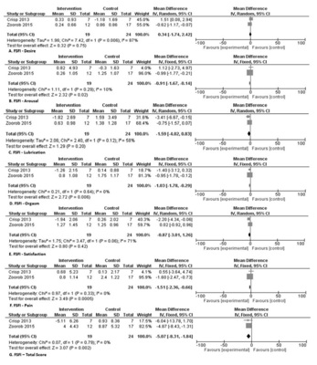
A Desejo e orgasmo.
B Escore total e dor.
C Satisfação e dor.
D Lubrificação e excitação.
Questão 44 · Medicina Preventiva · 4000194949Sobre os benefícios previdenciários concedidos pelo Instituto Nacional do Seguro Social (INSS), assinale a alternativa incorreta:
A O auxílio-acidente é um benefício de natureza indenizatória, cabível nos casos em que, após um afastamento inicial por algum acidente, haja a redução permanente da capacidade para o trabalho, mediante comprovação pericial.
B O salário-maternidade é um benefício devido à segurada por ocasião de nascimento ou adoção de criança. Existe o salário- maternidade e o salário-maternidade rural, este último no caso de segurada especial - as trabalhadoras rurais.
C O auxílio-doença previdenciário é um benefício deferido quando houver incapacidade para o trabalho e o agravo tiver sido decorrente do trabalho.
D O auxílio-acidente por acidente de trabalho é deferido quando houver redução permanente da capacidade para o trabalho e a sequela tiver sido decorrente do trabalho.
Questão 45 · Medicina Preventiva · 4000194948No que tange aos conselhos de saúde, sua origem, composição e papel no contexto do Sistema Único de Saúde (SUS), assinale a alternativa correta.
A A paritária participação do povo determina que metade dos assentos nos conselhos de saúde sejam ocupados por representantes dos usuários, de forma que as demais cadeiras serão ocupadas de forma igualitária pelos representantes dos profissionais da saúde, representantes do governo e representantes dos prestadores de serviços.
B Criados na VIII Conferência Nacional de Saúde, os conselhos de saúde tiveram ampla participação na transição de um sistema de saúde centralizado e restrito, para um sistema descentralizado e universal.
C Por possuírem caráter deliberativo, esses órgãos colegiados terão suas decisões homologadas pelo chefe do Poder Legislativo legalmente constituído em cada esfera do governo.
D Os conselhos de saúde configuram-se como órgãos que não podem ser extintos por nenhuma autoridade, nem lei estadual ou municipal.
Questão 46 · Medicina Preventiva · 4000194947Estudo realizado na Suécia randomizou pacientes internados em unidade fechada, com diagnóstico de sepse de foco abdominal, para receberem tratamento com um novo protocolo, que incluía reposição volêmica balanceada com cristaloide e coloide, infusão precoce de dopamina e antibioticoterapia postergada versus o tratamento habitual. Os desfechos avaliados foram mortalidade, evolução para intubação orotraqueal e ocorrência de miopatia. A tabela a seguir traz os resultados do estudo. Analisando os resultados do estudo, podemos afirmar que:
A O risco de evoluir para intubação orotraqueal foi 2,1 vezes maior no grupo-controle.
B Ao permitir o cálculo do risco relativo como medida de associação, podemos inferir que se trata de um estudo de coorte concorrente.
C O desenvolvimento de miopatia foi significativamente maior no grupo experimental, porém sem significância estatística.
D O novo protocolo terapêutico não mostrou associação com risco de mortalidade por sepse de foco abdominal.
Questão 47 · Medicina Preventiva · 4000194946Diante do caso de solicitação de interrupção de gestação resultante de violência sexual, assinale a alternativa que contém os procedimentos adequados a serem executados pela equipe de saúde que acolhe a paciente.
A Para proceder ao aborto legal, faz-se necessário autorização judicial.
B O boletim de ocorrência não é documento imprescindível para que se proceda à interrupção da gestação. Por outro lado, é fundamental que a equipe de saúde comunique o caso à autoridade policial e preserve possíveis evidências materiais do crime de estupro, que deverão ser entregues à autoridade responsável.
C Entre os documentos necessários para que o aborto legal seja realizado, está o termo de responsabilidade. Ao assiná-lo, a gestante ou seu responsável legal mostram que estão cientes das possíveis consequências legais caso não tenha ocorrido a violência relatada (crime de falsidade ideológica e de aborto).
D A notificação de violência sexual deve ser feita com periodicidade semanal ao Sistema Nacional de Agravos de Notificação (SINAN).
Revisar: possível letra faltando em alt C
Questão 48 · Medicina Preventiva · 4000194945Um acadêmico de Medicina iniciou o seu rodízio de Medicina de Família e Comunidade em um município rural. Após 2 semanas, percebeu um aumento do número de casos de gastroenterite. Comunicou o fato ao seu preceptor e, ao analisar os endereços dos pacientes, observaram que todos pertenciam a uma mesma microárea. Diante dessa observação, pode-se inferir que o fenômeno analisado é um (a):
A Epizootia.
B Surto.
C Pandemia.
D Epidemia.
Questão 49 · Medicina Preventiva · 4000194620Durante a pandemia de covid-19, um dos temas que mais ganhou popularidade foi o estudo das propriedades dos testes diagnósticos. Conceitos como sensibilidade, especi cidade e valores preditivos passaram a ser cada vez mais comentados e valorizados. Tomando isso por base, quando nos referimos a um teste capaz de confirmar laboratorialmente a infecção pelo SARS-CoV-2, estamos valorizando quais de suas propriedades diagnósticas?
A Alta especificidade e alto valor preditivo positivo.
B Alta sensibilidade e alto valor preditivo negativo.
C Alta especificidade e alto valor preditivo negativo.
D Alta sensibilidade e alto valor preditivo positivo.
Questão 50 · Medicina Preventiva · 4000194619A Lista Nacional de Agravos d e Noti cação Compulsória é atualizada frequentemente pelo Ministério da Saúde. Levando e m consideração sua composição mais atual, assinale a alternativa que contém apenas condições cuja notificação seja semanal.
A Paracoccidioidomicose, asma e hipertensão arterial sistêmica.
B Síndrome gripal por SARS-CoV-2 (covid-19), febre amarela e hantavirose.
C Acidente com animais peçonhentos, violência doméstica e sarampo.
D Síndrome congênita pelo zika vírus, acidente com exposição a material biológico e tuberculose.
Questão 51 · Medicina Preventiva · 4000194618Lançada em 2011, pela Portaria nº 2.836, a Política Nacional de Saúde Integral de Lésbicas, Gays, Bissexuais, Travestis e Transexuais (LGBT) representou uma nova e promissora página na luta dessa população. Acerca desse tema, assinale a alternativa incorreta.
A Uma das grandes lacunas que prejudica o cuidado da população LGBT+ é a falta de estudos aprofundados acerca desse grupo populacional. Visando alterar essa realidade, esse documento do Ministério da Saúde trata desse aspecto em uma diretriz específica da política.
B A orientação sexual diz respeito à forma como o indivíduo se relaciona sexual e afetivamente com os demais. Já a identidade de gênero pode ser entendida como a forma como uma pessoa identifica seu próprio gênero e como ela se apresenta socialmente.
C Os direitos reprodutivos da população LGBT+ foram cerceados por muito tempo e ainda encontram grandes obstáculos para sua aplicação. Tendo isso em vista, a política em tela traz como uma das responsabilidades das Secretarias de Saúde a definição de estratégias para a garantia desses direitos.
D O desrespeito ao nome escolhido pelas pessoas travestis e transexuais deve ser considerado como uma forma de violência. Dessa forma, a Política Nacional LGBT defende a inclusão da garantia do uso do nome social para todos os usuários do sistema de saúde.
Questão 52 · Medicina Preventiva · 4000194617Um funcionário de uma fábrica de lâmpadas uorescentes procurou a Unidade Básica de Saúde queixando- se de gengivite. Foi avaliado pela equipe de saúde bucal que, após o atendimento, solicitou que o médico de família da equipe avaliasse o caso. A esposa do paciente, que o acompanhava na consulta, informou que ele vem mudando de comportamento nos últimos meses, com aumento da irritabilidade. Ao exame físico, o médico de família percebeu que o paciente apresentava tremores, especialmente ao tentar pegar objetos. Considerando-se a situação descrita, assinale a opção correta.
A Trata-se de intoxicação crônica pelo mercúrio que, por sua vez, deve ser notificada ao SINAN.
B Trata-se de intoxicação aguda pelo chumbo, elemento muito utilizado na produção de lâmpadas fluorescentes, e deve ser notificada ao SINAN.
C Trata-se de intoxicação aguda por amônia, gás utilizado para reforçar o brilho das lâmpadas fluorescentes, e deve-se preencher a CAT e o SINAN.
D O quadro clínico do paciente não parece estar relacionado a sua ocupação, sendo necessário o encaminhamento ao médico do trabalho para que esse profissional consiga estabelecer o nexo ocupacional.
Questão 53 · Medicina Preventiva · 4000194616Acerca dos estudos epidemiológicos e das medidas de associação avalie as assertivas a seguir. I — Estudos de coorte não concorrentes são caracterizados por serem prospectivos. II — Os estudos de intervenção permitem a avaliação da e cácia de um tratamento por meio do cálculo da razão de prevalências. III — O s estudos d e caso-controle são estudos observacionais, longitudinais e retrospectivos, permitindo avaliar a associação entre desfecho e exposição por meio do cálculo do IV — Ao fazermos inferências individuais a partir de dados agregados nos estudos ecológicos, estamos sob risco de incorrer na chamada falácia ecológica. V — A razão de prevalências é uma das principais medidas de associação calculada nos estudos transversais. VI — O viés de hospitalização é tipicamente observado nos estudos de coorte concorrente. Assinale a alternativa que contém apenas assertivas corretas.
A II, V e VI.
B I, III e VI.
C III, IV e V.
D I, II e V.
Questão 55 · Medicina Preventiva · 4000194519José Carlos, de 23 anos, com dores abdominais há 2 dias, procura atendimento em uma Unidade Básica de Saúde (UBS) próxima de sua residência. Na chegada, ao informar sobre sua situação à recepcionista, é orientado por ela a procurar uma Unidade de Pronto Atendimento (UPA), já que situações de possível urgência e emergência como a dele não são atendidas ali. Levando em consideração a Política Nacional de Humanização (PNH), qual foi a diretriz claramente desrespeitada na situação descrita?
A Gestão participativa e cogestão
B Ambiência
C Acolhimento
D Transversalidade
E Clínica ampliada e compartilhada
Questão 56 · Medicina Preventiva · 4000194518Gestante de 36 anos, portadora de sequela valvar mitral de etiologia reumática, entra em trabalho de parto com 38 semanas e 4 dias de idade gestacional. Durante os primeiros procedimentos para condução do caso, a parturiente desenvolve um edema agudo de pulmão, evoluindo com insu ciência respiratória e óbito ainda no centro obstétrico. De acordo com os conceitos relacionados à mortalidade materna, como podemos classificar esse óbito?
A Óbito materno por causa externa.
B Óbito materno por causa obstétrica direta.
C Óbito materno acidental.
D Óbito materno por causa obstétrica indireta.
E Óbito por causa materna.
Questão 57 · Medicina Preventiva · 4000194517Gabriel, um trabalhador de 31 anos, procura atendimento médico na Unidade Básica de Saúde (UBS) em que é adscrito em razão de cólicas abdominais intensas iniciadas há 3 dias, associadas à constipação intestinal. Nega comorbidades ou uso de medicações. Ao exame físico, apresenta-se com fácies de dor, corado, hidratado, acianótico e anictérico. Tax. de 38,5°C, FC de 118 bpm, FR = 22 irpm e PA: 164x94 mmHg. Na avaliação da orofaringe, chama atenção a presença de linhas pigmentadas em azul-violáceas na mucosa gengival do paciente. Considerando uma determinada intoxicação por metal pesado como hipótese diagnóstica para o caso, responda: quais são o provável intoxicante e o respectivo local de trabalho onde ele pode ser encontrado?
A Mercúrio, fábrica de lâmpadas fluorescentes.
B Cromo, indústria automotiva.
C Arsênio, frigoríficos.
D Níquel, postos de gasolina.
E Chumbo, indústrias de baterias.
Questão 58 · Medicina Preventiva · 4000194516Na vigilância epidemiológica de uma afecção ao longo do tempo, podemos utilizar um instrumento gráfico chamado diagrama de controle. Acerca dele, assinale a alternativa correta:
A O intervalo localizado entre o limite endêmico inferior e o limite endêmico superior é denominado faixa epidêmica.
B Para calcular a faixa endêmica no diagrama de controle, precisamos conhecer o valor da incidência mensal média (IMM) e acrescentar ± 1,96 x desvio-padrão do valor da IMM.
C Quando a incidência supera o limite endêmico superior, estamos diante de uma endemia.
D O diagrama de controle é um gráfico que correlaciona as variáveis tempo e prevalência de uma condição.
E Em razão de tratar-se de um modelo estático de vigilância, nem sempre o diagrama de controle contribuirá com a identificação de epidemias.
Questão 59 · Medicina Preventiva · 4000194515Durante uma consulta de rotina em uma Unidade Básica de Saúde, a médica Marcela atende o senhor Luiz, portador de hipertensão arterial sistêmica (HAS) e doença arterial coronariana (DAC) bem controladas. O paciente não tem queixas atualmente. Sabendo que, no Brasil, as duas comorbidades apresentadas pelo paciente são as principais causas de Insu ciência Cardíaca (IC), tomando essa patologia como ponto de referência, se Marcela optar por manter o uso da estatina e orientar a diminuição da ingestão de sal, essas medidas corresponderão à:
A Prevenção primária.
B Prevenção quaternária.
C Prevenção terciária.
D Prevenção quinquenária.
E Prevenção secundária.
Questão 60 · Medicina Preventiva · 4000194514A Norma Operacional Básica 93 (NOB 93), instituída a partir da Portaria nº 545, de 20 de maio de 1993, pode ser considerada um dos instrumentos mais importantes no processo de descentralização da gestão das ações e serviços de saúde pública no Brasil. Acerca dos conteúdos dessa Norma, assinale a alternativa correta:
A Houve a estruturação das Comissões Intergestores, cuja metade das cadeiras deve ser ocupada por representantes dos usuários do sistema de saúde.
B À nível estadual, foram implementadas as modalidades de gestão incipiente, parcial e semiplena.
C No caminho para ofertar maior autonomia de gestão para os estados e municípios, ampliando a descentralização do Sistema de Saúde, uma das novidades da NOB 93 foi a implementação de um sistema de transferência de recursos da União para os demais entes por meio dos chamados “Fundos de Saúde”.
D Uma das maiores revoluções trazidas por essa Norma Operacional foi a criação do chamado Piso da Atenção Básica (PAB), que permitiu maior autonomia para os municípios no financiamento da carteira de serviços oferecidos nesse nível de atenção à saúde.
E As Comissões Intergestoras Tripartite (CIT) são compostas por representantes do Conselho Nacional de Secretários de Saúde (CONASS), Conselho Nacional de Secretarias Municipais de Saúde (CONASEMS) e organizações sindicais representantes dos profissionais de saúde.
Questão 61 · Medicina Preventiva · 4000194513Acerca dos modelos de organização de Sistemas de Saúde desenvolvidos pelo mundo, assinale a alternativa correta:
A O modelo smithiano, que predomina em países como os Estados Unidos, não é observado no Brasil.
B Cuba é um exemplo de país que adota o sistema beveridgiano.
C No modelo bismarckiano, o financiamento do sistema é feito por meio da contribuição de toda a sociedade, principalmente com o pagamento de impostos.
D As caixas de aposentadorias e pensões (CAP), criadas em 1923 pela Lei Eloy Chaves, tinham por base o financiamento estatal exclusivo, aproximando essa modalidade do chamado modelo Semashko, que vigoraria anos depois nos países do Leste Europeu.
E O National Health Service (NHS) do Reino Unido pode ser considerado o protótipo do modelo beveridgiano de sistema de saúde.
Questão 62 · Medicina Preventiva · 4000194512Um ensaio clínico randomizado foi realizado com o intuito de avaliar uma nova droga para o tratamento da oclusão arterial aguda trombótica de membro inferior. Os pesquisadores dividiram aleatoriamente os pacientes em dois grupos: intervenção e controle, sendo o grupo intervenção tratado com novo medicamento e o grupo controle conduzido com o tratamento habitual. O desfecho avaliado foi a necessidade de amputação do membro acometido. Avalie os resultados do estudo na tabela abaixo e assinale a alternativa que traz uma afirmação correta.

A Para cada 20 indivíduos tratados com a nova droga, conseguiremos evitar uma amputação.
B A redução absoluta de risco com o novo tratamento foi de 25%.
C A incidência de amputação calculada no estudo foi maior no grupo intervenção.
D A eficácia da nova droga foi de 13% na redução do risco de amputação.
E O risco relativo calculado no estudo foi de 0,87%.
Questão 63 · Medicina Preventiva · 4000194511Pesquisadores de uma Universidade brasileira resolveram fazer um estudo para avaliar a incidência de câncer de pele em uma população de uma pequena cidade litorânea no Nordeste brasileiro. Desse modo, dividiram a comunidade em aqueles que apresentavam exposição regular ao sol versus aqueles que não apresentavam tal exposição. Ambos os grupos foram acompanhados por 5 anos para avaliar o surgimento de neoplasias malignas cutâneas. Diante do que foi descrito, os estudiosos empreenderam que tipo de estudo epidemiológico?
A Coorte não concorrente.
B Transversal.
C Caso controle.
D Ensaio clínico.
E Coorte concorrente.
Questão 64 · Medicina Preventiva · 4000194510Durante uma consulta em um ambulatório de gastroenterologia, um médico orientou seu paciente sobre a importância da realização da colonoscopia para o rastreamento do câncer colorretal. O pro ssional explicou que, na idade em que o indivíduo se encontra, existe indicação da realização do exame. Além disso, deixou claro os riscos e benefícios do rastreio, informando em detalhes todos os procedimentos envolvidos para a sua realização, desde o preparo, passando pela anestesia, até o exame colonoscópico propriamente dito. Após todos os esclarecimentos, o paciente optou por não realizar o exame, explicando que não se sentia confortável para realizá-lo no momento. O médico, então, respeitou sua posição e se mostrou disponível para maiores esclarecimentos e realização da propedêutica em outro momento. Segundo os princípios da Bioética, a atitude do pro ssional de saúde diante da negativa do paciente indica o respeito a qual deles?
A Justiça
B Autonomia
C Indiferença
D Não maleficência
E Beneficência
Questão 65 · Política Nacional de Atenção Básica PNAB · 4000194507A insu ciência Renal Crónica é um problema de saúde pública, estando sua incidência e prevalência aumentando nos últimos anos. A Atenção Primária à Saúde tem um papel importante na identi cação e manejo dos pacientes portadores de Insu ciência Renal Crónica. Sobre o acompanhamento desses pacientes na Atenção Primária à Saúde, pode-se afirmar que:
A pacientes com Insuficiência Renal Crónica devem ser encaminhados para acompanhamento conjunto com Nefrologista assim que a condição é diagnosticada
B o controle da Hipertensão Arterial Sistémica é importante para evitar a progressão da doença renal e deve ser manejado em conjunto com cardiologista especializado em Insuficiência Renal Crónica
C os pacientes em estágios de insuficiência Renal Crónica com redução de leve a moderada na taxa de filtração glomerular podem ser acompanhados exclusivamente na Atenção Primária à Saúde
D pacientes que necessitem de tratamento com hemodiálise devem ser encaminhados para a nefrologia apenas no momento em que for necessário iniciar a hemodiálise, não sendo necessária avaliação prévia
Questão 66 · Medicina Preventiva · 4000194461Paciente masculino, 25 anos de idade, apresenta febre, dor de garganta, anosmia e coriza há dois dias. Refere início dos sintomas cinco dias após ter participado de uma festa onde não utilizou máscara por estar com o esquema vacinai para Covid-19 completo, incluindo duas doses de reforço. Neste caso, o diagnóstico de Covid-19 poderá será
A confirmado por dosagem de anticorpos neutralizantes - se resultado positivo
B confirmado por biologia molecular- se RT-PCR detectável para $ARS-Cov2
C descartado por teste imunológico (ELISA) - se IgM negativo para $ARS-Cov2
D descartado por Teste Rápido antígeno - apenas um teste com resultado negativo
Questão 67 · Medicina Preventiva · 4000194460No modelo de nanciamento da Atenção Primaria à Saúde no âmbito do Sistema Único de Saúde estabelecido pelo Programa Previne Brasil, o quantitativo de cadastro populacional, a vulnerabilidade social e o perfil demográfico são considerados no componente:
A captação ponderada
B pagamento por desempenho
C incentivo para ações estratégicas
D incentivo para ações preventivas
Questão 68 · Medicina Preventiva · 4000194459Nas últimas décadas, o Brasil passou por importantes avanços no setor saúde, impactando diretamente nos indicadores de morbidade e mortalidade, Analisando o índice de Swaroop & Uemura (ISU) e as curvas de Nelson Moraes das diferentes regiões do país, verifica-se que:
A apenas na região Nordeste a curva de Nelson Moraes não apresenta o formato da letra jota invertida
B os valores do ISU registrados para a região Sudeste são menores que os do Brasil como um todo
C o índice de Swaroop & Uemura (ISU) na região Sul permanece mais elevado do que na região Norte
D pela classificação de Swaroop & Uemura o Brasil encontra-se no quarto grupo com ISU abaixo de 25%
Questão 69 · Medicina Preventiva · 4000194458Em 2022, houve um aumento expressivo da incidência de Dengue no estado do Rio de Janeiro quando comparado ao ano anterior, levando as autoridades sanitárias a alertarem a população quanto a importância da eliminação de criadouros de proposto por Laevell e Clarck, na história natural da doença, as ações de controle de vetores são classificadas como prevenção:
A quaternária
B terciária
C secundária
D primária
Questão 70 · Medicina Preventiva · 4000194457Uma das principais ações no enfrentamento da pandemia de Covid-19 foi a implementação da vacinação. No Brasil, a primeira dose foi aplicada em 17/01/2021, iniciando por pessoas com risco elevado para forma grave da doença. A elaboração do calendário vacinai considerando os grupos prioritários foi uma decisão pautada no seguinte princípio do Sistema Único de Saúde:
A equidade
B integralidade
C universalidade
D hierarquização
Questão 71 · Medicina Preventiva · 4000194456De acordo com a Lei 8.080, de 1990, que regula as ações e serviços de saúde em todo o território nacional, a saúde é um direito fundamental do ser humano. Considerando o dever do Estado de garantir o pleno exercido deste direito, a Lei Orgânica da Saúde prevê:
A elaboração, coordenação e execução de políticas de saúde centralizadas pela União
B a execução de políticas intersetoriais, de forma articulada entre as três esferas de governo
C ênfase na descentralização das ações e serviços para os estados e o distrito federal
D descentralização da coordenação do Sistema de Vigilância Sanitária para os municípios
Questão 72 · Medicina Preventiva · 4000194455A identi cação das necessidades de saúde da população é fundamental para orientar o planejamento ações no contexto da regionalização. De acordo com o decreto N 7.508 de 2011, nesta identi cação deve constar a descrição geográ ca da distribuição de recursos humanos, de ações e serviços de saúde ofertados tanto pelo SUS quanto pela iniciativa privada, levando em consideração a capacidade instalada existente, os investimentos e o desempenho através do resultado dos indicadores de saúde. Estas informações compõem o (a):
A região de saúde
B mapa da saúde
C rede de atenção à saúde
D território em saúde
Revisar: possível letra faltando em enunciado
Questão 73 · Medicina Preventiva · 4000194454Em novembro de 2022, líderes de diversos países participaram da 27a Conferência das Partes das Nações Unidas sobre Mudanças Climáticas (COP 27) com o objetivo de discutir estratégias para conter o aumento da temperatura global, já que a preservação do meio ambiente é uma preocupação mundial especialmente pelos impactos na saúde da população. Dentre os Determinantes Sociais da Saúde, de acordo com o modelo de Dahlgren & Whitehead, as condições ambientais gerais, socioeconômicas e políticas encontram-se na camada:
A das condições de vida e trabalho, evidenciando a situações de iniquidade e risco social
B interna, refletindo o comportamento pessoal e os modos de vida que afetam a saúde
C mais externa, como macrodeterminantes influenciando em todas as outras camadas
D das redes sociais, destacando o conceito de saúde comunitária no cotidiano das pessoas
Questão 74 · Medicina Preventiva · 4000194453Diversos estudos sobre Covid-19 foram publicados nos últimos dois anos contribuindo para um maior conhecimento da doença, levando a melhores resultados no manejo dos casos e na implementação de medidas preventivas. Ao contrário do que se pensava no início da pandemia, sabe-se hoje que uma mesma pessoa pode ser reinfectada e adquirir a doença várias vezes. A reinfecção é possível devido à seguinte característica do bioagente da doença:
A baixa virulência
B baixa infectividade
C baixa patogenicidade
D baixa imunogenicidade
Questão 75 · Medicina Preventiva · 4000194452Paciente jovem é internado apresentando lesões cutâneas sugestivas de monkeypox. Considerando a Portaria GM/MS N° 3.418, de 31 de agosto de 2022, o caso deve ser notificado:
A a qualquer momento desde que seja confirmado
B imediatamente (até 24 horas), como caso suspeito
C em uma semana, exceto se o paciente for a óbito
D em até vinte e quatro horas após a alta hospitalar
Questão 76 · Medicina Preventiva · 4000194451Alunos do quinto período do curso de Medicina realizaram um inquérito para conhecer o per l de morbidade do corpo docente da universidade, utilizando um questionário auto referido de condições de saúde. Identi caram a existência de 10 casos de hipertensão, e 3 casos de diabetes dentre os 50 professores que lecionavam naquele período. Para descrever os resultados deste estudo, deve ser utilizada a seguinte medida:
A incidência
B letalidade
C prevalência
D mortalidade
Questão 77 · Medicina Preventiva · 4000194450Paciente de 55 anos, vítima de acidente automobilístico, foi submetido a duas cirurgias para tratamento de fratura em membro inferior direito, permanecendo importante limitação de movimentos di cultando a deambulação. Para auxiliar na sua recuperação, foi referenciado ao serviço de sioterapia. Neste caso, o tratamento fisioterapêutico está classificado no seguinte nível de prevenção:
A quaternária
B terciária
C secundária
D primária
Questão 78 · Medicina Preventiva · 4000194417Como corolário do movimento da Reforma Sanitária, a Constituição Federal de 1988 definiu três grandes referenciais para o sistema de saúde brasileiro: o conceito ampliado de saúde; a saúde como direito do cidadão e dever do Estado e a instituição do SUS. Esse sistema, calcado nos princípios de universalidade, integralidade, descentralização e participação da comunidade, foi resultado de um intenso movimento social, que teve como objetivo construir um sistema universal de saúde para o país. São princípios que nortearam a reforma: I - Princípio ético-normativo, que insere a saúde como parte dos direitos humanos. II - Princípio científico, que compreende a determinação social do processo saúde/doença. III - Princípio político, que assume a saúde como direito universal inerente à cidadania em uma sociedade democrática. IV - Princípio sanitário, que entende a proteção à saúde de forma integral, desde a promoção, passando pela ação curativa até a reabilitação. Estão CORRETAS as afirmativas:
A I, II e III apenas.
B I e III apenas.
C II e IV apenas.
D I, II, III e IV.
Questão 79 · Medicina Preventiva · 4000194416De acordo com a Lei Orgânica da Saúde, estão incluídas ainda no campo de atuação do Sistema Único de Saúde (SUS): I - A execução de ações de vigilância epidemiológica e sanitária, de saúde do trabalhador e de assistência terapêutica integral, inclusive farmacêutica. II - A participação na formulação da política e na execução de ações de saneamento básico. III - A ordenação da formação de recursos humanos na área de saúde. IV - O incremento do desenvolvimento científico e tecnológico. Estão CORRETAS as afirmativas:
A I, II, III e IV.
B I, II e III apenas.
C II e IV apenas.
D I e III apenas.
Questão 80 · Medicina Preventiva · 4000194415Analise as ações da equipe da estratégia de saúde da família a seguir: I - Realizar ações de gerenciamento na unidade de saúde. II - Realizar o cuidado em saúde da população adscrita, prioritariamente no âmbito da unidade de saúde, no domicílio e nos demais espaços comunitários (escolas, associações, entre outros), quando necessário. III - Fazer uma busca ativa e a noti cação de doenças e agravos de noti cação compulsória e de outros agravos e situações de importância para o grupo. IV - Participar das atividades de planejamento e avaliação das ações da equipe, a partir da utilização dos dados disponíveis. É CORRETO afirmar que são atribuições de todos os membros da ESF as afirmativas previstas em:
A I e II apenas.
B I, II, III e IV.
C III e IV apenas.
D II, III e IV apenas.
Questão 81 · Medicina Preventiva · Epidemiologia · Legislação sobre registros públicos Lei n 60151973 · 4000194414Homem, 49 anos, motorista de caminhão, se envolveu em um acidente enquanto trabalhava, sofreu fraturas múltiplas, foi internado e submetido à cirurgia. Evoluía adequadamente, mas adquiriu infecção hospitalar, vindo a falecer, 12 dias depois, por septicemia no CTI. Considerando os dados disponíveis, assinale a alternativa que apresenta CORRETAMENTE a causa básica da morte e quem deve fornecer a Declaração de Óbito.
A Septicemia e o IML.
B Septicemia e o intensivista.
C Acidente de trânsito e o IML.
D Acidente de trânsito e o intensivista.
Questão 82 · Medicina Preventiva · 4000194413São doenças passíveis de serem prevenidas com a vacinação, EXCETO:
A Poliomielite.
B Febre amarela.
C Hepatite C.
D Coqueluche.
Questão 83 · Medicina Preventiva · 4000194412Sobre a Política Nacional de Atenção Básica (PNAB), assinale a alternativa
A A PNAB tem na longitudinalidade sua estratégia prioritária para expansão e consolidação da Atenção Básica.
B A Atenção Básica será a principal porta de entrada e o centro de comunicação da Rede de Atenção à Saúde (RAS), coordenadora do cuidado e ordenadora das ações e serviços.
C A integração entre a Vigilância em Saúde e a Atenção Básica é condição essencial para o alcance de resultados que atendam às necessidades de saúde da população.
D A resolutividade e a territorialização são diretrizes do Sistema Único de Saúde e da rede de atenção à saúde a serem operacionalizadas na atenção básica.
Questão 84 · Medicina Preventiva · 4000194411Apesar de ser uma enfermidade antiga, a tuberculose continua sendo um importante problema de saúde pública. Sobre a tuberculose, é CORRETO afirmar que:
A Os bacilos que se depositam em roupas, lençóis, copos e outros objetos facilmente se dispersam em aerossóis e, por isso, podem ajudar na transmissão da doença.
B Embora o risco de adoecimento seja maior nos primeiros 2 anos após a primoinfecção, uma vez infectada, a pessoa pode adoecer em qualquer momento da sua vida.
C Com o início do esquema terapêutico adequado, a transmissão tende a diminuir gradativamente e, em geral, após 5 dias de tratamento, chega a níveis insignificantes.
D A suscetibilidade à infecção é praticamente universal. A maioria dos infectados posterga o adoecimento após a infecção e desenvolve imunidade total à doença.
Questão 85 · Medicina Preventiva · 4000194410Sobre a participação da comunidade na gestão do Sistema Único de Saúde (SUS), assinale a alternativa INCORRETA:
A A Conferência de Saúde se reunirá a cada quatro anos com a representação dos vários segmentos sociais.
B A representação dos usuários nos Conselhos de Saúde e Conferências será paritária em relação ao conjunto dos demais segmentos.
C As Conferências de Saúde e os Conselhos de Saúde terão sua organização e normas de funcionamento definidas em regimento próprio, aprovadas pelo respectivo conselho.
D O Conselho de Saúde, em caráter findável e randômico, atua na formulação de estratégias e no controle da execução da política de saúde na instância correspondente.
Questão 86 · Medicina de Família e Comunidade · 4000194361Com o controle adequado da glicemia dos diabéticos, a prevalência da doença:
A Aumenta
B Diminui
C Não se modifica
D Não pode ser avaliada
Questão 87 · Medicina de Família e Comunidade · 4000194360Ao interpretar o resultado do teste ergométrico de um atleta maratonista de 30 anos de idade, assintomático, o médico deverá levar em consideração que:
A o teste tem alta confiabilidade
B o teste tem baixa sensibilidade
C o valor preditivo positivo será muito baixo
D o valor preditivo negativo será muito baixo
Questão 88 · Medicina de Família e Comunidade · 4000194359Considerando os termos da Lei 8080/1990 (Lei Orgânica de Saúde) estão incluídas no âmbito de atuação do SUS, as seguintes ações, EXCETO:
A A fiscalização e a inspeção de alimentos, água e bebidas para consumo humano;
B A ordenação da formação de recursos humanos na área de saúde;
C A participação na formulação da política de saneamento básico;
D A participação na formulação e execução da política industrial.
Questão 89 · Medicina de Família e Comunidade · 4000194358Mulher de 67 anos comparece ao posto médico solicitando orientação quanto a vacinação. É portadora de hepatite autoimune, em uso de azatioprina 100mg ao dia e prednisona 10mg ao dia. Traz os seguintes resultados de exames: antiHBc total positivo, anti-HBs positivo, HBsAg negativo, anti-HCV IgG negativo, anti-HAV IgG e IgM negativos. Sobre a orientação para a vacinação dessa paciente, assinale a alternativa CORRETA.
A Está contraindicada a vacina dupla adulto (difteria e tétano).
B Estão indicadas as vacinas para hepatite A e a tríplice viral (MMR) para imunização contra sarampo.
C Estão indicadas as vacinas para hepatite A, influenza, pneumococo 13-valente e 23-valente.
D Estão indicadas as vacinas para hepatite B e influenza.
Questão 90 · Medicina de Família e Comunidade · 4000194357Paciente de 35 anos apresenta-se com tosse e “chieira” que piora durante a noite e pela manhã, associado também a prolongamento do tempo expiratório. Qual diagnóstico
A Asma brônquica
B Bronquite crônica
C Enfisema
D Granulomatose de wegener
Questão 91 · Medicina de Família e Comunidade · 4000194356Com relação ao processo de trabalho das equipes de Saúde da Família é CORRETO afirmar que:
A A equipe Saúde da Família deve atualizar o cadastramento das famílias e dos indivíduos sempre que possível, para posterior análise da situação de saúde deles
B A equipe Saúde da Família deve realizar o mapeamento definitivo da área adstrita, visando alinhar a configuração do território de atuação com a capacidade técnica dos profissionais integrantes da equipe
C A equipe Saúde da Família deve realizar trabalho interdisciplinar, desassociando as áreas técnicas, com o objetivo de fortalecer os diversos saberes profissionais especializados
D A equipe Saúde da Família deve realizar diagnóstico, programação e implementação das atividades, segundo critérios de risco à saúde, priorizando a solução dos problemas de saúde mais frequentes
Questão 92 · Medicina de Família e Comunidade · 4000194355Criança, 3 anos de idade com febre há uma semana, acompanhada de edema palpebral, exsudato nas amígdalas, adenomegalia cervical bilateral e hepatoesplenomegalia. O hemograma mostra leucocitose com linfocitose e linfócitos atípicos. O diagnóstico
A Citomegalovirose
B Doença de Kawasaki
C Leishmaniose visceral
D Mononucleose infecciosa
Questão 93 · Medicina de Família e Comunidade · 4000194354Com relação aos direitos dos usuários dos serviços de saúde é CORRETO afirmar:
A Há garantia de sigilo e confidencialidade de todas as informações pessoais, exceto após a morte.
B Nas situações de urgência/emergência, qualquer serviço de saúde deve receber e cuidar da pessoa;
C O cidadão tem a liberdade de permitir ou recusar qualquer exame médico apenas no cuidado ambulatorial;
D O cidadão tem direito de ver o seu prontuário desde que tenha autorização de um juiz para tal;
Questão 94 · Medicina de Família e Comunidade · 4000194353Os agrotóxicos constituem importantes agentes de intoxicações relacionadas ao trabalho. Com relação a esta categoria de substâncias químicas é CORRETO afirmar:
A Trata-se de substâncias capazes de inibir a ação da enzima acetilcolinesterase;
B Trata-se de substâncias absorvidas apenas pela inalação.
C Após utilizadas, as embalagens destes agrotóxicos devem ser enterradas;
D Estas substâncias são responsáveis por intoxicações agudas, não estão envolvidas em intoxicações crônicas.
Questão 95 · Medicina de Família e Comunidade · 4000194352Em relação à Promoção da Saúde, assinale a alternativa CORRETA:
A A promoção da saúde tem como alvo pessoas sob riscos de saúde específicos diferentemente da prevenção das doenças.
B A saúde é produto dos diferenciais de exposição e vulnerabilidade às diversas características das condições de vida e trabalho dos indivíduos.
C As políticas de promoção da saúde devem ser executadas e planejadas sobretudo pelo setor de saúde das três esferas de governo.
D As prescrições não-farmacológicas consistem no principal conjunto de medidas para promover a saúde das populações.
Questão 96 · Medicina de Família e Comunidade · 4000194351Na atualidade, os cânceres estão entre os principais problemas de saúde pública no mundo, sendo a segunda causa de morte nas populações, principalmente nos países menos desenvolvidos. Entre os fatores de risco para essas doenças, estão as exposições aos carcinógenos presentes nos ambientes de trabalho. Sobre os cânceres relacionados ao trabalho, assinale a alternativa ERRADA:
A O câncer ocupacional surge em função da exposição por anos a agentes carcinogênicos presentes no ambiente de trabalho, mesmo depois de interrompida a exposição.
B O mesotelioma de pleura é causado pela exposição à sílica livre.
C Os cânceres ocupacionais são evitáveis por meio da eliminação da exposição via substituição de matérias- primas e enclausuramento de processos.
D Os contatos com benzeno, agrotóxicos, formaldeído e radiação são importantes fatores de risco.
Questão 97 · Medicina de Família e Comunidade · 4000194350Sobre os transtornos mentais, assinale a alternativa ERRADA
A Depressão, estado de stress pós-traumático e transtorno do ciclo vigília-sono estão entre os agravos reconhecidos pelo Ministério da Saúde como potencialmente relacionados ao trabalho.
B Exaustão emocional, despersonalização e redução da realização profissional integram as manifestações clássicas da Síndrome de Burnout.
C Transtornos mentais representam importante causa de afastamento do trabalho pelo Instituto Nacional do Seguro Social (INSS).
D Trabalhadores com diagnóstico de transtorno mental devem ser encaminhados ao INSS para realização de perícia médica após emissão da Comunicação de Acidentes de Trabalho (CAT).
Questão 98 · Medicina Preventiva · Processos Endêmicos e Epidêmico Endemias e Epidemias · 4000194345Sindemia é um conjunto de problemas de saúde intimamente interligados e que aumentam mutuamente, que afetam significativamente o estado geral de saúde de uma população no contexto de persistência de condições sociais adversas. SINGER, M. A dose of drugs, a touch of violence, a case of AIDS: conceptualizing the SAVA syndemic. Free Inquiry in Creative Sociology. Okhlahoma, Estados Unidos, v. 24, n. 2, p. 99-110, 1996. A sindemia não constitui simplesmente um sistema de comorbidade; ao contrário, significa um sistema de transmorbidade. Implica, ademais, entender essa sindemia como determinada socialmente e, por consequência, compreender que ela não será solucionada somente com modelos de intervenção provenientes exclusivamente do campo biomédico. VILAÇA MENDES, E. O lado oculto de uma pandemia: a terceira onda da covid-19 ou o paciente invisível. CONASS. 2020. Acerca da perspectiva sindêmica da Covid-19, assinale a opção correta.
A A distribuição das taxas de morbidade e mortalidade da Covid-19 entre os diferentes segmentos sociais reflete as desigualdades estruturais e os determinantes sociais da saúde.
B A suspensão dos atendimentos de pessoas com doenças crônicas foi medida acertada diante da emergência sanitária, dada a necessidade de priorizar o atendimento e o acompanhamento dos casos de Covid-19.
C A interação entre epidemias resulta na redução considerável da taxa de incidência das doenças, assim como da severidade dos casos e das repercussões para as comunidades, prevalecendo uma das epidemias em detrimento das demais.
D A teoria sindêmica da Covid-19 reforça a importância de investimentos em políticas de natureza curativa, sobretudo na estruturação e ampliação de leitos clínicos e de terapia intensiva direcionados aos casos graves, que requerem acompanhamento hospitalar.
Questão 99 · Medicina Preventiva · Saúde do Trabalhador · Dermatologia · 4000194335Um paciente com 32 anos, enfermeiro em hospital de referência em urgência e emergência, queixa-se de eritema, descamação e pápulas na face, principalmente na região malar. Ele relata ter percebido que esse quadro clínico, compatível com eczema de contato na face, manifestou-se após o uso constante de certo tipo de máscara de proteção. Apesar do risco de contágio pelo novo Covid-19 já ter diminuído, os pro ssionais da área de saúde continuam a usar com frequência seus equipamentos de proteção individual, entre eles, as máscaras N95. Considerando-se a situação descrita, assinale a opção correta.
A Os medicamentos tópicos, como pomadas compostas por corticoide e antibiótico, são de prescrição obrigatória na condução clínica desse paciente.
B Os testes epicutâneos constituem ferramenta diagnóstica confirmativa, podendo ser utilizados amplamente na Atenção Primária à Saúde.
C O afastamento, temporário ou permanente, desse trabalhador deve ser avaliado, a partir da confirmação ou suspeita de doença relacionada ao trabalho.
D O diagnóstico de dermatose ocupacional, frequente entre profissionais dessa área, possui prevalência real registrada elevada, existindo baixa prevalência de sub-registros depois das notificações realizadas na Atenção Primária à Saúde.
Questão 100 · Medicina Preventiva · Sistemas de Inf ormação em Saúde SIS e Bases de dados do SUS · 4000194330Vigilância em Saúde Uma paciente com 35 anos, que vive com o marido e dois lhos pequenos, procurou uma unidade básica de saúde (UBS) com feridas recentes. Ela relatou que, na noite anterior, havia sido agredida pelo marido, com socos e pontapés, e ameaçada com uma faca. Após receber atendimento para as lesões, e tendo sido abordada pelo médico, a paciente confirmou que a atitude violenta do marido é frequente e que vem ocorrendo há dois anos. Diante desse quadro, a conduta médica adequada é
A encaminhar a paciente ao atendimento psiquiátrico e comunicar o caso ao Conselho Tutelar.
B encaminhar a paciente, acompanhada de alguém da equipe da UBS, à Delegacia de Proteção à Mulher e emitir boletim de ocorrência.
C comunicar o fato à rede social de apoio da paciente, vizinhos e familiares, para que a ajudem nos momentos de conflito entre ela e o marido.
D propor abordagem multiprofissional e notificar o caso de violência preenchendo a Ficha de Notificação do Sistema de Informação de Agravos de Notificação (SINAN).
Questão 101 · Medicina Preventiva · Atenção Primária à Saúde APS no Brasil · 4000194320Um paciente com 42 anos, assintomático, compareceu, pela primeira vez, a uma unidade básica de saúde (UBS), mencionando à médica de família e comunidade que ele havia se mudado recentemente para área de atuação da UBS. Na consulta, ele traz relatório médico do centro de atenção psicossocial (CAPS), informando o diagnóstico de esquizofrenia há 7 anos, sem crise nos últimos 3 anos, e uso de psicofármacos. O paciente relata que não usa outras medicações e que, há 1 mês, fez exames laboratoriais cujos resultados foram: glicemia de jejum: 189 mg/dL; colesterol total: 225 mg/dL; colesterol-HDL: 35 mg/dL; colesterol-LDL: 168 mg/dL. Por m, queixa-se de ter começado a engordar desde o diagnóstico de esquizofrenia (índice de massa corporal atual: 36,2 kg/m²) e solicita a renovação da receita dos psicofármacos de que faz uso. Nessa situação, qual a conduta adequada para o caso?
A Não renovar a receita até a avaliação do paciente pela psiquiatria e iniciar medidas para emagrecimento.
B Renovar a receita até o paciente retomar o seguimento no CAPS, e prescrever sulfonilureia nesse atendimento.
C Renovar a receita, realizar seguimento multiprofissional no núcleo ampliado de saúde da família, e iniciar medidas para controle metabólico.
D Encaminhar o paciente ao CAPS para renovação da receita, solicitar avaliação de nutricionista e do endocrinologista do núcleo ampliado de saúde da família.
Questão 102 · Políticas de Saúde do Sistema Único de Saúde · Medicina Preventiva · Endocrinologia · 4000194305Em reunião de equipe de saúde de uma unidade básica de saúde (UBS) localizada em cidade de médio porte com líderes de organizações sociais defensoras dos direitos da população de lésbicas, gays, bissexuais, travestis e transexuais, queer, intersexo, assexuais (LGBTQIA+), foram levantados alguns problemas, como: di culdade no acesso das mulheres lésbicas à realização de exame de papanicolau, falta de acesso a tratamento transexualizador para travestis e transexuais, não utilização do nome social dessa população pelos funcionários da UBS, falta de oferta de serviços e/ou ações voltados para a saúde mental dessa população. Diante dos problemas descritos e com base na Política Nacional de Saúde Integral de lésbicas, gays, bissexuais, travestis e transexuais, o médico da equipe de saúde deve, nessa ocasião, esclarecer que
A a adoção do uso do nome social das pessoas LGBTQIA+, apesar de indicado pela legislação brasileira, é uma prerrogativa de cada UBS.
B são previstas políticas públicas específicas relativas à saúde mental, álcool e outras drogas, para a população LGBTQIA+ na rede de atenção psicossocial.
C a dificuldade no acesso ao exame papanicolau é equivocada, visto que a cobertura de realização do exame é maior para as mulheres lésbicas e bissexuais do que para os outros grupos mencionados.
D ainda não há legislação que assegure a oferta do processo transexualizador pelo Sistema Único de Saúde (SUS), apesar de essa demanda ser reconhecida como válida e procedente.
Questão 103 · Políticas de Saúde do Sistema Único de Saúde · História do Sistema Único de Saúde SUS · 4000194300Medicina Preventiva A implementação da Política Nacional de Atenção à Saúde dos Povos Indígenas requer a adoção de um modelo complementar e diferenciado de organização dos serviços voltados para a proteção, promoção e recuperação da saúde que garanta à população indígena o exercício de sua cidadania. Acerca da implementação dessa política de saúde no Brasil, é correto a rmar que o Subsistema de Atenção à Saúde Indígena
A criou organizações paralelas ao Sistema Único de Saúde (SUS), como os Distritos Sanitários Especiais Indígenas (DSEI), o que vem gerando competição entre esses sistemas.
B é constituído por Distritos Sanitários Especiais Indígenas (DSEI) que coincidem com os limites territoriais municipais e estaduais, o que assegura o acesso dessa população ao atendimento adequado.
C está subordinado, na sua organização governamental, à Fundação Nacional do Índio (Funai), a quem compete coordenar as políticas voltadas para proteção, promoção e recuperação da saúde dessa população.
D demanda a adoção de medidas que aperfeiçoem seu funcionamento e adéquem sua capacidade para permitir a aplicação dos princípios e diretrizes de descentralização, universalidade, equidade, participação comunitária e controle social.
Questão 104 · Saúde do Idoso geriatria · 4000194295Uma idosa com 75 anos, acompanhada de sua lha, busca a unidade básica de saúde queixando-se ao médico de estar tendo alguns esquecimentos. Relata que a família insistiu muito para que buscasse atendimento médico e que a lha quase a obrigou a ir à consulta. Considerando a necessidade de uma primeira abordagem com avaliação multidimensional do caso, o médico se propôs a utilizar o Índice de Vulnerabilidade Clínico-Funcional-20 (IVCF-20). Acerca desse instrumento de avaliação, assinale a opção correta.
A Um dos itens avaliados pelo IVCF-20 é a renda familiar dos idosos, que indica a sua situação socioeconômica.
B Independentemente do resultado do IVCF-20, os idosos devem submeter-se, na sequência, à Avaliação Geriátrica Ampla (AGA).
C Entre os questionamentos a serem feitos para o cálculo do IVCF-20, inclui-se o do número de quedas do idoso no ano anterior ao do exame.
D O uso do IVCF-20 permite identificar os idosos frágeis, prescindindo da utilização de ferramenta complementar, seja qual for o seu resultado.
Questão 105 · Medicina Preventiva · Princípios e Diretrizes do Sistema Único de Saúde SUS · 4000194290A Lei n. 8.142/1990 constitui uma conquista para a democratização dos serviços de saúde. Nesse sentido, os conselhos e as conferências de saúde foram criados como espaços de participação e controle social do Sistema Único de Saúde (SUS). Esses conselhos podem ser instituídos em vários níveis: local, distrital, municipal, regional, estadual e/ou federal. Com relação ao caráter decisório e à composição proporcional dos conselhos de Saúde, é correto a rmar que esses órgãos são
A consultivos, compostos por 50% de usuários, 25% de trabalhadores de saúde e 25% de gestores.
B deliberativos, compostos por 50% de usuários, 25% de trabalhadores de saúde e 25% de gestores.
C deliberativos, compostos por 33,3% de usuários, 33,3% de trabalhadores da saúde e 33,3% de gestores.
D consultivos, compostos por 33,3% de usuários, 33,3% de trabalhadores da saúde e 33,3% de gestores.
Questão 106 · Medicina Preventiva · Atributos gerais da Atenção Primária à Saúde APS · 4000194275Uma paciente com 40 anos comparece à consulta médica no posto de saúde contando que, em razão de suas várias queixas de insônia e di culdades para dormir, já havia sido orientada sobre higiene do sono, tendo obtido melhora parcial, e que, há um mês e meio, havia se consultado com a enfermeira dessa unidade, que iniciou um tratamento semanal de aplicação de auriculoterapia. Refere ainda que começou, há 3 semanas, a tomar tintura de mulungu, uma planta de que dispõe em sua casa e de que sua família sempre se utiliza, de geração em geração, para ansiedade e insônia. No momento, a paciente relata ter obtido uma resposta muito boa a esse tratamento, mas a rma que a consulta se deve à preocupação com 1 episódio de insônia que teve há 1 semana. Nesse caso, assinale a opção que apresenta a conduta médica adequada.
A Orientar a suspensão da tintura de mulungu, devido ao risco de intoxicação por uma planta sem evidência científica robusta.
B Prescrever zolpidem 10 mg para o controle da insônia e encaminhar a paciente para o psiquiatra, se não houver melhora.
C Manter o uso da tintura de mulungu e o tratamento da auriculoterapia, e pedir à paciente que retorne se houver piora ou novos sintomas.
D Orientar a enfermeira informando que a prática de auriculoterapia e de acupuntura devem ser realizadas exclusivamente em centros especializados.
Questão 107 · Processo saúdedoença · 4000194265A febre amarela apresentou, no Brasil, dois picos epidêmicos em 2016/2017 e em 2017/2018, afetando estados das regiões Sudeste, Centro-Oeste e Nordeste. Antes disso, ainda em 2014, a doença, que era restrita à região amazônica, vinha reemergindo na região extra- amazônica, com casos na região Sudeste, Sul e Centro-Oeste. O aumento dos casos da doença está relacionado com a expansão da fronteira agrícola, que provoca o desmatamento, a redução das áreas de oresta e o aumento da urbanização, o que contribui ainda mais para a degradação desses ambientes e produz risco de desastres ambientais. Diante desse cenário, um médico de família e comunidade de um município próximo a áreas de desmatamento, visando a prevenção contra possível enfrentamento da febre amarela em seu território, deve
A notificar, semanalmente, todo caso que preencha os critérios de suspeita de febre amarela.
B orientar a antecipação da vacinação contra febre amarela para crianças a partir dos 6 meses.
C reforçar, junto à população adstrita, a importância da vacinação contra a febre amarela a cada 10 anos.
D recomendar o isolamento dos casos suspeitos no período de viremia se o território apresentar infestação por
Questão 108 · Medicina Preventiva · Sistema Único de Saúde SUS · Atenção Primária à Saúde APS no Brasil · 4000194260O gestor de um município de pequeno porte pretende organizar os serviços de atenção primária à saúde (APS), a partir de meados de 2023, fazendo a transição do modelo tradicional, vigente no município (integralmente composto por especialistas focais lotados em unidades básicas de saúde), para a estratégia de saúde da família: equipes de saúde da família (ESF), agentes comunitários de saúde (ACS), núcleos ampliados de saúde da família (NASF), etc. Para isso, ele pretende utilizar os dados do censo demográ co do IBGE de 2022. De acordo com o censo demográfico de 2010, o município possuía 12.366 habitantes. A partir dos parâmetros avaliados em ambos os censos e conforme as recomendações da Política Nacional de Atenção Básica (2017), quais são as ações corretas a serem indicadas para a reestruturação da APS pretendida no município?
A Definição do número de ACS por ESF com base em critérios demográficos e socioeconômicos fornecidos pelo censo e em dados epidemiológicos do município.
B Implantação de, pelo menos, 1 NASF, considerando-se o número de ESF previsto e da população encontrada pelo censo, para prover assistência especializada focal à população.
C Definição da modalidade das equipes de saúde bucal que irão compor as ESF, considerando-se os dados sobre condições de saúde bucal coletados e consolidados pelo censo.
D Implantação de, pelo menos, 3 ESF para atender a toda a população do município, considerando-se que o crescimento populacional encontrado tenha sido menor que 10% desde 2010.
Revisar: possível letra faltando em enunciado
Questão 109 · Ética Médica · 4000194255Um médico de família e comunidade atende, pela primeira vez, um paciente com queixa de dispneia a moderados esforços, tosse persistente, que piora pela manhã, e episódios de sibilância. O paciente traz resultados de exames solicitados por outro serviço e, entre eles, encontram-se uma espirometria e uma tomografia computadorizada (TC) de tórax, que diz terem sido solicitadas para investigar enfisema pulmonar, pois é fumante. Ao avaliar a TC, o médico ca em dúvida com relação a uma imagem, que poderia sugerir um câncer de pulmão e decide discutir o caso com outros pro ssionais no grupo de aplicativo de troca de mensagens. A respeito dos aspectos da ética médica relativos ao uso de grupo de aplicativo de troca de mensagens, é correto afirmar que
A permite-se o uso de grupo recreativo de aplicativo de troca de mensagens, formado apenas por médicos registrados nos Conselhos de Medicina, desde que seja feita a ressalva de que os dados compartilhados sejam mantidos em sigilo.
B é permitido o uso de aplicativo de troca de mensagens, exclusivo para discussão de casos, formado apenas por médicos registrados nos Conselhos de Medicina, desde que haja expressa autorização do paciente para compartilhamento de suas informações.
C é permitido o uso de grupo de aplicativo de troca de mensagens, exclusivo para discussão de casos clínicos, formado apenas por médicos registrados nos Conselhos de Medicina, desde que se mantenha o caráter confidencial das informações compartilhadas.
D não é permitido o uso de grupo de aplicativo de troca de mensagens para discussão de casos clínicos, mesmo com a manutenção de sigilo e confidencialidade dos dados pessoais dos pacientes e com expressa autorização do paciente para compartilhamento de suas informações.
Revisar: possível letra faltando em enunciado
Questão 110 · Determinantes Sociais do Processo SaúdeDoençaCuidado · Medicina Preventiva · 4000194250Uma médica iniciou suas atividades em uma equipe de Saúde da Família (ESF) de um grande centro urbano. Na primeira reunião de equipe, questionou de que forma os trabalhadores organizavam seu processo de trabalho para compreender as especi cidades e necessidades da população da área adstrita, do ponto de vista dos determinantes sociais da saúde (DSS). Os pro ssionais participantes da reunião não conseguiram responder a essa pergunta. A seguir é apresentado o modelo de determinantes sociais da saúde (DSS), proposto por Dahlgren e Whitehead. BUSS <https://publica.ciar.ufg.br/ebooks/saneamento-e-saude- ambiental/modulos/4_modulo_saude/01.html.> Acesso em 03 fev. 23 (adaptado). Considerando o modelo de determinação social da saúde apresentado, os profissionais dessa ESF deveriam

A considerar que apenas os fatores genéticos, estilo de vida e as redes sociais e comunitárias devem ser avaliadas para se reconhecerem as especificidades da população da área adstrita.
B entender que, apesar das condições de vida e trabalho serem importantes para os DSS, elas não influenciam ou orientam as atividades desenvolvidas no território.
C considerar que os fatores hereditários; estilo de vida; condições socioeconômicas, culturais e ambientais gerais, são os fatores mais importantes para a determinação das suas ações.
D entender que os indivíduos e suas características individuais de idade, sexo e fatores hereditários estão na base do modelo, e os estilos de vida individuais estão situados no limiar entre os fatores individuais e os DSS.
Questão 111 · Medicina Preventiva · 4000194163No indivíduo assintomático, é recomendado utilizar como critério de diagnóstico de DM:
A glicemia plasmática de jejum maior ou igual a 126 mg/dl, a glicemia duas horas após uma sobrecarga de 75 g de glicose igual ou superior a 200 mg/dl ou a HbA1c maior ou igual a 6,5%.
B glicemia plasmática de jejum maior ou igual a 100 mg/dl, a glicemia duas horas após uma sobrecarga de 75 g de glicose igual ou superior a 200 mg/dl ou a HbA1c maior ou igual a 6,5%.
C glicemia plasmática de jejum maior ou igual a 126 mg/dl, a glicemia duas horas após uma sobrecarga de 75 g de glicose igual ou superior a 300 mg/dl ou a HbA1c maior ou igual a 6,5%.
D glicemia plasmática de jejum maior ou igual a 126 mg/dl, a glicemia duas horas após uma sobrecarga de 75 g de glicose igual ou superior a 200 mg/dl ou a HbA1c maior ou igual a 8,5%.
Questão 112 · Medicina Preventiva · 4000193974Analise a tabela a seguir para responder a questão: Tabela 1. Riscos relativos (RR) e intervalo de con ança (IC95%) para um aumento de 10 PM10 para cada grupo de internações nos municípios estudados. Sobre a tabela acima, assinale a alternativa INCORRETA:

A Excetuando-se os municípios de Santo André (DRT) e Taboão da Serra (DRC), os demais municípios apresentaram estimativas estatisticamente significantes para as hospitalizações por doenças respiratórias.
B O risco relativo de admissão hospitalar para um aumento de 10 μg/m3 nos níveis de PM10 foi de 1,011 (IC95% 1,009–1,013) para São Paulo para doenças respiratórias totais, sendo um resultado estatisticamente significante.
C O risco relativo de admissão hospitalar para um aumento de 10 μg/m3 nos níveis de PM10 foi de 1,032 (IC95% 1,024–1,040) em São Bernardo do Campo para doenças respiratórias totais; sendo o resultado estatisticamente significante.
D O risco de internação por doenças respiratórias em crianças variou de 1,009 (IC95%1,001–1,017) em Santo André a 1,077 (IC95%1,056–1,098) em Mauá; sendo o resultado estatisticamente significante.
E O risco relativo de admissão hospitalar para um aumento de 10 μg/m3 nos níveis de PM10 foi de 1,011 para São Paulo e de 1,032 para São Bernardo do Campo para doenças respiratórias totais; não sendo o resultado estatisticamente significante.
Questão 113 · Medicina Preventiva · 4000193973Analise a tabela a seguir para responder a questão: Tabela 1. Riscos relativos (RR) e intervalo de con ança (IC95%) para um aumento de 10 PM10 para cada grupo de internações nos municípios estudados. Sobre a tabela acima, com relação às internações por doenças cardiovasculares (DCV), assinale a alternativa CORRETA
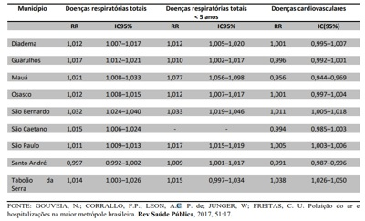
A As estimativas para internações por DCV não foram estatisticamente significantes para os municípios de São Paulo, São Bernardo do Campo e Santo André.
B As estimativas para internações por DCV foram estatisticamente significantes para os municípios de São Paulo, São Bernardo do Campo e Santo André.
C Com relação às estimativas para internações por DCV em Santo André, observou-se um risco relativo maior do que 1.
D Com relação às estimativas para internações por DCV em Diadema e em Guarulhos, o resultado foi estatisticamente significante. Medicina Preventiva e Social
E Com relação às estimativas para internações por DCV em Osasco e em São Caetano, o resultado foi estatisticamente significante.
Questão 114 · Medicina Preventiva · 4000193972Leia o texto abaixo para responder à questão: Um estudo epidemiológico foi realizado com o objetivo de avaliar o impacto da poluição do ar na maior metrópole brasileira sobre as internações por doenças respiratórias e cardiovasculares. Com relação aos “Métodos” realizou-se estudo com dados das estações de monitoramento de nove municípios da Região Metropolitana de São Paulo, tendo o PM10 (material particulado inalável) como indicador de poluição e as internações por doenças respiratórias e cardiovasculares como indicadores de efeito. Foram utilizadas, para cada município (unidade de análise foi o município), as contagens diárias de internações por doenças respiratórias (CID10: J00-J99) em todas as idades (DRT), doenças respiratórias (CID10: J00-J99) em menores de cinco anos (DRC) e doenças cardiovasculares (CID10: I00-I99) em maiores de 39 anos (DCV) como desfechos. Analisou-se o PM10 como variável de exposição nos diversos municípios, de forma a permitir a sumarização da estimativa de risco, relativa a esse poluente para a região. As medidas de PM10 cedidas, originalmente de forma horária, foram agregadas ao banco de dados em médias diárias para cada município. As estimativas de risco foram calculadas a partir da introdução da variável explanatória no modelo de trabalho de forma linear. Esse modelo estatístico fornece o risco relativo percentual para cada incremento de 10 PM10. Em todas as análises, assumiu-se nível de significância de 5%. Adaptado de GOUVEIA, N.; CORRALLO, F.P.; LEON, A.C. P. de; JUNGER, W; FREITAS, C. U. de. Poluição do ar e hospitalizações na maior metrópole brasileira. Rev Saúde Pública, 2017, 51:17. Trata-se do estudo epidemiológico:
A Ecológico
B Coorte
C Ensaio clínico
D Transversal
E Ensaio comunitário
Questão 115 · Medicina Preventiva · 4000193971Leia o texto abaixo para responder à questão: Um estudo epidemiológico foi realizado com o objetivo de avaliar o impacto da poluição do ar na maior metrópole brasileira sobre as internações por doenças respiratórias e cardiovasculares. Com relação aos “Métodos” realizou-se estudo com dados das estações de monitoramento de nove municípios da Região Metropolitana de São Paulo, tendo o PM10 (material particulado inalável) como indicador de poluição e as internações por doenças respiratórias e cardiovasculares como indicadores de efeito. Foram utilizadas, para cada município (unidade de análise foi o município), as contagens diárias de internações por doenças respiratórias (CID10: J00-J99) em todas as idades (DRT), doenças respiratórias (CID10: J00-J99) em menores de cinco anos (DRC) e doenças cardiovasculares (CID10: I00-I99) em maiores de 39 anos (DCV) como desfechos. Analisou-se o PM10 como variável de exposição nos diversos municípios, de forma a permitir a sumarização da estimativa de risco, relativa a esse poluente para a região. As medidas de PM10 cedidas, originalmente de forma horária, foram agregadas ao banco de dados em médias diárias para cada município. As estimativas de risco foram calculadas a partir da introdução da variável explanatória no modelo de trabalho de forma linear. Esse modelo estatístico fornece o risco relativo percentual para cada incremento de 10 PM10. Em todas as análises, assumiu-se nível de significância de 5%. Adaptado de GOUVEIA, N.; CORRALLO, F.P.; LEON, A.C. P. de; JUNGER, W; FREITAS, C. U. de. Poluição do ar e hospitalizações na maior metrópole brasileira. Rev Saúde Pública, 2017, 51:17. A contagem diária de internações e a média diária de PM10 são, respectivamente:
A Variável independente e variável dependente.
B Variáveis independentes.
C Variável de exposição e variável desfecho.
D Variável dependente e variável independente.
E Variáveis desfechos.
Questão 116 · Medicina Preventiva · 4000193970O genograma é um instrumento utilizado para ampliar o conhecimento sobre as famílias, pois apresenta de modo sucinto e universal a representação do grupo familiar. Em relação ao genograma, assinale a alternativa INCORRETA
A Permite identificar, de maneira rápida a dinâmica familiar e suas possíveis implicações, com criação de vínculo entre profissional e a família/indivíduo, evitando textos longos e muitas vezes pouco precisos na descrição do grupo familiar.
B Baseia-se no modelo do heredograma, mostrando graficamente a estrutura e o padrão de repetição das relações familiares.
C Representação gráfica dos contatos dos membros da família com os outros sistemas sociais, das relações entre a família e a comunidade. Avalia os apoios e suportes disponíveis e sua utilização pela família e pode apontar a presença de recursos.
D Trata-se de uma representação gráfica do sistema familiar, preferencialmente em três gerações, que utiliza símbolos padronizados para identificar os componentes da família e suas relações.
E São diferentes das famosas árvores genealógicas, pois apontam não só os graus de parentesco como padrões de comportamento, atitudes e doenças físicas e psíquicas.
Questão 117 · Medicina Preventiva · 4000193969O Matriciamento ou apoio matricial é um novo modo de produzir saúde em que duas ou mais equipes criam uma proposta de intervenção pedagógico-terapêutica. Sobre o Matriciamento ou Apoio matricial, pode-se afirmar que:
A Visa integrar os profissionais da equipe de saúde da família com profissionais especialistas, de forma que os primeiros tenham um suporte para a discussão de casos e intervenções terapêuticas.
B Objetiva extinguir os encaminhamentos, referências e contrarreferências, protocolos e centros de regulação.
C No processo de matriciamento, o sistema de saúde se reestrutura em dois tipos de equipes: equipe de transferência e equipe de especialidades médicas.
D O apoio matricial refere-se especificamente ao atendimento realizado por um médico especialista dentro de uma unidade de atenção secundária tradicional.
E Matriciamento é realizado, exclusivamente, quando se necessita de suporte para realizar intervenções psicossociais da atenção secundária, tais como grupos de pacientes das unidades de saúde mental.
Questão 118 · Medicina Preventiva · 4000193968A Clínica Ampliada propõe que o pro ssional de saúde desenvolva a capacidade de ajudar as pessoas, não só a combater as doenças, mas a transformar-se, de forma que a doença, mesmo sendo um limite, não a impeça de viver outras experiências na sua vida. A respeito da Clínica ampliada é INCORRETO afirmar que:
A A Clínica Ampliada reconhece que, em um dado momento e situação singular, pode existir uma predominância, uma escolha ou a emergência de um enfoque ou de um tema, sem que isso signifique a negação de outros enfoques e possibilidades de ação.
B A clínica ampliada trabalha os danos e os benefícios gerados pelas práticas de saúde e aposta nas equipes de diferentes especialidades compartilhando a responsabilidade com os usuários e seu entorno.
C Ampliar a clínica é aumentar a autonomia do usuário do serviço de saúde, da família e da comunidade. É integrar a equipe de trabalhadores da saúde de diferentes áreas na busca de um cuidado e tratamento de acordo com cada caso, com a criação de vínculo com o usuário.
D A clínica ampliada pode ser conceituada como uma ferramenta teórica e prática com finalidade de contribuir para a abordagem clínica do adoecimento e do sofrimento, considerando a singularidade do sujeito e a complexidade do processo saúde/doença.
E A clínica ampliada apesar da grande importância como ferramenta de trabalho na atuação das equipes de atenção primária, não entrou como diretriz da Política Nacional de Humanização criada em 2018.
Questão 119 · Medicina Preventiva · 4000193967O Projeto Terapêutico Singular (PTS) é um conjunto de propostas de condutas terapêuticas articuladas para um indivíduo, uma família ou um grupo, que resulta da discussão coletiva de uma equipe interdisciplinar. Sobre o PTS, assinale a alternativa CORRETA:
A O PTS é dedicado a situações menos complexas, buscando a generalização como elemento central de articulação, na tentativa de igualar as situações ou os sujeitos a partir dos diagnósticos médicos firmados.
B PTS é uma forma de organização da gestão do cuidado, instituída no processo de trabalho em saúde entre as equipes da Atenção Básica, permitindo o compartilhamento de casos e acompanhamento longitudinal de responsabilidade dessas equipes.
C É dividido em seis etapas: Diagnóstico Médico, Ruptura, Decisão, Divisão de responsabilidades, Reavaliação e Alta médica.
D A construção do PTS tem caráter permanente e definitivo, não estando sujeito a revisões, uma vez que a situação problema tende a ser resolvida pela equipe de saúde em conjunto com o NASF.
E v
Questão 120 · Medicina Preventiva · 4000193966Leia o texto abaixo para responder a questão: Um estudo foi realizado para avaliar a associação entre tempo de amamentação e comportamentos externalizantes na infância e na adolescência (ex: hiperatividade e problemas de conduta). Para tanto, foram utilizados dados de nascimentos de Pelotas-RS de 1993. Desde então, os participantes (nascidos vivos) têm sido acompanhados em diferentes momentos. As informações sobre amamentação foram coletadas aos 12 meses. O comportamento foi avaliado aos 4 anos pelo Inventário de Comportamentos da Infância e da Adolescência (versão brasileira da Child Behavior Checklist, CBCL) e aos 11 e 15 anos pelo Questionário de Capacidades e Di culdades (versão brasileira de Strengths and Di culties Questionnaire, SDQ), ambos aplicados às mães ou aos responsáveis pela criança. POTON, WL; SOARES, ALG; MENEZES, AMB; WEHRMEISTER, FC; GONÇALVES, H. Amamentação e comportamentos externalizantes na infância e adolescência em uma coorte de nascimentos [Breastfeeding and externalizing behaviors in childhood and adolescence in a birth cohort]. Rev Panam Salud Publica. 2018, Feb 19; 41e142. Trata-se do estudo epidemiológico
A observacional, Coorte.
B experimental, Ensaio clínico.
C observacional, Transversal.
D experimental, Ensaio comunitário.
E observacional, Ecológico.
Questão 121 · Medicina Preventiva · 4000193965Leia o texto abaixo para responder a questão: Um estudo foi realizado para avaliar a associação entre tempo de amamentação e comportamentos externalizantes na infância e na adolescência (ex: hiperatividade e problemas de conduta). Para tanto, foram utilizados dados de nascimentos de Pelotas-RS de 1993. Desde então, os participantes (nascidos vivos) têm sido acompanhados em diferentes momentos. As informações sobre amamentação foram coletadas aos 12 meses. O comportamento foi avaliado aos 4 anos pelo Inventário de Comportamentos da Infância e da Adolescência (versão brasileira da Child Behavior Checklist, CBCL) e aos 11 e 15 anos pelo Questionário de Capacidades e Di culdades (versão brasileira de Strengths and Di culties Questionnaire, SDQ), ambos aplicados às mães ou aos responsáveis pela criança. POTON, WL; SOARES, ALG; MENEZES, AMB; WEHRMEISTER, FC; GONÇALVES, H. Amamentação e comportamentos externalizantes na infância e adolescência em uma coorte de nascimentos [Breastfeeding and externalizing behaviors in childhood and adolescence in a birth cohort]. Rev Panam Salud Publica. 2018, Feb 19; 41e142. A conclusão do estudo foi que embora o aleitamento materno por pelo menos 6 meses tenha sido inversamente associado à hiperatividade aos 11 anos, nenhuma associação foi observada aos 4 e aos 15 anos. Novos estudos devem considerar outros fatores que in uenciam os comportamentos externalizantes, tais como presença do pai no ambiente familiar, violência doméstica e maus-tratos qualidade da relação mãe- filho. Obs: RR = Risco Relativo; IC95% = Intervalo de Confiança de 95%. Diante do quadro acima, assinale a alternativa CORRETA.
A Aos 11 anos, após ajuste para fatores de confusão, as crianças que foram amamentadas por pelo menos 6 meses tiveram menor risco (“protegidas”) de hiperatividade (RR=1,54; IC95%: 0,32 a 1,91) em comparação às amamentadas por menos de 1 mês.
B Aos 11 anos, após ajuste para fatores de confusão, as crianças que foram amamentadas por pelo menos 6 meses tiveram maior risco de hiperatividade (RR=0,54; IC95%: 0,32 a 0,91) em comparação às amamentadas por menos de 1 mês.
C Nenhuma associação significativa foi observada aos 4 anos entre duração da amamentação e comportamentos externalizantes com Risco Relativo = 0,78 com respectivo Intervalo de Confiança de 95% entre 0,36 e 0,88.
D Aos 11 anos, após ajuste para fatores de confusão, as crianças que foram amamentadas por pelo menos 6 meses tiveram menor risco (“protegidas”) de hiperatividade (RR=0,54; IC95%: 0,32 a 0,91) em comparação às amamentadas por menos de 1 mês.
E Nenhuma associação significativa foi observada aos 15 anos entre duração da amamentação e comportamentos externalizantes com Risco Relativo = 1,29 com respectivo Intervalo de Confiança de 95% entre 1,27 e 1,35.
Questão 122 · Medicina Preventiva · 4000193964Sobre a Lei Orgânica da Saúde 8.142/90, assinale a alternativa CORRETA.
A As Conferências de Saúde e os Conselhos de Saúde têm sua organização e normas de funcionamento aprovadas pelo poder executivo, não possuindo autonomia administrativa.
B A Conferência de Saúde reunir-se-á a cada quatro anos com a representação dos vários segmentos sociais, sendo eles: usuários, trabalhadores da saúde, governo e prestadores de serviço.
C Os recursos do Fundo Nacional de Saúde destinados às ações e serviços de saúde, serão repassados de forma regular e automática, sendo pelo menos 50% destinados aos Municípios.
D O Conselho de Saúde é um órgão colegiado composto por representantes do governo, prestadores de serviço, profissionais de saúde e usuários. Não possui caráter permanente, porém é deliberativo.
E Municípios, Estados e Distrito Federal, deverão contar com Conferência de Saúde como requisito indispensável para recebimento dos recursos do Fundo Nacional de Saúde.
Questão 123 · Medicina Preventiva · 4000193963Faz parte da Lista Nacional de Notificação Compulsória de doenças, agravos e eventos de saúde pública, nos serviços de saúde públicos e privados em todo o território nacional, com periodicidade de noti cação semanal:
A Covid-19
B Doença aguda pelo vírus Zika
C Leptospirose
D Sindrome gripal suspeita de covid-19
E Síndrome respiratória aguda grave (SRAG) associada a coronavírus
Questão 124 · Medicina Preventiva · 4000193962A Resolução n° 588/2018 em seu art. 2º define: “A Política Nacional de Vigilância em Saúde é uma política pública de Estado e função essencial do SUS, tendo caráter universal, transversal e orientador do modelo de atenção nos territórios, sendo a sua gestão de responsabilidade exclusiva do poder público.” Sobre os princípios da Política Nacional de Vigilância em Saúde, analise as afirmativas abaixo: I. Conhecimento do território: utilização da epidemiologia e da avaliação de risco para a definição de prioridades nos processos de planejamento, alocação de recursos e orientação programática. II. Integralidade: Articulação das ações de vigilância em saúde com as demais ações e serviços desenvolvidos e ofertados no SUS para garantir a integralidade da atenção à saúde da população. III. Equidade: Acesso universal e contínuo a ações e serviços de vigilância em saúde, Está CORRETO o que se afirma em:
A I, apenas.
B I, II e III.
C I e II, apenas.
D II, apenas.
E III, apenas.
Questão 125 · Medicina Preventiva · 4000193961De acordo com o Decreto n° 7.508/2011, o acesso universal e igualitário à assistência farmacêutica pressupõe: I. Os entes federativos poderão ampliar o acesso do usuário à assistência farmacêutica, desde que questões de saúde pública o justifiquem. II. Para o acesso universal e igualitário à assistência farmacêutica, o medicamento deve ter sido prescrito por profissional de saúde, no exercício regular de suas funções no serviço público ou privado; III. A prescrição de medicamento deve estar em conformidade com a RENAME e os Protocolos Clínicos e Diretrizes Terapêuticas ou com a relação especí ca complementar estadual, distrital ou municipal de medicamentos; ter a dispensação ocorrido em unidades indicadas pela direção do SUS. IV. Ter a dispensação ocorrido em unidades indicadas pela direção do SUS. Está(ão) CORRETA(S) as afirmativas:
A I, II, III e IV.
B III e IV, apenas.
C I e II, apenas.
D I, III e IV, apenas.
E III, apenas.
Revisar: possível letra faltando em enunciado
Questão 126 · Medicina Preventiva · 4000193960A Constituição Federal de 1988 é também chamada de "Constituição Cidadã", por ter sido concebida no processo de redemocratização e passou por diversas atualizações ao longo dos anos. Dentre as recentes atualizações, estão as Emendas Constitucionais n° 120/2022 e n° 124/2022, que garantem direitos importantes para algumas categorias de profissionais que atuam na área da saúde. Sobre a Constituição Federal de 1988 e suas recentes atualizações, assinale a alternativa
A O vencimento dos agentes comunitários de saúde e dos agentes de combate às endemias fica sob responsabilidade dos Estados, e cabe somente aos Municípios, estabelecer, vantagens, incentivos, auxílios, gratificações e indenizações, a fim de valorizar o trabalho desses profissionais.
B O vencimento dos agentes comunitários de saúde e dos agentes de combate às endemias não será inferior a 1 (um) salário-mínimo, repassados pelos Estados aos Municípios e ao Distrito Federal.
C Lei federal instituirá pisos salariais profissionais nacionais para o enfermeiro, o técnico de enfermagem, o auxiliar de enfermagem e a parteira, a serem observados apenas por pessoas jurídicas de direito público.
D Os agentes comunitários de saúde e os agentes de combate às endemias terão também, em razão dos riscos inerentes às funções desempenhadas, aposentadoria especial e, somado aos seus vencimentos, adicional de insalubridade.
E Os recursos financeiros repassados pelos Estados aos Municípios para pagamento do vencimento dos agentes comunitários de saúde e dos agentes de combate às endemias serão objeto de inclusão no cálculo para fins do limite de despesa com pessoal.
Questão 127 · Medicina Preventiva · 4000193959De acordo com a Lei Orgânica da Saúde n° 8080/90, estão incluídas no campo de atuação do Sistema Único de Saúde, as seguintes ações:
A A participação na formulação da política de saneamento básico e na execução das suas ações.
B Pagar o seguro de saúde para as vítimas de acidentes de trânsito em deslocamento para o trabalho.
C Fiscalizar e inspecionar alimentos, água e bebidas para o consumo animal.
D Colaboração na proteção do meio ambiente, exceto o ambiente de trabalho.
E Executar a interdição de máquina ou todo ambiente de trabalho quando houver risco para vida ou saúde dos trabalhadores.
Questão 128 · Medicina de Família e Comunidade · 4000193922A Medicina de Família e Comunidade é descrita como a especialidade médica que presta assistência à saúde de forma continuada, integral e abrangente para os pacientes e seus familiares e também para a comunidade. É uma especialidade médica que atua fundamentalmente no nível primário da atenção à saúde. Ainda é uma especialidade desa adora e ao mesmo tempo estimulante para os cuidados continuados. A medicina de Família e Comunidade exige experiência, e a experiência exige ações governadas por princípios fundamentais a serem incorporados na atuação da especialidade. Pensando nos princípios da Medicina de Família e Comunidade, marque a alternativa correta.
A O médico de Família e Comunidade é um clínico que não exige qualificação.
B A atuação do médico de Família e Comunidade é influenciada somente pelo paciente.
C O médico de família e comunidade é o recurso de uma população definida.
D O médico de Família e Comunidade não tem necessidade de fixar na Unidade de Saúde, visto que a rotatividade dos profissionais fazem parte de uma boa dinâmica de condutas.
E A atuação do médico de Família e Comunidade visa o tratamento, individualmente, do paciente.
Questão 129 · Medicina de Família e Comunidade · 4000193921Em 1990, foram criados os conselhos permanentes de saúde e as conferências de saúde, com a representação dos usuários e com a periodicidade máxima de quatro anos. Os conselhos de saúde são de instância de participação permanente com o caráter deliberativo. As atribuições atuais do Conselho de Saúde estão regulamentadas pela Lei n° 8.142/1990 que define o papel da sociedade na gestão do SUS. Pensando na estratificação dos Conselhos de Saúde, marque a alternativa correta.
A Conselhos Locais de Saúde – Conselhos Municipais de Saúde – Conselhos Distritais de Saúde – Conselhos Estaduais de Saúde – Conselho Nacional de Saúde.
B Conselhos Locais de Saúde – Conselhos Distritais de Saúde – Conselhos Municipais de Saúde – Conselhos Estaduais de Saúde – Conselho Nacional de Saúde.
C Conselhos Distritais de Saúde – Conselhos Locais de Saúde – Conselhos Municipais de Saúde – Conselhos Estaduais de Saúde – Conselho Nacional de Saúde.
D Conselhos Locais de Saúde – Conselhos Distritais de Saúde – Conselhos Municipais de Saúde – Conselho Nacional de Saúde – Conselhos Estaduais de Saúde.
E Conselhos Distritais de Saúde – Conselhos Estaduais de Saúde – Conselhos Municipais de Saúde – Conselhos Distritais de Saúde – Conselho Nacional de Saúde.
Questão 130 · Medicina de Família e Comunidade · 4000193920A prática do médico de Medicina de Família e Comunidade, exige ferramentas que facilitem suas intervenções. Saber quando e como se aproximar das famílias passa ser uma habilidade essencial para essa prática. A compreensão da abordagem familiar contribuirá no plano de prevenção, da investigação clínica e do tratamento dos casos, tanto simples como os mais complexos. Umas das ferramentas que são utilizadas de rotina na prática do médico de Família e Comunidade é o Genograma que abrange um conhecimento maior daquela história familiar. Dentre os vários símbolos para uma construção do Genograma, marque a alternativa que corresponde à figura abaixo.
A Ruptura.
B Divórcio.
C Foco de atenção nesta pessoa.
D Relação conflituosa.
E Distanciamento.
Questão 131 · Medicina de Família e Comunidade · 4000193919A hipertensão Arterial Sistêmica é uma doença crônica definida por níveis pressóricos, em que os benefícios do tratamento (não medicamentoso e/ ou medicamentoso) superam os riscos. Trata-se de uma condição multifatorial, que depende de fatores genéticos, ambientais e sociais, caracterizada por elevação persistente da Pressão Arterial (PA). Nas unidades básicas de saúde é trabalho em equipe multidisciplinar colocando os quadros dos pacientes e conduzindo da melhor forma possível. Visto que cada pro ssional tem seu papel específico. Marque a alternativa correta referente às ações específicas do médico.
A Responsável por diagnóstico, estratificação de risco e orientações das condutas terapêuticas não farmacológicas e farmacológicas e avaliação clínica dos pacientes, pelo menos duas vezes por ano.
B Responsável por diagnóstico, estratificação de risco e orientações das condutas terapêuticas farmacológicas e avaliação clínica dos pacientes, pelo menos uma vez por ano.
C Responsável por estratificação de risco e orientações das condutas terapêuticas não farmacológicas e farmacológicas e avaliação clínica dos pacientes, pelo menos quatro vezes por ano.
D Responsável por estratificação de risco e orientações das condutas terapêuticas não farmacológicas e farmacológicas e avaliação clínica dos pacientes quando necessário.
E Responsável por orientações das condutas terapêuticas não farmacológicas e farmacológicas e avaliação clínica dos pacientes, pelo menos três vezes por ano.
Questão 132 · Medicina de Família e Comunidade · 4000193918Paciente, 26 anos de idade, realiza procura médica na Unidade Básica de Saúde devido apresentar quadros de diarreias há 14 dias, a mesma relata que está fazendo uso de soro de reidratação, e ingerindo líquidos o dia todo. O quadro teve início sem mesmo a paciente perceber algo diferente em sua rotina alimentar. Relata estar preocupada por não obter melhoras. Diarreia é o aumento do volume das fezes, diminuição na consistência ou aumento de aquosidade e/ou aumento da frequência das evacuações. A diarreia possui várias causas como, uma delas, alimentos contaminados. Os sintomas incluem desconforto abdominal, cólica, plenitude, excesso de atos, náusea e vômitos. Pode haver presença de sangue ou pus na diarreia, o que chamamos de disenteria. Pensando na classificação da diarreia, marque a alternativa correta referente ao quadro da paciente apresentado.
A Diarreia aguda.
B Diarreia crônica.
C Diarreia persistente.
D Disenteria.
E Diarreia Subaguda.
Questão 133 · Medicina de Família e Comunidade · 4000193917A noti cação compulsória é a comunicação obrigatória à autoridade de saúde, realizada pelos médicos, pro ssionais de saúde ou responsáveis pelos estabelecimentos de saúde, públicos ou privados, sobre a ocorrência de suspeita ou confirmação de doença, agravo ou evento de saúde pública, descritos no anexo, podendo ser imediata ou semanal. Sua utilização efetiva permite a realização do diagnóstico dinâmico da ocorrência de um evento na população, podendo fornecer subsídios para explicações causais dos agravos de noti cação compulsória, além de vir a indicar riscos aos quais as pessoas estão sujeitas, contribuindo assim, para a identi cação da realidade epidemiológica de determinada área geográ ca. Leia a frase abaixo e marque a alternativa correta. São aquelas já conhecidas e que estavam controladas, mas que voltam a representar ameaças para a saúde, devido a um aumento em sua incidência em um determinado local ou uma população específica.
A Doenças emergentes.
B Doenças reermegentes.
C Doenças negligenciadas.
D Doenças erradicadas.
E Doenças agudas.
Revisar: possível letra faltando em enunciado
Questão 134 · Medicina de Família e Comunidade · 4000193916No Brasil, embora o aumento de acesso ao exame preventivo ter ocorrido, foi observado o quanto as mulheres reduziram a mortalidade por câncer de colo de útero. As unidades básicas de saúde devem priorizar o acesso para aquelas mulheres que nunca zeram exames, tranquilizar as mulheres preocupadas ou que pretendem fazer exames de rotina com uma frequência desnecessária de acordo com as evidências cientí cas. O médico de Família e Comunidade tem suas contribuições especí cas dentro de uma equipe de saúde. Marque a alternativa correta sobre as atribuições médicas.
A Realizar consulta médica e encaminhar para realização de preventivo e exames de mama.
B Emitir prescrição do tratamento medicamentoso, obrigatoriamente, mesmo sabendo que não seja a melhor conduta.
C Solicitar exames complementares para todos os pacientes.
D Referenciar, quando necessário, as usuárias a serviço de referência de média e alta complexidade, respeitando fluxos de referências e contrarreferências locais e mantendo sua responsabilização pelo acompanhamento dessa usuária.
E Avaliar quadro clinico , emitindo diagnóstico e orientar a paciente que não terá necessidade de acompanhamento em sua unidade, a mesma poderá ser acompanhada com o diagnóstico em qualquer unidade da cidade.
Revisar: possível letra faltando em enunciado
Questão 135 · Medicina de Família e Comunidade · 4000193915No Brasil, denomina se visita domiciliar remete à Estratégia Saúde da Família (ESF), que viabiliza a Atenção Primária à Saúde no Brasil e assume papel fundamental na organização do trabalho de suas equipes. Para a realização dessa atividade, são necessários planejamento, execução, registro de dados e avaliação. O registro é considerado um critério de avaliação da assistência prestada nos serviços de saúde, aspecto relevante da informação sobre o processo de trabalho desenvolvido pelos pro ssionais. A visita domiciliar é considerada a atividade externa à unidade de saúde mais desenvolvida pelas equipes de saúde. Ela se caracteriza por utilizar uma tecnologia leve, permitindo o cuidado à saúde de forma mais humana, acolhedora, estabelecendo laços de con ança entre os pro ssionais e os usuários, a família e a comunidade, ampliando o acesso da população às ações da Saúde em um dos pontos de sua rede de atenção: o domicílio, a unidade residencial de determinada família. Em relação às atribuições médicas da visita domiciliar, marque a alternativa correta.
A Esclarecer a família sobre os problemas de saúde e construir plano de cuidados para a pessoa enferma.
B Não há necessidade de estabelecer comunicação participativa com a família, com a comunidade e sim individualmente com o paciente.
C Avaliar de modo individual a situação da pessoa enferma e emitir diagnóstico.
D Realizar consulta médica para aqueles que apresentam incapacidade de se deslocarem até a UBS e também podem ser realizadas consultas principalmente para os que não apresentam dificuldade de locomoção.
E Não há necessidade de registrar os atendimentos realizados nos prontuários.
Questão 136 · Medicina de Família e Comunidade · 4000193913Um estudo sobre a mortalidade infantil foi desenvolvido em Paracatu-MG, obtendo os seguintes resultados: Analisando o gráfico, marque a resposta correta.

A O período infantil tardio é o mais afetado por causas genéticas e não ambientais, apesar de não apresentar um coeficiente crescente de óbito.
B A regularidade nos óbitos do período infantil tardio mostra a necessidade de intervenções políticas na atenção a esse grupo.
C O período neonatal é o mais afetado por causas genéticas e não ambientais e apresenta um coeficiente crescente de óbito.
D O desenvolvimento de atividades de aconselhamento genético para evitar óbitos no período infantil tardio é a medida mais eficaz de prevenção.
E Pelo número de óbitos observado no gráfico, não é necessário intervenções preventivas para o controle dos mesmos.
Questão 137 · Medicina de Família e Comunidade · 4000193912Um novo método para diagnóstico de sí lis foi testado com os seguintes resultados: sensibilidade de 96% e especi cidade de 87%. O que é possível dizer sobre os valores V+ e F+ e sobre a precisão do teste, respectivamente, nesse estudo?
A 87, 96, 91,5%.
B 4, 13, 100%.
C 13, 4, 98%.
D 96, 13, 65%.
E 96, 87, 91,5%.
Questão 138 · Medicina de Família e Comunidade · 4000193911Realizou-se estudo com emparelhado de dois grupos. Foram identi cados 117 pessoas com diabetes mellitus e submetidas a amputações de extremidades inferiores, na rede de serviços do Município de São Paulo, estes foram comparados com 234 pessoas com diabetes mellitus, mas não submetidas a amputações. As variáveis consideradas no emparelhamento foram sexo, idade e duração da doença. Características sociodemográ cas, de hábitos de vida, clínicas e relativas à educação em saúde em diabetes mellitus foram incluídas. Inicialmente, foi realizada análise univariada, verificando a presença de associações entre amputações e variáveis exploratórias. Foi utilizado modelo de regressão logística condicional para a análise multivariada, com adoção da medida de associação especí ca. (GAMBA, 2004) Com base no trecho do artigo, é possível dizer que se trata de um desenho do tipo:
A Coorte.
B Caso-controle.
C Transversal.
D Ecológico.
E ECR.
Revisar: possível letra faltando em enunciado
Questão 139 · Medicina Preventiva · 4000193858Durante uma visita domiciliar, a Agente Comunitária de Saúde (ACS) Leila foi acompanhada por dois estudantes de Medicina que faziam o Internato Rural na pequena cidade de Santo Antônio. Ao chegarem na casa, localizada em uma das melhores regiões do bairro, foram recebidos pela sorridente Dona Cassandra, uma idosa de 68 anos, antiga líder da comunidade. Há cerca de 5 anos, seu esposo, Sr. José Flávio, de 75 anos, sofreu um acidente automobilístico e acabou perdendo uma das pernas, cando, desde então, sob cuidados intensivos de Dona Cassandra. Durante a visita, a ACS e os estudantes caram boquiabertos ao ver como a idosa mantinha a casa de 4 cômodos em perfeito estado de conservação, além d e observarem como o Sr. José Flávio estava bem cuidado. Apesar de não saber ler, Dona Cassandra mostrou com maestria quais eram as medicações que deveria oferecer ao marido, bem como as medicações que ela faz uso para tratamento da hipertensão. Por m, o Sr. José Flávio, também muito sorridente, a rmou que se não fosse pela falta da perna, tudo estaria perfeito. Ao nal da visita, os dois estudantes e a ACS resolveram aplicar a Escala de Coelho e Savassi para o caso da visita domiciliar. Assinale a alternativa que mostra com que intuito a escala foi aplicada e o resultado obtido.
A Avaliação das Atividades da Vida Diária: 3 - Dependente para TRÊS atividades.
B Avaliação da Vulnerabilidade Familiar: 6 - Vulnerabilidade familiar menor.
C Avaliação das Atividades da Vida Diária: 5 - Dependente para CINCO atividades.
D Avaliação da Vulnerabilidade Familiar: 9 - Vulnerabilidade familiar máxima
Questão 140 · Medicina Preventiva · Epidemiologia · Legislação sobre registros públicos Lei n 60151973 · 4000193857No nal do dia de atendimento na Unidade Básica Vila Madalena, a Dra. Marlúcia é chamada pela enfermeira Carla para comparecer à casa do Sr. José, um morador da região que acabara de falecer. Ele era acompanhado por toda a Equipe de Saúde da Família desde que sofreu um Acidente Vascular Encefálico, há 6 anos, que o deixou acamado e completamente dependente para as atividades básicas e instrumentais da vida diária. A morte ocorreu durante o dia, junto da família. Acerca da emissão da Declaração de Óbito (DO), como a Dra. Marlúcia deve proceder?
A Deve emitir a DO da própria Unidade de Saúde e solicitar que a enfermeira Carla leve a via amarela para os familiares.
B Não deve emitir a DO, já que não presenciou o óbito, solicitando que o cadáver seja encaminhado ao Serviço de Verificação de Óbitos (SVO) do Município, para ser submetido ao exame necroscópico por patologista, que determinará a causa mortis e se responsabilizará pela emissão da DO.
C Deve emitir a DO, após exame direto do corpo, caso não sejam encontradas evidências de morte por causa externa ou suspeita, já que o paciente apresentava condição de saúde conhecida pela equipe e estava em acompanhamento na UBS. Após a emissão, a via rosa deve ser arquivada no prontuário do paciente na Unidade Básica de Saúde.
D Deve solicitar que a Enfermeira Carla emita a DO, após exame direto do corpo, pois se trata de paciente cujo estado de saúde é conhecido por toda a equipe, portanto todos estão legalmente aptos a emitir esse documento.
Questão 141 · Medicina Preventiva · 4000193856Em um estudo de coorte, realizou-se ao longo de 10 anos o acompanhamento de uma população de 800 indivíduos para observar a incidência de neoplasias cutâneas naqueles expostos diariamente a longos períodos sob o sol. Dos 300 indivíduos que tinham altos níveis de exposição solar, 50 desenvolveram algum tipo de câncer de pele ao longo da observação. Por outro lado, nos 500 que não se expunham ao sol de forma prolongada ao longo do dia, 20 desenvolveram doenças malignas da pele. Diante disso, assinale a alternativa que apresenta a principal medida de associação a ser calculada nesse tipo de estudo e seu respectivo valor aproximado.
A OR
B RR (Risco relativo) = 4,2.
C OR (Odds ratio) = 0,2.
D RR (Risco relativo) = 0,25.
Questão 142 · Medicina Preventiva · 4000193855O genograma é um dos principais instrumentos de abordagem familiar utilizados na Atenção Primária à Saúde (APS). Uma das mais importantes habilidades para confeccioná-lo, é reconhecer sua simbologia e o que ela significa. Observe os cinco símbolos abaixo. Após avaliá-los, relacione com a coluna abaixo, que contém os significados possíveis, e assinale a alternativa que contém a adequada correspondência. A - Relação conflituosa B - Homem C - Abuso de álcool ou drogas D - Divórcio E - Relação de proximidade
A I - B; II - D; III - E; IV - A; V - C.
B I - C; II - E; III - A; IV - D; V - B.
C I - C; II - A; III - D; IV - E; V - B.
D I - B; II - D; III - A; IV - E; V - C.
Questão 144 · Medicina Preventiva · 4000193853Acerca dos níveis de prevenção em saúde, baseados no ideário mais atual no assunto, mas também nas ideias centrais do modelo de Leavell & Clark, assinale a alternativa correta:
A A prevenção quinquenária debruça-se sobre os cuidados e medidas preventivas empreendidas sobre o cuidador. A prevenção do adoecimento dele, sobretudo do ponto de vista mental, acaba por funcionar como uma via de mão dupla, em que aquele que cuida tem sua saúde colocada em evidência e, a partir disso, aquele que recebe os cuidados se beneficia, pois um cuidador saudável exerce sua função com maior aptidão, resultando em menores índices de iatrogenias.
B Diante de um paciente com hipertensão arterial sistêmica, o controle da ingesta de sal e o estímulo à prática diária de atividades físicas enquadram-se como medidas de prevenção primária
C Crianças e adolescentes são o principal grupo-alvo das medidas de prevenção quaternária, pois são a população sob maior risco de hipermedicalização, portanto intervenções em saúde são mais danosas do que benéficas.
D Os rastreios ou
Questão 145 · Medicina Preventiva · 4000193852O Programa Saúde na Hora, lançado pela Secretaria de Atenção Primária à Saúde (APS) do Ministério da Saúde (Saps/MS) em 2019, trouxe uma grande revolução no funcionamento do nível primário de atenção em nosso país. Acerca desse programa, assinale a alternativa incorreta:
A Atualmente, o programa conta com quatro modalidades, entre elas, a Unidade de Saúde da Família (USF) com funcionamento mínimo de 75 horas semanais com Saúde Bucal, estando aberta à população por 15 horas diárias ininterruptas, de segunda-feira a sexta-feira, ou funcionamento de 5 horas aos sábados e/ou domingos.
B Entre os objetivos do programa, podemos listar o oferecimento de suporte aos municípios para o enfrentamento da Emergência de Saúde Pública de Importância Internacional causada pelo SARS- CoV-2.
C Caso haja interesse por parte do município em aderir ao programa, ele deve ter unidade de saúde cadastrada no Cadastro Nacional de Estabelecimentos de Saúde (CNES) e quantitativo mínimo de equipes exigido para o formato de funcionamento escolhido.
D Como forma de incentivar os municípios a aderirem ao programa, o Governo Federal estabeleceu incentivo financeiro para aqueles que fizerem parte desse novo projeto, contudo o fato do valor de incentivo ser o mesmo, independentemente da modalidade escolhida, foi alvo de duras críticas por parte dos gestores municipais.
Questão 146 · Medicina Preventiva · 4000193851Você trabalha como médico em uma Unidade Básica de Saúde do interior desde que terminou sua Residência em Medicina de Família e Comunidade, há cerca de 4 anos. Ao longo desse tempo, criou vínculos com a comunidade e acompanhou diversas famílias. Ao nal do dia de atendimento, quando estava de saída, você é abordado por Dona Terezinha, paciente pertencente a sua equipe, esposa do Sr.Galvão, também seu paciente, falecido há 1 ano em decorrência de um acidente automobilístico. Ela solicita acesso ao prontuário do marido, alegando ter direito às informações médicas do esposo. Diante dessa situação, tendo por base o Código de Ética Médica (CEM) do Conselho Federal de Medicina (CFM) do Brasil, qual deverá ser sua conduta?
A Oferecer acesso ao prontuário, já que se trata de solicitação do cônjuge.
B Declarar impedimento, já que não existem motivos para quebra do sigilo nessa situação.
C Fornecer cópia do prontuário, já que o paciente é falecido, não implicando essa ação em quebra do sigilo.
D Declarar impedimento, pois, como a causa-base da morte foi externa, apenas a justiça pode oferecer acesso à esposa, e a outros familiares, ao prontuário.
Questão 147 · Medicina Preventiva · 4000193850Analise as três situações abaixo: I - Casal oriundo da Venezuela instala-se no Brasil e estabelece moradia no estado de Roraima. A mulher está grávida e passa a ter seu acompanhamento pré-natal feito em uma Unidade Básica de Saúde próxima de sua casa. II - Idoso com problemas de acuidade visual é avaliado na Atenção Primária à Saúde e é suspeitado o diagnóstico de catarata. Ele, então, é encaminhado ao centro de especialidades médicas, passa por consulta oftalmológica e tem seu diagnóstico de catarata confirmado. Está com cirurgia de facoemulsi cação agendada para daqui a três semanas. III - Em razão do período de colheita do café, de forma a facilitar o acesso dos trabalhadores nela envolvidos, os pro ssionais de uma Unidade Básica de Saúde que apresenta mais da metade da população adscrita empregada na lavoura cafeeira, decide ampliar o horário de funcionamento da unidade, abarcando parte do período noturno três vezes na semana. Assinale a alternativa que contém os três princípios doutrinários do Sistema Único de Saúde (SUS) que foram empregados em cada uma das situações descritas:
A I - Universalidade; II - Hierarquização; III - Longitudinalidade.
B I - Integralidade; II - Controle Social; III - Universalidade.
C I - Universalidade; II - Integralidade; III - Equidade.
D I - Equidade; II - Acesso; III - Universalidade.
Questão 148 · Medicina Preventiva · 4000193849A Vigilância Sanitária é um dos componentes da Vigilância em Saúde, apresentando um definidas. Tendo isso em vista, são ações da Vigilância Sanitária, exceto:
A Controle regular e fiscalização de serviços de hemoterapia.
B Pulverização de inseticidas contra o mosquito
C Visita às fábricas produtoras de equipamentos médicos.
D Fiscalização de estabelecimentos que comercializam produtos alimentícios.
Questão 150 · Fatores que inf luenciam na Expectativa de vida · Transição Demográf ica · 4000193666O Brasil envelhece de forma rápida e intensa. Segundo o Censo IBGE de 2010, a população idosa brasileira e´ composta por 23 milhões de pessoas, totalizando 11,8% da população total do Pai´s. A expectativa de vida para a população brasileira aumentou para 74 anos, sendo 77,7 anos para a mulher e 70,6 anos para o homem. Disponível em: <https://bvsms.saude.gov.br/bvs/publicacoes/diretrizes_cuidado_ pessoa_idosa_sus.pdf>. Acesso em: dez. 2022. Quanto ao aumento da expectativa de vida da população brasileira, pode-se dizer que se deve à
A redução da prevelência de doenças crônicodegenerativas.
B mudanças no acesso à saúde e nas condições de vida.
C redução da base da pirâmide etária e alargamento do ápice.
D redução da incidência de doenças cardiovasculares e diabetes.
Questão 151 · Legislação sobre os idosos · Prevenção Terciária · 4000193665O Brasil envelhece de forma ra´pida e intensa. Segundo o Censo IBGE de 2010, a população idosa brasileira e´ composta por 23 milhões de pessoas, totalizando 11,8% da população total do Pai´s. A expectativa de vida para a população brasileira aumentou para 74 anos, sendo 77,7 anos para a mulher e 70,6 anos para o homem. Disponível em: <https://bvsms.saude.gov.br/bvs/publicacoes/diretrizes_cuidado_ pessoa_idosa_sus.pdf>. Acesso em: dez. 2022. Considerando o envelhecimento da população brasileira, pode-se afirmar que
A há necessidade de ampliação de cuidados de prevenção terciária.
B a prevenção quaternária visa as complicações de história natural das doenças crônicas.
C o perfil mórbido determina que os cuidados hospitalares são prioritários sobre os domiciliares.
D o termo polifarmácia refere-se à dispensação de medicações indispensáveis para os idosos.
Questão 152 · Legislação sobre os idosos · 4000193664O Brasil envelhece de forma ra´pida e intensa. Segundo o Censo IBGE de 2010, a população idosa brasileira e´ composta por 23 milhões de pessoas, totalizando 11,8% da população total do Pai´s. A expectativa de vida para a população brasileira aumentou para 74 anos, sendo 77,7 anos para a mulher e 70,6 anos para o homem. Disponível em: <https://bvsms.saude.gov.br/bvs/publicacoes/diretrizes_cuidado_ pessoa_idosa_sus.pdf>. Acesso em: dez. 2022. Considerando os conceitos necessários para a formulação das metas das políticas de saúde para a terceira idade, pode-se dizar que:
A A longevidade está diretamente relacionada à qualidade de vida.
B Envelhecimento Ativo envolve os mesmos conceitos de Envelhecimento Saudável.
C Autonomia do idoso refere-se, principalmente, à capacidade de executar os atos da vida diária.
D Autonomia e Independência são conceitos correlatos mas diferentes em Gerontologia.
Questão 153 · Sistema de Inf ormações Hospitalares do SUS SIHSUS · 4000193663Mulher, 57 anos de idade, foi à Unidade Básica de Saúde onde foi solicitada ultrassonogra a pélvica para acompanhamento de menopausa. O resultado de exame revelou cistos ovarianos bilaterais, sendo que o cisto à esquerda foi considerado como O-RADS 4. A paciente foi encaminhada ao ginecologista que solicitou uma ultrassonogra a endovaginal com Doppler. Após o resultado desse ultimo exame houve indicação para internamento hospitalar no SUS. Indique a ferramenta documental a ser preenchida pelo ginecologista, indispensável para a internação hospitalar e o registro no DATA SUS:
A Autorização para Internação Hospitalar (AIH).
B Laudo de solicitação para emissão de Autorização de Internação (Laudo para AIH).
C Autorização para Procedimentos de Alta Complexidade (APAC).
D Relatório Médico Circunstanciado e Assinado (RMCA).
Questão 154 · Sistema de Inf ormações Hospitalares do SUS SIHSUS · 4000193662Mulher, 57 anos de idade, foi à Unidade Básica de Saúde onde foi solicitada ultrassonogra a pélvica para acompanhamento de menopausa. O resultado de exame revelou cistos ovarianos bilaterais, sendo que o cisto à esquerda foi considerado como O-RADS 4. A paciente foi encaminhada ao ginecologista que solicitou uma ultrassonogra a endovaginal com Doppler. Após o resultado desse ultimo exame houve indicação para internamento hospitalar no SUS. Com relação aos procedimentos para o internamento de um paciente em um leito do SUS, é correto afirmar:
A Qualquer serviço médico seja da rede própria do SUS, da rede complementar ou suplementar pode solicitar o internamento.
B A solicitação do internamento hospitalar é atributo exclusivo de profissional médico, por ser regulamentada como Ato Médico.
C O profissional que solicitará a internação não pode ser o mesmo profissional que autorizará a internação .
D O médico que autorizará a internação pode fazer parte da equipe de cuidados do paciente, durante a internação.
Questão 155 · Política Nacional de Atenção Básica PNAB · 4000193661Mulher, 57 anos de idade, foi à Unidade Básica de Saúde onde foi solicitada ultrassonogra a pélvica para acompanhamento de menopausa. O resultado de exame revelou cistos ovarianos bilaterais, sendo que o cisto à esquerda foi considerado como O-RADS 4. A paciente foi encaminhada ao ginecologista que solicitou uma ultrassonogra a endovaginal com Doppler. Após o resultado desse ultimo exame houve indicação para internamento hospitalar no SUS. Quanto ao caráter da internação dessa paciente, o ginecologista deve informar, no pedido, que
A é de caráter de urgência, pois existe risco imediato de morte.
B é de caráter de urgência, pois se trata de neoplasia que deve ser abordada o quanto antes.
C é de caráter eletivo, pois não há riscos imediatos ou sofrimento agudo intenso.
D será definido após a internação, com base na realização de outros exames complementares.
Questão 156 · Vigilância Epidemiológica · 4000193658Jovem, 15 anos de idade, é acompanhado na UBS com história de diarreia intermitente há 8 meses. Tem episódios de até 6 dejeções dia, com muco e sangue, durando, no máximo, 2 dias, cando até 15 dias sem diarreia. Nega correlação com consumo de determinados alimentos. Morador de zona rural, costuma tomar banho no pequeno açude próximo da sua casa. Consome água fervida e usa fossa seca para as dejeções. Apresenta ao exame físico discreta hepatomegalia sem outras alterações. Fez tratamento empírico com albendazol, sem melhora. Realizou parasitológico de fezes que evidenciou ovos de Com relação à vigilância epidemiológica da doença, pode-se afirmar:
A O controle de tratamento dos casos é dispensável nas áreas endêmicas.
B O caso clinico apresentado não exige notificação por ser forma leve.
C A notificação deve ser rotineira nas áreas endêmicas e dispensada nas não endêmicas.
D A busca ativa de casos e de focos de contaminação deve ser feita nas áreas endêmicas.
Questão 157 · Rede de Atenção Psicossocial RAPS · Rede de Atenção Psicossocial RAPS · 4000193657A população em situação de rua no Brasil cresceu 38% entre 2019 e 2022, quando atingiu 281.472 pessoas. A estimativa, que revela o impacto da pandemia da COVID-19 nesse segmento populacional, consta da publicação preliminar “Estimativa da População em Situação de Rua no Brasil (2012-2022)". Disponível em: <https://www.ipea.gov.br/portal>. Acesso em: dez. 2022. A estratégia Consultório na Rua foi instituída pela Política Nacional de Atenção Básica, em 2011, e visa ampliar o acesso da população em situação de rua aos serviços de saúde, ofertando, de maneira mais oportuna, atenção integral à saúde para esse grupo populacional, o qual se encontra em condições de vulnerabilidade e com os vínculos familiares interrompidos ou fragilizados. Disponível em: <https://bvsms.saude.gov.br/bvs/publicacoes>. Acesso em: dez. 2022. Quanto à atividade do Consultório de Rua, pode-se afirmar:
A A carga horária pode exigir trabalho noturno e aos fins de semana.
B Deve haver profissionais médicos, além dos demais profissionais, em todas as equipes.
C A equipe do Consultório de Rua não tem fixação a Unidades específicas de saúde.
D Mesmo com mobilidade, existe uma população e um território adstritos ao Consultório de Rua.
Questão 158 · Rede de Atenção Psicossocial RAPS · Rede de Atenção Psicossocial RAPS · 4000193656A população em situação de rua no Brasil cresceu 38% entre 2019 e 2022, quando atingiu 281.472 pessoas. A estimativa, que revela o impacto da pandemia da COVID-19 nesse segmento populacional, consta da publicação preliminar “Estimativa da População em Situação de Rua no Brasil (2012-2022)". Disponível em: <https://www.ipea.gov.br/portal>. Acesso em: dez. 2022. A estratégia Consultório na Rua foi instituída pela Política Nacional de Atenção Básica, em 2011, e visa ampliar o acesso da população em situação de rua aos serviços de saúde, ofertando, de maneira mais oportuna, atenção integral à saúde para esse grupo populacional, o qual se encontra em condições de vulnerabilidade e com os vínculos familiares interrompidos ou fragilizados. Disponível em: <https://bvsms.saude.gov.br/bvs/publicacoes>. Acesso em: dez. 2022. Considerando-se a clientela do Consultório de Rua, pode se dizer que
A a proporção de homens e de mulheres é semelhante, com pouca variação de gênero.
B a maioria dos moradores de rua não é alfabetizada, o que dificulta o trabalho.
C a população de idosos supera a de adultos jovens, entre os moradores de rua.
D o uso de drogas supera, apenas ligeiramente, o desemprego como causa para morar na rua.
Questão 159 · Ensaios clínicos duplocegos randomizados · Medicina Baseada em Evidências · 4000193640Uma nova intervenção médica foi relatada em um estudo clínico no New England Journal of Medicine como medida que pode trazer benefício aos pacientes. Esta intervenção já deve mudar a prática clínica caso seja um(uma)
A estudo retrospectivo com mais de mil pacientes em cada braço, cego e com placebo. P < 0,05 e intervalo de confiança adequado.
B coorte fase II prospectiva, randomizada, cega e controlada com placebo, com P < 0,05 e intervalo de confiança adequado.
C ensaio clínico randomizado, com grupo controle representando o standard of care e endpoint primário atingido, previamente definido e calculado considerando minimal clinically important difference (MCID).
D meta-análise envolvendo estudos de vários desenhos e metodologias diferentes, mas totalizando mais de 5 mil eventos, com hazard ratio favorecendo a intervenção.
E caso controle com N acima de mil pacientes, com p< 0,05.
Questão 160 · Cuidados paliativos · 4000193638Paciente do sexo feminino de 79 anos, recém-diagnosticada com mieloma múltiplo com diversas fraturas líticas em coluna vertebral, com função renal preservada, internada há 2 dias para compensação clínica, queixa-se de quadro atual de dor em região lombar bilateral, de moderada intensidade, contínua, que piora à movimentação, sem fatores de melhora, além de insônia cronicamente. Está recebendo mor na 2 mg IV de 6/6 horas, tramal 50 mg de 8/8 horas, amitriptilina 25 mg e zolpidem 5 mg à noite, iniciados durante a internação. Fazia uso de alprazolam 2mg há 1 ano, que foi suspenso quando internou. A conduta mais apropriada para esta paciente é aumentar
A tramal para 50 mg de 6/6 horas e manter demais medicamentos prescritos. Prescrever bisacodil para constipação induzida por opioide.
B morfina para 2 mg de 4/4 horas e prescrever dose de resgate com 2 mg (nos intervalos das doses regulares, se necessário). Suspender tramal. Manter demais medicamentos prescritos. Prescrever bisacodil para constipação induzida por opioide.
C morfina para 2 mg de 4/4 horas e prescrever dose de resgate com 2 mg (nos intervalos das doses regulares, se necessário). Suspender tramal. Trocar amitriptilina por pregabalina 50 mg à noite, suspender zolpidem e retornar uso de alprazolam, que fazia antes da internação. Prescrever bisacodil para constipação induzida por opioide.
D morfina para 2 mg de 4/4 horas, manter tramal 50 mg de 8/8 horas. Trocar amitriptilina por pregabalina 50 mg à noite, suspender zolpidem e retornar uso de alprazolam, que fazia antes da internação. Prescrever bisacodil para constipação induzida por opioide.
E morfina para 2 mg de 4/4 horas e prescrever dose de resgate com 2 mg (nos intervalos das doses regulares, se necessário), manter tramal 50 mg de 8/8 horas. Trocar amitriptilina por pregabalina 50 mg à noite, manter zolpidem. Prescrever bisacodil para constipação induzida por opioide.
Questão 161 · Calendário vacinal do idoso · 4000193637Paciente de 75 anos, do sexo feminino, com diagnóstico de hipertensão arterial, em uso de losartana 50 mg 1x/dia, veio para consulta de rotina. Não apresenta queixas atuais e o exame físico não apresentou alterações. IMC 30. Teve quadro de herpes zoster há 1 mês. Vacinou-se contra In uenza e hepatite B e fez as 4 doses contra COVID. Considerando as recomendações sobre vacinação, é correto afirmar que deve ser
A indicada vacina contra pneumonia (iniciar com VPC 13 e após 6-12 meses VPP 23 e uma segunda dose de VPP23 5 anos após a primeira), reforço de dTpa a cada 10 anos e já indicar a vacina contra herpes zoster.
B indicada vacina contra pneumonia (iniciar com VPC 13 e após 6-12 meses VPP 23 e uma segunda dose de VPP23 5 anos após a primeira), reforço de dTpa a cada 10 anos e orientar vacinação contra herpes zoster após 6 meses a 1 ano após o quadro de herpes zoster.
C indicada vacina contra pneumonia (iniciar com VPC 13 e após 6-12 meses VPP 23 e uma segunda dose de VPP23 5 anos após a primeira) e reforço de dTpa a cada 10 anos. Não está indicada a vacina contra herpes zoster, pois a paciente já apresentou a doença.
D orientado apenas realizar a vacinação anual contra Influenza, além do reforço contra COVID, de acordo com as recomendações do Ministério da Saúde. Como é paciente acima de 70 anos, não é recomendada vacina contra pneumonia e herpes zoster.
E orientada vacinação anual contra Influenza, além do reforço contra COVID, de acordo com as recomendações do Ministério da Saúde, além da vacina contra pneumonia. Como é paciente acima de 70 anos e já teve a doença, não é recomendada vacina contra herpes zoster.
Questão 162 · Cuidados paliativos · 4000193636Um paciente de 33 anos foi diagnosticado com rabdoleiomiossarcoma metastático, incluindo lesões no sistema nervoso central. Já realizou quimioterapia de primeira linha, sem resposta adequada. Interna por piora da dor óssea. No momento com bom controle de dor, em uso de mor na em altas doses. Dependente para atividades básicas, como ir ao banheiro e trocar de roupa. Passa a maior parte do tempo acamado. Possui limitação motora como repercussão de metástases do SNC. Apresenta períodos de confusão. Não apresenta qualquer anormalidade metabólica ou hidroeletrolítica relevante. Na avaliação nutricional, verificada sarcopenia importante e desnutrição. Não atinge sequer 50% das demandas calóricas necessárias. Vem recusando o suplemento nutricional. Neste momento, a decisão mais adequada é:
A iniciar nutrição parenteral para evitar desnutrição mais grave.
B passar sonda nasoenteral para alimentação adequada e reabilitação, buscando evitar piora no quadro nutricional.
C oferecer suplementos orais e alimentos, mas aceitar a demanda do próprio paciente, tolerando caso haja uma ingesta inadequada, buscando conforto do paciente.
D buscar atingir metas calóricas com soro glicosado e eletrólitos até reversão do quadro atual.
E priorizar a sonda nasogástrica, por permitir controle adicional de náuseas.
Questão 163 · Cuidados paliativos · 4000193635Paciente com diagnóstico de demência de Alzheimer em fase avançada, com síndrome de imobilidade, no momento internada por pneumonia grave. No manejo do quadro, é correto afirmar:
A Se a paciente apresentar insuficiência respiratória refratária às medidas otimizadas para pneumonia, tem indicação mandatória de intubação orotraqueal e ventilação mecânica em ambiente de terapia intensiva.
B A administração de corticoide deve ser evitada em caso de broncoespasmo devido aos riscos de graves efeitos colaterais nessa paciente.
C Caso não consiga se alimentar, deve ser passada sonda nasoenteral para alimentação, administração de antibióticos e prevenção de broncoaspiração.
D Neste momento, nenhuma conduta adicional deve ser tomada; deve ser apenas iniciada sedação paliativa, priorizando conforto e dignidade da vida.
E Além de tratamento específico, morfina pode ser utilizada para aliviar o desconforto respiratório, sendo iniciada em dose baixa em intervalos fixos, com doses de resgate se necessário. Medidas invasivas devem ser ponderadas.
Questão 164 · Violência · 4000193509Maria Lisboa, 42 anos, chega ao consultório para avaliação de dor abdominal crônica. Frequentemente está na UBS com a mesma queixa, mas as investigações sempre foram negativas. Ao exame, seu abdome é macio e não há sinais peritoneais. Não tem lesões cutâneas, mas apresenta uma lesão purpúrea lateral à orbita esquerda. O melhor próximo passo no manejo é
A encaminhar à psiquiatria.
B solicitar uma radiografia abdominal.
C excluir hemorragias antes de indagar sobre situações de violência doméstica.
D perguntar à paciente sobre abuso físico e fornecer informações sobre serviços locais de apoio.
E perguntar à paciente sobre abuso físico e notificar as suspeitas à polícia local.
Questão 165 · Rastreamento · Critérios para a implantação de um programa de rastreamento · 4000193506Um homem de 52 anos vem para consulta para um checkup anual. Sem queixas e sem histórico familiar relevante. A doença que deve ser alvo de exames de rastreio seria
A câncer de pele.
B câncer de próstata.
C câncer de pulmão.
D aneurisma de aorta abdominal.
E câncer colorretal.
Questão 166 · Política Nacional de Atenção Básica PNAB · 4000190643De acordo com
A primeiro contato, a coordenação do cuidado e a competência cultural.
B integralidade, a competência cultural e a capilaridade.
C centralidade na família, o primeiro contato e a humanização.
D universalidade, a orientação para a comunidade e a coordenação do cuidado.
E humanização, a longitudinalidade e a integralidade.
Questão 167 · Financiamento do SUS · 4000190642A Portaria no 2.979/2019 instituiu o Programa Previne Brasil, estabelecendo um novo modelo de financiamento de custeio da Atenção Primária à Saúde (APS) no âmbito do Sistema Único de Saúde (SUS). Acerca da referida Portaria, assinale a alternativa correta.
A A capitação ponderada corresponde ao extinto Piso de Atenção Básica variável (PAB variável.
B A capitação ponderada leva em conta a vulnerabilidade socioeconômica e o perfil demográfico da população, além da classificação geográfica do município.
C O pagamento por desempenho será executado apenas para as equipes de Saúde da Família, ficando excluída a produtividade das equipes de APS.
D A lógica de pagamento por desempenho na atenção básica é inédita no SUS, sendo destaque para a ampliação do financiamento neste nível de complexidade.
E O pagamento para ações estratégicas corresponde ao extinto Piso de Atenção Básica fixo (PAB fixo).
Questão 168 · Sistemas de Saúde e Modelos Assistenciais de Saúde · 4000190640Em seu clássico texto etapas na formação da medicina social e, para tanto, traz exemplos de três países europeus, associando-os a cada uma dessas etapas. Com base nisso, assinale a alternativa que apresenta o país e as características correlacionados de maneira correta.
A Alemanha - Medicina da força de trabalho. Lei dos pobres. Vacina obrigatória. Localização e destruição de lugares insalubres. Controle da saúde e dos corpos dos mais pobres, tornando-os mais aptos ao trabalho.
B Inglaterra - Medicina de estado. Polícia sanitária. Normalização da prática e do saber médicos. Organização administrativa da atividade dos médicos.
C Portugal - Medicina da força de trabalho. Lei dos pobres. Vacina obrigatória. Controle da circulação da água e do ar. Emigração de cemitérios para a periferia da cidade.
D França - Medicina urbana. Modelo médico e político da quarentena. Controle da circulação da água e do ar. Emigração de cemitérios para a periferia da cidade.
E Espanha - Medicina de estado. Polícia sanitária. Normalização da prática e do saber médicos. Controle da saúde e dos corpos dos mais pobres, tornando-os mais aptos ao trabalho.
Questão 169 · Política Nacional de Atenção Básica PNAB · 4000190639Proposta de um programa específico destinado a populações e regiões pobres a quem se oferece, exclusivamente, um conjunto de tecnologias simples e de baixo custo, provido por pessoal de baixa quali cação pro ssional e sem a possibilidade de referência a níveis de atenção de maior densidade tecnológica. A descrição apresentada é característica da
A Atenção Primária seletiva.
B Clínica Ampliada.
C Medicina Centrada na Pessoa.
D Estratégia Saúde da Família.
E Promoção da Saúde.
Questão 170 · Prevenção Quaternária · 4000190638Detecção de indivíduos em risco de tratamento excessivo para protegê-los de novas intervenções médicas inapropriadas e sugerir-lhes alternativas eticamente aceitáveis. Esse é o conceito de
A medicina baseada em evidências.
B prevenção quaternária.
C não maleficência.
D medicina defensiva.
E medicalização da vida.
Questão 171 · Sistema de Inf ormação de Agravos de Notif icação SINAN · 4000190637Os sistemas de informação do Sistema Único de Saúde são importantes ferramentas para se conhecer, avaliar e planejar a saúde pública no Brasil. Assinale a alternativa que representa a fonte que alimenta o SINAN.
A Declaração de nascido vivo
B Declaração de óbito
C Autorização de internação hospitalar
D Notificação compulsória
E Prontuário eletrônico do cidadão
Questão 172 · A carga de doenças no Brasil tripla carga de doenças · 4000190635Para Eugênio Vilaça Mendes (2010), em de atenção à saúde que se manifesta, em maior ou menor grau, em todos os países do mundo, decorre de uma incoerência entre uma situação de saúde de transição demográ ca e de transição epidemiológica completa nos países desenvolvidos e [...] tripla carga de doenças nos países em desenvolvimento e o modo como se estruturam as respostas sociais deliberadas às necessidades das populações". No Brasil, a tripla carga de doenças de relaciona com
A doenças crônicas; transtornos mentais e comportamentais; e neoplasias.
B causas externas; neoplasias; e doenças endócrinas, metabólicas e nutricionais.
C doenças infecciosas, parasitárias e problemas de saúde reprodutiva; neoplasias; e transtornos mentais e comportamentais.
D doenças endócrinas, metabólicas e nutricionais; transtornos mentais e comportamentais; e doenças infecciosas e parasitárias.
E doenças infecciosas, parasitárias e problemas de saúde reprodutiva; causas externas; e doenças crônicas.
Revisar: possível letra faltando em enunciado
Questão 173 · Declaração de Nascido Vivo DN · 4000190634A declaração de nascido vivo tem importância clínico-assistencial, social e epidemiológica. Quando se realiza um parto hospitalar, seu preenchimento em três deve seguir a correta destinação para que sua missão seja alcançada. Acerca desse tema, assinale a alternativa que corresponde ao correto encaminhamento de via.
A A primeira via é branca e permanece no hospital até ser coletada pela Secretaria de Saúde para fins epidemiológicos.
B A primeira via é amarela e deve ser entregue à família a fim de ser levada ao cartório e para realização do registro civil.
C A segunda via é rosa e deve ficar arquivada no hospital, junto ao prontuário médico do recém- nascido.
D A segunda via é branca e deve ser entregue à família a fim de ser levada ao cartório e para realização do registro civil.
E A terceira via é rosa e permanece no hospital até ser coletada pela Secretaria de Saúde para fins epidemiológicos.
Questão 174 · Ensaios clínicos · 4000190563Durante a pandemia, você quis buscar evidências sobre o uso do tocilizumabe em pacientes com Covid-19 grave intubados. Após busca ampla da literatura, você identi cou apenas um ensaio clínico randomizado que possuía a seguinte pergunta estruturada: P (pacientes): Adultos com diagnóstico confirmado de Covid-19 e intubados. I (intervenção): Tocilizumabe + cuidados usuais. C (comparador): Cuidados usuais. O (outcome, desfecho): Mortalidade em 28 dias. Após leitura crítica do estudo, você percebeu que os autores não utilizaram placebos ou qualquer estratégia para mascaramento. Diante do exposto, assinale a alternativa correta.
A A utilização de placebos é dispensável no caso do estudo, pois os pacientes estão intubados e não existe a possibilidade de influência nos resultados.
B A ausência de mascaramento coloca o estudo em alto risco de viés de performance pela possível influência de co-intervenções pela equipe multidisciplinar que está cuidando dos pacientes.
C O desfecho mortalidade em 28 dias é suscetível a viés de detecção pelo fato de os avaliadores dos desfechos saberem quais pacientes estavam no grupo controle.
D Como o ensaio clínico foi randomizado, a ausência de mascaramento não afeta o processo inferencial deste estudo.
Revisar: possível letra faltando em alt B
Questão 175 · Sensibilidade · 4000190562Ao iniciar sua atividade em uma unidade de Saúde da Família, um médico recebe a informação de que, no território onde atua, estão ocorrendo vários casos de sí lis congênita. Ele decide reforçar com os profissionais de todas as equipes da unidade a utilização, no pré-natal, de um teste diagnóstico para a sífilis. Assinale a alternativa correta sobre a principal característica que esse teste deve ter.
A Alta especificidade.
B Valor preditivo negativo elevado.
C Alta sensibilidade.
D Razão de verossimilhança negativa.
Questão 176 · Estudos de CasoControle · Estudos de Coorte · 4000190561Sobre os estudos de coorte e caso-controle, escolha a alternativa correta.
A Os estudos coortes prospectivos são menos suscetíveis a vieses de memória/recordação que estudos de caso-controle.
B Os estudos coorte são menos suscetíveis a vieses que estudos caso-controles pois são longitudinais, enquanto os caso-controle são transversais por natureza.
C Um estudo coorte é preferível em comparação a um caso-controle pois em um estudo coorte é possível se concluir que o fator de exposição ocorreu antes da incidência da doença.
D Em um estudo caso-controle prospectivo é possível estabelecer melhor relação causal entre fator de exposição e doença do que em um estudo coorte retrospectivo.
Questão 177 · Princípios bioéticos f undamentais ou principialistas ou principialismo Beauchamp e Childress · 4000190560Um projeto de pesquisa é encaminhado para o Comitê de Ética em Pesquisa no hospital A. O projeto tem como principal objetivo avaliar um novo medicamento para tratamento de câncer de mama. No projeto analisado por meio da Plataforma Brasil, o grupo selecionado para o estudo e que será randomizado é composto apenas por pacientes de determinado plano de saúde na faixa etária de 40 a 59 anos. Assinale a alternativa que descreve a recomendação do comitê de ética em pesquisa.
A Aprovar o estudo com recomendações.
B Aprovar o estudo sem recomendações.
C Manter pendente e justificar.
D Não aprovar o estudo e justificar.
Questão 178 · Estudos SeccionaisTransversais · 4000190559Estudo aponta que o consumo de álcool aumenta no decorrer do curso de Medicina. Os autores avaliaram o consumo de álcool nos últimos 12 meses, com questões que analisaram quantidade e frequência do consumo da bebida; sintomas da dependência; e as consequências negativas do hábito nos universitários do curso de Medicina. O resultado computou o consumo de bebidas alcoólicas em 81,1%, informando também que, tanto para os homens quanto para as mulheres, o hábito de beber aumenta à medida que o curso avança. Assinale a alternativa com o nome desse tipo de estudo.
A Estudo caso-controle.
B Estudo coorte.
C Estudo transversal.
D Estudo ensaio clínico.
Questão 179 · Estratégia de observação longitudinal x transversal · 4000190558Você é o médico responsável por um ambulatório de atenção primária que atua na prevenção de doenças e promoção geral em saúde. Um paciente a rma que iniciou por conta própria a tomar vitamina D, e te apresenta a seguinte notícia de jornal: “Pacientes internados com câncer possuem baixos níveis de vitamina D”. Após leitura da notícia, você percebe que ela foi baseada em um estudo transversal que avaliou 20 pacientes internados com diagnóstico de algum tipo de câncer. Diante da situação descrita, assinale a alternativa correta.
A A conclusão do paciente, que o levou a iniciar a reposição de vitamina D, é adequada, pois o desenho apresentado indica uma tendência de relação causal entre a deficiência de vitamina D e câncer.
B Como baixos níveis de vitamina D foram associados à ocorrência de câncer, a reposição de vitamina D deve prevenir a ocorrência de câncer, sendo dispensáveis ensaios clínicos randomizados neste caso.
C Em um estudo transversal como o apresentado na notícia, não é possível estabelecer a temporalidade entre desfecho (incidência do câncer) e exposição (níveis de vitamina D).
D O melhor desenho para avaliar a associação de um fator de exposição (níveis de vitamina D) e desfecho (incidência de câncer) seria um estudo transversal ecológico, pois existem vários tipos de câncer que podem ter diferentes interações com a vitamina D.
Questão 180 · Coef iciente ou Taxa de Mortalidade Inf antil · 4000190557A seguir são apresentados dois gráficos da taxa de mortalidade neonatal precoce (0 a 6 dias) e taxa de mortalidade neonatal tardia (7 a 27 dias) do Brasil e Grandes Regiões no período de 2000 a 2016. Fonte: Sim/SINASC e busca ativa. Analise a série histórica do período apresentado (2000 a 2016) da taxa de mortalidade neonatal precoce e tardia. Assinale a alternativa correta.
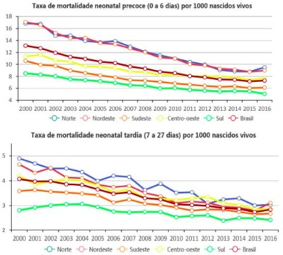
A A mortalidade neonatal precoce é maior do que a tardia, e os gráficos exprimem maiores diferenças entre as regiões. Enquanto, em 2016, a mortalidade neonatal precoce variou de 5,1 (Sul) a 9,5 (Norte); a tardia se manteve entre 1,9 (Sul) e 2,6 (Nordeste).
B A mortalidade neonatal precoce é maior do que a tardia, não havendo diferenças entre as regiões. Em 2016, se manteve em todas as regiões em torno de 6,5 a mortalidade neonatal precoce; a tardia se manteve entre 4 e 5.
C A mortalidade neonatal precoce é menor do que a tardia, sendo bastante distinta entre as regiões. Enquanto, em 2016, a mortalidade neonatal precoce variou de 1,9 (Sul) a 2,6 (Nordeste); a tardia variou de 5,1 (Sul) a 9,5 (Norte).
D Tanto a taxa de mortalidade neonatal precoce quanto a tardia, tem-se mantido abaixo de 8 desde 2010, para o Brasil e em todas as regiões: Sudeste, Sul, Norte, Nordeste e Centro-oeste.
Questão 181 · Ensaios clínicos de superioridade equivalência e nãoinf erioridade · 4000190556Você quer se atualizar sobre o tratamento de pacientes com tromboembolismo pulmonar e encontra o seguinte ensaio clínico randomizado (hipotético) que avaliou a efetividade de uma nova droga “Trombolina” para pacientes com tromboembolismo pulmonar. O ensaio clínico possui a seguinte pergunta estruturada: P (pacientes): Adultos com tromboembolismo pulmonar instável. I (intervenção): “Trombolina” + cuidados usuais. C (comparador): Placebo + Cuidados usuais. O (outcome, desfecho): Mortalidade em 7 dias. Após leitura crítica do estudo, você concluiu que o estudo é livre de vieses e utilizou uma metodologia adequada para a análise dos dados considerando um nível de signi cância estatística de 5 % (0.05). O resultado apresentado para o desfecho mortalidade em 7 dias foi: Risco relativo (RR) = 0,8; Intervalo de con ança de 95% (IC95%) = 0,6 a 1,0; p = 0,06. Diante do exposto, assinale a alternativa correta.
A O intervalo de confiança afasta aumento de mortalidade com a intervenção, indicando um potencial benefício clínico com a sua utilização nos pacientes com tromboembolismo pulmonar instável.
B O resultado é não estatisticamente significante pois o valor de p foi maior que 0,06, o que indica que a “trombolina” não possui efeito em pacientes com tromboembolismo pulmonar instável.
C O intervalo de confiança cruza a linha da nulidade (1,0) não sendo possível concluir nada substancial sobre a efetividade da intervenção.
D É possível recomendar a “trombolina” pois o valor de p foi superior à probabilidade da ocorrência de redução de mortalidade ao acaso (5%).
Questão 182 · Violência contra o idoso · 4000190553Idosa de 80 anos, viúva, reside no município de São Paulo desde que nasceu, tem diagnóstico de HAS e DM do tipo 2. Ela reside com duas lhas e um neto, desde que cou viúva. Durante uma visita domiciliar a ACS encontra uma das lhas responsável pelos cuidados da mãe assistindo à televisão e gritando com ela, que está sozinha fazendo crochê em seu quarto. Em conversa particular com a ACS, a idosa relata que não está tomando os medicamentos porque a lha não os pegou na farmácia, e que não vai ao posto de saúde porque sua lha não a leva, além de car com toda a sua aposentadoria, e por isso, não consegue pagar um UBER, ou comprar as medicações. Chegando na Unidade de Saúde, a ACS explica a situação para a equipe e o médico resolve fazer uma visita domiciliar à idosa. Perante o exposto, assinale a alternativa que deve ser adotada como conduta pela equipe desta Unidade de Saúde.
A Após confirmar que realmente a idosa está sofrendo violência doméstica a equipe deverá realizar a notificação compulsória.
B A idosa deverá ser referenciada ao serviço de assistência social, pois não compete ao serviço de saúde realizar notificação desta magnitude.
C A idosa deve ser referenciada para a delegacia de polícia para formalizar a denúncia contra a filha de maus tratos.
D O profissional da equipe de saúde deverá realizar a notificação compulsória deste agravo, pois se trata de um caso suspeito de violência doméstica.
Questão 183 · Princípios e Diretrizes do SUS na Constituição Federal · 4000190552Homem de 56 anos, residente no Município de São Paulo, comparece à UBS, localizada na área de abrangência onde reside sua lha, devido a sintomas respiratórios, febre, tosse e coriza. Na recepção, informam-no que a demanda de atendimento está elevada e, como ele não reside no território sob responsabilidade da UBS e não é idoso, não é prioritário no atendimento e deve comparecer ao AMA, localizado a três quarteirões do local. Considerando os princípios filosóficos do SUS, assinale a alternativa correta.
A O princípio da equidade foi respeitado, visto que o homem não é idoso e não reside na área de abrangência da UBS, podendo ser encaminhado a outro serviço quando necessário, já que não é considerado prioritário.
B O princípio da universalidade não foi respeitado no caso, visto que o acesso aos serviços de saúde em todos os níveis de assistência deve ser para todos os cidadãos brasileiros ou residentes no Brasil, independente de cor, idade e condições socioeconômicas.
C O princípio da regionalização foi respeitado, pois o homem não reside na área de abrangência da UBS, ou seja, seu atendimento deve ser realizado em território adscrito da UBS onde reside.
D O princípio da integralidade não foi respeitado, pois o correto em caso de sintomas respiratórios, seria o encaminhamento para um nível secundário ou terciário de atenção na Rede de Urgências e Emergências.
Questão 184 · Princípios e Diretrizes do SUS na Constituição Federal · 4000190551No território sob responsabilidade sanitária de uma UBS na zona sul Município de São Paulo, uma equipe de ESF identi ca problemas relacionados a saneamento básico. Boa parte da população usa água de poço, pois não possui acesso à água encanada e tratada, gerando muitos casos de gastroenterites. Uma das ACS mobiliza a população para participar da reunião do Conselho Gestor da Unidade, para tentar solucionar o problema. De acordo com os princípios organizacionais do SUS, assinale a alternativa sobre o Conselho Gestor:
A É uma das instâncias da participação popular no SUS, princípio organizacional relacionado à democracia no sistema de saúde brasileiro, que garante a participação de representantes dos usuários na formulação de estratégias e no controle da execução da política de saúde.
B É uma das instâncias de regionalização no SUS, visto que usuários que residem na área de abrangência de uma UBS podem participar reivindicando saúde para o território de moradia.
C É uma das instâncias de descentralização no SUS, princípio organizacional relacionado à capilarização do atendimento e do acesso no sistema brasileiro, proporcionando maior conhecimento acerca do território sob responsabilidade e maior acesso da população para uso das ações de saúde e reivindicações de melhorias.
D É uma das instâncias relacionadas à intersetorialidade, pois apesar do tratamento da água não estar diretamente relacionado à área da saúde e às ações próprias dos serviços de saúde, os Determinantes Sociais da Saúde implicam uma ampliação sobre o olhar do processo saúde-doença.
Revisar: possível letra faltando em enunciado
Questão 185 · Atributos gerais da Atenção Primária à Saúde APS · 4000190550Em reunião da equipe amarela na UBS, a enfermeira relata que está preocupada com a falta de noti cação para tuberculose na área de abrangência desta equipe, visto ser uma área extremamente vulnerável, onde a maioria da população reside em moradias com 5 a 10 moradores em um ou dois cômodos. Solicita aos ACS que intensi quem as ações no território voltadas à tuberculose e agenda uma data na semana para realizar busca ativa de sintomáticos respiratórios, com orientações e o fornecimento de kit para coleta de escarro. A médica da equipe aproveita a fala e reforça a necessidade de ações na comunidade voltadas para a prevenção de sí lis, visto o aumento expressivo de casos em adolescentes. Fica acordado, então, que ações serão realizadas no território da equipe, neste momento, priorizando os dois agravos. Uma ACS propõe também que um grupo sobre sexualidade seja implementando na unidade, além da abordagem destas temáticas nas escolas, através do Programa Saúde na Escola. Assinale a alternativa que descreve a qual atributo da Atenção Primária a Saúde (APS) o caso se refere.
A Competência cultural, visto que as ações estão sendo adequadas de acordo com a realidade cultural da comunidade que reside na área de abrangência da equipe.
B Orientação familiar, com ações da APS voltadas para as famílias que residem na área de abrangência da equipe amarela, considerando a realidade social e as problemáticas principais de enfrentamento.
C Orientação comunitária, desenvolvendo ações nos serviços da APS voltadas para a realidade da área de abrangência sob sua responsabilidade, analisando indicadores e pensando em estratégias de acordo com a necessidade dessa comunidade.
D Regionalização, com ações da APS voltadas para a equipe amarela, de acordo com a análise da realidade sociocultural da área de abrangência sob responsabilidade desta equipe, priorizando ações de saúde para essa população.
Questão 186 · Políticas de Saúde para Populações Específ icas · 4000190549Ana saiu da consulta com o médico de família e comunidade com a prescrição de uso de anticoncepcional mesmo depois de ter explicado que só mantinha relações sexuais com mulheres. Ela saiu frustrada da unidade de saúde, dizendo para si, que não iria mais passar em consultas na UBS. Considerando o objetivo geral da Política Nacional de Saúde Integral de Lésbicas, Gays, Bissexuais, Travestis e Transexuais que promove a saúde desta população, eliminando a discriminação e o preconceito institucional, bem como contribuindo para a redução das desigualdades e a consolidação do SUS como sistema universal, integral e equitativo, indique a melhor definição para a atitude do médico.
A Prevenção.
B Heteronormatividade.
C Discriminação.
D Lesbofobia.
Questão 187 · Política Nacional de Saúde Integral da População Negra · 4000190548A Política Nacional de Saúde Integral da População Negra: uma política para o SUS, expõe dados alarmantes relacionado à população negra no Brasil. Em 2014, a distribuição racial da riqueza mostrou que dos 10% mais pobres, 76% eram pretos ou pardos; em 2015, a pesquisa registrou que os trabalhadores de cor preta ou parda ganhavam, em média, pouco mais da metade (59,2%) do rendimento recebido pelos trabalhadores de cor branca. Já outra pesquisa realizada em 2013 mostrou que 60% das mulheres brasileiras, de 50 a 69 anos de idade, realizaram exame de mamogra a nos últimos dois anos anteriores à pesquisa. Esse cuidado com a saúde foi mais observado entre as mulheres brancas (66,2%) e com ensino superior completo (80,9%). As menores proporções foram observadas entre as mulheres pretas (54,2%), pardas (52,9%) e sem instrução ou com ensino fundamental incompleto (50,9%). Dados do Sistema de Informações sobre Nascidos Vivos para 2013 mostram que as mães indígenas, pardas e pretas são mais jovens em comparação com as brancas. Assinale a alternativa que melhor explica este fenômeno relacionados à população negra.
A A falta do reconhecimento do racismo, das desigualdades étnico-raciais e do racismo institucional como determinantes sociais das condições de saúde.
B A falta de infraestrutura da saúde para atender a população negra e quilombola já que estas se concentram como as camadas mais pobres da população e com maiores números de pessoas SUS dependentes.
C A concentração do ensino superior no Brasil na população de raça branca associado aos preconceitos raciais muito presentes.
D As políticas públicas voltadas às populações de minoria estão em descompasso com a organização do sistema de saúde.
Questão 188 · Redes de Atenção à Saúde RAS · Política Nacional de Humanização · 4000190547Em 2008, o Ministério da Saúde cria os Núcleos de Apoio à Saúde da Família (NASF) com o objetivo de ampliar a abrangência e o escopo das ações da Atenção Básica (AB), aumentar sua resolutividade reforçando os processos de territorialização e regionalização em saúde (Brasil, 2008). Em 2019, o programa Previne Brasil estabelece novo modelo de nanciamento de custeio, deixando de repassar regularmente para o município o valor xo por equipe de saúde da família e equipe do Núcleo Ampliado à Saúde da Família e Atenção Básica (NASF-AB)– novo nome atribuído posteriormente a estas equipes multipro ssionais (Brasil, 2019). Desta forma, ca a cargo do gestor local definir se manterá e de que maneira estes pro ssionais nas Unidades Básicas de Saúde. Tendo em vista o trabalho multipro ssional na AB, as Redes de Atenção à Saúde (RAS) e a política de Humanização em Saúde, identi que a alternativa que mais orienta a um trabalho na perspectiva da integralidade do cuidado.
A O Ministério da Saúde aconselha que a agenda da equipe multiprofissional permaneça disponível na recepção a fim de garantir um acesso universal, igualitário e integral aos usuários do SUS.
B Atendimentos de reabilitação em fonoaudiologia, terapia ocupacional e fisioterapia devem ser encaminhados para atendimento no Centro de Reabilitação (CER) via regulação de vagas.
C O cuidado aos usuários de saúde mental do território deve ser compartilhado entre equipes de Saúde da Família, equipe multiprofissional e dispositivos de saúde mental, permanecendo a coordenação do cuidado com a equipe de Saúde da Família.
D Atualmente, as Equipes Multiprofissionais de Atenção Domiciliar (EMAD) atuam na Atenção Primária à Saúde compondo as Equipes de Saúde da Família com vistas a aumentar a abrangência e a resolutividade da AB.
Questão 189 · Classif icação de Schilling · 4000190545Homem de 46 anos, trabalha como auxiliar de produção de lâmpadas uorescentes há mais de 20 anos, sendo exposto ao agente químico mercúrio. Durante atendimento de rotina na Unidade ESF entrega ao seu médico o relatório de contra-referência do serviço de nefrologia com diagnóstico de doença glomerular crônica com declínio progressivo da função renal. Complete a frase abaixo com a alternativa correta. Conforme a classificação de Schilling, a caracterização do quadro de hidrargirismo decorre do histórico de exposição ocupacional ao agente químico pois o trabalho foi:
A causa necessária do adoecimento (classe I).
B fator contributivo, mas não necessário (classe II).
C provocador de um distúrbio latente (classe III).
D agravador de doença pré-estabelecida (classe IV).
Questão 190 · Disposições gerais do Código de Ética Médica · 4000190544Paciente de 34 anos, feminino, foi avaliada pelo médico no dia 20/05 pela manhã com queixa de gripe há 4 dias, e dor de ouvido com secreção amarelada à direita. Recebeu prescrição de sintomáticos. No mesmo dia à tarde voltou ao PS com história de cefaleia de forte intensidade, mal-estar, tontura e vômitos e sem febre. Foi medicada com dimenidrato injetável 2 vezes, além de tramadol, dipirona e dexametasona e dispensada para casa à noite. No dia seguinte às 23 h retornou ao hospital ainda com queixa de cefaleia. Em seu prontuário, em relação ao exame físico o médico escreveu “NDN” e prescreveu as medicações: dipirona+cetoprofeno+dexametasona injetáveis. Recebeu alta as 02H25. Menos de 04 horas após a alta, retornou ao PS de ambulância procedente da residência em mal estado geral, hipocorada, eupneica e afebril, com Glasgow 06, pupilas médio xas não fotorreagentes, e rigidez de nuca. Com a hipótese diagnóstica de meningite foi entubada e encaminhada para UTI evoluindo com morte encefálica e óbito em 27/05. As causas foram descritas como choque neurogênico, hipertensão intracraniana e meningite bacteriana. Diante do ocorrido, a família entrou com ação cível para indenização por erro médico e no CRM para punição por infração profissional. Considerando as informações apontadas, assinale a alternativa com a conclusão do laudo do perito médico.
A Não houve erro médico. Em nenhum dos atendimentos havia indicativos que a paciente desenvolvia um quadro de meningite, sobretudo por haver um quadro de otite em andamento. Não há infrações quanto ao Código de Ética Médica.
B Houve erro médico. O quadro clínico da paciente indicava a meningite como um diagnóstico diferencial que deveria ter sido considerado nos dois últimos atendimentos. Houve infração ao Código de Ética Médica decorrente de negligência.
C Não houve erro médico. Apesar do quadro clínico poder sugerir meningite, o médico examinou adequadamente a paciente não tendo encontrado nenhuma alteração, nem mesmo rigidez de nuca, estando isto claro na descrição do exame físico onde afirma “NDN”. Não há infração ao Código de Ética Médica.
D Não há elementos em toda a história descrita para afirmar sobre a ocorrência ou não de erro médico ou infração ao Código de Ética Médica.
Questão 191 · Aborto legal no Brasil · Legislação sobre aborto · 4000190524Paciente de 29 anos, sexo feminino, com 2 lhos vivos solteira e sem parceiro, procura o PS para interrupção da gravidez. Alega ter sido vítima de estupro há 2 meses, mas na ocasião não procurou a polícia e nem atendimento médico por constrangimento. Na situação descrita, assinale a alternativa correta.
A Há obrigatoriedade de fazer o boletim de ocorrência, para que a interrupção seja possível.
B Há necessidade de uma autorização judicial para a interrupção da gestação.
C Há indicação de iniciar o pré-natal pois ela não tem direito de interromper a gestação.
D Há permissão legal de interromper a gestação somente com o relato das circunstâncias.
Questão 192 · Rastreamento · 4000190485Mulher de 52 anos, em consulta ambulatorial de rotina, deseja fazer exames de “check-up”. Nega sintomas cardiorrespiratórios, neurológicos ou digestórios. É casada e tem duas lhas, nascidas de parto normal. Não tem doenças prévias nem usa medicamentos. Menarca aos 13 anos, menopausa aos 48 anos. A única cirurgia que já sofreu foi apendicectomia aos 16 anos. Fumou meio maço/dia dos 15 aos 35 anos. Pratica exercícios três vezes por semana, por uma hora, sem queixas. O exame físico é normal, PA: 118x76mmHg e IMC: 23kg/m². O único antecedente familiar significativo é demência de Alzheimer (pai). Assinale a alternativa que contém apenas exames de rastreamento indicados para esta paciente, baseados em evidências.
A Rastreamento para osteoporose e risco de fraturas com densitometria óssea e dosagem de vitamina D e rastreamento de coronariopatia com eletrocardiograma de esforço.
B Rastreamento para condições metabólicas com glicemia de jejum e dosagem do TSH e rastreamento de ateromatose carotídea com ultrassonografia com doppler.
C Rastreamento para neoplasia de colón com colonoscopia e de colo uterino citologia oncótica e rastreamento de doenças infecciosas com sorologias para HIV e hepatite C.
D Rastreamento para DPOC com espirometria e para neoplasia de pulmão com tomografia de tórax e rastreamento de aneurisma de aorta com ultrassonografia de abdome.
Questão 193 · Prevenção Primária · Prevenção Terciária · Prevenção Secundária · 4000190483Vacinas, reabilitação com sioterapia, realização de exames de rastreamento e medicalização são tipos de prevenção, respectivamente:
A Primária, primária, terciária e quaternária.
B Secundária, terciária, primária e quaternária.
C Primária, terciária, secundária e secundária.
D Secundária, quaternária, terciária e secundária.
E Quaternária, primária, terciária e secundária.
Questão 194 · Cuidados paliativos · 4000190481Mulher de 72 anos de idade com fibrose pulmonar idiopática em estágio terminal. Sua capacidade funcional é 0; está acamada e recebendo assistência domiciliar em regime de home care. Utiliza cronicamente oxigênio por cateter nasal, 4l/min., e com saturação de O₂ no sangue arterial de 94%. Ela se queixa de dispneia contínua e intensa que piorou nos últimos 2 meses. Ao exame físico apresenta demais paramentos normais, exceto uma frequência respiratória de 25 irm. Não há evidência de infecção ou qualquer processo pulmonar agudo. Das intervenções descritas abaixo, qual o primeiro passo razoável na melhora do desconforto dessa paciente?
A Salbutamol inalatório e ou xarope.
B Codeína.
C Aumentar o oxigênio para 8L/min.
D Lorazepam.
E Morfina nebulizada.
Questão 195 · Princípios e Diretrizes do SUS na Constituição Federal · 4000190419A Constituição Federal estabelece que “a saúde é direito de todos e dever do Estado, garantido mediante políticas sociais e econômicas que visem à redução do risco de doença e de outros agravos e ao acesso universal e igualitário às ações e serviços para sua promoção, proteção e recuperação.” O conceito de “acesso universal e igualitário” significa que ao Estado compete atender a toda a população
A por meio de serviços públicos e privados conveniados ou contratados, de forma igual para todos.
B por meio de serviços públicos e privados conveniados ou contratados, respeitando os direitos de cada um, segundo as suas diferenças.
C em qualquer local do mundo, por meio de serviços públicos ou privados, quando necessário, de forma igual para todos.
D apenas por meio de serviços públicos, de forma igual para todos.
E apenas por meio de serviços públicos, respeitando aos princípios da equidade.
Questão 196 · Política Nacional de Promoção de Saúde · 4000190417Partindo do pressuposto de que a saúde tem como fatores determinantes e condicionantes, entre outros, a alimentação, a moradia, o saneamento básico, o meio ambiente, o trabalho, a renda, a educação, o transporte, o lazer e o acesso aos bens e serviços essenciais, é correto a rmar que os níveis de saúde da população expressam
A o estado nutricional das crianças, jovens e adultos.
B o seu grau de escolaridade.
C a forma como o Estado oferece os serviços de cultura e lazer.
D a organização dos serviços de assistência à saúde e a importância das ações de prevenção.
E a organização social e econômica do País.
Questão 197 · Prevenção Terciária · 4000190414Um trabalhador sofreu acidente de trânsito, não relacionado ao trabalho, e teve amputada uma de suas pernas. Após passar por reabilitação pro ssional, foi despedido do emprego que possuía e desenvolveu quadro de sofrimento psíquico. Atendido na unidade básica de saúde, foi orientado, dentre outros aspectos, a tentar novo emprego, tirando proveito da reserva legal de vagas para pessoas com de ciência. Segundo o clássico modelo de prevenção apresentado por Leavell e Clark, essa orientação pode ser classificada como
A promoção da saúde.
B prevenção primária.
C prevenção secundária.
D prevenção terciária.
E não sendo uma ação de prevenção.
Questão 198 · Sistema de Inf ormação de Agravos de Notif icação SINAN · 4000190413Paciente procura o pronto-socorro com suspeita de ter sido picado por animal peçonhento. Com relação à noti cação desse agravo no Sistema de Informação dos Agravos de Noti cação – SINAN, é correto a rmar que o caso
A só deve ser notificado se for confirmado.
B só pode ser notificado pelo médico de atendimento.
C deve ser notificado por qualquer profissional de saúde de nível superior.
D deve ser notificado imediatamente (prazo de 24 horas) à Secretaria Municipal de Saúde.
E deve ser notificado no prazo de 1 semana à Secretaria Estadual de Saúde.
Questão 199 · Doenças relacionadas ao asbesto Asbestose · 4000190411A asbestose é uma pneumoconiose devido à exposição ocupacional a poeiras de asbesto ou amianto. A medida viável mais eficiente para sua prevenção é
A substituir o amianto por outra substância não tóxica.
B diminuir o tempo de exposição.
C obrigar o uso de equipamentos de proteção individual.
D selecionar apenas trabalhadores não tabagistas.
E realizar exames médicos periódicos para diagnóstico precoce da doença.
Questão 200 · História Natural das Doenças · 4000190410O lapso de tempo entre os primeiros sintomas da doença e o início dos sinais e sintomas com os quais o diagnóstico pode ser estabelecido é chamado de período
A de incubação.
B latente.
C prodrômico.
D de observação.
E pré-patogênico.
Questão 201 · Estudos de CasoControle · 4000190408Um modelo de estudo epidemiológico recomendado para abordagem de associações etiológicas com doenças de baixa incidência é o estudo
A de prevalência.
B caso-controle.
C de coorte transversal.
D de coorte concorrente.
E seccional.
Questão 202 · Incidência · 4000190407Num município com população de 100 000 habitantes, sendo 40% do sexo masculino, há o registro de 20 casos de câncer de colo de útero, tendo 5 casos diagnosticados no anos de 2022 e os demais em anos anteriores. O coeficiente de incidência dessa doença, no ano de 2022, é obtido pela divisão de
A 5 por 100 000.
B 20 por 100 000.
C 5 por 60 000.
D 20 por 60 000.
E 15 por 100 000.
Questão 203 · Program Saúde da Família PSF e Estratégia Saúde da Família ESF · 4000190403Com relação à “Estratégia da Saúde da Família”, que visa à reorganização da atenção básica no País, de acordo com os preceitos do Sistema Único de Saúde, é correto afirmar que
A ela se beneficia do fato de o financiamento da Atenção Básica ser suficiente para a cobertura das principais despesas em saúde dos municípios de menor porte.
B em decorrência da limitação dos recursos de que dispõe, ela não tem a integralidade como um de seus princípios.
C a expressão “Programa de Saúde da Família”, adotada originalmente, também pode ser usada por ter o mesmo significado.
D sua equipe deve contar com, no mínimo, médico, enfermeiro, auxiliar e/ou técnico de enfermagem e agente comunitário de saúde.
E ela não é voltada para as populações quilombolas ou de assentamentos, que são atendidas por programas específicos.
Questão 204 · Cuidados paliativos · 4000190377Mulher de 43 anos de idade, portadora de carcinoma ductal invasivo de mama refratário a quimioterapia, comparece ao ambulatório se queixando de dispneia aos pequenos esforços e dor em hemitórax direito de moderada intensidade. Atualmente está utilizando apenas dipirona como analgésico. Tomogra a computadorizada de tórax mais recente evidenciou diversos nódulos pulmonares e implante ósseo em arco costal direito (na topogra a de seu sintoma). Ao exame físico, apresenta frequência respiratória de 30irpm, peso de 40kg e saturação de oxigênio 92% em ar ambiente, sem outras alterações. Função renal e hepática sem alterações em exames laboratoriais. A paciente entende sobre seu diagnóstico e prognóstico e tem o desejo de falecer em casa. Frente à decisão da paciente, qual é a conduta que deve ser adotada para o controle de seus sintomas neste momento?
A Ibuprofeno 600 miligramas a cada 6 horas, morfina 10 miligramas a cada 4 horas, se necessário, e instalação de oxigenoterapia domiciliar.
B Dipirona 2 gramas a cada 6 horas, tramadol 100 miligramas a cada 8 horas e instalação de oxigenoterapia domiciliar.
C Dipirona 2 gramas a cada 6 horas, morfina 5 miligramas a cada 4 horas e dose extra de morfina 5 miligramas a cada 4 horas, se necessário.
D Paracetamol 500 miligramas com codeína 30 miligramas a cada 8 horas e morfina 5 miligramas a cada 4 horas se necessário.
Questão 205 · Política Nacional de Práticas Integrativas e Complementares · Política Nacional de Humanização · 4000190264Uma hebiatra, que trabalha em um centro de atendimento à saúde do adolescente (CASA), e s t á desenvolvendo uma série de atividades para educação em saúde com seus pacientes. Numa dest as atividades, ela abordou a estratégia de saúde pública chamada "redução de danos". Sobre esta estratégia, assinale a alternativa correta:
A A disponibilidade de acesso às ações de informação e educação de que tratam a politica de redução de danos vão depender do grau de instrução formal da população alvo.
B A oferta de tratamento à dependência causada por produtos, substâncias ou drogas não faz parte das ações de assistência social e de saúde da politica de redução de danos.
C A divulgação dos princípios e garantias fundamentais assegurados na Constituição Federal é um dos conteúdos previstos nas ações de educação da politica de redução de danos.
D Espaços de interesse público onde há o consumo de substâncias, como praças por exemplo, só serão alvo da política de redução de danos se ali houver dependentes químicos.
Questão 206 · Escolha de testes diagnósticos para rastreamento · 4000190253Durante o seu estágio na unidade básica de saúde (UBS), uma médica residente de medicina de família e comunidade foi questionada por sua preceptora se ela havia atendido algum paciente durante a semana para o qual foi solicitado um rastreamento baseado em evidencias. Assinale a alternativa que contém a descrição do caso clínico em que a indicação do rastreamento realizada pela residente foi corretamente embasada em evidências:
A A Mulher de 45 anos de idade comparece à UBS para seguimento de hipertensão arterial, sendo solicitada colpocitologia oncótica de colo de útero.
B Menino de 4 anos de idade foi atendido na UBS por quadro de amigdalite, sendo solicitado um swab de orofaringe e antiestreptolisina O (ASLO).
C Mulher de 45 anos de idade procura a UBS com queixa de caroço na mama, sendo solicitada uma mamografia.
D Homem de 24 anos de idade procura a UBS com queixa de dor em joelho direito, e durante a consulta foi questionado sobre uso de tabaco e outras drogas.
Questão 207 · Usos da Incidência e da Prevalência em Saúde Pública · 4000190248Um serviço de urgência e emergência passa a atender um número crescente de idosos por queda ocorrida na escada rolante da estação de metrô perto da unidade de saúde. Vários idosos referem que notaram que a velocidade da escada rolante é mais alta do que em outras estações. Assinale a alternativa correta.
A A Secretaria Municipal de Saúde (SMS) deve peticionar os órgãos de defesa do consumidor para que atuem nesse caso.
B A Secretaria Municipal de Transportes (SMT) tem atuação limitada nesse caso, pois trata-se de uma questão de decisão da empresa.
C A prefeitura deve solicitar à auditoria fiscal do trabalho autuação da empresa de metrô como primeira medida.
D Trata-se de um problema de saúde pública e a SMS deve investigar, junto com outros órgãos, as possíveis causas dessas quedas detectadas na unidade de saúde.
E Os idosos devem ser orientados a não utilizar essa estação de metrô para que não corram o risco de queda.
Questão 208 · Vigilância Ambiental · 4000190247Em uma empresa que utiliza cloro em seu processo de produção, ocorre um vazamento no período noturno, atingindo 30 pessoas de uma comunidade pesqueira. Embora tenha ocorrido um desligamento com interrupção do vazamento, o alarme manteve-se soando até o gás se dissipar totalmente. Assinale a alternativa correta.
A Como pessoas da empresa não foram atingidas, não há necessidade de investigação, e a prioridade deve ser o atendimento adequado das pessoas atingidas.
B Por questões relacionadas a segredo industrial, a empresa não pode ser investigada pela prefeitura, que deve se ater ao atendimento das pessoas atingidas.
C O Ministério do Meio Ambiente deve deslocar um corpo técnico de especialistas para proceder à investigação das causas do vazamento e a prefeitura deve providenciar o atendimento das vítimas.
D A prefeitura deve tomar providências para que se investigue o processo de trabalho da empresa e providenciar a assistência adequada às pessoas atingidas.
E A atribuição da prefeitura é preparar o SUS para o atendimento correto das pessoas atingidas, deixando o problema do vazamento para órgãos estaduais e federais.
Questão 209 · Política Nacional de Promoção de Saúde · 4000190244Assinale a alternativa que apresenta uma das características da educação permanente das equipes da atenção básica do SUS.
A O conteúdo programático se restringe à aquisição e atualização de conhecimentos técnicos envolvendo práticas desapegadas de valores e relações de poder.
B O ponto de partida do planejamento e programação educativa ascendente é a análise coletiva dos processos de trabalho.
C Há um cuidado extremo na educação permanente para que não se desperte capacidade de análise e intervenção de práticas estabelecidas e que possa gerar instabilidade.
D Para o sucesso da educação permanente é central que o gestor federal apreenda as lacunas das equipes, que subsidiem a construção do programa de conteúdo único no país.
E O método da educação permanente deve levar em conta elementos que façam sentido para os atores, desde que sejam referentes ao conceito estrito de saúde.
Questão 210 · Saúde Suplementar · 4000190242Um paciente está sob o cuidado de um médico do plano de saúde privado, que receita uma medicação cara, que faz parte da Relação Nacional de Medicamentos Essenciais (RENAME) e na unidade de saúde perto de sua casa a medicação está disponível. Assinale a alternativa correta.
A O SUS não fornece medicamentos gratuitamente a nenhum paciente de plano de saúde privado, sem exceção.
B A condição indispensável para que ele tenha acesso ao medicamento gratuitamente é ser portador de um comprovante de pobreza emitido pela defensoria pública.
C O SUS fornece medicamento gratuitamente a pacientes de planos de saúde privados se a prescrição justificar detalhadamente a necessidade do medicamento.
D Pelo menos duas condições são necessárias para que ele tenha acesso ao medicamento gratuitamente: se for assistido por um serviço do SUS e a prescrição for de um profissional de saúde no exercício regular de suas funções no SUS.
E A condição mais importante para que ele tenha acesso ao medicamento gratuitamente é levar a prescrição do médico de seu plano de saúde para uma das unidades onde há dispensação do medicamento.
Questão 211 · Estudos de f ase IV e Farmacovigilância · 4000190241Assinale a alternativa correta sobre a farmacovigilância de vacinas e outros imunobiológicos.
A Tem como foco apenas as vacinas recentemente aprovadas como a da covid-19, por exemplo.
B Fundamenta-se na obtenção de dados completos sobre eventos adversos a partir de notificações feitas somente por médicos, que têm a atribuição de estabelecer causalidade em relação ao produto administrado.
C Um comitê internacional de farmacovigilância de vacinas e outros imunobiológicos, com a participação dos fabricantes, avalia os aspectos técnicos e científicos de eventos adversos decorrente do uso de vacinas.
D É o processo de detecção, avaliação, compreensão, prevenção e comunicação de eventos adversos pós-vacinação (EAPV) ou qualquer outro problema relacionado à vacina ou à imunização.
E Sempre que um profissional de saúde estabelecer causalidade entre eventos adversos e o produto administrado, tem a obrigação de comunicar riscos e esclarecimentos à população.
Questão 212 · Risco Relativo RR Razão de Riscos · 4000190240Um estudo de coorte para investigar a ocorrência de uma determinada doença por exposição a um fator X apresenta risco relativo igual a 1,0. Assinale a alternativa correta.
A Há ausência de associação entre a exposição ao fator X e a ocorrência da doença.
B Deve-se comparar o risco relativo e a razão de prevalência antes de uma conclusão.
C O risco relativo não tem significado nesse caso.
D Há um risco diminuído entre os expostos ao fator X de ficarem doentes.
E Há aumento de risco entre os expostos ao fator X de ficarem doentes.
Questão 213 · NOB 0193 · 4000190239Assinale a alternativa correta sobre as conferências e conselhos de saúde.
A O representante do Conselho Nacional de Secretários de Saúde (Conass) preside a Conferência Nacional de Saúde.
B As Conferências de Saúde e os Conselhos de Saúde têm sua organização e suas normas de funcionamento definidas em regimento próprio, aprovadas pelo respectivo conselho.
C As conferências de saúde passaram a contar apenas com as fases estadual e federal desde 2020.
D As conferências de saúde realizam-se bienalmente e contam com a participação de diferentes segmentos sociais, entre os quais há representantes religiosos.
E Os conselhos de saúde, de caráter consultivo, reúnem-se mensalmente.
Questão 214 · Prevenção Primária · 4000190236Em uma grande cidade, o número de mortes de motociclistas chega a ser 2 por dia e, dentre eles, a maioria é de entregadores por aplicativos. O prefeito forma um comitê ao qual solicita um estudo sobre o assunto para que soluções sejam propostas. O comitê chega à conclusão de que vários aspectos contribuem para o alto número de acidentes e mortes dessa população, como a alta velocidade em determinadas vias expressas e a pressa dos motociclistas, pois seu ganho é proporcional ao número de entregas. Assinale a alternativa correta que contenha propostas que podem contribuir de forma efetiva para diminuir o número de acidentes envolvendo motociclistas.
A Aumentar o número de serviços de urgência e emergência, aumentar a fiscalização de trânsito e realizar uma campanha educativa aos motociclistas para que tomem cuidado.
B Realizar uma campanha educativa a todos os motoristas para que respeitem os motociclistas e para que estes tomem cuidado e melhorar o serviço de socorro imediato.
C Melhorar o serviço de socorro imediato, aumentar a capilaridade dos serviços de urgência e emergência e equipar melhor os serviços de terapia intensiva.
D Realizar uma campanha para que os motociclistas diminuam a velocidade da motocicletas, aumentar a fiscalização de trânsito e melhorar o serviço de socorro imediato.
E Diminuir a velocidade máxima permitida nas vias expressas, aumentar a fiscalização de trânsito e modificar a forma de remuneração dos entregadores.
Questão 215 · Sistema de Inf ormação sobre Mortalidade SIM · 4000190235Assinale a alternativa correta sobre o Sistema de Informação de Mortalidade (SIM).
A Trata-se de um sistema de informações de óbitos do país criado durante a pandemia de covid19.
B Entre as variáveis do SIM, encontra-se a referente a óbitos decorrentes de acidente de trabalho.
C Trata-se de um sistema de informações de óbitos por doenças infecciosas criado durante a pandemia de AIDS.
D O SIM é alimentado exclusivamente pelas declarações de óbito emitidas por médicos de serviços de saúde formalmente constituídos.
E Os documentos que geram os dados que alimentam o SIM são preenchidos por profissionais da enfermagem.
Questão 216 · Lista Nacional de Notif icação Compulsória de doenças agravos e eventos de saúde pública · 4000190234Diferentes expressões de violência são de noti cação compulsória no Sistema Nacional de Agravos de Notificação (SINAN). Assinale a alternativa correta.
A Casos de tráfico de pessoas e violência sexual, apenas se confirmados, são de notificação semanal e imediata, respectivamente.
B Casos suspeitos ou confirmados de trabalho escravo e tentativa de suicídio são de notificação semanal e imediata, respectivamente.
C Casos suspeitos ou confirmados de violência contra idosos e violências homofóbicas são de notificação imediata.
D Casos de lesão autoprovocada e violência extrafamiliar, se confirmados, são de notificação semanal.
E Casos suspeitos ou confirmados de tortura e violências homofóbicas são de notificação imediata.
Questão 217 · Descentralização do SUS · 4000190233Assinale a alternativa correta sobre regiões de saúde.
A Cada região de saúde deve ter no mínimo ações e serviços de atenção primária, urgência e emergência, atenção psicossocial e atenção à saúde dos trabalhadores.
B As regiões de saúde são espaços geográficos contínuos constituídos por agrupamentos de municípios limítrofes, delimitados a partir de identidades culturais, econômicas e sociais e de redes de comunicação e infraestrutura de transportes compartilhados.
C As regiões de saúde terão seus limites geográficos, a população usuária das ações e serviços e o rol de ações e serviços ofertados definidos pelo poder legislativo.
D As regiões de saúde interestaduais devem ser exceções e sua criação necessariamente tem que ser aprovada pelo Conselho Nacional de Saúde e pelo Ministério da Saúde.
E As regiões de saúde têm a finalidade de promover a integração da organização, do planejamento e da execução de ações e serviços de saúde, sendo vetadas transferências de recursos entre os entes federativos.
Questão 218 · Atributos gerais da Atenção Primária à Saúde APS · 4000190231Um morador de rua procura uma unidade básica de saúde (UBS) perto de onde costuma car, pois está com sinais inflamatórios na mão após um ferimento corto-contuso. Assinale a alternativa correta sobre a conduta da equipe da UBS.
A O paciente deve ser atendido em sua demanda.
B A UBS não atende demanda espontânea e o paciente deve ser encaminhado a um ambulatório.
C O paciente deve ser encaminhado a um consultório de rua pois não é usuário da UBS.
D O paciente deve ser atendido sob a condição de trazer um endereço fixo para se matricular na UBS.
E O paciente deve ser encaminhado a um serviço de urgência.
Questão 219 · Política Nacional de Promoção de Saúde · 4000190230Assinale a alternativa que traz uma medida de promoção da saúde.
A Melhoria das condições de vida.
B Controle de vetores de epidemias.
C Melhoria das unidades de urgência e emergência.
D Aprimoramento dos serviços de especialidades médicas.
E Melhoria da cobertura vacinal das crianças.
Questão 220 · Sigilo prof issional em crianças e adolescentes Parecer CFM n 25 de 2013 · 4000190229Relação com pacientes e f amiliares Renan, 15 anos, comparece à consulta de rotina com sua mãe. Durante a anamnese sozinho, paciente refere que se cortou propositalmente com gilete nos antebraços e coxas, pois havia terminado namoro e que seus pais não sabiam do fato (usava camisa de manga comprida). Anamnese social: aprovado na escola, ca 6-8 horas em jogos eletrônicos e tem poucos amigos. Exame físico: várias lesões perpendiculares à pele em fase cicatricial nos antebraços, preservando a região arterial dos pulsos, e em região anterossuperior das coxas. Preocupado, o médico informa ao adolescente que é obrigado a comunicar o fato à mãe, enfrentando grande resistência do paciente. Baseado no Código de Ética Médica (CEM), o médico
A não infringiu o CEM por ser situação de risco.
B infringiu o CEM por não respeitar o sigilo médico.
C infringiu o CEM por não respeitar autonomia do paciente.
D não infringiu o CEM, mas deve também notificar o Conselho Tutelar.
E infringiu o CEM e pode ser penalizado pelo seu Conselho mediante denúncia de paciente e de familiares.
Questão 221 · Sigilo prof issional · 4000190228O médico de uma UBS atende muitos trabalhadores de uma empresa de porte médio da região. Um representante da empresa procura o médico para obter informações sobre alguns dos trabalhadores por ele atendidos. Assinale a alternativa correta.
A É vedado ao médico fornecer informações sobre o atendimento de seus pacientes, salvo se não fizerem mais parte da empresa.
B O médico não deve revelar nenhuma informação dos trabalhadores atendidos, salvo se algum deles for menor de idade.
C É vedado ao médico revelar informações dos exames médicos salvo em casos em que o paciente já tenha ido a óbito.
D O médico pode se referir a casos concretos dos trabalhadores atendidos de forma que possam ser identificados, mesmo que não revele os nomes.
E É vedado ao médico revelar informações obtidas quando do exame médico de trabalhadores, salvo se o silêncio puser em risco a saúde dos empregados ou da comunidade.
Questão 222 · Maus tratos à crianças e adolescentes · Violência · 4000190226Durante acolhimento, o médico de Unidade Básica de Saúde foi solicitado por equipe a falar para os pacientes sobre a prevenção e atuação sobre a violência sexual ao longo do desenvolvimento infantil. Sobre esse tema, qual a alternativa errada?
A É possível abordar, com linguagem apropriada às faixas etárias, a questão da sexualidade e dos toques corporais socialmente adequados e inadequados.
B A violência intergeracional diz respeito à reprodução e à transmissão da violência através de gerações familiares.
C Os principais perpetradores são os companheiros das mães, e, em seguida, os pais biológicos, avôs, tios, padrinhos e outros que mantêm com a criança uma relação de dependência, afeto ou confiança.
D Na infância, é comum o envolvimento de crianças em brincadeiras sexualizadas (jogos sexuais). No entanto, será caracterizada violência sexual quando da existência de coerção ou se os envolvidos estiverem em estágios de desenvolvimento diferentes.
E Normalmente não existem dificuldades para se firmar o diagnóstico de violência sexual em crianças e adolescentes, pois a materialidade do delito (lesão genital) está frequentemente presente.
Questão 223 · Processo saúdedoença · Modelos Explicativos de Saúde e Doença · 4000190225Os determinantes do processo saúde-doença são fatores que podem in uenciar as condições de saúde da população e que potencialmente podem ser alterados com ações baseadas em informação. Nesse sentido, assinale a alternativa correta.
A Os fatores socioeconômicos influenciam no processo saúde-doença porque a desnutrição, as parasitoses intestinais, o nanismo e a incapacidade de se prover podem ocorrem onde a miséria se faz presente.
B Os fatores socioculturais e sociopolíticos pouco influenciam a produção de saúde da população, mas os fatores genéticos são considerados os mais importantes na relação saúde-doença.
C Fatores psicológicos como estresse, ansiedade, isolamento social e baixo controle sobre a vida são considerados patogênicos e podem levar à morte prematura dos indivíduos.
D A concepção de que cabia aos deuses definir o estado de adoecimento e cura dos homens instaurou o chamado modelo biomédico, marcado também pela noção de pecado-doença e redenção-cura.
E O modelo sistêmico baseia-se no modelo de História Natural da Doença proposto por Leavel e Clark, em 1976. Esse modelo prevê^ que os estímulos patológicos do meio ambiente desencadeiam uma resposta do corpo, e essa terá´ como desenlace a cura ou ou morte.
Questão 224 · Sistema de Vigilância Alimentar e Nutricional SISVAN · 4000190224Assinale a alternativa que apresenta ação estratégica da execução da Política Nacional de Segurança Alimentar e Nutricional (PNSAN), tão importante para a saúde da população.
A Realização de mutirões para cavar poços nos locais onde estão as comunidades carentes.
B Inclusão produtiva rural de povos e comunidades tradicionais e/ou grupos e populações tradicionais e específicos.
C Negociação com o setor de agronegócios para que seus produtos sejam adquiridos a melhor preço pela escolas.
D Realização anual de doações de alimentos pelo setor de agronegócios a comunidades carentes.
E Financiamento público dos grandes produtores rurais do Brasil, de forma que se aumente a produção para suprir as necessidades do mercado interno.
Questão 225 · Princípios e Diretrizes do SUS na Constituição Federal · 4000190223Corresponde ao princípio da integralidade do SUS:
A estar preparado para acolher todos os cidadãos nas suas necessidades de saúde urgentes.
B as urgências e emergências clínicas devem ser integralmente supridas pelos serviços próprios do SUS.
C acolher todos os usuários do país, independentemente de cor, idade, gênero ou religião.
D acolher o usuário e buscar suprir em especial suas necessidades clínicas, se necessário, junto ao setor privado.
E ouvir o usuário, entendê-lo inserido em seu contexto social e, a partir daí, atender às demandas e necessidades dessa pessoa na área da saúde.
Questão 226 · Letalidade · 4000190222Os casos de morte ou de sequelas graves causadas pela covid-19 em crianças justi caram terem sido incluídas no calendário de vacinação. Segundo informações do Sivep-Gripe, plataforma do Ministério da Saúde que reúne dados sobre os casos de Síndrome Respiratória Aguda Grave (SRAG) por covid-19 no país, em 2020, 10 356 crianças entre zero e 11 anos foram noti cadas com o problema, das quais 722 evoluíram para óbito. Em 2021, o total de noti cações subiu ainda mais e atingiu 12.921 ocorrências da síndrome respiratória na mesma faixa etária, com 727 mortes. No total, foram 23 277 casos de SRAG por covid-19 e 1.449 mortes desde o início da epidemia até dezembro de 2021. Assinale a alternativa correta em relação às crianças entre zero e 11 anos de idade no Brasil.
A O coeficiente de letalidade por covid-19 no ano de 2021 foi 5,6%.
B O coeficiente de letalidade de 2021 foi maior do que em 2020.
C O coeficiente de mortalidade proporcional pela doença em 2020 foi 6,9 x 100 000.
D O coeficiente de mortalidade infantil durante a pandemia até dezembro de 2021 foi 6,2 x 100000.
E Faltam dados para calcular qualquer indicador sobre a covid-19.
Questão 227 · Prevenção em Saúde · Níveis de Prevenção e outros conceitos associados · 4000190218De acordo com Level e Clark (1976), a história natural da doença pode ser compreendida como: “Conjunto de processos interativos que cria o estímulo patológico no meio ambiente, ou em qual quer outro lugar, passando pela resposta do homem ao estímulo, até as alterações a um defeito, invalidez, recuperação ou morte.” Levando em consideração a condição de saúde da diabetes mellitus, assinale a alternativa que aponta exemplos de medidas de prevenção necessárias, por parte dos pro ssionais de saúde e usuários, em relação aos tipos de prevenção para se opor à marcha da doença.
A Prevenção quaternária: orientar quanto a alimentação pobre em açúcar, prática de atividade física regular; prevenção terciária: uso de medicamentos para controle da glicemia e reabilitação após complicações.
B Prevenção secundária: realizar teste de glicemia regularmente; prevenção terciária: controlar o peso com dieta hipoglicêmica e exames laboratoriais regulares; prevenção terciária: reabilitar, caso a doença evolua para uma nefropatia.
C No caso da diabetes mellitus, o paciente necessita exclusivamente da prevenção primária, considerando a causa idiopática da doença.
D Aplica-se majoritariamente, a prevenção terciária para redução do agravo e evolução da doença para casos mais graves.
E Prevenção primária: atividade física regular e dieta hipoglicêmica; prevenção secundária: encaminhamento ao endocrinologista para avaliação do especialista e exames de rastreamento; prevenção terciária: reabilitação com fisioterapia em caso de evolução com perda de membro; prevenção quaternária: evitar danos aos usuários com procedimentos desnecessários.
Questão 228 · História Natural das Doenças · Prevenção Secundária · 4000190215Dona Josefa, viúva, 45 anos, mora com seus 5 lhos em uma vila de pescadores. Em seu território há esgoto a céu aberto, não há coleta de lixo e o destino dos dejetos se dá por fossa. Há uma semana, o seu lho mais novo, Pedro, 5 anos, vem apresentando fezes diarreicas, inapetência e temperatura 38°C. Assinale a alternativa que apresenta a fase da patogênese em que Pedro se encontra e o tipo de prevenção que deve ser utilizada para se opor à marcha da doença, respectivamente.
A Fase patológica e prevenção primária, pois se trata da própria evolução das inter-relações dinâmicas que envolvem a tríade epidemiológica: agente, hospedeiro e meio ambiente.
B Fase de sinais e sintomas e prevenção terciária, pois já se tem alterações bioquímicas, histológicas e fisiológicas percebidas através de exames clínicos e laboratoriais.
C Fase epidemiológica e prevenção secundária, pois a doença ainda não tomou desenvoltura, porém todos os fatores necessários para a sua ocorrência estão presentes, embora não se percebam manifestações clínicas.
D Fase de sinais e sintomas e prevenção secundária, pois Pedro está no chamado estágio clínico da doença e necessita de diagnóstico precoce e tratamento imediato.
E Fase de sinais e sintomas e prevenção secundária, já que Pedro necessita de reabilitação, pois há uma evolução clínica da doença, já sendo considerada crônica e tende a progredir até um dado nível da incapacidade física por tempo variável.
Questão 229 · Vigilância Epidemiológica · 4000190211A Vigilância Epidemiológica (VE) é definida pela Lei n. 8080/90 como “um conjunto de ações que proporciona o conhecimento, a detecção ou prevenção de qualquer mudança nos fatores determinantes e condicionantes de saúde individual ou coletiva. A nalidade é de recomendar e adotar as medidas de prevenção e controle das doenças ou agravos”. Sobre a VE, assinale a alternativa correta:
A O objetivo principal da Vigilância Epidemiológica é fornecer orientação técnica permanente para os profissionais de saúde. É ela quem tem a responsabilidade de decidir sobre a execução de ações de controle de doenças e agravos, tornando disponíveis as informações.
B A partir de dados confiáveis, a VE é capaz de identificar a ocorrência de diversos agravos, mas os principais são: qualquer emergência, surtos e epidemias; emergências de saúde pública de interesse nacional.
C A VE é responsável pela formulação da política de medicamentos, equipamentos, imunobiológicos e outros insumos de interesse para a saúde.
D Faz parte da Vigilância Epidemiológica o controle de bens de consumo que, direta ou indiretamente se relacionem com a saúde, compreendidas todas as etapas e processos, da produção ao consumo.
E A VE participa da formulação da política e na execução de ações de saneamento básico.
Questão 230 · Vigilância Epidemiológica · 4000190205A Vigilância Epidemiológica possui diversas funções, excluindo:
A A avaliação da eficácia e da efetividade das medidas adotadas.
B Promoção das ações de prevenção e controle indicadas.
C Divulgação de informações pertinentes.
D Processamento de dados coletados.
E Intervir nos problemas ambientais e na circulação de bens.
Questão 231 · Sistema de Inf ormações sobre Nascidos Vivos SINASC · 4000190198Os Sistemas de Informação em Saúde, em termos conceituais, são definidos como um conjunto de elementos conectados ou todo organizado a partir do dado trabalhado, gerando conhecimento. Nesse sentido, marque a alternativa em que se encontram os sistemas de informação que podem subsidiar a tomada de decisão quanto à captação de dados para ns de nanciamento e de adesão aos programas e estratégias da Política Nacional de Atenção Básica, e o Sistema que tem uma base de dados nacional sobre crianças nascidas vivas no SUS e fora dele.
A SISCOLO; SIAH.
B SISAB; SI-PNI.
C SINAN; SINASC.
D E-SUS; SIM.
E SISAB; SINASC.
Questão 232 · Sistema de Inf ormação de Agravos de Notif icação SINAN · 4000190197Dra. Joana, médica da UBS Flores Azuis, relatou durante a reunião de equipe que atendeu um paciente com suspeita de covid-19 e outro paciente com diagnóstico de hanseníase confirmado. Com base na Portaria/MS n. 1102 de maio de 2022, sobre notificação compulsória de doenças, é correto afirmar:
A Ambas as doenças devem ser notificadas imediatamente (até 24horas).
B A covid-19 deve ser notificada semanalmente e a hanseníase em até 24 horas.
C A hanseníase tem periodicidade semanal de notificação.
D A covid-19 deve ser notificada imediatamente à Secretaria Municipal de Saúde e em até 07 dias ao Ministério da Saúde.
E A hanseníase não deve ser notificada se for apenas suspeita.
Questão 233 · Princípios e Diretrizes do SUS na Lei n 80801990 · 4000190195O Decreto n. 7508/2011 regulamenta a Lei Orgânica de Saúde n. 8080/90 para dispor sobre
A A organização do SUS; o planejamento da saúde; a assistência à saúde e a articulação interfederativa e dá outras providências.
B Regiões de saúde; mapa da saúde e COAP.
C Consultório na Rua e Atenção Básica.
D Serviços especiais de acesso aberto, atenção ambulatorial especializada e hospitalar e vigilância em saúde.
E Atenção psicossocial; Programa Saúde na Escola e Farmácia Básica.
Questão 234 · Vigilância Epidemiológica · 4000190194Leia as sentenças sobre as funções da Vigilância Epidemiológica. ( ) Coleta de dados. ( ) Processamento dos dados coletados. ( ) Recomendação de medidas sanitárias. ( ) Divulgação de informações pertinentes. ( ) Controlar circulação de bens de consumo. A sequência correta das afirmações é:
A VVVVF.
B VVFVF.
C FVFVV.
D VVFFF.
E VVFVV.
Questão 235 · Classif icação das epidemias por extensão geográf ica · Epidemias · 4000190193Classif icação das epidemias pela velocidade de progressão Epidemiologia pode ser definida como a “ciência que estuda o processo saúde-doença em coletividades humanas, analisando a distribuição e os fatores determinantes das enfermidades, danos à saúde e eventos associados à saúde coletiva, propondo medidas especí cas de prevenção, controle ou erradicação de doenças, e fornecendo indicadores que sirvam de suporte ao planejamento, administração e avaliação das ações de saúde.” (ROUQUAYROL; SILVA, 2018). Considerando a caracterização de uma epidemia pela variável tempo, analise as alternativas a seguir. I - Por meio da distribuição dos casos no tempo e espaço é possível identi car o período provável de exposição ao agente infectante. II - A distribuição dos casos considerando a data do início dos sintomas é necessária para propor medidas de prevenção e combate à epidemia. III - Com o estudo das endemias é possível observar a tipi cação da transmissão propagada avaliando casos pandêmicos e casos esporádicos. Assim, é correto afirmar:
A A afirmação I é verdadeira e a II é falsa.
B A afirmação III é verdadeira e a I é falsa.
C A afirmação II é verdadeira e a III é falsa.
D A afirmação II é falsa e a III é verdadeira.
E A afirmação III é verdadeira.
Revisar: possível letra faltando em enunciado
Questão 236 · Odds Ratio ou Razão de Chances · Risco Relativo RR Razão de Riscos · 4000190192Existem várias derivações do conceito de risco na epidemiologia, mas as duas mais importantes são as seguintes medidas de associação: Risco Relativo ou Razão de Risco (RR) e Razão de Chances ou Odds Ratio (OR). Sobre essas medidas, pode-se afirmar que
A A Razão de Chances responde à seguinte pergunta: “Quantas vezes é maior o risco de desenvolver a doença entre os indivíduos expostos em relação aos indivíduos não expostos?”
B Odds Ratio (OR) é a razão de dois riscos e/ou a razão entre duas taxas de incidência ou de mortalidade. Corresponde ao risco da doença entre os indivíduos que tenham tido uma dada exposição dividido pelo risco da doença entre aqueles que não tenham tido essa exposição.
C A medida de associação que é normalmente utilizada nos estudos de Coorte é o Risco Relativo.
D A interpretação do resultado da OR é semelhante à do RR, a diferença é que a Odds Ratio refere-se ao “risco/probabilidade”.
E O Risco Relativo responde à seguinte dúvida: se a chance de desenvolver a doença no grupo de expostos é maior (ou menor) do que no grupo de não expostos.
Questão 237 · Tipos de Desf echo · 4000190191A realização de estudos epidemiológicos é muito importante para que sejam identi cadas as causas ou a etiologia das doenças e seus fatores de risco. Assim, é possível desenvolver estratégias preventivas que reduzam ou mesmo eliminem a exposição aos fatores de risco. A finalidade primordial desses estudos é:
A Reduzir a morbidade e mortalidade por agravos ou doenças.
B Facilitar o acesso às informações e fomentar políticas públicas.
C Realizar testes estatísticos e descartar a hipótese nula do estudo.
D Estudar o risco de adoecimento e as chances de cura.
E Aumentar as chances de cura e reduzir a mortalidade por agravos notificáveis.
Questão 238 · Ensaios clínicos · 4000190190“São estudos de intervenção, também denominados experimentos cuja unidade de coleta é o indivíduo, o qual sofre alguma intervenção do pesquisador com objetivo de avaliar a e cácia e efetividade de procedimentos diagnósticos, preventivos e terapêuticos, mas podem também testar hipóteses etiológicas.” (ALMEIDA-FILHO; BARRETO, 2012). Como exemplo, tem-se os estudos para tratamento de doenças comparando a e cácia de um medicamento novo com um já amplamente utilizado, em grupos de pessoas com características homogêneas”. Essa definição é o conceito de:
A Estudos de Coorte.
B Estudos Ecológicos.
C Ensaios clínicos.
D Estudo Transversal.
E Estudo de Caso-controle.
Questão 239 · Financiamento do SUS · 4000190189A Portaria do Ministério da Saúde n. 2.979, de 12 de novembro de 2019, institui o Programa Previne Brasil, que estabelece novo modelo de nanciamento de custeio da Atenção Básica, no âmbito do SUS, por meio da alteração da Portaria de Consolidação no 6/GM/MS, de 28 de setembro de 2017. Nesse sentido, consideram-se os seguintes componentes:
A I - Capitação ponderada; II - Pagamento por desempenho; III - Incentivo para ações estratégicas.
B I - E-SUS; II - Pagamento por desempenho e III – Capitação ponderada.
C I - Capitação ponderada; II - SISAB e III - Incentivo para ações estratégicas.
D I - Indicadores de saúde; II - Pagamento por desempenho e III - Capitação ponderada.
E I- Indicadores de saúde; II – Cadastramento e III - Incentivo para ações estratégicas.
Questão 240 · Vigilância Epidemiológica · 4000190188A estruturação da vigilância, controle e prevenção de Doenças Crônicas Não Transmissíveis (DCNT) no Brasil insere-se no contexto definido pelo Ministério da Saúde de implementar ações de intervenção em DCNT, resultando em investimentos nanceiros em capacitação de recursos humanos, em equipamentos de informática e pesquisa epidemiológica contratadas junto a centros colaboradores. Para a vigilância, a Coordenação Nacional de Vigilância de Doenças e Agravos Não Transmissíveis procurou estabelecer uma estratégia sustentável centrada nas seguintes ações:
A Monitoramento das doenças; Vigilância integrada dos fatores de risco; Indução de ações de prevenção, controle e de promoção à saúde; Monitoramento e avaliação das intervenções.
B Morbidade, mortalidade e vigilância integrada dos fatores de risco.
C Análise das tendências de morbimortalidade e taxas de internações por eventos específicos.
D Vigilância integrada dos fatores de risco e criação do sistema nacional de vigilância de DCNT.
E Atenção básica utilizando indicadores de saúde no monitoramento das atividades.
Questão 241 · Doenças osteomusculares relacionadas ao trabalho DORT Lesão por esf orços repetitivos LER · 4000190187Os Distúrbios Osteomusculares (DOM) representam as principais causas de morbidade nos trabalhadores. Esses distúrbios podem ser entendidos como um conjunto de sinais e sintomas relacionados ao trabalho, tais como dor, parestesia, fadiga e limitação da amplitude de movimento. Podem ser consideradas distúrbios osteomusculares relacionados ao trabalho, exceto:
A Formigamento e hipoestesia na mão, principalmente à noite, com o teste de Phalen positivo.
B Lombalgia em uma função que leva o trabalhador a se agachar por mais de duas horas ao dia.
C Distúrbios musculares localizados compatíveis com o grau, padrão e localização da demanda osteomuscular do trabalho.
D Fibromialgia em uma trabalhadora de academia, que realiza esforços com uma barra por mais de 40 minutos ao dia.
E Síndrome complexa de dor regional tipo 1, em paciente cuja função exige o uso do braço ou punho como “martelo” por mais de duas horas por dia.
Questão 242 · Redes de Atenção à Saúde RAS · 4000190186Leia o caso: “Durante uma reunião da Comissão Intergestora Bipartite (CIB), mediada pela Secretária de Saúde do Estado da Paraíba, em uma Regional de Saúde, a Secretária do Município Z, comentou sobre a necessidade de fazer uma releitura das orientações existentes no Decreto 7508/2011, já que havia um elevado número de gestores novos e inexperientes no Estado. Decidiram em consenso, priorizar as Portas de Entrada nas Redes de Atenção do SUS, os Serviços Especiais de Acesso Aberto e o Contrato Organizativo de Ação Pública (COAP)”. Tomando como base o Decreto n. 7508 de 2011, assinale a alternativa correta: I - A atenção primária deve ser a porta de entrada preferencial do usuário nos Serviços de Saúde nas Redes de Atenção. Também são consideradas portas de entrada no SUS serviços de: urgência e emergência; atenção psicossocial e especiais de acesso aberto. II - Portas de Entrada são serviços de atendimento inicial à saúde do usuário no SUS, como por exemplo, a Vigilância em Saúde. III - O objeto do COAP é a organização e a integração das ações e dos serviços em uma Região de Saúde, com a finalidade de garantir a integralidade da assistência aos usuários. IV - A UPA é um serviço especial de acesso aberto assim como o CEREST, CPICS e o CTA. A sequência correta é:
A VFVF.
B VFFV.
C FFFF.
D VFFV.
E VVVV.
Questão 243 · Princípios e Diretrizes do SUS na Lei n 80801990 · Lei n 80801990 · 4000190185A Lei Orgânica de Saúde n. 8080/90 trata das condições para a promoção, proteção e recuperação da saúde. Do mesmo modo, contempla outros aspectos pertinentes ao Sistema Único de Saúde (SUS) no que tange à sua organização e ao funcionamento dos serviços de saúde no país (BRASIL, 1990). Em relação às atribuições do SUS descritas na Lei supracitada, analise as assertivas e identi que com (V) as verdadeiras e com (F) as falsas. 1. Apesar do SUS participar da formulação da política de saneamento básico, ele não executa tais ações na prática, pois cabe à Secretaria do Meio Ambiente a execução dessas ações. ( ) 2. A scalização e a inspeção de alimentos, água e bebidas para consumo humano fazem parte do campo de atuação do SUS, a partir da Vigilância Sanitária. ( ) 3. A identi cação e a divulgação dos fatores condicionantes e determinantes do processo saúde- doença são atribuições relacionadas ao SUS. ( ) 4. O SUS executa ações de vigilância epidemiológica, voltadas para o controle da prestação de serviços que se relacionam com a saúde. ( ) A alternativa que contém a sequência correta, é:
A 1V; 2F; 3F; 4V.
B 1V; 2V; 3F; 4F.
C 1F; 2V; 3F; 4V.
D 1F; 2V; 3V; 4F.
E 1F; 2F; 3V; 4V.
Questão 244 · Prevalência · 4000190184Uma determinada Secretaria Estadual de Vigilância em Saúde constatou que no Município X foram registrados 60 novos casos de tuberculose em 2021, além de 140 casos com tratamento em curso. Com base nesses dados, pode-se concluir que nesse município, em 2021:
A A prevalência de tuberculose foi de 60 casos.
B A incidência de tuberculose foi de 200 casos.
C A prevalência de tuberculose foi de 200 casos.
D A incidência de tuberculose foi de 80 casos.
E A prevalência de tuberculose foi de 140 casos.
Questão 245 · NOB 0196 · NOB 0191 · NOAS 2001 e 2002 · 4000190169O processo de implantação do SUS foi orientado pelas normas operacionais, que foram publicadas em dois tipos: normas operacionais básicas e normas operacionais de assistência à saúde. Sobre elas, é correto afirmar que
A a NOB 91 inicia o processo de descentralização do SUS.
B a NOB 91 institui o município como gestor do sistema de saúde.
C na NOB 96 são criadas as Comissões Intergestores Bipartite e Tripartite.
D a NOAS 2001 elabora o plano diretor de regionalização.
Questão 246 · Princípios bioéticos f undamentais ou principialistas ou principialismo Beauchamp e Childress · 4000190167Em 1979, no livro "Princípios de Ética Biomédica" Tom Beauchamp e James Childress propuseram quatro princípios fundamentais, entre eles,
A justiça e equidade.
B equidade e integralidade.
C beneficência e não-maleficência.
D beneficência e integralidade.
Questão 247 · Política Nacional de Práticas Integrativas e Complementares · 4000190166As Práticas Integrativas e Complementares em Saúde (PICS) são recursos terapêuticos que buscam a prevenção de doenças e a recuperação da saúde, por meio da escuta acolhedora e da integração do ser humano com o meio ambiente e com a sociedade. Com relação às PICS, analise as preposições abaixo. I. Reiki, cromoterapia, quiropraxia, dança circular e constelação familiar são exemplos de PICS institucionalizadas no SUS. II. Podem estar presentes em todos os pontos da rede de atenção à saúde, mas prioritariamente na atenção primária. III. A visão ampliada do processo saúde/doença e a promoção global do cuidado humano é uma das abordagens dessas práticas. É correto o que se afirma em
A I e II, apenas.
B I e III, apenas.
C II e III, apenas.
D I, II e III.
Questão 248 · Política Nacional de Práticas Integrativas e Complementares · 4000190164Com relação às PICS, é correto afirmar que o(a)
A biodança é caracterizada pela prática corporal expressiva e profunda e, geralmente, é realizada em rodas com 8 pessoas, no máximo. Os movimentos criados são eficazes contra o estresse físico e emocional e a sua implementação no SUS resultou em expressiva queda do uso de ansiolíticos.
B homeopatia faz parte da Política Nacional de Práticas Integrativas e Complementares do SUS desde 2006 e pode ser definida como uma abordagem terapêutica holística e envolve três princípios fundamentais; a lei dos semelhantes; a experimentação do sadio; e a ultradiluição de medicamentos.
C aromaterapia é uma técnica baseada na utilização dos óleos vegetais, de onde são extraídas fragrâncias que podem promover o relaxamento muscular, estímulo à memória e melhor qualidade do sono. Apesar dos esforços das secretarias de saúde, a aromaterapia ainda não foi implantada ao SUS.
D reiki, implantado ao SUS pela Política Nacional de práticas integrativas e complementares, apresenta como destaque a atuação na prevenção e no diagnóstico das disfunções dos sistemas neuroendócrino-musculares ao contrário das demais PICS cujo foco é a terapêutica.
Questão 249 · Princípios e Diretrizes do SUS na Lei n 80801990 · 4000190162O movimento da Reforma Sanitária propõe que a saúde seja um direito do cidadão e um dever do Estado e o acesso aos bens e serviços que a promovam e recuperem seja de todos. Disso resultaram duas das principais diretrizes do Sistema Único de Saúde (SUS), a
A equidade e a integralidade.
B universalidade e a integralidade.
C universalidade e a regionalidade.
D equidade e a regionalidade.
Questão 250 · Política Nacional de Saúde Integral das Populações do Campo e das Florestas · 4000190160Em 2010, foi criada a Secretaria Especial de Saúde Indígena (SESAI) pelo Ministério da Saúde. Sobre a SESAI, é correto afirmar
A cabe a ela o planejamento, a coordenação, a supervisão e o monitoramento das ações referentes ao saneamento e às edificações de saúde indígena.
B conta com mais de 22 mil profissionais de saúde. Porém, apenas 5% são indígenas, sendo essa a principal divergência entre a secretaria e a FUNAI (Fundação Nacional do Índio).
C junto à FUNAI, é responsável por coordenar e executar a Política Nacional de Atenção à Saúde dos Povos Indígenas, a nível primário, secundário e terciário.
D a atenção à saúde das mulheres e das crianças indígenas, desenvolvida pela SESAI, é realizada pela equipe de enfermagem da saúde indígena e conta com o apoio da iniciativa privada.
Questão 251 · Atributos gerais da Atenção Primária à Saúde APS · 4000190158A atenção básica (primária) pode ser definida como um conjunto de ações, de caráter individual ou coletivo, situadas no primeiro nível de atenção dos sistemas de saúde, voltadas para a promoção da saúde, a prevenção de agravos, o tratamento e a reabilitação. Sobre a atenção básica, analise as proposições abaixo. I. Um dos seus fundamentos é a valorização dos pro ssionais de saúde por meio do estímulo e do acompanhamento constante da sua formação e da sua capacitação. II. É um modelo que privilegia o homem em relação à doença e a comunidade em relação ao individual, utilizando tecnologia de baixa complexidade, mas de alta densidade. III. No Brasil, os repasses nanceiros dos recursos federais aos municípios são automáticos, de acordo com o Produto Interno Bruto (PIB) de cada cidade. É correto o que se afirma, apenas, em
A I.
B II.
C I e III.
D II e III.
Questão 252 · Atributos gerais da Atenção Primária à Saúde APS · 4000190156A atenção básica (primária) pode ser definida como um conjunto de ações, de caráter individual ou coletivo, situadas no primeiro nível de atenção dos sistemas de saúde, voltadas para a promoção da saúde, a prevenção de agravos, o tratamento e a reabilitação. Sobre a atenção básica e suas principais características, analise as proposições abaixo e assinale (V) para Verdadeiro ou (F) para Falso. ( ) Deve ser a porta de entrada do serviço de saúde. ( ) A continuidade do cuidado refere-se à incumbência de organizar e coordenar os cuidados, privilegiando os menos favorecidos. ( ) A integralidade é a característica responsável pelo vínculo com outros serviços de saúde e, dessa maneira, os serviços de nível primário podem lançar mão de visitas domiciliares, reuniões com a comunidade e ações intersetoriais. ( ) A coordenação do cuidado: uma vez que atendida na atenção básica, a pessoa mantém seu vínculo com o serviço de saúde ao longo do tempo e, quando uma nova demanda surge, a pessoa é atendida com mais agilidade. Assinale a alternativa que apresenta a sequência correta.
A F / V / V / V
B V / F / F / V
C F / V / F / F
D V / F / V / F
Questão 253 · Dif erenças entre Incidência e Prevalência · 4000190155Nos meses que compreendem o inverno, é notório o aumento dos casos de infecção das vias respiratórias altas. O aumento das aglomerações em ambientes fechados associado ao aumento da umidade do ar está entre os fatores sociais e ambientais que contribuem na repetição desse padrão a cada ano. No primeiro e no segundo ano da pandemia iniciada em 2020, observou-se que a Covid-19 apresentou variação_______________semelhante ao de outras infecções respiratórias, quando analisada a ______________desse grupo de doenças ao longo dos anos. Assinale a alternativa que preenche corretamente as lacunas.
A cíclica / virulência
B sazonal / transmissibilidade
C cíclica / incidência
D secular / prevalência
Questão 254 · Dose inf ectante · COVID 19 · Virulência · 4000190150O surgimento da nova subvariante _______________ do coronavírus desencadeou uma alteração inesperada desse padrão: houve aumento expressivo do número de casos da doença no verão. Entretanto, o número de casos graves e a de mortes pela doença foi substancialmente menor quando comparado aos anos anteriores, mostrando que apesar da nova cepa ter maior_______________, ela não foi mais _______________, naquele período. Assinale a alternativa que preenche correta e respectivamente as lacunas.
A Delta / patogenicidade / letal
B Ômicron / infectividade / virulenta
C Delta / virulência / infecciosa
D Ômicron / patogenicidade / invasiva
Questão 255 · Princípios bioéticos f undamentais ou principialistas ou principialismo Beauchamp e Childress · 4000190148Princípios f undamentais O cenário do enfrentamento ao coronavírus começou a se modi car após o início do Plano Nacional de Operacionalização da Vacinação contra a Covid-19. Apesar da resistência de uma parcela considerável da sociedade brasileira, a imunização em massa assumiu seu protagonismo num caminho oposto ao da Cloroquina. Inicialmente, a droga foi aprovada para uso no tratamento da Covid em caráter emergencial. Após cerca de 3 meses, o FDA (sigla em inglês da agência reguladora de medicamentos e alimentos dos Estados Unidos) revogou a autorização, devido aos potenciais riscos do fármaco e à falta de estudos cientí cos consolidados que justi cassem o seu uso rotineiro. No Brasil, a promoção do uso da Cloroquina e da Hidroxicloroquina trouxe diversas consequências. O Conselho Federal de Medicina (CFM), por exemplo, não se posicionou contra a prescrição do remédio para o tratamento da Covid e explicou que esse posicionamento seria contrário a um dos princípios básicos da medicina, contemplado no Código de Ética Médica. A referência do CFM ao Código de Ética Médica relacionava-se ao princípio básico da
A autonomia.
B jurisprudência.
C valorização do SUS.
D redução de danos.
Revisar: possível letra faltando em enunciado
Questão 256 · Prevenção Primária · Prevenção Quaternária · 4000190146O cenário do enfrentamento ao coronavírus começou a se modi car após o início do Plano Nacional de Operacionalização da Vacinação contra a Covid-19. Apesar da resistência de uma parcela considerável da sociedade brasileira, a imunização em massa assumiu seu protagonismo num caminho oposto ao da Cloroquina. Inicialmente, a droga foi aprovada para uso no tratamento da Covid em caráter emergencial. Após cerca de 3 meses, o FDA (sigla em inglês da agência reguladora de medicamentos e alimentos dos Estados Unidos) revogou a autorização, devido aos potenciais riscos do fármaco e à falta de estudos cientí cos consolidados que justi cassem o seu uso rotineiro. No Brasil, a promoção do uso da Cloroquina e da Hidroxicloroquina trouxe diversas consequências. O Conselho Federal de Medicina (CFM), por exemplo, não se posicionou contra a prescrição do remédio para o tratamento da Covid e explicou que esse posicionamento seria contrário a um dos princípios básicos da medicina, contemplado no Código de Ética Médica. Com relação ao texto, é correto a rmar que a vacinação e as advertências contrárias ao uso indiscriminado da Cloroquina constituem, dentro da história natural das doenças, medidas de prevenção a nível
A primário e secundário.
B primordial e terciário.
C primário e quaternário.
D primordial e quaternário.
Revisar: possível letra faltando em enunciado
Questão 257 · Sigilo prof issional · Relação com pacientes e f amiliares · 4000190144O Conselho Federal de Medicina (CFM) tem analisado registros de denúncias envolvendo três médicos de uma localidade: Médico 1 (nutrólogo): durante o início da pandemia contra o coronavírus, vendeu "soros" para aumentar a imunidade e combater o vírus em menos de 12 horas; Médico 2 (geriatra): cedeu entrevista a um jornal local e informou a causa mortis de um paciente sem a autorização da família; Médico 3 (dermatologista): após resultados satisfatórios de procedimentos estéticos, publicou nas redes sociais fotos dos pacientes antes e depois dos procedimentos, garantindo os resultados positivos dos procedimentos. Com base no Código de Ética Médica, é correto afirmar que
A após receber as denúncias, o Conselho deverá instaurar uma sindicância para apurar os fatos e, caso haja indícios de infração, um processo médico-disciplinar tem de ser instaurado e o médico tem 30 dias para apresentar sua defesa, a partir daquela data.
B caso o médico 1 não encontre uma maneira para justificar a utilização dos ""soros"", caberá ao CFM condená-lo com a maior penalização prevista: a suspensão do exercício profissional.
C e o CFM concluir que o médico 2 cometeu um crime, o processo passará para a sindicância civil e caberá apenas ao Estado atribuir a punição ao profissional.
D caso os pacientes do médico 3 autorizem a publicação das fotos, o dermatologista poderá simplesmente elaborar a sua defesa e não receberá censuras éticas.
Questão 258 · Princípios e Diretrizes do SUS na Lei n 80801990 · 4000190133Caso um turista estrangeiro sofra um acidente por animal peçonhento na Amazônia brasileira, ele deve
A buscar atendimento numa clínica ou hospital privado, pois o SUS é universal apenas para os brasileiros.
B ser atendido no SUS e efetuar o pagamento dos custos no final do atendimento.
C procurar alguma unidade de saúde do SUS, onde será atendido apenas se o caso for grave.
D ter seu atendimento garantido no SUS, pois o sistema de saúde é universal.
Questão 259 · Políticas de Saúde para Populações Específ icas · 4000190128Ana Beatriz deu entrada na unidade de saúde devido a dores abdominais que apresentava há alguns dias. Para iniciar o atendimento, Carlos, funcionário recém-contratado, solicitou o cartão do SUS da paciente. Ana Beatriz prontamente entregou o documento a ele que, em seguida respondeu: "Sr. Guilherme, pode aguardar aqui na recepção que logo o médico vai te chamar pelo nome". Ana Beatriz sentiu-se ofendida e bastante incomodada com a exposição, já que o seu nome social consta no cartão SUS. Porém, devido às dores que vinha apresentando, decidiu esperar a consulta médica. Diante do relato e embasado no Código de Ética Médica, na Constituição Brasileira, nos Princípios do SUS e na Política Nacional de Saúde Integral de Lésbicas, Gays, Bissexuais, Transexuais e Travestis, é correto afirmar que
A o médico deverá chamar a paciente pelo nome civil, bem como fez Carlos, pois as equipes das unidades de saúde devem trabalhar em um conjunto harmoniosamente.
B a decisão de chamar a paciente pelo nome social ou civil caberá ao médico, pois essa escolha é facultativa a cada profissional, de acordo com seus credos e preceitos.
C caso o médico chame a paciente pelo nome civil, receberá a suspensão do exercício profissional por 30 dias.
D o médico deverá chamar a paciente pelo nome social, pois, no SUS, o uso do nome social e o pronome a ele atribuído é um direito do cidadão.
Questão 260 · Modelos do sistemas de saúde bismarckianos beveridgeanos e smithianos · 4000190127Sobre os modelos de atenção à saúde, é correto afirmar que o(s)
A modelo assistencial sanitarista tem como principal exemplo o Sistema Único de Saúde (SUS).
B modelo assistencial privatista tem como foco principal o indivíduo, atuando nos diversos níveis de prevenção possíveis, com base nos seus prováveis lucros.
C modelos assistenciais alternativos buscam a integralidade das ações: prevenção, educação em saúde, melhor qualidade de vida e cura.
D modelos assistenciais sanitaristas e alternativos atuam principalmente na prevenção e promoção da saúde, sendo esses o foco das suas ações.
Questão 261 · NOB 0196 · 4000190123Com relação ao processo de implantação do SUS e a Norma Operacional Básica 01/96 (NOB96), analise as proposições abaixo. I. Habilitou os municípios como gestores; II. Promoveu a reorganização do modelo de atenção à saúde reforçando ações já implementadas pela NOB- 91; III. A criação do piso assistencial básico, repassado fundo a fundo de forma regular e automática foi uma das principais ações. É correto o que se afirma em
A I, apenas.
B II, apenas.
C III, apenas.
D I, II e III.
Questão 262 · Razão de Mortalidade Proporcional RMP ou Índice de SwaroopUemura · 4000190121Uma localidade com bons indicadores de saúde apresenta índice de
A primeiro nível e curva de Nelson Moraes tipo I.
B primeiro nível e curva de Nelson Moraes tipo IV.
C quarto nível e curva de Nelson Moraes tipo I.
D quarto nível e curva de Nelson Moraes tipo IV.
Questão 263 · Incidência e Prevalência · 4000190117No estudo dos indicadores de saúde, os conceitos de coe ciente e índice são de extrema importância. Em relação a esse tema, analise as proposições abaixo. I. O coe ciente mede o risco ou a probabilidade que qualquer pessoa da população tem de vir a adoecer ou morrer, em determinado local e ano. II. Os índices são proporções ou comparações entre um subconjunto e o conjunto, nas mesmas unidades, sendo expressos em percentual. III. Taxa pode ser utilizada como sinônimo de índice. É correto o que se afirma em
A I e II, apenas.
B I e III, apenas.
C II e III, apenas.
D I, II e III.
Revisar: possível letra faltando em enunciado
Questão 264 · Epizootias · Indicadores epidemiológicos · 4000190113Sobre vigilância epidemiológica, analise as proposições abaixo e assinale (V) para Verdadeiro ou (F) para Falso. ( ) Agravo é qualquer dano à integridade física ou mental do indivíduo provocado por circunstâncias nocivas ou por lesões decorrentes de violência interpessoal ou autoprovocada. ( ) Epizootia se refere à doença ou morte de animal ou grupo de animais que possa apresentar riscos à saúde pública. ( ) Noti cação compulsória negativa é a comunicação semanal realizada pelo responsável pelo estabelecimento de saúde à autoridade de saúde, informando que na semana epidemiológica não foi identi cada nenhuma doença, agravo ou evento de saúde pública constante da lista de noti cação compulsória. ( ) Vigilância sentinela é o modelo de vigilância realizada diretamente pelas autoridades de saúde de forma compulsória em pontos estratégicos da nação, com noti cação para a Organização Mundial da Saúde (OMS). Assinale a alternativa que apresenta a sequência correta.
A V / V / F / F
B V / F / F / V
C F / F / V / V
D V / V / V / F
Questão 265 · Relação MédicoPaciente · Conceitos f undamentais em bioética · 4000190109Do ponto de vista histórico, a relação médico-paciente surgiu juntamente com a medicina hipocrática. Diante disso, é correto afirmar que a empatia
A pouco interfere na relação médico-paciente e as pessoas que estão doentes buscam médicos com competência técnica e que sejam especializados no tratamento da morbidade em questão.
B é um sentimento unilateral que deve partir do médico e o objetivo é passar o máximo de confiança para o paciente, para que o tratamento possa ser realizado de maneira eficaz.
C é um sentimento que não se faz necessário no ambiente de UTI quando os pacientes se encontram sedados, pois, nesta situação, não existe uma relação médico-paciente.
D entre o médico e o paciente é importante porque deixa o último mais seguro e disposto a informar com mais desenvoltura os seus problemas, sintomas e dúvidas.
Questão 266 · Princípios e Diretrizes do Sistema Único de Saúde SUS · 4000190108O movimento da Reforma Sanitária nasceu no contexto da luta contra a ditadura, no início da década de 1970. A expressão foi usada para se referir ao conjunto de ideias que se tinha em relação às mudanças e transformações necessárias na área da saúde. Quatro princípios nortearam a reforma, sendo eles, EXCETO:
A Princípio ético-normativo, que insere a saúde como parte dos direitos humanos.
B Princípio científico, que compreende a medicina baseada em evidências para a formulação de todas as políticas públicas.
C Princípio político, que assume a saúde como um direito universal, inerente à cidadania em uma sociedade democrática.
D Princípio sanitário, que compreende a proteção da saúde de forma integral, desde a promoção até a reabilitação.
Questão 267 · Princípios e Diretrizes do SUS na Lei n 80801990 · 4000190106O Sistema Único de Saúde (SUS), foi criado em 1988 com a Constituição Federal. A Lei Federal nº 8.080, de 19 de setembro de 1990, dispõe sobre as condições para o funcionamento dos serviços de saúde. Nesse contexto, assinale a alternativa CORRETA sobre a Lei Federal nº 8.080/1990:
A A iniciativa privada poderá participar do SUS, em caráter basilar, devendo seguir os princípios éticos e normas expedidas pelas sociedades médicas.
B Estão incluídas no campo de atuação do SUS a execução de ações de: vigilância sanitária, vigilância epidemiológica, saúde do trabalhador e previdência privada.
C A identificação e divulgação dos fatores condicionantes e determinantes da saúde e a assistência às pessoas por intermédio de ações de promoção, proteção e recuperação da saúde, são objetivos do SUS.
D A universalidade de acesso, preservação da autonomia das pessoas, participação da comunidade e centralização político-administrativa, são alguns dos princípios do SUS.
Questão 268 · Princípios e Diretrizes do SUS na Constituição Federal · 4000190105Assinale a alternativa que NÃO apresenta uma das atribuições da direção nacional do Sistema Único de Saúde (SUS).
A Acompanhar, controlar e avaliar as redes hierarquizadas do SUS.
B Participar na formulação e na implementação das políticas de controle das agressões ao meio ambiente, de saneamento básico e relativas às condições e aos ambientes de trabalho.
C Participar da definição de normas e mecanismos de controle, com órgãos afins, de agravo sobre o meio ambiente ou dele decorrentes, que tenham repercussão na saúde humana.
D Formular, avaliar e apoiar políticas de alimentação e nutrição.
Questão 269 · Vigilância Epidemiológica · 4000190104As ações de Vigilância em Saúde, incluindo-se a promoção da saúde, devem estar inseridas no cotidiano das equipes de Atenção Primária. É CORRETO a rmar que uma das estratégias indutoras para fortalecer as ações junto às equipes de saúde da família é a incorporação do:
A Conselho regional de saúde.
B Técnico de enfermagem.
C Enfermeiro de saúde da família.
D Agente de combate às endemias.
Questão 270 · Descentralização do SUS · 4000190102No Plano Diretor de Regionalização, deve-se definir alguns conceitos-chave para a organização da assistência no âmbito estadual. No que se refere ao conceito-chave Região de Saúde, assinale a alternativa correta.
A Base territorial de planejamento da atenção à saúde, não necessariamente coincidente com a divisão administrativa do estado, a ser definida pela Secretaria de Estado da Saúde, de acordo com as especificidades e estratégias de regionalização da saúde em cada estado, considerando as características demográficas, socioeconômicas, geográficas, sanitárias, epidemiológicas, oferta de serviços, relações entre municípios, entre outras.
B Módulo territorial com resolubilidade correspondente ao primeiro nível de referência. Constituído por um ou mais municípios, com área de abrangência mínima a ser estabelecida para cada Unidade da Federação, em regulamentação específica.
C Município existente em um módulo assistencial que apresente a capacidade de ofertar a totalidade dos serviços, correspondente ao primeiro nível de referência intermunicipal, com suficiência, para sua população e para a população de outros municípios a ele adscritos.
D Município que, de acordo com a definição da estratégia de regionalização de cada estado, apresente papel de referência para outros municípios, em qualquer nível de atenção.
Questão 271 · Prevenção Terciária · 4000190096Diferentemente da promoção da saúde, a prevenção de enfermidades tem como objetivo a redução do risco de se adquirir uma doença especí ca por reduzir a probabilidade de que uma doença ou desordem venha a afetar um indivíduo. Sobre os tipos de prevenção de doenças, assinale a alternativa CORRETA:
A A prevenção primária é a ação realizada para detectar um problema de saúde em estágio inicial, muitas vezes em estágio subclínico, no indivíduo ou na população.
B A prevenção secundária é a ação tomada para remover causas e fatores de risco de um problema individual ou populacional antes do desenvolvimento de uma condição clínica.
C A prevenção terciária é a ação implementada para reduzir em um indivíduo ou população os prejuízos funcionais consequentes de um problema agudo ou crônico, incluindo reabilitação.
D A prevenção quaternária é a detecção de indivíduos em risco de adoecimento por agentes exógenos e por possíveis contaminações ambientais.
Revisar: possível letra faltando em enunciado
Questão 272 · Program Saúde da Família PSF e Estratégia Saúde da Família ESF · 4000190094Sobre as responsabilidades das equipes do Programa Saúde da Família (PSF), é correto afirmar que
A devem trabalhar de forma resolutiva, especializada e com acesso às tecnologias de ponta, sem que haja a necessidade de encaminhar os pacientes para os serviços secundários e terciários.
B devem incentivar a participação da comunidade nos conselhos locais de saúde e no conselho municipal de saúde.
C devem trabalhar exclusivamente com triagem, para que os pacientes possam ser encaminhados para os serviços secundários e terciários com maior agilidade.
D deve ser garantida a continuidade do tratamento, que será feito, exclusivamente, nos serviços secundários de assistência à saúde.
Questão 273 · Critérios para a implantação de um programa de rastreamento · 4000190092Para a implantação de programas de rastreamento, o problema clínico a ser rastreado deve atender a alguns critérios, EXCETO:
A O custo do rastreamento não deve ser uma barreira, se a enfermidade pode ser evitada com tratamento precoce na fase subclínica.
B Os exames que detectam a condição clínica no estágio assintomático devem estar disponíveis, aceitáveis e confiáveis.
C A história natural da doença ou do problema clínico deve ser bem conhecida.
D A doença deve representar um importante problema de saúde pública que seja relevante para a população.
Questão 274 · Program Saúde da Família PSF e Estratégia Saúde da Família ESF · 4000190084A estratégia de implementação do Programa Saúde da Família (PSF) propõe uma nova dinâmica para a estruturação dos serviços de saúde. Diante disso, assinale a alternativa correta.
A O PSF assume o compromisso de prestar assistência universal, integral, equânime, contínua e acima de tudo resolutiva à população.
B O PSF assume o compromisso de prestar assistência universal, integral, equânime, contínua, porém pouco resolutiva, devido à falta de tecnologia para o auxílio diagnóstico e para o estabelecimento dos tratamentos.
C Para o adequado funcionamento do PSF, o profissional médico deve se especializar cada vez mais, com o objetivo de ser capaz de conduzir patologias raras sem a necessidade de encaminhamento para os serviços terciários.
D Hoje no Brasil há um número adequado de profissionais especializados em PSF, sendo que todas as regiões do território nacional possuem uma cobertura adequada.
Questão 275 · NOB 0196 · 4000190083De acordo com a Norma Operacional Básica nº 01/1996 (NOB 01/96), é correto afirmar que
A o processo de centralização deverá contemplar uma lógica de planejamento integrado.
B estabelece o processo de centralização como estratégia de hierarquização dos serviços de saúde.
C cria as Comissões Intergestores Bipartite e Tripartite.
D implementa o Piso da Atenção Básica (PAB).
Questão 276 · Curvas de Nelson de Moraes · 4000190082As curvas de Nelson-Moraes podem ser utilizadas como instrumento de avaliação do nível de saúde de uma determinada população. De acordo com o gráfico acima, assinale a alternativa que apresenta, respectivamente, o nível de saúde representado e o indicador necessário para a elaboração do gráfico.
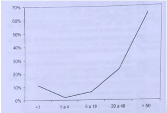
A regular / coeficiente de letalidade.
B baixo / coeficiente de natalidade.
C elevado / coeficiente de mortalidade proporcional por idade.
D regular / coeficiente de mortalidade proporcional por idade.
Questão 277 · Lei n 81421990 · 4000190081Assinale a alternativa que apresenta as instâncias de participação da comunidade na gestão do Sistema Único de Saúde (SUS).
A conselhos municipais de saúde e conferências estaduais de saúde.
B conselhos municipais de saúde e conferências municipais de saúde.
C conferências municipais de saúde e conselhos estaduais de saúde.
D consórcios intermunicipais de saúde e conferências estaduais de saúde.
Questão 278 · Medicina de Família e Comunidade · 4000190072Foi realizado um estudo hipotético sobre a capacidade de os médicos diagnosticarem COVID-19 em um serviço de emergência com 200 pacientes que chegaram com febre, anosmia e mialgia. As impressões clínicas dos pro ssionais foram comparadas com o resultado do teste antígeno para COVID-19. Os resultados foram: dos 100 pacientes com teste positivo, 90 foram diagnosticados pelos médicos. Entre os outros 100 com teste negativo, os médicos diagnosticaram que 30 deles apresentavam a infecção. A partir dos dados fornecidos, a razão de verossimilhança:
A positiva foi de 3
B negativa foi de 0,25
C negativa indica que o teste é um péssimo método diagnóstico
D não tem relação com a sensibilidade e especificidade do teste
Questão 279 · Medicina de Família e Comunidade · 4000190071Em uma cidade hipotética, a população é de 1.200.000 habitantes, sendo identi cados 32.000 nascidos vivos. Em relação aos óbitos, identi cou-se um total de 6.400 óbitos, sendo que 2.200 foram em pessoas com 50 anos ou mais, 800 em menores de 1 ano e 320 óbitos por acidentes de trânsito. Em relação a essas informações, é correto afirmar que:
A a mortalidade proporcional por acidente de trânsito é de 3%
B o coeficiente de mortalidade geral é de 8 óbitos por cada 1.000 habitantes
C a razão de mortalidade proporcional (índice de Swaroop-Uemura) é de 44,37%
D a cada 1.000 crianças nascidas vivas, 25 morrem antes de completar um ano de vida
Questão 280 · Medicina de Família e Comunidade · 4000190069O médico identi cou junto à equipe muitos atendimentos de pessoas mordidas por cães no território e, dessa forma, planejou ações junto à comunidade e órgãos de vigilância em saúde. A execução dessas atividades planejadas pela equipe está expressa no seguinte atributo da Atenção Primária à Saúde:
A integralidade
B longitudinalidade
C orientação comunitária
D coordenação do cuidado
Questão 281 · Medicina de Família e Comunidade · 4000190068Em relação à adequação da assistência pré-natal no Brasil, um estudo realizado entre 2011 e 2012 evidenciou, nas regiões Norte e Nordeste do país, uma menor adequação do pré-natal em mulheres mais jovens, de pele negra, multíparas, sem companheiro, sem trabalho remunerado, com menor escolaridade, de classes econômicas mais baixas. Outro estudo descritivo com os dados do Sistema de Informações sobre Nascidos Vivos, entre 2014 e 2015, evidenciou que o acesso ao pré-natal foi adequado para cerca de 70% das mulheres, sendo a maioria delas mulheres em idade mais avançada, escolaridade maior e de cor branca/amarela das Regiões Sul e Sudeste (DUNCAN, 2022). Diante desses estudos, o princípio do SUS que ainda aparece como um desafio é a:
A equidade
B integralidade
C regionalização
D participação popular
Questão 282 · Medicina de Família e Comunidade · 4000190067A tabela a seguir representa as taxas de internações por condições sensíveis à atenção básica (ICSAB) e não sensíveis (Não ICSAB). Nota-se que, no Brasil, no período de 2001 a 2016, houve uma redução da taxa padronizada de internações por ICSAB, passando de 120 para 66 internações por 10.000 habitantes, fato também observado na média das capitais e interior, com redução de 24% e 48,6%, respectivamente, conforme descrito na tabela. Fonte: 30 anos do Sistema Único de Saúde, Ciênc. Saúde Coletiva v.23 n.6 Rio de Janeiro jun. 2018, p. 1909. De acordo com os dados apresentados na tabela, o investimento responsável pela queda nas taxas de internações estava relacionado à ampliação:
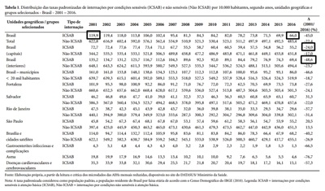
A dos ambulatórios de especialidades médicas
B da rede hospitalar de urgência e emergência
C da cobertura de equipes de estratégia saúde da família
D do número de leitos de internação em enfermarias e UTIs
Questão 283 · Princípios e Diretrizes do SUS na Constituição Federal · 4000190066Assinale a alternativa que NÃO apresenta um dos objetivos e atribuições do SUS.
A Identificar e divulgar os fatores condicionantes e determinantes da saúde.
B Formulação da política de medicamentos, exceto imunobiológicos, e participação na sua produção.
C Assistência terapêutica integral, inclusive farmacêutica.
D Ações de saúde do trabalhador.
Questão 284 · Medicina de Família e Comunidade · 4000190065Em um estudo realizado na cidade X, todas as crianças nascidas no ano de 1995 foram avaliadas quanto ao tipo de aleitamento recebido nos primeiros seis meses de vida. Após cinco anos, essas mesmas crianças foram avaliadas quanto ao desenvolvimento de asma. Constatou-se que o aleitamento materno exclusivo nos primeiros seis meses de vida reduziu em cinco vezes o risco de se desenvolver asma até os 5 anos de idade. O estudo realizado é do tipo:
A ensaio clínico
B caso-controle
C ecológico
D coorte
Questão 285 · Prevenção Secundária · 4000189901Em relação com os níveis de prevenção, é essencial uma vez que o diagnóstico precoce é fundamental para o êxito de tratamentos de várias doenças, muitas delas, fatais, tem como foco detectar um problema de saúde em estágio inicial, reduzindo ou prevenindo sua disseminação e efeitos a longo prazo. Estamos falando de:
A Prevenção Quaternária.
B Prevenção Secundária
C Prevenção Terciária.
D Prevenção Primária
Questão 286 · Variações sazonais ou sazonalidade · Distribuição das doenças em grupos populacionais Pessoa · 4000189900A Bronquiolite tem uma época do ano (Inverno) que apresenta um aumento de casos, portanto pode ser considerada.
A Endemia.
B Doença Crônica.
C Pandemia.
D Sazonal/Surto.
Questão 287 · Revisões sistemáticas · 4000189899Existem várias formas de classificar uma pesquisa, mas a maioria tem em comum o método aplicado para desenvolver a pesquisa. Uma classificação geral, considerando: a modalidade os objetivos e a forma de abordagem, em relação a modalidade podemos afirmar que é uma pesquisa bibliográfica quando?
A Tem por objetivo a caracterização inicial do problema e constitui a primeira etapa de toda a pesquisa científica.
B Observa os fatos e como eles ocorrem. Nos permite separar e controlar as variáveis, além de perceber e estudar as relações estabelecidas.
C Levantamento ou revisão de um conjunto de dados de documentos, livros dissertações.
D Tem por objetivo ampliar os fundamentos teóricos, definir leis mais amplas, estruturar sistemas e modelos teóricos, relacionar hipóteses.
Questão 288 · Tipos de Estudos Epidemiológicos · 4000189898São tipos de estudos epidemiológicos. Exceto:
A Estudos Analíticos.
B Estudos de Coorte.
C Estudos Descritivos.
D Estudos Metafísicos
Questão 289 · Princípios e Diretrizes do SUS na Lei n 80801990 · 4000189897O Sistema Único de Saúde (SUS) é um dos maiores e mais complexos sistemas de saúde pública do mundo, abrangendo desde o simples atendimento para avaliação da pressão arterial, por meio da Atenção Primária, até o transplante de órgãos, garantindo acesso integral, universal e gratuito para toda a população do país. Quais são seus princípios:
A Princípios do Sistema Único de Saúde, universalização equidade: integralidade é princípios organizativos regionalização e hierarquização descentralização e comando única participação popular.
B Princípios do Sistema Único de Saúde, universalização igualdade prioridade descentralização e participação popular.
C Princípios do Sistema Único de Saúde, equidade integralidade com apenas participação do governo estadual.
D Princípios do Sistema Único de Saúde, universalização, equidade da responsabilidade individual e participação das prefeituras.
Questão 290 · Prevenção Primária · 4000189896Com a pandemia de COVID foi muito frequente o uso de equipamentos de proteção individual EPIs pelos funcionários da saúde, representando uma medida preventiva:
A Secundária
B Primaria
C Quaternária
D Terciaria
Questão 291 · Lei n 81421990 · 4000189895Conselho Nacional de Saúde (CNS) é formado por conselheiros (as) titulares e seus respectivos primeiro e segundos suplentes. De acordo com o regimento interno do CNS, a composição do Conselho é definida da seguinte forma:
A 70 % dos membros lideranças comunitárias é 30 % médica atenção básica.
B Secretários de saúde municipais e população maior de 45 anos.
C 50% dos membros representantes de entidades e dos movimentos sociais de usuários do SUS, escolhidos em processo eleitoral direto; 50% dos membros representantes de entidades de profissionais de saúde, incluída a comunidade científica da área de saúde, entidades de prestadores de serviços de saúde, entidades empresariais com atividade na área de saúde, todas eleitas em processo eleitoral direto; os representantes do governo (Conass) e (Conasems) são indicados pelos seus respectivos dirigentes.
D Ministro da saúde e governados dos estados e distrito federal.
Questão 292 · Atributos gerais da Atenção Primária à Saúde APS · 4000189894O acolhimento é uma prática presente em todas as relações de cuidado, nos encontros reais entre trabalhadores de saúde e usuários, nos atos de receber e escutar as pessoas, podendo acontecer de formas variadas ("há acolhimentos e acolhimentos"). Em outras palavras, ele não é, a priori, algo bom ou ruim, mas sim uma prática constitutiva das relações de cuidado. Considerando uma unidade básica de saúde responda, são modelos de acolhimento exceto:
A Acolhimento pela equipe de referência do usuário.
B Acolhimento misto (equipe de referência do usuário mais equipe de acolhimento do dia).
C Acolhimento é inserção na Central de Regulação de Oferta de Serviços de Saúde (CROSS) para avalição hospitalar, solicitação de
D xames e renovação de receitas
Questão 293 · Prevenção Primária · 4000189893As vacinas são parte da prevenção.
A Quaternária.
B Terciaria
C Primaria.
D Secundaria
Questão 294 · Vigilância Epidemiológica · 4000189892A vigilância epidemiológica tem como propósito fornecer orientação técnica permanente para os pro ssionais de saúde, que têm a responsabilidade de decidir sobre a execução de ações de controle de doenças e agravos, tornando disponíveis, para esse m, informações atualizadas sobre a ocorrência dessas doenças e agravos, bem como dos fatores que a condicionam, numa área geográ ca ou população definida. São funções da vigilância epidemiológica, Exceto:
A Processamento de dados coletados.
B Laudo médico para procedimentos de alta complexidade - APAC.
C Análise e interpretação dos dados processados.
D Recomendação das medidas de prevenção e controle apropriadas.
Revisar: possível letra faltando em enunciado
Questão 295 · Prevenção Quaternária · 4000189891Uma mulher com 30 anos de idade assiste ao consultório diz querer realizar uma bateria completa de exames, teste ergométrico, ultrassonogra a total de abdome e tomogra a de crânio. Exame físico nada a sinalizar o médico explica que muitos exames pedidos desnecessariamente, poderão acarretar mais prejuízos que benefícios, como: falsos positivos, achados casuais, situações limítrofes, desvios do raciocínio clínico, sobrediagnósticos. A abordagem feita em relação a prevenção seria:
A Primaria
B Secundaria
C Terciaria
D Quaternária.
Questão 296 · Incidência · 4000189890Descrever as condições de saúde da população, medindo a frequência com que ocorrem os problemas de saúde em população humanas, é um dos objetivos da epidemiologia. Respeito à frequência com que surgem novos casos de uma doença num intervalo de tempo, como se fosse um " lme" sobre a ocorrência da doença, no qual cada quadro pode conter um novo caso ou novos casos. Estamos fazendo referência a:
A Mortalidade.
B Prevalência.
C Morbidade.
D Incidência.
Questão 297 · Lista Nacional de Notif icação Compulsória de doenças agravos e eventos de saúde pública · 4000189889A Lista Nacional de Doenças e Agravos de Noti cação Compulsória inclui diversas doenças, não consta nessa lista:
A Tétanos neonatal
B Dengue
C Diabetes Mellitus
D Coqueluche
Questão 298 · Estudos de Coorte · 4000189888Fazem parte do grupo de estudos observacionais de cunho epidemiológico que se propõem a observar, em uma população previamente definida, qual será a incidência de determinada doença ou fenômeno relacionado à saúde ou doença. Segundo a classificação estamos falando de:
A Estudo ecológico.
B Estudo de Coorte.
C Estudo de series de casos.
D Estudo de corte transversal.
Questão 299 · Prevalência · 4000189887A fórmula: Número de casos existentes em determinado período /Número de pessoas na população no mesmo período x constante; Seria relativa:
A Incidência.
B Mortalidade.
C Prevalência.
D Nascidos Vivos.
Questão 300 · Descentralização do SUS · 4000189886Considerada iniciativa autônoma de municípios localizados em áreas geográ cas contíguas que se associam para gerir e prover conjuntamente serviços especializados e de apoio diagnóstico de maior densidade tecnológica à população das municipalidades participantes, estamos falando de:
A Hospital Estadual.
B Unidade básica de saúde.
C Consorcio intermunicipais.
D Unidade de pronto atendimento.
Revisar: possível letra faltando em enunciado
Questão 301 · Medicina de Família e Comunidade · 4000189817Paciente M.R.T., sexo feminino, de 45 anos chega ao consultório referindo quadro de cefaleia crônica há pelo menos 4 anos, além de dor abdominal e de sensação de entalo na garganta recorrente. Diz ter consultado va crânio, endoscopia digestiva alta, ultrassonogra a abdominal total e de pescoço, todos normais. Seus exames laboratoriais de 3 meses atrás estão todos normais, exceto o colesterol total=278mg/dL. Diz também que gostaria de fazer outros exames, pois acredita que possa estar com alguma doença rara. No exame físico geral não há nenhuma alteração. Seu IMC = 28. Diante desse quadro qual a melhor abordagem, considerando que se trata da primeira consulta?
A prescrever Diazepam 10 mg à noite e encaminhá-la para psicologia.
B explicar que seu problema é psicológico e encaminhar para psicoterapia.
C reforçar a relação médico-paciente e oferecer um plano de cuidados continuados.
D solicitar novos exames laboratoriais e um eletroencefalograma.
E referenciar a um psiquiatra para avaliar e tratar um quadro de ansiedade generalizada.
Questão 302 · Medicina de Família e Comunidade · 4000189816. Mulher com 37 anos vem à consulta de puerpério. G2 PN2, o seu parto foi há 40 dias. Relata que o nenê está mamando muito bem e que produz bastante leite. Pensa em talvez engravidar novamente em dois anos e diz não ter interesse em colocar DIU. Relata que é muito esquecida e não sabe onde colocou as orientações e a receita da equipe da maternidade, pois estava nervosa no dia da alta da maternidade, com cansaço e vontade de ir para casa. É tabagista (< 15 cigarros ao dia). Entre as alternativas abaixo, qual seria a melhor indicação para planejamento familiar desta mulher?
A não há necessidade de oferecer método algum, uma vez que a mãe amamenta em livre demanda e várias vezes ao dia, sendo um perfeito método contraceptivo.
B anticoncepcional oral combinado.
C medroxiprogesterona injetável.
D minipílula.
E laqueadura tubária.
Questão 303 · Medicina de Família e Comunidade · 4000189814São problemas comuns na adolescência:
A acne, dor escrotal e dismenorreia.
B alopécia, dor lombar e ginecomastia puberal.
C acne, dismenorreia e alopécia.
D demência, ginecomastia puberal e dor nas pernas.
E erros inatos do metabolismo, ascite e DSTs.
Questão 304 · Medicina de Família e Comunidade · 4000189813Relacione as doenças, indicadas no bloco superior com suas possíveis lesões típicas, indicadas no bloco inferior. (1) Donovanose (2) Sífilis (3) Herpes genital (4) Cancro mole (5) Linfogranuloma venéreo ( ) Lesões vesiculosas que, em poucos dias, transformam-se em pequenas úlceras, precedidas de sintomas de ardência, prurido e dor. ( ) Lesões dolorosas, geralmente múltiplas devido à autoinoculação. A borda é irregular, apresentando contornos eritemato-edematosos e fundo irregular recoberto por exsudato necrótico, amarelado, com odor fétido que, quando removido, revela tecido de granulação com sangramento fácil. ( ) Ulceração de borda plana ou hipertrófica, bem delimitada, com fundo granuloso, de aspecto vermelho vivo e de sangramento fácil. A ulceração evolui lenta e progressivamente, podendo se tornar vegetante ou úlcero- vegetante. As lesões podem ser múltiplas, sendo frequente a sua con guração “em espelho”, em bordas cutâneas ou em mucosas. ( ) Lesão erosada ou ulcerada, geralmente única, indolor, com bordos endurecidos, fundo liso, brilhante e secreção serosa escassa. A ordem correta de preenchimento dos parênteses, de cima para baixo, é:
A 1 – 2 – 3 – 5.
B 3 – 1 – 4 – 5.
C 2 – 4 – 5 – 3.
D 3 – 4 – 1 – 2.
E 5 – 3 – 2 – 4.
Questão 305 · Medicina de Família e Comunidade · 4000189809Ao se diagnosticar hérnia inguinal em um lactente durante uma consulta de puericultura, devese:
A encaminhar para cirurgia o mais cedo possível.
B observar até os dois anos de idade.
C encaminhar para cirurgia, se a hérnia persistir após os seis meses de vida.
D orientar massagens abdominais, com movimentos circulares em sentido horário.
E orientar massagens abdominais, com movimentos circulares em sentido anti-horário.
Questão 306 · Medicina de Família e Comunidade · 4000189808Com relação à abordagem do alcoolismo, assinale a alternativa INCORRETA.
A as intervenções breves alcançam bons resultados em pacientes que bebem excessivamente.
B na maioria dos casos, um suporte familiar adequado e grupos de ajuda mútua auxiliam na reabilitação.
C as convulsões tônico-clônicas generalizadas são uma manifestação da síndrome de abstinência e devem ser tratadas com benzodiazepínicos injetáveis.
D a única droga disponível comprovadamente efetiva para o tratamento da dependência do álcool é o dissulfiram.
E se houver hipoglicemia grave, a administração de glicose parenteral só deve ser feita após o uso de tiamina.
Questão 307 · Medicina de Família e Comunidade · 4000189806Considere o caso seguinte para responder a questão. Um homem de 61 anos foi encaminhado pelo Médico de Família e Comunidade que o acompanha há vários anos para um serviço de cirurgia geral de um hospital regional por apresentar colelitíase sintomática. Nesse centro, o paciente acabou sendo submetido a uma cirurgia videolaparoscópica, que se deu sem intercorrências. Por ocasião da alta, o cirurgião emite uma nota em que constam informações sobre os cuidados a serem seguidos no período pós-operatório e um plano terapêutico sugerido para ser seguido pela equipe de saúde. Assinale a alternativa que contém o princípio do Sistema Único de Saúde empregado neste caso.
A territorialização.
B especialização.
C prevenção.
D reabilitação.
E integralidade.
Questão 308 · Medicina de Família e Comunidade · 4000189805Considere o caso seguinte para responder a questão. Um homem de 61 anos foi encaminhado pelo Médico de Família e Comunidade que o acompanha há vários anos para um serviço de cirurgia geral de um hospital regional por apresentar colelitíase sintomática. Nesse centro, o paciente acabou sendo submetido a uma cirurgia videolaparoscópica, que se deu sem intercorrências. Por ocasião da alta, o cirurgião emite uma nota em que constam informações sobre os cuidados a serem seguidos no período pós-operatório e um plano terapêutico sugerido para ser seguido pela equipe de saúde. Quais diretrizes do SUS você encontra nesse caso?
A especialização, reabilitação.
B reabilitação, prevenção.
C prevenção, promoção de saúde.
D sistema em redes e promoção de saúde.
E regionalização, referência e contrarreferência.
Questão 309 · Medicina de Família e Comunidade · 4000189803A Política Nacional de Atenção Básica do Ministério da Saúde estabelece que a Estratégia de Saúde da Família deve ter um “cara
A a substituição dos profissionais de saúde por médicos generalistas.
B que o Ministério da Saúde terá, gradativamente, uma maior participação na assistência à saúde da população.
C a implantação de um novo modelo assistencial no país.
D a troca de um enfoque preventivo para um enfoque curativo.
E a implantação de uma gestão exclusiva para equipes de Saúde da Família em nível municipal.
Questão 310 · Medicina de Família e Comunidade · 4000189801Jovem de 16 anos é atendido na Unidade Básica de Saúde com um quadro de dor de garganta, febre alta, dor nas articulações e exantema em todo o corpo há dois dias. Levando em consideração o caso acima, assinale a alternativa INCORRETA.
A entre as hipóteses diagnósticas, o médico deve considerar infecção pelo vírus Epstein-Barr.
B a solicitação de hemograma com pesquisa de linfócitos atípicos pode auxiliar no diagnóstico.
C a presença de hepato ou esplenomegalia deve ser explorada no exame físico.
D deve ser feito o diagnóstico diferencial com escarlatina.
E no caso de mononucleose infecciosa, há necessidade de antibioticoterapia.
Questão 311 · Medicina de Família e Comunidade · 4000189798Considere as estratégias seguintes: I. Estabelecer horários rígidos e com o máximo de tomadas ao dia. II. Desenvolver vínculo e confiança na relação com o paciente. III. Usar o esquema de tratamento mais simples possível. Assinale a alternativa que apresenta apenas estratégia(s) útil(eis) na PREVENÇÃO da não-adesão ao tratamento medicamentoso.
A apenas I.
B apenas II.
C apenas I e III.
D apenas II e III.
E I, II e III.
Questão 312 · Medicina de Família e Comunidade · 4000189797Nas últimas duas décadas, a dengue reapareceu como uma doença infecciosa importante em diversos estados do país. Com a introdução do sorotipo DEN 3, houve aumento de incidência de quadros hemorrágicos e incremento da mortalidade causada pela doença. Sobre a dengue, podemos afirmar que
A o período de incubação é de 20 a 30 dias.
B a sorologia (anticorpos IgM anti-dengue) é possível apenas nos primeiros três dias após o início da febre e serve para permitir o início do tratamento.
C o caso suspeito caracteriza-se por paciente com febre baixa associada a 3 sintomas dos seguintes: cefaleia, dor retroorbital, mialgia, artralgia, prostração, exantema e tosse.
D os sinais e sintomas iniciais são semelhantes no curso benigno ou grave da doença.
E os achados laboratoriais mais comuns são plaquetopenia, leucocitose e hemodiluição, com valores decrescentes de hematócrito.
Questão 313 · Medicina de Família e Comunidade · 4000189795Diante do diagnóstico de infecção por HIV, além do aconselhamento do paciente, torna-se importante orientá-lo sobre a comunicação do(s) parceiro(s) sexual(is). Qual a melhor forma para o Médico de Família e Comunidade resolver a delicada situação (conforme Ministério da Saúde) respeitando o Código de Ética Médica?
A respeitar o sigilo médico e permitir que o paciente decida se deve ou não revelar a infecção existente ao parceiro e apoiar a decisão de seu paciente.
B trazer o parceiro à próxima consulta para comunicá-lo sobre a doença adquirida e sobre a necessidade de tratamento de ambos.
C informar o paciente sobre necessidade de trazer o parceiro para aconselhamento e testagem e, se o paciente for contrário, fazer busca ativa do parceiro, preservando a confidencialidade.
D orientar que será necessário contar ao parceiro sobre a infecção assim que estiver com CD4 baixo ou alta carga viral, apesar de necessitar usar camisinha desde o momento do diagnóstico.
E solicitar a um membro da equipe que informe o parceiro sobre a infecção e sobre a impossibilidade de manter relações sexuais seguras com o paciente neste momento.
Questão 314 · Medicina de Família e Comunidade · 4000189794Considere as seguintes asserções no que se refere às práticas preventivas recomendadas para adultos hígidos na Atenção Primária à Saúde: I. O exame citopatológico de colo de útero deve ser realizado pelo menos a cada 3 anos após dois exames anuais normais. II. A aferição da pressão arterial deve ocorrer a cada 1 ou 2 anos e tem nível de evidência I. III. A mamogra a deve ser realizada em todas as mulheres a partir dos 40 anos de idade e tem nível de evidência II. Quais estão corretas?
A apenas I.
B apenas II.
C apenas III.
D apenas I e II.
E apenas II e III.
Questão 315 · Medicina de Família e Comunidade · 4000189792Relacione os níveis de prevenção para desordens relativas ao uso de substâncias como o álcool, opioides e cocaína, apresentados no bloco superior, às suas possíveis características, apresentadas no bloco inferior: (1) Prevenção Primordial (2) Prevenção Primária (3) Prevenção Secundária (4) Prevenção Terciária (5) Prevenção Quaternária ( ) é designada para prevenir o uso de substâncias, tornando, dessa forma, o abuso impossível. ( ) é designada principalmente para os jovens. ( ) consiste em programas de diagnóstico precoce, a m de identi car abuso e redirecionar o comportamento dos pacientes. ( ) seu foco é o tratamento da adição, a fim de evitar complicações decorrentes do uso compulsivo. A sequência correta de preenchimento dos parênteses, de cima para baixo, é:
A 1 – 2 – 3 – 5.
B 1 – 3 – 5 – 4.
C 2 – 2 – 3 – 4.
D 2 – 2 – 4 – 5.
E 5 – 4 – 2 – 3
Questão 316 · Medicina de Família e Comunidade · 4000189790Considere as asserções sobre o processo de trabalho em equipe de saúde à família: I - A prática do cuidado familiar ampliado, efetivada por meio do conhecimento da estrutura e da funcionalidade das famílias, visa a propor intervenções que in uenciem os processos de saúdedoença dos indivíduos, das famílias e da própria comunidade. II - O trabalho interdisciplinar e em equipe propõe a integração das áreas técnicas e pro ssionais de diferentes formações. III - A promoção e desenvolvimento de ações intersetoriais buscam parcerias e integram projetos sociais e setores a ns, voltados para a promoção da saúde, de acordo com prioridades e sob a coordenação da gestão municipal. Quais estão corretas?
A apenas I.
B apenas II.
C apenas I e III.
D apenas II e III.
E I, II e III.
Questão 317 · Medicina de Família e Comunidade · 4000189789Entre as alternativas abaixo, assinale aquela que está de acordo com o que recomenda o manual “Dez passos para uma alimentação saudável: guia alimentar para crianc
A evitar o uso de carnes vermelhas, vísceras, frango com pele, alimentos ricos em caroteno, sopas, cremes e óleos vegetais.
B estimular o uso de leites desnatados.
C evitar açúcar, café, enlatados, frituras, refrigerantes, balas, salgadinhos e guloseimas nos primeiros anos de vida e usar sal com moderação.
D permitir o uso de água e chás durante o aleitamento materno exclusivo.
E introduzir outros alimentos a partir dos três meses de idade.
Questão 318 · Medicina de Família e Comunidade · 4000189787Qual a medida isolada mais efetiva para reduzir o risco de desenvolvimento de DPOC e para interromper a sua progressão?
A abandono do tabagismo.
B vacina contra pneumococo.
C uso profilático de corticoide inalatório em dose baixa.
D abandono do etilismo.
E vacina contra gripe.
Questão 319 · Medicina de Família e Comunidade · 4000189786Recém-nascido com 14 dias de vida, parto normal, aleitamento materno exclusivo, vem à consulta com MFC apresentando descamação furfurácea difusa, especialmente nas extremidades. A pele subjacente é normal, sem exsudação ou formação de bolhas, e o bebê está em ótimas condições gerais. Diante desse quadro, o MFC deve:
A orientar que a descamação é transitória e que se resolverá em aproximadamente duas semanas, sendo normal neste período e não necessitando tratamento, já que desaparecerá espontaneamente.
B fazer o diagnóstico de dermatite seborreica e, como as lesões estão difusas, orientar que devem ser tratadas com óleo mineral com 3% de ácido salicílico.
C orientar a mãe a amolecer as lesões com água morna e prescrever pomada de antibiótico, uma vez que se trata de um quadro de impetigo.
D prescrever tratamento com antibiótico sistêmico e reavaliar em 24 horas, uma vez que lesões descamativas difusas se referem à infecção estreptocócica.
E prescrever tratamento com corticosteroide sistêmico, pois deve se tratar de um quadro de dermatite atópica.
Questão 320 · Medicina de Família e Comunidade · 4000189782De acordo com o Programa Nacional de Seguranc definido como:
A incidente que resulta em dano ao paciente.
B evento ou circunstância que pode resultar em dano.
C comprometimento da estrutura ou função do corpo.
D evento que causa a morte ou incapacidade do paciente.
E redução do risco de dano ao paciente.
Questão 321 · Estudos de Coorte · 4000189616Assinale o estudo epidemiológico que é o MAIS indicado para identificar os fatores de risco de uma doença.
A Estudo transversal.
B Série de casos.
C Ensaio clínico.
D Estudo de coorte.
Questão 322 · Medicina Preventiva · 4000189526Em 12 de junho de 2018 foi instituída a Política Nacional de Vigilância em Saúde (PNVS), por meio da Resolução 588/2018 do Conselho Nacional de Saúde (CNS). Com relação aos princípios da PNVS descritos no art. 7º, assinale a alternativa que os apresente corretamente.
A descentralização político-administrativa, com direção conjunta em cada esfera de governo
B conhecimento do território: utilização de mapas estratégicos e definição de prioridades pelo diálogo com a comunidade, trabalhadores e trabalhadoras e outros atores sociais, nos processos de planejamento, alocação de recursos e orientação programática
C inserção da vigilância em saúde no processo de hierarquização das ações e serviços de saúde
D cooperação e articulação intra e intersetorial para ampliar a atuação sobre determinantes e condicionantes da saúde
Questão 323 · Medicina Preventiva · 4000189523Lançada em 2003, a Política Nacional de Humanização (PNH) busca pôr em prática os princípios do SUS no cotidiano dos serviços de saúde, produzindo mudanças nos modos de gerir e cuidar. Assinale a alternativa verdadeira em relação à PNH.
A A PNH destaca três grupos de dispositivos de cogestão: aqueles que dizem respeito à organização de um espaço coletivo de gestão, aqueles que se referem aos mecanismos que garantem a participação ativa de usuários e familiares no cotidiano das unidades de saúde e aqueles que dizem respeito às decisões técnicas e administrativas.
B A PNH estimula a comunicação entre gestores, trabalhadores e usuários para construir processos coletivos de enfrentamento de relações de poder, trabalho e afeto que muitas vezes produzem atitudes e práticas desumanizadoras que inibem a autonomia e a corresponsabilidade dos profissionais de saúde em seu trabalho e dos usuários no cuidado de si.
C Vinculada à Secretaria de Atenção à Saúde Municipal, a PNH conta com equipes regionais de apoiadores que se articulam à Secretaria de Atenção Básica do Ministério da Saúde.
D O HumanizaSUS, como também é conhecida a Política Nacional de Humanização, aposta na inclusão da Comissão Tripartite e na Comissão Bipartite na produção e gestão do cuidado e dos processos de trabalho.
Questão 324 · Medicina Preventiva · 4000189520O Sistema de Informação de Agravos de Noti cação (Sinan) foi criado em 1990 pelo Centro Nacional de Epidemiologia com o apoio do Departamento de Informática do SUS (Datasus), tendo como nalidade a Vigilância Epidemiológica de determinados agravos. Em relação ao Sinan, é correto afirmar que
A o instrumento para a coleta de dados do Sinan é a Ficha Individual de Notificação (FIN), que deve ser preenchida exclusivamente pelo médico e encaminhada para a unidade de vigilância epidemiológica dos Municípios, Estados e/ou Ministério da Saúde.
B para alguns agravos, é necessário realizar a Notificação Positiva de Não Agravo, que é a notificação da não ocorrência de determinadas doenças de notificação compulsória na área de abrangência da Unidade de Saúde.
C possui um banco de dados epidemiológicos que fornece informações sobre a incidência, prevalência e letalidade de um conjunto de doenças e agravos que constam na Lista de Notificação Compulsória.
D a comunicação de doenças que possam gerar epidemias é de responsabilidade do paciente e da recepção do órgão de saúde.
Questão 325 · Medicina Preventiva · 4000189519A prevalência é uma medida estática. Alguns fatores podem in uenciar negativa ou positivamente a prevalência. Assinale a alternativa que corresponda a um fator que pode diminuir a prevalência.
A imigração de indivíduos sadios ou a emigração de indivíduos doentes
B imigração de indivíduos doentes ou a emigração de indivíduos sadios
C melhor tratamento, prolongando a sobrevida do paciente, mas não o levando à cura
D maior incidência da doença
Questão 326 · Medicina Preventiva · 4000189518As Redes de Atenção à Saúde (RAS) são arranjos organizativos de ações e serviços de saúde, de diferentes densidades tecnológicas que, integradas por meio de sistemas de apoio técnico, logístico e de gestão, buscam garantir a integralidade do cuidado (Ministério da Saúde, 2010 - Portaria 4.279, de 30/12/2010). Considera-se que não há como prescrever um modelo organizacional único para as RAS, contudo as evidências mostram que o conjunto de atributos são essenciais ao seu funcionamento. Nesse contexto, assinale a alternativa que apresente um desses atributos.
A financiamento tripartite
B gestão baseada em processos
C ação setorial e abordagem dos condicionantes da saúde e da equidade em saúde
D sistema de governança diversificado para toda a rede com o propósito de criar uma missão, visão e estratégias nas organizações que compõem o território
Questão 327 · Medicina Preventiva · 4000189516O Nasf (Núcleo de Apoio à Saúde da Família) é uma estratégia inovadora que tem por objetivo apoiar, ampliar, aperfeiçoar a atenção e a gestão da saúde na Atenção Básica/Saúde da Família. Nos termos da Portaria 154, existem duas modalidades de Nasf: o Nasf 1 e o Nasf 2. A esse respeito, assinale a alternativa correta.
A Nasf 1: composto por no mínimo cinco profissionais, sendo 3 com formação universitária e 2 com formação de nível médio, e se vincular a no mínimo 3 equipes de Saúde da Família.
B Nasf 2 deverá ter no mínimo três profissionais, entre os seguintes: enfermeiro, psicólogo, assistente social, farmacêutico, fisioterapeuta, fonoaudiólogo, profissional da educação física, nutricionista, médico ginecologista, médico homeopata, médico acupunturista, médico pediatra, médico psiquiatra e terapeuta ocupacional.
C Cada Nasf 1 deve estar vinculado a um mínimo de dez e máximo de vinte equipes de SF, exceto nos estados da Região Norte, onde o número mínimo passa a ser oito.
D Nasf 1, composto por no mínimo cinco profissionais com formação universitária, entre os seguintes: psicólogo, assistente social, farmacêutico, fisioterapeuta, fonoaudiólogo, médico ginecologista, profissional da educação física, médico homeopata, nutricionista, médico acupunturista, médico pediatra, médico psiquiatra e terapeuta ocupacional.
Questão 328 · Medicina Preventiva · 4000189513Os diversos estudos sobre os Determinantes Sociais da Saúde (DSS) e as iniquidades em saúde permitiram a construção de modelos que procuram esquematizar a trama de relações entre os vários níveis de determinantes sociais e a situação de saúde. Entre esses modelos, a CNDSS (Comissão Nacional de Determinantes Sociais da Saúde) resolveu adotar o que inclui os DSS dispostos em diferentes camadas, segundo seu nível de abrangência, desde uma camada mais próxima aos determinantes individuais até uma camada distal onde se situam os macrodeterminantes Esse é o modelo de
A Evans e Stoddart.
B Solar e Irwin.
C Dahlgren e Whitehead.
D Roux.
Questão 329 · Medicina Preventiva · 4000189512A Constituição de 1988 determinou, no artigo 198, que a sociedade participasse da gestão do sistema de saúde. Dois anos depois, duas leis trouxeram conteúdos importantes sobre essa participação, ao abordarem aspectos relacionados ao Conselho Nacional de Saúde. Foram elas a Lei 8.080, de 1990, conhecida como Lei Orgânica da Saúde, e a Lei 8.142, do mesmo ano. Sobre os Conselhos de Saúde é correto afirmar que
A são órgãos responsáveis pela gestão ou execução de serviços e, por isso, têm responsabilidade direta sobre a prestação dos serviços de saúde.
B é um órgão colegiado, permanente e deliberativo.
C é subordinado ao Poder Executivo.
D é um órgão colegiado, permanente, não deliberativo e não subordinado ao Poder Executivo.
Questão 330 · Medicina Preventiva · 4000189510A Portaria 122, de 25 de janeiro de 2011, define as diretrizes de organização e funcionamento das Equipes de Consultório na Rua considerando a necessidade de integração intersetorial entre as Políticas de Saúde e as demais políticas públicas, visando a melhorar a capacidade de resposta às demandas e necessidades de saúde inerentes à população em situação de rua. Em relação às equipes dos Consultórios de Rua (eCR), assinale a afirmativa
A As eCR utilizarão, quando necessário, as instalações das UBS do território.
B As atividades das eCR incluirão a busca ativa e o cuidado aos usuários de álcool, crack e outras drogas.
C Na composição de cada eCR, deve haver, preferencialmente, o máximo de dois profissionais da mesma profissão de saúde, seja de nível médio ou superior.
D As eCR desempenharão suas atividades in loco, de forma fixa/permanente.
Questão 331 · Medicina Preventiva · 4000189508A transição do hospital para o domicílio, que também nomeamos “desospitalização”, precisa ser realizada com responsabilidade e segurança. Requer, portanto, planejamento, comunicação e articulação da Rede de Atenção à Saúde (RAS) de forma a garantir o cuidado das pessoas dependentes de VM (Ventilação Mecânica) no âmbito do domicílio, assim como a continuidade em outros âmbitos de atenção, quando necessária. Analise os critérios que devem ser analisados para a definição de Ventilação Mecânica Domiciliar: I. adequação do domicílio; II. idade, excluindo-se a faixa de 0 a 5 anos de idade; III. existência de cuidador; IV. consentimento da família. Assinale
A se apenas o critério II estiver correto.
B se apenas os critérios I, III e IV estiverem corretos.
C se apenas os critérios I, II e III estiverem corretos.
D se todos os critérios estiverem corretos.
Questão 332 · Política Nacional de Atenção Básica PNAB · 4000189443De acordo com Barbara Starfield (2002), corresponde aos atributos da Atenção Primária à Saúde o (a)
A primeiro contato, a coordenação do cuidado e a competência cultural.
B integralidade, a competência cultural e a capilaridade.
C centralidade na família, o primeiro contato e a humanização.
D universalidade, a orientação para a comunidade e a coordenação do cuidado.
E humanização, a longitudinalidade e a integralidade.
Questão 333 · Financiamento do SUS · 4000189442A Portaria no 2.979/2019 instituiu o Programa Previne Brasil, estabelecendo um novo modelo de nanciamento de custeio da Atenção Primária à Saúde (APS) no âmbito do Sistema Único de Saúde (SUS). Acerca da referida Portaria, assinale a alternativa correta.
A A capitação ponderada corresponde ao extinto Piso de Atenção Básica variável (PAB variável).
B A capitação ponderada leva em conta a vulnerabilidade socioeconômica e o perfil demográfico da população, além da classificação geográfica do município.
C O pagamento por desempenho será executado apenas para as equipes de Saúde da Família, ficando excluída a produtividade das equipes de APS.
D A lógica de pagamento por desempenho na atenção básica é inédita no SUS, sendo destaque para a ampliação do financiamento neste nível de complexidade.
E O pagamento para ações estratégicas corresponde ao extinto Piso de Atenção Básica fixo (PAB fixo).
Questão 334 · Sistemas de Saúde e Modelos Assistenciais de Saúde · 4000189440Em seu clássico texto O nascimento da medicina social, Michel Foucault apresenta, "grosso modo", três etapas na formação da medicina social e, para tanto, traz exemplos de três países europeus, associando-os a cada uma dessas etapas. Com base nisso, assinale a alternativa que apresenta o país e as características correlacionados de maneira correta.
A Alemanha - Medicina da força de trabalho. Lei dos pobres. Vacina obrigatória. Localização e destruição de lugares insalubres. Controle da saúde e dos corpos dos mais pobres, tornando-os mais aptos ao trabalho.
B Inglaterra - Medicina de estado. Polícia sanitária. Normalização da prática da atividade dos médicos. Organização administrativa da atividade dos médicos.
C Portugal - Medicina da força de trabalho. Lei dos pobres. Vacina obrigatória. Controle da circulação da água e do ar. Emigração de cemitérios para a periferia da cidade.
D França - Medicina urbana. Modelo médico e político da quarentena. Controle da circulação da água e do ar. Emigração de cemitérios para a periferia da cidade.
E Espanha - Medicina de estado. Polícia sanitária. Normalização da prática e do saber médicos. Controle da saúde e dos corpos dos mais pobres, tornando-os mais aptos ao trabalho.
Questão 335 · Política Nacional de Atenção Básica PNAB · 4000189439Proposta de um programa específico destinado a populações e regiões pobres a quem se oferece, exclusivamente, um conjunto de tecnologias simples e de baixo custo, provido por pessoal de baixa quali cação pro ssional e sem a possibilidade de referência a níveis de atenção de maior densidade tecnológica. A descrição apresentada é característica da
A Atenção Primária seletiva.
B Clínica Ampliada.
C Medicina Centrada na Pessoa.
D Estratégia Saúde da Família.
E Promoção da Saúde.
Questão 336 · Prevenção Quaternária · 4000189438Detecção de indivíduos em risco de tratamento excessivo para protegê-los de novas intervenções médicas inapropriadas e sugerir-lhes alternativas eticamente aceitáveis. Esse é o conceito de
A medicina baseada em evidências.
B prevenção quaternária.
C não maleficência.
D medicina defensiva.
E medicalização da vida.
Questão 337 · Sistema de Inf ormação de Agravos de Notif icação SINAN · 4000189437Os sistemas de informação do Sistema Único de Saúde são importantes ferramentas para se conhecer, avaliar e planejar a saúde pública no Brasil. Assinale a alternativa que representa a fonte que alimenta o SINAN.
A Declaração de nascido vivo
B Declaração de óbito
C Autorização de internação hospitalar.
D Notificação compulsória.
E Prontuário eletrônico do cidadão.
Questão 338 · A carga de doenças no Brasil tripla carga de doenças · 4000189435Para Eugênio Vilaça Mendes (2010), em As redes de atenção à saúde, “a crise contemporânea dos sistemas de atenção à saúde que se manifesta, em maior ou menor grau, em todos os países do mundo, decorre de uma incoerência entre uma situação de saúde de transição demográ ca e de transição epidemiológica completa nos países desenvolvidos e [...] tripla carga de doenças nos países em desenvolvimento e o modo como se estruturam as respostas sociais deliberadas às necessidades das populações”. No Brasil, a tripla carga de doenças de relaciona com
A doenças crônicas; transtornos mentais e comportamentais; e neoplasias.
B causas externas; neoplasias; e doenças endócrinas, metabólicas e nutricionais.
C doenças infecciosas, parasitárias e problemas de saúde reprodutiva; neoplasias e transtornos mentais e comportamentais.
D doenças endócrinas; metabólicas e nutricionais; transtornos mentais e comportamentais; e doenças infecciosas e parasitárias.
E doenças infecciosas, parasitárias e problemas de saúde reprodutiva; causas externas; e doenças crônicas.
Revisar: possível letra faltando em enunciado
Questão 339 · Declaração de óbito DO Atestado de óbito · 4000189434A declaração de nascido vivo tem importância clínico-assistencial, social e epidemiológica. Quando se realiza um parto hospitalar, seu preenchimento em três deve seguir a correta destinação para que sua missão seja alcançada. Acerca desse tema, assinale a alternativa que corresponde ao correto encaminhamento de via.
A A primeira via é branca e permanece no hospital até ser coletada pela Secretaria de Saúde para fins epidemiológicos.
B A primeira via é amarela e deve ser entregue à família a fim de ser levada ao cartório e para realização do registro civil.
C A segunda via é rosa e deve ficar arquivada no hospital, junto ao prontuário médico do recém- nascido.
D A segunda via é branca e deve ser entregue à família a fim de ser levada ao cartório e para realização do registro civil.
E A terceira via é rosa e permanece no hospital até ser coletada pela Secretaria de Saúde para fins epidemiológicos.
Questão 340 · Princípios bioéticos f undamentais ou principialistas ou principialismo Beauchamp e Childress · 4000189433Conceitos f undamentais em bioética O médico, em todo o seu relacionamento com os pacientes, deve ter sempre presente aqueles que são considerados os princípios fundamentais da Bioética moderna: bene cência e não male cência, justiça e autonomia. Sobre esses princípios, é CORRETO afirmar:
A O princípio da beneficência visa ao bem-estar e aos interesses do paciente por meio da ciência médica e de seus representantes e agentes.
B No princípio da justiça, o médico deve sempre evitar qualquer atitude que possa prejudicar, causar dano ou piorar as condições de saúde do paciente.
C O princípio da autonomia exige equidade na distribuição de bens e benefícios na área da saúde, no exercício de todos os profissionais envolvidos.
D No princípio da não maleficência, o médico ou outro profissional da saúde deve respeitar a vontade, os valores morais, as crenças do paciente ou de seu representante.
Questão 341 · Sistema de Inf ormação de Agravos de Notif icação SINAN · 4000189432O exame clínico é um método de abordagem diagnóstica fundamentado na coleta sistemática de dados. No contexto do exame clínico, é CORRETO afirmar:
A Hostilidade, comentários moralizantes e desaprovação devem constar no prontuário do paciente e serem descritos com palavras ou reticências.
B Deve-se empregar abreviaturas e símbolos nos prontuários.
C Sempre que possível, a anamnese deve ser colhida com alguém próximo ao paciente.
D Em uma avaliação do aparelho psíquico, a aparência é um dos fundamentos.
Questão 342 · As grandes síndromes geriátricas gigantes geriátricos · 4000189422As síndromes geriátricas compartilham diversas características, embora heterogêneas. Elas são altamente prevalentes entre idosos, sobretudo idosos frágeis, têm impacto significativo na qualidade de vida, comprometem de forma substancial a funcionalidade dos indivíduos e costumam ser multifatoriais, acometendo, no seu desenvolvimento, diversos órgãos e sistemas. Dentre as alternativas abaixo, a que só contém síndromes geriátricas é:
A Incapacidade cognitiva, depressão, movimentos involuntários.
B Incontinência urinária, instabilidade e quedas, iatrogenia.
C Imobilidade, mal de Parkinson, reumatismo.
D Osteoporose, perda de autonomia, deterioração cognitiva.
Questão 343 · Direitos dos médicos · Código de Ética Médica CEM · Princípios f undamentais · 4000189359O Código de Ética Médica, em seu Capitulo V, estabelece vedações ao médico no relacionamento com pacientes e familiares. Os preceitos éticos mencionados determinam que a relação médico-paciente deve ser baseada, EXCETO:
A No atendimento em casos de urgência quando não houver outro profissional em condições de fazê- lo.
B Na prescrição somente mediante exame direto do paciente, salvo casos de urgência.
C Na utilização de meios que procurem abreviar a vida do paciente.
D Na utilização de todos os meios disponíveis para o diagnóstico e tratamento em favor do paciente.
Questão 344 · Doação e transplante de órgãos e tecidos · 4000189346Homem, jovem, falece em UTI de grande hospital, após ser resgatado de acidente motociclístico, com o qual não foi encontrado nenhum documento. Três pessoas se identi caram como familiares da vítima: pai, mãe e um tio que é portador de insu ciência renal crônica e submetido a hemodiálise 3 vezes por semana. Informaram ao Hospital que o rapaz falecido tinha 20 anos e que havia perdido todos os documentos em um assalto, além de manifestarem vontade de doação de rim para o tio com nefropatia. De acordo com a legislação atual, qual deve ser a conduta da Central de Transplantes?
A Aceitar a doação, pois, de acordo com o Decreto Federal N° 9175 de 18 de outubro de 2017, Capítulo III, Seção II, Parágrafo Único: “Não supre as exigências do caput o simples reconhecimento de familiares se nenhum dos documentos do falecido for encontrado, exceto nas hipóteses em que autoridade oficial que detenha fé pública certifique a identidade”, logo, sendo possível a realização desta doação.
B Recusar a doação, pois, de acordo com o Decreto Federal N° 9175 de 18 de outubro de 2017, Capítulo III, Seção II, Parágrafo Único: “Não supre as exigências do caput o simples reconhecimento de familiares se nenhum dos documentos do falecido for encontrado[...]”, logo o consentimento das pessoas envolvidas não será válido.
C Aceitar a doação, pois, de acordo com o Decreto Federal N° 9175 de 18 de outubro de 2017, Capítulo III, Seção I, Art. 17: “A retirada de órgãos, tecidos, células e partes do corpo humano poderá ser efetuada após a morte encefálica, com o consentimento expresso da família, conforme estabelecido na Seção II deste Capítulo.”, logo, como a família está presente, não há impedimento para a doação.
D Aceitar a doação, pois, de acordo com o Decreto Federal N° 9175 de 18 de outubro de 2017, Capítulo III, Seção II, Segundo Parágrafo: “Caso seja utilizada vontade de parente de segundo grau, deverão estar circunstanciadas, no termo de autorização, as razões de impedimento dos familiares de primeiro grau.”, logo como os pais estão presentes e de acordo com a doação, não há impedimentos.
Questão 345 · Sistema de Inf ormação de Agravos de Notif icação SINAN · 4000189345O Sistema de Vigilância Epidemiológica está organizado para detectar, investigar e prevenir a ocorrência de epidemias para uma lista determinada de doenças. Esse grupo de afecções compõe a Lista de Doenças de Noti cação Compulsória Nacional definida pelo Ministério da Saúde. Desse modo, a Lista Nacional de Notificação Compulsória inclui:
A Leishmaniose visceral, meningite viral e acidente com escorpião.
B Leptospirose, disenteria por E. coli e acidente com aranha-marrom.
C Dengue com prova do laço positiva, cardiopatia chagásica e toxoplasmose em idoso.
D Doença mão-pé-boca, meningite meningocócica e violência contra o idoso.
Questão 346 · Saúde Suplementar · 4000189344Acerca dos Sistemas de Saúde no Brasil, é INCORRETO afirmar
A O financiamento do Sistema Supletivo de Assistência Médica ocorre por meio de dois mecanismos: desembolso direto ou por renúncia fiscal, na qual há abatimento do imposto devido para pessoa física ou jurídica.
B Para cumprir todas as suas atribuições constitucionais, o Sistema Único de Saúde conta com diversos organismos espalhados pelas instituições nas três esferas de gestão: os órgãos de vigilância epidemiológica, bem como os de planejamento, gestão de controle e avaliação de serviços.
C O segmento lucrativo tem como sua parcela mais expressiva o chamado Sistema Supletivo de Assistência Médica, abarcando, apenas, as cooperativas médicas e os planos de administração.
D A matriz gerencial do Sistema Único de Saúde permite a coexistência do nível técnico e político com mecanismos de participação direta.
Questão 347 · Estratégia de observação longitudinal x transversal · 4000189341Considere o seguinte estudo: Em 1975 foram avaliadas 40.268 mulheres com 20 anos ou mais, enquanto as amostras de 1989 e 1997 foram de 7.160 e 5.137 mulheres, respectivamente. Para cada um dos levantamentos, foram calculadas as proporções de mulheres subnutridas (índice de massa corpórea – IMC < 18,5 kg/m2) e de mulheres obesas (IMC > 30 kg/m2), agrupadas por nível de renda. Observou-se uma clara mudança na condição nutricional das mulheres brasileiras: em 1975 havia 2 mulheres subnutridas para cada mulher obesa, enquanto em 1997 a relação passou a ser de 2 casos de obesidade para cada caso de subnutrição. Em 1997, as mulheres de menor renda apresentavam risco significativamente maior de desnutrição e de obesidade, comparadas às mais ricas. O tipo de estudo realizado é:
A Ensaios clínicos.
B Estudos de coorte.
C Estudos caso-controle.
D Estudos de corte transversal.
Questão 348 · Probabilidade préteste e valor preditivo positivo · 4000189338Um pesquisador diz que um determinado exame laboratorial tem sensibilidade de 99% para o diagnóstico de uma doença. Devido o alto valor, ele deseja utilizar esse exame para rastreamento da mesma. Baseado nessa afirmativa, é correto afirmar:
A Esse exame é indicado para rastreamento, pois apenas 1% dos indivíduos que têm a doença apresentará resultado negativo no teste.
B Esse exame é mais indicado para confirmação diagnóstica da doença do que para seu rastreamento, já que 99% dos indivíduos que não têm a doença apresentarão resultado negativo.
C Seria melhor utilizar um exame mais específico, pois 1% dos indivíduos que não possuem a doença apresentará resultado positivo nesse teste.
D É coerente que o pesquisador utilize esse exame para rastreamento, já que 99% dos indivíduos que têm resultado positivo para essa doença serão verdadeiramente doentes.
Questão 349 · Prevenção Secundária · 4000189337O rastreio realizado através do exame Papanicolau em mulheres com mais de 25 anos de idade e assintomática, é considerado prevenção:
A Terciária
B Secundária
C Primária
D Quaternária
Questão 350 · Mortalidade Específ ica · Mortalidade Proporcional · 4000189336Um estudo veri cou a associação entre diversos fatores e mortalidade por HIV. Os dados estão na tabela abaixo. Pode-se afirmar que são fatores de risco para mortalidade por HIV:
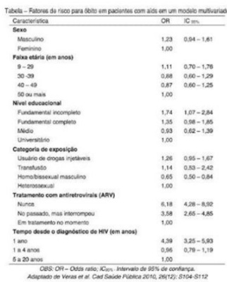
A Ensino fundamental incompleto, falta de tratamento ou interrupção da TARV e menos de 1 ano de diagnóstico.
B Sexo masculino, ensino fundamental incompleto, transfusão.
C Sexo feminino, 50 anos ou mais, ensino universitário.
D Idade entre 9-29 anos, uso de drogas injetáveis e interrupção de tratamento com TARV.
Questão 351 · Principais marcos legais do SUS · 4000189335Sobre as características dos conselhos de saúde, marque a correta:
A Tem caráter permanente e deliberativo com funções de formular estratégias, controlar e fiscalizar a execução da política de saúde
B Tem caráter prevalente e deliberativo com funções de controlar e fiscalizar a execução da política de saúde
C Tem caráter provisório e deliberativo com funções de formular estratégias, controlar e fiscalizar a execução da política de saúde.
D Tem caráter provisório e comunicativo com funções de formular políticas de provimentos, controlar e fiscalizar a execução da política de saúde.
Questão 352 · Princípios e Diretrizes do SUS na Constituição Federal · 4000189334José, 24 anos, vítima de acidente automobilístico, chega ao pronto-socorro e é atendido prontamente. João, 38 anos, com quadro de diarréia, está a espera de atendimento médico há 2 horas e ca nervoso quando José passa em sua frente no atendimento. Qual o príncipio do SUS que vigora no atendimento de José?
A Universalidade
B Integralidade
C Equidade
D Autonomia
Revisar: possível letra faltando em enunciado
Questão 353 · Constituição Federal CF1988 · 4000189333De acordo com o artigo 198 da CF/88, são diretrizes do Sistema Único de Saúde (SUS):
A Descentralização, com direção única em cada esfera de governo.
B Atendimento integral, com prioridade exclusiva para as atividades preventivas.
C Ações e serviços de saúde organizados de forma universal e independente dos níveis de complexidade.
D Não participação da comunidade, exceto por meio das conferências e conselhos de saúde.
Questão 354 · Princípios da Medicina de Família e Comunidade · 4000189332Homem, 42 anos, sapateiro, procura unidade básica de saúde (UBS) pedindo encaminhamento para cardiologia. Relata que foi na UPA devido à palpitação e temia ser problema mais sério no coração e foi percebido valor alterado da pressão arterial (PA). O mesmo se intitula hipertenso, após esse episódio de única aferição da PA. Ao passar pela consulta com médico da UBS o mesmo explica que isso não é suficiente para diagnosticá-lo e orienta aferir a pressão arterial na UBS 3 vezes por semana, durante 3 semanas e retornar em nova consulta na quarta semana. Qual atributo da Atenção Primária a Saúde, esse médico está exercendo quando dá essa orientação?
A Longitudinalidade
B Orientação familiar
C Integralidade
D Competência cultural
Questão 355 · Atributos gerais da Atenção Primária à Saúde APS · 4000189331Alexandre tem nefropatia e retinopatia por diabetes. Muitas vezes, ca confuso com as recomendações dos especialistas focais. Con a muito na sua equipe de saúde da Unidade Básica de Saúde próximo à sua casa para organizar seus tratamentos. Qual atributo da Atenção Primária a Saúde representa esse relato?
A Acesso de primeiro contato
B Coordenação
C Integralidade
D Longitudinalidade
Questão 356 · Prevenção Quaternária · 4000189330O termo prevenção quaternária (P4) foi utilizado pela primeira vez em uma conferência da Organização Mundial de Médicos de Família (WONCA), em 1995, por Marc Jamoulle. Após quatro anos foi adotada a definição da P4 e esta foi publicada no dicionário WONCA. Assinale a alternativa que melhor define o conceito de prevenção quaternária:
A É a ação tomada para remover causas e fatores de risco de um problema de saúde individual ou populacional antes do desenvolvimento de uma condição clínica.
B É a ação implementada para reduzir em um indivíduo ou população os prejuízos funcionais consequentes de um problema agudo ou crônico, incluindo reabilitação.
C É a ação realizada para detectar um problema de saúde em estágio inicial, muitas vezes em estágio subclínico, no indivíduo ou na população, facilitando o diagnóstico definitivo, o tratamento e reduzindo ou prevenindo sua disseminação e os efeitos de longo prazo.
D É a detecção de indivíduos em risco de intervenções, diagnósticas e/ou terapêuticas, excessivas para protegê-los de novas intervenções médicas inapropriadas e sugerir-lhes alternativas eticamente aceitáveis.
Questão 357 · Estudos de CasoControle · 4000189329Com relação aos tipos de estudos epidemiológicos, é CORRETO afirmar:
A Nos estudos de corte transversal é sempre possível estabelecer relações de causa e efeito.
B Os estudos de série de casos são estudos mais complexos, sendo irrelevantes para descrever procedimentos inovadores testados com um pequeno número de pacientes.
C Os estudos do tipo caso-controle são recomendados principalmente para a pesquisa de fatores de risco para doenças raras e doenças congênitas.
D Os estudos de coorte geralmente apresentam baixo custo e tempo abreviado para a execução do estudo.
Questão 358 · Mortalidade · 4000189328Jovem, 19 anos, foi passar as férias no Nordeste onde se esbaldou na gastronomia local e não atentou-se o su ciente para os cuidados de higiene dos estabelecimentos alimentícios. Evoluiu com quadro de dor abdominal, fezes líquidas e volumosas, náusea, vômito e febre. Tentou alimentar-se e hidratar-se em casa, sem sucesso e diante à fraqueza e mal-estar incessante, procurou a UPA local. Sabe-se que é comum doenças infecto contagiosas do trato gastrointestinal evoluírem com a desidratação do paciente e que esta tem alta taxa de mortalidade. Isso pode indicar:
A Alto risco de óbito na comunidade.
B Existem frequentemente muitos casos novos de desidratação.
C Alto índice de morte entre os doentes
D Alta potencialidade da gravidade da desidratação.
Revisar: possível letra faltando em enunciado
Questão 359 · Princípios e Diretrizes do Sistema Único de Saúde SUS · 4000189327Princípios da Medicina de Família e Comunidade Um dinamarquês de 31 anos que está passando férias no Brasil é mordido por um cachorro de rua há poucos minutos e procura a Unidade Básica de Saúde (UBS), que é referência em aplicação de vacina e soro anti- rábicos, para ser avaliado e orientado quanto aos cuidados necessários. O agente comunitário de saúde que está na recepção da unidade solicita os seus documentos e comprovante de endereço para realizar o cadastro e abertura da cha para atendimento, porém o paciente informa ser estrangeiro e não ter comprovante de endereço do Brasil, estando hospedado em um hotel nas proximidades da unidade. Nesse momento, o agente de saúde o orienta a procurar uma unidade de Pronto Atendimento, pois ele, por não morar na região, não faz parte da área de abrangência daquela UBS e não poderá ser atendido por ela. Nesse contexto, qual dos princípios éticos do SUS não foi respeitado?
A Integralidade
B Equidade
C Regionalização
D Universalidade
Questão 360 · Prevenção Primordial · 4000189326O modelo da História Natural da Doença define períodos sequenciados para o desenvolvimento de uma doença. Um deles é o período pré-patogênico, que é caracterizado por:
A Definir a situação em que pode existir lesões, desde que inaparentes.
B Incluir as relações entre agente, hospedeiro e meio ambiente.
C Englobar o processo de convalescença.
D Delimitar o horizonte clínico.
Questão 361 · Estudos de CasoControle · 4000189325Um estudo veri cou a influência do peso ao nascer e o desenvolvimento de diabetes tipo I na infância e adolescência. Para isso, recrutaram 500 jovens diabéticos, onde foram interrogados sobre seu peso ao nascer a partir dos dados de registro da maternidade. Foram considerados como peso normal todos aqueles que nasceram com até 3,9kg e como peso elevado aqueles que nasceram com mais de 3,9kg. Esses 500 jovens foram pareados por sexo e idade com outros 500 jovens não-diabéticos, aos quais também tiveram seu peso ao nascer verificado. Os pesquisadores concluíram que o peso ao nascer não in uenciou o desenvolvimento de diabetes tipo I Sobre o desenho de estudo acima, é correto a rmar que trata-se de um estudo:
A Transversal
B Coorte
C Ecológico
D Caso-controle
Questão 362 · Constituição Federal CF1988 · 4000189324A Constituição Federal de 1988 estabelece que “A saúde é direito de todos e dever do Estado”. A garantia desse direito foi fundamental para superar a condição anterior a esse período que se caracterizava por:
A assegurar esse direito aos trabalhadores urbanos por meio de empresas de medicina de grupo e de seguro-saúde.
B garantir à população residente em centros urbanos esse direito após a criação do Instituto Nacional da Previdência Social (INPS).
C garantir à população urbana esse direito desde a criação das Caixas de Aposentadoria e Pensões (CAPs).
D restrição desse direito à população trabalhadora com vínculo formal de emprego.
Questão 363 · Análise multivariada · 4000189322Uma alternativa para controlar os fatores de confusão em um estudo observacional é:
A Amostra aleatória.
B Viés de seleção.
C Alocação randomizada.
D Análise multivariada.
Questão 364 · Program Saúde da Família PSF e Estratégia Saúde da Família ESF · 4000189318O Programa Saúde da Família (PSF) é uma estratégia desenvolvida pelo Ministério da Saúde com o objetivo de oferecer a atenção básica/primária de forma mais resolutiva e humanizada, sendo fundamental à consolidação do Sistema Único de Saúde. Acerca deste programa, é CORRETO afirmar:
A Visa a ampliação da necessidade de leitos hospitalares.
B Não prevê encaminhamento para consultas especializadas.
C Prevê o cadastramento de famílias, segundo a definição da área territorial préestabelecida para a adscrição.
D Centraliza o atendimento nos agentes comunitários de saúde.
Questão 365 · Vigilância Sanitária · 4000189317O conjunto de ações capaz de eliminar, diminuir ou prevenir riscos à saúde e de intervir nos problemas sanitários decorrentes do meio ambiente, da produção e circulação de bens e da prestação de serviços de interesse da saúde, abrangendo o controle de bens de consumo que, direta ou indiretamente, se relacionem com a saúde, compreendidas todas as etapas e processos, da produção ao consumo, e o controle da prestação de serviços que se relacionam direta ou indiretamente com a saúde é denominação da:
A Vigilância Sanitária.
B Vigilância da Saúde do Trabalhador.
C Vigilância Ambiental em Saúde.
D Vigilância Epidemiológica.
Questão 366 · · 4000189315Perda Auditiva induzida por Ruído PAIR ou Perda Auditiva induzida por níveis de Pressão Sonora Elevados PAINPSE A Perda Auditiva Induzida pelo Ruído (PAIR) pode ser conceituada como uma diminuição gradual da acuidade auditiva, decorrente da exposição continuada a níveis elevados de ruído. Sobre esse assunto, é INCORRETO afirmar:
A É sempre neurossensorial, uma vez que a lesão é no órgão de Corti da orelha interna.
B É geralmente bilateral, com padrões similares. Em algumas situações, observam-se diferenças entre os graus de perda das orelhas.
C É irreversível e de cunho profissional.
D A sua progressão não cessa com o fim da exposição ao ruído intenso.
Questão 367 · Prevenção Primária · Prevenção Terciária · Prevenção Secundária · 4000189313Considerando que as ações de prevenção podem ser agrupadas segundo três fases da prevenção (primária, secundária e terciária), é CORRETO afirmar:
A Prevenção secundária: saneamento básico.
B Prevenção primária: quimioprofilaxia.
C Prevenção terciária: diagnóstico precoce.
D Prevenção secundária: reabilitação.
Questão 368 · Patogenicidade · 4000189309A patogenicidade é definida como a propriedade:
A De um agente infeccioso produzir sintomas em maior ou menor proporção dentre os hospedeiros infectados.
B De um agente etiológico induzir imunidade no hospedeiro.
C De um microrganismo provocar alterações fisiológicas no hospedeiro, ou seja, capacidade de produzir doença.
D De certos organismos penetrarem e se desenvolverem ou de se multiplicarem no novo hospedeiro.
Questão 369 · Sistema de Inf ormação de Agravos de Notif icação SINAN · 4000189302A Portaria n° 204, de 17 de fevereiro de 2016, traz a Lista de Noti cação Compulsória Imediata. Segundo a lista, é doença de notificação compulsória:
A Hantavirose.
B Acidente de trabalho com exposição a material biológico.
C Doença de
D Esquistossomose.
Questão 370 · Política Nacional de Atenção Básica PNAB · 4000189297A Atenção Primária à Saúde (APS) é o primeiro nível de atenção em saúde, oferecendo atendimento abrangente, acessível e baseado na comunidade, que pode atender de 80% a 90% das necessidades de saúde de uma pessoa ao longo de sua vida. A APS tem como atributos essenciais, EXCETO:
A Longitudinalidade.
B Coordenação.
C Integralidade.
D Orientação familiar.
Questão 371 · Calendário vacinal do idoso · 4000189279RFDN, sexo masculino, 81 anos, acamado, foi visitado pela Agente Comunitário de Saúde (ACS) de sua área, que solicitou o cartão de vacina do idoso acamado para a lha de RFDN, cuidadora deste. São vacinas que devem ser recomendadas para o idoso, sendo primeira dose ou reforço, EXCETO:
A Influenza.
B Pneumocócica 23.
C Rotavírus.
D Tétano.
Questão 372 · Código de Ética Médica CEM · 4000189277MCT, sexo feminino, 20 anos, apresenta-se ao posto de saúde relatando atraso menstrual de 5 semanas. Realizou o teste de gravidez que veio positivo. Ao saber do resultado, mostra-se preocupada, com medo de que seu namorado e sua família descubram e relata que pretende interromper a gestação. Considerando as Diretrizes do Ministério da Saúde e o Código de Ética Médica, deve-se acolher MCT em:
A Sua decisão e orientar sobre os riscos dos métodos, caso decida interromper a gestação.
B Seu sofrimento e sugerir que converse com seu namorado, pois é direito dele saber sobre a gravidez para tomarem uma decisão juntos.
C Seu sofrimento, mas afirmar que, pela interrupção da gestação ser um procedimento proibido pela lei, é preciso notificar a justiça.
D Sua decisão, mas afirmar que o Código de Ética lhe impede de outras ações além disso.
Questão 373 · Prevenção Secundária · 4000189275Mulher, 65 anos, faz acompanhamento na UBS de seu bairro por apresentar HAS grau 2 há 5 anos. HAS 135 x 70 mmHg. Sem outras comorbidades. Faz exame de mama regularmente, sendo o último há um ano. As duas mamogra as anteriores estavam normais. Como história familiar, pai e irmã mais velha diabéticos e mãe hipertensa. Segundo o modelo de história natural da doença e promoção à saúde de Leavell & Clark, as medidas adotadas na questão para a paciente se enquadram no nível de prevenção:
A Primária.
B Secundária.
C Terciária.
D Quaternária.
Questão 374 · Sistema de Inf ormação de Agravos de Notif icação SINAN · 4000189274Princípios e Diretrizes do SUS a serem operacionalizados pela Atenção Básica Aurora, 2 anos de idade, comparece à consulta na UBS da zona rural do município de Pedra Bonita. Ao exame: estado geral regular, hipoativa, com quadro de febre persistente há 3 dias, gemente, chorosa e tosse seca associada, hipocorada, mucosa desidratada, acianótica, enchimento capilar rápido, batimento de asa de nariz. Sinais vitais: frequência respiratória 48 irpm, frequência cardíaca 160 bpm, Tax: 39.0 ºC. Sat/O2 91% em ar ambiente. Ausculta respiratória: murmúrio vesicular presente em ambos hemitórax, ruídos adventícios ausentes. Diante do caso descrito acima qual seria a conduta CORRETA do médico em relação a Aurora.
A Estabilizar a criança na unidade, prescrever medicações para tratamento ambulatorial e realizar a notificação de casos de Síndrome Gripal (SG), através do site e-SUS VE.
B Estabilizar a criança na unidade, solicitar exames laboratoriais e exames de imagem, prescrever medicações para tratamento ambulatorial e realizar a notificação de casos de Síndrome Gripal (SG), através do site e-SUS VE.
C Estabilizar a criança na unidade e agendar retorno para o dia seguinte. Não há necessidade de notificação no site e-SUS VE.
D Estabilizar a criança na unidade, encaminhar para o centro de referência ou hospital mais próximo e realizar a notificação de casos de Síndrome Gripal (SG), através do site eSUS VE.
E Estabilizar a criança na unidade, encaminhar para o centro de referência ou hospital mais próximo. Não há necessidade de realizar a notificação de casos de Síndrome Gripal (SG), através do site e- SUS VE.
Questão 375 · Assistência à Saúde no Brasil no Período PréConstitucional · Período colonial · Período póscolonial · 4000189273Sobre a história da saúde pública no Brasil marque o item INCORRETO:
A Os portugueses foram responsáveis pela implantação do modelo das Santas Casas de Misericórdia. As primeiras apareceram na capitania hereditária de São Vicente, em 1543, por Braz Cubas e em Salvador, em 1549, por iniciativa de Tomé de Souza.
B Durante o século XVII uma profunda crise demográfica ocorreu no Brasil devido a uma epidemia de sarampo, abalando a economia colonial. Após esse fato, as epidemias passaram a receber a atenção governamental, sobretudo em razão dos prejuízos causados à política econômica.
C As primeiras ações de saúde pública no Brasil colônia foram: proteção e saneamento das cidades, principalmente as portuárias; controle e observação das doenças e doentes, promovendo uma prática mais eficaz no controle das moléstias.
D No governo de Rodrigues Alves (1902-1906), tendo Oswaldo Cruz à frente, as iniciativas de saneamento e urbanização foram seguidas de ações específicas na saúde, sobretudo no combate a algumas doenças epidêmicas.
E A Conferência Internacional de Assistência Primária à Saúde, realizada em 1978 na cidade de Alma- Ata tratava da criação dos Institutos de Aposentadoria e Pensões (IAPs).
Questão 376 · Princípios e Diretrizes do SUS na Lei n 80801990 · 4000189272Sobre a Lei Orgânica da Saúde - Lei n°8.080 criada em 19 de setembro de 1990, marque o item CORRETO:
A A Lei n°8.080 foi elaborada para regulamentar o SUS, criado na Constituição Federal e dispõe sobre as condições para a promoção, proteção e recuperação da saúde, a organização e o funcionamento dos serviços correspondentes e outras providências.
B A Lei n°8.080 dispõe sobre a participação da comunidade na gestão do SUS e sobre as transferências intergovernamentais de recursos financeiros na área da saúde.
C A Lei n°8.080 estabelece dois mecanismos principais de participação da comunidade na gestão do SUS, os conselhos de saúde e as conferências de saúde.
D De acordo com a Lei n°8.080, a representação dos usuários nos conselhos de saúde e conferências é paritária em relação ao conjunto dos demais segmentos.
E A Lei n°8.080 define que os recursos do Fundo Nacional de Saúde (FNS) serão alocados como despesas de custeio e de capital do Ministério da Saúde, seus órgãos e entidades, da administração direta e indireta; investimentos previstos em lei orçamentária, de iniciativa do Poder Legislativo e aprovados pelo Congresso Nacional; investimentos previstos no Plano Quinquenal do Ministério da Saúde; cobertura das ações e serviços de saúde a serem implementados pelos Municípios, Estados e Distrito Federal.
Questão 377 · Vigilância Sanitária · 4000189269Sobre Vigilância Sanitária marque o item CORRETO abaixo:
A O conceito de Vigilância Sanitária pode ser definido como um conjunto de ações capaz de eliminar, diminuir ou prevenir riscos à saúde e de intervir nos problemas sanitários decorrentes do meio ambiente da produção e circulação de bens e da prestação de serviços de interesse da saúde.
B B) O conceito de Vigilância Sanitária pode ser definido como um conjunto de atividades que se destina, através das ações de vigilância epidemiológica e vigilância sanitária, à promoção e proteção da saúde dos trabalhadores, assim como visa à recuperação e reabilitação da saúde dos trabalhadores submetidos aos riscos e agravos advindos das condições de trabalho.
C Biodisponibilidade consiste na demonstração de equivalência farmacêutica entre produtos apresentados sob a mesma forma farmacêutica, contendo idêntica composição qualitativa e quantitativa de princípio(s) ativo(s), e que tenham comparável biodisponibilidade, quando estudados sob um mesmo desenho experimental.
D Bioequivalência indica a velocidade e a extensão de absorção de um princípio ativo em uma forma de dosagem, a partir de sua curva concentração/tempo na circulação sistêmica ou sua excreção na urina.
E Anticorpos monoclonais são substâncias, geralmente de origem protéica, existentes em animais ou vegetais que podem induzir uma resposta IgE e/ou uma reação alérgica do tipo I.
Questão 378 · Prevenção Quaternária · 4000189268Após a formatura no curso de Medicina João decide ir trabalhar na UBS Santa Rosa que ca na sua cidade. No seu primeiro dia de trabalho chega Maria, 31 anos de idade, solteira, fumante, vem a consulta para solicitar uma mamogra a, pois sua amiga, que frequenta a academia junto com ela três vezes por semana, fez exame que detectou um caroço na mama e acha que vai precisar operar. Perguntada, diz que não sente nada, mas que a amiga também não sentia. Nega antecedentes patológicos pessoais ou familiares dignos de nota, mas relata história familiar de neoplasia de mamas em uma prima de sua mãe. João conversou com Maria sobre seus receios e expectativas. Baseado neste caso responda:
A O médico, ao solicitar o exame pedido, ele exerce a prevenção primária que envolve o rastreio de doenças e a paciente possui história familiar.
B O médico, ao solicitar o exame pedido, está baseado no princípio do respeito ao desejo do paciente.
C O médico, ao não solicitar o exame pedido, ele exerce a prevenção quaternária.
D O médico, ao não solicitar o exame pedido, ele exerce a medicina baseada em evidências, e neste caso não precisa de esclarecimento a paciente.
E O médico, ao não solicitar o exame pedido, ele exerce a prevenção secundária, pois o ideal é realizar o exame após o aparecimento do primeiro sintoma.
Revisar: possível letra faltando em enunciado
Questão 379 · Princípios da Medicina de Família e Comunidade · 4000189267Dona Isaura, 65 anos, é frequentadora assídua do UBS Estrela, embora seja hipertensa e diabética, seu cuidado com a saúde é digno de elogios. Dona Isaura mora sozinha com o marido e sempre está presente em todas as atividades de educação em saúde, ela trabalhava como ACS desta área e conhece a todos. Hoje ela trouxe Ana, sua vizinha e amiga de longa data. Ana descobriu recentemente que é diabética, porém está com di culdades para aceitar o diagnóstico e não está seguindo as orientações do endocrinologista "o remédio é muito caro... sem falar nas comidas que nunca nem vi", foi a esta consulta porque sua lha que mora fora mandou o dinheiro. Dr. Lucas atende no bairro há muito tempo e conhece a todos, ele conversou com Dona Ana e explicou a doença, os cuidados... a dieta e por m em conjunto com a paciente a medicação a ser tomada. Neste caso, qual o princípio de Medicina de Família e Comunidade será decisivo neste processo?
A O médico de família e comunidade é um clínico qualificado.
B A atuação do médico de família e comunidade é influenciada pela comunidade.
C O médico de família e comunidade é o recurso de uma população definida.
D A relação médico-pessoa é fundamental para o desempenho do médico de família e comunidade.
E A Medicina baseada em evidências.
Questão 380 · Cuidados paliativos · 4000189240Paciente de 70 anos com câncer de pâncreas metastático que não responde a quimioterapia é admitido por dor abdominal intratável. A dor era previamente tratada com 15 mg de mor na a cada 3 horas, porém, nas últimas duas semanas a dor vem aumentando e se tornando insuportável, acordando o paciente várias vezes ao longo da noite. No pronto-socorro, recebeu 4 mg de mor na intravenosa com alívio imediato, porém a dor retornou rapidamente. O exame físico apresenta ainda fácies de dor e sem sinais de peritonite ao exame abdominal. Qual a conduta MAIS APROPRIADA para o caso?
A Continuar morfina 15 mg via oral a cada 3 horas e adicionar morfina intravenosa de 4 mg a cada 2 horas se precisar.
B Iniciar o controle da analgesia com uma dose intravenosa de 120 mg, dividida nas 24 horas, adicionalmente, fazer uma dose de resgate controlado pelo paciente equivalente a 15 mg da morfina oral a cada 15 minutos.
C Associar a dose oral de morfina do paciente com pregabalina e dipirona.
D Solicitar tomografia de abdome.
E Solicitar lipase e amilase sérica
Questão 381 · Cuidados paliativos · 4000189232Considerando a comunicação realizada com pacientes portadores de doenças oncológicas com caráter progressivo fora de possibilidade de cura, entre os temas a serem tratados com o paciente, é INCORRETO afirmar:
A Diagnósticos e prognóstico.
B Planejamento para o futuro.
C Transição de tratamento curativo para cuidado paliativo.
D Questão de início de vida.
Questão 382 · Princípios e Diretrizes do Sistema Único de Saúde SUS · 4000189226Considerando o Sistema de Saúde no Brasil, é CORRETO afirmar:
A Os critérios e valores para a remuneração de serviços e os parâmetros de cobertura assistencial serão estabelecidos pelo Conselho Nacional da Justiça.
B Dentre os dois segmentos do setor privado, lucrativo e não lucrativo, o setor lucrativo é o que mais se articula ao Sistema Único de Saúde por meio de contratos para a prestação de serviços.
C O segmento lucrativo tem como sua parcela mais expressiva o chamado Sistema Supletivo de Assistência Médica, abarcando, apenas, as cooperativas médicas e os planos de administração.
D A matriz gerencial do Sistema Único de Saúde permite a coexistência do nível técnico e político com mecanismos de participação direta.
Questão 383 · Princípios bioéticos f undamentais ou principialistas ou principialismo Beauchamp e Childress · 4000189223No que se refere aos princípios gerais de atuação do clínico, é CORRETO afirmar:
A No princípio da não maleficência, o médico, em todas as suas atitudes, deve sempre evitar qualquer atitude que possa prejudicar, causar dano, ou piorar as condições de saúde do paciente.
B No princípio da justiça, o médico, em todas as suas atitudes, deve sempre procurar fazer apenas aquilo que visa beneficiar o paciente.
C No princípio da beneficência, o médico deve fazer o possível para que todos sejam tratados com equidade e possam ter acesso a cuidados de saúde de qualidade equivalente.
D No princípio da isonomia, o médico deve respeitar os desejos do paciente, informá-lo e consultá-lo sobre tudo o que diz respeito à sua saúde, diagnósticos e prognósticos.
Questão 384 · 8 Conf erência Nacional de Saúde · 4000189153Após a VIII Conferência Nacional da Saúde, ocorrida em Brasília, foram elaboradas as diretrizes do Sistema Único de Saúde. Marque a alternativa que corresponde a essas diretrizes.
A Universalidade, Equidade e Participação Popular.
B Universalidade, Equidade e Integralidade.
C Descentralização, Integralidade e Participação Popular.
D Hierarquização, Resolutividade e Integralidade.
E Hierarquização, Municipalização da Saúde e Participação Popular.
Questão 385 · NOB 0193 · 4000189151Marque a alternativa da Norma Operacional Básica da saúde – NOBs, que iniciou o processo de municipalização de saúde no Brasil:
A NOB 91
B NOB 92
C NOB 93
D NOB 94
E NOB 96
Questão 386 · Prevenção Secundária · 4000189148A alternativa que indica o tipo de prevenção que é possível fazer a quebra da cadeia de transmissão da tuberculose pulmonar, é:
A Prevenção primária.
B Prevenção secundária.
C Prevenção terciária.
D Prevenção quaternária.
E Prevenção quinquenária.
Questão 387 · Prevenção Primária · Prevenção Secundária · 4000189138Quanto aos níveis de prevenção, analise as afirmativas abaixo. I. A prevenção primária é a realizada no início da doença, buscando estabelecer um diagnóstico o mais precocemente possível. II. A prevenção secundária tem, entre seus objetivos, evitar que a doença leve a complicações e sequelas. III. Evitar a propagação de doenças contagiosas é um dos objetivos da prevenção secundária. A alternativa que contém todas as afirmativas corretas é:
A I
B I e II
C I e III
D II e III
E I, II e III
Questão 388 · Estudos de Coorte · 4000189137Ao organizar um estudo coorte, um residente de oftalmologia, gostaria de delimitar a prevalência de fatores de risco para a retinopatia da prematuridade no ambulatório de pediatria, para isso será necessário:
A comparar os prematuros com retinopatia com os que não tem retinopatia e não são prematuros.
B analisar todos os pacientes que tem retinopatia da prematuridade e comparar com os que não tem.
C analisar todos os pacientes que tem retinopatias da prematuridade, e comparar os prematuros e os não prematuros.
D analisar todos os pacientes prematuros, comparando os que tem a retinopatia da prematuridade e os que não tiveram.
E analisar todos os casos de prematuros com retinopatia da prematuridade, descrevendo o pré natal destes.
Questão 389 · Cobertura de saneamento básico · 4000189135No ano de 2022, estima-se que quase 35 milhões de pessoas no Brasil vivem sem água tratada e cerca de 100 milhões não têm acesso à coleta de esgoto, o que gera impacto direto na mortalidade infantil e qualidade da saúde da população. Saneamento básico é previsto na lei 8080/90, sendo determinado por:
A saneamento básico é de competência dos municípios, estados e união.
B saneamento básico é de competência dos municípios e união.
C saneamento básico é de competência prioritariamente dos municípios.
D saneamento básico é de competência prioritariamente dos estados.
E saneamento básico é de competência prioritariamente da união.
Questão 390 · Cuidados paliativos · 4000189133Paciente de 43 anos, sexo feminino, com diagnóstico de câncer de mama em estágio inicial, foi encaminhada ao serviço de cuidado paliativo, mesmo o oncologista lhe explicando que há grandes chances de cura, pois foi diagnosticado no inicio do quadro. Sobre o encaminhamento para cuidados paliativos é correto afirmar que:
A foi correta, já que, cuidados paliativos são indicados para todos os pacientes com câncer terminal.
B foi correta, já que, mesmo havendo uma possível baixa possibilidade, o câncer de mama pode ter um desfecho reservado.
C foi correta, já que, cuidados paliativos são focados no conforto e bem estar do paciente, independente do prognóstico.
D não foi correta, já que, por ter sido diagnosticado no início, com altas chances de cura, o bem estar da paciente provavelmente não será afetado.
E não foi correta, já que, cuidados paliativos, são direcionados para otimização do cuidado em final de vida, o que não cabe ao caso.
Questão 391 · Lista Nacional de Notif icação Compulsória de doenças agravos e eventos de saúde pública · 4000189131Sistema de Inf ormação de Agravos de Notif icação SINAN Sua vizinha solicita que você avalie o lho dela de 13 anos, que você constata estar com varicela, e que o quadro também é compatível com de outros dois colegas de turma deste. O que deve ser feito em relação a vigilância de doenças de notificação compulsórias.
A não cabe notificação, pois só serão notificados casos de encefalite por varicela.
B não cabe notificação, pois o atendimento foi realizado fora do ambiente de saúde, sendo necessário encaminhar para atendimento em serviço especializado.
C não cabe notificação, já que, varicela não é doença de notificação compulsória.
D deverá realizar notificação, por via, Secretaria de Vigilância do Município, solicitando documentos necessários para realizar notificação.
E deverá notificar, já que, varicela é agravo listado para notificação compulsória em nível nacional, sendo necessário, encaminhar os três pacientes para avaliação em serviço de saúde.
Questão 392 · Princípios e Diretrizes do Sistema Único de Saúde SUS · 4000189130Os sistemas nacionais de saúde conformam as economias modernas e, reciprocamente, foram desenvolvidos por elas; concorreram para a formação da democracia política e foram também formados por ela. Por isso, a política de saúde comporta três dimensões complexas. Diz respeito à dimensão da saúde como proteção social:
A A noção de que a saúde está inserida em um complexo mercado constituído por poderosos setores industriais.
B As empresas farmacêuticas e de equipamentos eletroeletrônicos, que são responsáveis por expressiva parcela do investimento e da rentabilidade econômica mundial.
C A noção do direito à saúde, assimilada por diferentes nações trazida pela inserção da política de saúde como componente dos modernos sistemas de bem-estar social.
D Estão presentes na política de saúde redes de instituições que representam uma complexidade de atores, provedores, usuários, profissionais, pagadores e governantes.
Questão 393 · Rastreamento · Atenção Primária à Saúde APS no Brasil · 4000189128Paciente de 61 anos, comparece ao atendimento na UBS, para acompanhamento da HAS e DM, tendo em mãos, resultado de exames solicitados na última consulta. Assim, com estes resultados a melhor conduta a ser tomada, neste caso, é:
A VDRL positivo; deverá ser solicitado teste treponêmico, mesmo em pacientes que já foram tratados pra Sífilis, já que este teste é especifico e não sensível.
B transaminase glutâmico-pirúvica elevada; deverá investigar hepatites virais, já que este marcador não é afetado por medicamentos como diuréticos.
C ultrassonografia de tireoide com nódulo de 0,5 cm; deverá ser solicitado punção de tireoide, já que, nódulos tireoidianos em pacientes idosos, tendem a ter maior padrão de malignidade, mesmo com pequeno volume.
D sangue oculto nas fezes positivo; deverá ser solicitado endoscopia e colonoscopia para investigar, já que este teste tem valor preditivo negativo elevado.
E PSA livre elevado; deverá solicitar biopsia de próstata (cinco fragmentos) para melhor diagnostico, já que o PSA livre tem especificidade elevada para câncer de próstata.
Questão 394 · Processos de Descentralização e Regionalização do SUS · 4000189125Princípios e Diretrizes do Sistema Único de Saúde SUS De acordo com os aspectos da cidadania e sociedade civil no Brasil republicano e Saúde enquanto direito social, a alternativa que se refere à Saúde enquanto ações e serviços de promoção, proteção, recuperação e reabilitação do estado vital positivo é:
A Este senso diz respeito ao médico exclusivamente como profissional.
B A garantia de saúde diz respeito a toda sociedade, à forma como essa sociedade se organiza, produz e distribui as suas riquezas, materiais e imateriais.
C Significa todo o conhecimento e tecnologia produzidos e utilizados na compreensão e/ou na intervenção dos fenômenos sanitários, individuais ou coletivos.
D Nesse aspecto, verifica-se a desigualdade sanitária que contrasta uma medicina de alta tecnologia para as elites e uma “medicina pobre” para os que não podem pagar.
Questão 395 · História do Sistema Único de Saúde SUS · 4000189124Quanto ao sistema atual e a construção do direito à saúde no Brasil, é INCORRETO afirmar:
A Análises e discussões sobre os problemas de saúde no Brasil foram ampliadas e intensificadas a partir da década de 90, quando o quadro sanitário brasileiro mostrava sinais de agravamento (aumento da mortalidade infantil e explosão da epidemia de meningite).
B Nos anos 60/70, o sistema era predominantemente curativo e hospitalar, com baixa cobertura e desigualdade no acesso, alto custo, baixa produtividade e qualidade, gestão centralizada e descoordenada.
C Na década de 80, Ações Integradas de Saúde (AIS) e Sistemas Unificados e Descentralizados de Saúde (SUDS) se constituíram em iniciativas para descentralizar a gestão do sistema.
D A Reforma Sanitária Brasileira surgiu no bojo do processo geral de redemocratização da sociedade brasileira, nos anos 80, e reuniu segmentos sociais, profissionais de saúde, intelectuais, universidades, sindicatos e entidades de trabalhadores, parlamentares e partidos políticos.
Questão 396 · Polif armácia · Desprescrição de medicações em idosos · 4000189123Os critérios de Beers são utilizados para prescrição de medicamentos para idosos, assim o que deve ser observado no seguinte caso: Paciente de 63 anos, com quadro de hipertensão, foi prescrito anlodipino. Após seis meses do uso, paciente iniciou o quadro de instabilidade postural, tendo tido queda no banheiro, com fratura em fêmur. Neste caso, segundo os critérios de Beer deve-se observar:
A a polifarmácia.
B a iatrogenia.
C o risco de queda.
D a imobilidade.
E a instabilidade postural.
Questão 397 · Probabilidade préteste e valor preditivo positivo · 4000189121Paciente do sexo feminino, de 31 anos, veio ao planejamento familiar, e trouxe um teste de dosagem de uma proteína nova para verificar sua ovulação, com sensibilidade de 100% e especi cidade de 95%, que foi testado em um grupo de 1000 mulheres, que tem prevalência de anovulação de 4%, por teste hormonal (padrão ouro). Sabendo o valor preditivo positivo do teste, a melhor conduta, é:
A orientar a paciente que a investigação utilizando esta proteína não é confiável para manejo do quadro dela, já que o teste tem mais de 50% de VPP, sendo necessário dar continuidade a investigação.
B orientar a paciente que a investigação utilizando esta proteína não é confiável para manejo do quadro dela, já que o teste tem menos de 50% de VPP, sendo necessário dar continuidade a investigação.
C orientar a paciente que provavelmente ela tem um quadro de anovulação, já que o teste tem alta especificidade e sensibilidade.
D orientar a paciente que, baseado no teste realizado, provavelmente ela tem um quadro de anovulação e que o teste tem VPP menor que 50%, sendo confiável, assim deverá iniciar a medicação para estimular a ovulação.
E orientar a paciente que, baseado no teste realizado, provavelmente ela tem um quadro de anovulação e que o teste tem VPP maior que 50%, sendo confiável, assim deverá iniciar a medicação para estimular a ovulação.
Questão 398 · Princípios e Diretrizes do Sistema Único de Saúde SUS · 4000189120Para nortear o processo de planejamento estratégico da unidade, a instituição deverá estabelecer princípios organizacionais. Dadas as alternativas abaixo, a que representa um exemplo de missão da instituição é:
A Trabalho em equipe, valorização das pessoas, inclusão, diversidade e flexibilidade.
B Prestar assistência médico-hospitalar para pacientes internados, ambulatoriais e de atendimento domiciliar, nas diversas especialidades médicas, garantindo sua sustentabilidade econômico- financeira.
C Ser reconhecido nacionalmente pela excelência na prestação dos serviços médico-hospitalares, por meio de equipe altamente qualificada e contando com recursos tecnológicos de ponta.
D Ética, transparência, humanização, inovação, dinamismo, participação.
Questão 399 · Prevenção Terciária · 4000189118A prevenção da violência é possível e diversas experiências vêm sendo implementadas ao redor do mundo, com algumas avaliações já realizadas. Nesse contexto, diz respeito à prevenção terciária:
A Promoção da saúde e prevenção da violência.
B Detecção precoce e escuta.
C Reabilitação das sequelas porventura existentes.
D Orientação e cuidado com os seus agravos.
Questão 400 · Sistema de Inf ormação de Agravos de Notif icação SINAN · Vigilância Epidemiológica · 4000189116A noti cação compulsória pode ocorrer para a saúde, com ns de vigilância epidemiológica, mas também para órgãos da justiça ou da comunidade que zelam pela segurança pessoal. Quanto ao tema, é INCORRETO afirmar:
A No caso de crianças, é obrigatória a notificação ao Conselho Tutelar.
B No caso dos idosos, há os Conselhos de Idosos das regiões aos quais se deve comunicar o descumprimento de qualquer dos direitos dos idosos, entre eles as violências.
C No caso das mulheres, a notificação deve ser realizada à Vigilância Epidemiológica da região de abrangência do serviço.
D No caso de adolescentes, é obrigatória a notificação para o órgão competente para que sejam tomadas as medidas de repressão decorrente da conduta do adolescente.
Questão 401 · Vigilância Ambiental · 4000189114São condições ambientais de interesse para a saúde:
A Toxinas biológicas.
B Poluição do ar.
C Atividade antrópica.
D Condições socioeconômicas precárias.
Questão 402 · Saúde Suplementar · Conceitos gerais de custeios em saúde · 4000189112Considerando os subsistemas de prestação de serviços de saúde no Brasil, é INCORRETO afirmar:
A O Subsistema Público é complexo e integrado e articula ações promocionais e preventivas, bem como curativas e de reabilitação, e tem como clientela todos os cidadãos brasileiros.
B O Subsistema Privado de Atenção Médica Supletiva (SAMS) conta como fonte alternativa de financiamento a anistia fiscal concedida a indivíduos, famílias e empresas, que podem deduzir gastos com saúde nas suas declarações de imposto de renda.
C As organizações privadas participam da oferta de serviços do SUS, em caráter complementar, quando demandadas em função da insuficiência na disponibilidade de serviços públicos.
D Os serviços privados complementares vinculados ao SUS não são tidos como públicos e, portanto, onerosos.
Questão 403 · Mortalidade Específ ica · Indicadores especiais de mortalidade · 4000189107O Coe ciente de Mortalidade Geral (CMG) estima a probabilidade de morrer de um indivíduo da população geral e é obtido pela relação entre o número de:
A Óbitos e o número de nascimento anual em um município.
B Óbitos e o número de habitantes em um determinado período e local.
C Nascimentos e o número de habitantes anual em um hospital.
D Óbitos, o número de nascimentos e o número de habitantes em um determinado período e local.
Revisar: possível letra faltando em enunciado
Questão 404 · Morbimortalidade por grupo de causas · Indicadores especiais de mortalidade · 4000189106Indicam a probabilidade de ocorrência do evento, relacionando o número de indivíduos com determinada doença e a população sujeita ao risco de adquiri-la:
A Mortalidade proporcional.
B Neonatal precoce.
C Mortalidade absoluta.
D Coeficientes de morbidade.
Questão 405 · Princípios e Diretrizes do Sistema Único de Saúde SUS · 4000189105A instância deliberativa que integra gestores estaduais e municipais para o planejamento, implementação e avaliação de políticas e planos de saúde é:
A Comissão Intergestores Bipartite.
B Mesa Nacional de Negociação Permanente do SUS.
C Conselho de Secretarias Municipais de Saúde.
D Conselho Nacional de Secretarias Municipais de Saúde.
Questão 406 · Princípios da Medicina de Família e Comunidade · 4000189102O princípio do SUS tido como marco da ruptura histórica e institucional, partindo da crítica à dicotomia entre ações preventivas e curativas, cindidas historicamente desde a origem da formalização das políticas de saúde no Brasil até a extinção do modelo Instituto Nacional de Assistência Médica da Previdência Social (Inamps) é:
A Equidade.
B Descentralização.
C Integralidade.
D Regionalização e hierarquização.
Questão 407 · Determinação Social da SaúdeDeterminantes Sociais da Saúde DSS · 4000189100Os fatores determinantes em saúde podem ser divididos em macrodeterminantes e microdeterminantes. São fatores considerados macrodeterminantes:
A Características genéticas e imunológicas.
B Desenvolvimento sustentável.
C Renda.
D Escolaridade/educação.
Questão 408 · Dermatites alérgicas de contato · Dermatite de contato alérgica · 4000189099Uma sioterapeuta respiratória de 34 anos de idade apresenta asma há 10 anos. A asma tornou-se de difícil controle nos últimos 5 meses. Antes desse período, ela havia apresentado episódios intermitentes de tosse e dispneia uma vez a cada duas semanas, na vigência do tratamento com uticasona 250 de duas vezes por dia, e salmuterol, na dose 50 sintomático obtido nos últimos quatro meses, é necessário acrescentar salbutamol 200 dia, e prednisona 40mg diariamente. Além disso, sempre que a dose de prednisona é reduzida para menos de 30mg, ela desenvolve uma exacerbação grave de asma, que requer consulta no pronto atendimento. Ela nega tabagismo, pirose e não possui animais de estimação. Algumas vezes usa paracetamol para tratar cefaleia frontal. A revisão dos sistemas revela eczema e prurido oral após ingestão de bananas, castanhas e abacates. O exame físico revela um aspecto cushingoide, temperatura de 36,8ºC, pressão arterial de 120/80 mmHg, pulso de 104 bpm, frequência respiratória de 18/min, erupção eczematóide nas mãos e sibilos expiratórios dispersos. A radiogra a do tórax e seios da face (4 posições) são normais. A causa mais provável da dificuldade do controle da asma dessa paciente, é:
A doença do refluxo gastresofágico.
B sensibilidade a Aspirina.
C sensibilidade aos Sulfetos.
D dose inadequada de corticosteroide inalado.
E alergia ao látex.
Questão 409 · Política Nacional de Promoção de Saúde · 4000189097Uma população possui como base de sua economia o plantio de cana-de-açúcar, sendo, portanto, uma população frequentemente exposta a pesticidas à base de mercúrio. Considerando que as circunstâncias de manipulação dos pesticidas podem causar contaminação através da pele e desenvolver doenças, as ações de saúde para esse caso deverão:
A Fornecer agentes profiláticos para controlar fatores de risco.
B Suplementar a alimentação.
C Rastrear doenças de forma precoce.
D Investir na redução de riscos individuais e populacionais.
Questão 410 · Outras normativas do SUS e da Saúde em geral · 4000189095Diante do envelhecimento da população e dos pacientes em geral, e o aumento do tempo médio de internação e do índice de retorno de pacientes pelo mesmo problema à unidade hospitalar, a alternativa que apresenta uma ação alinhada com as propostas governamentais atuais é:
A Serviços de atendimento domiciliar e o Hospital-Dia.
B Ampliação de infraestrutura.
C Aumento da contratação para a geração de empregos.
D Reestruturação da farmácia hospitalar com serviços de entrega.
Questão 411 · Financiamento do SUS · 4000189092Considerando a execução de ações, não estão incluídas no campo de atuação do SUS:
A De vigilância sanitária.
B De vigilância epidemiológica.
C De saúde do trabalhador.
D De assistência financeira.
Questão 412 · Ensaios clínicos · 4000188984Um estudo foi realizado com 13.987 pessoas com idade superior a 50 anos, sem doença cardiovascular, demência ou de ciência física na admissão. Foram divididos em: Grupo A - 6.994 participantes designados aleatoriamente para receber o fármaco em teste; Grupo B - 6.993 participantes, para receber placebo. A adesão ao tratamento foi de 71,1% no Grupo A e de 73,1% no grupo B. O ensaio clínico foi encerrado com uma mediana de 2,7 anos de acompanhamento. Informe que tipo de estudo foi realizado:
A Ensaio clínico duplo-cego randomizado.
B Coorte prospectiva.
C Estudo de corte transversal.
D Estudo ecológico.
E Estudo de caso-controle.
Questão 413 · Metanálises e Revisões sistemáticas · Estudos Ecológicos · Estudos de Coorte · 4000188983Avalie as afirmativas abaixo e assinale a alternativa CORRETA: I. A metanálise é a combinação de resultados de estudos desde que sejam suficientemente semelhantes. II. Os melhores estudos para definir se uma intervenção é eficaz são os estudos de coorte prospectiva. III. Estudos ecológicos são úteis para levantar hipóteses, mas podem apresentar um viés denominado de falência ecológica.
A Apenas a alternativa I está correta.
B As alternativas II e III estão corretas.
C As alternativas I e III estão corretas.
D As alternativas I e II estão corretas.
E Todas as alternativas estão corretas.
Questão 414 · Doenças relacionadas ao trabalho · 4000188982A Lista de Doenças Relacionadas ao Trabalho (LDRT) que consta do Anexo LXXX da Portaria de Consolidação no 5, de 28 de setembro de 2017, tem por nalidade orientar os pro ssionais de saúde sobre a possível relação do adoecimento com a exposição a riscos para a saúde presentes no trabalho. Nela, as leucemias (C91- C95) estão associadas aos seguintes agentes etiológicos ou fatores de risco de natureza ocupacional:
A Radiações ionizantes, agrotóxicos clorados e óxido de etileno
B Benzeno, radiação ultravioleta e agrotóxicos fosforados.
C Isocianatos orgânicos, aminas aromáticas e campos eletromagnéticos.
D Agentes antineoplásicos, acrilatos e aldeído fórmico.
Questão 415 · Método Clínico Centrado na Pessoa · 4000188981Mulher, 29 anos, procura a Equipe de Saúde da Família para realizar mamogra a. Relata que sua mãe foi tratada de câncer de mama há oito anos, com diagnóstico recente de recidiva. A Equipe de Saúde busca conhecer a história de vida da paciente e sua experiência anterior com o câncer de mama na família, pois a clínica ampliada e compartilhada:
A Ocupa-se da experiência com a doença e não propriamente pela doença.
B Considera que a experiência com a doença é fator determinante para a ocorrência de câncer de mama nessa paciente.
C Não é suficiente para cuidar de câncer de mama.
D Baseia-se na clínica do sujeito.
Questão 416 · Mediana · 4000188979A Média de Permanência Geral é um indicador de desempenho hospitalar que está relacionado à gestão e ciente do leito operacional e às boas práticas clínicas. Representa o tempo médio em dias que os pacientes permanecem internados no hospital. Identi que que importante fator aumenta o valor desse indicador:
A Mediana de idade da demanda.
B Natureza assistencial do hospital.
C Tipo de controle administrativo hospitalar.
D Número de salas cirúrgicas.
E Exclusividade no atendimento pacientes agudos.
Revisar: possível letra faltando em enunciado
Questão 417 · Determinação Social da SaúdeDeterminantes Sociais da Saúde DSS · Prevenção em Saúde · 4000188978Segundo a Organização Mundial da Saúde, são princípios gerais e pré-requisitos para a implementação de intervenções sobre os determinantes sociais da saúde, EXCETO:
A Trabalho a longo prazo, com implementação intermitente.
B Conscientização do público sobre as iniquidades em saúde e sobre os determinantes da saúde.
C Que a distribuição equitativa do bem-estar e da saúde se transforme em uma meta prioritária não só para o governo, como para a sociedade como um todo.
D Que as ações sobre os determinantes sociais sejam coordenadas entre si.
E Não funcionar tal como um ""programa"", que é simplesmente executado.
Questão 418 · Prevenção Secundária · 4000188977O tratamento da hipertensão arterial nos seus estágios iniciais caracteriza o (s) tipo(s) de prevenção:
A Primária
B Secundária.
C Terciária.
D Quaternária.
E Primária e secundária
Questão 419 · Incidência · 4000188976Em uma área com 30 mil habitantes, foi verificada a ocorrência maciça de casos de Covid-19. Teste em massa feito em toda população em dois meses detectou anticorpos em 1.800 pessoas. De acordo com o texto podemos afirmar que nesses dois meses:
A A prevalência da doença é de 6%.
B A prevalência da doença é de 1.800 casos.
C O coeficiente de incidência da doença é de seis casos a cada cem habitantes.
D A taxa de infecção viral foi de 0,6 caso para cada 1 mil habitantes.
E A taxa de prevalência foi de 6%.
Questão 420 · Testes Diagnósticos · 4000188975Você está comparando a média de peso entre homens e mulheres antes e depois de uma série de tratamentos para a obesidade. Tomando por base que os dados das amostras são paramétricos, o teste de hipóteses que poderia ser aplicado nessa pesquisa seria o:
A Teste de média ponderada.
B Teste de x²
C Teste de kolmogorov.
D Teste de correlação.
E Teste t de student.
Questão 421 · Atenção Primária à Saúde APS no Brasil · 4000188934Programa Nacional de Melhoria do Acesso e da Qualidade da Atenção Básica PMAQ Uma mãe leva sua lha de 10 meses, regularmente à equipe da Unidade Básica de Saúde (UBS) para consulta. A cada 30 dias, tem encontros previamente agendados, ora com a médica, ora com a enfermeira. Paciente é muito saudável e não apresenta, até o momento, alteração no desenvolvimento neuropsicomotor. Por isso, a mãe acha que não precisaria ir tantas vezes à UBS, especialmente agora que voltou a trabalhar. Na última terça-feira, paciente acordou com febre e irritabilidade e a mãe procurou a UBS às 10h da manhã, mas disseram que já não havia mais consultas, o que a incomodou profundamente por ter que ir a uma unidade de pronto atendimento. Em relação ao acesso e à organização das agendas na atenção primária, assinale a alternativa correta:
A Mãe não compreende a função principal da atenção primária, que é atender aos saudáveis para evitar que fiquem doentes.
B Atender gestantes, crianças, hipertensos e diabéticos em dias específicos justifica-se, porque facilita a organização dos consultórios.
C Uma atenção primária forte deveria oferecer acesso às principais demandas de sua população no momento mais oportuno e se responsabilizar pelo atendimento "fora-de-hora", à noite e nos finais de semana, por exemplo.
D Dividir a agenda de atendimentos de uma equipe de saúde da família em grupos definidos como os de hipertensos, diabéticos, puericultura ou saúde mental é compatível com a ideia de medicina centrada na pessoa.
Questão 422 · Atenção Primária à Saúde APS no Brasil · 4000188933Cefaleia, dispneia, dor lombar e tontura são sintomas comuns: a maioria das pessoas os tem eventual ou frequentemente, ou ainda os terá em algum momento da vida. Em relação à organização de um sistema de saúde para lidar com uma demanda de pacientes com esses sintomas, é correto afirmar:
A A forma mais racional e custo-efetiva de organizar um sistema de saúde é oferecer o acesso direto ao especialista focal.
B Uma pessoa com sintomas agudos deve procurar inicialmente uma Unidade de Pronto Atendimento (UPA).
C Os sinais de alerta de gravidade em pacientes com dispepsia, cefaleia e dor lombar servem para auxiliar a resolver cada caso, mas não para pensar na organização do sistema de saúde.
D É papel da atenção primária, onde atua o médico de família e comunidade (generalista), lidar com os problemas clínicos mais frequentes.
Questão 423 · Prevenção Primária · 4000188930Em qual nível de prevenção se enquadra o conceito de limitar a incidência de doença mediante o controle de suas causas e fatores de risco?
A Primário.
B Secundário.
C Terciário.
D Quaternário.
Questão 424 · Classif icação de Schilling · 4000188929Qual doença relacionada ao trabalho se enquadra no grupo I da classificação de Schilling?
A Bronquite.
B Asma.
C Eczema.
D Asbestose.
Questão 425 · Letalidade · Mortalidade Específ ica · Mortalidade Proporcional · 4000188928Em uma cidade de 2.000.000 habitantes, foram noti cados 5.000 casos e 50 mortes de uma doença aguda X no ano. O total de mortes de todas as causas foi 250. CALCULE O COEFICIENTE DE MORTALIDADE DA DOENÇA X POR 100 MIL HABITANTES, A MORTALIDADE PROPORCIONAL PELA DOENÇA E A LETALIDADE DA DOENÇA EM PORCENTAGEM, RESPECTIVAMENTE:
A 2,5; 20; 0,01.
B 5; 33; 10.
C 2,5; 20; 1.
D 5; 15; 33.
Questão 426 · Def inição de Medicina Baseada em Evidências · 4000188927Assinale a alternativa correta sobre medicina baseada em evidências:
A A razão de verossimelhança positiva indica quantas vezes é maior a possibilidade de a pessoa ter a doença quando um teste é positivo.
B A utilidade de um teste diagnóstico é maior se a probabilidade pré-teste da doença for < 25%.
C Especificidade de um teste é a capacidade de identificar os indivíduos doentes entre as pessoas testadas na população.
D Redução absoluta de risco é a taxa de eventos no experimento subtraída da taxa de eventos nos controles.
Questão 427 · · 4000188926Perda Auditiva induzida por Ruído PAIR ou Perda Auditiva induzida por níveis de Pressão Sonora Elevados PAINPSE Assinale a alternativa correta sobre perda auditiva induzida por ruído (PAIR):
A Pode ser neurossensorial ou de condução.
B É uma perda auditiva irreversível levando a degeneração das células ciliadas do órgão de Corti e, geralmente, unilateral.
C Há progressão constante da perda auditiva, mesmo cessando a exposição ao ruído.
D O portador de PAIR pode queixar-se de zumbidos e desenvolver intolerância a sons intensos.
Questão 428 · Lista Nacional de Notif icação Compulsória de doenças agravos e eventos de saúde pública · 4000188886Sistema de Inf ormação de Agravos de Notif icação SINAN São de notificação compulsória as seguintes doenças preveníveis por vacinação:
A sarampo, tétano e hanseníase
B tétano, difteria e poliomielite
C esquistossomose, febre maculosa e varicela
D hepatites virais, coqueluche e malária
Questão 429 · A mortalidade inf antil no Brasil · Coef iciente ou Taxa de Mortalidade Inf antil · 4000188844Com relação à Taxa de Mortalidade Infantil (TMI), assinale a alternativa correta:
A o declínio da TMI, nas últimas décadas, foi expressivo, reduzindo a níveis insignificantes as diferenças entre as regiões do país, haja vista a melhoria universal das condições socioeconômicas e de acesso a serviços de saúde
B é geralmente classificada em alta (50 ou mais por 1.000 nascidos vivos), média (20 a 49 por 1.000 nascidos vivos) e baixa (menos de 20 por 1.000 nascidos vivos), em função da proximidade ou da distância de valores já alcançados em sociedades mais desenvolvidas, sendo que atualmente o Brasil apresenta TMI baixa
C taxas de mortalidade infantil reduzidas indicam boas condições de vida da população de uma maneira global e homogênea entre grupos sociais
D o cálculo direto da taxa exige correções da subenumeração de óbitos infantis e de nascidos vivos, especialmente nas regiões Sudeste e Sul, por terem os dados de mais baixa qualidade do país
Questão 430 · Prevenção Secundária · 4000188843Tomando como referência os níveis de prevenção descritos por Leavell e Clark, que propuseram o modelo de História Natural da Doença, as orientações dadas sobre os cuidados com o pé do diabético e com o tratamento do ferimento da perna podem ser associadas, respectivamente, aos seguintes tipos de prevenção:
A secundária (diagnóstico precoce) e secundária (tratamento precoce)
B primária (promoção da saúde) e prevenção secundária
C prevenções terciária e quaternária
D primária (educação em saúde) e prevenção terciária
Questão 431 · Fatores que interf erem na prevalência · 4000188840Com relação às medidas de frequência em estudos epidemiológicos é correto afirmar que:
A a prevalência de uma doença varia conforme a incidência, sua duração e os movimentos migratórios
B a prevalência de uma doença é função direta da sazonalidade, isto é, a magnitude de uma doença varia com o aparecimento de casos novos do agravo
C a prevalência e a incidência são conceitos antagônicos
D a incidência de uma doença é caracteristicamente calculada em estudos transversais (inquéritos epidemiológicos)
Questão 432 · Fatores que inf luenciam na mortalidade inf antil · A mortalidade inf antil no Brasil · 4000188839A ampliação da Atenção Primária à Saúde, aumento da cobertura vacinai, maior acesso ao pré-natal, organização dos uxos em rede de saúde, melhoria das condições nutricionais e ambientais, ampliação da licença-maternidade e outros direitos sociais são ações cujos resultados se demonstram, diretamente:
A na organização e construção de um sistema de rede social de apoio
B na redução importante do indicador de mortalidade infantil em todo o país
C na redução da taxa de abandono escolar
D na redução da transmissão de doenças infectocontagiosas
Questão 433 · Letalidade · Mortalidade Específ ica · Incidência · 4000188838Em uma cidade de 50.000 habitantes, após anos sem ocorrência de determinada doença, ocorreram 50 casos novos e houve 5 mortes por essa doença no mesmo período. No período referido, os valores 10/100.000, 100/10.000 e 10% representam, respectivamente, coeficientes de:
A incidência, letalidade e mortalidade
B incidência, prevalência e mortalidade
C letalidade, prevalência e mortalidade
D mortalidade, incidência e letalidade
Questão 434 · Epidemias · 4000188837A elevação do número de casos de uma doença ou agravo, em determinado lugar e período de tempo, caracterizando de forma clara um excesso em relação à frequência esperada, denomina-se:
A surto
B epidemia
C endemia
D epizootia
Questão 435 · Transição Epidemiológica no Brasil · Transição Epidemiológica · 4000188835Nas últimas décadas, o Brasil vem passando por transformações de ordem social e econômica e pela reforma do sistema de saúde, as quais trazem impacto para a situação epidemiológica e demográfica do país. Nesse contexto, é correto afirmar que:
A a taxa de crescimento anual da população, na última década, foi de 1,9%/ano, valor mantido desde a década de 1980
B a mortalidade infantil vem caindo nas últimas 3 décadas de forma consistente, principalmente pela redução da mortalidade no componente neonatal
C a expectativa de vida ao nascer, entre 1991 e 2010, aumentou de 71 para 77 anos para mulheres, porém se manteve em 63 anos para os homens
D a mortalidade proporcional atribuída às doenças infecciosas vem diminuindo progressivamente, e a atribuída às doenças crônicas não transmissíveis e causas externas vêm aumentando
Questão 436 · Randomização · 4000188834A randomização é uma técnica de alocação que visa:
A impedir que indivíduos sem critérios de elegibilidade sejam incluídos no estudo
B evitar perdas seletivas de acompanhamento que levem a resultados enviesados
C garantir a distribuição homogênea de características prognósticas entre os grupos comparados
D garantir que os alocados em diferentes grupos de tratamento recebam a mesma qualidade de assistência
Questão 437 · Viés de seleção · Viés de inf ormaçãoaf eriçãomensuração · 4000188833Com relação ao viés em pesquisas clínicas, analise as assertivas a seguir, conforme descrito por Fletcher (2006): I - O viés de seleção ocorre quando são feitas comparações entre grupos de pacientes que diferem em outros determinantes do desfecho, além do que está sendo estudado. II - O viés de aferição ocorre quando os métodos de aferição são iguais entre os grupos de pacientes. III - O viés de confusão ocorre quando 2 fatores estão associados e seus efeitos não se confundem. Está(ão) correta(s):
A apenas I
B apenas III
C II, III
D I,II,III
Questão 438 · Randomização · 4000188832Em um estudo analítico, no qual há comparação entre os grupos estudo e controle, qual dos parâmetros a seguir não é levado em conta para o calculo amostral?
A o nível de significância estatística
B o valor do poder da amostra
C o tamanho da população de estudo
D a estimativa da taxa do desfecho em um dos grupos
Questão 439 · Estudos de Prevalência · 4000188831Uma pesquisa foi realizada a m de investigar a prevalência do suicídio na adolescência, mediante a aplicação de um questionário com perguntas fechadas, avaliando variáveis demográ cas, socioeconômicas e comportamentais associadas ao desfecho. A seleção da população foi realizada mediante uma seleção probabilística. Como esse estudo poderia ser classificado?
A ecológico
B caso-controle
C coorte
D transversal
Revisar: possível letra faltando em enunciado
Questão 440 · Estudos de CasoControle · Erros Sistemáticos ViésVieses · Estudos de Coorte · 4000188830Sobre os estudos epidemiológicos, assinale a alternativa correta:
A o estudo de coorte prospectiva é menos sujeito a vieses de memória quanto à exposição ao fator de risco do que um estudo caso-controle
B o estudo caso-controle possibilita calcular o risco relativo de uma doença diretamente, comparando expostos e não expostos a determinado fator de risco
C estudos ecológicos permitem avaliar se a exposição de indivíduos a determinado fator aumenta o risco de determinado desfecho
D em um estudo caso-controle, pessoas expostas e não expostas a determinado fator são seguidas no tempo para avaliar a incidência de um determinado desfecho
Questão 441 · NNT · 4000188829Um ensaio clínico randomizado foi realizado entre os indivíduos com diabetes. Entre os 100 indivíduos alocados para tratamento, houve 1 caso de pé diabético e, entre 100 alocados para 18 placebo, houve 2 casos. Qual é o Número Necessário para Tratar (NNT) para previnir um único caso de pé diabético entre indivíduos com as características desse estudo?
A 50
B 25
C 10
D 100
Questão 442 · Causas externas · Morbimortalidade por grupos etários · 4000188828Na população brasileira masculina, considerando a faixa etária de 25 a 59 anos, as principais causas de morte são:
A doenças cardiocirculatórias
B diabetes tipo 2
C causas externas
D doenças infecciosas
Questão 443 · Transição Epidemiológica no Brasil · Situação Epidemiológica do Brasil · Transição Epidemiológica · 4000188827No Brasil, a morbimortalidade por doenças infecciosas e a morbimortalidade por doenças crônico- degenerativas encontram-se:
A em ascensão, definindo a transição epidemiológica
B em ascensão e em declínio, respectivamente
C em declínio e em ascensão, respectivamente
D estacionárias, definindo a transição demográfica
Questão 444 · Incidência · 4000188826Qual é o risco de morrer por determinada doença em um município com os seguintes dados: população = 100.000; óbitos totais = 500; óbitos pela doença = 10; casos novos da doença = 2?
A 0,01/1.000
B 5/1.000
C 0,1/1.000
D 0,02/1.000
Questão 445 · Responsabilidade prof issional · 4000188825É obrigação legal do médico:
A emitir atestado de óbito em caso de morte violenta
B emitir constatação de óbito quando assistí-lo ou verificá-lo
C receitar ou atestar de forma secreta ou ilegível, assim como assinar em branco, folhas de receituários, laudos, atestados ou quaisquer outros documentos médicos
D fornecer atestado sem ter praticado o ato profissional que o justifique, ou que não corresponda à verdade
Questão 446 · Princípios da Medicina de Família e Comunidade · 4000188800A Medicina de Família e Comunidade (MFC) é uma especialidade médica reconhecida pela Associação Médica Brasileira (AMB) e pelo Conselho Federal de Medicina (CFM) como ideal para atuação na Atenção Primária à Saúde (APS). Com relação aos princípios próprios da MFC qual das assertivas abaixo não os compõe.
A O médico de família e comunidade é um clínico qualificado.
B A atuação do médico de família e comunidade é influenciada pela comunidade.
C O médico de família e comunidade é o recurso de uma população definida.
D A relação médico-pessoa é fundamental para o processo de cuidado.
E O foco é a pessoa em detrimento ao adoecimento e não deve ser contínuo.
Questão 447 · Método Clínico Centrado na Pessoa · 4000188799A consulta na Atenção Primária à Saúde (APS) é uma atividade central dentro do sistema de saúde, sendo por meio dela que as pessoas atendidas pelo médico de família e comunidade ganham acesso a serviços de maior complexidade. O médico de família e comunidade tem um papel central para usar adequadamente os recursos de saúde e para tal se utiliza do método clínico centrado na pessoa (MCCP). Sobre o MCCP assinale a alternativa correta.
A Deve ser utilizado em todas as consultadas, perpassando os seis componentes como um check list.
B O quarto componente é utilizado para compreender a pessoa como um todo, aspectos da personalidade.
C Orienta-se utilizar o método pelo terceiro componente, planejando o plano terapêutico compartilhado.
D O MCCP não deve ser utilizado em consultas de saúde mental, pois se sobrepõe ao exame do estado mental.
E O segundo componente explora a saúde, a doença e também a experiência da doença vivida.
Questão 448 · Método SOAP · 4000188798Leia o Registro em Saúde Orientado por Problemas (ReSOAP) abaixo: S: Carla, 25 anos, G2PN1A0, idade gestacional pela DUM 23 semanas 4 dias, vem a consulta através da demanda espontânea com a seguinte contrarreferência do Candida Vargas: "gestante de risco habitual em uso de sulfato ferroso pro lático 40 mg 1x ao dia, encaminho para seguimento em Unidade de Saúde da Família". Apresenta novos exames de sangue com hemoglobina 10,5 mg/dl e glicemia de jejum 91 mg/dl. O: PA 100/65 mmHg, altura uterina de 23 cm e batimentos cardiofetais de 144. A: Anemia ferropriva? pré-DMG? P: solicito cinética do ferro, prescrevo noripurum EV e prescrevo metformina. Sobre o registro acima marque a alternativa correta no que tange a técnica e/ou conduta:
A No campo das subjetividades não cabe o registro da contrarreferência, visto ser um dado documental que deveria ser registrado no campo ""o"", relativo ao objetivo.
B O ReSOAP está completo e bem escrito, assim a técnica de registro foi corretamente executada.
C O campo que concerne a avaliação se valeu da interrogação, visto que a gestante pode não estar anêmica e sim hemodiluída.
D O plano terapêutico está incorreto e incompleto, pois não podemos prescrever biguanida para gestantes.
E A paciente deveria ter sido solicitada ultrassonografia morfológica e o registro dos exames foi feito de forma incorreta.
Questão 449 · Política Nacional de Atenção Básica PNAB · 4000188797Leia as assertivas abaixo e assinale as corretas de acordo com a Política Nacional de Atenção Básica (PNAB, 2017): I. Um país europeu extinguiu o direito dos moradores indocumentados de terem acesso aos atendimentos no sistema de saúde se o mesmo acontecesse no Brasil, a integralidade seria o princípio diretamente afetado. II. Um médico que não trabalha com acolhimento e atende apenas os dez primeiros pacientes que chegarem ao posto fere uma característica essencial da Atenção Primária, ou seja, o acesso facilitado aos pacientes. III. O Gerente de Atenção Básica é um pro ssional que pode ser incluído no corpo de trabalhadores dos postos de saúde cuja função é quali car a gestão dos insumos, zelando pelo bom uso dos recursos e evitando o desabastecimento das Unidades de Saúde da Família. Estão corretas:
A Apenas I.
B Apenas I e II.
C Apenas II e III.
D Apenas III.
E Apenas I e III.
Questão 450 · Processo saúdedoença · Prevenção em Saúde · Níveis de Prevenção e outros conceitos associados · 4000188796O modelo da História Natural da doença permite o entendimento sobre o processo de saúde-doença de maneira ampla, além de oportunizar ações terapêuticas. Leavell, Clark e Marc Jamoulle foram expoentes da área que ajudaram a sedimentar os conhecimentos neste Campo. Leia as assertivas abaixo sobre os níveis de prevenção. I. A prevenção primária é a ação realizada para evitar ou remover a consequência de um problema de saúde. II. A prevenção secundária é buscar adiar que um problema se instale e se dissemine, resultando em franco adoecimento. III. A prevenção quaternária busca identi car os riscos do excesso de medicalização, protegendo as ações invasivas. Marquem o item que contempla apenas as assertivas corretas.
A Apenas I.
B Apenas I e II.
C Apenas I e III.
D Apenas II e III.
E Apenas III.
Questão 451 · Princípios e Diretrizes do SUS na Lei n 80801990 · 4000188795O Sistema Único de Saúde (SUS) foi estabelecido pela Constituição Brasileira de 1988. Tem caráter universal, seguindo a mesma doutrina e princípios organizativos em todo o território nacional. Leia as assertivas abaixo sobre os SUS: I. Regionalização Hierarquização, são princípios organizacionais do SUS capazes de fornecer o maior conhecimento sobre os problemas de saúde da população da área delimitada, favorecendo ações de vigilância epidemiológica e sanitária. II. A Regionalização e a Hierarquização propõem a organização dos serviços de saúde em níveis de complexidade crescente (primário, secundário e terciário) além de definirem a população a ser atendida. III. A descentralização redistribui as responsabilidades entre os vários níveis de governo (municipal, estadual e federal) com base na ideia de quanto mais perto do fato a decisão for tomada, maior será a chance de acerto. IV. O SUS não trabalha por celebração de contrato, visto que a complementaridade com setor privado não deve contratar serviços privados e sim tornar os serviços públicos mais amplos. V. O nanciamento do SUS tem previsão constitucional e foi inicialmente regulamentado pelas leis orgânicas da Saúde. A Lei 8.080/1990 trata das condições para o recebimento dos recursos federais e a Lei 8.142/1900 define a importância dos planos municipais. Estão corretas?
A I, II e IV.
B II, III e IV.
C I, II e III.
D I, II e V.
E II, III e V.
Questão 452 · Hierarquia das Evidências · Medicina Baseada em Evidências · 4000188794Def inição de Medicina Baseada em Evidências A Medicina Baseada em Evidências (MBE) é um caminho potente de transformação da prática médica vigente, visto que busca a integração entre as melhores evidências disponíveis na literatura médica de qualidade, a experiência clínica e os valores dos pacientes. Sobre a MBE leia as assertivas abaixo: I. O médico precisa aprender bioestatística para poder interpretar corretamente os dados, as estatísticas e os gráficos a que será apresentado porque podemos ser facilmente enganados com estatística. II. Praticar MBE se confunde com a melhor prática médica possível uma vez que procura utilizar de forma correta e idônea a interpretação das evidências que surgem por meio das pesquisas clínicas. III. Os estudos indexados no PubMed são sempre boas fontes de informação, principalmente se forem ensaios clínicos randomizados e revisões sistemáticas. IV. A pirâmide da MBE não pode ser uída visto que vem a considerar em escala crescente os desenhos de estudos e o grau de confiabilidade das informações. Estão corretas.
A I, II e IV.
B II, III e IV.
C Apenas I e II.
D Apenas III e IV.
E Apenas II e III.
Questão 453 · Política Nacional de Atenção Básica PNAB · 4000188790Considerando a Política Nacional da Atenção Básica, assinale quais os princípios da Atenção Básica:
A Universalidade, Longitudinalidade e Equidade.
B Longitudinalidade, Territorialização e Equidade.
C Equidade, Integralidade e Universalidade.
D Territorialização, Cuidado Centrado na Pessoa e Longitudinalidade.
E Resolutividade, Equidade e Universalidade.
Questão 454 · Princípios da Medicina de Família e Comunidade · 4000188789Todas as a rmativas abaixo caracterizam a Medicina de Família e Comunidade, EXCETO uma delas, assinale a:
A O médico de família e comunidade vê cada contato com as pessoas como uma oportunidade de prevenção de doenças e promoção da saúde.
B As terapias são divididas em físicas e psicológicas, logo, a medicina de família se divide na oferta dos cuidados no atendimento das pessoas.
C O médico de família e comunidade está disponível para qualquer problema de saúde da população, portanto nunca poderá dizer ""sinto muito, mas sua doença não está no meu campo de especialização"".
D O médico de família e comunidade dá importância aos aspectos subjetivos da medicina. Para entender os relacionamentos é preciso conhecer as emoções, inclusive as suas próprias.
E É responsabilidade do médico de família e comunidade, como gerenciador de recursos, administrar os recursos de forma que beneficie tanto as pessoas como a comunidade.
Questão 455 · Nutrição do idoso · Exame f ísico e Avaliação Funcional do Idoso · Fisiologia do Envelhecimento · 4000188666Assinale a alternativa INCORRETA.
A Os termos sarcopenia e caquexia são sinônimos.
B A força muscular do idoso pode ser avaliada através do teste de preensão palmar ou do teste de sentar e levantar sem apoio.
C A recomendação de consumo proteico diário de um paciente idoso saudável é de aproximadamente 1g por kg de peso por dia.
D Um programa de exercícios resistidos é benéfico na abordagem de sarcopenia.
E A reposição calórica deve ser considerada no tratamento da sarcopenia no idoso.
Questão 456 · Saúde do Idoso geriatria · 4000188665Sobre conceitos básicos em Geriatria, é CORRETO afirmar que
A autonomia e independência são pilares da funcionalidade do idoso.
B atividades instrumentais de vida diária incluem autocuidado como higiene e comer sozinho.
C avaliação socioambiental e avaliação do cuidador estão presentes na avaliação geriátrica ampla.
D avaliação geriátrica ampla sistematiza o atendimento ao idoso e favorece a construção de um plano terapêutico.
E o grau de funcionalidade global está diretamente ligado ao conceito de saúde do idoso.
Questão 457 · Redes de Atenção à Saúde RAS · Descentralização do SUS · 4000188664Princípios e Diretrizes do Sistema Único de Saúde SUS Além dos conhecimentos próprios da clínica, o médico deve conhecer a forma de organização do sistema de saúde no qual está inserido como prestador de serviços de saúde, sendo que o conhecimento do médico deve incluir aspectos relacionados à gestão e organização dos serviços de saúde. Considerando o Decreto No 7.508, de 28 de junho de 2011, que regulamenta a Lei No 8.080, de 19 de setembro de 1990, para dispor sobre a organização do Sistema Único de Saúde (SUS), o planejamento da saúde, a assistência à saúde e a articulação interfederativa. Assinale a alternativa que apresenta a definição CORRETA de Serviços Especiais de Acesso Aberto:
A Serviços de atendimento inicial à saúde do usuário no SUS.
B Instâncias de pactuação consensual entre os entes federativos para definição das regras da gestão compartilhada do SUS.
C Conjunto de ações e serviços de saúde articulados em níveis de complexidade crescente, com a finalidade de garantir a integralidade da assistência à saúde.
D Serviços de saúde específicos para o atendimento da pessoa que, em razão de agravo ou de situação laboral, necessita de atendimento especial.
E Agrupamento de municípios limítrofes, delimitado a partir de identidades culturais, econômicas e sociais e de redes de comunicação e infraestrutura de transportes compartilhados, com a finalidade de integrar a organização, o planejamento e a execução de ações e serviços de saúde
Questão 458 · Princípios e Diretrizes do SUS na Lei n 80801990 · 4000188663Princípios e Diretrizes do SUS na Constituição Federal Além dos conhecimentos próprios da clínica, o médico deve conhecer a forma de organização do sistema de saúde no qual está inserido como prestador de serviços de saúde, sendo que o conhecimento do médico deve incluir aspectos relacionados à gestão e organização dos serviços de saúde. Considerando o Decreto No 7.508, de 28 de junho de 2011, que regulamenta a Lei No 8.080, de 19 de setembro de 1990, para dispor sobre a organização do Sistema Único de Saúde (SUS), o planejamento da saúde, a assistência à saúde e a articulação interfederativa. Assinale a alternativa que NÃO contém exemplo de ações ou serviços mínimos para a instituição de uma Região de Saúde:
A Atenção primária.
B Urgência e emergência.
C Atenção psicossocial.
D Atenção ambulatorial especializada e hospitalar.
E Critérios de acessibilidade e escala para conformação dos serviços.
Questão 459 · Descentralização do SUS · 4000188662Além dos conhecimentos próprios da clínica, o médico deve conhecer a forma de organização do sistema de saúde no qual está inserido como prestador de serviços de saúde, sendo que o conhecimento do médico deve incluir aspectos relacionados à gestão e organização dos serviços de saúde. Considerando o Decreto No 7.508, de 28 de junho de 2011, que regulamenta a Lei No 8.080, de 19 de setembro de 1990, para dispor sobre a organização do Sistema Único de Saúde (SUS), o planejamento da saúde, a assistência à saúde e a articulação interfederativa. Para assegurar ao usuário o acesso universal, igualitário e ordenado às ações e serviços de saúde do SUS, caberá aos entes federativos, além de outras atribuições que venham a ser pactuadas pelas Comissões Intergestores, EXCETO:
A garantir a transparência, a integralidade e a equidade no acesso às ações e aos serviços de saúde.
B orientar e ordenar os fluxos das ações e dos serviços de saúde.
C monitorar o acesso às ações e aos serviços de saúde.
D ofertar regionalmente as ações e os serviços de saúde.
E dispor sobre critérios, diretrizes, procedimentos e demais medidas que auxiliem os entes federativos no cumprimento de suas atribuições.
Questão 460 · Descentralização do SUS · 4000188661Além dos conhecimentos próprios da clínica, o médico deve conhecer a forma de organização do sistema de saúde no qual está inserido como prestador de serviços de saúde, sendo que o conhecimento do médico deve incluir aspectos relacionados à gestão e organização dos serviços de saúde. Considerando o Decreto No 7.508, de 28 de junho de 2011, que regulamenta a Lei No 8.080, de 19 de setembro de 1990, para dispor sobre a organização do Sistema Único de Saúde (SUS), o planejamento da saúde, a assistência à saúde e a articulação interfederativa. As Comissões Intergestores pactuarão a organização e o funcionamento das ações e serviços de saúde integrados em redes de atenção à saúde, sendo: I - a Comissão Intergestores Tripartite (CIT); II - a Comissão Intergestores Bipartite (CIB) ; e III - a Comissão Intergestores Regional (CIR). Sobre tais comissões, assinale a alternativa CORRETA.
A A CIT está vinculada à Secretaria Estadual de Saúde para efeitos administrativos e operacionais.
B A CIB está vinculada ao Ministério da Saúde para efeitos administrativos e operacionais.
C A CIR está vinculada à Secretaria Estadual de Saúde para efeitos administrativos e operacionais, devendo observar as diretrizes da CIB.
D A CIB possui competência para pactuar os critérios para o planejamento integrado das ações e serviços de saúde da Região de Saúde, em razão do compartilhamento da gestão.
E A CIR possui competência para pactuar as diretrizes nacionais, do financiamento e das questões operacionais das Regiões de Saúde situadas em fronteiras com outros países, respeitadas, em todos os casos, as normas que regem as relações internacionais.
Questão 461 · Princípios e Diretrizes do SUS na Lei n 80801990 · 4000188660Princípios e Diretrizes do SUS na Constituição Federal Além dos conhecimentos próprios da clínica, o médico deve conhecer a forma de organização do sistema de saúde no qual está inserido como prestador de serviços de saúde, sendo que o conhecimento do médico deve incluir aspectos relacionados à gestão e organização dos serviços de saúde. Considerando o Decreto No 7.508, de 28 de junho de 2011, que regulamenta a Lei No 8.080, de 19 de setembro de 1990, para dispor sobre a organização do Sistema Único de Saúde (SUS), o planejamento da saúde, a assistência à saúde e a articulação interfederativa. O Contrato Organizativo da Ação Pública da Saúde (COAP) é um “acordo de colaboração rmado entre entes federativos com a nalidade de organizar e integrar as ações e serviços de saúde na rede regionalizada e hierarquizada, com definição de responsabilidades, indicadores e metas de saúde, critérios de avaliação de desempenho, recursos nanceiros que serão disponibilizados, forma de controle e scalização de sua execução e demais elementos necessários à implementação integrada das ações e serviços de saúde”. O COAP conterá as seguintes disposições essenciais, EXCETO:
A identificação das necessidades de saúde locais e regionais.
B oferta de ações e serviços de vigilância em saúde, promoção, proteção e recuperação da saúde em âmbito regional e interregional.
C indicadores e metas de saúde.
D estratégias para a melhoria das ações e serviços de saúde.
E diretrizes gerais para a composição da Relação Nacional de Ações e Serviços de Saúde
Questão 462 · Princípios e Diretrizes do SUS na Constituição Federal · 4000188659Segundo a Lei No 8.142, de 28 de dezembro de 1990, a participação da comunidade na gestão do SUS se dá por meio da participação dos usuários em instâncias colegiadas, como a Conferência de Saúde e o Conselho de Saúde. Assinale a alternativa CORRETA sobre a representação dos usuários nas instâncias de controle social no âmbito do SUS.
A Um quinto do conjunto de segmentos representados.
B Dois quintos do conjunto de segmentos representados.
C Metade do conjunto de segmentos representados.
D Três quintos do conjunto de segmentos representados.
E Quatro quintos do conjunto de segmentos representados.
Questão 463 · Financiamento na Lei n 81421990 · 4000188658Segundo a Lei No 8.142, de 28 de dezembro de 1990, para receberem os recursos do Fundo Nacional de Saúde, os Municípios, os Estados e o Distrito Federal deverão contar com, EXCETO:
A Fundo de Saúde.
B Conselho de Saúde.
C Mapa de Saúde.
D Plano de Saúde.
E Contrapartida de recursos para a saúde no respectivo orçamento.
Questão 464 · Program Saúde da Família PSF e Estratégia Saúde da Família ESF · 4000188657Segundo a Portaria no 2.488, de 21 de outubro de 2011, os Núcleos de Apoio à Saúde da Família (NASF) foram criados com o objetivo de ampliar a abrangência e o escopo das ações da atenção básica, bem como sua resolubilidade. Sobre os NASF, assinale a alternativa INCORRETA.
A São constituídos por equipes compostas por profissionais de diferentes áreas de conhecimento, que devem atuar de maneira integrada e apoiando os profissionais das Equipes Saúde da Família, das Equipes de Atenção Básica.
B Atuam diretamente no apoio matricial às equipes da(s) unidade(s) na(s) qual(is) o NASF está vinculado e no território destas equipes.
C Os NASF devem buscar contribuir para a integralidade do cuidado aos usuários do SUS, principalmente por intermédio da ampliação da clínica, auxiliando no aumento da capacidade de análise e de intervenção sobre problemas e necessidades de saúde, tanto em termos clínicos quanto sanitários.
D Os NASF fazem parte da atenção básica, mas se constituem como serviços com unidades físicas independentes ou especiais. São de livre acesso para atendimento individual ou coletivo (estes, quando necessários, devem ser regulados pelas equipes de atenção básica).
E Devem atuar de forma integrada à Rede de Atenção à Saúde e seus serviços (Centros de Atenção Psicossocial, Centros de Referência em Saúde do Trabalhador, Ambulatórios Especializados e outros), além de outras redes, como Sistema Único de Assistência Social, redes sociais e comunitárias.
Questão 465 · Políticas de Saúde do Sistema Único de Saúde · 4000188656O Programa Saúde na Escola (PSE) surgiu como uma política intersetorial entre os Ministérios da Saúde e da Educação, na perspectiva da atenção integral (promoção, prevenção, diagnóstico e recuperação da saúde e formação), realizada pelas equipes de saúde da atenção básica e educação de forma integrada, por meio de ações de, EXCETO:
A avaliação clínica e psicossocial.
B identificação de necessidades de saúde.
C garantia da atenção integral nas redes de ensino básico (fundamental, médio) e superior.
D a educação para a saúde sexual e reprodutiva.
E promoção de práticas corporais e atividades físicas nas escolas.
Questão 466 · Sistema de Inf ormações sobre Nascidos Vivos SINASC · Declaração de Nascido Vivo DN · 4000188655O Sistema de Informações sobre Nascidos Vivos (SINASC) foi implantado gradualmente pelo Ministério da Saúde a partir de 1990. Possui um documento básico, chamado (I), padronizado nacionalmente, e preenchido nos (II) nos quais ocorrem partos, e nos (III) para os partos domiciliares. O preenchimento desse documento é de responsabilidade do (IV), em todos os nascimentos ocorridos em serviços (V) do país. Assinale a alternativa que completa CORRETAMENTE o trecho sublinhado.
A I-declaração de nascido vivo; II-hospitais e outras instituições de saúde; III-cartórios de registro civil; IV-profissional que assistiu ao parto ou escriturário; V-públicos ou privados.
B I-certidão de nascimento; II-hospitais; III-centros de parto; IV-médico; V-públicos.
C I-declaração de nascido vivo; II-locais onde ocorreu o parto; III-centros de parto normal; IV- médico; V-privados.
D I-certidão de nascimento; II-hospitais e outras instituições de saúde; III-centros de parto; IV- escriturário; V-públicos ou privados.
E I-declaração de nascido vivo; II- hospitais e outras instituições de saúde; III-cartórios de registro civil; IV-médico ou de enfermagem; V-públicos
Questão 467 · Cuidados paliativos · 4000188654Maria Rosa, 72 nos, com demência de Alzheimer, tem diagnóstico de dolicomegaesôfago. Foi encaminhada ao serviço de endoscopia para passagem de sonda nasoenteral para alimentação, mas apresentou parada cardiorrespiratória e o procedimento não pôde ser feito. Reanimada, foi encaminhada à unidade de terapia intensiva e se recuperou. Tem cardiopatia chagásica. Está em nutrição parenteral desde que foi tentada a passagem da sonda enteral. Quanto à nutrição desta paciente, é correto afirmar:
A Deve ser feita a operação de Serra-Dória.
B É recomendável fazer gastrostomia, preferencialmente endoscópica.
C Devem ser adotadas medidas proporcionais.
D É melhor manter a nutrição parenteral.
E Deve-se tentar novamente passar sonda enteral.
Questão 468 · Sistema de Inf ormações Hospitalares do SUS SIHSUS · 4000188652Os pro ssionais de saúde estão expostos a muitos sistemas de informação em saúde, nos quais registram dados para serem convertidos em informações úteis para a tomada de decisão, elaboração de políticas de saúde e avaliação de intervenções. Dentre os sistemas de informação listados a seguir, assinale a alternativa que contém o sistema que possibilita efetuar o pagamento dos serviços hospitalares prestados pelo SUS, mediante a captação de dados via Autorização de Internação Hospitalar (AIH):
A SAMHPS.
B SIH/SUS.
C SIM.
D SAI/SUS.
E HOSPUB.
Questão 469 · Mortalidade Geral · 4000188648Os indicadores de saúde são essenciais para analisar a situação de uma coletividade, fazer comparações e avaliar mudanças ao longo do tempo. Observe o Quadro 1 e responda às questões 52 a 55. Quadro 1 – Dados ctícios sobre óbitos e população residente. Cidade X, 2022. 1 – Dados ctícios sobre óbitos e população residente. Cidade X, 2022. Dados sobre: Total de óbitos por todas as causas (a); Óbitos de menores de 1 ano de idade (b); Óbitos de mulheres em todas as idades (c); Óbitos de homens em todas as idades (d); Óbitos por câncer de próstata (e); Óbitos de mulheres na gravidez, parto e puerpério (f); População total (g); Nascidos vivos (h). Assinale a alternativa que contém a fórmula CORRETA para o cálculo do indicador Coe ciente Geral de Mortalidade na cidade X, em 2022.
A a / g x 100;
B a / g x 1.000;
C a / f x 10.000;
D a / h x 1.000;
E a / h x 100.
Revisar: possível letra faltando em enunciado
Questão 470 · Coef iciente ou Taxa de Mortalidade Inf antil · 4000188646Os indicadores de saúde são essenciais para analisar a situação de uma coletividade, fazer comparações e avaliar mudanças ao longo do tempo. Observe o Quadro 1 e responda às questões 52 a 55. Quadro 1 – Dados ctícios sobre óbitos e população residente. Cidade X, 2022. 1 – Dados ctícios sobre óbitos e população residente. Cidade X, 2022. Dados sobre: Total de óbitos por todas as causas (a); Óbitos de menores de 1 ano de idade (b); Óbitos de mulheres em todas as idades (c); Óbitos de homens em todas as idades (d); Óbitos por câncer de próstata (e); Óbitos de mulheres na gravidez, parto e puerpério (f); População total (g); Nascidos vivos (h). Assinale a alternativa que contém a fórmula CORRETA para o cálculo do indicador Coe ciente de Mortalidade Infantil na cidade X, em 2022.
A b / g x 100.
B b / h x 100.
C f / g x 1.000.
D b / h x 1.000.
E b / a x 100.
Revisar: possível letra faltando em enunciado
Questão 471 · Mortalidade Materna · 4000188645Os indicadores de saúde são essenciais para analisar a situação de uma coletividade, fazer comparações e avaliar mudanças ao longo do tempo. Observe o Quadro 1 e responda às questões 52 a 55. Quadro 1 – Dados ctícios sobre óbitos e população residente. Cidade X, 2022. 1 – Dados ctícios sobre óbitos e população residente. Cidade X, 2022. Dados sobre: Total de óbitos por todas as causas (a); Óbitos de menores de 1 ano de idade (b); Óbitos de mulheres em todas as idades (c); Óbitos de homens em todas as idades (d); Óbitos por câncer de próstata (e); Óbitos de mulheres na gravidez, parto e puerpério (f); População total (g); Nascidos vivos (h). Assinale a alternativa que contém a fórmula CORRETA para o cálculo do indicador Coe ciente de Mortalidade Materna na cidade X, em 2022.
A f / h x 100.000.
B b / h x 100.000.
C f / g x 100.000.
D b / h x 1.000.
E b / a x 1.000.
Revisar: possível letra faltando em enunciado
Questão 472 · Coef iciente de Natalidade Taxa bruta de natalidade · 4000188644Os indicadores de saúde são essenciais para analisar a situação de uma coletividade, fazer comparações e avaliar mudanças ao longo do tempo. Observe o Quadro 1 e responda às questões 52 a 55. Quadro 1 – Dados ctícios sobre óbitos e população residente. Cidade X, 2022. 1 – Dados ctícios sobre óbitos e população residente. Cidade X, 2022. Dados sobre: Total de óbitos por todas as causas (a); Óbitos de menores de 1 ano de idade (b); Óbitos de mulheres em todas as idades (c); Óbitos de homens em todas as idades (d); Óbitos por câncer de próstata (e); Óbitos de mulheres na gravidez, parto e puerpério (f); População total (g); Nascidos vivos (h). Assinale a alternativa que contém a fórmula CORRETA para o cálculo do indicador Coe ciente de Natalidade na cidade X, em 2022.
A h / g x 100.
B h / b x 100.
C h / g x 1.000.
D h / f x 100.
E h / c x 1.000.
Revisar: possível letra faltando em enunciado
Questão 473 · Lista Nacional de Notif icação Compulsória de doenças agravos e eventos de saúde pública · 4000188643Assinale a alternativa que NÃO corresponde a agravo de notificação compulsória no Brasil.
A Acidente de trabalho com exposição a material biológico.
B Acidente por animal potencialmente transmissor da raiva.
C Acidente de trabalho: grave, fatal e em crianças e adolescentes.
D Acidente por animal peçonhento.
E Acidente de trânsito.
Questão 474 · Sistema de Inf ormação de Agravos de Notif icação SINAN · Vigilância Epidemiológica · 4000188642Antes de o Brasil registrar qualquer caso suspeito de Mpox, termo definido pela Organização Mundial de Saúde (OMS) para denominação da varíola dos macacos, o Ministério da Saúde estabeleceu uma Sala de Situação para monitorar o cenário da doença no país. Desde então, a pasta analisa diuturnamente a situação epidemiológica, para orientar as ações de vigilância. Sobre a vigilância epidemiológica da Mpox, assinale a alternativa CORRETA.
A Por se tratar de uma doença rara, em fase inicial de disseminação, a Mpox ainda não foi incluída na Lista Nacional de Notificação Compulsória de doenças, agravos e eventos de saúde pública nos serviços de saúde públicos e privados em todo o Brasil.
B Todos os resultados de testes diagnósticos para detecção da varíola dos macacos feitos por laboratórios das redes pública, privada, universitários e quaisquer outros em todo o País precisam ser informados ao Ministério da Saúde de forma imediata, em até 24 horas.
C Para quem testou positivo para Mpox, não há necessidade de isolamento até o desaparecimento das crostas e a completa cicatrização da pele, sem a necessidade de um novo teste.
D Frente à suspeita clínica de Mpox, recomenda-se solicitar exames diagnósticos e aguardar o resultado para poder comunicar as autoridades sanitárias sobre o possível caso da doença.
E A definição de caso de Mpox é “individuo com histórico de relação sexual do mesmo sexo, de qualquer idade que apresente início súbito de lesão em mucosas e/ou erupção cutânea aguda sugestiva de Mpox, única ou múltipla, em qualquer parte do corpo (incluindo região genital/perianal, oral) E/OU proctite (por exemplo, dor anorretal, sangramento), E/OU edema peniano, podendo estar associada a outros sinais e sintomas”.
Questão 475 · Estudos de Prevalência · 4000188640Pro ssionais do Ministério da Saúde publicaram um artigo com o objetivo de descrever características epidemiológicas e clínicas da monkeypox (MPX) no Brasil desde a identi cação do primeiro caso, em 7 de junho de 2022, até a semana epidemiológica (SE) 39, encerrada em 1º de outubro de 2022. Para tanto, eles delinearam um estudo sobre os casos noti cados ao Ministério da Saúde; as tendências foram analisadas sobre o número de casos confirmados e prováveis, por SE; os casos foram descritos segundo variáveis demográficas e variáveis clínicas (Fonte: Pascom et al. Epidemiol. Sev. Saúde. 2022; 31(3): e2022851). O estudo pode ser classificado como epidemiológico do tipo.
A transversal analítico.
B transversal descritivo.
C prospectivo.
D experimental.
E relato de caso.
Questão 476 · Incidência · 4000188639Pro ssionais do Ministério da Saúde publicaram um artigo com o objetivo de descrever características epidemiológicas e clínicas da monkeypox (MPX) no Brasil desde a identi cação do primeiro caso, em 7 de junho de 2022, até a semana epidemiológica (SE) 39, encerrada em 1º de outubro de 2022. Para tanto, eles delinearam um estudo sobre os casos noti cados ao Ministério da Saúde; as tendências foram analisadas sobre o número de casos confirmados e prováveis, por SE; os casos foram descritos segundo variáveis demográ cas e variáveis clínicas (Fonte: Pascom et al. Epidemiol. Sev. Saúde. 2022; 31(3): e2022851). Foram confirmados 8.000 casos, sendo 7.500 em homens e 500 casos em mulheres (valores fictícios). Qual a razão de sexos entre os casos confirmados?
A 1,5.
B 10¹⁵.
C 15.
D 150.
E 1/5.
Revisar: possível letra faltando em enunciado
Questão 477 · Endemias · 4000188616A doença de Chagas é endêmica em vários países das Américas. Uma doença endêmica é aquela que
A está habitualmente presente em populações humanas.
B ocorre em taxa superior à esperada.
C é prevalente entre animais.
D afeta grande número de países simultaneamente.
E exibe um padrão sazonal.
Questão 478 · DALY · 4000188615Um secretario municipal de saúde precisa identi car grupos de pessoas que se bene ciariam de uma intervenção voltada a reduzir incapacidades prematuras. O secretário solicita que um funcionário desenvolva uma proposta que utilize um indicador para auxiliá-lo a tomar essa decisão. O indicador que serviria melhor para esse propósito é:
A Taxa de letalidade.
B Taxa de mortalidade padronizada.
C Taxa bruta de mortalidade.
D Anos de vida perdidos ajustados por incapacidade.
E Excesso de incapacidade.
Questão 479 · Endemias · 4000188614Dois estudantes de medicina discutiam o conceito de endemia, citando como exemplo a doença de Chagas e sua ocorrência em vários países da Américas. Um dos conceitos que confirmam que esta doença é endêmica nessa região é aquela que:
A ocorre em taxa superior à esperada.
B afeta grande número de países simultaneamente.
C está habitualmente presente em populações humanas.
D exibe um padrão sazonal.
E é prevalente entre animais.
Questão 480 · Estudos SeccionaisTransversais · 4000188612Pesquisadores querem realizar um estudo que tem por objetivo avaliar a prevalência de anticorpos anti- SARS-CoV-2 entre pro ssionais que atuam nas unidades do Hospital Estadual Dirceu Arcoverde. O melhor desenho do estudo para atingir esse objetivo é
A Experimental.
B Caso-controle.
C Coorte prospectivo.
D Ecológico.
E Transversal.
Questão 481 · Medidas de Associação e Medidas de Impacto · 4000188611Um estudo identi cou que diabetes melito associou-se significativamente à mortalidade em pacientes hospitalizados por Covid-19 (Odds ratio 1.54, intervalo de con ança 95% 1.11-1.96, P = 0.002). O conceito que melhor avalia essa associação de causalidade é:
A Relação dose-resposta.
B Força da associação.
C Eliminação da exposição.
D Reprodutibilidade dos achados.
E Relação temporal.
Questão 482 · Medidas de Desempenho de Testes Diagnósticos ou Medidas de Perf ormance de Testes Diagnósticos · 4000188609Estudo de coorte prospectivo identi cou que uma vacina contra COVID-19, em grupos de alto risco, evitou 70% das internações por essa doença. Esta característica da vacina corresponde a:
A eficácia
B custo-efetividade
C custo-utilidade
D efetividade
E eficiência
Questão 483 · Critérios para a implantação de um programa de rastreamento · 4000188607Em um grupo sobre o uso de medidas preventivas dentro da saúde publica realiza-se a discussão sobre o rastreamento de agravos a saúde. Sobre as a rmações abaixo marque a que contêm a característica correta sobre o rastreamento de doenças:
A diagnóstico rápido e fácil.
B taxa de letalidade baixa.
C história natural que possa ser alterada por intervenção médica.
D tropicais negligenciadas.
E baixa prevalência em subgrupos identificáveis da população.
Questão 484 · Princípios e Diretrizes do Sistema Único de Saúde SUS · 4000188602O município X decide junto a equipe instalar um novo sistema de encaminhamentos no qual o paciente leva formulário preenchido pela equipe da atenção básica e recebe após consulta na atenção secundária, o mesmo formulário, agora preenchido com as informações concernentes em envelope lacrado para retornar ã UBS de origem. Qual princípio do SUS está sendo fortalecido com esta decisão:
A Universalidade
B Integralidade
C Equidade
D Sigilo
E Participação social
Questão 485 · Política Nacional de Atenção Básica PNAB · 4000188601Sobre a atenção básica assinale a alternativa incorreta:
A É uma das portas de entrada do SUS, tendo como objetivo a orientação dos usuários e organização do fluxo de atendimento individual de acordo com as necessidades, atendendo exclusivamente os usuários da área adscrita.
B Envolve outras iniciativas como saúde bucal e atenção domiciliar no intuito de garantir a integralidade das ações.
C O atendimento abrangente e acessível disponibilizado pela Atenção básica pode atender até 80% das necessidades de saúde do indivíduo.
D O enfoque comunitário como princípio do Atenção básica prevê o estudo dos determinantes de saúde na comunidade abrangida bem como monitar eficácia de programas e modifica-los para melhor atender as demandas locais.
E Todas as alternativas estão incorretas.
Questão 486 · Processo saúdedoença · Processos Endêmicos e Epidêmico Endemias e Epidemias · 4000188598Sobre os conceitos de eliminação e erradicação de doenças assinale a alternativa correta:
A A varíola é um exemplo de eliminação bem sucedido uma vez que não existe mais transmissão da doença no globo e não é mais necessária nenhuma medida de controle.
B No Brasil, desde 2006, é considerada eliminada a Transmissão da Doença de Chagas pelo Triatoma infestans.
C A raiva é considerada uma doença com potencial de erradicação.
D A poliomielite era uma doença considerada erradicada, contudo volta a ter importância epidemiológica com surtos na Africa, Asia e EUA.
E Todas as alternativas estão corretas.
Questão 487 · Lista Nacional de Notif icação Compulsória de doenças agravos e eventos de saúde pública · 4000188597São doenças de noti cação compulsória no Brasil, exceto: Quais são as razões que poderiam explicar a diferença observada nos três estudos?
A Sarampo
B Peste
C Raiva humana
D Poliomielite
E Doença de chagas crônica
Questão 488 · Prevenção Secundária · 4000188595A mamografia enquanto exame periódico dentro das ações de controle do câncer de mama é considerada:
A Prevenção quaternária por se relacionar a um exame complexo.
B Prevenção secundária.
C Uma ação excludente (por ser direcionada a um público específico) ferindo o princípio da universalidade.
D De rastreio e sensibilização sendo considerada ação de promoção de saúde.
E Nenhuma das respostas anteriores.
Questão 489 · Relação entre a Incidência e a Prevalência duração da doença · Prevalência · 4000188593Considerando a a rmação: "A prevalência de HIV entre os mineradores de ouro em uma determinada cidade é de 27% a incidência de HIV entre os mineradores de ouro da mesma cidade é de 2%". Assinale a alternativa que melhor explica:
A Esta sentença está incorreta pois a prevalência nunca poderia ser maior que a incidência.
B Por se tratar de uma doença de longa duração, a prevalência tende a ser maior.
C Significa que 27 a cada 100 mineradores contraem a doença por ano.
D Significa que o risco de contrair a doença entre os saudáveis é de 27%.
E O fato de muitos trabalhadores ao descobrirem a doença, saírem da cidade e buscarem tratamento em suas regiões de origem, é responsável pela redução da taxa de incidência.
Questão 490 · Rastreamento · 4000188591Sobre os programas de rastreio assinale a alternativa incorreta:
A Devem ser realizados para doenças que possuam relevância em quantidade de casos ou gravidade.
B Devem ser feitos com exames de custo razoável.
C Podem ser feitos para condições que ainda não tem sua história natural completamente compreendida.
D O cálculo do IMC durante a consulta do adolescente é considerada uma medida de rastreio.
E O exame de escolha deve ser disponível e confiável.
Questão 491 · Probabilidade préteste e valor preditivo positivo · 4000188590Um novo teste para diagnóstico rápido de leishmaniose está sendo testado os resultados estão apresentados na tabela abaixo. Qual a probabilidade de um indivíduo avaliado e com resultado positivo estar realmente doente (valor preditivo positivo) segundo este teste?
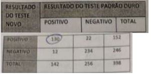
A 85,50%
B 91,50%
C 91,40%
D 95,10%
E 32,60%
Questão 492 · Política Nacional de Promoção de Saúde · Prevenção em Saúde · 4000188588Atenção Domiciliar, dentro do Sistema Único de Saúde, caracteriza-se por:
A atividade de alto custo, se comparada ao atendimento hospitalar e, por isso, não é recomendada.
B menor humanização da atenção à saúde, em relação aquela prestada nos serviços de saúde.
C um conjunto de ações, incluindo promoção à saúde e prevenção de doenças e eventos.
D ações exclusivas para tratamento de doenças e reabilitação prestadas em domicílio para garantia de continuidade.
E uma das ações que estão em descontinuidade, dada sua ineficácia já demonstrada em estudos epidemiológicos.
Questão 493 · Descentralização do SUS · Princípios e Diretrizes do Sistema Único de Saúde SUS · 4000188587Princípios e Diretrizes do SUS na Constituição Federal Um usuário participa do Conselho Municipal de Saúde, recebe vacinação na unidade de saúde no bairro onde reside e recebe ações de promoção, prevenção e recuperação da saúde. Este usuário é um ator na representação das seguintes diretrizes do Sistema Único de Saúde, respectivamente:
A participação da comunidade, atendimento integral e descentralização.
B descentralização, participação da comunidade e atendimento integral.
C participação da comunidade, descentralização e atendimento integral.
D descentralização, atendimento integral e participação da comunidade.
E atendimento integral, descentralização e participação da comunidade.
Questão 494 · Política Nacional de Promoção de Saúde · 4000188585Na Política Nacional de Promoção da Saúde, as responsabilidades de gestão são:
A das comissões Tripartite e Bipartite em esfera federal, e das Secretarias do Ministério da Saúde.
B de diversas secretarias e áreas do Ministério da Saúde, Conselhos Nacional de Secretários Estaduais e Municipais de Saúde e Associação Brasileira de Saúde Coletiva.
C dos diretores de hospitais e clínicas de atendimento ambulatorial, públicas e privadas.
D dos Conselhos Nacional, Estadual e Municipal de Saúde, além das Secretarias do Ministério da Saúde.
E centralizadas no Ministério da Saúde, através da atuação da Agência Nacional de Vigilância Epidemiológica e Secretaria de Vigilância Epidemiológica.
Questão 495 · Ferramentas de abordagem f amiliar · 4000188571Homem, 78 anos; eutró co; bom nível de consciência; boa capacidade de articulação das palavras; bom padrão cardiorrespiratório e hemodinâmico; reside com os seus familiares; ao receber uma visita de Agentes Comunitários de Saúde (ACS), ele se queixa de certa di culdade para conversar com os seus familiares em domicílio. Em face do exposto, assinale a alternativa correta:
A Os idosos costumam evoluir com depressão não diagnosticada; entendida, sobretudo pelos familiares, como uma necessidade natural de afastamento familiar e social para as suas reflexões.
B A equipe ACS deve encaminhar urgente o senhor a um neurologista clínico; trata-se de um AVEI em curso.
C A equipe de ACS deve encaminhar urgente o senhor a um otorrinolaringologista; nesta faixa etária os problemas auditivos são bastante prevalentes e muito interferem nas relações familiares.
D Para melhor entendimento da situação faz-se necessário que a equipe de ACS melhor investigue, observe as reais condições nas quais acontecem as relações familiares.
Revisar: possível letra faltando em enunciado
Questão 496 · Pacto pela Saúde · 4000188561Com relação aos Pactos do SUS, são eles?
A Pacto pela Vida; Pacto de Gestão; Pacto em Defesa do SUS;
B Pacto pela Universalidade; Pacto da Regionalidade; Pacto pela Equidade;
C Pacto Deliberativo; Pacto Consultivo; Pacto pela Equidade;
D Pacto Deliberativo; Pacto Jurídico; Pacto Financeiro;
Questão 497 · Letalidade · 4000188559Uma doença aguda com alta taxa de letalidade:
A Tem baixo coeficiente de prevalência.
B Tem baixo coeficiente de incidência.
C Influencia fortemente a taxa de mortalidade geral de uma população.
D É sempre infecciosa.
Questão 498 · Prevenção Primordial · 4000188558Assinale a alternativa referente à promoção da saúde no âmbito da Política Nacional para a Prevenção e Controle do Câncer.
A Fomento à ampliação de medidas restritivas ao marketing de alimentos e bebidas com alto teor de sal, calorias, gorduras e açúcar, especialmente os direcionados às crianças.
B Democratização do acesso a alimentos processados, com alto teor de fibras.
C Promoção de hábitos alimentares saudáveis, como o aleitamento materno exclusivo até 03 meses de vida.
D Promover atividades físicas de esforço e alongamento muscular.
Questão 499 · Cuidados paliativos · Cuidados em f ase terminal Resolução CFM n 18052006 · 4000188555Ao receber em primeira consulta um paciente portador de doença potencialmente ameaçadora da continuidade da vida, não raramente comentários e questionamentos dos pacientes e seus familiares ao médico costumam acontecer; um relacionado com a intenção, desejo imaginário dos familiares diretos visando "proteger" a pessoa doente de maior sofrimento psicológico e emocional (ansiedade; depressão); outra questão relacionada com uma questão existencial. Esses dois aspectos são conhecidos como:
A Omissão diagnóstica; Motivar a pessoa doente;
B Distração diagnóstica; Prática de atividades físicas;
C Conspiração do Silêncio; Terminalidade;
D Informação diagnóstica gradativa; Espiritualidade;
Questão 500 · Cuidados paliativos · 4000188554É considerado o mais destacado aspecto relacionado com a Anamnese em Cuidados Paliativos:
A Registrar a situação econômica da pessoa doente
B Registrar a estrutura familiar da pessoa doente
C Registrar o grau de escolaridade da pessoa doente
D Escuta atenta e empática do doente e seus familiares;
Questão 501 · Critérios para a implantação de um programa de rastreamento · 4000188468Para o rastreamento de uma doença existem critérios bem estabelecidos quanto ao exame e a doença. Sendo assim marque a alternativa correta quanto a esses critérios. Segundo a Diretrizes do Ministério da Saúde do Brasil esses critérios são utilizados no rastreamento do câncer de mama e colo de útero; I. A doença deve ser de evolução lenta, incidência ou prevalência elevada, em pacientes assintomáticos e existir tratamento para mesma. Em se tratando do rastreamento do câncer de mama a mamogra a deve ser iniciada aos 50 anos, com intervalos bienal e parar aos 69 anos de idade; II. O rastreamento da doença diminuiu a morbimortalidade em pacientes sintomáticos e de risco elevado. Em se Tratando do rastreamento do câncer de mama a mamogra a deve ser iniciada aos 50 anos, com intervalos bienal e parar aos 69 anos de idade; III. o exame de rastreamento deve ter sensibilidade elevado, baixo custo, não causar iatrogenia e ser aceito pela população a ser rastreada. Quanto ao rastreamento do câncer de colo o mesmo dever ser iniciado aos 25 anos em mulheres sexualmente ativa, intervalos de 2/2 ou 3/3 anos (após 2 exames consecutivos, com intervalos de um ano serem normais) e parar aos 64 anos; IV. O exame deve ter especi cidade e sensibilidade elevada, baixo custo e benefícios maior que seus riscos. Em relação ao rastreamento de câncer de colo o mesmo deve ser iniciado 3 anos após a primeira relação sexual, intervalos de 2/2 anos após 2 exames consecutivos, com intervalo de um ano serem normais. Parar aos 64 anos.
A As alternativas I, II e III estão corretas.
B Somente a I e III estão corretas.
C As alternativas II, III e IV estão corretas
D As alternativas III e IV estão corretas.
Questão 502 · Financiamento em Saúde · 4000188436O modelo de nanciamento do SUS proposto pelo Programa Previne Brasil, instituído em 2019, altera algumas formas de repasse dos recursos nanceiros para os municípios. São quatro critérios que norteiam essa distribuição de recurso, e três deles estão listados abaixo, com EXCEÇÃO de:
A Capitação ponderada
B Incentivo para ações estratégicas
C Localização da Unidade Básica de Saúde
D Pagamento por desempenho
Questão 503 · Program Saúde da Família PSF e Estratégia Saúde da Família ESF · 4000188430Sobre a Estratégia Saúde da Família, escolha a opção que contém somente informações verdadeiras.
A Cada ESF deve ser responsável por, no máximo, 5.000 pessoas, sendo a média recomendada de 3.000 pessoas, respeitando critérios de equidade para essa definição.
B O profissional médico que compõe uma equipe de ESF deve, obrigatoriamente, ser especialista em Medicina da Família e Comunidade.
C O agente comunitário de saúde deve, preferencialmente, ser um morador da área de sua atuação, propiciando contato direto entre a população e o restante da equipe.
D Na ESF, o trabalho é feito de forma individual pelos profissionais que a compõe, sendo o trabalho em equipe pouco relevante.
Questão 504 · Metanálises e Revisões sistemáticas · 4000188405No posto de saúde, um médico atende uma pessoa com 53 anos, em que a hipertensão não está controlada. Ele decide, então, aumentar a dose do diurético que ela já utilizava, cando, no entanto, com uma dúvida sobre se deveria ou não adicionar outro fármaco. Ele resolveu pesquisar sobre o assunto. Que tipo de delineamento ele deve preferencialmente revisar na literatura?
A Estudo de coorte
B Estudo transversal
C Estudo de caso e controle
D Estudo de metanálise a partir de ensaios clínicos randomizados.
Questão 505 · História Natural das Doenças · 4000188403A prevenção em saúde é uma ação antecipada, que se baseia no conhecimento da história natural, de forma a evitar um possível progresso posterior da doença. A promoção da saúde refere-se a medidas que não estão focadas na doença, mas que visam aumentar a "saúde e o bem-estar geral". LEAVELL, H.; CLARK, E. G. Medicina Preventiva São Paulo: McGraw-Hill do Brasil, 1976 (adaptado). Considerando os conceitos de prevenção e promoção da saúde apresentados no texto, assinale a alternativa CORRETA:
A O setor saúde é o único responsável pela qualidade de vida das populações.
B Promoção de saúde visa eliminar as doenças específicas que afetam a saúde dos indivíduos.
C Justiça social, meio ambiente, renda e educação são alguns aspectos relacionados a medidas de promoção de saúde.
D Ações de prevenção buscam articular-se a outros setores da sociedade e demais políticas do SUS, a fim de promover condições dignas de vida às populações.
Questão 506 · Prevenção Quaternária · 4000188401O conceito de prevenção quaternária foi criado pelo médico de família Marc Jamoulle, e em 2003 foi inserido no dicionário da Organização Mundial de Medicina de Família com a definição de "ação tomada para identi car um paciente sob risco de medicalização excessiva, para protege-lo de novas invasões médicas, e para sugerir intervenções eticamente aceitáveis". De acordo com o conceito de prevenção quaternária, qual das opções abaixo apresenta uma ação relacionada a esse nível de prevenção?
A Vacinação da população idosa.
B Desprescrição de medicamentos e exames desnecessários.
C Exames de rastreamento.
D Reabilitação pós-evento cardiovascular.
Questão 507 · Program Saúde da Família PSF e Estratégia Saúde da Família ESF · 4000188400Sobre o Núcleo de Apoio à Saúde da Família (NASF), marque a alternativa correta:
A É considerada uma das portas de entrada do usuário a Sistema de saúde.
B Deve atuar dentro de algumas diretrizes relativas à APS, como por exemplo: educação em saúde dos profissionais e da população.
C O Nasf é composto por diversas áreas estratégicas de atuação, não sendo um exemplo a área de nutrição, que tem um outro setor específico para o seu desenvolvimento e prática.
D A atuação do Nasf não deve acontecer em conjunto com a ESF.
Questão 508 · Ensaios clínicos · 4000188398Em um estudo clínico, quando o enfoque é o diagnóstico, o tipo do delineamento deve ser:
A Estudo descritivo observacional.
B Coorte.
C Caso controle.
D Ensaio clínico randomizado.
Questão 509 · Toxicologia ocupacional · 4000188397A saúde do trabalhador é o campo da saúde pública que tem como objetivo de estudo e intervenção as relações produção-consumo e o processo saúde-doença das pessoas e, em particular, dos trabalhadores. As assertivas abaixo apresentam exemplos de riscos mais frequentes nos ambientes de trabalho. Escolha a que apresenta a relação correta entre a categoria e um exemplo de risco.
A Risco físico - temperaturas extremas.
B Risco químico - radiações ionizantes.
C Risco mecânico - gases e vapores.
D Risco químico - ruído.
Questão 510 · Dermatoses Ocupacionais · 4000188395São consideradas dermatoses relacionadas ao trabalho, exceto:
A Ceratose actínica.
B Urticária solar.
C Psoríase.
D Dermatites alérgicas de contato.
Questão 511 · Princípios da Medicina de Família e Comunidade · 4000188392Uma atuação orientada pelos princípios fundamentais da especialidade é característica imprescindível ao Médico de Família e Comunidade (MFC). Diante dessa afirmativa, relacione as colunas: (1) O MFC é um clínico qualificado. (2) A atuação do MFC é influenciada pela comunidade. (3) O Médico de Família é um recurso de uma população definida. (4) A relação médico-paciente é fundamental para o papel do MFC. ( ) O MFC tem um entendimento e uma apreciação da condição humana, especialmente da natureza do sofrimento e da resposta do paciente à doença. ( ) O MFC demonstra competência no método clínico centrado no paciente, ele investiga a doença de uma maneira integrada, sensível e apropriada. ( ) O MFC vê sua população habitual como uma "população de risco" e organiza sua prática para assegurar que a saúde do paciente seja mantida, quer ele venha ou não visitá-lo no consultório. ( ) O MFC é capaz de responder às mudanças nas necessidades das pessoas, de adaptar-se rapidamente às mudanças na situação e de mobilizar os recursos apropriados às necessidades do paciente ou endereçá-los a quem compete. A seqüência numérica correta de preenchimento dos parênteses, na segunda coluna, de cima para baixo, é
A 1 -2- 3 - 4.
B 1 - 2 - 4 - 3.
C 2 - 3 - 4 - 1.
D 4 - 1 - 3 - 2.
Questão 512 · Relação MédicoPaciente · 4000188390A relação médico-paciente é fundamental para o desempenho do Médico de Família e Comunidade, sendo parte indispensável dessa relação a empatia, cujo termo é definido como capacidade de:
A Evitar mal-entendidos com o paciente.
B Compreender emoções e pensamentos do paciente.
C Desenvolver um clima com o paciente de franca simpatia.
D Decidir pelo paciente a melhor conduta.
Questão 513 · Pacto pela Saúde · 4000188389O pacto pela Saúde contempla o acordo rmado entre gestores do Sistema Único de Saúde (SUS) em suas dimensões. São elas:
A Pela defesa da vida, pela defesa do SUS e pela qualidade de vida.
B Pela qualidade de vida, pela integralidade de assistência e pela atenção primária.
C Pela vida, pela defesa do SUS e da gestão.
D De atenção primária, pela vida e de gestão.
Questão 514 · Método SOAP · 4000188388A abordagem familiar é um dos princípios propostos para a Atenção Primária à Saúde e remete ao conhecimento, pela equipe de saúde, dos membros de uma família e de seus problemas de saúde. São consideradas ferramentas utilizadas para abordagem familiar, exceto:
A Ciclo de vida familiar.
B Ecomapa.
C Genograma.
D SOAP.
Questão 515 · Estudos de CasoControle · 4000188387Assinale a alternativa CORRETA sobre os desenhos de estudos epidemiológicos.
A São exemplos de estudos analíticos observacionais: coorte, caso-controle e transversal.
B Estudos descritivos são os estudos mais apropriados para testar hipóteses de associação.
C São exemplos de estudos experimentais: coorte, descritivo e ensaio clínico.
D O estudo caso-controle é classificado como transversal.
Questão 516 · Critérios para a implantação de um programa de rastreamento · 4000188385Para a implantação de programas de rastreamento, o problema clínico a ser rastreado deve atender a alguns critérios que estão listados abaixo. Assinale a assertiva que traz informações verdadeiras acerca desses critérios.
A A história natural da doença/problema clínico deve ser pouco conhecida ou desconhecida.
B A doença em questão não deve representar um importante problema de saúde pública.
C Os exames que detectam a condição clínica no estágio assintomático devem estar/ser disponíveis, aceitáveis e confiáveis.
D O estágio pré-clínico - assintomático - da doença não precisa ser bem definido, desde que a doença possa ser diagnosticada posteriormente.
Questão 517 · Vigilância em Saúde · 4000188384É um conjunto de atividades que proporcionam conhecimento, detecção, análise e monitoramento de doenças decorrentes, inclusive, de fatores ambientais, com a nalidade de controlar e prevenir problemas na saúde humana. Esse conceito refere-se à:
A Vigilância em Saúde.
B Vigilância sanitária.
C Regulação de saúde.
D Saúde suplementar.
Questão 518 · Estudos de Coorte · 4000188383Qual o tipo de delineamento mais adequado para investigar a prevalência de tuberculose em núcleos rurais de um município?
A Estudo de coorte.
B Estudo transversal.
C Estudo randomizado em paralelo.
D Estudo cruzado.
Questão 519 · Princípios e Diretrizes do SUS na Lei n 80801990 · 4000188382Princípios e Diretrizes do SUS na Constituição Federal A regionalização e a hierarquização da rede de atenção dos serviços de saúde são norteadas pelos princípios de saúde do SUS. A isso denominamos:
A Descentralização político-administrativa.
B Igualdade de assistência ao usuário.
C Capacidade de resolução do sistema de saúde.
D Integralidade do sistema de saúde.
Questão 520 · Leis orgânicas da saúde · 4000188376Nas Disposições Gerais da Lei Orgânica da Saúde (LOS), a saúde é considerada um direito fundamental do ser humano, devendo o Estado prover as condições indispensáveis ao seu pleno exercício. Para isso, segundo a LOS, o dever do Estado de garantir a saúde consiste:
A No compartilhamento das intervenções de saúde das pessoas, da família, das empresas e da sociedade.
B Na formulação e execução de políticas econômicas e sociais que visem à redução de riscos de doenças e de outros agravos.
C Na elaboração e realização de políticas públicas de promoção da saúde direcionada às causas econômicas e sociais das doenças.
D No estabelecimento de condições que assegurem acesso integral e igualitário às ações e aos serviços de prevenção de doenças que configurem problemas de saúde pública.
Questão 521 · Princípios e Diretrizes do SUS na Constituição Federal · 4000188375O inciso II do art. 198 da Constituição Federal dispõe sobre o Sistema Único de Saúde, sendo a direção única, exercida no âmbito dos Estados pelo(a):
A Conferência Estadual de Saúde.
B Secretaria de Saúde ou órgão equivalente.
C Conselho Municipal de Saúde.
D Fundo Estadual de Saúde.
Questão 522 · Classif icação de Schilling · 4000188374Na classificação das doenças de acordo com sua relação com o trabalho, segundo Schilling, são exemplos do Grupo II - Trabalho com fator contributivo, mas não necessários:
A Doenças osteomusculares, varizes de membros inferiores, alguns cânceres.
B Intoxicação por chumbo, varizes de membros inferiores, alguns cânceres.
C Doenças osteomusculares, intoxicação por chumbo, alguns cânceres.
D Doenças osteomusculares, varizes de membros inferiores, alguns cânceres.
Questão 523 · Acidente de trabalho · Nexo ocupacional · 4000188373No Brasil, tradicionalmente, a tarefa de estabelecer uma relação entre a doença que o trabalhador apresenta e seu trabalho tem sido atribuída, no âmbito previdenciário, aos:
A Clínicos gerais.
B Peritos médicos.
C Médicos do trabalho.
D Médicos das seguradoras.
Questão 524 · Doenças relacionadas ao asbesto Asbestose · 4000188372A proposta de banimento do amianto, em processos produtivos existentes, tem sido justi cada por ser o amianto conhecido fator de risco para:
A Vários tipos de câncer e asbestose.
B Mesotelioma e silicose.
C Câncer de pulmão e asbestos.
D Siderose e silicose.
Questão 525 · Vigilância Ambiental · 4000188370Para o Ministério do Trabalho, Emprego do Brasil, são exemplos de agentes ergonômicos para riscos ambientais:
A Ruídos, vibração e pressão anormais.
B Trabalho noturno, ritmo excessivo e arranjo físico.
C Treinamento inadequado / inexistente, trabalho em turnos noturnos e ritmo excessivo.
D Treinamento inadequado, armazenamento inadequado, e atenção e responsabilidade.
Questão 526 · Política Nacional de Saúde do Trabalhador e da Trabalhadora PNSTT · 4000188369Bases legais de Saúde do Trabalhador No "Mapa de risco" de um hospital, as áreas identi cadas com risco ambiental por agentes químicos são representadas por um círculo:
A Vermelho.
B Laranja.
C Azul.
D Verde.
Questão 527 · Bases legais de Saúde do Trabalhador · 4000188368No Brasil, um hospital que possua de 1001 a 2000 empregados deve contar com:
A Um médico do trabalho em tempo parcial.
B Um médico do trabalho em tempo integral.
C Dois médicos do trabalho em tempo parcial.
D Dois médicos do trabalho em tempo integral.
Questão 528 · Normas Regulamentadoras · 4000188367São serviços de saúde classificados pelo Ministério do Trabalho (NR-4) com grau de risco 2 os serviços:
A Veterinários.
B De fisioterapia e reabilitação.
C Médico-hospitalares.
D De laboratório.
Questão 529 · Mortalidade Geral · 4000188348As três principais causas de morte por câncer nos homens, excluindo os cânceres de pele basocelular e carcinoma in sito, são:
A Próstata, bexiga e leucemias.
B Pulmão e brônquios, colorretal e leucemias.
C Colorretal, leucemias e pâncreas.
D Próstata, pulmão e brônquios e colorretal.
E Pulmão e brônquios, melanoma e colorretal.
Questão 530 · Cuidados paliativos · 4000188338Sobre cuidados paliativos em pacientes críticos, assinale a alternativa correta:
A Cuidados paliativos se restrigem aos cuidados de fim de vida.
B As principais metas básicas dos cuidados paliativos são promover alívio de dor e outros sintomas refratários, não acelerar nem adiar o processo de morte e integrar os aspectos psicológicos e espirituais no cuidado com o paciente.
C A documentação oficializando a vontade do paciente, num momento de estabilidade clínica, é a única forma de se iniciar os cuidados paliativos em nosso país.
D Quando assumimos que vão iniciar os cuidados de fins de vida, mantemos apenas a sedação e analgesia, devendo prontamente procurar suspender os antibióticos e dieta.
E Não tem nada a fazer pelo paciente nem pela enfermidade.
Questão 531 · Estratégia de observação longitudinal x transversal · 4000188292Abaixo estão listadas características de determinados estudos epidemiológicos, exceto:
A Coorte: parte do fator de risco
B Transversal: Não determina causalidade
C Coorte: busca da doença
D Transversal: determina causalidade
E Caso-controle: parte da doença
Questão 532 · Erros Sistemáticos ViésVieses · 4000188290Marque a correlação errada entre tipo de estudo e viés:
A Estudo de coorte: viés de suscetibilidade.
B Estudo caso controle: viés de memória e do entrevistador.
C Ensaios clínicos: viés de amostragem.
D Estudos de prognósticos: viés de memoria.
E Estudos de rastreio: viés de aderência.
Questão 533 · valor p e intervalo de conf iança · 4000188287O que é intervalo de confiança?
A É uma forma de quantificar a incerteza ou a precisão do resultado de um estudo, principalmente do risco relativo apresentado por um valor denominado estimativa de ponto.
B É uma forma de qualificar as evidencias dos estudos e assim o médico pode tomar as melhores decisões para o paciente.
C É uma forma de dizer se o estudo não é replicável à populações exclusivas e assim nossos estudos devem ser realizados.
D É uma forma de dizer que a sensibilidade do teste realizado é baixa é por isso o resultado é um falso negativo.
E Todas as respostas estão erradas.
Questão 534 · Pandemias · 4000188279Em 2019, o mundo se deparou com um novo vírus que se espalhou a partir da região de Wuhan, na China. A Organização Mundial da Saúde classi cou a situação como emergência internacional e, em 11 de março de 2020, o vírus passou a ser considerado uma doença pandêmica. Ele pertence à família dos coronavírus, um grupo que reúne desde agentes infecciosos que provocam sintomas de resfriado até outros com manifestações mais graves, como os causadores da SARS (sigla em inglês para Síndrome Respiratória Aguda Grave) e da MERS (Síndrome Respiratória do Oriente Médio). Todos os países, a partir de então, caram em estado de alerta, preparando-se de diferentes formas para o enfrentamento da pandemia. A confirmação, no dia 26 de fevereiro de 2020, do primeiro caso no Brasil de COVID-19 deixou a população brasileira ciente de que a epidemia também estava entre nós. Sobre classificação das doenças e sua disseminação, assinale opção correta:
A O surto é caracterizado como a redução súbita do número de casos de determinada doença.
B Quando uma doença atinge uma grande área geográfica, a classificação passa a ser epidemia. O mesmo termo é utilizado quando há contaminação em pontos geográficos diferentes, mas que se encontram dentro de um mesmo território.
C Uma pandemia é decretada quando a epidemia passa a ser encontrada apenas em dois países de um continente, mas sem transmissão comunitária. Não afeta continentes distantes.
D A endemia, dentro da área da saúde, leva em consideração a quantidade de pessoas que possuem certa doença, mas não a frequência com que ela ocorre naquele local específico.
E Nenhuma alternativa está correta.
Revisar: possível letra faltando em enunciado
Questão 535 · Princípios e Diretrizes do SUS na Constituição Federal · 4000188240O sistema de referência e contrarreferência constitui-se na articulação entre os níveis de atenção em saúde. A contrarreferência compreende:
A Trânsito do nível de menor para o de maior complexidade.
B Trânsito do nível de maior para o de menor complexidade.
C Reflete o modelo assistencial centrado na doença.
D Perda do vínculo com a unidade de origem.
E Encaminhamento do paciente para unidades especializadas.
Questão 536 · Princípios e Diretrizes do SUS na Lei n 80801990 · 4000188239Princípios e Diretrizes do SUS na Constituição Federal O Sistema Único de Saúde (SUS) segue a mesma doutrina e os mesmos princípios em todo o território nacional, sob a responsabilidade das três esferas autônomas de governo federal, estadual e municipal. Desta forma, o SUS é um conjunto de unidades, serviços e ações que interagem para um m comum, baseado em três princípios doutrinários. Assinale a alternativa que correlaciona adequadamente um destes princípios com a respectiva definição:
A Universalidade: É a garantia de atenção à saúde por parte do sistema, onde os usuários podem ir diretamente a todos os níveis deste referido sistema.
B Equidade: É assegurar ações e serviços de todos os níveis de acordo com a complexidade que cada caso requeira, sem privilégios e sem barreiras.
C Integralidade: O indivíduo tem direito de acesso a todos os serviços públicos de saúde, assim como àqueles contratados pelo poder público.
D Igualdade: Todo cidadão é igual perante o SUS e será atendido até o limite do que o sistema puder oferecer para todos.
E Resolubilidade: redistribuição das responsabilidades quanto às ações e serviços de saúde entre os vários níveis de governo.
Questão 537 · Incidência acumulada x Densidade de Incidência · 4000188232Os trabalhadores da indústria siderúrgica estão expostos a diversos riscos relacionados à atividade pro ssional ou exposição ao ambiente laboral. A exposição prolongada sem proteção, por falta ou ine ciência do Equipamento de Proteção Coletiva ou Individual, pode desencadear acidentes do trabalho (AT) e/ou doenças ocupacionais (DO). Entre os indicadores utilizados para medir os riscos no trabalho, tem-se a incidência acumulada, cujo denominador é definido pelo:
A número de trabalhadores.
B número de horas/homem trabalhada.
C número de óbitos devido a acidentes de trabalho.
D número total de acidentes de trabalho.
E número de dias de trabalho perdidos por acidentes de trabalho.
Questão 538 · Mortalidade Inf antil e Perinatal · 4000188231Sabe-se que as taxas de mortalidade infantil re etem condições de saúde e de vida precárias, sendo considerado um dos indicadores mais sensíveis à situação de saúde e condição social. A mortalidade infantil pode ser subdividida em neonatal (precoce e tardia) e pós-neonatal. Sobre estas taxas podemos afirmar:
A A cobertura e qualidade de assistência pré-natal e perinatal têm importância, principalmente, na taxa de mortalidade pós-neonatal.
B Os agentes infecciosos e fatores nutricionais têm grande impacto na taxa de mortalidade neonatal tardia.
C Em regiões mais desenvolvidas, entre as causas de mortalidade neonatal destacam-se anomalias congênitas enquanto naquelas menos desenvolvidas, condições preveníveis pela assistência adequada à gestação e parto ganham destaque.
D De modo geral, em cenários com condições mais precárias, conforme a taxa de mortalidade infantil diminui, os óbitos neonatais tendem a diminuir mais rapidamente que os óbitos pós-neonatais.
E O denominador da taxa de mortalidade infantil é o número de partos realizados no respectivo período.
Questão 539 · Política Nacional de Atenção Básica PNAB · 4000188226De acordo com a política Nacional de Atenção Básica (PNAB), são atribuições ESPECÍFICAS do médico que trabalha nas equipes de atenção básica:
A Encaminhar, quando necessário, usuários a outros pontos de atenção, respeitando fluxos locais, se eximindo de responsabilidade pelo acompanhamento deles.
B Garantir a atenção à saúde buscando a integralidade por meio da realização de ações de promoção, proteção, recuperação da saúde e prevenção de agravos.
C Cadastrar todas as pessoas de sua microárea e manter os cadastros atualizados.
D Realizar o cuidado da saúde da população adscrita, prioritariamente no domicílio e nos demais espaços comunitários (escolas, associações, entre outros).
E Encaminhar às unidades de referência, pacientes com indicação de pequenos procedimentos como cantoplastia, retirada de cistos e lipomas ou retirada de corpo estranho.
Questão 540 · Prevenção Terciária · Prevenção primária · Prevenção Secundária · 4000188225Cabe ao SUS as atividades de promoção, proteção e recuperação da saúde. Sabe-se que a promoção de saúde pode ser classificada em primária, secundária e terciária. Assinale a alternativa que contém a categoria corresponde aos exemplos citados:
A Prevenção primária: Programas para cessação do tabagismo a fim de prevenir inúmeras doenças crônicas não transmissíveis.
B Prevenção secundária: Administração de ácido fólico durante a gestação para prevenção de defeitos do tubo neural.
C Prevenção terciária: Realização periódica de exame Papanicolau para prevenção do câncer de colo uterino.
D Prevenção primária: Educação para exame rotineiro dos pés em pacientes com neuropatia diabética.
E Prevenção secundária: uso de máscaras para prevenção de COVID-19.
Questão 541 · Declaração de óbito DO Atestado de óbito · 4000188222Sobre o preenchimento ADEQUADO de atestado de óbito, é correto afirmar:
A Em caso óbito por causa externa, o preenchimento do documento deverá ser realizado por duas testemunhas, em cartório.
B Para fins de estatísticas oficiais de mortalidade no país, a causa direta da morte é utilizada.
C A causa básica de óbito mais frequente, no Brasil, é a parada cardíaca, seguida por parada respiratória e falência múltipla de órgãos.
D É vedado ao médico deixar de atestar óbito de paciente a quem vinha prestando assistência, salvo se houver indício de morte violenta.
E Ao médico cabe apenas o preenchimento das condições e causa do óbito, deixando para outros funcionários o preenchimento dos campos de identificação.
Questão 542 · Estudos de CasoControle · 4000188221Sobre desenhos de pesquisa epidemiológica, é correto afirmar:
A Estudos ecológicos apresentam elevado poder analítico.
B Estudos de caso-controle são úteis para desfechos com longos períodos de latência.
C Estudos seccionais são adequados para testarem hipóteses causais.
D Estudos de coorte são úteis para investigar doenças de baixa frequência.
E No ensaio clínico randomizado a definição dos grupos experimental e de controle se dá por conveniência.
Questão 543 · Política Nacional de Atenção Básica PNAB · 4000188220Os Núcleos de Apoio à Saúde da Família (NASF) foram criados com o objetivo de ampliar a abrangência e o escopo das ações da atenção básica, bem como sua resolubilidade. Sobre estes, podemos afirmar, EXCETO:
A Os NASF fazem parte da atenção básica, se constituindo como serviços com unidades físicas independentes, de livre acesso para atendimento individual ou coletivo.
B São constituídos por equipes compostas por profissionais de diferentes áreas de conhecimento, que devem atuar de maneira integrada e apoiando os profissionais das equipes de Saúde da Família.
C Os NASF devem buscar contribuir para a integralidade do cuidado aos usuários do SUS principalmente por intermédio da ampliação da clínica, auxiliando no aumento da capacidade de análise e de intervenção sobre problemas e necessidades de saúde, tanto em termos clínicos quanto sanitários.
D São exemplos de ações dos NASF: discussão de casos, atendimento conjunto ou não, interconsulta, construção conjunta de projetos terapêuticos, educação permanente, ações de prevenção e promoção da saúde.
E A responsabilização compartilhada entre a equipe do NASF e as equipes de atenção básica prevê a revisão da prática do encaminhamento com base nos processos de referência e contrarreferência.
Questão 544 · Odds Ratio ou Razão de Chances · 4000188219Você está acompanhando uma mulher de 62 anos com úlcera péptica e angina estável, para qual havia sido prescrito ácido acetilsalicílico (AAS) em dose baixa, estatina, inibidor da enzima conversora de angiotensina e nitrato, quando necessário. Recentemente, esta paciente apresentou sangramento alto do trato gastrointestinal. A biópsia realizada por endoscopia digestiva alta foi negativa para Helicobacter pylori. Durante a internação, o gastroenterologista substituiu o AAS por clopidogrel, e fez contato com você, citando uma metanálise de ensaios clínicos randomizados que encontrou menor chance de sangramento gastrointestinal com uso do último comparado ao primeiro (razão de chances 0,71; intervalo de con ança 95% 0,59 - 0,86). Com base nestes achados, podem afirmar:
A O clopidogrel reduziu em 71% a chance de sangramento gastrointestinal.
B A redução do risco de sangramento não foi estatisticamente significativa.
C Pacientes em uso de clopidogrel comparados aqueles em uso de AAS apresentam redução da chance de sangramento gastrointestinal de 29%.
D O risco de sangramento gastrointestinal em uso do ácido acetilsalicílico é de 29%.
E A redução do risco de sangramento não foi clinicamente significativa, uma vez que o intervalo de confiança não inclui o número 1.
Questão 545 · Ensaios clínicos · 4000188218A Medicina Baseada em Evidências preconiza que a prática clínica deve ser fundamentada nas melhores evidências cientí cas disponíveis. Assinale a alternativa que relaciona adequadamente o tipo de pergunta com o desenho de estudo mais adequado para respondê-la:
A Risco: estudo seccional
B Tratamento: estudo de caso controle
C Prevenção: ensaio clínico randomizado
D Prevalência: estudo de coorte
E Incidência: estudo transversal
Revisar: possível letra faltando em enunciado
Questão 546 · Princípios e Diretrizes do SUS na Constituição Federal · 4000188217Sílvia é professora da rede municipal de ensino e procurou um Hospital Estadual porque pretendia consultar- se comum médico otorrinolaringologista, uma vez que se encontrava disfônica. Ela não foi atendida no hospital, apesar de haver um setor de otorrinolaringologia. Considerando os princípios e diretrizes do SUS, assinale a alternativa que melhor justifica o ocorrido:
A Como a professora é servidora municipal deveria ter procurado um hospital municipal ao invés de estadual, respeitando o princípio de regionalização.
B A professora deve procurar a sua Unidade Básica de Saúde para que o médico dessa unidade a avalie e faça o encaminhamento a um otorrinolaringologista, se necessário,respeitando a hierarquização das ações.
C O setor de otorrinolaringologia de um hospital estadual só pode atender casos de alta complexidade, o que não se aplica à professora, segundo o princípio de integralidade.
D A professora deve procurar um Centro de Referência em Saúde do Trabalhador (CRST), a fim de realizar seu exame periódico, respeitando o princípio da descentralização.
E A professora deveria solicitar uma consulta domiciliar à equipe multiprofissional, garantida pelos princípios da integralidade e territorialidade.
Questão 547 · Princípios da Medicina de Família e Comunidade · 4000188197A Medicina de Família e Comunidade é uma disciplina acadêmica e cientí ca, com os seus próprios conteúdos educacionais, relacionados à pesquisa, base de evidências e atividade clínica. É uma especialidade clínica orientada para os cuidados primários. A especialidade Medicina de Família e Comunidade caracteriza- se por:
A Gerir simultaneamente os problemas, tanto agudos como crônicos, dos indivíduos.
B Possuir um processo de tomada de decisão independente da prevalência e incidência de doença na comunidade.
C Ter um processo de consulta singular, em que se estabelece uma relação temporalmente pontual, através de uma comunicação médico-paciente efetiva.
D Gerir com prontidão doenças que se apresentem de forma indiferenciada, pois representam doenças numa fase precoce da sua história natural, e que necessitam de intervenção urgente.
Revisar: possível letra faltando em enunciado
Questão 548 · Polif armácia · 4000188192Quedas representam um dos problemas de saúde mais frequentes na população idosa, trazendo consequências físicas, psicológicas e sociais. Em relação a quedas na população idosa, é CORRETO AFIRMAR que:
A O uso de 4 ou mais tipos de medicação por dia (polifarmácia) representa um fator de risco independente para quedas em idosos não hospitalizados.
B As alterações cognitivas, o equilíbrio, a diminuição da força muscular e os fatores ambientais fazem parte dos fatores intrínsecos relacionados a quedas.
C Obstáculos ambientais, como tapetes e corrimões, são sérias ameaças à mobilidade dos idosos.
D A maioria das quedas acidentais ocorre fora de casa, durante atividades incomuns ao cotidiano do idoso.
Questão 549 · Princípios e Diretrizes do SUS na Constituição Federal · 4000188182Sobre o sistema de saúde no Brasil, assinale a alternativa INCORRETA.
A A universalidade é a garantia de que todos os cidadãos devem ter acesso aos serviços de saúde públicos e privados conveniados, em todos os níveis do sistema de saúde.
B O controle social é uma diretriz que cabe exclusivamente à comunidade e aos movimentos sociais.
C Apesar da integralidade ser uma das diretrizes do SUS, a prática de muitos dos profissionais que atuam na estratégia de saúde da família ainda têm o enfoque do atendimento centrado na doença.
D Os cidadãos que buscam atendimento são parte integrante das ações de saúde, às quais têm direito constitucional e humanizado.
Questão 550 · Atestado médico Resolução CFM n 16582002 · Princípios f undamentais · 4000188180O Sr. José Vieira leva sua lha Hellen, de 7 anos, que está doente, ao posto de saúde. Durante a consulta de Hellen, ele solicita um atestado médico para ele, para justi car sua ausência no trabalho. Qual a conduta diante dessa situação?
A Como o Sr. José não se encontra doente, você se recusa a conceder o atestado para que ele justifique sua ausência no trabalho.
B Você concede ao Sr. José um atestado médico para acompanhamento de familiar doente, justificando, assim, a ausência do Sr. José no trabalho.
C Após consultar Hellen, você concede uma declaração de comparecimento ao Sr. José e um atestado médico por doença para Hellen.
D Como é a filha que se encontra doente, você concede um atestado ao Sr. José, contendo como justificativa a doença apresentada por Hellen.
Questão 551 · Prevenção Quaternária · 4000188177Com o diagnóstico de síndrome metabólica e osteoporose há 5 anos, Dona Joana, 77 anos, faz uso de captopril, hidroclorotiazida, sinvastatina, glibenclamida, metformina, cálcio de ostra em associação com vitamina D e risedronato. Seu Médico de Família e Comunidade resolve seguir os preceitos da prevenção quaternária e controlar a polifarmácia. Para isso, deve:
A Suspender o risedronato, pois o efeito exercido nos ossos se mantém por um período longo após a suspensão.
B Suspender a hidroclorotiazida que é contraindicada em indivíduos diabéticos e dislipidêmicos por aumentar a glicemia e colesterol total.
C Suspender a sinvastatina, pois não há evidência de seu uso para prevenção primária e secundária de pessoas diabéticas.
D Suspender a metformina pelo potencial de causar hipoglicemia grave em idosos.
Questão 552 · Método SOAP · 4000188175O Sr. João, de 72 anos, foi a consulta na Unidade Saúde da Família Terra Firme, tendo como motivo principal a necessidade de realizar exames de rotina. Após realizar o SOAP, seu Médico de Família e Comunidade detecta o antecedente de angina instável e brilação atrial crônica sem tratamento e a presença de ritmo cardíaco irregular no exame físico. Ao nal da consulta, pergunta se tem algo mais que o Sr. João gostaria de relatar. A partir disto, ele diz ao médico que está “impotente” ( cou ansioso e perdeu a ereção e a partir disto o quadro se repete. Ereção matinal presente). Marque a alternativa com a melhor conduta para o Sr. João.
A A conduta seria a prescrição de dinitrato de isossorbida e ácido acetilsalicílico contínuos, e sildenafila quando necessário.
B A conduta seria a prescrição de ioimbina por 30 dias, associada ao ácido acetilsalicílico e ao propatilnitrato contínuos.
C A conduta seria encaminhar o Sr. João ao urologista para avaliação.
D A conduta seria investigar o quadro de angina instável e arritmia e fazer a abordagem comportamental da disfunção erétil.
Questão 553 · Atenção Primária à Saúde APS no Brasil · 4000188160Qual dos achados em um adulto, mais comumente requer manejo imediato na avaliação primária?
A Frequência respiratória de 40 mpm
B ECG de 11
C Temperatura de 36,5ºC
D Deformidade na coxa direita
Questão 554 · Legislação sobre aborto · 4000188158Sobre o aborto legal em caso mulheres vítimas de violência sexual, é CORRETO afirmar que:
A É indispensável a apresentação do boletim de ocorrência policial da violência sofrida.
B Em adolescente abaixo de 18 anos é imprescindível a presença do responsável legal, caso haja necessidade de procedimento invasivo para interrupção da gestação.
C A equipe que realiza o atendimento deve obrigatoriamente solicitar autorização judicial para o procedimento de interrupção da gestação.
D O médico assistente é obrigado a notificar o conselho tutelar caso a paciente seja menor de 18 anos.
E Nenhuma das respostas anteriores.
Questão 555 · Cuidados paliativos · 4000188046Em relação a abordagem de pacientes em cuidados paliativos, marque a afirmativa INCORRETA.
A Na abordagem paciente em cuidados paliativos é preciso focar em quatro domínios: 1) sintomas físicos, 2) sintomas psicológicos, 3) necessidades sociais, 4) Necessidades espirituais ou existenciais.
B A dor é uma experiencia subjetiva e dependendo das circunstâncias, perspectivas e estado fisiológico do paciente, o mesmo tipo de doença ou lesão produz níveis diferentes de dor relatada e necessidade de analgesia. Seu manejo farmacológico deve seguir a abordagem em três etapas da Organização Mundial de saúde envolvendo analgésicos não opioides, opioides fracos, opioides fortes, com ou sem adjuvantes.
C A dispneia tem uma frequência variável entre as causas de morte. Está entre os sintomas físicos mais aflitivos em paciente em cuidados paliativos de final de vida, sendo importante a mensuração da saturação com oxímetro de pulso e frequência respiratória para orientação de condutas e tratamento do sintoma de forma adequada.
D No tratamento da dor continua com opioides estes devem ser administrados de forma regular e ininterrupta. O paciente deve ter acesso a um medicamento de resgate para dor emergente, o uso da dose de resgate não altera a necessidade, horário ou posologia da próxima dose regular de analgésico programada.
E A constipação intestinal é frequente e está relacionada a imobilidade, baixa ingesta, alguns distúrbios eletrolíticos, mas principalmente ao uso de opioides e alguns adjuvantes com antidepressivos tricíclicos. Sendo indicada a instituição de um tratamento preventivo da constipação sempre que se prescreva estes medicamentos.
Questão 556 · Pneumoconioses · 4000188045“As pneumopatias relacionadas etiologicamente à inalação de poeiras em ambientes de trabalho são genericamente designadas como pneumoconioses”. Dentre as pneumoconioses, podemos citar, EXCETO:
A Silicose, Talcose, pneumoconiose do trabalhador do carvão.
B Asbestose, Siderose, estanose
C Silicose, Asbestose, enostose
D Baritose, silicatose, talcose
E Silicose, asbestose, baritose
Questão 557 · Lei n 80801990 · 4000188043De acordo com a Lei 8080 de 19 de setembro de 1990, podemos a rmar que são princípios do SUS, EXCETO:
A Descentralização político-administrativa, com direção variável, a depender da esfera de governo.
B Utilização da epidemiologia para o estabelecimento de prioridades, a alocação de recursos e a orientação programática.
C Direito à informação, às pessoas assistidas, sobre sua saúde.
D Preservação da autonomia das pessoas na defesa de sua integridade física e moral.
E Universalidade de acesso aos serviços de saúde em todos os níveis de assistência.
Questão 558 · Cuidados em f ase terminal Resolução CFM n 18052006 · 4000188042O trecho: “É permitido ao médico limitar ou suspender procedimentos e tratamentos que prolonguem a vida do doente em fase terminal, de enfermidade grave e incurável, respeitada a vontade da pessoa ou de seu representante legal." Diz respeito a:
A RESOLUÇÃO CFM Nº 1.805, DE 9 DE NOVEMBRO DE 2006.
B LEI Nº 8080, DE 19 DE SETEMBRO DE 1990.
C RESOLUÇÃO CFM Nº 1.805, DE 9 DE NOVEMBRO DE 2016.
D RESOLUÇÃO CFM Nº 1.668, DE 9 DE NOVEMBRO DE 2003.
E RESOLUÇÃO CFM Nº 1.668, DE 9 DE NOVEMBRO DE 2006.
Questão 559 · Estudos de Coorte · 4000188037Em relação ao estudo coorte, podemos afirmar que se trata de:
A Estudo observacional, onde os indivíduos são monitorados ao longo do tempo para avaliar a incidência de doença ou de outro desfecho de interesse.
B Estudo que se inicia com a seleção de um grupo de pessoas portadoras de uma doença ou condição específica e um grupo de pessoas que não sofrem dessa doença ou condição.
C Estudo em que o pesquisador provoca uma modificação intencional em algum aspecto do estado de saúde, através da introdução de um esquema profilático ou terapêutico.
D Estudo que se caracteriza pela observação direta de determinada quantidade de indivíduos em uma única oportunidade.
E Estudo observacional, obrigatoriamente prospectivo, onde o tempo de início e fim do estudo são definidos pelo pesquisador.
Questão 560 · Letalidade · 4000188036Em uma determinada comunidade, a letalidade da dengue foi de 10% no ano de 2020. Durante esse ano ocorreram 50 óbitos pela doença. Qual o número de casos de dengue nesta comunidade?
A 5.000 casos
B 500 casos
C 250 casos
D 2.500 casos
E 1.000 casos
Questão 561 · Endemias · 4000188035‘’As alterações inusitadas nas incidências das doenças, diferente do que seria esperado, con guram-se no que se denominou de variações irregulares. Através de técnicas estatísticas é possível conhecer se a evolução temporal da incidência de uma determinada doença está dentro do que seria esperado com bases em dados históricos’’. Marque a opção INCORRETA:
A Epidemia: elevação brusca, temporária e significativamente acima do esperado da incidência de uma determinada doença.
B Endemia: presença usual de uma doença, acima dos limites esperados, em uma determinada área geográfica, por um período de tempo limitado.
C Surto: é uma ocorrência epidêmica, onde todos os casos estão relacionados entre si, atingindo uma área geográfica pequena e delimitada.
D Caso autóctone: é o caso oriundo do mesmo lugar que ocorreu.
E Caso alóctone: é o caso importado de uma outra localidade.
Questão 562 · Sistema de Inf ormação de Agravos de Notif icação SINAN · 4000188034No Brasil, o sistema nacional de vigilância epidemiológica tem organizado suas ações, desde 1969, através do registro sistemático das chamadas doenças de noti cação compulsória. Por compulsória entende-se a obrigatoriedade da noti cação, visando a cobertura universal dos agravos selecionados. Dentre as doenças de noti cação imediata, segundo a portaria nº5, de 21 de fevereiro de 2006, da secretaria de vigilância em saúde do ministério da saúde, podemos citar:
A Botulismo, cólera, dengue
B Febre amarela, poliomielite, sífilis congênita
C Raiva humana, peste e varíola
D Tularemia, meningite, doença de chagas
E Esquistossomose, tuberculose, malária
Questão 563 · Estudos de CasoControle · 4000188033Em um hospital público do Rio de Janeiro, 300 pessoas com diagnóstico de HIV e 300 pessoas sem HIV foram selecionadas para estudo. O objetivo era verificar a existência de diferença na ocorrência ou não de linfoma não Hodgkin em relação a um dado fator de risco. Esse estudo é denominado:
A Coorte
B Ecológico
C De prevalência
D Experimental
E De caso-controle
Questão 564 · Letalidade · 4000188030Um indicador que relaciona o número de óbitos por determinada doença e o número de pessoas que foram acometidas por tal doença diz respeito à:
A incidência.
B mortalidade.
C prevalência.
D letalidade.
E morbidade
Questão 565 · caso autóctone · 4000188029No início de 2018, o estado de Roraima (RO) viveu um surto de sarampo a partir de casos importados da Venezuela. Em 2019, foram mais de 19 mil casos noti cados em vários estados brasileiros. Com base nessas informações, é correto AFIRMAR que:
A todos os casos registrados em 2019 são classificados como alóctones.
B os casos importados da Venezuela são denominados autóctones.
C o surto que ocorreu em Roraima em 2018 se deu a partir de casos alóctones.
D os casos ocorridos em 2018 e 2019 são classificados como autóctones.
E os casos ocorridos em Roraima são considerados autóctones e os demais são considerados alóctones.
Questão 566 · Mortalidade Inf antil e Perinatal · 4000188028Para denominador do indicador de mortalidade infantil utilizamos:
A Número de óbitos de menores de 30 dias.
B Número de óbitos de menores de 1 ano.
C Número de mulheres em idade fértil.
D Nascidos vivos de mães residentes.
E Número de abortos.
Questão 567 · Incidência e Prevalência · 4000188027Epidemiologia é o estudo da distribuição e dos determinantes das doenças ou condições relacionadas à saúde em populações especi cadas, e a aplicação desses estudos para controlar problemas de saúde. Um dos conceitos importantes em epidemiologia é Incidência que significa:
A A presença contínua de uma enfermidade ou de um agente infeccioso dentro de uma determinada área geográfica.
B Medida que reflete ou indica o estado de saúde das pessoas em uma população definida.
C O número de casos novos de uma doença, ocorridos em uma população particular durante um período específico de tempo.
D O número de casos ou de portadores existentes em uma dada população, identificados em um determinado ponto no tempo.
E Qualquer ocorrência de uma doença ou mesmo qualquer mudança dos fatores ligados ao agente, hospedeiro e meio que alteram a estrutura epidemiológica da doença.
Questão 568 · Sistema de Inf ormação de Agravos de Notif icação SINAN · 4000188026O Sistema de Informação de Agravos de Notificação (Sinan) foi desenvolvido entre 1990 e 1993, sendo hoje o mais importante para a Vigilância Epidemiológica. A respeito do Sinan, marque a alternativa CORRETA:
A É alimentado, exclusivamente, pela notificação e investigação de casos de doenças e agravos que constam da lista nacional de doenças de notificação compulsória.
B A Notificação negativa é a notificação atrasada, pelo Sinan, da ocorrência de doenças de notificação compulsória, na área de abrangência da unidade de saúde.
C A entrada de dados, no Sinan, é feita mediante de maneira manual, sem uso de formulários padronizados.
D O Sinan tem como objetivo coletar, transmitir e disseminar dados gerados rotineiramente pelo Sistema de Vigilância Epidemiológica das três esferas de governo, por intermédio de uma rede informatizada.
E Exclui o profissional médico da obrigação de notificar agravos.
Questão 569 · Relação MédicoPaciente · 4000188025Em uma consulta agendada no centro de saúde, Fábio, 27 anos, homem, cisheterossexual, vem pedindo para fazer exames de rotina. Está assintomático e nega doenças crônicas. Após você verificar e explicar que o exame de rastreamento indicado para ele seriam sorologias para infecções sexualmente transmissíveis, você realiza os testes rápidos para hepatite B, hepatite C, sí lis e HIV. Ao avaliar os resultados, o exame de HIV está positivo e os demais testes negativos. Você comunica o resultado positivo do primeiro teste rápido de HIV e informa que é necessário realizar um segundo teste rápido de outra metodologia para confirmar o diagnóstico. A partir deste momento, o paciente descon a do resultado, fala que está em um relacionamento estável e diz ser impossível que tenha HIV. Durante toda a consulta, permanece desatento e impaciente, dizendo diversas vezes que está com pressa e que precisa ir embora. Considerando que você ainda não realizou a coleta do segundo teste rápido confirmatório de HIV, a melhor conduta seria:
A Informar o paciente sobre o diagnóstico, formas de transmissão e as complicações do HIV para mostrar os benefícios de iniciar a terapia antirretroviral o quanto antes. Reforçar a importância deste momento para a sua saúde, relembrando ao paciente que veio à consulta pedir exames de rotina.
B Ao perceber a desatenção do paciente, reforçar a importância de fazer o teste confirmatório de HIV, entender sobre a doença e o tratamento, e o quanto antes comunicar a sua parceira sexual para realizar a testagem. Solicitar os exames laboratoriais indicados diante do diagnóstico.
C Reforçar o quanto é essencial fazer o teste confirmatório de HIV nesta consulta. Diante da desconfiança do resultado, manter postura otimista e explicar sobre os avanços no tratamento da doença, desmistificar o estigma do HIV.
D Perguntar sobre os sentimentos e pensamentos do paciente diante do resultado positivo do primeiro teste rápido de HIV. Informar até onde desejar saber sobre a doença. Considerar um retorno para realizar o segundo teste rápido de HIV.
Questão 570 · Método SOAP · 4000188024"A qualidade do A e do P é o que separa médicos medianos de excelentes" (Jeremiah Fleenor). O SOAP é a forma estruturada de se registrar o cuidado longitudinal na Atenção Primária à Saúde (APS). A respeito do registro orientado ao problema, SOAP, sabemos que a informação que vai em cada item é bem estabelecida. A respeito dessas informações podemos afirmar que:
A No item S devem ser registradas as informações mensuráveis, incluindo informações sobre barreiras na comunicação ou no aprendizado (ex: dificuldade para falar, entender, dificuldade de visão/audição).
B No item O devem ser registradas as informações obtidas sobre os antecedentes familiares e pessoais (ex: mãe faleceu com câncer de mama aos 50 anos, pai realizou transplante por doença renal policística).
C No item A deve ser registrada a lista de problemas do dia (sejam problemas novos ou já iniciados) e a percepção do cumprimento do plano pela pessoa e pela equipe de saúde.
D No item P deve se registrar o processo de tomada de decisão clínica, descrevendo o diagnóstico estabelecido (sem hipóteses ou interrogações), com o mais alto grau de especificidade do momento.
Questão 571 · Método Clínico Centrado na Pessoa · 4000188023Dona Vera tem 86 anos, é hipertensa e diabética. Já fora avaliada pela equipe em outros momentos, mas, por causa da pandemia de COVID 19, estava apenas renovando as receitas sem passar por consulta há cerca de 2 anos. Durante a consulta você a percebe muito confusa com os medicamentos que faz uso e com hematomas nas pernas e nos braços. A pressão arterial está aumentada (150/90 mmHg) e o aparelho de glícemia capilar marcou 198. Ela mora sozinha, mas seus dois lhos residem na mesma comunidade. Sobre o cuidado da Dona Vera, é correto afirmar:
A Uma visita domiciliar (VD) pelo médico e/ou enfermeiro está indicada para avaliação do domicílio, uma vez que os hematomas encontrados podem estar relacionados a quedas, caso o ambiente da casa não seja seguro ou bem iluminado.
B Por causa da sua idade, está indicada a realização dos atendimentos no domicílio, para realizar os cuidados de rotina de hipertensão, diabetes e do idoso, sendo anual por médico(a), semestral por enfermeiro(a) e trimestral por técnico(a) de enfermagem.
C Uma VD na casa dos filhos de Dona Vera está indicada para realizar busca dos mesmos e pedir ajuda no cuidado de Dona Vera. Esta VD pode ser feita exclusivamente por médico.
D Diante do achado de hematomas, a suspeita de violência domiciliar deve ser cogitada e investigada. Apenas o médico ou o enfermeiro podem fazer a notificação ao serviço responsável.
Questão 572 · Ferramentas de abordagem f amiliar · 4000188022A residente de medicina de família e comunidade realiza o atendimento de uma senhora de 49 anos, hígida, que se queixa de cefaleia crônica com características de migrânea, porém com agudizações cada vez mais frequentes nos últimos 6 meses, procurando atendimento de forma recorrente neste período. Ao questionar sobre possíveis desencadeantes deste sintoma, a paciente traz forte preocupação relacionada ao seu contexto familiar. É viúva há 10 anos e mãe de 2 lhos, ambos do mesmo pai, sendo o mais velho de 23 anos e a mais nova de 19 anos. Tem um relacionamento muito próximo com sua caçula, com quem mora, porém rompeu relações e expulsou seu lho mais velho há 7 meses de casa, devido ao uso abusivo de substâncias psicoativas no último ano e por seu comportamento agressivo, colocando a vida dos familiares em risco em alguns momentos. Tomou essa decisão sozinha e, desde então, ele reside em outro território, apesar de constantemente se preocupar com o bem-estar do lho e quando o avista visitando amigos da vizinhança, sente-se mal. Além da abordagem da cefaleia, durante a discussão do caso com seu preceptor, a residente aplica as diferentes ferramentas usadas na abordagem familiar para a melhor compreensão deste contexto e cuidado integral da paciente. Indique a alternativa que descreve a melhor aplicação de alguma dessas ferramentas.
A Ao representar o relacionamento entre a paciente e seu filho em um genograma, respectivamente quadrado e círculo, a residente desenha uma linha sinuosa ligando ambos, correspondendo a relação distanciada entre eles.
B Outra ferramenta seria o desenho do ecomapa da paciente, sendo que entre esta e o centro de saúde pode ser inserida uma linha tracejada, que representa uma relação forte, com setas em sentidos opostos de mesmo comprimento entre eles.
C A família em questão apresenta dois momentos de crises previsíveis do ciclo de vida familiar, representados pelo falecimento do marido da paciente e pela expulsão do filho de casa.
D Esta família pode ser caracterizada em sua estrutura como monoparental, na qual é comum a sobrecarga da figura parental, sendo importante que esta tenha suas necessidades de fonte de apoio atendidas para fortalecimento em saúde integral.
Questão 573 · Princípios e Diretrizes do SUS a serem operacionalizados pela Atenção Básica · 4000188021Você acaba de assumir uma unidade de saúde em uma zona rural de Santa Catarina. Em seu terceiro dia de trabalho, a técnica de enfermagem te chama alertando que Carlos de 62 anos está com glicemia capilar de 290. Ele é diabético há alguns anos e mora em uma fazenda a mais de 7 km do centro de saúde e a 15 km do núcleo urbano do município. Carlos conta que já usa metformina e que pulou o comprimido da manhã, pois às vezes tem diarreia depois de tomar, e, como precisava ir ao centro, não queria "passar di culdade". A técnica de enfermagem conta que seu Carlos é um paciente difícil, que nunca controlou a diabetes e não toma a insulina pois a mãe "perdeu o pé depois de começar a tomar". As seguintes alternativas tratam dos princípios da Atenção Primária à Saúde. Assinale qual a alternativa mais correta para o manejo de Carlos:
A Longitudinalidade, você agenda retorno em uma semana em visita domiciliar.
B Competência cultural, você o encaminha ao grupo de alimentação saudável da igreja.
C Acesso, você pede novos exames e o encaminha para o endocrinologista local.
D Integralidade, você prioriza a necessidade do início breve da insulina antes de dormir.
Questão 574 · Polif armácia · Desprescrição de medicações em idosos · 4000188020Marcela é a mais nova médica de família e comunidade do centro de saúde do bairro Solidão e aproveita o nal de seu expediente para renovar receitas. Abre o prontuário do senhor Manoel Jorge, de 80 anos, que apresenta poucas consultas prévias registradas. Percebe que ele usa o posto de saúde principalmente para renovar suas receitas, pois prefere consultar com seu cardiologista do plano de saúde. Apresenta as seguintes comorbidades registradas na lista de problemas: hipertensão arterial sistêmica, diabetes mellitus tipo 2, insu ciência cardíaca congestiva com baixa fração de ejeção, infarto agudo do miocárdio prévio (há 3 anos), dispepsia, transtorno depressivo recorrente e insônia. Lista de medicamentos: hidroclorotiazida 25mg - 1 comprimido (cp) ao dia, losartana 50mg 1cp ao dia, carvedilol 12,5mg 1cp de 12/12h, furosemida 40mg 1cp pela manhã, metformina 500mg 3 cps ao dia, glibenclamida 5mg 1cp 3 vezes ao dia, insulina NPH 20 UI antes de dormir, clopidogrel 75mg 1cp/dia, ácido acetilsalicílico 100mg 1cp ao dia, rosuvastatina 20mg 1 cp à noite, pantoprazol 40mg 1 cápsula pela manhã, carbonato de cálcio + Colecalciferol 500 Mg + 200 UI 2 cps pela manhã e 1 cp à noite, desvenlafaxina 50mg 1cp por dia, clonazepam 2mg 1cp antes de dormir. Marcela agenda uma consulta com o paciente para construção de vínculo e avaliar a possibilidade de desprescrição de alguns medicamentos. Guiando-se pelos critérios modi cados de Reeve e colaboradores, qual alternativa mais adequada em relação aos passos que Marcela deve seguir na desprescrição?
A Marcela deve iniciar revisando a lista completa de medicamentos e sua história de uso, seus possíveis efeitos adversos, correlacionar seu uso com as comorbidades, avaliar se as comorbidades estão estáveis e observar crenças do paciente sobre os medicamentos.
B Marcela deve inicialmente apontar os medicamentos potencialmente inapropriados e avaliar quais as crenças que o paciente possui em relação a esses medicamentos para conseguir pactuar a sua retirada o quanto antes.
C Antes mesmo da consulta, Marcela deve fazer um compilado dos medicamentos potencialmente inapropriados e ranquear quais desses medicamentos possuem mais riscos ao paciente, para retirá- los na consulta agendada.
D Marcela deve revisar o uso de todos os medicamentos pelo paciente, suas indicações, sua adesão, avaliar sobre o controle das comorbidades e retirar imediatamente os medicamentos que possam causar malefícios ao paciente (exemplo: clonazepam).
Questão 575 · Probabilidade préteste e valor preditivo positivo · 4000188019A estimativa de probabilidade de uma doença, em um determinado contexto clínico, pode nos ajudar na tomada de decisões, como está ilustrado no gráfico abaixo, em que o espectro de probabilidades da doença se divide em 3 zonas principais de decisão clínica - 1, 2 e 3 - de acordo com duas linhas que de nem limiares de testagem e de tratamento, respectivamente. Aplicando o raciocínio probabilístico, a correlação correta da situação clínica e sua respectiva zona de decisão clínica se dá no quadro de:
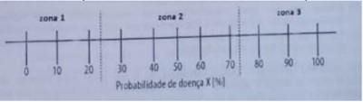
A Uma mulher de 20 anos sem comorbidades, sem atraso menstrual, com disúria e polaciúria há 2 dias, sem sintomas vaginais, sem alterações de sinais vitais, para quem, estando na zona 3 e pensando em cistite não complicada, foi prescrito nitrofurantoína.
B Um homem de 60 anos sem comorbidades, sedentário e não fumante, com dor torácica classificada como angina atípica, para quem, estando na zona 3 e pensando em doença arterial coronariana, foi solicitado um teste ergométrico.
C Uma mulher de 25 anos com sintomas de astenia e sinal de palidez mucocutânea, sem atraso menstrual, sem alterações de sinais vitais, para quem, estando na zona 1 e pensando em anemia, foi solicitado um hemograma.
D Um homem de 40 anos, sem comorbidades, com quadro de diarreia há 1 dia sem produtos patológicos, sem alterações de sinais vitais e de exame físico, para quem, estando na zona 1 e pensando em gastroenterite aguda, foi prescrito hidratação oral e observação de sinais de alarme.
Questão 576 · Atributos gerais da Atenção Primária à Saúde APS · 4000188018Joana assumiu o cargo de médica de família e comunidade (MFC) há uma semana na Unidade Básica de Saúde (UBS) Arvoredo e, entendendo que seu papel como MFC envolve o planejamento de ações que requerem informações atualizadas sobre os determinantes e as condições de saúde de uma comunidade, Joana propôs uma abordagem comunitária para diagnóstico de saúde da comunidade através da realização de uma Estimativa Rápida. Após constituir uma equipe multipro ssional, elaborar o cronograma, definir os entrevistadores e os informantes-chave, ela está bastante motivada a dar continuidade ao processo. Tendo isso em vista, qual das seguintes alternativas descreve mais adequadamente esse tipo de abordagem?
A A Estimativa Rápida, por utilizar entrevistas com roteiros semiestruturados, necessita da realização de um protocolo de pesquisa e que este seja enviado ao Comitê de Ética em Pesquisa, mesmo que isso torne o processo mais demorado.
B Levando em conta que Joana é recém-chegada na UBS, a Estimativa Rápida é adequada para fornecer informações qualitativas e quantitativas dos principais problemas de saúde da sua comunidade.
C Com a Estimativa Rápida, Joana poderá conhecer quais as principais queixas de saúde da população que frequenta a UBS através da análise dos CIDs (Classificação Internacional de Doenças) elencados nas consultas realizadas durante uma semana.
D Apesar de ter uma característica de mapeamento com menor aprofundamento, a Estimativa Rápida pode ser útil para conhecer melhor a sua comunidade e entender quantas pessoas são afetadas pelos principais problemas de saúde locais.
Questão 577 · Risco Relativo RR Razão de Riscos · 4000188017Foi realizado um ensaio clínico randomizado duplo cego com objetivo de avaliar o efeito da droga "Panaceia" sobre os níveis de Hemoglobina glicada em pacientes com diabetes mellitus tipo 2 (DM2). Abaixo dados do estudo e tabela com seus resultados. População do estudo: adultos com diagnóstico novo (casos incidentes) de DM2, virgens de tratamento, em ambiente de APS. Tempo de seguimento: 1 ano. Intervenção: "Panaceia" 100 mg um comprimido uma vez ao dia + orientação nutricional padronizada. Controle: Metformina 850 mg uma vez ao dia + orientação nutricional padronizada. No estudo em questão, metformina é entendida como padrão ouro para o tratamento de DM2 inicial. Desfecho primário analisado: DM2 descompensado (Hemoglobina glicada acima de 7,0). Desfecho secundário analisado: Eventos adversos graves. Com relação aos dados apresentados do estudo, é possível afirmar:
A O risco relativo (razão de incidência cumulativa) de eventos adversos graves do grupo Panaceia foi de 1,8.
B O NNT (número necessário para tratar) para ter um caso a menos de DM tipo 2 descompensado no grupo Panaceia é 7.
C A mortalidade no grupo ""Panaceia"" foi maior que a mortalidade no grupo controle.
D Como o estudo é randomizado, duplo-cego, com grande validade interna, pode ser extrapolado para pacientes com DM tipo 1.
Questão 578 · Critérios para a implantação de um programa de rastreamento · 4000188016A frase "é melhor enfrentar a tempo do que buscar remédio após o dano" é atribuída ao inglês Henry Braxton, no século 13. "No entanto, nem sempre prevenir é melhor do que remediar. (...) Não basta que uma intervenção faça sentido do ponto de vista siológico: é necessário comprovar sua e ciência por meio de ensaios clínicos" (Modesto, AAD, Rev Bras Med Fam Comunidade, Rj, 2019, 14(41): 1781). Assinale a a rmativa mais adequada, a respeito do conceito de rastreamento:
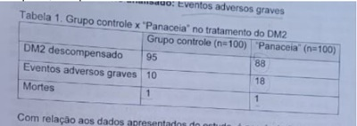
A O alvo principal deve ser as doenças graves para as quais não há tratamento, permitindo-se antecipar o conhecimento do indivíduo sobre sua condição e seu acolhimento integral pelo sistema de saúde.
B A decisão clínica para indicar estes procedimentos deve incorporar princípios de epidemiologia clínica, de práticas de saúde baseadas em evidências e de prevenção quaternária.
C Trata-se de medida de prevenção primária para comportamentos e doenças com impacto clínico relevante, individual e populacional.
D Um dos principais parâmetros que favorecem a indicação de um teste é a evidência em ensaios clínicos de aumento do tempo de sobrevida a partir do diagnóstico no grupo rastreado.
Questão 579 · Relação MédicoPaciente · 4000188015Sr. Antônio, 62 anos, procura atendimento com uma médica de família recém chegada no centro de saúde de seu bairro. Ele entra no consultório um pouco resistente quando verifica que será atendido por uma mulher. Não há médicos de família do sexo masculino no centro de saúde. Quando questionado sobre o motivo da consulta, diz que quer ser encaminhado a urologia e que não dirá o motivo para uma mulher. O serviço de urologia do município é ofertado através de agenda regulada baseada em protocolo clínico. Assinale a alternativa correta.
A A capacidade de empatia, caso utilizada pela médica, é algo central para a competência clínica do médico de família e comunidade, podendo permitir que o Sr. Antônio se torne mais confiante em expressar seu problema.
B Não seria adequado a essa situação fazer uma pergunta-chave aberta para ajudar o Sr. Antônio a se sentir mais confiante e seguro para se expressar, pois ele se apresenta muito resistente a qualquer abordagem.
C Utilizando o segundo componente do método clínico centrado na pessoa é possível explorar três dimensões da experiência da doença do Sr. Antônio: seus sentimentos sobre o problema; suas ideias sobre o que está errado e suas expectativa.
D Em uma relação clínica autocentrada (orientada ao médico de família), o Sr. Antônio será convidado a participar das decisões e a expressar crenças ou expectativas em relação ao seu problema.
Questão 580 · Cuidados paliativos · 4000188014Fátima, 68 anos, faz acompanhamento com sua equipe de saúde da família desde os 35 anos para hipertensão arterial sistêmica e diabetes mellitus tipo 2. Há 2 meses sofreu um acidente vascular cerebral isquêmico (AVCi) que a deixou com sequelas motoras, acamada. Hoje, seu lho Danilo compareceu ao Posto de Saúde solicitando visita domiciliar para acompanhamento de sua mãe, que teve alta do hospital há 5 dias. Danilo diz que ela sempre foi uma mulher ativa, que cuidava de tudo e de todos, agora, não sabe como lidar com toda situação, mas sabe que terá que abandonar o trabalho para cuidar de sua mãe. A carta de alta do Hospital traz as seguintes informações: hipótese diagnóstica de AVCi maligno em hemisfério esquerdo. lesão extensa nos territórios super cial e profundo da artéria cerebral média (ACM). Tempo total de internação: 45 dias. Internação sob os cuidados da UTI por 13 dias por hipertensão intracraniana; traqueostomia por 18 dias com decanulação sem intercorrências; gastrostomia. Plano de alta: Filho orientado sobre processos de reabilitação após AVC; orientado quanto aos cuidados no leito, bem como cuidados com a sonda vesical de demora (SVD) e dieta (gastrostomia); prescrito dipirona 500mg 6/6h e óleo mineral 10 mL 2 vezes ao dia; e, orientado em caso de complicações procurar a emergência. Você realiza a visita domiciliar e constata que a Sra. Fátima está acamada, sendo bem cuidada por Danilo e que ao exame físico mantém-se afasia global (mutismo); hemiplegia direita completa; força grau 4 em hemicorpo esquerdo. Presença de lesão em região sacral medindo cerca de 7 cm, gemência a palpação de baixo ventre e urina turva e amarelo escura na bolsa coletora. Sem outras alterações. Diante do caso acima, como deve ser o acompanhamento pela Equipe de Saúde da Família?
A Convocar uma reunião com Danilo para orientá-lo sobre o acompanhamento com a equipe multidisciplinar e dizer que o MFC deverá ser chamado para avaliá-la quando apresentar sinais de alarme.
B Explicar ao filho que ela não tem indicação de cuidados paliativos no momento e que o acompanhamento deve ser feito pela equipe do hospital em que estava internada.
C Convocar uma reunião com os familiares para abordar o grau de entendimento deles sobre o quadro da paciente, elaborar uma lista de problemas e, diante disso, encaminhála para cuidados exclusivos com a equipe de paliativos.
D Convocar uma reunião com os familiares para abordar o grau de entendimento deles sobre o quadro da Sra. Fátima; elaborar uma lista de problemas em conjunto com os familiares; fazer uma reunião com a equipe para discutir um plano de cuidado multidisciplinar.
Questão 581 · Síndrome do Túnel do Carpo · Diagnóstico · 4000187972Durante atendimento de demanda espontânea na Unidade de Saúde, o enfermeiro da sua equipe o chama para interconsulta. É uma paciente de 45 anos, tabagista e obesa, com quadro de dores no punho e na mão esquerda, do tipo queimação. Está preocupada pois nos últimos meses tem tido dormência nos dedos, principalmente durante o trabalho, em que passa horas no computador, além de estar perdendo a força. Tem alívio dos sintomas ao sacudir as mãos e refere que nota piora no período noturno. Tem feito uso de anti- inflamatórios e gelo, porém não apresenta melhora. Você decide realizar testes sensitivos e provocativos suspeitando de possível neuropatia. Com base no caso acima, assinale a alternativa correta.
A A principal hipótese é a síndrome do túnel do carpo. Correlacionando a história clínica com os achados de hipoalgesia do 2º dedo comparado ao 5º dedo, é possível confirmar o diagnóstico.
B A principal hipótese é a síndrome de Quervain. Correlacionando a história clínica com os achados de hipoalgesia do 5º dedo e teste de Finkelstein positivo, é possível confirmar o diagnóstico.
C A principal hipótese é a síndrome do túnel do carpo. Os testes sensitivos e provocativos têm pouco valor no diagnóstico das neuropatias, sendo necessário realizar ultrassonografia do punho para confirmação diagnóstica.
D A principal hipótese é a síndrome de Quervain. Os testes sensitivos e provocativos têm pouco valor no diagnóstico das neuropatias, sendo necessário realizar eletroneuromiografia do punho para confirmação diagnóstica.
Questão 582 · As grandes síndromes geriátricas gigantes geriátricos · 4000187970Você é médico residente na estratégia de saúde da família. A enfermeira da equipe o procura para discutir o caso da senhora Rosa, idosa de 82 anos, com diabetes, obesidade e osteoartrite avançada em joelhos. Explica que os lhos solicitam prescrição para iniciar uso de fraldas, devido a piora recente de incontinência urinária, com di culdade para caminhar sozinha até o banheiro. Ao revisar o prontuário, você percebe que não foram estabelecidas investigações ou tratamentos prévios. Diante do exposto, você considera que:
A Para classificar a incontinência urinária, recomenda-se realizar estudo urodinâmico para avaliar as fases de enchimento e esvaziamento da bexiga.
B A introdução de fraldas geriátricas deve ser precoce na idade de Rosa, pois a menor demanda por idas ao banheiro preserva a independência do indivíduo.
C O tratamento farmacológico com anticolinérgicos tem alta eficácia e perfil seguro de efeitos adversos para pacientes com o perfil de Rosa.
D Neste caso, deve-se avaliar causas transitórias de incontinência como infecção urinária, delirium, descompensação de diabetes ou presença de fecaloma.
Questão 583 · Quadro clínico diagnóstico e sinais de alarme · Dorsalgias Lombalgia · 4000187967Francisco, 41 anos, hipertenso, trabalha como auxiliar de pedreiro há cerca de 10 anos. Ele procura atendimento no meio do turno da tarde, alegando dor na coluna de forte intensidade que iniciou há 2 dias após fazer um esforço diferente do habitual. Diz que a dor "corre" para o glúteo e pernas e que nunca apresentou dor semelhante. Nega despertar pela dor, alterações urinárias, traumas, febre e perda de peso. Em casa, fez uso de anti-inflamatório não esteroidal (AINE) por conta própria com alívio parcial do quadro. Francisco se preocupa, pois, seu pai teve hérnia de disco e precisou passar por cirurgia. Tem medo que o mesmo aconteça com ele, pois não pode car afastado do trabalho por tempo prolongado, uma vez que é ele quem sustenta a casa. Apresenta dor a elevação dos membros inferiores referida em glúteo e sem demais alterações ao exame físico. Hoje, ele solicita um pedido para fazer uma ressonância magnética (RNM) e retornar ao trabalho assim que possível. Diz que fará a RNM na rede privada, pois sabe que pelo SUS irá demorar. Como médico(a) de família, além de orientar sobre a importância da ergonomia, a primeira escolha a ser feita é:
A Tranquilizar o paciente com relação a benignidade do quadro, prescrever AINE, solicitar RNM e dizer que não pode afastá-lo das atividades laborais até que traga o resultado do exame.
B Fornecer atestado médico por 15 dias, orientar que faça repouso absoluto para resolução completa do quadro, bem como uso de analgésico, solicitar a RNM e pedir retorno com o resultado do exame.
C Encaminhar ao hospital com urgência, fornecer atestado do dia, orientar alongamento e prescrever opioide via oral para casa, explicar que no hospital será avaliada a necessidade do exame de imagem.
D Fornecer atestado médico de acordo com o tempo pactuado com Francisco, orientar compressa morna no local da dor, bem como alongamento, uso de analgésico se necessário e desaconselhar a RNM nesse momento.
Questão 584 · Lei n 80801990 · 4000187965O processo saúde doença é medido pela análise da situação de saúde, que inclui a identi cação dos condicionantes e determinantes da saúde (Lei No 8.080/90). Segundo a OMS 2011, apoiar a abordagem dos determinantes sociais de saúde (DSS) significa compreender o valor que a saúde tem para sociedade e que, muitas vezes, não tem relação com o setor saúde. Assim, a lógica dos DSS está baseada em três temas gerais. Marque a alternativa CORRETA:
A Reduzir as iniquidades em saúde; melhorar a saúde e o bem- estar, promover o desenvolvimento e alcançar objetivos gerais no campo da saúde e realizar ações sobre os determinantes sociais.
B Promover ações com prioridades biológicas e que dependem de melhores níveis de igualdade em saúde.
C Como determinantes intermediários encontram-se as condições de vida, circunstâncias psicossociais, fatores comportamentais e/ou ergométricos e o próprio sistema de saúde, que dão forma às condições de saúde dos indivíduos.
D Apoiar a abordagem dos determinantes sociais significa compreender o valor que a saúde tem para a sociedade e admitir que ela depende de ações que trabalham apenas as doenças.
Questão 585 · Prevenção Quaternária · 4000187964A prevenção quaternária pode ser definida como um conjunto de ações que visam evitar a iatrogenia médica. Dentre elas podemos citar a sobre medicalização ou os excessos preventivos. Marque abaixo um exemplo de prevenção quaternária:
A Desencorajar o rastreamento de câncer de próstata em homens assintomáticos e sem fatores de risco.
B Suspender o uso prolongado de inibidor de bomba de próton em pacientes sem queixas clínicas e/ou patologias que justifiquem seu uso contínuo.
C Não solicitar anualmente exames laboratoriais em adultos assintomáticos, sem fatores de risco ou comorbidades e sem alterações no exame clínico, denominado algumas vezes como check-up.
D Não utilizar pesquisa de sangue oculto nas fezes como método de rastreamento para câncer de cólon.
Questão 586 · Financiamento em Saúde · 4000187963Em 2019 foi aprovado um novo modelo de nanciamento federal da Atenção Primária à Saúde (APS) denominado PREVINE BRASIL. Assinale a alternativa correta em relação à nova proposta de repasse de recursos:
A O novo modelo subdivide os recursos em fixos, PAB fixo, calculados em parte mediante estimativa de cobertura e recursos variável, PAB variável, conforme programas específicos da APS.
B Um dos eixos do novo modelo é denominado captação ponderada que determina, entre outras variáveis, o repasse com base no número de usuários cadastrados nas equipes de Estratégia de Saúde da Família.
C A nova proposta apresenta como inovação a avaliação de desempenho das equipes, não sendo realizado nenhum tipo de avaliação nesse sentido anteriormente.
D O núcleo de apoio a saúde da família (NASF) é um dos programas a serem financiados pelo novo modelo.
Questão 587 · Acidente de trabalho · 4000187961Os acidentes de trabalho são demandas comuns no atendimento do médico generalista. A Comunicação de Acidente de Trabalho (CAT) é um documento que o paciente com vínculo CLT pode solicitar ser preenchido pelo médico do SUS durante uma consulta, no campo referente ao atestado médico. Não é infrequente a alegação de recusa por parte de sua empresa. Assinale a opção correta em relação ao atendimento do paciente-trabalhador no SUS:
A O CAT deve ser preenchido somente quando houver necessidade de afastamento por mais de 15 dias, pois somente nestes casos deverá solicitar avaliação por perito do Instituto Nacional do Seguro Social (INSS).
B O CAT não deve ser preenchido em nenhuma situação de acidente fora do local de trabalho.
C É considerada obrigatória a notificação das doenças profissionais em virtude de condições de trabalho, sejam comprovadas ou suspeitas, conforme orientações do Ministério do Trabalho.
D A empresa não é obrigada por lei a notificar a Previdência Social o acidente, devendo esta ser a função exclusiva do médico que realiza o acompanhamento do trabalhador.
Questão 588 · Program Saúde da Família PSF e Estratégia Saúde da Família ESF · 4000187960A Estratégia de Saúde da Família (ESF) representa uma importante mudança na organização da Atenção Primária à Saúde (APS) no Brasil. Suas atribuições estão definidas na Política Nacional de Atenção Básica (PNAB), bem como seus membros. Fazem parte da equipe mínima de ESF:
A 1 médico, preferencialmente da especialidade medicina de família e comunidade, 1 enfermeiro, preferencialmente especialista em saúde da família, 1 auxiliar e/ou técnico de enfermagem, 1 auxiliar de saúde bucal e 1 cirurgião-dentista, preferencialmente especialista em saúde da família.
B 1 médico, preferencialmente da especialidade medicina de família e comunidade, 1 enfermeiro, preferencialmente especialista em saúde da família, Agentes Comunitários de Saúde, 1 cirurgião-dentista, preferencialmente especialista em saúde da família.
C 1 enfermeiro, preferencialmente especialista em saúde da família, 1 auxiliar e/ou técnico de enfermagem, Agentes Comunitários de Saúde, 1 auxiliar de saúde bucal e 1 cirurgião- dentista, preferencialmente especialista em saúde da família.
D 1 médico, preferencialmente da especialidade medicina de família e comunidade, 1 enfermeiro, preferencialmente especialista em saúde da família, 1 auxiliar e/ou técnico de enfermagem, Agentes Comunitários de Saúde, Agente de Combate a Endemias, 1 auxiliar ou técnico em saúde bucal e 1 cirurgião-dentista, preferencialmente especialista em saúde da família.
Questão 589 · Método SOAP · 4000187958Uma médica de família e comunidade inicia seu atendimento do turno da manhã com uma demanda solicitada pela Sra. Maria das Dores. - Bom dia, dona Maria. Como posso ajudar a senhora hoje? Maria suspira. - Ah doutora... Se a senhora puder me ajudar vou car muito agradecida. Minha pressão está alta e preciso renovar minha receita, pois meus remédios estão acabando! - Tem mais alguma questão, dona Maria? - Bom... na verdade tem sim. Venho sentindo dores no peito, que começam de repente! Um aperto grande, sabe? O coração parece uma batedeira. Chega a dar uns calafrios. E surgem do nada, até sentada no sofá! A médica balança afirmativamente a cabeça. - Entendo. Neste momento a senhora está com dor no peito ou algum desses outros sintomas? - No momento, não. - E o que a senhora pensa que seja? - Eu estou com medo de ser o tal do infarto! Ia inclusive pedir para a senhora solicitar aquele exame que vê o coração. - Posso solicitar sim e vou examinar a senhora, mas me conta... Alguma coisa diferente aconteceu no último mês? A senhora sempre manteve sua pressão controlada desde que a acompanho. Maria ca em silêncio. De repente, lágrimas brotam de seus olhos e começa a chorar. - Desculpe os modos, doutora. A verdade é que há 1 mês soube que minha última irmã que estava viva faleceu devido a um infarto lá no nordeste. Agora só resta eu, sabe? Eu sei que ainda tenho os meus lhos, mas cada um agora está com a sua família. Não tenho coragem de dar trabalho. O Método Clínico Centrado na Pessoa (MCCP) se apresenta como um contraponto a uma abordagem centrada na doença. Nesse sentido, quando a médica pergunta, “mas me conta... Alguma coisa diferente aconteceu no último mês? ”, qual componente do MCCP foi utilizado?
A 1° Componente: aspectos subjetivos e objetivos do problema e os conceitos e aspirações com relação a saúde.
B 2° Componente: o contexto individual e ambiental.
C 3° Componente: chegando a um lugar comum
D 4° Componente: reforçar a relação entre profissional e pessoa
Revisar: possível letra faltando em enunciado
Questão 590 · Método SOAP · 4000187957Uma médica de família e comunidade inicia seu atendimento do turno da manhã com uma demanda solicitada pela Sra. Maria das Dores. - Bom dia, dona Maria. Como posso ajudar a senhora hoje? Maria suspira. - Ah doutora... Se a senhora puder me ajudar vou car muito agradecida. Minha pressão está alta e preciso renovar minha receita, pois meus remédios estão acabando! - Tem mais alguma questão, dona Maria? - Bom... na verdade tem sim. Venho sentindo dores no peito, que começam de repente! Um aperto grande, sabe? O coração parece uma batedeira. Chega a dar uns calafrios. E surgem do nada, até sentada no sofá! A médica balança afirmativamente a cabeça. - Entendo. Neste momento a senhora está com dor no peito ou algum desses outros sintomas? - No momento, não. - E o que a senhora pensa que seja? - Eu estou com medo de ser o tal do infarto! Ia inclusive pedir para a senhora solicitar aquele exame que vê o coração. - Posso solicitar sim e vou examinar a senhora, mas me conta... Alguma coisa diferente aconteceu no último mês? A senhora sempre manteve sua pressão controlada desde que a acompanho. Maria ca em silêncio. De repente, lágrimas brotam de seus olhos e começa a chorar. - Desculpe os modos, doutora. A verdade é que há 1 mês soube que minha última irmã que estava viva faleceu devido a um infarto lá no nordeste. Agora só resta eu, sabe? Eu sei que ainda tenho os meus lhos, mas cada um agora está com a sua família. Não tenho coragem de dar trabalho. Durante o decorrer do atendimento é possível perceber que a médica transita entre explorar a doença e a experiência de adoecimento da Sra. Maria. O Método Clínico centrado na Pessoa (MCCP) apresenta o acrônimo SIFE: I. Sentimentos sobre seu problema; II. Ideias sobre as causas e origens de sua doença; III. Funções, que se refere a limitações nas atividades do dia a dia que a pessoa apresenta devido a sua condição de saúde; IV. Expectativas perante como o pro ssional de saúde pode ajudá-la em relação a sua demanda como incentivo ao paciente para expressar os aspectos subjetivos de seu problema de saúde. Assinale a seguir a alternativa CORRETA:
A Quando a médica inicia a entrevista com “Como posso ajudar a senhora hoje? ” A paciente prontamente responde sobre seus Sentimentos, sendo este item explorado pela médica.
B Ao perguntar “Tem mais alguma questão, dona Maria? ” A médica utiliza o conceito de Funções, pois deseja compreender o que a paciente espera da consulta.
C Ao refletir “A senhora sempre manteve sua pressão controlada desde que a acompanho” São exploradas as expectativas da médica em relação a paciente.
D Ao questionar “E o que a senhora pensa que seja? ” A médica deseja compreender quais ideias sobre seu problema a paciente possui.
Revisar: possível letra faltando em enunciado
Questão 591 · Lei n 80801990 · 4000187956Segundo a Lei Nº 8.080/90 o orçamento da seguridade social destinará ao Sistema Único de Saúde (SUS) de acordo com a receita estimada, os recursos necessários à realização de suas nalidades, previstos em proposta elaborada pela sua direção nacional, com a participação dos órgãos da Previdência Social e da Assistência Social, tendo em vista as metas e prioridades estabelecidas na Lei de Diretrizes Orçamentárias. Os recursos nanceiros do Sistema Único de Saúde (SUS) serão depositados em conta especial, em cada esfera de sua atuação, e movimentados sob fiscalização do(a):
A Conselho de Saúde.
B Ministério da Saúde.
C Secretaria Municipal de Saúde.
D Secretaria Estadual de Saúde.
Questão 592 · Lei n 80801990 · 4000187955O marco regulatório do Sistema Único de Saúde, como aparato normativo-legal vigente, é de fundamental importância para a garantia do direito saúde, seja por meio da Constituição Federal de 1988 (CF 1988) ou pelas Leis Orgânicas da Saúde (Lei 8.080/90 e 8.142/90). A implementação da política de saúde brasileira, entre seus limites e avanços, tem como pano de fundo uma legislação que assegura, segundo previsto na CF 1988, a saúde numa perspectiva ampliada, como direito de todos e dever do Estado. Sobre o texto da Constituição, analise o trecho abaixo: A saúde é direito de todos e dever do Estado, garantido _______________ que visem à redução do risco de doença e de outros agravos e ao acesso _______________ às ações e serviços para sua ________________. Assinale a alternativa que completa CORRETAMENTE as lacunas do texto acima.
A mediante políticas afirmativas / integral e oportuna / prevenção, assistência e tratamento.
B mediante políticas sociais e econômicas / na Atenção Primária à Saúde / prevenção, assistência e recuperação.
C mediante políticas sociais e econômicas / universal e igualitário / promoção, proteção e recuperação.
D por políticas de redistribuição de renda / à assistência de serviços básicos de saúde / promoção, proteção e recuperação.
Questão 593 · Política Nacional de Humanização · 4000187954A Política de Humanização da Atenção e da Gestão (PNH) é uma iniciativa inovadora no SUS. Criada em 2003, a PNH tem por objetivo quali car práticas de gestão e de atenção em saúde (BRASIL, 2010). O acolhimento é um grande desa o das equipes para quali car sua porta de entrada. O que é acolhimento segundo a Política Nacional de Humanização? Marque a alternativa CORRETA:
A Agendamento imediato de consulta médica, para o usuário do território sem entender a demanda.
B Orientação ética, pois o toma como base do contrato entre os sujeitos que cuidam e os que são cuidados, cuja ação é produzir um campo comum que vamos chamar de produção do cuidado compartilhado, corresponsabilização.
C Significa apenas aceitar aquilo que o outro traz, sem produzir desvios, movimentos que permitam reposicionamentos, produção de novas atitudes, de novas éticas.
D Agendamento de consulta ou procedimento em data futura; encaminhamento a outro ponto de atenção da RAS, sem contato prévio, renovação de receitas para pessoas com condições crônicas, e estratificação de risco.
Questão 594 · Política Nacional de Saúde Integral da População Negra · 4000187952As Políticas Públicas são entendidas, em dada medida, como respostas do Estado com potencial para reparar ou mitigar desigualdades sociais estruturais produzidas pela forma como estamos organizados para viver, ainda que sejam resultantes de um contexto histórico, político, social e cultural. A Política Nacional de Saúde Integral da População Negra, nesse contexto, refere ser, em seu texto de apresentação, “uma resposta do Ministério da Saúde às desigualdades em saúde que acometem esta população e o reconhecimento de que as suas condições de vida resultam de injustos processos sociais, culturais e econômicos presentes na história do País”. Sobre a Política Nacional de Saúde Integral da População Negra, analise as a rmativas abaixo: I . Reconhecimento do racismo, das desigualdades étnico- raciais e do racismo institucional como determinantes sociais das condições de saúde, com vistas à promoção da equidade em saúde. II. Entende-se como satisfatória a realização de estudos e pesquisas sobre racismo e saúde da população negra atualmente, devendo o texto da política concentrar o fomento a pesquisa, principalmente, na avaliação de qualidade da atenção e formação em saúde. III. É de responsabilidade das esferas Federal, Estadual e Municipal a Elaboração de materiais de divulgação visando à socialização da informação e das ações de promoção da saúde integral da população negra. Assinale a alternativa CORRETA sobre as afirmativas acima:
A As afirmativas I e II estão corretas.
B Apenas a afirmativa I está correta.
C Apenas a afirmativa III está correta.
D As afirmativas I e III estão corretas.
Questão 595 · Abordagem Comunitária · 4000187951Analise as afirmativas abaixo sobre as equipes de Consultório na Rua (CnaR): I. Equipe de saúde com composição variável, responsável por articular e prestar atenção integral à saúde de pessoas em situação de rua ou com características análogas em determinado território, em unidade fixa ou móvel, podendo ter as modalidades e respectivos regramentos descritos em portaria específica. II. Na composição de cada equipe de CnaR deve haver, preferencialmente, o máximo de dois profissionais da mesma pro ssão de saúde, seja de nível médio ou superior. Todas as modalidades de CnaR poderão agregar agentes comunitários de saúde. III. As equipes de CnaR não devem realizar atendimento de pessoal em situação de rua que sejam bene ciárias de programas ou bolsas governamentais, de modo a promover equidade, garantindo atendimento apenas daqueles que mais necessitam. IV. Cumprir a carga horária mínima semanal de 30 horas. Porém seu horário de funcionamento deverá ser adequado às demandas das pessoas em situação de rua, podendo ocorrer em período diurno e/ou noturno em todos os dias da semana. Assinale a alternativa CORRETA:
A Somente as afirmativas I e II estão corretas.
B As afirmativas II, III e IV estão corretas.
C As afirmativas I, II e IV estão corretas.
D Somente as afirmativas I e IV estão corretas.
Questão 596 · Medicina de Família e Comunidade · 4000187950O sr. Altair retorna em consulta com resultados de exames e sem queixas na Atenção Primária à Saúde. Sua hemoglobina glicada está 10,2% e ele utiliza 2 classes de hipoglicemiantes orais em dose máxima. Você percebe que precisa incluir a insulina na prescrição, mas já sabe de encontros prévios que o paciente tem resistência à medicação injetável. No rodízio de Medicina de Família e Comunidade do internato você desenvolveu habilidades para lidar da seguinte forma com a situação:
A Explorar a experiência de adoecimento para compreender a resistência do sr. Altair e a partir dela propor uma conduta factível.
B Utilizar habilidades de comunicação para persuadir o sr. Altair a aceitar a insulina e prescrevê-la na consulta independentemente de sua aceitação.
C Solicitar uma consulta conjunta com o psicólogo e assistente social do NASF para abordar as dificuldades do sr. Altair no autocuidado.
D Discutir o caso e coletar informações com ACS para adquirir maior conhecimento sobre o contexto do sr. Altair e utilizar abordagem familiar.
Questão 597 · Atenção Primária à Saúde APS no Brasil · 4000187949Escolha a alternativa que descreve corretamente quais são as características dos serviços de saúde de Atenção Primária à Saúde (APS) e suas responsabilidades dentro da rede de saúde:
A Atende a todos independente da complexidade da queixa e é o responsável pela promoção e prevenção dentro da rede.
B Realiza acompanhamento ao longo do tempo e coordena o cuidado, definindo prioridades e caminhos de atendimento em cada situação.
C Responsável por ser a única porta de entrada da rede de saúde e realiza constantemente prevenção e promoção de saúde.
D É o ponto da rede que realiza o cuidado integral, com acompanhamento longitudinal e possui a responsabilidade por toda vigilância de agravos.
Questão 598 · Método SOAP · 4000187948Em uma visita domiciliar (VD) realizada por um médico de família e comunidade o ACS informa di culdade de acesso ao domicílio. A entrada ocorre mediante subida de escadas em mau estado de conservação. No domicílio a paciente a ser assistida apresenta importante grau de obesidade associada a diabetes mellitus tipo 2 em uso de insulinoterapia. Após cumprimentos, o médico solicita que paciente relate como pode ser ajudada pela equipe e a mesma refere di culdade no controle glicêmico e piora da sensação de queimação dos membros inferiores. O médico realiza aferição de glicemia com glicemia capilar de 300mg/dl e avalia o registro da paciente que apresenta, em média, glicemia entre 250 e 350 mg/dl. O médico segue com s u a avaliação e coleta de dados de entrevista e exame físico. Finaliza o atendimento agradecendo a hospitalidade da paciente e realizando orientações sobre os próximos passos em saúde, bem como uma visita domiciliar em 1 semana por parte da enfermagem. Ao nal do dia o médico separa um momento na agenda para registro do atendimento domiciliar. Correlacionando o caso e o registro médico orientado por problemas, cujo registro na Atenção primária à Saúde se sistematiza mediante acrônimo SOAP (subjetivo, objetivo, avaliação e plano), assinale a alternativa CORRETA:
A O médico deverá registrar a glicemia capilar realizada na visita no campo de avaliação.
B No plano não será necessário descrever o retorno da enfermagem, por não ser uma conduta a ser médica.
C Além dos dados sobre as doenças apresentadas pela paciente, é importante registrar no subjetivo o contexto observado pelo médico durante a visita.
D O diagnóstico de neuropatia diabética deve ser descrito mediante o código internacional de doenças (CID) no objetivo.
Questão 599 · Coef iciente ou Taxa de Mortalidade Inf antil · 4000187946Em relação ao panorama nacional de saúde no Brasil podemos afirmar que:
A A taxa média de crescimento anual da população também está aumentando: de 0,8% em 1980 para 2,5% em 2018.
B A taxa de fertilidade total de 5,8 em 1970 reduziu para 1,77 em 2018 devido ao novo papel da mulher na sociedade e a redução de acesso a métodos contraceptivos.
C A taxa de mortalidade infantil (TMI) caiu de 146,6/1.000 nascidos vivos em 1940 para 12,8/1.000 nascidos vivos em 2018 que ocorreu em todas as regiões, mas mais notadamente no Nordeste.
D A obesidade está na iminência de substituir o baixo peso como a principal categoria de distúrbio nutricional em todos os grupos de sexo, categoria social e faixa etária no país.
Questão 600 · Sigilo prof issional · 4000187940Paciente de 14 anos vai à consulta ginecológica desacompanhada. Refere desejo de iniciar a vida sexual e deseja um método contraceptivo e caz. Após a consulta a mãe da paciente liga para o médico querendo saber o motivo da consulta. Como o médico deve se portar?
A Não fornecer informações respeitando o princípio da autonomia da paciente e o sigilo médico.
B Passar as informações por telefone visto que a paciente é menor de idade e sua responsável deve estar ciente.
C Marcar um horário com a mãe pois não se pode passar informações médicas por telefone.
D Não fornecer informações pois em nenhuma situação o sigilo médico poderá ser violado.
Revisar: possível letra faltando em alt B
Questão 601 · Atenção Primária à Saúde APS no Brasil · 4000187905Avalie as assertivas abaixo, assinale com V (verdadeiro) ou F (falso) e escolha a alternativa que contém a sequência correta com relação aos fundamentos e diretrizes da atenção básica em saúde no Brasil: [ ] A rede de atenção básica em saúde no Brasil deve possibilitar o acesso universal e contínuo a serviços de saúde de qualidade e resolutivos, caracterizados como a porta de entrada aberta e preferencial da rede de atenção, acolhendo os usuários e promovendo a vinculação e corresponsabilização pela atenção às suas necessidades de saúde. [ ] A Política Nacional de Atenção Básica considera os termos “Atenção Básica” e “Atenção Primária à Saúde”, nas atuais concepções, como termos equivalentes. [ ] A atenção básica em saúde no Brasil caracteriza-se por um conjunto de ações de saúde, no âmbito individual e coletivo, que abrange a promoção e a proteção da saúde, a prevenção de agravos, o diagnóstico, o tratamento, a reabilitação, a redução de danos e a manutenção da saúde com o objetivo de desenvolver uma atenção integral que impacte na situação de saúde e autonomia das pessoas e nos determinantes e condicionantes de saúde das coletividades. (BRASIL. Ministério da Saúde. Política Nacional de Atenção Básica. Brasília: Ministério da Saúde, 2012. (Série E. Legislação em Saúde))
A F, V, F
B V, F, F
C V, V, V
D F, F, V
E Nenhuma das alternativas acima está correta
Questão 602 · Nutrição do idoso · Avaliação Nutricional · 4000187894Frequentemente em ambulatórios de assistência geral nos deparamos com pacientes que além da queixa principal, manifestam sintomas de alterações nutricionais associadas. Avalie as assertivas abaixo, associe as colunas e escolha a alternativa que contém a sequência correta em relação às possíveis causas de alterações conforme as seguintes condições: Condições: I. Na gravidez; II. Na velhice; III. No câncer; IV. No grande queimado; Possíveis causas de alterações nutricionais: [ ] Podem ocorrer diminuição das sensibilidades gustativa e olfativa e aumento dos níveis de colecistoquinina. [ ] Pode ocorrer metabolismo anormal da glicose, com aumento da liberação de lactato, estímulo ao ciclo de Cori e resistência à insulina. [ ] Podem ocorrer aumento dos mediadores celulares e hormonais promovendo a proteólise e a lipólise que fornecem substrato para gliconeogênese e glicogenólise. [ ] Podem ocorrer mudanças hormonais, especialmente o aumento da progesterona, associada ao relaxamento da musculatura intestinal e assim, diminuindo o peristaltismo induzindo a constipação intestinal. (Magnoni, D., Cukier, C. Perguntas e respostas em nutrição clínica. 2a Edição. Roca. 2005.)
A IV, I, III, II
B I, IV, I, III
C III, I, II, IV
D II, III, IV, I
E Nenhuma das sequencias acima está correta.
Questão 603 · Metanálises e Revisões sistemáticas · 4000187888Assinale a alternativa incorreta: (BRASIL. Ministério da Saúde. Cadernos de Atenção Básica, n. 29, Volume II 2013. (Série E. Legislação em Saúde)
A Um exame de rastreamento deve ter ótimas sensibilidade e especificidade, para que resulte em pequenas taxas de falso-positivo e para que dê segurança de que a pessoa realmente não tem a doença quando o resultado for negativo.
B Na anamnese e no exame físico, quando bem feitos e completos, pode-se obter dados para estimar fatores de riscos à saúde com maior precisão, por exemplo, gênero, idade, tabagista ou não, história familiar de Doença Arterial Coronariana prematura e assim por diante.
C Para identificar pacientes com risco de doença cardiovascular, pode-se utilizar o escore de Framingham (1991) com projeção de risco para 10 anos.
D Meta-análises relacionando o colesterol e Doença Arterial Coronariana (DAC), em pessoas idosas, sugerem que o colesterol constitui fator de risco para DAC em pessoas acima de 75 anos de idade.
E Para o rastreamento de hipertensão arterial sistêmica, a aferição ambulatorial com esfignomanômetro é a mais amplamente utilizada. Contudo, devido à variabilidade individual da medida da pressão arterial, é recomendado, para se realizar o diagnóstico, que se obtenham duas ou mais aferições em pelo menos duas ou mais visitas ao longo de um período de uma ou mais semanas.
Questão 604 · Sistema de Inf ormação de Agravos de Notif icação SINAN · 4000187882Processos Endêmicos e Epidêmico Endemias e Epidemias ) Segundo o Ministério da Saúde (MS), a doença causada pelo vírus Monkeypox virus é transmitida por animais (zoonose) e sua transmissão para humanos pode ocorrer através do contato com um animal ou pessoa infectada, ou ainda com material corporal humano contendo o vírus. Assinale a alternativa correta em relação às seguintes situações: (NOTA TÉCNICA N° 002/2022 SESA/SSVS/GEVS – Monkeypox.)
A Caso confirmado: Paciente com histórico de viagem para país endêmico ou com casos confirmados de Monkeypox nos 21 dias anteriores ao início dos sintomas e em confirmação laboratorial
B Caso provável: Indivíduo que atende à definição de caso provável que é confirmado laboratorialmente para o vírus da Monkeypox por teste molecular (qPCR e/ou sequenciamento).
C Caso descartado: Paciente suspeito, mas com resultado de teste molecular (qPCR e/ou sequenciamento) positivo para o Smallpox.
D Quando o paciente é encaminhado para coleta em fase mais tardia na qual as lesões já estão secas, o material a ser encaminhado são crostas das lesões, preferencialmente optar pelas crostas menos secas, ou seja, coletar aquelas em fase mais inicial de cicatrização.
E Sangue é o melhor material biológico para detecção de Poxvirus, pois o período de alta viremia é simultâneo ao aparecimento das pústulas.
Questão 605 · Pneumonites por hipersensibilidade · 4000187856Paciente com 45 anos de idade do sexo feminino e queixa de dispneia e tosse há 3 semanas, relata episódios 3 de pneumonias nos últimos 12 meses. Nega tabagismo ou história pessoal ou familiar de asma ou rinite. Desempregada há 2 anos, faz criação de aves para produção de ovos em sua residência. Ao exame físico foram encontrados discretos sibilos curtos, tipo "grasnido", na ausculta pulmonar. Foi solicitada uma espirometria que apresentou uma CVF e VEF1 com 70% do previsto. O diagnóstico mais provável é: (PRÁTICA PNEUMOLÓGICA SEGUNDA EDIÇÃO - CAPÍTULO 44, P. 524.)
A Pneumonia de hipersensibilidade
B Asma
C DPOC
D Hipertensão pulmonar
E Sarcoidose
Questão 606 · Processos Endêmicos e Epidêmico Endemias e Epidemias · 4000187816Paciente masculino, 34 anos, bissexual, refere febre, cefaléia, tosse, mialgia, linfadenopatia cervical. Apresentava ainda lesões no rosto, que surgiram 2 dias após o início do quadro e que se tornaram disseminadas pelo corpo. Estas inicialmente eram eritematosas e sobre as mesmas surgiram vesículas com secreção, que romperam com surgimento de crostas. Qual a principal suspeita diagnóstica e qual exame laboratorial para confirmar o diagnóstico?
A Sífilis – FTAbs
B Monkeypox – qPCR
C Cancro Mole – cultura
D COVID-19 – RT-PCR
Questão 607 · Cuidados paliativos · 4000187760Homem, 84 anos, com antecedentes de neoplasia de próstata avançada sem melhora após múltiplas tentativas de tratamento, sem propostas de tratamentos curativos, comparece à consulta ambulatorial queixando-se de dor de forte intensidade na região da bacia (nota 10 em 10). A dor é em queimação na região do assoalho pélvico. Está em uso de: dipirona 1g 6/6h e tramadol 100mg 6/6h.Também refere obstipação desde o início de uso da analgesia. Há 5 dias sem evacuar. Exames laboratoriais recentes demonstram função renal normal. Ao exame encontra-se em regular estado geral, descorado +2/+4, exame pulmonar e cardíaco sem alterações. Abdome levemente distendido, RHA +, sem sinais de peritonite. Em relação a esse paciente, assinale a alternativa que descreve o melhor esquema de analgesia:
A Acrescentar morfina, dobrar a dose de tramadol para 200mg 6/6h e introduzir amitriptilina.
B Trocar tramadol por morfina, introduzir nortriptilina e acrescentar óleo mineral 20mL de 8/8h.
C Trocar tramadol por metadona, acrescentar paracetamol e introduzir bisacodil.
D Trocar tramadol por morfina, introduzir gabapentina 300mg 8/8h e acrescentar bisacodil.
Questão 608 · Escolha de testes diagnósticos para rastreamento · 4000187718Uma equipe da Estratégia de Saúde da Família estava discutindo rastreamento de câncer de próstata para implantar na Comunidade e o médico da equipe explicou que o antígeno prostático específico (PSA) não é um bom exame para rastreamento. Qual o motivo?
A Não tem um ponto de corte que atenda simultaneamente a uma alta sensibilidade em especificidade.
B Baixa sensibilidade em qualquer ponto de corte não podendo ser usados isoladamente.
C Sensibilidade e especificidade semelhantes em qualquer ponto de corte, em um nível baixo.
D Baixa especificidade em qualquer ponto de corte, que não permite uso isolado.
Questão 609 · Ensaios clínicos · 4000187714Qual tipo de estudo é considerado o padrão-ouro por diminuir o efeito de variáveis de confusão e permitir a padronização da qualidade e quantidade dos fatores, tornando os resultados mais seguros?
A Ensaios clínicos controlados, aleatorizados, não cego.
B Caso-controle que parte do desfecho e vai para a exposição.
C Ensaios clínicos controlados, aleatorizados e duplo cego.
D Coorte que parte da exposição para o desfecho.
Questão 610 · Atributos gerais da Atenção Primária à Saúde APS · 4000187712Homem, 56 anos, em situação de rua, foi à unidade básica de saúde por problemas de pele. A recepção da unidade de saúde disse que ele só poderia ser atendido em consultório na rua. Qual atributo da APS não foi cumprido?
A Integralidade.
B Longitudinalidade.
C Coordenação do cuidado.
D Acesso.
Questão 611 · A carga de doenças no Brasil tripla carga de doenças · 4000187710O per l epidemiológico do Brasil se caracteriza por uma tripla carga de doenças com a seguinte distribuição das cargas de doenças:
A 75% de condições crônicas com doenças crônicas, problemas maternos e perinatais e 25% de condições agudas com doenças infecciosas, parasitárias desnutrição e causas externas.
B 50% de condições crônicas com doenças crônicas, problemas maternos e perinatais e 50% de condições agudas com doenças infecciosas, parasitárias desnutrição e causas externas.
C 25% de condições crônicas com doenças crônicas, problemas maternos e perinatais e 75% de condições agudas com doenças infecciosas, parasitárias desnutrição e causas externas.
D 60% de condições crônicas com doenças crônicas, problemas maternos e perinatais e 40% de condições agudas com doenças infecciosas, parasitárias desnutrição e causas externas.
Questão 612 · Conceitos gerais sobre as RAS · 4000187708Um paciente hipertenso e cardiopata apresenta di culdade de manejo na atenção primária, sendo encaminhado ao ambulatório de cardiologia que, após avaliação, o encaminhou para procedimento cardiológico no hospital regional. Qual o fundamento das Redes de Atenção à Saúde que justi ca essas ações:
A Integração vertical.
B Integração horizontal.
C Economia de escala.
D Processos de substituição.
Revisar: possível letra faltando em enunciado
Questão 613 · Conceitos gerais sobre as RAS · 4000187706A potência de uma Rede de Atenção à Saúde é ampliada através de sistemas logísticos. Escolha a alternativa que contempla alguns itens dessa agenda de logística.
A Sistema de apoio diagnóstico e terapêutico e assistência farmacêutica.
B Cartão do usuário, prontuário eletrônico, regulação e transporte sanitário.
C Sistema de informação em saúde, apoio diagnóstico e prontuário eletrônico.
D Transporte sanitário, sistema de informação e leitos de internação.
Questão 614 · Princípios e Diretrizes do SUS na Constituição Federal · 4000187705As equipes de consultório na rua desenvolvem tecnologias para procedimentos de cuidado em ambientes físicos desfavoráveis visando cuidado às pessoas em situação de rua. Qual princípio do Sistema Único de Saúde embasa essas ações?
A Integralidade.
B Justiça Social.
C Equidade.
D Empatia.
Questão 615 · Princípios e Diretrizes do SUS na Constituição Federal · 4000187702O planejamento no Sistema Único de Saúde (SUS) se fundamenta em um conjunto de princípios. Escolha abaixo a alternativa que representa um desses princípios:
A Em virtude do financiamento, o planejamento no SUS é realizado sem integração com a Seguridade Social.
B O planejamento deve ser restrito aos principais atores designados legalmente para o planejamento.
C O planejamento consiste em uma atividade obrigatória e contínua.
D As pactuações regionais não interferem no planejamento, visto que os calendários não permitem esta articulação.
Questão 616 · Política Nacional de Promoção de Saúde · 4000187699A Política Nacional de Regulação no Sistema Único de Saúde está organizada em três dimensões integradas, escolha a alternativa que define a regulação da atenção à saúde.
A Tem como objetivo garantir a adequada prestação de serviços à população, e seu objetivo é a produção das ações diretas e finais de atenção à saúde.
B Tem como objetos a organização, o controle, o gerenciamento e a priorização do acesso e dos fluxos assistenciais no âmbito do SUS.
C Os objetos são os sistemas municipais, estaduais e nacional de saúde executando ações de monitoramento, controle, avaliação, auditoria e vigilância desses sistemas.
D Visa organizar e acompanhar a atenção hospitalar de média e alta complexidade.
Questão 617 · Política Nacional de Saúde do Trabalhador e da Trabalhadora PNSTT · 4000187696O trabalho em saúde é "vivo em ato", dessa forma tem algumas características que diferenciam de outros processos de trabalho em relação às tecnologias. Identifique uma característica nas alternativas abaixo:
A Na saúde predominam tecnologias duras na produção do cuidado, em detrimento de tecnologias leves, relacionais.
B A pactuação do processo de trabalho está centrada nos médicos e demais profissionais de nível superior.
C Na saúde o trabalhador é coletivo e, independente da formação, são operadores da construção do cuidado.
D O produto em saúde tem sempre materialidade dura e concreta.
Questão 618 · Determinação Social da SaúdeDeterminantes Sociais da Saúde DSS · História Natural das Doenças · 4000187695"A doença não pode ser compreendida apenas por meio das medições siopatológicas", qual a explicação para esta afirmação?
A A doença não é um fenômeno biológico, portanto as medições não demonstrarão alterações significativas.
B A doença só pode ser compreendida pelo exame físico e interpretação da clínica.
C As doenças se manifestam sempre da mesma maneira independente do indivíduo afetado pelo fenômeno, mostrando no corpo orgânico suas características.
D Porque o que estabelece o estado da doença são o sofrimento, a dor, os valores e sentimentos expressos pelo corpo subjetivo que adoece.
Questão 619 · Situação Epidemiológica do Brasil · 4000187692Segundo vários autores no campo da saúde pública, a crise contemporânea dos sistemas de saúde no mundo ocorre por:
A Doenças transmissíveis reemergentes e excesso de lesões por causas externas que dificultam a organização dos sistemas de saúde.
B Grande número de casos de iatrogenias e falta de qualidade no cuidado por dificuldades na relação das equipes assistenciais com os usuários dos sistemas de saúde.
C Aumento crescente de uso de tecnologias duras com alto custo para os sistemas de saúde em detrimento da organização da atenção primária e secundária.
D Desencontro entre uma situação de saúde determinada por transições demográfica, nutricional e tecnológica e por um perfil epidemiológico dominado pelas condições crônicas.
Questão 620 · Lista Nacional de Notif icação Compulsória de doenças agravos e eventos de saúde pública · 4000187689Em relação à varíola dos macacos, transmitida pelo vírus monkeypox, considerando a situação epidemiológica, qual a melhor maneira de identificar os casos suspeitos de acordo com a Organização Mundial de Saúde?
A Um caso suspeito é qualquer pessoa, de qualquer idade, que apresente pústulas (bolhas) na pele de forma aguda e inexplicável e esteja em um país onde a varíola dos macacos é endêmica, se este quadro for acompanhado por dor de cabeça, febre acima de 38,5ºC, linfonodos edemaciados, dores musculares e no corpo, dor nas costas e fraqueza e existir história de contato com outros doentes.
B Um caso suspeito é qualquer pessoa, de qualquer idade, que apresente pústulas (bolhas) na pele de forma aguda e inexplicável e esteja em um país onde a varíola dos macacos não é endêmica, se esse quadro for acompanhado por dor de cabeça, febre acima de 38,5ºC, linfonodos edemaciados, dores musculares e no corpo, dor nas costas e fraqueza.
C Um caso suspeito é qualquer pessoa, de qualquer idade, que apresente pústulas (bolhas) na pele de forma aguda e inexplicável, dor de cabeça, febre acima de 38,5ºC, linfonodos edemaciados, dores musculares e no corpo, dor nas costas e fraqueza independente do contexto epidemiológico.
D Um caso suspeito é qualquer pessoa, de qualquer idade que apresente pústulas (bolhas) na pele de forma aguda e inexplicável, com dor de cabeça, febre acima de 38,5ºC, linfonodos edemaciados, dores musculares e no corpo, dor nas costas e fraqueza e PCR positivo.
Questão 621 · Sigilo prof issional em crianças e adolescentes Parecer CFM n 25 de 2013 · 4000187662De acordo com o código de Ética Médica, artigo 74, é vedado ao médico revelar sigilo pro ssional relacionado a paciente menor de idade, inclusive aos seus pais e representantes legais. Na consulta do adolescente, qual a situação abaixo é justificativa para proceder a quebra do sigilo médico?
A Experimentação de psicoativas sem sinal de dependência.
B Prescrição de contraceptivos orais para adolescente com maturidade de adesão.
C Conflitos com identidade de gênero.
D Diagnóstico confirmado de gravidez.
Questão 622 · Sigilo prof issional em crianças e adolescentes Parecer CFM n 25 de 2013 · 4000187660A obrigatoriedade da presença dos pais ou responsável durante a consulta com o adolescente se faz necessária:
A Em todas as consultas
B Somente com permissão do médico
C Somente com permissão do paciente
D Na vigência de abuso de drogas
E Caso o paciente tenha vida sexual ativa
Questão 623 · O sistema GRADE · 4000187620Qual das seguintes alternativas não faz parte do processo de graduar recomendações clínicas utilizando o sistema GRADE?
A Decidir se um teste diagnóstico deve ser utilizado ou não
B Levar em consideração o equilíbrio entre os benefícios e os danos
C Classificar a qualidade das evidências científicas separadamente
D Sugerir com que frequência e com que ênfase um tratamento deve ser recomendado
E Classificar a força das evidências e recomendações separadamente
Questão 624 · O sistema GRADE · 4000187619De acordo com as diretrizes do GRADE, podemos afirmar, exceto:
A Grau de recomendação 2B - fraca, evidências de qualidade moderada. Evidências de ensaios clínicos randomizados com importantes limitações.
B Grau de recomendação 1B - benefícios claramente superam os riscos e o ônus ou vice-versa.
C Grau de recomendação 2B - outras pesquisas poderão mudar nossa confiança nas estimativas de benefício e risco.
D Grau de recomendação 1C - benefícios se equiparam ao risco e ao ônus
E Grau de recomendação 1ª - evidências consistentes de ensaios clínicos randomizados de boa qualidade.
Questão 625 · Viés de publicação · 4000187617Qual dos seguintes tipos de estudos tem menor probabilidade de ser publicado?
A Estudos positivos pequenos
B Estudos negativos grandes
C Estudos positivos grandes
D Estudos negativos pequenos
E Nenhuma das anteriores
Questão 626 · Metanálises · 4000187610Qual das seguintes alternativas não faz sempre parte de gráfico de floresta típico?
A O número de estudos que preenchem os critérios de inclusão para qualidade
B Uma magnitude sumaria de efeito com intervalo de confiança
C Estimativas-ponto da magnitude do efeito para cada estudo
D Intervalos de confiança para cada estudo
E O tamanho ou peso contribuído para cada estudo
Questão 627 · Metanálises · 4000187609Qual das seguintes alternativas não pode ser utilizada para identi car gravidade da doença como uma razão para a heterogeneidade em uma revisão sistemática com metanalise?
A Controle para gravidade da doença em uma metanalise a nível do estudo
B Um modelo matemático relacionado a gravidade media da doença ao desfecho em todos os estudos componentes
C Uma comparação da magnitude dos efeitos sumários em estudos estratificados por meio da gravidade da doença
D Analises de subgrupo sobre dados dos pacientes
E Nenhuma das anteriores
Questão 628 · Metanálises · 4000187608Sobre o gráfico do funil:
A Mostra a tendência de que os estudos publicados sejam sistematicamente diferentes dos não publicados
B É uma forma de detectar o viés de seleção de estudos para revisões sistemáticas
C Mostra a estimativa-ponto e o intervalo de confiança para cada um dos estudos na revisão
D Combina os resultados de estudos individuais, desde que sejam semelhantes para justificar uma estimativa quantitativa da magnitude de efeito.
E Nenhuma das anteriores
Questão 629 · Metanálises · 4000187607Sobre o gráfico de floresta:
A Mostra a tendência de que os estudos publicados sejam sistematicamente diferentes dos não publicados
B É uma forma de detectar o viés de seleção de estudos para revisões sistemáticas
C Mostra a estimativa-ponto e o intervalo de confiança para cada um dos estudos na revisão
D Combina os resultados de estudos individuais, desde que sejam semelhantes para justificar uma estimativa quantitativa da magnitude de efeito.
E Nenhuma das anteriores
Questão 630 · Revisões sistemáticas · 4000187605Sobre os elementos de uma revisão sistemática, bem como etapas e considerações metodológicas, podemos afirmar, exceto:
A Constitui uma etapa: identificar as razoes para as diferenças entre os estudos (hetereogeneidade), quando houver
B Na etapa de agrupamento, pelo menos dois revisores são necessários para confirmar a consistência do processo de seleção.
C Constitui uma etapa: descrever as características e o risco de viés de cada estudo
D Constitui uma etapa: definir uma questão específica
E O formato PICO organiza a questão
Questão 631 · Revisões sistemáticas · 4000187603As revisões sistemáticas referem-se a questões especí cas. Para avaliação do efeito de uma intervenção, os elementos dessa especificidade foram definidos sob o acrônimo PICO. A letra "O" deste acrônimo significa:
A Intervenção
B Objetivo
C Observação
D Desfecho
E Nenhuma das anteriores
Revisar: possível letra faltando em enunciado
Questão 632 · Modelos Explicativos de Saúde e Doença · 4000187602Qual das seguintes alternativas oferece a evidencia mais forte para a relação de causa e efeito?
A Estudos observacionais que controlam para viés e minimizaram o papel do acaso
B Um mecanismo biológico pode explicar a relação
C A suposta causa claramente precede o efeito
D Há uma relação dose resposta
E A evidencia como um todo é consistente com os critérios de Bradford Hill
Questão 633 · Modelos Explicativos de Saúde e Doença · 4000187601Sobre evidencias de que uma associação é de causa e efeito, podemos afirmar, exceto:
A Especificidade: uma causa leva a um efeito
B Dose-resposta: exposições maiores a causa associadas com taxas mais elevadas da doença
C Força: grande risco relativo
D Consistência: relações de causa e efeito já estabelecidas para uma exposição ou doença semelhante
E Temporalidade: causa precede efeito
Questão 634 · Modelos Explicativos de Saúde e Doença · 4000187599Propôs um conjunto de observações que, em conjunto, ajudam a estabelecer se uma relação entre um determinado fator ambiental e uma doença é causal ou apenas uma associação:
A Robert Koch
B John Snow
C Kaplan-Meier
D Sir Austin Powers
E Nenhuma das anteriores
Questão 635 · Modelos Explicativos de Saúde e Doença · 4000187597Tiveram participação na teoria germinal das doenças, exceto:
A Louis Pasteur
B Robert Koch
C Charles Meigs
D Joseph Lister
E Agostino Bassi
Questão 636 · Análise estatística · 4000187596Qual das seguintes alternativas é a menos relacionada ao poder estatístico de um estudo com desfecho dicotômico?
A Magnitude do efeito
B Erro tipo I
C Taxa de eventos de desfecho no grupo-controle
D Erro tipo II
E O teste estatístico utilizado
Questão 637 · Testes estatísticos · 4000187594Consiste em teste estatístico utilizado em pesquisa clínica para descrever o grau de uma associação
A r de Pearson - entre duas variáveis
B Coeficiente de regressão - entre dois desfechos
C Regressão logística - entre duas ou mais medidas
D U de Mann Whitney
E Nenhuma das anteriores
Questão 638 · Testes estatísticos · 4000187593Consiste em teste estatístico utilizado em pesquisa clínica para modelar os efeitos de variáveis múltiplas
A Azares proporcionais de Cox
B Qui-quadrado
C Exato de Fisher
D Teste F
E Teste K
Questão 639 · Endemias · 4000187591Pode-se definir holoendemia como:
A Epidemia difundida a partir de uma fonte comum, em que o fator extrínseco é veiculado por água, alimento ou ar ou introduzido por inoculação
B Endemia de alto nível de infecção que começa no início da vida e afeta a maior parte da população
C Ocorrência epidêmica caracterizada por larga distribuição espacial
D Aquela de desenvolvimento lento, na qual a doença se difunde de pessoa a pessoa por via respiratória, anal, oral, genital ou por vetores, de modo que os casos identificados não podem ser atribuídos a agentes transmitidos a partir de uma única fonte.
E Nenhuma das anteriores
Questão 640 · NR1 Disposições gerais e gerenciamento de riscos ocupacionais · 4000187590Segundo a classificação dos principais riscos ocupacionais segundo portaria SST/MTb 25/1994, podemos afirmar, exceto:
A Grupo 3 - Marrom - risco biológico. Exemplo: fungos
B Grupo 2 - vermelho - riscos químicos. Exemplo: radiação ionizante
C Grupo 1 - Verde - riscos físicos. Exemplo: umidade
D Grupo 5 - Azul - risco de acidentes. Exemplo: animais peçonhentos
E Grupo 4 - amarelo - riscos ergonômicos. Exemplo: trabalho em turno noturno.
Questão 641 · Política Nacional de Promoção de Saúde · 4000187585O ergoauxiliar tem papel importante na seguinte estratégia em educação em saúde:
A Oficinas educativas
B Círculo de cultura
C Psicodrama pedagógico
D Grupo de encontro
E Controle social
Questão 642 · Principais medidas de f requência de doenças · 4000187570A China apresentava em 2021, 1.433.783.691 habitantes (568.625.692 homens e 865.175.999 mulheres). Sabemos que no ano de 2021 a expectativa de vida ao nascer foi de 77,5 anos; 254.930.371 pessoas tinham idade entre 0 e 14 anos, 11 meses e 29 dias; 172.262.174 eram idosos e 1.006.591.146 estavam na idade economicamente ativa. A partir dos dados, quais indicadores demográficos podemos calcular?
A Proporção de menores de 5 anos e Índice de Envelhecimento.
B Razão de Sexo e Razão de Dependência.
C Taxa Bruta de Natalidade e Proporção de Idosos.
D Taxa Específica de Fecundidade e Taxa de Crescimento da População.
Questão 643 · Incidência acumulada x Densidade de Incidência · 4000187569De janeiro de 2019 a janeiro de 2021, 496 idosos foram acompanhados em uma Unidade Básica de Saúde a m de verificar a relação entre a gripe e a vacinação. Nesse período, 36 idosos foram diagnosticados com gripe. Considerando esses dados o seguinte indicador de saúde pode ser calculado:
A Densidade de incidência = 36,3 casos de gripe/1.000 idosos.
B Prevalência pontual = 36,3 casos de gripe/100 idosos.
C Prevalência no período = 72,6 casos de gripe/1.000 idosos.
D Incidência acumulada = 7,26 casos de gripe/100 idosos.
Questão 644 · Lista Nacional de Notif icação Compulsória de doenças agravos e eventos de saúde pública · 4000187568Menina, 4 anos, frequenta creche. Deu entrada no Pronto-socorro com queixa de três dias com mal-estar e febre que aumentou gradativamente. A mãe relata que o exantema iniciou há um dia. Em exame físico confirma-se febre de 38,5ºC, acompanhada de tosse produtiva, coriza, conjuntivite, fotofobia. E exantema principalmente no tronco. O médico levanta suspeita diagnóstica de sarampo. Considerando os procedimentos de notificação de doença é correto afirmar:
A Sarampo é doença de notificação compulsória imediata, deve ser realizada pelo profissional de saúde ou responsável pelo serviço assistencial que prestar o primeiro atendimento ao paciente, em até 7 (sete) dias desse atendimento, pelo meio mais rápido disponível.
B Sarampo é doença de notificação compulsória semanal, deve ser realizada pelo profissional de saúde ou responsável pelo serviço assistencial que prestar o primeiro atendimento ao paciente, em até 7 (sete) dias desse atendimento, pelo meio mais rápido disponível.
C Sarampo é doença de notificação compulsória imediata, deve ser realizada pelo profissional de saúde ou responsável pelo serviço assistencial que prestar o primeiro atendimento ao paciente, em até 72 (setenta e duas) horas desse atendimento, pelo meio mais rápido disponível.
D Sarampo é doença de notificação compulsória imediata, deve ser realizada pelo profissional de saúde ou responsável pelo serviço assistencial que prestar o primeiro atendimento ao paciente, em até 24 (vinte e quatro) horas desse atendimento, pelo meio mais rápido disponível.
Questão 645 · Causalidade · 4000187567Foi realizado um estudo em que foi avaliado o risco de um determinado "fator X" estar associado ao desenvolvimento de infarto agudo do miocárdio em relação à população que não estava exposta a esse "valor X". Nesse estudo foi encontrado valor de p = 0,005 e um intervalo de con ança 95%: 1,15-2,10. Assinale a alternativa que contenha a afirmação correta diante da significância desse estudo:
A Esse ""fator X"" é um fator de confusão e não pode ser analisado.
B Esse ""fator X"" não é um fator de risco, nem de proteção para infarto agudo.
C Esse ""fator X"" é um fator de proteção para infarto agudo do miocárdio.
D Esse ""fator X"" é um fator de risco para infarto agudo do miocárdio.
Questão 646 · Validade Externa · 4000187566Qual a importância dos estudos que focam nos desfechos clínicos:
A Os estudos que focam em desfechos clínicos finais são mais interessantes pois respondem ao objetivo dos médicos de que o paciente viva mais e melhor.
B Estudar os desfechos intermediários pode facilitar implantar procedimentos e medicamentos mais rapidamente e beneficiar o paciente ao longo do tempo efetivamente.
C Para o paciente, não há diferença entre o foco no desfecho clínico intermediário ou final, pois ambos visam o bem-estar do paciente.
D O desfecho intermediário ajuda a pensar o processo de cuidado ao longo do tempo.
Questão 647 · Aspectos Epidemiológicos das Doenças Transmissíveis · 4000187500Em relação a Transmissão Comunitária e Curva Epidêmica em ascensão acelerada do coronavírus, pode-se afirmar que:
A Quando a transmissão é intensa e disseminada no território, o rastreamento de contatos pode ser difícil de operacionalizar, mas deve ser realizado sempre que for possível, priorizando os contatos domiciliares, trabalhadores de serviços de saúde, da segurança pública e trabalhadores de atividades de alto risco (casas de repouso, penitenciárias, alojamentos etc).
B Quando a transmissão não é intensa e disseminada no território, o rastreamento de contatos pode ser difícil de operacionalizar, mas deve ser realizado sempre que for possível, priorizando os contatos domiciliares, trabalhadores de serviços de saúde, da segurança pública e trabalhadores de atividades de alto risco (casas de repouso, penitenciárias, alojamentos etc.).
C Quando a transmissão é intensa e não disseminada no território, o rastreamento de contatos pode ser difícil de operacionalizar, mas deve ser realizado sempre que for possível, priorizando os contatos domiciliares, trabalhadores de serviços de saúde, da segurança pública e trabalhadores de atividades de alto risco (casas de repouso, penitenciárias, alojamentos etc.).
D Quando a transmissão é intensa e disseminada no território, o rastreamento de contatos pode ser difícil de operacionalizar, mas deve ser realizado sempre que for possível, não priorizando os contatos domiciliares, trabalhadores de serviços de saúde, da segurança pública e trabalhadores de atividades de alto risco (casas de repouso, penitenciárias, alojamentos etc.)
Questão 648 · Aspectos Epidemiológicos das Doenças Transmissíveis · 4000187499Quando o nível local verificar que a curva epidêmica está em redução do coronavírus, a rápida identi cação de casos, o rastreamento e monitoramento de contatos:
A Se farão ainda mais desnecessários, a fim de identificar e interromper, oportunamente, as possíveis cadeias de transmissão, prevenindo a ocorrência de uma nova onda de casos.
B Se farão ainda mais necessários, a fim de identificar e não interromper, oportunamente, as possíveis cadeias de transmissão, prevenindo a ocorrência de uma nova onda de casos.
C Se farão ainda mais necessários, a fim de identificar e interromper, oportunamente, as possíveis cadeias de transmissão, não prevenindo a ocorrência de uma nova onda de casos.
D Se farão ainda mais necessários, a fim de identificar e interromper, oportunamente, as possíveis cadeias de transmissão, prevenindo a ocorrência de uma nova onda de casos.
Questão 649 · Prevenção Primordial · 4000187448Mulher, 39 anos de idade, sedentária e com sobrepeso, relata que deseja iniciar atividade física regular para melhora da saúde física e mental. Ela reside com sua lha de 7 anos de idade e com seu pai de 68 anos de idade. Segundo as diretrizes da Organização Mundial de Saúde (OMS) para atividade física e comportamento sedentário, quais recomendações devem ser dadas sobre prática de exercício físico para a paciente e seus familiares?
A A criança deve realizar pelo menos 60 minutos por dia de atividade física de moderada a vigorosa intensidade ao longo da semana, na maior parte aeróbica.
B A paciente deve realizar de 75 a 150 minutos de atividade física aeróbica de moderada intensidade por semana, para benefícios substanciais à saúde.
C O idoso deve realizar atividades de fortalecimento muscular de moderada intensidade, que envolvam os principais grupos musculares, pelo menos uma vez por semana.
D O idoso deve realizar de 75 a 150 minutos de atividade física aeróbica de moderada intensidade por semana, para benefícios substanciais à saúde.
Questão 650 · Lista Nacional de Notif icação Compulsória de doenças agravos e eventos de saúde pública · 4000187447Você atende na Unidade Básica de Saúde duas gestantes com 18 semanas de idade gestacional, Roberta e Luciana. Roberta apresenta sinais e sintomas compatíveis com febre amarela, não sendo vacinada para a doença. Luciana traz exames de sí lis positivos, sem história de tratamento prévio para a doença. Além de indicar tratamento e encaminhamento adequados para as duas pacientes, qual é a conduta em relação à notificação dos casos?
A O caso de Luciana deve ser notificado imediatamente para as secretarias municipal e estadual de saúde, bem como ao Ministério da Saúde. O caso de Roberta é de notificação semanal.
B Tanto o caso de Roberta quanto o de Luciana devem ser notificados imediatamente para as secretarias municipal e estadual de saúde, bem como ao Ministério da Saúde.
C O caso de Roberta deve ser notificado imediatamente para as secretarias municipal e estadual de saúde, bem como ao Ministério da Saúde. O caso de Luciana é de notificação semanal.
D Tanto o caso de Roberta quanto o de Luciana devem ser notificados apenas semanalmente para a secretaria municipal e estadual de saúde, bem como ao Ministério da Saúde.
Questão 651 · Declaração de óbito DO Atestado de óbito · 4000187446Você é acionado para atestar o óbito de um paciente acompanhado há anos por você e sua equipe da Estratégia de Saúde da Família. O paciente, de 72 anos de idade, era portador de neoplasia de próstata avançada com metástases ósseas, pulmonares e cerebrais, atualmente em cuidados de m de vida. Segundo relato da família, o paciente foi encontrado sem vida em seu quarto pela manhã. Durante a avaliação, você constata o óbito, mas nota um indivíduo emagrecido, com presença de mancha roxa escura linear marcante ao redor do pescoço e uma coloração da face notadamente mais escura que a coloração do corpo. Qual é a conduta em relação à declaração de óbito?
A Fornecer a declaração de óbito, já que você é o(a) médico(a) assistente do paciente, sendo responsável por atestar o óbito independentemente da causa de morte.
B Fornecer a declaração de óbito, já que você é o(a) médico(a) assistente do paciente, sendo responsável por atestar o óbito em caso de morte natural no domicílio.
C Encaminhar o paciente ao serviço de verificação de óbito (SVO) para fornecimento da declaração de óbito, pois trata-se de óbito por causa natural em domicílio.
D Encaminhar o paciente ao Instituto Médico Legal (IML) para fornecimento da declaração de óbito, por suspeita de óbito por causa externa ou não natural.
Questão 652 · Estudos de Coorte · 4000187445Um estudo foi realizado em uma cidade do interior com 400 adultos acima dos 50 anos para investigar o risco de desenvolver demência. Dos 400 indivíduos, 200 apresentavam diabetes mellitus no início do estudo, enquanto outros 200 não apresentavam. Esses indivíduos foram seguidos por 30 anos e observou-se que, dos diabéticos, 96 apresentaram demência após o período de seguimento. Por outro lado, o desenvolvimento de demência ocorreu em 36 indivíduos no grupo dos não-diabéticos. Qual é o tipo de estudo utilizado?
A Estudo transversal
B Estudo de coorte
C Estudo de sobrevida
D Estudo ecológico
Questão 653 · Risco Relativo RR Razão de Riscos · 4000187444Um estudo foi realizado em uma cidade do interior com 400 adultos acima dos 50 anos para investigar o risco de desenvolver demência. Dos 400 indivíduos, 200 apresentavam diabetes mellitus no início do estudo, enquanto outros 200 não apresentavam. Esses indivíduos foram seguidos por 30 anos e observou-se que, dos diabéticos, 96 apresentaram demência após o período de seguimento. Por outro lado, o desenvolvimento de demência ocorreu em 36 indivíduos no grupo dos não-diabéticos. Qual é o risco relativo/razão de chances de apresentar demência nos indivíduos diabéticos em relação aos não-diabéticos?
A 0,37
B 1,87
C 2,66
D 4,2
Questão 654 · Prevenção Secundária · 4000187403No Dia Mundial de Combate à AIDS (1º de dezembro), o município A realizará uma ação de saúde: irá disponibilizar à população testes rápidos para detecção do HIV nas praças da cidade. Essa ação pode ser considerada, de acordo com os critérios de Leavell & Clark, uma ação de:
A Prevenção Primária: diagnóstico precoce.
B Prevenção Secundária: diagnóstico precoce e tratamento imediato.
C Prevenção Terciária: proteção específica.
D Prevenção Terciária: limitação do dano.
Questão 655 · Política Nacional de Atenção Básica PNAB · 4000187402Com relação aos Atributos da APS, assinale a alternativa correta:
A Corresponde aos arranjos que devem ser feitos pelas Unidades de Atenção Primária, para que o usuário receba todos os tipos de serviços de acordo com suas necessidades, sendo alguns ofertados dentro do serviço de APS ou em outros serviços que compõem o sistema de saúde. Isso inclui o encaminhamento para serviços nos diferentes níveis de atenção, dentro ou fora do sistema de saúde - INTEGRALIDADE.
B Implica acessibilidade e uso do serviço a cada novo problema ou novo episódio de um problema que faz com que as pessoas busquem atenção à saúde - COORDENAÇÃO DO CUIDADO.
C Significa garantir alguma forma de continuidade do cuidado que possa ocorrer, nos diferentes níveis de atenção, de forma a reconhecer os problemas que necessitam de seguimento consecutivo. Significa manter-se responsável por acompanhar o usuário vinculado ao serviço de APS, ainda que ele esteja temporariamente sob os cuidados de outro serviço - ACESSO.
D Pressupõe a existência de uma fonte regular de atenção e seu uso ao longo do tempo - INTEGRALIDADE.
Questão 656 · Atenção Primária à Saúde APS no Brasil · 4000187401Os quatro elementos estruturais da Atenção Primária à Saúde são:
A Humanização, referenciamento, contratualização e parcerias público-privadas.
B Gratuidade, descentralização, municipalização e legalidade.
C Acesso de primeiro contato, integralidade, longitudinalidade e coordenação do cuidado.
D Competência cultural, sistemas de informação, economia e vacinação.
Questão 657 · Atributos gerais da Atenção Primária à Saúde APS · 4000187400Maria da Conceição, 69 anos, é uma das pacientes diabéticas do seu território. Há 3 meses, você iniciou insulina, após os hipoglicemiantes orais e as orientações de mudança de estilo de vida não terem obtido o objetivo esperado. Apesar disso, dona Maria mantém os níveis glicêmicos anteriores. Durante uma visita domiciliar, você encontra a paciente saindo de um culto evangélico e percebe um certo constrangimento inesperado. Na próxima consulta, então, você aborda como as crenças podem interferir nas decisões sobre a própria saúde. Ela revela que, bem antes do início da insulina, havia combinado com o pastor que retiraria um dos remédios como prova de fé em Cristo. Assinale a alternativa correta de acordo com as características da atenção primária, segundo Starfield (2002):
A Avaliar as necessidades de saúde das comunidades, com participação nas atividades comunitárias, é um dos instrumentos para atingir qualidade no cuidado centrado nas famílias.
B Competência cultural é um aspecto exclusivo da atenção primária, assim como a integralidade.
C Competência cultural envolve o reconhecimento das necessidades especiais das subpopulações relacionadas a características étnicas, raciais, dentre outras.
D Neste caso, houve falha na longitudinalidade do cuidado, o que resultou na dificuldade prévia de reconhecimento do problema e no exercício da competência cultural.
Questão 658 · Financiamento do SUS · 4000187399O programa Previne Brasil foi instituído pela Portaria nº 2.979, de 12 de novembro de 2019. O novo modelo de nanciamento altera algumas formas de repasse das transferências para os municípios, que passam a ser distribuídas com base em quatro critérios:
A Captação ponderada, pagamento por desempenho, incentivo para ações estratégicas e incentivo financeiro com base em critério populacional.
B Número de consultas e atendimentos médico-odontológicos, quantidade de profissionais de nível superior e médio, número de visitas e atendimentos domiciliares, cobertura de vacinação e realização de grupos.
C Número de consultas e atendimentos médico-odontológicos, quantidade de profissionais de nível superior e médio, pagamento por desempenho, indicadores de saúde.
D PAB fixo, PAB variável, PMAQ e NASF.
Questão 659 · Rede de Atenção à Saúde das Pessoas com Doenças Crônicas · 4000187398Sobre as doenças crônicas não transmissíveis, assinale a alternativa correta:
A Possuem curto período de latência, história natural encurtada e curto curso assintomático.
B Apesar de ser o maior problema global e ter um elevado número de morte prematura, tem pouca perda de qualidade de vida e baixo grau de limitação e incapacidade.
C Possuem etiologia múltipla, origem infecciosa, longo período de latência, associação com incapacidade.
D Eventos agudos comuns a portadores das DCNT são: acidentes vasculares cerebrais, crises hipertensivas e crises de asma, por exemplo.
Questão 660 · Prevenção Primária · 4000187397O Plano de Ações Estratégicas para o Enfrentamento das Doenças Crônicas Não Transmissíveis (DCNT) no Brasil, 2011-2022, tem como objetivo prevenir e controlar seus fatores de risco e fortalecer os serviços de saúde voltados para a atenção aos portadores de doenças crônicas. Das alternativas apresentadas a seguir, qual apresenta um fator de risco para as DCNT?
A Dislipidemia
B Tabagismo
C Doenças do aparelho circulatório
D Câncer
Questão 661 · Fisiologia do Envelhecimento · 4000187324O envelhecimento é Fator de Risco para a maioria das Doenças Cardiovasculares, assim como de inúmeras comorbidades:
A Tornando os idosos o grupo etário de menor risco, mais heterogeneidade e complexidade.
B Tornando os idosos o grupo etário de maior risco, mais heterogeneidade e complexidade.
C Tornando os idosos o grupo etário de maior risco, mais heterogeneidade e não complexidade.
D Tornando os idosos o grupo etário de maior risco, mais homogeneidade e complexidade.
Questão 662 · Fisiologia do Envelhecimento · 4000187317Nos idosos, dislipidemias são diagnosticadas frequentemente, principalmente em mulheres, pois:
A Os níveis de LDL-c tendem a reduzir com o avançar da idade, principalmente após a menopausa, enquanto, nos homens, os níveis de LDL-c tendem a diminuir após 55 anos de idade.
B Os níveis de LDL-c tendem a subir com o avançar da idade, principalmente após a menopausa, enquanto, nos homens, os níveis de LDL-c tendem a diminuir após 65 anos de idade.
C Os níveis de LDL-c tendem a subir com o avançar da idade, principalmente após a menopausa, enquanto, nos homens, os níveis de LDL-c tendem a diminuir após 55 anos de idade.
D Os níveis de LDL-c não tendem a subir com o avançar da idade, principalmente após a menopausa, enquanto, nos homens, os níveis de LDL-c tendem a diminuir após 55 anos de idade.
Questão 663 · Fisiologia do Envelhecimento · 4000187315Com o envelhecimento ocorre mudança na composição corporal, como:
A aumento da gordura visceral e diminuição da massa muscular.
B redução da gordura visceral e diminuição da massa muscular.
C aumento da gordura visceral e nunca diminuição da massa muscular.
D aumento da gordura visceral e diminuição da massa adiposa.
Questão 664 · Fisiologia do Envelhecimento · 4000187311Os idosos devem ser orientados a reduzir a intensidade do exercício em dias úmidos ou quentes, pois:
A O fluxo sanguíneo da pele aumenta com o envelhecimento, com consequente menor eficiência da sudorese e da regulação térmica.
B O fluxo sanguíneo da pele diminui com o envelhecimento, com consequente menor eficiência da sudorese e da regulação térmica.
C O fluxo sanguíneo da pele diminui com o envelhecimento, com consequente menor eficiência da sudorese e não da regulação térmica.
D O fluxo sanguíneo da pele diminui com o envelhecimento, com consequente maior eficiência da sudorese e da regulação térmica.
Questão 665 · Lista Nacional de Notif icação Compulsória de doenças agravos e eventos de saúde pública · 4000187180Sistema de Inf ormação de Agravos de Notif icação SINAN O sarampo é uma doença de notificação compulsória, sobre a notificação assinale a alternativa correta.
A Deve ser feita no momento da suspeita diagnóstica.
B Deve ser feita após a confirmação laboratorial.
C Deve ser feita após a investigação dos contactantes.
D Deve ser feita somente se houver complicações e/ou internação.
Questão 666 · Princípios e Diretrizes do SUS a serem operacionalizados pela Atenção Básica · 4000187136Política Nacional de Atenção Básica PNAB No planejamento das ações da equipe de Atenção Básica (EAB), deve-se:
A Garantir o acompanhamento integral da mulher e da criança, além de desestimular (desde o prénatal) o retorno precoce da mulher e do recém-nascido ao serviço de saúde após o parto.
B Garantir o acompanhamento integral da mulher e da criança, além de estimular (desde o prénatal) o retorno precoce da mulher e do recém-nascido ao serviço de saúde após o parto.
C Garantir o acompanhamento integral da mulher e da criança, além de estimular (desde o prénatal) o retorno tardio da mulher e do recém-nascido ao serviço de saúde após o parto.
D Garantir o acompanhamento integral da mulher e da criança, além de estimular (desde o prénatal) e não o retorno precoce da mulher e do recém-nascido ao serviço de saúde após o parto.
Questão 667 · Sistemas de Inf ormação em Saúde SIS e Bases de dados do SUS · Vigilância Epidemiológica · 4000187126Com a publicação da Portaria no 2.358/GM/MS, de 2 de setembro de 2020, ca instituído incentivo nanceiro federal de custeio adicional para a execução de ações de rastreamento e monitoramento de contatos de casos de Covid-19. Tais ações terão os seguintes objetivos:
A Manter a integração das ações da Vigilância em Saúde e não Atenção Primária à Saúde, na perspectiva local, para identificar em tempo oportuno os casos de Covid-19 e seus contatos, com vistas a fortalecer a resposta ao enfrentamento da Covid-19.
B Manter a integração das ações da Vigilância em Saúde e Atenção Primária à Saúde, na perspectiva local, para identificar em tempo oportuno os casos de Covid-19 e seus contatos, com vistas a fortalecer a resposta ao enfrentamento da Covid-19.
C Manter a integração das ações da Vigilância em Saúde e Atenção Primária à Saúde, na perspectiva local, para identificar em tempo oportuno os casos de Covid-19 e seus contatos, com vistas a não fortalecer a resposta ao enfrentamento da Covid-19.
D Manter a integração das ações da Vigilância em Saúde e nunca Atenção Primária à Saúde, na perspectiva local, para identificar em tempo oportuno os casos de Covid-19 e seus contatos, com vistas a fortalecer a resposta ao enfrentamento da Covid-19.
Questão 668 · Risco Atribuível · Risco Absoluto · 4000187001O conceito de risco residual:
A Representa a magnitude do risco que não permanece depois que os FR tradicionais são controlados.
B Representa a magnitude do risco que permanece depois que os FR tradicionais não são controlados.
C Representa a magnitude do risco que permanece antes que os FR tradicionais são controlados.
D Representa a magnitude do risco que permanece depois que os FR tradicionais são controlados.
Questão 669 · Sensibilidade · 4000186985Analise o estudo abaixo para responder as duas próximas questões; Mulheres foram submetidas à mamogra a para diagnóstico precoce de câncer de mama, que mostrou o seguinte resultado: Pode-se dizer que a sensibilidade do exame foi de:
A 48%
B 17%
C 59%
D 24%
E 33%
Questão 670 · Medidas de Desempenho de Testes Diagnósticos ou Medidas de Perf ormance de Testes Diagnósticos · 4000186980Testes Diagnósticos Analise o estudo abaixo para responder as duas próximas questões; Mulheres foram submetidas à mamogra a para diagnóstico precoce de câncer de mama, que mostrou o seguinte resultado: Sobre o estudo acima é possível dizer:
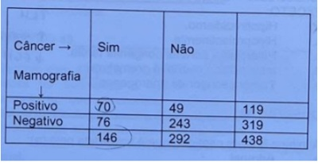
A A prevalência do câncer de mama na mulheres estudadas foi de 60%.
B A sensibilidade pós-teste positiva foi de 80%.
C A sensibilidade pós-teste negativa foi de 65%.
D O exame de mamografia foi de maior especificidade do que sensibilidade.
E A mamografia não serve para fazer diagnóstico precoce de câncer de mama.
Questão 671 · Mortalidade Específ ica · Vigilância Epidemiológica · Sistema de Inf ormação sobre Mortalidade SIM · 4000186975Em relação a situação de saúde da população brasileira podemos afirmar, EXCETO:
A As doenças cardiovasculares são a principal causa de morte no Brasil. As doenças cerebrovasculares e a doença isquêmica do coração são as principais causas, seguidas pelas doenças hipertensivas e pela insuficiência cardíaca.
B O aumento na prevalência da diabetes mellitus pode refletir aumento na incidência, decorrente da epidemia de obesidade e do envelhecimento populacional.
C A mortalidade padronizada atribuível ao câncer colorretal está aumentando e a atribuível ao câncer gástrico está caindo entre homens e mulheres, acompanhando tendências de vários outros países.
D A mortalidade ajustada por idade para doenças respiratórias crônicas está aumentando tanto para Doença Pulmonar Obstrutiva Crônica (DPOC) como para ASMA.
E Os homicídios, têm sido, desde a década de 1980, os grandes responsáveis pelo aumento da mortalidade relacionada com a violência.
Questão 672 · Principais marcos legais do SUS · Lei n 80801990 · Outros · 4000186972Sobre o Sistema Único de Saúde, podemos afirmar corretamente que:
A A Lei Orgânica da Saúde, Lei nº 8.080, dispôs sobre as condições para promoção, proteção e recuperação de saúde, organização e funcionamento dos serviços, reafirmando os princípios doutrinários (universalidade, equidade, integralidade) e as diretrizes organizacionais regionalização, hierarquização, descentralização e participação social.
B Decreto nº 7.508 de 2011, regulamentou a Lei 8.142, definindo as diretrizes organizacionais de universalidade, acessibilidade, longitudinalidade, integralidade e coordenação do cuidado.
C Os Pactos pela Vida, em defesa do SUS e de Gestão foram resultado de um grande acordo entre o Ministério da Saúde, o Conselho Nacional de Secretários de saúde (CONASS), que não contou com a participação do Conselho Nacional de Secretarias Municipais de Saúde (CONASEMS).
D O SUS é financiado com recursos das 3 esferas de governo. A Emenda Constitucional 29 foi regulamentada em 2012, definindo o percentual de 11% e 27,5%, respectivamente, para municípios e estados, enquanto a União aplicará o valor destinado no ano anterior acrescido da variação nominal do Produto Interno Bruto (PIB) dos dois anos anteriores.
E As comissões Intergestoras bipartites em nível nacional e tripartite em nível estadual constituíram- se em fóruns privilegiados dos novos mecanismos de gestão.
Questão 673 · Atributos gerais da Atenção Primária à Saúde APS · 4000186968Sobre os atributos da APS podemos afirmar, EXCETO:
A O conceito "porta de entrada ao sistema de saúde" refere-se tanto à acessibilidade quanto à utilização do serviço pela população, seja em caso de um novo evento de saúde ou de um novo episódio de um evento antigo.
B A longitunidalidade pressupõe a existência de uma fonte regular de atenção e a recorrência a ela ao longo do tempo, o que implica a adscrição da população pelas equipes de saúde.
C A integralidade no cuidado está associada à maior quantidade de ações de prevenção, à maior adesão aos tratamentos recomendados e à maior satisfação da população com o atendimento.
D Devido à mudança do perfil epidemiológico, com a presença crescente de doenças crônicas e de multimorbidades, a integração entre diferentes serviços é fundamental, e os serviços de atenção primária devem exercer seu papel de coordenar os cuidados.
E A coordenação está associada a uma melhor identificação dos problemas de saúde, à adesão mais efetiva a tratamentos e dieta, à execução mais cuidadosa de exames e consultas de encaminhamentos, aumentando, com isso, o número de solicitações de exames complementares.
Questão 674 · Declaração de óbito DO Atestado de óbito · 4000186946A respeito da Declaração de Óbito, pode-se afirmar que
A quando o médico não souber ou não tiver condições de definir a causa mortis, deve necessariamente enviar o corpo ao Instituto Médico Legal.
B o médico poderá atestar o óbito sem tê-lo verificado pessoalmente, desde que esteja baseado em informações confiáveis e fidedignas.
C é dever do médico atestar óbito de paciente ao qual vinha prestando assistência.
D no caso de morte violenta ou suspeita, é facultativo ao médico assistente atestar o óbito ou não.
E é permitido ao médico cobrar remuneração pelo fornecimento do atestado de óbito somente quando isto ocorrer fora do horário habitual de trabalho.
Questão 675 · Método Clínico Centrado na Pessoa · 4000186943O Método Clínico Centrado na Pessoa é uma ferramenta bastante utilizada na Medicina de Família e Comunidade. Ele busca orientar o atendimento a partir da perspectiva da pessoa que procura o serviço de saúde. A respeito desse assunto, correlacione as colunas e, em seguida, assinale a alternativa que apresenta a sequência CORRETA. 1. Explorando a doença e a experiência com a doença. 2. Incorporando prevenção e promoção de saúde. 3. Intensificando o relacionamento entre pessoa e médico. 4. Sendo realista. 5. Entendendo a pessoa como um todo. 6. Elaborando um plano conjunto para o manejo dos problemas. ( ) Papéis da pessoa atendida e do médico. ( ) Dimensões da doença (sentimentos, ideias, expectativas). ( ) Compaixão e consciência de si mesmo. ( ) Tempo de consulta e timing. ( ) Identificação precoce. ( ) História de vida da pessoa.
A 5/ 3/ 2/ 1/ 4/ 6
B 6/ 3/ 4/ 5/ 1/ 2
C 6/ 1/ 3/ 4/ 2/ 5
D 1/ 2/ 3/ 4/ 5/ 6
E 4/ 3/ 2/ 5/ 1/ 6
Questão 676 · Exame f ísico e Avaliação Funcional do Idoso · 4000186936Na avaliação global do idoso, a avaliação funcional é de extrema importância para determinar o grau de independência da pessoa. Para tal avaliação, dispõe-se das escalas de KATZ - atividades da vida diária - (K) e LAWTON - atividades instrumentais da vida diária - (L). Assinale a alternativa que apresenta a sequência CORRETA das escalas. ( ) Deambular. ( ) Manter controle sobre suas necessidades fisiológicas. ( ) Utilizar telefone. ( ) Utilizar meios de transporte. ( ) Realizar compras.
A K/ K/ L/ L/ K
B K/ B/ Z/ L/ L
C K/ K/ L/ K/ L
D L/ K/ L/ L/ K
E K/ K/ L/ L/ L
Questão 677 · Metabolismo lipídico · Fisiologia do Envelhecimento · 4000186914Com o envelhecimento ocorre mudança na composição corporal, como:
A redução da gordura visceral e diminuição da massa muscular.
B aumento da gordura visceral e nunca diminuição da massa muscular.
C aumento da gordura visceral e diminuição da massa adiposa.
D aumento da gordura visceral e diminuição da massa muscular.
Questão 678 · Fisiologia do Envelhecimento · 4000186909Os idosos devem ser orientados a reduzir a intensidade do exercício em dias úmidos ou quentes, pois:
A O fluxo sanguíneo da pele aumenta com o envelhecimento, com consequente menor eficiência da sudorese e da regulação térmica.
B O fluxo sanguíneo da pele diminui com o envelhecimento, com consequente menor eficiência da sudorese e da não regulação térmica.
C O fluxo sanguíneo da pele diminui com o envelhecimento, com consequente maior eficiência da sudorese e da regulação térmica.
D O fluxo sanguíneo da pele diminui com o envelhecimento, com consequente menor eficiência da sudorese e da regulação térmica.
Questão 679 · Cuidados paliativos · 4000186867Segundo a definição da OMS de Cuidados Paliativos, assinale a alternativa correta.
A O cuidado paliativo só deve ser considerado para o paciente em fim de vida.
B O cuidado paliativo tem como objetivo aliviar o sofrimento apenas para o paciente.
C O cuidado paliativo é a abordagem realizada por equipe multidisciplinar e tem como objetivo promover a qualidade de vida de paciente e familiares diante de doenças que ameaçam a continuidade da vida.
D O cuidado paliativo deve ser realizado apenas pelo médico.
Questão 680 · Prevenção Primária · Estratif icação do risco cardiovascular global e metas terapêuticas · 4000186827Em um cenário de prevenção primária, pode-se afirmar que:
A A redução de eventos vasculares é comparativamente menor do que na prevenção secundária, mas ainda assim robustamente custo-efetiva em pacientes diabéticos e não-diabéticos com risco CV > 7,5% em 10 anos
B A redução de eventos vasculares é comparativamente maior do que na prevenção secundária, mas ainda assim robustamente custo-efetiva em pacientes diabéticos e não-diabéticos com risco CV > 7,5% em 10 anos.
C A redução de eventos vasculares não é comparativamente menor do que na prevenção secundária, mas ainda assim robustamente custo-efetiva em pacientes diabéticos e não-diabéticos com risco CV > 7,5% em 10 anos.
D A redução de eventos vasculares é comparativamente menor do que na prevenção primaria, mas ainda assim robustamente custo-efetiva em pacientes diabéticos e não-diabéticos com risco CV > 7,5% em 10 anos.
Questão 681 · Atributos gerais da Atenção Primária à Saúde APS · 4000186820Atenção Primária à Saúde (APS) atuando na identi cação precoce de casos graves, com o adequado manejo das pessoas com síndrome gripal (SG), está:
A Potencializando as ações de cuidado longitudinal aos cidadãos, além da coordenação das ações fora dos demais níveis de atenção da Rede da Atenção à Saúde (RAS).
B Potencializando as ações de cuidado longitudinal aos cidadãos, além da coordenação das ações entre os demais níveis de atenção da Rede da Atenção à Saúde (RAS).
C Potencializando as ações sem cuidado longitudinal aos cidadãos, além da coordenação das ações entre os demais níveis de atenção da Rede da Atenção à Saúde (RAS).
D Potencializando as ações de cuidado longitudinal aos cidadãos, contra a coordenação das ações entre os demais níveis de atenção da Rede da Atenção à Saúde (RAS).
Questão 682 · Financiamento do SUS · 4000186735"O programa Previne Brasil foi instituído pela Portaria nº 2.979, de 12 de novembro de 2019. O novo modelo de nanciamento altera algumas formas de repasse das transferências para os municípios, que passam a ser distribuídas com base em quatro critérios: capitação ponderada, pagamento por desempenho, incentivo para ações estratégicas e Incentivo nanceiro com base em critério populacional. A proposta tem como princípio a estruturação de um modelo de nanciamento focado em aumentar o acesso das pessoas aos serviços da Atenção Primária e o vínculo entre população e equipe, com base em mecanismos que induzem à responsabilização dos gestores e dos pro ssionais pelas pessoas que assistem." (Ministério da Saúde, 2009.) Assinale a alternativa correta:
A O componente Incentivo financeiro com base em critério populacional faz parte da apuração do valor de referência para o financiamento da atenção secundária, quaternária a saúde e preterição da estratégia saúde da família.
B O valor do incentivo per capita é definido pelo Ministério da Fazenda a cada quinze dias e publicado em portaria restrita para os secretários de saúde de cada município.
C O Programa Previne Brasil está sintetizado em medidas de prevenção de doenças infectocontagiosas, estimulando o uso de preservativo masculino e feminino como principal medida de melhora na sobrevida populacional uma vez que o aumento de doenças como HIV, Sífilis e Hepatites virais ocasionaram grande impacto financeiro na saúde pública nesta década.
D O aporte estabelecido por município e Distrito Federal leva em conta estimativa populacional mais recente divulgada pelo IBGE.
E O financiamento do SUS é oriundo de recursos financeiros do Orçamento da Seguridade Social, recursos da União e dos estados, deixando aos municípios a isenção do financiamento, porém com a obrigatoriedade de gerir estes fundos dentro dos seus limites territoriais.
Questão 683 · Financiamento do SUS · 4000186734"O programa Previne Brasil foi instituído pela Portaria nº 2.979, de 12 de novembro de 2019. O novo modelo de nanciamento altera algumas formas de repasse das transferências para os municípios, que passam a ser distribuídas com base em quatro critérios: capitação ponderada, pagamento por desempenho, incentivo para ações estratégicas e Incentivo nanceiro com base em critério populacional. A proposta tem como princípio a estruturação de um modelo de nanciamento focado em aumentar o acesso das pessoas aos serviços da Atenção Primária e o vínculo entre população e equipe, com base em mecanismos que induzem à responsabilização dos gestores e dos pro ssionais pelas pessoas que assistem." (Ministério da Saúde, 2009.) Assinale a alternativa correta:
A Os incentivos financeiros para ações estratégicas abrangem características específicas de acordo com a necessidade de cada município ou território. Esses incentivos contemplam a implementação de programas, estratégias e ações que refletem na melhoria do cuidado na Atenção Primária a Saúde. São exemplos o Programa Saúde na Hora, equipe de Saúde da Família Ribeirinha e equipe de Consultório na Rua.
B A capitação ponderada é uma forma de repasse financeiro da Atenção Primária às prefeituras e ao Distrito Federal, cujo modelo de remuneração é calculado com base no número de pessoas cadastradas. O cadastro deve ser feito pelas equipes de Saúde da Família, equipes de Atenção Primária, equipes de Saúde da Família Ribeirinha, equipes de Consultório na Rua ou equipes de Atenção Primária Prisional.
C O pagamento por desempenho é um dos componentes que fazem parte da transferência mensal aos municípios. Nesse componente, a definição do valor a ser transferido depende dos resultados alcançados no conjunto de indicadores monitorados e avaliados no trabalho das equipes de Saúde da Família e de Atenção Primária.
D A proporção de gestantes com realização de exames para sífilis e HIV, proporção de mulheres com coleta de citopatológico na APS e proporção de crianças de um ano de idade vacinadas na Atenção Primária a Saúde contra Difteria, Tétano, Coqueluche, Hepatite B, infecções causadas por haemophilus influenzae tipo b e Poliomielite inativada são indicadores do Previne Brasil. Sendo estes indicadores estrem atrelados ao Pagamento por Desempenho.
E Todas as alternativas estão corretas.
Questão 684 · Prevenção em Saúde · 4000186733"A epidemia de tabaco é principal causa de morte, doença e empobrecimento. A epidemia de tabaco é uma das maiores ameaças à saúde pública que o mundo já enfrentou, sendo responsável pela morte de mais de 8 milhões de pessoas por ano. Mais de 7 milhões dessas mortes são resultado do uso direto do tabaco, enquanto mais de 1,2 milhão de mortes são resultados de não-fumantes expostos ao fumo passivo. Quase 80% dos mais de 1,1 bilhão de fumantes em todo o mundo vivem em países de baixa e média renda, onde a carga das doenças relacionadas ao tabaco e a morte é mais pesada. Os usuários de tabaco que morrem prematuramente privam suas famílias de renda, aumentam o custo dos cuidados de saúde e impedem o desenvolvimento econômico." (Organização Pan-Americana da Saúde) Assinale a alternativa correta:
A Fumar acelera a perda óssea e é um fator de risco para fratura de quadril em mulheres. Porém parar de fumar não é capaz de reverter a perda de densidade mineral óssea ou diminuir o risco excessivo de fratura de quadril uma vez que a exposição do risco já foi estabelecida.
B Os indivíduos que param de fumar reduzem o risco de desenvolver e morrer de doenças relacionadas ao tabaco. A triagem de todos os pacientes quanto ao uso de tabaco e o fornecimento de aconselhamento comportamental e farmacoterapia para parar de fumar estão entre os serviços preventivos mais valiosos que podem ser oferecidos na atenção primária a saúde.
C Dentre as possíveis consequências de suspender o tabaco está a síndrome de abstinência definicotina. Está associado a sintomas de depressão e ansiedade, a sua incidência não há relação entre os indivíduos com histórico de doença psiquiátrica.
D O ganho de peso geralmente ocorre após dois meses de cessação do tabagismo. Os mecanismos por trás do ganho de peso parecem ser a diminuição da taxa metabólica, aumento da atividade da lipoproteína lipase, mudanças nas preferências alimentares e aumento da ingestão calórica. Considerando os riscos de saúde da obesidade, a cessação do tabaco pode não superar benefícios visto a maior proporção na elevação do risco cardiovascular com a obesidade se comparada com a tabagismo. Sendo assim é importante individualizar a orientação frente a retirada do hábito do tabagismo.
E O tabagismo é um fator de risco para diversos distúrbios oftalmológicos, incluindo o desenvolvimento de cataratas, degeneração macular relacionada à idade, presbiopia, heterocromia ocular e policoria. Parar de fumar parece diminuir esses riscos ao longo do tempo.
Questão 685 · Violência · 4000186731Grupo populacional heterogêneo, caracterizado por sua condição de pobreza extrema, pela interrupção ou fragilidade dos vínculos familiares e pela falta de moradia convencional regular. São pessoas compelidas a habitar logradouros públicos (ruas, praças, cemitérios, etc.), áreas degradadas (galpões e prédios abandonados, ruínas, etc.) e, ocasionalmente, utilizar abrigos e albergues para pernoitar. (Ministério da Saúde) Assinale a alternativa correta:
A Como o desemprego é uma das principais motivações para a perda da residência e a permanência em situação de rua, a População em Situação de Rua que tem vínculo trabalhista formal é muito baixa. Trabalhos informais, ou "bicos", são altamente prevalentes das pessoas que permanecem vivendo na rua. Benefícios sociais são vias de renda ainda a ser viabilizada pelos gestores públicos para os indivíduos em situação de rua.
B Pessoas em situação de rua com doença mental que passam por diversos serviços e experienciam adequada coordenação de seus cuidados mostram grande resistência na melhora dos sintomas, sendo o público mais comumente presente em hospitalizações psiquiátricas no Brasil, independente da região, além apresentar frequentes atendimentos ambulatoriais.
C A população que se declara lésbica, gay, bissexual ou transexual é um recorte peculiarmente exposto à violência quando em situação de rua. Sua chegada à situação de rua comumente carrega um histórico de rejeição e exclusão do meio familiar prévio devido à intolerância que permeia a sociedade. Além disso é preciso ressaltar que o Brasil é um dos países de maior taxa de homicídio de pessoas trans no mundo.
D A mortalidade entre mulheres jovens em situação de rua é até 5 vezes a mais à dos homens em situação de rua, diferente a tendência da população geral. Uma possível interpretação para esse dado pode ser que os efeitos nocivos da vida na rua para as mulheres são ainda mais fatais do que para os homens, principalmente pelo maior abuso drogas nessa população se comparado aos demais.
E São numerosos os motivos para o adoecimento na rua. A insegurança alimentar, as aglomerações, a dificuldade de acesso a políticas preventivas e a obesidade sarcopênica são exemplos de como a População em Situação de Rua está mais vulnerável a agravos de saúde do que a população geral.
Questão 686 · Saúde Suplementar · 4000186729"Em 2000, foi criada, pela Lei nº 9.961/2000, a Agência Nacional de Saúde (ANS) - autarquia responsável pela regulação, normatização, controle e scalização das atividades de assistência suplementar à saúde. Diferente da experiência de outros países, nos quais a saúde suplementar é feita a partir da própria atividade econômica, o governo brasileiro optou por regular o que é oferecido pelos planos de saúde, tendo como principais objetivos corrigir as distorções quanto às seleções de risco e preservar a competitividade do mercado". Saúde suplementar no Brasil: o papel da Agência Nacional de Saúde Suplementar na regulação do setor. Physis. 2008. Com relação à medicina privada, as operadoras de plano de saúde podem ser classificadas conforme o seu funcionamento. Associe as colunas e assinale a alternativa correta. A- Seguradoras especializadas em saúde. B- Autogestões. C- Cooperativas médicas. D- Administradoras de benefícios. I. Pessoa jurídica de direito privado, sem ns lucrativos, que opera plano de saúde, criada por empresas, associações de pessoas físicas ou jurídicas, fundações, sindicatos, entidades de categorias pro ssionais, ou assemelhados, com o objetivo de prestar assistência à saúde exclusivamente a seus empregados, ex- empregados, administradores, ex-administradores, associados e dependentes do grupo familiar. II. São operadoras que não possuem rede própria, mas referenciam uma rede de serviços, ou seja, pagam diretamente aos prestadores de serviços integrantes da rede, em nome dos clientes que utilizam os serviços. Também são obrigadas a prever a livre escolha, em que os segurados podem escolher estabelecimentos ou pro ssionais de saúde não referenciados pela seguradora, reembolsando o bene ciário dentro de limites contratualizados. III. Pessoa jurídica que propõe a contratação de plano coletivo na condição de estipulante ou que presta serviços para pessoas jurídicas contratantes de planos privados coletivos de assistência à saúde. Quando relacionada a entidades pro ssionais, contribui para identi car produtos mais adequados a esta coletividade e a reduzir os custos. IV. De acordo com a Lei n o 5.764/71 (Lei das Cooperativas), a cooperativa é uma sociedade de pessoas que reciprocamente se obrigam a contribuir com bens ou serviços para o exercício de uma atividade econômica. As cooperativas médicas são operadoras que podem comercializar planos para pessoas físicas ou jurídicas, constituir uma rede de serviços própria ou contratar terceiros.
A A - II, B - I, C - IV, D - III.
B A - II, B - I, C - III, D - IV.
C A - II, B - IV, C - III, D - I.
D A - IV, B - III, C - II, D - I.
E A - IV, C - II, B - I, D - III.
Questão 687 · Saúde Suplementar · Atenção Primária à Saúde APS no Brasil · 4000186728Agência Nacional de Saúde ANS Lei n 99612000 "Em 2000, foi criada, pela Lei nº 9.961/2000, a Agência Nacional de Saúde (ANS) - autarquia responsável pela regulação, normatização, controle e scalização das atividades de assistência suplementar à saúde. Diferente da experiência de outros países, nos quais a saúde suplementar é feita a partir da própria atividade econômica, o governo brasileiro optou por regular o que é oferecido pelos planos de saúde, tendo como principais objetivos corrigir as distorções quanto às seleções de risco e preservar a competitividade do mercado". Saúde suplementar no Brasil: o papel da Agência Nacional de Saúde Suplementar na regulação do setor. Physis. 2008. Assinale a alternativa correta:
A O atual modelo do sistema de saúde suplementar brasileiro tem como base a lógica biomédica com foco na doença, a excessiva medicalização e o privilégio do uso de tecnologias nas práticas de cuidado.
B Ao contrário do observado no SUS (Sistema Único de Saúde), não há no sistema privado a cultura de um arranjo que favoreça a constituição de linhas de cuidado que incorporem estratégias de promoção conjuntamente à assistência, como ocorre em modelos que têm a coordenação do cuidado na APS (Atenção Primária a Saúde).
C A ANS tem estimulado as operadoras de planos de saúde a repensarem a organização do sistema de saúde suplementar e a formularem medidas para a adoção de modelos assistenciais estruturados no cuidado integral, com ênfase na promoção e na prevenção da saúde dos beneficiários.
D O modelo de remuneração médica que predomina na maior parte dos serviços é o fee-for service (pagamento por serviços), que estimula a sobreutilização, não favorece ""ações robustas para mudança comportamental e de reconhecimento e abordagens precoces de fatores de risco para adoecimento"", associa-se com uma distribuição desigual dos médicos em relação às suas especialidades com concentração em áreas de maior rentabilidade, diminui o limiar para a prescrição de intervenções invasivas e exames complementares, muitas vezes desnecessários, aumenta o número de consultas e procedimentos.
E Todas as alternativas estão corretas.
Questão 688 · Violência · Def inição e Epidemiologia · 4000186727Um professor percebe que um menino de 6 anos de idade está com um olho roxo. Quando questionado sobre como a lesão ocorreu, o menino a rma que o padrasto o agrediu. Ele é encaminhado ao serviço social e levado a um atendimento médico para sua avaliação adicional. No exame físico, ele tem um hematoma na área externa da órbita esquerda. Em uma inspeção cuidadosa, há 2 hematomas lineares na bochecha esquerda que se estendem até a orelha e 4 hematomas menores na parte superior do braço. No questionamento ativo, o menino declara que o padrasto o agarrou pelo braço e bateu em sua face por tê-lo perturbado enquanto assistia televisão. O menino também declara que há muitas discussões em casa, que seu padrasto é ameaçador e já espancou sua mãe e, se ele for desobediente, o padrasto agarra sua orelha e a torce até machucar. Assinale a alternativa que contenha somente fatores de risco para o abuso infantil:
A Diabetes Gestacional, filho único e residir em casa de alvenaria.
B Choro excessivo e/ou acessos de raiva, Gêmeos e aumento do perímetro encefálico ao nascer.
C Condição socioeconômica desfavorável, má qualidade da educação dos pais/cuidadores e baixo peso ao nascer.
D Crianças com problemas de saúde mental ou físicos, histórico de violência na família e aleitamento com fórmula.
E Nascer em famílias de etnia asiáticas, gravidez não programada e avós ausentes.
Questão 689 · Lista Nacional de Notif icação Compulsória de doenças agravos e eventos de saúde pública · Violência · 4000186726Um professor percebe que um menino de 6 anos de idade está com um olho roxo. Quando questionado sobre como a lesão ocorreu, o menino a rma que o padrasto o agrediu. Ele é encaminhado ao serviço social e levado a um atendimento médico para sua avaliação adicional. No exame físico, ele tem um hematoma na área externa da órbita esquerda. Em uma inspeção cuidadosa, há 2 hematomas lineares na bochecha esquerda que se estendem até a orelha e 4 hematomas menores na parte superior do braço. No questionamento ativo, o menino declara que o padrasto o agarrou pelo braço e bateu em sua face por tê-lo perturbado enquanto assistia televisão. O menino também declara que há muitas discussões em casa, que seu padrasto é ameaçador e já espancou sua mãe e, se ele for desobediente, o padrasto agarra sua orelha e a torce até machucar. Assinale a alternativa correta:
A A notificação de abuso infantil não é e nem vale como denúncia policial.
B A notificação de abuso infantil é a informação emitida pelo Setor Saúde, para o Conselho Tutelar, com a finalidade de promover cuidados sociossanitários voltados para a proteção da criança.
C O profissional de saúde, por motivos éticos, deve ter o cuidado de conversar com a família, explicando-lhe a necessidade da notificação para que ela seja beneficiada com ajuda competente.
D O abuso infantil é de notificação compulsória.
E Todas as alternativas acima estão corretas.
Questão 690 · Abordagem Comunitária · 4000186725Com as resoluções da Conferência Mundial de Saúde em Alma-Ata e da criação do Programa de Medicina Tradicional, no m dos anos 1970, preocupada em promover maior acesso a tecnologias seguras e de baixo custo, a Organização Mundial da Saúde (OMS) vem estimulando seus Estados-membros a desenvolverem políticas e programas que deem respaldo e quali cação a práticas de cuidados em saúde advindas da tradição popular e das chamadas medicinas alternativas e complementares que gozem de reconhecida segurança e eficácia. Assinale a alternativa correra.
A Não há relação entre o conhecimento técnico médico e o conhecimento popular frente ao uso terapêutica de plantas.
B O nome popular dado a uma planta pode variar conforme a localização geográfica e a cultura das comunidades. Porém a variação entre os gêneros não modifica sua ação terapêutica.
C As plantas possuem inúmeras complexidades, como diversos princípios ativos e variação na quantidade destes, conforme o modo como foi produzida, ocasionando dificuldades aos estudos de farmacocinética e farmacodinâmica.
D Algumas plantas comuns, utilizadas de modo ornamental ou medicinal, podem ser bastante tóxicas, nunca podendo ser utilizadas de forma terapêutica com segurança.
E Plantas produtoras de seiva leitosa tipo látex são utilizadas rotineiramente para substituir o leito materno em populações ribeirinhas visto a sua baixa toxicidade.
Questão 691 · Política Nacional de Práticas Integrativas e Complementares · 4000186724Com as resoluções da Conferência Mundial de Saúde em Alma-Ata e da criação do Programa de Medicina Tradicional, no m dos anos 1970, preocupada em promover maior acesso a tecnologias seguras e de baixo custo, a Organização Mundial da Saúde (OMS) vem estimulando seus Estados-membros a desenvolverem políticas e programas que deem respaldo e quali cação a práticas de cuidados em saúde advindas da tradição popular e das chamadas medicinas alternativas e complementares que gozem de reconhecida segurança e eficácia. Assinale a alternativa correta:
A A Medicina Antroposófica se provou segura, eficaz porém ocasiona aumento nos custos de saúde visto a complexidade da sua prática. Está associada a melhoras clínicas substantivas e ao aumento importante da qualidade de vida.
B A homeopatia compartilha com outras Práticas Integrativas e Complementares (PICs) a visão integral do ser humano e pode contribuir na ampliação da arte de cuidar da prática do médico, sobretudo em condições agudas nos serviços de emergência.
C As ferramentas que checam regularidades sucessos terapêuticos dos procedimentos terapêuticos praticados dentro da visão biomédica são suficientes para comprovar efeitos de práticas terapêuticas baseadas em plataformas conceituais de naturezas diferentes.
D As bases de dados que concentram a literatura médica disponibilizam estudos custo efetivos favoráveis ao uso da acupuntura como método terapêutico.
E Todas as alternativas estão corretas.
Questão 692 · Enurese Noturna · Abordagem Familiar · Constipação · 4000186723Assinale a alternativa correta:
A A enurese e a encoprese na idade tenra são queixas incomuns na atenção primária à saúde (APS), e na maioria dos casos, malignas quando não irreversíveis, podendo coexistir em 20 a 30% dos casos.
B Componentes psicossociais e de dinâmicas familiares, assim como a condução do desfralde, estão comumente associados a enurese e a encoprese.
C A desmopressina nasal, como opção terapêutica para a enurese, é usada com segurança mesmo em pacientes com risco de convulsões induzidas por hiponatremia atribuída a esta droga.
D Uma abordagem centrada na pessoa e o apoio do núcleo familiar não se mostraram efetivos para o manejo e o sucesso terapêutico em pacientes com enurese e encoprese.
E A prescrição da colonoscopia em casos de encoprose primária rotineiramente é realizada, sobretudo com preparo utilizando laxativos osmóticos e irritativos.
Questão 693 · Estudos de CasoControle · Odds Ratio ou Razão de Chances · Risco Relativo RR Razão de Riscos · 4000186675Sobre as medidas de associação em epidemiologia, assinale a alternativa CORRETA:
A Os estudos de casos e controles e ensaio clínico são delineados para determinar se existe associação entre exposição a um fator e desenvolvimento de uma doença.
B Se o risco relativo for maior do que 1, o risco em pessoas expostas é menor que o risco em pessoas não expostas, evidenciando uma associação negativa, e pode ser indicativo de efeito de proteção.
C Apesar de não se calcular o risco relativo em estudos de casos e controles, sob muitas condições, pode-se obter uma ótima estimativa do risco relativo usando a odds ratio.
D A prevalência de uma doença na população é chamada de risco absoluto. O risco absoluto pode indicar a magnitude do risco em um grupo de pessoas sem exposição.
Questão 694 · Program Saúde da Família PSF e Estratégia Saúde da Família ESF · 4000186674Programa de Agentes Comunitários de Saúde PACS Sobre território e comunidade adscrita, assinale a alternativa INCORRETA:
A A territorialização e a definição do território como responsabilidade de cada equipe estão entre as diretrizes da Política Nacional de Atenção Básica (PNAB).
B Em áreas de grande dispersão territorial, áreas de risco e vulnerabilidade social, recomenda- se a cobertura de 70% da população com número máximo de 1.000 pessoas por ACS.
C O processo de territorialização deve ser considerado um meio operacional para o desenvolvimento do vínculo entre os serviços de saúde e a população, permitindo aproximação para o entendimento dos problemas e necessidades de saúde do território.
D Um exemplo da importância de se conhecer o território para atuação nos principais problemas de saúde da comunidade é o caso região Amazônica que concentra mais de 99% dos casos de malária do Brasil, e a atuação integrada da Vigilância em Saúde com a Atenção Básica é fundamental para o controle da doença.
Questão 695 · Estudos SeccionaisTransversais · 4000186673Um estudo foi desenvolvido na cidade de Bambuí, situada no interior de Minas Gerais, para determinar a prevalência e os fatores sociodemográ cos associados à depressão. Um questionário foi aplicado para identi car os indivíduos com depressão em uma amostra representativa da população da cidade com 18+ anos de idade (1.041 participantes). Os episódios depressivos atuais estavam associados ao sexo, à idade e à condição atual de trabalho. Saliente-se que as determinações do episódio depressivo atual e da ocupação foram feitas simultaneamente, ou seja, não foi possível saber se a ausência de trabalho foi anterior ou posterior ao surgimento do episódio depressivo. Assinale a alternativa que apresenta CORRETAMENTE o tipo de estudo epidemiológico descrito:
A Caso controle.
B Coorte.
C Ecológico.
D Seccional.
Revisar: possível letra faltando em enunciado
Questão 696 · Princípios e Diretrizes do SUS na Lei n 80801990 · Lei n 80801990 · 4000186672Sobre o disposto na Lei nº 8.080, de 19 de setembro de 1990 e suas alterações, assinale a alternativa CORRETA:
A Um dos princípios do SUS é a igualdade de assistência, entendida como conjunto articulado e contínuo das ações e serviços preventivos e curativos, individuais e coletivos, com amplo acesso.
B Estão incluídas no campo de atuação do SUS a execução de ações de vigilância sanitária, de vigilância epidemiológica, de saúde do trabalhador, e de assistência terapêutica integral.
C O SUS promoverá a articulação do subsistema de Atenção à Saúde Indígena, com os órgãos responsáveis pela Política Indígena do País; e caberá aos municípios, com seus recursos próprios, financia o subsistema existente em seu território.
D A assistência à saúde é livre à iniciativa privada. Na prestação de serviços privados de assistência à saúde, serão observados os princípios éticos e as normas expedidas pelo gestor privado, quanto às condições para seu funcionamento.
Questão 697 · Medidas de Tendência Central e de Dispersão · 4000186671A análise descritiva de dados em bioestatística, além da construção de tabelas e gráficos, consistem também no cálculo de medidas que são úteis na produção da visão global dos dados. Medidas de tendência central resumem o conjunto de dados em um único número. São medidas de tendência central, EXCETO:
A Moda.
B Média.
C Amplitude.
D Mediana.
Questão 698 · Vigilância Sanitária · 4000186669O Sistema Nacional de Vigilância Sanitária, dentro do seu campo de competência, detecta emergências em saúde pública e define ações de intervenção, por intermédio de, EXCETO:
A Decretos municipais de ações contra a vacinação, levando ao aumento de notificações compulsórias de doenças.
B Postos da Anvisa em portos, aeroportos e fronteiras, que notificam eventos relacionados a viajantes, meios de transporte e produtos.
C Farmácias notificadoras, que comunicam eventos adversos e queixas técnicas em relação ao consumo de medicamentos.
D Centro de Informações Toxicológicas, que notifica intoxicações e envenenamentos.
Questão 699 · NOB 0193 · 4000186668A participação popular compreende as múltiplas ações que diferentes forças sociais desenvolvem para in uenciar a formulação, a execução, a scalização e a avaliação das políticas públicas e/ou dos serviços básicos na área social, como a saúde. Nesse contexto, assinale a alternativa CORRETA sobre a participação popular no SUS:
A Os conselhos e as conferências de saúde são expressivas formas de centralização do poder, considerando suas finalidades e sua forma de estruturação.
B As conferências de saúde são espaços de debates, ocorrem a cada 2 anos e têm natureza deliberativa. Sua composição é diferente da paridade dos conselhos.
C Os conselhos de saúde são compostos de forma paritária por 50% de usuários, 25% de trabalhadores CLT e 25% de gerentes de centros de saúde.
D Os conselhos gestores são os mecanismos mais importantes de participação popular e têm função expressiva na formulação de políticas públicas.
Questão 700 · Conceitos gerais · 4000186667Sobre o acidente de trabalho, assinale a alternativa INCORRETA:
A Via de regra, a Comunicação de Acidente de Trabalho (CAT) é emitida pela própria empresa na qual a pessoa acidentada atua.
B O acidente de trajeto é aquele que ocorre durante o percurso residência/local de trabalho/residência, não importando o meio de locomoção utilizado.
C O acidente de trabalho típico é o que ocorre pelo exercício do trabalho, a serviço da empresa, ocasionando lesão corporal ou perturbação funcional.
D No período destinado à refeição ou descanso, no local de trabalho ou durante este horário, a pessoa não será considerada a serviço da empresa, não sendo necessário CAT, caso se acidente.
Questão 701 · Def inição de Medicina Baseada em Evidências · 4000186666São objetivos e princípios da Medicina Baseada em Evidências (MBE), EXCETO:
A Reconhecimento do papel da evidência na tomada de decisão clínica efetiva.
B Descrição de uma abordagem sistemática no processo de solução do problema clínico.
C Não há necessidade de identificar hierarquias de evidências para a tomada de decisão, existem um mesmo nível de evidências.
D Somente o nível de evidências nunca é suficiente – necessidade de fazer um contrabalanço entre o risco e o benefício das estratégias alternativas no contexto dos valores e preferências das pessoas.
Questão 702 · Especif icidade · 4000186665Um estudo avaliou recentemente o desempenho diagnóstico de dois testes para o rastreamento de uma determinada doença, um por ligação telefônica e outro por videoconferência. Os resultados sugerem que o teste realizado via ligação telefônica identi cou corretamente a doença em 68% das vezes e descartou corretamente a doença em 73% das vezes. A prevalência da doença na amostra estudada foi de 3%. Quando os participantes apresentavam um resultado positivo no teste realizado por ligação telefônica, os pesquisadores realizavam o teste por videoconferência. Caso o resultado do teste por videoconferência fosse positivo, os participantes eram avaliados por um especialista de forma presencial. A metodologia utilizada neste caso
A maximiza a especificidade.
B diminui a segurança de que os resultados positivos representem a doença.
C aumenta o valor preditivo negativo do segundo teste se o primeiro for negativo.
D reduz o valor preditivo positivo, mas aumenta o risco da doença passar despercebida.
Questão 703 · Estudos de f ase II · Métodos de controle de vieses · Pesquisa Clínica · 4000186616Um ensaio clínico fase II avaliou os benefícios de uma nova vacina para a prevenção da infecção por Mycobacterium tuberculosis. O estudo randomizou 990 adolescentes que residiam em locais com alta prevalência de tuberculose. A randomização foi realizada em bloco em uma proporção de 1:1:1 para os grupos nova vacina, BCG ou placebo e foi estrati cada de acordo com o local de residência. O cegamento foi parcial porque a BCG causa uma reação aparente no local da aplicação e é administrada somente uma vez. Os pro ssionais que realizaram a análise laboratorial dos resultados não tinham conhecimento da alocação dos grupos. Considerando as características desse estudo, afirma-se: I. O cegamento parcial irá afetar a avaliação do efeito da intervenção, pois as possíveis variáveis que sabidamente afetam o desfecho e as de confusão, não aferidas, podem apresentar diferentes probabilidades de distribuição entre os grupos. II. A estrati cação por local de residência é uma estratégia de restrição dos participantes que ingressam em um estudo por uma característica. III. Os estudos fase II. têm como objetivos principais oferecer informações preliminares sobre a e cácia da intervenção e a relação entre a dose e a eficácia. Está/Estão correta(s) apenas a(s) afirmativa(s)
A I.
B II.
C III.
D II e III.
Questão 704 · Violência contra o idoso · 4000186615Mulher, 86 anos, vem à consulta referindo dores nas costas após queda no banheiro. Hipertensa prévia com controle inadequado dos níveis pressóricos, esquece de tomar as medicações, tem insônia e di culdades para realizar as atividades da vida diária. Quando questionada sobre a rede de apoio, responde evasivamente. A vizinha que acompanha explica que a paciente mora com o lho de 45 anos, alcoolista, antissocial e desempregado, e que os dois sobrevivem com a aposentadoria da paciente. Ao exame físico: lúcida, orientada e coerente, PA 185/110 mmHg, desnutrida, apresentando higiene inadequada e hematomas em região de dorso incompatíveis com sua história de queda. Em relação ao caso, afirma-se: I. Abuso e maus-tratos estão presentes na forma de violência física e negligência. II. O suporte familiar ausente é um dos fatores de risco associados ao agressor. III. As decisões da idosa devem ser sempre respeitadas, mesmo que contrárias às orientações da equipe, considerando válida a abordagem do agressor como parte do problema. Está/Estão correta(s) a(s) afirmativa(s).
A I, apenas.
B II, apenas.
C I e III, apenas.
D I, II e III.
Questão 705 · Ciclo de vida f amiliar · Genograma · Ferramentas de abordagem f amiliar · 4000186609Mulher, 19 anos, vem à consulta programada com seu médico de família para abordagem familiar. Na entrevista, as seguintes informações são obtidas: a paciente índice é solteira, tem duas lhas de 3 e 1 anos, de pais diferentes. Mora com sua mãe de 40 anos, separada, com a qual tem uma relação con ituosa, e com um irmão de 18 anos, solteiro e gari, na casa da avó de 68 anos, viúva. O irmão tem um lho de 3 meses que não mora com ele. A paciente está desempregada, assim como sua mãe, e a família tem como principal renda a aposentadoria da avó. Em relação ao ciclo de vida dessa família, afirma-se: I. Apresenta número menor de etapas de desenvolvimento decorrentes do processo de adaptação. II. Encontra-se no estágio 1 - adolescentes/ adulto jovem solteiro. III. Não é possível construir um genograma com informações de apenas 4 gerações. Está/Estão correta(s) apenas a(s) afirmativa(s)
A I.
B III.
C I e II.
D II e III.
Questão 706 · Atenção Primária à Saúde APS no Brasil · Atributos gerais da Atenção Primária à Saúde APS · 4000186607Mulher, 83 anos, com cardiopatia isquêmica, diabetes e catarata, vem à Unidade Básica de Saúde trazida pela vizinha com a demanda de ser novamente encaminhada para consulta com o cardiologista, pois havia perdido a marcação. A paciente não fez os exames solicitados, faltou ao procedimento agendado com o oftalmologista e desconhece a causa da sua internação em hospital terciário recentemente. O atributo da Atenção Primária à Saúde mais adequado para atender este caso é
A hierarquização.
B coordenação.
C equidade.
D acesso.
Questão 707 · Sistema de Inf ormação de Agravos de Notif icação SINAN · 4000186602A Vigilância Epidemiológica das Paralisias Flácidas Agudas é de fundamental importância para a detecção da circulação de pólio vírus na população brasileira. Recentemente, no Pará, houve uma noti cação de caso de PFA associada à vacinação pela VOP, 48 horas antes. Em relação às medidas de prevenção da poliomielite na população brasileira, pode-se afirmar:
A Notificação imediata de casos de Paralisia Flácida Aguda em menores de 15 anos e investigação em até 48 horas, além da notificação negativa semanal.
B Vacinação com a VIP (Vacina inativada) ao nascimento e duas doses de reforço com a VOP (Vacina oral atenuada), para prevenção da pólio vacinal.
C Vacinação com a VIP (Vacina Inativada) aos 2, 4 e 6 meses, sem necessidade da VOP (Vacina oral atenuada), para prevenção de pólio vacinal.
D Notificação imediata de casos de Paralisia Flácida aguda de qualquer faixa etária com história de viagem a países com circulação de poliovírus nos últimos 30 dias e coleta oportuna de duas amostras de fezes (até 60 dias após o início dos sintomas), para identificação viral.
Questão 708 · Risco Atribuível · COVID 19 · 4000186600A OMS define Covid-19 longa como uma síndrome “caracterizada como tal três meses após o início da Covid-19, com sintomas que duram, a partir daí, pelo menos dois meses e não podem ser explicados por um diagnóstico alternativo”. Miranda, DAP, et al. (Transactions of The Royal Society of Tropical Medicine and Hygiene, 2022) publicaram um estudo de corte recente em que acompanharam 646 pacientes durante 14 meses com covid-19, confirmada por RT-PCR. A tabela abaixo mostra a associação entre o sexo o risco de Covid longa. A medida que melhor expressa o excesso de casos de Covid longa atribuível ao sexo Feminino (F) é:
A Risco Relativo de 2,15.
B Risco atribuível de 18,98%.
C Odds-Ratio (Razão de chances) de 1,47.
D Risco atribuível de 20,38%.
Questão 709 · Estudos de Coorte · 4000186598No estado do Amazonas em 2018, houve um processo epidêmico de sarampo, conforme Boletim Epidemiológico do MS, 2018. Abaixo, é mostrado um gráfico com a distribuição por faixa etária dos casos de sarampo no estado do AM em 2018: A partir desses dados, o MS instituiu a vacinação contra o sarampo a partir dos 6 meses de idade (dose 0), em situação de epidemia, e, depois a vacinação recomendada aos 12 e 15 meses. Que explicação epidemiológica você daria para os casos de sarampo abaixo de 1 ano?
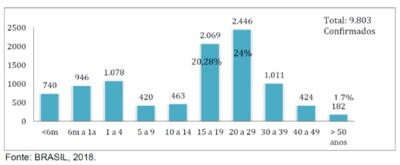
A O surgimento de uma cepa importada que afetaria crianças lactentes (abaixo de 1 ano).
B Um efeito coorte, pois a faixa etária mais afetada, entre 20 e 29 anos, seria composta por mães não vacinadas na infância.
C Maior suscetibilidade de crianças menores de 1 ano devido a baixas condições socioeconômicas.
D Seria somente um efeito de maior notificação de casos mais sintomáticos em crianças menores de 1 ano.
Questão 710 · Prevalência pontual · 4000186596Um teste rápido para Doença de Chagas está sendo testado em dois municípios do estado do PA. É utilizado da mesma forma e pela mesma equipe nos dois municípios, mas a quantidade de resultados falso-positivos entre aqueles que testam positivo no município A é maior do que entre aqueles que testam positivo na população B, considerando-se o teste de Elisa pelo IEC como padrão ouro. Que explicação você considera a mais provável para este achado?
A A especificidade do teste é menor na população A.
B A prevalência da doença é menor na população A.
C A prevalência da doença é maior na população A.
D A especificidade do teste é maior na população A.
Questão 711 · Risco Atribuível Proporcional Populacional ou Fração Etiológica na População · 4000186594Em um estudo de coorte de diarreia em menores de 1 ano, encontrou-se a taxa de incidência na população de estudo (n=-100) igual a 25%. Considerando-se que, entre as 50 crianças que tiveram desmame precoce, 15 apresentaram diarreia e 5, entre os não expostos. Qual é a fração de casos com a doença nessa população atribuível à exposição?
A 30%.
B 10%.
C 20%.
D 50%.
Questão 712 · Método Clínico Centrado na Pessoa · 4000186593“...Muitas doenças são complexas e multifatoriais, exigindo uma abordagem diferente da lógica linear e da tecnologia que podem funcionar tão bem em doenças com uma etiologia especí ca. Experiências de doença como dor crônica, transtornos alimentares, depressão e adição têm uma dimensão existencial que precisa ser levada em conta para que sejam entendidas. Devemos prestar atenção ao sofrimento das pessoas, às suas emoções, crenças e relacionamentos, não apenas por razões humanitárias, mas também porque têm um importante papel na origem das doenças (Foss, 2002).” Sobre o Método Clínico Centrado na Pessoa, pode- se afirmar:
A Em seu Componente 1, entendendo a pessoa como um todo, é mais importante explorar as informações objetivas e tecnicamente relevantes ao diagnóstico diferencial, para, depois, no componente 3, elaborar um projeto comum de manejo de problemas, entender as ideias, sentimentos e expectativas dessa pessoa com relação a sua doença.
B No Componente 3, elaborando um projeto comum de manejo de problemas, o médico deve estabelecer sozinho, quais são as metas e as prioridades a serem alcançadas com o manejo de cada problema que foi priorizado no momento da consulta.
C No componente 04, intensificando o relacionamento entre a pessoa e o profissional de saúde, o médico deve estar atento à transferência: processo pelo qual a pessoa, de forma consciente, projeta, nas outras pessoas que atualmente fazem parte da sua vida – incluindo o médico - pensamentos, comportamentos e reações emocionais originados em outros relacionamentos significativos que ocorreram desde a sua infância.
D Para explorar as 4 dimensões da experiência com a doença, do componente 01, pode-se utilizar o Acróstico SIFE, com as seguintes perguntas durante a entrevista clínica: como você se sente com essa doença, o que você acha que significa essa doença? Como essa doença pode interferir em seu dia a dia? Como você acha que eu poderia ajudá-lo?
Revisar: possível letra faltando em enunciado
Questão 713 · Sistema de Inf ormação de Agravos de Notif icação SINAN · 4000186591Jovem de 22 anos, chega à UBS com quadro de diagnóstico de depressão há 4 anos, apresentando quadro atual mais intenso sem sintomas psicóticos. Esse ao ser indagado, relata desesperança com sua vida e que pensa em “acabar com tudo isso, mas ainda não teve coragem”. Com relação à ideação suicida, qual a conduta a ser tomada?
A O sexo do paciente não deve ser levado em consideração, visto que as estatísticas mostram que o sexo feminino é o mais afetado em casos de suicídio.
B O profissional da saúde deve evitar falar sobre suicídio, para não estimular que essa ideação seja concretizada.
C São objeto de notificação no SINAN apenas AUTOAGRESSÃO e TENTATIVA DE SUICÍDIO, não se notifica IDEAÇÃO.
D Neste caso, o paciente deve ser acompanhado somente pela equipe da UBS, não havendo necessidade de referenciar a outros pontos da Rede de Atenção Psicossocial.
Questão 714 · Rastreamento · 4000186588Mulher, 47 anos, hipertensa, tabagista e sedentária, vem à consulta na UBS com desejo de iniciar atividade física, pois seu irmão, de 52 anos, infartou e está com receio de infartar também. Relatou leve dor no peito de forma ocasional, nos últimos 6 meses, mas acredita que seja de origem muscular. Pai morreu de IAM, aos 43 anos de idade. Relata que se matriculou na aula de dança, porém precisa de atestado. A última consulta dela foi há 13 meses, quando realizou todos os rastreamentos oportunos para idade e condições de saúde, estando todos normais. Que procedimentos o médico deve realizar para liberar a paciente para a atividade física?
A Realizar rastreamento oportunístico com citologia vaginal, mamografia, exame de sangue do protocolo de hipertensão arterial e eletrocardiograma simples.
B Realizar atestado entendendo que os exames anteriores, realizados há menos de 13 meses, estavam todos normais.
C Contraindicar de forma definitiva a atividade proposta, uma vez que agora a paciente é considerada de alto risco e não deve fazer atividade física.
D Realizar rastreamento oportunístico com exames de sangue do protocolo de hipertensão arterial e teste ergométrico.
Questão 715 · Avaliação da Qualidade em Atenção Primária à Saúde · 4000186585Os atributos da APS são fortalecidos pelo Pagamento por Desempenho do Programa Previne Brasil, o que induz o aprimoramento dos processos de trabalho e à quali cação dos resultados em saúde, além de otimizar aspectos como periodicidade e método da avaliação. Exemplo disso é que, por meio do monitoramento desses indicadores, podem ser avaliados os acessos à qualidade e à resolutividade dos serviços prestados pelas eSF/eAP, fornecendo subsídios para medidas de aprimoramento das ações e dando mais transparência aos investimentos na área da saúde para a sociedade. FONTE: Ministério da Saúde/SAPS. Para 2022, temos como indicador avaliado para essas equipes:
A Proporção de gestantes com pelo menos 6 (seis) consultas pré-natal realizadas, sendo a 1ª (primeira) até a 20ª (vigésima) semana de gestação.
B Proporção de crianças de 1 (um) ano de idade vacinadas na APS contra Difteria, Tétano, Coqueluche, Hepatite B, infecções causadas por haemophilus influenzae tipo b e Poliomielite inativada.
C Proporção de pessoas com hipertensão arterial, com consulta e pressão arterial aferida a cada bimestre, seja com o médico ou enfermeiro.
D Proporção de pessoas com diabetes, com consulta e hemoglobina glicada solicitada e realizada a cada ano.
Questão 716 · Risco Relativo RR Razão de Riscos · 4000186549A colonoscopia constitui uma ferramenta diagnóstica e terapêutica importante nas doenças do aparelho digestivo. O ensaio clinico randomizado "E ect of colonoscopy screening on risk of colorectal cancer and related death" (tradução livre: Efeito da colonoscopia de rastreio no risco do câncer colorretal e mortalidade relacionada") publicado na revista New England Journal of Medicine este ano 2022, testou a hipótese se a colonoscopia reduz a incidência do câncer colorretal, comparando pacientes que zeram a colonoscopia versus os pacientes que não zeram o exame (grupo controle). Os resultados do ensaio clínico são apresentados no gráfico a seguir. Os resultados apresentados mostram que
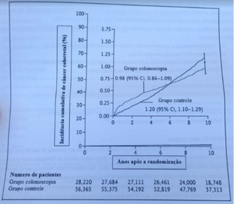
A a incidência de câncer colorretal ao fim do estudo foi maior nos pacientes que fizeram a colonoscopia.
B o risco relativo de câncer colorretal foi de 1,22 para os pacientes que fizeram a colonoscopia.
C A redução relativa do risco do câncer colorretal nos pacientes foi de 18%.
D A colonoscopia não reduz a incidência do câncer colorretal.
Questão 717 · Financiamento na Lei n 81421990 · 4000186515De acordo com a Lei n° 8.142, de 28 de dezembro de 1990, que dispõe sobre a participação da comunidade na gestão do Sistema Único de Saúde (SUS) e sobre as transferências intergovernamentais de recursos nanceiros na área da saúde, para receberem os recursos de que trata o art. 3° desta lei, os Municípios, os Estados e o Distrito Federal deverão contar com:
A Serviço de auditoria interna.
B Estratégia de Saúde da Família.
C Seguridade Social.
D Serviço de Vigilância em Saúde.
E Plano de Saúde.
Questão 718 · Lei n 81421990 · 4000186512A Lei nº 8.142, de 28 de dezembro de 1990, que dispõe sobre a participação da comunidade na gestão do Sistema Único de Saúde (SUS) estabelece que a representação dos usuários nos Conselhos de Saúde e Conferências será paritária em relação ao conjunto dos demais segmentos. Essa participação corresponderá a(ao):
A 25% de delegados indicados pela Conferência Municipal de Saúde + 25% de eleitos.
B 50% de delegados indicados pela Conferência Municipal de Saúde.
C 50% do total de membros do conselho indicados pelo segmento.
D Percentual igual de membros entre todos os segmentos que compõem o Conselho.
E Número par de Conselheiros para manutenção do poder de voto do segmento.
Questão 719 · Financiamento na Lei n 80801990 · 4000186510A Lei nº 8080, de 19 de setembro de 1990, quando trata da gestão nanceira do SUS, define que para o estabelecimento de valores a serem transferidos a Estados, Distrito Federal e Municípios, segundo análise técnica de programas e projetos, será utilizada a combinação de critérios, entre eles a(o):
A Existência de Equidade no Sistema e a alinhamento conceitual dentro da rede de atenção.
B Previsão do plano quinquenal de investimentos da rede e o perfil demográfico da região.
C Rede parametrizada capaz de fiscalizar alinhado com o investimento hospitalar público e privado.
D Rede bancária local e pública e um programa de administração de recursos próprios que interagem.
E Desempenho técnico, econômico e financeiro previsto para o período anual posterior e Fundo de Saúde.
Questão 720 · Lei n 80801990 · 4000186508A Lei nº 8080, de 19 de setembro de 1990, define as competências da direção estadual do Sistema Único de Saúde (SUS). Assinale a alternativa correta:
A Participar das ações de controle e avaliação das condições e dos ambientes de trabalho.
B Coordenar e participar na execução das ações de vigilância epidemiológica com o desenvolvimento de cartilhas e panfletos com linguagem simples.
C Coordenar os serviços de referência nacional com padrões técnicos de assistência à saúde e comunicar ao Ministério da Saúde.
D Controlar e fiscalizar procedimentos, produtos e substâncias de interesse para a saúde e despoluentes ao meio ambiente.
E Formar Consórcios Administrativos Municipais.
Questão 721 · Princípios e Diretrizes do SUS a serem operacionalizados pela Atenção Básica · 4000186503A Atenção Primária à Saúde (APS) deve ser orientada por quatro princípios essenciais segundo Bárbara Starfield. Qual é o significado do Princípio da Integralidade na Atenção Primária à Saúde?
A Orientar e coordenar as referências dos pacientes.
B O acesso primordial das pessoas aos serviços de saúde.
C Capacidade de atender os pacientes em suas necessidades de saúde.
D Disponibilidade como fonte regular de atenção.
E Informar sistematicamente sobre a totalidade das ações realizadas.
Questão 722 · Método SOAP · 4000186502O Registro de Saúde Orientado por Problemas (ReSOAP) tem como nalidade proporcionar informações sobre a pessoa que busca cuidado, prestando atenção aos componentes biológicos, psicológicos, sociais e quaisquer outros aspectos relevantes ao manejo da situação (Gusso e Lopes, 2012). A avaliação (A) é o local, na evolução ReSOAP, para se colocar a lista de problemas da consulta de acompanhamento. Assinale a alternativa que representa o correto preenchimento do A:
A Hipertensão arterial sistêmica (HAS), apendicite, alergia alimentar.
B Descartar gravidez, descartar hipotireoidismo, descartar anemia.
C Suspeita de depressão, provável hepatite, possível sífilis latente.
D Hemopatia, processo respiratório, desconforto.
E Idoso morando sozinho, diabetes mellitus tipo 2 descompensado.
Questão 723 · Método Clínico Centrado na Pessoa · 4000186499Existem vários modelos de abordagem à consulta a serem utilizados pelos médicos. Considera-se que o método que engloba e sistematiza os diversos aspectos positivos das diferentes formas de abordagem aos problemas de saúde é o método da abordagem centrada na pessoa. Esse método utiliza como proposta metodológica que uma consulta atenda às necessidades e às expectativas de médicos e pessoas, abrindo caminho para um atendimento adequado em Atenção Primária à Saúde (APS) (Gusso e Lopes, 2012). Assinale a alternativa que contenha 2 (dois) componentes do método clínico de abordagem à pessoa:
A Incorporando a prevenção quaternária e a promoção de saúde.
B Elaborando um projeto de manejo centrado na opinião do médico e sendo realista.
C Elaborando um plano conjunto de manejo de problemas e promoção de saúde.
D Explorando a saúde, doença e a experiência da doença e entendendo a pessoa como um todo.
E Intensificando a relação entre pessoa e médico e sendo otimista.
Questão 724 · Lista Nacional de Notif icação Compulsória de doenças agravos e eventos de saúde pública · 4000186457Qual das alternativas abaixo se trata de uma doença de notificação compulsória em 24h?
A Acidente de trabalho com exposição de material biológico
B Rubéola
C Doença de Creutzfeldt Jakob
D Hanseníase
Questão 725 · Mascaramento ou cegamento · 4000186456Os ensaios clínicos controlados randomizados constituem um dos principais avanços cientí cos entre os métodos de pesquisa durante o século XX. Marque a a rmação correta sobre o risco de não utilizar a estratégia de mascaramento/cegamento em ensaios clínicos?
A Este procedimento objetiva neutralizar a influência que os participantes podem ter em decorrência das expectativas sobre eficácia e tolerabilidade do tratamento utilizado, e não tem qualquer influência sobre a atuação da equipe de pesquisa.
B No estudo duplo-cego geralmente é o pesquisador que mede o desfecho e o participante que desconhecem a intervenção sendo administrada. No entanto, ocasionalmente os sujeitos sendo cegos podem mudar e, por isso, não é importante mencionar quem são os cegos.
C Com o cegamento (ou mascaramento) objetiva-se minimizar o erro de informação e consequentemente o viés de informação.
D O conhecimento do grupo de tratamento ao qual os indivíduos pertencem não interferem no processo de coleta de dados.
Revisar: possível letra faltando em enunciado
Questão 726 · Fisiologia do Envelhecimento · 4000186455O envelhecimento siológico compreende uma série de alterações nas funções orgânicas devido exclusivamente aos efeitos da idade avançada sobre o organismo, fazendo com que o mesmo perca a capacidade de manter o equilíbrio homeostático e que todas as funções siológicas gradualmente comecem a declinar. Sobre o envelhecimento fisiológico do sistema cardiovascular, qual alternativa está correta?
A Mudanças morfológicas do coração são vistas em sua porção esquerda: menor hipertrofia e rigidez do ventrículo esquerdo e aumento do átrio esquerdo são observados.
B Devido à importante perda celular na topografia do nó sinusal e a infiltração gordurosa separando este da musculatura subjacente, há uma maior frequência de arritmias.
C As artérias, incluindo a aorta, apresentam menor formação de fibras de colágeno não distensíveis, concomitante à menor desorganização das fibras elásticas.
D Ocorre aumento progressivo dos miócitos com diminuição do volume celular.
E As valvas cardíacas pouco se alteram com o processo do envelhecimento sendo pouco frequentes a ausculta de sopros cardíacos em pacientes idosos.
Questão 727 · Estudos de CasoControle · 4000186454Baseado no estudo publicado em 2020 - Fatores associados ao desfecho de morte em pacientes com doença grave pelo coronavírus (COVID-19): um estudo de caso controle. Justi cativa: até o momento, a exploração de características clínicas em pacientes graves com COVID-19 era principalmente do mesmo centro em Wuhan, China. Os dados clínicos em outros centros são limitados. Este estudo visa explorar os parâmetros viáveis que podem ser usados na prática clínica para prever o prognóstico em pacientes hospitalizados com doença grave por coronavírus (COVID-19). Com base nos estudos Caso-Controle é correto afirmar:
A Permite a investigação simultânea de uma maior variedade de possíveis fatores de risco
B Útil para o estudo de doenças comuns, porque apenas uma amostra da coorte subjacente, os controles é necessária para se obter informação sobre a distribuição da exposição com base populacional.
C Tamanho da amostra é geralmente maior do que em estudos de coorte, podendo-se empregar exames e/ou testes caros para determinar a exposição
D É relativamente mais rápido, porém difícil para controlar a consistência das técnicas de mensuração.
Questão 728 · Nutrição do idoso · 4000186453No Brasil, e em vários países do mundo, a obesidade já é mais comum do que a desnutrição na população em geral. Entre idosos, a situação não é diferente. Além do próprio processo de envelhecimento, hábitos do nosso estilo de vida atual contribuem para o aumento da obesidade entre os brasileiros. O sedentarismo ou falta de atividade física e dietas inadequadas são os principais fatores associados à epidemia de obesidade nas sociedades modernas. No manejo terapêutico da obesidade no idoso, pode-se afirmar que:
A A cirurgia bariátrica pode ser considerada em indivíduos acima de 65 anos em algumas situações específicas, considerando o risco cirúrgico, presença de comorbidades, expectativa de vida e benefícios da perda de peso.
B Os agonistas dos receptores de GLP-1 não são opções seguras e devem ser evitadas em todas as situações.
C Dietas de muito baixa calorias ou dietas restritas em proteínas são fortemente encorajadas como tratamento nutricional visto baixo risco de exacerbação da sarcopenia.
D Diversos ensaios clínicos, como por exemplo o ADAPT (Arthritis, Diet and Activity Promotion Trial), não conseguiram mostrar evidência que a perda intencional de peso poderia diminuir a longo prazo o risco de mortalidade em idosos. Dessa forma, mesmo com suporte adequado, a perda intencional de peso não apresenta qualquer benefício ao paciente idoso.
E Como toda doença crônica, o tratamento farmacológico tem o objetivo de impedir a progressão e prevenir complicações e deve ser suspenso assim que o efeito de emagrecimento for obtido, visto baixo risco de recuperação do peso prévio após sua interrupção.
Questão 729 · Vigilância Epidemiológica · 4000186452As arboviroses transmitidas pelo Aedes aegypti (Dengue, Chikungunya e Zika) têm se constituído em um dos principais problemas de saúde pública no mundo. A dengue é a arbovirose urbana de maior relevância nas Américas. Estima-se que 3 bilhões de pessoas estejam sob o risco de contrair a doença e que ocorram, anualmente, 390 milhões de infecções e 20 mil mortes. Segundo a Portaria GM/MS nº 1.378, de 9 de julho de 2013, entende-se por vigilância em saúde "um processo contínuo e sistemático de coleta, consolidação, disseminação de dados sobre eventos relacionados à saúde, visando o planejamento e a implementação de medidas de saúde pública para a proteção da saúde da população, a prevenção e controle de riscos, agravos e doenças, bem como para a promoção da saúde". Nesse contexto, compete à vigilância epidemiológica desempenhar um rol de atividades, entre as quais está CORRETO afirmar:
A notificar e investigar oportunamente os casos suspeitos de dengue, Chikungunya e Zika, para acompanhar, de forma contínua, a evolução temporal desses agravos, e detectar efetivamente mudanças no padrão de ocorrência, surtos e epidemias;
B não há necessidade de realizar análises epidemiológicas descritivas dos casos, em função de variáveis relacionadas a pessoa, tempo e espaço;
C integrar as informações de vigilância de casos, vigilância entomológica e vigilância laboratorial não se faz necessário no caso de arboviroses;
D promover a integração entre as áreas de controle vetorial, assistência e demais entes que atuam na prevenção e controle das arboviroses, visando à adoção de medidas pertinentes capazes de controlar e/ou impedir a transmissão, quando possível, e de reduzir a magnitude, a gravidade e a mortalidade dessas doenças.
Questão 730 · Vigilância Epidemiológica · 4000186448No Brasil, a doença meningocócica é endêmica. O meningococo é a principal causa de meningite bacteriana no país. Os coe cientes de incidência têm sido reduzidos nos últimos anos, com registro de menos de um caso para cada 100.000 habitantes, entre os anos de 2014 e 2016. Acomete indivíduos de todas as faixas etárias, porém aproximadamente 30% dos casos noti cados ocorrem em crianças menores de 5 anos de idade. Os maiores coe cientes de incidência da doença são observados em lactentes, no primeiro ano de vida. Nos surtos e epidemias, observam-se mudanças nas faixas etárias afetadas, com aumento de casos entre adolescentes e adultos jovens. Na forma mais grave, a meningococcemia, a letalidade chega a quase 50%. Desde a década de 1990, os sorogrupos circulantes mais frequentes no Brasil foram o C e o B. Após um período de predomínio do sorogrupo B, observa-se, a partir de 2005, um aumento no número e na proporção de casos atribuídos ao sorogrupo C em diferentes regiões do país. Em meados de 2010, devido ao aumento de circulação do sorogrupo C e à alta incidência da doença observada em crianças, a vacina meningocócica C (conjugada) foi introduzida no calendário de vacinação da criança. A vigilância epidemiológica tem como objetivo:
A Detectar surtos no momento em que eles ocorrem.
B Orientar a utilização e avaliar a efetividade das medidas de prevenção e controle.
C Monitorar somente sorotipos de N. meningitidis circulantes.
D Dar informações epidemiológicas somente no momento de surtos.
Revisar: possível letra faltando em enunciado
Questão 731 · NNT · 4000186446O estudo DAPA-HF randomizou pacientes com insu ciência cardíaca de fração reduzida (ICFER) sintomática para dapagli ozina ou placebo. O desfecho composto primário de piora da insu ciência cardíaca (hospitalização ou visita urgente resultando em terapia intravenosa para insu ciência cardíaca) ou morte por causas cardiovasculares ocorreu em 386 pacientes (16,3%) no grupo dapagli ozina e em 502 pacientes (21,2%) no grupo placebo (HR 0,74; IC 95% 0,65 a 0,85; P <0,001). O número necessário para tratar foi 21, o que significa que:
A a dapagliflozina reduziu 21 casos de morte e piora da IC em pacientes com ICFER;
B dapagliflozina evita morte e piora da IC em 1 a cada 21 pacientes tratados;
C o risco de morte e piora da IC foi reduzido em 21%;
D NNT é uma medida relativa de utilidade.
Questão 732 · Valor Preditivo Positivo · 4000186445Sabendo que a prevalência de uma doença na população é de 20%, foi desenvolvido um teste com sensibilidade de 80% e especificidade de 70%. Neste caso hipotético o valor preditivo positivo é de:
A 20%
B 40%
C 60%
D 80%
Questão 733 · Estudos de CasoControle · Odds Ratio ou Razão de Chances · 4000186442Um estudo publicado este ano mostrou que a exposição ocupacional a agrotóxicos foi associada a neoplasias hematológicas. O delineamento do estudo epidemiológico e a medida de associação mais apropriada para este tipo de estudo, respectivamente, são:
A Coorte - razão de prevalência
B Caso-controle - razão de prevalência
C Coorte - odds ratio
D Caso-controle - odds ratio
Questão 734 · Estudos Ecológicos · 4000186382Os estudos ecológicos apresentam as seguintes características:
A podem ser subdivididos em investigações de base territorial e estudos de agregados institucionais.
B não abordam áreas geográficas específicas.
C podem ser classificados em cinco subtipos.
D não trabalham com blocos de população bem delimitados.
E sempre utilizam informações da doença e da exposição do indivíduo.
Questão 735 · Mortalidade · 4000186378É correto definir a taxa de mortalidade como:
A um indicador sem importância para análises epidemiológicas.
B um parâmetro específico para doenças neoplásicas.
C a relação da gravidade de uma enfermidade com sua população.
D um indicador utilizado exclusivamente na pediatria.
E a proporção entre a frequência absoluta de óbitos e a população exposta no mesmo período de referência e no mesmo local.
Questão 736 · Coef iciente ou Taxa de mortalidade neonatal · 4000186375Para realizar o cálculo da taxa de mortalidade infantil neonatal, são utilizados apenas os óbitos:
A ocorridos no primeiro ano de vida.
B ocorridos na população de menores de 28 dias de idade.
C relacionados com doenças infecto-contagiosas.
D ocorridos a partir dos 60 dias de vida.
E que ocorrem até os 12 anos de idade.
Questão 737 · Expectativa de vida ao nascer ou Esperança de vida ao nascer sigla e0 · 4000186357Assinale a opção INCORRETA referente à esperança de vida ao nascer.
A é um indicador geral das condições de vida e saúde de uma população.
B seu cálculo é feito determinando-se a relação do tempo cumulativo vivido por uma geração com o número de nascimentos dessa geração.
C representa o número médio de anos que ainda podem ser vividos pelos indivíduos que sobreviveram até aquela idade em uma população.
D reflete o risco de mortalidade infantil para uma população.
E reflete o padrão de mortalidade de uma população.
Questão 738 · Doenças relacionadas ao asbesto Asbestose · Pneumoconiose devida à Poeira de Sílica Silicose · 4000186350Pneumoconioses Analise (V) Verdadeiro ou (F) Falso nas afirmativas abaixo, com relação às doenças pulmonares ocupacionais e ambientais e assinale a opção correta. I- A asbestose é uma doença brosante intersticial difusa dos pulmões e está diretamente relacionada com intensidade e duração da exposição. II- Silicose ainda é uma causa importante de doença pulmonar e está relacionada à exposição ocupacional em plataformas de petróleo. III- As provas de função respiratória (espirometria e capacidade de difusão) são ferramentas iniciais na graduação da incapacidade respiratória. IV- A história do paciente tem importância fundamental para a avaliação da possibilidade de qualquer exposição ocupacional ou ambiental.
A Apenas as afirmativas II e III são verdadeiras.
B Apenas as afirmativas II e IV são verdadeiras.
C Apenas as afirmativas I, III e IV são verdadeiras.
D Apenas as afirmativas II, III e IV são verdadeiras.
E Apenas a afirmativa IV é verdadeira.
Questão 739 · Estratégia de observação longitudinal x transversal · Estudos de Prevalência · 4000186348Consideramos as principais limitações de um estudo de corte transversal, EXCETO:
A não mede incidência.
B não é o mais apropriado para se estudar associações causais.
C não são apropriados para doenças de baixa prevalência.
D não são apropriados para situações em que a doença e/ou exposição mudam no tempo.
E é apropriado para doenças de curta duração.
Questão 740 · Estudos de CasoControle · 4000186346São características do estudo caso-controle:
A ser um estudo analítico.
B não pode ser considerado um estudo de base.
C trata-se de um estudo ecológico.
D não ter caráter observacional.
E sempre ter um delineamento longitudinal.
Questão 741 · Estudos de Prevalência · 4000186342Em relação aos estudos epidemiológicos, o desenho mais comum disponível é o estudo
A caso-controle.
B transversal.
C coorte.
D série de casos.
E longitudinal.
Questão 742 · Def inição de Medicina Baseada em Evidências · 4000186340O conceito de Medicina Baseada em Evidência significa:
A usar apenas a prática clínica para definir o melhor tratamento.
B a tomada de decisões clínicas sem utilizar dados científicos.
C o uso consciente, explícito e judicioso das melhores evidências disponíveis para a tomada de decisões acerca do cuidado dos pacientes.
D a prática clínica baseada apenas em estudos de Coorte.
E a prática médica baseada na opinião de especialistas.
Questão 743 · Incidência · 4000186339O conceito epidemiológico de incidência significa:
A a presença de doença infecciosa numa nação.
B a gravidade de uma patologia sobre a população atingida.
C a magnitude com que subsistem as doenças na população.
D traduz a noção da intensidade com que a morbidade ocorre em uma população.
E o número absoluto de pessoas portadoras de uma patologia em uma população.
Questão 744 · Testes estatísticos · 4000186322Mortalidade por covid-19 entre indígenas é 16% maior... [...] A pandemia de COVID-19 provocou até o momento a morte de 889 indígenas e a contaminação de 41.250 integrantes de 161 dos 305 povos originários que vivem no Brasil. A taxa de mortalidade entre a população indígena é de 991 por milhão, 16% superior à mortalidade Fonte:https://www.poder360.com.br/brasil/mortalidade-por-covid-19-entre-indigenas-e 16-maior-dw/ As medidas de associação fornecem dados sobre a força da associação entre o fator em estudo e o desfecho, permitindo que se faça um julgamento sobre uma relação de causalidade. Neste contexto, quais são as medidas de associação utilizadas para análise de estudos epidemiológicos?
A Razão de médias e correlação.
B Razão de prevalência e diferença de prevalência.
C Risco relativo e risco atribuível.
D Médias, frequências, prevalência e incidência.
Questão 745 · Cuidados paliativos · 4000186252Paciente masculino, 79 anos, com câncer de pâncreas avançado e metástases hepáticas, internado na enfermaria de clínica médica para cuidados paliativos exclusivos. Está em uso de sulfato de mor na 30 mg VO de 4/4h associado à amitriptilina 25 mg à noite. Hoje, descreve dor nota 2/10, sem necessidade de medicações de resgate. Ictérico ++. Permanece acamado a maior parte do tempo, deslocando-se ao banheiro com auxílio de cadeira de rodas. Nega vômitos ou outros desconfortos agudos. O médico considera alta hospitalar. Família questiona sobre a nutrição do paciente. Dizem que ele está aceitando muito pouco da dieta oral oferecida, embora a nutricionista já tenha feito várias adaptações, atendendo às preferências do paciente. Familiares desejam a indicação de "alimentação por sonda". Qual a abordagem mais adequada a esse caso?
A Optar por período breve de dieta parenteral, tendo em vista menor taxa de complicações que a dieta enteral por SNE ou gastrostomia.
B Passar sonda nasoenteral (SNE) e iniciar dieta progressiva, pelo ganho de sobrevida proporcionado nessa situação.
C Solicitar realização de gastrostomia, cirúrgica ou por via endoscópica, uma vez que tal método resulta em melhora nutricional comparada à SNE nesse contexto.
D Explicar à família que as evidências sugerem ausência de benefício de dieta enteral tanto em tempo de vida quanto em qualidade de vida nessa situação.
Questão 746 · Cuidados paliativos · 4000186251Paciente de 67 anos, masculino, com diagnóstico de câncer de pulmão avançado com metástases ósseas, em tratamento paliativo, procura PA com queixa de piora das dores lombares. Usa cronicamente tramadol 100 mg VO de 6/6h associado à amitriptilina 25 mg à noite. Nega sintomas gastrintestinais ou respiratórios no momento. Na avalição inicial, está com fácies de dor, alerta e orientado, referindo dor classificada como 9 em 10. Emagrecido, sem outras alterações relevantes ao exame físico. Qual é a abordagem mais apropriada nesse momento?
A Usar tramadol por via intravenosa, por tratar-se de analgésico já em uso e via de administração mais efetiva, evitando efeitos colaterais dos opioides mais fortes.
B Iniciar sulfato de morfina VO a cada 4 horas, com reavaliação frequente e ajustes de dose até controle da dor.
C Iniciar fentanil por via transdérmica pela rápida absorção, poucos efeitos colaterais comparados com a via oral.
D Iniciar opioide de ação prolongada (sulfato de morfina de liberação lenta ou metadona, por ex.) para dar um melhor controle de dor com posologia mais cômoda.
Questão 747 · Prevenção Quaternária · 4000186250Paciente de 55 anos, pós-menopausada, não tabagista, hipertensa controlada e com sobrepeso, apresenta- se no consultório com edema de membro inferior esquerdo até o nível da panturrilha doloroso. Estudo com ultrassom doppler revela trombose venosa profunda (TVP). Paciente nega quadros semelhantes prévios, cirurgias recentes ou imobilidade prolongada. A paciente está preocupada com a possibilidade de ter algum câncer, já que leu na internet que existe a associação entre tromboses e malignidade. Ela informa que vai ao ginecologista todo ano, tendo recentemente feito mamogra a, Papanicolau e colonoscopia, todos normais. Não apresenta nenhuma outra queixa clínica. Quanto à investigação de malignidade nesse contexto, é correto afirmar:
A Deve realizar dosagem dos marcadores tumorais CA 19-9, CEA e CA 125, com prosseguimento da investigação caso estejam alterados.
B Deve realizar um PET scan, uma vez que a relação entre TVP e malignidade não diagnosticada é muito elevada e este é o exame mais sensível neste contexto.
C Não há indicação de investigação adicional, uma vez que a paciente já realizou os exames de rotina para seu perfil epidemiológico.
D Deve realizar um mielograma e biópsia de medula óssea, pois as neoplasias hematológicas são as mais frequentemente associadas à TVP.
Questão 748 · Sigilo prof issional · Segurança das crianças e adolescentes · 4000186198Em uma consulta de uma adolescente com idade de 14 anos e 6 meses, existem situações nas quais o sigilo deve ser mantido. Assinale a alternativa que apresenta situações em que deve manter sigilo.
A Conflitos com identidade de gênero, gravidez, autoagressão, relação abusiva emocional.
B Homossexualidade, sinais de dependência química, ideias suicidas.
C Uso e abuso de drogas, não adesão ao tratamento indicado, violência sexual.
D Orientação sexual, experimentação sexual, uso de anticonceptivo.
Questão 749 · Cuidados paliativos · 4000186189O termo palliare tem origem no latim e significa proteger, amparar, cobrir, abrigar. Essa nominação tem trazido uma nova abordagem à medicina tradicional ocidental: a de cuidar, para além de curar. Nesse contexto, analise as assertivas abaixo, em relação aos cuidados paliativos pediátricos. I. São pacientes elegíveis para cuidados paliativos pediátricos: criança em tratamento de leucemia; lactente com diagnóstico de brose cística; recém-nascido de mãe com infecção por HIV confirmada e não tratada na gestação; criança com osteogênese imperfeita; recém-nascido com anóxia neonatal grave. II. Manejo da dor em paciente em cuidados paliativos deve seguir a "escada" analgésica de dor da OMS que, atualmente, preconiza o uso de pequenas doses de opioides fortes ao invés da utilização de opioides fracos (tramadol e codeína). III. Crianças em cuidados paliativos podem apresentar necessidade de vias alternativas de administração de medicamentos. A hipodermóclise se destaca na administração de soluções e medicamentos, com absorção de medicamentos semelhante a via oral. Estão corretas as assertivas
A II e III, apenas.
B I e II, apenas.
C I e III, apenas.
D I, II e III.
Questão 750 · FIRO · 4000186187Qual ferramenta de abordagem familiar tem como principal característica a avaliação das relações interpessoais, como intimidade e controle?
A APGAR familiar
B PRACTICE
C FIRO
D GENOGRAMA
Questão 751 · Programa de Agentes Comunitários de Saúde PACS · 4000186185Rodolfo Beso tem 55 anos, portador de HAS, DM2 (ambos há cerca de 10 anos), tabagista há 30 anos (atualmente fuma 01 maço ao dia), etilista (faz uso de cerveja apenas aos nais de semana). Sedentário. Trabalha como motorista de ônibus num regime de 8h/dia. História familiar de pais diabéticos e hipertensos, mãe falecida com AVC aos 50 anos. Rodolfo Beso reside no bairro Pacupéva, localizada no distrito leste do município de Curimbatá do Oeste. A UBS responsável por esse bairro também atende os bairros Bagrinho, Lambari e Rapa-canoa. A UBS chama-se Cardume feliz. Tem cerca de 5000 pessoas cadastradas e contam com 06 microáreas cobertas. A Unidade tem apenas uma equipe da Estratégia de Saúde da família. Rodolfo procurou a UBS supracitada para uma consulta de acompanhamento. Está em uso de losartana 50mg VO 12/12h, glicazida 60mg VO cedo, metformina XR 1g VO 02 cps ao dia. Traz resultados de exames (glicemia de jejum 245, HbA1C 9,5%, colesterol total 302, HDL 28, LDL 202, Triglicerideos 520, Creatinina 1,3, K 4,5, EAS com glicose ++ sem outras alterações). Sua pré-consulta evidencia: peso: 115kg, alt 172 cm, PA 160x100 mmHg. Dextro (pós prandial) 334 mg/dl. Sobre o território que o paciente Rodolfo Beso reside, marque V para as afirmativas verdadeiras e F para as falsas. ( ) A área de influência da UBS são os bairros: bagrinho, lambari e rapa-canoa. ( ) A área de influência é o bairro Pacupeva. ( ) Território distrito é a menor divisão do território. ( ) A UBS tem no mínimo 06 Agentes Comunitários de Saúde. Assinale a sequência correta.
A F, V, V, V
B F, F, F, V
C V, F, V, F
D V, V, F, F
Questão 752 · Princípios e Diretrizes do SUS na Constituição Federal · 4000186184É diretriz da Atenção Primária em saúde:
A Universalidade.
B Equidade.
C Territorialização.
D Integralidade.
Questão 753 · Exame f ísico e Avaliação Funcional do Idoso · Fisiologia do Envelhecimento · 4000186181Assinale a alternativa que apresenta uma situação de prioridade para ser realizada à Visita Domiciliar na Atenção Primária em saúde.
A Paciente hipertenso e diabético, sem deficiência física, idade inferior a 45 anos.
B Egresso de internação hospitalar há mais de 30 dias.
C Paciente esquizofrênico estável e em uso regular de psicotrópicos.
D Paciente idoso com dificuldade de locomoção.
Questão 754 · Política Nacional de Atenção Básica PNAB · 4000186178Considerando o processo de trabalho da Equipe Multipro ssional de Saúde, qual a rmativa melhor apresenta as atividades e atribuições previstas para o Agente Comunitário de Saúde (ACS), na Política Nacional de Atenção Básica (PNab)?
A Contribuir com as atividades de supervisão e educação permanente da equipe, sendo o responsável pelo gerenciamento da UBS e a articulação com os demais níveis de atenção. Participar do gerenciamento de insumos na unidade.
B Realizar assistência integral a famílias e indivíduos nos domicílios ou em qualquer espaço da comunidade visando à melhoria da qualidade de vida, a partir dos conceitos de vigilância em saúde com autonomia, segurança e responsabilidade.
C Realizar ações de promoção, educação em saúde, vigilância em saúde, integrando a população à equipe e ao sistema de saúde como um todo. Estimular a mobilização da comunidade na luta pela melhoria da qualidade da saúde.
D Realizar procedimentos terapêuticos no contexto da comunidade desde que sejam regulamentados pela profissão. Dar assistência integral às famílias da área de abrangência da equipe, em todas as fases do ciclo de vida. Ser responsável pelas atividades de educação permanente e pelo planejamento, coordenação e avaliação das ações da equipe.
Questão 755 · Método Clínico Centrado na Pessoa · 4000186177Considerando o Método Clínico Centrado na Pessoa (MCCP), qual alternativa melhor apresenta seus componentes para aplicação no contexto da ABS?
A Explorar a saúde, a doença e a experiência da doença; propor compreender a pessoa em sua totalidade — o indivíduo, a família e o contexto; estimular o cuidado a partir da elaboração de um plano conjunto de manejo dos problemas; intensificar a relação entre a pessoa e o médico.
B Estruturar o cuidado a partir da relação ética entre o médico e o paciente; promover a integração do usuário com os profissionais da Equipe Multiprofissional; valorizar a medicina biotecnicista e hospitalocêntrica nos cuidados integrais e longitudinais para o combate às doenças.
C Compreender o processo saúde e doença como indivisíveis; considerar aspectos sociais, culturais e ambientais na formulação de procedimentos e condutas de acordo com os preceitos da medicina Baseada em Evidências.
D Abordar o sujeito e seu adoecer a partir da visão biotecnicista; considerar os saberes da clínica e da Saúde Coletiva; orientar o paciente a partir do diagnóstico anátomo-clínico.
Questão 756 · Lei n 81421990 · 4000186175Sobre o direito à saúde e à participação social para exercício político da cidadania, assinale a a rmativa correta.
A O direito à saúde é estabelecido pela atual Constituição, sendo os Conselhos de Saúde um espaço social que prevê a participação de instituições e usuários na proposição e acompanhamento de políticas públicas de saúde.
B Os partidos políticos e a organização popular assumem importante papel no processo de construção democrática da saúde com equânime representação garantida nos Conselhos Locais de Saúde.
C O controle social é exercido com a participação dos partidos políticos, tendo estes assentos garantidos na Conferência Nacional de Saúde.
D Os Conselhos de Saúde atuam no SUS como órgãos de execução das políticas públicas de saúde
Questão 757 · Política Nacional de Práticas Integrativas e Complementares · 4000186174Sobre as Políticas Públicas em Saúde, assinale a afirmativa correta.
A O Programa Mais Médicos, instituído de 2013, configura-se como uma política pública de saúde e prevê a contratação de médicos estrangeiros para o exercício da medicina nos diversos níveis de atenção do SUS em todo o território brasileiro.
B A Homeopatia, enquanto prática terapêutica, é reconhecida como especialidade médica, pelo Conselho Federal de Medicina (CFM) e Associação Médica Brasileira (AMB), tendo sua prática orientada no SUS com a implementação da Política Nacional de Práticas Integrativas e Complementares em Saúde (PNPIC) desde o ano de 2006.
C O Núcleo de Apoio à Saúde da Família (NASF) prevê o fortalecimento da Saúde da Família a partir do matriciamento de equipes multiprofissionais de saúde e conta com o apoio financeiro do governo federal a partir de políticas públicas vigentes em todo o território nacional.
D AAtenção Básica no SUS tem sido a principal porta de entrada do Sistema Único de Saúde (SUS), sendo regida pela Política Nacional da Atenção Básica (PNab), a qual conta com a execução a partir de recursos públicos irrestritos, garantidos pela Lei do Teto por meio da Emenda Constitucional 95/2016.
Questão 758 · Prevenção Quaternária · 4000186173Sobre Prevenção Quaternária, é correto afirmar:
A Diante dos limites da prevenção terciária, especialmente em indivíduos polissintomáticos, são preconizados os procedimentos da prevenção quaternária, com cuidados terapêuticos específicos com base nas evidências científicas que garantam o uso de fármacos em doses elevadas para resultados seguros e imediatos, evitando-se a proliferação de doenças infecciosas.
B Surgiu no final do século XIX nas enfermarias hospitalares do Canadá e incide sobre atividades clínicas, cirúrgicas, epidemiológicas e sanitárias com o propósito de minimizar a evolução natural das doenças infectocontagiosas e doenças crônicas degenerativas.
C Trata de ações que buscam contribuir com a melhoria da qualidade de vida, ao propor ações que evitem danos provocados pela medicalização excessiva, decorrentes do intervencionismo biomédico, protegendo os pacientes de eventuais danos iatrogênicos ao oferecer alternativas eticamente aceitáveis a esses pacientes.
D A Prevenção Quaternária baseia-se em rigorosos critérios científicos, especialmente no caso de usuários com histórico de irregular acompanhamento clínico e deficiência evidenciados nos demais níveis de prevenção.
Questão 759 · Política Nacional de Saúde Integral das Populações do Campo e das Florestas · 4000186172Sobre a Saúde Indígena, é correto afirmar:
A A Secretaria Especial de Saúde Indígena (SESAI), criada em 2010, é a instituição responsável por coordenação e execução da Política Nacional de Atenção à Saúde dos Povos Indígenas e todo o processo de gestão do Subsistema de Atenção à Saúde Indígena (SasiSUS) no Sistema Único de Saúde (SUS).
B Os trinta e quatro (34) Distritos Sanitários Especiais Indígenas (DSEI) em todo o país compõem o SasiSUS. Em Mato Grosso são cinco DSEI. Os DSEI são os órgãos de controle social da Saúde Indígena brasileira.
C Os Conselhos Distritais da Saúde Indígena atuam como órgão executor das políticas públicas da saúde indígena brasileira.
D Os DSEI não são contemplados pelos Programas Mais Médicos e Médicos Pelo Brasil.
Questão 760 · Método Clínico Centrado na Pessoa · 4000186170O método clínico centrado na pessoa envolve a execução de vários componentes. Em relação à avaliação do primeiro componente durante a consulta, quais são as que indicam as dimensões da experiência da doença a serem questionadas?
A Sentimentos, ideias, funções e expectativas.
B Subjetividade, intensidade, funções e expectativa.
C Sentimentos, intensidade, frequência e entendimento.
D Subjetivo, objetivo, avaliação e plano.
Questão 761 · Teleconsultoria · Medicina de Família e Comunidade · 4000186169Após o atendimento de um paciente com queixa dermatológica na Unidade Básica de Saúde, o médico decide entrar em contato com o Telessaúde-Goiás para discussão do caso e definição da melhor conduta. O médico envia fotos das lesões e a anamnese pela plataforma do serviço. Após 24 horas, recebe uma sugestão de diagnóstico e conduta em relação ao paciente atendido feito pelo especialista focal que trabalha no Telessaúde. Neste caso, qual foi a modalidade de telemedicina utilizada?
A Teleconsulta.
B Opinião assistida.
C Teleconsultoria.
D Telemonitoramento.
Questão 762 · Program Saúde da Família PSF e Estratégia Saúde da Família ESF · 4000186168Considerando a organização do acesso à Estratégia Saúde da Família e as recomendações do Ministério da Saúde, no modelo de acesso avançado tem-se que:
A Pacientes com queixas agudas devem procurar a Unidade Básica de Saúde no dia específico para esse perfil de atendimento.
B A agenda deve reservar pelo menos 80% das vagas para atendimentos a pacientes crônicos.
C O agendamento programático, modelo preferencial na Atenção primária à Saúde, reserva dias específicos da semana para atendimentos ao Hiperdia e pré-natal.
D Busca-se equilibrar o número de atendimentos à demanda espontânea e os agendamentos futuros necessários (cerca de 30%).
Questão 763 · Ciclo de vida f amiliar · Ferramentas de abordagem f amiliar · 4000186167Qual é o instrumento de abordagem familiar que permite conhecer as crises previsíveis e imprevisíveis que passam as famílias, bem como avaliar sua adaptabilidade, vulnerabilidade, funcionalidade, resiliência e seus fatores de risco e proteção?
A Genograma.
B Ecomapa.
C Ciclo Vital.
D Mapa de redes.
Questão 764 · Prevenção Quaternária · 4000186166Qual rastreamento atende aos princípios de prevenção quaternária e às orientações do Ministério da Saúde?
A J., 20 anos de idade, sexo masculino, rastreamento de hipertensão arterial.
B C., 42 anos de idade, sexo masculino, rastreamento de câncer de cólon e reto.
C L., 34 anos de idade, sexo feminino, rastreamento de dislipidemia.
D J., 32 anos de idade, sexo masculino, rastreamento de câncer de tireoide.
Questão 765 · Princípios bioéticos f undamentais ou principialistas ou principialismo Beauchamp e Childress · 4000186165O movimento Choosing Wisely tem por objetivo:
A Discutir o aumento da judicialização de condutas médicas e definir estratégias para proteção destes profissionais.
B Promover entre médicos e pacientes reflexões sobre o excesso de solicitação de exames e intervenções desnecessárias.
C Auxiliar gestores na definição de políticas de saúde que promovam mais qualidade de vida a profissionais de saúde que se encontram em sofrimento mental.
D Fomentar lideranças mais técnicas e capacitadas dos serviços de saúde públicos e privados.
Questão 766 · Cuidados paliativos · 4000186164Paciente sexo masculino, 83 anos de idade, admitido no pronto socorro portador de doença pulmonar obstrutiva crônica e em uso de oxigenioterapia domiciliar há 12 meses. Apresenta perda de 10 kg nos últimos 10 meses e várias internações nos últimos 2 anos devido a exarcebações. Há 4 semanas não consegue levantar da cama, devido a fadiga intensa. Mantém desconforto respiratório a despeito do tratamento otimizado da doença de base. Uso de antibióticos e adequada titulação de mor na em infusão contínua. De acordo com o caso relatado, qual é o manejo para este paciente, elegível para cuidados paliativos?
A Intubação orotraqueal devido a refratariedade da dispneia.
B Sedação paliativa deverá ser discutida com a família e com a equipe uma vez que neste cenário o paciente não tem autonomia.
C Sedação paliativa está contraindicada uma vez que acelera o processo de morte.
D Sedação paliativa está indicada se o sintoma for intolerável para o paciente.
Questão 767 · Níveis de Prevenção e outros conceitos associados · 4000186161Em uma situação hipotética, um indivíduo adulto vítima de acidente vascular encefálico, provavelmente causado por não controle de hipertensão arterial sistêmica, perpassa pelo seguinte percurso de atendimento: atendimento pré-hospitalar móvel, hospitalar em pronto-socorro, internação hospitalar em leito de terapia intensiva e acompanhamento domiciliar para a reabilitação. O conjunto das ações de saúde descritas refere- se a:
A Classificação de risco.
B Linha de Cuidado.
C Regulação de acesso.
D Alta complexidade.
Questão 768 · Políticas de Saúde para Populações Específ icas · 4000186160Mortalidade por covid-19 entre indígenas é 16% maior... [...] A pandemia de COVID-19 provocou até o momento a morte de 889 indígenas e a contaminação de 41.250 integrantes de 161 dos 305 povos originários que vivem no Brasil. A taxa de mortalidade entre a população indígena é de 991 por milhão, 16% superior à mortalidade p o r milhão....Fonte:https://www.poder360.com.br/brasil/mortalidade-por-covid-19-entre-indigenas-e-16- maior-dw/ As ações relacionadas à COVID-19, bem como todas as demais relacionadas à saúde da população indígena, são de responsabilidade
A municipal, conforme localização dos distritos sanitários indígenas.
B estadual, conforme localização dos distritos sanitários indígenas.
C federal, conforme localização dos distritos sanitários indígenas.
D federal, estadual e municipal, de forma integrada.
Questão 769 · Prevenção Primária · 4000186153Você foi procurado pela mãe de um adolescente que está em iniciação ao tabagismo. Ela tem muitas dúvidas e gosta- ria de receber informações sobre o uso de narguilé e cigarros eletrônico (vaping). Baseado em evidências atuais, assinale a alternativa que mostra a afirmação CORRETA.
A O narguilé ou arguilé é um dispositivo que lembra um cachimbo e a concentração definicotina no fumo utilizado é relativamente baixa em relação ao cigarro comum.
B Os cigarros eletrônicos são dispositivos seguros, uma vez que, mesmo contendo nicotina, não geram dependência aos usuários.
C Os vapings são opções satisfatórias e devem ser encorajados aos adolescentes que pretendem cessar o uso do cigarro comum.
D Diferentemente do visto nas últimas décadas, a influência de amigos e namorado(a) fumante não é fator estimulante ao tabagismo do adolescente.
E Os cigarros mentolados disfarçam o sabor desagradável da combustão do fumo e o mentol interage com a nicotina potencializando seu efeito.
Questão 770 · Investigação de Surtos · Epidemias progressivas ou propagadas · 4000186140“O Ministério da Saúde por meio da Sala de Situação, instalada em 23 de maio, monitora as noti cações de casos de Monkeypox no mundo e, no Brasil, além do monitoramento também é realizada a investigação dos casos, assim como a elaboração de documentos técnicos para fomentar ações públicas”. www.gov.br/saude. Segundo a nota técnica elaborada pelo Ministério da Saúde para orientação das equipes da Atenção Primária à Saúde (APS), é CORRETO afirmar:
A Idosos com comorbidades como hipertensão arterial sistêmica e diabetes tipo 2 são considerados grupo de risco.
B O monitoramento dos casos suspeitos deve ser realizado em domicílio e presencialmente pela equipe da APS.
C Os contatos assintomáticos de pacientes suspeitos ou confirmados tem necessidade de isolamento.
D O swab do material vesicular dos casos suspeitos deve ser coletado em duas ou mais amostras de locais distintos.
E Para definição de caso suspeito, é necessário ter vínculo epidemiológico com casos suspeitos, prováveis ou confirmados de Monkeypox.
Questão 771 · Princípios e Diretrizes do SUS na Lei n 80801990 · 4000186139A Lei complementar 141/2012 regulamentou o § 3o do art. 198 da Constituição Federal para dispor sobre os valores mínimos a serem aplicados anualmente pela União, Estados, Distrito Federal e Municípios em ações e serviços públicos de saúde; estabeleceu os critérios de rateio dos recursos de transferências para a saúde e as normas de scalização, avaliação e controle das despesas com saúde nas 3 (três) esferas de governo; revogou dispositivos das leis nos 8.080, de 19 de setembro de 1990, e 8.689, de 27 de julho de 1993; e deu outras providências. Considerando essa Lei, assinale a alternativa que NÃO corresponde a ações e serviços públicos de saúde (ASPS).
A Vigilância em saúde, incluindo epidemiológica e sanitária.
B Remuneração do pessoal ativo na área da saúde.
C Ações da assistência social.
D Manejo ambiental vinculado a vetores de doenças.
E Capacitação do pessoal do Sistema Único de Saúde.
Questão 772 · Política Nacional de Práticas Integrativas e Complementares · 4000186138Política Nacional de Atenção Básica PNAB Luana é diabética há 3 anos. Toma medicações que tem controlado parcialmente a doença. Na última consulta na Unidade de Saúde próxima de sua casa, o enfermeiro reorientou sua dieta e pediu apoio do nutricionista do NASF. Esta ação desempenhada pelo enfermeiro caracteriza qual nível de prevenção?
A Secundária.
B Terciária.
C Primária.
D Quaternária.
E Primordial.
Questão 773 · Política Nacional de Humanização · 4000186137Sr. Joel é morador do bairro Passaúna há muitos anos e frequenta a unidade de saúde local. Recentemente, procurou atendimento na unidade recém reformada. Ao chegar, notou cadeiras mais confortáveis na recepção, as paredes tinham uma cor suave que lhe gerou sensação de tranquilidade. E, além disso, percebeu a recepção localizada num ponto mais estratégico, longe de onde as pessoas cam sentadas e com biombos laterais para proteção do usuário no momento de trazer sua demanda. A situação descrita acima é um exemplo de observância do seguinte dispositivo da Política Nacional de Humanização (PNH):
A Ambiência.
B Acolhimento.
C Gestão Participativa.
D Clínica Ampliada.
E Projeto Terapêutico singular.
Questão 774 · Princípios e Diretrizes do SUS a serem operacionalizados pela Atenção Básica · 4000186136Princípios e Diretrizes do SUS na Lei n 80801990 Um jovem de 24 anos residente no bairro do Portão jamais havia entrado numa Unidade Básica de Saúde (UBS). Certo dia, enquanto trabalhava, começou a sentir-se mal com dor abdominal, diarréia e vômito e decidiu ir à UBS. Chegou na recepção às 10h, a funcionária sorriu, cumprimentou-o com um “bom dia” e começou o atendimento. Avaliou que ele estava se sentindo muito mal e imediatamente colocou-o na agenda para consulta médica. João Paulo, um senhor usuário da UBS de longa data, havia ido solicitar consulta apenas para renovar a prescrição dos seus anti-hipertensivos e foi agendado para dali 3 dias, pois já não havia mais disponibilidade de consultas. Qual o princípio do Sistema Único de Saúde contemplado pela situação?
A Integralidade.
B Universalidade.
C Hierarquização.
D Descentralização.
E Equidade.
Questão 775 · Curva ROC · 4000186135Em 2021 foi divulgada a nova diretriz brasileira para tratamento da síndrome coronariana aguda sem supra de ST. Nessa diretriz foi posto que o escore HEART deve ser o utilizado na estrati cação desses pacientes. Em 2016 Poldervaart et al havia publicado um estudo que comparou a performance de três escores distintos (HEART, GRACE e TIMI) por meio de uma curva ROC, o resultado desse estudo está exposto na figura abaixo: Sobre a interpretação dessa imagem, assinale a alternativa CORRETA.
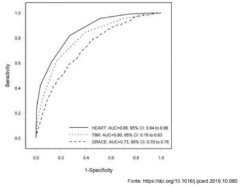
A O escore HEART apresenta uma sensibilidade de 88%, sendo o melhor para confirmação diagnóstica.
B O Escore TIMI é o que apresenta a melhor performance quando o paciente apresenta uma baixa probabilidade pré-teste.
C Os três escores apresentam níveis de sensibilidade e especificidades similares, uma vez que todas as curvas iniciam e terminam no mesmo ponto.
D O escore GRACE apresentou a pior performance, uma vez que sua área sob a curva é a menor entre os 3.
E O escore TIMI é o que apresenta melhor acurácia, uma vez que apresenta o melhor equilíbrio entre sensibilidade e especificidade.
Questão 776 · Epidemias progressivas ou propagadas · 4000186134Durante o ano de 2022, tivemos uma nova pandemia, agora de Varíola do Macaco (Monkeypox), sobre essa condição, assinale a alternativa CORRETA.
A A doença é uma zoonose, sendo transmitida principalmente de primatas para o ser humano.
B Essa doença era considerada erradicada no mundo há vários anos, porém devido à baixa cobertura vacinal, casos novos passaram a ser detectados nesse ano.
C A principal via de transmissão é a sexual, sendo que o maior grupo de risco, no momento, é o de homens que fazem sexo com outros homens.
D Apesar de ser uma variante da varíola humana clássica, a vacina existente não produz imunidade.
E Apesar de ser considerada uma pandemia, a doença ainda está localizada ao continente africano e asiático, com raros casos na Europa e nas Américas.
Questão 777 · Ensaios clínicos · 4000186133No ano de 2015 foi publicado o estudo APPAC que comparou o tratamento cirúrgico contra o uso de antibióticos na apendicite não complicada. O resultado do acompanhamento dos pacientes por mais 5 anos foi publicado em 2018. O estudo foi desenhado da seguinte forma: 530 pacientes com idade entre 18 e 60 anos, com apendicite confirmada, foram randomizados para receber tratamento cirúrgico por meio de apendicectomia ou então terapia antimicrobiana isolada. Os pacientes foram então analisados por 5 anos, tendo como desfechos a recorrência, a taxa de complicações e o tempo de hospitalização. O resultado do estudo está na tabela abaixo: Como esse estudo pode ser classificado?
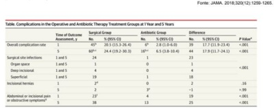
A Coorte.
B Caso-Controle.
C Estudo Transversal.
D Estudo Ecológico.
E Ensaio Clínico.
Questão 778 · Ensaios clínicos · Posição do observador observacional x experimental · 4000186132No ano de 2015 foi publicado o estudo APPAC que comparou o tratamento cirúrgico contra o uso de antibióticos na apendicite não complicada. O resultado do acompanhamento dos pacientes por mais 5 anos foi publicado em 2018. O estudo foi desenhado da seguinte forma: 530 pacientes com idade entre 18 e 60 anos, com apendicite confirmada, foram randomizados para receber tratamento cirúrgico por meio de apendicectomia ou então terapia antimicrobiana isolada. Os pacientes foram então analisados por 5 anos, tendo como desfechos a recorrência, a taxa de complicações e o tempo de hospitalização. O resultado do estudo está na tabela abaixo: Sobre o resultado do estudo, assinale a alternativa CORRETA.
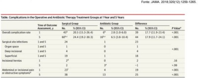
A O grupo submetido a tratamento clínico apresentou uma incidência menor de complicações do que o grupo submetido ao tratamento cirúrgico, com significância estatística.
B O grupo submetido a tratamento clínico apresentou uma incidência maior de dor abdominal do que o grupo submetido ao tratamento cirúrgico, com significância estatística.
C O grupo submetido a tratamento clínico apresentou uma incidência menor de complicações do que o grupo submetido ao tratamento cirúrgico, porém sem significância estatística.
D O grupo submetido a tratamento clínico apresentou uma incidência menor de hérnia incisional do que o grupo submetido ao tratamento cirúrgico, com significância estatística.
E O grupo submetido a tratamento clínico apresentou uma incidência maior de sintomas obstrutivos do que o grupo submetido ao tratamento cirúrgico, com significância estatística.
Questão 779 · Calendário vacinal do idoso · Calendário vacinal em adultos e idosos · 4000186131Sobre o calendário vacinal do Adulto, assinale a alternativa CORRETA.
A A vacinação para Difteria e Tétano só é recomendada até os 45 anos, sendo indicado um reforço a cada 5 anos.
B A vacina antipneumocócica 23-valente é recomendada para pacientes com 60 anos ou mais que estejam acamados ou institucionalizados.
C A vacina contra a febre amarela é indicada para pessoas de até 59 anos de idade, sendo recomendada uma dose de reforço a cada 10 anos.
D A vacina contra Sarampo, Caxumba e Rubéola é indicada para pacientes com mais de 60 anos, sendo aplicada em 2 doses com intervalo mínimo de 30 dias entre elas.
E A vacina contra a hepatite B é recomendada até os 49 anos, devendo ser aplicada com 4 doses, com intervalo de 2 meses entre elas.
Questão 780 · Política Nacional de Promoção de Saúde · Bloqueadores dos canais de cálcio BCC · 4000186129Paciente de 62 anos com histórico de Infarto Agudo do Miocárdio há 3 anos, tabagista ativo (carga tabágica de 30 anos-maço), refere ser portador de hipertensão, diabetes e possuir crises de gota frequentes, procura atendimento na sua Unidade Básica de Saúde pois necessita um atestado médico para realizar exercício físico. No momento o paciente encontra-se assintomático e refere que trabalha pesado todos os dias, realizando corte de grama e serviços de marcenaria, sem apresentar dispneia ou dor torácica. Está fazendo uso de Enalapril 20 mg a cada 12 horas, Atenolol 50mg ao dia, Sinvastatina 40mg ao dia, Metformina 1 grama a cada 12 horas e AAS 100mg na hora do almoço. Quando questionado sobre o tabagismo ele refere que não deseja parar de fumar pois seus tios todos fumam desde a infância e estão vivos com mais de 80 anos, então ele não acredita nos males do tabagismo. Ao exame físico encontra-se em bom estado geral, com uma pressão arterial de 156x96 mmHg, Frequência cardíaca de 60 bpm e frequência respiratória de 14 ipm. Você solicita exames laboratoriais que revelam: LDL 84 mg/dL; HDL 32 mg/dL; Triglicerídeos 302 mg/dL Hemoglobina Glicada: 7,9% Glicemia de Jejum: 134 mg/dL Ácido Úrico: 8,2 mg/dL Hemograma, função renal, marcadores de lesão hepática e TSH estão normais. Qual a sua conduta para o manejo da Hipertensão do paciente?
A Associar Hidroclorotiazida.
B Suspender Atenolol e associar Hidroclorotiazida.
C Associar Anlodipino.
D Aumentar a dose do Atenolol para 50mg a cada 12 horas.
E Associar espironolactona na dose de 25mg ao dia.
Questão 781 · Política Nacional de Promoção de Saúde · 4000186128Paciente de 62 anos com histórico de Infarto Agudo do Miocárdio há 3 anos, tabagista ativo (carga tabágica de 30 anos-maço), refere ser portador de hipertensão, diabetes e possuir crises de gota frequentes, procura atendimento na sua Unidade Básica de Saúde pois necessita um atestado médico para realizar exercício físico. No momento o paciente encontra-se assintomático e refere que trabalha pesado todos os dias, realizando corte de grama e serviços de marcenaria, sem apresentar dispneia ou dor torácica. Está fazendo uso de Enalapril 20 mg a cada 12 horas, Atenolol 50mg ao dia, Sinvastatina 40mg ao dia, Metformina 1 grama a cada 12 horas e AAS 100mg na hora do almoço. Quando questionado sobre o tabagismo ele refere que não deseja parar de fumar pois seus tios todos fumam desde a infância e estão vivos com mais de 80 anos, então ele não acredita nos males do tabagismo. Ao exame físico encontra-se em bom estado geral, com uma pressão arterial de 156x96 mmHg, Frequência cardíaca de 60 bpm e frequência respiratória de 14 ipm. Você solicita exames laboratoriais que revelam: LDL 84 mg/dL; HDL 32 mg/dL; Triglicerídeos 302 mg/dL Hemoglobina Glicada: 7,9% Glicemia de Jejum: 134 mg/dL Ácido Úrico: 8,2 mg/dL Hemograma, função renal, marcadores de lesão hepática e TSH estão normais. Quanto à solicitação de atestado para realização de atividade física, você orienta que
A como o paciente possui histórico de infarto do miocárdio, a realização de atividade física é proscrita.
B o paciente precisa realizar um teste ergométrico antes de iniciar a prática de atividade física de leve a moderada intensidade.
C o paciente pode realizar exercício físico, mas antes precisa atingir controle dos níveis séricos de glicose, devido ao risco de hiperglicemia relacionada ao exercício.
D não existe contraindicação no momento para realização de atividade física de leve e moderada intensidade.
E o paciente precisa realizar um ecocardiograma antes de iniciar a prática de exercício físico de leve a moderada intensidade.
Questão 782 · Política Nacional de Promoção de Saúde · Cessação do tabagismo · 4000186127Paciente de 62 anos com histórico de Infarto Agudo do Miocárdio há 3 anos, tabagista ativo (carga tabágica de 30 anos-maço), refere ser portador de hipertensão, diabetes e possuir crises de gota frequentes, procura atendimento na sua Unidade Básica de Saúde pois necessita um atestado médico para realizar exercício físico. No momento o paciente encontra-se assintomático e refere que trabalha pesado todos os dias, realizando corte de grama e serviços de marcenaria, sem apresentar dispneia ou dor torácica. Está fazendo uso de Enalapril 20 mg a cada 12 horas, Atenolol 50mg ao dia, Sinvastatina 40mg ao dia, Metformina 1 grama a cada 12 horas e AAS 100mg na hora do almoço. Quando questionado sobre o tabagismo ele refere que não deseja parar de fumar pois seus tios todos fumam desde a infância e estão vivos com mais de 80 anos, então ele não acredita nos males do tabagismo. Ao exame físico encontra-se em bom estado geral, com uma pressão arterial de 156x96 mmHg, Frequência cardíaca de 60 bpm e frequência respiratória de 14 ipm. Você solicita exames laboratoriais que revelam: LDL 84 mg/dL; HDL 32 mg/dL; Triglicerídeos 302 mg/dL Hemoglobina Glicada: 7,9% Glicemia de Jejum: 134 mg/dL Ácido Úrico: 8,2 mg/dL Hemograma, função renal, marcadores de lesão hepática e TSH estão normais. Qual deve ser a abordagem quanto ao tabagismo do paciente?
A O paciente encontra-se em fase de pré-contemplação, devendo receber orientação sobre os benefícios da interrupção do tabagismo e ser estimulado a pensar no assunto.
B O paciente encontra-se em fase de contemplação e deve ser iniciado tratamento com bupropiona até que tenha desejo em parar de fumar.
C O paciente encontra-se em fase de pré-contemplação e como nega os males do tabagismo, esse assunto não deve mais ser abordado em consulta pelo risco de quebra da relação médico-paciente.
D O paciente encontra-se em fase de negação e nenhuma estratégia será efetiva, portanto o assunto não deve mais ser abordado em consulta pelo risco de quebra da relação médico-paciente
E O paciente encontra-se em fase de negação, porém deve ser orientado e prescrito medicamentos para substituição definicotina, como os adesivos.
Questão 783 · Declaração de óbito DO Atestado de óbito · 4000186126Um paciente de 72 anos, portador de hipotireoidismo, foi admitido no pronto atendimento do Hospital Universitário Cajuru com um quadro de AVE extenso cursando com rebaixamento do nível de consciência. Após 1 mês internado, apresentou um quadro de tromboembolismo pulmonar, enquanto recebia o seu tratamento com drogas anticoagulantes evoluiu com quadro súbito de hemorragia digestiva alta e evoluiu com parada cardiorrespiratória refratária mesmo após 40 minutos de manobras de ressuscitação, sendo constatado óbito. Considerando a Declaração de Óbito como a principal fonte de dados para o Sistema de Informação de Mortalidade, assinale a alternativa que contém o preenchimento CORRETO da parte I. das causas da morte, considerando de cima para baixo.
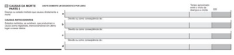
A Parada Cardiorrespiratória – Hemorragia Digestiva Alta – Trombo Embolismo Pulmonar – Acidente Vascular Encefálico.
B Parada Cardiorrespiratória – Trombo Embolismo Pulmonar – Hemorragia Digestiva Alta – Acidente Vascular Encefálico.
C Acidente Vascular Encefálico – Hipotireoidismo – Hemorragia Digestiva Alta.
D Hipotireoidismo – Acidente Vascular Encefálico – Tromboembolismo Pulmonar – Hemorragia Digestiva Alta.
E Hemorragia Digestiva Alta – Trombo Embolismo Pulmonar – Acidente Vascular Encefálico.
Questão 784 · Princípios e Diretrizes do SUS a serem operacionalizados pela Atenção Básica · 4000186125Mariana está trabalhando na Unidade de Pronto Atendimento (UPA) de sua cidade e atende a Joaquim, um senhor de 75 anos que é diabético de longa data. O paciente veio à UPA, pois mediu sua glicemia em casa e estava 350mg/dl. Ele faz uso de metformina 850mg 3cp ao dia, AAS 100mg ao dia, enalapril 40mg ao dia e sinvastatina 20mg à noite. Ele está assintomático. Há meses não comparece à sua Unidade de Saúde (US) e não faz exames de rotina, pois prefere buscar diretamente a UPA. Ele nega internamentos prévios. No momento está com exame físico normal e sua glicemia está 420mg/dl. Sobre as condutas a serem tomadas e os fluxos no Sistema Único de Saúde, assinale a alternativa CORRETA.
A Mariana deverá prescrever insulina NPH 10UI à noite, fazer o controle de dextros e reavaliar o paciente diariamente até ajuste.
B Além da insulina no momento, Mariana deve solicitar os exames de rotina e encaminhar o paciente ao endocrinologista.
C Seu Joaquim deve ser encaminhado à sua Unidade de Saúde, na qual o tratamento com dapagliflozina poderá ser prescrito via farmácia estadual para este caso.
D Seu Joaquim deve receber insulina no momento e deve ser referenciado para sua US para exames e ajuste de insulina.
E Seu Joaquim não deveria ser atendido na UPA sem encaminhamento, já que a US é a ordenadora do sistema de saúde.
Questão 785 · Program Saúde da Família PSF e Estratégia Saúde da Família ESF · 4000186124Pedro é médico há anos em uma equipe de Estratégia de Saúde da Família de um município no Paraná. Considerando o programa Previne Brasil, qual dos atendimentos realizados por Pedro no ano de 2022 seria considerado como indicador de desempenho necessário para que o município no qual Pedro atua receba mais recursos para a Atenção Primária?
A Atendimento de João de 20 anos, que vem para exames de rotina, e solicita sorologia para HIV.
B Atendimento de Joana de 56 anos, é solicitada mamografia de rotina.
C Consulta de Mariana, gestante de 27 anos, é solicitada sorologia para sífilis e HIV.
D Consulta de Mario, hipertenso e diabético, realizada glicemia de jejum semestralmente.
E Consulta de Jonas de 55 anos, realizado PSA anualmente.
Questão 786 · Abordagem Comunitária · 4000186123Uma Equipe de Estratégia de Saúde da Família (ESF) é composta pelo médico Pedro, pelo enfermeiro Luiz, pela técnica de enfermagem Juliana e pela Agente de Comunitária de Saúde (ACS) Cristiane. Ao considerarmos a Política Nacional de Atenção Básica de 2017 (PNAB de 2017), quais são as atribuições desta equipe e de seus profissionais?
A Juliana deverá cumprir 20 horas semanais e não é sua atribuição participar do processo de territorialização e mapeamento da área de atuação da equipe.
B Luiz deverá cumprir 40 horas semanais e deverá supervisionar as ações de Juliana e Cristiane.
C Pedro poderá cumprir 20 horas semanais e deverá supervisionar as ações do técnico/auxiliar de enfermagem e ACS.
D Cristiane deverá cumprir pelo menos 30 horas semanais e é a profissional responsável por cadastramento dos usuários e territorialização.
E Pedro deverá cumprir 40 horas semanais e não é sua atribuição participar do processo de territorialização e mapeamento da área de atuação da equipe.
Questão 787 · Declaração de óbito DO Atestado de óbito · 4000186122Luís está atendendo na Unidade de Saúde de sua cidade e é chamado para emitir uma declaração de óbito (DO) de um paciente que faleceu em casa e que seu colega Mário acompanhava já em cuidados paliativos. Luís verifica o prontuário no qual estava descrito que o paciente acompanhava por Insu ciência Cardíaca decorrente de um Infarto há 5 anos. Sobre a emissão desta declaração, é CORRETO afirmar:
A Como se tratava de um paciente de outro médico, Luís está impedido de emitir a DO, devendo encaminhar o corpo ao Instituto Médico Legal.
B Luís pode preencher a DO desde que assinale no item ‘Recebeu assistência médica durante a doença que ocasionou a morte?’: NÃO.
C Se Luís verificar sinais de violência, deverá preencher a DO como causa externa.
D Luís deverá realizar visita domiciliar, verificar o óbito e deverá assinar a DO como médico substituto.
E Luís deverá preencher a DO colocando todos os números dos CIDs pelos quais o paciente era acompanhado.
Questão 788 · Rede Cegonha · 4000186112Durante a avaliação da consolidação da Rede de Atenção Materno Infantil em um estado brasileiro pela equipe certi cadora do Ministério da Saúde observou-se diferentes taxas de mortalidade neonatal precoce em duas maternidades: uma delas situada em hospital universitário (13 por 1000 nascidos vivos) e outra em uma pequena cidade do interior (7 por 1000 nascidos vivos). Em relação às conclusões quanto à qualidade dos serviços sabe-se que
A a maternidade do hospital universitário apresenta maior risco de morte entre os nascidos vivos na referida região de saúde.
B deve-se comparar as referidas taxas somente após a sua padronização segundo complexidade do atendimento e papel da maternidade da rede de atenção à saúde.
C a taxa de mortalidade neonatal precoce não se relaciona diretamente com a qualidade do serviços hospitalares e sim a mortalidade infantil pós-neonatal.
D a taxa de mortalidade neonatal precoce é a razão entre as mortes nos primeiros 28 dias a cada 1000 nascidos vivos.
Questão 789 · Financiamento na Lei n 80801990 · 4000186107No artigo "Atraso crônico" publicado na Folha de São Paulo (30/4), Cláudio Lottenberg defendeu um "novo sistema de saúde para o Brasil", no qual o Estado teria "a responsabilidade de criar os elementos facilitadores para atrair ainda mais a iniciativa privada". Conforme o artigo 24 da Lei n° 8.080/1990, o Sistema Único de Saúde (SUS) poderá recorrer ao setor privado de saúde quando for demonstrada hipossu ciência de serviços para garantir a assistência integral à população de uma determinada área. Neste contexto, qual é o mecanismo legal para a operacionalização esta contratação?
A Formalizar por contrato ou convênio, respeitadas as normas do direito público.
B Será regulada por acréscimo financeiro complementar na Tabela SIGTAP/SUS conforme percentuais de capacidade instalada oferecida pela instituição filantrópica ou privada.
C Ocorrerá por contrato ou convênio com os chefes de serviços privados que já trabalhem no SUS, garantindo a qualidade assistencial.
D Poderá desconsiderar os mecanismos de regulação assistencial por se tratar de oferta adicional.
Questão 790 · Lei n 80801990 · Lei n 81421990 · Princípios e Diretrizes do SUS na Constituição Federal · 4000186103Projeto prevê revisão periódica de valores pagos a hospitais pelo SUS; O Projeto de Lei 1435/22 prevê a revisão periódica, em dezembro, da tabela para remuneração de serviços prestados ao Sistema Único de Saúde (SUS). O texto em análise na Câmara dos Deputados exige atualização su ciente para manutenção da qualidade do atendimento e equilíbrio econômico- nanceiro dos contratos. Segundo ele [o autor da proposta, deputado Antônio Brito (PSD-BA)], os recursos repassados pelo governo para pagar procedimentos de média e alta complexidade, além da atenção básica, continuam defasados. "São evidentes as di culdades enfrentadas por hospitais e entidades lantrópicas, conforme constatado inclusive pelo Tribunal de Contas da União (TCU)", disse. Fonte: https://www.camara.leg.br/noticias/906657-projeto-preve-revisao-periodica- de-valores-pagos-a-hospitais-pelo-sus/] O que caracteriza os níveis de média e alta complexidade do Sistema Único de Saúde (SUS)?
A A maioria dos serviços de apoio diagnóstico e terapêutico na atenção ambulatorial especializada de alta complexidade brasileira é de natureza pública e com financiamento per capita.
B A maioria dos leitos hospitalares utilizados pelo SUS é de natureza pública, por conseguinte, a contratação de leitos privados pelo SUS é irrelevante.
C Uma das principais causas das filas para acesso a serviços especializados é que o governo federal investe a maior parte de seus gastos de saúde na Atenção Primária e, assim, investindo um percentual pequeno em serviços especializados de média e alta complexidade.
D A forma de organização da média e alta complexidade no SUS é centrada principalmente na oferta de procedimentos, e não no critério das necessidades de saúde, por meio de indicadores epidemiológicos.
Revisar: possível letra faltando em enunciado
Questão 791 · Cuidados paliativos · 4000186089Paciente de 88 anos, portador de Alzheimer com grau avançado de Demência, está internado no Hospital Universitário Cajuru para tratamento de Pneumonia Aspirativa, já em uso de antimicrobianos apropriados. Após reunião familiar, decide-se tratamento focado em cuidados paliativos. No momento o paciente apresenta hipersecretividade pulmonar. Qual dos medicamentos abaixo poderia ser útil em reduzir a secreção pulmonar desse paciente?
A Salbutamol.
B Neostigmina.
C Metoclopramida.
D Dipirona.
E Escopolamina.
Questão 792 · Sensibilidade · Valor Preditivo Positivo · Especif icidade · 4000185979Um laboratório brasileiro desenvolveu um teste que permite o diagnóstico de infecção aguda por monkeypox a partir do soro do paciente. Para tal, coletou de forma pareada, detecção de genoma por PCR de vesículas suspeitas e amostras de sangue de 100 pacientes. O resultado encontra-se na tabela abaixo: Pode-se afirmar, em relação ao estudo realizado:
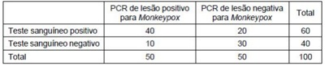
A A prevalência da doença na população estudada foi de 60%.
B Neste estudo o valor preditivo positivo é maior que o valor preditivo negativo.
C O teste é mais sensível do que específico.
D A utilização de amostras distintas (sangue versus lesão) inviabiliza a interpretação de performance do teste.
E A sensibilidade do teste coincide com o valor preditivo positivo nesta amostra.
Questão 793 · Saúde Suplementar · 4000185977No âmbito da Saúde Suplementar, a pessoa jurídica de direito privado de ns não econômicos, constituída sob forma de associação ou fundação, que opera plano privado de assistência à saúde aos integrantes de determinada categoria profissional que sejam seus associados, é caracterizada como:
A Plano coletivo por adesão.
B Cooperativa de saúde.
C Plano coletivo empresarial.
D Auto-gestão.
E Seguro saúde.
Questão 794 · Metanálises e Revisões sistemáticas · Metanálises · 4000185976Em 2022, Benites-Zapata publicou um artigo onde avalia os 12 artigos previamente publicados acerca das manifestações clínicas da infecção por Monkeypox. Dentre os achados, a presença de rash cutâneo está entre os sintomas mais comuns (93%) e a diarreia entre os menos comuns (4%), conforme ilustrada na tabela abaixo: Qual é o tipo de estudo que melhor descreve este trabalho conduzido por Benites-Zapata?
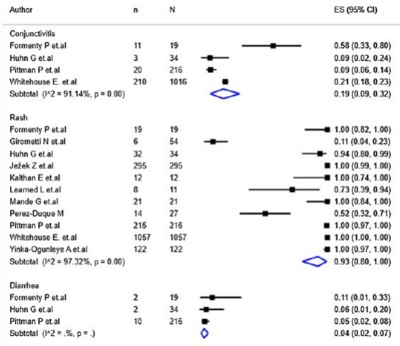
A Revisão sistemática.
B Série de casos.
C Estudo de prevalência.
D Coorte retrospectiva.
E Meta-análise.
Questão 795 · Princípios e Diretrizes do SUS na Lei n 80801990 · 4000185975Princípios e Diretrizes do SUS na Constituição Federal Durante a pandemia de SARS-CoV-2, qual foi o princípio do sistema de saúde que garantiu que todas as necessidades dos cidadãos brasileiros fossem atendidas por completo, desde demandas mais simples até as mais complexas, desde o esforço de vacinação até o suporte em UTI em hospital de referência?
A Universalidade.
B Descentralização.
C Integridade.
D Hierarquização.
E Equidade.
Questão 796 · Lista Nacional de Notif icação Compulsória de doenças agravos e eventos de saúde pública · 4000185973Em relação às doenças e agravos de noti cação compulsória, qual das alternativas abaixo corresponde a doença ou agravo que só deve ser notificada após a sua confirmação diagnóstica?
A Dengue.
B Hanseníase.
C Febre maculosa.
D Febre tifoide.
E Leptospirose.
Questão 797 · Declaração de óbito DO Atestado de óbito · 4000185972Homem de 72 anos de idade está internado para tratamento antibiótico de broncopneumonia. No terceiro dia de internação, por piora do quadro clínico e laboratorial, é transferido à unidade de terapia intensiva para melhor controle clínico e expansão do espectro antibiótico. Apesar das medidas implementadas, o paciente desenvolve hipotensão refratária a altas doses de drogas vasoativas e evolui a óbito. O paciente apresentava antecedentes de câncer de próstata em tratamento com hormonioterapia, doença pulmonar obstrutiva crônica e diabetes mellitus. Como deve ser preenchida a primeira linha da Parte I do Atestado de Óbito?
A Disfunção de múltiplos órgãos.
B Choque Séptico.
C Broncopneumonia.
D Câncer de próstata.
E Efeitos adversos de outras drogas.
Questão 798 · Curva ROC · 4000185971Estudo avaliou a possibilidade de se utilizar as medidas de sinais vitais de pacientes internados para predizer a ocorrência de sepse durante a internação. Diversos modelos matemáticos foram testados e as medidas efetuadas foram reproduzidas no gráfico abaixo: Qual foi o modelo de melhor performance para triagem de sepse em pacientes internados?
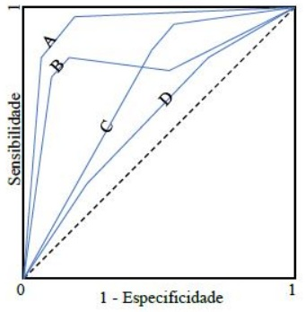
A A.
B B.
C C.
D D.
E Não é possível determinar a partir destes dados.
Questão 799 · Prevenção Terciária · 4000185969Considerando os níveis de prevenção em Saúde, qual das ações abaixo corresponde a uma estratégia de prevenção terciária?
A Uso de estatina em dose alta em indivíduo pós-infarto.
B Medidas de cessação de tabagismo em indivíduos saudáveis.
C Cuidados paliativos em paciente com câncer terminal.
D Prevenção de burnout de profissionais de saúde e cuidadores.
E Imobilização de membro inferior em paciente com neuroartropatia de Charcot.
Questão 800 · Lei n 80801990 · 4000185968Em relação à Lei Orgânica da Saúde, qual das alternativas abaixo caracteriza uma atribuição comum das três esferas de governo (União, Estados e Municípios)?
A Elaboração de normas técnico-científicas de promoção, proteção e recuperação da saúde.
B Formular, avaliar e apoiar políticas de alimentação e nutrição.
C Coordenar e participar na execução das ações de Vigilância Epidemiológica.
D Acompanhar, controlar e avaliar as redes hierarquizadas do Sistema Único de Saúde.
E Participar da execução, controle e avaliação das ações referentes às condições e aos ambientes de trabalho.
Questão 801 · Atributos gerais da Atenção Primária à Saúde APS · 4000185943Leia o texto a seguir que trata da Atenção Primária à Saúde e Medicina de Família e Comunidade. "A terceira ferramenta é o fortalecimento da atenção primária à saúde e da longitudinalidade nela, com o exercício do conceito de watchful waiting ("observação assistida"), ou demora permitida, particularmente importante para os médicos de família e comunidade e para a Estratégia Saúde da Família. Nesta última, o mecanismo de adscrição territorial dos usuários às equipes de saúde da família induz e supõe a longitudinalidade." Fonte: Norman AH & Tesser C. Prevenção quaternária na atenção primária à saúde: uma necessidade do Sistema Único de Saúde. Cadernos de Saúde Pública 2009;25(9):2-12-20. A demora permitida, referida no texto, constitui-se como uma das ferramentas para a prática clínica na atenção primária à saúde, especialmente em situações de incerteza e
A tem como desfecho mais comum a remissão espontânea dos sintomas.
B configura-se como a demora cujo limite é o surgimento dos sinais e sintomas da doença, independente da utilização de exames de suporte diagnóstico.
C jamais deve exceder a um período de três dias e é segura somente se houver pleno conhecimento prévio do quadro clínico pelo médico.
D consiste no tempo suficiente entre o diagnóstico e a implementação de ações de proteção e recuperação em saúde.
Questão 802 · Program Saúde da Família PSF e Estratégia Saúde da Família ESF · 4000185941Programa de Agentes Comunitários de Saúde PACS A Comissão de Defesa dos Direitos das Pessoas com De ciência da Câmara dos Deputados aprovou em 13/07/2022 projeto de lei que dá aos pacientes do Sistema Único de Saúde (SUS) com mobilidade reduzida o direito à aplicação domiciliar de medicamentos, procedimentos e vacinas. A proposta, que modi ca a Lei Orgânica da Saúde, também concede a esses pacientes o direito de receber em casa todos os medicamentos de uso contínuo prescritos por médico, sem ônus. Dentro do programa Atenção Familiar, o atendimento domiciliar consiste em:
A envolver ou não cuidados multiprofissionais e é desenvolvida por uma equipe específica ligada a hospitais.
B relaciona-se à atuação profissional no domicílio que pode acontecer por meio de visita ou internação domiciliar, envolvendo ações de prevenção, promoção, assistência e reabilitação.
C relaciona-se a visitas dos agentes comunitários de saúde (ACS), visando manter a equipe de saúde informada sobre o estado de saúde das pessoas acometidas por patologias crônicas.
D envolve a internação domiciliar, realizada pela equipe da Unidade de Saúde e visa diminuir o tempo de internamento hospitalar e diminuir os riscos.
Revisar: possível letra faltando em enunciado
Questão 803 · Atributos gerais da Atenção Primária à Saúde APS · 4000185940No Brasil, a pandemia COVID-19 foi marcada por uma robusta expansão de leitos de internação, sobretudo leitos de UTI. Entretanto, por mais que a grande parte das pessoas acometidas pela infecção pelo SARS- CoV-2 apresenta quadros leves, pouco se avançou em relação à preparação da Atenção Primária especialmente num primeiro momento da pandemia (2020). Nesse contexto, que atributos da Atenção Primária poderiam contribuir para o cuidado destes pacientes, especialmente para os que apresentaram quadros leves?
A Coordenação do cuidado, transdisciplinaridade, determinantes sociais e longitudinalidade.
B Integralidade, interdisciplinaridade, regionalização e primeiro contato.
C Demora permitida, atenção centrada na pessoa, competência cultural.
D Longitudinalidade, primeiro contato, integralidade e coordenação do cuidado.
Questão 804 · Estudos de Coorte · 4000185939Ronaldson e colaboradores (2021) realizam uma análise do banco de dados do English Longitudinal Study of Ageing (ELSA) avaliando em 11.391 pessoas a relação entre clusters de multimorbidade física e mudanças em comportamentos sociais ao longo de 15 anos. Quatro grupos de multimorbidade física foram identi cados. Todos os clusters de multimorbidade física foram associados a uma redução no envolvimento cultural (por exemplo, visitas a teatro, cinema, museus) ao longo do tempo, com a associação mais forte observada no cluster complexo/multissistêmico ( para atividades de lazer. Após ajuste de modelo, a presença de sintomas depressivos atenuou totalmente algumas associações. De acordo com as informações do texto, qual é a natureza deste estudo?
A Ecológico de séries temporais, no qual o ano de nascimento da população observada é especificado e as taxas de mudanças de comportamentos sociais em cada cluster são comparadas.
B Transversal sobre a relação entre agrupamentos de morbidades e comportamentos sociais, em que a maior taxa de prevalência de cluster foi de 26%.
C Coorte longitudinal prospectivo controlado por variáveis de confusão na análise multivariada, em que a variável desfecho é a mudança no comportamento social.
D Ensaio clínico, no qual se comparam mudanças em comportamentos sociais conforme presença de clusters de morbidades.
Questão 805 · Ética médica no contexto da gestação · O trabalho de parto e o parto · Assistência ao parto normal · 4000185862Em relação à humanização da assistência ao parto, qual das práticas a seguir está fora do contexto?
A Manter deambulação da gestante.
B Realização de cesárea.
C Toque vaginal de hora em hora.
D Uso de métodos não farmacológicos para alívio da dor.
E Uso seletivo da ocitocina.
Questão 806 · Valor Preditivo Negativo · Probabilidade préteste e valor preditivo negativo · 4000185821Um estudo é feito para avaliar pacientes que procuraram o pronto-socorro com suspeita de infarto agudo do miocárdio (IAM). De 100 pacientes atendidos, 20 deles tiveram de fato um IAM e, desses 20, 10 tiveram um conjunto positivo de enzimas cardíacas. Dos 80 que não tiveram IAM, nenhum deles teve um conjunto positivo de enzimas. Dadas essas informações, qual é o valor preditivo negativo do conjunto inicial de enzimas cardíacas nessa população de pacientes?
A 20%.
B 22%.
C 50%.
D 75%.
E 89%.
Questão 807 · Tratamento do Burnout · Síndrome do Esgotamento Prof issional Burnout · 4000185815Síndrome de Burnout ou Síndrome do Esgotamento Prof issional A síndrome de Burnout é uma grande preocupação para os médicos, trabalhadores e para sociedade em geral. Em relação às intervenções relacionadas à condição, qual das seguintes a rmações é a mais adequada?
A Intervenções educacionais que abordam habilidades de comunicação e autoconfiança reduzem os sintomas da síndrome.
B Intervenções no local de trabalho, abordando padrões de carga de trabalho e turnos com reuniões para aprimorar o trabalho em equipe, reduzem o esgotamento.
C Programas de redução de estresse baseados em mindfulness (atenção plena) reduzem o esgotamento.
D Programas de exercícios incentivados com equipes para melhorar a responsabilidade reduzem o esgotamento.
E Sessões regulares de debriefing em pequenos grupos com exploração de mecanismos de enfrentamento reduzem o esgotamento.
Questão 808 · Vigilância Ambiental · 4000185812Para a proteção ambiental, o princípio da precaução é melhor descrito com qual das seguintes declarações?
A A força motriz para a mudança ambiental é a precaução.
B A certeza científica deve ser exigida para ações corretivas para garantir que mais danos sejam evitados.
C A falta de certeza científica não deve ser usada como razão para ignorar ou adiar medidas preventivas ou ação corretiva quando houver outras boas razões para fazê-lo.
D Deve-se evitar quaisquer mudanças no ambiente até ter plena certeza de que não haverá efeito deletério.
E Deve-se tomar todas as precauções disponíveis para proteger o meio ambiente, independentemente dos custos, pois, ao final, será um investimento sustentável.
Questão 809 · NNT · 4000185809Um estudo controlado randomizado avaliou a e cácia do autocontrole do paciente com a anticoagulação para reduzir os riscos de sangramento. Nesse estudo, um grupo de pacientes foi treinado para ajustar sua própria varfarina com base nos resultados da razão normalizada internacional (INR) obtidos usando um dispositivo INR doméstico. Esse grupo foi comparado com um grupo de pacientes que visitava a UBS a cada 4 semanas para verificações de INR. Em 1 ano, o grupo de autogestão teve um risco de 2% de quaisquer eventos hemorrágicos (maior ou menor), comparado com 7% no grupo acompanhado na UBS. Com base nessa informação, qual é o número de pacientes que precisa ser inscrito em um sistema de autogestão de sua anticoagulação por 1 ano para reduzir um evento adverso de sangramento?
A 2.
B 7.
C 14.
D 20.
E 40.
Questão 810 · Medidas de Desempenho de Testes Diagnósticos ou Medidas de Perf ormance de Testes Diagnósticos · 4000185805Sensibilidade O serviço de saúde local está com o planejamento de avaliar se deve ou não usar um teste rápido de antígeno estreptocócico para rastrear faringite estreptocócica. O estudo relacionado mostra que, com 310 pessoas estudadas, em que avaliaram o teste em comparação com a cultura de garganta como o padrão- ouro. Cerca de 210 pacientes tiveram a cultura de garganta positiva e 100 negativa. Das 100 pessoas que tiveram uma cultura de garganta negativa, o teste foi negativo em 98 delas. Dos 210 pacientes que tiveram cultura de garganta positiva, o teste foi negativo em 2 deles. Com relação ao exame descrito, é correto afirmar:
A a sensibilidade é de 4%.
B o valor preditivo positivo é de 82%.
C a especificidade é de 98%.
D a taxa de falso negativo é de 10%
E a taxa de falso-positivo é de 68%.
Questão 811 · Estratégia de observação longitudinal x transversal · Estudos SeccionaisTransversais · 4000185767Um estudo objetivou verificar fatores associados à piora do estilo de vida, durante a pandemia de COVID-19, entre trabalhadores por aplicativos residentes no Brasil. Para tal, aplicou um questionário, contendo questões sociodemográ cas e sobre o estado de saúde, a pessoas selecionadas aleatoriamente a partir de um banco de informações sobre trabalhadores de uma empresa de entrega de alimentos por aplicativo que opera nacionalmente. A aplicação do questionário a cada trabalhador se deu entre os meses de outubro e dezembro de 2020, por telefone, sendo entrevistados 1500 pessoas. Foi realizada análise estatística descritiva, bivariada e de regressão logística. O desenho do estudo descrito acima é:
A Ecológico.
B Transversal.
C Caso-controle.
D Coorte.
Revisar: possível letra faltando em enunciado
Questão 812 · Sensibilidade · 4000185766Um novo teste para identi cação de infecção pelo SARS-CoV-2 foi testado em 1000 pessoas. Os resultados foram: dentre as 200 pessoas que estavam infectadas, o novo teste foi positivo em 170; e dentre as 800 pessoas que não estavam infectadas, o novo teste foi negativo em 750. A sensibilidade desse novo teste é:
A 77%.
B 85%.
C 93%.
D 96%.
Questão 813 · Coef iciente ou Taxa de mortalidade pósneonatal ou mortalidade tardia · 4000185764Define-se a Taxa de Mortalidade Pós-neonatal em determinado espaço geográfico e ano, como o:
A Número de óbitos até 27 dias de vida completos, por mil nascidos vivos.
B Número de óbitos entre 0 e 6 dias de vida completos, por mil nascidos vivos.
C Número de óbitos entre 7 e 27 dias de vida completos, por mil nascidos vivos.
D Número de óbitos entre 28 e 364 dias de vida completos, por mil nascidos vivos.
Questão 814 · Prevenção Terciária · 4000185763Leve em consideração a prescrição de reabilitação cardiorrespiratória em um paciente que sofreu infarto agudo do miocárdio. Em qual nível de prevenção essa prescrição se situa?
A Primária.
B Secundária.
C Terciária.
D Quaternária.
Questão 815 · Método Clínico Centrado na Pessoa · 4000185762Paciente de 70 anos, diabético e hipertenso, comparece à consulta na Unidade de Saúde da Família para acompanhamento regular. O médico de família identi cou alguns problemas na alimentação. Como era novo no território, re etiu com o paciente sobre as bases culturais de alguns hábitos alimentares que observou na entrevista. Comentou com o paciente que já havia percebido as mesmas coisas em várias outras pessoas que residem no local. A partir disso, o paciente relatou algumas questões familiares que in uenciam sua alimentação e reconheceu certas heranças culturais em seus hábitos. Qual componente do Método Clínico Centrado na Pessoa é ilustrado no caso acima?
A Explorando a saúde, a doença e a experiência da doença.
B Entendendo a pessoa como um todo.
C Elaborando um plano conjunto de manejo dos problemas.
D Intensificando a relação entre a pessoa e o médico.
Questão 816 · Método SOAP · 4000185749Paciente de 20 anos buscou a Unidade de Saúde da Família com queixa de dispepsia, sem fatores de risco ou sinais de alerta, há aproximadamente 2 semanas. Foi utilizado o modelo SOAP para o registro clínico dessa consulta. Marque a alternativa que apresenta uma relação incorreta entre a dimensão SOAP e seu registro.
A S - Dispepsia há 2 semanas. Sem vômitos. História familiar de neoplasia de cólon.
B O - Dor leve à palpação de região epigástrica. Sem sinais de alerta ao exame. Medo de neoplasia.
C A - Dispepsia sem sinais de alerta.
D P - Proposto mudança de estilo de vida. Prescrito omeprazol por 6 semanas. Avaliar necessidade de endoscopia na consulta de retorno.
Questão 817 · Atributos gerais da Atenção Primária à Saúde APS · 4000185748Em um relatório de gestão, consta que 30% das Unidades de Saúde da Família de um município ofertam inserção de DIU, pequenos procedimentos cirúrgicos e eletrocardiograma. Esse percentual é superior à média dos municípios do estado, o que foi considerado positivo para a gestão. Qual atributo da Atenção Primária à Saúde foi avaliado no enunciado?
A Acesso de Primeiro Contato.
B Longitudinalidade do Cuidado.
C Integralidade.
D Coordenação do Cuidado.
Questão 818 · Redes temáticas · 4000185743Uma das estratégias que o Brasil adotou para a organização do sistema de saúde foi fortalecer redes de atenção à saúde, tendo sido definido algumas áreas prioritárias (redes temáticas). Estão dentre as redes temáticas prioritárias pactuadas pelos diferentes níveis de gestão do SUS:
A Rede Cegonha, Rede de Atenção às Urgências e Emergências, Rede de Cuidado à Pessoa com Deficiência.
B Rede de Internação Domiciliar, Rede de Atenção à População em Situação de Rua, Rede Cegonha.
C Rede de Atenção às Urgências e Emergências, Rede de Atenção às Doenças Raras, Rede de Atenção Psicossocial.
D Rede de Atenção à Vítima de Violência, Rede de Atenção às Doenças e Condições Agudas e Crônicas, Rede de Atenção Odontológica.
Questão 819 · Financiamento do SUS · 4000185742Em 2019 foi instituído o Programa Previne Brasil, que estabelece novo modelo de nanciamento de custeio da Atenção Primária à Saúde no âmbito do Sistema Único de Saúde. Dentre os dispositivos elencados nas alternativas abaixo, qual foi inserido pelo Programa Previne Brasil?
A Piso da Atenção Básica Fixo.
B Pagamento por equipe NASF (Núcleo de Apoio à Saúde da Família).
C Componente Qualidade e Desempenho do Piso de Atenção Básica Variável.
D Capitação ponderada.
Questão 820 · Financiamento na Lei n 80801990 · 4000185740De acordo com a Lei 8080/90, que regula as ações e serviços de saúde no Brasil, à direção estadual do Sistema Único de Saúde (SUS) não compete:
A Prestar apoio técnico e financeiro aos municípios.
B Executar a totalidade das ações de saúde das redes hierarquizadas do SUS.
C Coordenar e, em caráter complementar, executar ações e serviços de saúde do trabalhador.
D Gerir sistemas públicos de saúde de alta complexidade.
Questão 821 · Medicina Preventiva · 4000185704Sobre a Atenção Primária à Saúde e seus modelos: Atenção Primária Tradicional (APT) e Estratégia de Saúde da Família (ESP) é correto afirmar:
A Atualmente, a Estratégia de Saúde da Família é o único modelo de Atenção Primária à Saúde no SUS.
B A ESF prevê para o seu funcionamento adequado a centralidade da intervenção médica nos serviços prestados.
C As evidências da efetividade do funcionamento e impacto da Atenção Primária restringem-se aos países desenvolvidos.
D A ESF é um representante do modelo sanitarista campanhista, pois é voltado para populações vulneráveis e caracterizado por ações de prevenção aos principais agravos à saúde.
E Tanto o modelo da Atenção Primária Tradicional quanto o modelo da Estratégia de Saúde da Família possuem como premissa um território adscrito.
Questão 822 · Medicina Preventiva · 4000185699Um teste com sensibilidade de 90% e especi cidade de 80% é utilizado para rastreamento de uma população cuja prevalência da doença é 2%. A proporção de verdadeiros negativos entre as pessoas sadias é de, aproximadamente:
A 2%
B 10%
C 20%
D 80%
E 90%
Questão 823 · Medicina Preventiva · 4000185698Num estudo controlado, e aberto publicado no NEJM (doi: 10.1056/NEJMoa2021436) comparou dexametasona na dose de 6 mg uma vez ao dia por até 10 dias com cuidados habituais para pacientes com COVID-19. Um total de 2.104 pacientes foram designados para receber dexametasona e 4.321 para receber cuidados habituais. No geral, 482 pacientes no grupo dexametasona e 1.110 pacientes no grupo de cuidados habituais morreram dentro de 28 dias após a randomização. Baseados nestas informações quantas pessoas devem ser tratadas com dexametasona aproximadamente para evitar um óbito?
A 89
B 36
C 26
D 23
E 11
Questão 824 · Medicina Preventiva · 4000185697Avalie as a rmativas abaixo considerando as normativas brasileiras sobre vigilância em Saúde e estratégias e dispositivos utilizadas pelo SUS. Em seguida assinale aquela que apresenta a análise correta sobre elas. I. - Vigilância epidemiológica é um conjunto de ações que proporciona o conhecimento, a detecção ou prevenção de qualquer mudança nos fatores determinantes e condicionantes da saúde individual ou coletiva, com a finalidade de recomendar e adotar as medidas de prevenção e controle das doenças ou agravos. II. - A vigilância epidemiológica é importante para a identi cação e controle de doenças transmissíveis, sendo exclusivo destas. III. - O diagrama de controle é uma das técnicas que auxiliam na definição da existência de uma epidemia.
A Apenas a afirmativa I
B Apenas as afirmativas I e II
C Apenas as afirmativas II e III
D Apenas as afirmativas I e III
E Todas estão corretas
Questão 825 · Medicina Preventiva · 4000185696Sheila, 26 anos, residente no bairro do Mandacaru com marido, Igor, e lho de 3 anos de idade, Enzo. Após avaliar um resultado de VDRL no pré-natal positivo o médico realiza perguntas sobre práticas sexuais dela e do marido, Sheila começa a chorar e revela estar sendo traída. O marido nunca quis que ela trabalhasse, relata para os familiares dela que ela não tem capacidade para trabalhar fora e que só serve para trabalhar Iimpando a casa. Depois de car desempregado, tem bebido bastante e chegou a agredi-la sicamente duas vezes nos últimos 06 meses. Analise as a rmativas abaixo e em seguida assinale a alternativa que realiza a avaliação correta sobre as mesmas. | - No caso relatado acima a violência foi iniciada nos últimos 06 meses II - A noti cação de violência doméstica, sexual ou outras à vigilância epidemiológica é compulsória no caso de violência contra criança, adolescente, mulher ou pessoa idosa. III. - A mensagem clara de que a violência é sempre errada e de que ninguém pode ser culpado por sofrer violência é primordial. Deve-se evitar a banalização, ou relativização do que venha a ser violência.
A Apenas a afirmativa I
B Apenas as afirmativas I e II
C Apenas as afirmativas II e III
D Apenas as afirmativas I e III
E Todas estão corretas
Questão 826 · Medicina Preventiva · 4000185695Avalie as a rmativas abaixo considerando o decreto 7508 de 28 de junho de 2011 que regulamenta a Lei 8080. Em seguida assinale aquela que apresenta a análise correta sobre as mesmas. I. As Regiões de Saúde são instituídas pelo Estado, em articulação com os Municípios, respeitadas as diretrizes gerais pactuadas na Comissão Intergestores Tripartite - CIT; II. O processo de planejamento da saúde será ascendente e integrado, do nível local até o federal, ouvido os respectivos Conselhos de Saúde, compatibilizando-se as necessidades das políticas de saúde com a disponibilidade de recursos financeiros. III. O planejamento da saúde é obrigatório para os entes públicos e será indutor de políticas para a iniciativa privada.
A Apenas a afirmativa I
B Apenas as afirmativas I e II
C Apenas as afirmativas II e III
D Apenas as afirmativas I e III
E Todas estão corretas
Questão 827 · Medicina Preventiva · 4000185544Foi realizado um ensaio clínico randomizado para se verificar a e cácia de uma droga em pacientes que tiveram infarto agudo do miocárdio (IAM). De um total de 1.000 pacientes que tomaram a droga avaliada, 75 sofreram um segundo IAM dentro de um ano. No grupo de 1.000 pacientes que receberam o placebo, 100 tiveram um segundo IAM, no mesmo período. A probabilidade do erro aleatório nesse estudo foi de 5% e o erro tipo II foi igual a 10%. Assinale a alternativa CORRETA que apresenta o poder estatístico deste estudo.
A 5%.
B 15%.
C 90 %.
D 95%.
Questão 828 · Medicina Preventiva · 4000185543O Ministério da Saúde publicou a Lista Nacional de Noti cação Compulsória de Doenças, Agravos e Eventos de Saúde Pública, que deve ser seguida nos serviços de saúde públicos e privados em todo o território nacional. A Lista é atualizada periodicamente, conforme a situação epidemiológica do país. Assinale a alternativa que apresenta uma doença ou evento que deve ser noti cado compulsoriamente à Secretaria Municipal de Saúde e a sua periodicidade de noti cação correta, de acordo com a Lista Nacional de Notificação Compulsória de Doenças, Agravos e Eventos de Saúde Pública.
A Os casos de Covid-19 devem ser notificados em até 24 horas.
B Os casos de Dengue devem ser notificados imediatamente.
C Os casos de Leishmaniose Visceral devem ser notificados em até 24 horas.
D Os casos de doença aguda pelo vírus zika em gestante devem ser notificados semanalmente.
Revisar: possível letra faltando em enunciado
Questão 829 · Medicina Preventiva · 4000185542Para se avaliar a associação entre a depressão e o risco de óbitos entre pessoas idosas, em uma população urbana da região Nordeste do Brasil, 160 pessoas foram acompanhadas em um estudo de coorte prospectivo. A depressão foi diagnosticada em 70 dos participantes do estudo. Houve 46 óbitos no total, sendo 28 entre as pessoas com depressão e 18 entre as pessoas sem depressão. Assinale a alternativa que apresenta o risco relativo de óbito associado à depressão neste estudo, utilizando a aproximação até a segunda casa decimal.
A 0,18.
B 0,40.
C 1,55.
D 2,00.
Questão 830 · Medicina Preventiva · 4000185541O Sistema Único de Saúde (SUS) é organizado e regido pela Lei n.º 8.080, de 19 de setembro de 1990, que completou 30 anos de existência em 2020 e tem sido essencial para o enfrentamento à pandemia da Covid- 19. Assinale a alternativa que apresenta dois princípios organizativos do SUS, de acordo com o Ministério da Saúde.
A Hierarquização e equidade.
B Regionalização e participação popular.
C Descentralização e integralidade.
D Universalização e comando único.
Questão 831 · Medicina Preventiva · 4000185540O modelo de três níveis de prevenção foi proposto por Leavell & Clark na década de 1970, relacionando atividade médica e saúde pública nas várias fases da história natural da doença. Paciente do sexo feminino, 22 anos de idade, está em sua segunda gestação e é atendida em uma consulta de pré-natal em uma Unidade Básica em Saúde. Nesse atendimento ela é encaminhada para a imunização antitetânica, recebe orientações quanto à alimentação e a evitar fumo e álcool e obtém solicitações de exames para detecção de Sí lis, HIV, toxoplasmose e Hepatite B. Com relação ao quadro clínico descrito acima, assinale a alternativa que apresenta a relação correta entre o nível de prevenção e a ação realizada durante essa consulta de pré- natal.
A Nível: prevenção primária. Ação realizada: imunização antitetânica.
B Nível: prevenção secundária. Ação realizada: orientação alimentar.
C Nível: prevenção secundária. Ação realizada: orientação para evitar fumo e álcool.
D Nível: prevenção terciária. Ação realizada: sorologia para Sífilis.
Questão 832 · Medicina Preventiva · 4000185539Um teste para a detecção do HIV é aplicado nos pacientes que frequentam uma unidade de Atenção Básica à Saúde (ABS) e também nos pacientes que são atendidos em um ambulatório especializado em infecções sexualmente transmissíveis (IST). Assinale a alternativa que apresenta a característica de performance do teste para detecção do HIV que apresentará uma probabilidade no ambulatório especializado em IST maior do que a observada na unidade de ABS.
A Especificidade.
B Sensibilidade.
C Valor preditivo negativo.
D Valor preditivo positivo.
Questão 833 · Medicina Preventiva · 4000185538O Conselho Nacional de Saúde (CNS) é uma instância permanente do Sistema Único de Saúde (SUS) que realiza o controle social na saúde por meio da scalização, acompanhamento e monitoramento das políticas públicas de saúde. Assinale a alternativa que apresenta a composição CORRETA do CNS.
A 50% de usuários, 25% de trabalhadores e 25% de prestadores de serviço e gestores.
B 60% de usuários, 20% de trabalhadores e 20% de prestadores de serviço e gestores.
C 70% de usuários, 15% de trabalhadores e 15% de prestadores de serviço e gestores.
D 80% de usuários, 10% de trabalhadores e 10% de prestadores de serviço e gestores.
Questão 834 · Medicina Preventiva · 4000185537O nanciamento do Sistema Único de Saúde (SUS) é regido pela legislação por meio de dispositivos legais. A gestão nanceira é definida na Lei n.º 8.080, de 19 de setembro de 1990. Assinale a alternativa que apresenta um critério adotado pelo SUS para o estabelecimento de valores a serem transferidos aos Estados, Distrito Federal e Municípios.
A Previsão do plano semestral de investimentos da rede.
B Perfil climático da região.
C Características quantitativas e qualitativas da rede de saúde na área.
D Ressarcimento do atendimento a serviços prestados a clientes de planos privados de saúde.
Questão 835 · Medicina Preventiva · 4000185536Um casal de adultos vai à Unidade Básica de Saúde (UBS) informando que irão se mudar para uma cidade em outro estado e solicita as cópias dos prontuários médicos da família para poderem dar continuidade dos seus tratamentos no outro município. A família é composta pelo marido, esposa, uma lha de 17 anos de idade e um lho de 8 anos de idade. Assinale a alternativa que apresenta a ação correta do médico que é gerente da UBS, à luz exclusivamente do Código de Ética Médica.
A Liberar a cópia dos prontuários do casal e o da adolescente e negar a liberação da cópia do prontuário da criança.
B Liberar a cópia dos quatro prontuários da família: dos dois adultos, da adolescente e da criança.
C Liberar a cópia dos prontuários do casal e negar a liberação da cópia dos prontuários da adolescente e da criança.
D Negar a liberação da cópia dos quatro prontuários até que o Conselho Tutelar autorize a liberação das cópias dos prontuários da família.
Questão 836 · Medicina Preventiva · 4000185535A telemedicina é uma importante ferramenta na melhoria do acesso à atenção básica e foi essencial no combate à pandemia da Covid-19 na saúde pública e na saúde privada. A Resolução n.° 2.314/2022 do Conselho Federal de Medicina (CFM) regulamentou a telemedicina no Brasil após o m do estado de emergência de saúde da pandemia. Assinale a alternativa que apresenta um requisito obrigatório para se praticar a telemedicina de acordo com a Resolução n.° 2.314/2022 do CFM.
A No seguimento de doenças crônicas o paciente deve ser atendido presencialmente a cada 90 dias.
B A primeira consulta não pode ser virtual.
C A gravação das imagens e sons da teleconsulta é obrigatória.
D O médico tem o direito de interromper o atendimento à distância e de optar pela consulta presencial.
Questão 837 · Medicina Preventiva · 4000185534A Atenção Básica orienta-se pelos princípios e diretrizes do SUS. O processo de trabalho na Atenção Básica deve buscar produzir a atenção integral à saúde. Assinale a alternativa que apresenta duas características do processo de trabalho na Atenção Básica.
A Adscrição e recursos de investimento.
B Responsabilização sanitária e porta de entrada preferencial.
C Acesso e repasse de recursos.
D Territorialização e credenciamento dos serviços de saúde.
Questão 838 · Medicina Preventiva · 4000185533Um docente de um curso de Medicina pretende propor dois estudos para participar de um programa de fomento à pesquisa e iniciação cientí ca em sua faculdade. Os participantes dos dois estudos serão estudantes de Medicina da faculdade. O primeiro estudo vai fazer o seguimento dos estudantes durante os 6 anos de curso para verificar a associação entre o sedentarismo e o desempenho escolar ao nal da graduação. O segundo estudo irá verificar se a média das notas escolares durante o ensino médio está associada com a incidência de depressão nos alunos do primeiro semestre do curso médico. Assinale a alternativa que apresenta o desenho mais adequado para cada um dos dois estudos.
A Coorte para o estudo do sedentarismo e caso-controle para o estudo da depressão
B Coorte para o estudo do sedentarismo e ecológico para o estudo da depressão.
C Caso-controle para o estudo do sedentarismo e coorte para o estudo da depressão.
D Ecológico para o estudo do sedentarismo e caso-controle para o estudo da depressão.
Revisar: possível letra faltando em enunciado
Questão 839 · Medicina Preventiva · 4000185532Os agentes comunitários de saúde (ACS) são pro ssionais que desempenham papel fundamental na estratégia de saúde da família. Assinale a alternativa que apresenta uma atribuição especí ca de um ACS, de acordo com o Programa Nacional de Atenção Básica.
A Coordenar o acolhimento de pacientes na Unidade Básica de Saúde.
B Realizar a coleta de material biológico na Unidade Básica de Saúde para a realização de exames complementares.
C Trabalhar com adscrição de indivíduos e famílias em base geográfica definida.
D Auxiliar e instrumentar os profissionais nas intervenções clínicas.
Revisar: possível letra faltando em enunciado
Questão 840 · Medicina Preventiva · 4000185531Os médicos que atuam na atenção básica à saúde (ABS) têm atribuições que são comuns a todos os membros das equipes e atribuições que são especí cas da pro ssão médica na ABS. Assinale a alternativa que apresenta uma atribuição especí ca de médicos na Atenção Básica, de acordo com o Programa Nacional de Atenção Básica.
A Realizar a supervisão técnica dos demais profissionais de saúde da equipe de saúde da família.
B Realizar diagnóstico com a finalidade de obter o perfil epidemiológico para o planejamento e a programação em saúde bucal.
C Cadastrar todas as pessoas de sua microárea e manter os cadastros atualizados.
D Realizar consultas clínicas e pequenos procedimentos cirúrgicos na Unidade Básica de Saúde.
Revisar: possível letra faltando em enunciado
Questão 841 · Medicina Preventiva · 4000185530A iniciativa privada pode participar do Sistema Único de Saúde (SUS) em caráter complementar. Assinale a alternativa que apresenta o dispositivo legal que permite à iniciativa privada a participação no SUS.
A Lei do Sistema Brasileiro de Defesa da Concorrência.
B Lei Orgânica da Saúde.
C Lei dos direitos e liberdade econômica.
D Lei dos planos e seguros privados de assistência à saúde.
Questão 842 · Medicina Preventiva · 4000185513A Organização Mundial da Saúde (OMS) divulgou na sexta-feira 17 de junho de 2022 revisão mundial sobre saúde mental. Este levantamento aponta que em 2019, quase um bilhão de pessoas viviam com um transtorno mental. Os transtornos mentais são a principal causa de incapacidade, causando um em cada seis anos vividos com incapacidade. A relação entre transtorno mental e trabalho é reconhecida na Lista de Doenças Relacionadas ao Trabalho (LDRT). Qual das doenças abaixo relacionadas NÃO É reconhecida como LDRT:
A Episódios Depressivos
B Esgotamento (Burnout)
C Esquizofrenia
D Estado de stress pós-traumático
Questão 843 · Medicina Preventiva · 4000185512Com relação à organização da atenção à saúde dos trabalhadores no Brasil é CORRETO afirmar:
A A integralidade na atenção à saúde do trabalhador deve ser garantida por meio de ações de saúde do trabalhador em todos os pontos da Rede de Atenção à Saúde do SUS
B A Rede Nacional de Atenção à Saúde dos Trabalhadores (RENAST) prevê a oferta de ações de saúde do trabalhador apenas dos Centros de Referência em Saúde do Trabalhador (CEREST)
C As ações de saúde do trabalhador implementadas no SUS são custeadas com recursos do Seguro de Acidentes de Trabalho (SAT)
D Cada município brasileiro deve possuir um CEREST
Questão 844 · Medicina Preventiva · 4000185510Existem várias definições do que sejam os determinantes sociais de saúde (DSS) e todas trazem a ideia de que "as condições de vida e trabalho dos indivíduos e de grupos da população estão relacionadas com sua situação de saúde". O modelo de Dahlgren e Whitehead dispõe os DSS em camadas superpostas. Constitui camada do modelo:
A Características fenotípicas dos indivíduos
B Estilo de vida dos indivíduos
C Perfil imunológico das populações
D Perfil microbiológico dos territórios
Questão 845 · Medicina Preventiva · 4000185507A transição demográ ca e epidemiológica no Brasil gerou uma situação de saúde que exige que o SUS responda pela tripla carga de doença. NÃO CONSTITUI característica da tripla carga de doença:
A Aumento da violência e morbimortalidade por causas externas
B Persistência concomitante de doenças infecciosas e carenciais e de condições crônicas
C Redução das desigualdades sociais em matéria de saúde
D Ressurgimento de doenças que se acreditavam superadas (reemergência de doenças como a dengue e febre amarela)
Revisar: possível letra faltando em enunciado
Questão 846 · Medicina Preventiva · 4000185504A estratégia que objetiva aumentar a resolutividade e capacidade de resposta das equipes de saúde da família aos problemas da população e é composta por pro ssionais de diferentes áreas do conhecimento que atuam de maneira integrada às equipes de saúde da família, recebe o nome de:
A Núcleo de Ações e Pesquisa em Apoio Diagnóstico
B Núcleo de Apoio à Saúde da Família
C Núcleo de Judicialização da Saúde
D Núcleo em Saúde Coletiva
Questão 847 · Medicina Preventiva · 4000185503Com relação às atribuições da direção estadual do SUS, assinale a alternativa CORRETA.
A Controlar e fiscalizar os procedimentos dos serviços privados de saúde
B Coordenar a rede estadual de laboratórios públicos de saúde e hemocentros
C Coordenar serviços de saneamento básico
D Executar serviços de saúde do trabalhador
Questão 848 · Medicina Preventiva · 4000185502Pesquisa realizada para avaliar um novo método de diagnóstico para COVID 19 identi cou que o seu valor preditivo positivo era mais alto do que o observado no método de referência (padrão-ouro). Comparando o novo método com o método de referência, a MAIOR PROBABILIDADE é de:
A Excluir COVID quando o resultado for negativo
B Gerar resultados acurados
C Ocorrer resultados positivos
D Ocorrer resultados negativos
Questão 849 · Medicina Preventiva · 4000185501A portaria nº 2.979, de 12 de novembro de 2019 institui o Programa Previne Brasil, que estabelece um novo modelo de nanciamento de custeio da Atenção Primária à Saúde (APS) no âmbito do Sistema Único de Saúde (SUS). O modelo de nanciamento em saúde considera o pagamento do conjunto dos sete indicadores que compõem o Pagamento por Desempenho da Atenção Primária à Saúde (APS), permitindo o nanciamento de ações estratégicas para o alcance de melhores resultados em saúde, considerando a abrangência da APS. Recentemente, o Ministério da Saúde apresentou uma atualização revisada desses indicadores, tendo como referência o ano de 2022, conforme disposto pela Portaria GM/MS 102, de 20 de janeiro de 2022. Os indicadores foram ajustados para atender às Ações Estratégicas dos programas Prénatal, Saúde da Mulher, Saúde da Criança e Condições Crônicas. A seguir assinale a opção que NÃO CONFIGURA um dos sete indicadores:
A Proporção de crianças de 1 (um) ano de idade vacinadas na APS contra difteria, tétano, coqueluche, hepatite B, poliomielite e infecções causadas por Haemophilus influenzae tipo b
B Proporção de gestantes com atendimento odontológico realizado
C Proporção de mulheres com coleta de citopatológico na APS
D Proporção de pessoas com hipertensão arterial, com consulta e pressão arterial aferida anualmente
Questão 850 · Princípios da Medicina de Família e Comunidade · 4000185373Assinale a alternativa que apresenta alguns dos principais procedimentos e cuidados em atenção domicilar (AD) do Sistema Único de Saúde (SUS).
A Instalação de punções venosas centrais com colocação de cateter e realização de pequenas cirurgias.
B Realização de pequenas cirurgias e de procedimentos de higienização e manobras de alívio intestinal.
C Troca de cânula, higienização e descanulação em paciente traqueostomizado e troca da bolsa, higienização e curativos em paciente com colostomia.
D Realização de traquestomia e prestação de serviços de cuidados com a manutenção do cateter, evitando a obstrução, curativo e fixação em punções venosas periféricas.
E nstalação de
Questão 851 · Política Nacional de Saúde do Trabalhador e da Trabalhadora PNSTT · 4000185372Notif icação em Saúde do Trabalhador no Sistema Nacional de Agravo de Notif icação SINAN Bases legais de Saúde do Trabalhador A secretaria de saúde de um município de 40 mil habitantes detecta aumento de queixas de lombalgia e dores nos braços de mulheres entre 25 a 40 anos de idade, de uma determinada região no segundo semestre de 2017 a 2019 e novamente no mesmo período de 2019 e 2020. Ao investigar os casos, identi ca-se que muitas delas trabalham em uma empresa de confecção de porte médio, cortando tecidos e costurando, e, no segundo semestre, a empresa aumenta muito a produção das roupas para as vendas do nal do ano, sem que haja contratações adicionais. Assinale a alternativa correta.
A Mulheres na faixa etária entre 25 e 40 anos costumam ter sobrecarga musculoesquelética por causa dos afazeres domésticos e filhos pequenos e assim, o quadro de dor deve ser decorrente desses aspectos.
B Após avaliação ortopédica, deve ser instituído tratamento medicamentoso, e a secretaria de saúde deve sugerir à empresa que sejam contratados trabalhadores homens para substituir as mulheres.
C A ocorrência de dores musculoesqueléticas se dá quando a empresa não proporciona fisioterapia preventiva.
D A história sugere a ocorrência de distúrbios musculoesqueléticos relacionados ao trabalho, que são de notificação compulsória no Sistema de Informação de Agravos de Notificação (SINAN).
E Mulheres costumam ter distúrbios hormonais que resultam em dores musculoesqueléticas e essa deve ser a primeira hipótese a ser investigada.
Revisar: possível letra faltando em enunciado
Questão 852 · Risco Relativo RR Razão de Riscos · Estudos de Coorte · 4000185368Assinale a alternativa que apresenta o indicador de saúde possível de se obter por meio de um estudo de Coorte, que outros delineamentos epidemiológicos não fornecem.
A Coeficiente de mortalidade por determinada doença.
B Risco relativo.
C Coeficiente de prevalência.
D Coeficiente de letalidade.
E Índice de Swaroop & Uemura.
Questão 853 · Avaliação da Qualidade em Atenção Primária à Saúde · Política Nacional de Atenção Básica PNAB · 4000185364Assinale a alternativa que apresenta aspectos relacionados à longitudinalidade do cuidado.
A Tratamento continuado, identificação com o profissional de saúde e continuidade informacional.
B Identificação da unidade básica como fonte regular de cuidado, vínculo do cuidado duradouro e continuidade informacional.
C Resolutividade, identificação com o profissional de saúde e vínculo do cuidado duradouro.
D Cuidado centrado na pessoa, compromisso do médico com o paciente e tratamento continuado.
E Rigor no diagnóstico médico, identificação do médico com o paciente e tratamento adequado e continuado
Questão 854 · Program Saúde da Família PSF e Estratégia Saúde da Família ESF · 4000185362Programa de Agentes Comunitários de Saúde PACS O senhor Alfredo e a dona Miriam têm, respectivamente, 80 e 78 anos de idade, e são casados há 60 anos. Moram em uma cidade de 50 mil habitantes e seus lhos e netos moram em uma cidade de maior porte a, aproximadamente, 150 quilômetros. Em um nal de semana, o senhor Alfredo passa mal, é levado ao serviço de urgência por um vizinho, e a dona Miriam recebe a notícia de que ele sofreu um acidente vascular cerebral. Após vários dias no hospital, recebe alta com hemiparesia à esquerda e afasia. Assinale a alternativa correta quanto ao processo de recuperação do senhor Alfredo.
A Os filhos do casal devem abrigá-lo, ficando o senhor Alfredo com quem tem melhores condições de moradia, pois haverá necessidade de cuidadores.
B A equipe de saúde da atenção básica deve buscar uma possibilidade de internar o senhor Alfredo em hospital de longa permanência para aliviar a carga de dona Miriam e convocar a família para que os seus membros os levem para a outra cidade.
C O hospital deve orientar o casal a buscar acomodações próximas ao serviço de reabilitação que a unidade de serviço oferece ambulatorialmente.
D A equipe de saúde da atenção básica deve convocar os filhos do casal e orientá-los no sentido de que o casal necessitará de cuidadores durante 24 horas por dia para que o senhor Alfredo possa se recuperar.
E A equipe de saúde da atenção básica deve analisar o caso, levando em conta que o senhor Alfredo necessitará de reabilitação e atenção que talvez dona Miriam não poderá oferecer, e construir com a família a melhor forma de prosseguir os cuidados.
Questão 855 · Causas externas · 4000185361Analisando o Sistema de Informação sobre Mortalidade (SIM) de uma cidade, a secretaria de saúde identi ca como importante causa básica de morte por causa externa, queda sem especi cação, de crianças e adolescentes. Ao investigar essas mortes, percebe-se que um grande percentual se deu por queda de uma laje, que depois se verifica ser de uma obra em construção, de fácil acesso e que serve de área de lazer nos finais de semana. Assinale a alternativa correta sobre esse caso.
A Como a prefeitura não pode interferir em propriedade privada, deve solicitar à justiça um pedido para que possa interditar a obra.
B A interdição da obra é obrigatória, pois se trata de problema de saúde pública.
C A prefeitura deve intimar os proprietários a providenciarem um isolamento da área de forma que o acesso de quaisquer pessoas seja impedido.
D A prefeitura deve providenciar uma placa informando que o acesso às obras é proibido.
E A prefeitura deve fazer uma campanha em massa, com a colaboração da radio local para que os pais proíbam as crianças e adolescentes de irem à obra.
Revisar: possível letra faltando em enunciado
Questão 856 · Declaração de óbito DO Atestado de óbito · 4000185360Assinale a alternativa correta em casos de mortes naturais sem assistência médica, ocorridos em domicílio, em município que conta com Instituto Médico Legal (IML) e Serviço de Verificação de Óbito (SVO).
A A declaração de óbito (DO) deve ser preechida por médico do SVO.
B Qualquer médico pode preencher a DO.
C É obrigação do médico de um serviço de urgência e emergência preencher a DO.
D O responsável pelo falecido, acompanhado de duas testemunhas, deve comparecer ao cartório do registro civil, que preenche as três vias da DO.
E A DO deve ser preenchida por um médico do IML.
Questão 857 · Declaração de óbito DO Atestado de óbito · 4000185359Um senhor é atropelado por um carro. É internado com lesões de órgãos internos e evolui a óbito após 5 dias por infecção generalizada. Assinale a alternativa que apresenta a causa básica do óbito.
A Septicemia.
B Parada cardiorrespiratória.
C Lesão de órgãos internos.
D Choque séptico.
E Vítima de atropelamento por veículo motorizado.
Questão 858 · Disposições gerais do Código de Ética Médica · 40001853586. É vedado ao médico
A deixar de obter consentimento do paciente ou de seu representante legal após esclarecê-lo sobre o procedimento a ser realizado, salvo em caso de risco iminente de morte.
B informar ao paciente o diagnóstico, o prognóstico, os riscos e os objetivos do tratamento, salvo quando a comunicação direta for avalizada pelos familiares mais próximos.
C exagerar a gravidade do diagnóstico ou do prognóstico, complicar a terapêutica ou exceder-se no número de visitas, consultas ou quaisquer outros procedimentos médicos, salvo se for para aumentar a adesão do paciente às condutas médicas.
D abandonar o paciente, em hipótese alguma, por ser este portador de moléstia crônica ou incurável, devendo continuar a assisti-lo ainda que para cuidados paliativos.
E abreviar a vida do paciente, salvo nos casos em que houver um pedido deste ou de seu representante legal.
Questão 859 · Sistemas de Inf ormação em Saúde SIS e Bases de dados do SUS · 4000185357Assinale a alternativa correta sobre o cadastramento dos usuários do SUS no Sistema Cartão.
A Da população prisional poderão ser cadastrados apenas os indivíduos que têm pena menor do que 10 anos.
B Os ciganos nômades e os moradores de rua estão dispensados de apresentarem o endereço do domicílio permanente.
C Os brasileiros residentes no exterior e estrangeiros não residentes no país não poderão ser cadastrados como usuários do SUS.
D Os dados e as informações individuais dos usuários do SUS são armazenados sob sigilo, podendo um médico revelá-los caso julgue imprescindível.
E Os moradores das ocupações de terras são excluídos do cadastramento do Sistema Cartão.
Questão 860 · Disposições gerais do Código de Ética Médica · Princípios f undamentais · 4000185356É vedado ao médico
A assumir emprego, cargo ou função para suceder médico demitido ou afastado em represália à atitude de defesa de movimentos legítimos da categoria, salvo exceções.
B desrespeitar a prescrição ou o tratamento de paciente, determinados por outro médico, sem exceção.
C deixar de fornecer a outro médico informações sobre o quadro clínico de paciente, mesmo sem o seu conhecimento ou de seu representante legal.
D revelar informações confidenciais obtidas quando do exame médico de trabalhadores, inclusive por exigência dos dirigentes de empresas ou de instituições, salvo se o silêncio puser em risco a saúde dos empregados ou da comunidade.
E deixar de revelar aos pais ou representantes legais a condição de saúde relacionada a paciente menor de idade.
Questão 861 · Princípios e Diretrizes do SUS na Constituição Federal · 4000185355Assinale a alternativa que apresenta um dos princípios da seguridade social, segundo a Constituição Federal.
A Uniformidade da base de financiamento.
B Participação na gestão administrativa de representantes dos aposentados e do governo, sendo vetados os dos empresários.
C Universalidade da cobertura e do atendimento.
D Redução do valor dos benefícios em casos de calamidade pública.
E Uniformidade dos benefícios e serviços às populações urbanas e rurais, salvo exceções previstas em lei.
Questão 862 · Planejamento em Saúde · 4000185354Assinale a alternativa correta sobre a Relação Nacional de Medicamentos Essenciais (RENAME).
A A RENAME tem acesso universal e igualitário à assistência farmacêutica qualquer cidadão cadastrado no Sistema Cartão.
B A RENAME não tem complementação estadual ou municipal.
C O Ministério da Saúde tem total autonomia para dispor sobre a RENAME.
D A RENAME é atualizada anualmente.
E A RENAME compreende a seleção e a padronização de medicamentos indicados para atendimento de doenças ou de agravos no âmbito do SUS.
Questão 863 · Transição Demográf ica no Brasil · Fases da Transição Demográf ica · Transição Demográf ica · 4000185305O Brasil envelhece de forma ra composta por 23 milho para a populac homem. Disponível em: <https://bvsms.saude.gov.br/bvs/publicacoes/diretrizes_cuidado_ pessoa_idosa_sus.pdf>. Acesso em: dez. 2022. Quanto ao aumento da expectativa de vida da população brasileira, pode-se dizer que se deve à
A redução da prevelência de doenças crônicodegenerativas.
B mudanças no acesso à saúde e nas condições de vida.
C redução da base da pirâmide etária e alargamento do ápice.
D redução da incidência de doenças cardiovasculares e diabetes.
Questão 864 · Transição Demográf ica no Brasil · 4000185304O Brasil envelhece de forma ra composta por 23 milho para a populac homem. Disponível em: <https://bvsms.saude.gov.br/bvs/publicacoes/diretrizes_cuidado_ pessoa_idosa_sus.pdf>. Acesso em: dez. 2022. Considerando o envelhecimento da população brasileira, pode-se afirmar que
A há necessidade de ampliação de cuidados de prevenção terciária.
B a prevenção quaternária visa as complicações de história natural das doenças crônicas.
C o perfil mórbido determina que os cuidados hospitalares são prioritários sobre os domiciliares.
D o termo polifarmácia refere-se à dispensação de medicações indispensáveis para os idosos.
Questão 865 · Políticas de Saúde para Populações Específ icas · 4000185303O Brasil envelhece de forma ra composta por 23 milho para a populac homem. Disponível em: <https://bvsms.saude.gov.br/bvs/publicacoes/diretrizes_cuidado_ pessoa_idosa_sus.pdf>. Acesso em: dez. 2022. Considerando os conceitos necessários para a formulação das metas das políticas de saúde para a terceira idade, pode-se dizar que:
A A longevidade está diretamente relacionada à qualidade de vida.
B Envelhecimento Ativo envolve os mesmos conceitos de Envelhecimento Saudável.
C Autonomia do idoso refere-se, principalmente, à capacidade de executar os atos da vida diária.
D Autonomia e Independência são conceitos correlatos mas diferentes em Gerontologia.
Questão 866 · Outros Sistemas de Inf ormação em Saúde e Bases de dados do SUS · 4000185302Sistema de Inf ormações Hospitalares do SUS SIHSUS Mulher, 57 anos de idade, foi à Unidade Básica de Saúde onde foi solicitada ultrassonogra a pélvica para acompanhamento de menopausa. O resultado de exame revelou cistos ovarianos bilaterais, sendo que o cisto à esquerda foi considerado como O-RADS 4. A paciente foi encaminhada ao ginecologista que solicitou uma ultrassonogra a endovaginal com Doppler. Após o resultado desse ultimo exame houve indicação para internamento hospitalar no SUS. Indique a ferramenta documental a ser preenchida pelo ginecologista, indispensável para a internação hospitalar e o registro no DATA SUS:
A Autorização para Internação Hospitalar (AIH).
B Laudo de solicitação para emissão de Autorização de Internação (Laudo para AIH).
C Autorização para Procedimentos de Alta Complexidade (APA.
D Relatório Médico Circunstanciado e Assinado (RMC.
Questão 867 · Sistema de Inf ormações Hospitalares do SUS SIHSUS · 4000185301Mulher, 57 anos de idade, foi à Unidade Básica de Saúde onde foi solicitada ultrassonogra a pélvica para acompanhamento de menopausa. O resultado de exame revelou cistos ovarianos bilaterais, sendo que o cisto à esquerda foi considerado como O-RADS 4. A paciente foi encaminhada ao ginecologista que solicitou uma ultrassonogra a endovaginal com Doppler. Após o resultado desse ultimo exame houve indicação para internamento hospitalar no SUS. Com relação aos procedimentos para o internamento de um paciente em um leito do SUS, é correto afirmar:
A Qualquer serviço médico seja da rede própria do SUS, da rede complementar ou suplementar pode solicitar o internamento.
B A solicitação do internamento hospitalar é atributo exclusivo de profissional médico, por ser regulamentada como Ato Médico.
C O profissional que solicitará a internação não pode ser o mesmo profissional que autorizará a internação .
D O médico que autorizará a internação pode fazer parte da equipe de cuidados do paciente, durante a internação.
Questão 868 · Sistema de Inf ormações Hospitalares do SUS SIHSUS · 4000185300Mulher, 57 anos de idade, foi à Unidade Básica de Saúde onde foi solicitada ultrassonogra a pélvica para acompanhamento de menopausa. O resultado de exame revelou cistos ovarianos bilaterais, sendo que o cisto à esquerda foi considerado como O-RADS 4. A paciente foi encaminhada ao ginecologista que solicitou uma ultrassonogra a endovaginal com Doppler. Após o resultado desse ultimo exame houve indicação para internamento hospitalar no SUS. Quanto ao caráter da internação dessa paciente, o ginecologista deve informar, no pedido, que
A é de caráter de urgência, pois existe risco imediato de morte.
B é de caráter de urgência, pois se trata de neoplasia que deve ser abordada o quanto antes.
C é de caráter eletivo, pois não há riscos imediatos ou sofrimento agudo intenso.
D será definido após a internação, com base na realização de outros exames complementares.
Questão 869 · Política Nacional de Atenção Básica PNAB · 4000185296A população em situação de rua no Brasil cresceu 38% entre 2019 e 2022, quando atingiu 281.472 pessoas. A estimativa, que revela o impacto da pandemia da COVID-19 nesse segmento populacional, consta da publicação preliminar “Estimativa da População em Situação de Rua no Brasil (2012-2022)". Disponível em: <https://www.ipea.gov.br/portal>. Acesso em: dez. 2022. A estratégia Consultório na Rua foi instituída pela Política Nacional de Atenção Básica, em 2011, e visa ampliar o acesso da população em situação de rua aos serviços de saúde, ofertando, de maneira mais oportuna, atenção integral à saúde para esse grupo populacional, o qual se encontra em condições de vulnerabilidade e com os vínculos familiares interrompidos ou fragilizados. Disponível em: <https://bvsms.saude.gov.br/bvs/publicacoes>. Acesso em: dez. 2022. Quanto à atividade do Consultório de Rua, pode-se afirmar:
A A carga horária pode exigir trabalho noturno e aos fins de semana.
B Deve haver profissionais médicos, além dos demais profissionais, em todas as equipes.
C A equipe do Consultório de Rua não tem fixação a Unidades específicas de saúde.
D Mesmo com mobilidade, existe uma população e um território adstritos ao Consultório de Rua.
Questão 870 · Política Nacional de Atenção Básica PNAB · 4000185295A população em situação de rua no Brasil cresceu 38% entre 2019 e 2022, quando atingiu 281.472 pessoas. A estimativa, que revela o impacto da pandemia da COVID-19 nesse segmento populacional, consta da publicação preliminar “Estimativa da População em Situação de Rua no Brasil (2012-2022)". Disponível em: <https://www.ipea.gov.br/portal>. Acesso em: dez. 2022. A estratégia Consultório na Rua foi instituída pela Política Nacional de Atenção Básica, em 2011, e visa ampliar o acesso da população em situação de rua aos serviços de saúde, ofertando, de maneira mais oportuna, atenção integral à saúde para esse grupo populacional, o qual se encontra em condições de vulnerabilidade e com os vínculos familiares interrompidos ou fragilizados. Disponível em: <https://bvsms.saude.gov.br/bvs/publicacoes>. Acesso em: dez. 2022. Considerando-se a clientela do Consultório de Rua, pode se dizer que
A a proporção de homens e de mulheres é semelhante, com pouca variação de gênero.
B a maioria dos moradores de rua não é alfabetizada, o que dificulta o trabalho.
C a população de idosos supera a de adultos jovens, entre os moradores de rua.
D o uso de drogas supera, apenas ligeiramente, o desemprego como causa para morar na rua.
Questão 871 · Política Nacional de Atenção Básica PNAB · 4000185294A população em situação de rua no Brasil cresceu 38% entre 2019 e 2022, quando atingiu 281.472 pessoas. A estimativa, que revela o impacto da pandemia da COVID-19 nesse segmento populacional, consta da publicação preliminar “Estimativa da População em Situação de Rua no Brasil (2012-2022)". Disponível em: <https://www.ipea.gov.br/portal>. Acesso em: dez. 2022. A estratégia Consultório na Rua foi instituída pela Política Nacional de Atenção Básica, em 2011, e visa ampliar o acesso da população em situação de rua aos serviços de saúde, ofertando, de maneira mais oportuna, atenção integral à saúde para esse grupo populacional, o qual se encontra em condições de vulnerabilidade e com os vínculos familiares interrompidos ou fragilizados. Disponível em: <https://bvsms.saude.gov.br/bvs/publicacoes>. Acesso em: dez. 2022. Indique a principal estratégia utilizada pelas equipes dos Consultórios de Rua:
A Aceitar a inexistência de vínculo entre pacientes e equipes.
B Trabalhar na perspectiva de redução de danos.
C Buscar a adesão dos pacientes às agendas de atendimento.
D Buscar a adesão dos pacientes aos serviços de apoio (abrigos etc).
Questão 872 · Intoxicação por Vitamina D · Medicina Preventiva · Intoxicação por Vitamina D · 4000185232Em relação à iatrogenia, assinale a alternativa
A Ciprofloxacino, assim como outras quinolonas, pode provocar agitação e confusão mental em pessoas idosas, sendo um possível causador de
B Inibidores de enzima conversora de angiotensina, como captopril e enalapril, podem originar tosse.
C Antipsicóticos, como haloperidol e risperidona, podem ocasionar rigidez e acarretar parkinsonismo secundário.
D Benzodiazepínicos, como diazepam e clonazepam, aumentam o risco de levar pessoas idosas à queda.
E O potencial iatrogênico com suplementação de vitamina D é nulo.
Questão 873 · Medicina Preventiva · 4000185213Prevenção combinada, segundo o Ministério da Saúde (MS), é uma estratégia de prevenção que faz uso de combinado de intervenções biomédicas, comportamentais e estruturais aplicadas no nível dos indivíduos, de suas relações e dos grupos sociais a que pertencem, mediante ações que levem em consideração suas necessidades e especi cidades e as formas de transmissão. A prevenção combinada é preconizada pelo Programa Conjunto das Nações Unidas sobre HIV/Aids (Unaids), desde 2010, e incorporada no Brasil desde 2013. A atenção primária à saúde (APS) tem papel fundamental tanto na garantia de acesso de usuários às tecnologias de prevenção quanto na oferta quali cada dessas tecnologias. Considerando-se esse conceito, pode-se dizer que as ações de prevenção combinada que podem ser realizadas pelas equipes multidisciplinares na APS incluem
A garantir a acessibilidade a seringas e a agulhas descartáveis para pessoas que usam drogas injetáveis e para travestis e transexuais que fazem uso de silicone industrial e de hormônios injetáveis, como redução de danos.
B encaminhar o usuário do serviço para centros especializados e de referência quando for necessário prescrever PrEP, visto que, nas unidades básicas de saúde (UBS), não é possível prescrever.
C fortalecer permanentemente o vínculo da gestante portadora de HIV com a equipe de pré-natal de alto risco, com finalidade de prevenção da transmissão vertical (PTV), não sendo função da equipe da APS seu acompanhamento.
D ofertar, em todas as UBS, preservativo masculino, preservativo feminino e gel lubrificante, sendo fornecido somente quando prescrito por profissional de saúde, após orientação sobre cuidados de infecções sexualmente transmissíveis (ISTs).
E realizar testagem para as pessoas cadastradas no serviço da UBS, orientando os que não forem cadastrados a procurarem suas unidades de referência.
Questão 874 · Medicina Preventiva · 4000185212Dona Teresa, de 45 anos de idade, foi visitar os netos para as festas de m de ano. Durante a sua estadia, após o almoço familiar em uma quarta-feira, começou a sentir dores abdominais moderadas. Ela relata já ter apresentado dores abdominais antes, mas não com essa intensidade. A lha a levou na unidade de saúde de família do bairro, que era a unidade de saúde mais próxima. Dona Teresa foi acolhida pela enfermeira e passou por uma consulta com o médico de família da unidade e teve a resolução do quadro e os devidos encaminhamentos. Nessa situação hipotética, o princípio do Sistema Único de Saúde (SUS) que permitiu o atendimento na unidade local foi a(o)
A equidade.
B coordenação do cuidado.
C integralidade.
D universalidade.
E acesso
Questão 875 · Medicina Preventiva · 4000185211Um rapaz de 18 anos de idade, motoboy, tinha acabado de ser registrado em seu primeiro emprego e pilotava sua moto em direção ao local de trabalho para iniciar suas entregas quando foi, repentinamente, atingido por outro veículo automotor, o qual o lançou a 10 metros de distância contra um muro. Ele foi resgatado pelo serviço móvel de urgência e levado ao hospital municipal da região. Sofreu cirurgia devido à fratura de múltiplas costelas, à fratura de processo odontóide e de tíbia esquerda. Com relação a essa situação hipotética, assinale a alternativa correta.
A O acidente deve ser notificado apenas ao sistema de informação de agravos de notificação (SINAN).
B O hospital deve realizar apenas a comunicação de acidente de trabalho (CAT), não sendo necessário realizar a notificação ao SINAN, visto não ser um acidente com material biológico.
C O hospital deve realizar ambas as notificações SINAN, em até 24 horas, e realizar CAT.
D O caso não deve ser notificado, visto que o entregador ainda não estava em seu horário de trabalho, não podendo ser considerado um acidente de trabalho.
E O caso deve ser notificado apenas como acidente de trânsito grave, cabendo ao Detran a responsabilidade.
Questão 876 · Medicina Preventiva · 4000185210Acerca das recentes atualizações na lista nacional de agravos de notificação, julgue os itens a seguir. I. As síndromes inflamatórias multissistêmicas associadas à covid-19 em adultos e em crianças, SIM-A e SIM- P, respectivamente, passaram a gurar na lista de agravos de noti cação do Ministério da Saúde, com notificação imediata. II. A síndrome gripal por covid-19 se manteve na lista geral de agravos, mas, devido à diminuição dos casos e ao esfriamento da pandemia, passou a ser de notificação semanal. III. A doença de Chagas crônica, a partir de 2020, passou a gurar na lista de agravos de noti cação, devendo ser noti cada com periodicidade imediata, em até 24 horas. Com essa alteração, tanto o quadro agudo quanto o quadro crônico da doença causada pelo Trypanosoma cruzi passam a ser obrigatoriamente notificados em todo o território nacional. IV. Em 2021, a síndrome congênita associada à infecção pelo vírus Zika passou a ser de noti cação compulsória, adotando-se a periodicidade imediata, ou seja, até 24 horas para notificação. Assinale a alternativa correta.
A Nenhum item está certo.
B Apenas o item I está certo.
C Apenas o item II está certo.
D Apenas o item III está certo.
E Apenas o item IV está certo.
Questão 877 · Medicina Preventiva · 4000185209Em uma cidade do interior paulista, uma clínica vem fazendo muito sucesso com proposta de tratamentos estéticos com resultados imediatos. José acabou de se formar em clínica médica e irá iniciar residência em endocrinologia na cidade. Ele foi convidado para atuar nessa clínica aos nais de semana, com bons ganhos mensais. José, diante dos protocolos utilizados na clínica, verifica que ela não possui pesquisas robustas que corroboram com os resultados entregues aos pacientes e que, inclusive, há críticas feitas por algumas sociedades médicas. Ao conversar com os colegas e com o proprietário da clínica, eles informam que não há pesquisas robustas, mas que o importante é o resultado empírico, prático, que eles estão tendo, o que tem trazido clientela de todo o Brasil, principalmente após o marketing agressivo na Internet. Com base nessa situação hipotética, considere que José tenha optado por não aceitar a proposta de emprego. Nesse caso, é correto afirmar que José, ao tomar essa decisão, baseou-se no princípio bioético da
A justiça.
B equidade.
C não maleficência.
D autonomia.
E beneficência.
Questão 878 · Medicina Preventiva · 4000185208Em julho de 2022, a Organização Mundial da Saúde (OMS) decretou que a doença varíola dos macacos, também conhecida como monkeypox, tornou-se uma emergência de saúde pública global. Isso significa que houve um aumento da transmissibilidade por provável mutação viral. Mas não se notou o aumento de casos graves ou fatais até o momento do decreto da OMS. Nesse sentido, conclui-se que o vírus manteve seu(sua)
A poder invasivo.
B dose infectante.
C virulência.
D patogenicidade.
E imunogenicidade.
Questão 879 · Medicina Preventiva · 4000185206Um médico terminou a residência em medicina de família e comunidade recentemente. Logo após a nalização da residência, assumiu uma equipe de atenção primária (eAP) no interior do estado de São Paulo. Ao chegar na unidade de saúde, notou que sua equipe era composta por ele e por um enfermeiro. A partir desse caso hipotético, assinale a alternativa que apresenta a composição mínima para esse tipo de equipe, segundo a Política Nacional de Atenção Básica (PNAB) e a Portaria n.o 2.539/2019.
A A composição da equipe está inadequada e deve ser formada por um médico, por um enfermeiro, por um agente comunitário de saúde e por um profissional técnico ou auxiliar de enfermagem.
B A composição está adequada e a equipe pode, portanto, ser formada por um médico e por um enfermeiro.
C A equipe está inadequada e deve ser formada por um médico, por um enfermeiro e por mais um agente comunitário de saúde.
D A composição está adequada e a equipe deve ser formada, obrigatoriamente, por um médico especialista em medicina de família e comunidade e por um profissional de enfermagem.
E A equipe está inadequada e deve ser formada por um médico, por um enfermeiro, por um agente comunitário de saúde e por um técnico de saúde bucal.
Questão 880 · Medicina Preventiva · 4000185205Em um município de 5.000 habitantes, existe somente uma unidade de saúde da família com duas equipes. Devido à falta de disponibilização de outros serviços na comunidade, a unidade básica de saúde (UBS) realiza todo o tipo de atendimento: desde consultas programáticas até às de urgência e de emergência. Por conta disso, o horário de funcionamento da UBS ca estendido e as duas médicas da unidade, Maria e Kelly, se revezam nos horários de atendimento, de modo que que pelo menos um médico durante todo o período de funcionamento da unidade. Com um novo aumento de casos de síndrome respiratória, o atendimento triplicou na unidade e, para corroborar, Maria foi afastada por covid-19, cando Kelly sozinha por uma semana para realizar todos os atendimentos prioritários. No nal da quinta-feira daquela semana, o paciente Jorge chega para sua consulta agendada devido a uma dor no pé que já dura 3 meses. Ele aguardava a consulta há 2 meses, que sempre era remarcada devido aos casos graves que chegavam na unidade e que precisavam ser atendidos com maior prioridade e transferidos de unidade. Ao chegar ao balcão, a recepcionista informa a Jorge que a consulta terá que ser novamente remarcada, visto que a Dr.a Kelly ainda irá realizar o atendimento de 5 pacientes com sintomas gripais e que, portanto, não conseguirá atendê-lo. Ele, chateado e com dor, fala que não sairá da unidade até conversar com a médica, visto que já será a quarta vez que sua consulta será remarcada. Dr.a Kelly estava no corredor e ouviu Jorge argumentar. Ela vai em direção dele e pergunta se ele não se importa com as pessoas com covid-19. Diz que, se ele esperou 3 meses, pode esperar mais 1 dia, que não vai morrer pela dor. Jorge, constrangido, pede desculpas e sai da unidade. Considerando que, nessa situação hipotética, a atitude de Kelly com o paciente pode ser derivada de sua sobrecarga de trabalho, assinale a alternativa que apresenta em que nível de prevenção se enquadrariam as ações de saúde para evitar
A prevenção primária
B prevenção secundária
C prevenção terciária
D prevenção quaternária
E prevenção quinquenária
Revisar: possível letra faltando em enunciado
Questão 881 · Medicina Preventiva · 4000185204Em dezembro de 2022, o governo federal aprovou a Lei n.o 14.510/2022, que autoriza e estabelece regras para a prática de atendimentos de saúde a distância, revogando a Lei n.o 13.989/2020, criada durante a pandemia de covid-19. Em relação à Lei n.o 14.510/2022 e ao atendimento via telessaúde, assinale a alternativa correta.
A Ao profissional de saúde são asseguradas a liberdade e a completa independência de decidir sobre a utilização ou não da telessaúde, exceto com relação à primeira consulta ou ao primeiro atendimento e procedimento, que deverão ser realizados de forma presencial.
B A telessaúde abrange a prestação remota de serviços relacionados às profissões da área da saúde regulamentadas pelos órgãos competentes do Poder Executivo Federal, excetuando o serviço de pediatria que deverá ocorrer de forma presencial.
C A telemedicina não deve ser utilizada pela estratégia de saúde da família, pois reduz a integralidade do cuidado.
D O acesso ao serviço de saúde poderá ser facilitado, em determinadas regiões do País, auxiliando a coordenação de cuidado e o acolhimento de forma a aumentar os atendimentos síncronos e assíncronos.
E Caso o paciente se recuse ao atendimento na modalidade telessaúde, não há necessidade de fornecer garantia do atendimento presencial quando solicitado.
Questão 882 · Medicina Preventiva · 4000185203Uma jovem de 17 anos de idade comparece à unidade de saúde, desacompanhada, solicitando consulta de acolhimento. Ela é atendida pela pro ssional de enfermagem. Durante o atendimento, a jovem relata que está sem menstruar há 2 meses, refere que teve relação sem preservativo apenas uma vez e a rma que está preocupada com a possibilidade de estar grávida, pois tem medo da reação dos seus pais. Acerca desse caso hipotético, entre as alternativas apresentadas a seguir, assinale aquela que apresenta a melhor conduta a ser tomada.
A solicitar a presença dos responsáveis para continuar a consulta, pois, pelo fato de a adolescente ser menor de idade, o profissional da saúde é obrigado a informar os pais sobre o conteúdo da consulta
B realizar teste de gravidez e, se o resultado der positivo, combinar com a adolescente a melhor forma e o melhor momento para contar aos seus responsáveis
C solicitar a presença do conselho tutelar e fazer denúncia de provável abuso sexual, devido ao fato de a adolescente ser menor de idade
D convocar os responsáveis e agendar consulta com o médico, para que os pais sejam informados sobre a probabilidade de gravidez e para que solicite autorização para realização dos exames a fim de comprovar a gravidez e iniciar o pré-natal
E realizar teste de gravidez e, se o resultado der positivo, iniciar o pré-natal; a decisão da adolescente de não contar aos responsáveis deve ser respeitada devido ao sigilo médico
Questão 883 · Medicina Preventiva · 4000185202Com o objetivo de avaliar o impacto da triagem populacional com o exame de antígeno prostático específico (PSA), visto que o diagnóstico precoce é considerado um fator importante para a efetividade do tratamento do câncer, realizou-se um estudo com dois grupos: grupo A, que realizou a dosagem de PSA por 10 anos, e grupo B, que não realizou o exame de forma periódica. Considerando esse caso hipotético, entre as alternativas apresentadas a seguir, assinale aquela que melhor apresenta, respectivamente, o estudo descrito e a interpretação adequada.
A Utilizou-se um ensaio clínico e o exame de PSA não teve efeito na redução da mortalidade por câncer de próstata.
B Utilizou-se um ensaio clínico e o exame de PSA foi eficaz porque aumentou o número de diagnósticos de câncer de próstata.
C Utilizou-se um estudo de coorte e o exame de PSA não teve efeito na redução da mortalidade por câncer de próstata.
D Utilizou-se um estudo de caso-controle e os dados são insuficientes para avaliar a eficácia do exame de PSA.
E Utilizou-se um estudo de coorte e os dados são insuficientes para avaliar a eficácia do exame de PSA.
Questão 884 · Medicina Preventiva · 4000185201Os coe cientes de mortalidade auxiliam as vigilâncias epidemiológicas, juntamente com municípios, estados e Ministério da Saúde, a adotarem medidas para melhorar a qualidade de serviços e para articular uma ação nacional. Considerando-se os coeficientes de mortalidade, é correto afirmar que
A as curvas de Nelson de Moraes são curvas de mortalidade proporcional por idade.
B o indicador de Swaroop-Uemura informa a proporção de óbitos de indivíduos com menos de 50 anos de idade residentes em uma determinada localidade.
C estão incluídos, no coeficiente de mortalidade neonatal, óbitos de crianças que faleceram até o 42.o dia completo de vida.
D o coeficiente de mortalidade materna informa o risco de óbito materno em uma determinada localidade ao longo de um determinado período e deve ser calculado dividindo-se óbitos de gestantes até 27.o dia após o término da gestação pelo número de nascidos vivos.
E O coeficiente de mortalidade por causas externas não pode incluir óbitos por complicações de assistência médica, uma vez que esse tipo de causa deve ser calculado por coeficiente específico.
Revisar: possível letra faltando em enunciado
Questão 885 · Medicina Preventiva · 4000185200A atenção primária à saúde (APS) é fundamental para a organização da rede de atenção à saúde (RAS), sendo dividida em atributos essenciais e derivados, descrita por Barbara Star eld, em 1998, “como oferta de ações de atenção à saúde integradas e acessíveis segundo as necessidades locais, desenvolvidas por equipes multipro ssionais responsáveis por abordar uma ampla maioria das necessidades individuais e coletivas em saúde, desenvolvendo uma parceria sustentada com as pessoas e comunidades”. Em relação aos atributos da APS, assinale a alternativa correta.
A A promoção de saúde diz respeito à acessibilidade do serviço de saúde a cada nova necessidade do usuário.
B A longitudinalidade trata da complexidade do entendimento do processo saúde-doença, bem como de ações de promoção, de prevenção, de cura e de reabilitação adequadas ao contexto da APS.
C A universalidade determina o acesso universal à saúde para todos os indivíduos — um atributo essencial da APS.
D Orientação familiar, orientação comunitária e competência cultural são informações secundárias, derivadas do contexto do indivíduo.
E Territorialização é um atributo da APS, caracterizada pela organização dos serviços de saúde de acordo com cada território, observando-se as necessidades e as particularidades.
Questão 886 · Medicina Preventiva · 4000185198Segundo o Tratado de Medicina de Família, Gusso e Ceratti (2018) a rmam que “o território é um espaço limitado político-administrativamente ou por ação de um grupo social, em que se edi cam e se exercitam os poderes do Estado e dos cidadãos, de grande importância para a definição de políticas públicas”. Considerando-se essa informação, a avaliação da implantação de uma unidade básica de saúde em uma determinada localidade, realizada pela gestão municipal por meio da delimitação político-administrativa, é característica de
A território-área.
B território-microárea.
C território-moradia.
D território-distrito.
E região de saúde.
Questão 887 · Medicina Preventiva · 4000185197Um paciente internado em UTI após cirurgia neurológica por fratura de base de crânio acompanhado de paralisia facial total devido à briga no bar e à queda com TCE está em seu 5.o dia de internação e evolui com pneumonia nosocomial, sepse e vai a óbito no 11.o dia de internação. Nessa situação hipotética, a declaração de óbito deverá ser assinada por
A médico plantonista da UTI.
B médico diarista da UTI.
C neurocirurgião que realizou a cirurgia.
D médico do SVO.
E médico do IML.
Questão 888 · Medicina Preventiva · 4000185195A Política Nacional de Atenção Integral à Saúde da Mulher (PNAISM) re ete o compromisso com a implementação de ações de saúde que contribuam para a garantia dos direitos humanos das mulheres e para reduzir a morbimortalidade por causas prevenıveis e evita correta.
A Essa política contempla apenas mulheres acima dos 14 anos de idade.
B Ações não farmacológicas podem ser utilizadas no climatério a fim de amenizar os sintomas dessa doença.
C Mulheres em idade reprodutiva constituem a maior parte da população feminina, conformando um segmento social importante para a elaboração das políticas de saúde.
D O aborto, na prática, pode ser causa de discriminação de mulheres em serviços de saúde, havendo intensa orientação no sentindo de evitar que o aborto se repita.
E Mulheres nas grandes cidades têm acesso semelhante à saúde reprodutiva as que vivem na zona rural, devido à transição demográfica e às migrações.
Questão 889 · Medicina Preventiva · 4000185194O Método Clínico Centrado na Pessoa (MCCP) surgiu da necessidade de um atendimento mais integral, que contemplasse as preocupações e as vivências relacionadas à saúde e às doenças. É um método específico que utiliza uma abordagem biopsicossocial e centrada na pessoa. O MCCP deve propor a integração entre os aspectos relacionados à doença e à perspectiva da pessoa doente, garantindo as particularidades e as preferências pessoais, de forma a elaborar um plano terapêutico que englobe esses fatores. Considerando esse raciocínio, levando em conta a atualização realizada por Moira Stewart em 2017, assinale a alternativa correta
A O terceiro componente do método visa a reforçar a relação médico-pessoa, ponto imprescindível para que as medidas terapêuticas pactuadas sejam adotadas pelo paciente.
B Atualmente, o MCCP é composto por 6 elementos. O último deles, “sendo realista”, volta-se para a avaliação do contexto em que o paciente está incluído. O médico, ao encarar essa realidade, poderá ofertar cuidados mais adequados, levando em consideração todos os fatores que fazem parte da vida do indivíduo e da comunidade.
C O acrônimo SIFE faz parte do segundo elemento do MCCP e objetiva avaliar questões como o quanto o problema de saúde vivenciado pela pessoa afeta a funcionalidade dela, excetuando a expectativa que faz parte do terceiro componente.
D O MCCP é uma ferramenta exclusiva da atenção primária, não sendo possível utilizá-la em outros contextos clínicos.
E “Explorando a saúde, a doença e a experiência da doença” é o componente do método que visa a compreender como o paciente percebe e entende seu adoecimento, abarcando toda a subjetividade desse processo, e a entender suas percepções de saúde e sua experiência única da doença, voltando-se mais à experiência da doença “illness” do que para doença em si “disease”.
Questão 890 · Fisiologia do Envelhecimento · As grandes síndromes geriátricas gigantes geriátricos · 4000184853Mulher, 96 anos, com perda progressiva de peso nos últimos anos, apresentou duas quedas em 6 meses, sendo a última há 2 semanas. Não houve fraturas, mas, na última queda, fez uso de tramadol para dor na bacia, tendo cado muito sonolenta e constipada com essa medicação. A lha acha que a memória está “ótima para a idade”, todavia refere quadro prolongado de: discurso repetitivo no dia-a-dia; troca de nome dos familiares; perda de interesse para as atividades; necessidade de ajuda para tomar remédios. Nega dé cits sensoriais, doenças prévias e uso crônico de medicamentos. Exames laboratoriais: normais, exceto uma velocidade de hemossedimentação (VHS) = 42mm/h na 1ª hora. Alguns dados deste caso podem ser justi cados apenas pelas alterações siológicas do envelhecimento, entretanto, pode-se a rmar que deve ser considerado patológico:
A a perda de peso não intencional, por redução da massa magra não compensada pelo aumento de gordura.
B a velocidade de hemossedimentação elevada, pelo estado inflamatório da imunossenescência.
C a maior susceptibilidade a efeitos adversos de medicamentos, por redução do fluxo sanguíneo e metabolismo hepático.
D o prejuízo no desempenho das atividades de vida diária, por redução das habilidades cognitivas.
Revisar: possível letra faltando em enunciado
Questão 891 · Testes em paralelo · 4000184773Menina, 7 anos, é atendida no Setor de Emergência com história de contato prévio com paciente com diagnóstico de meningite meningocócica. Exame físico: vômitos em jato; rigidez de nuca e sonolência. Punção lombar: líquido cefalorraquidiano normal. O médico iniciou ceftriaxona, enquanto aguardava novos exames. Pode-se afirmar que a conduta da equipe médica utilizou uma visão dos exames em:
A paralelo, para maximizar a especificidade.
B série, para maximizar a especificidade.
C paralelo, para maximizar a sensibilidade.
D série, para maximizar a sensibilidade.
Questão 892 · Outros · Epidemias por f onte comum ou f onte única ou veículo comum · 4000184772Os eventos epidêmicos podem se apresentar de duas formas distintas quanto à magnitude e temporalidade dos casos. Neste sentido, as epidemias podem variar quanto aos fatores envolvidos no processo de transmissão, velocidade de ocorrência dos casos e duração. Pode-se afirmar, neste contexto de epidemias, que:
A nas de fonte comum, o número de casos aumenta de forma rápida, estando este aumento relacionado ao período de incubação do agente etiológico.
B as propagadas tendem a apresentar um número explosivo de casos em curto período de tempo.
C nas propagadas, as pessoas suscetíveis costumam ter contato com uma única fonte de contaminação por um curto ou longo espaço de tempo.
D as de fonte comum costumam ter seus processos de transmissão associados a vetores artrópodes ou através de contato pessoa-pessoa.
Questão 893 · História Natural da Doença Prevenção e Promoção de Saúde na APS · 4000184771Política Nacional de Promoção de Saúde Pode-se afirmar, sobre a Promoção da Saúde, que é:
A realizada, tradicionalmente, no âmbito dos centros sociais, sob coordenação de vereadores ligados ao território e atuando em prol da autonomia da comunidade e dos cidadãos.
B definida como processo de capacitação da comunidade para atuar na melhoria de sua qualidade de vida e saúde, incluindo uma maior participação no controle desse processo.
C considerada como cuidado realizado no âmbito da comunidade, fora do espaço físico dos serviços de saúde, sejam eles clínicas da família, ambulatórios especializados ou hospitais.
D relativa às ações de autocuidado realizadas no período patogênico, para interromper o processo mórbido, evitar futuras complicações e sequelas, limitar a invalidez e evitar a morte.
Questão 894 · A mortalidade materna no Brasil · Razão de Mortalidade Materna · 4000184770A razão de mortalidade materna é considerada um importante marcador de saúde e expressa situações de iniquidades entre diferentes regiões. No contexto de emergência da COVID-19, um estudo com dados d o Sistema de Informações de Vigilância Epidemiológica da Gripe (SIVEPGripe) apontou que de 978 gestantes e puérperas diagnosticadas com Síndrome Respiratória Aguda Grave por COVID-19, 124 foram a óbito, sendo as falhas na assistência um dos principais fatores relacionados ao desfecho morte (Fonte: Souza A.S.R., Amorim M.M.R. Mortalidade materna pela COVID-19 no Brasil. Supl. 1: S257-S261, 2021). Pode-se afirmar, em relação à razão de mortalidade materna, que:
A pode sofrer influência da baixa sensibilidade da declaração de óbito quanto à capacidade de apresentar um registro de morte materna entre as verdadeiras mortes.
B a comparação dessa razão entre as mais diversas regiões do Brasil não sofre influência da cobertura do Sistema de Informação sobre Mortalidade.
C ela expressa a razão entre o número de óbitos maternos em uma determinada área e período e o número de mulheres em idade fértil na mesma área e período.
D a análise de tendência temporal dessa razão para uma determinada região não é influenciada por problemas nas estimativas de nascidos vivos.
Questão 895 · Financiamento do SUS · 4000184769Pode-se afirmar que o padrão de financiamento do sistema de saúde público brasileiro se caracteriza pela:
A definição de percentuais mínimos de gastos dos tributos estaduais e municipais com saúde.
B vinculação de tributos federais como fontes de financiamento para a saúde.
C destinação de recursos públicos exclusivamente para o SUS.
D permissão, no país, de que o gasto público seja maior que o gasto privado com saúde.
Questão 896 · História do Sistema Único de Saúde SUS · 4000184768Pode-se afirmar, sobre os modelos de sistema de saúde no mundo, que:
A a concepção do SUS brasileiro baseada na ideia de saúde enquanto direito de cidadania, garantida pelo Estado, e o seu financiamento com base na arrecadação de impostos, teve como modelo de referência o serviço nacional de saúde inglês.
B os sistemas de seguridade social em saúde do tipo
C os Estados Unidos da América são atualmente o país com os gastos em saúde
D o modelo
Questão 897 · Determinação Social da SaúdeDeterminantes Sociais da Saúde DSS · Outros · 4000184767Para que as intervenções sobre os determinantes sociais da saúde (modelo de sejam viáveis, efetivas e sustentáveis, elas devem fundamentar-se em três pilares básicos. Pode-se a rmar que esses pilares são:
A integralidade; hierarquização e equidade.
B intersetorialidade; participação social e regionalização.
C intersetorialidade; participação social e evidências científicas.
D hierarquização; regionalização e evidências científicas.
Questão 898 · Lei n 80801990 · Outros · 4000184766A Lei nº 8.080, de 1990, conhecida como a Lei Orgânica da Saúde, estabelece princípios e diretrizes norteadores do funcionamento do Sistema Único de Saúde (SUS). Pode-se a rmar, neste contexto, que:
A a descentralização político-administrativa no SUS prevê o comando único, isto é, o Ministério da Saúde elabora as políticas de saúde e planeja as ações a serem executadas pelos estados e municípios.
B as ações voltadas para a promoção da saúde e a prevenção de agravos e doenças não devem estar associadas às ações de assistência ambulatorial e hospitalar voltadas ao diagnóstico e ao tratamento.
C o princípio da igualdade estabelece que qualquer pessoa, independente das diferenças de renda, raça ou gênero, tenha o mesmo acesso aos serviços assistenciais, mesmo que tenham necessidades de saúde diferenciadas.
D todas as pessoas têm direito ao acesso às ações e aos serviços de qualquer complexidade, custo e natureza, mesmo que não estejam em dia com suas contribuições previdenciárias.
Questão 899 · Planos e Seguros de Saúde Lei n 96561998 · Outros · 4000184765Pode-se afirmar, em relação aos Planos de Saúde Individuais e aos Seguros de Saúde no Brasil, que:
A dado o princípio que garante a possibilidade de os serviços de saúde serem facultados à livre iniciativa, pode-se afirmar que a universalidade e integralidade só será atingida a partir da saúde suplementar.
B as operadoras de Planos de Saúde obrigam-se ao ressarcimento integral dos gastos efetuados a partir da livre escolha dos participantes de seus planos.
C os valores a serem reembolsados pelas Seguradoras de Saúde devem ser universalmente integrais, independente da escolha do usuário, dada a garantia da Integralidade do Sistema de Saúde.
D as operadoras de Planos de Saúde garantem a prestação de serviços de saúde em sua rede própria ou credenciada de saúde, devendo em caso de alterações demonstrar que mantém o cardápio e qualidade de serviços.
Questão 900 · Valor Preditivo Positivo · Outros · 4000184764Pode-se afirmar que os principais fatores capazes de influenciar o valor preditivo positivo de um exame são:
A especificidade e razão de verossimilhança positiva.
B sensibilidade e a razão de verossimilhança negativa.
C prevalência e especificidade.
D sensibilidade e especificidade.
Questão 901 · Outros · Declaração de óbito DO Atestado de óbito · 4000184763Mulher, 30 anos, primigesta, apresentou dor em baixo ventre e hemorragia transvaginal. Três horas depois evoluiu para abortamento espontâneo, sendo submetida à curetagem na 15ª semana de gestação em regime ambulatorial. Três dias depois apresentou um quadro séptico, permanecendo internada por treze dias, período em que foi infectada por COVID-19. Evoluiu para insu ciência renal, coma e óbito. No prontuário constava que seu lho apresentou hipóxia intrauterina e prematuridade extrema. Pode-se a rmar que a causa básica que deve constar da declaração de óbito (D.O.) para a mãe e seu lho deve ser respectivamente:
A aborto espontâneo / não possui D.O.
B COVID-19 / não possui D.O.
C COVID-19 / prematuridade extrema.
D aborto espontâneo / prematuridade extrema
Questão 902 · Estudos de f ase II · Ensaios clínicos Fase I a Fase IV · Outros · 4000184762A vacina contra a COVID-19 produzida pelo Instituto Butantan em parceria com a farmacêutica chinesa Sinovac foi avaliada em diversas pesquisas e análises populacionais. Um dos principais estudos foi o ensaio clínico de fase 3 realizado, em 2020, pelo Butantan em parceria com 16 centros de pesquisa brasileiros, que testou o imunizante em cerca de 13 mil voluntários (Fonte: Instituto Butantan, 22/06/2021). Pode-se afirmar, sobre os ensaios clínicos, que os de fase:
A 3 são ensaios de efetividade.
B 2 são ensaios-piloto de eficácia.
C 1 são ensaios de imunogenicidade.
D 4 são ensaios controlados e randomizados.
Questão 903 · Teorias de Transição Epidemiológica · Transição Epidemiológica no Brasil · 4000184761Situação Epidemiológica do Brasil As mudanças nos per s de adoecimento, morte e incapacidades nas populações, especi camente no que se convencionou chamar de transição epidemiológica, constituem um fenômeno que assume características bem particulares no contexto brasileiro, quando comparado à grande maioria dos países industrializados de economia central. Sobre este processo no Brasil, é
A a contra-transição refere-se à reintrodução de agentes infecciosos, ou a persistência e recrudescimento de outros, que sinalizam para uma natureza não unidirecional, diferente do modelo original proposto por
B o padrão epidemiológico se caracteriza pela persistência de endemias em algumas regiões do país, por importantes variações geográficas nos padrões epidemiológicos e de distribuição de serviços de saúde e por coeficientes de mortalidade equiparados aos dos países centrais.
C não houve uma transição de contextos epidemiológicos propriamente dita no cenário brasileiro, e sim uma superposição deles, com perfis característicos de diferentes padrões, resultantes das desigualdades, configurando uma transição “prolongada” ou “polarizada”.
D a polarização geográfica evidenciando importantes contrastes é uma das características do contexto epidemiológico brasileiro, associada à “polarização social”, que se manifesta pelas disparidades nos indicadores de mortalidade e morbidade entre diferentes grupos sociais.
Questão 904 · Estudos Ecológicos · Estudos de CasoControle · Outros · 4000184760Analise as afirmativas a seguir: I) em estudos caso-controle o investigador controla a exposição ao fator de interesse; II) em estudos ecológicos a informação é obtida e analisada no nível agregado; III) em estudos quasi-experimentais a alocação dos indivíduos nos grupos a serem comparados não é aleatória. Pode-se afirmar que estão corretas as afirmativas:
A I e III
B II e III
C I e II
D I, II e III
Questão 905 · Prevalência · Outros · Medidas de Ocorrência de Doenças Incidência e Prevalência · 4000184759Em relação à medida prevalência de uma doença, analise as afirmativas a seguir: I) elevadas taxas de incidência não implicam em altas proporções de prevalência quando a duração do problema de saúde em questão é curta; II) elevadas proporções de prevalência podem se sobrepor a baixo níveis de incidência quando a duração de uma doença é longa; III)a imigração de casos ou a emigração de não-doentes leva a uma redução na proporção de prevalência. Pode-se afirmar que estão corretas as afirmativas:
A I e III
B I e II
C II e III
D I, II e III
Questão 906 · Transição Demográf ica no Brasil · Transição Demográf ica · Outros · 4000184758Do ponto de vista demográ co e epidemiológico, verifica-se o progressivo aumento da expectativa de vida e o consequente envelhecimento da população, acompanhados de mudanças no quadro de morbidade, que se torna mais complexo. Diante disto, pode-se afirmar, quanto à atenção à saúde, que:
A diante do envelhecimento experimentado na transição demográfica, a única medida capaz de promover a saúde é o reforço das práticas e instituições de cuidados paliativos.
B a atenção hospitalar deve ser priorizada, já que as diversas modalidades de Atenção Primária em Saúde não conseguem reverter minimamente as condições básicas de adoecimento.
C deve-se privilegiar a promoção de saúde, a prevenção de doenças e, quando necessário, o tratamento ambulatorial, pois a medicina não oferece mais apenas a cura, mas ainda a possibilidade de deter a evolução natural desses males e de assegurar uma boa qualidade de vida para os seus portadores.
D o desenvolvimento tecnológico não acompanhou a transição epidemiológica e demográfica, não se permitindo avançar em práticas ambulatoriais e demais terapêuticas, o que tem significado a necessidade de crescimento da oferta de leitos hospitalares, não sendo mais recomendada a expansão de hospitais-dia e cuidados intermediários.
Revisar: possível letra faltando em enunciado
Questão 907 · Políticas de Saúde do Sistema Único de Saúde · Financiamento do SUS · Outros · 4000184757Sobre as políticas de assistência farmacêutica no SUS, analise as afirmativas a seguir: I) entre as diretrizes da Política Nacional de Medicamentos, promulgada em 1998, estão a adoção da relação de medicamentos essenciais, a regulamentação sanitária de medicamentos, a reorientação das políticas de assistência farmacêutica, a promoção do uso racional de medicamentos e a garantia da segurança, e cácia e qualidade dos medicamentos; II) a introdução dos medicamentos genéricos representou um importante marco das políticas farmacêuticas no Brasil. O genérico é aquele medicamento similar ao produto de referência, contendo os mesmos princípios ativos e sendo intercambiáveis entre si, desde que comprovada a bioequivalência; III)as Políticas de Assistência Farmacêutica no SUS são nanciadas e executadas de forma tripartite, isto é, envolvendo os três entes federativos e levando em conta o princípio da descentralização. No âmbito d a atenção básica, é responsabilidade dos municípios a aquisição e dispensação de medicamentos em unidades básicas de saúde. Pode-se afirmar que estão corretas as afirmativas:
A I e II
B I, II e III
C II e III
D I e III
Questão 908 · Determinação Social da SaúdeDeterminantes Sociais da Saúde DSS · Outros · 4000184756Pode-se afirmar, com relação aos Determinantes Sociais da Saúde, que:
A a desigualdade na distribuição de renda é prejudicial à saúde da sociedade em seu conjunto.
B o Produto Interno Bruto per capita é o único fator importante na determinação da saúde da sociedade.
C há uma correlação constante entre o Produto Interno Bruto e a situação de saúde de um país.
D a magnitude Produto Interno Bruto é o fator mais importante na determinação da situação de saúde de um país.
Questão 909 · Outros · Mortalidade · 4000184755No dia 26 de fevereiro de 2020 foi noti cado o primeiro caso de COVID-19 no Brasil, um idoso com histórico de viagem pela Itália. Decorridos alguns meses após a introdução do vírus SARS-CoV-2, a análise dos óbitos segundo faixa etária apontou que as maiores taxas de mortalidade estavam relacionadas às pessoas maiores de 60 anos, sendo a presença de comorbidades neste grupo etário um dos principais fatores associados à evolução grave e ao óbito. A tabela a seguir apresenta informações sobre mortalidade por COVID-19 em três unidades federadas. Tabela. População total, número de óbitos e taxa de mortalidade por COVID-19 em três unidades federadas. Pode-se afirmar, com base no enunciado e nas informações da tabela, que:
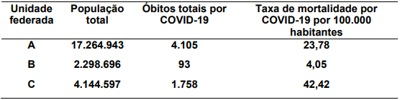
A os valores das taxas de mortalidade geral apresentados na tabela permitem a comparação entre diferentes populações quanto ao risco de morte por COVID-19.
B a comparação de taxas de mortalidade por COVID-19 entre as diferentes unidades federadas demanda um processo de padronização visando controlar o efeito da estrutura etária.
C para afirmarmos qual unidade federada possui maior risco de morte deveríamos saber qual é a proporção de óbitos por COVID-19 em relação ao total de óbitos por todas as causas.
D o risco de morte por COVID-19 é maior na unidade federada A, em função do maior número de óbitos registrados.
Revisar: possível letra faltando em enunciado
Questão 910 · Inf ectologia · Monitoramento de Endemias e Epidemias o diagrama de controle · 4000184754A dengue é uma arbovirose urbana de grande relevância para a saúde pública em função da alta morbidade relacionada a eventos epidêmicos. A análise da distribuição temporal da ocorrência de dengue permite compreender a dinâmica da doença e avaliar a evolução dos níveis de transmissão. Pode-se a rmar, c o m base no gráfico a seguir e considerando os componentes de séries temporais e construção de diagramas de controle, que: Série temporal de caso de dengue no período de 1° de janeiro de 2007 a 31 de dezembro de 2017, no Distrito Federal, Brasil.
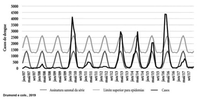
A a análise da tendência histórica de uma doença transmissível não é uma informação útil para avaliar a efetividade de uma medida de controle.
B não existe evidência de efeito de componente sazonal na série temporal de dengue apresentada no enunciado.
C os anos de 2010 e 2016 não podem ser considerados epidêmicos, conforme observase no gráfico.
D uma forma de obter o limite máximo esperado do diagrama de controle para monitoramento de notificações mensais é baseada na média mensal de casos de períodos anteriores do mês de referência acrescido de 1,96 vezes o desvio-padrão.
Questão 911 · Medicina Preventiva · 4000184753Um trabalhador da Área da Saúde (Enfermeiro) teve sua jornada de trabalho expirada as 18h, quando adentrou em sua motocicleta e se dirigindo para sua residência, lembrou-se de realizar as compras do mês em um supermercado que estava inserido no trajeto, tendo um gasto de aproximadamente 90 minutos para realizá- las, quando então dá início ao retorno para sua residência sofre um acidente projetando-se para o solo e apresentando diversas fraturas de membros superiores, pergunto:
A Caracteriza-se como Acidente de Trabalho de acordo com a Legislação Vigente;
B Caracteriza-se como Acidente de Trânsito de acordo com a Legislação Vigente;
C Não tenho elementos para caracterizar como Acidente de Trabalho ou de Trânsito;
D Tanto pode ser caracterizado como Acidente de Trânsito ou de Trabalho.
Questão 912 · Medicina Preventiva · 4000184752O primeiro Câncer relacionado ao Trabalho descrito pelo Médico inglês Percival Pott, em 1975, em trabalhadores que realizavam limpeza de chaminés na Inglaterra, foi o:
A Câncer de Estômago;
B Câncer de Pulmão;
C Câncer de Fígado;
D Câncer de Escroto.
Questão 913 · Medicina Preventiva · 4000184751São exames complementares obrigatórios a serem realizados em trabalhadores que laborem em empresas de processamento de alimentos, e deverão constar no PCMSO das mesmas:
A Hemograma, Glicemia, Parasitológico e Urina Tipo I;
B Parasitológico, Glicemia, Triglicérides e Urina Tipo I;
C Hemograma, Urina Tipo I, Parasitológico e Cultura de Fezes;
D Eletrocardiograma, Hemograma, Eletro Encefalograma, Urina Tipo I.
Questão 914 · Medicina Preventiva · 4000184750Na ocorrência de Acidente do Trabalho em uma Indústria Metalúrgica teve como consequência óbito do trabalhador: Quais são os procedimentos Legais corretos a serem adotados:
A Reunião da CIPA e Membro do Ministério do Trabalho;
B Reunião da CIPA + Membros do INSS;
C Perícia da Polícia Técnica + Reunião de Emergência da CIPA;
D Reunião da CIPA e Membro do Ministério do Trabalho + Membros do INSS.
Questão 915 · Medicina Preventiva · 4000184749Um trabalhador de 35 anos de idade do setor moveleiro, é acometido de Acidente do Trabalho "gravíssimo", que teve como consequência amputação da mão esquerda e resolveu protocolar uma Ação Indenizatória contra a citada empresa. O Juiz do Trabalho deverá nomear um Perito Médico para avaliar o grau de incapacidade laborativa do empregado acidentado. A Legislação Trabalhista aceita o que segue:
A A empresa (Reclamada) e o trabalhador acidentado (Reclamante) através de assistentes técnicos nomeados, poderão cada um assistir e elaborar Parecer técnico da Perícia;
B A Justiça do Trabalho não aceita que a empresa e o trabalhador nomeiem ao Processo, assistentes técnicos para acompanhar a Perícia a ser realizada pelo Perito do Juízo;
C Somente poderá acompanhar a Perícia Técnica o Perito Médico do juízo e o Advogado da Empresa;
D Somente poderá acompanhar a Perícia Técnica, o Perito Médico do Juízo e o Advogado do trabalhador acidentado.
Questão 916 · Medicina Preventiva · 4000184748A composição da CIPA (Comissão Interna de Prevenção de Acidentes de Trabalho) avalia a responsabilidade do Acidente de Trabalho, é correto afirmar que:
A 50% dos membros nomeados pela empresa 50% eleitos pelos seus pares;
B Os membros eleitos têm estabilidade por 5 anos a contar da posse;
C O presidente é nomeado pelos seus pares trabalhadores;
D A CIPA emite quinzenalmente um relatório sobre todas as ocorrências inclusive Acidentes do Trabalho e Doenças relacionadas ao trabalho no ano.
Questão 917 · Medicina Preventiva · 4000184747Paciente feminina, 55 anos, chega à Unidade Básica de Saúde do seu bairro, para retorno com a Dra. Gabriela. Na primeira consulta referiu desânimo, sem forças para realizar as atividades de casa e com fogacho ("tenho vontade de car sem roupa"). Referia também insônia e preocupações com o lho. Após estar cumprindo projeto terapêutico, em comum acordo com a Dra. Carla, a consulta de retorno se desenvolve com o seguinte diálogo: - Dra. Gabriela: - Entre e sente-se, dona Maria, em que posso ajuda-la hoje? - Dona Maria: - Bem, vim para falar que melhorei bastante da fraqueza e do desânimo, o calor no corpo diminui e estou dormindo melhor, depois que a doutora me orientou e passou aqueles remedinhos. Como a doutora falou, acho que logo não precisarei mais do remédio para dormir. Estou bem mais calma. - Dra. Gabriela: - Que bom! Fico muito feliz que as coisas estão melhorando dona Maria. Mantenha por enquanto as orientações que combinamos. Hoje, vou aproveitar a vinda da senhora para pedir alguns exames preventivos. Faz quanto tempo que a senhora não faz uma mamogra a? - Dona Maria: - Eu nunca z doutora. - Dra. Gabriela: - Depois de examiná-la, vou fazer o pedido então e de mais alguns outros exames importantes para sua idade. Ao ler esta história ctícia, qual o princípio do SUS e da RAS (Rede de Atenção à Saúde) que foi levado em conta pela Dra. Gabriela nesta consulta na Atenção Básica?
A Longitudinalidade do cuidado.
B Integralidade da atenção.
C Coordenação do cuidado.
D Prevenção secundária.
Questão 918 · Medicina Preventiva · 4000184746Os serviços e os pro ssionais de saúde vêm sendo cada vez mais pressionados pelo complexo médico- industrial (indústrias de medicamentos, exames, órteses e próteses), onde o conhecimento cientí co é transferido do cuidado centrado na pessoa para avaliação e gestão de riscos. Praticamente todos os seres humanos, na maioria das vezes, são taxados de doentes quando procuram atendimento médico. Um dos principais argumentos daqueles que propagam práticas de medicalização da vida é a importância crescente atribuída ao risco, e a confusão que se faz entre risco e doença no dia a dia da prática médica. Baseado nestas afirmações, responda: Qual o nível de prevenção que está em jogo nesta constatação?
A Prevenção Primária.
B Prevenção Secundária.
C Prevenção Terciária.
D Prevenção Quaternária.
Revisar: possível letra faltando em enunciado
Questão 919 · Medicina Preventiva · 4000184745Dona da Amil, UnitedHealth se prepara para vender toda operação no Brasil: "Segundo fontes, Rede D'Or, maior rede de hospitais privados do país, seria o maior interessado nos ativos. Os ativos envolvem 15 hospitais e 53 centros ambulatórias da AMIL e 16 hospitais, 41 clínicas médicas, distribuídos em seis estados brasileiros, com uma estrutura de 2.332 leitos e mais de 17 mil pro ssionais". O setor da Saúde Suplementar, que possui 48 milhões de consumidores e fatura, aproximadamente, 210 bilhões de reais, em que pese a crise econômica brasileira, está em franco aquecimento e movimentação. Agência O Globo (14/01/2022) Baseado na reportagem acima, responda: Quais as tendências do mercado da saúde suplementar apontadas pelas reportagens?
A Verticalização da cadeia de produção da assistência à saúde e concentração dos usuários nas grandes operadoras.
B Terceirização das operadoras, através da gestão em parceria com hospitais, clínicas e laboratórios, expansão das cooperativas médicas e aumento das práticas liberais em medicina.
C Integração da Rede Assistencial, com formas de gestão horizontalizadas e cooperadas entre várias operadoras de uma mesma região e reestruturação do modelo assistencial.
D Expansão do número de operadoras de saúde nos últimos cinco anos, notadamente as filantrópicas e de autogestão, integração da rede assistencial, com modelos de atenção centrados na pessoa e na autonomia médica.
Questão 920 · Medicina Preventiva · 4000184744Paciente feminina, 25 anos, 20 semanas de gestação, deu entrada no HCM, com quadro de hemorragia vaginal, em pré choque. Relata a acompanhante que o sangramento tinha começado há aproximadamente um dia. Foi diagnosticado deslocamento prematuro de placenta. Em que pese todas as medidas tomadas a gestante veio a falecer, após apresentar parada cardiorrespiratória, sem sucesso na reanimação. A criança nasceu morta pesando 500 gramas e medindo 25 centímetros. Como deveria ser preenchido a declaração de óbito da mãe e qual a conduta ética e legal em relação ao óbito fetal.
A Causa Terminal ou Imediata (linha a): Parada cardiorrespiratória; Causa Intermediária (linha b): Choque Hipovolêmico; Causa Intermediária (linha c): Aborto e Causa Básica (linha d): Deslocamento Prematuro de Placenta. Como se trata de um óbito fetal com menos de 28 semanas, com o feto pesando 500 gramas e medindo 25 centímetros, não se deve preencher a declaração de óbito, pois trata-se de aborto.
B Causa Terminal ou Imediata: Choque Hipovolêmico; Causa Básica: Deslocamento Prematuro de Placenta e na parte II gestação de 20 semanas. Deverá ser preenchida obrigatoriamente a declaração de óbito e no campo I do Bloco I, que se trata de um óbito fetal e, no campo relativo à identificação - nome - deve ser colocado morte fetal.
C Causa Terminal ou Imediata: Choque Hipovolêmico; Causa Básica: Deslocamento Prematuro de Placenta. Como se trata de um óbito fetal com 20 semanas, com o feto pesando 500 gramas e medindo 25 centímetros, deve ser encaminhada a família ao cartório para registrar a criança e, após a realização deste procedimento, preencher a declaração de óbito.
D Causa Terminal ou Imediata (linha a): Parada cardiorrespiratória (linha a); Causa Intermediária (linha b): Choque Hipovolêmico; Causa Intermediária (linha c): Aborto e Causa Básica (linha d): Deslocamento Prematuro de Placenta. Como se trata de um óbito fetal com menos de 28 semanas, com o feto pesando 500 gramas e medindo 25 centímetros, não se deve preencher a declaração de óbito, pois trata-se de aborto.
Questão 921 · Medicina Preventiva · 4000184743Foi realizado um Estudo de Intervenção, com o objetivo de se verificar o efeito da Trombólise IV em paciente com supra desnivelamento de ST ou Bloqueio de Ramo e Delta. Tempo de até seis horas do início de sintomas do Infarto Agudo do Miocárdio. Os dados do estudo estão na Tabela abaixo. Os números foram arredondados para facilitar o cálculo. Grupos; Tratado; Controle. Morte; 1.300; 1.700. Cura; 11.770; 11.300. Total; 13.000; 13.000. Baseado na Tabela, calcule a Estimativa do Tamanho do Efeito do Tratamento (Número necessário de pacientes necessários para que o tratamento tenha um efeito positivo).
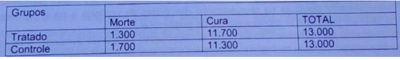
A 1,3
B 3
C 33
D 400
Questão 922 · Medicina Preventiva · 4000184742Paciente masculino, pintor e trabalha em uma metalúrgica onde opera instrumento de pintura a revolver. Segundo o PPRA da empresa, neste setor os trabalhadores estão expostos ao chumbo inorgânico, ruído acima de 85 dB, tolueno e metil-etil-cetona. Como médico do trabalho da empresa, quais exames complementares você solicitaria no exame periódico deste trabalhador, de acordo com o Quadro I da NR-7?
A Plumbemia, ácido delta amino levulínico, audiometria, ácido hipúrico e metil-etilacetona urinária.
B Fenol urinário, metemoglobina, dosagem de chumbo no sangue, zinco protoporfirina, audiometria, dosagem de tolueno no sangue e metil-etil-acetona sanguínea.
C Fenol urinário, metanol urinário, dosagem de ácido hipúrico no sangue, zinco protoporfirina, audiometria, fenol urinário, hemograma, protoparasitológico, urina I e hemograma.
D Raio-X de osso longos para detectar imagens de impregnação pelo chumbo, raio-x de pulmão para avaliar saturnismo, dosagem de chumbo no sangue, audiometria, fenol urinário, urina I, hemograma e metil-etil-acetona urinária e sanguínea.
Questão 923 · Medicina Preventiva · 4000184741Em uma reunião com 200 participantes, no Hotel "Come-se Bem e à Vontade", promovida pela Secretaria de Saúde para um curso de atualização em Tuberculose; levou-se inicialmente 50 pro ssionais para uma UNIDADE DE SAÚDE próxima, com quadro de náuseas, vômitos, diarreia e cólicas abdominais. A investigação de surto identi cou um total de 120 casos, envolvendo o consumo de sanduíche de presunto e queijo, oferecido durante o lanche vespertino do segundo dia da reunião e confirmou sua etiologia estafilocócica. Qual a Taxa de Ataque Inicial e final do surto, respectivamente.
A 0,25 e 0,6.
B 0,5 e 1,2
C 5 e 12
D 50 e 120
Questão 924 · Medicina Preventiva · 4000184740Menino, 6 anos, foi ''picado por um bicho'', não soube qual. Seus pais caram apavorados, pois outras crianças foram picadas por escorpião ali no bairro e uma das crianças com 5 anos morreu. Levaram o lho assintomático para a UPA. O paciente passou pelo acolhimento e classificação de risco com uma enfermeira, sendo classificado em azul (prioridade 3 - consultas de baixa complexidade - atendimento de acordo com o horário de chegada) podendo ser o atendimento até em 1 hora. Após 50 min, a criança referiu dor forte no local da picada, muita sudorese e os pais observaram vermelhidão e inchaço no local. Esta evolução reforçou a possibilidade de um acidente por picada de escorpião, e assim chamaram a enfermeira. A enfermeira avaliou imediatamente, sendo que o paciente foi reclassi cado em vermelho (prioridade zero - emergência, necessidade de atendimento imediato), pois pode ter evolução muito grave e óbito. Foi encaminhado urgente para a Emergência do HE (Hospital de Ensino) que é referência para a aplicação de soro antiescorpiônico. Em relação a este caso pode-se afirmar que:
A Acolhimento com Classificação de Risco é uma ferramenta com objetivo encaminhar a maioria dos casos e organizar o atendimento de todos, evitando filas;
B Acolhimento com Classificação de Risco é atividade realizada por profissional de nível superior da enfermagem, da medicina e da psicologia, preferencialmente com experiência em serviço de urgência, e após capacitação específica para a atividade proposta;
C Acolhimento com Classificação de Risco configura-se, como uma das intervenções potencialmente decisivas na reorganização das portas de urgência e na implementação do cuidado em rede, pois extrapola o espaço de gestão local;
D Acolhimento com Classificação de Risco é, dependendo da grande demanda, é realizado por toda a equipe que atua na urgência: enfermeiros, técnicos de enfermagem, médicos, psicólogos, assistentes sociais e funcionários administrativos;
Revisar: possível letra faltando em enunciado
Questão 925 · Medicina Preventiva · 4000184739Em setembro de 2021, a Organização Mundial da Saúde (OMS) estabeleceu uma meta global ambiciosa. A agência de saúde da ONU pediu que 70% da população global fosse vacinada até meados de 2022. Aquela altura, pouco mais de 3% das pessoas em países de baixa renda havia sido vacinadas com pelo menos uma dose, em comparação com 60-18% em países de alta renda. Seis meses depois, o mundo está longe de atingir essa meta. O número total de vacinas administradas aumentou drasticamente, mas também a desigualdade da distribuição: das 10,7 bilhões de doses distribuídas em todo o mundo, apenas 1% foi administrada em países de baixa renda. Isso significa que 2,8 bilhões de pessoas em todo o mundo ainda estão esperando por sua primeira dose. A desigualdade nas vacinas põe em risco a segurança de todos e contribui para aumentar as desigualdades entre - e dentro - dos países. Esse estado de coisas não apenas corre risco de prolongar a pandemia, mas esta desigualdade, tem muitos outros impactos, retardando a recuperação econômica de países inteiros, mercados de trabalho globais, pagamentos da dívida pública e capacidade dos países de investir em outras prioridades (Nações Unidas, março 2022). Dentre os princípios do Sistema de Saúde brasileiro, relacionados abaixo, qual deles visa atenuar as desigualdades e injustiças sociais:
A Equidade
B Universalidade
C Participação social.
D Integralidade da atenção à saúde
Questão 926 · Medicina Preventiva · 4000184738Na reorganização do Sistema Único de Saúde (SUS) o Ministério da Saúde pela Portaria nº 4.279, de 30 de dezembro de 2010 estabelece diretrizes para a organização da Rede de Atenção à Saúde no âmbito do SUS. O conceito de Rede de Atenção à Saúde - RAS é:
A Definida como arranjos organizativos de ações e serviços de saúde, de diferentes densidades tecnológicas, que integradas por meio de sistemas de apoio técnico, logístico e de gestão, buscam garantir a integralidade do cuidado;
B Espaço geográfico contínuo, constituído por agrupamentos de municípios limítrofes e de mesmo tamanho, com a finalidade de integrar a organização, o planejamento e a execução de ações e serviços de saúde;
C É composta de pontos de atenção à saúde entendidos como espaços onde se ofertam determinados serviços de saúde, independente da hierarquização dos serviços e da regionalização;
D Estabeleceu o espaço regional como lócus privilegiado, para o atendimento dos casos graves, com a construção das responsabilidades pactuadas, uma vez que é esse espaço que permite a integração de políticas e programas por meio da ação conjunta das esferas federal, estadual e municipal.
Questão 927 · Medicina Preventiva · 4000184734Adolescente feminina, 16 anos, saudável, estudante de ensino médio, procura atendimento na Unidade Básica de Saúde, sem acompanhante. Refere que já iniciou a vida sexual e gostaria de fazer uso da pílula anticoncepcional, apesar de utilizar preservativo. O médico que atende diz que só pode prescrever o método pedido após falar com um de seus pais ou responsável legal. Em relação a conduta do médico aponte a alternativa correta:
A A conduta do médico foi adequada com a adolescente, pois é menor de idade, portanto, legalmente incapaz. É importante que seus pais ou o responsável legal saibam que ela tem vida sexual. Com anuência deles a pílula pode ser prescrita;
B A conduta do médico não foi adequada com a adolescente, pois poderia prescrever a pílula anticoncepcional, desde que reforçasse a necessidade de continuar usando o preservativo e convocasse os pais ou responsável legal para deixá-los cientes da situação;
C A conduta do médico não foi adequada com a adolescente, pois mesmo sendo menor de idade, a paciente mostra-se capaz de tomar decisões relativas á sua saúde e não há necessidade de comunicar aos responsáveis legais assuntos de sua vida sexual;
D A conduta do médico foi adequada com a adolescente, pois ele deve exigir a presença dos pais ou do responsável, porque a pílula anticoncepcional está contraindicada para adolescente, pelo risco de abandono do uso do preservativo.
Revisar: possível letra faltando em alt B
Questão 928 · Medicina Preventiva · 4000184733Homem 54 anos, lavrador, residente na área de abrangência Unidade Básica de Saúde a (UBS) com Estratégia de Medicina Família do município X, apresenta perda de peso acentuada nos últimos três meses. Teve diagnostico de câncer de estomago, no inicio do quadro, e foi submetido à cirurgia e sessões de radioterapia, que foram suspensas há um mês após constatação de metástases em vários órgãos. O paciente evoluiu para um quadro de caquexia e vinha recebendo tratamento sob regime domiciliar, pelo médico da Equipe de Saúde da Família desta UBS, que o visita regularmente em casa. A família procura este médico na UBS e comunica que, após a última visita, o paciente evoluiu com falta de ar, vindo a falecer no domicílio.
A O médico da família não emitirá a DO, considerando-se que embora ele prestasse assistência médica ao falecido, conhecia o quadro clínico apresentado nos últimos meses, bem como o prognóstico do quadro, o óbito foi no domicilio sem assistência médica.
B O médico da família deve proceder a um cuidadoso exame externo do cadáver, a fim de afastar qualquer possibilidade de causa externa, constatar o óbito e emitir a DO anotando, na variável causa, "óbito sem assistência médica" e no campo 59 da Declaração de Óbito "não há sinais externos de violência".
C O corpo deverá ser encaminhado ao IML. Como é morte natural, o médico deve esgotar todas as possibilidades para formular a hipótese diagnóstica, inclusive com anamnese e história colhida com familiares. Caso persista dúvida e na localidade exista SVO, o corpo deverá ser encaminhado para esse serviço. Caso contrário, o médico deverá emitir a DO esclarecendo que a causa é desconhecida.
D O médico da Estratégia Saúde da Família (ESF), do Programa de Internação Domiciliar e outros assemelhados, deverá verificar pessoalmente o cadáver, após ter sido comunicado do óbito e emitirá a DO, considerando-se que prestava assistência médica ao paciente, conhece o quadro clínico, bem como o seu prognóstico.
Questão 929 · Medicina Preventiva · 4000184732Mulher, 50 anos, com peso de 110 kg e altura de 1,60, sendo seu IMC= 43 Kg/m², com diagnóstico de sobrepeso grau III. Foi submetido a cirurgia redutora de estômago e recebeu alta hospitalar. Retornou no 4º dia do pós-operatório, quando foi diagnosticado fístula da anastomose esôfago gástrica. Realizada cirurgia com sutura da fístula, porém evoluiu com peritonite e septicemia, falecendo 11 dias depois no hospital onde estava internada.
A Parte I. Peritonite; Fístula gástrica; Cirurgia p/ redução do estomago; Sobrepeso grau III; Parte II; Hipercolesterolemia
B Parte I. Hipercolesterolemia; Fístula gástrica; Cirurgia p/ redução do estomago; Peritonite; Parte II. Sobrepeso grau III
C Parte I. Peritonite; Fístula gástrica; Cirurgia p/ redução do estomago; Infecção Hospitalar; Parte II. Hipercolesterolemia e Sobrepeso grau III
D Parte I. Sobrepeso grau III; Cirurgia p/ redução do estomago; Fistula gástrica; Peritonite; Parte II. Hipercolesterolemia
Questão 930 · Estudos de Coorte · 4000184613Estudo visou verificar a associação entre o tempo diário de trabalho de técnicos de enfermagem e a ocorrência de dor lombar crônica. Foi registrada a carga horária diária de cada trabalhador e verificada a incidência de dor lombar por um período de 2 anos. Nesse contexto, é CORRETO classificar esse estudo como:
A Transversal.
B Coorte.
C Ecológico.
D Experimental.
Questão 931 · Movimento de Ref orma Sanitária · Constituição Federal CF1988 · 4000184612Como corolário do movimento da Reforma Sanitária, a Constituição Federal de 1988 definiu três grandes referenciais para o sistema de saúde brasileiro: o conceito ampliado de saúde; a saúde como direito do cidadão e dever do Estado e a instituição do SUS. Esse sistema, calcado nos princípios de universalidade, integralidade, descentralização e participação da comunidade, foi resultado de um intenso movimento social, que teve como objetivo construir um sistema universal de saúde para o país. São princípios que nortearam a reforma: I - Princípio ético-normativo, que insere a saúde como parte dos direitos humanos. II - Princípio científico, que compreende a determinação social do processo saúde/doença. III - Princípio político, que assume a saúde como direito universal inerente à cidadania em uma sociedade democrática. IV - Princípio sanitário, que entende a proteção à saúde de forma integral, desde a promoção, passando pela ação curativa reabilitação.
A I e III apenas.
B II e IV apenas.
C I, II e III apenas.
D I, II, III e IV.
Questão 932 · Leis orgânicas da saúde · 4000184611De acordo com a Lei Orgânica da Saúde, estão incluídas ainda no campo de atuação do Sistema Único de Saúde (SUS): I - A execução de ações de vigilância epidemiológica e sanitária, de saúde do trabalhador e de assistência terapêutica integral, inclusive farmacêutica. II - A participação na formulação da política e na execução de ações de saneamento básico. III - A ordenação da formação de recursos humanos na área de saúde. IV - O incremento do desenvolvimento científico e tecnológico. Estão CORRETAS as afirmativas
A I e III apenas.
B II e IV apenas.
C I, II e III apenas.
D I, II, III e IV.
Questão 933 · Princípios da Medicina de Família e Comunidade · 4000184610Analise as ações da equipe da estratégia de saúde da família a seguir: I - Realizar ações de gerenciamento na unidade de saúde. II - Realizar o cuidado em saúde da população adscrita, prioritariamente no âmbito da unidade de saúde, no domicílio e nos demais espaços comunitários (escolas, associações, entre outros), quando necessário. III - Fazer uma busca ativa e a noti cação de doenças e agravos de noti cação compulsória e de outros agravos e situações de importância para o grupo. IV - Participar das atividades de planejamento e avaliação das ações da equipe, a partir da utilização dos dados disponíveis. É CORRETO afirmar que são atribuições de todos os membros da ESF as afirmativas previstas em:
A II, III e IV apenas.
B III e IV apenas.
C I e II apenas.
D I, II, III e IV.
Questão 934 · Políticas de Saúde do Sistema Único de Saúde · 4000184609Sobre o controle social em saúde, analise as afirmativas a seguir: I - É a garantia dada pelo Estado de que a sociedade civil organizada tem possibilidade concreta de in uir sobre as políticas públicas de saúde. II - A participação popular deve ter caráter deliberativo, oferecendo condições para que se possa determinar a política de saúde que interessa ao conjunto da população. III - É necessário que os atores sociais estejam instrumentalizados para intervir no processo, de forma a indicar um modelo de saúde mais adequado para as necessidades da população, e para criar uma nova consciência sanitária de acordo com o conceito de saúde que embasa as diretrizes do SUS.
A II e III apenas.
B I e III apenas.
C I e II apenas.
D I, II e III.
Questão 935 · Vigilância Epidemiológica · 4000184608Pequena cidade do sul de Minas Gerais cercada por várias lagoas, que, apesar da presença de Biomphalaria glabrata, não detectou nenhum caso de esquistossomose e nem de caramujo infectado nos últimos 20 anos. Porém foi inaugurada uma grande fábrica na região e, por isto, sua população aumentou em cerca de 20% em função das pessoas vindas de várias partes do Estado de Minas Gerais e de São Paulo. Nesse contexto, é CORRETO afirmar que, pela vigilância epidemiológica, esta área deve ser classificada como:
A Área vulnerável.
B Área indene sem potencial de transmissão.
C Área indene com potencial de transmissão.
D Área de foco.
Questão 936 · Violência · 4000184607A noti cação dos casos de violência permite o dimensionamento epidemiológico do problema e a criação de políticas públicas voltadas à sua prevenção. A respeito deste tema, assinale V para as a rmativas verdadeiras e F para as falsas. ( ) O Sistema de Vigilância de Violências e Acidentes (Viva) tem como base dois componentes da ação de vigilância: vigilância contínua, que é realizada mediante noti cação e investigação de violência doméstica, sexual e outras formas de violência; e vigilância pontual - inquérito, que é feita por inquéritos hospitalares e/ou pesquisas periódicas, por amostragem. ( ) A noti cação é compulsória em situações de violência contra crianças, adolescentes, mulheres e pessoas idosas. ( ) A Ficha de Noti cação/Investigação Individual de Violência Doméstica, Sexual e/ou outras Violências é única, independentemente do sexo, faixa etária, raça/cor/etnia, classe social, religião ou orientação sexual da vítima. Assinale a alternativa que apresenta a sequência CORRETA:
A F F V
B V F V.
C F V F.
D V V V.
Questão 937 · Vigilância Sanitária · 4000184606Seguindo acordos internacionais, a legislação brasileira classifica os medicamentos em grupos com regimes de controle diferentes. Para substâncias controladas é obrigatório o uso de receituários ou noti cações específicos, emitidos pela Secretaria de Vigilância Sanitária. Analise os grupos de substâncias a seguir: I - Substâncias psicotrópicas (anfetamínicas). II - Substâncias psicotrópicas (benzodiazepínicos e barbitúricos). III - Substâncias anabolizantes. IV - Substâncias psicotrópicas anorexígenas. É CORRETO a rmar que devem ser prescritas em receituário azul as substâncias previstas em:
A II, III e IV apenas.
B II e IV apenas.
C I e III apenas.
D I, II, III e IV.
Questão 938 · Pneumoconioses · Dermatoses Ocupacionais · 4000184605A respeito das queixas ocupacionais, assinale V para as afirmativas verdadeiras e F para as falsas. ( ) As dermatoses ocupacionais são, na sua grande maioria causadas por agentes químicos: "irritantes" ou "alergênicos". ( ) silicose acelerada ou subaguda é uma pneumoconiose não brinogênica que tem início com 9 meses a 1 ano de exposição ocupacional. Decorre da exposição ocupacional a poeiras respiráveis com elevada concentração de sílica cristalina. Como exemplos de ocupações de risco estão cavadores de poços e cortadores de pedras. ( ) São características da PAIR a perda auditiva, os zumbidos, as di culdades no entendimento da fala, os transtornos da comunicação, as alterações do sono e os distúrbios neurológicos e vestibulares. ( ) As dermatoses ocupacionais, a silicose e a PAIR são de notificação compulsória e na suspeita diagnóstica deve ser aberta uma Comunicação de Acidente de Trabalho (CAT). Assinale a alternativa que apresenta a sequência CORRETA:
A V F V V.
B V F V F.
C F F V F.
D F V F V.
Questão 939 · Declaração de óbito DO Atestado de óbito · 4000184604Homem, 49 anos, motorista de caminhão, se envolveu em um acidente enquanto trabalhava, sofreu fraturas múltiplas, foi internado e submetido à cirurgia. Evoluía adequadamente, mas adquiriu infecção hospitalar, vindo a falecer, 12 dias depois, por septicemia no CTI. Considerando os dados disponíveis, assinale a alternativa que apresenta CORRETAMENTE a causa básica da morte e quem deve fornecer a Declaração de Óbito.
A Acidente de trânsito e o intensivista.
B Septicemia e o IML.
C Acidente de trânsito e o IML.
D Septicemia e o intensivista.
Questão 940 · Mensuração de variáveis · 4000184603Analise as variáveis de um estudo epidemiológico sobre diabetes mellitus a seguir: I - Ordinal: grau de instrução. II - Nominal: tipo sanguíneo e cor da pele. III - Contínua: número de pessoas portadoras de diabetes encaminhadas para avaliação oftalmológica. IV - Discreta. Valor da última hemoglobina glicada e IMC. Estão CORRETAS as afirmativas:
A I, II e III apenas.
B III e IV apenas.
C I e II apenas.
D I, II, III e IV.
Questão 941 · Medicina Preventiva · 4000184599Devemos, quando possível, caracterizar a história natural da doença em termos quantitativos para descrever a gravidade, estabelecer prioridades em serviços clínicos e programas de saúde pública, além de estabelecer uma referência para a história natural de modo que quando novos tratamentos se tornam disponíveis, seus efeitos possam ser comparados como desfecho esperado na ausência destes. Um dos importantes indicadores para isto é a taxa de sobrevida relativa. Considerando esse contexto, avalie as assertivas a seguir e a relação proposta entre elas. I - Geralmente está próxima da sobrevida observada em populações idosas. PORQUE II - A taxa de sobrevida relativa é definida como a razão entre as taxas de sobrevida observada e esperada. Sobre as assertivas, assinale a alternativa CORRETA:
A I é verdadeira e II é falsa.
B I e II são verdadeiras, mas II não justifica I.
C I e II são verdadeiras e II justifica I.
D I é falsa e II é verdadeira.
Questão 942 · Princípios e Diretrizes do SUS na Lei n 80801990 · 4000184568Paciente do sexo feminino, 14 anos de idade, comparece à consulta com queixa de acompanhamento de cardiopatia congênita. Durante a anamnese, relatou presença de corrimento vaginal de odor fétido e coloração acinzentada. Refere também início da atividade sexual. São realizadas, além das orientações, tratamento do corrimento vaginal e proposta para iniciar uso de método contraceptivo. O atributo da Atenção Primária à Saúde exemplificado é
A acesso e Primeiro Contato.
B integralidade.
C coordenação.
D longitudinalidade.
Questão 943 · Projeto Terapêutico Singular · 4000184567Homem, 82 anos de idade, portador de insu ciência cardíaca congestiva, arritmia cardíaca, Diabetes mellitus e hipotireoidismo, foi internado por um IAM. Ao planejar a alta hospitalar, decidiu-se pela realização de um Projeto Terapêutico Singular (PTS). Sendo assim, considere as afirmativas a seguir. I. O PTS é composto por quatro momentos: o diagnóstico, a elaboração, a pactuação e a reavaliação. No diagnóstico, o objetivo é descrever as necessidades do sujeito (indivíduo ou coletivo), geralmente em situação complexa. II. O PTS deve ser elaborado pela equipe de saúde, apresentado e validado pela pessoa e pela família. III. A pactuação deve contemplar metas factíveis, prazos adequados e responsáveis por cada ação. Estão corretas as afirmativas
A I e II, apenas.
B I e III, apenas.
C II e III, apenas.
D I, II e III.
Questão 944 · Genograma · 4000184566O casal João e Helena é acompanhado por hipertensão arterial e outras comorbidades. Ambos estão apresentando piora dos níveis pressóricos, apesar de manterem o tratamento. Assim, para uma melhor avaliação, é decidido utilizar ferramentas de abordagem familiar. A partir do genograma, analise as afirmativas a seguir. I. A pessoa índice é o Sr. João. II. Moram na mesma casa João, Helena, Bruna, Vinícius, Luíza, Letícia e Vitória. III. O relacionamento das irmãs Carolina e Bruna é distante. Estão corretas as afirmativas
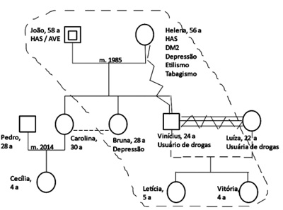
A I e II, apenas.
B I e III, apenas.
C II e III, apenas.
D I, II e III.
Questão 945 · Prevenção Quaternária · 4000184565Em relação à infecção por Covid-19, a não utilização do denominado “Kit Covid”, uma associação de cloroquina e outras drogas, é um exemplo de
A prevenção primária.
B prevenção secundária.
C prevenção terciária.
D prevenção quaternária.
Questão 946 · Direção do Estudo prospectivo x retrospectivo · 4000184561Certo estudo visou a verificar a associação entre o tempo diário de trabalho dos pro ssionais da área de saúde e a ocorrência de dor lombar crônica. Foi registrada a carga horária diária de cada trabalhador e verificada a incidência de dor lombar por um período de dois anos. Em relação aos métodos epidemiológicos, assinale a alternativa correta.
A Esse é um estudo transversal.
B As horas de trabalho representam o desfecho.
C A dor lombar é a exposição.
D Esse é um estudo prospectivo.
Questão 947 · Incidência · 4000184560A Secretaria de Saúde está preocupada com o impacto da epidemia de dengue. Para verificar o risco de contrair dengue no ano de 2022, qual indicador deve ser acompanhado?
A Prevalência mensal de dengue em 2022.
B Incidência mensal de dengue em 2022.
C Letalidade da dengue em 2021.
D Mortalidade por dengue acumulada em 2022.
Questão 948 · Variável discreta · Variável ordinal · Variável contínua · 4000184559Analise as seguintes variáveis de um estudo epidemiológico e seus exemplos. I. Ordinal: grau de instrução II. Nominal: cor da pele III. Contínua: IMC IV. Discreta: número de pessoas encaminhadas para a atenção secundária Apresentam uma correta correlação de variáveis e exemplos:
A I e II, apenas.
B III e IV, apenas.
C I, II e III, apenas.
D I, II, III e IV.
Questão 949 · Cuidados paliativos · 4000184524Acerca dos conceitos de distanásia, eutanásia e ortotanásia, assinale a alternativa correta.
A Distanásia refere-se ao do processo de prolongar a vida de um enfermo incurável de forma artificial, sem trazer benefícios a ele.
B Eutanásia refere-se ao do processo de antecipar a morte, muito utilizado em pacientes sob cuidados paliativos, e visa a aliviar o sofrimento gerado por sintomas refratários.
C Ortotanásia é o processo de cuidados médicos relativo à medicina ortomolecular, em que não há uso de medicação.
D Eutanásia é o processo de decisão de conduta médica com base no paciente, sendo ele o ator principal na decisão terapêutica, daí o prefixo
E Distanásia ocorre quando o paciente, em fase final de vida, apresenta uma dissociação clínico- laboratorial, que permite gerar insegurança sobre a real condição clínica do paciente.
Questão 950 · Medicina Preventiva · 4000184465Um homem de 75 anos de idade foi levado ao pronto-socorro mais próximo de sua casa com quadro de piora da insuficiência cardíaca congestiva com dispneia súbita. Evoluiu a óbito três dias após a internação. Era tabagista (40 maços-ano). Teve diagnóstico de estenose de mitral aos 30 anos de idade e febre reumática na infância. A imagem a seguir mostra parte da declaração de óbito desse homem. Com base nesse caso, assinale a alternativa apresenta o melhor preenchimento dessa declaração de óbito.
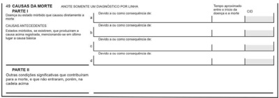
A Parte I: a. insuficiência cardíaca; b. estenose de valva mitral; c. febre reumática; d. tabagismo.
B Parte I: a. dispneia intensa; b. estenose de valva mitral; c. tabagismo. Parte II: febre reumática.
C Parte I: a. insuficiência cardíaca; b. estenose de valva mitral; c. febre reumática. Parte II: tabagismo.
D Parte I: a. parada cardiorrespiratória; b. estenose de valva mitral; c. febre reumática; d. tabagismo.
E Parte I: a. insuficiência cardíaca; b. tabagismo; c. febre reumática; d. tabagismo.
Questão 951 · Medicina Preventiva · 4000184464A participação social e a gestão compartilhada são pilares fundamentais do Sistema Único de Saúde (SUS). Com relação a esse assunto, assinale a alternativa que apresenta as instâncias existentes para a efetuação dos citados pilares.
A conferências de saúde, conselhos municipais de saúde, secretários municipais de saúde e prefeitos.
B prefeitos, governadores e ministro da saúde.
C conferências de saúde, conselho estadual de saúde, secretário estadual de saúde e governador do estado.
D conferências de saúde, conselhos de saúde e comissões de intergestores nas esferas federal, estadual e regional.
E prefeitos e ministro da saúde.
Questão 952 · Medicina Preventiva · 4000184463O programa Previne Brasil, instituído pela Portaria nº 2.979/2019, é um novo modelo de nanciamento para a atenção primária à saúde (APS), o qual altera algumas formas de repasse do nanciamento para os municípios, que passam a ser distribuídos com base em três critérios: captação ponderada, pagamento por desempenho e incentivo para ações estratégicas. Os indicadores de desempenho incluem o(a)
A proporção de crianças que realizaram teste do pezinho.
B percentual de diabéticos que realizaram fundoscopia anualmente.
C percentual de mamografias e exames de rastreio de próstata realizados.
D proporção de gestantes que realizaram pelo menos 10 consultas de pré-natal.
E percentual de hipertensos acompanhados com pressão arterial aferida em cada semestre.
Questão 953 · Medicina Preventiva · 4000184462Um pro ssional médico atende, pela primeira vez, via telemedicina, um rapaz de 23 anos de idade, assintomático, sem patologias de base, que solicita “troca” de pedido de exames de sangue e urina com 48 itens, feito por pro ssional nutricionista. Refere que o laboratório e o convênio não aceitam pedido de nutricionista. O médico a rma que não se sente confortável em realizar essa “troca” de guia, pois acredita que a maioria dos exames pedidos não tem indicação clínica. Nesse caso hipotético, de acordo com o Código de Ética Médica, o médico
A deve acatar a solicitação, pois, no processo de tomada de decisões profissionais, de acordo com seus ditames de consciência e as previsões legais, o médico aceitará as escolhas de seus pacientes relativas aos procedimentos diagnósticos e terapêuticos por eles expressos, desde que adequadas ao caso e cientificamente reconhecidas.
B não deve acatar a solicitação, pois é vedado ao médico delegar a outros profissionais atos ou atribuições exclusivas da profissão médica.
C deve acatar a solicitação, pois é vedado ao médico deixar de garantir ao paciente o exercício do direito de decidir livremente sobre sua pessoa ou seu bem-estar, bem como exercer sua autoridade para limitá-lo.
D tem o direito de não acatar a solicitação, pois é vedado ao médico praticar ou indicar atos médicos desnecessários ou proibidos pela legislação vigente no País.
E não deve acatar a solicitação, pois deve recusar-se a realizar atos médicos que, embora permitidos por lei, sejam contrários aos ditames de sua consciência.
Questão 954 · Medicina Preventiva · 4000184459O gráfico a seguir refere-se às taxas de incidência e mortalidade do câncer de tireoide nos Estados Unidos entre os anos de 1975 e 2010. Howlader Por sua magnitude e suas consequências para a saúde, o sobrediagnóstico é considerado um dano muito relevante associado ao rastreamento de câncer de tireoide. Com relação a esse assunto, assinale a alternativa correta, com base no gráfico acima.
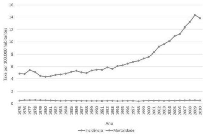
A Sobrediagnóstico consiste no aumento do número de casos de câncer que comumente se observa após a introdução de programas de rastreamento de doenças.
B O fato de a incidência de câncer de tireoide ter aumentado após a realização frequente de ultrassonografias na população americana comprova que o programa de rastreio teve sucesso.
C Um aspecto que chama atenção para o sobrediagnóstico é a manutenção das taxas de mortalidade após o aumento do número de ultrassonografias e da incidência de câncer de tireoide.
D Por definição, um programa de rastreamento de câncer deve acontecer quando sinais e(ou) sintomas sugestivos estão presentes.
E Sobrediagnóstico é a classificação inadequada de um tumor que, na verdade, é benigno.
Questão 955 · Medicina Preventiva · 4000184458Pictogramas são recursos gráficos que objetivam transmitir informações com clareza e facilitar a comunicação médico-paciente, de modo a permitir uma tomada de decisão compartilhada e mais adequada. Encontram-se a seguir dois pictogramas (A e B) que objetivam mostrar o provável benefício da atorvastatina na redução de risco de doença cardiovascular (DCV) em pacientes com risco calculado de 10% e 20% de evento cardiovascular nos próximos 10 anos. Considere-se a seguinte legenda: de 100 pessoas, as que estão indicadas por correspondem àquelas que não teriam evento cardiovascular; as indicadas por correspondem às pessoas que teriam; e as indicadas por correspondem às pessoas beneficiadas pelo uso da atorvastatina. Statins to reduce the risk of CHD and stroke: patient decision aid. Copyright © NICE 2014 (com adaptações). Com base nessas informações, assinale a alternativa correta, considerando os pictogramas apresentados.
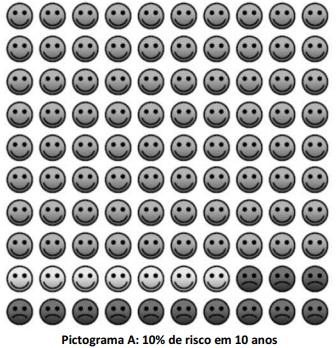
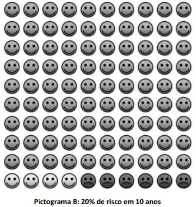
A O pictograma A mostra que, se todas as 100 pessoas tomarem atorvastatina por 10 anos, ao longo desse tempo, em média, 6 pessoas serão salvas de desenvolver DCV.
B O benefício do uso da atorvastatina é maior nos pacientes com maior risco cardiovascular.
C O pictograma B mostra que a chance de evento cardiovascular é de 13% mesmo em quem não usa estatina.
D A atorvastatina praticamente zera o risco de evento cardiovascular quando adequadamente utilizada.
E O benefício da estatina é muito pequeno; por isso, não vale a pena seu uso.
Questão 956 · Medicina Preventiva · 4000184457No que se refere à qualidade de avaliação dos testes diagnósticos, assinale a alternativa correta.
A A propriedade que define a proporção de não doentes entre os indivíduos que têm um teste negativo é a especificidade.
B Para a triagem de bolsas de sangue, são desejáveis testes com baixa sensibilidade.
C A propriedade mais adequada a ser avaliada para interpretar um exame positivo é a sensibilidade.
D Testes em série melhoram a especificidade do diagnóstico.
E O aumento da prevalência de uma doença na população diminui o valor preditivo positivo de um teste diagnóstico.
Questão 957 · Medicina Preventiva · 4000184456Uma paciente de 84 anos de idade, hipertensa e diabética, sofreu acidente cerebrovascular isquêmico, apresentando hemiparesia há 2 anos e deambulando com apoio de muleta. Nesse caso hipotético, a tentativa de retirada de uso frequente de Vertix corresponde ao(s) seguinte(s) nível(is) de prevenção:
A primária e secundária.
B secundária e terciária.
C quaternária.
D secundária.
E primária.
Questão 958 · Medicina Preventiva · 4000184455Na avaliação de dois pacientes tabagistas, um de 22 anos de idade e outro de 64 anos de idade, ambos assintomáticos, mas com nódulo pulmonar solitário de 1,2 cm, deve-se considerar que a probabilidade de câncer pulmonar é maior para o idoso, pois
A o valor preditivo negativo do teste não depende da especificidade do teste.
B o número de falsos-positivos é o mesmo nas duas faixas etárias.
C a sensibilidade do teste varia conforme a faixa etária.
D o valor preditivo positivo do teste é maior na população com maior prevalência.
E o valor preditivo negativo do teste não depende da sensibilidade do teste.
Questão 959 · Medicina Preventiva · 4000184454Deve-se levar em consideração os conceitos de e cácia, efetividade e e ciência ao se tomar a decisão de incorporar uma nova tecnologia no sistema de saúde nacional. Em relação a tais conceitos, assinale a alternativa correta.
A Eficácia refere-se ao resultado de uma intervenção aplicada em larga escala na prática cotidiana.
B Eficiência refere-se à possibilidade de atingir um resultado independentemente dos custos envolvidos.
C Efetividade refere-se ao resultado de uma intervenção realizada em condições controladas, como nos ensaios clínicos controlados.
D Eficiência é a qualidade daquilo que cumpre com as metas planejadas, ou seja, é uma característica pertencente às pessoas que alcançam os resultados esperados.
E Efetividade refere-se ao resultado de uma intervenção aplicada sob as condições habituais da prática médica.
Questão 960 · Medicina Preventiva · 4000184453As curvas apresentadas no gráfico acima são denominadas
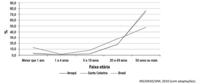
A curvas de Nelson de Moraes (mortalidade proporcional por idade).
B índice de Swaroop-Uemura (mortalidade proporcional).
C curvas de fecundidade proporcional por idade.
D curvas de óbitos por afecções crônico-degenerativas em uma população.
E curvas de incidência de covid-19 por idade.
Questão 961 · Medicina Preventiva · 4000184452Considerando-se as alternativas a seguir, é correto a rmar que os fatores socioeconômicos têm maior influência no indicador de mortalidade
A neonatal.
B neonatal tardia.
C perinatal.
D pós-neonatal.
E geral.
Questão 962 · Medicina Preventiva · 4000184451Maria, de 45 anos de idade, trabalha sob contrato regular, sob a Consolidação das Leis do Trabalho (CLT), há 12 anos. Certo dia, enquanto ia ao trabalho, caminhando, sofreu um acidente automobilístico e sofreu fratura de fíbula esquerda. Maria procurou atendimento na unidade de pronto atendimento mais próxima e foi afastada do trabalho por seis semanas, apresentando recuperação parcial. Teve também indicação de fisioterapia por vinte sessões inicialmente. Nesse caso, o custeio da reabilitação física cabe ao(à)
A empresa empregadora.
B Sistema Único de Saúde (SUS).
C Instituto Nacional do Seguro Social (INSS).
D própria empregada, Maria, com recursos próprios.
E outro envolvido no acidente automobilístico.
Questão 963 · Medicina Preventiva · 4000184450Assinale a alternativa que apresenta as principais causas de morte por doenças crônicas não transmissíveis (DCNT) no Brasil em 2019.
A doenças cardiovasculares (27%), neoplasias (17%), doenças respiratórias crônicas (12%) e diabetes (5%)
B doenças cardiovasculares (27%), neoplasias(17%), doenças renais crônicas (12%) e diabetes (5%)
C doenças cardiovasculares (27%), covid-19 (17%), doenças renais crônicas (12%) e obesidade (5%)
D doenças cardiovasculares (27%), covid-19 (17%), neoplasias (12%) e obesidade (5%)
E doenças cardiovasculares (27%), covid-19 (17%), neoplasias (12%) e doenças respiratórias crônicas (5%)
Questão 975 · Medicina Preventiva · 4000184320Estima-se que as lesões de Koplik estejam presentes em 60% das pessoas que estão incubando o sarampo. Alguns autores consideram que elas constituem um sinal patognomônico desta doença. SINAL DE KOPLIK PARA O DIAGNÓSTICO DE SARAMPO, PODE-SE AFIRMAR QUE:
A A especificidade é elevada.
B O valor preditivo positivo é 60%.
C É falso positivo em 40% dos casos.
D O valor preditivo negativo é 40%.
Questão 976 · Audiologia · 4000184319Perda Auditiva induzida por Ruído PAIR ou Perda Auditiva induzida por níveis de Pressão Sonora Elevados PAINPSE EM RELAÇÃO À PERDA AUDITIVA INDUZIDA POR RUÍDO, É CORRETO AFIRMAR QUE É:
A Do tipo misto, acometendo a orelha mais exposta, e irreversível.
B Condutiva, unilateral e reversível quando cessada a exposição.
C Do tipo misto, bilateral e reversível quando cessada a exposição.
D Neurossensorial, geralmente bilateral, irreversível e progressiva.
Questão 977 · Medicina Preventiva · 4000184318Um levantamento feito em uma amostra aleatória de estudantes dos cursos de graduação da Unicamp, para estudar o Índice de Massa Corporal (IMC) nesse grupo, identi cou média=21Kg/m² com desvio- padrão=3Kg/m² e erro-padrão=0,5Kg/m² , QUE A VERDADEIRA MÉDIA DO IMC NESSA POPULAÇÃO ESTÁ ENTRE:
A 15,12 e 26,88.
B 18,00 e 24,00.
C 20,02 e 21,98.
D 20,50 e 22,15.
Questão 978 · Medicina Preventiva · 4000184317A figura a seguir representa a curva ROC que compara o desempenho de dois métodos diagnósticos: A e B. AO ANALISAR ESSA FIGURA, PODE-SE AFIRMAR QUE:
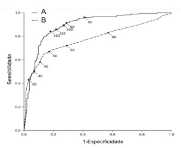
A O método B é o melhor, pois a ascensão da sua curva tem o término mais agudo.
B O método A é o melhor, pois as suas medidas estão mais próximas entre si.
C O método A é o melhor, pois apresenta a maior área sob a curva.
D Os dois métodos têm valor prognóstico positivo semelhante.
Questão 979 · Medicina Preventiva · 4000184316O número básico de reprodução R0 (R zero) foi muito estudado durante a pandemia de COVID-19. A INFORMAÇÃO DADA POR ESSE CONCEITO É:
A O número de pessoas que são contaminadas por um indivíduo, depois que ocorre uma estabilização no número de pessoas contaminadas.
B O número de pessoas que são potencialmente contaminadas por um patógeno, após o início da vacinação.
C O número mais alto de contaminação, que corresponde ao fim da fase de ascensão da curva epidêmica.
D O número de pessoas que são contaminadas por um indivíduo infectado pelo patógeno, em um ambiente em que ninguém adquiriu imunidade.
Questão 980 · Medicina Preventiva · 4000184315Homem, 55a, procura o Pronto Socorro por dor torácica em aperto, de forte intensidade. Antecedentes: hipertensão arterial e obesidade. Com a hipótese diagnóstica de infarto agudo do miocárdio (IAM), são solicitados exames complementares para confirmar ou afastar o diagnóstico. MORTE DESTE DIAGNÓSTICO, A PRINCIPAL CARACTERÍSTICA DE VALIDAÇÃO DESTES EXAMES É QUE APRESENTEM:
A Sensibilidade próxima a 100%, para evitar deixar de diagnosticar pacientes com IAM.
B Sensibilidade próxima a 100%, porque assim você vai evitar diagnosticar erradamente como infartados os pacientes sem IAM.
C Especificidade próxima a 100%, para evitar deixar de diagnosticar pacientes com IAM.
D Especificidade próxima a 100%, porque assim você vai evitar diagnosticar erradamente como infartados os pacientes sem IAM.
Questão 981 · Medicina Preventiva · 4000184314Schuch e incidência de depressão. Os resultados foram sumarizados em uma metanálise que utilizou como medida o Odds ratio O RESULTADO APONTADO ACIMA PERMITE AFIRMAR QUE:
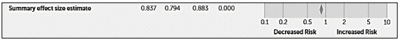
A A probabilidade de uma pessoa que faz atividade física apresentar depressão é 0,83 vezes comparada à probabilidade de quem não pratica atividade física.
B A chance de uma pessoa que faz atividade física apresentar depressão é 0,83 vezes comparada à chance de quem não pratica atividade física.
C A chance de uma pessoa evoluir com depressão é de 0,83, sendo de 0,79 no grupo que faz atividade física e de 0,88 no grupo de não faz atividade física.
D Realizar atividade física não apresentou redução significativa na associação com aumento na incidência de depressão.
Questão 982 · Medicina Preventiva · 4000184312Homem, 52a, comparece a consulta ambutorial com diagnóstico de adenocarcinoma de pâncreas sem proposta cirúrgica. Antecedentes: diabetes melito, amaurose bilateral. CUIDADOS PALIATIVOS PARA ESSE PACIENTE, É CORRETO AFIRMAR QUE:
A Deve ser iniciada na presença de falência multiorgânica.
B Não deve ser introduzida de forma precoce, para não prejudicar a esfera psicossocial.
C Pode promover o alívio da dor e de outros sintomas.
D Não apresenta benefícios diante do tipo de neoplasia avançada e das comorbidades.
Questão 983 · Medicina Preventiva · 4000184310Os sistemas nacionais de saúde obedecem a diferentes lógicas, dependendo de contextos sociais, econômicos e políticos de cada país. QUE:
A É do tipo seguro social.
B Mudou do tipo seguridade social para seguro social a partir da Constituição de 1988.
C É do tipo seguridade social.
D O tipo, seguridade ou seguro social, varia de acordo com a região do país.
Questão 984 · Medicina Preventiva · 4000184309Para algumas condições de saúde, a atenção primária oportuna e de boa qualidade pode evitar a hospitalização ou reduzir sua frequência. ATENÇÃO PRIMÁRIA”:
A Não se aplica a condições ou doenças agudas.
B Avalia a resolubilidade e qualidade da atenção primária.
C Avalia o acesso à atenção hospitalar.
D Avalia o funcionamento da rede de atenção à saúde.
Questão 985 · Medicina Preventiva · 4000184307Homem, 82a, internado para tratamento de insu ciência cardíaca descompensada, está em programação de alta hospitalar. Antecedentes: hipertensão arterial, em uso de losartana 25mg/dia, carvedilol 25mg/dia e furosemida 40mg/dia. Exame físico: ausência de sinais de sobrecarga volêmica. Sua lha o acompanha e auxilia nas atividades diárias. DE CUIDADOS DESTE PACIENTE É:
A Comunicação direta com o médico da atenção primária.
B Planejamento da alta hospitalar pelo médico do hospital.
C Ajuste medicamentoso e instrução da filha.
D Agendamento de retorno para avaliação laboratorial.
Questão 986 · Medicina Preventiva · 4000184306O modelo preventivista, baseado na concepção da história natural da doença, considera que existem três formas hierarquizadas de prevenção.
A A vacinação é a principal medida de proteção específica empregada na prevenção secundária.
B Tanto o diagnóstico precoce como o tratamento oportuno fazem parte da prevenção secundária.
C O tratamento adequado e integral é a principal estratégia de prevenção terciária.
D A prevenção primária tem início imediatamente após o período pré-patogênico.
Questão 987 · Medicina Preventiva · 4000184305O consentimento livre e esclarecido compõe um dos fundamentos éticos para a manifestação autônoma dos pacientes em relação aos procedimentos e intervenções em saúde. CONSENTIR INCLUI O SEGUINTE CRITÉRIO:
A Compreender as informações relevantes sobre seu problema de saúde e alternativas de abordagens disponíveis, incluindo riscos e benefícios potenciais.
B Demonstrar ser capaz de repetir adequadamente as informações fornecidas, assim como as diferentes abordagens disponíveis.
C Compartilhar as informações que lhe foram prestadas com seu familiar ou representante legal.
D Ser capaz de opinar mesmo que seu raciocínio lógico, necessário para o processo de tomada de decisão, esteja comprometido.
Questão 988 · Medicina Preventiva · 4000184205Roberto, um homem de 58 anos, é portador de hipertensão arterial, diabetes mellitus e hipotireoidismo. Há cerca de dois meses, ele sofreu um AVE isquêmico, apresentando diminuição de força em dimídio esquerdo, necessitando de auxílio para marcha. Desde que ocorreu o AVEi, Roberto não recuperou completamente a função cognitiva, apresentando di culdade em compreender fala, acalculia e diminuição da memória de curto prazo. Considerando o caso descrito e seus conhecimentos, julgue o item a seguir. Em casos como o de Roberto, a realização de sioterapia motora consiste em uma intervenção de prevenção terciária.
A Certo.
B Errado.
Questão 989 · Medicina Preventiva · 4000184204Roberto, um homem de 58 anos, é portador de hipertensão arterial, diabetes mellitus e hipotireoidismo. Há cerca de dois meses, ele sofreu um AVE isquêmico, apresentando diminuição de força em dimídio esquerdo, necessitando de auxílio para marcha. Desde que ocorreu o AVEi, Roberto não recuperou completamente a função cognitiva, apresentando di culdade em compreender fala, acalculia e diminuição da memória de curto prazo. Considerando o caso descrito e seus conhecimentos, julgue o item a seguir. Pelas informações fornecidas, é possível inferir que Roberto se tornou completamente dependente para atividades de vida instrumentais.
A Certo.
B Errado.
Questão 990 · Rastreamento · Rastreamento · 4000184194Marisa é uma mulher de 58 anos que veio a uma consulta de rotina, pois deseja realizar exames de “check- up”. Ela não tem problemas de saúde nem faz uso de nenhum medicamento. Seu histórico familiar a preocupa, pois sua mãe morreu devido a um câncer de laringe e, por isso, ela deseja realizar uma endoscopia para saber se está tudo bem com sua laringe, pois foi assim que a mãe descobriu o tumor. Ela deseja também realizar exames para verificar suas vitaminas. Quando questionada, refere ser viúva, sexualmente ativa e nega quaisquer sintomas no momento do atendimento. Considerando seus conhecimentos e o caso exposto, julgue o item a seguir. Faz parte do rastreio de rotina da saúde do adulto a mensuração dos níveis glicêmicos, colesteróis totais e frações e níveis de hormônios tireoidianos.
A Certo.
B Errado.
Questão 991 · Medicina Preventiva · 4000184125Volpe (2011) publicou estudo da correlação das “taxas de cesariana” com as “taxas de mortalidade materna e infantil” através da avaliação de dados o ciais de 193 países. Com base nesse estudo, o gráfico abaixo apresenta a correlação entre a países. De acordo com o gráfico, qual é a conclusão sobre a relação entre a taxa de mortalidade materna e a taxa de cesárea?
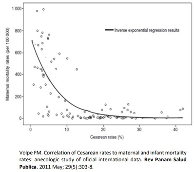
A quanto maior a taxa de cesárea, maior a mortalidade materna.
B quanto maior a taxa de cesárea, menor a mortalidade materna.
C quanto menor a taxa de cesárea, maior a mortalidade materna.
D não há relação entre a taxa de cesárea e a mortalidade materna.
Questão 992 · Relação MédicoPaciente · Método Clínico Centrado na Pessoa · 4000184123Mulher, 63 anos, está em acompanhamento ambulatorial por adenocarcinoma de pâncreas com metástases hepáticas e ósseas. Há 6 meses, iniciou segunda linha de quimioterapia não curativa. A despeito do tratamento, sua doença teve rápida progressão durante esse período. Adicionalmente, sua funcionalidade teve uma mudança importante: era totalmente ativa (ECOG 0) e agora, embora consiga manter o autocuidado e a deambulação, está incapaz de realizar suas atividades laborais (ECOG 2). No atual retorno, a paciente questiona sobre as possibilidades de tratamento e a sua inclusão em um estudo clínico para novos medicamentos. Quais ações devem ser adotadas no caso?
A postergar as informações sobre a progressão da doença, pois a perda de funcionalidade da paciente é recente e influencia sua compreensão da gravidade.
B questionar as expectativas da paciente e a sua percepção da doença, para verificar seu grau de entendimento e alinhamento com a expectativa da equipe médica.
C informar que não há eficácia comprovada para outros tratamentos e que, a partir deste momento, há indicação de acompanhamento com a equipe de cuidados paliativos.
D convocar a família para explicar a ausência de resposta aos tratamentos convencionais e ponderar os riscos e benefícios das alternativas experimentais.
Questão 993 · Medicina Preventiva · 4000184104Analise os dados da figura a seguir. Carga Viral suprimida: tiveram resultado do exame de CV, após pelo menos 6 meses do início do tratamento, com valor inferior a 50 cópias/ml registrado no sistema nacional de informação de exames laboratoriais (SISCEL). Em TARV: de medicamentos antirretrovirais (SICLOM), nos últimos 100 dias do ano. Retidos: de antirretroviral no ano. Vinculados: pessoas que tiveram no ano algum exame de CD4 ou de Carga Viral registrados ao SISCEL ou tiveram dispensa de TARV registrada no SICLOM. Fonte: Qual é a afirmação correta?
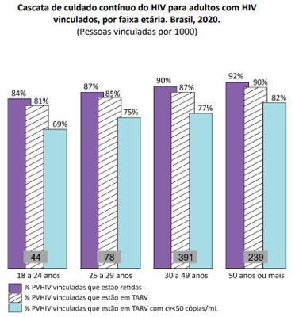
A Entre as pessoas com HIV da faixa etária de 18-24 anos que tiveram uma dispensa de ARV nos últimos 100 dias do ano e tiveram um exame de carga viral após 6 meses de tratamento, 15% não alcançaram supressão viral.
B Entre as pessoas com HIV da faixa etária de 18-24 anos que tiveram algum exame de CD4 ou Carga Viral ou tiveram uma dispensa de ARV no ano, 15% não iniciaram ou não se mantiveram no tratamento ARV.
C Entre as pessoas com 18 ou mais anos, a proporção de diagnóstico de HIV cresce com o aumento da idade.
D Entre as pessoas com 50 ou mais anos infectadas com HIV, a proporção de supressão viral é de 82%.
Questão 994 · Medicina Preventiva · 4000184103Os critérios que caracterizam uma “variável de confusão” são:
A ser um fator de risco para a doença; estar presente na população geral; e estar associada com a exposição de interesse em ambos os expostos e os não expostos.
B estar associada com o desfecho; estar associada com a exposição; e não estar no caminho causal entre a exposição e o desfecho.
C estar associada com o desfecho; estar associada com a exposição de interesse entre aqueles que não apresentam o desfecho; e não estar no caminho causal.
D ser um fator de risco verdadeiro para a doença investigada; estar associada com a exposição; e estar no caminho causal que une a exposição ao desfecho.
Questão 995 · Medicina Preventiva · 4000184102Considere atentamente os dois episódios abaixo envolvendo o sistema de saúde brasileiro: EPISÓDIO 1 socorrido pelo SAMU e levado ao atendimento de um grande hospital público. Devido ao seu estado de saúde, é assistido antes de várias pessoas que aguardavam atendimento no pronto-socorro. EPISÓDIO 2 clínico grave é atendida primeiramente por uma equipe de saúde local e posteriormente removida até a rede hospitalar do Sistema Único de Saúde (SUS) da cidade mais próxima. O atendimento foi viabilizado por um Distrito voltados especi camente para as necessidades de saúde e para a ocupação geográ ca das comunidades indígenas no Brasil. Os dois episódios descritos correspondem a um mesmo princípio fundamental do SUS. Assinale a alternativa que corresponde ao princípio em questão.
A Descentralização.
B Acesso.
C Equidade.
D Hierarquização.
Revisar: possível letra faltando em enunciado
Questão 996 · Medicina Preventiva · 4000184101Nos últimos anos, quando se compara o padrão de despesas com a saúde no Brasil com o de outros países, é correto afirmar:
A no Brasil, a participação do gasto privado no total de gastos com saúde é maior do que em outros países com sistemas universais de saúde.
B embora o Brasil gaste com saúde uma porcentagem do PIB inferior à média de países Europeus, o gasto
C embora seja inferior à média dos países da OCDE, o gasto
D a participação do gasto privado no total de gastos com saúde é maior em países mais ricos, enquanto no Brasil predomina o gasto destinado a ações e serviços públicos de saúde.
Questão 997 · Medicina Preventiva · 4000184100O Brasil é um dos países que mais consome agrotóxicos no mundo, o que caracteriza um sério problema de Saúde Pública e Ambiental. A Organização Internacional do Trabalho (OIT) a rma que, em países e m desenvolvimento, os agrotóxicos causam 70 mil intoxicações agudas e crônicas por ano, que evoluem para óbito. Outros mais de sete milhões de casos anuais de doenças agudas e crônicas estão ligadas aos agrotóxicos (CARNEIRO et al., 2015). No âmbito da Regulação em Saúde no Sistema Único de Saúde (SUS), a Agência Nacional de Vigilância Sanitária (ANVISA) tem uma atribuição especí ca relacionada ao registro e à autorização de uso e de comercialização de agrotóxicos no Brasil. Assinale a alternativa que corresponde à atribuição da ANVISA.
A Realizar análises de custo-benefício e de custo-efetividade do produto, considerando tanto eventuais danos à saúde quanto benefícios econômicos às atividades agrícolas.
B Elaborar um dossiê de saúde ambiental, no qual é avaliado o potencial poluidor do produto.
C Avaliar a eficiência e o potencial de uso do produto na agricultura por meio de um dossiê agronômico.
D Elaborar um dossiê toxicológico, avaliando quão tóxico é o produto para a população e em quais condições o seu uso é seguro.
Revisar: possível letra faltando em enunciado
Questão 998 · Medicina Preventiva · 4000184099O sistema de saúde brasileiro conta com o subsistema suplementar, no qual atuam mais de 700 operadoras de planos e seguros de saúde privados, cujas atividades são regulamentadas pela Lei n. 9.656 de 1998 e pela Agência Nacional de Saúde Suplementar (ANS). Com relação às regras de funcionamento ou às características do mercado de planos de saúde no Brasil, assinale a alternativa correta.
A Se um usuário de plano de saúde privado for atendido em um hospital público, o SUS deve ser ressarcido financeiramente por esse atendimento, nos limites das coberturas previstas no contrato do plano.
B O reajuste das mensalidades dos planos de saúde é definido anualmente pela ANS e corresponde a um índice único de aumento aplicado a todos os planos individuais, familiares, coletivos e empresariais.
C A maior fatia do mercado de assistência médica suplementar no Brasil corresponde à modalidade de contratação de planos individuais e familiares, que registrou expressivo crescimento em função da pandemia de COVID-19.
D Os seguros de saúde representam o segmento de saúde suplementar com maior número de beneficiários no Brasil, superior à população coberta pelas cooperativas médicas e pelos planos de medicina de grupo.
Questão 999 · Medicina Preventiva · 4000184097A Comissão Nacional de Incorporação de Tecnologias no Sistema Único de Saúde (CONITEC) tem por objetivo assessorar o Ministério da Saúde nas atribuições relativas à incorporação, exclusão ou alteração de tecnologias em saúde no Sistema Único de Saúde (SUS). Assinale a alternativa que melhor descreve o conteúdo exigido nos relatórios de recomendação sobre as tecnologias analisadas.
A Evidências científicas sobre eficiência, implicações econômicas e aspectos organizacionais e ambientais.
B Evidências científicas sobre eficácia, segurança e aspectos organizacionais e ambientais.
C Evidências científicas sobre eficácia, acurácia, efetividade e segurança, bem como custo- efetividade.
D Evidências científicas sobre eficácia, acurácia, efetividade e segurança, bem como custo- efetividade e impacto orçamentário.
Questão 1000 · Medicina Preventiva · 4000184096O Zolgensma é uma terapia gênica indicada para o tratamento de atro a muscular espinhal (AME), uma doença neurodegenerativa rara e sem cura que, sem tratamento, pode levar a criança à morte ou à dependência de respirador arti cial antes dos 2 anos de idade. Para que o Zolgensma seja disponibilizado de forma gratuita e universal no Sistema Único de Saúde (SUS) é necessário que:
A a Agência Nacional de Vigilância Sanitária (ANVISA) avalie a eficácia, a segurança e o custo- efetividade desta tecnologia e autorize sua comercialização no Brasil.
B a Comissão Nacional de Incorporação de Tecnologias no SUS (CONITEC) avalie a efetividade, o custo-efetividade e os impactos orçamentários desta tecnologia, comparando-a aos tratamentos já incorporados ao SUS.
C a Comissão Nacional de Incorporação de Tecnologias no SUS (CONITEC) avalie a eficácia e a segurança desta tecnologia e autorize sua comercialização no Brasil.
D a Agência Nacional de Vigilância Sanitária (ANVISA) avalie a efetividade e os impactos orçamentários desta tecnologia, comparando-a aos tratamentos já incorporados ao SUS.
Questão 1001 · Medicina Preventiva · 4000184094Adolescente de 17 anos apresenta resultado positivo para gravidez. Refere que tem um namorado e utiliza preservativo em todas as relações. Há seis semanas, após uma festa, estava alcoolizada e seu namorado teve relação sexual com ela, sem preservativo, desacordada. Ela tem medo de ter uma gestação e não a desejaria neste momento de sua vida. Qual a melhor conduta nesta consulta?
A Explicar sobre a situação de violência sexual e a possibilidade de aborto legal. Orientar a realização do boletim de ocorrência para poder notificar a violência.
B Iniciar o pré-natal, conversar com a paciente a importância de comunicar aos seus responsáveis a gravidez e a possibilidade de violência sexual.
C Explicar sobre a situação de violência sexual e a possibilidade de aborto legal. Notificar violência e decidir plano de cuidado com a paciente.
D Iniciar o pré-natal, avaliar se realmente houve consentimento ou não. Notificar a violência a partir de decisão conjunta com a paciente.
Questão 1002 · Medicina Preventiva · 4000184093Jéssica, de 25 anos, e seu médico desenvolvem o seguinte diálogo durante uma consulta na Unidade Básica de Saúde: - Médico: - Jéssica: - Médico: - Jéssica: - Médico: - Jéssica: componentes automotivos e faço faculdade de Contabilidade à noite. Chego em casa às 23 horas, ou até mais tarde, e saio às 6 horas da manhã. Faço isso há 2 anos, acho que estou acostumada. Quais as técnicas de comunicação utilizadas pelo médico?
A Iniciou a conversa com uma pergunta aberta, deixando a paciente falar sem interrompê-la; utilizou técnicas de encorajamento verbal curto.
B Iniciou a consulta por meio de encorajamentos verbais curtos a fim de direcionar o diálogo à hipótese diagnóstica; realizou técnicas de paráfrase.
C Utilizou a técnica de reflexão em espelho para demonstrar empatia; realizou técnicas de paráfrase.
D Iniciou a conversa com uma pergunta focal, deixando a paciente falar livremente; utilizou técnicas de encorajamento verbal curto.
Questão 1003 · Medicina Preventiva · 4000184092O gráfico a seguir apresenta a tendência de diagnósticos e a de mortalidade por câncer de tireoide. Qual o conceito e sua respectiva definição que explicam a relação entre as curvas de mortalidade e a do diagnóstico do câncer de tireoide apresentadas no gráfico?
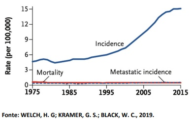
A Sobrediagnóstico; refere-se ao rastreamento com resultado positivo, mas cujo diagnóstico não é confirmado por exames complementares.
B Sobrediagnóstico; refere-se a uma condição corretamente diagnosticada, mas que não causaria sintomas ou morte.
C Falso positivo; refere-se a uma condição corretamente diagnosticada, mas que não causaria sintomas ou morte.
D Falso positivo; refere-se ao rastreamento com resultado positivo, mas cujo diagnóstico não é confirmado por exames complementares.
Questão 1004 · Medicina Preventiva · 4000184091Homem, 35 anos, previamente hígido. Iniciou com queixa de episódios de palpitações, associadas à sensação de falta de ar, perda de apetite e desconforto no peito. Nega tristeza, desânimo, fadiga, irritabilidade ou nervosismo. Não associa o quadro a nenhum evento recente em sua vida. Diz estar tranquilo, menos estressado, agora que saiu do emprego. Tem preocupação de ser algum problema no coração, pois seu tio morreu de infarto aos 75 anos. Recentemente passou em consulta médica, tendo recebido a orientação de que não era nada grave. Fez eletrocardiograma, normais, mas Carlos continua com a queixa. A esposa diz que ele costuma apresentar esses sintomas quando se senta para fazer as contas da família ou quando recebe alguma conta para pagar. Ele não tem história pessoal nem familiar de transtorno mental. Assinale a alternativa que apresenta o registro adequado para o item de avaliação do SOAP desta consulta – de acordo com o Registro Orientado por Problemas –, assim como uma intervenção no atendimento.
A Distúrbio ansioso/estado de ansiedade; intervenção: – Posso prescrever propranolol, um remédio para diminuir a batedeira, você concorda?
B Transtorno do pânico; intervenção: – Como excluímos problemas do coração, você acha que poderia ser algo psicológico?
C Sensação de ansiedade/nervosismo/tensão; intervenção: – Não me parece ser nada grave, concordo com o cardiologista, seus exames estão normais.
D Palpitações; intervenção: – Você acha que seus sintomas podem ter relação com o que sua esposa relatou?
Questão 1005 · Medicina Preventiva · 4000184090Qual o tipo de prevenção realizada e o nível de atenção à saúde nos cenários a seguir: I. Criança com transtorno global do desenvolvimento participando de grupo no Centro de Apoio Psicossocial Infanto Juvenil (CAPS-IJ), para integração comunitária. II. Pessoa que teve relação sexual sem preservativo recebendo Pro laxia Pós-Exposição (PEP) para HIV em uma Unidade de Pronto-Atendimento (UPA). III. Clínico geral, que acompanha o paciente em consultório particular, orientando que não há necessidade de solicitar exame de vitamina D para o
A I. Prevenção terciária, atenção secundária; II. Prevenção primária, atenção secundária; III. Prevenção quaternária, atenção primária.
B I. Prevenção primária, atenção primária; II. Prevenção secundária, atenção primária; III. Prevenção quaternária, atenção secundária.
C I. Prevenção terciária, atenção terciária; II. Prevenção primária, atenção primária; III. Prevenção primária, atenção secundária.
D I. Prevenção primária, atenção primária; II. Prevenção secundária, atenção secundária; III. Prevenção primária, atenção primária.
Questão 1006 · Medicina Preventiva · 4000184089De acordo com a Política Nacional de Promoção da Saúde, são exemplos de ações de promoção da saúde:
A desarmamento da população; incentivo à cultura popular e a manifestações artísticas; vacinação.
B incentivo ao aleitamento materno; legislação para controle do sódio nos alimentos industrializados; medida de peso e altura na puericultura.
C educação sobre autocuidado com o corpo; uso de preservativo nas relações sexuais; sorologias para Infecções Sexualmente Transmissíveis.
D redução da poluição urbana; orientações individuais para incentivo à atividade física; políticas de garantia da diversidade e dos direitos humanos.
Questão 1007 · Medicina Preventiva · 4000184088O câncer de mama (CM) é um importante problema de saúde pública. A identi cação e o melhor gerenciamento clínico das pacientes com alto risco de apresentar câncer de mama é importante para reduzir a morbidade e a mortalidade causadas pela doença. A maioria dos fatores de risco genéticos para o CM foi identi cada em mulheres de ascendência europeia e asiática; contudo, os dados genéticos sobre mulheres latinoamericanas são escassos. Um estudo examinou variantes genéticas em regiões de regulação gênica, incluindo locais de ligação do microRNA (miR), como potenciais fatores de risco para o CM em 2.045 mulheres latinoamericanas. Os resultados obtidos são mostrados na tabela abaixo. Dentre as alternativas abaixo, qual representa uma das conclusões do estudo?
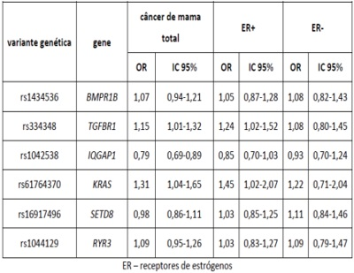
A Nenhuma variante genética está associada à suscetibilidade ao CM entre as mulheres ER+.
B Apenas as variantes genéticas nos genes TGFBR1 e KRAS aumentam o risco de CM total.
C A variante genética no gene IQGAP1 é um fator de proteção para o CM ER-.
D A variante com maior efeito sobre o CM total foi a rs1042538.
Questão 1008 · Medicina Preventiva · 4000184087No início da pandemia de COVID-19, na ausência de alternativas terapêuticas especí cas, deu-se ênfase ao reposicionamento de fármacos já utilizados para outras indicações como possibilidades de tratamento. Uma dessas drogas foi a Ivermectina. No sentido de avaliar a e cácia dela na proteção contra o agravamento do quadro clínico, foi realizado um ensaio clínico, com 490 pacientes com quadros leves ou moderados d e COVID-19, confirmados por PCR. Dentre eles, 249 receberam o tratamento de suporte padrão para COVID-19 (grupo controle) e 241 receberam o tratamento padrão mais 0,4 mg/kg/dia de Ivermectina, durante 5 dias (grupo experimental). Os resultados estão resumidos na tabela abaixo. De acordo com as informações, pode-se afirmar que:
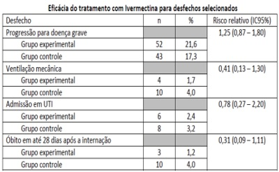
A a Ivermectina foi eficaz na redução dos óbitos.
B a Ivermectina foi eficaz para os desfechos de maior gravidade.
C não se observou a eficácia da Ivermectina para nenhum dos desfechos.
D não é possível qualquer conclusão a partir destes resultados.
Revisar: possível letra faltando em enunciado
Questão 1009 · Medicina Preventiva · 4000184086Um estudo de caso-controle foi realizado com adolescentes europeus maiores de 16 anos, com o objetivo de investigar a associação entre 395 controles. A vitimização por Questionnaire relacionado ao corpo (provocações ou apelidos relacionados ao corpo, peso ou aparência) e não relacionado ao corpo. Alguns resultados podem ser vistos na tabela sobre “Associação entre vitimização por bullying Considerando estes dados, indique a alternativa correta.
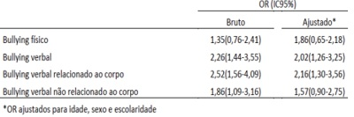
A Ser vítima de “
B Ser vítima de qualquer um dos tipos de
C Ser vítima de qualquer um dos tipos de “
D Não é possível chegar a conclusões sobre a associação entre vitimização por
Questão 1010 · Medicina Preventiva · 4000184085Em 2020, o Instituto Nacional do Câncer (INCA) estimou 40.990 novos casos e 20.245 óbitos devido ao câncer colorretal no Brasil. Embora tenham ocorrido avanços na detecção precoce em vários municípios, há falhas, desde a atenção básica, no encaminhamento de pacientes para pesquisa de sangue oculto ou colonoscopia. Mesmo após rastreados os tumores de cólon e reto, muitos pacientes têm di culdade de acessar a atenção especializada, inclusive quando há indicação de cirurgia, radioterapia ou quimioterapia. Neste caso, qual princípio do SUS está sendo ignorado?
A Universalidade.
B Hierarquização.
C Integralidade.
D Regionalização.
Questão 1011 · Medicina Preventiva · 4000184056Caso 5 Carla é gestante e, com 13 semanas de gestação, iniciou pré-natal com enfermeira da Equipe de Saúde da Família. Na primeira consulta, apresentou resultado positivo para sí lis em teste rápido. Nega exames ou tratamento prévios. Exame clínico sem alterações. No momento da abertura do pré-natal, o caso de sí lis foi noti cado à Vigilância e a enfermeira prescreveu penicilina benzatina, 2,4 milhões UI por semana, durante 3 semanas. A paciente refere que teve duas parcerias sexuais no último ano: Mateus, de quem está grávida e com quem não mantém mais relações sexuais há 8 semanas; e Sandro, o atual namorado, com quem iniciou relações há 3 semanas. O teste rápido de sí lis de Mateus foi positivo e o de Sandro foi negativo. Ambos sem exames ou história de tratamento prévios. Para as questões a seguir, considere as recomendações do Protocolo do Ministério da Saúde e a dose de penicilina benzatina de 2,4 milhões UI. Carla está com baixa adesão ao pré-natal. O caso foi discutido na reunião de equipe da Estratégia de Saúde da Família e foi planejada uma visita domiciliar. Considerando as informações obtidas até o momento, qual é a frase que reflete a melhor abordagem inicial da médica para ampliar a adesão de Carla ao pré-natal?
A "O que tem acontecido para você não comparecer às consultas de pré-natal? Há algo que possamos fazer para facilitar a sua vinda à UBS?".
B "Seu filho tem risco de nascer com problemas devido à sífilis; é nossa responsabilidade encaminhá-la ao Conselho Tutelar caso você não venha às consultas.".
C "Seu namorado está impedindo que você venha ao pré-natal? Você está sofrendo alguma violência?".
D "Mesmo que você não tenha sintomas, a criança pode nascer com alterações da sífilis, por isso é importante que você compareça ao pré-natal".
Revisar: possível letra faltando em enunciado
Questão 1012 · Medicina Preventiva · 4000184054Caso 6 O serviço municipal de vigilância epidemiológica (SMVE) de uma cidade do interior do estado foi acionado para investigar a ocorrência de um “caso de meningite”, no d e 18 março de 2022 professores e 400 funcionários. Em 16 de março de 2022 Medicina Veterinária, apresentou os primeiros sintomas, com início súbito de febre, cefaleia intensa e rigidez de nuca ao exame clínico. Foi atendido na emergência do hospital universitário e internado no mesmo dia. Em 19 de março de 2022 suspeito de meningite, de paciente do sexo masculino ( center da cidade, com início dos sintomas em Os dois pacientes não se conheciam, porém ambos relatavam ter participado da festa de recepção aos calouros, realizada no dia pessoas estiveram na festa, número registrado na portaria da casa noturna a partir do ingressos. O estudante ( moradores. Ele divide o quarto com um outro estudante. Já o vendedor ( família, onde vivem os seus pais e dois irmãos menores. E m estudante ( de 2022 d i a sendo internada na Santa Casa do município. Em seguida, apresentou manchas hemorrágicas em mãos e pés, evoluindo para choque e óbito, 12 horas após a admissão hospitalar. Na Declaração de Óbito foi registrada, como causa básica, “septicemia” (CID A41). Uma colega de turma informou à equipe de vigilância epidemiológica que esta paciente também havia participado da festa de recepção dos calouros, em Qual é o procedimento metodológico para confirmar a existência de um surto relacionado ao campus universitário e/ou ao município em questão?
A Consulta e exame clínico dos participantes da festa.
B Comparação com a ocorrência em anos anteriores.
C Inquérito soroepidemiológico dos participantes da festa.
D Esperar a ocorrência de casos adicionais.
Questão 1013 · Medicina Preventiva · 4000184053Caso 6 O serviço municipal de vigilância epidemiológica (SMVE) de uma cidade do interior do estado foi acionado para investigar a ocorrência de um “caso de meningite”, no 18 março de 2022 400 funcionários. Em 16 de março de 2022 Medicina Veterinária, apresentou os primeiros sintomas, com início súbito de febre, cefaleia intensa e rigidez de nuca ao exame clínico. Foi atendido na emergência do hospital universitário e internado no mesmo dia. Em 19 de março de 2022 suspeito de meningite, de paciente do sexo masculino ( center da cidade, com início dos sintomas em Os dois pacientes não se conheciam, porém ambos relatavam ter participado da festa de recepção a o s calouros, realizada no dia pessoas estiveram na festa, número registrado na portaria da casa noturna a partir do ingressos. O estudante ( moradores. Ele divide o quarto com um outro estudante. Já o vendedor ( família, onde vivem os seus pais e dois irmãos menores. E m estudante ( de 2022 d i a sendo internada na Santa Casa do município. Em seguida, apresentou manchas hemorrágicas em mãos e pé s, evoluindo para choque e óbito, 12 horas após a admissão hospitalar. Na Declaração de Óbito f o i registrada, como causa básica, “septicemia” (CID A41). Uma colega de turma informou à equipe d e vigilância epidemiológica que esta paciente também havia participado da festa de recepção dos calouros, em No caso 1, o exame laboratorial confirmou a infecção por laboratório central de saúde pública do estado, para sorogrupagem. O sorogrupo B foi identi cado. O caso 2 também teve o exame coletado e foi reagente para sorogrupagem. O SMVE confirmou o caso 3 por critério clínico-epidemiológico. Em relação à ocorrência de doença meningocócica no município, a página da Secretaria Municipal de Saúde divulgou a seguinte tabela: Considerando as informações, é possível a rmar que ocorreu um surto de doença meningocócica neste município?
A Não, pelo pequeno número de casos.
B Sim, pelo aumento da incidência em 2022.
C Sim, pelo agregado de casos com vínculo epidemiológico entre si.
D Não, pelo diagnóstico incompleto ou não realizado em dois casos.
Revisar: possível letra faltando em enunciado
Questão 1014 · Atenção Primária à Saúde APS no Brasil · Avaliação da Qualidade em Atenção Primária à Saúde · 4000184044A nova gerente de uma Unidade Básica de Saúde (UBS) decide criar uma página virtual para que os usuários possam enviar reclamações sobre problemas do serviço, o que cria um clima de descontentamento entre os trabalhadores da equipe. Assinale a alternativa correta.
A Trata-se de uma excelente iniciativa da gerente da UBS para identificar os maus trabalhadores da equipe.
B É uma forma de a gerente reforçar sua autoridade diante da equipe de saúde e ganhar a simpatia dos usuários.
C A iniciativa poderia ser válida se fosse fruto de diálogo para valorizar os usuários, trabalhadores e gestores na construção do processo de produção da saúde.
D Deve haver um processo de formação dos usuários para que as reclamações sejam relevantes.
Questão 1015 · Vigilância Sanitária · Vigilância Ambiental · Vigilância em Saúde · 4000184043Em um município de pequeno porte, o serviço de urgência atende 4 pessoas com quadro agudo de diarreia e vômito, e um ponto comum na história delas é terem comido peixes mortos que estavam boiando no rio que passa pela cidade. Assinale a alternativa correta sobre a atuação adequada do Sistema Único de Saúde (SUS).
A O SUS não tem qualquer atuação sobre questões relacionadas ao meio ambiente e deve delegar à pasta adequada.
B A investigação de mortes de peixes deve ser feita somente por órgãos estaduais, pois os rios passam por várias cidades.
C A população deve ser alertada a não consumir os peixes e a prefeitura deve comunicar o fato ao Ministério do Meio Ambiente.
D A investigação sobre a morte de peixes deve ser imediata e a população deve ser alertada para não consumir os peixes.
Questão 1016 · Princípios e Diretrizes do SUS na Lei n 80801990 · Lei n 80801990 · 4000184042Assinale a alternativa correta sobre as comissões intergestores.
A As comissões intergestores devem pactuar com a organização e o funcionamento das ações e serviços de saúde integrados em redes de atenção à saúde.
B Das comissões intergestores, a de âmbito regional é vinculada ao Ministério da Saúde.
C Nas comissões intergestores, os gestores públicos são representados pelo Secretário de Saúde do maior estado ou do maior município.
D As comissões intergestores devem pactuar com a organização dos serviços, sem qualquer dicussão sobre financiamento.
Questão 1017 · Planejamento em Saúde · 4000184041Assinale a alternativa correta sobre a Relação Nacional de Medicamentos Essenciais (RENAME).
A A RENAME substitui o Formulário Terapêutico Nacional (FTN) nos municípios de pequeno porte.
B A RENAME é acompanhada pelo FTN, que subsidia a prescrição, a dispensação e o uso dos seus medicamentos.
C Todas as doenças existentes estão contempladas na RENAME.
D A RENAME é atualizada anualmente com base nos pareceres das sociedades médicas de especialidade e em consulta popular.
Questão 1018 · Pandemias · 4000184040Assinale a alternativa correta sobre pandemias.
A Na falta da Organização Mundial da Saúde (OMS), representantes de pelo menos dois países de cada continente podem declarar a existência de uma pandemia.
B As pandemias tendem a ter duração de pelo menos 5 anos até serem controladas em sua gravidade.
C O coeficiente de letalidade de uma determinada doença em uma pandemia é maior do que em uma epidemia.
D A última pandemia antes da covid-19 foi a da influenza A, causada pelo vírus H1N1.
Questão 1019 · Notif icação em Saúde do Trabalhador no Sistema Nacional de Agravo de Notif icação SINAN · 4000184038Sistema de Inf ormação de Agravos de Notif icação SINAN O desabamento de um piso em uma empresa causou a morte de 10 pessoas e ferimentos graves em outras 10. Durante a investigação realizada pela auditoria scal do trabalho e pela vigilância em saúde do SUS, verificou-se que todas as pessoas estavam em horário de trabalho, mas 5 delas não eram registradas. Assinale a alternativa correta.
A Todos os casos de morte e ferimentos graves devem ser notificados através do Sistema de Informação de Agravos de Notificação (SINAN) como acidentes de trabalho.
B Somente os casos de morte devem ser notificados através do SINAN como acidentes de trabalho.
C Somente os casos de morte dos trabalhadores formais devem ser notificados através do SINAN como acidentes de trabalho.
D Somente os casos de morte e de ferimento dos trabalhadores formais devem ser notificados através do SINAN como acidentes de trabalho.
Questão 1020 · Legislação sobre os idosos · 4000184036Uma grande empresa com muitos adoecimentos do sistema musculoesquelético e da esfera psíquica decide implementar uma política de corte de pessoal e decide começar pelas pessoas com mais idade, em particular aquelas com mais de 60 anos de idade. Assinale a alternativa correta sobre essa situação.
A Essa medida fere a Política Nacional do Idoso, que garante mecanismos que impeçam a discriminação do idoso quanto à sua participação no mercado de trabalho.
B As empresas que utilizam sistemas de gestão modernos têm necessidade de diminuir o contingente de trabalhadores e é mais justo que se comece por pessoas com mais idade, que são mais suscetíveis a doenças.
C As potencialidades das pessoas idosas são menores e as empresas, sejam públicas ou privadas, devem priorizar a manutenção dos empregos das pessoas mais capacitadas e proteger os idosos, afastando-os da atividade de trabalho.
D Essa medida pode ser interpretada como uma maneira de proteção dos idosos, pois determinadas condições de trabalho podem causar adoecimentos em pessoas com menos imunidade.
Questão 1021 · Projeto Terapêutico Singular · Manif estações clínicas e doenças associadas · 4000184033Luisa tem 32 anos de idade e é usuária de uma UBS. Apresenta sobrepeso, tem diagnóstico de síndrome de ovários policísticos e hipertensão arterial. Assinale a alternativa correta.
A Luisa é uma paciente de alto risco para infarto e acidente vascular cerebral, de forma que deve ser acompanhada em serviço especializado e não em UBS.
B Luisa deve ser encaminhada a um serviço especializado para investigação de câncer de mama imediatamente e, se descartado o diagnóstico, voltar à UBS.
C Luisa deve ser submetida a procedimentos de rastreamento de diabetes mellitus na própria UBS.
D Luisa apresenta alto risco para a ocorrência de vários tipos de câncer e, assim, deve ser acompanhada por serviço especializado em oncologia e não em UBS.
Questão 1022 · Doenças relacionadas ao trabalho · 4000184032Política Nacional de Saúde do Trabalhador e da Trabalhadora PNSTT Um grupo de 5 mulheres entre 22 e 28 anos de idade procura uma UBS com queixas relacionadas às condições de trabalho em uma rede de supermercado, onde atuam como caixa. Referem que, frequentemente, nos produtos, há preços divergentes em relação ao código de barras, o que gera insatisfações dos clientes que reclamam com elas. Quando isso acontece, são destratadas na frente de clientes pela gerente, que imputa o problema a um erro das caixas para que a culpa não recaia sobre a empresa. Encontram-se ansiosas e chegam a sonhar com essas situações. Assinale a alternativa correta.
A A equipe de saúde da UBS deve avaliar a saúde das trabalhadoras e, ao mesmo tempo, entrar em contato com a vigilância de saúde para planejar uma ação junto ao supermercado com foco nas relações e condições de trabalho.
B A equipe de saúde da UBS deve solicitar à Prefeitura que faça contato com a auditoria fiscal do trabalho para intervir nas condições de trabalho das funcionárias e solicitar que sejam avaliadas pelo médico da empresa.
C A equipe de saúde da UBS deve solicitar à Prefeitura que faça contato com o setor médico da empresa, para que as trabalhadoras sejam avaliadas e acompanhadas periodicamente.
D A equipe de saúde da UBS deve avaliar a saúde das trabalhadoras e relatar o resultado ao médico da empresa para que planeje uma ação de modo a modificar as relações de trabalho.
Questão 1023 · Inf ectividade · 4000184031Assinale a alternativa relacionada à capacidade que têm certos microorganismos de penetrar e de se desenvolver ou de se multiplicar no novo hospedeiro, ocasionando infecção.
A Letalidade.
B Virulência.
C Infectividade.
D Patogenicidade.
Questão 1024 · Políticas de Saúde do Sistema Único de Saúde · Políticas de Saúde para Populações Específ icas · 4000184030Assinale a alternativa correta sobre o Plano Nacional de Saúde no Sistema Penitenciário.
A Apesar das várias atribuições dos municípios referentes às unidades prisionais em sua jurisdição, não há previsão de incentivo financeiro por parte do ministério da Saúde.
B A atenção básica de saúde, a ser desenvolvida no âmbito das unidades penitenciárias será realizada por equipe mínima, integrada por médico, enfermeiro e odontólogo.
C As ações e serviços de saúde devem ser realizadas por profissionais da Secretaria Municipal de Saúde em todas as unidades prisionais.
D As ações de promoção da saúde e de atenção no nível básico relativas à saúde bucal, saúde da mulher, doenças sexualmente transmissíveis e aids, saúde mental, entre outras, são prioritárias.
Questão 1025 · Políticas de Saúde para Populações Específ icas · 4000184029O Brasil assumiu, na Constituição Federal de 1988, a garantia do direito universal à saúde, com a criação do Sistema Único de Saúde (SUS) e, em 1990, a proteção integral da criança, com o advento do Estatuto da Criança e do Adolescente (ECA). Além disso, rati cou os mais importantes pactos, tratados e convenções internacionais sobre os direitos humanos da criança. Desde então, a saúde da criança vem apresentando melhora significativa. Assinale a alternativa correta sobre a Política Nacional de Atenção Integral a Saúde da Criança (PNAISC).
A Condição de risco refere-se àquela exposta a situações em que há maior chance de evolução desfavorável, em qualquer aspecto biopsicossocial, desde que presente após o nascimento.
B A PNAISC tem 7 eixos estratégicos, dentre os quais, a atenção humanizada e qualificada à gestação, ao parto, ao nascimento e ao recém-nascido e a atenção integral à criança em situação de violência, prevenção de acidentes e promoção da cultura de paz.
C Dentre as situações que ameaçam o desenvolvimento da primeira infância são listadas: família com gestante ou mãe com baixa instrução, histórico de depressão, gravidez indesejada e relação homoafetiva.
D As crianças com maior risco ao nascer ou adquirido ao longo da vida devem ser acompanhadas pelos serviços de saúde da rede especializada com maior frequência, sendo desaconselhado que fiquem sob cuidados da atenção primária da saúde.
Questão 1026 · Coef iciente ou Taxa de mortalidade pósneonatal ou mortalidade tardia · 4000184028Um município observa um aumento do coeficiente de mortalidade infantil tardia em determinado ano. Assinale a alternativa correta.
A Esse indicador refere-se a óbitos de crianças menores de um ano de idade.
B O aumento do coeficiente referido é devido em geral a mortes por malformações congênitas.
C Esse indicador refere-se a óbitos de crianças maiores de 28 dias a 11 meses de idade.
D O aumento do coeficiente referido é devido à falta de acesso a leitos de terapia intensiva.
Questão 1027 · Sistemas de Inf ormação em Saúde SIS e Bases de dados do SUS · 4000184027Assinale a alternativa correta sobre os Sistemas de Informação em Saúde.
A O documento padrão de uso obrigatório em todo o território nacional e essencial à coleta de dados de nascidos vivos no Brasil é a Declaração de Nascidos Vivos (DN), preenchida por profissionais de saúde ou parteiras reconhecidas e vinculadas a unidades de saúde.
B Todos os tipos de agravos à saúde são notificados ao Sistema de Informação de Agravos de Notificação (SINAN) por meio de uma ficha preenchida exclusivamente por médicos.
C O Sistema de Informações sobre Mortalidade (SIM), desenvolvido pelo Ministério da Saúde, em 2020, é resultado da unificação de mais de quarenta modelos de instrumentos utilizados, ao longo dos anos, para coletar dados sobre mortalidade no país.
D O SUS não conta ainda com um sistema de informação preparado para receber notificações de forma ágil, on-line, que possibilitaria que todos os níveis de gestão, profissionais e unidades de saúde tivessem acesso em tempo real às notificações realizadas.
Questão 1028 · Saúde do Trabalhador · Vigilância Sanitária · 4000184026Cento e doze operários que trabalham em seis construtoras deram entrada no hospital de urgência de uma cidade de grande porte. Os sintomas eram fortes dores no estômago, diarreia e vômito. Os sintomas começaram depois que eles comeram comida, servida nos canteiros de obras, cujo fornecedor é o mesmo para as seis construtoras, e, por isso, suspeita-se de intoxicação alimentar. Ao chegar aos canteiros, a vigilância sanitária não encontrou mais os alimentos fornecidos. Assinale a alternativa correta sobre procedimentos adequados.
A A prefeitura do município deve exigir imediatamente uma declaração de conformidade sobre condições higiênicas por parte da empresa fornecedora.
B A vigilância sanitária do município deve realizar investigação imediata da empresa fornecedora.
C A prefeitura deve comunicar a Secretaria de Estado da Saúde para que envie equipes de reforço para a investigação adequada do caso.
D A prefeitura só pode tomar alguma providência se conseguir comprovar a intoxicação alimentar e, para isso, precisa encontrar o alimento fornecido.
Questão 1029 · Políticas de Saúde do Sistema Único de Saúde · 4000184025Assinale a alternativa correta sobre a Política Nacional da Alimentação e Nutrição (PNAN).
A A atribuição mais relevante da atenção primária da saúde para implementar a PNAN é o desenvolvimento de processo educativo por meio de aulas sobre doenças crônicas que podem ser evitadas com o consumo de alimentos orgânicos.
B O indicador mais fidedigno utilizado para acompanhar a efetividade da PNAN em todos os municípios brasileiros é o referente à prevalência de doenças crônicas em adultos.
C Uma das iniciativas exitosas da atenção primária da saúde para implementar a PNAN é a distribuição de vitaminas para populações adultas.
D Cabe aos gestores do SUS, nas esferas federal, estadual, distrital e municipal, promover a implementação da PNAN por meio da viabilização de parcerias e da articulação interinstitucional.
Questão 1030 · Transplante Hepático e Hepatectomia · Introdução · Doação e transplante de órgãos e tecidos · 4000183978Em relação ao transplante hepático, o termo
A paciente com lesão encefálica grave em uso de DVA.
B paciente quando iniciada a cirurgia para captação de órgãos.
C paciente após confirmação da morte encefálica.
D paciente após abertura de protocolo de morte encefálica.
Questão 1031 · Medicina Preventiva · 4000183944As ações de vigilância em saúde devem ser integradas nos cuidados rotineiros com as pessoas e suas comunidades, auxiliando nos processos de diagnóstico e de intervenção dos indivíduos e da coletividade. Uma das ações de vigilância fundamentais no trabalho da APS que envolve também outros níveis de atenção à saúde é a vigilância dos óbitos infantil e fetal. Uma das etapas do trabalho do comitê de vigilância desses casos é a
A discussão do caso com as pessoas das equipes de saúde envolvidas, para uma análise detalhada dos fatos e punição dos possíveis culpados.
B investigação de dados do atendimento à gestante e à criança, com entrevista domiciliar e levantamento de dados dos serviços de saúde.
C identificação de medidas de prevenção e penalidades direcionadas para o profissional e/ou a equipe envolvidos no caso.
D análise da evitabilidade do óbito com discussão ampla do caso e enfoque nos erros cometidos pela equipe ou atribuídos a cada profissional.
Questão 1032 · Medicina Preventiva · 4000183943Diante de um caso de dor torácica, para avaliar a necessidade de solicitar exames complementares, é importante considerar a probabilidade pré-teste de doença coronariana, conforme mostra o quadro abaixo. Diamond G.A., Forres ter J .S. Analy s is of probability as an aid in the c linical diagnos is of coronary -artery disease. The New England Journal of Medic ine, Waltham, 1979. [Adaptado] Posto isso, a situação clínica em que a solicitação de um teste ergométrico está melhor indicada para confirmar o diagnóstico de doença coronariana é:
A mulher, 35 anos, tabagista, com episódio de dor torácica subesternal em pontadas por cerca de 1 minuto ao voltar para casa após sair da academia.
B homem, 50 anos, com episódio de dor torácica precordial ao subir 2 lances de escadas, apresenta piora da dor ao respirar e cessa rapidamente ao interromper o exercício.
C homem, 48 anos, com episódio de dor torácica subesternal ao carregar um armário pelas escadas até o terceiro andar, apresenta melhora da dor após 10 minutos.
D mulher, 57 anos, com dor torácica retroesternal com duração aproximada de 3 minutos ao deitar para assistir televisão após jantar.
Questão 1033 · Medicina Preventiva · 4000183942Ao nal de 2010, como fruto de um grande acordo tripartite envolvendo Ministério da Sau Conasems, foi publicada a Portaria no 4.279, de 30 de dezembro de 2010, que estabelece diretrizes para organizac das RAS: “Sa que integradas por meio de sistemas de apoio te do cuidado.” São exemplos de redes temáticas priorizadas nessa pactuação:
A Rede de Atenc
B Rede Cegonha, Rede de Cuidado a
C Rede de Prevenção e Tratamento de Feridas Crônicas, Rede de Atenção às Doenças Infectocontagiosas e Rede de Saúde Bucal.
D Rede de Atenção à Criança e ao Adolescente, Rede de Atenção ao Idoso e Rede de Atenção Materno- infantil.
Questão 1034 · Medicina Preventiva · 4000183941O e-SUS Atenção Primária (e-SUS APS) é uma estratégia para reestruturar as informações da Atenção Primária em nível nacional. Essa ação está alinhada com a proposta mais geral de reestruturação dos Sistemas de Informação em Saúde do Ministério da Saúde, entendendo que a quali cação da gestão da informação é fundamental para ampliar a qualidade no atendimento à população. Diante disso, no momento atual, por meio da implantação do Prontuário Eletrônico do Cidadão (PEC), é possível
A compartilhar informações registradas em serviços de urgência e emergência com as unidades básicas de saúde.
B realizar o registro de dados para indicadores de saúde na APS e utilizar o Código Internacional de Doenças na Atenção Primária (CIAP).
C encaminhar paciente para outros níveis de atenção à saúde realizando interface com o Sistema Nacional de Regulação (SISREG).
D anexar arquivos, como o prontuário físico digitalizado do paciente e sua família, de forma a não perder dados registrados manualmente até então.
Questão 1035 · Medicina Preventiva · 4000183940O Ministério da Saúde apresentou, no ano de 2022, uma atualização revisada dos sete indicadores que compõem o Pagamento por Desempenho da Atenção Primária à Saúde, conforme disposto pela Portaria GM/MS 102, de 20 de janeiro de 2022. Sendo assim, os indicadores foram ajustados para atender às Ações Estratégicas de programas como Prénatal e Saúde da Mulher. Faz parte desses indicadores de saúde a proporção de
A mulheres com coleta anual de citopatológico na Atenção Primária à Saúde.
B gestantes com, pelo menos, seis consultas pré-natal realizadas, sendo a 1ª até a 12ª semana de gestação.
C gestantes com realização de exames para sífilis, HIV e toxoplasmose.
D mulheres em idade fértil e de gestantes com atendimento odontológico realizado na Atenção Primária à Saúde.
Questão 1036 · Medicina Preventiva · 4000183939Helen é uma médica de família recém-egressa da residência médica e vai começar a trabalhar na APS do município de Lagoa Azul. Em sua primeira reunião de equipe, questionaram-na sobre como gostaria de organizar a sua agenda semanal para atendimento à comunidade, considerando que o território possui bastante demanda reprimida (a equipe encontrava-se sem médico há quase 1 ano) e existe uma forte pressão assistencial de uma população composta, em sua maioria, por adultos jovens, além da demanda sempre presente de renovações de prescrições de psicofármacos. Em uma nova reunião, Helen questionou a equipe sobre a existência de espaços colegiados de discussão com a comunidade sobre o trabalho das equipes de saúde e os problemas mais frequentes no território. Por meio desse questionamento, a médica estava buscando saber mais informações sobre a diretriz do SUS conhecida por
A participação popular.
B equidade.
C orientação comunitária.
D integralidade.
Questão 1037 · Medicina Preventiva · 4000183938Helen é uma médica de família recém-egressa da residência médica e vai começar a trabalhar na APS do município de Lagoa Azul. Em sua primeira reunião de equipe, questionaram-na sobre como gostaria de organizar a sua agenda semanal para atendimento à comunidade, considerando que o território possui bastante demanda reprimida (a equipe encontrava-se sem médico há quase 1 ano) e existe uma forte pressão assistencial de uma população composta, em sua maioria, por adultos jovens, além da demanda sempre presente de renovações de prescrições de psicofármacos. Ao nal da primeira semana de trabalho, os agentes de saúde comunicaram à Helen que a comunidade estava muito satisfeita com a chegada dela na equipe e a acharam muito respeitosa e compreensiva. Também estavam surpresos com a diversidade de problemas que a médica conseguia manejar sem a necessidade de encaminhamentos para outros serviços. Diante disso, percebe-se a ilustração dos seguintes princípios da Medicina de Família e Comunidade:
A os pacientes devem ser abordados de forma integral considerando as suas experiências sobre a doença; e a atuação do MFC é influenciada pela comunidade.
B o médico de família e comunidade (MFC) é um clínico qualificado; e a relação médico-pessoa é fundamental para o desempenho do MFC.
C as pessoas necessitam do MFC como coordenador do seu cuidado; e o acesso às consultas deve ser garantido.
D o MFC é o recurso de uma população definida; e o trabalho em equipe multidisciplinar é fundamental para a atuação do MFC.
Questão 1038 · Medicina Preventiva · 4000183937Helen é uma médica de família recém-egressa da residência médica e vai começar a trabalhar na APS do município de Lagoa Azul. Em sua primeira reunião de equipe, questionaram-na sobre como gostaria de organizar a sua agenda semanal para atendimento à comunidade, considerando que o território possui bastante demanda reprimida (a equipe encontrava-se sem médico há quase 1 ano) e existe uma forte pressão assistencial de uma população composta, em sua maioria, por adultos jovens, além da demanda sempre presente de renovações de prescrições de psicofármacos. Conforme o trabalho na Estratégia Saúde da Família, uma forma mais adequada para a organização da agenda de Helen é
A organizar momentos de atividades coletivas para renovação de receitas em, pelo menos, um turno por semana, como forma de educar a população a não procurar outros horários que devem ser destinados às demais demandas.
B organizar a agenda de forma a realizar atendimentos programados pela manhã e visitas domiciliares nos turnos da tarde, em conjunto com toda a equipe, como forma de conhecer o território e aumentar o vínculo com os profissionais dessa equipe.
C oferecer agendamento de consultas com turnos definidos conforme ações programáticas, como, por exemplo, HIPERDIA, pré-natal, puericultura, saúde do idoso, deixando um dia da semana para livre demanda.
D ofertar agendamento de consultas programadas para priorizar o público de gestantes e as crianças menores de 2 anos e oferecer mais vagas para demanda espontânea para esse momento.
Questão 1039 · Medicina Preventiva · 4000183936O Programa Saúde na Hora foi lançado pela Secretaria de Atenção Primária à Saúde do Ministério da Saúde (SAPS/MS) em maio de 2019 e passou por atualizações com a publicação da Portaria nº 397/GM/MS, de 16 de março de 2020. Esse programa viabiliza o custeio aos municípios e ao Distrito Federal para implantar o horário estendido de funcionamento das Unidades de Saúde da Família (USF) e Unidades Básicas de Saúde (UBS) em todo o território brasileiro. Considerando os atributos da Atenção Primária à Saúde, o programa também prevê
A reduzir a quantidade de equipes da Estratégia Saúde da Família nos municípios, visto que o atributo do acesso estará sendo garantido pelo funcionamento dos serviços em horário estendido e, até mesmo, nos finais de semana por meio de escalas com horários mais flexíveis para os profissionais.
B dar suporte aos municípios e ao Distrito Federal para o enfrentamento da Emergência de Saúde Pública de Importância Internacional causada pelo novo agente coronavírus (2019-nCoV), proporcionando a integralidade com um atendimento mais resolutivo.
C ofertar ações de saúde em horários mais flexíveis para a população, como horários noturno e do almoço, mas esse formato traz prejuízo ao atributo da coordenação do cuidado pela descaracterização do trabalho nas linhas de cuidado.
D diminuir filas em unidades de pronto atendimento e emergências hospitalares, direcionando os pacientes com baixa gravidade clínica para o atendimento nas unidades básicas, mas inviabilizando o atributo da longitudinalidade do acompanhamento desses casos.
Questão 1040 · Medicina Preventiva · 4000183935Diane, 26 anos, comparece à consulta com queixas de disúria e polaciúria há 2 dias. O médico que a atendeu cou com dúvidas a respeito da con abilidade dos dados da história para definir o diagnóstico de cistite, ou se seriam necessários exames complementares, como EAS e urocultura. Fez uma busca na internet e encontrou um artigo mencionando que a combinação de disúria, polaciúria e ausência de corrimento vaginal tem um valor preditivo positivo (VPP) para cistite de 90%. Diante disso, o médico concluiu que poderia iniciar o tratamento para cistite
A após urocultura, visto que a sensibilidade desse teste seria de 90% e daria mais segurança à cobertura antibiótica.
B após realização do EAS e da urocultura, visto que a especificidade desses testes conjugados seria de 90% para cistite.
C de imediato e empiricamente, visto que a incidência de casos de cistite em mulheres jovens é de 90% na população brasileira.
D de imediato e empiricamente, visto que a probabilidade pré-teste para cistite nesse caso é bem considerável.
Questão 1041 · Medicina Preventiva · 4000183933Educação Popular em Saúde é uma prática que tem a potencialidade de proporcionar autonomia das pessoas nas suas atividades de cuidado em saúde. Essa prática
A é considerada como o produto de formulações teóricas da educação aplicadas à saúde e como instrumento para a luta social de vários sujeitos articulados em vários movimentos sociais, disputando os rumos das políticas sociais.
B toma como ponto de partida os saberes prévios dos profissionais de saúde, realizando uma aposta pedagógica na ampliação progressiva da análise crítica da realidade por parte dos profissionais, à proporção que eles sejam produtores de sua própria história.
C traduz-se como um modo de ensino que possibilita às pessoas de determinada comunidade mudarem seus hábitos de vida para assimilarem práticas higiênicas e recomendações médicas, evitando o desenvolvimento de doenças.
D é definida como o ensino da saúde para classes populares, o qual toma como balizadores ético- políticos os interesses das classes populares, cada vez mais heterogêneas, não tendo relação com a luta de movimentos sociais.
Questão 1042 · Medicina Preventiva · 4000183932João Paulo, médico recém-formado, começou a trabalhar em uma UBS de sua cidade, no interior do Rio Grande do Norte. Logo nos primeiros dias de atendimento, cou muito preocupado com a grande quantidade de pacientes e solicitou uma reunião de equipe para discutir a gestão da clínica. Nessa reunião, João Paulo deve argumentar que é importante
A aumentar o número de ações de promoção de saúde com a participação do médico, que não deveria ficar tanto tempo no consultório.
B priorizar as atividades programáticas do Ministério da Saúde, protegendo a agenda para os grupos que mais necessitam.
C limitar o número de consultas por dia, possibilitando atendimentos mais demorados e uma clínica ampliada.
D buscar conhecer a demanda para uma melhor organização da agenda de acordo com as necessidades da comunidade.
Questão 1043 · Medicina Preventiva · 4000183929As ferramentas de abordagem familiar permitem ao médico de família e comunidade aproximar-se das famílias e intervir, de forma mais adequada, nas diversas situações. O genograma, uma dessas ferramentas,
A preconiza que se evite questionamento às informações médicas, já que, geralmente, as pessoas consideram esse assunto ameaçador.
B é uma representação gráfica das gerações de uma família, utilizado apenas como método diagnóstico.
C é um instrumento que pode ser utilizado como intervenção terapêutica.
D preconiza que se evite a participação das crianças, pois elas ainda não têm maturidade para discutir sobre as relações familiares.
Questão 1044 · Medicina Preventiva · 4000183927O Método Clínico Centrado na Pessoa (MCCP) é uma abordagem que tem amplo potencial de melhorar a qualidade assistencial, possibilitando um aumento da satisfação das pessoas e dos médicos, uma melhor adesão aos tratamentos e a diminuição das queixas decorrentes de má prática. O MCCP divide-se em 4 componentes. Considerando esses componentes,
A o segundo consiste em intensificar a relação médico-pessoa, não tendo relação com o processo terapêutico.
B o segundo consiste em elaborar um plano em conjunto de manejo dos problemas, priorizando a integralidade do cuidado.
C o primeiro consiste em explorar os sentimentos e as expectativas da pessoa sobre o tratamento, evitando a transferência e a contratransferência entre a pessoa e o profissional.
D o primeiro consiste em explorar a saúde, a doença e a experiência sobre a doença”, abordando sentimentos, ideias, funcionalidades e expectativas da pessoa.
Questão 1045 · Medicina Preventiva · 4000183925José, 82 anos, comparece à consulta de cuidado programado/continuado na UBS de seu bairro para solicitar a renovação da receita das suas medicações. A médica de família e comunidade, Sara, nova na equipe, faz anamnese e exame físico detalhados e ca apreensiva em relação às medicações utilizadas pelo paciente. José é hipertenso e diabético, ex-tabagista há 10 anos e relata que, desde antes da pandemia, não realiza exames de rotina, por medo de contrair o coronavírus. Porém, relata estar bem, apenas “cansado pela idade”. Está em uso de losartana 50 mg duas vezes ao dia, anlodipino 5 mg uma vez ao dia, metformina 850 mg duas vezes ao dia e omeprazol 20 mg uma vez ao dia. A médica verifica a PA, que está 110x70 mmHg. Demais exames realizados estão todos sem alterações. Ela solicita os exames laboratoriais, mas resolve já iniciar a otimização dessas medicações, já que se preocupa com a prevenção quaternária. Diante desse quadro, a médica deve
A deve suspender o anlodipino 5 mg, já que é um medicamento contraindicado para idosos.
B tentar suspender o omeprazol e orientar sobre hábitos alimentares.
C manter as medicações até a avaliação dos exames solicitados.
D associar a sinvastatina 40 mg, já que o risco cardiovascular do paciente é alto.
Revisar: possível letra faltando em enunciado
Questão 1046 · Incidência e Prevalência · 4000183785Avalie as afirmativas abaixo e assinale a opção que apresenta todas as afirmativas I) Todo indicador de saúde é uma estimativa (mensuração com certo grau de imprecisão) de uma dimensão de saúde em uma população-alvo. II) A taxa de prevalência é definida como o número de casos novos de uma doença ou outra afecção de saúde dividido pela população em risco da doença (população exposta) em um espaço geográ co durante um tempo especificado. III) A taxa de prevalência de uma doença (ou outro agravo) é diretamente proporcional ao produto da taxa de incidência pela duração média da doença. IV) A incidência é fundamental para analisar a ocorrência de novos eventos na população e seus fatores associados. A prevalência é fundamental para planejar e organizar os serviços e recursos existentes e adicionais.
A I – II.
B II – III – IV.
C I – III – IV.
D II– III.
Revisar: possível letra faltando em enunciado
Questão 1047 · Sistema de Inf ormações sobre Nascidos Vivos SINASC · 4000183784Sistema de Inf ormação de Agravos de Notif icação SINAN Sistemas de Inf ormação em Saúde SIS e Bases de dados do SUS A respeito dos Sistemas de Informação da Atenção em Saúde (SIS), avalie as a rmativas abaixo e assinale a alternativa I) Os Sistemas de informação em saúde (SIS) podem ser definidos como um conjunto de componentes interrelacionados que coletam, processam, armazenam e distribuem a informação para apoiar o processo de tomada de decisão e auxiliar no controle das organizações de saúde. II) Os alguns problemas em relação à organização e à construção das informações produzidas no âmbito do SIS são: fragmentação entre diversas bases de dados existentes; os sistemas de produção assistencial podem incorrer em vieses de faturamento e registros manuais para captação dos dados. III) O Sistema de Informações sobre Nascidos Vivos (SINASC) foi implantado o cialmente a partir de 1990, com o objetivo de coletar dados sobre os nascimentos ocorridos em todo o território nacional e fornecer informações sobre natalidade para todos os níveis do Sistema de Saúde. IV) O Sistema de Informação de Agravos de Noti cação (Sinan) foi desenvolvido entre 1990 e 1993, e regulamentado em 1998, por meio da portaria n°1.882/97, tornando obrigatória a alimentação regular da base de dados nacional pelos municípios, estados e Distrito Federal. Este sistema é alimentado, principalmente, pela noti cação e investigação de casos de doenças e agravos que constam na lista nacional de doenças de notificação compulsória.
A Todas as afirmativas estão corretas.
B Todas as afirmativas estão incorretas.
C Apenas 2 afirmativas estão corretas.
D Três afirmativas estão incorretas.
Questão 1048 · Lista Nacional de Notif icação Compulsória de doenças agravos e eventos de saúde pública · 4000183783Assinale a alternativa que apresenta todas as doenças e/ou agravos de noti cação compulsória, conforme as Portarias do Ministério da Saúde de 2022:
A Acidente de trabalho grave; Acidente com animal peçonhento; Acidente por animal potencialmente transmissor de raiva; Toxoplasmose ocular.
B Sífilis; HIV; Hepatite; Citomegalovírus.
C Rubéola congênita; sífilis congênita; Zika congênita; Criança exposta à transmissão vertical do HIV.
D COVID-19; Síndrome respiratória aguda grave; Coqueluche; Salmonelose.
Questão 1049 · Epidemias · Investigação de Surtos · Endemias · 4000183782Correlacione as colunas e marque a alternativa i) Surto ii) Epidemia iii) Endemia I) Denominação utilizada em situações em que a doença envolve grande número de pessoas e atinge uma larga área geográfica. II) É a presença contínua de uma enfermidade ou de um agente infeccioso em uma zona geográ ca determinada. III) Situação em que há aumento acima do esperado na ocorrência de casos de evento ou doença em uma área ou entre um grupo específico de pessoas, em determinado período. Ressalta-se que, para doenças raras, pode ser apenas um único caso.
A i-I; ii-II; iii-III.
B i-II; ii-III; iii-I.
C i-III; ii-I; iii-II.
D i-III; ii-I; iii-II.
Revisar: possível letra faltando em enunciado
Questão 1050 · Tipos de Estudos Epidemiológicos · 4000183781Em relação aos tipos de estudos epidemiológicos, avalie as afirmativas e assinale a alternativa ( ) Os estudos observacionais permitem que a natureza determine o seu curso: o investigador mede, mas não intervém. Esses estudos podem ser descritivos e analíticos. ( ) Os estudos ecológicos (ou de correlação) são úteis para gerar hipóteses. Em um estudo ecológico, as unidades de análise são grupos de pessoas ao invés de indivíduos. ( ) Os estudos de coorte são longitudinais, diferentes dos estudos transversais. Os estudos de coorte também são chamados de retrospectivos, uma vez que o investigador busca, no passado, uma determinada causa (exposição) para a doença ocorrida. ( ) Os estudos de casos e controles fornecem a melhor informação sobre a etiologia das doenças e a medida mais direta do risco de desenvolvê-la. Embora conceitualmente simples, esses estudos são bastante caros porque podem requerer longos períodos de acompanhamento, visto que a doença pode ocorrer após uma exposição prolongada.
A V – V – F – F.
B V – F – V – F.
C F – V – F – V.
D F – F – V – V.
Questão 1051 · Princípios de Estatística Bioestatística ou Estatística Médica · 4000183780A mensuração é o procedimento de aplicar uma escala padrão a uma variável ou conjunto de valores. Para efeitos de comparação no tempo e no espaço, de determinado evento em saúde das populações, as mensurações absolutas têm validade limitada. Nestes casos, é necessário formular mensurações relativas a m de levar em consideração efeitos de diferenças de tamanho, de tempo e/ou espaço entre populações. Neste contexto, avalie as alternativas e assinale a alternativa
A Proporção é quando o numerador é um subconjunto do denominador. Denota a frequência relativa observada de um evento e estima a probabilidade.
B Denomina-se razão aos indicadores baseados em mensurações relativas que coincidem, do ponto de vista conceitual, ou seja, quando o numerador e o denominador são eventos de mesma natureza.
C Taxa é quando o numerador é o número absoluto de vezes em que ocorre o evento de interesse em um período de tempo especificado. O denominador é a população de referência (ou população em estudo), no mesmo tempo especificado.
D ODDS ou probabilidade é quando o numerador é a proporção do evento de interesse e o denominador é a proporção de não evento. O numerador e o denominador são, portanto, proporções complementares (p/1-p).
Questão 1052 · Risco Relativo RR Razão de Riscos · Risco Absoluto · 4000183779Conforme a Organização Pan-Americana de Saúde, ao contrário dos chamados testes de signi cância estatística, úteis porque determinam a presença de uma associação entre duas variáveis, a epidemiologia propõe o uso de duas medidas básicas que quanti cam a força dessa associação: o risco relativo e o OR (o OR vem do inglês Odds Ratio que foi traduzido como: razão de produtos cruzados, razão de chances ou oportunidade relativa). Em relação aos riscos, avalie as afirmativas e assinale a alternativa ( ) Risco Absoluto (RA): incidência da doença ou outro evento de interesse na população ou grupo populacional; quantifica a probabilidade de experimentar tal doença ou evento. ( ) A prevalência de uma doença numa população e período determinados (prevalência acumulada e a taxa de prevalência) nos proporciona uma medida do risco absoluto (RA) de adoecimento nessa população. ( ) Risco relativo (RR): razão entre o risco absoluto de adoecer ou morrer daqueles om a exposição de interesse e o risco absoluto de adoecer ou morrer daqueles sem a exposição de interesse. ( ) O risco relativo (RR), como medida de força de associação, é obtido a partir dos estudos de coorte, já que seu desenho nos permite calcular a prevalência da doença em grupos. O risco relativo é uma razão de prevalências, ou seja, o quociente entre a prevalência da doença nos expostos e a prevalência nos não expostos ao suposto fator de risco.
A V – V – F – F.
B V – F – V – F.
C F – V – F – V.
D F – F – V – V.
Questão 1053 · Revisões sistemáticas · Metanálises · 4000183778Em relação a estudos de revisão sistemática, correlacione as colunas e assinale a alternativa i) Definição da questão de pesquisa. ii) Meta-análise. iii) Revisão sistemática. I) Sintetiza os resultados de estudos primários que se enquadram nos critérios de elegibilidade para responder uma pergunta de pesquisa. II) Método estatístico que pode ser realizado para combinar os resultados de dois ou mais estudos independentes, que podem testar ou não a mesma pergunta/hipótese, gerando uma única estimativa de efeito. III) É estruturada no formato PICO (População, Intervenção, Comparador e Desfecho – em inglês, outcome).
A i-I; ii-II; iii-III.
B i-III; ii-II; iii-I.
C i-II; ii-III; iii-I.
D i-III; ii-I; iii-II.
Questão 1054 · Política Nacional de Atenção Básica PNAB · 4000183775Dra. Elis iniciou recentemente seus atendimentos como médica generalista em uma Unidade Básica de Saúde (UBS). Ela atende o Sr. Manoel de 65 anos que é hipertenso, diabético e esquizofrênico, fazendo uso atualmente de enalapril, hidroclorotiazida, metformina, que pega na UBS e atorvastatina e quetiapina; que pega na farmácia do estado. Ele consulta para renovar suas receitas, pois seus medicamentos estão acabando. Sua próxima consulta com o psiquiatra será em 3 meses. Sobre o acompanhamento da Dra. Elis para o Sr. Manoel, considerando a Política Nacional da Atenção Básica e os medicamentos oferecidos no Sistema Único de Saúde, assinale a alternativa
A Dra. Elis deverá renovar todas as receitas pois a UBS é coordenadora da atenção;
B Os medicamentos do componente especializado deverão ser renovados com os especialistas focais, considerando a hierarquização do sistema;
C A atorvastatina deverá ser substituída pela sinvastatina, disponível nas UBS;
D Dra. Elis poderá renovar todos os medicamentos com exceção da quetiapina, já que o paciente consulta com o psiquiatra.
Questão 1055 · Atenção Primária à Saúde APS no Brasil · 4000183774Princípios e Diretrizes do SUS a serem operacionalizados pela Atenção Básica Atributos gerais da Atenção Primária à Saúde APS A Secretaria de Saúde do Paraná tem implementado há alguns anos um novo Modelo de Atenção às Condições Crônicas no Sistema Único de Saúde (SUS), que propõe mudanças na organização dos Sistemas e da Atenção à Saúde. A Atenção Primária a Saúde (APS) é ordenadora do Sistema, integrando-se com Atenção Especializada (AAE) através das linhas de cuidado prioritárias. Sobre esse modelo, preconiza-se:
A Estratificação de risco, que é imprescindível para a implantação do novo modelo: APS coordenadora dos pacientes de baixo risco e AAE coordenadora do cuidado dos pacientes de médio e alto risco;
B Atenção à saúde proativa e resolutiva, por meio da qual o usuário recebe orientações preventivas, curativas e de reabilitação à sua saúde conforme o Plano de Cuidado e o Autocuidado Apoiado;
C Atendimento realizado pelo médico especialista no ambulatório no máximo a cada 2 meses;
D Integração em rede pela AAE com os outros níveis de Atenção à Saúde por meio das ações de supervisão, de auditoria e de fiscalização.
Questão 1056 · Medicina Baseada em Evidências · 4000183773Juliana tem 46 anos, não tem doenças e consultou com Dr. Hugo para realizar exames de rotina, que não fazia desde antes da pandemia. Dr. Hugo aproveitou o momento para perguntar a Juliana sobre consumo de álcool e nicotina, sobre depressão, realizou exame físico, veri cou peso, pressão arterial. Juliana negou consumo de álcool e tabaco, bem como sintomas de depressão. Seu exame físico era normal, com exceção do IMC que estava 29kg/cm². Dr. Hugo então solicitou para Juliana: per l lipídico, glicemia, hemograma, TSH, sorologias, colonoscopia, preventivo e prescreveu um polivitamínico. Sobre a conduta do Dr. Hugo, baseando-se no United States Preventive Services Task Force, qual dos serviços oferecidos por Dr. Hugo é contraindicado no caso de Juliana (grau D, não recomendado):
A Glicemia
B TSH
C Colonoscopia
D Polivitamínico
Questão 1057 · Atributos gerais da Atenção Primária à Saúde APS · 4000183772A Atenção primária à saúde (APS) teve sua primeira representação em 1920, pelo Lord Dawson, médico da família real britânica. Apesar de antigo, os desa os de implantação da APS mostrados pelo relatório ainda permanecem atuais. Em relação aos benefícios apresentados por um sistema de saúde organizado com uma AP S forte e em relação às suas características nucleares e formas de avaliação, marque a alternativa correta
A O PCA Tool é uma ferramenta que pode avaliar alguns dos atributos da APS, porém tem como limitação não avaliar a coordenação do cuidado e a orientação comunitária.
B A APS pode ampliar a probabilidade de enfermidade ao aplicar seus algoritmos semiológicos e complementares, ampliando o valor preditivo positivo de enfermidade em cada caso avaliado.
C Ao apresentarem qualquer desconforto ou sintoma, a maioria das pessoas procuram cuidados médicos, sejam eles primários, secundários ou terciários.
D Uma Atenção Primária à Saúde bem estruturada e forte consegue resolver cerca de 55 % dos problemas de saúde apresentados por uma determinada população.
Questão 1058 · Medidas de Desempenho de Testes Diagnósticos ou Medidas de Perf ormance de Testes Diagnósticos · 4000183771Razão de verossimilhança Sobre características dos exames de testagem diagnóstica, marque a alternativa
A Quanto maior a sensibilidade, menores os falsos positivos. A sensibilidade é uma característica inerente ao teste, não sendo influenciada pela prevalência da doença.
B Quanto maior a especificidade, menores os verdadeiros negativos. A especificidade é uma característica inerente ao teste, não sendo influenciada pela prevalência da doença.
C O conceito de valor preditivo, positivo ou negativo, deve ser usado antes de pedir um teste, e auxilia na decisão sobre o qual teste pedir.
D A razão de verossimilhança indica quanto o resultado de um teste aumentará ou diminuirá a probabilidade pré-teste de determinada doença.
Questão 1059 · Lista Nacional de Notif icação Compulsória de doenças agravos e eventos de saúde pública · 4000183769O atual surto de monkeypox representa emergência de saúde pública de importância internacional. O controle da monkeypox é prioridade para o Ministério da Saúde, que realiza monitoramento e analisa a situação epidemiológica para orientar as ações de vigilância e resposta à doença no Brasil. É papel da Atenção Primária à Saúde nesse cenário:
A A notificação imediata de casos suspeitos à vigilância epidemiológica.
B O monitoramento presencial dos contatos a cada 24 horas, até reavaliação do caso suspeito.
C A orientação de isolamento dos contatos assintomáticos.
D O monitoramento apenas dos casos sem gravidade.
Questão 1060 · NOB 0193 · 4000183767Utilize o trecho da nota conjunta CONASS/CONASEMS publicada em 07 de abril de 2022 em “www.conass.org.br” para responder a questão. “No dia 23 de fevereiro de 2022, o Ministério da Saúde anunciou, sem qualquer pactuação na Comissão Intergestores Tripartite (CIT), uma Rede Materna e Infantil, em substituição à chamada Rede Cegonha - Portaria nº 715, de 04/04/2022”. Assinale a alternativa que aponta o marco de legislação do Sistema Único de Saúde (SUS) brasileiro, responsável pela criação da CIT:
A Norma Operacional Básica (NOB-SUS) 01/1993.
B Norma Operacional Básica (NOB-SUS) 01/1996.
C Norma Operacional Básica (NOB-SUS) 01/1991.
D Norma Operacional de Assistência à Saúde (NOAS-SUS) 01/2001.
Questão 1061 · Políticas de Saúde do Sistema Único de Saúde · Outras normativas do SUS e da Saúde em geral · 4000183766Utilize o trecho da nota conjunta CONASS/CONASEMS publicada em 07 de abril de 2022 em “www.conass.org.br” para responder a questão. “No dia 23 de fevereiro de 2022, o Ministério da Saúde anunciou, sem qualquer pactuação na Comissão Intergestores Tripartite (CIT), uma Rede Materna e Infantil, em substituição à chamada Rede Cegonha - Portaria nº 715, de 04/04/2022”. O trecho da notícia aponta que:
A O Ministério da Saúde publicou unilateralmente no Diário Oficial da União a referida portaria.
B A referida portaria foi alvo de discussão, revisão e aprovação técnica tripartite.
C Houve gestão compartilhada dentro do SUS, e o ministério da saúde exerceu seu poder de soberania.
D A Comissão Intergestores Bipartite (CIB) aprovou a implantação da Rede Materna Infantil.
Questão 1062 · Medicina Preventiva · 4000183735Disponível em: <https://blogdoaftm.com.br/charge-covid-19-nas-favelas/>. Acesso em: 24 out. 2022. A história natural da doença refere-se a uma descrição da progressão ininterrupta de uma doença em um indivíduo, desde o momento da exposição aos agentes causais até a recuperação ou a morte. Considerando a imagem apresentada e os níveis de prevenção descritos por Leavell e Clark, assinale a alternativa que indica o nível de prevenção ao qual a charge se refere.
A À prevenção secundária, pois a doença já está em curso e deve-se evitar a sua progressão.
B À prevenção primária, quando se remete à ideia de que o tratamento adequado é importante para interromper o processo mórbido e evitar futuras complicações e sequelas.
C À prevenção terciária, uma vez que a doença já está instalada e os procedimentos a serem indicados são os característicos desse nível de prevenção.
D À prevenção primária, caracterizada por incluir ações de promoção à saúde e de proteção específica, evitando a propagação da doença entre os suscetíveis.
E À prevenção quaternária, caracterizada por ações de prevenção a danos, evitando que as ações de saúde possam adoecer ainda mais as pessoas.
Questão 1063 · Medicina Preventiva · 4000183734A Lei no 8.142/1990 define o Conselho de Saúde, em caráter permanente e deliberativo, como órgão colegiado composto por representantes do governo, prestadores de serviço, pro ssionais de saúde e usuários. Assinale a alternativa correspondente ao segmento que deve ser paritário em relação aos demais participantes do Conselho de Saúde.
A Profissionais de saúde
B Prestadores de saúde
C Representantes do governo
D Usuários
E Gestores
Questão 1064 · Medicina Preventiva · 4000183733Maria chegou à unidade básica de saúde com sua lha de 4 anos de idade apresentando 40 ºC de febre, tosse e prostração. A enfermeira avaliou o estado da criança e classi cou-o como urgente, colocando-a imediatamente no consultório médico para atendimento. Maria cou desconfortável com a situação de “passar na frente das outras pessoas que estavam lá antes dela, pois havia até idosos na fila”. A Política Nacional de Humanização (PNH), promulgada em 2003, tem como objetivo efetivar os princípios do Sistema Único de Saúde no cotidiano das práticas de atenção e de gestão, quali cando a saúde pública no Brasil e incentivando trocas solidárias entre gestores, trabalhadores e usuários. Com base nessas informações, assinale a alternativa que indica a diretriz da PNH representada no relato descrito.
A Acolhimento
B Gestão participativa
C Ambiência
D Clínica ampliada
E Valorização do trabalhador
Questão 1065 · Medicina Preventiva · 4000183732De acordo com o Decreto no 7.508/2011, as regiões de saúde serão instituídas pelo Estado, em articulação com os municípios, respeitadas as diretrizes gerais pactuadas na Comissão Intergestores Tripartite (CIT). A esse respeito, assinale a alternativa correta.
A As regiões de saúde podem ser compostas por municípios limítrofes por ato único dos municípios que irão constituí-las.
B Na constituição das regiões de saúde com municípios de fronteira com outros países, elas devem seguir somente normas e legislações brasileiras.
C As regiões de saúde serão referência para a transferência de recursos entre os entes federativos.
D As regiões de saúde seguirão a lógica do cronograma pactuado entre os municípios e o governo federal.
E Para a constituição de uma região de saúde, deve-se ter três elementos: população, limites geográficos e critérios de responsabilidade definidos.
Questão 1066 · Medicina Preventiva · 4000183731Quando o Sistema Único de Saúde (SUS) não conseguir ofertar toda a demanda de assistência à saúde, poderá recorrer à iniciativa privada para a garantia de ações e de serviços à população. A participação da iniciativa privada no SUS deve ser
A implementar.
B suplementar.
C filantrópica.
D complementar.
E ampliada.
Questão 1067 · Medicina Preventiva · 4000183730Instância colegiada permanente com caráter deliberativo, consultivo, paritário e composta por trabalhadores, gestores e usuários, regida por regimento próprio e que deve estar ligada às secretarias de cada esfera de governo. O conceito apresentado aplica- se à (ao)
A Comissão Intergestores.
B Conselho de Saúde.
C Conferência de Saúde.
D Conselho de Secretários Estaduais de Saúde.
E Conselho de Secretários Municipais de Saúde.
Questão 1068 · Medicina Preventiva · 4000183729No que tange à organização e à direção do Sistema Único de Saúde, assinale a alternativa correta.
A Os municípios podem constituir consórcios intermunicipais para desenvolver ações e serviços que lhes competem.
B A organização regional deve ocorrer sempre em distritos, de forma a integrar e a articular recursos, técnicas e práticas voltadas para a cobertura total das ações de saúde.
C As comissões intersetoriais não são responsáveis por articular políticas e programas de interesse para a saúde.
D A criação de comissões permanentes para a integração entre os serviços de saúde e o ensino profissional e superior é facultativa.
E A vigilância epidemiológica pode ser definida como um conjunto de ações capazes de eliminar ou de prevenir riscos à saúde e de intervir nos problemas sanitários.
Questão 1069 · Medicina Preventiva · 4000183728Segundo dados do Boletim Epidemiológico 135 – Boletim COE coronavírus - semana epidemiológica (SE) 41 (9/10 a 15/10/22), “a média móvel de casos registrados foi de 4.236, enquanto na SE 40 (8/10 a 14/10/2022), foi de 5.788, ou seja, houve uma redução de 47% no número de casos novos na semana atual. Quanto aos óbitos, a média móvel de óbitos registrados na SE 41 foi de 44, representando uma redução de 47% em relação à média de registros da SE 40”. BRASIL. Ministério da Saúde. Secretaria de Vigilância em Saúde. Boletim epidemiológico especial 135: doença pelo novo coronavírus (Covid-19). 2022, com adaptações. Considerando o texto apresentado, a medida que descreve o número de novos casos de determinadas doenças em um território denomina-se
A prevalência.
B autóctone.
C alóctone.
D incidência.
E frequência.
Questão 1070 · Medicina Preventiva · 4000183727Para a gestão do Sistema Único de Saúde (SUS), os três entes federados têm atribuições comuns na oferta de ações e de serviços. Acerca dessas atribuições e desses serviços, assinale a alternativa correta.
A Elaboração de normas técnicas e estabelecimento de padrões de qualidade e parâmetros de custos que caracterizam a assistência à saúde.
B Identificação dos serviços estaduais e municipais de referência nacional para o estabelecimento de padrões técnicos de assistência à saúde e elaboração de normas para regular as relações entre o SUS e os serviços privados contratados de assistência à saúde.
C Acompanhamento, avaliação e divulgação dos indicadores de morbidade e de mortalidade no âmbito da unidade federada.
D Identificação dos estabelecimentos hospitalares de referência e gestão dos sistemas públicos de alta complexidade.
E Formação de consórcios administrativos intermunicipais e gestão de laboratórios públicos de saúde e hemocentros.
Questão 1071 · Medicina Preventiva · 4000183726Elevação acima do esperado do número de casos de determinada doença ou evento em uma região específica é definida como
A pandemia.
B epidemia.
C surto.
D sazonalidade.
E endemia.
Questão 1072 · Medicina Preventiva · 4000183694O uso irracional ou inadequado de medicamentos representa um dos maiores problemas de saúde pública em nível mundial. Durante a pandemia de Covid-19, acredita-se que, aproximadamente, 70% dos antibióticos foram utilizados sem critérios e de forma desnecessária. Com base nisso, assinale a alternativa que indica uma das competências do Comitê Nacional para a Promoção do Uso Racional de Medicamentos (CNPURM).
A Organizar com o estoque e a farmácia as necessidades de uso de forma aleatória e rápida.
B Identificar e propor estratégias e mecanismos de articulação, monitoramento e avaliação direcionados à promoção do uso racional de medicamentos, de acordo com os princípios e as diretrizes do Sistema Único de Saúde.
C Convencer os gestores de saúde quanto ao uso de novas tecnologias em medicamentos, mesmo que comprometa, de início, a qualidade.
D Restringir marcos regulatórios e de vigilância de medicamentos e serviços farmacêuticos no âmbito do Sistema Nacional de Vigilância Sanitária.
E Propor plano de uso progressivo de medicamentos, de forma a controlar as doenças, mesmo com várias associações de amplo espectro.
Questão 1073 · Medicina Preventiva · 4000183598Menina de 15 anos de idade procura a UBS para atendimento ginecológico. Na consulta, informa ao médico que deseja método contraceptivo, mas que seus pais não estão cientes que ela já iniciou a vida sexual. O médico pode
A solicitar a presença de um responsável maior de idade para iniciar o atendimento ginecológico.
B solicitar a presença do parceiro para orientação sexual e contraceptiva antes de prescrever qualquer método.
C prescrever métodos reversíveis, mas não métodos de longa ação, como DIU.
D esclarecer a paciente sobre os diversos métodos e somente prescrevê-los na presença de um responsável.
E esclarecer a paciente sobre os diversos métodos e prescrever o que for mais adequado.
Revisar: possível letra faltando em enunciado
Questão 1074 · Medicina Preventiva · 4000183589Para o número de fraturas, diagnosticadas por exames de imagem, na cidade de Ribeirão Preto, um médico traçou o seguinte Gráfico Polar: Os dados que estão representados no Gráfico, servem melhor para um estudo de
A Sazonalidade.
B Especificidade.
C Sensibilidade.
D Incidência.
E Prevalência.
Questão 1075 · Medicina Preventiva · 4000183588Em relação ao Plano de Ações Estratégicas para o Enfrentamento das Doenças Crônicas e Agravos não Transmissíveis no Brasil 2021-2030, do Ministério da Saúde, é correto afirmar:
A A prevalência de tabagismo manteve-se estável entre 2010 a 2019 e a meta de redução da prevalência de tabagismo em 30% não foi atingida no período.
B A cobertura de mamografia em mulheres de 50 a 69 anos, apresentou redução significativa, de 2010 a 2019.
C Os agravos não transmissíveis (violências e acidentes), cresceram entre 2010 e 2019, chegando a ser causa de cerca de 40% dos óbitos registrados no Brasil.
D As doenças cardiovasculares, cânceres, diabetes e doenças respiratórias crônicas, são causadas por fatores genéticos e pouco relacionados às condições de vida dos pacientes.
E As doenças e agravos não transmissíveis, em 2019, eram os responsáveis por mais da metade do total de mortes no Brasil.
Questão 1076 · Medicina Preventiva · 4000183587Um programa de rastreamento organizado, para um câncer frequente em determinada população, será implantado em um serviço de saúde. Nesse contexto, o exame escolhido deve
A ter alta especificidade.
B ter alto valor preditivo positivo.
C ser compulsório para a população sob risco.
D ser oportunístico, pelo melhor custo-efetivo.
E priorizar pessoas que apresentam sinais e sintomas suspeitos da doença.
Questão 1077 · Medicina Preventiva · 4000183586Uma população de dez comunidades escolares foi selecionada para um programa de prevenção de violência doméstica. Cada comunidade, denominadas por letras de A a J, tem certo número de indivíduos, desejando-se uma amostra de tamanho igual a 5 comunidades. A amostragem será NÃO probabilística se for
A estratificada por idade ou por gênero.
B por conglomerados representados por bairros da cidade.
C decidido escolher as comunidades A, B, C, I, J.
D realizado sorteio com cada comunidade tendo probabilidade de ser sorteada, proporcionalmente, ao seu número de indivíduos.
E realizado sorteio das comunidades no qual estas voltam ao sorteio, podendo ser novamente sorteadas.
Questão 1078 · Medicina Preventiva · 4000183584Considere o seguinte desenho sobre um novo medicamento para alívio de cefaleia (efeito). O tipo de ensaio que melhor está representado no desenho é:
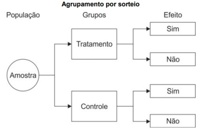
A caso-controle.
B coorte prospectivo.
C ensaio clínico randomizado.
D ecológico.
E observacional prospectivo.
Questão 1079 · Medicina Preventiva · 4000183583Um estudo teve como objetivo verificar se a participação na Estratégia Saúde da Família (ESF), reduzia o percentual de crianças com esquema vacinal básico incompleto, no primeiro ano de vida. O resultado foi que os participantes da ESF apresentaram percentual 10% maior, de vacinação infantil incompleta, do que os não participantes. Nesse cenário, é correto afirmar que
A há evidência de viés de seleção, quando se definiu participação na ESF como variável.
B um forte viés de mensuração prejudicou a qualidade do estudo, levando à relação incorreta causa- efeito.
C a estimativa de associação deve ser interpretada em termos causais.
D as variáveis confundidoras, como renda familiar per capita, podem ter ocorrido.
E a escolaridade da mãe não pode ser uma variável confundidora.
Questão 1080 · Medicina Preventiva · 4000183582O rastreamento de distúrbios lipídicos em adultos a partir dos 20 anos de idade que tenham risco aumentado de doenças cardiovasculares, tem grau de recomendação B. Isto significa que
A há grande certeza que o benefício líquido da intervenção é moderado.
B há incerteza quanto ao saldo de benefícios e danos.
C as evidências são insuficientes para recomendar o rastreamento nessa população.
D há grande certeza que a intervenção oferece um benefício líquido substancial.
E o rastreamento deve ser desestimulado nessa população.
Questão 1081 · Medicina Preventiva · 4000183581O Ministério da Saúde consolidou as noti cações das hepatites A, B, C e D, com objetivo de contribuir para as tomadas de decisões e definições de estratégias de enfrentamento, sendo que no Brasil, de 2000 a 2021,
A foram notificados mais de 700 mil casos confirmados de hepatites virais.
B as hepatites A e D são as principais causas de doença hepática crônica, cirrose hepática e carcinoma hepatocelular.
C em todos os casos, as notificações de casos representaram aumento nos últimos anos.
D o número de casos de hepatite A foi superior aos de hepatite B e de hepatite C.
E os óbitos por hepatite B são a maior causa de morte entre as hepatites virais.
Questão 1083 · Incidência · 4000183559Para qual das doenças abaixo listadas o melhor indicador de morbidade é a incidência?
A diabetes;
B hipertensão;
C meningite;
D obesidade.
Questão 1084 · COVID 19 · Mortalidade · 4000183558Em 2021, em Sorocaba, ocorreram 52 mil casos noti cados de Covid-19, 10 mil casos hospitalizados por Covid-19 e 3 mil óbitos por Covid-19. A população de Sorocaba em 2021 era estimada em 700 mil habitantes. Pode-se afirmar que
A a incidência de casos de COVID-19 foi de 1,4 por cem habitantes;
B a mortalidade específica porCOVID-19 foi de 4,3 óbitos por mil habitantes;
C a letalidade por COVID-19 foi de 4,3 óbitos por mil habitantes;
D a taxa de hospitalização dos casos de COVID-19 foi de 1,4%.
Questão 1085 · Outros Indicadores de Relevância em Saúde Pública · 4000183557O WHO-QOL 100 ( Ele inclui as medidas das seguintes dimensões
A dor, deambulação, consciência;
B indivíduo, família, comunidade;
C física, mental, social e ambiental;
D trabalho, assistência à saúde,segurança social.
Questão 1086 · Redes de Atenção à Saúde RAS · Expansão da APS no Brasil · 4000183556Leia o seguinte conceito: “ São arranjos organizativos de ações e serviços de saúde, de diferentes densidades tecnológicas, que integradas por meio de sistemas de apoio técnico, logístico e de gestão buscam garantir a integralidade do cuidado Trata-se de:
A programas de saúde;
B redes de atenção à saúde;
C planos de saúde;
D empresas médicas.
Questão 1087 · Princípios da Medicina de Família e Comunidade · 4000183555A figura a baixo representa os vetores I, U e C referentes ao desempenho de um Sistema de Saúde, resultantes da atenção à saúde prestada de acordo com: a complexidade do problema de saúde (I=Integralidade) e sua respectiva cobertura pelo sistema (U=Universalidade). O vetor C corresponde à função de
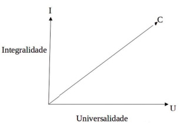
A equidade;
B eficácia;
C eficiência;
D discriminação
Questão 1088 · Genograma · 4000183554A figura ao lado representa uma técnica utilizada na Estratégia de Saúde da Família. Trata-se de
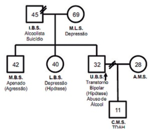
A ecomapa;
B genograma;
C descrição dos tipos de transtornos mentais encontrados em várias amostras;
D distribuição da frequência de casos de transtornos mentais em uma amostra.
Questão 1089 · Epidemias · 4000183553Qual é a melhor definição de epidemia?
A Incidência maior que o dobro da média esperada;
B Incidência maior que a média esperada mais 2,96 desvios-padrão;
C Incidência maior que a média esperada mais 1,96 desvio-padrão;
D Incidência maior que o triplo da média esperada.
Questão 1090 · Prevenção Primária · 4000183552Um exemplo de ação de saúde pertencente ao período pré-patogênico e classificada como medida de proteção específica é
A a vacina;
B a atividade física;
C a redução da poluição atmosférica;
D a alimentação saudável.
Questão 1091 · Índice de Vulnerabilidade Social IVS · 4000183551Por ser mais abrangente, o conceito de vulnerabilidade atualmente é mais aceito do que o conceito de suscetibilidade. As dimensões da vulnerabilidade são:
A social, individual e programática;
B biológica, física e mental;
C ambiental, genética e comportamental;
D econômica, familiar e ocupacional.
Questão 1092 · Sensibilidade · 4000183550Qual é a sensibilidade deste teste diagnóstico?
A 75% ;
B 90% ;
C 50% ;
D 25% .
Questão 1093 · Usos da Incidência e da Prevalência em Saúde Pública · 4000183549Analise este trecho do texto: “Considerando-se como referência a subárea-controle, o risco relativo para infecção na subárea com uma intervenção foi de 0,99 (IC95% 0,k6-2,10); e com a combinação de duas intervenções, de 0,7k (IC95%: 0,3k- 1,62). Embora os dados sugiram uma redução da incidência de infecção nas subáreas de intervenção, essa diferença não foi significativa estatisticamente.” Assinale a alternativa CORRETA:
A para afirmar que houve redução da infecção o Risco Relativo teria que ser menor que 0,46;
B para afirmar que houve redução da infecção o Risco Relativo teria que ser menor que 0,34;
C para afirmar que houve redução da infecção o Intervalo de 95% de Confiança (IC95%) não poderia apresentar limites superiores iguais ou maiores que 1;
D para afirmar que houve redução da infecção o Intervalo de 95% de Confiança (IC95%) não poderia apresentar limites inferiores iguais ou menores que 1.
Questão 1094 · Ensaios clínicos · 4000183548Qual é o modelo deste estudo epidemiológico? “Este trabalho teve como objetivo avaliar estratégias de prevenção e controle da leishmaniose visceral humana em crianças entre zero e 12 anos de idade em uma área endêmica do Município de Feira de Santana, Estado da Bahia, Brasil. A incidência de infecção foi avaliada mediante inquéritos soroepidemiológicos em três subáreas adjacentes identi cadas como: a) subárea controle; b) subárea submetida à borrifação com inseticida; c) subárea submetida à combinação de borrifação com inseticida e triagem com eliminação de cães soropositivos. Ao todo, foram avaliadas 2.362 crianças: 688 na primeira subárea, 782 na segunda e 892 na terceira subárea. A densidade de incidência da infecção foi de 2,7k; 2,51; e 1,9k casos/100 criançasano, nas subáreas controle submetidas à borrifação e submetidas à borrifação e triagem com eliminação de cães, respectivamente. Considerando-se como referência a subárea-controle, o risco relativo para infecção na subárea com uma intervenção foi de 0,99 (IC95% 0,k6-2,10); e na subárea com a combinação de duas intervenções foi de 0,7k (IC95%: 0,3k-1,62). Embora os dados sugiram uma redução da incidência de infecção nas subáreas de intervenção, essa diferença não foi significativa estatisticamente. ”
A Coorte;
B Caso-controle;
C Ensaio clínico;
D Ensaio na comunidade.
Questão 1095 · Declaração de óbito DO Atestado de óbito · 4000183547Indivíduo de 76 anos de idade, sexo masculino, portador de hipertensão arterial há 20 anos, portador de Diabetes há 15 anos, desenvolveu quadro de SARS-Covid19 que se iniciou há 1 semana. Desde criança, apresentava Asma e desde adulto-jovem apresentava varizes dos membros inferiores. Em decorrência da evolução do quadro de SARS-Covid19 apresentou Insu ciência Respiratória Gravíssima e óbito. Qual é a causa básica do óbito?
A Asma;
B Hipertensão associada com Diabetes;
C TVP (trombose venosa profunda decorrente das varizes;
D Covid19.
Questão 1096 · Lista Nacional de Notif icação Compulsória de doenças agravos e eventos de saúde pública · 4000183546Rubéola É doença de notificação compulsória
A gastroenterite;
B pneumonia;
C escarlatina;
D rubéola.
Questão 1097 · Manual de Publicidade Médica · Direitos dos médicos · Sigilo prof issional · 4000183504Dr. Mendonça, médico cirurgião plástico famoso, iniciando suas atividades em outro município, decide colocar um anúncio no jornal local da cidade sobre sua clínica, recém-construída. Ele publicou, COM AUTORIZAÇÃO EXPRESSA da paciente, uma foto de antes e depois de uma rinoplastia, realizada há um mês, acompanhada de uma orientação educativa sobre as principais indicações e benefícios do procedimento e, ao nal, colocou seu número de CRM (Conselho Regional de Medicina) e do RQE (Registro de Qualificação de Especialista). Disponível em: https://www.plasticadosonho.com. br/blog/rosto/rinoplastia-antes-e-depois/. Acesso em: 01 out 2022. Considerando a situação exposta, Dr. Mendonça
A incorreu em infração ética por ter utilizado a foto da paciente antes e depois, mesmo autorizada;
B não incorreu em infração ética porque se trata de uma propaganda educativa e, desta forma, é permitida pelo CRM;
C incorreu em infração ética porque o consentimento deveria tersido dado por um Comitê de Ética em Pesquisa;
D não incorreu em infração ética, porque tomou o cuidado de colocar sua inscrição no CRM, bem como seu número de RQE.
Questão 1098 · Medicina Preventiva · 4000183499Na Atenção Domiciliar, podemos utilizar ferramentas especí cas que promovem a aproximação entre os pro ssionais de saúde e as famílias, sendo utilizadas de acordo com as necessidades vivenciadas. Podemos considerar como ferramenta(s) específica(s) da abordagem familiar: I. Método Clínico Centrado na Pessoa II. Olhar sistêmico III. Ciclo de vida familiar IV. Genograma V. Ecomapa Assinale a alternativa CORRETA.
A Todos os itens estão corretos.
B Existem, apenas, quatro itens corretos.
C Existem, apenas, três itens corretos.
D Existem, apenas, dois itens corretos.
E Existe, apenas, um item correto.
Revisar: possível letra faltando em enunciado
Questão 1099 · Medicina Preventiva · 4000183498Quarenta e oito por cento dos adultos relataram ter tido episódio de cefaleia que durou pelo menos 1 dia nos últimos 3 meses. Qual dos seguintes fatores melhor descreve essa taxa?
A Incidência-densidade
B Incidência cumulativa
C Prevalência-ponto
D Prevalência-período
E Taxa de complicação
Questão 1100 · Medicina Preventiva · 4000183497O Ministério da Saúde instituiu pela Portaria nº 2.836, de 1° de dezembro de 2011, a Política Nacional de Saúde Integral de Lésbicas, Gays, Bissexuais, Travestis e Transexuais (LGBT). Assinale a alternativa que corresponde ao objetivo geral dessa política.
A Ampliar o acesso da população LGBT aos serviços de saúde do SUS, garantindo às pessoas o respeito e a prestação de serviços de saúde com qualidade e resolução de suas demandas e necessidades
B Contribuir para a promoção da cidadania e da inclusão da população LGBT por meio da articulação com as diversas políticas sociais, de educação, trabalho, segurança
C Garantir os direitos humanos de lésbicas, gays, bissexuais, travestis e transexuais, contribuindo para a eliminação do estigma e da discriminação, decorrentes das homofobias, como a lesbofobia, gayfobia, bifobia, travestifobia e transfobia, consideradas na determinação social de sofrimento e de doença.
D Incluir a diversidade populacional nos processos de formulação, implementação de políticas e programas voltados para grupos específicos no SUS, envolvendo orientação sexual, identidade de gênero, ciclos de vida, raça-etnia e território.
E Promover a saúde integral de lésbicas, gays, bissexuais, travestis e transexuais, eliminando a discriminação e o preconceito institucional, bem como contribuindo para a redução das desigualdades e a consolidação do SUS como sistema universal, integral e equitativo.
Questão 1101 · Medicina Preventiva · 4000183496Pernambuco foi o primeiro Estado brasileiro a desenvolver um programa específico para enfrentamento de doenças transmissíveis negligenciadas com o Programa Sanar, instituído pelo Decreto nº 39.497, de 11 de junho de 2013. Esse programa tem como objetivo reduzir ou eliminar enquanto problema de saúde pública as seguintes doenças transmissíveis negligenciadas: I. Doença de Chagas II. Esquistossomose III. Helmintíase IV. Filariose linfática V. Hanseníase Assinale a alternativa CORRETA.
A Todos os itens estão corretos.
B Existem, apenas, quatro itens corretos.
C Existem, apenas, três itens corretos.
D Existem, apenas, dois itens corretos.
E Existe, apenas, um item correto.
Questão 1102 · Medicina Preventiva · 4000183494O Plano de ações estratégicas para o enfrentamento das doenças crônicas e agravos não transmissíveis no Brasil (2021-2030) destaca a transição epidemiológica tanto nas doenças crônicas e de seus fatores de risco e o crescimento das causas externas de morbimortalidade. Sobre o panorama da mortalidade por acidentes e violências no Brasil, é CORRETO afirmar que
A as lesões de trânsito representam a primeira causa de morte entre as causas externas, com maior ocorrência entre jovens e adultos de 15 a 39 anos.
B Em 2017, um estudo global sobre homicídios apresentou taxa de mortalidade, no qual maior parte das vítimas era do sexo masculino, aproximadamente 90%, com maior risco de morte na faixa etária de 35 a 50 anos de idade.
C em 2019, as agressões foram a quarta causa de morte de jovens de 15 a 29 anos.
D o suicídio constitui a segunda maior causa de mortes entre jovens de 15 a 29 anos de idade.
E em 2019, em 56% dos óbitos por quedas acidentais, a vítima era do sexo feminino.
Questão 1103 · Medicina Preventiva · 4000183493Em 2018, uma conferência rea rmou o compromisso da Organização Mundial da Saúde com a Atenção Primária à Saúde com o lema "Saúde para todos". Assinale a alternativa que corresponde a esse marco.
A Conferência de Ottawa
B Conferência de Alma-Ata
C Conferência de Astana
D 8ª Conferência Nacional de Saúde
E Conferência Internacional de Saúde para o Desenvolvimento
Questão 1104 · Medicina Preventiva · 4000183492Sobre os estudos epidemiológicos, qual dos seguintes estudos NÃO pode ser usado para identi car fatores prognósticos?
A Coorte
B Caso-controle
C Prevalência
D Análise de tempo até o evento
E Nenhuma das alternativas
Questão 1105 · Medicina Preventiva · 4000183490Um estudo de revisão comparou o desempenho do TESTE A versus o TESTE B no rastreamento do câncer colorretal. Em comparação com TESTE B, o TESTE A apresentou melhor detecção das lesões pré- cancerígenas que seriam tratadas para evitar cânceres subsequentes. Porém, o TESTE A também teve maior taxa de falso-positivos. Analise as afirmativas abaixo e assinale a INCORRETA.
A A testagem mais frequente pode piorar a especificidade do TESTE A.
B O TESTE A é menos específico que o TESTE B para rastreamento.
C O TESTE A é mais sensível que o TESTE B para rastreamento.
D A testagem mais frequente pode melhorar a sensibilidade de ambos os testes.
E O valor preditivo negativo é menor no TESTE A que no TESTE B.
Questão 1106 · Medicina Preventiva · 4000183489O Sistema de Informação de Agravos de Noti cação, tem como principal fonte de dados as noti cações e investigações de casos de doenças e agravos que constam da lista nacional de doenças de noti cação compulsória, algo imprescindível para a identi cação da realidade epidemiológica de determinada área geográfica. Sobre esse Sistema, assinale a alternativa INCORRETA.
A Caso não ocorra nenhuma suspeita de doença, as unidades de saúde precisam preencher o formulário de notificação negativa.
B Além da Ficha Individual de Notificação e da Notificação Negativa, o Sistema ainda disponibiliza a Ficha Coletiva de Investigação.
C Ainda são utilizados para a coleta de dados a Planilha de surtos e os Boletins de acompanhamento de casos de Hanseníase e Tuberculose.
D A Ficha Individual de Notificação é preenchida pelas unidades assistenciais para cada paciente, quando da suspeita da ocorrência de problema de saúde de notificação compulsória ou de interesse nacional, estadual ou municipal.
E Caso os municípios não alimentem o banco de dados do Sistema por dois meses consecutivos, são suspensos os recursos do Piso de Assistência Básica – PAB.
Questão 1107 · Medicina Preventiva · 4000183485A história da política previdenciária de saúde no Brasil teve origem na criação de uma estrutura de proteção social, instituída pela Lei Eloy Chaves em 1923. Assinale a alternativa que corresponde a essa estrutura.
A Caixas de Aposentadorias e Pensões (CAPs).
B Instituto Nacional de Previdência Social (INPS).
C Programa de Ações Integradas de Saúde (PAIS).
D Institutos de Aposentadoria e Pensões (IAPs).
E Sistemas Unificados e Descentralizados de Saúde (SUDS).
Questão 1108 · Medicina Preventiva · 4000183484No ano de 2021, 412 mil brasileiros morreram pela Covid-19. Qual dos seguintes fatores melhor descreve essa estatística?
A Prevalência-ponto
B Incidência cumulativa
C Incidência-densidade
D Prevalência-período
E Nenhuma das alternativas
Questão 1109 · Medicina Preventiva · 4000183483O Relatório Belmont foi promulgado em 1978, nos Estados Unidos, devido aos escândalos causados pelos experimentos da medicina desde o início da 2ª Guerra Mundial. Como o caso Tuskegee study no Estado de Alabama, iniciado em 1932, mas descoberto apenas em 1972, no qual foram deixados sem tratamento quatrocentos negros sifilíticos para pesquisar a história natural da doença. Esse Relatório utilizou como referencial para as suas considerações éticas os seguintes princípios básicos: I. Respeito pelas pessoas II. Beneficência III. Não-maleficência IV. Justiça É(São) princípio(s):
A I, II, III e IV.
B Apenas II, III e IV.
C Apenas I, II e IV.
D Apenas II e III.
E Apenas a III.
Questão 1110 · Medicina Preventiva · 4000183482Considerando o estudo da questão anterior, se o médico pensou que o paciente tinha TB por causa da hemoptise, em qual porcentagem dos pacientes ele estava certo?
A 38%
B 48%
C 52%
D 61%
E 76%
Questão 1111 · Medicina Preventiva · 4000183481Um estudo foi conduzido sobre os sinais e sintomas físicos em 247 pacientes avaliados para Tuberculose Pulmonar (TB). O diagnóstico nal foi feito de acordo com os achados da cultura (padrão-ouro). Noventa e cinco pacientes tinham TB, e 49 deles também tinham hemoptise. Cento e cinquenta e dois não tinham TB, e 79 desses pacientes tinham hemoptise. Analisando esse estudo, qual a especificidade da hemoptise para TB?
A 38%
B 48%
C 52%
D 61%
E 76%
Questão 1112 · Medicina Preventiva · 4000183480Sobre os Sistemas Nacionais de Informação em Saúde, temos um que foi implantado na década de 70, considerado um dos principais instrumentos para apoiar a elaboração de políticas públicas, visando à prevenção, promoção e cuidado em saúde. Assinale a alternativa que corresponde a esse Sistema.
A SINASC.
B SINAN.
C SIM.
D SIH.
E SIA-SUS.
Questão 1113 · Medicina Preventiva · 4000183432O(A) Médico(a) Residente deve saber interpretar e analisar criticamente a literatura cientí ca. O conhecimento sobre os tipos de estudo é crucial. Assinale a alternativa que caracteriza os estudos cirúrgicos tipo caso-controle.
A Usado para descrever a prevalência de uma doença
B Examina a associação de fatores de risco a desfechos incomuns
C Não tem viés de seleção
D Tem grande potencial de estabelecer uma relação de causa e efeito
E Combina resultados de estudos clínicos (caso) e experimentais (controle)
Revisar: possível letra faltando em enunciado
Questão 1114 · Medicina Preventiva · 4000183401Você foi chamado para acompanhar uma paciente de 40 anos que está internada com quadro de febre, perda de peso e linfonodomegalias generalizadas. Já foi realizada uma biópsia que revelou um linfoma não Hodgkin de alto grau. Antes de você conhecer a paciente, sua irmã o procura para pedir que não revele o diagnóstico, pois teme que ela reative uma depressão prévia. A paciente perdeu o marido em acidente automobilístico há dois anos e cria sozinha o lho de cinco anos. A doença é grave, mas há chance de cura com quimioterapia agressiva. Como reagir em uma situação como essa?
A Concordar com a irmã, pois a reativação de quadro depressivo nesse momento atrapalharia o tratamento.
B A paciente precisa começar o tratamento o quanto antes, e isso não pode ser feito sem seu consentimento informado. O diagnóstico deve ser comunicado imediatamente.
C Comunicar o diagnóstico apenas se a paciente perguntar. Se isso não acontecer, iniciar a quimioterapia com a autorização da família.
D Comunicar à irmã que nessas condições você não pode assumir o caso, pois não concorda em mentir.
E Criar uma relação de confiança com família e paciente, para sanar as dúvidas e assim comunicar o diagnóstico e programar o tratamento.
Questão 1115 · Medicina Preventiva · 4000183394NÃO faz parte da lista nacional de notificação compulsória de doenças, agravos e eventos da saúde pública:
A Bartonelose.
B Leptospirose.
C Febre amarela.
D Raiva humana.
Questão 1116 · Medicina Preventiva · 4000183391A prevenção quaternária é definida como a ação feita para: I. Identificar um paciente ou população em risco de supermedicalização. II. Proteger pacientes de uma intervenção médica invasiva. III. Sugerir procedimentos científica e eticamente aceitáveis. Quais estão corretas?
A Apenas I e II.
B Apenas I e III.
C Apenas II e III.
D I, II e III.
Questão 1117 · Medicina Preventiva · 4000183389Assinale a alternativa correta em relação ao cuidado domiciliar e Visita Domiciliar (VD).
A A VD como “meio” tem objetivos específicos de atuação na Atenção Domiciliar terapêutica e visita a pessoas restritas ao domicílio, temporária ou permanentemente.
B A VD como “fim” não se restringe à busca ativa de pacientes, mas, em especial, para dar conta da demanda reprimida, da vigilância em saúde relacionada aos programas prioritários.
C A VD não é exclusiva da unidade básica de saúde, uma vez que constitui importante recurso a ser utilizado por qualquer estabelecimento de saúde, desde que se faça necessário.
D Devem-se criar fluxos que envolvam somente a equipe médica na avaliação das solicitações de VD e definir conceitos e critérios para inclusão e alta dos pacientes em atendimento.
Questão 1118 · Medicina Preventiva · 4000183388Idoso com diabete melito, hipertensão arterial e dislipidemia internou por crise hipertensiva e hiperglicemia. Na alta hospitalar, foi orientado para acompanhamento na Unidade Básica de Saúde (UBS). No seu primeiro atendimento, o médico de família ajustou as medicações e organizou as prescrições de diferentes pro ssionais. O paciente foi encaminhado para a oftalmologia e à nutricionista da rede, além de programar a realização de novos exames e o controle da pressão arterial. Qual dos atributos da Atenção Primária à Saúde abaixo está
A Longitudinalidade.
B Orientação familiar.
C Coordenação do cuidado.
D Equidade da atenção.
Questão 1119 · Medicina Preventiva · 4000183387Os problemas de saúde de uma população são de diversas naturezas e afetam todos os órgãos e sistemas. Coexistem doenças crônicas, violência e acidentes, problemas de saúde mental, doenças agudas e infectocontagiosas. Analise as seguintes assertivas em relação à Atenção Primária à Saúde: I. A integralidade, um atributo da atenção primária, é a capacidade de identi car o conjunto dos problemas de saúde dos pacientes e lidar com esses problemas, seja tratando, na maioria das situações, ou referindo, quando é do âmbito da atenção secundária ou terciária. II. Quando os médicos que atuam na atenção primária acompanham as pessoas ao longo do tempo, há maior familiaridade com os pacientes e seus problemas, há maior precisão diagnóstica, é utilizada acertadamente menos medicação, e é maior a proporção de pessoas com tratamentos completados. III. Os estudos de demanda em ambulatórios gerais demonstram que, embora seja ampla a variedade de problemas de saúde, existem alguns problemas muito frequentes, responsáveis por cerca da metade de toda a demanda trazida pela população. Quais estão corretas?
A Apenas I e II.
B Apenas I e III.
C Apenas II e III.
D I, II e III.
Questão 1120 · Medicina Preventiva · 4000183386Um pesquisador está testando um novo medicamento que genuinamente funciona para um determinado desfecho, porém, como resultado em seu estudo, não encontra qualquer efeito bené co dessa medicação com o desfecho estudado, perdendo uma oportunidade de descoberta. O que aconteceu?
A Confusão.
B Causalidade reversa.
C Erro tipo I.
D Erro tipo II.
Revisar: possível letra faltando em enunciado
Questão 1121 · Medicina Preventiva · 4000183385A fama do rock e do pop está associada à tomada de risco, uso de substâncias e mortalidade prematura. Um estudo publicado em 2012 na BMJ Open examinou as relações entre fama e mortalidade prematura e, dentre outros objetivos, se a causa da morte estava ligada a experiências adversas na infância. O estudo incluiu 1.489 estrelas do rock e pop que alcançaram a fama entre 1956 e 2006. O estudo identi cou data de nascimento e examinou os fatores de risco e proteção para a mortalidade prematura da amostra estudada. Foram coletadas informações disponíveis por meio de publicações biográ cas, notícias e outras coberturas da mídia. Foi identi cado o status de sobrevivência de cada indivíduo em 20 de fevereiro de 2012. O estudo concluiu que a mortalidade das estrelas do rock/pop aumenta em relação à população geral com o tempo desde a fama. Os aumentos são maiores em estrelas norte-americanas e em carreiras solo. Dado o exposto acima, qual é o delineamento do referido estudo?
A Transversal.
B Coorte retrospectivo.
C Ecológico.
D Caso-controle.
Revisar: possível letra faltando em enunciado
Questão 1122 · Medicina Preventiva · 4000183384O logotipo da Cochrane (Figura) ilustra um “forest plot” (ou gráfico em oresta), que representa o potencial das revisões sistemáticas para melhorar os cuidados de saúde. Este gráfico mostra os resultados resumidos de uma revisão sistemática icônica cujo título é “ maturation for women at risk of preterm birth” Considerando a leitura do gráfico do logotipo, pode-se inferir que:
A A administração de corticosteroides a mulheres que estão prestes a dar à luz prematuramente é benéfica para o recém-nascido.
B A administração de corticosteroides a mulheres que estão prestes a dar à luz prematuramente é um risco para o recém-nascido.
C A administração de corticosteroides a mulheres que estão prestes a dar à luz prematuramente não tem impacto para o recém-nascido.
D A análise do gráfico não permite que se chegue a alguma conclusão sobre o resultado do estudo.
Questão 1123 · Medicina Preventiva · 4000183383Considerando as normas deontológicas do Código de Ética Médica nº 2.217/2018, é vedado ao médico: I. Praticar ou indicar atos médicos desnecessários ou proibidos pela legislação vigente no país. II. Assumir condutas contrárias a movimentos legítimos da categoria médica com a nalidade de obter vantagens. III. Divulgar informações sobre assuntos médicos de forma sensacionalista, promocional ou de conteúdo inverídico. IV. Divulgar, fora do meio cientí co, processo de tratamento ou descoberta cujo valor ainda não esteja expressamente reconhecido cientificamente por órgão competente. Quais estão corretas?
A Apenas I.
B Apenas IV.
C Apenas II e III.
D I, II, III e IV.
Revisar: possível letra faltando em enunciado
Questão 1124 · Medicina Preventiva · 4000183382Entre os anos de 2015 e 2020, diversos estudos de caso-controle foram realizados a m de definir a influência do sedentarismo sobre o risco de Infarto Agudo do Miocárdio (IAM). Os resultados de Odds Ratio (OR) com seus respectivos intervalos de con ança a 95% (IC95%) são apresentados abaixo. A indicação de que o sedentarismo seria fator de risco significativo para IAM encontra-se em:
A OR 0,6 IC95% (0,3-0,8).
B OR 0,8 IC95% (0,5-1,1).
C OR 1,8 IC95% (1,2-2,7).
D OR 2,5 IC95% (0,9-4,1).
Questão 1125 · Medicina Preventiva · 4000183381A Figura 4 abaixo apresenta a distribuição da variável renda familiar de uma determinada amostra. As linhas indicadas “a” e “b” representam, respectivamente:
A Variabilidade e mediana.
B Média e mediana.
C Média e variabilidade.
D Mediana e média.
Questão 1126 · Medicina Preventiva · 4000183380Considerando que os resultados de um determinado estudo sejam verdadeiros, um clínico gostaria de saber se esses resultados poderiam ser aplicados aos seus pacientes. Dentre as alternativas abaixo, de que dependeria essa extrapolação?
A Da presença de viés.
B Da validade externa.
C Do delineamento.
D Não é possível fazer essa extrapolação
Questão 1127 · Medicina Preventiva · 4000183357Na passagem do plantão das 8:00 em 13/05/2022, o residente da ginecologia do primeiro ano, que estava na noite, informou: “só tem uma paciente com doença inflamatória pélvica que recebi da cirurgia, ela já iniciou antibiótico”; depois disso saiu, pois estava atrasado para o round da outra equipe. O médico que recebeu o plantão reviu o prontuário. O primeiro registro médico foi do residente da cirurgia, que havia escrito: “Em 10/05/2022, a paciente teve 39ºC de febre associada à dor em baixo ventre, cuja intensidade era 8 em 10. Em 12/05/2022, realizou uma tomogra a abdominal total que descrevia um apêndice cecal normal e sinais de salpingite à esquerda, não visualizando o ovário esquerdo. Os exames laboratoriais de 12/05/2022: hCG=negativo | hmg=11,9 | leuc=21670 | PCR=180. Conforme contato com o plantonista da ginecologia, trans ro a paciente para os cuidados da equipe da emergência ginecológica. Prescrevo ceftriaxona, doxiciclina e metronidazol para a paciente, e solicito exames laboratoriais para infecções sexualmente transmissíveis. R1 CIG Miró Data: 12/05/2022 21:17”. Após essas anotações, não havia outros registros médicos. Considerando as atividades pro ssionais con abilizadoras essenciais para a prática médica na passagem do plantão, os aspectos do registro médico descrito no código de ética médica e a conduta do médico plantonista sobre o caso acima, podemos a rmar que a:
A Passagem do plantão apresenta comportamento de pré-confiabilidade.
B Atitude da passagem de plantão do plantonista da noite para o plantonista da manhã estava adequada quanto à comunicação efetiva com o colega de profissão.
C Evolução do residente da cirurgia está de acordo com o código de ética médica, no que tange ao Art. 87 §1.
D Prescrição dos antimicrobianos está de acordo com as recomendações para o tratamento do caso de doença inflamatória pélvica.
Questão 1128 · Neurologia · Cuidados paliativos · 4000183284Uma mulher de setenta anos de idade, acompanhada de seus familiares, foi admitida no pronto-socorro com quadro de dispneia. Durante a investigação inicial, foi realizada tomogra a de tórax, que evidenciou uma imagem sugestiva de neoplasia pulmonar primária em estado avançado. A paciente estava consciente e orientada, de modo que a equipe realizou a comunicação de notícias difíceis conforme o protocolo SPIKES. Acerca das etapas do referido protocolo no caso clínico acima, assinale a alternativa correta.
A Na etapa
B Na etapa
C Na etapa
D Na etapa
E Na etapa
Questão 1129 · Medicina Preventiva · 4000183219Silvana, de 47 anos de idade, procurou o agente comunitário de saúde (ACS) de sua microárea relatando que, havia mais de um mês, não conseguia marcar consulta para mostrar os resultados dos exames solicitados pela sua médica nem conseguia consulta para sua neta de seis meses de idade, que havia perdido a última consulta de puericultura. Levadas essas demandas para a reunião de equipe, a enfermeira reconheceu que estavam deixando de cumprir dois dos atributos essenciais da atenção primária à saúde. Considerando a situação hipotética acima, assinale a alternativa que apresenta os dois atributos em questão.
A equidade e universalidade
B acessibilidade de primeiro contato e longitudinalidade
C integralidade e orientação familiar
D coordenação do cuidado e orientação familiar
E acessibilidade de primeiro contato e universalidade
Questão 1130 · Medicina Preventiva · 4000183218Rastreamentos oportunísticos podem ser realizados em consultas em qualquer nível de atenção à saúde. Entretanto, programas de rastreamento são, costumeiramente, oferecidos na atenção primária. Na decisão sobre ofertar ou não exames ou procedimentos na perspectiva de rastreamento, são seguidos níveis de evidência cientí ca, que geram graus de recomendação. Na hierarquia da qualidade de evidências cientí cas para tais recomendações, o melhor e o pior tipo de estudo a serem considerados são, respectivamente,
A o transversal e a metanálise.
B o
C o coorte e o caso-controle.
D o ensaio clínico e o transversal.
E a metanálise e o
Revisar: possível letra faltando em enunciado
Questão 1131 · Medicina Preventiva · 4000183217O projeto terapêutico singular (PTS) é um conjunto de propostas de condutas terapêuticas articuladas, para um sujeito individual ou coletivo, resultado da discussão coletiva de uma equipe interdisciplinar, com apoio matricial, se necessário. Geralmente, é dedicado a situações mais complexas. Assinale a alternativa que apresenta corretamente as etapas do PTS, conforme a Política Nacional de Humanização.
A necessidades de saúde; planejamento estratégico; execução; e monitoramento.
B lista de problemas; divisão de tarefas; plano conjunto; e monitoramento.
C diagnóstico; definição de metas; divisão de responsabilidade; e reavaliação.
D subjetivo; objetivo; análise; e plano.
E adoecimento; visão integral; plano conjunto; e promoção da saúde.
Questão 1132 · Medicina Preventiva · 4000183216O método clínico centrado na pessoa, em sua versão mais atualizada, sugere quatro elementos integrativos na abordagem aos pacientes. Assinale a alternativa que apresenta elemento(s) que referido método.
A explorar a doença e a experiência de adoecimento.
B estabelecer um plano conjunto.
C incorporar prevenção e promoção à saúde.
D entender a pessoa como um todo.
E fortalecer a relação entre pessoa e médico.
Questão 1133 · Medicina Preventiva · 4000183215Joana procurou o serviço de saúde mais próximo de sua casa, para receber pro laxia pós-exposição (PEP), pois tivera uma relação sexual desprotegida que considerava de risco. Ao apresentar sua queixa ao pro ssional de saúde, ele respondeu que ela procurou o serviço errado, pois, além dos medicamentos não estarem disponíveis ali, não seria conveniente que esse tipo de queixa fosse tratado em uma unidade de saúde frequentada por famílias. Ele terminou o atendimento repreendendo Joana, dizendo-lhe que ela deveria saber melhor com quem se relacionava. A situação hipotética acima retrata as vulnerabilidades
A institucional e profissional.
B social e intrínseca.
C social e programática.
D sexual e social.
E sexual e de gênero.
Questão 1134 · Medicina Preventiva · Inf ectologia · 4000183214Marcelo, assintomático, compareceu à unidade básica de saúde (UBS) de referência para fazer exames diagnósticos de infecções sexualmente transmissíveis (ISTs). Foram-lhe oferecidos testes rápidos, e o resultado para sí lis foi positivo. Marcelo nunca havia tido esse diagnóstico anteriormente, logo nunca recebera qualquer tratamento para essa doença. Acerca da situação hipotética acima e de assuntos a ela relacionados, assinale a alternativa correta.
A É preciso confirmar o diagnóstico de Marcelo e, em caso de VDRL acima de 1:8, tratá-lo com penicilina benzatina 2.400.000 UI em três doses semanais
B Devido ao controle epidemiológico satisfatório, a sífilis deixou de ser uma doença de notificação compulsória no Brasil.
C Como é o primeiro diagnóstico de sífilis de Marcelo, o caso deve ser tratado como sífilis primária, administrando-se uma dose de penicilina benzatina de 1.200.000 UI em cada glúteo.
D Uma vez positivo o teste rápido para sífilis, tanto este como o FTA-ABS (testes treponêmicos) nunca mais se tornarão negativos.
E Os testes rápidos para ISTs têm sido desencorajados, pela sua baixa sensibilidade. O VDRL é mais sensível e específico, por ser um teste treponêmico.
Questão 1135 · Medicina Preventiva · 4000183212Judite, de 58 anos de idade, compareceu à UBS de referência para realizar exames de rotina. Ela é bastante zelosa com a saúde e procura fazer exames regularmente, embora não faça tratamento para nenhuma doença nem tome nenhum medicamento de uso contínuo. Devido à pandemia de covid-19, está há quase três anos sem fazer qualquer exame de rastreio. Considerando essa situação hipotética, assinale a alternativa que apresenta os exames adequados para o rastreamento de neoplasias
A mamografia, colpocitologia oncótica e pesquisa de sangue oculto nas fezes.
B radiografia de tórax, mamografia e colposcopia.
C colonoscopia, mamografia e endoscopia digestiva alta.
D mamografia, colpocitologia oncótica e colposcopia.
E pesquisa de sangue oculto nas fezes, radiografia tórax e densitometria óssea.
Questão 1136 · Medicina Preventiva · 4000183211No que se refere ao registro em prontuário no formato SOAP, que é um modelo de registro clínico baseado em problemas, largamente utilizado na atenção primária à saúde e em outros níveis de atenção à saúde, assinale a alternativa
A No S (subjetivo), deve constar toda a anamnese, incluindo-se a coleta de informações objetivas dos sinais e sintomas bem como as impressões subjetivas do paciente.
B No O (objetivo), devem constar todos os dados do exame físico do paciente, incluindo-se sinais vitais, como também resultados de exames complementares.
C No A (avaliação), que corresponde à lista de problemas, devem constar todos os diagnósticos levantados na consulta, seguidos do respectivo CID.
D No P (plano), devem ser colocadas todas as condutas relacionadas aos respectivos diagnósticos, incluindo-se notas prospectivas para os próximos encontros.
E É possível subdividir o S em S1, S2, S3, e assim por diante, caso haja mais de uma queixa por consulta, para facilitar o entendimento do prontuário.
Questão 1137 · Medicina Preventiva · 4000183210Mafalda, de 63 anos de idade, natural e procedente de João Pessoa – PB, viúva, costureira aposentada, católica, compareceu à consulta com o médico de família e comunidade, que fez os seguintes registros. S1) Trazer exames de rotina de HAS e DM. S2) Cefaleia frontal pulsátil há cerca de dez dias, quase todos os dias, sem fonofobia ou fotofobia, náuseas ou outros fatores associados. Intensidade 4/10, que alivia com dipirona 500 mg. Pede tomogra a computadorizada de crânio para “saber o que tem”. S3) Di culdades para dormir há cerca de duas semanas, desde a que lha se casou e saiu da casa dos pais. Está morando sozinha. Pede “calmante” (sic). Vizinha “emprestou” rivotril; gostaria de continuar tomando. O) Exame físico: NDN. HbA1C 8,3 / restante sp. A) DM II fora da meta. cefaleia tensional. insônia – transtorno de ajustamento. P) Aumento antidiabético oral + oriento MEV Faço escuta ativa, estimulo insight sobre momento de vida. Ensino e entrego cartilha sobre higiene do sono. Tranquilizo sobre cefaleia (observação vigilante). Oriento sobre vacinas contra covid-19. Nesse caso hipotético, consta(m) no plano somente o(s) nível(is) de prevenção:
A primária.
B quaternária.
C secundária, terciária e quaternária.
D primária, terciária e quaternária.
E secundária e terciária.
Questão 1138 · Medicina Preventiva · 4000183207Em um serviço de saúde que oferece cuidados à população c o m a coordenação da unidade, para apresentar algumas reivindicações, o que foi acolhido. Uma das reclamações dizia respeito à di culdade de marcar consultas médicas, pois os horários oferecidos eram incompatíveis com a jornada de trabalho da maioria das usuárias do serviço. A situação hipotética acima retrata a execução de um princípio organizativo do Sistema Único de Saúde (SUS) e um problema relacionado a um princípio derivado da atenção primária a saúde. Tendo isso em visto, assinale a alternativa que apresenta, respectivamente, esse princípio organizativo do SUS e o princípio derivado em questão.
A equidade — coordenação do cuidado
B participação popular — competência cultural
C universalidade — integralidade
D descentralização — longitudinalidade
E regionalização — acessibilidade de primeiro contato
Questão 1139 · Medicina Preventiva · 4000183205Isadora, de oitenta anos de idade, compareceu à consulta com seu médico generalista após ter recebido alta hospitalar por queda da própria altura. Não foi diagnosticada nenhuma fratura. Sabendo que a prevenção de queda em idosos é imprescindível na avaliação e nos cuidados integrais para essa faixa etária, assinale a alternativa que
A polifarmácia
B idade acima dos oitenta anos
C história pregressa de queda
D deficit
E gênero masculino
Questão 1140 · Medicina Preventiva · 4000183204Em um município do interior paulista, o novo coordenador de atenção primária à saúde pretende expandir a estratégia de saúde da família (ESF), pois estudou que esta é a melhor con guração para tal nível de atenção. Para isso, lançou edital para a contratação de novos profissionais de saúde. A partir dessa situação hipotética, assinale a alternativa que apresenta a composição mínima da ESF exigida pelo Ministério da Saúde.
A médico, enfermeiro, odontólogo e equipe de Núcleo de Apoio à Saúde da Família (Nasf).
B médico, enfermeiro, técnico em enfermagem e ACS.
C médico, técnico em enfermagem, equipe de Nasf e ACS.
D clínico, ginecologista, pediatra, enfermeiro, odontólogo e equipe de Nasf.
E clínico, ginecologista, pediatra, equipe de enfermagem e ACS.
Questão 1141 · Medicina Preventiva · 4000183201Quanto à sensibilidade e à especificidade de exames, assinale a alternativa correta.
A O exame de PSA tem alta sensibilidade e baixa especificidade, sendo recomendado para exames de rastreamento de câncer de próstata.
B O D-dímero tem sensibilidade e especificidade altas, por isso é importante para confirmar diagnóstico de tromboembolismo pulmonar (TEP) em pessoas com dispneia.
C O exame da proteína C-reativa é muito específico e pouco sensível, sendo indicado para dúvidas diagnósticas acerca de quadros inflamatórios e infecciosos.
D A percussão pulmonar pode auxiliar no diagnóstico de um derrame pleural, uma vez que macicez ao exame tem alta sensibilidade nesse caso.
E A transluscência nucal tem sensibilidade e especificidade altas para rastreamento de anomalias cromossômicas, por isso é indicada, formalmente, na rotina pré-natal.
Questão 1142 · Medicina Preventiva · 4000183200Acerca do protocolo SPIKES, assinale a alternativa correta.
A Na parte do convite à verdade ou ao diálogo, pergunta-se ao paciente se ele gostaria de saber a opinião médica a respeito de sua sobrevida.
B A parte da preparação diz respeito a preparar o paciente com palavras acolhedoras no início da consulta, para ele receber bem uma má notícia.
C Trata-se de um protocolo pensado para pacientes oncológicos e seus passos dificilmente são adaptáveis a outras situações, ainda que também sejam desafiadoras.
D Esse protocolo prevê que a consulta termine sumarizando-se os dados importantes e traçando- se uma estratégia de cuidado junto ao paciente.
E Esse protocolo orienta que as emoções sejam evitadas na comunicação de más notícias, pois elas fazem os pacientes terem dificuldades em reter informações.
Questão 1143 · Medicina Preventiva · 4000183179Durante a pandemia de Covid-19, pesquisadores brasileiros conduziram um estudo transversal com o objetivo de avaliar padrões de uso de álcool na população brasileira. Para tal, foi criado um questionário virtual, cujo link de acesso foi compartilhado em diferentes redes sociais. O questionário apresentava questões que solicitavam o relato sobre o volume de álcool consumido no mês da pesquisa. Este volume de álcool deveria ser volume consumido dos diferentes tipos de bebida alcoólicas e a concentração de etanol por volume em cada uma delas. Quais tipos de vieses são encontrados neste estudo?
A Viés de compatibilidade e seleção.
B Viés de confundimento e de informação.
C Viés de confundimento e de traço.
D Viés de seleção e de informação.
Questão 1144 · Medicina Preventiva · 4000183178A pro ssão médica reúne uma série de grati cações psicológicas, dentre elas o sentir-se competente, receber reconhecimento e gratidão. No decorrer da formação e da vida profissional, entretanto, o médico se defronta com di culdades que podem não corresponder ao que é esperado como grati cação. O grau de idealização da pro ssão gera expectativas e, se não correspondidas, geram frustrações repercutindo na sua saúde. Sobre esta afirmação, qual é a alternativa mais adequada?
A Não se sustenta, pois pesquisas mostram que a percepção dos médicos em relação às mudanças na sua vida profissional melhoram ao longo dos anos para a maior parte dos itens avaliados.
B Corresponde à realidade, pois pesquisas mostram que, mesmo com a atenção dos cursos médicos para a formação, médicos apresentam prevalência alta de sintomas psiquiátricos, fadiga e ideação suicida.
C Não se sustenta, dado que uma pesquisa realizada pelo Conselho Federal de Medicina mostra que os médicos referem ser acometidos com a mesma frequência pelas doenças que mais incidem na população geral.
D Corresponde à realidade, tanto que nos cursos médicos, ao longo da formação, o aluno é preparado para enfrentar estas situações de frustração, de forma que elas dificilmente afetem sua saúde.
Questão 1145 · Medicina Preventiva · 4000183177A diminuição de recursos federais para o SUS nos próximos anos, indicada no gráfico abaixo, que apresenta a projeção do orçamento da União (em reais) destinado às Ações e Serviços Públicos de Saúde (ASPS), per capita e per capita para população idosa, deve-se a:
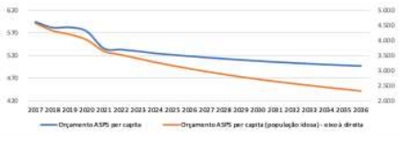
A revogação da Emenda Constitucional-29, que regulamentava a aplicação de recursos em saúde e obrigava a União a recompor, anualmente, o valor correspondente ao crescimento do PIB e à variação da inflação, e o comprometimento mínimo de 12% para Estados e 15% para municípios dos seus orçamentos.
B aprovação pelo Congresso Nacional da Emenda Constitucional-86, que regulamenta a aplicação de recursos em saúde e passou a obrigar a União a destinar 15% da Receita Corrente Líquida para a saúde, mantendo a obrigatoriedade de comprometimento mínimo de 12% para Estados e 15% para municípios dos seus orçamentos.
C implementação dos dispositivos previstos na Lei Federal 141 (2012), que define o que pode ser contabilizado como gasto na área da saúde e fixa percentuais mínimos de investimento por parte da União, Estados, Distrito Federal e Municípios.
D aprovação pelo Congresso Nacional da Emenda Constitucional-95, que ao entrar em vigor, determinou que o orçamento do Ministério da Saúde passe a ser reajustado apenas pelo Índice de Preços ao Consumidor Amplo (IPCA), congelando a partir de 2018 os recursos para o SUS por 20 anos.
Questão 1146 · Medicina Preventiva · 4000183176Para que um determinado território estadual se constitua numa região de atenção à saúde, é necessário que ela tenha, no mínimo, ações e serviços de:
A urgência e emergência.
B terapia intensiva coronariana.
C terapia renal substitutiva.
D assistência de alta complexidade em oncologia.
Questão 1147 · Medicina Preventiva · 4000183175O modelo de atenção à saúde indígena desenvolvido no país, expresso na proposta da Política Nacional de Atenção à Saúde dos Povos Indígenas (PNASPI), publicada em 2002, e organizado em um Subsistema de Atenção à Saúde Indígena (SasiSUS), parte dos mesmos princípios e diretrizes do Sistema Único de Saúde (SUS). É correto afirmar que o modelo de atenção à saúde indígena:
A trabalha com o contexto sociopolítico atual e as especificidades regionais, com acesso a saberes, práticas de saúde e formas de interpretar o processo saúde/doença.
B é pautado nas bases técnico-científicas que demonstram o avanço da cultura humanística e das ciências na sociedade e suas consequências ao desenvolvimento social.
C tem como referência os conhecimentos em biomedicina, um vasto campo de teorias e práticas em saúde asseguradas por experimentos e métodos avaliativos reconhecidos globalmente.
D é constituído por formas históricas e saberes tradicionais que coexistem harmonicamente nas sociedades urbanizadas e grupos indígenas.
Questão 1148 · Medicina Preventiva · 4000183174Mulher, 30 anos de idade, mora na rua, no centro da cidade de São Paulo. Durante a pandemia, perdeu o trabalho como manicure e passou a viver como trabalhadora do sexo. Atualmente, tem poucos clientes e, para comer todo dia, depende de doações. Esta situação de insegurança alimentar, frequente para outras mulheres no território, é vivenciada por ela com ansiedade, in uenciando em seu consumo de álcool e outras drogas. Ela tem um companheiro com quem tem uma relação afetiva estável. Nesta semana, procurou a UBS devido a atraso menstrual e foi feito o diagnóstico de gestação. Para a equipe elaborar um Projeto Terapêutico Singular, qual é a alternativa mais adequada?
A Construir projetos de cuidado para esta mulher e conduzir ações coletivas de saúde.
B Definir políticas públicas socioeconômicas e elaborar medidas de saúde populacionais.
C Orientar condutas médicas de mudanças de estilo de vida e a aderência da paciente.
D Possibilitar aos profissionais de saúde prevenir e tratar as doenças causadas diretamente por esta condição de vida.
Questão 1149 · Medicina Preventiva · 4000183173A saúde da população negra tem sido comprometida em relação ao acesso aos serviços de saúde, o que caracteriza uma situação de não reconhecimento de necessidades especí cas dessa população aliada a atos sistemáticos de intolerância e atitudes racistas no cotidiano dos serviços. A Política Nacional de Saúde Integral da População Negra (PNSIPN), no Brasil, a partir de 2013, con gurou novos caminhos que viabilizassem mudanças dessa situação. Quais são as bases e diretrizes do SUS que orientaram a construção da PNSIPN?
A Estimulou a produção nacional de pesquisas, formulou hipóteses a partir da literatura nacional e internacional e definiu a política com base exclusivamente no princípio da universalidade.
B Partiu de consulta aos gestores da saúde e profissionais de serviço, considerou a literatura internacional e propôs a descentralização e regionalização como diretrizes essenciais na organização desta política.
C Recorreu a estudos científicos que demonstraram as desigualdades no acesso a serviços de saúde pela população negra, incluiu o quesito cor na coleta de informações em saúde e estabeleceu diálogo com os movimentos sociais, a partir do princípio de participação social.
D Recorreu a estudos e evidências científicas que demonstraram as desigualdades no acesso a serviços de saúde pela população negra, considerou a literatura internacional e adotou a hierarquização do sistema de saúde como diretriz essencial para a efetividade do sistema.
Revisar: possível letra faltando em enunciado
Questão 1150 · Medicina Preventiva · 4000183172A Noti cação de Receita é um documento padronizado que, acompanhado da prescrição, autoriza a dispensação/venda de medicamentos sujeitos a controle especial. Sobre as diferentes Noti cações de Receitas, qual é a alternativa correta?
A "A1" e "A2" (entorpecentes) e "A3" (psicotrópicas) são de cor azul e impressas às expensas do profissional médico.
B "B1" e "B2" (psicotrópicas) são de cor amarela e são impressas às expensas da Autoridade Sanitária.
C "B1" e "B2" (psicotrópicas) são de cor amarela e impressas às expensas do profissional médico.
D "A1" e "A2" (entorpecentes) e "A3" (psicotrópicas) são de cor amarela e impressas às expensas da Autoridade Sanitária.
Questão 1151 · Medicina Preventiva · 4000183171No Brasil, a tomada de decisão para o enfrentamento da pandemia de Covid-19 é um desa o devido sua grande extensão territorial, heterogeneidade demográ ca, social e econômica. Estudar a relação entre indicadores de saúde, demográ cos, sociais, econômicos e a mortalidade por Covid-19 é de extrema importância neste contexto. Qual teste estatístico deve ser utilizado para verificar se a mortalidade por Covid-19 está relacionada com o número de leitos de UTI, Índice de Gini (numericamente, varia entre 0 e 1), Índice de Desenvolvimento Humano (numericamente, varia entre 0 e 1) e taxa de analfabetismo?
A Teste T de Student para duas populações independentes.
B Teste de Correlação de Pearson.
C Teste Qui-quadrado de Independência.
D Teste de McNemar.
Revisar: possível letra faltando em enunciado
Questão 1152 · Medicina Preventiva · 4000183170De acordo com as recomendações do Ministério da Saúde para as atividades da Atenção Básica no manejo operacional das Infecções Sexualmente Transmissíveis (IST), selecione a alternativa correta.
A Notificar imediatamente as IST, com finalidade de bloqueio da cadeia epidemiológica.
B Iniciar o tratamento e referir os casos de IST para serviços especializados com recursos laboratoriais para seguimento.
C Promover capacitações para os profissionais de saúde da atenção básica.
D Realizar consulta imediata no caso de úlceras genitais, corrimentos genitais masculinos e femininos e de verrugas anogenitais.
Questão 1153 · Medicina Preventiva · 4000183169Em relação aos princípios éticos que devem orientar os ensaios clínicos aleatorizados, qual é a afirmativa correta?
A O estudo pode ser continuado mesmo que se obtenha a evidência de benefício do tratamento em análise interina.
B Deve ser usado o maior tamanho de amostra possível com o intuito de representar a variabilidade étnica.
C O Termo de Consentimento Livre e Esclarecido garante a anonimização ou pseudoanonimização dos dados.
D É vetado deixar de administrar aos participantes do estudo medicamento de eficácia comprovada e que lhe trará benefícios.
Questão 1154 · Medicina Preventiva · 4000183168Homem, 35 anos de idade, foi vítima de acidente no ambiente de trabalho com estilhaço de metal q ue atingiu e perfurou seu olho direito há seis horas, causando amaurose total à direita. Seus óculos de proteção estavam no bolso do uniforme. Trabalha em uma serralheria que emprega 50 pessoas. Após o atendimento de urgência, qual é a alternativa que indica uma ação de atenção ao trabalhador e a proposta de uma medida de prevenção coletiva mais adequadas a esta situação?
A Emissão de Comunicado de Acidente de Trabalho; verificação do funcionamento da Comissão Interna de Prevenção de Acidentes.
B Encaminhamento para acompanhamento oftalmológico; reorganização do processo de trabalho visando maior margem de manobra.
C Inscrição em programa de treinamento para readaptação funcional; aquisição de Equipamento de Proteção Individual mais efetivo.
D Encaminhamento para Centro de Referência em Saúde do Trabalhador para estabelecer o nexo causal; estudo de ergonomia.
Questão 1155 · Medicina Preventiva · 4000183166O trabalho em equipe consiste em estratégia para a integração das especialidades médicas e das múltiplas pro ssões, essencial para o desenvolvimento do cuidado integral do paciente. Assinale a alternativa que contém um atributo e um instrumento para o trabalho em equipe efetivo.
A Especialização dos saberes; conversa informal.
B Divisão de responsabilidades; auditoria de prontuários.
C Reflexividade; apoio matricial.
D Heterogeneidade dos objetivos; controle de produtividade.
Questão 1156 · Medicina Preventiva · 4000183164Um bairro da zona sul do município de São Paulo teve em sua formação a instalação de diversas indústrias químicas e petroquímicas, responsáveis por um importante passivo ambiental, com contaminação de solo e água subterrânea por metais pesados, solventes clorados e halogenados e outras substâncias químicas perigosas à saúde humana. Posteriormente, houve aumento do interesse imobiliário na região, com a mudança do uso do solo, de industrial para residencial, comercial e de serviços. Das funções abaixo, qual é a de responsabilidade da Vigilância em Saúde Ambiental nesta situação?
A Identificar a população exposta aos contaminantes e, em conjunto com a atenção básica, estruturar um protocolo de atenção à saúde dessa população com identificação e tratamento precoces de possíveis efeitos resultantes desta exposição.
B Realizar a análise do solo e da água da região a fim de encontrar os contaminantes presentes nos compartimentos ambientais atingidos, e a delimitação da pluma de contaminação de cada substância identificada, como metais pesados, por exemplo.
C Uma vez identificados os contaminantes e a extensão da contaminação de cada compartimento ambiental atingido, demandar a remediação da área pelo poluidor, que se não cumprida, resultará na autuação do poluidor pela Vigilância em Saúde Ambiental.
D Controle do processo de remediação da área através de estudos toxicológicos periódicos dos contaminantes presentes no solo da região e cuidado à saúde dos trabalhadores das industrias com a identificação de tratamento de efeitos resultantes desta exposição.
Questão 1157 · Medicina Preventiva · 4000183163Conforme a bula de teste para Covid-19 adquirido na farmácia, este tem 99,1% de sensibilidade e 95,5% especi cidade para IgM e 88% de sensibilidade e 90% de especi cidade para IgG. Qual das alternativas indica a interpretação correta destes dados?
A 0,9% de resultado falso-negativo para IgM e 88% de resultado verdadeiro-positivo para IgG.
B 0,9% de resultado falso-positivo para IgM e 12% de resultado falso-negativo para IgG.
C 99,1% de resultado falso-negativo para IgM e 88% de resultado falso-negativo para IgG.
D 0,9% de resultado verdadeiro-negativo para IgM e 12% de resultado falso-positivo para IgG.
Questão 1158 · Medicina Preventiva · 4000183162Um estudo clínico prospectivo avaliou a mudança de peso em uma amostra de pacientes com osteoartrite de joelho submetidos a uma dieta por quatro meses. Após esse período os pacientes apresentaram uma mudança média de peso de -1,11 kg (IC95%: [-1,52; -0,70]). Qual das a rmações abaixo melhor descreve a informação fornecida pelo intervalo de confiança de 95%?
A A mudança média de peso após quatro meses na dieta foi estatisticamente diferente de zero ao nível de significância de 5%.
B O intervalo de confiança mostra que 95% dos pacientes da amostra obtiveram mudança de peso entre -1,52 e -0,70 kg.
C Esse intervalo define que 95% da população atingiria uma mudança de peso entre -1,52 e -0,70 kg se recebesse a dieta em estudo.
D Existe uma probabilidade de 0,95 de que a mudança média de peso dos pacientes da amostra tenha ficado entre -1,52 e -0,70 kg.
Questão 1159 · Aborto legal no Brasil · Legislação sobre aborto · 4000183057Gestante, 30 anos, 13 semanas, foi a consulta de pré-natal com laudo ultrassonográ co de anencefalia. Qual dos documentos a seguir é necessário para que seja feita a interrupção da gestação:
A Registro de boletim de ocorrência
B Dois laudos de ultrassom
C Autorização judicial
D Autorização do marido
Revisar: possível letra faltando em enunciado
Questão 1160 · Cuidados paliativos · 4000183015Cuidados Paliativos são definidos pela Organização Mundial de Saúde (OMS) como “uma abordagem que melhora a qualidade de vida de pacientes e seus familiares, que enfrentam doenças que ameaçam a vida. Previne e alivia o sofrimento através da identi cação precoce, avaliação correta e tratamento da dor e outros problemas físicos, psíquicos, sociais, familiares e espirituais”. Assinale a alternativa
A Por se tratarem de uma exclusividade do paciente oncológico, os Cuidados Paliativos devem ser ofertados sempre no nível terciário.
B Os Cuidados Paliativos devem ser oferecidos em todos os níveis de atenção, inclusive na Atenção Primária à Saúde.
C Os Cuidados Paliativos oferecidos pelas Equipes de Saúde da Família (ESF) são necessariamente de qualidade e resolutividade inferiores àqueles ofertados pelo nível hospitalar.
D A função das Equipes de Saúde da Família se restringe a identificar os pacientes com necessidade de Cuidados Paliativos e referenciá-los ao nível hospitalar.
Questão 1161 · NNT · 4000183014Um estudo comparou, durante dez anos, a mortalidade por câncer de mama em dois grupos de mulheres que zeram ou não o exame de mamogra a de rastreamento, com a intenção de avaliar o impacto do exame na redução do desfecho ÓBITO. Ambos os grupos eram compostos por 1000 mulheres. No primeiro grupo foi realizada mamogra a a cada dois anos, e ao nal do tempo de estudo houve 4 óbitos por câncer de mama. O segundo grupo era composto também por 1000 mulheres, sendo que neste grupo não foi realizada mamogra a, sendo constatados 6 óbitos por câncer de mama. Considerada a mortalidade em ambos os grupos, podemos inferir que o Número Necessário a Tratar (NNT) da mamogra a para a prevenção do desfecho óbito, neste estudo, foi de:
A 500
B 1000
C 50
D 100
Questão 1162 · Polif armácia · 4000183013Em Atenção Primária à Saúde há necessidade constante de se lidar com o problema da polifarmácia, uma vez que existem muitos pacientes com condições crônicas simultâneas que necessitam de manejo clínico apropriado. Qual das alternativas a seguir descreve uma estratégia correta para se lidar com a polifarmácia na APS?
A Quando houver dois ou mais problemas de saúde, deve-se tentar usar um medicamento que trate mais de uma condição simultaneamente.
B Mesmo que determinada expectativa de vida seja alcançada, medicamentos de uso contínuo deverão ser mantidos uma vez que serão benéficos até o final da vida.
C Quando determinado problema de saúde estiver controlado, os fármacos devem ter sua dose mantida para controle dos sintomas, preferencialmente em dose plena.
D O uso simultâneo de até oito medicamentos ainda não caracteriza polifarmácia, sendo necessária a revisão das necessidades e efeitos adversos somente a partir desta quantidade de fármacos.
Questão 1163 · Política Nacional de Atenção Básica PNAB · 4000183012A Estratégia Saúde da Família (ESF) é a estratégia prioritária de expansão, consolidação e quali cação da Atenção Básica no Brasil. Dentro da rede de atenção à saúde, a ESF tem o desa o de funcionar como um centro de comunicação entre os diversos pontos de atenção. Conforme a Política Nacional de Atenção Básica – PNAB (2017), assinale a diretriz que contempla esse papel:
A Territorialização e Adstrição
B Equidade
C Coordenação
D Integralidade
Questão 1164 · Política Nacional de Atenção Básica PNAB · 4000183011Para que a Estratégia Saúde da Família tenha seu funcionamento adequado, cumprindo seus princípios e diretrizes, é recomendado pela PNAB (2017), que:
A A população adscrita por equipe de saúde seja de 3500 a no máximo 5000 pessoas.
B A equipe mínima seja composta por um médico, preferencialmente da especialidade medicina de família e comunidade, um enfermeiro, um dentista e técnicos de enfermagem.
C As pessoas identificadas como fora da área de abrangência devem ser prontamente encaminhadas para unidades de saúde próximas ao endereço de residência a fim de garantir seu acolhimento adequado.
D Os profissionais da ESF deverão estar vinculados a apenas uma equipe de saúde da família, devendo cumprir obrigatoriamente a carga horária de 40 horas semanais.
Questão 1165 · Programa Nacional de Melhoria do Acesso e da Qualidade da Atenção Básica PMAQ · 4000183010Política Nacional de Atenção Básica PNAB A Atenção Domiciliar na Atenção Básica pertence à modalidade AD1, sendo um cuidado que deve ser oferecido na seguinte situação:
A Pessoas que têm a necessidade frequente de exames de laboratório de alta complexidade.
B Pessoas que possuam problemas de saúde compensados e com dificuldade de locomoção até a unidade de saúde.
C Apenas às pessoas que se encontram permanentemente acamadas, e que, portanto, não podem se deslocar até a unidade de saúde.
D Pessoas com necessidade de visitas regulares, de frequência semanal, como a realização de curativos complexos.
Questão 1166 · Saúde do Idoso geriatria · 4000183009A atenção à saúde do idoso é uma das práticas comuns em Atenção Primária à Saúde. Sobre a saúde da população idosa, qual é a alternativa que melhor descreve os OBJETIVOS do cuidado e seguimento do idoso em APS?
A A busca da cura fisiopatológica de todas as condições presentes no idoso.
B A maior longevidade possível, independente da funcionalidade.
C A manutenção da autonomia, da independência funcional, com extensão da expectativa de vida ativa e melhora na qualidade de vida.
D A obtenção do melhor manejo farmacológico possível, razão pela qual o cuidado ao idoso deve ser exclusivamente médico.
Questão 1167 · NOB 0193 · 4000183008Os Conselhos de Saúde são instâncias de participação permanente com caráter deliberativo compostos por:
A 50% de usuários, 25% de trabalhadores da saúde e 25% de gestores.
B 70% de trabalhadores da saúde, 15% de gestores e 15% de usuários.
C 50% de gestores, 25% de usuários e 25% de trabalhadores da saúde.
D 70 % de usuários, 15% de trabalhadores da saúde e 15% de gestores.
Questão 1168 · Atenção Primária à Saúde APS no Brasil · 4000183007“Atenção essencial à saúde baseada em tecnologia e métodos práticos, cienti camente comprovados e socialmente aceitáveis, tornados universalmente acessíveis a indivíduos e famílias na comunidade a um custo que tanto a comunidade como o país possam arcar em cada estágio de seu desenvolvimento, um espírito de autoconfiança e autodeterminação”. O conceito descrito se refere à:
A Prevenção Primária
B Método Clínico Centrado na Pessoa
C Estratégia Saúde da Família
D Atenção Primária à Saúde
Questão 1169 · Atributos gerais da Atenção Primária à Saúde APS · 4000183006Qual dos atributos da Atenção Primária à Saúde está relacionado com a existência de uma fonte regular de atenção e seu uso ao decorrer do tempo e tem vários benefícios, tais como, menor utilização de serviços, melhor atenção preventiva, menos referenciamento de pacientes e menos hospitalizações?
A Coordenação do Cuidado
B Longitudinalidade
C Integralidade
D Atenção ao Primeiro Contato
Questão 1170 · Método Clínico Centrado na Pessoa · 4000183005A decisão compartilhada é um processo no qual médico e pessoa decidem juntos sobre tratamentos, exames, manejo e suporte, levando em conta as preferências da pessoa e as melhores evidências disponíveis. Em qual dos componentes do Método Clínico Centrado na Pessoa podemos fazer uso da decisão compartilhada?
A Elaborando um Plano Conjunto de Manejo dos Problemas.
B Explorando a Saúde, a Doença e a Experiência da Doença.
C Entendendo a Pessoa como um todo.
D Intensificando a relação entre a pessoa e o médico.
Questão 1171 · Saúde do Idoso geriatria · 4000183004A atenção à saúde do idoso é uma das práticas comuns em Atenção Primária à Saúde. Sobre a saúde da população idosa, qual é a alternativa que melhor descreve os OBJETIVOS do cuidado e seguimento do idoso em APS?
A A busca da cura fisiopatológica de todas as condições presentes no idoso.
B A maior longevidade possível, independente da funcionalidade.
C A manutenção da autonomia, da independência funcional, com extensão da expectativa de vida ativa e melhora na qualidade de vida.
D A obtenção do melhor manejo farmacológico possível, razão pela qual o cuidado ao idoso deve ser exclusivamente médico.
Questão 1172 · Método SOAP · 4000183001Carlos, 32 anos, vai à UBS para uma consulta médica e o médico faz o seguinte registro SOAP da consulta: S: Há 2 semanas vem sentindo dor de cabeça diariamente, com discreta melhora após uso de analgésico. Está com medo de ter pressão alta, pois sua mãe faleceu de infarto. O: BEG, LOTE; exame físico sem alterações. PA: 150x90 A: HAS? Cefaleia Medo de ter HAS P: Controle ambulatorial de PA Retorno após controle de PA Orientações sobre HAS Sobre o registro acima, pode-se afirmar que o:
A S está incorreto
B O está correto
C A está correto
D P está incorreto
Questão 1173 · Sensibilidade · 4000183000Você foi convidado pelo secretário de saúde para ser consultor na implementação de um teste de rastreamento de uma determinada doença cuja prevalência é de 1% na população de seu município, que é de 5000 habitantes. Ao fazer uma revisão da literatura, você constata que o teste proposto possui uma sensibilidade de 50% e uma especi cidade de 90%. Considerando os dados, você conclui que para cada exame realizado que seja verdadeiro positivo haverá um número de testes falso positivos de aproximadamente: (não considerando casa decimal)
A 19
B 25
C 495
D 4950
Questão 1174 · Relatório Dawson · Modelos do sistemas de saúde bismarckianos beveridgeanos e smithianos · 4000182999Com relação aos modelos Flexneriano e Dawsoniano complete a segunda coluna: 1- Modelo Flexneriano 2- Modelo Dawnsoniano ( ) Integração da medicina curativa e medicina preventiva. ( ) Negação da determinação social da saúde. ( ) Visão centrada em partes do corpo humano. ( ) Nível primário de atenção como porta de entrada. ( ) Modelo hospitalocêntrico. ( ) Integração do cuidado. A sequência CORRETA é:
A 1 – 2 – 1 – 1 – 1 – 2
B 2 – 2 – 2 – 1 – 1 – 1
C 1 – 2 – 1 – 1 – 2 – 1
D 2 – 1 – 1 – 2 – 1 – 2
Questão 1176 · Medicina Preventiva · 4000182887A figura abaixo representa a ocorrência de casos de uma determinada doença em uma comunidade. Com base nessas informações, os coe cientes de incidência e prevalência dessa doença, durante o mês de maio de 2020, na referida comunidade, foram, respectivamente, de
A 10 e 14.
B 11 e 16.
C 11 e 14.
D 16 e 10.
Revisar: possível letra faltando em enunciado
Questão 1177 · Medicina Preventiva · 4000182886Nos termos do Código de Ética Médica, o médico poderá revelar fato de que tenha conhecimento em virtude do exercício de sua profissão
A quando o paciente tenha falecido.
B quando o fato seja de conhecimento público.
C quando der seu depoimento como testemunha.
D por dever legal.
Questão 1178 · Medicina Preventiva · 4000182885Dentre os princípios do Sistema Único de Saúde (SUS), mencionado no Artigo 7º da Lei Orgânica da Saúde (Lei 8.080/1990), está incluído o seguinte:
A financiamento com recursos da seguridade social, complementados pelos estados e municípios, dentro de suas possibilidades orçamentárias.
B atenção secundária como núcleo ordenador das redes regionais de serviços de saúde.
C centralização normativa (DIR - Diretoria Regional) e descentralização executiva (secretarias municipais) das ações de saúde.
D descentralização político-administrativa, com direção única em cada esfera de governo.
Questão 1179 · Medicina Preventiva · 4000182884Nos termos da Lei nº 8142, de 28/12/1990, os conselhos de saúde, em caráter permanente e deliberativo, deverão ter suas decisões homologadas pelo
A chefe do poder legalmente constituído em cada esfera de governo.
B dirigente de saúde (ministro, secretário ou diretor, quando for o caso).
C poder legislativo em cada esfera de governo.
D Ministério Público.
Questão 1180 · Medicina Preventiva · 4000182883Com relação ao texto a seguir, assinale a alternativa que completa corretamente a lacuna. “O Decreto nº 7.508/2011, que dispõe sobre a organização do SUS, estabelece em seu artigo 2º o seguinte: Rede de Atenção à Saúde - conjunto de ações e serviços de saúde articulados em níveis de complexidade crescente, com a finalidade de garantir a ____________ da assistência à saúde”.
A equidade
B integralidade
C universalidade
D regionalização
Questão 1181 · Medicina Preventiva · 4000182882A organização da Atenção Básica à Saúde (Portaria nº 2436/2017, do Ministério da Saúde) inclui a oferta de cuidado, “reconhecendo as diferenças nas condições de vida e saúde e de acordo com as necessidades das pessoas, considerando que o direito à saúde passa pelas diferenciações sociais e deve atender à diversidade”. Esta orientação está associada ao seguinte princípio do SUS:
A equidade.
B integralidade.
C universalidade.
D controle social.
Questão 1182 · Medicina Preventiva · 4000182881Num estudo publicado no atual presidente nas eleições de 2018 foram os que apresentaram as piores taxas de mortalidade por covid- 19, principalmente na segunda onda epidêmica de 2021, mesmo quando consideradas as desigualdades estruturais entre as cidades. Nesse estudo, o desfecho foi a taxa de mortalidade por covid-19 padronizada por idade, e o apoio ao candidato presidencial foi representado pelo percentual de eleitores de cada município que votaram nesse candidato. O desenho de estudo dessa pesquisa foi
A coorte retrospectiva.
B transversal.
C ecológico.
D descritivo.
Questão 1183 · Medicina Preventiva · 4000182880O objetivo da randomização dos participantes em um ensaio clínico randomizado, duplo cego e placebo controlado é controle do
A viés de memória.
B efeito placebo.
C viés de atrito.
D confundimento.
Questão 1184 · Medicina Preventiva · 4000182879Para saber se o consumo habitual da dieta mediterrânea está associada a um menor risco de acidente vascular cerebral (AVC), um grupo de 23.232 indivíduos foi selecionado. O grau de adesão à referida dieta foi verificado e os indivíduos foram seguidos por 17 anos para identificar casos novos de AVC. Trata-se de
A estudo transversal, pois a adesão à dieta mediterrânea é avaliada em um momento específico no tempo (no início do seguimento).
B ensaio clínico, porque pode orientar a prevenção na prática clínica.
C estudo de coorte, pois segue os sujeitos classificados de acordo com sua exposição para identificar o desenvolvimento de uma determinada doença.
D estudo ecológico, porque segue um grupo de sujeitos.
Questão 1185 · Medicina Preventiva · 4000182878Um ensaio clínico de fase IV tem como objetivo
A estabelecer segurança, tolerabilidade e farmacocinética do produto.
B detectar novas reações adversas e confirmar a frequência das já conhecidas.
C determinar a relação risco/benefício a curto e longo prazo e o valor terapêutico do produto.
D estabelecer segurança, dose-resposta e eficácia do produto.
Questão 1186 · Medicina Preventiva · 4000182877Entre 01 de janeiro e 31 de dezembro de 2020 ocorreram 180 acidentes fatais no trânsito em um determinado município. A medida de frequência de acidentes utilizada foi
A letalidade.
B prevalência pontual.
C prevalência no período.
D incidência.
Questão 1187 · Medicina Preventiva · 4000182876Os casos de covid-19 que acometeram trabalhadores da saúde na vigência da pandemia envolvem
A aumento de risco associado a longas jornadas de trabalho, privação de sono e problemas no acesso a proteções individuais evoluindo com risco de
B contaminações acontecidas, predominantemente, em interações que não envolviam pacientes justificando que não sejam reconhecidas como relacionadas ao trabalho.
C procedimentos geradores de aerossóis em UTI acometendo a equipe de cuidados mesmo em situação de uso de EPI como máscara N95 e equivalentes.
D contaminações em contexto de transmissão comunitária em situações similares as dos casos que acometeram outras populações trabalhadoras de atividades emergenciais.
Questão 1188 · Medicina Preventiva · 4000182875Antes da COP26 (26ª Conferência da ONU sobre Mudanças Climáticas), a carta aberta “Prescrição de Clima Saudável” foi assinada por mais de dois terços dos profissionais da saúde em todo o mundo. Sobre os danos à saúde causados pelas mudanças climáticas, assinale a alternativa correta.
A Eventos climáticos extremos (ondas de calor, tempestades e inundações) devem ser responsabilidade dos gestores municipais e não dos serviços de saúde.
B Transtorno de estresse pós-traumático, ansiedade e depressão não pioraram com as mudanças climáticas, esses foram somente agravados pela pandemia do covid-19.
C A poluição do ar está levando a muitas doenças pulmonares e cardíacas, mas ainda não tem sido responsável por mortes prematuras.
D Os sistemas alimentares são cada vez mais perturbados pelo clima extremo que está exacerbando a insegurança alimentar, a fome e a desnutrição.
Questão 1189 · Medicina Preventiva · 4000182874Homem de 58 anos, deu entrada em uma UPA, em estado grave (choque hemorrágico) e história de vômitos sanguinolentos. A família informou que o mesmo tinha “pressão alta, diabetes e era alcoolista”, que teve episódio semelhante há dois meses e na ocasião foi informado que tinha “varizes no estômago e cirrose”. Cerca de 20 minutos depois, o paciente veio a falecer a despeito dos tratamentos instituídos pelo médico plantonista. Assinale a alternativa correta:
A O preenchimento correto da Declaração de Óbito deve ser:
B O preenchimento correto da Declaração de Óbito deve ser:
C O preenchimento correto da Declaração de Óbito deve ser:
D Como o paciente permaneceu menos de 24 horas na UPA, a Declaração de Óbito deverá ser emitida pelo SVO (Serviço de Verificação de Óbito).
Questão 1190 · Medicina Preventiva · 4000182873A figura a seguir apresenta a evolução (número de casos e óbitos) da covid-19 em dois países, desde o início da pandemia até 12 de janeiro de 2022, na vigência da variante Ômicron. Com relação à vacinação contra a covid-19 nos dois países e baseados nestes per s de ocorrência de casos e óbitos, é possível inferir que
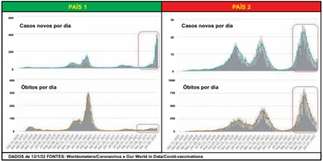
A as coberturas vacinais dos países 1 e 2 são, respectivamente, alta e baixa.
B as coberturas vacinais dos países 1 e 2 são, respectivamente, baixa e alta.
C nos países 1 e 2 foram aplicadas, respectivamente, vacinas de RNA mensageiro e vacinas de vírus inativado.
D não há elementos suficientes para se inferir a cobertura vacinal e tipo de vacina utilizada.
Questão 1191 · Medicina Preventiva · 4000182863Paciente masculino, de 42 anos, consultou na UBS para obtenção de atestado médico. Há 2 dias, fora atendido na UPA por quadro de pneumonia bacteriana. Trouxe o raio X realizado, que mostrou uma consolidação na base pulmonar direita, e o laudo do atendimento. Relatou que permanecia prostrado, mas havia apresentado melhora em relação ao dia da consulta na UPA. O médico que o atendeu recomendou repouso e forneceu o boletim de atendimento, explicando-lhe que o atestado será fornecido pela UBS onde está adscrito. Assinale a assertiva correta sobre o caso.
A O boletim de atendimento da UPA, devidamente assinado e com a indicação da CID, é documento legal e pode ser utilizado pelo paciente como atestado médico
B O médico da UPA tem restrição legal para fornecer atestado médico, pois não é o médico responsável pelo paciente.
C O médico da UBS deve fornecer o atestado com a data em que o atendimento foi prestado na UPA, com a indicação da CID e com o período de afastamento.
D O médico da UBS deve fornecer o atestado com a data em que o atendimento foi prestado, registrando o período completo de afastamento.
Questão 1192 · Medicina Preventiva · 4000182862Assinale a assertiva correta sobre normas gerais de prescrição de receitas.
A Os antibióticos, incluindo os de uso tópico, são prescritos em receita comum dupla, com validade de 30 dias.
B Os analgésicos opioides e seus antagonistas devem ser prescritos em receitas B1 (azul), com numeração fornecida pela autoridade sanitária.
C Os anticonvulsivantes, os antidepressivos e os anorexígenos são prescritos em receitas de controle especial (branca, em duas vias).
D As substâncias anfetamínicas são prescritas em receitas amarelas, em talonário impresso pela autoridade sanitária.
Questão 1193 · Medicina Preventiva · 4000182861Associe os casos clínicos (coluna da esquerda) às estratégias utilizadas por clínicos na Atenção Primária (coluna da direita). 1 - Paciente masculino, após lanche em um restaurante à beira da estrada, apresentou dor abdominal, evacuações diarreicas e náusea, sem febre. Suspeitou-se de gastroenterite. A conduta inicial inclui soro de reidratação e sintomáticos e revisão, se necessário. 2 - Paciente feminina, de 32 anos, não fumante, acordou com afonia, sem febre ou outro sintoma. O médico agendou o retorno da paciente em 1 semana. 3 - Paciente feminina, de 40 anos, tabagista (6 cigarros/dia), consultou por tosse produtiva há 1 mês, emagrecimento e sudorese. O exame físico foi inconclusivo. O médico solicitou pesquisa de BAAR no escarro e raio X de tórax. 4 - Paciente masculino, de 56 anos, que trabalha em uma madeireira, consultou por dor lombar bilateral, sem alteração ao exame neurológico. O médico solicitou raio X de coluna lombossacra. ( ) Espera permitida ( ) Diagnóstico etiológico ( ) Procedimento evitável ( ) Diagnóstico sindrômico A sequência numérica correta, de cima para baixo, da coluna da direita, é
A 1 – 4 – 2 – 3
B 2 – 3 – 4 – 1
C 2 – 4 – 3 – 1
D 3 – 1 – 4 – 2
Questão 1194 · Medicina Preventiva · 4000182860Paciente feminina, de 52 anos, casada e mãe de 2 lhas, trabalhadora em uma fábrica de calçados, veio à consulta de rotina. Sem queixas, referiu realizar pouca atividade física e negou tabagismo. Em sua história familiar, constavam cardiopatia isquêmica (pai falecido aos 65 anos por infarto agudo do miocárdio) e neoplasia de pulmão (mãe falecida aos 49 anos). Relatou sentir medo de ter câncer, razão pela qual gostaria de submeter-se a exames pulmonares. O exame físico foi normal, com aferição da pressão arterial (130/76 mmHg), e foi realizada coleta de material para Papanicolaou. Exames complementares (glicemia, per l lipídico, mamografia) foram solicitados. Recebeu orientações sobre a prática de atividade física e sobre a não necessidade de realizar tomogra a de tórax (TC), por não haver evidências para tal indicação. Com base no quadro, associe os níveis de prevenção (coluna da esquerda) às condutas apresentadas (coluna da direita). 1 - Primordial 2 - Primária 3 - Secundária 4 - Terciária 5 - Quaternária ( ) Aferir a pressão arterial. ( ) Solicitar a mamografia. ( ) Não solicitar a TC de tórax. A sequência numérica correta, de cima para baixo, da coluna da direita, é
A 1 – 2 – 5
B 2 – 3 – 4
C 3 – 3 – 5
D 4 – 4 – 2
Questão 1195 · Medicina Preventiva · 4000182859As Redes de Atenção à Saúde (RAS) constituem-se em arranjos organizativos formados por ações e serviços de saúde com diferentes con gurações tecnológicas e missões assistenciais, articulados de forma complementar e com base territorial. Associe as situações clínicas (coluna da esquerda) às formas de cuidado nos serviços das RAS (coluna da direita). 1 - Paciente apresenta resultado de teste de antígeno positivo para covid-19, com sintomas leves e sinais vitais estáveis. 2 - Paciente recebe alta hospitalar após cirurgia de revascularização do miocárdio. 3 - Paciente chega à UBS com dor torácica, formigamento no braço esquerdo, náusea, taquicardia e sudorese. 4 - Paciente após alta hospitalar tem indicação de medicação parenteral. ( ) Regulação via telefônica com Rede de Urgência/ Emergência (SAMU). ( )Atendimento do paciente por farmacêutico/a do Núcleo de Apoio à Saúde da Família e/ou médico/a da Atenção Primária ( )Encaminhamento do paciente pela equipe da UBS ao Programa de Atenção Domiciliar (PAD). ( )Teleatendimento para acompanhamento realizado pela Atenção Primária à Saúde. A sequência numérica correta, de cima para baixo, da coluna da direita, é
A 1 – 2 – 4 – 3
B 1 – 4 – 2 – 3
C 3 – 2 – 4 – 1
D 3 – 4 – 2 – 1
Questão 1196 · Medicina Preventiva · 4000182858Leia o parágrafo abaixo, extraído de texto de Eugênio Vilaça Mendes A crise contemporânea dos sistemas de atenção à saúde re ete o desencontro entre uma situação de saúde que combina envelhecimento populacional e transição epidemiológica dominada por condições crônicas e um sistema de atenção à saúde voltado para responder às condições agudas e aos eventos agudos decorrentes de agudizações de condições crônicas de forma fragmentada, episódica, reativa e com foco nas doenças. Assinale a alternativa que aponta uma direção para superação desse problema.
A A população adscrita a cada unidade de saúde é uma limitação para o exercício da atenção à saúde baseada na população, pois as pessoas devem ter liberdade de escolha
B estrutura operacional das Redes de Atenção à Saúde pressupõe que o centro de comunicação da rede é a atenção hospitalar.
C Os sistemas logísticos, incluindo os registros eletrônicos de prontuário, não fazem parte da estrutura operacional das Redes de Atenção à Saúde, devido às limitações impostas pela Lei Geral de Proteção de Dados.
D O Modelo de Atenção Crônica (
Questão 1197 · Medicina Preventiva · 4000182857Associe os atributos de Atenção Primária à Saúde (APS) (coluna da esquerda) às medidas que podem ser tomadas para melhorar a qualidade do serviço prestado na APS (coluna da direita). 1 - Primeiro contato/acesso 2 - Coordenação do cuidado 3 - Longitudinalidade 4 - Integralidade 5 - Continuidade ( ) Implantar prontuário eletrônico na rede de atenção à saúde. ( ) Oferecer pronto-atendimento, vacinação e orientação nutricional na UBS ( ) Oferecer turno estendido até às 22 horas no Ambulatório. A sequência numérica correta, de cima para baixo, da coluna da direita, é
A 1 – 2 – 3
B 2 – 4 – 1
C 2 – 5 – 3
D 5 – 3 – 4
Questão 1198 · Medicina Preventiva · 4000182856Assinale a assertiva que preenche, correta e respectivamente, as lacunas do parágrafo abaixo. Conforme a Constituição Federal de 1988, a Seguridade Social compreende um conjunto integrado de ações de iniciativa dos poderes públicos e da sociedade, destinadas a assegurar os direitos relativos a saúde, .......... . Segundo o Capítulo II. da Lei no 8.080/1990,
A a previdência e a assistência social – o pagamento de aposentadorias e pensões e o saneamento básico
B a previdência e a segurança pública – o pagamento de aposentadorias e pensões e o atendimento público para mulheres e vítimas de violência doméstica
C a previdência e a educação – o atendimento público para mulheres e vítimas de violência doméstica e a assistência domiciliar
D a assistência social e a educação – a merenda escolar e o saneamento básico
Questão 1199 · Medicina Preventiva · 4000182855O aumento da prevalência das doenças crônicas não transmissíveis (DCNT) e de seus fatores de risco fez com que a Organização das Nações Unidas incluísse, no objetivo três de sua Agenda para o Desenvolvimento Sustentável até 2030, compromissos com a saúde e o bem-estar e metas de controle das DCNT. Que alternativa, dentre as abaixo, melhor representa o estado atual da resposta brasileira à política de enfrentamento dessa situação de saúde?
A O Brasil respondeu às recomendações da Organização Mundial da Saúde para o controle do tabagismo, porém não alcançou a meta de redução da prevalência do tabagismo entre 2010 e 2019.
B O consumo de bebida alcoólica tem se reduzido no Brasil, e o decréscimo deve-se ao menor consumo de álcool pelas mulheres.
C Houve aumento na prática da atividade física no tempo livre (lazer) pelos brasileiros, principal motivo para a contenção do aumento da prevalência da obesidade em adultos no país.
D A mortalidade por doenças cardiovasculares e por doenças respiratórias crônicas declinaram no Brasil entre 2010 e 2019.
Questão 1200 · Medicina Preventiva · 4000182854Um estudo ecológico de abrangência nacional, desenvolvido por Macinko e colaboradores, avaliou o impacto do crescimento do Programa Saúde da Família e a redução da mortalidade infantil no Brasil, de 1990 a 2002, quando a cobertura do Programa era de 36%. 95% Confidence intervals errors in parentheses. **Significant (p < 0.01). †Based on final model (model 4 from table 2); non-significant variables and fixed effects not shown.‡ Marginal effects evaluated at the mean of all other independent variables (predicted IMR = 37.441). Assinale a assertiva correta de acordo com os resultados apresentados na tabela.
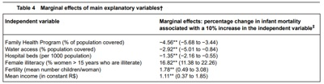
A Um aumento de 10% da cobertura do Programa Saúde da Família nos municípios diminuiu em 4,56% a mortalidade infantil no período.
B O acesso à água tem efeito maior na redução da mortalidade infantil do que a cobertura do Programa Saúde da Família.
C Os leitos hospitalares têm maior impacto na redução da mortalidade infantil do que a cobertura do Programa Saúde da Família.
D O analfabetismo materno não tem impacto na mortalidade infantil.
Questão 1201 · Medicina Preventiva · 4000182853Supondo-se que o risco de morrer por pneumonia não tratada seja de 18% e que o risco de morrer por pneumonia tratada com antibióticos seja de 2%, que número de pacientes será necessário tratar com antibióticos para beneficiar um paciente no cenário descrito?
A 5,55
B 6,25
C 55
D 625
Questão 1202 · Medicina Preventiva · 4000182852A avaliação crítica dos resultados de publicações médicas é fortemente recomendada na formação do médico, principalmente quanto ao uso de novas tecnologias cujo nível de evidência cientí ca é baixo e carece de comprovação. Assinale a assertiva correta sobre a análise da intenção de tratar utilizada em estudos clínicos.
A É preferível à análise por protocolo em estudos observacionais.
B Preserva a randomização original dos ensaios clínicos.
C Aumenta a chance de erro tipo I.
D Reduz o tamanho da amostra.
Revisar: possível letra faltando em enunciado
Questão 1203 · Medicina Preventiva · 4000182851Para determinar os fatores de risco para o câncer de mama, 50.000 mulheres foram selecionadas e acompanhadas ao longo de 5 anos com o intuito de identi car as que desenvolveriam a doença. Qual o delineamento desse estudo?
A Estudo de coorte
B Estudo de caso-controle
C Estudo transversal
D Estudo ecológico
Questão 1204 · Medicina Preventiva · 4000182850Assinale a assertiva correta sobre delineamentos de pesquisas epidemiológicas.
A Os estudos observacionais descritivos testam uma hipótese, além de descreverem a distribuição de variáveis.
B Os estudos ecológicos têm como principal desvantagem o custo, pois avaliam populações inteiras, o que, muitas vezes, torna inviável sua execução.
C Os estudos de caso-controle partem dos desfechos e buscam fatores de exposição, sendo fundamental que controles venham de uma população distinta da dos casos.
D Os estudos de coorte permitem o cálculo de taxas de incidência em expostos e não expostos e, consequentemente, do Risco Relativo da doença (RR).
Questão 1205 · Medicina Preventiva · 4000182849A figura abaixo apresenta resultados de duas pesquisas clínicas: estudo e cácia de um mesmo tratamento hipotético sobre o desfecho morte por covid-19. A linha pontilhada significa a estimativa-ponto, e a linha contínua, a nulidade. Com base na figura, é possível afirmar que
A o estudo
B o estudo
C o estudo
D os estudos têm resultados divergentes.
Questão 1206 · Medicina Preventiva · 4000182836Assinale a assertiva correta sobre quedas em idosos.
A São fatores de risco para quedas ser do sexo masculino e apresentar depressão.
B Idosos frágeis tendem a apresentar mais quedas em ambientes externos.
C Após uma queda da própria altura, independentemente das circunstâncias em que ocorreu, é necessário prosseguir com exames complementares para descartar causas cardíacas.
D O fator de risco de maior importância para novas quedas é ter caído no último ano.
Questão 1207 · Medicina Preventiva · 4000182703Considerando-se a seguinte tabela, do artigo: Di Forti M, Quattrone D, Freeman TP et al. The contribution of cannabis use to variation in the incidence of psychotic disorder across Europe (EU-GEI): a multicenter case- control study. Lancet Psychiatry. 2019 May;6(5):427-436 e o estudo de caso-controle, analisar os itens abaixo: I. Os casos em que o paciente sabe que tem a doença estudada têm mais probabilidade de lembrar se foram expostos. Essa situação é chamada de viés de memória. II. A fração atribuível na população FAP (em inglês PAF) responde à seguinte pergunta: Qual a incidência da doença em uma população associada com a prevalência de um fator de risco? III. A chance de ocorrer um transtorno psicótico entre usuários diários de maconha ( 3,2 vezes mais elevada em comparação com não usuários, e a chance entre usuários de maconha de alta potência ( Está(ão) CORRETO(S):
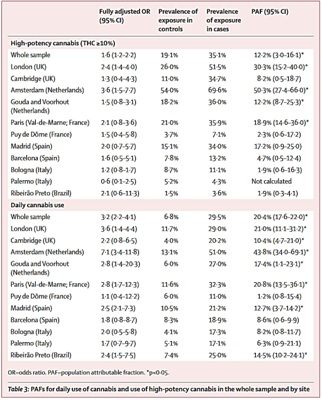
A Somente o item I.
B Somente o item II.
C Somente o item III.
D Somente os itens I e III.
Questão 1208 · Medicina Preventiva · 4000182702A paralisia de Bell é a perda de força unilateral, de aparecimento súbito, na face, na topogra a relacionada à inervação do nervo facial homolateral. Em geral, a causa é desconhecida, embora alguns casos estejam associados a herpes simples, diabetes, gestação e uma variedade de outras condições. Um pesquisador otorrinolaringologista de referência para o atendimento dessa condição, na Dinamarca, acompanhou 1.701 pacientes com paralisia de Bell, uma vez por mês, até a resolução da paralisia ou até completar um ano, o que ocorresse antes. A recuperação alcançou seu máximo em três semanas, para 85% dos pacientes, e no período de três a cinco meses para os demais 15%. Por essa época, 71% dos pacientes haviam se recuperado completamente. Para o resto, houve uma perda de função quase imperceptível em 12% dos pacientes, leve em 13% e severa em 4%. A recuperação estava relacionada a ser mais jovem, a um quadro de paralisia inicial menos grave e ao início mais precoce da recuperação. Considerando-se o exposto, é CORRETO a rmar que:
A Pode ter ocorrido o viés de migração neste estudo, que é quando os pacientes que estão melhorando ou piorando muito no quadro clínico são mais propensos a abandonar o estudo.
B O estudo não possibilita identificar os fatores prognósticos dos pacientes com paralisia de Bell.
C Não deve ter ocorrido viés de amostragem, porque os pacientes foram atendidos por um especialista em paralisia de Bell.
D O estudo descrito é um estudo transversal.
Questão 1209 · Medicina Preventiva · 4000182701Considerando-se os gráficos de oresta (forestplot) do artigo: Niitsuma ENA, Bueno IC, Arantes EO, Carvalho APM, Xavier Junior GF, Fernandes GDR, Lana FCF. Factors associated with the development of leprosy in contacts: a systematic review and meta-analysis. RevBrasEpidemiol. 2021 Jun30;24:e210039 e apresentados a seguir, analisar os itens abaixo: I. A tabela do estudo demonstra elevada heterogeneidade, que expressa o quão diferentes são os resultados dos ensaios clínicos, além do que poderia ser esperado ao acaso. II. O contato domiciliar foi fator de risco para a ocorrência de hanseníase na comparação com indivíduos sem contato RR = 1,72; IC95% 1,45 - 2,05. III. O contato com vizinhos foi fator de risco para a ocorrência de hanseníase na comparação com indivíduos sem contato RR = 2,41; IC95% 1,87 - 3,10. Está(ão) CORRETO(S):
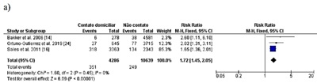
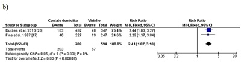
A Somente o item I.
B Somente o item II.
C Somente o item III.
D Somente os itens II e III.
Questão 1210 · Medicina Preventiva · 4000182700A partir da figura sobre a incidência e a mortalidade por câncer de tireoide na Coréia do Sul entre 1999-2015, publicada em FLETCHER, analisar os itens abaixo: I. O aumento do acesso à ultrassonogra a na Coréia do Sul não contribuiu para o aumento da incidência de câncer de tireoide naquele país. II. O processo que leva à detecção precoce de câncer por meio de um exame de rastreamento e que não traz benefício clínico para o paciente é chamado de sobrediagnóstico. III. O desa o no rastreamento é diferenciar as lesões iniciais que causarão morbimortalidade daquelas que permanecerão sem relevância clínica ao longo da vida. Está(ão) CORRETO(S):
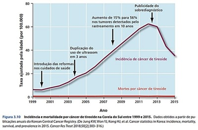
A Somente o item I.
B Somente o item II.
C Somente o item III.
D Somente os itens II e III.
Questão 1211 · Medicina Preventiva · 4000182699onsidere a seguinte tabela 2x2 sobre um estudo transversal que investigou a associação entre ter rede de água tratada em casa e crianças com e sem anemia: Considerando-se essa tabela, analisar os itens abaixo: I. A prevalência de anemia entre as crianças com rede tratada foi de 70/326 = 21,4%. II. A prevalência de anemia entre as crianças com rede sem tratamento foi de 193/422= 45,7%. III. A razão de prevalência foi de 0,21/0,45=0,47, indicando que as crianças nos domicílios sem rede tratada tinham 53% menos prevalência de anemia do que naqueles domicílios com rede tratada. Está(ão) CORRETO(S):
A Somente o item I.
B Somente o item II.
C Somente o item III.
D Somente os itens I e II.
Questão 1212 · Medicina Preventiva · 4000182698Cardoso JP, Mota ELA, Rios PAA, Ferreira LN. Fatores associados à perda de produtividade em pessoas envolvidas em acidentes de trânsito: um estudo prospectivo. RevBrasEpidemiol. 2020 Mar 9;23:e200015” Sobre os potenciais riscos de viés que nesse estudo podem estar contidos, analisar os itens abaixo: I. Caso as avaliações das lesões e das comorbidades tenham sido autorrelatadas, poderiam levar a um viés de aferição. II. O registro das lesões confirmadas por laudos periciais e registrados em prontuários seria uma forma de evitar o viés de aferição. III. A inclusão de outras variáveis no modelo de regressão logística, como o estresse e o impacto econômico nas famílias dos envolvidos em acidentes de trânsito, poderia auxiliar no entendimento mais amplo sobre perda de produtividade. Está(ão) CORRETO(S):
A Todos os itens.
B Somente o item I.
C Somente o item II.
D Somente os itens II e III.
Questão 1213 · Medicina Preventiva · 4000182697“Cardoso JP, Mota ELA, Rios PAA, Ferreira LN. Fatores associados à perda de produtividade em pessoas envolvidas em acidentes de trânsito: um estudo prospectivo. RevBrasEpidemiol. 2020 Mar 9;23:e200015” Considerando-se a tabela a seguir, analisar os itens abaixo: (Fonte: RevBrasEpidemiol.2020) I. O modelo de regressão apresentado na tabela acima possibilita considerar os efeitos de muitas variáveis simultaneamente e contribui para determinar o efeito independente de cada uma das variáveis. II. A presença de veículo utilizado como instrumento de trabalho apresentou um risco de 4,23 vezes maior de ocorrer perda de produtividade e foi estatisticamente significativa. III. Na presença de veículo de duas rodas, há um risco de 1,34 vezes maior de ocorrer perda de produtividade e foi estatisticamente significativa. Está(ão) CORRETO(S):
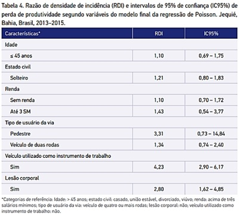
A Somente o item I.
B Somente o item II.
C Somente o item III.
D Somente os itens I e II.
Questão 1214 · Medicina Preventiva · 4000182696Sobre os títulos que indicam se tratar de um estudo de coorte, analisar os itens abaixo: I. Sobrevida e mortalidade por câncer da próstata no Brasil por um período de 13 anos. II. Identificação de pacientes com doença cardiovascular em um ambulatório de ginecologia. III. Fatores associados à internação e à mortalidade neonatal em acompanhamento de recém-nascidos do Sistema Único de Saúde, no município de São Paulo. Está(ão) CORRETO(S):
A Somente o item I.
B Somente o item III.
C Somente os itens I e III.
D Somente os itens II e III.
Questão 1215 · Medicina Preventiva · 4000182695Você está lendo um estudo transversal realizado no Brasil, no qual o objetivo principal é identi car a prevalência de artrite reumatoide e gostaria de decidir se o estudo tem validade interna para esse tipo de delineamento. Analisar os itens abaixo: I. O estudo tem uma amostra representativa da população. II. O critério de definição de artrite reumatoide utiliza um instrumento validado no Brasil. III. Os participantes foram acompanhados por um período su ciente para a ocorrência de casos novos de artrite reumatoide. Está(ão) CORRETO(S):
A Somente o item I.
B Somente os itens I e II.
C Somente o item III.
D Todos os itens.
Revisar: possível letra faltando em enunciado
Questão 1216 · Medicina Preventiva · 4000182694Em relação ao indicador incidência-densidade, analisar os itens abaixo: I. O denominador da medida é pessoas-tempo em risco para o desfecho. II. É uma medida utilizada frequentemente para analisar resultados de ensaios clínicos. III. Todos os casos em um ponto ou período de tempo são incluídos no numerador. Está(ão) CORRETO(S):
A Somente o item I.
B Somente o item III.
C Somente os itens I e II.
D Todos os itens.
Questão 1217 · Medicina Preventiva · 4000182693Analisar os itens abaixo: I. Os Agentes Comunitários de Saúde (ACS) são parte importante na equipe da Estratégia de Saúde da Família (ESF). Atuam na ligação entre a comunidade, o território e a equipe de saúde, sendo uma das suas principais atividades a vigilância epidemiológica, o controle de vetores e a participação em campanhas de vacinação. II. Em zonas rurais, um dos aspectos mais importantes na atenção à saúde é a competência cultural, atributo da APS, tendo em vista que conhecer a história, os hábitos e a cultura da comunidade ao chegar ao local pode evitar conflitos desnecessários entre o médico e a população. III. A equipe da ESF deve conhecer seu território e a população que nele habita, utilizando diferentes fontes (diagnósticos comunitários, dados secundários, rodas de conversa) para identi car situações e fatores que afetem a saúde e criar estratégias, muitas vezes multisetoriais, que possam melhorar as condições de vida no território adscrito. Estão CORRETOS:
A Somente os itens I e II.
B Somente os itens I e III.
C Somente os itens II e III.
D Todos os itens.
Questão 1218 · Medicina Preventiva · 4000182692Sobre a organização do Sistema Único de Saúde (SUS), analisar os itens abaixo: I. As Redes de Atenção à Saúde (RAS) são um arranjo organizativo dos serviços de saúde de diferentes níveis de atenção do sistema de saúde, capaz de ofertar o cuidado contínuo e compatível com a necessidade de saúde do indivíduo. II. A única conexão entre a RAS e a Estratégia de Saúde da Família é ser a porta de entrada do processo de assistência do paciente. III. Como apoio ao processo de trabalho de uma RAS, estão o registro eletrônico em saúde, o sistema de acesso regulado, o sistema de transporte, os sistemas de informação, a assistência farmacêutica e os sistemas de apoio diagnóstico e terapêutico. Estão CORRETOS:
A Somente os itens I e II.
B Somente os itens I e III.
C Somente os itens II e III.
D Todos os itens.
Questão 1219 · Medicina Preventiva · 4000182691Sobre os atributos da Atenção Primária à Saúde (APS), analisar os itens abaixo: I. Os serviços de APS devem ser considerados a porta de entrada do sistema de saúde, devendo ser reconhecidos pela população e pela equipe como o primeiro recurso a ser buscado em caso de necessidade de saúde. II. A longitudinalidade pressupõe uma fonte regular de atenção e a recorrência a ela ao longo do tempo, implicando na adscrição da população a um médico ou equipe de saúde. III. A coordenação do cuidado realizada pela APS envolve a troca de informações, comunicação, articulação e ordenação para os diversos níveis de atenção à saúde e serviços de saúde que garantam a atenção integral ao paciente. Estão CORRETOS:
A Somente os itens I e II.
B Somente os itens I e III.
C Somente os itens II e III.
D Todos os itens.
Questão 1220 · Medicina Preventiva · 4000182690Sobre a organização do Sistema Único de Saúde (SUS), assinalar a alternativa CORRETA:
A O Conselho das Secretarias Municipais de Saúde (COSEMS) é responsável pela deliberação do rumo das políticas de saúde relativas à atenção primária à saúde.
B O controle social, conforme o definido em lei, tem caráter consultivo no que tange às políticas públicas de saúde de interesse da população.
C Não é permitida a contratação de serviços privados para prover serviços nos quais o setor público é insuficiente, sob pena dos governantes serem enquadrados em crime de improbidade administrativa.
D A participação social está garantida em todos os níveis de gestão através dos conselhos nacional, estadual e municipal de saúde.
Questão 1221 · Medicina Preventiva · 4000182689Assinalar a alternativa que corresponde ao princípio da integralidade no cuidado na Atenção Primária de Saúde:
A Joana tentou atendimento em uma emergência por lombalgia e foi encaminhada para uma Unidade Básica de Saúde (UBS) para realizar o atendimento, pois não se tratava de uma emergência.
B Carla levou seu filho, que tem asma, para a consulta de revisão na UBS. Durante a consulta, foi identificado que ele precisava completar o calendário vacinal e de uma avaliação com o dentista. As vacinas foram realizadas e a consulta com o dentista agendada na UBS.
C Marcos utiliza óculos e acha que sua visão piorou nos últimos meses. Após ser atendido na UBS de sua cidade e ser constatado que não se tratava de caso agudo, teve que aguardar 4 meses para conseguir uma consulta com o oftalmologista na cidade vizinha.
D Simão participa do Conselho Municipal de Saúde de sua cidade representando sua comunidade. Nas últimas reuniões, a pauta tem sido a abertura de uma nova UBS que dividiria a assistência de uma grande comunidade rural da cidade.
Questão 1222 · Medicina Preventiva · 4000182668Sobre a Medicina Baseada em Evidências – MBE, é correto afirmar que
A são considerados paradigmas do médico tradicional: 1 – experiência clínica individual; 2 – compreensão da fisiopatologia e 3 – compreensão das regras de evidências.
B são considerados paradigmas da MBE: 1 – informações provenientes de estudos sistemáticos, reprodutíveis e sem tendenciosidade; 2 – compreensão da fisiopatologia, necessária mas insuficiente e 3 – compreensão de regras de evidências para saber aplicar de forma efetiva a literatura.
C são considerados paradigmas da MBE: 1 – experiência clínica individual e compreensão da fisiopatologia; 2 – Estudos com tendenciosidade limitada; 3 – compreensão de regras de evidências para saber aplicar de forma efetiva a literatura.
D são considerados paradigmas da medicina tradicional: 1 – experiência clínica individual e compreensão da fisiopatologia; 2 – Estudos com tendenciosidade limitada; 3 – compreensão de regras de evidências para saber aplicar de forma efetiva a literatura.
E são considerados paradigmas da medicina tradicional: 1 – informações provenientes de estudos sistemáticos, reprodutíveis e sem tendenciosidade; 2 – compreensão da fisiopatologia, necessária mas insuficiente e 3 – compreensão de regras de evidências para saber aplicar de forma efetiva a literatura.
Questão 1223 · Medicina Preventiva · 4000182667São exemplos de medidas para avaliação do tratamento em epidemiologia clínica:
A a redução do risco relativo – RRR, a redução do risco absoluto – RRA, o número necessário para tratar – NNT.
B a mortalidade, a letalidade, a incidência.
C o prognóstico, a taxa de sobrevida em 5 anos, recorrência.
D a mortalidade, o prognóstico, o número necessário para tratar – NNT.
E a redução do risco relativo – RRR, a redução da taxa de sobrevida – RTS, a redução do tempo de interstício – RTI.
Questão 1224 · Medicina Preventiva · 4000182666Para situações de investigação clínica em que é estabelecido que não é possível a realização de estudos experimentais por questões éticas, a análise de causa e risco na epidemiologia deve ser realizada por meio de
A ensaios clínicos randomizados.
B estudos transversais.
C ensaios comunitários.
D ensaios críticos.
E estudos de coorte.
Questão 1225 · Medicina Preventiva · 4000182665No estudo da epidemiologia clínica, entende-se como associações reversíveis:
A situações em que o potencial fator de risco é retirado e há aumento na incidência do evento. O fator de risco é então revertido a fator de proteção.
B após retirada de fator de risco há redução de incidência de um evento – há redução do evento com a redução da exposição, o que é sugestivo de causalidade, que deve ser investigada em estudos complementares.
C após retirada de fator de risco há redução de incidência de um evento, então há redução do evento com a redução da exposição, estabelecendo-se inferência causal do fator de risco estudado, compatível com evidência de estudos clínicos.
D situações em que o potencial fator de risco é retirado e há redução na incidência do evento. O fator de risco é então considerado fator causador do evento, consistente com evidências do tipo I.
E após observação de fator de risco há aumento de incidência de um evento, estabelecendo-se inferência causal do fator de risco estudado como o evento de desfecho observado.
Questão 1226 · Medicina Preventiva · 4000182664Em uma unidade de pronto atendimento pediátrica, uma criança de 11 anos é atendida e, ao exame físico, suspeita-se de faringite. O pediatra, após realizar oroscopia e exame físico, ca em dúvida acerca da conduta de antibioticoterapia, solicita avaliação de colega mais experiente que, ao receber a negativa da criança para abrir a boca para oroscopia, se negou a prosseguir com a avaliação e liberou a criança e seu acompanhante. Sobre esse caso, é correto afirmar que
A a conduta está correta, uma vez que, considerando o uso racional de medicamentos, não se prescreve terapia medicamentosa caso o exame físico seja impossibilitado.
B se trata de conflito ético do exercício da medicina, uma vez que a atitude do profissional foi inadequada e a criança não recebeu o atendimento de que precisava.
C ambos os médicos devem registrar em prontuário a recusa de tratamento.
D deve ser anexado ao prontuário prescrição medicamentosa, após discussão de caso entre os profissionais, que será entregue à família em caso de retorno.
E se trata de respeito à ética médica, uma vez que foi preservada a autonomia da criança, que não desejava ser examinada.
Questão 1227 · Medicina Preventiva · 4000182663Em uma Unidade Básica de Saúde, OMP, 25 anos, gênero feminino, apresenta queixa de sintomas respiratórios, cefaleia, ao exame observa-se tosse, dor e pressão facial, congestão nasal, secreção nasal e retronasal. Os sintomas iniciaram há 3 dias. Refere não possuir diagnóstico de doenças de base, nem alergias. Apresenta ausculta pulmonar sem alterações. A terapia medicamentosa mais indicada para esse caso é
A solução salina para lavagem nasal, analgésicos, penicilina benzatina intramuscular uma dose, que deve ser repetida na semana seguinte caso os sintomas persistam.
B tratamento oral com penicilina por 10 dias completos.
C solução salina para lavagem nasal, analgésicos, uso de mucolíticos para tornar a secreção menos espessa e reduzir o gotejamento pós nasal e azitromicina 500 mg ao dia por 3 dias.
D solução salina para lavagem nasal, analgésicos, uso de mucolíticos para tornar a secreção menos espessa e reduzir o gotejamento pós nasal, e fluoroquinolonas como o ciprofloxacino 500 mg de 12 em 12 horas por 7 dias.
E solução salina para lavagem nasal e analgésicos para controle de sintomas, que pode ser acompanhada de glicocorticoides tópicos para diminuir inflamação da mucosa e drenar melhor os seios da face.
Questão 1228 · Medicina Preventiva · 4000182662Sobre o nanciamento do Sistema Único de Saúde (SUS), os percentuais de investimento nanceiro dos municípios, estados e União são definidos atualmente pela Lei Complementar nº 141, de 13 de janeiro de 2012, resultante da sanção presidencial da Emenda Constitucional 29. Sobre o financiamento previsto em tal legislação, é correto afirmar que
A a União destina 20% das receitas correntes brutas para a saúde pública brasileira, o que foi consolidado com a sanção da Lei Complementar nº 141.
B municípios e Distrito Federal devem aplicar anualmente, no mínimo, 30% da arrecadação dos impostos em ações e serviços públicos de saúde, os estados 35% e a União 20%.
C municípios e Distrito Federal devem aplicar anualmente, no mínimo, 15% da arrecadação dos impostos em ações e serviços públicos de saúde cabendo aos estados 12%. A União aplica no mínimo o valor empenhado no exercício financeiro anterior, acrescido do percentual relativo à variação do Produto Interno Bruto (PIB) do ano antecedente ao da lei orçamentária anual.
D municípios e Distrito Federal devem aplicar, anualmente, no mínimo, 30% da arrecadação dos impostos em ações e serviços públicos de saúde cabendo aos estados 40%. A União aplica o valor empenhado no exercício financeiro anterior, acrescido do percentual relativo à variação da inflação.
E municípios e Distrito Federal devem aplicar anualmente, no máximo, 20% da arrecadação dos impostos em ações e serviços públicos de saúde cabendo o máximo de 30% aos estados. A União aplica o valor empenhado no exercício financeiro anterior, acrescido do percentual relativo à variação da inflação.
Questão 1229 · Medicina Preventiva · 4000182661Sobre os níveis de atenção no Sistema Único de Saúde – SUS, é correto afirmar que
A são divididos entre Atenção básica e atenção hospitalar. Na atenção básica, atuam profissionais generalistas e, na hospitalar, profissionais especialistas.
B na perspectiva hierárquica da atenção à saúde, o nível secundário envolve atividades e profissionais especializados ou equipamentos especializados, que são voltados à necessidades específicas da população.
C a atenção terciária é oferecida exclusivamente em hospitais terciários que realizam transplantes.
D a maior parte dos problemas de saúde da população deve ser manejada em serviços secundários, especializados, que oferecem à população um acolhimento específico às suas necessidades.
E são representados por uma pirâmide, na qual a base é a atenção terciária, mais complexa, no intermédio encontramos a atenção secundária, especializada, e no topo, e mais importante, a atenção primária.
Questão 1230 · Medicina Preventiva · 4000182660JAN, 19 anos, gestante com Idade Gestacional aproximada de 13 semanas, possui VDRL positivo para Treponema Pallidum Sobre a notificação dessa doença, é correto afirmar que deve ser notificada como
A sífilis adquirida em até 24 horas.
B toxoplasmose gestacional em relatório semanal.
C doença de chagas crônica em até 24 horas.
D sífilis em gestante em relatório semanal.
E toxoplasmose gestacional em até 24 horas.
Questão 1231 · Medicina Preventiva · 4000182659ASP, 59 anos, tem como desfecho o óbito por doença classificada pela Classi cação Internacional de Doenças CID-10 como A90 – Dengue. Sobre a noti cação deste desfecho da doença, é correto a rmar que deve ser notificada
A ao Ministério da Saúde e Secretaria Estadual de Saúde em até 24 horas, e à Secretaria Municipal de Saúde no relatório semanal.
B ao Ministério da Saúde, Secretaria Estadual de Saúde e Secretaria Municipal de Saúde no relatório semanal.
C ao Ministério da Saúde, Secretaria Estadual de Saúde e Secretaria Municipal de Saúde em até 72 horas.
D ao Ministério da Saúde, Secretaria Estadual de Saúde e Secretaria Municipal de Saúde em até 24 horas.
E apenas à Secretaria Municipal de Saúde em até 24 horas.
Questão 1232 · Medicina Preventiva · 4000182658Em um pequeno município do estado de São Paulo, EF, 70 anos, aguarda a alocação de vaga para a realização de hemodiálise ambulatorial. Por falta de infraestrutura em seu município de origem, EF é encaminhado para município vizinho para a realização do procedimento, como parte de um convênio de saúde, que promove a articulação a serviços de saúde de determinadas regiões. Essa estratégia pode ser descrita como
A respeito ao princípio da Participação Social do SUS, dado que todo indivíduo tem direito a participar do tratamento mais adequado e custo-efetivo para sua doença ou agravo à Saúde.
B expressão do princípio da Regionalização do SUS, uma vez que as estratégias e cuidados em saúde devem funcionar de forma articulada entre serviços de saúde, priorizando que todo cidadão receba o cuidado de que necessita.
C um acordo extraoficial das secretarias de saúde, que prejudica a regulação dos serviços de saúde, uma vez que cada município deve ser autosuficiente para garantir os direitos de seus munícipes.
D desafio para o Sistema Único de Saúde, pois fragiliza o princípio da hierarquização das decisões em saúde, ao parcelar o cuidado do usuário em diversos municípios.
E um acordo entre os conselhos gestores dos serviços de saúde, que devem prioritariamente atender à necessidade do munícipe e, posteriormente, acionar o ministério público para a garantia de cuidado integral ao usuário dentro de seu próprio município.
Questão 1233 · Medicina Preventiva · 4000182657A Política Nacional de Vigilância em Saúde (PNVS), estabelecida por meio da Resolução no 588/2018 do Conselho Nacional de Saúde (CNS), prevê a garantia do direito das pessoas e da sociedade às informações geradas pela Vigilância em Saúde, respeitadas as limitações éticas e legais. Dentro dessa política, tal garantia se define como
A uma das ações estratégicas da política.
B um dos pilares da vigilância sanitária.
C um dos princípios da política.
D uma das diretrizes da vigilância epidemiológica.
E uma prática baseada em evidências.
Questão 1234 · Medicina Preventiva · 4000182656No dia 12 de junho de 2018 foi instituída a Política Nacional de Vigilância em Saúde (PNVS), por meio da Resolução nº 588/2018 do Conselho Nacional de Saúde (CNS). A PNVS é um documento norteador do planejamento das ações de vigilância em saúde nas três esferas de gestão do SUS, caracterizado pela definição das responsabilidades, princípios, diretrizes e estratégias dessa vigilância. De acordo com a PNVS, define-se como “Vigilância em Saúde Ambiental”
A o conjunto de ações e serviços que propiciam o conhecimento e a detecção de mudanças nos fatores determinantes e condicionantes do meio ambiente que interferem na saúde humana, com a finalidade de recomendar e adotar medidas de promoção à saúde, prevenção e monitoramento dos fatores de riscos relacionados às doenças ou agravos à saúde.
B os processos geradores quanto às características das populações e territórios que possuem maiores dificuldades em absorver os impactos decorrentes de diferentes e variados graus de eventos de risco.
C um conjunto articulado de ações e serviços preventivos e curativos, individuais e coletivos, exigidos para cada caso em todos os níveis de complexidade do sistema.
D acesso às ações, serviços e produtos seguros e eficazes, indispensáveis para as necessidades de saúde da população, objetivando promover a qualidade de vida e reduzir a vulnerabilidade e os riscos à saúde relacionados aos seus determinantes e condicionantes.
E o processo de controle e publicação de indicadores que controlam a ocorrência de evento adverso ou inesperado, que cause doença, danos à saúde ou morte em um ou mais membros da população, em determinado lugar, num dado período de tempo.
Questão 1235 · Medicina Preventiva · 4000182655De acordo com o “Manual de Planejamento no SUS”, de 2016, é correto afirmar que
A cabe às três esferas (Serviço de saúde, indivíduo e família), de maneira conjunta, definir mecanismos de controle e avaliação dos serviços de saúde, monitorar o nível de saúde da população, elaborar normas para regular a contratação de serviços privados.
B de forma específica, cabe à União as atribuições de natureza estratégica para o desenvolvimento da política de saúde, tais como formular, apoiar a implementação e avaliar políticas prioritárias, em âmbito nacional.
C cabe ao município coordenar sistemas de alta complexidade, de laboratórios de saúde pública e de vigilância epidemiológica e sanitária.
D cabe ao serviço de saúde formular e participar da execução da política nacional de produção de insumos e equipamentos para a saúde.
E cabe aos estados gerenciar as unidades públicas de saúde e implementar a política de insumos e equipamentos em saúde.
Questão 1236 · Medicina Preventiva · 4000182654Sobre o “coe ciente de mortalidade infantil”, assinale a alternativa que descreve corretamente como deve ser calculado.
A (Número de óbitos de menores de 28 dias em certa área durante o ano/Total de nascidos vivos nessa área durante o ano) X 1 000.
B (Número de óbitos de menores de 12 anos em certa área durante o ano/Total de nascidos vivos nessa área durante os últimos 12 anos) X 1000.
C (Total de óbito de menores de 18 anos em certa área durante o ano/Total de nascidos vivos nessa área durante os últimos 12 anos) X 1000.
D (Total de perdas fetais de 22 semanas de gestação ou mais durante o ano/Total de nascidos vivos nessa área durante os últimos 12 anos) X 1000.
E (Número de óbitos de menores de 1 ano em certa área durante o ano/Total de nascidos vivos nessa área durante os últimos 12 anos) X 1000.
Revisar: possível letra faltando em enunciado
Questão 1237 · Medicina Preventiva · 4000182653De acordo com a epidemiologia descritiva, consideram-se, para a análise e manejo de doenças e agravos, as variáveis relacionadas com o tempo, lugar e pessoa (onde, quando e quem) é atingido ou acometido por determinada doença/agravo. São exemplos de tais variáveis:
A tempo: tempo de incubação de uma doença. Lugar: espaço geográfico de preocupação. Pessoa: Raça/cor, idade, gênero e sexo.
B tempo: tempo de incubação de uma doença. Lugar: local de nascimento do paciente acometido. Pessoa: Expectativa de vida.
C tempo: Idade do paciente. Lugar: local de nascimento do paciente acometido. Pessoa: Expectativa de vida.
D tempo: Idade do paciente. Lugar: grupo etário ao qual o paciente pertence. Pessoa: renda média no país em que a pessoa vive.
E tempo: variações climáticas no local de residência do paciente. Lugar: espaço geográfico de preocupação. Pessoa: renda média no país em que a pessoa vive.
Questão 1238 · Medicina Preventiva · 4000182652De acordo com a Portaria nº 2.528 de 19 de outubro de 2006, estão previstas na Política Nacional de Saúde da Pessoa Idosa as diretrizes:
A promoção do envelhecimento ativo e saudável e cuidado parcelado em diversos serviços de saúde da rede de atenção à saúde da pessoa idosa.
B estímulo às ações intersetoriais, visando à redução de custos para o setor da saúde.
C inauguração, nos próximos 20 anos, de hospitais dia do idoso, serviço que deve fornecer cuidado integral à população idosa em um só local, facilitando a acessibilidade.
D provimento de recursos capazes de assegurar qualidade da atenção à saúde da pessoa idosa e estímulo à participação e fortalecimento do controle social.
E estímulo à formação de cuidadores de idosos pelos centros de saúde, para qualificação da população para acolhimento integral das necessidades da pessoa idosa.
Questão 1239 · Medicina Preventiva · 4000182651Em 1992, Dahlgren e Whitehead sistematizaram o conjunto de determinações do processo saúde/doença ou saúde/adoecimento a partir do paradigma da promoção da saúde e, no caso brasileiro, associada à perspectiva da mudança social e da redução das iniquidades. Considerando o caso de AJM, gênero masculino, ajudante de pedreiro, 65 anos de idade, recentemente diagnosticado com Hipertensão Arterial Sistêmica – HAS, dentro da perspectiva dos determinantes sociais do processo saúde/doença e de acordo com as estratégias do Sistema Único de Saúde – SUS para o cuidado da pessoa com doença crônica, é correto afirmar que
A considerando os determinantes distais, é necessário foco nas questões de estilo de vida de AJM. Ele mantém-se ativo na terceira idade, possui relações formais de confiança em seu trabalho, que potencializa as suas trocas sociais e produzem um envelhecimento saudável e autônomo.
B a vulnerabilidade social de AJM, evidenciada por ser trabalhador em profissão potencialmente insalubre já na terceira idade provavelmente causará exposição a condições de trabalho, alimentação e estilo de vida que agravarão o seu processo saúde-doença. Ex: exposição a ultraprocessados, trabalho estressante, dificuldades de acesso ao serviço de saúde.
C os profissionais de saúde devem valorizar o estilo de vida ativo de AJM, o que é um potencial de fortalecimento relacionado à HAS, e recomendar que as suas condições de trabalho, que são determinantes distais do processo saúde-doença, sejam valorizadas e estimuladas como forma de participação social.
D as desigualdades e iniquidades são determinantes sociais importantes no processo saúde-doença. Apesar de afetar as questões de saúde, como podemos avaliar no caso de AJM, as preocupações sociais são de responsabilidade e garantia do estado, e não fazem parte do projeto terapêutico dos usuários.
E são necessárias, para o cuidado de AJM e de usuários com processo saúde-doença semelhante, ações diretas dos serviços de saúde nos determinantes distais, determinantes políticos, determinantes sistêmicos e determinantes proximais que intensificam a expressão do adoecimento.
Questão 1240 · Medicina Preventiva · 4000182650A participação social é também denominada “participação comunitária” no contexto da saúde, sendo estabelecida e regulada pela Lei nº 8.142/90. No âmbito desta lei, sobre a participação social, é correto afirmar que compõe o Conselho de Saúde
A os participantes das conferências estaduais de saúde, do conselho de segurança municipal, todo o conselho nacional de ministros do governo federal e a representantes da comissão nacional de direitos do usuário.
B os participantes das conferências distritais de saúde, todo o conselho nacional de secretários municipais de saúde, um terço dos membros do conselho nacional sanitário e a comissão nacional de direitos do usuário.
C a conferência de saúde e o conselho de saúde, do qual fazem parte representantes do conselho nacional de secretários de saúde e do conselho nacional de secretários municipais de saúde, bem como usuários dos serviços.
D os participantes das conferências distritais de saúde, todo o conselho nacional de secretários municipais de saúde, todo o conselho nacional de ministros do governo federal e a representantes da comissão nacional de direitos do usuário.
E as conferências distritais de saúde, das quais fazem parte representantes do conselho nacional de secretários de saúde e do conselho nacional de secretários municipais de saúde, bem como usuários dos serviços.
Questão 1241 · Medicina Preventiva · 4000182649Considerando a Lei no 8.080/90, conhecida como Lei Orgânica da Saúde, assinale a alternativa correta que aponta ação incluída no campo de atuação do Sistema Único de Saúde (SUS).
A Colaboração na proteção do meio ambiente, nele compreendido o do trabalho.
B Instituição da estratégia de saúde da família.
C Programa de Agentes Comunitários de Saúde (PACS).
D Implantação do Sistema Nacional de Doação e Transplante de Órgãos (SNT).
E Estabelecimento do calendário de vacinação do idoso.
Questão 1242 · Medicina Preventiva · 4000182619Segundo as informações contidas no Sistema de Informação sobre Nascidos Vivos, 25% dos óbitos no primeiro ano de vida ocorrem na primeira semana de vida. O fator de risco isolado mais importante para a ocorrência da mortalidade infantil é:
A malformações congênitas.
B infecções congênitas.
C mãe adolescente.
D baixo peso ao nascer.
E idade materna avançada.
Questão 1243 · Medicina Preventiva · 4000182613Na Relação Nacional de Medicamentos Essenciais de 2022, a classificação de medicamentos como acesso, alerta e reservado, é apresentada para
A vacinas e soros.
B anticorpos monoclonais.
C antimicrobianos.
D medicamentos de uso hospitalar.
E medicamentos do componente estratégico.
Questão 1244 · Estudos de CasoControle · 4000182488O melhor método para investigação de associações etiológicas com doenças de baixa incidência, principalmente quando não se dispõe de muitos recursos, é o estudo
A de corte transversal.
B de coorte.
C caso-controle.
D ecológico.
E seccional.
Questão 1245 · Especif icidade · 4000182487Numa situação de enfrentamento de uma determinada patologia cujo tratamento indicado apresenta efeitos colaterais indesejáveis importantes, é desejável que se disponha de procedimento diagnóstico de alta
A especificidade.
B sensibilidade.
C dedutividade.
D precisão.
E previsibilidade.
Questão 1246 · Prevenção Secundária · 4000182486Na clássica definição de níveis de prevenção de Leavell & Clark, os procedimentos realizados tão logo o processo da doença seja detectável, no início da patogênese, correspondem à prevenção
A primordial.
B primária.
C secundária.
D terciária.
E quaternária.
Questão 1247 · Sistema de Inf ormação de Agravos de Notif icação SINAN · 4000182485Neste caso, com relação à noti cação ao Sistema Nacional de Agravos de Noti cação (SINAN) a conduta correta é
A não notificar nenhum agravo.
B preencher a ficha de atendimento antirrábico humano.
C notificar o caso de acidente por animal potencialmente transmissor da raiva, em até 1 semana.
D notificar o caso de raiva humana, em até 24 horas.
E notificar o caso de raiva humana, em até 1 semana.
Questão 1248 · Causalidade · 4000182483Paciente hipertenso crônico falece após sofrer infarto agudo do miocárdio que provocou quadro de arritmia grave. Assinale a alternativa que corresponde à correta sequência de eventos, começando pela causa imediata e seguida pelas causas antecedentes
A Parada cardiorespiratória, arritmia, infarto do miocárdio.
B Parada cardiorespiratória, infarto do miocárdio, arritmia.
C Infarto do miocárdio, hipertensão arterial, arritmia
D Parada cardiorespiratória, infarto do miocárdio, hipertensão arterial.
E Arritmia, infarto do miocárdio, hipertensão arterial.
Questão 1249 · Política Nacional de Humanização · 4000182481A Política Nacional de Humanização (PNH) do SUS propõe que
A humanizar o SUS requer estratégias envolvendo trabalhadores, usuários e gestores dos serviços de saúde.
B a humanização do SUS deve ser voltada sobretudo para as populações mais carentes.
C os processos de cuidado não devem incluir as redes sociofamiliares dos usuários, como forma de garantir sua privacidade.
D a PNH busque transformar as relações de trabalho reforçando a hierarquia e evitando a transversalização das ações.
E é importante não envolver trabalhadores e usuários nas questões da gestão dos serviços para que esses possam focar a atenção à saúde.
Questão 1250 · Atributos gerais da Atenção Primária à Saúde APS · 4000182480Na Estratégia Saúde da Família, é importante que a atenção às pessoas com doenças respiratórias crônicas esteja pautada em uma equipe multipro ssional e interdisciplinar. Assinale a alternativa que corresponde à atribuição exclusiva do médico.
A Orientar sobre a doença e o tratamento.
B Notificar suspeita de eventos adversos, queixas técnicas e erros de medicação ao serviço de farmacovigilância.
C Garantir o acompanhamento contínuo e realizar visita domiciliar, quando necessário.
D Realizar consulta para confirmação diagnóstica.
E Supervisionar e coordenar o trabalho dos Agentes Comunitários de Saúde e da equipe de enfermagem
Questão 1251 · Medicina Preventiva · 4000182479Paciente adulto procura a unidade básica de saúde com queixas respiratórias, informando ter tosse e expectoração há mais de três semanas. É levantada a suspeita de tuberculose pulmonar. Neste caso, segundo orientação do Ministério da Saúde, é considerado o método fundamental para o esclarecimento diagnóstico a
A cultura do bacilo de Koch (BK).
B baciloscopia direta do escarro.
C prova tuberculínica.
D radiografia contrastada do tórax.
E tomografia do tórax.
Questão 1252 · Programa de Agentes Comunitários de Saúde PACS · 4000182475Na organização da atenção básica de saúde, com relação ao Agente Comunitário de Saúde (ACS) e ao Agente de Controle de Endemias (ACE), é correto afirmar que
A são, na verdade, o mesmo tipo de profissional, diferenciados apenas pela denominação que varia de acordo com períodos com ou sem endemias.
B desempenham papéis secundários na rotina das atribuições da atenção básica.
C o controle das endemias é de responsabilidade exclusiva dos ACE.
D o ACS se constitui como elo entre a comunidade e os serviços de saúde e o ACE como articulador e planejador das ações de combate ás endemias.
E embora realizem ações comuns, há um núcleo de atividades que é específico a cada um deles.
Questão 1253 · Medicina Preventiva · Cessação tabágica · 4000182474A Atenção Básica ocupa uma posição privilegiada e estratégica para controle do tabaco dentro do SUS. Segundo orientação do Ministério da Saúde para o cuidado da pessoa tabagista, é correto afirmar que
A a terapia de reposição definicotina – TRN, com o uso de gomas e pastilhas, é formalmente contraindicada para grávidas e lactantes.
B apesar de suspeita inicial, estudos mostraram que a síndrome da morte súbita infantil não está associada com o tabagismo materno.
C a bupropiona é considerada um medicamento de primeira linha para tratamento de cessação do tabagismo, isolada ou associada à TRN.
D o tabaco não fumado – toda forma de tabaco consumido sem a sua queima, relaciona-se a diversos problemas de saúde, inclusive câncer, mas não causa dependência à nicotina.
E o fumo passivo está relacionado a diversas doenças respiratórias como rinite, sinusite, otite, asma, Dpoc, mas não há evidências de que aumente o risco cardiovascular ou de câncer de pulmão.
Questão 1254 · Saúde ColetivaAtenção Primária à Saúde · Atenção Primária à Saúde APS no Brasil · 4000182473Em uma Unidade Básica de Saúde – UBS há uma grande demanda espontânea. De forma a organizar a ordem de atendimento, esta unidade deve
A atender rigorosamente, de acordo com a ordem de chegada dos usuários, para evitar injustiças.
B atender prioritariamente idosos e crianças em função de sua maior vulnerabilidade.
C preocupar-se com o acesso com equidade podendo, já na recepção da unidade, uma atendente, um porteiro ou um segurança identificar situações que apresentam maior risco ou que geram sofrimento intenso.
D estabelecer critérios de prioridade no atendimento que devem ser aplicados exclusivamente pelos médicos ou enfermeiros, ou dentistas quando se tratar que problema odontológico.
E recusar-se a atender quem não agendou previamente o comparecimento à unidade, orientando para que a demanda espontânea seja transferida para prontos-socorros ou unidades de pronto atendimento.
Questão 1255 · Medicina Preventiva · Princípios e Diretrizes do Sistema Único de Saúde SUS · 4000182472Os conselhos de saúde, órgãos de controle social do Sistema Único de Saúde – SUS, são compostos por representantes do governo, prestadores de serviço, pro ssionais de saúde e usuários. A participação dos usuários deve contar com o seguinte percentual das vagas desses conselhos:
A 25%.
B 30%.
C 40%.
D 50%.
E 100%
Questão 1256 · Saúde do Trabalhador · Bases legais de Saúde do Trabalhador · 4000182471Técnicos da vigilância sanitária recebem denúncia de que os trabalhadores de uma empresa estão submetidos a condições de trabalho inadequadas. Após realizarem a inspeção no local de trabalho, a divulgação sobre os riscos laborais identificados que podem causar dano à saúde deve ser feita
A exclusivamente às instâncias da própria vigilância sanitária.
B imediatamente à auditoria fiscal do Ministério do Trabalho.
C apenas à direção da empresa para que as medidas de saneamento sejam tomadas.
D ao Ministério Público do Trabalho, com solicitação de abertura de uma ação civil pública.
E aos trabalhadores e ao seu sindicato
Questão 1257 · Princípios e Diretrizes do Sistema Único de Saúde SUS · 4000182470De acordo com as diretrizes de organização das ações e serviços públicos em nosso país, é correto a rmar que
A eles devem funcionar de forma centralizada, com direção única em cada esfera de governo.
B devem ser priorizadas as atividades de assistência de urgência e emergência, sem prejuízo das ações preventivas.
C a participação da comunidade deve ter caráter consultivo.
D o financiamento do sistema de saúde deve contar com recursos de igual valor, oriundos da União e dos entes federativos.
E o atendimento à saúde deve ser integral.
Questão 1258 · Análise estatística · Ensino e pesquisa médica · 4000182469Ao se analisar a situação de saúde de uma dada população, levou-se em consideração os aspectos das políticas sociais e econômicas implementadas. Este tipo de análise
A não tem respaldo nos princípios norteadores da saúde pública.
B está correto, mas não tem respaldo na legislação vigente.
C está incorreto e não tem respaldo na legislação vigente.
D tem respaldo nas normas constitucionais brasileiras.
E tem respaldo apenas na legislação ordinária.
Questão 1265 · Medicina Preventiva · 4000182438“A Regulação de pacientes é uma ferramenta de democratização do acesso que possibilita, por exemplo, a um paciente do município de Barreiras, oeste da Bahia, ter o mesmo direito de ser internado no Hospital Geral do Estado, localizado em Salvador, na capital do Estado, que um paciente que está na emergência do hospital. A decisão de internação será pautada na gravidade do caso e não pela proximidade do paciente. É um sistema criado para gerir vagas hospitalares e outras necessidades de pacientes dentro do Sistema Único de Saúde (SUS), utilizando critérios internacionalmente estabelecidos.” Disponível em: <http://www.saude.ba.gov.br/atencao-a-saude/comofuncionaosus/sistema-de-regulacao>. Acesso em: set. 2022. Adaptado. Por contrarreferência no sistema de Regulação em saúde entende-se a transferência do paciente, saindo da Unidade de Referência
A por falta de recursos para o atendimento pretendido.
B por dispensar maior complexidade de atendimento.
C por resolutividade completa do caso, após atendimento.
D por erro no perfil de gravidade do paciente referenciado.
Questão 1266 · Medicina Preventiva · 4000182437“A Regulação de pacientes é uma ferramenta de democratização do acesso que possibilita, por exemplo, a um paciente do município de Barreiras, oeste da Bahia, ter o mesmo direito de ser internado no Hospital Geral do Estado, localizado em Salvador, na capital do Estado, que um paciente que está na emergência do hospital. A decisão de internação será pautada na gravidade do caso e não pela proximidade do paciente. É um sistema criado para gerir vagas hospitalares e outras necessidades de pacientes dentro do Sistema Único de Saúde (SUS), utilizando critérios internacionalmente estabelecidos.” Disponível em: <http://www.saude.ba.gov.br/atencao-a-saude/comofuncionaosus/sistema-de-regulacao>. Acesso em: set. 2022. Adaptado. Quanto às definições de urgência e emergência, para fins de Regulação, pode se dizer que:
A A urgência indica necessidade de atendimento imediato, em agravo de saúde pré-existente .
B A emergência indica reconhecimento de agravo com risco de vida ou sofrimento intenso.
C A emergência indica aparecimento súbito de agravo imprevisto com necessidade de atendimento imediato.
D A urgência indica agravo súbito com risco iminente de vida, necessitando de socorro médico.
Questão 1267 · Medicina Preventiva · 4000182436“A Regulação de pacientes é uma ferramenta de democratização do acesso que possibilita, por exemplo, a um paciente do município de Barreiras, oeste da Bahia, ter o mesmo direito de ser internado no Hospital Geral do Estado, localizado em Salvador, na capital do Estado, que um paciente que está na emergência do hospital. A decisão de internação será pautada na gravidade do caso e não pela proximidade do paciente. É um sistema criado para gerir vagas hospitalares e outras necessidades de pacientes dentro do Sistema Único de Saúde (SUS), utilizando critérios internacionalmente estabelecidos.” Disponível em: <http://www.saude.ba.gov.br/atencao-a-saude/comofuncionaosus/sistema-de-regulacao>. Acesso em: set. 2022. Adaptado. O critério de Manchester, utilizado universalmente para priorizar os pacientes, considera:
A O tempo de espera para internação, ordenando com números.
B A gravidade geral do caso, classificando com cores.
C As necessidades de cuidados especiais, estadiando em letras.
D O número de comorbidades associadas, classificando com cores.
Questão 1268 · Medicina Preventiva · 4000182432A proposic populac Com relação às causas de mortalidade no gênero masculino, pode-se afirmar que
A a mortalidade por causas cardiovasculares é maior que as demais em todas as faixas etárias.
B as causas externas de mortalidade, entre elas a violência, predominam em todas as faixas etárias.
C entre as neoplasias, o câncer de próstata é a principal causa de mortalidade no sexo masculino.
D neoplasias são a principal causa de mortalidade a partir dos 50 anos de idade.
Questão 1269 · Medicina Preventiva · 4000182431A proposic populac Com relação à vulnerabilidade para doenças, quanto ao gênero, no Brasil, podemos dizer que:
A As mulheres são mais vulneráveis, em geral, do que os homens.
B Os homens são mais vulneráveis, em geral, do que as mulheres.
C Os homens têm menor mortalidade do que as mulheres para doenças crônicas.
D As mulheres têm maior mortalidade do que os homens para doenças agudas.
Questão 1270 · Medicina Preventiva · 4000182430A proposic populac Um dos problemas para estabelecer uma politica de saúde adequada ao homem é a via de acesso aos serviços de saúde. No caso dos homens, o acesso aos serviços de saúde ocorre por meio da
A atenção especializada.
B urgência/ emergência.
C saúde do trabalhador.
D saúde da família.
Questão 1271 · Medicina Preventiva · 4000182424Adolescente, sexo feminino, 15 anos de idade, é levada à consulta de rotina por sua mãe. Reluta para permitir o exame físico. Ao conversar, sem a presença materna, relata que tem se cortado com gilete nos antebraços, mas seus pais não têm conhecimento do fato pois tem usado mangas compridas para cobrir os ferimentos. Refere término de namoro com um rapaz de 16 anos de idade, com quem teve iniciação sexual, de forma voluntária. Relata fazer uso de contraceptivos e deseja saber se deve continuar. Tem obtido notas medianas na escola. De ne-se viciada em internet e jogos eletrônicos, passando mais de 6 horas por dia em uso de telas. Informa que tem poucos amigos. Ao exame físico: bom estado geral, lúcida, orientada; comunica-se pouco na presença da mãe; demonstra tristeza; fala sobre o namoro terminado, hipervalorizando a situação com conteúdo negativo. Demonstra sofrimento, autocrítica e baixa autoestima. Apresenta várias lesões cicatriciais em antebraços. Sem outros achados anormais. Indique a conduta médica adequada, definida pelas normativas éticas nessa situação, com relação à mãe e à confidencialidade da consulta, no que diz respeito aos indícios de autoagressão:
A A mãe deve ser informada no momento da consulta, sem a presença da paciente, pois há risco de vida por autoagressão.
B Caso a paciente escolha uma pessoa adulta para interlocução essa deve ser, necessariamente, seu responsável legal.
C Pode ser pactuado que a própria adolescente converse com a mãe, pois esta deve ser informada, já que há risco com a autoagressão.
D A mãe não deve ser informada, pois afetaria a autonomia da paciente, sendo o sigilo um direito do paciente adolescente.
Questão 1272 · Lista Nacional de Notif icação Compulsória de doenças agravos e eventos de saúde pública · 4000182393Durante a pandemia de COVID-19, a noti cação dos casos foi fundamental para o planejamento das medidas sanitárias. Em função desta importância, existe uma lista frequentemente atualizada que define agravos de notificação compulsória. Assinale a alternativa que contém apenas agravos de notificação compulsória:
A Poliomielite, amigdalite purulenta e coqueluche.
B Hepatites virais, leishmaniose visceral e tétano.
C Tuberculose, câncer de pulmão e sarampo.
D Sífilis, compulsão alimentar e diabetes gestacional.
E HIV, hipotireoidismo congênito e cólera.
Questão 1273 · Adolescentes · Sexualidade · 4000182392Adolescente do sexo feminino, de 15 anos de idade, procura unidade básica de saúde, pois deseja iniciar o uso de um método anticoncepcional. Relata ser cisgênero e heterossexual. Iniciou sua vida sexual há 3 meses, com parceiro xo. Quando questionada sobre o uso de preservativo, referiu que utiliza desde a sua primeira relação, pois teve uma prima que morreu em decorrência de uma IST. Sobre os aspectos éticos envolvidos na realização da consulta e na prescrição de contracepção para esta paciente, assinale a alternativa correta:
A Como a paciente é menor de idade, o médico deverá contatar seus responsáveis para os notificar sobre o conteúdo da consulta.
B Por ser menor de idade, é uma infração ética atender a paciente desacompanhada de um responsável legal.
C O médico deve buscar o conselho tutelar e notificar o caso, pois a paciente demonstra não saber como lidar com as questões de sexualidade.
D Por ser menor de idade, a paciente não pode realizar aconselhamento em saúde sexual e reprodutiva sem consentimento do responsável legal.
E A paciente tem direito a sigilo e confidencialidade de sua consulta, podendo ser atendida sem a presença de um responsável legal.
Questão 1274 · Telemonitoramento · Telessaúde · Teleconsultoria · 4000182390Ao observar o crescimento da telemedicina no período da pandemia, um médico residente de saúde de família e comunidade pensou que esta modalidade de atendimento seria uma boa oportunidade para expansão dos serviços prestados à população de sua área, caso a unidade básica de saúde investisse em telemedicina. Assinale a assertiva correta referente à telemedicina, segundo a resolução do CFM nº 2.314/2022, publicada em maio de 2022:
A Os princípios éticos que norteiam a prática médica presencial são diferentes dos que norteiam a prática da telemedicina.
B O médico não tem autonomia de decidir se utiliza ou recusa a telemedicina, se for de desejo do paciente.
C Telemonitoramento, telecirurgia e telediagnóstico são algumas das modalidades de atendimento médico que podem ser feitas.
D Apesar do amplo uso durante a pandemia, atualmente a telemedicina não pode ser utilizada em função do término da emergência de saúde pública.
E Durante uma teleconsulta, o paciente não poderá solicitar cópia em mídia digital e/ou impressa dos dados de seu registro.
Questão 1275 · Medicina de Família e Comunidade · 4000182332Em um ensaio clínico que compare alimentação saudável em relação à alimentação habitual, o elemento de um bom ensaio clínico que não tem como ser realizado/avaliado é:
A análise por intensão de tratamento
B randomização
C cointervenção
D cegamento
Questão 1276 · Medicina de Família e Comunidade · 4000182331Homem de 34 anos, com 2m de altura e 118kg, que parou de fumar há 10 anos, comparece à consulta médica muito ansioso com seu exame de glicose que tinha dado 112mg/dL e per l lipídico normal. A pressão arterial era de 144 x 90mmHg na primeira medição e 142 x 88mmHg na segunda medida, realizada após 15 minutos da primeira. Diante disso, é correto afirmar que o paciente tem:
A diagnóstico de hipertensão confirmado pelas duas medidas pressóricas e deverá realizar novo exame de glicose para confirmar diabetes
B risco cardiovascular alto por ser ex-tabagista, obeso e hipertenso. Deverá repetir glicemia para afastar diabetes
C pré-diabetes, hipertensão arterial e obesidade, sendo classificado como de alto risco cardiovascular
D baixo risco cardiovascular, sobrepeso, é ex-tabagista e sem critérios para outros diagnósticos
Questão 1277 · Medicina de Família e Comunidade · 4000182330Em acompanhamento clínico, podem ser solicitados testes em série ou em paralelo. Para escolher uma dessas abordagens, o médico avalia a urgência do diagnóstico e o risco pré-teste da doença. Em relação ao tipo, é correto afirmar que o teste:
A em série é tipicamente usado em nível ambulatorial. Eles são feitos um após o outro, geralmente testes com boa especificidade. Em caso de resultado negativo, o diagnóstico é assumido como negativo. Em caso de positivo, um teste diferente é realizado até o momento que o limiar de decisão clínica é atingido e firma-se um diagnóstico
B em paralelo é tipicamente usado em nível hospitalar, principalmente nas emergências. Eles são feitos um após o outro e, em caso de negativo, deve-se realizar outro teste até se alcançar o limiar de decisão clínica. Em caso do teste positivo, é firmado o diagnóstico
C em série é tipicamente usado em nível hospitalar. Eles são feitos um após o outro e, em caso de resultado negativo, deve-se realizar outro teste até se alcançar o limiar de decisão clínica. Em caso de teste positivo, é firmado o diagnóstico
D em paralelo é tipicamente usado em nível ambulatorial. Eles são feitos todos ao mesmo tempo e, se um resultado for positivo, fecha-se o diagnóstico
Questão 1278 · Medicina de Família e Comunidade · 4000182329Homem de 66 anos procura, muito nervoso, atendimento médico devido à dor precordial em aperto quando sobe escada rapidamente, que melhora quando retorna ao repouso. Nega diabetes, hipertensão, dislipidemia e tabagismo. O médico realiza um ECG, que está normal e avalia a tabela de risco de Framingham, que mostra risco abaixo de 5%. Em vista disso, conclui que ele não tem angina de peito, mas para tranquilizá-lo, solicita um teste ergométrico (TE) e um ECO. O ECO está normal em repouso, a não ser pela diminuição do relaxamento. E o TE com referência de má adaptação ao aparelho e baixa capacidade física, não tendo alcançado a frequência cardíaca submáxima, mas sem sintomas ou alteração isquêmica no eletrocardiograma. Com esses resultados, o médico informa que, provavelmente, o paciente está com sintomas de ansiedade. Em relação à conduta diagnóstica e aos resultados apresentados, é correto a rmar que:
A o médico foi cuidadoso e buscou afastar angina de peito, usando os exames do mais simples para os mais complexos. Com um ECG normal, risco cardiovascular global baixo, ECO e TE normais fica claro que os sintomas do paciente não são determinados por doença cardíaca isquêmica
B o médico foi criterioso para afastar angina de peito, seguindo o teste diagnóstico em série. Com um ECG normal, risco cardiovascular global baixo, ECO e TE normais, fica claro que os sintomas não são devido à doença cardíaca isquêmica e o mais provável é que o problema seja ansiedade
C diante do quadro clínico, o ECG normal em repouso não afasta isquemia e por isso a avaliação do risco cardiovascular usando a tabela de Framingham é útil. O ECO não afasta doença isquêmica, mas o TE, diante do risco pré-teste do caso, afasta angina de peito e a ansiedade seria uma boa hipótese
D diante das queixas do paciente, o ECG normal em repouso não afasta isquemia e não se deveria fazer uso do risco cardiovascular, usando a tabela de Framingham. O ECO não afasta doença isquêmica e o TE ergométrico, diante do risco pré-teste desse paciente, seria desnecessário e, no caso, provavelmente, é um falso negativo
Questão 1279 · Medicina de Família e Comunidade · 4000182328Em uma população acima de 21 anos, no primeiro estudo, foi avaliado o percentual de pessoas com hipertensão arterial sistêmica (HAS). Depois disso, foi realizado um segundo estudo, seguindo todas as pessoas com mais de 21 anos sem hipertensão e buscando todos os casos que irão desenvolver hipertensão. Ao nal de um ano, foi avaliado o percentual total de pessoas com HAS nessa nova população que foi seguida por um ano. Em relação aos estudos e achados, é correto afirmar que o primeiro estudo é:
A seccional e o percentual de hipertensos seria a prevalência de hipertensão nessa população. O segundo é uma coorte e o resultado seria a incidência da HAS em um ano
B coorte e o percentual de hipertensos seria a prevalência de hipertensão nessa população. O segundo seria um estudo seccional e o resultado seria a incidência da HAS em um ano
C coorte e o percentual de hipertensos seria a incidência de hipertensão nessa população. O segundo seria um estudo seccional e o resultado seria a prevalência da HAS em um ano
D seccional e o percentual de hipertensos seria a prevalência de hipertensão nessa população. O segundo seria um estudo seccional, e o resultado seria a prevalência da HAS em um ano
Questão 1280 · Medicina de Família e Comunidade · 4000182327A avaliação inicial de pessoas com excesso de peso tem como objetivos afastar a presença de doenças ou fármacos causadores de obesidade e investigar as comorbidades e os fatores de risco. Considerando a alta prevalência de obesidade e a importância da comunicação adequada na relação médico-paciente para a adesão às metas terapêuticas, é correto afirmar que:
A as necessidades individuais não são variáveis em uma comunidade, podendo ser aplicadas para todos
B quando a taxa metabólica estiver elevada, significa que há um balanço energético negativo, necessariamente
C frente a um balanço energético positivo com ganho de peso, é essencial uma dieta com diminuição calórica, associada ao gasto energético
D o gasto energético e a taxa metabólica basal variam entre os indivíduos, sendo o mesmo em diferentes momentos no mesmo indivíduo
Questão 1281 · Medicina de Família e Comunidade · 4000182326Idoso encontra-se em situações de risco em determinados fatores de vulnerabilidade. Na avaliação familiar, no ciclo de vida do envelhecimento, é considerado como fator de risco para a violência contra o idoso:
A a família e o idoso fazerem parte de um ambiente comunicativo e afetivo
B o idoso ter sido uma pessoa agressiva na relação com familiares
C os cuidadores não terem sido vítimas de violência doméstica
D a família ter uma relação de poder mais horizontalizada
Questão 1282 · Medicina de Família e Comunidade · 4000182325O médico de família e a enfermeira realizaram visita domiciliar a um homem de 58 anos, aposentado, comerciante, pai de dois lhos e viúvo há três anos. Ele está com câncer de próstata, e informa que realizou orquiectomia há cinco anos. Após episódio de dor óssea e retenção urinária, foi internado. Relata que recebeu alta hospitalar após colocação de sonda vesical e que lhe informaram não haver mais nada a se fazer. O quadro clínico foi considerado avançado, progressivo e sem perspectiva de tratamento curativo. Considerando as dimensões da abordagem centrada na pessoa, em relação ao caso acima, é correto a rmar que o(a):
A doença é específica em sua patologia e não precisa considerar o contexto
B pessoa deve evitar recontar sua história para não intensificar o sofrimento
C encontro terapêutico deve ser promovido a partir de perguntas objetivas
D médico deve explorar o entendimento da pessoa sobre sua doença
Questão 1283 · Medicina de Família e Comunidade · 4000182324Mulher de 55 anos, casada, mãe de três lhos, é a segunda lha de uma prole de seis lhos. Pai e mãe já faleceram, ele de AVC e ela de câncer. A paciente apresenta múltiplas queixas. No último ano, chegou à UBS e após ações de detecção foi diagnosticado câncer de colo uterino. Realizou exame histopatológico e foi encaminhada para unidade de referência, onde foi submetida à cirurgia e quimioterapia. Porém, devido à apresentação de toxicidade ao tratamento e presença de metástase cerebral, foi modi cada a proposta terapêutica. Considerando as dimensões da abordagem centrada na pessoa, em relação ao caso, é correto afirmar que o(a):
A prestação de um cuidado efetivo requer um olhar amplo para além da doença, incluindo a experiência da doença e a concordância da pessoa no plano terapêutico
B natureza dos problemas deve nortear o estabelecimento das prioridades na consulta, entretanto o momento adequado não interfere no manejo
C médico deve desencorajar a participação da pessoa na decisão do plano terapêutico, valorizando o contexto familiar
D experiência sobre a doença está relacionada aos múltiplos fatores do adoecer, sendo homogêneo na população
Questão 1284 · Medicina de Família e Comunidade · 4000182322Mulher de 58 anos, solteira e desempregada, tem um lho saudável. Seus dois irmãos são hipertensos, sendo um deles obeso e diabético, e o pai faleceu recentemente por acidente vascular encefálico. Procurou a APS com queixa de cefaleia e tonteira. Refere que não gosta de tomar remédios. Sabe que precisa fazer dieta e exercícios, mas não tem vontade para fazer nada desde a morte de seu pai. No exame físico, foi evidenciado IMC = 36 e PA = 160 x 90mmHg. Seus exames laboratoriais mostram colesterol elevado. Com base nesse caso, a estratégia mais adequada para garantir a adesão terapêutica e estimular o autocuidado é:
A refazer a receita, solicitar exames complementares e remarcar a consulta para seis meses
B esclarecer as dúvidas, discutir as alternativas e tomar uma decisão compartilhada
C referenciar para um serviço especializado de cardiologia e endocrinologia
D prescrever as medicações mais eficazes e seguras para o tratamento
Questão 1285 · Medicina de Família e Comunidade · 4000182321Mulher de 22 anos é atendida na APS desde os 10 anos de idade. Toda a equipe conhece sua história. Seu pai era alcóolatra e morreu assassinado. Sua mãe casou-se novamente e o seu padrasto sempre foi muito violento. Aos 20 anos, teve um aborto espontâneo e, desde então, começou a beber por conta de sua tristeza. Agora, está novamente grávida e a agente de saúde da comunidade relata comentários da comunidade de que ela continua bebendo e ainda não começou o pré-natal. A equipe combina que vai marcar consulta com o médico ou a enfermeira para que ela possa fazer o pré-natal. Os atributos nucleares da APS observados no caso acima são:
A coordenação do cuidado e competência cultural
B cuidados abrangentes e ações de reabilitação
C porta de entrada e orientação comunitária
D longitudinalidade e integralidade
Questão 1286 · Medicina de Família e Comunidade · 4000182320Na APS, o médico de família lida com diversos níveis de prevenção da saúde. As intervenções preventivas podem ter uma estratégia clínica ou comunitária, quando dirigidas aos indivíduos ou às comunidades/populações respectivamente. Em relação às intervenções para as doenças crônicas, entre as ações preventivas em nível terciário, está a:
A dosagem de glicemia de jejum em paciente obeso
B mudança de estilo de vida em pacientes de alto risco
C garantia de melhor acesso aos serviços de saúde para pessoas vulneráveis
D realização de exames de rastreio para grupos populacionais selecionados de risco
Questão 1287 · Pediatria · Medicina de Família e Comunidade · 4000182319Menina de 7 anos e 6 meses é levada por sua mãe à consulta de retorno. A mãe refere que a menina ganhou peso e apresentou regressão do comportamento durante a pandemia de COVID-19 e que, há seis meses, observou o desenvolvimento de broto mamário. Além do comportamento mais infantil, a menina cou muito chorosa e preocupada que sua mãe morresse. A mãe, que é faxineira, costuma deixar a menina aos cuidados de uma vizinha que tem dois lhos adolescentes. O exame físico mostra mamas Tanner III, pelos pubianos Tanner II, IMC acima do percentil 90. Os exames solicitados na primeira consulta mostram idade óssea de 10 anos, LH acima da faixa pré-puberal, útero de 7cm³ e microcistos nos ovários. Em relação ao caso, o diagnóstico mais provável é de puberdade:
A precoce central com risco de prejuízo na estatura adulta, menarca precoce, abuso sexual e gestação precoce
B periférica, devendo-se ficar alerta para a associação futura com síndrome metabólica, com obesidade, hipertensão e diabetes
C precoce incompleta, devendo ser realizada ressonância da sela túrcica para afastar as causas neurológicas e/ou tumorais
D prematura associada à obesidade com velocidade de progressão lenta, por isso sem impacto nas funções reprodutivas e ajuste psicossocial
Questão 1288 · Medicina de Família e Comunidade · 4000182317O indicador de internações por condições sensíveis à AP tem como premissa o fato de que ela, sendo oportuna e de boa qualidade, pode evitar a internação ou reduzir sua frequência para algumas condições; também é uma ferramenta importante para avaliação de sistemas de saúde. Os diagnósticos que fazem parte da lista de condições sensíveis à AP são:
A gastroenterite infecciosa, asma, insuficiência cardíaca e hipertensão
B angina pectoris, infecção urinária, câncer de mama e esofagite
C diabetes, câncer de colo uterino, anemia e obesidade
D erisipela, urticária, sífilis e sinusite aguda
Questão 1289 · Nef rologia · Medicina de Família e Comunidade · 4000182316Idosa de 75 anos, negra, com diagnóstico de hipertensão arterial e diabetes de longa duração faz acompanhamento na unidade básica de saúde (UBS), mas sempre teve di culdade na adesão ao tratamento. Seus exames recentes mostraram hemoglobina glicada de 8,5% e creatinina 1,1mg/dL. A partir dos dados fornecidos, em relação à possibilidade de doença renal crônica, o médico da atenção primária (AP) deve:
A classificar como estágio 3b da doença renal crônica e encaminhar ao nefrologista para seguimento
B solicitar exames de imagem porque só assim pode fechar o diagnóstico de doença renal crônica
C classificar como estágio 3a da doença renal crônica e manter acompanhamento na AP
D concluir que a paciente não tem doença renal crônica porque a creatinina está normal
Questão 1290 · Obstetrícia · Medicina de Família e Comunidade · 4000182315A hiperglicemia materna está associada ao aumento de complicações fetais e neonatais, como macrossomia fetal, prematuridade, morte intrauterina, entre outros. O rastreio do diabetes na gestação deve ser realizado na primeira consulta de pré-natal. Os critérios para o diagnóstico do diabetes gestacional incluem a glicemia de jejum:
A menor que 92mg/dL em jejum ou no TOTG antes de 20 semanas de gestação ou entre 24-28 semanas, respectivamente
B maior ou igual a 126mg/dL antes de 20 semanas de gestação ou entre 24-28 semanas de gestação e ao menos um valor alterado no TOTG
C maior ou igual a 126mg/dL antes de 20 semanas de gestação ou entre 24-28 semanas de gestação e glicemia de 2 horas igual ou maior que 200mg/dL no TOTG
D de 92-125mg/dL antes de 20 semanas de gestação ou entre 24-28 semanas de gestação e ao menos um valor alterado no teste oral de tolerância à glicose (TOTG)
Questão 1291 · Medicina de Família e Comunidade · 4000182313A promoção da alimentação saudável é um compromisso da Política Nacional de Promoção da Saúde. O Ministério da Saúde publicou, em 2014, o “Guia Alimentar para a população brasileira” que aborda princípios e recomendações para uma alimentação adequada e saudável. Entre os passos listados no guia, está:
A utilizar alimentos processados e ultraprocessados como base principal da alimentação diária padrão
B comer com regularidade e atenção, em ambientes apropriados e, sempre que possível, com companhia
C evitar críticas às orientações e mensagens sobre alimentação veiculadas em propagandas comerciais
D dar preferência para alimentos
Questão 1292 · Medicina Preventiva · 4000182149Os gestores da Região de Saúde (RS) X se reuniram para discutir a operacionalização da rede de atenção à saúde (RAS) regional, considerando as orientações de Ministério da Saúde sobre este assunto. Durante a discussão houve um impasse, pois alguns gestores defendiam a construção de mais dois hospitais na RS, enquanto outros argumentavam que era preciso construir mais unidades de atenção primária à saúde (APS). Os gestores que defendiam o maior investimento na APS, se apoiavam no conceito de que uma RAS os serviços de saúde devem ser organizados de forma que o que é frequentemente necessário esteja disseminado e o que é raramente necessário esteja concentrado. Esse conceito empregado pelos gestores se refere a que princípio do Sistema Único de Saúde?
A Universalização
B Hierarquização.
C Descentralização.
D Integralidade.
Questão 1293 · Medicina Preventiva · 4000182148Os cinco gestores da Região de Saúde (RS) X solicitaram uma reunião extraordinária da Comissão Intergestores Regional (CIR) da Região de Saúde Y para discutir especi camente duas questões: a falta de agentes comunitários que estava prejudicando o cadastramento da população nas unidades de atenção primária e a la de espera de 8 meses para a realização de colonoscopia, disponibilizada apenas no município sede da RS. Para enfrentar estes problemas os gestores zeram a pactuação de tentar organizar colaborativamente o sistema de saúde regional no formato de rede de atenção à saúde (RAS), pois eles acreditavam ser esse o caminho mais acertado para se melhorar o atendimento de saúde à população. Quais elementos constitutivos da RAS estavam prejudicados na RS do caso descrito?
A Estrutura operacional e modelo de atenção.
B Modelo de atenção e sistemas logísticos.
C Sistemas logísticos e governança.
D Gestão de base populacional e sistemas de apoio.
Questão 1294 · Medicina Preventiva · 4000182145Com base nos valores de sensibilidade e especi cidade de um teste diagnóstico, a chamada Curva ROC (Receiver Operation Characteristic) é uma representação grá ca que busca facilitar a identi cação do melhor ponto de corte desse teste quando aplicado a uma doença. Na Curva ROC aqui representada, o ponto de corte mais adequado para o diagnóstico da doença seria:
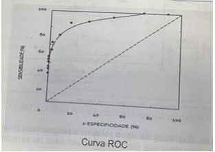
A O que mais se aproxima do quadrante superior direito.
B O que se situa no ponto médio da linha diagonal tracejada.
C O que mais se aproxima do quadrante inferior direito.
D O que mais se aproxima do quadrante superior esquerdo.
Revisar: possível letra faltando em enunciado
Questão 1295 · Medicina Preventiva · 4000182144Um recurso utilizado para estimar o potencial epidêmico de uma doença transmissível é o chamado número básico de reprodução (RO), que representa o número médio de indivíduos que poderão ser infectados a partir de um caso, desde que nenhuma medida preventiva seja estabelecida e que haja 100% de susceptibilidade populacional. A partir de uma pessoa infectante e após cinco gerações de transmissão, uma doença com R0 = 2 atingirá um número médio de casos equivalente a:
A 48
B 18
C 32
D 12
Questão 1296 · Medicina Preventiva · 4000182143Na reunião da Comissão Intergestores Regional (CIR) durante a discussão sobre o Programa Previne Brasil, os Secretários da Saúde foram estimulados a implantar em seus municípios Programas de Residência Médica em Medicina de Família e Comunidade e de Residência Multipro ssional em Saúde, na Atenção Primária à Saúde (APS) confirmando o compromisso da gestão pública com a formação de profissionais para atuação no Sistema Único de Saúde (SUS). Os gestores foram informados que aqueles que implantassem os programas de residência receberiam nanciamento federal para o custeio desta atividade. A implantação de Programas de Residência, de acordo o Programa Previne Brasil, refere-se a que componente do financiamento da APS?
A Capitação ponderada.
B Incentivo para ação estratégica.
C Pagamento por desempenho.
D Pagamento por produtividade.
Questão 1297 · Medicina Preventiva · 4000182142O gráfico abaixo foi extraído de um estudo de coorte em que os autores avaliaram o meio principal de transporte utilizado por quase 400.0000 pessoas no Reino Unido e sua associação com a incidência de algumas doenças e também sobre a mortalidade ao longo de 25 anos de seguimento. Considerando as taxas ajustadas de risco relativo e respectivos intervalos de con ança, assinale a alternativa que interpreta corretamente achados do estudo.
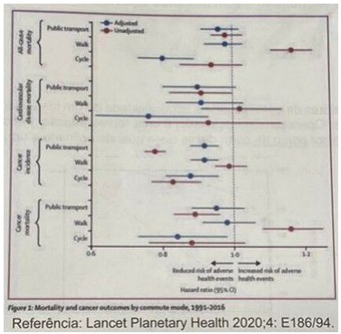
A Comparativamente àqueles que dirigiam carro, os que usavam a bicicleta tiveram menor mortalidade por câncer e doenças cardiovasculares.
B Comparativamente àqueles que dirigiam carro, os que usavam transporte público tiveram menor mortalidade por doenças cardiovasculares.
C Comparativamente àqueles que dirigiam carro, os que usavam caminhavam tiveram menor mortalidade por doenças cardiovasculares.
D Comparativamente àqueles que dirigiam carro, os que caminhavam tiveram menor incidência de câncer e mortalidade por câncer.
Questão 1298 · Medicina Preventiva · 4000181903Considerando o caso de um recém-nascido de 1800g que veio a óbito 15 minutos após o nascimento, o termo correto para definir o óbito é:
A Natimorto.
B Aborto.
C Óbito fetal.
D Abortamento.
E Óbito não fetal.
Questão 1299 · Medicina Preventiva · 4000181902Uma criança de sete anos foi mordida na mão esquerda pelo cão do seu tio. O tio da criança diz que o cão não apresenta alterações comportamentais recentes e está com todas as vacinas em dia. A menina nunca recebeu pro laxia para raiva. Segundo o protocolo mais recente de pro laxia de raiva do Ministério da Saúde (2022), a conduta inicial, além de lavagem da lesão com água e sabão, consiste em:
A Não indicar profilaxia e observar o animal por 10 dias.
B Aplicar duas doses da vacina (dias 0 e 3), e se após 10 dias o animal estiver sadio, encerrar o caso.
C Aplicar cinco doses da vacina (dias 0, 3, 7, 14 e 28) e soro (SAR ou IGHAR).
D Aplicar quatro doses da vacina (dias 0, 3, 7 e 14) e soro (SAR ou IGHAR).
E Aplicar três doses da vacina (dias 0, 3 e 7), sem soro (SAR ou IGHAR) e se após 10 dias o animal estiver sadio, encerrar o caso.
Questão 1300 · Medicina Preventiva · 4000181901Na prática clínica, visando excluir ou confirmar uma doença de forma decisiva, lançamos mão de testes múltiplos. Sobre os testes múltiplos é correto afirmar:
A Os testes em paralelo têm alta sensibilidade e alto valor preditivo positivo.
B Os testes em série têm baixa especificidade e valor preditivo positivo alto.
C Os testes em paralelo têm alto valor preditivo negativo e baixa especificidade.
D Os testes em série têm valor preditivo negativo baixo e alta sensibilidade.
E A sensibilidade e especificidade de um exame variam com a prevalência, então não há como determinar se são altas ou baixas.
Questão 1301 · Medicina Preventiva · 4000181900São consideradas doenças tropicais negligenciadas pela Organização Mundial da Saúde (OMS), exceto:
A Dengue.
B Doença de Chagas.
C Cisticercose.
D Hanseníase.
E Febre do Nilo Ocidental.
Questão 1302 · Medicina Preventiva · 4000181899Considerando o número máximo de pessoas que podem ser vinculadas a uma Equipe de Saúde da Família, segundo a Política Nacional de Atenção Básica, uma região com 21 mil habitantes deverá ter, no mínimo, quantas equipes?
A Duas.
B Três.
C Quatro.
D Cinco.
E Seis.
Questão 1303 · Medicina Preventiva · 4000181898A priorização de cirurgia reparadora de mama em pacientes com câncer de mama em relação a pacientes com gigantomastia condiz com o princípio do SUS de:
A Universalidade.
B Integralidade.
C Equidade.
D Hierarquização.
E Descentralização.
Questão 1304 · Medicina Preventiva · 4000181897A portaria GM/MS No 715, de 4 de abril de 2022, implantou no SUS a Rede de Atenção Materna e Infantil (Rami), uma atualização da proposta da Rede Cegonha. Nesta atualização, a Rami foi dividida em princípios, diretrizes e objetivos. São listadas como diretrizes da Rami, exceto:
A O respeito à diversidade cultural, étnica e racial.
B Atenção segura, de qualidade e humanizada.
C Atenção multiprofissional, com enfoque nas necessidades da mulher.
D Acesso aos diferentes níveis de complexidade da assistência materna e neonatal.
E Formação e qualificação de recursos humanos para a atenção materna e infantil.
Questão 1305 · Medicina Preventiva · 4000181895O método SOAP é uma ferramenta de trabalho muito utilizada na atenção primária, que auxilia na análise, comparação e detecção de alterações clínicas, emocionais e comportamentais. Num caso hipotético de uma paciente hipertensa que adicionamos uma terceira droga ao seu esquema antihipertensivo, em qual categoria do SOAP esta informação deve ser registrada?
A S.
B O.
C A.
D P.
E Nenhuma das alternativas anteriores.
Questão 1306 · Escolha de testes diagnósticos para rastreamento · 4000181849A realização de sorologias para o rastreamento de sí lis e HIV em mulheres com idade < 30 anos deve ser feita
A anualmente.
B semestralmente.
C imediatamente após exposição de risco para IST.
D anualmente, independentemente da faixa etária.
Questão 1307 · · 4000181832Razão de Near Miss Materno RNMM ou Razão de quase perda e Condições Potencialmente Ameaçadoras à Vida CPAV O near miss materno (NMM) é um indicador de
A mortalidade.
B morbidade.
C letalidade.
D contaminação.
Questão 1308 · · 4000181831Conceitos f undamentais óbito materno óbito por causa materna causas obstétricas diretas e causas obstétricas indiretas Leia o caso clínico. Adolescente de 17 anos provoca um aborto e chega à urgência com restos ovulares infectados. Mesmo com os procedimentos corretos, ela vai a óbito por septicemia, 35 dias depois. A morte, nesse caso, é considerada
A não materna.
B não obstétrica.
C obstétrica direta.
D obstétrica indireta.
Questão 1309 · Notif icação em Saúde do Trabalhador no Sistema da Estratégia de Vigilância Sentinela · 4000181796Lista Nacional de Notif icação Compulsória de doenças agravos e eventos de saúde pública De acordo com a portaria Nº 205, de 17 de fevereiro de 2016, do Ministério da Saúde, um dos agravos que deve ser notificado em Estratégia de Vigilância em Unidades sentinelas é a
A síndrome hemolítica urêmica.
B síndrome congênita associada à infecção pelo vírus Zika.
C intoxicação exógena.
D criptosporidiose.
Questão 1310 · Razão de verossimilhança negativa · 4000181795Analise o quadro referente a um teste diagnóstico: Qual o cálculo para se encontrar o valor da Razão de Verossimilhança Negativa?
A A/A+C dividido por B/B+D.
B C/A+C dividido por D/B+D.
C A/A+B dividido por D/C+D.
D C/C+D dividido por A/A+B.
Questão 1311 · Relação MédicoPaciente · 4000181794De acordo com o Tratado de Medicina de Família e Comunidade (Gusso et al., 2019), um dos princípios da medicina de família e comunidade é a:
A função de servir e coordenar todas as necessidades de saúde da pessoa.
B prestação de cuidado altamente personalizado.
C relação médico-pessoa, que é fundamental para o desempenho do médico de família e comunidade.
D continuidade, já que o cuidado é realizado na saúde e na doença ao longo de um determinado período.
Questão 1312 · Atributos gerais da Atenção Primária à Saúde APS · 4000181793De acordo com a Carteira de Serviços da Atenção Primária à Saúde (2020), do Ministério da Saúde, algumas características da Atenção Primária à Saúde são denominadas atributos derivados. Qual é um deles?
A Acesso de primeiro contato.
B Longitudinalidade.
C Integralidade.
D Orientação comunitária.
Questão 1313 · Determinação Social da SaúdeDeterminantes Sociais da Saúde DSS · 4000181792De acordo com a Política Nacional de Promoção da Saúde (2018), do Ministério da Saúde, os temas transversais são referências para a formulação de agendas de promoção da saúde. Qual é um deles?
A Determinantes Sociais da Saúde, equidade e respeito à diversidade.
B Articulação e cooperação intrassetorial e intersetorial.
C Rede de Atenção à Saúde.
D Participação e controle social.
Questão 1314 · Estudos de Coorte · 4000181791Alguns autores investigaram a associação entre o consumo materno de cocaína e a prematuridade. Eles iniciaram a pesquisa revisando todos os registros de nascimentos ocorridos durante o ano de 1988 para a obtenção das informações sobre o uso de cocaína pela mãe. A mulher era considerada exposta se o uso de cocaína tivesse sido indicado em algum momento nos registros do pré-natal. Posteriormente, consultaram as informações sobre a idade gestacional ao nascimento. Qual foi o delineamento desse estudo?
A Seccional.
B Ecológico.
C Caso-controle.
D Coorte.
Questão 1315 · NOB 0191 · 4000181790O processo de implantação do Sistema Único de Saúde (SUS) no Brasil foi orientado pelas Normas Operacionais. A Norma Operacional Básica 01/91,
A definiu uma parte fixa e uma parte variável do novo Piso de Atenção Básica.
B constituiu as Comissões Intergestores Bipartite e Tripartite.
C centralizou a gestão do SUS no nível federal.
D instituiu o Plano Diretor de Regionalização para ordenar a regionalização.
Questão 1316 · Medicina Preventiva · 4000181788As Curvas de Mortalidade Proporcional são construídas a partir da distribuição proporcional dos óbitos por grupos etários com relação ao total de óbitos e exibem um determinado formato gráfico que indicará o nível de saúde da área avaliada. Segundo a classificação de Nelson Moraes, a do tipo III. está associada ao nível de saúde
A baixo.
B regular.
C bom.
D elevado.
Questão 1317 · NNT · 4000181787Analise os resultados de um ensaio clínico no quadro: De acordo com os cálculos das medidas de associação/ efeitos de intervenção,
A a vacina é um fator de risco para a doença.
B o grupo de vacinados teve uma redução de 80% da doença quando comparado ao grupo de não vacinados.
C a vacina diminuiu o número absoluto de casos de doença de 20% para 2% (eliminação de 18% do evento).
D é necessário vacinar aproximadamente 8 pacientes (8,3) para se evitar um caso da doença.
Questão 1318 · Genograma · 4000181786Analise o genograma: De acordo com o Caderno de Atenção Básica número 34 do Ministério da Saúde, a interpretação é:
A divórcio.
B violência física.
C morando junto.
D abuso sexual.
Questão 1319 · Estimativa e Parâmetro · 4000181785Avaliar se existe associação entre duas características quantitativas é objetivo de muitos estudos nas ciências da saúde. Um médico deseja avaliar se a pressão arterial está correlacionada à idade das pessoas. Para isso, ele deve utilizar
A a correlação linear simples.
B o teste Qui-Quadrado.
C a correlação curva de Chiari.
D o teste exato de Fisher.
Questão 1320 · Doenças crônicas não transmissíveis · 4000181784De acordo com o Plano de Ações Estratégicas para o Enfrentamento das Doenças Crônicas e Agravos Não Transmissíveis no Brasil, 2021 – 2030, do Ministério da Saúde, a
A região Norte do Brasil apresentou, entre 2000 e 2019, as maiores taxas de mortalidade por suicídio em todo o período analisado.
B maior mortalidade proporcional pelo suicídio no Brasil, entre 2000 e 2019, ocorreu na faixa etária de 40 a 59 anos.
C redução das taxas de suicídio no Brasil, entre 2000 e 2019, foi da ordem de 42,6%.
D mortalidade por suicídio, no Brasil, foi maior para o sexo masculino entre 2000 e 2019.
Questão 1321 · Incidência acumulada x Densidade de Incidência · 4000181783Os indicadores de acidentes de trabalho geram indícios para a determinação de níveis de periculosidade por área pro ssional e são relevantes para a avaliação das doenças pro ssionais. Qual, dentre eles, é o mais acurado para medir a ocorrência de acidentes de trabalho, pois leva em conta o número de horas/homem trabalhadas?
A Densidade de incidência.
B Incidência acumulada.
C Prevalência pontual.
D Prevalência no período.
Questão 1322 · Lista Nacional de Notif icação Compulsória de doenças agravos e eventos de saúde pública · 4000181782Leia o caso clínico. Um médico da atenção primária recebe um paciente com um ano de idade que apresenta quadro clínico que se encaixa, de acordo com o Ministério da Saúde, na seguinte definição de caso suspeito: “todo indivíduo que, independentemente do estado vacinal, apresente tosse de qualquer tipo, há 14 dias ou mais, associada a um ou mais dos seguintes sintomas: tosse paroxística; guincho inspiratório; vômitos pós tosse”. Nesse caso, qual deve ser a conduta médica?
A Há necessidade de notificar o caso somente se o paciente for a óbito.
B Há necessidade de notificar o caso em até 24 horas (notificação imediata).
C Há necessidade de notificar o caso em até 7 dias (notificação semanal).
D Não há necessidade de notificar o caso.
Questão 1323 · Declaração de óbito DO Atestado de óbito · 4000181781De acordo com a publicação do Ministério da Saúde intitulada Declaração de Óbito – Manual de Instruções para Preenchimento (2022), o médico
A pode cobrar pela emissão da declaração de óbito, desde que tenha verificado pessoalmente a morte.
B pode adquirir o formulário da declaração de óbito na empresa funerária mais próxima do serviço de saúde onde atua.
C deve preencher declaração de óbito com letra de forma e utilizando caneta esferográfica azul ou preta, dando preferência à cor azul.
D deve emitir rotineiramente a declaração de óbito fetal em gestação com duração de 15 semanas ou peso fetal menor que 500 gramas.
Questão 1324 · Medicina Preventiva · 4000181752Foi realizado um estudo sobre a eficácia de uma vacina contra a Covid-19. Os resultados foram os seguintes: De acordo com os dados acima, a eficácia desta vacina contra Covid-19 a partir da segunda dose foi de:
A 62,5%
B 70%
C 45,5%
D 37,8%
Questão 1325 · Medicina Preventiva · 4000181750Considere o caso abaixo para responder à questão Uma queixa frequente de pacientes que tiveram Covid-19 é de uma alteração cognitiva leve, caracterizada principalmente por di culdade de lembrar nome de objetos e detalhes de conversas. Pretendendo investigar se existe uma relação entre Covid-19 e essa alteração tardia, um grupo de médicos de um hospital resolveu convocar os pacientes que procuram este serviço com suspeita de Covid-19 no último. Conseguiram contato com 2000 pacientes. Destes, 925 apresentaram testes positivos para Covid-19 e, entre estes, 75 referiram alguma alteração cognitiva. Entre os 1075 com teste negativo, 12 referiram alteração cognitiva. A partir dos achados descritos e considerando que estes foram estatisticamente significativos pode-se concluir que:
A pacientes sem Covid-19 apresentam 78,2% menor probabilidade de apresentarem a alteração cognitiva
B para cada paciente que desenvolva alteração cognitiva, existirão 6,25 que não a desenvolverão.
C pacientes com Covid-19 apresentam 7,26 vezes maior probabilidade de apresentarem a alteração cognitiva.
D a Covid-19 é responsável por 6,78% dos casos de alteração cognitiva na população.
Questão 1326 · Medicina Preventiva · 4000181749Considere o caso abaixo para responder à questão Uma queixa frequente de pacientes que tiveram Covid-19 é de uma alteração cognitiva leve, caracterizada principalmente por di culdade de lembrar nome de objetos e detalhes de conversas. Pretendendo investigar se existe uma relação entre Covid-19 e essa alteração tardia, um grupo de médicos de um hospital resolveu convocar os pacientes que procuram este serviço com suspeita de Covid-19 no último. Conseguiram contato com 2000 pacientes. Destes, 925 apresentaram testes positivos para Covid-19 e, entre estes, 75 referiram alguma alteração cognitiva. Entre os 1075 com teste negativo, 12 referiram alteração cognitiva. O tipo de estudo descrito é:
A Coorte.
B Transversal.
C Ecológico.
D Caso-controle
Questão 1327 · Medicina Preventiva · 4000181747Adolescente de 15 anos, boa aluna, comparece à Unidade Básica de Saúde (UBS), com sua amiga de mesma idade, porque acha que está grávida. É recebida pelo pro ssional de saúde, que a considera com bom desenvolvimento psíquico, orientada e muito preocupada com o que pode acontecer, questionando o médico sobre como será sua vida caso esteja grávida. Entre as condutas seguintes, a mais adequada para este caso é:
A atendimento pela enfermeira, realizar o teste de gravidez e se positivo, convocar os pais.
B não atender, convocar os pais ou responsável legal e encaminhar para ginecologista.
C não atender e solicitar que retorne com um responsável para poder realizar os testes e iniciar o pré- natal.
D atendimento pelo Médico de Família da UBS e dependendo do teste de gravidez iniciar pré-natal.
Questão 1328 · Transtornos Somáticos · Método Clínico Centrado na Pessoa · Psiquiatria · 4000181745Fábio, 19 anos, homem transgênero, negro, estudante cotista de administração em uma faculdade particular. Acompanhado pela mãe, vai à consulta em UBS com Médico de Família e Comunidade (MFC) por queixa de dor abdominal intensa em crises, há 6 meses. Procurou a emergência 3 vezes neste período e foi medicado com soro e analgésicos endovenosos com melhora parcial dos sintomas. Refere dor em pontada em regiões diferentes do abdome, acompanhadas de náuseas. Nega febre, vômitos, alterações urinárias. Realizou exames de sangue, ultrassom abdominal e exames de urina sem alterações. Está muito preocupado, com medo de ter alguma doença grave. Sente-se culpado porque sua mãe está preocupada e perde o sono por isso. Não tem histórico pessoal de doenças, seus pais são vivos e saudáveis e não tem irmãos. O médico de família investiga alimentação, hábitos, prática de exercícios físicos e percebe que desde que começou a faculdade, há 9 meses, parou de ter hábitos saudáveis, embora praticasse corrida e futebol antes. O paciente considera que deveria estar feliz na faculdade, que era um sonho realizado poder estudar, mas tem se sentido rejeitado pelos colegas e não sabe se vai conseguir continuar, refere tristeza maior parte do tempo. Exame físico normal. Entre os seguintes planos de tratamento e seguimento o melhor a ser oferecido pelo MFC é:
A Explicar ao paciente que seus sintomas são característicos de transtorno mental causado pelas alterações em sua vida. Prescrever antidepressivo e encaminhar o paciente para seguimento com o psiquiatra da UBS.
B Utilizar o método clínico centrado na pessoa para compreender os sentimentos relacionados ao sofrimento do paciente e prejuízo em suas funções. Prescrever analgésico. Seguir com equipe multiprofissional na UBS.
C Repetir os exames laboratoriais e solicitar novos exames de imagem caso aparecerem sinais de alerta com o objetivo de avaliar surgimento de lesões e para tranquilizar o paciente. Seguir com equipe multiprofissional na UBS.
D Explicar para o paciente e à sua mãe que a ausência de alterações no exame físico e nos exames suplementares indicam ausência de doenças físicas. Prescrever analgésicos e encaminhar para avaliação com psiquiatra.
Questão 1329 · Princípios da Medicina de Família e Comunidade · Decisão de tratamento · 4000181679Paciente, 50 anos, procura atendimento em UBS próxima a sua residência com queixa de mal-estar e é acolhido pela equipe de enfermagem, sendo aferida pressão arterial de 160x100mmHg. Nesse caso, o médico da unidade deve
A realizar o atendimento, prescrever e solicitar exames e retorno para acompanhamento.
B solicitar que o paciente agende consulta após ter encaminhamento do pronto atendimento.
C realizar atendimento, encaminhá-lo ao cardiologista e orientar que o seguimento será no serviço secundário.
D realizar atendimento e medicar a situação atual, sem criar vínculo de seguimento.
E encaminhar o paciente ao serviço de urgência e emergência.
Questão 1330 · Razão de Mortalidade Materna tardia · 4000181678Gestante, 27 anos, com parto prematuro de 34 semanas gestacionais. Após alta para casa, evolui com infecção uterina, sepse e tem óbito confirmado 60 dias após o parto. Diante do exposto, qual é o tipo de morte?
A Morte materna direta.
B Morte obstétrica direta.
C Morte não materna, pois ocorreu 60 dias após o parto.
D Morte materna tardia.
E Morte pós-materna.
Questão 1331 · Sistema de Inf ormação de Agravos de Notif icação SINAN · 4000181677Intoxicação por Carbamatos e Organof osf orados Paulo, 41 anos, é trabalhador rural e procura atendimento com queixa de sudorese, sialorreia e vômitos. Relata ter trabalhado aplicando Folidol na sua lavoura. Ao exame, apresenta miose e confusão mental. Qual é o provável diagnóstico e o órgão a ser notificado?
A Saturnismo / SINAN.
B Intoxicação por organofosforado / SINASC.
C Intoxicação por organofosforado / SINAN.
D Intoxicação por cromo / SINASC.
E Saturnismo / SISVAN.
Questão 1332 · Rastreamento · Rastreamento · Rastreamento mamográf ico · 4000181676Paciente, sexo feminino, casada, 53 anos e obesa, procura atendimento médico em UBS pela primeira vez e relata nunca ter realizado exames de rotina. Sobre o caso, qual conduta NÃO deve ser tomada?
A Solicitar TC de abdome.
B Solicitar hemograma, glicemia de jejum e lipidograma.
C Solicitar/realizar citologia oncótica.
D Solicitar mamografia.
E Verificar situação vacinal e atualizar se necessário.
Questão 1333 · Princípios bioéticos f undamentais ou principialistas ou principialismo Beauchamp e Childress · 4000181675Paulo, 67 anos, engenheiro civil, casado e previamente hígido, recebeu diagnóstico de adenocarcinoma de cólon e, após toda adequada explicação do médico assistente sobre o caso, opta por não realizar o tratamento. Qual princípio ético deve ser respeitado nesse caso?
A Não maleficência.
B Justiça.
C Beneficência.
D Tolerância.
E Autonomia.
Questão 1334 · Sensibilidade · 4000181674Marcos, 22 anos, HIV positivo, participou de um estudo sobre testes rápidos para HIV e seu resultado foi o único negativo entre as 50 pessoas soropositivas do estudo, com um total de 100 participantes. Nesse caso, qual foi a sensibilidade do teste?
A 96%.
B 99%.
C 49%.
D 98%.
E 50%.
Questão 1335 · Silicose · Pneumoconiose devida à Poeira de Sílica Silicose · 4000181672M.F.J., 49 anos, procura atendimento por queixa de dispneia progressiva e nega tabagismo. Trabalha em vidraçaria desde os 30 anos de idade. O exame de imagem do tórax apresenta in ltrado micronodular bilateral com predomínio nas zonas pulmonares superiores, poupando os seios costofrênicos. Qual é o diagnóstico mais provável para esse caso?
A DPOC.
B Asbestose.
C Silicose.
D Asma.
E Pneumopatia por berílio.
Questão 1336 · Classif icação de risco · 4000181671Lista Nacional de Notif icação Compulsória de doenças agravos e eventos de saúde pública M.J.F., 42 anos, procura UBS com queixa de febre, mialgia, cefaleia e dor retrorbital há 2 dias. Relata que, na sua rua, ocorreram vários casos semelhantes nesta semana. Após diagnosticar o caso de dengue e propor tratamento, cabe aos profissionais da UBS
A notificar imediatamente o caso.
B notificar semanalmente os casos de dengue e propor grupos de orientação para prevenção da doença.
C tratar caso a caso e verificar situação vacinal dos doentes.
D notificar imediatamente para fins informativos, sem interesse em prevenção e promoção de saúde.
E notificar semanalmente os casos de dengue, sem interesse em prevenção ou promoção de saúde.
Questão 1337 · Conceitos gerais · 4000181670J.N.S., 37 anos, trabalhador da construção civil, sofreu queda de andaime a 2 metros de altura, resultando em fratura fechada de tíbia direita. Sobre o caso, assinale a alternativa correta.
A Não é considerado acidente de trabalho.
B Trata-se de um acidente de trabalho grave, e a CAT (Comunicação de Acidente de Trabalho) deve ser preenchida em 4 vias.
C Trata-se de um acidente típico, e a CAT deve ser preenchida em 2 vias.
D Trata-se de um acidente de trajeto, e não deve ser preenchida CAT.
E Trata-se de um acidente de trabalho típico, e a CAT é de responsabilidade do médico assistente.
Questão 1338 · Dif erenças entre Incidência e Prevalência · Epidemias · Classif icação de casos · 4000181669Relacione as colunas e assinale a alternativa com a sequência correta. 1. Endemia. 2. Epidemia. 3. Pandemia. 4. Surto epidêmico. 5. Incidência. 6. Prevalência. ( ) Medida de frequência dos novos casos de doença na população ao longo de um período de tempo. ( ) Ocorrência mais do que o esperado de número de casos de determinada doença ou uma condição crônica em uma grande área de abrangência (países ou continentes). ( ) Doença ou condição crônica relativamente constante em uma área geográ ca, dentro dos limites esperados, por um período de tempo ilimitado. ( ) Frequência de casos existentes de determinada doença, em determinada população, em um dado momento. ( ) Concentração de casos de uma mesma doença em determinado local e época, claramente em excesso ao que seria esperado. ( ) Ocorrência epidêmica restrita a um espaço extremamente delimitado, como uma escola, quartel, edifício ou bairro.
A 5 – 3 – 1 – 6 – 2 – 4.
B 5 – 2 – 1 – 3 – 6 – 4.
C 6 – 4 – 2 – 1 – 5 – 3.
D 6 – 2 – 4 – 1 – 3 – 5.
E 3 – 1 – 4 – 5 – 2 – 6.
Revisar: possível letra faltando em enunciado
Questão 1339 · Estudos de Coorte · 4000181660Um grupo de pesquisadores pretende avaliar a associação entre tabagismo e episódios de pneumonia bacteriana entre adultos em certa comunidade. Para isso, decidem acompanhar toda a população adulta de uma pequena cidade e registrar todos os casos de pneumonia bacteriana ao longo de um ano. A informação sobre a exposição ao tabaco será obtida através de um questionário, o qual será enviado por correio antes do início do estudo, aos seis meses de acompanhamento e logo após o nal do estudo. Com base no exposto, é correto afirmar que se trata de um estudo
A observacional, prospectivo de coorte.
B experimental, prospectivo de coorte.
C experimental, retrospectivo de coorte.
D observacional, retrospectivo de caso-controle.
E observacional, de coorte transversal.
Questão 1340 · Medicina Preventiva · 4000181579O artigo Systematic review and meta-analysis of ivermectin for treatment of COVID-19: evidence beyond the hype publicado na BMC Infectious Diseases, em julho de 2022 apresenta os efeitos da ivermectina em pacientes com Covid-19. Os resultados mostram um risco relativo (RR) de 0,76 (intervalo de con ança (IC 95%): 0,52-1,11) para mortalidade por todas as causas e RR = 0,74 (IC 95%: 0,48-1,16) para ventilação mecânica. Assim, podemos afirmar que
A os desfechos avaliados não são passíveis de mensuração objetiva para Covid-19.
B os intervalos de confiança mostram que os resultados não têm significância estatística.
C nesse estudo houve redução de mortalidade de 76% e de ventilação mecânica de 74%.
D houve aumento de 24% no risco de mortalidade e de 26% no risco de ventilação mecânica.
E esse desenho de estudo (revisão sistemática) não é o adequado para avaliar intervenções farmacológicas.
Questão 1341 · Medicina Preventiva · 4000181576A prática na Atenção Primária à Saúde se apoia em atributos fundamentais. Um deles diz respeito ao acompanhamento, ao longo do tempo, dos indivíduos e suas famílias, numa relação de con ança pessoal com médico e equipe de saúde, que se baseia no atributo da
A integralidade.
B porta de entrada.
C longitudinalidade.
D valorização cultural.
E coordenação de cuidados.
Questão 1342 · Medicina Preventiva · 4000181575Dona Tauane, de 72 anos, nulípara, está assintomática, não toma nenhuma medicação, vem à Unidade de Saúde porque deseja fazer exames de checkup. Tem estado preocupada com sua saúde, pois teve alguns familiares que morreram recentemente por complicações da COVID-19. Com relação ao controle periódico de saúde baseado nas evidências científicas, é correto afirmar que
A essa paciente deverá fazer um MAPA (monitorização ambulatorial da pressão arterial) para afastar ou fazer diagnóstico de hipertensão arterial.
B a mamografia de rastreamento não está indicada nessa idade, por ser nulípara e estar assintomática.
C essa paciente deve realizar uma ecografia abdominal para rastreamento de aneurisma de aorta abdominal.
D não está indicado exame de Papanicolau (citologia oncótica de colo de útero) para essa idade
E nessa faixa etária, deverá ser solicitado ecodoppler de carótidas para afastar estenose.
Questão 1343 · Medicina Preventiva · 4000181573Considerando a Lei nº 6.259, de 30 de outubro de 1975, que dispõe sobre a organização das ações de Vigilância Epidemiológica e sobre o Programa Nacional de Imunizações, assinale a alternativa correta quanto às normas de notificação compulsória de doenças.
A Apenas acidentes de trabalho com material biológico deverão ser notificados de maneira compulsória.
B Todos os eventos adversos pós vacinação deverão ser notificados e reportados à Agência Nacional de Vigilância Sanitária (Anvisa).
C Todas as hepatites virais deverão ser notificadas no momento do diagnóstico, exceto Hepatite A, por não ser infecção sexualmente transmissível.
D Casos de violência sexual deverão ser notificados apenas se confirmados por exames realizados pelos órgãos competentes. Essas notificações são de caráter obrigatoriamente sigiloso.
E Toda tentativa de suicídio deverá ser notificada ao Sinam (Sistema de Informação de Agravos de Notificação) imediatamente, com o preenchimento em ficha de notificação de agravo de violência interpessoal por lesão autoprovocada.
Questão 1344 · Medicina Preventiva · 4000181569O movimento sanitário brasileiro que deu origem às ideias que conformaram a Reforma Sanitária que resultou na criação do Sistema Único de Saúde apresentava as seguintes características. I. Filiou-se conceitualmente ao sanitarismo desenvolvimentista. II. Partiu da abordagem histórico-estrutural dos problemas de saúde. III. Envolveu-se com lutas que ultrapassavam a questão da saúde. IV. Propôs um sistema público de saúde complementado e suplementado pelo setor privado. Considere se as seguintes afirmativas são verdadeiras (V) ou falsas (F) e marque a alternativa correta.
A V, V, F, V.
B V, F, F, V.
C F, V, V, F.
D F, F, F, F.
E V, V, V, V.
Questão 1345 · Medicina Preventiva · 4000181568“A tentativa mais conhecida e abrangente de construir um modelo de organização da intervenção humana sobre o processo saúde-doença foi feita por Leavell e Clark (1976), ...” Segundo esse modelo, avalie as asserções a seguir e a relação causal proposta entre elas. I. – O atendimento aos pacientes portadores de sequelas respiratórias provocadas pela COVID-19 é considerado uma ação de prevenção quaternária. PORQUE II. – Leavell e Clark colocam a reabilitação como um nível mais tardio de prevenção dentro do período de patogênese. Acerca dessas asserções, assinale a opção correta.
A As asserções I e II são proposições verdadeiras, e a segunda é uma justificativa da primeira.
B As asserções I e II são proposições verdadeiras, e a segunda não é uma justificativa da primeira.
C A asserção I é uma proposição verdadeira e a asserção II é uma proposição falsa.
D A asserção I é uma proposição falsa e a asserção II é uma proposição verdadeira.
E As asserções I e II são proposições falsas.
Questão 1346 · Medicina Preventiva · 4000181567O modelo assistencial em saúde no Brasil no período de 1964 a 1985 caracterizou-se por
A municipalização dos serviços de saúde.
B criação de sistema nacional de saúde universal.
C estímulo a criação de um complexo médico-industrial.
D expansão da rede básica de saúde na periferia das grandes cidades.
E ênfase à remuneração dos serviços por pagamentos direto (out-of-pocket)
Questão 1347 · Medicina Preventiva · 4000181566A 3ª Conferência Nacional de Saúde, ocorrida em dezembro de 1963 teve a presença do então Presidente da República João Goulart. O Presidente discursou na sessão inaugural a rmando que os fatores que levam à saúde só podiam “ser conseguidos do desenvolvimento econômico da nação e da distribuição equitativa de suas riquezas”. Essas ideias expressas pelo Presidente correspondem diretamente ao pensamento em saúde de
A Paula Souza.
B Celso Furtado.
C Wilson Fadul.
D Mário Magalhães.
E Sérgio Arouca.
Questão 1348 · Medicina Preventiva · 4000181565Em 2022 o Brasil enfrentou desabastecimento de medicamentos utilizados em situações preva lentes o que levou esse tema a ser debatido em reunião do Conselho Nacional de Saúde conforme noticiado pelo Correio Braziliense em sua edição de 22 de julho. Podem ter concorrido para esse desabastecimento I. – a fragilidade da base produtiva e tecnológica brasileira em saúde. II. – o des nanciamento do SUS após a Emenda Constitucional 95/2016, que congelou os gastos públicos por 20 anos. III. – a falência dos Sistemas de Informação do SUS. IV. – o modelo assistencial adotado no Brasil que privilegia as ações de recuperação da saúde em detrimento da promoção e prevenção. É correto apenas o que se afirma em
A I e II apenas.
B I e III apenas.
C II e III apenas.
D II e IV apenas.
E III e IV apenas.
Questão 1349 · Medicina Preventiva · 4000181564Sobre a Gestão da Clínica na Atenção Primária a Saúde é correto afirmar que
A com a pressão assistencial elevada, a demora permitida pode atrasar a realização de diagnósticos, e portanto, deve ser evitada.
B a maioria dos pacientes difíceis que provocam incômodo no profissional são hiperutilizadores e a maneira adequada de lidar com eles é restringir acesso.
C a unidade de APS deve focar somente no cuidado de condições crônicas, deixando as condições agudas para o atendimento de urgência e emergência.
D a agenda deve ser organizada através de atividades programáticas, pois se tem um melhor controle dos processos e maior acesso por parte da população.
E para um bom gerenciamento da clínica é importante conhecer a demanda e a agenda deve ajudar na organização da demanda e não limitá-la.
Questão 1350 · Medicina Preventiva · 4000181563A remuneração do trabalho médico recompensa o esforço realizado e fornece um estímulo para continuar a realizá-lo. Sobre os modelos de remuneração é correto afirmar que
A o pagamento por mensuração de desfechos incentiva a qualidade e promove a realização da atenção à saúde de forma mais adequada.
B no assalariamento existe um pagamento fixo em certo período de tempo o que estimula os médicos a prestar cuidados de elevada qualidade.
C no pagamento por capitação o prestador de serviço compartilha risco, e tende a restringir acesso a serviços, melhorando a qualidade assistencial.
D o pagamento por ato (por produção) incentiva a prestação de mais serviços de saúde que também leva a maior qualidade assistencial e segurança do paciente.
E a mensuração de indicadores de desempenho e incentivos relacionados são os únicos instrumentos de melhoria da qualidade disponíveis no sistema de saúde.
Questão 1351 · Medicina Preventiva · 4000181562Sobre o uso de indicadores de saúde na Atenção Primária a Saúde é correto afirmar que
A os indicadores de processos medem os efeitos da assistência a saúde oferecida aos pacientes e a população.
B os indicadores de resultado assistenciais medem os recursos materiais, instalações e equipamentos, assim como os recursos humanos.
C a mensuração dos indicadores de saúde refletem a qualidade da assistência e devem ser medidos, ainda que a obtenção dos dados seja muito custosa.
D o componente básico do indicador de saúde é a medida qualitativa ou quantitativa que permite classificar as características e resultados dos processos de assistência à saúde.
E os indicadores de saúde devem refletir certos grupos populacionais em detrimento das características dos cuidados primários como o acesso, continuidade e a abrangência do cuidado.
Questão 1352 · Medicina Preventiva · 4000181561Sobre os testes diagnósticos é correto afirmar que
A os testes diagnósticos apresentam baixa utilidade para se estimar o prognóstico de uma doença.
B os valores preditivo positivo e o preditivo negativo dependem da probabilidade pré-teste da doença para dada pessoa.
C no rastreamento de doenças, deve ser utilizado um teste altamente sensível que tendo um resultado positivo, confirma o diagnóstico.
D no rastreamento de doenças deve ser utilizado um teste altamente específico, para a identificação da doença na população testada.
E exames com razões de verossimilhança positiva entre 1 e 3 adicionam grandes mudanças da probabilidade pré teste para a pós teste.
Questão 1353 · Medicina Preventiva · 4000181526Paciente feminina de 78 anos é encaminhada ao pronto socorro por quadro de rebaixamento do nível de consciência e insu ciência respiratória. Encontra-se em pós operatório tardio de colectomia esquerda por adenocarcinoma e no momento está realizando quimioterapia. O esposo, de 82 anos, relata que a paciente deixou manifestado expressamente o desejo de não ser submetida a medidas clínicas invasivas, apresentando um documento registrado em cartório com este teor. A Resolução CFM 1995/2012 dispõe sobre esta situação, as diretivas antecipadas de vontade dos pacientes. Sobre este caso, analise as assertivas abaixo. I) Este documento somente possui validade quando emitido por uma instituição governamental e chancelado por todos os membros da família. II) As diretivas antecipadas do paciente prevalecerão sobre qualquer outro parecer não médico, inclusive os desejos de familiares. III) O artigo 32 do Código de Ética Médica expressa ser vedado ao médico deixar de usar todos os meios disponíveis de diagnóstico e tratamento de doenças, cienti camente reconhecidos e ao seu alcance, em favor do paciente, portanto o médico assistente deve realizar medidas clínicas invasivas se assim achar necessário. IV) O esposo, por ter mais de 80 anos, não pode, juridicamente, ser o representante legal da paciente e, portanto, o documento não tem validade. Estão corretas as assertivas
A apenas a II.
B apenas a III.
C apenas as I e II.
D apenas as III e IV.
E todas estão corretas.
Questão 1354 · Medicina Preventiva · 4000181409Assinale a alternativa que contempla os objetivos principais do Pacto pela Saúde, de 2006.
A Promover reformas institucionais, com pacto entre as três esferas (União, Estados e Municípios), para inovar processos e instrumentos de gestão da atenção básica à saúde e alcançar maior eficiência e qualidade no SUS.
B Garantir a universalidade do direito à saúde, oficializado na Constituição Federal de 1988 e a criação do Sistema Único de Saúde (SUS).
C Firmar compromisso entre os gestores do SUS em torno de prioridades básicas que apresentam impacto sobre a situação de saúde da população brasileira.
D Consolidar e qualificar a Estratégia Saúde da Família (ESF) como modelo de atenção básica à saúde e centro ordenador das redes de atenção à saúde no SUS.
Questão 1355 · Medicina Preventiva · 4000181408Considere o texto abaixo e, em seguida, responda à questão: “As linhas da prevenção quinquenária foram apresentadas em associação com o mote “prevenindo o dano no paciente, atuando no médico”, introduzindo um novo nível de medidas preventivas que [...] visa à melhoria da qualidade dos cuidados e da saúde nos pacientes, porém com foco no cuidador, de onde, efetivamente, emergem todos os cuidados.” - Santos JA. Resgate das relações abusivas em que nos encontramos: uma questão de prevenção quinquenária. Rev Bras Med Fam Comunidade. 2019;14(41):1847. https://doi.org/10.5712/rbmfc14(41)1847. Sobre a Prevenção Quinquenária, assinale a alternativa verdadeira.
A Estabelece postura médica cautelosa em relação a intervenções em saúde, evitando sobremedicamentalização
B Concentra-se em questões remuneratórias, sugerindo expectativas de ganho compatíveis com os respectivos campos da atuação médica.
C Ramifica-se em um conjunto de estratégias e intervenções de maneira a desconstruir o ambiente adoecedor de formação e da prática médica e a prevenir o adoecimento do profissional de saúde como forma de prevenção a iatrogenias.
D A Prevenção Quinquenária surge como importante marco regulatório na profissão médica, a partir da mobilização de associações e entidades não governamentais ao redor do mundo. Fruto de uma construção coletiva, dá ferramentas para entidades médicas reivindicarem condições dignas para a formação e prática médica.
Questão 1356 · Medicina Preventiva · 4000181407Sobre a abordagem da Violência Doméstica Contra a Mulher (VDCM) no contexto da Atenção Primária, assinale a alternativa correta.
A A notificação tem caráter compulsório às autoridades sanitárias e a equipe de saúde deverá obrigatoriamente comunicar à autoridade policial no prazo de 24 (vinte e quatro) horas.
B A notificação tem caráter compulsório devendo ser enviada para as autoridades sanitárias em até 24 horas e fica à critério da vítima realizar denúncia junto a autoridade policial.
C A notificação tem caráter facultativo, sendo o profissional de saúde obrigado a ter a autorização da vítima para prosseguir com a notificação de agravo.
D O Ciclo da Violência descrito por Lenore Walker é composto por quatro fases: negação, aumento da tensão, arrependimento e lua-de-mel.
Questão 1357 · Medicina Preventiva · 4000181402Uma agente de saúde procura você trazendo a demanda de uma família. Ela relata que Dona Benzarina, de 102 anos, recebeu alta do hospital municipal “para morrer em casa, pois não tinham mais o que fazer por ela”. A equipe da UBS de referência não recebeu comunicação do Serviço Social do referido hospital. A família está muito angustiada, pois a paciente “está agonizando” e por isso solicita uma visita domiciliar. Uma semana após seu segundo atendimento à Dona Benzarina, você está em sua UBS realizando atendimentos de pré-natal quando é chamado às pressas pela agente de saúde da microárea de Dona Benzarina para fazer uma visita a ela. Ao chegar ao domicílio, você percebe que a paciente está suja de vômito e em franca insu ciência respiratória. A família refere que ela apresentou um episódio de vômito há aproximadamente uma hora e logo então evoluiu com desconforto respiratório intenso. Tão logo você se aproxima do leito da paciente, ela evolui com parada cardiorrespiratória e óbito. Após consolar a família, você se prepara para preencher a declaração de óbito. Assinale a alternativa que traz o preenchimento adequado da declaração de óbito, conforme as informações fornecidas.
A Parte I: a – Câncer de mama; b – Inalação de conteúdo gástrico; c – Insuficiência respiratória aguda; Parte II: parada cardíaca.
B Parte I: a – Parada cardíaca; b – Insuficiência respiratória aguda; c – Inalação de conteúdo gástrico; Parte II: neoplasia maligna da mama.
C Parte I: a – Parada cardíaca; b – Insuficiência respiratória aguda; c – Inalação de conteúdo gástrico; d – neoplasia maligna da mana; Parte II: (sem preenchimento).
D Parte I: a – Insuficiência respiratória aguda; b – Inalação de conteúdo gástrico; c – (sem preenchimento); d – neoplasia maligna da mama; Parte II: (sem preenchimento).
Questão 1358 · Medicina Preventiva · 4000181401Uma agente de saúde procura você trazendo a demanda de uma família. Ela relata que Dona Benzarina, de 102 anos, recebeu alta do hospital municipal “para morrer em casa, pois não tinham mais o que fazer por ela”. A equipe da UBS de referência não recebeu comunicação do Serviço Social do referido hospital. A família está muito angustiada, pois a paciente “está agonizando” e por isso solicita uma visita domiciliar. Dois dias após a primeira visita domiciliar à Dona Benzarina, você retorna para fazer uma reavaliação. Ela está consciente, aceita a oferta de dieta via oral e está sem dor, mas se queixa de distensão abdominal e de constipação desde a introdução da Mor na. O exame físico abdominal confirma a distensão do abdomen e não há fecaloma ao toque retal. Assinale a alternativa que corresponde à conduta inicial no manejo da constipação por opioide.
A Iniciar laxativo osmótico.
B Iniciar laxativo emoliente.
C Iniciar agente formador de massa.
D Orientar aumento de ingesta hídrica e mudança de decúbito.
Questão 1359 · Medicina Preventiva · 4000181400Uma agente de saúde procura você trazendo a demanda de uma família. Ela relata que Dona Benzarina, de 102 anos, recebeu alta do hospital municipal “para morrer em casa, pois não tinham mais o que fazer por ela”. A equipe da UBS de referência não recebeu comunicação do Serviço Social do referido hospital. A família está muito angustiada, pois a paciente “está agonizando” e por isso solicita uma visita domiciliar. Durante a visita domiciliar à Dona Benzarina, a Dra. Tatiana tem acesso ao relatório de alta, que indica neoplasia maligna de mama localmente avançada e com metástase óssea de arcos costais. Há Tramadol prescrito, em dosagem máxima de 400mg/dia. Em exame físico, a paciente se encontra em estado geral regular, emagrecida, consciente, orientada e com fasceis de dor. A família refere estar administrando a prescrição corretamente, mas a paciente refere dor intensa. Assinale a alternativa que corresponde à conduta correta diante do sintoma de dor.
A Associar Paracetamol com Codeína ao Tramadol.
B Substituir Tramadol por Morfina.
C Associar Dipirona ao Tramadol.
D Associar Morfina ao Tramadol.
Questão 1360 · Medicina Preventiva · 4000181399Uma agente de saúde procura você trazendo a demanda de uma família. Ela relata que Dona Benzarina, de 102 anos, recebeu alta do hospital municipal “para morrer em casa, pois não tinham mais o que fazer por ela”. A equipe da UBS de referência não recebeu comunicação do Serviço Social do referido hospital. A família está muito angustiada, pois a paciente “está agonizando” e por isso solicita uma visita domiciliar. Assinale a alternativa que traz os termos na ordem que preenche corretamente as lacunas do texto abaixo. “A visita domiciliar é um exemplo prático do Princípio Ordinário do SUS da ________. Ao desospitalizar a paciente sem informar a equipe da APS, não houve observância ao Atributo Nuclear da Atenção Primária da __________. Ao prestar assistência a Dona Benzarina em um contexto de terminalidade, a equipe da ESF está praticando o Atributo Nuclear da Atenção Primária da ________. Diante da nitude, cuidar de Dona Benzarina significa ter sensibilidade a aspectos bioéticos, técnicos, religiosos e culturais: assim, coloca-se em prática o Atributo Nuclear da Atenção Primária da _________.
A Equidade / Coordenação / Longitudinalidade / Integralidade.
B Integralidade / Coordenação / Longidutinalidade / Integralidade.
C Universalidade / Coordenação / Longitudinalidade / Integralidade.
D Territorialização / Integralidade / Coordenação / Longitudinalidade.
Questão 1361 · Medicina Preventiva · 4000181398A aplicação de testes para rastreamento de condições de saúde em grupos populacionais é uma ferramenta para a detecção precoce de agravos. Quando realizamos um rastreamento, qual a característica do teste que nos permite afastar a hipótese de doença em indivíduos com resultado negativo?
A Acurácia.
B Valor preditivo positivo.
C Valor preditivo negativo.
D Razão de verossimilhança positiva.
Questão 1362 · Medicina Preventiva · 4000181397Durante a reunião estratégica da sua equipe na UBS, foi relatado que não constavam pessoas em tratamento para tuberculose em nenhuma das microáreas sob sua responsabilidade. A base de dados do seu município indicava uma prevalência de Tuberculose pulmonar bacilífera de 80 casos a cada 100.000 habitantes e a população adscrita nas suas microáreas era de 10.000 habitantes. Diante disso, os agentes comunitários foram capacitados para realizar busca ativa, através da aplicação de questionário para identi cação de Sintomáticos Respiratórios (SR), detectando a presença de 100 SR. Considerando que a prevalência de SR na população geral é de 1% e que há uma proporção de 4 doentes com tuberculose bacilífera a cada 100 SR, assinale a alternativa com a Acurácia do questionário aplicado para a realização da busca ativa na população.
A 80%
B 90%
C 95%
D 99%.
Questão 1363 · Medicina Preventiva · 4000181396Durante a reunião estratégica da sua equipe na UBS, foi relatado que não constavam pessoas em tratamento para tuberculose em nenhuma das microáreas sob sua responsabilidade. A base de dados do seu município indicava uma prevalência de Tuberculose pulmonar bacilífera de 80 casos a cada 100.000 habitantes e a população adscrita nas suas microáreas era de 10.000 habitantes. Diante disso, os agentes comunitários foram capacitados para realizar busca ativa, através da aplicação de questionário para identi cação de Sintomáticos Respiratórios (SR), detectando a presença de 100 SR. Considerando que a prevalência de SR na população geral é de 1% e que há uma proporção de 4 doentes com tuberculose bacilífera a cada 100 SR, assinale a alternativa com a Sensibilidade do questionário aplicado para a realização da busca ativa na população.
A 50%.
B 65,50%.
C 75,75%.
D 85,50%.
Questão 1364 · Medicina Preventiva · 4000181395Durante a reunião estratégica da sua equipe na UBS, foi relatado que não constavam pessoas em tratamento para tuberculose em nenhuma das microáreas sob sua responsabilidade. A base de dados do seu município indicava uma prevalência de Tuberculose pulmonar bacilífera de 80 casos a cada 100.000 habitantes e a população adscrita nas suas microáreas era de 10.000 habitantes. Diante disso, os agentes comunitários foram capacitados para realizar busca ativa, através da aplicação de questionário para identi cação de Sintomáticos Respiratórios (SR), detectando a presença de 100 SR. A busca ativa do Sintomático Respiratório configura que nível de Prevenção em Saúde?
A Primário.
B Secundário.
C Terciário.
D Quaternário.
Questão 1365 · Medicina Preventiva · 4000181393Durante a reunião estratégica da sua equipe na UBS, foi relatado que não constavam pessoas em tratamento para tuberculose em nenhuma das microáreas sob sua responsabilidade. A base de dados do seu município indicava uma prevalência de Tuberculose pulmonar bacilífera de 80 casos a cada 100.000 habitantes e a população adscrita nas suas microáreas era de 10.000 habitantes. Diante disso, os agentes comunitários foram capacitados para realizar busca ativa, através da aplicação de questionário para identi cação de Sintomáticos Respiratórios (SR), detectando a presença de 100 SR. Qual ferramenta de abordagem comunitária a equipe de saúde poderia utilizar para abordar a falta de dados sobre a população adscrita da UBS?
A Ecomapa.
B Genograma.
C Territorialização.
D Orientações Fundamentais nas Relações Interpessoais (“F.I.R.O.”)
Questão 1366 · Medicina Preventiva · 4000181392Em seu turno de demanda espontânea na sua UBS, você atende Cleodécio, de 54 anos, que refere estar fazendo uma consulta de retorno. Ele relata que “o pé esquerdo está morto, o olho esquerdo está muito seco e há manchas na pele” e traz o resultado de um exame de baciloscopia de raspado intradérmico para pesquisa de BAAR que foi solicitado por outro médico. O resultado do exame é negativo. Em seu exame físico, apresenta face in ltrada e madarose. Há oito lesões papulares escuras, endurecidas, não dolorosas e não pruriginosas em tórax, dorso e membros inferiores. Em membro inferior esquerdo, você observa espessamento do nervo bular comum. O exame dermatoneurológico mostra alteração de sensibilidade em face, região medial do antebraço à direita, região lateral da perna esquerda e dorso de pé esquerdo. A avaliação de funções motoras evidencia garra ulnar à direita e perda da dorsiflexão de pé esquerdo. Quando Cleodécio procurou atendimento médico pelo quadro de reação hansênica, você estava realizando atendimentos programados. O enfermeiro de sua equipe agendou Cleodécio em uma das vagas disponibilizadas na sua agenda para atendimentos de urgência naquele mesmo turno. Qual atributo nuclear da Atenção Primária à Saúde fundamenta a organização de turnos de atendimento com vagas para consultas de urgência?
A Acesso / Atenção ao primeiro contato.
B Integralidade / Cuidado abrangente.
C Longitudinalidade.
D Coordenação.
Questão 1367 · Medicina Preventiva · 4000181319Assinale a alternativa correta sobre a pandemia de covid-19.
A Foi a primeira pandemia enfrentada neste século.
B Teve seu fim anunciado pela Organização Mundial da Saúde em março de 2022.
C Foi resultado de um acidente ocorrido em laboratório na China.
D Há uma subnotificação de infectados em vários países incluindo o Brasil.
E Seus impactos foram igualmente devastadores para todas as pessoas no mundo.
Questão 1368 · Medicina Preventiva · 4000181318Uma professora trabalha há 20 anos em duas escolas da rede de ensino fundamental de um município de grande porte. As salas de ambas as escolas têm mais de 40 alunos, sem tratamento acústico e ela tem que falar alto para dar aula. Sente-se sobrecarregada pelas inúmeras atividades além das aulas, desde o preparo até o acompanhamento dos alunos e correção das tarefas e provas. Sente-se sempre devendo alguma coisa para os alunos e para as escolas. Começa a apresentar rouquidão, cansaço e desânimo. Tem o diagnóstico de depressão e distúrbio da voz associado ao desgaste pelo uso excessivo. Com base nesse quadro, é correto afirmar que
A a depressão é comum entre os professores, mas a alteração da voz só é considerada relacionada ao trabalho se houver calo nas cordas vocais.
B ambos os diagnósticos só poderão ser relacionados ao trabalho se forem descartadas quaisquer outras causas.
C ambos os quadros de saúde provavelmente têm relação com aspectos de sua atividade de trabalho.
D a depressão pode ter relação com a atividade de trabalho, mas a alteração da voz não.
E nenhum dos diagnósticos pode ser relacionado ao trabalho, pois são doenças que acometem quaisquer pessoas.
Questão 1369 · Medicina Preventiva · 4000181316Assinale a alternativa que apresenta corretamente uma das características sobre o Sistema de Informação sobre Mortalidade (SIM).
A Inclui as mortes maternas, desde que sejam decorrentes de negligência médica.
B Tem potencial para fornecer dados sobre mortes por acidente de trabalho.
C É alimentado por prontuários médicos de unidades de saúde.
D Exclui as mortes por causas externas.
E É um sistema de fácil manutenção, mas pouco utilizado pelo SUS.
Questão 1370 · Medicina Preventiva · 4000181315Em relação às doenças consideradas negligenciadas pela Organização Mundial da Saúde, é correto a rmar que
A são doenças raras cuja evolução costuma ser benigna.
B não há registro dessas doenças no Brasil.
C são endêmicas nas populações pobres da África, Ásia e América Latina.
D são assim chamadas, pois seriam erradicadas com vacinação em massa.
E são doenças crônicas de pouca repercussão clínica e baixa incapacidade.
Questão 1371 · Medicina Preventiva · 4000181314Sobre a imunidade coletiva, é correto afirmar que
A a probabilidade de contágio em uma população diminui quando aumenta, nessa população, a proporção entre imunes e suscetíveis.
B a expectativa em uma epidemia é que se obtenha a imunidade coletiva de modo natural.
C a vacinação rápida em uma epidemia atrapalha a obtenção da imunidade coletiva.
D o fato de haver pessoas imunes a uma doença sem que seja decorrente da infecção ou de vacinação impede a imunidade coletiva.
E a imunidade coletiva é obtida sempre que a vacinação atinge 80% das pessoas suscetíveis à determinada doença.
Questão 1372 · Medicina Preventiva · 4000181313Uma paciente de 63 anos tem diagnóstico de lho, que trabalha como pedreiro e com a nora, que trabalha como técnica de enfermagem em um hospital. Assinale a alternativa que apresenta o procedimento correto em relação a esse quadro.
A A paciente deve ir à UBS nos horários definidos pelo médico para receber a insulina.
B O filho é a pessoa mais indicada para aplicar a insulina na paciente, pelo vínculo afetivo.
C A nora, que é profissional de saúde, deve aplicar a insulina na paciente.
D A equipe de atenção domiciliar deve aplicar a insulina na paciente.
E A equipe de saúde deve incentivar a paciente e capacitá- la a fazer uso da insulina em casa.
Questão 1373 · Medicina Preventiva · 4000181312Com o advento da transição epidemiológica, as doenças crônicas não transmissíveis (DCNT) tornaram-se progressivamente mais prevalentes ao longo do último século, e representam hoje a maior carga de doença no Brasil e no mundo. Sobre essa questão, assinale a alternativa que apresenta a afirmação correta.
A As DCNT têm como causas hábitos disseminados na população, entre os quais o tabagismo, que será controlado quando houver penalidades para os tabagistas.
B A carga global de doenças é um indicador pouco significativo em países como o Brasil.
C A inevitabilidade das incapacidades provocadas pelas DCNT exige a priorização da criação de uma rede de centros de reabilitação regionalizados no SUS.
D Os principais integrantes das DCNT são as cardiovasculares, as neoplasias e o diabetes mellitus.
E O peso das DCNT na carga de doença tende a cair devido ao advento de doenças infecciosas, em especial, as pandêmicas.
Questão 1374 · Medicina Preventiva · 4000181309Assinale a alternativa que apresenta corretamente dois eventos de notificação compulsória imediata.
A Acidente com animal peçonhento e óbito por dengue.
B Eventos adversos graves ou óbitos pós-vacinação e hanseníase.
C Dengue e doença de Chagas crônica.
D Violência doméstica e tuberculose.
E Leptospirose e hepatite viral.
Questão 1375 · Medicina Preventiva · 4000181308Trabalhadores de uma empresa metalúrgica apresentam perdas auditivas por ruído e procuram uma UBS queixando- se do ruído intenso do local de trabalho. Assinale a alternativa que apresenta o procedimento correto para esses casos.
A Os trabalhadores devem ser encaminhados ao ambulatório de especialidade de otorrinolaringologia para receber orientações.
B A perda auditiva induzida por ruído é de notificação compulsória imediata ao Sistema de Informação de Agravos de Notificação (SINAN).
C As audiometrias devem ser refeitas e apenas os casos de trabalhadores com mais de 5 anos de trabalho na empresa devem ser notificados no SINAN.
D As perdas auditivas não causam incapacidade para o trabalho e, portanto, não são de notificação no SINAN.
E Os casos devem ser notificados no SINAN e os órgãos de vigilância sanitária devem ser notificados para atuação na empresa.
Questão 1376 · Medicina Preventiva · 4000181307Quanto à Emergência de Saúde Pública de Importância Internacional (ESPII), é correto afirmar que
A é evento extraordinário que constitui risco para a saúde pública de vários países por meio da propagação internacional de doenças e que potencialmente requerem uma resposta internacional coordenada.
B é evento extraordinário que constitui risco para a saúde pública pelo alto coeficiente de letalidade e atinge pelo menos dois países de cada continente, exigindo a articulação internacional para respostas harmônicas.
C é um evento que apresenta risco de propagação ou disseminação de doenças para mais de uma Unidade Federada – Estados e Distrito Federal – no Brasil, com priorização das doenças de notificação imediata e outros eventos de saúde pública.
D a ESPII deve ser declarada sempre pela Organização Mundial de Saúde (OMS) ou por um conjunto de países do mesmo continente, desde que haja risco para a saúde pública pelo alto coeficiente de letalidade e colapso dos sistemas de saúde.
E a malária deveria ser considerada ESPII pela OMS, pois atinge a Amazônia, que abrange vários países da América do Sul.
Questão 1377 · Medicina Preventiva · 4000181304Uma epidemia atinge uma região do estado de São Paulo. Trata-se de uma doença altamente transmissível, de rápida evolução e a maioria dos casos evolui para a cura, embora alguns evoluam para óbito. Considerando um período de 30 dias, assinale a alternativa que apresenta a afirmação correta sobre essa doença.
A Trata-se de uma doença com alto coeficiente de prevalência e de letalidade.
B Seu coeficiente de incidência é alto e o de letalidade baixo.
C A doença tem alto impacto nos recursos de serviços de alta complexidade.
D O impacto sobre a saúde da população é baixo.
E O caminho mais curto para seu controle é a vacinação em massa.
Questão 1378 · Medicina Preventiva · 4000181303Assinale a alternativa correta sobre a saúde do trabalhador no SUS.
A As ações em saúde do trabalhador fazem parte das atribuições do SUS.
B O SUS é universal e não há especificidade das ações em saúde do trabalhador.
C O SUS deve priorizar a saúde do trabalhador do setor da saúde.
D A vigilância em saúde do trabalhador é atribuição do SUS, sendo a assistência de responsabilidade das empresas.
E O SUS é responsável pela atenção integral à saúde dos trabalhadores, somente quando forem do mercado informal.
Questão 1379 · Medicina Preventiva · 4000181302Em relação à participação da comunidade no SUS, é correto afirmar que
A sua expressão é a existência de um fórum permanente composto por representantes dos diversos segmentos sociais, incluído o Congresso Nacional.
B a participação da comunidade no SUS se concretiza na existência dos conselhos e das conferências de saúde.
C a participação da comunidade no SUS tem sido avaliada positivamente embora a tendência seja de restringi- la pelo alto custo que representa.
D a participação da comunidade no SUS é frágil, pois uma portaria do Ministério da Saúde pode alterar a composição de suas instâncias.
E para que a participação da comunidade no SUS seja efetiva, é preciso que venha a ser regulamentada legalmente.
Questão 1380 · Medicina Preventiva · 4000181301Sobre o Sistema Único de Saúde (SUS), é correto afirmar que
A o SUS tem como um dos principais objetivos prestar assistência à saúde da população mais vulnerável.
B o SUS advém de um conceito inscrito na Constituição Federal de que todos os cidadãos têm direito ao atendimento de necessidades básicas de saúde.
C a Reforma Sanitária, inspiração do SUS, foi um conjunto de mudanças realizadas no sistema de saúde, que tinha por objetivo principal harmonizar os interesses públicos e privados.
D a equidade é um dos princípios doutrinários do SUS e tem relação direta com os conceitos de igualdade e de justiça.
E o SUS nunca conseguiu ser implementado em sua plenitude, pois suas atribuições extrapolam a área da saúde.
Questão 1381 · Cuidados paliativos · 4000181233Um paciente do sexo masculino, 93 anos, acamado, portador de neoplasia de pâncreas metastática, é trazido ao pronto atendimento por familiares com história de distensão abdominal e parada na eliminação de gases e fezes há 8 horas. Diz nunca ter tido esses sinais anteriormente. Ao exame, responde a ordens verbais e orientado no tempo. Regular estado geral, emagrecido, afebril e anictérico. PA 120 x 80 mmHg, FC 80 bpm, FR 14 mpm. A ausculta pulmonar e a cardíaca normais. Abdômen distendido, timpânico, podendo-se palpar o cólon na porção superior. É dolorosa a palpação profunda, mas não há descompressão brusca. Foi solicitada tomogra a de abdômen, a qual revelou tratar-se de volvo do cólon sigmoide, sem pneumoperitôneo ou coleções intra-abdominais. Não há ar na ampola retal. Diante desses achados, qual é a conduta adequada?
A Neostigmina 0,5 mg subcutâneo.
B Cecostomia laparoscópica.
C Retossigmoidectomia convencional (aberta).
D Observação clínica por pelo menos 36 horas.
E Colonoscopia descompressiva.
Questão 1382 · Política Nacional de Saúde do Trabalhador e da Trabalhadora PNSTT · Saúde do Trabalhador · 4000181220Conceitos gerais A Portaria nº 1.823, de 23 de agosto de 2012, institui a Política Nacional de Saúde do Trabalhador e da Trabalhadora e dispõe sobre a estruturação da Rede Nacional de Atenção Integral à Saúde do Trabalhador (RENAST). Com base nessa portaria e suas atualizações, considere as afirmativas a seguir. I. Os serviços de atenção primária em saúde, urgência e emergência devem realizar a noti cação dos agravos relacionados ao trabalho no Sinan. II. Institui que a atenção primária em saúde deve auxiliar no reconhecimento e identi cação dos potenciais riscos e impactos (perfil de morbi-mortalidade) à saúde dos trabalhadores. III. A atenção primária em saúde deve prover atendimento, nos casos pertinentes de agravos relacionados ao trabalho, no entanto, o médico da atenção primária não possui competência para emitir atestados e assinar relatórios sobre o caso. IV. Como forma de promover a articulação das redes de informações sobre agravos relacionados ao trabalho, é obrigatório que as declarações e atestados emitidos possuam o número do código internacional de doenças (CID). Assinale a alternativa correta.
A Somente as afirmativas I e II são corretas.
B Somente as afirmativas I e IV são corretas.
C Somente as afirmativas III e IV são corretas.
D Somente as afirmativas I, II e III são corretas.
E Somente as afirmativas II, III e IV são corretas.
Questão 1383 · NR32 Segurança e Saúde no Trabalho em Serviços de Saúde · 4000181219A Norma Regulamentadora 32 (NR-32) tem por nalidade estabelecer as diretrizes básicas para a implementação de medidas de proteção à segurança e à saúde dos trabalhadores dos serviços de saúde, bem como daqueles que exercem atividades de promoção e assistência à saúde em geral. A respeito da NR-32 e suas atualizações, assinale a alternativa correta.
A Em toda ocorrência de acidente envolvendo riscos biológicos, com ou sem afastamento do trabalhador, deve ser emitida a Comunicação de Acidente de Trabalho - CAT.
B O empregador precisa informar aos trabalhadores da área da saúde as vantagens das vacinas contra poliomelite, rubéola e influenza.
C Compete ao Programa de Controle Médico de Saúde Ocupacional (PCMSO) a aplicação de vacinas obrigatórias aos seus trabalhadores, cabendo ao sindicato de trabalhadores o monitoramento do estado vacinal desses trabalhadores.
D Trabalhadoras gestantes não podem trabalhar em áreas com possibilidade de exposição a gases ou vapores anestésicos, como em salas de centro cirúrgico.
E Os documentos que compõem o Programa de Gerenciamento de Riscos deverão ser guardados, em local restrito, sendo disponibilizados aos trabalhadores apenas em situações excepcionais.
Questão 1384 · Política Nacional de Saúde do Trabalhador e da Trabalhadora PNSTT · Normas Regulamentadoras · 4000181218Saúde do Trabalhador A saúde do trabalhador é um dos temas que a Lei nº 8.080, de 19 de setembro de 1990, e suas atualizações regulamentam. Com base nos conhecimentos a respeito do tema, considere as afirmativas a seguir. I. A Lei nº 8.080/1990 institui que a elaboração de normas técnicas e o estabelecimento de padrões de qualidade para promoção da saúde do trabalhador são uma atribuição conjunta dos sindicatos patronais das indústrias, pecuária e mineração. II. Entende-se por saúde do trabalhador, para ns dessa lei, um conjunto de atividades que se destina, através das ações de vigilância epidemiológica e vigilância sanitária, à promoção e proteção da saúde dos trabalhadores, assim como visa à recuperação e reabilitação da saúde dos trabalhadores submetidos aos riscos e agravos advindos das condições de trabalho. 26 / 27 III. Institui a saúde do trabalhador como um dos objetivos do Sistema Único de Saúde, abrangendo a participação na normatização, scalização e controle dos serviços de saúde do trabalhador nas instituições e empresas públicas e privadas. IV. Institui que a articulação das políticas e programas, a cargo das comissões intersetoriais, abrangerá, em especial, as seguintes atividades: alimentação e nutrição, saneamento e meio ambiente, vigilância sanitária e farmacoepidemiologia, recursos humanos, ciência e tecnologia e saúde do trabalhador. Assinale a alternativa correta.
A Somente as afirmativas I e II são corretas.
B Somente as afirmativas I e IV são corretas.
C Somente as afirmativas III e IV são corretas.
D Somente as afirmativas I, II e III são corretas.
E Somente as afirmativas II, III e IV são corretas.
Questão 1385 · Política Nacional de Saúde do Trabalhador e da Trabalhadora PNSTT · Normas Regulamentadoras · 4000181217Saúde do Trabalhador A Reforma Trabalhista e a Lei das Terceirizações, ambas aprovadas em 2017, homologaram a terceirização para atividades nalísticas, de caráter temporário e emergencial. No campo da saúde, essas normativas acentuaram a contratação de pessoas físicas constituídas por meio de pessoas jurídicas especialmente para esse fim, processo chamado de “pejotização”. (...) O pro ssional, ao constituir-se como pessoa jurídica, passa a assumir, além das atribuições do exercício da função, os impostos e outras despesas da “empresa” que “administra”, como o recolhimento de taxas das notas scais, entre outros encargos. E ainda receberá por hora trabalhada, sem direito a benefícios, como férias, 13º salário, licenças médicas, e somente terá direito à proteção social mediante sua própria contribuição à previdência e após decorridos prazos de carência. Esses aspectos podem apresentar-se vantajosos para os tomadores ou contratantes, pela desoneração da folha de pagamento e também pela agilidade com que se realiza o provimento, razões essas que contribuem para a permanência dessa prática. (...) Esses resultados indicam para a precarização da força de trabalho nas quatro dimensões estabelecidas pela Organização Internacional do Trabalho: i) a dimensão temporal, quanto à possibilidade da perda de vínculo do pro ssional a qualquer momento; ii) dimensão organizacional, quando o trabalhador não domina ou controla as condições de trabalho individuais ou coletivas; iii) dimensão econômica, devido aos baixos salários contratualizados; e iv) dimensão social, na perspectiva da ausência de benefícios previdenciários, desproteção jurídica e inseguridade social. (SILVA, J. F. M.; CARVALHO, B. G.; SANTINI, S. M. L. A pejotização em saúde na macrorregião norte do Paraná e suas implicações com a COVID-19. Revista Eletrônica Gestão & Saúde, v.11. n.3. 2020. Disponível em: <https://doi.org/10.26512/gs.v11i3.32400>.) O texto discorre sobre diversas questões que podem indicar a precarização da força de trabalho em saúde. Com base nesse tema e em relação ao contexto da pandemia de Covid-19, considere as afirmativas a seguir. I. A portaria do Ministério da Saúde nº 2.345, de 2 de setembro de 2020, incluiu a doença causada pelo coronavírus SARS-CoV-2 (Covid-19) na Lista de Doenças Relacionadas ao Trabalho para pro ssionais de saúde, garantindo respaldo para o recebimento de direitos trabalhistas e afastamento, inclusive para trabalhadores terceirizados. II. O anexo LXXX da Portaria de Consolidação nº 5/GM/MS, de 28 de setembro de 2017, institui que qualquer infecção adquirida em ambiente pro ssional é uma doença relacionada ao trabalho, sendo este um direito inalienável do trabalhador, independentemente do local de trabalho, forma de vínculo ou nexo causal entre a exposição do agente causal no ambiente de trabalho. III. Embora o Ministério da Saúde tenha reconhecido a doença causada pelo coronavírus SARS-CoV-2 (Covid- 19) como uma doença relacionada ao trabalho, esse reconhecimento foi revogado poucos dias depois, por meio da portaria do Ministério da Saúde nº 2.345, de 2 de setembro de 2020, não gerando respaldo legal aos trabalhadores de saúde que porventura se contaminassem com esse vírus no desempenho profissional. IV. A ausência de benefícios previdenciários, como apontado pelo texto, pode constituir um elemento de precarização da saúde do trabalhador da saúde terceirizado, em especial durante a pandemia de Covid-19, ocasião na qual muitos trabalhadores terceirizados possuíam receio de testar positivo para o SARS-CoV-2 e terem que se afastar do trabalho, gerando perda na sua renda. Assinale a alternativa correta.
A Somente as afirmativas I e II são corretas.
B Somente as afirmativas I e IV são corretas.
C Somente as afirmativas III e IV são corretas.
D Somente as afirmativas I, II e III são corretas.
E Somente as afirmativas II, III e IV são corretas.
Questão 1386 · Política Nacional de Saúde do Trabalhador e da Trabalhadora PNSTT · 4000181216A Reforma Trabalhista e a Lei das Terceirizações, ambas aprovadas em 2017, homologaram a terceirização para atividades nalísticas, de caráter temporário e emergencial. No campo da saúde, essas normativas acentuaram a contratação de pessoas físicas constituídas por meio de pessoas jurídicas especialmente para esse fim, processo chamado de “pejotização”. (...) O pro ssional, ao constituir-se como pessoa jurídica, passa a assumir, além das atribuições do exercício da função, os impostos e outras despesas da “empresa” que “administra”, como o recolhimento de taxas das notas scais, entre outros encargos. E ainda receberá por hora trabalhada, sem direito a benefícios, como férias, 13º salário, licenças médicas, e somente terá direito à proteção social mediante sua própria contribuição à previdência e após decorridos prazos de carência. Esses aspectos podem apresentar-se vantajosos para os tomadores ou contratantes, pela desoneração da folha de pagamento e também pela agilidade com que se realiza o provimento, razões essas que contribuem para a permanência dessa prática. (...) Esses resultados indicam para a precarização da força de trabalho nas quatro dimensões estabelecidas pela Organização Internacional do Trabalho: i) a dimensão temporal, quanto à possibilidade da perda de vínculo do pro ssional a qualquer momento; ii) dimensão organizacional, quando o trabalhador não domina ou controla as condições de trabalho individuais ou coletivas; iii) dimensão econômica, devido aos baixos salários contratualizados; e iv) dimensão social, na perspectiva da ausência de benefícios previdenciários, desproteção jurídica e inseguridade social. (SILVA, J. F. M.; CARVALHO, B. G.; SANTINI, S. M. L. A pejotização em saúde na macrorregião norte do Paraná e suas implicações com a COVID-19. Revista Eletrônica Gestão & Saúde, v.11. n.3. 2020. Disponível em: <https://doi.org/10.26512/gs.v11i3.32400>.) Os autores desse texto realizam a descrição do processo de “pejotização” e seus possíveis impactos para a saúde dos trabalhadores. A “pejotização” encontra espaço legal por meio da forma como o tema é apresentado na Constituição Federal de 1988. Com base nesses conhecimentos, assinale a alternativa que indica, corretamente, o trecho constitucional que cursa sobre a saúde do trabalhador.
A Na seção dos direitos sociais, Art. 7, “São direitos dos trabalhadores urbanos e rurais (...) atendimento à saúde, ofertado pelo empregador, mesmo em modalidades de contratação indireta”.
B Na seção da previdência social, Art. 160, “A previdência social (...) tem como pressuposto, na forma da lei, o (...) atendimento à saúde do trabalhador em todas as esferas de exercício laboral legal”.
C Na seção da saúde, Art. 200, “Ao sistema único de saúde compete, além de outras atribuições, nos termos da lei (...), executar as ações de vigilância sanitária e epidemiológica, bem como as de saúde do trabalhador”.
D Na seção da previdência social, Art. 201, “A previdência social (...) atenderá, na forma da lei , a (...) proteção à saúde do trabalhador em situação de vínculo terceirizado”.
E Na seção da assistência social, Art. 203, “A assistência social será prestada a quem dela necessitar, independentemente de contribuição à seguridade social, e tem por objetivos (...) a promoção da saúde do trabalhador”.
Questão 1387 · Políticas de Saúde do Sistema Único de Saúde · Vigilância em Saúde · 4000181215A prática da avaliação é fundamental para identi car se a assistência à saúde ofertada a uma determinada população está sendo compatível com as suas necessidades. Sobre os diferentes enfoques da avaliação, considere as afirmativas a seguir. I. A avaliação de acessibilidade mede o grau de recursos de poder dos usuários e os obstáculos colocados pelos serviços de saúde na busca pela obtenção da atenção. II. A avaliação de cobertura mede o número médio de atendimentos que cada pessoa recebeu frente ao preconizado. III. A avaliação de e ciência mede o quanto as intervenções estão priorizando os grupos sociais com maior necessidade. IV. A avaliação de utilização mede o uso efetivo que se faz de um recurso que se encontra disponível. Assinale a alternativa correta.
A Somente as afirmativas I e II são corretas.
B Somente as afirmativas I e IV são corretas.
C Somente as afirmativas III e IV são corretas.
D Somente as afirmativas I, II e III são corretas.
E Somente as afirmativas II, III e IV são corretas.
Questão 1388 · Atenção Primária à Saúde APS no Brasil · 4000181214A Atenção Primária a Saúde (APS) constitui um dos níveis de atenção à saúde mais estratégicos do Sistema Único de Saúde (SUS). Entre as razões que a tornam tão fundamental para o sistema de saúde, considere as afirmativas a seguir. I. É o nível de atenção com maior possibilidade de produção de vínculo com as pessoas. II. É o nível de atenção com grande amplitude e complexidade de ações, desde preventivas a curativas. III. É o nível de atenção mais acessado pela população brasileira. IV. É o nível de atenção mais preparado para atender condições agudas urgentes e emergentes. Assinale a alternativa correta.
A Somente as afirmativas I e II são corretas.
B Somente as afirmativas I e IV são corretas.
C Somente as afirmativas III e IV são corretas.
D Somente as afirmativas I, II e III são corretas.
E Somente as afirmativas II, III e IV são corretas.
Questão 1389 · Financiamento do SUS · Conceitos gerais de custeios em saúde · 4000181213Para que o Sistema Único de Saúde cumpra com seus princípios doutrinários e organizativos, seu nanciamento torna-se fundamental. Considerando a lei que regulamenta o nanciamento do SUS, assinale a alternativa que apresenta, corretamente, uma despesa que pode ser custeada com recursos da saúde.
A Ações de assistência social.
B Capacitação do pessoal de saúde do SUS.
C Limpeza urbana e remoção de resíduos.
D Merenda escolar e outros programas de alimentação.
E Pagamento de aposentadorias e pensões.
Questão 1390 · Redes de Atenção à Saúde RAS · Rede de Atenção Psicossocial RAPS · 4000181212Atenção Primária à Saúde APS no Brasil A Rede de Atenção à Saúde é definida na Portaria nº 4.279, de 30 de dezembro de 2010, e no Decreto nº 7.508/2011 como o conjunto de ações e serviços de saúde articulados em níveis de complexidade crescente, com a nalidade de garantir a integralidade da assistência à saúde. Em relação às portas de entrada da rede, considere as afirmativas a seguir. I. Atendimento em unidades de saúde da família. II. Atendimento em unidade de pronto atendimento. III. Atendimento em serviços de atenção psicossocial. IV. Atendimento ambulatorial especializado. Assinale a alternativa correta.
A Somente as afirmativas I e II são corretas.
B Somente as afirmativas I e IV são corretas.
C Somente as afirmativas III e IV são corretas.
D Somente as afirmativas I, II e III são corretas.
E Somente as afirmativas II, III e IV são corretas.
Questão 1391 · Planejamento em Saúde · 4000181211Considerando a complexidade do SUS, é fundamental que a gestão desse sistema seja organizado e pautado em instrumentos que ofereçam subsídios para a atuação dos gestores de saúde. Em relação aos instrumentos de planejamento do SUS, considere os itens a seguir. I. Relatório de gestão. II. Programação anual de saúde. III. Lei Orçamentária Anual. IV. Lei de Diretrizes Orçamentária. Assinale a alternativa correta.
A Somente os itens I e II são corretos.
B Somente os itens I e IV são corretos.
C Somente os itens III e IV são corretos.
D Somente os itens I, II e III são corretos.
E Somente os itens II, III e IV são corretos.
Questão 1392 · Princípios e Diretrizes do SUS na Lei n 80801990 · Lei n 80801990 · Lei n 81421990 · 4000181210O Sistema Único de Saúde tornou-se constitucional a partir de 1988. A implementação de um sistema universal em um país de abrangência continental exige que este seja regulamentado por meio de atos normativos que apresentem suas diretrizes e formas de organização. Assinale a alternativa que apresenta, corretamente, as duas leis que foram consideradas as Leis Orgânicas do SUS.
A Leis nº 196 e nº 198, de 1988.
B Leis nº 80 e nº 90, de 1989.
C Leis nº 8.080 e nº 8.142, de 1990.
D Leis nº 13.502 e nº 13.507, de 1991.
E Leis nº 141 e nº 142, de 2011.
Questão 1393 · Princípios e Diretrizes do Sistema Único de Saúde SUS · 4000181209Princípios e Diretrizes do SUS na Lei n 80801990 O Sistema Único de Saúde (SUS), criado na 8ª Conferência Nacional de Saúde, é pautado em três grandes princípios. Analise a situação descrita a seguir. S. M. B. estava de férias em uma cidade no litoral do Brasil. Durante a realização de uma trilha, acidentou-se e teve fratura em uma das mãos. Procurou o serviço do município, que era referência para casos de trauma. Depois de algumas horas, foi atendido e teve seu problema de saúde resolvido. Assinale a alternativa que apresenta, corretamente, o princípio do SUS retratado nessa situação.
A Controle Social.
B Equidade.
C Hierarquização.
D Regionalização.
E Universalidade.
Questão 1394 · Financiamento na Lei complementar n 1412012 · 4000181208A partir da Constituição Federal de 1988, a saúde passou a ser um “direito de todos e dever do Estado”. Dessa forma é papel do Estado promover o nanciamento desse sistema. Em 2000, a Emenda Constitucional 29 previa o quanto cada ente federativo deveria investir em saúde. Mais tarde, em 2012, essa emenda foi regulamentada. Assinale a alternativa que apresenta, corretamente, a porcentagem, mínima, que o município deve investir em saúde.
A 3%
B 5%
C 7%
D 12%
E 15%
Questão 1395 · Estudos de Coorte · 4000181207Foi realizado um estudo com o objetivo de identi car fatores associados à hipertensão arterial sistêmica (HAS) não diagnosticada entre adultos mais velhos no Brasil. Foram avaliados 5.416 participantes hipertensos do Estudo Longitudinal da Saúde dos Idosos Brasileiros. HAS não diagnosticada foi definida como a presença de pressão arterial (PA) 140/90 mmHg sem diagnóstico prévio. Os resultados foram os seguintes: • Ter uma doença crônica (OR: 0,54, IC 95% 0,44-0,66). • Cor preta (OR: 0,67, IC 95% 0,49-0,91). • Ter entre 60 e 69 anos de idade (OR: 0,68, IC 95% 0,55-0,85). • Sexo masculino (OR: 1,27, IC 95% 1,05-1,54). • Consumo de álcool (OR: 1,36, IC 95% 1,09-1,68). Com base nesses resultados, considere as afirmativas a seguir. I. Ter de 60 a 69 anos de idade é considerado fator de proteção (menor chance) para a HAS não diagnosticada. II. O sexo masculino possui uma associação de risco (maior chance) para a HAS não diagnosticada. III. O consumo de álcool não apresenta associação para maior ou menor chance de HAS não diagnosticada. IV. A cor preta não apresenta associação para maior ou menor chance de HAS não diagnosticada. Assinale a alternativa correta.
A Somente as afirmativas I e II são corretas.
B Somente as afirmativas I e IV são corretas.
C Somente as afirmativas III e IV são corretas.
D Somente as afirmativas I, II e III são corretas.
E Somente as afirmativas II, III e IV são corretas.
Questão 1396 · Monitoramento de Endemias e Epidemias o diagrama de controle · 4000181206O diagrama de controle é uma técnica estatística comumente utilizada para identi car processos endêmicos e epidêmicos. A partir dessa informação, analise o diagrama a seguir. Com base nesse diagrama, assinale a alternativa correta.
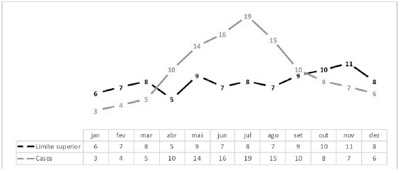
A A doença permaneceu endêmica durante todo o ano.
B A doença apresentou um caráter endêmico durante os meses de abril a setembro.
C A doença apresentou um caráter epidêmico durante os meses de janeiro a março.
D A doença apresentou um caráter epidêmico durante os meses de abril a setembro.
E A doença apresentou um caráter epidêmico durante os meses de outubro a dezembro.
Questão 1397 · Estudos de CasoControle · 4000181205Realizou-se um estudo em determinado município com o objetivo de avaliar os fatores associados a retinopatia em pacientes com diabetes procedimentos metodológicos: foram identi cadas 56 pessoas com diabetes foram comparados com um grupo controle de 74 pessoas com diabetes Com base nessas informações, assinale a alternativa que apresenta, corretamente, o tipo desse estudo.
A É um ensaio clínico, que tem como vantagem a aferição de eventos prevalentes.
B É um estudo caso-controle, que tem como umas das principais limitações a constituição de um grupo controle.
C É um estudo de coorte, que tem como vantagem ser de curta duração.
D É um estudo ecológico, que tem como vantagem o uso de dados primários.
E É um inquérito (estudo transversal), que tem como vantagem poder estabelecer a relação temporal entre fator e desfecho.
Questão 1398 · Mortalidade Geral · 4000181204O Coe ciente de Mortalidade Geral (CMG) representa o risco de óbito em uma população. É calculado por meio da relação entre o total de óbitos e o número de habitantes em determinado período de tempo. Apesar de ser um indicador muito conhecido apresenta limites. Assinale a alternativa que descreve, corretamente, o limite desse indicador.
A Apresenta distorções quando calculado em populações muito pequenas.
B Desconsidera a estrutura etária das populações.
C Não permite comparações em diferentes localidades.
D Não pode ser usado em conjunto com outros indicadores.
E Não pode ser utilizado em populações predominantemente idosas.
Revisar: possível letra faltando em enunciado
Questão 1399 · Coef iciente ou Taxa de Mortalidade Inf antil · 4000181203O Coe ciente de Mortalidade Infantil (CMI) representa um dos principais indicadores para medir a vulnerabilidade social de uma determinada região. Sobre esse indicador, é correto afirmar que ele é calculado considerando o número de
A nascidos vivos no numerador.
B óbitos de menores de 28 dias de vida no numerador.
C óbitos de menores de 1 ano de idade no numerador.
D óbitos de menores de 1 ano de idade no denominador.
E óbitos totais no denominador.
Revisar: possível letra faltando em enunciado
Questão 1400 · Incidência e Prevalência · 4000181202Os conceitos de prevalência e incidência são fundamentais para compreender como certos agravos afetam uma determinada população. Considere que, em determinado município, no ano de 2020, foram diagnosticados 15 casos de tuberculose. Desses, cinco obtiveram cura no mesmo ano. Em 2021, mais três casos foram diagnosticados. Diante dessas informações, assinale a alternativa correta.
A No ano de 2020, a incidência de casos de tuberculose foi de 10.
B No ano de 2020, a prevalência de casos de tuberculose foi de 10.
C No ano de 2021, a prevalência de casos de tuberculose foi de 3.
D No ano de 2021, a prevalência de casos de tuberculose foi de 13.
E No ano de 2021, a incidência de casos de tuberculose foi de 13.
Questão 1401 · Padrões de Distribuição das Doença Tempo Pessoa Espaço ou Lugar · 4000181201A epidemiologia descritiva constitui uma ciência fundamental para compreender o comportamento de determinada doença, eventos ou agravos à saúde. Assinale a alternativa que apresenta, corretamente, as três características primordiais para descrever os agravos à saúde.
A Classe social, estilo de vida e escolaridade.
B Epidemia, endemia e pandemia.
C Idade, raça e etnia.
D Pessoa, tempo e local.
E Prevalência, incidência e letalidade.
Questão 1402 · Medicina Preventiva · 4000181004Na Legislação Brasileira, é considerada idosa a pessoa que tenha
A 75 anos de idade ou mais.
B 65 anos de idade ou mais.
C 70 anos de idade ou mais.
D 60 anos de idade ou mais.
E 80 anos de idade ou mais.
Questão 1403 · Medicina Preventiva · 4000180987Doenças osteomusculares estão entre as que mais causam incapacidade na população geriátrica. As di culdades de locomoção podem restringir também as atividades básicas de vida diária, favorecer quedas, incontinências e isolamento social e, por m, depressão e síndrome da imobilidade. Acerca desse tema, assinale a alternativa correspondente à medida que pode amenizar os sintomas do quadro.
A Acompanhamento com registro em prontuário.
B Estimulação do autocuidado.
C Ajuste da prescrição analgésica.
D Correção do estresse do cuidador.
E Esclarecimento do custo financeiro e social ao paciente.
Questão 1404 · Medicina Preventiva · 4000180984As diminuições das reservas funcionais de diversos sistemas que ocorrem com o envelhecimento podem submeter um idoso – e, em geral, o muito idoso (maior que 80 anos) – a grandes agravos, caso a sua homeostase, ou o equilíbrio frágil de suas funções vitais, seja quebrada. Essa condição denomina-se fragilidade ou síndrome da fragilidade. A respeito desse tema, assinale a alternativa que indica a proposta mais adequada para a condição de fragilidade com várias comorbidades e de piora funcional sem resposta às intervenções reabilitadoras.
A Estimulação de atividades físicas ao ar livre.
B Aspiração de vias aéreas de horário.
C Correção da desidratação.
D Cuidados paliativos.
E Investigação de doenças graves, como câncer para rápido tratamento.
Questão 1405 · Medicina Preventiva · 4000180983No caso de óbito, seja em domicílio, seja intra-hospitalar, em qual situação se faz necessária a certidão de formalização?
A Ferimentos por arma branca.
B Traslado via aérea.
C Ferimentos por arma de fogo.
D Tentativa de suicídio.
E Traumáticos, como inundações, incêndios, contaminação que ocasionaram morte tardia.
Questão 1406 · Medicina Preventiva · 4000180975Em relação à Portaria no 397/2020, que institui o Programa de Saúde Na Hora no âmbito da Política Nacional de Atenção Básica, assinale a alternativa correta.
A Trata de ampliação da carga horária nos serviços da atenção secundária.
B Os profissionais médicos e enfermeiros trabalharão exclusiva e unicamente em uma equipe de ESF.
C Os municípios e o Distrito Federal que aderirem ao Programa terão que custear os gastos com a ampliação dos horários.
D As equipes de saúde bucal serão alocadas para a Atenção Secundária, a fim de liberar horários para atendimentos em outras especialidades.
E Um dos objetivos é ampliar o acesso às ações e aos serviços considerados essenciais na Atenção Primária à Saúde (APS), por meio da ampliação do horário de atendimento das UBS.
Questão 1407 · Medicina Preventiva · 4000180974Quais áreas possuem equipes de saúde de família ribeirinhas e fluviais?
A Amazônia Legal e Pará.
B Pantanal Sul-Mato-Grossense e Pará.
C Amazônia Legal e Pantanal Sul-Mato-Grossense.
D Pará e Amapá.
E Rondônia e Amazônia Legal.
Questão 1408 · Medicina Preventiva · 4000180973Quando se verifica a informação em saúde que é coletada, alguns parâmetros são analisados para a construção das ações dentro das necessidades levantadas. Para que haja qualidade, veracidade, fidedignidade e confiabilidade, deve-se analisar
A fatos ocorridos.
B número de informações coletadas.
C tipos de informações coletadas.
D indicadores.
E parâmetros das informações.
Questão 1409 · Medicina Preventiva · 4000180972O Sistema de Informações sobre Nascidos Vivos (SINASC) é utilizado para verificação, acompanhamento e monitoramento dos nascimentos ocorridos no território nacional, proporcionando a criação de políticas e ações de vigilância e atenção à saúde na área da saúde maternoinfantil. Assinale a alternativa correta em relação ao SINASC.
A A certidão de nascimento é o único documento utilizado para coleta de informações e alimentação do SINASC.
B A Declaração de Nascidos Vivos (DN) é preenchida em três vias, é numerada sequencialmente e sua emissão para os estados é feita exclusivamente pelo Ministério da Saúde (MS).
C As parteiras tradicionais não podem, em hipótese alguma, preencher a DN.
D Nas Secretarias Municipais de Saúde, as DNs são digitadas, processadas, criticadas, consolidadas e enviadas diretamente para a base de dados do MS.
E O sistema de informação serve somente para controle de natalidade e os dados são aproveitados somente para estatística de quantidade de pessoas que nascem em determinada localidade.
Questão 1410 · Medicina Preventiva · 4000180971“Experiência que não se reduz a um conjunto de indivíduos nem tampouco pode ser tomada como uma unidade ou identidade imutável. É um coletivo ou uma multiplicidade de termos (usuários, trabalhadores, gestores, familiares, etc.) em agenciamento e transformação, compondo uma rede de conexão na qual o processo de produção de saúde e de subjetividade se realiza.” Em relação à Política Nacional de Humanização (PNH), a definição apresentada refere-se ao conceito de
A grupalidade.
B grupo de trabalho de humanização (GTH).
C integralidade.
D intersetorialidade.
E igualdade.
Questão 1411 · Medicina Preventiva · 4000180970De acordo com a Classi cação Internacional de Segurança do Paciente da Organização Mundial da Saúde, assinale a alternativa que indica o conceito de evento adverso.
A Probabilidade de um incidente ocorrer.
B Evento ou circunstância que poderia ter resultado, ou resultou, em dano desnecessário ao paciente.
C Incidente com potencial dano ou lesão.
D Incidente que atingiu o paciente, mas não causou dano.
E Incidente que resulta em dano ao paciente.
Questão 1412 · Medicina Preventiva · 4000180969A carteira de serviços é definida como um leque de serviços disponíveis e ofertados pelas unidades de Atenção Primária à Saúde (APS). Sa pessoas/cidadãos recebam atenção integral, tanto do ponto de vista do caráter biopsicossocial do processo saúde-doenc acordo com o serviço de Vigilância em Saúde, assinale a alternativa correta quanto ao o que esse serviço oferece.
A Consulta para acompanhamento do crescimento e desenvolvimento da criança (pesar, medir e avaliar o desenvolvimento registrando na caderneta da crianc
B Discussão e acompanhamento dos casos de violências (dome
C Prevenção de acidentes dome
D Manejo das condições hematológicas mais prevalentes no âmbito da APS: anemia, anemia falciforme, linfonodomegalia perife
E Acompanhamento da crianc
Questão 1413 · Medicina Preventiva · 4000180968Ao apresentar os atributos essenciais, um serviço de saúde pode ser considerado provedor de atenção primária, e essa atenção terá maior força se os atributos derivados também estiverem presentes. A respeito das definições de cada atributo da Atenção Primária à Saúde (APS), assinale a alternativa correta.
A Acesso (primeiro contato): a ligac
B Longitudinalidade: a acessibilidade e a utilizac
C Integralidade: a atenção primária deve organizar-se de tal forma que o cidadão tenha todos os serviços de saúde necessários, identificando e proporcionando os serviços preventivos, bem como serviços que possibilitem o diagno
D Coordenação: o conhecimento dos fatores familiares relacionados à origem e ao cuidado das doenças.
E Orientação comunitária: a adaptação e a capacidade do provedor do cuidado (profissional de saúde) em facilitar a relac
Questão 1414 · Medicina Preventiva · 4000180967Em relação ao custeio da Atenção Primária à Saúde, em seu art. 9o, o nanciamento federal de custeio da Atenção Primária à Saúde (APS) deverá ser constituído por
A capitação ponderada.
B pagamento fixo por diária.
C pagamento por número de procedimentos realizados
D pagamento pelo fundo de reserva da saúde.
E pagamento pelo Sistema de Cadastro Nacional de Estabelecimentos de Saúde (SCNES).
Questão 1415 · Medicina Preventiva · 4000180966Assinale a alternativa correta que indica obrigação da ADAPS para o fiel cumprimento do contrato de gestão.
A Executar e prestar os serviços no âmbito da atenção primária à saúde no Sistema Único de Saúde (SUS), em caráter definitivo à atuação exclusiva do governo estadual, especialmente em locais de grande vulnerabilidade.
B Elaborar e submeter à aprovação do Conselho Deliberativo para o Regulamento de Integridade para os dirigentes e empregados, no prazo de cento e oitenta dias corridos da publicação.
C Submeter mensalmente, ao governo municipal, o orçamento da ADAPS para execução das atividades previstas.
D Desenvolver atividades de ensino, pesquisa e extensão que, em hipótese nenhuma, poderá ser objeto de contratação externa, não sendo considerado o componente assistencial por meio da integração entre ensino e serviço.
E Executar o Programa Médicos pelo Brasil, em articulação com o Ministério da Saúde e em consonância com o Plano Nacional de Saúde.
Questão 1416 · Medicina Preventiva · 4000180965Quanto à seleção e aos requisitos para participação dos médicos no Programa Médicos pelo Brasil, assinale a alternativa correta.
A Segundo o art. 21, a renumeração dos profissionais participantes do Programa Médicos pelo Brasil será regulamentada por ato do Ministério da Saúde (MS), conforme determinação legal.
B No art. 22, os médicos participantes do Programa Médicos pelo Brasil, quer estejam no curso de formação, quer tenham sido contratados, terão seu vínculo trabalhista com a União ou com o município em que forem alocados.
C Segundo o art. 23, o médico participante será alocado pelo MS, observando as vagas disponíveis e a sua classificação no processo seletivo.
D O médico tutor deverá ser responsável pelo conjunto de, no máximo, 7 (sete) médicos bolsistas do Programa.
E Não é requisito para inscrição no processo seletivo para médico de família e comunidade o registro regular em Conselho Regional de Medicina (CRM).
Questão 1417 · Medicina Preventiva · 4000180964No a incrementar a Atenc Considerando esse tema, sera
A médicos de família e comunidade e tutores médicos.
B enfermeiros.
C fisioterapeutas.
D técnico de enfermagem.
E farmacêutico.
Questão 1418 · Medicina Preventiva · 4000180963O Programa Médicos pelo Brasil tem a nalidade de incrementar a prestação de serviços médicos em locais de difícil provimento ou de alta vulnerabilidade e de fomentar a formação de me medicina de famı assinale a alternativa que contempla de forma verdadeira um dos objetivos desse Programa.
A relacionar os municípios aptos a serem incluídos no Programa Médicos pelo Brasil, de acordo com a definição de locais de difícil provimento ou de alta vulnerabilidade, observando o disposto no art. 2o da lei.
B estabelecer a relação final dos municípios incluídos no Programa Médicos pelo Brasil e o quantitativo de médicos da ADAPS que atuarão em cada município.
C desenvolver atividades de ensino, pesquisa e extensão que terão componente assistencial por meio da integração entre ensino e serviço.
D desenvolver e intensificar a formação de médicos especialistas em medicina de família e comunidade.
E constar as metas a serem atingidas e os prazos para sua execução.
Questão 1419 · Medicina Preventiva · 4000180962O Contrato de Gestão para o Desenvolvimento da Atenção Primária à Saúde deverá contribuir para o alcance dos objetivos estratégicos do Ministério da Saúde (MS) e do Plano Nacional de Saúde relacionados à atenção primária. Em relação a esse tema, assinale a alternativa que contemple um desses objetivos estratégicos.
A Reduzir e controlar doenças e agravos.
B Ampliar a atenção primária de forma individualista e fragmentada.
C Promover a ampliação e resolutividade somente na rede de atenção secundária e terciária de forma imediatista, sem necessidade de planejamento.
D Intensificar, de forma exclusiva, o acesso a vacinas.
E Promover o acesso a serviços de saúde, com base nas obrigações e nas responsabilidades dos signatários.
Questão 1420 · Medicina Preventiva · 4000180961A Resolução no 5, de 15 de outubro de 2021, dispõe sobre o Contrato de Gestão para o Desenvolvimento da Atenção Primária à Saúde. Esse documento, em sua cláusula segunda, trata dos objetivos estratégicos. Assinale a alternativa correta que contempla onde a ADAPS desenvolverá as suas atividades com ênfase.
A Na atenção secundária.
B Nos locais de fácil provimento e baixa vulnerabilidade.
C Na promoção da formação profissional, especialmente na área de saúde da família.
D Na valorização da presença dos enfermeiros e fisioterapeuta na atenção básica do SUS.
E Na incorporação de tecnologias assistenciais e de gestão relacionadas com a atenção terciária à saúde.
Questão 1421 · Opioides · Cuidados paliativos · 4000193779Paciente de 69 anos, homem, portador de neoplasia pulmonar primária avançada, sem proposta curativa. Chega no pronto atendimento com queixa de dor intensa em região de gradil costal, de caráter contínuo, progressivo nos últimos 3 dias, sendo essa noite de tamanha intensidade que não o permitiu dormir. Sobre o esquema para controle de dor, assinale a medicação com menor potência analgésica para este paciente.
A Morfina.
B Pamidronato.
C Metadona.
D Dexametasona.
Questão 1422 · Ortotanásia · 4000193730Em relação ao código de ética médica, é correto afirmar que a terminalidade:
A promove ortotanasia.
B transfere os cuidados para as comissões de cuidados para as comissões de cuidados paliativos.
C transfere os cuidados para os familiares das pacientes.
D promove a distánasia.
Questão 1423 · Sigilo prof issional · 4000193729Qual das situações abaixo o sigilo médico pode ocorrer em que circunstância?
A Quando o paciente é figura pública.
B Por dever legal, justa causa ou expressa autorização do paciente.
C Se o paciente suicidar.
D Dever legal do médico.
Questão 1424 · Declaração de óbito DO Atestado de óbito · 4000193728Médico do SAMU chega num atendimento e vê um senhor de 55 anos convulsionando. Segundo testemunhas o senhor foi atropelado. Diante do exposto, quem deve emitir o atestado caso haja óbito?
A IML (Instituto Médico Legal).
B SVO (Serviço de Verificações de Óbitos).
C Médico do SAMU.
D Deve ser encaminhado para o hospital, onde o plantonista deve preenchê-lo.
Questão 1425 · Declaração de óbito DO Atestado de óbito · 4000193727No Brasil, até novembro de 2021, de 450 pacientes com gripe A confirmada e síndrome respiratória aguda grave, 48 evoluíram para pneumonia, insuficiência respiratória e óbito. No atestado deve constar como causa básica de morte:
A Pneumonia.
B Insuficiência respiratória.
C Influenza.
D Síndrome respiratória aguda grave.
Questão 1426 · Sensibilidade · 4000193723Realizou-se um estudo para diagnóstico de dislipidemia, obtendo-se os seguintes dados: Qual é a sensibilidade do exame?
A 60%.
B 75%.
C 80%.
D 90%.
Questão 1427 · Sensibilidade · 4000193722A realização de dois testes diagnósticos em paralelo para uma doença:
A aumenta o valor preditivo positivo.
B não modifica a especificidade.
C reduz o valor preditivo negativo.
D aumenta a sensibilidade.
Questão 1428 · Razão de verossimilhança · Razão de verossimilhança positiva · 4000193721A razão das probabilidades de um teste positivo em doente, contra a possibilidade de o mesmo teste ser positivo em não doente define:
A razão de verossimilhança de um teste positivo.
B valor preditivo de um teste positivo.
C razão de prevalências.
D razão de falsos negativos.
Questão 1429 · Probabilidade préteste e valor preditivo positivo · 4000193720Um teste diagnóstico com sensibilidade 80% e especi cidade 70% será utilizado no rastreamento de duas populações distintas. Sabe-se que na população A, a taxa de prevalência é 10% e na população B 15%. Podemos afirmar que o valor preditivo positivo do teste seja:
A maior na população A.
B o mesmo nas duas populações.
C igual a sensibilidade.
D maior na população B.
Questão 1430 · Taxa de f ecundidade total Taxa de f ecundidade geral · 4000193719Coef iciente de Fecunidade Taxa de f ecundidade O principal determinante da dinâmica demográfica é:
A taxa de envelhecimento.
B taxa de fecundidade total.
C taxa bruta da mortalidade.
D taxa de maiores de 60 anos.
Questão 1431 · Mortalidade · 4000193718Em uma cidade de 1 milhão de habitantes, o total de óbitos foi 8 mil e, destes, 2.000 foram causados por doenças infecciosos, sendo que 400 tiveram como causa básica tuberculose. A mortalidade por tuberculose nesta população é de:
A 5%
B 2:1000
C 20%
D 4:1000
Questão 1432 · Curvas de Nelson de Moraes · 4000193717Entre os indicadores de saúde relacionados, identi que o mais indicado para estudar na população a distribuição dos óbitos segundo a faixa etária:
A Prevalência.
B Letalidade.
C Curva de Nelson de Moraes.
D Índice da
Questão 1433 · Razão de Mortalidade Proporcional RMP ou Índice de SwaroopUemura · 4000193716Nos países desenvolvidos, o índice de
A é próximo 100%.
B apresenta valores entre 80 e 90%.
C apresenta valores em total de 30%.
D tende a nulidade.
Questão 1434 · Coef iciente ou Taxa de mortalidade neonatal · 4000193715Ao se dividir o número de óbitos em menores de 28 dias pelo total de nascidos vivos obtém-se o valor de coeficiente de:
A Mortalidade perinatal.
B Mortalidade infantil.
C Mortalidade infantil tardia.
D Mortalidade neonatal.
Questão 1435 · Bioética · 4000193545Aos Comitês de Bioética Hospitalar ou Bioética Clínica cabe a análise de situações especiais ou inéditas enfrentadas no dia a dia de médicos e instituições de saúde, principalmente ocorrências que colocam em confronto aspectos morais, de autonomia do paciente pediátrico e de beneficência. Recomenda-se que a Comissão de Bioética seja composta por:
A Exclusivamente médicos.
B Médicos, enfermeiros, assistentes sociais, psicólogos, juristas e, se possível, por membro da comunidade que represente os usuários e/ou paciente.
C Juristas especializados em Medicina Legal.
D Médicos, assistentes sociais e psicólogos. Desta forma, é vedada a participação de membros da comunidade.
E Três pediatras de subespecialidades diferentes.
Questão 1436 · Outros Sistemas de Inf ormação em Saúde e Bases de dados do SUS · 4000193507Dentre as principais funções dos sistemas de saúde está a alocação de recursos, sendo uma das formas de remuneração de serviços a de pagamentos prospectivos. No Brasil, como denomina-se a forma usada pelo Sistema Único de Saúde (SUS) para o pagamento de internações em hospitais públicos e privados?
A Guia de Internação Intra-hospitalar (GIIH).
B Orçamento Hospitalar Interno (OHI).
C Autorização de Internação Hospitalar (AIH).
D Unidade de Serviço (US).
E Modelo de Atenção à Saúde (MAS).
Questão 1437 · Saúde Suplementar · 4000193474É FALSO afirmar sobre o sistema de saúde brasileiro:
A É formado por uma rede complexa de prestadores e compradores de serviços que competem entre si, gerando uma combinação público-privada.
B O sistema tem três subsetores: o subsetor público, o subsetor privado e o subsetor de saúde suplementar.
C O subsetor de saúde suplementar tem diferentes tipos de planos privados de saúde e de apólices de seguro, sendo apoiado por subsídios fiscais.
D Os componentes público e privado do sistema são distintos e as pessoas não podem utilizar os serviços de todos os três subsetores.
E O subsistema privado de saúde se imbrica com o setor público, oferecendo serviços terceirizados pelo Sistema Único de Saúde (SUS), serviços hospitalares e ambulatoriais pagos por desembolso direto, medicamentos e planos e seguros de saúde privados. Parte dessa oferta é financiada pelo SUS, e o restante, por fontes privadas.
Questão 1438 · Princípios e Diretrizes do SUS na Constituição Federal · 4000193473Assinale a alternativa que define a Universalidade do Sistema Único de Saúde (SUS):
A Garantia de que todos os cidadãos devem ter acesso aos serviços de saúde públicos e privados conveniados, em todos os níveis do sistema de saúde.
B Acesso aos serviços de saúde deve ser garantido a toda a população em condições de igualdade, não importando o gênero, a situação econômica, social, cultural, racial ou religiosa, mas podendo haver uma discriminação positiva em casos especiais, em que a prioridade deve ser dada a quem tem mais necessidades.
C Garantia de fluxos adequados a todos os níveis de complexidade tecnológica do sistema e aumentando a oferta e resolutividade dos serviços, principalmente no nível ambulatorial especializado.
D As ações de caráter individual e coletivo devem ser financiadas e estar articuladas no mesmo sistema, gerando atendimento da demanda espontânea da população, sem que sejam esquecidos os programas estruturados para atender às necessidades epidemiologicamente definidas pelo gestor do serviço de saúde.
E O atendimento com a diretriz da Universalidade deve incorporar um amplo espectro de intervenções, articulando prevenção, atendimento curativo e reabilitação.
Questão 1439 · Atenção Primária à Saúde APS no Brasil · 4000193472Um sistema de saúde é ''o conjunto de organizações, indivíduos e ações cuja intenção primordial é promover, recuperar e/ou melhorar a saúde''. A atenção primária à saúde é, nessa perspectiva:
A Somente os serviços respondem às necessidades de saúde com ações preventivas.
B Dedica-se, apenas, aos problemas mais simples e mais apresentados pelas pessoas, em suas fases iniciais e menos definidas.
C Uma forma de organização dos serviços, na qual há uma porta de entrada ao sistema de saúde, que se configura com o espaço de coordenação das respostas às necessidades dos indivíduos, suas famílias e comunidade.
D Observa-se uma pequena proporção de usuários já conhecidos pela equipe de saúde, já que a responsabilidade pelo atendimento das pessoas ao longo do tempo está no âmbito da atenção secundária.
E O emprego de recursos como visitas domiciliares, organizações comunitárias e articulações intersetoriais não é contemplado neste nível de atenção.
Questão 1440 · Vigilância Sanitária · Vigilância Epidemiológica · 4000193471Na busca da adequação, as informações para conhecer a realidade local e analisar a situação de saúde no Brasil e no mundo, existem diferentes instrumentos. As fontes de dados secundários são constituídas por dados e informações colhidas por outras agências e setores, governamentais ou não, em geral para ns político-administrativos e são úteis para a organização, a administração e o planejamento de serviços de saúde. Assinale a alternativa que faz a correspondência correta entre a fonte de dado secundário (A, B, C e D)e sua finalidade (I, II, III e IV); A- Agência Nacional de Vigilância Sanitária (ANVISA); B- Departamento de Informática do Sistema Único de Saúde (Datasus); C- Biblioteca Virtual em Saúde (BVS), BIREME; D- Conselho Nacional dos Secretários Estaduais de Saúde (CONASS); I- Biblioteca virtual que integra fontes de informação em saúde, disseminando literatura técnico-cientí ca. Acesso livre e gratuito à informação gerada pelas instituições acadêmicas e pelo SUS; II- Orientações e bancos de dados sobre controle sanitário de produtos e serviços submetidos à vigilância sanitária, inclusive dos ambientes, dos processos, dos insumos e das tecnologias a eles relacionados; III- É a principal fonte de dados de morbimortalidade. Fornece dados cuja menor agregação é municipal, permitindo cálculo de indicadores de saúde e fornecendo resultados de indicadores clássicos; IV- Visa a apoiar tecnicamente os secretários estaduais e suas equipes, com informações sobre gestão e divulgação de boas práticas no SUS.
A A-I; B-III; C-II; D-IV.
B A-II; B-IV C-I; D-III.
C A-II; B-III; C-IV; D-I.
D A-III; B-II; C-IV; D-I.
E A-II; B-III; C-I; D-IV.
Revisar: possível letra faltando em enunciado
Questão 1441 · Coef iciente ou Taxa de Mortalidade Inf antil · 4000193470A taxa de mortalidade infantil é um indicador de saúde é calculada:
A Dividindo-se o número de óbitos de crianças menores de 1 ano pelos nascidos vivos naquele ano, em uma determinada área, e multiplicando-se por 1.000 o valor encontrado. Mede, portanto, o risco de morte para crianças menores de 1 ano.
B Dividindo-se o número de óbitos de crianças menores de 5 anos pelos nascidos vivos naquele ano, em uma determinada área, e multiplicando-se por 10.000 o valor encontrado.
C Dividindo-se o número de óbitos concernentes a todas as causas, em um determinado ano, pela população, naquele ano, circunscritos a uma determinada área e multiplicando se por 1.000, base referencial para a população exposta.
D Dividindo o número de óbitos ocorridos por determinada causa na população exposta e, a seguir, multiplicando o resultado por 100.000, que é a base referencial da população sob risco.
E Pela relação entre o número de casos conhecidos de uma dada doença e a população exposta, multiplicando o resultado pela base referencial que em geral é uma potência de 10, usualmente 1.000, 10.000 ou 100.000.
Questão 1442 · Epidemias · 4000193469Qual alternativa abaixo descreve uma alteração, espacial e cronologicamente delimitada, do estado de saúde-doença de uma população, caracterizada por uma elevação progressivamente crescente, inesperada e descontrolada dos coe cientes de incidência de determinada doença, ultrapassando e reiterando valores acima do limiar epidêmico preestabelecido?
A Evento sentinela de saúde.
B Epidemia.
C Endemia.
D Pandemia.
E Variação cíclica.
Revisar: possível letra faltando em enunciado
Questão 1443 · Vigilância Epidemiológica · 4000193468Assinale a alternativa FALSA sobre vigilância epidemiológica:
A Pode ser definida como "" o estudo complexo e multilocalizado da dinâmica das doenças, abrangendo a investigação tanto no subsistema biológico (biologia e ecologia dos agentes causais e de seus hospedeiros e vetores) quanto no subsistema social (do ambiente social determinante do caráter e da escala de disseminação da doença em determinado território)"".
B A notificação compulsória das doenças, instituída no final do século XIX, constituiu importante precursor da vigilância, sendo até hoje utilizada como estratégia para melhor conhecimento do comportamento de doenças na comunidade.
C O conceito clássico de vigilância vincula-se aos de isolamento e quarentena, que determinam, respectivamente, a separação de indivíduos doentes (isolamento) ou potencialmente infectados (quarentena) de seus contatos habituais.
D Os primeiros passos para a introdução da vigilância epidemiológica no Brasil foram dados durante a Campanha de Erradicação da Varíola, no início da década de 1950.
E No Brasil, durante a segunda metade dos anos 1990, temos a incorporação de novas tecnologias aplicadas à transmissão e armazenamento de dados gerados por sistemas de vigilância, que passam a ser efetuadas de forma eletrônica, com a criação do Sistema de Informações de Agravos de Notificação (SINAN), criando condições para que, em médio prazo, seja possível tornar disponível uma ampla base de dados referente à morbidade.
Questão 1444 · Probabilidade préteste e valor preditivo positivo · 4000193467Um dos atributos dos sistemas de vigilância em saúde é o valor preditivo positivo (VPP). Dentre as alternativas, assinale a CORRETA sobre o VPP:
A Esse atributo é avaliado pela análise da agilidade do sistema em cumprir todas as suas etapas, da notificação do caso à distribuição dos Boletins Epidemiológicos. Pode ser avaliado pela determinação, por exemplo, dos intervalos entre: o início dos sintomas e data da notificação; a data da notificação e do início da investigação do caso; a data do início de um surto epidêmico e o momento da sua identificação pelo sistema; a data da identificação do surto e o início das medidas de controle.
B Pode ser avaliado pela disposição favorável dos profissionais e das instituições que conduzem o sistema, permitindo que as informações geradas sejam exatas, consistentes e regulares. Esse atributo depende principalmente da percepção da importância em saúde pública do evento adverso à saúde e do reconhecimento da contribuição do sistema para oferecer, de forma ágil, tecnicamente consistente e acessível, as bases técnicas para prevenção e controle de determinado agravo.
C Entre os aspectos que devem ser levados em consideração na avaliação do VPP de um sistema de vigilância, podemos salientar: I) a quantidade e tipo de informações necessárias ao estabelecimento do diagnóstico; II) o número e tipo de fontes de informação; III) os meios utilizados na transmissão de informações; IV) o número de organizações envolvidas no sistema e a necessidade de capacitação especial da equipe; V) o tipo e abrangência da análise de informações e os meios utilizados na distribuição do produto final do sistema.
D O VPP diminui com o aumento da especificidade e da prevalência.
E Pode ser entendido como a proporção de indivíduos identificados como casos pelo sistema de vigilância, e que de fato o são.
Questão 1445 · Norma Operacional Básica NOB e Norma Operacional de Assistência à Saúde NOAS · 4000193466Princípios e Diretrizes do SUS na Lei n 80801990 Sobre a regulamentação do Sistema Único de Saúde (SUS), é INCORRETO afirmar:
A Dentre essas leis destacam-se as que regulamentaram: a extinção do INAMPS e a criação do Sistema Nacional de Auditoria; a definição do Sistema Nacional de Vigilância Sanitária e a criação da Agência Nacional de Vigilância Sanitária; o estabelecimento do medicamento genérico; a criação do Subsistema de Saúde Indígena; a criação da Agência Nacional de Saúde Suplementar.
B O ordenamento jurídico do sistema é complementado pelas legislações estaduais e municipais que regulamentam, em cada instância, a criação ou adaptação de órgãos, previstas na legislação federal, como os fundos e os conselhos de saúde, bem como a normalização complementar sobre o funcionamento do SUS no âmbito municipal ou estadual.
C Os fundamentos legais do SUS estão explicitados no texto da Constituição Federal, de 1988, nas constituições estaduais e nas leis orgânicas dos municípios que incorporaram e detalharam os princípios da Lei Magna do País.
D A regulamentação foi feita pelas Leis Federais nº 8.080 e nº 8.142 (ambas sancionadas em 1960), que detalham a organização e o funcionamento do sistema, e por sucessivas leis, que desde então, têm ampliado o arcabouço jurídico nacional relativo à saúde.
E A operacionalização do sistema também se orienta pelas resoluções dos conselhos de saúde, nas três esferas de governo, e das normas operacionais (NOBs e Noas) editadas pelo Ministério da Saúde (M S) com base nos acordos estabelecidos na negociação tripartite, entre os gestores municipais, estaduais e federal.
Questão 1446 · Pacto pela Saúde · 4000193465O pacto em defesa do Sistema Único de Saúde (SUS):
A Deve se traduzir-se no empenho dos gestores em assegurar os recursos necessários à busca de resultados sanitários em relação a um conjunto de prioridades: I) implantar a Política Nacional de Saúde da Pessoa Idosa, buscando a atenção integral; II) contribuir para a redução da mortalidade por câncer de colo do útero e de mama; III) reduzir a mortalidade materna, infantil neonatal e infantil por doença diarréica e por pneumonias.
B Deve, I) fortalecer a capacidade de resposta do sistema de saúde às doenças emergentes e endemias, com ênfase no controle da Dengue, Hanseníase, Tuberculose, Malária e Influenza; II) elaborar e implantar a Política Nacional de Promoção da Saúde, com ênfase na adoção de hábitos saudáveis por parte da população brasileira, de forma a internalizar a responsabilidade individual da prática de atividade física regular, alimentação saudável e combate ao tabagismo.
C Pretende consolidar e qualificar a estratégia da Saúde da Família como modelo de atenção básica à saúde e como centro ordenador das redes de atenção à saúde do SUS.
D Pretende introduzir inovações nas relações intergovernamentais no SUS, produzindo uma reforma na institucionalidade vigente tendo em vista superar os entraves que se acumularam no processo de descentralização.
E Propõe a repolitização da saúde e a mobilização da sociedade na defesa do direito à saúde, e a efetivação do SUS como política de Estado com garantia do financiamento público suficiente. Para isso se propõe alcançar a regulamentação da Emenda 29 e o incremento dos recursos orçamentários para o setor, com a aprovação de um orçamento integrado do SUS e definição de responsabilidades das três esferas de gestão. Insere-se ainda nesse eixo a elaboração e divulgação da carta dos direitos dos usuários do SUS.
Questão 1447 · Atributos gerais da Atenção Primária à Saúde APS · 4000193464O acolhimento é parte fundamental da gestão e organização da atenção à saúde. Pode-se a rmar sobre o acolhimento:
A A função do acolhimento da Unidade de Saúde é barrar e limitar o atendimento somente para urgências e emergências.
B O acolhimento baseia-se no atendimento de pacientes com problemas não emergenciais.
C O acolhimento deve traduzir-se na abertura da unidade e na plasticidade do projeto de atenção prestado a determinado indivíduo ou coletivo, procurando garantir a humanização da relação instituição/usuário. Parte das seguintes orientações: I) atender a todas as pessoas que procuram os serviços de saúde; II) reorganizar o processo de trabalho, a fim de que este desloque o eixo central do médico para uma equipe multiprofissional.
D O fluxo de entrada na Unidade de Saúde se processa de forma unidirecional, agendando as consultas para os médicos de todos os usuários que chegam ao serviço.
E Trabalhar com instrumentos que permitam uma avaliação constante dos resultados e impacto alcançados pelo acolhimento tais como mapa de produção, inquéritos dirigidos a usuários e trabalhadores, fluxogramas analíticos é desnecessário uma vez que as regras do acolhimento já foram definidas previamente.
Questão 1448 · Conceitos gerais de custeios em saúde · 4000193463Assinale a alternativa que descreve o que são insumos em saúde:
A Recursos disponíveis para atenção à saúde e que sustentam o sistema.
B Profissionais e técnicos que desenvolvem atividades nas organizações do sistema e na atenção à saúde.
C Conjunto de serviços de atenção a saúde (serviços coletivos e serviços de assistência individual).
D Recursos utilizados no tratamento e na prevenção em saúde (equipamentos, medicamentos e suprimentos para exames diagnósticos).
E Estruturas organizacionais responsáveis pela regulação, gestão e administração dos sistemas de saúde.
Questão 1449 · Def inição de Medicina Baseada em Evidências · 4000193462Enfoque fundamentado na epidemiologia clínica, informática e bioestatística propiciando a sistematização e a síntese de informações e conhecimentos científicos para orientar a decisão clínica refere-se a:
A Medicina baseada em evidências.
B Medicina flexneriana.
C Vigilância sanitária.
D Vigilância epidemiológica.
E Programa de Agentes Comunitários de Saúde (PACS).
Questão 1450 · Conceitos gerais · 4000193461Assinale a alternativa FALSA em relação à saúde do trabalhador
A Ao sofrer um acidente ou uma doença do trabalho, que gere incapacidade para a realização das atividades laborativas, o trabalhador celetista, consequentemente segurado do Instituto Nacional do Seguro Social (INSS), deverá ser afastado de suas funções, ficando ""coberto"" pela instituição durante todo o período necessário ao seu tratamento. Porém, só deverá ser encaminhado à Perícia Médica do INSS quando o problema de saúde apresentado necessitar de um afastamento do trabalho por período superior a 15 (quinze dias). O pagamento dos primeiros 15 dias de afastamento é de responsabilidade do empregador.
B No 1º de janeiro de 2019, após 88 anos de atuação, o Ministério do Trabalho é extinto no primeiro dia de governo do presidente Jair Bolsonaro. A área é absorvida pela Secretaria Especial de Previdência e Trabalho, subordinada ao Ministério da Economia.
C Para o Instituto Nacional do Seguro Social (INSS), o instrumento de notificação de acidente ou doença relacionada ao trabalho é a Comunicação de Acidente do Trabalho (CAT) que deverá ser emitida pela empresa até o primeiro dia útil seguinte ao do acidente.
D Caso a empresa se negue a emitir a Comunicação de Acidente do Trabalho (CAT), poderão fazê-lo o próprio acidentado, seus dependentes, a entidade sindical competente, o médico que o assistiu ou qualquer autoridade pública.
E A Comunicação de Acidente do Trabalho (CAT) deve ser sempre emitida, somente em casos de gravidade do acidente ou doença. Ou seja, apenas nas situações nas quais se observa a necessidade de afastamento do trabalho por período superior a 15 dias, o agravo deve ser devidamente registrado.
Questão 1451 · Relação MédicoPaciente · 4000193460O recurso mais valioso em qualquer emergência de saúde pública de larga escala é o público, porque, no nal das contas, eles deverão cuidar de si mesmos. Uma comunicação eficaz com a mídia proporciona uma população informada que, por sua vez, é:
A Preocupada com o risco de forma equilibrada.
B Desinteressada.
C Pouco colaborativa.
D Mais inclinada a adotar ações não convenientes.
E Não aberta para o diálogo público.
Questão 1452 · Doação e transplante de órgãos e tecidos · 4000193458A doação de sangue é um gesto solidário de doar uma pequena quantidade do próprio sangue para salvar a vida de pessoas que se submetem a tratamentos e intervenções médicas de grande porte e complexidade, como transfusões, transplantes, procedimentos oncológicos e cirurgias. Quais são os requisitos para doação de sangue?
A A frequência máxima é de duas doações de sangue anuais para o homem e de uma doação de sangue anual para a mulher.
B Pessoas com idade entre 40 e 59 anos só poderão doar sangue se já o tiverem feito antes dos 40 anos.
C O intervalo mínimo entre uma doação de sangue e outra é de dois meses para os homens e de três meses para as mulheres.
D Não ter ingerido bebida alcoólica nas 6 horas que antecedem a doação.
E Estar fora do período pós-gravidez: 15 dias para parto normal e 30 dias para cesariana.
Questão 1453 · Política Nacional de Práticas Integrativas e Complementares · 4000193457As Práticas Integrativas e Complementares (PICS) são tratamentos que utilizam recursos terapêuticos baseados em conhecimentos tradicionais, voltados para prevenir diversas doenças como depressão e hipertensão. Atualmente, o Sistema Único de Saúde oferece, de forma integral e gratuita, 29 procedimentos de PICS à população. Esta Comissão que contempla as áreas de, EXCETO:
A Apiterapia e Ayurveda.
B Osteopatia, Shantala e Yoga.
C Medicina antroposófica e Constelação familiar.
D Hipnoterapia e Imposição de mãos.
E Curanderismo e charlatanismo.
Questão 1454 · Prevenção Primordial · 4000193456De acordo com a Organização Mundial da Saúde, qualidade de vida é "a percepção do indivíduo de sua inserção na vida, no contexto da cultura e sistemas de valores nos quais ele vive e em relação aos seus objetivos, expectativas, padrões e preocupações". Envolve o bem-estar espiritual, físico, mental, psicológico e emocional, além de relacionamentos sociais, como família e amigos e, também, saúde, educação, habitação saneamento básico e outras circunstâncias da vida. Para alcançar uma boa qualidade de vida, é CONTRA-INDICADO a seguinte orientação:
A Adote hábitos saudáveis: alimente-se de maneira saudável; não fume; evite café e bebidas alcoólicas em excesso; não dirija após ingerir bebida alcoólica; procure dormir 8 horas diárias; faça atividades esportivas e de lazer regularmente; resolva problemas de forma racional, encarando-os positivamente; administre seu tempo realizando uma atividade de cada vez; cultive o bom humor.
B Trabalho: programa e tire férias anuais; não leve serviço para casa; mantenha o ambiente de trabalho limpo, iluminado, ventilado, sem cigarros, poluição ou barulho excessivo; em momentos de tensão faça um relaxamento com respiração lenta e pausada.
C Exposição ao sol: busque as horas mais quentes do dia e exponha-se de forma prolongada; evite o protetor solar nas áreas expostas ao sol.
D Esporte e lazer: faça 30 minutos diários de atividade física, de forma contínua; suba e desça escadas em vez de usar elevador; nos momentos livres faça caminhada; pratique esportes, dance; escute música; faça passeios ao ar livre; saia com amigos e família; reserve um tempo só para você.
E Alimentação: faça, no mínimo, cinco refeições ao dia (café da manhã, lanche, almoço, lanche e jantar); coma frutas, legumes e verduras variados diariamente; evite refrigerantes e salgadinhos; beba pelo menos dois litros (6 a 8 copos) de água por dia; faça as refeições em ambiente calmo e nunca assistindo à televisão; evite comer em excesso quando estiver nervoso ou ansioso.
Questão 1455 · Viés de conf lito de interesses · 4000193455O risco de integridade pode ser definido como uma vulnerabilidade que possibilite favorecer ou facilitar a ocorrência de práticas de corrupção, fraudes, irregularidades e/ou desvios éticos e de conduta, podendo comprometer os objetivos da instituição (Portaria CGU n. 57/2019). Segundo o Manual para Implementação de Programas de Integridade da Controladoria-Geral da União (CGU), um dos riscos de integridade considerado mais relevantes é o Conflito de Interesses, caracterizado por:
A Pressões explícitas ou implícitas de natureza hierárquica (interna), de colegas de trabalho (organizacional), política ou social (externa), que podem influenciar indevidamente atuação do agente público, como, por exemplo: influência sobre funcionários subordinados para violar sua conduta devida; ações de retaliação contra possíveis denunciantes.
B Situação gerada pelo confronto entre interesses públicos e privados, que possa comprometer o interesse coletivo ou influenciar, de maneira imprópria, o desempenho da função pública, como, por exemplo: divulgar ou fazer uso de informação privilegiada, em proveito próprio ou de terceiros; exercer atividade que implique a prestação de serviços ou a manutenção de relação de negócio com pessoa física ou jurídica que tenha interesse em decisão do agente público ou de colegiado do qual este participe; exercer, direta ou indiretamente, atividade que, em razão da sua natureza, seja incompatível com as atribuições do cargo ou emprego; praticar ato em benefício de interesse de pessoa jurídica de que participe o agente público, seu cônjuge, companheiro ou parentes, consanguíneos ou afins; receber presente de quem tenha interesse em decisão do agente público ou de colegiado do qual este participe; e prestar serviços, ainda que eventuais, à empresa cuja atividade seja controlada, fiscalizada ou regulada pelo ente ao qual o agente público está vinculado, entre outras.
C Qualquer tipo de enriquecimento ilícito, seja dinheiro ou outra utilidade, dado que ao agente público não se permite colher vantagens em virtude do exercício de suas atividades.
D Ser uma das formas de abuso de posição ou poder em favor de interesses privados, em que se favorecem familiares, conforme disposições do Decreto n. 7.203, de 4 de junho de 2010, especificamente dirigidas ao âmbito da Administração Pública Federal, que define, para efeito de vedação de Conflito de Interesses, o seguinte rol de familiares: cônjuge, companheiro ou parente em linha reta ou colateral, por consanguinidade ou afinidade, até o terceiro grau.
E Apropriação indevida; irregularidades em contratações públicas; e outras formas de utilização de recursos públicos para uso privado (exemplos: veículos oficiais, utilização imprópria de tempo de trabalho).
Questão 1456 · Cuidados paliativos · 4000193331Paciente com neoplasia pulmonar com metástase óssea em tratamento, evoluindo com piora da dor (escala de dor 6/10) associado a parestesias em membros inferiores. Qual das alternativas é o melhor esquema terapêutico para controle da dor do paciente?
A Paracetamol, mofina e clonazepam.
B Codeina e gabapentina.
C Dipirona, tramadol e pregabalina.
D Paracetamol e amitriptilina.
E Morfina e venlafaxina.
Questão 1457 · Fisiologia do Envelhecimento · 4000193317Sobre fisiologia do envelhecimento, marque a alternativa INCORRETA.
A A pele se torna mais seca.
B O embranquecimento dos cabelos decorre da redução de melanócitos no bulbo capilar.
C Ocorre uma redução das glândulas sudoríparas.
D Exercícios praticados regularmente reduzem fatores de risco para doenças vasculares.
E Não há modificação na composição corporal (percentual de gordura e de massa muscular) ao longo do tempo.
Questão 1458 · Quedas em idosos · 4000193316Sobre instabilidade postural, marque a alternativa que indica causa(s) possíveis:
A Uso de benzodiazepínico.
B Hipotensão postural.
C Síndromes vertiginosas.
D Desidratação.
E Todas as alternativas.
Questão 1459 · Nutrição do idoso · As grandes síndromes geriátricas gigantes geriátricos · 4000193315Sobre sarcopenia no idoso, marque a alternativa INCORRETA.
A A velocidade da marcha indica o desempenho muscular.
B A medida da panturrilha não pode ser utilizada para avaliação da massa muscular em idosos.
C Múltiplos fatores contribuem para o desenvolvimento da sarcopenia no idoso.
D Idosos que realizam pouca atividade física apresentam fraqueza muscular.
E A taxa de síntese proteica está reduzida no idoso.
Questão 1460 · Sistemas de Inf ormação em Saúde SIS e Bases de dados do SUS · Vigilância Epidemiológica · 4000193314O médico, como membro da equipe de saúde multipro ssional, pode estar envolvido em diversas ações de vigilância em saúde. Assinale a alternativa que apresenta a atividade que subsidia todas as demais no processo de vigilância de doenças, agravos e eventos relacionados à saúde.
A Medidas de prevenção e controle.
B Coleta de dados.
C Interpretação dos dados.
D Tabulação e análise dos dados.
E Divulgação dos dados.
Questão 1461 · Lista Nacional de Notif icação Compulsória de doenças agravos e eventos de saúde pública · 4000193313Sistema de Inf ormação de Agravos de Notif icação SINAN Considerando os tipos de vigilância de doenças e agravos, assinale a alternativa que apresenta DOIS exemplos de doenças ou agravos aos quais se aplica a vigilância passiva e universal na rotina dos serviços de saúde do Brasil:
A Chikungunya – Violência autoprovocada.
B Diabetes – Violência autoprovocada.
C Diabetes – Dengue.
D Doença diarreica aguda – Chikungunya.
E Chikungunya – Diabetes.
Questão 1462 · Sistema de Inf ormação de Agravos de Notif icação SINAN · 4000193312São critérios utilizados para definir se uma doença, agravo ou evento de saúde serão de noti cação compulsória em um dado território (municípios, estado ou país), EXCETO:
A Compromissos internacionais (exemplo: acordos firmados pelo governo brasileiro e organismos internacionais).
B Elevado poder de transmissão da doença (exemplo: elevada taxa de transmissibilidade, número básico de reprodução).
C Magnitude (exemplo: altas taxas de incidência, prevalência, mortalidade).
D Transcendência (exemplo: altas taxas de letalidade ou de hospitalização, relevância social e econômica).
E Vulnerabilidade da população (exemplo: faixa etária, situação socioeconômica e fatores correlatos).
Questão 1463 · Sistema de Inf ormação de Agravos de Notif icação SINAN · 4000193311Sistemas de Inf ormação em Saúde SIS e Bases de dados do SUS Os Sistemas de Informação em Saúde são estruturados para garantir a obtenção e a transformação de dados em informação, com a participação de pro ssionais envolvidos em processos de seleção, coleta, classificação, armazenamento, análise e divulgação de dados. Assinale a alternativa INCORRETA sobre os principais Sistemas de Informação em Saúde gerenciados pelo Sistema Único de Saúde no Brasil:
A O Sistema de Informação sobre Mortalidade (SIM) permite efetuar análises sobre mortalidade e construir indicadores como a razão de mortalidade materna e o coeficiente de mortalidade infantil.
B O Sistema de Informações de Agravos de notificação (SINAN) foi criado para atender às exigências do Regulamento Sanitário Internacional (RSI) desde 2005.
C As informações extraídas do Sistema de Informações sobre Nascidos Vivos (SINASC) permitem a realização de análises epidemiológicas relacionadas à saúde materno-infantil.
D O SINAN tem por objetivo facilitar a formulação e avaliação das políticas, planos e programas de saúde, subsidiando o processo de tomada de decisões, contribuindo para a melhoria da situação de saúde da população.
E O SINASC permite efetuar análises sobre o perfil de recém-nascidos e parturientes de todo o território nacional, além de contribuir na elaboração de indicadores, como a razão de mortalidade materna e o coeficiente de mortalidade infantil.
Questão 1464 · Declaração de óbito DO Atestado de óbito · 4000193310A Declaração de bito (DO) é o documento-base do Sistema de Informações sobre Mortalidade (SIM). A emissão da DO é ato médico. O médico tem obrigação legal de constatar e atestar o óbito. Assinale a alternativa que apresenta situação na qual o médico NÃO deve emitir a DO:
A Quando a criança nasce viva e morre logo após o nascimento.
B No óbito fetal, se a gestação teve duração igual ou superior a 20 semanas.
C Em todos os óbitos (de causa natural ou violenta).
D Peças anatômicas retiradas por ato cirúrgico ou de membros amputados.
E No óbito fetal, se a estatura do feto for igual ou superior a 25 cm.
Questão 1465 · Declaração de óbito DO Atestado de óbito · 4000193309Mulher de 33 anos chega na emergência com quadro de hemorragia digestiva. Na endoscopia evidenciam-se úlceras gástricas rasas com sangramento. Durante a internação fez broncoaspiração. Em relação à declaração de óbito do caso relatado, assinale a alternativa CORRETA.
A A causa básica da morte é “broncoaspiração”.
B A causa terminal da morte é “hemorragia digestiva alta”.
C A causa básica da morte é “úlcera gástrica”.
D A causa básica da morte é “hemorragia digestiva alta”.
E A causa básica da morte é “indeterminada”.
Questão 1466 · Declaração de óbito DO Atestado de óbito · 4000193308Homem, 77 anos, sofreu queda de escada com fratura de fêmur. Internado e submetido a cirurgia. Adquire infecção hospitalar, vindo a falecer 12 dias depois, por pneumonia. Em relação à declaração de óbito do caso relatado, assinale a alternativa CORRETA.
A A causa terminal da morte é “queda de escada”.
B A causa terminal da morte é “cirurgia ortopédica”.
C A causa básica da morte é “pneumonia”.
D A causa básica da morte é “fratura de fêmur”.
E A causa básica da morte é “queda de escada”.
Questão 1467 · Incidência · 4000193307Os principais indicadores de morbidade são a incidência e a prevalência. Assinale a alternativa CORRETA sobre as características desses indicadores.
A A incidência refere-se ao número de caso novos em determinado período de tempo.
B A prevalência é mais utilizada para doenças agudas.
C A incidência refere-se ao número de casos existentes em determinado período de tempo.
D A prevalência estima o risco de adoecer.
E A incidência é mais utilizada para doenças crônicas.
Questão 1468 · Classif icação de casos · Processos Endêmicos e Epidêmico Endemias e Epidemias · 4000193306Sobre os conceitos referentes à distribuição espaço-temporal de doenças e agravos, assinale a alternativa CORRETA.
A Sindemia é a ocorrência simultânea de duas doenças endêmicas em um mesmo território e período de tempo.
B A ocorrência de uma doença em grande magnitude de forma disseminada em um mesmo território caracteriza uma pandemia.
C Surtos e epidemias apresentam como uma das características comuns o número de casos registrados durante o período de análise que ultrapassa o limite superior do denominado “canal endêmico”.
D As emergências de saúde pública estão restritas às doenças transmissíveis.
E Entende-se por endemia a ocorrência de doença recorrente numa região, porém com aumento significativo no número de casos.
Questão 1469 · Erros Sistemáticos ViésVieses · Viés de inf ormaçãoaf eriçãomensuração · 4000193305Em relação ao delineamento de investigações epidemiológicas, assinale a alternativa que contém uma desvantagem do estudo retrospectivo:
A Maior probabilidade de perda de seguimento.
B Custo elevado.
C Os casos precisam ser escolhidos aleatoriamente.
D Extensa duração.
E Viés de memória.
Questão 1470 · Razão de Prevalências · Incidência · 4000193304O serviço de controle de infecção hospitalar realizou um levantamento em prontuários para analisar a frequência de ocorrência de novos casos de infecção nosocomial (IN) nas clínicas A e B do mesmo hospital. Assinale a alternativa que apresenta o nome do indicador utilizado para medir a frequência de IN e a medida de associação para comparar a IN de A em relação à IN de B.
A Prevalência periódica – Razão de prevalência, respectivamente.
B Razão de chances – Prevalência pontual, respectivamente.
C Prevalência pontual – Razão de riscos, respectivamente.
D Incidência – Razão de riscos, respectivamente.
E Razão de riscos – Incidência, respectivamente.
Questão 1471 · Prevalência · 4000193303No dia 20/12/2021, a cidade de Teresina-Piauí contava com 80% de sua população vacinada com pelo menos uma dose de vacina contra Covid-19, desde o início da campanha de vacinação. No mesmo período, a cobertura vacinal para o estado do Piauí era de 77,7%. Sobre o indicador “cobertura vacinal”, assinale a alternativa CORRETA.
A É equivalente ao indicador taxa de ataque.
B É equivalente ao indicador prevalência no período.
C É equivalente ao indicador taxa de incidência acumulada.
D É equivalente ao indicador prevalência pontual.
E É equivalente ao indicador taxa de efetividade vacinal.
Questão 1472 · Estudos de Coorte · 4000193302Objetivos: Caracterizar a população do estudo, estimar a taxa de letalidade intra-hospitalar por estado e analisar fatores associados aos óbitos por COVID-19. Métodos: Foi realizado estudo [com] crianças e adolescentes hospitalizados com diagnóstico de COVID-19 confirmado por transcrição reversa seguida de reação em cadeia da polimerase (RT-PCR), tendo como desfecho óbito por COVID-19 ou recuperação, entre 1º de março e 1º de agosto de 2020. A fonte de dados foi o Sistema de Informação de Vigilância Epidemiológica da Gripe (SIVEP-Gripe), ao qual são noti cados pacientes internados com Síndrome Respiratória Aguda Grave (SRAG). Consideraram-se crianças os pacientes com idade entre 0 e 11 anos completos e adolescentes aqueles com idade entre 12 e 18 anos completos. Realizou-se análise bi e multivariável por meio de Regressão de Poisson com variância robusta [...]. Resultados: Dos 4.930 casos analisados, 2.553 (51,8%) eram do sexo masculino. A raça/cor autodeclarada parda foi a mais frequente, com 2.335 (47,4%). A unidade federativa de Roraima apresentou a maior taxa de letalidade intra-hospitalar, com 68,8% (n = 11/16). A análise multivariada mostrou que pertencer ao grupo etário adolescente (RR = 1,59; IC95% 1,12 - 2,25; p = 0,009), ter sido classificado como SRAGcrítico (RR = 4,56; IC95% 2,77 - 7,51; p < 0,001) e apresentar imunopatia (RR = 2,24; IC95% 1,58 - 3,17; p < 0,001) como comorbidade con guraram- se como fatores associados ao óbito pela COVID-19 (Fonte: Gomes et al. Rev. Bras. Epidemiol2021; 24: E210026). O estudo epidemiológico apresentado possui delineamento do tipo:
A Transversal.
B Descritivo.
C Coorte histórica.
D Ecológico.
E Caso-controle.
Questão 1473 · Letalidade · 4000193301Objetivos: Caracterizar a população do estudo, estimar a taxa de letalidade intra-hospitalar por estado e analisar fatores associados aos óbitos por COVID-19. Métodos: Foi realizado estudo [com] crianças e adolescentes hospitalizados com diagnóstico de COVID-19 confirmado por transcrição reversa seguida de reação em cadeia da polimerase (RT-PCR), tendo como desfecho óbito por COVID-19 ou recuperação, entre 1º de março e 1º de agosto de 2020. A fonte de dados foi o Sistema de Informação de Vigilância Epidemiológica da Gripe (SIVEP-Gripe), ao qual são noti cados pacientes internados com Síndrome Respiratória Aguda Grave (SRAG). Consideraram-se crianças os pacientes com idade entre 0 e 11 anos completos e adolescentes aqueles com idade entre 12 e 18 anos completos. Realizou-se análise bi e multivariável por meio de Regressão de Poisson com variância robusta [...]. Resultados: Dos 4.930 casos analisados, 2.553 (51,8%) eram do sexo masculino. A raça/cor autodeclarada parda foi a mais frequente, com 2.335 (47,4%). A unidade federativa de Roraima apresentou a maior taxa de letalidade intra-hospitalar, com 68,8% (n = 11/16). A análise multivariada mostrou que pertencer ao grupo etário adolescente (RR = 1,59; IC95% 1,12 - 2,25; p = 0,009), ter sido classificado como SRAGcrítico (RR = 4,56; IC95% 2,77 - 7,51; p < 0,001) e apresentar imunopatia (RR = 2,24; IC95% 1,58 - 3,17; p < 0,001) como comorbidade con guraram- se como fatores associados ao óbito pela COVID-19 (Fonte: Gomes et al. Rev. Bras. Epidemiol2021; 24: E210026). Ao utilizar o indicador taxa de letalidade intra-hospitalar, os pesquisadores intentaram:
A Estimar a probabilidade de óbito por covid-19 em relação à população total residente em cada UF.
B Estimar a probabilidade de óbito por covid-19 em relação à população total hospitalizada por covid- 19 em cada UF.
C Estimar a probabilidade de óbito por covid-19 em relação à população menor de 19 anos residente em cada UF.
D Estimar a probabilidade de óbito por covid-19 em relação à população menor de 19 anos hospitalizada por covid-19 em cada UF.
E Estimar a probabilidade de óbito por covid-19 em relação à população total hospitalizada em cada UF.
Questão 1474 · Mortalidade Específ ica · Indicadores especiais de mortalidade · 4000193300Objetivos: Caracterizar a população do estudo, estimar a taxa de letalidade intra-hospitalar por estado e analisar fatores associados aos óbitos por COVID-19. Métodos: Foi realizado estudo [com] crianças e adolescentes hospitalizados com diagnóstico de COVID-19 confirmado por transcrição reversa seguida de reação em cadeia da polimerase (RT-PCR), tendo como desfecho óbito por COVID-19 ou recuperação, entre 1º de março e 1º de agosto de 2020. A fonte de dados foi o Sistema de Informação de Vigilância Epidemiológica da Gripe (SIVEP-Gripe), ao qual são noti cados pacientes internados com Síndrome Respiratória Aguda Grave (SRAG). Consideraram-se crianças os pacientes com idade entre 0 e 11 anos completos e adolescentes aqueles com idade entre 12 e 18 anos completos. Realizou-se análise bi e multivariável por meio de Regressão de Poisson com variância robusta [...]. Resultados: Dos 4.930 casos analisados, 2.553 (51,8%) eram do sexo masculino. A raça/cor autodeclarada parda foi a mais frequente, com 2.335 (47,4%). A unidade federativa de Roraima apresentou a maior taxa de letalidade intra-hospitalar, com 68,8% (n = 11/16). A análise multivariada mostrou que pertencer ao grupo etário adolescente (RR = 1,59; IC95% 1,12 - 2,25; p = 0,009), ter sido classificado como SRAGcrítico (RR = 4,56; IC95% 2,77 - 7,51; p < 0,001) e apresentar imunopatia (RR = 2,24; IC95% 1,58 - 3,17; p < 0,001) como comorbidade con guraram- se como fatores associados ao óbito pela COVID-19 (Fonte: Gomes et al. Rev. Bras. Epidemiol2021; 24: E210026). Com base no estudo descrito, é CORRETO afirmar:
A Pacientes do sexo feminino apresentaram menor risco de óbito em relação aos pacientes do sexo masculino.
B Ser paciente de raça/cor autodeclarada parda foi o principal fator de risco para o óbito.
C O risco de morte por covid-19 em adolescentes hospitalizados por covid-19 foi 59% maior em relação ao risco de morte por covid-19 em crianças hospitalizadas pela mesma doença.
D O principal fator de risco para o óbito por covid-19 no total de crianças e adolescentes hospitalizados por covid-19 foi possuir imunopatia como comorbidade.
E A maior razão de chances para o óbito por covid-19 foi observada em crianças e adolescentes com classificação de SRAG-crítico.
Questão 1475 · Estratégia de observação longitudinal x transversal · Estudos de Prevalência · 4000193298Os membros de uma equipe de saúde pública têm interesse em controlar a infecção por covid-19 por meio da vacinação. Para estimar o nível da imunidade em uma população especí ca e obter dados úteis para orientar as políticas de vacinação, que tipo de estudo devem realizar?
A Um estudo de casos e controle sobre a infecção pelo novo coronavírus (SARS-CoV-2).
B Um estudo transversal sobre o status vacinal contra covid-19.
C Um ensaio randomizado sobre a vacinação contra a covid-19.
D Um estudo de coorte retrospectivo sobre a vacinação contra a covid-19.
E Um estudo ecológico sobre a covid-19 na população.
Revisar: possível letra faltando em enunciado
Questão 1476 · Modos de Transmissão das Doenças Transmissíveis · 4000193297Considerando efeito protetor tão debatido na atualidade, assinale a alternativa que completa CORRETAMENTE a expressão: A imunidade coletiva se refere...
A à resistência genética a agentes ou a doenças específicas.
B à imunidade natural adquirida em uma população.
C aos altos níveis de anticorpos presentes em uma população após uma epidemia.
D à prevenção da transmissão de uma doença para indivíduos suscetíveis por meio da imunidade adquirida por outros indivíduos.
E à vacinação de animais domésticos para prevenir a transmissão de doenças a seres humanos.
Questão 1477 · Letalidade · 4000193296Em um determinado ano, 25 casos de uma doença X foram detectados numa população de 700 estudantes de uma faculdade. Um número muito maior de estudantes teve sintomas moderados, como febre e astenia. Todos os doentes e os seus contatantes foram encaminhados para repouso em domicílio e afastamento das atividades escolares por duas semanas. Dos casos detectados, 10 evoluíram para o óbito. A relação 10/25 nesse caso representa:
A O coeficiente de letalidade.
B O coeficiente geral de mortalidade.
C A patogenicidade.
D A razão de mortalidade padronizada.
E A latência.
Questão 1478 · Incidência · 4000193295Em um determinado ano, 25 casos de uma doença X foram detectados numa população de 700 estudantes de uma faculdade. Um número muito maior de estudantes teve sintomas moderados, como febre e astenia. Todos os doentes e os seus contatantes foram encaminhados para repouso em domicílio e afastamento das atividades escolares por duas semanas. Para calcular o coe ciente de incidência da doença X é necessário conhecer:
A o número de casos da doença X no ano anterior.
B a distribuição etária da população.
C o coeficiente de letalidade.
D a duração da doença na fase sintomática.
E a população exposta ao risco de adoecer.
Revisar: possível letra faltando em enunciado
Questão 1479 · Mortalidade Específ ica · 4000193229Homem, 54 anos de idade, fumante há 40 anos (2 maços/dia), com história, há 10 anos, de diabetes mellitus e hipertensão arterial, sem controle regular. Chegou à Unidade Básica de Saúde (UBS) trazido por vizinhos, sentindo-se mal depois de uma discussão na família. Com di culdade respiratória, conta que está com forte dor em aperto na região precordial, que se agrava aos mínimos esforços. A dor se iniciou há 20 minutos. No acolhimento, o enfermeiro registra pressão arterial = 200x130mmHg, esforço respiratório, gemente, pálido, sudorese intensa, pouco se mexe, pois diz que a dor se agrava. Realizado eletrocardiograma 5 minutos após a admissão, que revela supra desnivelamento do segmento ST. O paciente foi atendido duas vezes em pronto-socorro no ano anterior, devido a quadro semelhante com duração de 10-15 minutos de dor. São 11:00h da manhã e a unidade de saúde encontra-se a 11,6km do hospital de referência (HR), o que corresponde a 34 minutos de deslocamento em ambulância. Sobre o atendimento de casos como o do paciente em questão, é correto a rmar que as políticas públicas de assistência em determinados estados e municípios demonstrou que:
A O aumento no número absoluto de internações de casos pode ser inverso ao número de óbitos pelo mesmo diagnóstico.
B A redução do número absoluto de internações de casos é o resultado inequívoco da linha de cuidado para pessoas com o mesmo diagnóstico.
C A expansão e o alinhamento dos diferentes níveis de atenção à saúde, exceto da atenção primária e centrais de regulação, colaboraram para a redução de óbitos.
D O número de óbitos pelo mesmo diagnóstico não se correlacionou com a linha de cuidado em rede para nenhuma das faixas etárias.
Questão 1480 · Incidência e Prevalência · 4000193228De acordo com estudo da Organização Mundial de Saúde, uma proporção das pessoas infectadas com SARS-CoV-2 apresenta sintomas de longo prazo. A condição pós-COVID-19 ocorre em indivíduos com história provável ou confirmada de infecção por SARS-CoV-2, geralmente, 3 meses a partir do início da doença. Os sintomas ( utuantes, crescentes, novos, persistentes, recidivantes) duram pelo menos 2 meses, não podem ser explicados por outro diagnóstico e incluem fadiga, falta de ar, disfunção cognitiva, dentre outros, com apresentação flutuante ou persistente e impacto na vida cotidiana. Os cálculos epidemiológicos para estimar o diagnóstico de COVID agudo ou a forma de longo prazo, são, respectivamente:
A Incidência e razão de chances
B Incidência e prevalência
C Correlação e prevalência
D Probabilidade e correlação
Questão 1481 · Princípios e Diretrizes do SUS na Constituição Federal · 4000193227A Constituição da República Federativa do Brasil, de 1988, instituiu no país o Sistema Único de Saúde (SUS), que passou a oferecer a todo cidadão, em território brasileiro, acesso integral, universal e gratuito a serviços de saúde. Analise as afirmações e assinale a alternativa correta, de acordo com os princípios do SUS:
A Princípio; Integralidade; Definição; Atenção à saúde do cidadão em todos os níveis (primário, secundário e terciário). Exemplo; Acesso de todas as pessoas a vacinas, cirurgias, atendimento móvel de urgência, reabilitação pós-COVID, promoção da saúde.
B Princípio; Universalidade; Definição; Acesso de pessoas a ações preventivas e curativas, independentemente de vinculação formal de emprego ou ao sistema de previdência social. Exemplo; Distribuição de medicamentos de alto custo que garantam resultados de procedimentos caros, como transplantes de órgãos e cirurgias robóticas.
C Princípio; Integralidade; Definição; Acesso irrestrito aos níveis de atenção à saúde de pessoas vinculadas à previdência social. Exemplo; Distribuição gratuita de medicamentos para várias doenças crônicas e a reconhecida Política Nacional de DST/AIDS.
D Princípio; Universalidade; Definição; Acesso irrestrito aos níveis de atenção à saúde de pessoas com vínculo formal de trabalho ou vinculadas à previdência social. Exemplo; Tratamento para câncer, cirurgias complexas, diálise e transplante de órgãos, cirurgias plásticas reparadoras, tratamento odontológico.
Questão 1482 · Princípios e Diretrizes do SUS na Lei n 80801990 · 4000193226Em relação ao Sistema Único de Saúde (SUS) durante a pandemia de SARS-CoV-2, pode-se afirmar que:
A Os consórcios intermunicipais de saúde (ações entre municípios próximos) garantiram a integralidade em saúde, apesar de não previstos na lei 8.080/1990.
B Os brasileiros que possuem e utilizam o sistema suplementar de saúde não puderam permanecer na rede pública de assistência.
C O SUS garantiu, aos estrangeiros presentes no Brasil, o direito de utilizar toda a rede SUS gratuitamente.
D Apesar de superlotados, por força da lei de criação do SUS não foi possível contratar leitos na rede privada, ainda que em caráter complementar.
Questão 1483 · NOB 0193 · 4000193225Assinale a alternativa que contém uma instância colegiada do SUS:
A A Secretaria de Vigilância à Saúde
B A Conferência de Saúde
C A Secretaria de Assistência à Saúde
D O Ministério da Saúde
Questão 1484 · Planos e Seguros de Saúde Lei n 96561998 · 4000193224De acordo com a Constituição Federal brasileira de 1988, o conceito de Seguridade Social é entendido como a integração de ações referentes a:
A Saúde, previdência e aposentadoria integral para idosos.
B Saúde, previdência e assistência social.
C Saúde, assistência social e seguro-desemprego.
D Previdência, assistência social e aposentadoria integral para todos.
Questão 1485 · Estudos SeccionaisTransversais · 4000193223Um estudo analisará, em múltiplas localidades e de acordo com as diferenças climáticas (clima frio, temperado e tropical), o comportamento de pessoas com doenças respiratórias crônicas. O estudo foi aprovado pelos comitês de ética. Em uma etapa única, os indivíduos que aceitarem participar do estudo serão entrevistados e submetidos a uma coleta de sangue para testes diagnósticos. Trata-se de estudo epidemiológico, cujo desenho é do tipo:
A Coorte.
B Caso-controle.
C Transversal.
D Caso-controle aninhado.
Questão 1486 · Desprescrição de medicações em idosos · Síndrome da secreção inapropriada do HAD · 4000193182É causa comum de hiponatremia em idosos:
A uso de psicotrópicos e antidepressivos.
B hipodipsia do idoso.
C uso de diuréticos de alça.
D diabetes insipidus neurogênico.
Questão 1487 · Outras Vigilâncias em Saúde · Conceitos gerais de custeios em saúde · 4000193176Sabemos que o tempo médio de permanência hospitalar é igual ao número de pacientes-dia em um determinado período/ saídas no período, sendo este valor multiplicado por 100. Uma unidade hospitalar possui uma média de permanência em sua unidade de internação de 10 dias. No mês de setembro de 2021, esta unidade de internação conseguiu 300 saídas hospitalares. O único fornecedor desta unidade de internação é o pronto atendimento deste serviço de saúde. Sabendo que o pronto atendimento durante o mês de setembro de 2021 fez 120 atendimentos por dia, qual a taxa de conversão/internação?
A 50%
B 20%
C 30%
D 25%.
Questão 1488 · Ciclo de vida f amiliar · 4000193154O ciclo de vida familiar é uma sequência de transformações na história do desenvolvimento da família, que pode ser utilizado como ferramenta pelo médico, tanto na geração de hipóteses, como na orientação preventiva ou até mesmo curativa. Sobre essa ferramenta, assinale a alternativa correta. As crises do ciclo de vida familiar nunca são previsíveis, ocorrem de maneira inesperada, como no adoecimento, morte, acidentes e divórcio. O momento de maior vulnerabilidade para o aparecimento de sintomas coincide com os períodos de transição de uma fase a outra do ciclo de vida. Nas famílias, no estágio tardio da vida, as mudanças são menos intensas e frequentes do que nos estágios inicial e intermediário. As questões socioeconômicas exercem pouca influência sobre o ciclo de vida familiar, sendo mais importante pesquisar as questões culturais.O ciclo de vida familiar é uma sequência de transformações na história do desenvolvimento da família, que pode ser utilizado como ferramenta pelo médico, tanto na geração de hipóteses, como na orientação preventiva ou até mesmo curativa. Sobre essa ferramenta, assinale a alternativa correta.
A As crises do ciclo de vida familiar nunca são previsíveis, ocorrem de maneira inesperada, como no adoecimento, morte, acidentes e divórcio.
B O momento de maior vulnerabilidade para o aparecimento de sintomas coincide com os períodos de transição de uma fase a outra do ciclo de vida.
C Nas famílias, no estágio tardio da vida, as mudanças são menos intensas e frequentes do que nos estágios inicial e intermediário.
D As questões socioeconômicas exercem pouca influência sobre o ciclo de vida familiar, sendo mais importante pesquisar as questões culturais.
Questão 1489 · Sensibilidade · 4000193150O rastreamento de agentes infecciosos em doadores de sangue impede a contaminação dos receptores. É de extrema importância, então, que os testes utilizados nesse rastreamento tenham:
A Alta sensibilidade, já que o ônus de se deixar de fazer o diagnóstico é alto.
B Alta especificidade, já que o ônus de um diagnóstico errôneo é alto.
C Alto valor preditivo positivo para detecção de todos os casos positivos.
D Alto valor preditivo negativo para eliminar doadores não adequados.
Questão 1490 · Prevenção Quaternária · 4000193148Sr. Mário, 65 anos, foi diagnosticado há dois anos com diabetes mellitus. Está em uso de Metformina e Glibenclamida, e seus últimos exames mostram a glicemia bem controlada. Mas Sr. Mário é ansioso, e a cada mês repete os exames (Hemograma completo, glicemia jejum, Lipidograma, etc.). Chega ao consultório do Dr. Jusseny relatando preocupação com o colesterol, que aumentou de 221 para 230 de um mês para o outro. Dr. Jusseny conversa longamente com o Sr. Mário e explica que o excesso de exames pode levar a intervenções desnecessárias, conseguindo, ao final, convencer o paciente a não realizar exames mensais. Podemos afirmar que o Dr. Jusseny está aplicando nesse paciente:
A Prevenção Quaternária.
B Prevenção Essencial.
C Cuidado Centrado no Paciente.
D Abordagem de Ciclo de Vida.
Questão 1491 · Sensibilidade · 4000193144Um médico de família analisa os dados relativos à mortalidade na sua área de abrangência da Unidade Básica de Saúde em que trabalha e constata que uma dada doença é responsável por uma grande parcela das mortes na população. Ele resolve criar um programa para identi car, mais precocemente possível, os portadores desta doença. O programa basear-se-á na aplicação de um teste diagnóstico. Para tal, em se tratando de medicina baseada em evidências, assinale a alternativa correta quanto a principal característica que o teste em questão deve ter.
A Alta sensibilidade.
B Alto valor preditivo negativo.
C Alto valor preditivo positivo.
D Alta especificidade.
Questão 1492 · Declaração de óbito DO Atestado de óbito · 4000193143Jovem, sexo feminino, 28 anos, usuária crônica de álcool e drogas, acompanhada há dois anos em Unidade Básica de Saúde por transtorno depressivo, é encontrada morta em sua casa após três dias em estado de embriaguez. Diante disso, assinale a alternativa correta quanto à conduta do médico de família e comunidade.
A O médico deve preencher a declaração de óbito uma vez examinado o corpo minuciosamente e conhecida detalhadamente a história da indivídua.
B O médico não deve preencher a declaração de óbito por se tratar de morte suspeita já que a falecida encontrava-se em estado vulnerável.
C O médico deve preencher a declaração de óbito e acionar os órgãos competentes para remoção do corpo ao Instituto Médico Legal para perícia e determinação da causa mortis.
D O médico não deve preencher a declaração de óbito por ser uma responsabilidade do médico legista.
Questão 1493 · Grupos Balint · Avaliação da Qualidade em Atenção Primária à Saúde · 4000193106Você é residente do primeiro ano e está no seu primeiro mês de residência em uma unidade de saúde. Já nesse período, você pôde fazer algumas observações sobre a dinâmica do trabalho em equipe, o que inclui também as barreiras para seu bom funcionamento. Na equipe, existe um número de pro ssionais adequado para a demanda assistencial do território. Você observa que existem importantes divergências entre os membros, as quais fazem com que subgrupos tomem suas próprias decisões independentemente. Nas reuniões há baixa participação dos pro ssionais e você nota uma culpabilização para o mau funcionamento da equipe dos técnicos de enfermagem e de agentes comunitários de saúde (ACS), enquanto essas categorias, de forma recorrente, trazem nas reuniões o fato de estarem sobrecarregadas. Assinale a alternativa com estratégias que mais seriam efetivas para a superação dessas barreiras:
A Aumentar a frequência e a duração das reuniões de equipe, assim otimizando esses espaços de discussão.
B Evitar abordar os conflitos nas reuniões de equipe, pois aumentaria as discussões entre os profissionais.
C Mudar a metodologia das reuniões, de forma que os conflitos possam ser discutidos horizontalmente.
D Realizar uma conversa com os técnicos e ACS para que compreendam seu posicionamento na equipe como categorias que necessitam seguir as orientações das demais.
Questão 1494 · Ensino e pesquisa médica · 4000193104Com relação ao Desenvolvimento Profissional Contínuo (DPC) é correto afirmar:
A Deve ser focado nas temáticas menos vistas nas rotinas profissionais, visto a necessidade de saber conduzir casos complexos, quando necessário.
B As metodologias e seus processos devem ser centrados nos princípios da andragogia.
C O método de ensino preferencialmente deve ser o individual, para evitar auditoria por pares.
D A participação por si só, em atividades relacionadas ao DPC, garante o incremento nos desempenhos da prática da MFC.
Questão 1495 · Processos de Descentralização e Regionalização do SUS · Redes de Atenção à Saúde RAS · 4000193098Território e Vulnerabilidade A imagem abaixo corresponde à territorialização do Centro de Saúde Saco Grande em Florianópolis: De acordo com a imagem, as linhas divisórias com numerações delimitam:

A Território-área, que corresponde à área de abrangência do Centro de Saúde Saco Grande.
B Território-microárea, que geralmente é assimétrico e delimitado de acordo com as condições socioeconômicas e sanitárias da região.
C Território-moradia, que se institui no espaço de vida de uma família, um território conceitualmente delimitado.
D Território-distrito: uma delimitação político-administrativa abrangendo mais de um Centro de Saúde ou município.
Questão 1496 · Acrônimo PICO · 4000193091Você é residente do primeiro ano de medicina de família e comunidade (MFC) e, logo na primeira semana, descobriu que além dos pacientes agendados, você também teria de atender algumas pessoas que chegam em demanda espontânea. Dessa vez era o Sr. Ivanildo, de 52 anos, hipertenso, chegou às 7h da manhã no Centro de Saúde para verificar a pressão arterial (PA), pois acordou com mal-estar geral e tontura. O técnico de enfermagem logo te chamou, assustado, pois a PA do Sr. Ivanildo estava 190/110mmHg. Ao avaliar o paciente, você veri cou que, apesar da PA, o restante do exame físico estava normal. Não havia sinais de alerta. Ele lhe conta que faz uso de losartana 50mg e hidroclorotiazida 25mg todos os dias há 5 anos. Você então vai discutir o caso com a sua preceptora, que discorda da sua proposta de conduta de prescrever "captopril 25mg via oral agora". Ela propõe então que formulem juntos uma pergunta, de acordo com a metodologia PICO, para estudo do caso, considerando evidências orientadas para assuntos relevantes aos pacientes (POEM). Assinale a alternativa que contém a melhor correlação:
A P (população): hipertensos na atenção primária
B O (desfecho/outcome): redução da pressão arterial
C C (comparação): encaminhamento para emergência
D I (intervenção): administração de captopril
Questão 1497 · Princípios e Diretrizes do SUS a serem operacionalizados pela Atenção Básica · 4000193089O modelo de atendimento organizado por agenda vertical, verticalizada ou organizada por programas é uma maneira de se estruturar a demanda assistencial de forma a dividila em grupos (hipertensos, diabéticos, gestantes, crianças) de atendimento inseridos em turnos ou dias específicos. Acerca do tema, assinale a alternativa correta:
A A agenda vertical não é uma boa forma de se organizar a demanda visto que os ""grupos prioritários"" devem ter atendimento garantido, mas uma atenção primária de alta qualidade deve conseguir dar resposta a todas as demandas, incluindo as queixas agudas.
B A agenda vertical é uma ótima maneira de se organizar a demanda de modo que as equipes de saúde possam garantir atendimento aos ""grupos prioritários"" e estabelecer um limite de atendimento de acordo com o ritmo de trabalho.
C A agenda vertical corrobora para garantir uma atenção primária de alto escore e alta qualidade, como é possível mensurar pelo Primary Care Assessment Tool (PCATool), assim como o modelo de unidade básica tradicional.
D A agenda vertical garante que as equipes de saúde façam seu trabalho essencial de vigilância (puericultura, pré-natal, câncer de mama e colo do útero, hipertensão e diabetes), de modo que os problemas de saúde agudos sejam resolvidos em unidades hospitalares.
Questão 1498 · Declaração de óbito DO Atestado de óbito · 4000193085Você está no consultório e a Agente Comunitária de Saúde (ACS) o aciona, dizendo que o Sr. Etelvino faleceu. Ele era um paciente de visita domiciliar, já acamado há 3 anos devido a um AVC associado a demência vascular, questões de saúde às quais o deixaram não contactuante e 100% dependente nas atividades básicas de vida diária há 1 ano. A principal cuidadora é Dona Elsa, sua esposa, que se dedicava aos cuidados do marido todos os dias. Outra cuidadora importante é a filha Joana, pois é técnica de enfermagem e ajudava com a aspiração de vias aéreas superiores do pai. Há 1 mês, você se recorda que foi chamado para uma visita domiciliar, pois o paciente iniciou um processo de retenção urinária (antes usava fraldas) e passou a necessitar de sondagens vesicais de alívio intermitentes (orientada a realização de 6/6h). Devido às limitações da família, conseguiam fazer apenas de 12/12h. Chegando na casa você encontra a família toda presente, há um clima de grande pesar. Dona Elsa vem agradecer sua ajuda de sempre e da equipe de atenção primária nesses últimos 3 anos, os quais foram muito penosos para a família. A família informa que estão se organizando para o velório amanhã cedo, para prosseguirem com o enterro e esperam que você emita a declaração de óbito. Ao dirigir se ao quarto do paciente, encontra o Sr. Etelvino em sua cama, na posição habitual. Ao examiná-lo, não encontra anormalidades. A pele está íntegra e o paciente com a face adormecida. Assinale a alternativa que com a conduta mais adequada perante o caso:
A Realizar a declaração de óbito do paciente.
B Informar a paciente sobre a necessidade de acionar o Instituto Médico. Legal para a verificação do óbito.
C Acionar mais um médico do posto para realizar a declaração de óbito em conjunto.
D Informar a esposa do paciente sobre a necessidade de ligar para a polícia para prosseguirem com o processo de declaração de óbito.
Questão 1499 · Prevenção Quaternária · 4000193084Considerando os conceitos de prevenção e promoção em saúde em especial no contexto do sistema único de saúde, assinale abaixo em qual situação foi empregada a prevenção quaternária.
A Suspensão de estatina para homem de 54 anos, hipertenso e diabético compensado, tabagista com risco cardiovascular 37% sem lesão prévia de órgão alvo.
B Suspensão de ácido acetilsalicílico e clopidogrel para mulher de 68 anos, hipertensa e diabética compensada, 2 meses pós infarto agudo do miocárdio.
C Contraindicação de mamografia para mulher de 58 anos, sem história familiar, sem alterações ao exame físico e que nunca realizou exame antes.
D Contraindicação de ultrassonografia de tireoide em mulher de 53 anos com hormônio tireoestimulante (TSH) alterado sem nódulos ao exame clínico.
Questão 1500 · Hipoacusia Ototóxica · 4000192948Carlos, 27 anos, trabalha como compositor de músicas. Pelo que você revisou no prontuário costuma frequentar a Unidade de Saúde, última consulta há 02 meses em que teve relação desprotegida e realizou exames sorológicos por teste rápido que foram negativos. Agendou uma consulta na unidade básica de saúde pois há 2 semanas começou com um zumbido em ambos os ouvidos e que refere ser mais intenso em ouvido direito. Paciente relata que utiliza muito fone de ouvido no seu trabalho, também relata que teve um acidente de moto há 1 mês e teve que usar anti-inflamatório e um analgésico por um longo período e ainda usa devido a dores no ombro. Sobre este caso é correto afirmar que:
A Por ser jovem e sem outras queixas, não há necessidade de audiometria
B Este caso apresenta maior chance de se tratar de um ateroma de carótida
C Anti-inflamatórios podem causar ototoxicidade e devem ser suspensos
D Solicitar sorologia para sífilis faz parte da investigação diagnóstica
Questão 1501 · As grandes síndromes geriátricas gigantes geriátricos · 4000192817Homem, 90 anos, com diagnóstico de demência por Alzheimer em fase inicial, independente para as suas atividades de vida diária. Reside com uma neta, mas é independente para as suas atividades de vida diária e por isso passa grandes intervalos do dia desacompanhado. Há 6 meses procurou ortopedista por quadro de dor em joelhos que o incomodava de longa data. Recebeu prescrição de anti-inflamatório não-esteroidal, que vem usando quase diariamente desde então. Hoje, durante consulta com sua médica de família, queixou-se de persistência das dores articulares, além de aparecimento de dor epigástrica e fezes escurecidas no último mês. Na última semana apresentou dois episódios de tonteira seguidos de queda da própria altura ao se levantar da cama. Ao exame apresenta-se hipocorado e taquicardiaco. O quadro clínico atual da paciente está mais relacionado a qual das condições abaixo?
A Iatrogenia.
B Incapacidade cognitiva.
C Insuficiência familiar.
D Instabilidade e quedas.
E Imobilidade.
Questão 1502 · Rastreamento · 4000192802Homem 44 anos, sem sintomas, decide fazer check-up, pois há 20 anos não vai a um médico. Apresenta aferição de pressão arterial de 134/80 mmHg e IMC: 30 kg/m². O restante do exame físico é normal. Ao término da consulta recebe pedido de glicemia de jejum, hemoglobina glicada sérica, dosagem de PSA total e fração no sangue, dosagem de colesterol total e frações, além de solicitação de realização de colonoscopia. Sobre os exames indicados pelo médico, avalie as afirmativas a seguir: 1. A solicitação de glicemia de jejum e hemoglobina glicada está adequada, pois o paciente apresenta IMC maior ou igual a 25 kg/m². 2. A solicitação de colonoscopia está adequada, pois o rastreio de câncer colorretal está indicado em pacientes acima de 40 anos na ausência de sintomas ou características de alto risco. 3. A solicitação de dosagem do PSA sérico está inadequada, pois o rastreio assintomático não está mais indicado para o câncer de próstata. 4. A solicitação de dosagem de colesterol e suas frações está inadequada, pois trata-se de paciente jovem sem risco cardiovascular aumentado.
A 1 - F / 2 - V / 3 - V / 4 - F
B 1 - F / 2 - F / 3 - F / 4 - V
C 1 - V / 2 - V / 3 - F / 4 - F
D 1 - V / 2 - F / 3 - V / 4 - F
E 1 - V / 2 - F / 3 - F / 4 - F
Questão 1503 · Prevenção Secundária · 4000192775Considerando a tuberculose, o tratamento precoce e efetivo das pessoas infectadas constitui a:
A Prevenção primordial.
B Prevenção primária.
C Prevenção secundária.
D Prevenção terciária.
E Prevenção quaternária.
Questão 1504 · Metanálises e Revisões sistemáticas · Metanálises · 4000192774A combinação de dados de mais de um estudo com o objetivo de alcançar conclusões mais estáveis e precisas a respeito da causalidade das associações é a definição de:
A Metanálise.
B Regressão logística de Cox.
C Revisão sistemática.
D Série de casos.
E Sobrevivência de Kaplan-Meier.
Questão 1505 · Lista Nacional de Notif icação Compulsória de doenças agravos e eventos de saúde pública · 4000192773Constitui uma doença de noti cação compulsória semanal, de acordo com a lista do Sistema de Informação de Agravos de Notificação (SINAN):
A acidente por animal peçonhento.
B cólera.
C febre amarela.
D hepatites virais.
E tentativa de suicídio.
Questão 1506 · Estudos de Coorte · 4000192772Em relação às aplicações de diferentes tipos de estudos observacionais, quando o objetivo é a mensuração direta da incidência, o melhor delineamento é
A caso-controle.
B coorte.
C ecológico.
D observacional.
E transversal.
Questão 1507 · Principais medidas de f requência de doenças · 4000192771Em epidemiologia, as medidas de ocorrência de doença mais usadas são:
A expectativa de vida, morbidade estratificada e comorbidades.
B fatores de risco, atestado de óbito e taxa de mortalidade.
C letalidade, anos de vida perdidos e taxa de incapacidade por doença.
D qualidade de vida ajustada para anos de vida, indicadores de saúde e envelhecimento saudável.
E taxa de prevalência, taxa de incidência e incidência cumulativa.
Questão 1508 · Incidência e Prevalência · Principais medidas de f requência de doenças · 4000192770As medidas mais utilizadas para comparar a frequência de doenças nas populações são:
A comorbidades e risco relativo.
B diferença de risco e razão de risco.
C incidência e prevalência.
D mortalidade e letalidade.
E regressão logística e regressão linear.
Questão 1509 · Objetivos e usos da Epidemiologia · 4000192765A pesquisa epidemiológica só alcança seu valor integral quando se traduz em políticas de saúde com planejamento e implementação de programas de prevenção e controle de doenças ou agravos. Em relação a epidemiologia, política de saúde e planejamento, é correto afirmar
A a efetividade das intervenções em epidemiologia pode ser avaliada pela medida do intervalo de confiança e pelo poder estatístico de cada estratégia implementada.
B as comparações de mortalidade e incapacidade fornecem dados relevantes para determinar doenças de notificação compulsória mais relevantes.
C as decisões políticas de agências governamentais não ligadas à saúde têm pouco impacto sobre a saúde pública.
D o intervalo de tempo para os resultados da aplicação da pesquisa epidemiológica na política de saúde em doenças crônicas é visto em meses a poucos anos.
E o planejamento dos serviços de saúde é o processo de identificação de objetivoschave e de escolha de uma das maneiras de alcançá-los.
Questão 1510 · Epidemiologia · História da Epidemiologia · Introdução à Epidemiologia · 4000192761Quanto aos aspectos de ganhos e conquistas da epidemiologia na história, é correto afirmar:
A a infecção pelo HIV foi suspeitada pela epidemiologia antes da prática clínica, e cerca de 90% das mortes pela doença, até 2005, ocorreu em países desenvolvidos devido à melhor qualidade dos serviços de detecção e controle de saúde pública.
B a erradicação da varíola contribuiu enormemente para a saúde e o bem-estar de milhares de pessoas, principalmente nos países mais ricos.
C o declínio da febre reumática aconteceu nos países desenvolvidos após o uso de drogas efetivas contra o estreptococo, tais como sulfonamidas e penicilina.
D o bócio endêmico foi denominado a doença de mais fácil prevenção no início do século passado, e o sal iodado foi proposto como forma de controle para a condição já nessa época.
E o envenenamento por metilmercúrio em bovinos que ingeriam agrotóxicos foi descoberto no meio do século passado e foi fundamental para controle dessa grave condição ambiental.
Questão 1511 · Outros tipos de gráf icos · Representação Gráf ica das Variáveis · 4000192759Considerando a figura apresentada a seguir, o estudo epidemiológico é aplicado ao risco de morte:
A em idosos acometidos por infarto agudo do miocárdio.
B em vítimas da exposição ambiental ao enxofre.
C entre pedestres, de acordo com a velocidade do veículo.
D entre pessoas hipertensas, conforme a presença de outras comorbidades.
E entre tabagistas, de acordo com a exposição ao tabaco.
Questão 1512 · Estudos de CasoControle · 4000192756Durante o surto de uma severa doença neurológica de causa desconhecida, os familiares dos pacientes sugeriram que a causa seria o óleo de cozinha adulterado de uma marca especí ca. Considerando que pode ou não existir uma relação de causalidade nessa descrição, o tipo de estudo mais apropriado a ser conduzido é
A caso-controle.
B coorte.
C ecológico
D observacional.
E transversal.
Revisar: possível letra faltando em enunciado
Questão 1513 · Especif icidade · 4000192750Os resultados de um novo teste diagnóstico para câncer comparados com um diagnóstico completo de uso corrente na prática clínica são apresentados na tabela a seguir. Com esses dados, é CORRETO afirmar que:
A A diferença na razão de risco é de 10%.
B A especificidade é de 90%.
C A prevalência da doença é alta.
D A razão de verossimilhança é de 9.
Questão 1514 · Erros Sistemáticos ViésVieses · Viés de seleção · 4000192749As investigações epidemiológicas têm por objetivo fornecer medidas precisas da ocorrência das doenças ou de outros desfechos. No entanto, há muitas possibilidades de erros nessas medidas. A epidemiologia tem tentado minimizar esses erros e estimar o impacto daqueles que não podem ser eliminados. Considerando o erro (viés) potencial em estudos epidemiológicos, é correto afirmar:
A a validade expressa a capacidade de um teste de medir aquilo que se propõe a medir.
B o fator de confusão é um viés sistemático e pode ocorrer quando os testes estatísticos usados na avaliação dos dados são inadequados ao tipo de estudo escolhido.
C o erro aleatório ocorre quando os resultados diferem de uma maneira sistemática dos verdadeiros valores, sobretudo quando há viés na correta aferição dos dados.
D o viés de classificação ou mensuração ocorre quando o valor medido na amostra do estudo diverge, devido ao acaso, do verdadeiro valor da população, decorrente de uma medida imprecisa da associação em estudo.
E o viés de seleção ocorre quando há uma diferença sistemática entre as características das pessoas selecionadas para o estudo em relação àquelas que não foram selecionadas.
Questão 1515 · Probabilidade préteste e valor preditivo positivo · 4000192731Sobre as evidências científicas: I - Ausência de evidência cientí ca relacionada ao malefício de algum medicamento não indica evidência de ausência do malefício; II - Em pacientes com baixa probabilidade pré-teste de um exame, resultados positivos devem ser interpretados levando em consideração a prevalência no grupo ao qual o indivíduo pertence. III - Alta prevalência de uso de uma medicação em uma população curada de determinada afecção aguda não necessariamente representa benefício da medicação para o prognóstico da doença. Para isso, são necessários múltiplos estudos com grupo de comparação. São corretas:
A I e II
B II e III
C Apenas a III
D I, II e III
E Nenhuma das respostas anteriores (NRA)
Revisar: possível letra faltando em enunciado
Questão 1516 · Letalidade · 40001927303.14 - Morbidade e Letalidade; Inquéritos realizados após surtos da doença têm evidenciado que até 90% da população apresenta anticorpos recém adquiridos, demonstrando que muitas infecções passam despercebidas. Na prática, existe muita di culdade de identi cação das formas leves e moderadas, exceto em situações de surtos. A letalidade observada nas formas graves, que apresentam quadro clínico exuberante, pode chegar a 50% ou mais, entretanto, quando se consideram todas as formas clínicas da doença, essa taxa não ultrapassa a 5% a 10%. No Brasil, no período de 1980 a 2003, foram confirmados 660 casos da doença, dos quais / 337 foram a óbito, evidenciando uma taxa média de letalidade de 51,1%, com variação de 24,1% até 100%. A menor taca encontrada nesse período foi registrada no ano de 1993, quando importante surto ocorreu em quatro municípios do Maranhão e uma busca ativa de casos suspeitos acompanhada de amostra de soro foi capaz de identi car muitos casos oligossintomáticos (ao todo foram 74 casos e 11 óbitos). Nesse surto específico, a letalidade foi 14,9%. A taca encontrada para o país atingiu 24,1% em função da ocorrência de 9 casos em outros estados, todos com evolução para óbito. Fonte: https://bvsms.saude.gov.br/bvs/publicacoes/manual_vigilancia_epid_febre_amarela.pdf; Sobre a mentalidade e letalidade da febre amarela: I - Uma vacinação com 100% de imunização nos vacinados reduziria a taxa de letalidade de febre amarela a praticamente zero. II - É difícil estimar a letalidade da febre amarela, em razão da dificuldade de identificação dos casos leves. III - O não diagnóstico dos casos leves e moderados afeta a taxa de mortalidade pela doença em pelo menos 10% São corretas:
A I e II
B II e III
C Apenas a III
D I, II e III
E NRA
Questão 1517 · Outras classif icações possíveis · 4000192729Variável proxy é utilizada para substituir outra de difícil mensuração e que se presume guardar com ela relação de pertinência; Fonte: https://www.manualdepericias.com.br/tratamento-por-fatores-homegeneização São variáveis Proxy: I- Abortamentos precoces e problemas de formação fetal; II - Recursos em seguida instância de processos judiciais por erro médico e quantitativo de processos por erro médico; III - Internações por síndrome da angústia respiratória aguda em Março de 2020 (quando o teste PCR não estava disponível pra todos) e casos de Covid. São corretas:
A I e II
B II e III
C Apenas a III
D I, II e III
E NRA
Questão 1518 · Mediana · Medidas de Tendência Central e de Dispersão · Medidas de dispersão · 4000192728A epidemiologia requer o conhecimento de bioestatística e seus conceitos e ferramentas são necessários para a síntese e a análise dos dados. Em relação a esse tema, é CORRETO afirmar:
A Cerca de dois terços dos valores de uma variável com distribuição normal ficam a um desvio-padrão da média, e aproximadamente 95% encontram-se dentro de dois desviospadrão da média.
B Erro padrão da média reflete a probabilidade de diferentes médias serem observadas e caracteriza- se pela inferência feita em termos de médias, variância ou outra medida usada para sintetizar os dados.
C Medidas de dispersão pertencem a outro grupo de medidas que são utilizadas para resumir dados, no qual as mais usadas são a média, o valor p e a precisão do estudo.
D Moda é uma variável de grande importância, sendo definida pelo ponto central da distribuição, que é obtido após todas as observações serem colocadas em ordem crescente (ou decrescente), de acordo com o seu valor.
E Tabelas e gráficos são extremamente úteis para resumir e apresentar dados, e os objetivos são apresentar a metodologia, os testes estatísticos e as conclusões de um estudo em questão.
Questão 1519 · Série temporal e Tendência Secular · 4000192727Figuras 1-A Número de casos autóctones e coe ciente de incidência anual de leishmaniose visceral humana em Aracaju/SE, 1999- 2008. B. Distribuição mensal de casos autóctones de LV humana, segundo o mês de início dos sintomas e de diagnóstico em Aracaju/SE, 1999 a 2008. Fonte: https://scielosp.org/article/rbepid/2012.v15n2/298-307/; O gráfico acima evidencia:
A Uma metanálise
B Razão de chances da incidência da leishmaniose visceral humana em moradores de Aracaju ano a ano
C Uma série temporal
D Uma coorte
E N.R.A.
Revisar: possível letra faltando em enunciado
Questão 1520 · Teste T · 4000192726Em relação aos testes estatísticos usados em epidemiologia, é correto afirmar:
A a regressão linear é usada em inúmeras situações, indo desde o teste t, o quiquadrado, passando pela regressão linear simples, até a regressão linear múltipla, utilizando variáveis independentes contínuas ou categóricas.
B o gráfico com grupos de pontos em mais do que um local é usado quando se deseja avaliar o número de indivíduos classificados de acordo com duas ou mais variáveis que parecem estar localizados ao redor de uma linha curvilínea, o que pode diferenciar se existe ou não evidência de uma associação entre exposição e doença.
C o método do qui-quadrado usa uma estatística que, sobre a hipótese nula, testa se duas ou mais médias diferem significativamente, sendo comumente utilizado em situações nas quais se deseja testar as diferenças entre grupos aleatórios.
D o valor p visa avaliar se duas variáveis independentes estão ou não correlacionadas, e se o valor de uma variável está relacionado com o valor da outra, ou seja, quando uma variável aumenta, a outra variável pode aumentar ou diminuir.
E o teste t é muito usado, por exemplo, para avaliar duas amostras que representam duas populações diferentes e saber se as médias das duas amostras são suficientemente diferentes para concluir que as duas populações que eles representam têm médias diferentes.
Questão 1521 · Epidemias · Características do Bioagente · 4000192725Em relação à epidemiologia das doenças transmissíveis, é correto afirmar:
A a virulência é a capacidade do agente de produzir uma doença, representada pela razão entre o número de pessoas que desenvolveram a doença clínica pelo número de pessoas expostas à infecção.
B as doenças transmissíveis são uma ameaça de grande potencial à saúde dos indivíduos, mas têm potencial limitado de ameaçar a segurança global das populações.
C o número de casos necessários para definir uma epidemia varia de acordo com o agente, o tamanho, o tipo e a suscetibilidade da população exposta e o momento e o local da ocorrência da doença.
D doenças infecciosas são aquelas que podem ser transmitidas por toque e contato direto entre os seres humanos, mas não as que têm a necessidade de um vetor ou veículo interveniente.
E endemia é definida como a ocorrência, em uma região ou comunidade, de um número de casos em excesso, em relação ao que normalmente seria esperado.
Questão 1522 · Ensaios clínicos · 4000192724Analise os estudos abaixo: Vacina A - Estudo 1: E cácia na prevenção de mortes - 70%; P-valor 0,6; Intervalo de con ança 95%: 0,4 a 0,8; N participantes: 4.000; Vacina B - Estudo 2: E cácia na prevenção de mortes - 100%; p-valor 0,5; N participantes: 8.000; Analise as afirmativas: I - A aplicação da vacina B na população evitará 100% das mortes; II - Há 60% de chance de que a eficácia da prevenção de mortes na vacina A tenha ocorrido ao acaso; III - É possível que ao repetirmos o estudo 1 com a vacina A encontremos 40% ou 80% de eficácia; São corretas:
A I e II
B II e III
C Apenas a III
D I, II e III
E NRA
Questão 1523 · Mortalidade · 4000192723O gráfico a seguir foi extraído de um estudo que avaliou a taxa de sobrevida a partir dos 35 anos de idade entre médicos britânicos fumantes e não fumantes, nascidos entre 1900-1930, com percentuais de sobreviventes por décadas apresentados. Considerando apenas aquilo que está descrito no estudo em questão, é correto afirmar que
A a taxa de mortes causadas pelo tabagismo aumentou consideravelmente conforme o número de anos de cigarros fumados.
B a taxa de mortalidade teve o maior impacto no grupo de 70 anos de idade.
C o tabagismo causou maior número de mortes por causar câncer de pulmão.
D o tabagismo reduz a sobrevida média em cerca de 20 a 30 anos de idade.
E o valor do estudo é baixo, uma vez que se escolheu uma profissão que habitualmente cuida bem da saúde.
Questão 1524 · Prevenção Primária · 4000192721A aplicação da vacina A acima é exemplo de prevenção:
A Primária
B Secundária
C Terciária
D Quaternária
E Não é medida de prevenção porque a vacina não foi 100% eficaz.
Questão 1525 · Medidas de Associação e Medidas de Impacto · Mortalidade · 4000192719Considere os dados apresentados na tabela a seguir. Assinale a alternativa correta.
A A exposição ao asbesto é a que se correlaciona com o maior número de mortes.
B O teste estatístico usado é a regressão logística.
C O maior impacto em saúde pública é eliminar a exposição ao asbesto.
D Evitar o tabagismo em pessoas expostas à poeira do asbesto pode ter impacto em saúde pública.
E Trata-se de um estudo clínico prospectivo.
Questão 1526 · Ensaios clínicos · 4000192717Estudo avaliou a e cácia da ivermectina na redução da mortalidade por Covid-19, comparando pacientes que usaram a droga com pacientes que utilizaram placebo. Trata-se de estudo:
A Coorte
B Seccional
C Interventivo
D Meta-análise
E Caso-controle
Questão 1527 · Mortalidade Geral · Letalidade · 4000192709Num município com 100.000 habitantes, durante o ano de 2020, 50.000 pessoas se contaminaram com COVID-19, das quais 1000 eram crianças menores de 12 anos. Dentre as 1000 crianças, 2 tiveram uma síndrome inflamatória associada ao COVID. No total, ocorreram 500 mortes. Marque a alternativa INCORRETA:
A 1% da população é de crianças menores de 12 anos.
B A incidência da doença foi de 50% no período.
C A mortalidade da doença foi de 0,5%
D A letalidade da doença foi 1%
E N.R.A
Questão 1528 · Estudos de Coorte · 4000192707Para avaliar os efeitos da nicotina na prevenção da covid-19, estudo comparou 3 grupos: fumantes há mais de 10 anos, fumantes há mais de 20 anos e um grupo que nunca fumou. Ao longo de 6 meses, avaliou esses grupos para 2 desfechos: a contaminação sintomática por covid-19 e a internação em CTI por COVID-19. Trata-se de estudo:
A Coorte.
B Seccional.
C Interventivo.
D Meta-análise.
E Caso-controle.
Questão 1529 · Acurácia · 4000192705Este estudo mostrou que os fabricantes dos testes alegaram, durante o registro na Anvisa, uma boa performance de seus produtos. Em dois meses (de maio até junho de 2020) a Anvisa aumentou em 4,5 vezes o número de registros de testes diagnósticos para o COVID-19 no Brasil. Observou-se que testes de fabricantes iguais importados por empresas diferentes foram registrados com dados de sensibilidade e especi cidade diferentes. Restam dúvidas sobre a acurácia dos testes já que não há um consenso entre os dados dos testes já que não há consenso entre os dados de testes do mesmo fabricante, mas registrado por empresas diferentes. Tanto o número de falsos positivos e de falsos negativos para COVID-19 dos testes registrados na Anvisa, coloca em questionamento a qualidade dos testes. O número de resultados falso- negativos tem di cultado o monitoramento e manejo do COVID-19 no Brasil ao passo que os registros dos kits diagnósticos pela Anvisa merecem avaliações para implementação no Sistema Único de Saúde. Fonte: https://www.arca.fiocruz.br/handle/icict/44223; Determinado teste sorológico para lgm para coronavírus apresentou X resultados verdadeiramente positivos, Y resultados verdadeiramente negativos num total de W testes. A equação [(X+Y) / W] representa o valor de:
A Valor preditivo positivo
B Valor preditivo negativo
C Sensibilidade
D Acurácia
E Especificidade
Questão 1530 · Estudos de CasoControle · 4000192703Estudo avaliou adolescentes do ensino médio míopes e não míopes em uma escola da zona costeira de Macaé, tendo perguntado aos pais sobre uso de telas desde os primeiros meses de vida. Trata-se de estudo: Fonte da imagem: https://mentirinhas.com.br/mentirinhas-1659/;
A Coorte.
B Seccional.
C Interventivo.
D Meta-análise.
E Caso-controle.
Questão 1531 · valor p e intervalo de conf iança · 4000192679A variável que se relaciona ao conceito de "acaso" é; Fonte: https://mentirinhas.com.br/áge/3/;
A P valor
B Acurácia
C Risco Relativo
D Odds Ratio
E NRA
Questão 1532 · Conf undimento · 4000192678Estudo caso-controle realizado em idosos durante a epidemia de COVID19 correlacionou erroneamente a dosagem sanguínea de vitamina D e a letalidade por COVID. Não obstante, após uma melhor observação dos dados, observou-se que os idosos que se exercitavam ao ar livre tinham maiores quantidade de vitamina D que idosos demenciados acamados. Sobre as afirmações abaixo: I - Trata-se de confundimento; II - O confundimento poderia ter sido dirimido pelo pareamento ou estratificação; III - Trata-se de viés de detecção; São corretas:
A I e II
B II e III
C Apenas a III
D I, II e III
E NRA
Questão 1533 · Revisões sistemáticas · 4000192676Objetivo: Avaliar o uso de acetaminofeno durante a gravidez e a existência de relação com o desenvolvimento de transtorno do espectro autista na criança. Métodos: Trata-se de uma revisão integrativa da literatura, na qual foram selecionados dez artigos na base de dados Biblioteca Nacional de Medicina dos Estados Unidos (PubMed) a partir dos seguintes critérios de inclusão: artigos publicados na integra, no período de 2009 a 2016 em português ou inglês. Resultados: Foi possível identi car categorias para explicar a associação do paracetamol e o transtorno do espectro autista, entre elas estão: o estresse oxidativo, sistema endocanabióide, hiperatividade, maior probabilidade de desenvolvimento no sexo masculino e anomalias imunológicas. A análise de tais categorias possibilitou a rmar a relação entre paracetamol e autismo. Conclusão: Muitas hipóteses plausíveis surgiram para explicar a relação entre a ingestão de acetaminofeno durante a gravidez e risco de desenvolvimento do transtorno do espectro autista, porém estas ainda não foram totalmente confirmadas, o que indica a necessidade de desenvolver mais estudos sobre o referido tema. Palavras-chave: Acetaminofen. Transtorno do espectro autista. Gravidez. Fonte: http://mhp.fiponline.edu.br/pdf/cliente=113ec417ec4eb5e419ddb99025bf3012d9.pdf; O estudo acima é um estudo:
A Meta-análise
B Revisão
C Coorte
D Caso-controle
E NRA
Questão 1534 · Viés de inf ormaçãoaf eriçãomensuração · 4000192673Em uma clínica para crianças com transtornos mentais, foi realizado estudo coorte-controle retrospectivo comparando crianças com transtorno do espectro autista (TEA) e crianças com paralisia cerebral não genética relacionada à distócia de parto, comparando o uso de medicações pela mãe na gravidez. Esse uso foi avaliado através de um questionário. Observou-se, entretanto, que as mães cujos lhos apresentavam TEA tendiam a fazer maior esforço para relembrar as medicações usadas na gestação e as informavam mais. Trata se de:
A Confundimento
B Viés de informação
C Viés de seleção
D Paradoxo de Berckson
E NRA
Questão 1535 · Princípios e Diretrizes do SUS na Constituição Federal · 4000192671São princípios do SUS: I - Universalidade; II - Centralização administrativa; III - Integralidade; São corretas:
A I e II
B I e III
C Apenas a III
D I, II e III
E NRA
Questão 1536 · Prevenção · Doenças crônicas não transmissíveis · 4000192669Rede de Atenção à Saúde das Pessoas com Doenças Crônicas Em pacientes com DM estabelecido e microalbuminúria, foi demonstrado que uma abordagem multifatorial sobre estilo de vida
A Diminuiu significativamente a morbi-mortalidade Cardiovascular (CV) em comparação ao tratamento convencional.
B Aumenta significativamente a morbi-mortalidade Cardiovascular (CV) em comparação ao tratamento convencional.
C Não altera a morbi-mortalidade Cardiovascular (CV) em comparação ao tratamento convencional.
D Diminuiu insignificativamente a morbi-mortalidade Cardiovascular (CV) em comparação ao tratamento convencional.
Questão 1537 · Estudos Ecológicos · 4000192668FONTE> MORBIMORTALIDADE POR CÂNCER INFATOJUVENIL ASSOCIADA AO USO AGRÍCOLA DE AGROTÓXICOS NO ESTADO DE MATO GROSSO, BRASIL; O câncer infantojuvenil vem se apresentando como a segunda causa de óbito na população entre 0 e 19 anos no Brasil, atrás apenas dos acidentes. Dentre os fatores ambientais, para além das questões genéticas, estudos epidemiológicos relacionaram exposição a agrotóxicos e tumores na infância, especialmente leucemia. No interior do estado de Mato Grosso, o aumento do cultivo de grãos e exportação vem sendo acompanhado de uso crescente de agrotóxicos. Para analisar a associação entre o uso agrícola de agrotóxico e morbimortalidade por câncer em menores de 20 anos, foi realizado estudo ecológico da média das séries históricas de morbidade (2000-2005) e mortalidade (2000-2006) por câncer na faixa etária de 0 a 19 anos e o uso de agrotóxicos nos municípios do estado de Mato Grosso. Observou-se que a média de uso de agrotóxicos nos municípios apresentou associação estatisticamente significante tanto para morbidade (p=0,021), como para mortalidade (p=0,005) por câncer infantojuvenil, com intervalo de con ança de 95%. Os resultados indicam que a exposição aos agrotóxicos está associada à morbimortalidade por câncer na população infantojuvenil. Recomenda-se como medida preventiva para evitar o câncer a redução do uso intencional dos agrotóxicos. Palavras-chave: neoplasias; mortalidade; morbidade; praguicidas. Fonte: https://www.scielo.br/scielo.php? pid=s1414462X20130001000035.script=sci_arttex1&tlng=pt; Sobre os estudos ecológicos: I - Avaliam os dados no nível agregado; II - São desprezíveis do ponto de vista da análise estatística; III - Podem ser feitos com dados secundários de bancos de dados como Datasus; IV - Utilizam medidas como risco relativo e razão de chances (odds ratio); Quais são INCORRETAS?
A I e II
B II e III
C Apenas a IV
D I, II e III
E II e IV
Questão 1538 · zoonoses · 4000192666Para qualquer grupo de zoonoses, as ações, as atividades e as estratégias de vigilância, prevenção e controle de zoonoses executadas pela área de vigilância de zoonoses estão de acordo com o item:
A Se pautam em atuar e não em intervir, direta ou indiretamente, sobre as populações de animais alvo, de modo a refletir em benefício direto (quanto à redução ou eliminação, quando possível, do risco iminente de transmissão de zoonose) à saúde da população humana.
B Se pautam em atuar e intervir, direta ou indiretamente, sobre as populações de animais alvo, de modo a refletir em benefício direto (quanto à redução ou eliminação, quando possível, do risco iminente de transmissão de zoonose) à saúde da população humana.
C Se pautam em atuar e nunca intervir indiretamente, sobre as populações de animais alvo, de modo a refletir em benefício indireto (quanto à redução ou eliminação, quando possível, do risco iminente de transmissão de zoonose) à saúde da população humana.
D Se pautam em atuar e intervir, direta ou indiretamente, sobre as populações de animais alvo, de modo a refletir em benefício indireto (quanto ao aumento do risco iminente de transmissão de zoonose) à saúde da população humana.
Questão 1539 · Sensibilidade · 4000192665Na triagem do banco de sangue, a m de evitar a transmissão de agravos como o vírus HIV, são realizados exames de triagem com:
A Alta sensibilidade
B Alta especificidade
C Alto valor preditivo positivo
D Alta probabilidade pré-teste
E Alto valor preditivo negativo
Questão 1540 · Cuidados paliativos · Ortotanásia · 4000192663Sobre a Resolução 1805/2006 do Conselho Federal de Medicina, marque a INCORRETA: Fonte: http://mentirinhas.com.br/monstirinha-7/;
A Na fase terminal de enfermidades graves e incuráveis é permitido ao médico limitar ou suspender procedimentos e tratamentos que prolonguem a vida do docente.
B A vontade do paciente ou de seu representante legal deve ser respeitada
C O médico deve garantir os cuidados para aliviar o sofrimento do paciente
D Para sedação, o médico deve, sempre que possível, utilizar a morfina
E Idealmente, todo paciente deve ter seu médico assistente
Questão 1541 · zoonoses · 4000192660Toda ação, atividade e estratégia de vigilância, prevenção e controle de zoonoses de relevância para a saúde pública, desenvolvidas e executadas pela área de vigilância de zoonoses, está de acordo com o item:
A Devem ser precedidas por levantamento do contexto de impacto na saúde pública, por meio de avaliação da magnitude, da transcendência, e não do potencial de disseminação, da gravidade, da severidade e da vulnerabilidade referentes ao processo epidemiológico de instalação, transmissão e manutenção de zoonoses, considerando a população exposta, a espécie animal envolvida, a área afetada (alvo), em tempo determinado.
B Devem ser precedidas por levantamento do contexto de impacto na saúde pública, por meio de avaliação da magnitude, da transcendência, do potencial de disseminação, da gravidade, da severidade e da vulnerabilidade referentes ao processo epidemiológico de instalação, transmissão e manutenção de zoonoses, desconsiderando a população exposta, a espécie animal envolvida, a área afetada (alvo), em tempo determinado.
C Não devem ser precedidas por levantamento do contexto de impacto na saúde pública, por meio de avaliação da magnitude, da transcendência, do potencial de disseminação, da gravidade, da severidade e da vulnerabilidade referentes ao processo epidemiológico de instalação, transmissão e manutenção de zoonoses, considerando a população exposta, a espécie animal envolvida, a área afetada (alvo), em tempo determinado.
D Devem ser precedidas por levantamento do contexto de impacto na saúde pública, por meio de avaliação da magnitude, da transcendência, do potencial de disseminação, da gravidade, da severidade e da vulnerabilidade referentes ao processo epidemiológico de instalação, transmissão e manutenção de zoonoses, considerando a população exposta, a espécie animal envolvida, a área afetada (alvo), em tempo determinado.
Questão 1542 · Filtro especial identif icando o tipo de estudo epidemiológico pela descrição da metodologia · 4000192658Um estudo realizado em uma grande cidade encontrou um aparente aumento na ocorrência de morte por asma aguda em pessoas jovens nos últimos dois anos. Vinte e dois casos fatais foram revisados. Os hábitos terapêuticos de prescrição para asma tinham mudado nessa localidade nos últimos anos, com considerável aumento no uso de teo lina oral, particularmente preparações de liberação prolongada, e que, em muitos pacientes, os esteroides tinham sido trocados por cromoglicato inalatório. Assim, foi sugerido que pode ter havido toxicidade aditiva entre teo lina e agonistas beta2 inalatório em altas doses, conduzindo à parada cardíaca. Os detalhes dos óbitos por asma foram obtidos a partir de médicos legistas e médicos de unidades de tratamento intensivo dos hospitais. Os familiares foram contatados, obtendo-se o modo como os óbitos ocorreram e o padrão de uso dos medicamentos. Com base na publicação descrita, é correto a rmar que o estudo é do tipo:
A coorte prospectiva.
B coorte retrospectiva.
C série de casos.
D caso-controle.
E clínico prospectivo.
Questão 1543 · Estudos de CasoControle · 4000192500Qual o estudo epidemiológico recomendado, por apresentar mais vantagens em relação a tempo, tamanho amostral e custo, para estabelecer se uma determinada medicação pode ter causado malformações congênitas em recém-nascido de mães que usaram tal medicamento durante o período gestacional?
A Ensaio clínico randomizado;
B Estudo de coorte;
C Estudo de Caso-controle;
D Estudo transversal.
Questão 1544 · Coef iciente ou Taxa de mortalidade neonatal precoce · 4000192498A mortalidade infantil refere-se aos óbitos ocorridos ao longo do primeiro ano de vida. A taxa de mortalidade infantil é considerada um dos mais sensíveis indicador de saúde à situação de saúde e condição social. Em relação a mortalidade infantil, é correto a rmar que a taxa de mortalidade neonatal precoce corresponde ao número de óbitos de:
A Menores de um ano de idade, por mil nascidos vivos, na população residente em determinado local, no ano avaliado;
B Crianças de 0 a 28 dias de vida completos, por mil nascidos vivos, na população residente em determinado local, no ano avaliado;
C Crianças de 0 a 1 dias de vida completo, por mil nascidos vivos, na população residente em determinado local, no ano avaliado;
D Crianças de 0 a 6 dias de vida completos, por mil nascidos vivos, na população residente em determinado local, no ano avaliado.
Questão 1545 · Estudos de Coorte · 4000192497O tão conhecido Framingham Heart Study acha-se entre os estudos de coorte pioneiros. Esse estudo foi realizado em Framingham, uma cidade de 28 mil habitantes localizada cerca de 33 km a oeste de Boston. O estudo arrolou 6 mil norte-americanos de classe média, entre 30 e 59 anos de idade, a maioria de cor branca, acompanhados por 20 anos. Aquele estudo investigou fatores de risco para doença arterial coronariana e cardiovascular, tendo sido exemplarmente planejado, conduzido e analisado, estabelecendo a base de grande parte do conhecimento sobre causação de doença cardiovascular. Inúmeros estudos foram inspirados na experiência desenvolvida em Framingham, expandido a base teórica da epidemiologia de vários fatores de risco e doenças. Sobre os estudos de coorte, é CORRETO afirmar que:
A A situação dos participantes quanto à exposição de interesse determina sua seleção para o estudo, ou sua classificação após o estudo;
B Não são úteis para avaliar a incidência de uma doença;
C A associação gerada por um viés de seleção é verificada tanto na população do estudo quanto na base populacional;
D Um determinado fator não pode ser tratado ora como exposição e ora como desfecho.
Questão 1546 · Ensaios clínicos · 4000192495O estudo "Estratégia invasiva ou conservadora inicial para doença coronariana estável", publicado em 2020 na NEJM, foi um estudo de intervenção onde foram randomizados 5.179 pacientes com isquemia moderada ou grave para uma estratégia invasiva inicial e terapia médica ou para uma estratégia conservadora inicial de terapia médica isolada e angiogra a se a terapia médica falhou. Ao longo de 3,2 anos, 318 eventos de desfecho primário ocorreram no grupo de estratégia invasiva e 352 ocorreram no grupo de estratégia conservadora. Os resultados foram semelhantes em relação ao resultado secundário principal. A incidência do desfecho primário foi sensível à definição de infarto do miocárdio; uma análise secundária rendeu mais infartos do miocárdio processuais de importância clínica incerta. Houve 145 mortes no grupo de estratégia invasiva e 144 mortes no grupo de estratégia conservadora (razão de risco, 1,05; IC de 95%, 0,83-1,32). Sobre as análises de estudos de intervenção é correto afirmar:
A Análises por intenção de tratar incluem todos os que foram randomizados para formar os grupos, independente de terem ou não completado o tratamento;
B As análises por subgrupo, com descrição do principal resultado de interesse em cada um dos principais grupos de tratamento, têm menor risco no impacto da avaliação do resultado;
C A análise por intenção de tratar não é recomendada por não incluir os que de fato completaram o tratamento em cada grupo;
D Análise por protocolo é aquela em que todos os participantes de todos os grupos são seguidos até o fim, independentemente do que ocorrer com cada um deles
Questão 1547 · Estudos de CasoControle · 4000192494Em estudos Caso-controle temos que considerar uma questão importante que é a relação entre os casos incidentes versus casos prevalentes, quanto a esta questão é correto afirmar.
A A prevalência não depende da incidência e da duração da doença;
B Se a prevalência é baixa e não varia de forma significativa com o tempo, pode ser calculada da seguinte forma: P = Incidência X duração média da doença;
C A incidência cumulativa de uma doença não depende da densidade de incidência e da duração do acompanhamento;
D Quando a incidência é alta ou quando o período de acompanhamento é curto, a incidência cumulativa é uma boa aproximação da densidade de incidência.
Questão 1548 · Estudos de CasoControle · 4000192493Em uma maternidade o Rio de Janeiro, foi feito um estudo com 100 mulheres com história de natimortos e 100 mulheres sem história de natimortos, onde o principal objetivo é avaliar a existência da diferença ou não na ocorrência de natimortos em relação à exposição a um determinado fator de risco, é correto a rmar que este estudo é:
A Ensaio clínico randomizado;
B Estudo de Coorte;
C Estudo de Caso-controle;
D Estudo de Prevalência.
Questão 1549 · Lei n 81421990 · Financiamento na Lei n 81421990 · 4000192443A Lei 8.142 é uma das principais normas do Sistema Único de Saúde, regulamentando aspectos relacionados à participação popular e às transferências de recursos intergovernamentais. Avalie as alternativas abaixo e assinale aquela que está em conformidade com esta Lei:
A Os Conselhos de Saúde têm composição paritária, sendo composto por: 1/3 de representantes dos usuários, 1/3 de representantes dos trabalhadores e 1/3 por representantes dos gestores e prestadores de saúde.
B Os Conselhos de Saúde são órgãos colegiados permanentes, atuando como espaços consultivos para a formulação de estratégias para a política de saúde na instância correspondente.
C A Lei 8.142 recomenda a criação de um fundo de saúde nos estados e municípios para facilitar o processo de transferências de recursos entre esses e o Fundo Nacional de Saúde.
D A transferência dos recursos federais é automática e não está vinculada a condicionantes, exceto pela necessidade de apresentação de relatórios de gestão comprovando a realização das ações.
E Os municípios poderão estabelecer consórcio para execução de ações e serviços de saúde, remanejando, entre si, parcelas de recursos previstos para cobertura das ações e serviços de saúde.
Questão 1550 · Rastreamento · Critérios para a implantação de um programa de rastreamento · 4000192442A instituição de programas de rastreio depende de alguns pressupostos para que se possa garantir sua eficácia. Avalie as alternativas abaixo e assinale a INCORRETA:
A A definição sobre a viabilidade e efetividade de um teste de rastreio deve considerar os conceitos de magnitude, transcendência e vulnerabilidade.
B Uma estratégia de rastreamento necessita de um teste diagnóstico que consiga identificar a doença no seu estágio pré-clínico.
C O benefício da detecção e do tratamento precoce com o rastreamento deve ser maior do que se a condição fosse tratada no momento habitual de diagnóstico.
D O custo do rastreamento e tratamento de uma condição clínica deve ser razoável e compatível com o orçamento destinado ao sistema de saúde como um todo.
E A definição da efetividade de uma estratégia de rastreio considera os elementos diagnósticos para uma determinada condição e não sofre influência das estratégias de tratamento para o agravo rastreado.
Questão 1551 · Dorsalgias Lombalgia · Lombalgia · 4000192441João Pedro tem 46 anos e trabalha como carpinteiro numa construtora. Chega à Unidade Básica de Saúde com dor lombar há dois dias de moderada intensidade, sem irradiação para outras partes do corpo. Refere que já teve quadro semelhante há cinco meses. Nega outros sintomas ou traumas no dorso. Ao exame físico, apresenta pressão arterial de 130 x 90 mmHg com ausculta cardíaca e pulmonar normais. Abdome e membros sem alterações e manobra de Laségue negativa. Considerando a abordagem de dor lombar apresentada no Tratado de Medicina de Família e comunidade, avalie as alternativas abaixo e assinale a afirmativa que apresenta a conduta mais adequada ao caso:
A Neste caso, deve-se prescrever anti-inflamatório ou paracetamol, podendo-se associar um relaxante muscular. A idade superior a 40 anos torna necessária a solicitação de radiografia da coluna lombar. Por fim, deve ser emitido atestado para que o paciente fique em repouso no leito para melhor recuperação.
B Neste caso, deve-se prescrever anti-inflamatório ou paracetamol, podendo-se associar um relaxante muscular. A idade superior a 40 anos torna necessária a solicitação de radiografia da coluna lombar. Por fim, deve ser emitido atestado para que o paciente fique afastado de suas atividades laborais para evitar sobrecarga na coluna lombar. Não é necessária restrição ao leito.
C Neste caso, deve-se prescrever anti-inflamatório ou paracetamol, podendo-se associar amitriptilina. Não é necessário solicitar radiografia neste momento. Por fim, deve ser emitido atestado para que o paciente fique afastado de suas atividades laborais para evitar sobrecarga na coluna lombar. Não é necessária restrição ao leito.
D Neste caso, deve-se prescrever anti-inflamatório ou paracetamol, podendo-se associar um relaxante muscular. Não é necessário solicitar radiografia neste momento. Por fim, deve ser emitido atestado para que o paciente fique afastado de suas atividades laborais para evitar sobrecarga na coluna lombar. Não é necessária restrição ao leito.
E Neste caso, deve-se prescrever um relaxante muscular, restringido o uso de antiinflamatório apenas nos casos refratários. Não é necessário solicitar radiografia neste momento. Por fim, deve ser emitido atestado para que o paciente fique em repouso no leito para melhor recuperação.
Questão 1552 · Razão de verossimilhança · 4000192440Um estudo foi realizado para determinar a escolha entre a gastrectomia vertical (SG) ou o bypass gástrico em Y-de-Roux (RYGB) em pacientes com obesidade mórbida, que foram estrati cados em grupos pelos níveis de glicemia pós-prandial. A prevalência de diabete melito na população estudada foi de 40%. A tabela a seguir apresenta o desempenho diagnóstico da glicemia pós-prandial nos diferentes modelos utilizados para a classificação da diabete melito considerados nesse estudo. Em relação ao desempenho diagnóstico do teste, afirma-se: I. A razão de verossimilhança negativa para a glicemia pós-prandial de 110 é de 0,004. II. A especi cidade aumenta à medida que o ponto de corte da glicemia pós-prandial é deslocado para um valor menor. III. A razão de verossimilhança positiva para a glicemia pós-prandial de <110 não altera a probabilidade pós- teste de diabete melito. Está/Estão correta(s) apenas a(s) afirmativa(s)
A I.
B II.
C I e III.
D II e III.
Questão 1553 · Redes de Atenção à Saúde RAS · 4000192407O Decreto N° 7.508, de 28 de junho de 2011, que regulamenta a Lei N° 8.080, de 19 de setembro de 1990, define Região de Saúde como espaço geográ co contínuo constituído por agrupamentos de Municípios limítrofes, delimitado a partir de identidades culturais, econômicas e sociais e de redes de comunicação e infraestrutura de transportes compartilhados, com a nalidade de integrar a organização, o planejamento e a execução de ações e serviços de saúde. Para se instituir uma Região de Saúde, segundo o referido Decreto, são necessários ações e serviços de: I - atenção primária; II - urgência e emergência; III - atenção psicossocial; IV - atenção ambulatorial especializada e hospitalar; V - vigilância em saúde. Estão corretas as alternativas:
A I e II.
B II e III.
C I, III e IV.
D II, IV e V.
E I, II, III, IV e V.
Revisar: possível letra faltando em enunciado
Questão 1554 · Ecomapa · 4000192404José tem 76 anos e reside sozinho. Ele tem hipertensão arterial e diabetes. Além disso, já sofreu queda com fratura do punho direito. Em uma visita domiciliar, você percebe que José está sujo e emagrecido, e também que as condições de higiene da casa são precárias. Ele informa que não tem se alimentado bem, pois tem dificuldade de fazer a comida por causa do punho. José tem prescrição de enalapril, atenolol, anlodipino, AAS, omeprazol e insulina. Desde a queda há 2 meses, não faz aplicação de insulina. Para elaborar um plano terapêutico para Mário, considerando a rede de apoio, uma ferramenta importante que deve ser utilizada é:
A O genograma.
B O APGAR familiar.
C O FIRO.
D O ECOMAPA.
E O PRACTICE.
Questão 1555 · Documentos médicos · 4000192389Médico que trabalha numa equipe de Estratégia de Saúde da Família e atende todos os membros de família: José (pai), Maria (esposa), Luísa ( lha, com 4 anos) e Pedro ( lho, 6 anos). Maria tem diagnóstico de transtorno depressivo maior e está disputando a guarda dos seus lhos com José, de quem está em processo de divórcio. Ela solicita cópia do seu próprio prontuário e dos lhos para anexar ao processo judicial e comprovar o transtorno depressivo, os relatos de maus tratos do marido e di culdades com a educação das crianças que ela informou em consultas anteriores. Baseado no Código de Ética Médica, qual deve ser a conduta?
A Fornecer a cópia do prontuário de Maria, mas a do prontuário dos filhos somente após a autorização por escrito também de José.
B Por se tratar de um processo de divórcio envolvendo a guarda de crianças o prontuário não deve ser fornecido a Maria.
C Fornecer a cópia do prontuário de Maria, mas a dos filhos apenas após a autorização judicial, por se tratar de um processo legal.
D Fornecer a cópia do prontuário de Maria e dos filhos, mas apenas após a autorização por escrito de Maria.
E Fornecer a cópia do prontuário de Maria e dos filhos, mas apenas após consultar José, por se tratar de um processo legal.
Questão 1556 · Risco Relativo RR Razão de Riscos · 4000192384Os resultados de um estudo sugerem que os pacientes com in amação crônica e sarcopenia têm o dobro de risco de pior qualidade de vida (Risco Relativo 2,12; Intervalo de Con ança de 95%: 1,79 a 3,29). Entre as alternativas a seguir, qual pode ser atribuída como ponto forte do risco relativo avaliado nesse estudo?
A Avalia a força da associação entre a exposição e o desfecho.
B Estima a proporção do risco na população total associada à exposição.
C Estima o excesso de risco associado à exposição em relação ao grupo exposto.
D É útil para responder o quanto da frequência de adoecimento pode ser evitada se a exposição for eliminada.
Questão 1557 · Sexualidade · 4000192383Existem alguns conceitos que permitem compreender a diversidade sexual e quali car o cuidado de pessoas LGBTQIA+ (lésbicas, gays, bissexuais, transexuais e travestis, queer, intersexo e assexuais). Assinale a alternativa que apresenta a definição e exemplos corretos sobre um desses conceitos:
A A orientação sexual se refere a com quem a pessoa tem relações sexuais. Exemplo: heterossexual, bissexual ou homossexual.
B A identidade de gênero é definida socialmente a partir de como a pessoa expressa seu gênero. Exemplo: gay, lésbica e travesti.
C A identidade de gênero é autodeclarada e se refere à compreensão que a pessoa tem do seu gênero. Exemplo: homem cis, mulher trans e travesti.
D A orientação sexual é autodeclarada e se refere a como a pessoa expressa sua sexualidade. Exemplo: assexual, pansexual e intersexo.
E Todas as anteriores estão erradas.
Questão 1558 · Legislação sobre aborto · 4000192381Jose na é uma paciente que mora em uma região de baixa renda. Ela é acompanhada desde a infância na UBS. Hoje ela tem 24 anos e procura o médico chorosa, pois há alguns dias realizou o teste de gravidez que veio positivo. Refere atraso menstrual de 10 semanas e pretende interromper a gestação. Já entrou na internet e veri cou onde conseguir as medicações. Tem apoio de uma amiga muito próxima com quem tem conversado bastante há vários dias. Está muito preocupada com medo de que sua família e seu ex- namorado, com quem já terminou o relacionamento, descubram a gravidez. Considerando as Diretrizes do Ministério da Saúde e o Código de Etica Médica, deve-se acolher Jose na em:
A Sua decisão e orientar sobre os riscos dos métodos, caso decida interromper a gestação.
B Seu sofrimento e sugerir que converse com seu ex-namorado, pois é direito dele saber sobre a gravidez para tomarem uma decisão juntos.
C Seu sofrimento, mas afirmar que pela interrupção da gestação ser um procedimento proibido pela lei, você precisa notificar a justiça.
D Sua decisão, mas afirmar que o Código de Etica lhe impede de outras ações além disso.
E Seu sofrimento, mas deve informar o ex-namorado e a justiça por se tratar de um atentado a vida humana.
Questão 1559 · Seguimento · Cuidados paliativos · 4000192379Mulher, 37 anos, casada, mora com o esposo e os lhos, apresentou três crises convulsivas e foi diagnosticada com câncer de mama com metástases cerebrais, iniciando acompanhamento imediatamente com a oncologia, que sinalizou estágio avançado sem perspectiva de tratamento curativo. A paciente procurou atendimento na Unidade de Saúde com quadro de crises de soluços persistentes por mais de 72 horas, náuseas e vômitos de difícil controle, devendo ser tratada com _______________. Também apresenta dor muito forte (intensidade 9/10), devendo ser medicada com _______________. Assinale a alternativa que preenche, correta e respectivamente, as lacunas do texto.
A clorpromazina - tramadol com paracetamol
B ondansetrona sublingual - metadona
C codeína com dipirona - gabapentina
D haloperidol - morfina
Questão 1560 · Estudos Epidemiológicos · Pesquisa Clínica · 4000192378A CORONAVAC é uma vacina inativada e adjuvantada contra o SARS-COV-2, desenvolvida pela farmacêutica SINOVAC. Em estudo realizado em 16 centros de pesquisa clínica no Brasil, Palácios et al demonstraram uma prevenção de infecção sintomática confirmada por RT-PCR pelo SARS-CoV-2 de 50,7% (IC95%-36,0% - 62,0%). Em estudo clínico realizado em 24 centros na Turquia a e cácia da CORONAVAC para o mesmo desfecho foi de 83,5% (IC95%: 65,4% - 92,1%). Já no Chile a efetividade da CORONAVAC em mais de cinco milhões de vacinados foi de 65,9% (IC95%: 65,2% - 66,6%) na prevenção de infecção sintomática laboratorialmente confirmada pelo SARSCoV-2 (98,1% dos casos confirmados por RT-PCR e 1,9% por teste de antígeno). Quais são as razões que poderiam explicar a diferença observada nos três estudos?
A O resultado mostra a ineficácia da vacina.
B Os três ensaios clínicos não são comparáveis entre si.
C O delineamento e os objetivos dos três estudos são diferentes.
D A diferença entre os resultados não é significativa.
E Vacinas de vírus atenuados apresentam baixo desempenho.
Questão 1561 · Curvas Epidêmicas · Epidemias · 4000192376O médico responsável pela Vigilância Epidemiológica de um município foi chamado para estabelecer se está ocorrendo uma epidemia, uma vez que vem ocorrendo um grande aumento na procura aos serviços de saúde devido à ocorrência de casos de uma doença respiratória não bem definida. Após investigações iniciais, foi estabelecida a definição de caso e critérios para o diagnóstico de forma a orientar a investigação. Uma vez que esses requisitos foram atendidos, qual instrumento metodológico é utilizado em vigilância epidemiológica para estabelecer a existência ou não da epidemia?
A Comparação da incidência atual nesse município com a de anos anteriores.
B Comparação da prevalência nesse município com a de anos anteriores.
C Comparação da incidência observada nesse município com municípios vizinhos.
D Comparação da prevalência observada nesse município com municípios vizinhos.
E Comparação da prevalência encontrada no município com a incidência anterior.
Questão 1562 · Método Clínico Centrado na Pessoa · 4000192374Qual é a alternativa correta quanto ao Método Clínico Centrado na Pessoa (MCCP)?
A Refere-se à atitude ética do profissional na consulta, que coloca as vontades da pessoa atendida como prioridade. E uma consulta mais longa do que a centrada no diagnóstico.
B É uma forma de organizar as consultas, que considera a expectativa dos médicos e das pessoas. É uma consulta que pode ser realizada em condições crônicas ou agudas.
C É uma forma de atendimento exclusiva para abordagem de condições crônicas que baseia-se no relato do paciente.
D É uma abordagem de consulta que visa descobrir a demanda oculta da pessoa. É uma consulta realizada principalmente em consultas agendadas de acompanhamento.
E A primeira etapa do MCCP é compreender a pessoa como um todo, seu contexto próximo e distante. É bastante apropriada para consultas em saúde mental, sejam em consultas agendadas ou não.
Questão 1563 · Princípios e Diretrizes do SUS na Constituição Federal · 4000192372O controle social no Sistema Único de Saúde é exercido por meio de conferências e conselhos de saúde. Qual é a alternativa correta?
A Sindicatos, conselhos profissionais e associações de pacientes não podem compor os conselhos de saúde municipais.
B Prestadores de serviços privados conveniados ao SUS podem fazer parte dos conselhos e conferências de saúde.
C As conferências de saúde surgiram com a Constituição de 1988 e ocorrem a cada 4 anos.
D Os prestadores apesar de participarem da conferências de saúde, não tem direito a manifestação.
E A composição do conselho de saúde é de um terço para cada categoria, com partes iguais entre usuários, gestores e trabalhadores da saúde.
Questão 1564 · NNT · 4000192366O uso regular de protetor solar evita o carcinoma espinocelular cutâneo no longo prazo, mas o efeito sobre o melanoma é controverso. A aplicação no longo prazo de protetor solar e o risco de melanoma cutâneo foi avaliada num ensaio prospectivo, randomizado e controlado. Na Austrália, 1600 residentes foram aleatoriamente distribuídos em um grupo de aplicação diária ou um grupo de aplicação à vontade de protetor solar na cabeça e nos braços durante 4 anos. Os participantes foram acompanhados durante 14 anos para verificar a ocorrência de melanoma primário. Nesse tempo, 8 novos casos de melanoma primário foram identi cados no grupo de proteção solar diária (n=800) e 16 foram identi cados no grupo de proteção solar a vontade (controle) (n=800). Quantos indivíduos precisariam utilizar o protetor solar diariamente para evitar um caso adicional de melanoma primário nessa comunidade?
A 10.
B 32.
C 50.
D 64.
E 100.
Questão 1565 · Saúde Suplementar · 4000192357O Sistema Único de Saúde (SUS) é marcado por relações entre o público e o privado tanto no nanciamento das atividades e ações de saúde quanto na prestação, acesso e uso de serviços. Qual é a alternativa correta sobre a relação público-privada na saúde no Brasil?
A As despesas médicas ou de hospitalização dedutíveis de Imposto de Renda de Pessoas Físicas restringem-se aos pagamentos efetuados pelo contribuinte a médicos, dentistas e outros profissionais da saúde, mas não incluem pagamentos de mensalidades de planos e seguros de saúde.
B O ressarcimento ao SUS ocorre quando os atendimentos prestados aos beneficiários de planos de saúde forem realizados em estabelecimento do SUS e instituições conveniadas ou contratadas pelo SUS. São ressarcidos apenas procedimentos cobertos nos contratos dos planos de saúde com usuários.
C Os hospitais filantrópicos, para que tenham direito ao título de filantropia e gozem de isenções de contribuições sociais, fiscais e tributárias, precisam atender exclusivamente (80% dos leitos) pacientes do SUS.
D Pacientes usuários de planos de saúde não tem o direito legal de receber cuidados nos serviços públicos, pois não esta previsto repasse pelos serviços prestados.
E Pacientes usuários de planos de saúde, desde que tenham cobertura de assistência farmacêutica assegurada pelo plano, também têm direito a acessar e retirar medicamentos em unidades ou farmácias públicas do SUS se a prescrição for ratificada por um serviço do sistema público.
Questão 1566 · Estudos Ecológicos · 4000192352Entre 2013 e 2018 o Ministério da Saúde implantou o Programa Mais Médicos (PMM), para aumentar a oferta de médicos da atenção básica, em áreas carentes do país. Foi realizado um estudo para investigar a associação entre o PMM e resultados de saúde infantil. Foram analisados os dados dos 5.565 municípios brasileiros ao longo de 12 anos (2007 a 2018), comparando resultados de saúde infantil (taxa de mortalidade infantil e taxa de mortalidade neonatal) entre municípios que receberam médicos do PMM e aqueles que não os receberam. Qual é o tipo de estudo que foi realizado?
A Caso-controle.
B Transversal.
C Coorte prospectiva.
D Ecológico.
E Coorte retrospectiva.
Questão 1567 · Princípios e Diretrizes do Sistema Único de Saúde SUS · 4000192166Princípios da Medicina de Família e Comunidade O Sistema Único de Saúde é norteado por princípios, com intuito de garantir que toda a população tenha direito à saúde, em conformidade com a Constituição Federal de 1988. A figura abaixo expõe um dos princípios fundamentais do SUS. Marque a resposta correta:
A Principio da Integralidade.
B Principio da igualdade.
C Principio da universalização.
D Principio da equidade.
Questão 1568 · Rastreamento · Diagnóstico · 4000192165A questão do rastreamento e do diagnóstico e detecção precoce de doenças é tema relevante na prática da Atenção Primária a Saúde. Paciente, 60 anos, masculino, adentra consultório queixando-se de perda de peso, fezes sanguinolentas e alteração na consistência de suas fezes. O mesmo procurou consulta com seu médico que deve iniciar rastreamento:
A Para câncer de intestino.
B Para doença inflamatória intestinal.
C Para síndrome do intestino irritável.
D Nenhuma das alternativas.
Questão 1569 · Medicina Baseada em Evidências · 4000192160Médica da equipe 458, está atendendo pacientes em sala do Covid, quando adentra o recinto paciente com quadro típico de síndrome gripal. A enfermeira que faz a triagem faz o exame do mesmo e detecta uma frequência respiratória aumentada, sinais de esforço respiratório e SatO2=88% em ar ambiente. Prontamente a doutora solicita que seja iniciado O2 em máscara a 5l por minuto. Tendo em vista o caso e seus conhecimentos de Medicina Baseada em Evidências, assinale o princípio em que a referida médica se baseou para a tomada de decisão acima.
A Principio da plausibilidade extrema.
B Princípio da prova de conceito.
C Princípio do nível de evidencia.
D Princípio da hipótese nula.
Questão 1570 · Atestado médico Resolução CFM n 16582002 · 4000192159Dr. Alberto atende o sr. G.B.N.S. que apresenta sintomas gripais e um teste tipo RTPCR positivo para covid- 19. Faz todas as orientações e prescreve as medicações adequadas ao caso. Ao nal da consulta, segue o diálogo abaixo: G.B.N.S. - Doutor, preciso de um atestado para me afastar das atividades de trabalho, por causa da covid. Dr. Alberto: - Sem problemas, sr. G.B.N.S. Vou fazer o atestado de 14 dias contando a partir do dia em que seus sintomas se iniciaram, ok? G.B.N.S. - E minha esposa, dr.? Ela trabalha no mesmo local que eu. Mas não está sentindo nada. Também precisa de atestado médico? Qual a conduta deve ser seguida por dr. Alberto?
A Não fornecer o atestado e solicitar a presença da esposa do sr. G.B.N.S. para consulta.
B Fornecer atestado médico para a esposa do sr. G.B.N.S. mesmo ela não estando presente na consulta.
C Não fornecer o atestado e solicitar RT-PCR para a esposa do sr. G.B.N.S.
D Fornecer o atestado médico se a esposa do sr. G.B.N.S. iniciar sintomas gripais.
Questão 1571 · Critérios para a implantação de um programa de rastreamento · 4000192158Escolha de testes diagnósticos para rastreamento Idealmente, um exame de rastreamento populacional para uma determinada doença NÃO deve apresentar a seguinte característica:
A Fase pré-clínica conhecida.
B Ser baseado em opiniões dos melhores especialista na área.
C Diminuição da mortalidade.
D Possibilidade de alterar a história da doença.
Questão 1572 · Método Clínico Centrado na Pessoa · 4000192156Sobre o método clínico centrado na pessoa (MCCP), assinale a alternativa correta:
A O método é um modelo de abordagem que facilita a compreensão e a execução das competências essenciais ao médico de família e comunidade.
B O MCCP tem 6 componentes: Explorando a doença e a experiência da pessoa com a doença; Entendendo a pessoa como um todo; Elaborando um projeto comum de manejo; Incorporando a prevenção e a promoção de saúde; Fortalecendo a relação médico paciente; e Sendo realista.
C Entende-se pelo terceiro componente que é uma compreensão de informações obtidas ao longo do tempo que o médico acumula sobre os indivíduos que atendeu.
D O quarto componente é mais importante, pois o médico de família, ao ver a mesma pessoa por um longo período, com uma variedade de problemas, adquire um considerável conhecimento sobre ela e seu histórico, o que pode ser útil no manejo de problemas futuros.
Questão 1573 · Ecomapa · 4000192155Marque a alternativa correta:
A Ecomapa é um instrumento reconhecido para mapear, ampliar o conhecimento sobre a família e realizar intervenções pelos profissionais no cuidado à saúde.
B A leitura do Genograma permite apenas uma visão em vertical, onde é possível avaliar história familiar através de gerações.
C Ecomapa é um instrumento de avaliação familiar que identifica todos os sistemas envolvidos e relacionados com a pessoa e com a família em questão.
D A entrevista com a família consta de 5 fases, são elas: Apresentação social e aproximação; Entendimento da situação; Direcionamento; Identificar recursos; e Estabelecimento de um plano terapêutico.
Questão 1574 · Abordagem Familiar · 4000192154Sobre a Abordagem familiar, marque a alternativa correta. ( ) A presença da família na consulta é primordial para realização da abordagem familiar. ( ) A presença da pessoa possibilita uma leitura da mesma situação que pode facilitar a compreensão do doente. ( ) O convite deve sempre ser formalizado por escrito e destinado ao familiar por meio do agente comunitário de saúde. ( ) Na abordagem familiar, a família que identifica o problema e pede ajuda ao médico da equipe. ( ) O médico de família atua em todos os níveis de intervenção terapêutica na família.
A VFVVF.
B VVFFF.
C FVFFF.
D FFVFF.
Questão 1575 · Projeto Terapêutico Singular · Método Clínico Centrado na Pessoa · 4000192153A abordagem individual representa a utilização de uma das ferramentas alternativa correta:
A Na APS, o foco da abordagem diagnóstica se baseia na baixa construção de hipóteses e padrão de reconhecimento.
B Na APS os problemas são vistos tardiamente e são melhor definidos.
C São habilidades de comunicação importantes durante uma consulta: contato visual; empatia; escuta ativa; entre outras.
D É recomendado iniciar a consulta com perguntas mais diretas e pontuais.
Questão 1576 · Abordagem Comunitária · Avaliação da Qualidade em Atenção Primária à Saúde · 4000192152A Educação Popular (EP) é uma concepção que surgiu na América Latina há quase seis décadas e se tornou importante no setor de saúde por inspirar e orientar as primeiras iniciativas de saúde comunitária no Brasil. Sobre essa concepção não se pode afirmar:
A É o campo de prática e do conhecimento sistematizado da saúde que tem se dedicado diretamente à criação de normativas sobre o processo de trabalho na APS, vislumbrando o bom atendimento populacional e organização das unidades de saúde.
B Paulo Freire foi o educador brasileiro pioneiro na sistematização teórica dessa concepção.
C A EP inspira-se em um projeto político e utópico de construção de uma sociedade justa, solidária e amorosa.
D A EP orienta os caminhos para a transformação das atividades rotineiras da APS.
Questão 1577 · Processos de Descentralização e Regionalização do SUS · 4000192151Avaliação da Qualidade em Atenção Primária à Saúde Sobre Gestão da Clínica, marque a alternativa incorreta:
A O modelo em que está estruturado o sistema de saúde influencia diretamente na forma como se dá a gestão da clínica.
B Outros aspectos que influenciam na organização dos serviços são a existência de área adstrita ou lista de pessoas, e a conformação das equipes.
C A vantagem de se trabalhar por região geográfica é a de facilitar a cobertura populacional.
D A agenda do profissional deve ser dividida de acordo com os grupos populacionais, reservando dias específicos para tais grupos, como hipertensos, diabéticos, idosos, gestantes e crianças.
Questão 1578 · Vigilância Epidemiológica · Vigilância em Saúde · 4000192150O médico de família e comunidade tem por características o cuidado com a pessoa, a família e a comunidade. Além disso, tem seu processo de tomada de decisão determinado pela prevalência e incidência dos problemas de saúde na comunidade. Pensando nisso qual a assertiva correta que aborda a aula de Vigilância em Saúde?
A É uma forma de agir centrada nas doenças que o indivíduo apresenta.
B Seu objetivo é atender a todas as demandas da comunidade.
C A Vigilância Epidemiológica envolve a vigilância e controle de agravos, bem como informações obtidas através do Sistema de Informação de Mortalidade (SIM).
D A Vigilância Sanitária tem por objetivo gerar a prevenção ou a redução de exposição humana a fatores ambientais prejudiciais à saúde.
Questão 1579 · Cuidados paliativos · 4000192148Cuidados Paliativos é uma especialidade nova e foi recentemente reconhecida pelo Ministério da Saúde como área de atuação médica. Considerando os princípios determinados pela OMS, é correto afirmar que:
A A família/cuidador não são considerados importantes no processo de atendimento.
B Esses cuidados devem melhorar a qualidade de vida podendo influenciar de maneira positiva o curso da doença.
C Esses cuidados não podem ser realizados por profissionais de maneira individual.
D Esses cuidados devem prover apenas alivio da dor e devem ser iniciados apenas após ser determinado término do tratamento oncológico com intenção curativa.
Questão 1580 · Relação MédicoPaciente · Método Clínico Centrado na Pessoa · 4000192094Nilton é seu paciente há 4 meses na equipe de saúde da família, desde que ele deixou de ter plano de saúde. Diabético de 58 anos, na primeira consulta, Nilton lhe disse que não era adepto de dietas e que a rotina de trabalhador autônomo (biscates) o impedia de ter uma alimentação adequada. Naquela ocasião, você buscou convencê-lo da importância da dieta e conferiu a adesão ao tratamento medicamentoso, que consistia em metformina 850mg 3x ao dia e glibenclamida 5mg 4x ao dia há mais de 1 ano. Chegou à conclusão de que Nilton tomava os remédios, pois ele soube relatar doses e horários de tomada, bem como estratégias para não esquecer os comprimidos no dia-adia. No retorno, hoje, Nilton trouxe exames feitos recentemente para avaliação: glicemia de jejum de 263 mg/dL e hemoglobina glicada de 9,8%. Sua consulta foi então direcionada para:
A Abordar a opinião do Sr. Nilton sobre a insulinoterapia, enfatizando se tratar da medida mais adequada diante da ausência de controle glicêmico. Sugerir prescrição de 10U de insulina NPH em dose noturna (antes de deitar), mantendo os hipoglicemiantes orais
B Organizar a mudança da medicação oral, com diminuição das doses dos hipoglicemiantes atuais e adição de uma glitazona para adiar o uso da insulina tendo em vista a baixa adesão geral à medicação subcutânea.
C Introduzir insulina NPH 0,2U/kg em duas aplicações diárias, sendo 2/3 da dose em jejum pela manhã e 1/3 à noite. Concomitantemente, suspender a glibenclamida (por risco de hipoglicemia) e manter a metformina.
D Explicar a Nilton que a falta de adesão à dieta está lhe impedindo de alcançar o controle glicêmico. Enfatizar que o próximo passo deverá ser a introdução de insulina caso ele não mude seu estilo de vida. Agendar retorno em 3 meses para avaliação.
Questão 1581 · Expansão da APS no Brasil · 4000192091O trabalho de várias categorias pro ssionais dentro de um mesmo serviço de saúde não é novidade. Entretanto, para que as categorias pro ssionais não trabalhem isoladamente na Atenção Primária à Saúde é preciso que:
A Os profissionais se esforcem para atuar dentro do campo comum de conhecimento da equipe e não no seu núcleo de saberes.
B Haja uma dinâmica de trabalho hierarquizada com clara distribuição de tarefas para obter resultados mais eficazes.
C As reuniões de equipe sejam espaço de avaliação do trabalho dos agentes comunitários de saúde.
D A interconsulta (conduta conjunta) de médicos(as) e enfermeiras(os) seja praticada cotidianamente.
Questão 1582 · Violência · 4000192088Jessica tem 32 anos. Vive com o companheiro e 2 lhos. Recentemente foi presa por estar em ponto de venda de drogas no momento de batida policial. Ficou 20 dias longe de casa até ser liberada por ser mãe e não ter cha policial. Quando retornou à casa, foi agredida pelo companheiro. A agressão foi de conhecimento geral da vizinhança. Uma amiga próxima de Jessica procurou ajuda da equipe de saúde da família, pois a mesma está com muito medo de sofrer outra agressão, além de estar com ferimentos e medo de procurar a urgência (não se tratava do primeiro episódio de agressão). Qual a conduta mais adequada?
A Você reforça a necessidade da paciente procurar a urgência para que sejam realizados cuidados e para que seja possível acionar sua proteção através da Lei Maria da Penha
B Você a acolhe no mesmo dia. Após cuidar de seus ferimentos físicos, você aborda com a paciente a possibilidade de rompimento do ciclo de violência doméstica.
C Você realiza uma visita domiciliar de urgência juntamente com a equipe de plantão do Centro de Referência de Assistência Social (CRAS)
D Você a acolhe no mesmo dia. Realiza notificação para o Conselho Tutelar e se dedica a cuidar dos ferimentos e da saúde mental da paciente
Questão 1583 · Política Nacional de Atenção Básica PNAB · 4000192081A respeito do fortalecimento e quali cação da atenção à saúde da pessoa portadora de hipertensão arterial sistêmica (HAS) na Atenção Básica classi que como V (VERDADEIRO) ou F (FALSO) cada uma das afirmações a seguir. ( ) Fluxos assistenciais centralizados na doença agilizam e qualificam o cuidado ao usuário. ( ) É importante o conhecimento dos fatores que in uenciam os estados de saúde bem como os recursos existentes para prevenção, promoção e recuperação. ( ) A articulação do trabalho de diversas equipes e serviços de uma rede se dá pela discussão conjunta de processos de trabalho e objetivos pactuados entre si e com a população sob sua responsabilidade. ( ) De nir metas e indicadores que serão utilizados para monitoramento e avaliação do cuidado das pessoas com HAS é uma ação primordial.
A F, F, V, V.
B F, V, V, V.
C V, V, F, V.
D V, V, V, F.
Questão 1584 · Programa de Agentes Comunitários de Saúde PACS · 4000192079O modelo campanhista de ações governamentais em saúde pública engendradas no Brasil remonta ao início do século passado e persiste ainda nos dias de hoje, mesmo com sua e cácia questionada quanto ao cumprimento dos objetivos e melhoria da situação da saúde da população. Nesse sentido, campanhas como “Outubro Rosa” devem estar acompanhadas de ações multipro ssionais permanentes no território, junto à população adscrita, com vistas, entre outros elementos, ao rastreamento e detecção precoce de alterações de colo uterino e mama. Uma vez que o trabalho do Agente Comunitário de Saúde (ACS) é essencial nesse cenário e que uma das atribuições do médico é participar da educação permanente da equipe para o manejo adequado de suas atividades, assinale a alternativa que destaca corretamente as ATRIBUIÇÕES ESPECÍFICAS do ACS no rastreamento dos cânceres de colo de útero e mama na Atenção Básica:
A Identificar situações de risco potencial para o desenvolvimento de câncer de colo de útero e mama para realização de notificação imediata da equipe.
B Desenvolver atividades educativas, de maneira individual ou coletiva, promovendo a mobilização e a participação da comunidade
C Participar do gerenciamento dos insumos necessários para o adequado funcionamento da unidade básica de saúde.
D Conhecer a importância da realização da coleta do exame citopatológico como estratégia segura e eficiente para detecção precoce do câncer do colo do útero na população feminina de sua microárea.
Questão 1585 · Atributos gerais da Atenção Primária à Saúde APS · 4000192077Sobre os princípios da Atenção Primária à Saúde (APS), leia as a rmativas abaixo a assinale a alternativa CORRETA:
A O princípio da coordenação do cuidado reforça que a APS deve ser o contato preferencial dos usuários e o centro de comunicação com toda a Rede de Atenção à Saúde.
B A prevenção e promoção da saúde são o alicerce do princípio da integralidade, enquanto o acolhimento à demanda espontânea foge do escopo desse princípio.
C A Atenção Primária brasileira oferece uma “cesta de serviços”, organizados por meio de programas verticais com vistas a uma melhor organização.
D Abordagem comunitária e competência cultural são diretrizes para ação de todos os serviços de saúde, não apenas da Atenção Primária.
Questão 1586 · Risco Relativo RR Razão de Riscos · 4000192075Com a realização de um estudo de coorte, veri cou-se que tabagistas têm uma probabilidade 4 vezes maior de desenvolvimento de determinada doença respiratória quando comparados a não tabagistas. A medida usada para definir essa grandeza foi:
A Risco atribuível.
B Razão de chances.
C Risco relativo.
D Razão de prevalências.
Questão 1587 · Sensibilidade · 4000192073Considerando-se um determinado diagnóstico, por exemplo pancreatite aguda, sabe-se que o exame A é mais sensível que o exame B. Portanto, podemos afirmar que:
A O exame A tem maior probabilidade que o B de mostrar resultado positivo nos portadores da doença.
B O exame A tem maior probabilidade que o B de mostrar resultado negativo nos não portadores da doença.
C Um possível resultado positivo do exame A em um indivíduo praticamente garante que a doença está presente.
D Se aplicado em um indivíduo com grande probabilidade de ter a doença, a sensibilidade do exame A vai ser alterada.
Questão 1588 · Vigilância Epidemiológica · 4000192050Segundo a definição do Sistema Único de Saúde, a Vigilância Epidemiológica é “um conjunto de ações que proporciona o conhecimento, a detecção ou prevenção de qualquer mudança nos fatores determinantes e condicionantes de saúde individual ou coletiva, com a nalidade de recomendar e adotar as medidas de prevenção e controle das doenças ou agravos”. Assim, no que concerne o sistema de vigilância epidemiológica (SVE) brasileiro, assinale a resposta INCORRETA:
A Os dados que alimentam o SVE são coletados exclusivamente através de documentos preenchidos pelo profissional médico mediante a suspeita ou confirmação da doença, chamados de Notificação.
B Inicialmente desenvolvida mundialmente para o controle de doenças transmissíveis como a varíola e poliomielite, hoje o SVE abrange também agravos não transmissíveis como acidentes de trabalho.
C O SVE constitui-se em importante instrumento para o planejamento dos serviços de saúde, não apenas no âmbito do sistema público (SUS), mas também na saúde privada.
D Há uma lista nacional de agravos de notificação compulsória, e Estados e municípios podem adicionar à lista outras patologias de interesse regional ou local, justificada a sua necessidade
Questão 1589 · Genograma · 4000192046Diante da transição epidemiológica com o crescimento da prevalência de doenças crônicas, cada vez mais é necessário conhecer a história dos pacientes para que as intervenções sejam individualizadas e efetivas. Existem diferentes maneiras de descrever a história das pessoas e na prática da atenção primária à saúde, o genograma (ou familiograma) é uma excelente ferramenta para explicitar essas histórias. Assinale a alternativa que melhor analisa o genograma abaixo:
A Está incompleto, pois apresenta apenas 3 gerações da família em questão.
B Descreve corretamente a anatomia familiar.
C Descreve corretamente as relações interpessoais.
D Está incompleto, pois não descreve a situação marital atual de todos os casais.
Questão 1590 · Projeto Terapêutico Singular · 4000192024O Projeto Terapêutico Singular (PTS) é um dispositivo que desa a o processo de trabalho tradicional em saúde, pois pressupõe a articulação interpro ssional e a utilização das reuniões de equipe como um espaço de reflexão e corresponsabilização. Sobre a utilização do PTS na atenção primária à saúde, podemos dizer que este deve ser:
A Necessariamente construído em parceria com serviços especializados que assistem o paciente.
B Aplicado ao maior número de pacientes possível sob responsabilidade de uma equipe de saúde da família.
C Aplicado em etapas sequenciais que incluem: a definição de objetivos e metas, o diagnóstico situacional e a reavaliação do PTS.
D Utilizado tanto para elaborar projetos para pacientes individuais, como também para famílias e comunidades.
Questão 1591 · Método SOAP · 4000192023Na atenção primária à saúde é comum a utilização de registro orientado por problemas mediante o uso do SOAP, sigla que resume os 4 passos do registro da consulta: Subjetivo, Objetivo, Avaliação e Plano. A seguir, avalie em qual parte deverá ser registrada cada situação ilustrada, sinalizando-as com as siglas do registro SOAP (S: Subjetivo; O: Objetivo; A: Avaliação e P: Plano). I.Durante a consulta paciente solicita atestado médico para realização de atividade física. II.O médico estabelece que o paciente preenche critérios para um transtorno ansioso mediante informações da entrevista clínica. III.O médico decide trocar metformina por metformina XR após paciente apresentar queixa de transtorno gastrointestinal com uso da medicação. IV.O médico diagnostica Hipertensão Arterial Sistêmica após o paciente apresentar pela 3ª vez pressão arterial acima de 140x90 mmHg. Escolha uma opção que correlaciona o item com sua correta posição no registro pelo método SOAP:
A I.P, II.A, III.P, IV.O.
B I.S, II.P, III.A, IV.O.
C I.P, II.A, III.P, IV.A.
D I.S, II.A, III.P, IV.A
Questão 1592 · Método SOAP · 4000192021Registro de saúde orientado por problemas, incluindo o método SOAP para registro de evoluções (consultas sequenciais) é um registro breve, organizado e que supera as de ciências das histórias convencionais. O SOAP é uma ferramenta de registro mais compatível com as necessidades da atenção primária à saúde. Com relação ao método SOAP, assinale a alternativa CORRETA:
A Resultados de exames trazidos pelo paciente devem ser registrados no campo “avaliação”, juntamente com os diagnósticos do paciente
B O “subjetivo” deve se voltar para as questões apresentadas pelo paciente, devendo incluir seus sentimentos e expectativas sobre seu problema de saúde.
C No “plano” deve-se registrar as condutas medicamentosas e não medicamentosas, e não os apontamentos para próximas consultas.
D Tópicos tradicionalmente organizados na história patológica pregressa não são incluídos no SOAP, constando apenas da folha de rosto do prontuário.
Questão 1593 · Razão de Mortalidade Proporcional RMP ou Índice de SwaroopUemura · 4000192020Os Indicadores de saúde são importantes ferramentas para a avaliação das condições de vida de regiões e populações. Sobre os indicadores de saúde, assinale a alternativa CORRETA:
A O Coeficiente de Mortalidade Geral é um indicador bem utilizado para comparar regiões e populações distintas, independente de suas características sociais e demográficas.
B O Coeficiente de Mortalidade Infantil é calculado a partir da divisão do total de mortes de crianças até 28 dias de vida pelo número de nascidos vivos no local no mesmo período.
C Os indicadores de morbidade se apresentam por meio de incidência (que representa o total de casos de uma doença em uma região em dado momento) e prevalência (que são os casos novos de uma doença).
D O indicador de Swaroop-Uemura é calculado a partir da divisão do número de óbitos em pessoas com 50 anos ou mais pelo total de óbitos e quanto maior o resultado, melhores são as condições de vida.
Questão 1594 · Método Clínico Centrado na Pessoa · 4000192019O quarto componente do método clínico centrado na pessoa é “Intensi cando a relação entre médico e paciente”. O Médico de Família, quando vê a mesma pessoa, ao longo do tempo, com uma variedade de problemas, adquire um considerável conhecimento sobre ela e seu histórico, o que pode ser útil em problemas futuros. São estratégias recomendadas para o aumento do vínculo:
A Comunicação qualificada com as pessoas e as famílias.
B Solicitar os exames que o paciente julga necessário para a sua queixa.
C Consultas de longa duração, com alta frequência.
D Realizar os encaminhamentos solicitados pelo paciente às demais especialidades.
Questão 1595 · Método Clínico Centrado na Pessoa · 4000192010Em relação ao Método Clínico Centrado na Pessoa (MCCP), podemos afirmar:
A Proporciona diminuição das queixas por má prática.
B Restaura o vínculo entre o paciente e o médico após conflitos.
C Aumenta o tempo de consulta.
D Não impacta na satisfação dos pacientes.
Questão 1596 · Princípios da Medicina de Família e Comunidade · Abordagem Familiar · 4000192007"As famílias, diante de problemas de saúde, articulam mecanismos próprios de enfrentamento, baseados nas suas crenças e valores culturalmente instalados, assim como na oferta e disponibilização de recursos sanitários" (CHAPADEIRO, 2011, p.14). Dessa forma, é fundamental que o sistema de saúde e as políticas públicas para o setor atuem de forma a minimizar as possíveis vulnerabilidades existentes. Em relação à família e a relação com o sistema de saúde, analise as assertivas e identi que com V as verdadeiras e com F as falsas. ( ) O sistema de saúde deve rea rmar a família como sujeito do processo de cuidado, garantindo o acesso pleno às políticas públicas de saúde, enquanto direito de cidadania. ( ) As políticas sociais e os programas assistenciais são irrelevantes para a redução de vulnerabilidades, não interferindo efetivamente nos níveis de saúde das famílias. ( ) Aspectos como saneamento básico, condições de moradia, trabalho, renda familiar e acesso aos serviços de saúde devem ser considerados na organização das ações de saúde. ( ) As ações e serviços de saúde direcionados para famílias e a comunidade se constituem em intervenções coletivas, fragilizando o olhar para as demandas individuais dos usuários. A alternativa que contém a sequência correta, de cima para baixo, é:
A V F V F
B V F F V
C V V F F
D F F V V
E F V V F
Questão 1597 · Redes de Atenção à Saúde RAS · Território e Vulnerabilidade · Regionalização do SUS · 4000192005A organização das ações de saúde pressupõe uma adequada apropriação do território, sobretudo na atenção primária. Dessa forma, é fundamental considerar toda a pluralidade que envolve tanto as dimensões socioeconômicas, políticas e epidemiológicas, quanto os aspectos culturais, os valores e símbolos que permeiam as relações e que geram impacto nos níveis de saúde das pessoas e na produção de cuidado (LACERDA et al, 2010). Sobre as dimensões do território e suas relações com a cidadania e a saúde, analise as assertivas e identifique com V as verdadeiras e com F as falsas. ( ) Para organizar as ações de cuidado, as equipes de saúde devem compreender o território como um espaço social em contínua transformação. ( ) Realizar a atenção em saúde a partir da identi cação dos problemas presentes no território fragiliza a participação popular e o controle social por parte da comunidade. ( ) A visualização do espaço território e o acompanhamento das características sociossanitárias devem ser tomados como instrumentos de trabalho pelas equipes de saúde. ( ) As atividades de reconhecimento do território e a construção de mapas inteligentes são irrelevantes para a atuação das equipes que possuem agentes comunitários de saúde. A alternativa que contém a sequência correta, de cima para baixo, é
A F V F V
B F V V F
C V V F F
D V F F V
E V F V F
Questão 1598 · Ciclo de vida f amiliar · Abordagem Familiar · 4000192004As famílias são consideradas sistemas abertos, dinâmicos e complexos. Ao atuarem na perspectiva do território, as equipes de Atenção Primária à Saúde (APS) podem compreender de forma mais adequada o contexto de vida e de saúde das famílias acompanhadas, bem como as possíveis disfuncionalidades que prejudicam o bem-estar biopsicossocial dos seus membros (BRASIL, 2012). Em relação à família enquanto objeto de intervenção, é correto afirmar que
A as equipes de atenção primária à saúde devem organizar as ações de cuidado às famílias, tomando por base uma abordagem essencialmente tecnicista.
B o chamado ""ciclo vital"" diz respeito às diversas etapas pelas quais as famílias passam, assim como aos desafios e tarefas a serem cumpridos em cada etapa.
C o estudo do chamado ""ciclo vital"" das famílias impede que as equipes e profissionais de saúde construam uma visão panorâmica e focal, simultaneamente.
D as famílias que possuem muitas conexões com a comunidade e entre seus membros são aquelas que necessitam de maior investimento das equipes de saúde.
E o contexto social, econômico e político no qual a família e seus membros estão inseridos são irrelevantes na organização do cuidado por parte das equipes de saúde.
Questão 1599 · Abordagem Comunitária · Program Saúde da Família PSF e Estratégia Saúde da Família ESF · 4000192002Abordagem Familiar O Apoio Matricial, também chamado de matriciamento, propõe um arranjo na organização dos serviços que complementa as equipes de referência. Sendo assim, se constitui em "[...] um modo de realizar a atenção em saúde de forma compartilhada com vistas à integralidade e à resolubilidade da atenção, por meio do trabalho interdisciplinar [...]" (BRASIL, 2004, p.1). Em relação ao Apoio Matricial, é correto afirmar que
A a organização do Apoio Matricial no âmbito da Atenção Primária à Saúde reduz a capacidade de intervenção sobre os problemas, em termos clínicos e sanitários.
B o Apoio Matricial é uma forma de organizar a oferta de cuidado na qual o usuário, uma vez encaminhado, deixa de ser acompanhado pela equipe de referência.
C o modelo proposto pelo Apoio Matricial reúne profissionais de diferentes áreas do conhecimento, embora impeça que estes atuem de modo transdisciplinar.
D o modelo de atendimento proposto pelo Apoio Matricial fragiliza a construção de vínculos terapêuticos com os usuários e a responsabilização por parte das equipes.
E na Atenção Primária em Saúde, o Apoio Matricial pode se conformar através da relação entre equipes de Saúde da Família e Núcleos Ampliados de Saúde da Família (NASF).
Questão 1600 · Política Nacional de Promoção de Saúde · 4000192001A Política Nacional de Promoção da Saúde (PNPS) tem como base "[...] um conjunto de estratégias e formas de produzir saúde, no âmbito individual e coletivo [...]" (BRASIL, 2017, p.1). Tal política foi atualizada pelo Ministério da Saúde (MS) por meio da Portaria de Consolidação nº2, de 28 de setembro de 2017, que trata das normas sobre as políticas nacionais de saúde do Sistema Único de Saúde (SUS). Em relação às diretrizes da Política Nacional de Promoção da Saúde (PNPS), analise as opções a seguir e identi que com V as verdadeiras e com F as falsas. ( ) Busca estimular a cooperação intra e intersetorial para ampliar a atuação sobre os determinantes e condicionantes da saúde. ( ) Incentiva uma gestão pautada pela verticalidade entre os sujeitos de forma a garantir a implementação da política junto aos usuários do SUS. ( ) Propõe a incorporação das intervenções de promoção da saúde no modelo de atenção à saúde, especialmente no cotidiano dos serviços da atenção especializada. ( ) Busca apoiar a formação e a educação permanente em promoção da saúde a m de ampliar o compromisso e a capacidade crítica e reflexiva dos gestores e trabalhadores da saúde. A alternativa que contém, a sequência correta, de cima para baixo, é
A V F F V
B V F V V
C V V F F
D F V F V
E F F V V
Questão 1601 · Notif icação em Saúde do Trabalhador no Sistema Nacional de Agravo de Notif icação SINAN · 4000191999No cotidiano dos serviços de saúde, os trabalhadores demandam um olhar diferenciado, que considere as relações entre o trabalho que desenvolvem e/ou desenvolveram e o seu processo saúde-doença (BRASIL, 2018, p.17). Nesse sentido, a Atenção Primária à Saúde (APS) desempenha um papel fundamental, enquanto principal porta de entrada para o sistema de saúde. Sobre a APS e sua relação com a Saúde do Trabalhador (ST), é correto afirmar que
A as ações desenvolvidas pela APS no território não contemplam a identificação da população trabalhadora, tampouco o seu perfil sócio-ocupacional.
B a notificação de agravos relacionados ao trabalho no Sistema de Informação de Agravos de Notificação (SINAN) pode ser realizada no âmbito da APS.
C as equipes de atenção primária são dispensadas de acompanhar usuários em seu território, caso estes se encontrem em situação de domiciliação do trabalho.
D (CAT), sendo, nesse caso, necessário um serviço especializado.
E devido à especificidade da área, não é recomendado incorporar conteúdos de ST nas estratégias de educação permanente para as equipes de atenção primária.
Questão 1602 · Sistemas de Inf ormação em Saúde SIS e Bases de dados do SUS · 4000191998Os Sistemas de Informação em Saúde, sejam assistenciais ou epidemiológícos, se constituem em importantes ferramentas para o diagnóstico da situação de saúde, permitindo planejar intervenções que se aproximem das reais demandas de saúde da população (CUNHA; VARGENS, 2017). Em relação aos Sistemas de Informação em Saúde, analise as assertivas e identifique com V as verdadeiras e com F as falsas. ( ) O Sistema de Informações Hospitalares (SIH) permite a construção de séries históricas úteis para a realização de estudos epidemiológicos. ( ) O Sistema de Informação sobre Nascidos Vivos (SINASC) tem o propósito exclusivo de quanti car os nascidos vivos e fornecer informações sobre a gravidez. ( ) O Sistema de Vigilância Alimentar e Nutricional (SISVAN) disponibiliza informações para o monitoramento do estado nutricional de diferentes grupos populacionais. ( ) No Sistema de Informação sobre Mortalidade (SIM), o controle e a distribuição dos formulários de Declaração de Óbito para os municípios são feitos diretamente pelo Ministério da Saúde. A alternativa que contém a sequência correta, de cima para baixo, é
A F V F V
B F F V V
C V V F F
D V F V F
E V F F V
Questão 1603 · Vigilância em Saúde · 4000191996A Vigilância em Saúde, por meio dos seus diferentes componentes, deve realizar ações que contemplem toda a população em território nacional, buscando priorizar, no entanto, territórios, pessoas e grupos em situação de maior risco e vulnerabilidade, com vistas à superação das desigualdades sociais e de saúde (BRASIL, 2010). Em relação à Vigilância em Saúde e seus componentes, é correto afirmar que
A a atuação da Vigilância Ambiental não prevê ações relacionadas à qualidade da água para consumo humano e aos desastres de origem natural
B a Vigilância em Saúde tem como um dos seus aspectos fundamentais o cuidado integral com a saúde das pessoas por meio da promoção da saúde.
C a Vigilância em Saúde do Trabalhador deve concentrar sua atuação exclusivamente nas ações de reabilitação voltadas aos trabalhadores adoecidos.
D a Vigilância Sanitária fornece orientação técnica àqueles que têm a responsabilidade de decidir acerca da execução das ações de controle de doenças e agravos.
E a atuação da Vigilância Epidemiológica está relacionada, sobretudo, a produção e circulação de bens, além da prestação de serviços de interesse da saúde.
Questão 1604 · Políticas de Saúde para Populações Específ icas · Direitos da Criança e do Adolescente · 4000191995Atenção Primária à Saúde APS no Brasil A Saúde da Criança é uma das áreas programáticas mais relevantes no âmbito do Sistema Único de Saúde (SUS). Nesse sentido, a Atenção Primária à Saúde (APS) possui papel fundamental e deve conduzir as ações de cuidado com um olhar biopsicossocial não apenas voltado à criança, mas também, ao contexto de vida e de saúde na qual ela está inserida (BRASIL, 2012). Em relação à Saúde da Criança no âmbito da APS, analise as assertivas e identifique com V as verdadeiras e com F as falsas. ( ) Em todas as visitas domiciliares, é fundamental que o pro ssional de saúde saiba identi car sinais de perigo à saúde da criança. ( ) No caso de ser a porta de entrada ou o primeiro contato, as equipes de atenção básica devem noti car as situações de suspeita ou confirmação de violência contra a criança. ( ) É desaconselhável que as equipes de saúde visitem as crianças e suas famílias após a primeira semana de vida, de forma a estimular o comparecimento ao serviço de saúde. ( ) A participação paterna assume papel secundário no desenvolvimento da criança e, portanto, é irrelevante estimular o engajamento dos pais nas ações relacionadas à saúde infantil. A alternativa que contém a sequência correta, de cima para baixo, é
A V V F F
B V F V F
C V F F V
D F V F V
E F V V F
Questão 1605 · Abordagem Familiar · 4000191993"A natureza multidimensional do ser humano requer práticas pro ssionais interdisciplinares [...]" (SCHERER; PIRES; JEAN, 2013, p.3204) que possam contemplar a complexidade do processo saúde-doença". Nesse contexto, a atenção centrada na família, entendida e percebida a partir do seu ambiente físico e social, possibilita realizar intervenções que vão além de práticas curativas. Em relação às práticas interdisciplinares no cuidado e sua relação com a família, é correto afirmar que
A a interdisciplinaridade, enquanto prática imposta às equipes de saúde contribui para fragilizar o cuidado ofertado às famílias
B no âmbito da atenção primária, as práticas interdisciplinares conduzem a uma perda da autonomia e individualidade dos profissionais.
C a interdisciplinaridade no cuidado exige a integração de diferentes saberes e práticas e contribui para qualificar o cuidado ofertado às famílias.
D a interdisciplinaridade no cuidado se apresenta como um processo complexo e que demanda múltiplos recursos, tornando inviável a sua efetivação na prática.
E no âmbito da atenção primária, a interdisciplinaridade deve ser desestimulada, considerando o cenário de disputa entre as diversas categorias profissionais.
Questão 1606 · Saúde do Idoso geriatria · Legislação sobre os idosos · 4000191992A Política Nacional de Saúde da Pessoa Idosa (PNSPI) tem como nalidade "[...] recuperar, manter e promover a autonomia e a independência dos indivíduos idosos [...]" (BRASIL, 2006, p.3). Para tanto, esta política traz em seus conteúdos um conjunto de diretrizes que devem nortear sua implementação no âmbito do Sistema Único de Saúde (SUS). Em relação às diretrizes preconizadas pela PNSPI, analise as assertivas e identifique com V as verdadeiras e com F as falsas. ( ) Na atenção básica, deve-se buscar a incorporação de mecanismos que promovam a melhoria da qualidade e o aumento da resolutividade da atenção à pessoa idosa. ( ) A prática de cuidados às pessoas idosas exige abordagem global, interdisciplinar e multidimensional, que considere os fatores físicos, psicológicos e sociais. ( ) As ações intersetoriais que visam a integralidade da atenção à saúde da pessoa idosa devem ser desestimuladas, ainda que considerem as características e necessidades locais. ( ) A atenção integral à saúde da pessoa idosa dispensa a estruturação de uma linha de cuidados devido à complexidade das demandas de saúde apresentadas por este grupo etário. A alternativa que contém a sequência correta, de cima para baixo, é
A F V F V
B F V V F
C V F V F
D V V F F
E V F F V
Questão 1607 · Programa Nacional de Imunizações · 4000191990Outros Sistemas de Inf ormação em Saúde e Bases de dados do SUS A utilidade dos sistemas de informação em saúde depende da "[...] disponibilidade de informação apoiada em dados válidos e con áveis" (BRASIL,2021, p.1). Nesse sentido, o Sistema de informação do Programa Nacional de Imunizações (SI-PNI) emerge como um sistema fundamental, possibilitando aos gestores envolvidos no programa a tomada de decisões baseadas em evidências. Em relação ao Sistema de informação do Programa Nacional de Imunizações (SI-PNI), é correto afirmar que
A as funcionalidades do SI-PNI são limitadas à realização do cálculo acerca da cobertura vacinal por estados e municípios.
B o SI-PNI impede que seja feita uma avaliação dinâmica do risco quanto à ocorrência de surtos ou epidemias, a partir do quantitativo populacional vacinado.
C o SI-PNI não permite o acompanhamento de casos de reação adversa ocorridos pósvacinação, tampouco a identificação e localização de lotes de vacinas.
D as funcionalidades do SI-PNI são limitadas à consolidação do quantitativo populacional vacinado, organizado por faixa etária e em determinada área geográfica.
E o SI-PNI possibilita o controle do estoque de imunobiológicos, gerando informações necessárias para que sejam programados os processos de aquisição e distribuição.
Questão 1608 · zoonoses · 4000191987Rotineiramente, a área de vigilância de zoonoses deve desenvolver e executar ações, de acordo com o item:
A Atividades e estratégias de vigilância de zoonoses e, independente do contexto epidemiológico, também de prevenção, em seu território de atuação.
B Atividades e estratégias de vigilância de zoonoses e, dependendo do contexto epidemiológico, também de prevenção, fora de seu território de atuação.
C Atividades e estratégias de vigilância de zoonoses e, dependendo do contexto epidemiológico, também de prevenção, em seu território de atuação.
D Atividades e estratégias de vigilância de zoonoses e, dependendo do contexto epidemiológico, e não da prevenção em seu território de atuação.
Questão 1609 · Vigilância em Saúde · 4000191983A vigilância em saúde tem por objetivo a observação e análise permanentes da situação de saúde da população, articulando-se em um conjunto de ações destinadas a controlar os determinantes, riscos e danos à saúde de populações [...] " (BRASIL, 2010, p.16). Estas ações têm papel fundamental no âmbito do Sistema Único de Saúde (SUS), contribuindo para a integralidade do cuidado. Em relação à Vigilância em Saúde, analise as assertivas e identifique com V as verdadeiras e com F as falsas. ( ) A Vigilância em Saúde deve estar inserida na construção das redes de atenção à saúde, coordenadas pela Atenção Especializada. ( ) As ações da Vigilância em Saúde possuem especi cidades que as tornam incompatíveis com as práticas das equipes da atenção primária no território. ( )As ações da Vigilância em Saúde devem estar cotidianamente inseridas em todos os níveis de atenção, abrangendo os serviços de saúde públicos e privados. ( ) Na atenção primária, a Vigilância em Saúde contribui para as ações de planejamento, de maneira a organizar os serviços com ações programadas de atenção à saúde das pessoas. A alternativa que contém a sequência correta, de cima para baixo, é
A V F V F
B V F F V
C F V F V
D F F V V
E F V V F
Questão 1610 · Program Saúde da Família PSF e Estratégia Saúde da Família ESF · 4000191982A Atenção Básica (AB) compreende um "[...] conjunto de ações de saúde individuais, familiares e coletivas que envolvem promoção, prevenção, proteção, diagnóstico, tratamento, reabilitação, redução de danos, cuidados paliativos e vigilância em saúde [...]" (BRASIL, 2017, p.2). Nesse contexto, a Estratégia Saúde da Família (ESF) emerge como a estratégia prioritária para expandir e fortalecer a AB. Sobre a ESF e a AB, analise as assertivas e identifique com V as verdadeiras e com F as falsas. ( ) O cuidado centrado na pessoa é uma das diretrizes da AB e aponta para o desenvolvimento de ações de cuidado de forma singularizada. ( ) A equipe de Saúde da Família deve ser composta, no mínimo, por médico, enfermeiro, nutricionista, técnico de enfermagem e agente comunitário de saúde (ACS). ( ) Na AB, os Núcleos Ampliados de Saúde da Família (NASF) são serviços com unidades físicas independentes, sendo de livre acesso para atendimento individual e coletivo. ( ) A longitudinalidade do cuidado pressupõe a continuidade da relação de cuidado, com construção de vínculo e responsabilização entre profissionais e usuários ao longo do tempo. A alternativa que contém a sequência correta, de cima para baixo, é
A V F V F
B V V F F
C V F F V
D F V F V
E F V V F
Questão 1611 · zoonoses · 4000191981Vigilância ativa de Zoonoses monitoradas por programas nacionais de vigilância e controle do Ministério da Saúde, estão de acordo com o item:
A Ações caracterizam-se por serem executadas de forma permanente a fim de desqualificar os programas de controle existentes. Para o desenvolvimento e a execução das ações de vigilância ativa, devem-se seguir as normas técnicas vigentes dos programas nacionais de vigilância e controle do Ministério da Saúde.
B Ações caracterizam-se por serem executadas de forma permanente a fim de subsidiar os programas de controle existentes. Para o desenvolvimento e a execução das ações de vigilância ativa, devem-se seguir as normas técnicas vigentes dos programas nacionais de vigilância e controle do Ministério da Saúde.
C Ações caracterizam-se por serem executadas de forma permanente a fim de subsidiar os programas de controle existentes. Para o desenvolvimento e a execução das ações de vigilância ativa, devem-se seguir as normas técnicas não vigentes dos programas nacionais de vigilância e controle do Ministério da Saúde.
D Ações caracterizam-se por serem executadas de forma permanente a fim de subsidiar os programas de controle existentes. Para o desenvolvimento e a execução das ações de vigilância ativa, devem-se seguir as normas técnicas vigentes dos programas nacionais de vigilância e sem controle do Ministério da Saúde.
Questão 1612 · Abordagem Comunitária · Program Saúde da Família PSF e Estratégia Saúde da Família ESF · 4000191980Princípios da Medicina de Família e Comunidade Na Atenção Básica (AB), os cuidados direcionados à Saúde da Mulher devem buscar superar a restrição de realizar tão somente ações programáticas, investindo no desenvolvimento de ações abrangentes de saúde, de acordo com as necessidades de saúde das usuárias (BRASIL, 2016). Em relação à Saúde da Mulher no âmbito da AB, é correto afirmar que
A a construção de vínculo terapêutico produz dependência com relação à equipe de saúde, reduzindo a autonomia das usuárias diante do processo saúde-doença.
B é dispensável a operacionalização de uma clínica ampliada que aborde a usuária para além de suas doenças e queixas, devido ao vínculo existente com a equipe.
C se deve buscar a humanização das relações entre profissionais de saúde e usuárias no que se refere à forma de escutar as usuárias em seus problemas e demandas.
D na AB, as ações voltadas para a Saúde da Mulher devem estar concentradas apenas na saúde reprodutiva e na prevenção dos cânceres de colo de útero e de mama.
E as situações de violência contra a mulher são encaminhadas aos serviços de referência pela AB que deixa, a partir de então, de acompanhar a usuária de forma regular.
Questão 1613 · zoonoses · 4000191973Para Zoonoses de relevância regional ou local; zoonoses emergentes e reemergentes: caracterizam-se pelo desenvolvimento e pela execução sistemática de medidas que visem identificar, oportuna e precocemente:
A Risco real (iminente) de introdução ou a introdução/ reintrodução de uma zoonose, ou, ainda, a manutenção do ciclo de transmissão de uma zoonose prevalente na área em questão, a fim de que a área de vigilância de zoonoses local possa intervir com ações de controle.
B Risco real (iminente) de introdução e não reintrodução de uma zoonose, ou, ainda, a manutenção do ciclo de transmissão de uma zoonose prevalente na área em questão, a fim de que a área de vigilância de zoonoses local possa intervir com ações de controle.
C Risco real (iminente) de introdução ou a introdução/ reintrodução de uma zoonose, ou, ainda, a manutenção do ciclo de transmissão de uma zoonose prevalente na área em questão, a fim de que a área de vigilância de zoonoses local não possa intervir com ações de controle.
D Risco real (iminente) de introdução ou a introdução/ reintrodução de uma zoonose, ou, ainda, a manutenção do ciclo de transmissão de uma zoonose não prevalente na área em questão, a fim de que a área de vigilância de zoonoses local possa intervir com ações de controle.
Questão 1614 · Princípios e Diretrizes do SUS na Lei n 80801990 · 4000191971De acordo com a Lei nº 8.080, de 19 de setembro de 1990 e alterações posteriores, " [...] as ações e serviços públicos de saúde e os serviços privados contratados ou conveniados que integram o Sistema Único de Saúde (SUS) [...]" (BRASIL, 1990, p.3) devem ser norteados pelas diretrizes previstas na Constituição Federal, além de obedecer a determinados princípios. Em relação aos princípios do SUS, previstos pela Lei nº 8.080/1990 e alterações posteriores, é correto afirmar que
A é prevista a organização dos serviços públicos de modo que seja garantida a duplicidade de meios para fins idênticos.
B o direito das pessoas de terem informações sobre a própria saúde deve ser garantido enquanto princípio do SUS.
C são previstas a regionalização e a hierarquização da rede de serviços de saúde, além da descentralização, que deve ocorrer com ênfase para os estados.
D a participação da comunidade não é trazida entre os princípios contemplados nesta normativa, pois seria objeto de legislação específica posteriormente
E a utilização da epidemiologia para o estabelecimento de prioridades assume papel secundário no que diz respeito à alocação de recursos e à orientação programática.
Questão 1615 · zoonoses · 4000191967Vigilância passiva de zoonoses caracteriza-se por viabilizar meios para a identificação oportuna e precoce de uma situação de risco real (iminente) , sendo correto o item:
A Relacionada a zoonoses ou de ocorrência de zoonoses fora da área em questão, possibilitando que a área de vigilância de zoonoses local possa intervir com ações de controle.
B Relacionada a zoonoses ou de ocorrência de zoonoses na área em questão, possibilitando que a área de vigilância de zoonoses local possa intervir com ações de controle.
C Relacionada a zoonoses ou de ocorrência de zoonoses na área em questão, impossibilitando que a área de vigilância de zoonoses local possa intervir com ações de controle.
D Relacionada a zoonoses ou de ocorrência de zoonoses na área em questão, possibilitando que a área de vigilância de zoonoses local possa intervir sem ações de controle.
Questão 1616 · Sistema de Inf ormação de Agravos de Notif icação SINAN · Hantavirus · 4000191965A alternativa que contém uma doença/agravo de Noti cação Compulsória imediata, até 24h, ao Ministério da Saúde é
A Tuberculose
B Hanseníase
C Hantavirose
D Leptospirose
E Febre Tifoide
Questão 1617 · Lista Nacional de Notif icação Compulsória de doenças agravos e eventos de saúde pública · 4000191964Inf ecção latente pelo Mycobacterium tuberculosis ILTB Mediante a identi cação de uma pessoa com Infecção Latente pelo Mycobacterium tuberculosis - ILTB que realizará o tratamento, podemos indicar como correto que:
A Não deve realizar a notificação por meio da “Ficha de notificação das pessoas em tratamento da ILTB”, padronizada pelo Ministério da Saúde, e cujos dados serão inseridos.
B Deve-se realizar a notificação por meio da “Ficha de notificação das pessoas sem tratamento da ILTB”, não padronizada pelo Ministério da Saúde, e cujos dados serão inseridos.
C Deve-se realizar a notificação por meio da “Ficha de notificação das pessoas em tratamento da ILTB”, padronizada pelo Ministério da Saúde, e cujos dados não serão inseridos.
D Deve-se realizar a notificação por meio da “Ficha de notificação das pessoas em tratamento da ILTB”, padronizada pelo Ministério da Saúde, e cujos dados serão inseridos.
Questão 1618 · zoonoses · 4000191961Em relação aos canais de comunicação com a população para informações sobre animais de relevância para a saúde pública, bem como para que a população noti que a área de vigilância de zoonoses, quando diante de um animal suspeito de zoonose de relevância para a saúde pública. Assinale o item adequado.
A Os canais de comunicação podem ser viabilizados por meio de números de telefones e de e-mails, e também, por meio deste canal que se originam as atividades de Inspeção Zoossanitária.
B Os canais de comunicação não ser viabilizados por meio de números de telefones e de e-mails, e também, por meio deste canal que se originam as atividades de Inspeção Zoossanitária.
C Os canais de comunicação podem ser viabilizados por meio de números de telefones e nunca de e- mails, ou por meio deste canal que se originam as atividades de Inspeção Zoossanitária.
D Os canais de comunicação podem ser viabilizados por meio de números de telefones e de e-mails, e também, por meio deste canal que não se originam as atividades de Inspeção Zoossanitária.
Questão 1619 · antropozoonoses · zoonoses · 4000191955As ações de prevenção de zoonoses caracterizam-se por serem executadas de forma temporária ou permanente, sendo correto que:
A Independente do contexto epidemiológico, por meio de ações, atividades e estratégias de educação em saúde, manejo ambiental e vacinação animal.
B Dependendo do contexto epidemiológico, por meio de ações, atividades e estratégias de educação em saúde, manejo ambiental e nunca vacinação animal.
C Dependendo do contexto epidemiológico, por meio de ações, atividades e não estratégias de educação em saúde, manejo ambiental e vacinação animal.
D Dependendo do contexto epidemiológico, por meio de ações, atividades e estratégias de educação em saúde, manejo ambiental e vacinação animal.
Questão 1620 · Sistemas de Inf ormação em Saúde SIS e Bases de dados do SUS · 4000191954Indicadores especiais de mortalidade Os indicadores de morbidade estão relacionados a incidência e prevalência das doenças. São medidas essenciais para a compreensão adequada da realidade sanitária e para a construção do diagnóstico situacional de saúde, sendo "[...] mais sensíveis que as medidas de mortalidade para expressar mudanças a curto prazo no cenário epidemiológico" (PEREIRA, 2013 apud GOMES, 2015, p.41). Em relação aos indicadores de morbidade, é correto afirmar que
A na construção de indicadores de morbidade, um dos maiores desafios diz respeito à obtenção de uma fonte de dados confiável.
B os ""inquéritos epidemiológicos"" devem ser priorizados para a construção de indicadores de morbidade devido ao baixo custo operacional.
C na construção de indicadores de morbidade, os ""registros de rotina"" apresentam como vantagem o rigor metodológico inerente a esse tipo de coleta.
D na construção de indicadores de morbidade, os ""registros de rotina"" são utilizados quando é necessário realizar a coleta de dados por meio de amostragem.
E os ""registros de rotina"" se constituem na fonte de dados utilizada preferencialmente para gerar indicadores de morbidade devido à garantia na qualidade dos dados.
Questão 1621 · Odds Ratio ou Razão de Chances · 4000191903Um artigo de jornal da imprensa leiga foi redigido com o propósito de reforçar ao público leitor que o uso de cinto de segurança salva vidas. Os seguintes dados foram publicados na reportagem: No ano passado, das 649 pessoas que morreram em acidentes automobilísticos em um município de médio porte, 55% não estavam usando cinto de segurança. No mesmo universo de acidentes automobilísticos, 73% das pessoas que estavam usando cinto de segurança sobreviveram sem lesões graves. Esses dados apoiam a a rmação de que o uso de cinto de segurança salva vidas? Assinale a alternativa correta.
A Sim. Porque 73% das pessoas que estavam usando cinto de segurança sobreviveram sem lesões graves comparado com 55% que não estavam usando cinto de segurança e morreram.
B Não. Porque para fazer esta afirmação há necessidade de se fazer a comparação com os dados de outros municípios de médio porte.
C Sim. Porque 649 óbitos causados por acidentes automobilísticos é um número baixo considerando que se trata de um município de médio porte.
D Não. Porque faltam dados sobre a porcentagem de pessoas que sobreviveram e que não estavam usando cinto de segurança, no mesmo universo de acidentes automobilísticos.
E Não. Porque faltam dados sobre a mortalidade proporcional em relação a todas as causas de óbito no município em questão.
Questão 1622 · Financiamento em Saúde · Conceitos gerais de custeios em saúde · 4000191902Assinale a resposta correta.
A As ações judiciais para obtenção de assistência médica (judicialização da Saúde) são um mecanismo relevante para combater a desigualdade social no acesso aos cuidados de saúde.
B Os cuidados prestados pela Atenção Primária à Saúde são obrigação do nível estadual de governo, previsto por lei.
C O subfinanciamento da Saúde, associado às deficiências gerenciais, resulta no não cumprimento de direitos constitucionais pelos três níveis de governo.
D A Estratégia Saúde da Família foi idealizada pelo governo federal com o propósito de organizar os serviços do nível secundário de atenção à saúde.
E Os três níveis de governo são legalmente responsabilizados a destinar 15% de seus orçamentos anuais à Saúde.
Questão 1623 · Conceitos f undamentais em bioética · 4000191901Assinale a alternativa correta sobre a resolução nº 466/2012 do Conselho Nacional de Saúde que trata de pesquisas envolvendo seres humanos:
A Ela dispensa o Termo de Assentimento quando a pesquisa é financiada por órgãos públicos.
B Ela prevê que os procedimentos das pesquisas nunca causem desconforto aos participantes.
C Ela prevê que uma pesquisa aprovada pelo Sistema CEP/Conep (Comitês de Ética em Pesquisa/Comissão Nacional de Ética em Pesquisa) não necessita de nova apreciação quando há alterações no protocolo.
D Ela dispensa a apreciação pelo Sistema CEP/Conep (Comitês de Ética em Pesquisa/Comissão Nacional de Ética em Pesquisa) de pesquisas que utilizam metodologia qualitativa.
E Ela tem como propósito assegurar os direitos e deveres que dizem respeito aos participantes da pesquisa, à comunidade científica e ao Estado.
Questão 1624 · Curvas Epidêmicas · 4000191900A curva epidêmica para uma doença infeciosa aguda descreve:
A A distribuição da duração média da doença em uma determinada população.
B O número de pessoas diagnosticadas com a doença em um determinado período de tempo.
C A distribuição do dia de aparecimento dos primeiros sintomas da doença após o período de incubação, em uma determinada população.
D A distribuição do período de incubação dos casos diagnosticados com a doença em um determinado período de tempo.
E O número de pessoas infectadas oligossintomáticas em um determinado período de tempo.
Questão 1625 · Lista Nacional de Notif icação Compulsória de doenças agravos e eventos de saúde pública · 4000191899De acordo com a Portaria GM/MS n° 264 de 17 de fevereiro de 2020, fazem parte da Lista Nacional de Noti cação Compulsória as seguintes doenças, agravos e eventos de saúde pública, nos serviços de saúde públicos e privados em todo o território nacional:
A Febre amarela, dengue, Doença de Chagas crônica e síndrome gripal por influenza humana.
B Violência doméstica e/ou outras violências, tuberculose, acidente por animal peçonhento e eventos adversos graves e óbitos pós-vacinação.
C Sarampo, coqueluche, intoxicações alimentares e síndrome do corrimento uretral masculino.
D Escarlatina, tuberculose, coqueluche e Síndrome da Imunodeficiência Adquirida (AIDS).
E Rubéola, hanseníase, caxumba e hepatites virais.
Questão 1626 · Incidência e Prevalência · Relação entre a Incidência e a Prevalência duração da doença · 4000191898A incidência de artrite reumatoide é de aproximadamente 40/100.000/ano, e a prevalência instantânea é de aproximadamente 1/100. Em uma situação de estabilidade, qual é a duração média dessa doença em anos?
A 25.
B 35.
C 40.
D 45.
E 50.
Questão 1627 · Atributos gerais da Atenção Primária à Saúde APS · 4000191897Assinale a alternativa correta:
A A Atenção Primária à Saúde faz parte somente da organização dos serviços de saúde públicos.
B A Atenção Primária à Saúde trata somente de agravos à saúde de baixa complexidade.
C Os serviços de Atenção Primária à Saúde são destinados aos indivíduos de poder aquisitivo baixo.
D Os atributos da Atenção Primária à Saúde incluem acessibilidade, integralidade, longitudinalidade e coordenação do cuidado.
E Os médicos da Atenção Primária à Saúde lidam com uma variedade menor de problemas de saúde comparado com os médicos especialistas.
Questão 1628 · Filtro especial identif icando o tipo de estudo epidemiológico pela descrição da metodologia · 4000191896Assinale a alternativa correta:
A Os estudos de corte transversal não são frequentes na literatura médica por serem de alto custo.
B Os estudos de metanálise podem ser realizados somente se os resultados dos estudos elegíveis estiverem incluídos em um intervalo de valores pré-estabelecido.
C Os estudos de coorte prospectivos permitem a investigação de efeitos múltiplos de uma única exposição.
D Os estudos experimentais podem ser divididos em estudos ecológicos e ensaios de comunidade.
E A metodologia das revisões sistemáticas prevê que os estudos selecionados devem ter boa qualidade.
Questão 1629 · Política Nacional de Promoção de Saúde · Promoção à Saúde x Prevenção de Doenças · 4000191895Assinale a alternativa correta sobre a Nova Promoção da Saúde:
A É uma proposta de prática de saúde que tem como princípios o conceito holístico de saúde, a intersetorialidade, a participação social, a equidade e a sustentabilidade.
B É uma proposta de organização das ações de saúde pública que incluem o combate à discriminação racial, o acesso à educação, à cultura e ao lazer e à promoção das relações intergeracionais.
C É uma proposta de organização das ações de saúde pública a partir das diretrizes de redução da vulnerabilidade de gênero, do acesso ao trabalho remunerado e do entendimento do contexto socioambiental.
D É uma política de saúde que prevê ações de prevenção das doenças e agravos à saúde com base no território onde vivem as comunidades e na integração de serviços de saúde de assistência médica e assistência social.
E É uma política de saúde que prevê ações de sustentabilidade ambiental, abastecimento de água e saneamento básico e educação dirigida aos problemas de saúde mais prevalentes das comunidades.
Questão 1630 · Pesquisa Clínica · 4000191893Assinale a alternativa correta sobre as fases de uma pesquisa clínica para testar novas terapias:
A Na fase III são feitos somente ensaios clínicos não randomizados e não controlados para testar o efeito da nova terapia nos desfechos clínicos.
B Na fase IV são feitos ensaios clínicos de grande porte antes da aprovação da nova terapia pelo órgão sanitário competente.
C Na fase I são feitos os estudos em cultura de células.
D Na fase II são feitos ensaios clínicos não randomizados, não controlados e não cegos para testar interação entre drogas.
E Na fase I é feita a administração da nova terapia não controlada e não cega a um número reduzido de voluntários humanos para testar a segurança.
Questão 1631 · zoonoses · 4000191891Para as zoonoses de relevância como toxoplasmose, esporotricose, ancilostomíase, toxocaríase (larva migrans cutânea e visceral), histoplasmose, criptococose, complexo equinococose – hidatidose, entre outras, podemos indicar como correto.
A São zoonoses de relevância regional ou local, ou seja, que apresentam incidência e prevalência numa determinada área do território brasileiro, mas de magnitude, transcendência, severidade, gravidade, vulnerabilidade e potencial de disseminação também somente em nível regional ou local.
B São zoonoses sem relevância regional ou local, ou seja, que apresentam incidência e prevalência numa determinada área do território brasileiro, mas de magnitude, transcendência, severidade, gravidade, vulnerabilidade e potencial de disseminação também somente em nível regional ou local.
C São zoonoses de relevância regional ou local, ou seja, que apresentam incidência e prevalência numa determinada área do território brasileiro, mas de magnitude, transcendência, severidade, gravidade, vulnerabilidade e sem potencial de disseminação também somente em nível regional ou local.
D São zoonoses de relevância regional ou local, ou seja, que não apresentam incidência e prevalência numa determinada área do território brasileiro, mas de magnitude, transcendência, severidade, gravidade, vulnerabilidade e potencial de disseminação também somente em nível regional ou local.
Questão 1632 · Prevenção Primária · Prof ilaxia · 4000191889A percepção dos riscos de adquirir uma IST varia de pessoa para pessoa, e sofre mudanças ao longo da vida. Sendo correto que:
A A prevenção dessas infecções impulsiona a continuidade de projetos pessoais, como relacionamentos, filhos(as) e vida sexual saudável. Para que a prevenção ocorra com maior eficácia, deve-se usufruir de todos os avanços científicos existentes.
B A prevenção dessas infecções atrasa a continuidade de projetos pessoais, como relacionamentos, filhos(as) e vida sexual saudável. Para que a prevenção ocorra com maior eficácia, deve-se usufruir de todos os avanços científicos existentes.
C A prevenção dessas infecções impulsiona a continuidade de projetos pessoais, como relacionamentos, filhos(as) e vida sexual saudável. Para que a prevenção ocorra com menor eficácia, deve-se usufruir de todos os avanços científicos existentes.
D A prevenção dessas infecções impulsiona a continuidade de projetos pessoais, como relacionamentos, filhos(as) e vida sexual saudável. Para que a prevenção ocorra com maior eficácia, não se deve utilizar de todos os avanços científicos existentes.
Questão 1633 · Calendário vacinal do idoso · 4000191868Homem de 68 anos de idade procura UBS para realização da vacina para SARS-CoV2. É diabético em uso de metformina diária. Ao se verificar sua carteira vacinal constatase: Além da vacina de SARS-CoV-2, qual outra vacina deve ser administrada?
A Difteria/tétano.
B Febre Amarela.
C Sarampo, Caxumba, Rubéola.
D Pneumocóccica 23-valente.
E Hepatite B.
Questão 1634 · Exame f ísico e Avaliação Funcional do Idoso · 4000191864Homem de 87 anos de idade está em atendimento domiciliar regular. É portador de hipertensão arterial sistêmica, diabetes mellitus e osteoartrose de joelhos e quadril. Ao exame físico pressão arterial 152x92 mmHg, frequência cardíaca de 78 bpm e IMC 22kg/m² . No interrogatório de funcionalidade, qual das seguintes alternativas caracteriza uma atividade instrumental de vida diária?
A Tomar banho.
B Vestir-se.
C Alimentar-se.
D Manter continência.
E Tomar medicações.
Questão 1635 · Sigilo prof issional em crianças e adolescentes Parecer CFM n 25 de 2013 · 4000191817No inicio do primeiro encontro, deve-se pontuar que a pessoa central da consulta é o adolescente, deixando claro seus direitos ao sigilo, privacidade e con abilidade, porém alertando quanto aos limites das questões éticas, tanto para o cliente quanto seus responsáveis. De acordo com este princípio, qual situação abaixo é uma indicação de manter o sigilo médico.
A Experimentação de psicoativos (sem sinais de dependência)
B Gravidez
C Abortamento
D Presença de violência emocional
Questão 1636 · Lista Nacional de Notif icação Compulsória de doenças agravos e eventos de saúde pública · 4000191808O Sistema de vigilância epidemiológica se baseia em dados coletados nas diversas instâncias da saúde pública, considerando esta alternativa e acompanhando as orientações do ministério da saúde no ano de 2020, qual destas doenças de acometimento em crianças deve ser notificada?
A Meningite viral.
B Síndrome da paralisia facial aguda.
C Meningite por pneumococo.
D Diarreia por salmonela.
Questão 1637 · Hierarquia das Evidências · 4000191791Para responder às dúvidas clínicas em Atenção Primária em Saúde, é necessário obter a melhor evidência disponível, para isso existem várias diretrizes metodológicas que avaliam a força de recomendação e se baseiam, principalmente, no tipo de estudo que apoia a evidência. Qual o tipo de estudo que possui um nível de evidência considerado alto?
A Ensaio clínico randomizado
B Revisão Sistemática
C Estudo observacional
D Coorte
Questão 1638 · Princípios e Diretrizes do SUS na Constituição Federal · 4000191790O Secretário de Saúde de Santa Cecília, obedecendo o princípio constitucional da participação popular, convocou uma Conferência Municipal de Saúde para definir o destino dos recursos nanceiros do orçamento, inclusive os destinados à construção de uma Unidade Básica de Saúde (UBS). Dois bairros pleiteavam a UBS: - Estrela com 20.000 habitantes, renda per capita de R$ 2.189,00 e mortalidade infantil de 9 mortes por mil nascidos vivos; e - Aparecida com 11.000 habitantes, renda per capita de R $1.000, 00 e mortalidade infantil de 14 mortes por mil nascidos vivos. O Secretário de Saúde informou que Aparecida teria prioridade invocando um princípio constitucional do SUS. Em qual princípio o Secretário de Saúde se baseou para definir o bairro para investimento?
A Universalidade
B Integralidade
C Hierarquização
D Equidade
Questão 1639 · Cesárea a pedido · Cesárea a pedido da gestante Resolução CFM n 21442016 · 4000191782J.M.C, possui 47 anos e está em sua primeira gestação, após o processo de fertilização in vitro. No momento está na 36° semanas de gestação, sem intercorrências e desenvolvimento fetal dentro da normalidade. Apresentou ao seu obstetra o desejo de realização da cesariana eletiva com 37 semanas. Considerando o respeito à autonomia da paciente e visando minimizar os riscos ao feto, a conduta do médico deverá ser:
A Aguardar 37 semanas de gestação para realizar a cesariana sem indicação médica, respeitando o direito à autonomia, mesmo que o médico não concorde com o procedimento.
B Aguardar 38 semanas de gestação para realizar a cesariana sem indicação médica, desde que o médico concorde com o procedimento.
C Aguardar completar 39 semanas de gestação para realizar a cesariana sem indicação médica, caso o médico assistente concorde com o procedimento.
D Não realizar a cesariana sem indicação médica devido aos riscos inerentes à cirurgia. Deve-se orientar que a paciente aguarde o trabalho de parto até 40 semanas.
Questão 1640 · Program Saúde da Família PSF e Estratégia Saúde da Família ESF · 4000191779Baseado nas recomendações do Ministério da Saúde, qual proposição contém atribuições que não são comuns a todos os profissionais das equipes de Saúde da Família ?
A Realizar busca ativa e notificação de doenças e agravos de notificação compulsória e de outros agravos e situações de importância local
B Realizar consultas clínicas e procedimentos na UBS e quando indicado ou necessário, no domicílio e/ou demais espaços comunitários
C Garantir a qualidade do registro das atividades nos sistemas nacionais de informação na Atenção Básica.
D Participar de reuniões de equipes a fim de acompanhar e discutir em conjunto o planejamento e avaliação sistemática das ações da equipe
Questão 1641 · Vigitel · 4000191778A Vigilância de Fatores de Risco e Proteção para Doenças Crônicas por Inquérito Telefônico (Vigitel Brasil) monitora quatro grupos de doenças crônicas não transmissíveis: diabetes, câncer, doenças respiratórias crônicas e cardiovasculares. Segundo o Vigitel, quais são os fatores de risco modificáveis em comum entre esse grupo de doenças?
A Consumo de água de baixa qualidade, desemprego, consumo de sódio elevado, baixo consumo de hortaliças.
B Poluição do ar, uso de gordura saturada, ingestão de carne vermelha, stress.
C Tabagismo, alimentação não saudável, inatividade física e uso nocivo de bebidas alcoólicas.
D Depressão, uso de fast food, ausência de filhos, alimentos processados.
Questão 1642 · Princípios e Diretrizes do SUS na Constituição Federal · 4000191777Qual a principal característica dos sistemas de saúde com princípios de universalidade?
A Acesso às ações e serviços públicos de toda a população, independentemente de sexo, raça, ocupação ou outras características sociais
B Consiste no direcionamento dos recursos para as populações mais vulneráveis de acordo com critério epidemiológico e socioeconômicos
C Considera as pessoas de forma integral, atendendo a todas as suas necessidades, do ponto de vista biológico e psíquico
D A organização do sistema de saúde por níveis de complexidade e regiões de saúde, de forma a permitir o acesso
Questão 1643 · Movimento de Ref orma Sanitária · 4000191752Os princípios da Reforma Sanitária
A foram incorporados na Constituição Federal no tocante à priorização de ações de prevenção específica para as doenças mais prevalentes na população brasileira e nas diferentes regiões.
B estão presentes na Constituição Federal, quando se considera a saúde resultante de políticas sociais e econômicas que visem à redução de riscos de doença e ao acesso universal de serviços para a sua promoção, proteção e recuperação.
C foram totalmente incorporadas pela Constituição Federal quanto à universalidade, integralidade e participação da comunidade no Sistema Único de Saúde (SUS) e à convivência harmônica e sinérgica entre os setores público e privado.
D têm sido reforçados ao longo dos anos com as crescentes normatizações sobre o financiamento do SUS e com a inclusão formal do movimento sindical nos conselhos de saúde.
Questão 1644 · Atributos gerais da Atenção Primária à Saúde APS · 4000191750A atenção primária à saúde (APS) foi concebida para
A responder, perto da casa das pessoas, à maioria de suas necessidades, que abrangem a promoção e a proteção da saúde, a prevenção de agravos, o diagnóstico, o tratamento e a reabilitação.
B se constituir em uma potente rede de triagem clínica, capaz de encaminhar os casos para as especialidades médicas necessárias com propriedade, de forma a proporcionar alta resolutividade da atenção à saúde.
C ser a única porta de entrada do SUS, de maneira que sejam impedidos atalhos às especialidades, o que feriria um dos seus princípios, que é a equidade.
D diminuir os custos do SUS à medida em que se aprimore a capacidade de resolutividade, com a fusão de algumas das ações de especialidades médicas e diminuição de encaminhamentos a hospitais.
Questão 1645 · Políticas de Saúde do Sistema Único de Saúde · 4000191749A Política Nacional de Educação Permanente em Saúde (PNEPS) compreende que a transformação nos serviços, no ensino e na condução do sistema de saúde
A tem como eixo a atualização das equipes quanto às condutas clínicas e terapêuticas em consonância com os mais recentes estudos científicos de cada especialidade médica.
B deve contribuir para a melhora da relação entre as pessoas, principal problema da falta de resolutividade dos serviços, em particular, da APS.
C expressa a compreensão de que a transformação nos serviços, no ensino e na condução do sistema de saúde depende fundamentalmente do aprimoramento técnico que deve ser permanente.
D constitui-se em um trabalho articulado entre o sistema de saúde, em suas esferas de gestão e as instituições formadoras, com vistas à construção de uma saúde que diga respeito aos seus usuários e valorize os atores sociais do trabalho.
Questão 1646 · Atendimento à vítima de violência sexual · Violência · 4000191748O Pacto Nacional pelo Enfrentamento à Violência Contra as Mulheres foi lançado em 2007, como parte da agenda do governo federal. Consiste em um acordo federativo entre o Governo Federal, os governos dos estados e dos municípios brasileiros para o planejamento de ações que consolidam a Política Nacional pelo Enfrentamento à Violência contra as Mulheres por meio da implementação de políticas públicas integradas em todo território nacional. Assinale a alternativa que contém alguns dos seus eixos.
A Garantia da aplicabilidade da Lei Maria da Penha e garantia da segurança cidadã e acesso à Justiça.
B Garantia dos direitos sexuais e reprodutivos, enfrentamento à exploração sexual e garantia do direito à liberdade religiosa.
C Garantia da autonomia das mulheres em situação de violência e garantia à formação acadêmica para melhor enfrentar situações de conflito.
D Garantia de interrupção de gravidez indesejada em serviços do SUS e garantia à autonomia das mulheres em situação de violência.
Questão 1647 · Saúde do Idoso geriatria · Fisiologia do Envelhecimento · 4000191746Assinale a alternativa correta em relação à saúde da população idosa.
A A promoção do envelhecimento ativo permeia todas as ações, desde o pré-natal até a fase da velhice.
B A alta prevalência da incapacidade existente nas pessoas idosas é universal e tem pouca relação com as suas condições sociais.
C O envelhecimento é um processo natural que ocorre ao longo da vida, e os 60 anos são um marco biológico no declínio da capacidade funcional.
D As peculiaridades das pessoas idosas são inúmeras, de forma que a APS é incapaz de desenvolver ações de saúde efetivas a esse segmento populacional.
Questão 1648 · Pessoas com Def iciência PCD · 4000191743Assinale a alternativa correta referente à pessoa com deficiência.
A As pessoas com deficiência são impedidas de participar dos conselhos de saúde estaduais e municipais para não atuarem em benefício próprio.
B A pessoa com deficiência deve receber atenção igual a qualquer cidadão, a não ser quando a condição é decorrente de acidente de trabalho.
C Pessoas com redução funcional têm direito ao diagnóstico e à avaliação de um médico especializado, profissional mais importante da equipe de saúde nesse caso.
D O envolvimento da família da pessoa com deficiência configura-se em medida essencial para um atendimento completo e eficaz.
Questão 1649 · Vigitel · 4000191740Assinale a alternativa CORRETA referente ao Vigitel.
A O sistema estabelece um tamanho amostral mínimo de aproximadamente 2.000 adultos por capital, entre 18 e 60 anos de idade.
B Compõe o sistema de Vigilância de Fatores de Risco para doenças infecciosas e Doenças Crônicas Não Transmissíveis (DCNT) do Ministério da Saúde.
C Foi implantado em 2006 e monitora a frequência e a distribuição de fatores de risco e proteção para DCNT por inquérito telefônico.
D Monitora, entre outros aspectos, hábitos alimentares, tabagismo e consumo de drogas ilícitas, com o objetivo de orientação à população.
Questão 1650 · Exame f ísico e Avaliação Funcional do Idoso · Violência contra o idoso · 4000191739Comunicar envolve, além das palavras que são expressas por meio da fala ou da escrita, todos os sinais transmitidos pelas expressões faciais, pelo corpo, postura corporal e distância que se mantém entre as pessoas, a capacidade e jeito de tocar ou mesmo o silêncio em uma conversa. A comunicação é essencial na área de saúde, pois, por meio dela, são obtidas informações valiosas para a condução terapêutica. Assinale a alternativa correta em relação à comunicação com a população idosa.
A As expressões faciais e os gestos das pessoas idosas podem ser prejudicadas por vários motivos, e dessa maneira a sua fala acaba sendo a mais importante forma de comunicação.
B O tipo de linguagem que se estabelece com os idosos é definido a partir da observação da sua habilidade cognitiva e de seu nível de orientação, considerando seus déficits sensoriais e o uso de medicações.
C É importante que o profissional de saúde mantenha sempre uma proximidade física com a pessoa idosa, tocando-a várias vezes para mostrar afeto, amparo e empatia.
D As pessoas idosas frequentemente se sentem constrangidas em se mostrar carentes de contatos com outras pessoas e, assim, é importante que a equipe de saúde prescreva o máximo de atividades com elas.
Questão 1651 · Políticas de Saúde do Sistema Único de Saúde · Violência · 4000191738As estatísticas corroboram com a ideia de pesquisadores de que a violência contra as mulheres é uma “epidemia invisível”, que fere e mata milhares no Brasil e no mundo. Assinale a alternativa correta em relação a essa questão e à Política Nacional de Atenção Integral à Saúde da Mulher.
A O aborto realizado em condições inseguras figura entre as principais causas de morte materna e é causa de discriminação e violência institucional contra as mulheres nos serviços de saúde.
B A maioria das mulheres que sofre violência sexual e/ou doméstica procura os serviços do SUS para relatar e denunciar explicitamente esses eventos, cabendo aos profissionais de saúde prestar assistência psicológica.
C É consensual que a comunicação entre os serviços do SUS e a população de mulheres é efetiva no tocante às atribuições do SUS diante de situações de violência doméstica e sexual.
D A atenção às mulheres em situação de violência, incluindo as mulheres vítimas de estupro, dispõe de serviços de saúde de fácil acesso em todos os municípios do país.
Questão 1652 · Método Clínico Centrado na Pessoa · Desenvolvimento psicossocial do adolescente · 4000191737No caso de uma criança ou de um adolescente que apresenta algum grau de sofrimento, com angústias, medos, con itos intensos, por exemplo, não há como tratar sua saúde sem considerar esse componente emocional/relacional significativo. Muitos sintomas físicos têm origem em situações de sofrimento psíquico de origens diversas. Assinale a alternativa correta no tocante a esses aspectos
A A complexidade dos problemas dos jovens e adolescentes exige o estabelecimento de protocolos que orientem as equipes de saúde a realizarem procedimentos homogêneos, o que resulta no aumento da efetividade das ações.
B As demandas que chegam aos serviços de saúde mental, vindas do sujeito, da família, da escola e dos serviços da rede de saúde ou da rede intersetorial, devem ser discutidas e elaboradas em conjunto pelas equipes, pelos familiares e pelos usuários.
C É importante que as consultas das crianças e dos adolescentes sejam sempre acompanhadas por adultos da família, que conseguem dar um cenário mais fidedigno das suas demandas às equipes de saúde.
D A grande maioria dos serviços de saúde do SUS conta com equipes de saúde aptas a realizar o atendimento a jovens, sobretudo de usuários de álcool e outras drogas e aqueles que tenham cometido algum ato infracional.
Questão 1653 · Política Nacional de Saúde Integral da População Negra · Outros · 4000191733Assinale a alternativa correta sobre a população negra brasileira e a Política Nacional de Saúde Integral da População Negra.
A A principal demanda da população negra é a definição de uma abordagem nacional específica de atenção às pessoas com anemia falciforme, altamente prevalente nesse segmento populacional.
B A promoção da saúde integral da população negra independe do combate ao racismo, pois o SUS não discrimina a população pela sua cor e etnia.
C As primeiras inserções do tema Saúde da População Negra nas ações governamentais, no âmbito estadual e municipal, ocorreram na década de 1950 e foram formuladas por ativistas do Movimento Social Negro.
D Há um reconhecimento do racismo, das desigualdades étnico-raciais e do racismo institucional como determinantes sociais das condições de saúde, com vistas à promoção da equidade em saúde.
Questão 1654 · COVID 19 · caso alóctone ou caso importado · 4000191731O primeiro caso de COVID-19 no Brasil foi detectado em um homem brasileiro, que voltou da Itália em fevereiro de 2020. Trata-se de um caso:
A Autóctone.
B Alóctone.
C Presuntivo.
D Suspeito.
Questão 1655 · Saúde do Trabalhador · Conceitos gerais · 4000191729Lista Nacional de Notif icação Compulsória de doenças agravos e eventos de saúde pública Assinale a alternativa que contenha a conduta CORRETA nos casos suspeitos de intoxicação exógena por agrotóxicos de um agricultor.
A Somente em caso de morte o caso deve ser notificado no Sistema de Informação de Agravos de Notificação (SINAN).
B O caso deve ser notificado ao INSS por meio da Comunicação de Acidente de Trabalho (CAT), independentemente da condição de segurado.
C Se identificada uma tentativa de suicídio, o caso deve ser notificado no SINAN por meio da ficha de violência interpessoal e autoprovocada.
D O prazo para notificação desse caso no SINAN é de um mês.
Questão 1656 · Program Saúde da Família PSF e Estratégia Saúde da Família ESF · 4000191722Assinale a alternativa correta referente à estratégia de saúde da família (ESF).
A A carga horária de todos os membros da equipe multiprofissional da ESF é de 40 horas a serem cumpridas em ações assistenciais e de educação permanente no território.
B A ESF pressupõe a existência de equipe multiprofissional composta por, no mínimo, médico generalista, enfermeiro generalista, psicólogo, fisioterapeuta, dentista e agente comunitário de saúde (ACS).
C Na ESF, o número de ACS deve ser suficiente para cobrir 100% da população cadastrada, com um máximo de 750 pessoas por ACS e de 12 ACS por equipe de Saúde da Família, não ultrapassando o limite máximo recomendado de pessoas por equipe.
D Inexiste um limite máximo de pessoas e de famílias sob responsabilidade de cada equipe de Saúde da Família, considerando-se que o SUS deve prestar assistência a toda a população.
Questão 1657 · Medidas de saúde coletiva · Conceitos básicos · 4000191719Assinale a alternativa correta no tocante a indicadores de saúde.
A Os indicadores de saúde de uma população independem das suas características étnico-raciais.
B Os indicadores de saúde deixaram de ser usados para prever desfechos do estado de saúde de uma população há 10 anos.
C A expectativa de saúde ao nascer é considerada um indicador de saúde impreciso e pouco importante atualmente.
D O indicador de saúde tem a capacidade de mensurar uma característica de saúde em uma determinada população.
Questão 1658 · Estudos de Coorte · 4000191717Aponte uma das principais características de um estudo de coorte.
A Complexidade de desenho.
B Variabilidade na composição das coortes.
C Dificuldade de análise.
D Baixo poder analítico.
Questão 1659 · Sistema de Vigilância Alimentar e Nutricional SISVAN · Alimentação do Adolescente · 4000191716Alimentação saudável e prevenção de doenças A vigilância alimentar e nutricional subsidiará o planejamento da atenção nutricional e das ações relacionadas à promoção da saúde e da alimentação adequada e saudável e à qualidade e regulação dos alimentos, nas esferas de gestão do SUS. Assinale a alternativa correta sobre essa questão.
A Em relação à alimentação da criança nos seus primeiros meses de vida, o Brasil adota as recomendações internacionais, orientando as famílias a manterem o aleitamento materno exclusivo até o terceiro mês.
B O Sistema de Vigilância Alimentar e Nutricional (SISVAN), operado a partir da APS, tem como objetivo principal monitorar o padrão alimentar da população para produzir orientações de dieta, principalmente para pessoas idosas.
C Os adolescentes são o grupo com pior perfil da dieta, com as menores frequências de consumo de feijão, saladas e verduras em geral, apontando para um prognóstico de aumento do excesso de peso e doenças crônicas.
D A vigilância alimentar e nutricional de povos e comunidades tradicionais e de grupos populacionais é utilizada para se definir aqueles que devem receber gratuitamente suplementos alimentares.
Questão 1660 · Planejamento em Saúde · 4000191712Assinale a alternativa correta sobre o planejamento de saúde, conforme o Decreto no 7508/2011.
A Os conselhos de saúde têm participação facultativa no planejamento de saúde nas diferente esferas de governo.
B O planejamento da saúde em âmbito estadual deve ser realizado pelas regiões e aprovado pelo poder legislativo.
C O processo de planejamento da saúde deve ser construído a partir do Ministério da Saúde e de acordo com as verbas disponíveis.
D O planejamento da saúde é obrigatório para os entes públicos e é indutor de políticas para a iniciativa privada.
Questão 1661 · Exame f ísico e Avaliação Funcional do Idoso · 4000191508O desempenho físico através de parâmetros clínicos de avaliação de fragilidade do idoso com o teste de velocidade da marcha em uma distância de 10 metros, está CORRETO de acordo com o item:
A Sendo anormal ≤ 0,8 m/seg; 20 e a mensuração da circunferência da panturrilha para avaliação da sarcopenia, sendo o normal a circunferência da panturrilha > 31 cm.
B Sendo o normal ≤ 0,8 m/seg;20 e a mensuração da circunferência da panturrilha para avaliação da sarcopenia, sendo o normal a circunferência da panturrilha > 11 cm.
C Sendo o normal ≤ 0,8 m/seg; 20 e a mensuração da circunferência da panturrilha para avaliação da sarcopenia, sendo o normal a circunferência da panturrilha < 31 cm.
D Sendo o normal ≤ 0,8 m/seg; 20 e a mensuração da circunferência da panturrilha para avaliação da sarcopenia, sendo o normal a circunferência da panturrilha > 31 cm.
Questão 1662 · Prevenção em Saúde · 4000191388As estratégias de prevenção combinadas são mais efetivas e possibilitam a oportunidade de prover os meios para intervenções estruturais e individuais. Sendo adequado e correto o item:
A Abordagens que objetivam a redução de condições de vulnerabilidade, a adoção de práticas sexuais seguras, a promoção dos direitos humanos e a eliminação do estigma permanecem estratégias centrais da política brasileira de prevenção às infecções sexualmente transmissíveis e ao HIV.
B Abordagens que não objetivam a redução de condições de vulnerabilidade, a adoção de práticas sexuais seguras, a promoção dos direitos humanos e a eliminação do estigma permanecem estratégias centrais da política brasileira de prevenção às infecções sexualmente transmissíveis e ao HIV.
C Abordagens que objetivam a redução de condições de vulnerabilidade, a adoção de práticas sexuais inseguras, a promoção dos direitos humanos e a eliminação do estigma permanecem estratégias centrais da política brasileira de prevenção às infecções sexualmente transmissíveis e ao HIV.
D Abordagens que objetivam a redução de condições de vulnerabilidade, a adoção de práticas sexuais seguras, a promoção dos direitos humanos e a eliminação do estigma não mais permanecem como estratégias centrais da política brasileira de prevenção às infecções sexualmente transmissíveis e ao HIV.
Questão 1663 · Atributos gerais da Atenção Primária à Saúde APS · 4000191384A atenção básica caracteriza-se por um conjunto de ações de saúde, no âmbito individual e coletivo, que abrange a promoção e a proteção da saúde, a prevenção de agravos, o diagnóstico, o tratamento, a reabilitação, a redução de danos e a manutenção da saúde:
A Com o objetivo de desenvolver uma atenção integral que não impacte na situação de saúde e autonomia das pessoas e nos determinantes e condicionantes de saúde das coletividades.
B Com o objetivo de desenvolver uma atenção integral que impacte na situação de saúde e autonomia das pessoas e não nos determinantes e condicionantes de saúde das coletividades.
C Com o objetivo de desenvolver uma atenção integral que impacte na situação de saúde e autonomia das pessoas e nos determinantes e condicionantes de saúde das coletividades.
D Com o objetivo de desenvolver uma atenção integral que impacte na situação de saúde e não na autonomia das pessoas e nos determinantes e condicionantes de saúde das coletividades.
Questão 1664 · Acidente de trabalho · 4000191383Os pro ssionais de saúde estão sujeitos a inúmeros riscos pro ssionais, entre eles, o de acidente com material perfuro cortante:
A O qual os expõe a microrganismos patogênicos, não resultando em impactos emocionais, psicológicos, físicos e financeiros importantes.
B O qual os expõe a microrganismos patogênicos, resultando em impactos emocionais, psicológicos, físicos, mas não financeiros importantes.
C O qual os expõe a microrganismos patogênicos, resultando em impactos emocionais, psicológicos, físicos e financeiros importantes.
D O qual os expõe a microrganismos patogênicos, resultando em impactos emocionais, psicológicos, físicos e financeiros pouco importantes.
Questão 1665 · Atenção Primária à Saúde APS no Brasil · Outros · 4000191379Atributos gerais da Atenção Primária à Saúde APS A Atenção Básica tem como fundamentos e diretrizes a de possibilitar o acesso universal e contínuo a serviços de saúde de qualidade e resolutivos:
A Caracterizados como a porta de entrada fechada e não preferencial da rede de atenção, acolhendo os usuários e promovendo a vinculação e corresponsabilização pela atenção às suas necessidades de saúde.
B Caracterizados como a porta de entrada aberta e preferencial da rede de atenção, acolhendo os usuários e promovendo a vinculação e corresponsabilização pela atenção às suas necessidades de saúde.
C Caracterizados como a porta de entrada aberta, mas não preferencial da rede de atenção, acolhendo os usuários e promovendo a vinculação e corresponsabilização pela atenção às suas necessidades de saúde.
D Caracterizados como a porta de entrada aberta e preferencial da rede de atenção, acolhendo os usuários e evitando a vinculação pela atenção às suas necessidades de saúde.
Questão 1666 · Princípios e Diretrizes do Sistema Único de Saúde SUS · 4000191377A saúde é direito de todos e dever do Estado, garantido mediante políticas sociais e econômicas que visem à redução do risco de doença e de outros agravos e ao acesso:
A Universal e igualitário às ações e serviços para sua promoção, proteção e recuperação.
B Universal e não igualitário às ações e serviços para sua promoção, proteção e recuperação.
C Universal e igualitário às ações e serviços para sua promoção, proteção e não de recuperação.
D Universal e igualitário às ações e serviços para sua promoção, não de proteção e recuperação.
Questão 1667 · Responsabilidade prof issional · 4000191375O médico se responsabilizará, em caráter pessoal e nunca presumido:
A pelos seus atos profissionais, não resultantes de relação particular de confiança e executados com diligência, competência e prudência.
B pelos seus atos profissionais, resultantes de relação particular de confiança e executados com diligência, competência e prudência.
C pelos seus atos profissionais, resultantes de relação particular de confiança e executados com diligência, competência e nunca prudência.
D pelos seus atos não profissionais, resultantes de relação particular de confiança e executados com diligência, competência e prudência.
Questão 1668 · Atenção Primária à Saúde APS no Brasil · 4000191371O serviço de saúde Atenção Básica deve se organizar para assumir sua função central de acolher, escutar e oferecer uma resposta positiva, sendo:
A Capaz de resolvera grande maioria dos problemas de saúde da população e/ou de minorar danos e não os sofrimentos desta, ou ainda se responsabilizar pela resposta, ainda que esta seja ofertada em outros pontos de atenção da rede.
B Capaz de resolver a grande maioria dos problemas de saúde da população e/ou de minorar danos e sofrimentos desta, nunca pode se responsabilizar pela resposta, ainda que esta seja ofertada em outros pontos de atenção da rede.
C Incapaz de resolver a grande maioria dos problemas de saúde da população e/ou de minorar danos e sofrimentos desta, ou ainda se responsabilizar pela resposta, ainda que esta seja ofertada em outros pontos de atenção da rede.
D Capaz de resolver a grande maioria dos problemas de saúde da população e/ou de minorar danos e sofrimentos desta, ou ainda se responsabilizar pela resposta, ainda que esta seja ofertada em outros pontos de atenção da rede.
Questão 1669 · Atenção Primária à Saúde APS no Brasil · 4000191369A proximidade e a capacidade de acolhimento, vinculação, responsabilização e resolutividade:
A Não são fundamentais para a efetivação da atenção básica como contato e porta de entrada preferencial da rede de atenção.
B São fundamentais para a efetivação da atenção básica como contato e não porta de entrada preferencial da rede de atenção.
C São fundamentais para a efetivação da atenção básica como contato e porta de entrada preferencial da rede de atenção.
D São fundamentais para a efetivação da atenção especializada porta de entrada preferencial da rede de atenção.
Questão 1670 · Saúde Suplementar · Planejamento em Saúde · 4000191364São de relevância pública as ações e serviços de saúde, cabendo ao poder público dispor, nos termos da lei, sobre sua regulamentação, fiscalização e controle, sendo correto que:
A Devendo sua execução ser feita diretamente, mas nunca através de terceiros e, também, por pessoa física ou jurídica de direito privado.
B Devendo sua execução ser feita diretamente ou através de terceiros e, também, por pessoa física, nunca por jurídica de direito privado.
C Devendo sua execução ser feita sempre indiretamente através de terceiros e, também, por pessoa física ou jurídica de direito privado.
D Devendo sua execução ser feita diretamente ou através de terceiros e, também, por pessoa física ou jurídica de direito privado.
Questão 1671 · Relação com pacientes e f amiliares · Direitos humanos · 4000191363No processo de tomada de decisões pro ssionais, de acordo com seus ditames de consciência e as previsões legais, o médico aceitará as escolhas de seus pacientes:
A Mas nunca relativas aos procedimentos diagnósticos e terapêuticos por eles expressos, desde que adequadas ao caso e cientificamente reconhecidas.
B Relativas aos procedimentos diagnósticos e não terapêuticos por eles expressos, desde que adequadas ao caso e cientificamente reconhecidas.
C Relativas aos procedimentos diagnósticos e terapêuticos por eles expressos, desde que adequadas ao caso e cientificamente reconhecidas.
D Relativas aos procedimentos diagnósticos e terapêuticos por eles expressos, desde que inadequadas ao caso e cientificamente reconhecidas.
Questão 1672 · Saúde Suplementar · 4000191361As instituições privadas poderão participar de forma complementar do Sistema Único de Saúde, segundo diretrizes deste, mediante contrato de direito público ou convênio, tendo preferência as entidades filantrópicas e as sem fins lucrativos. Sendo correto que:
A É vedada a destinação de recursos públicos para auxílios ou subvenções às instituições privadas com fins lucrativos.
B Não é vedada a destinação de recursos públicos para auxílios ou subvenções às instituições privadas com fins lucrativos.
C É vedada a destinação de recursos públicos para auxílios, mas não para subvenções às instituições privadas com fins lucrativos.
D É vedada a destinação de recursos particular para auxílios ou subvenções às instituições privadas com fins lucrativos.
Questão 1673 · Responsabilidade prof issional · Direitos dos médicos · 4000191360Médico pode recusar-se a exercer sua pro ssão em instituição pública ou privada onde as condições de trabalho não sejam dignas ou possam prejudicar a própria saúde ou a do paciente, bem como a dos demais profissionais. Sendo correto que:
A Nesse caso, comunicará posteriormente sua decisão à comissão de ética e ao Conselho Regional de Medicina.
B Nesse caso, comunicará imediatamente sua decisão não à comissão de ética e sim ao Conselho Regional de Medicina.
C Nesse caso, não comunicará imediatamente sua decisão à comissão de ética e ao Conselho Regional de Medicina.
D Nesse caso, comunicará imediatamente sua decisão à comissão de ética e ao Conselho Regional de Medicina.
Questão 1674 · Políticas de Saúde do Sistema Único de Saúde · 4000191358Princípios e Diretrizes do Sistema Único de Saúde SUS O dever do Estado de garantir a saúde consiste na formulação e execução de políticas econômicas e sociais que:
A visem à redução de riscos de doenças e de outros agravos e no estabelecimento de condições que assegurem acesso universal e igualitário às ações e aos serviços para a sua promoção, proteção e recuperação.
B visem à redução de riscos de doenças e de outros agravos e não no estabelecimento de condições que assegurem acesso universal e igualitário às ações e aos serviços para a sua promoção, proteção e recuperação.
C visem à redução de riscos de doenças e de outros agravos e no estabelecimento de condições que assegurem acesso universal e igualitário às ações e aos serviços para a sua promoção, proteção e não recuperação.
D visem à redução de riscos de doenças e de outros agravos e no estabelecimento de condições que não assegurem acesso universal e igualitário às ações e aos serviços para a sua promoção, proteção e recuperação.
Questão 1675 · Responsabilidade prof issional · 4000191357É vedado ao médico desrespeitar o direito do paciente ou de seu representante legal de decidir livremente sobre:
A a execução de práticas diagnósticas, mas não terapêuticas, salvo em caso de iminente risco de morte.
B a execução de práticas diagnósticas ou terapêuticas, salvo em caso de iminente risco de morte.
C a execução de práticas diagnósticas ou terapêuticas, mesmo em caso de iminente risco de morte.
D a execução de práticas diagnósticas em caso de iminente risco de morte.
Questão 1676 · Atenção Primária à Saúde APS no Brasil · Atributos gerais da Atenção Primária à Saúde APS · 4000191356Sobre adscrever os usuários e desenvolver relações de vínculo e responsabilização entre as equipes e a população adscrita, garantindo a continuidade das ações de saúde e a longitudinalidade do cuidado, pode-se afirmar que:
A A adscrição dos usuários não é um processo de vinculação de pessoas e/ou famílias e grupos a profissionais/equipes, com o objetivo de ser referência para o seu cuidado.
B A adscrição dos usuários é um processo de vinculação de pessoas e/ou famílias e grupos a profissionais/equipes, sem o objetivo de ser referência para o seu cuidado.
C A adscrição dos usuários é um processo de vinculação de pessoas e/ou famílias e grupos a profissionais/equipes, com o objetivo de ser referência para o seu cuidado.
D A adscrição dos usuários é um processo de vinculação de pessoas e não de famílias ou grupos a profissionais/equipes, com o objetivo de ser referência para o seu cuidado.
Questão 1677 · Determinação Social da SaúdeDeterminantes Sociais da Saúde DSS · 4000191355A saúde tem como fatores determinantes e condicionantes, entre outros:
A A alimentação, a moradia, o saneamento básico, o meio ambiente, o trabalho, a renda, a educação, o transporte, o lazer e o acesso aos bens e serviços essenciais; os níveis de saúde da população expressam a organização social e não econômica do País.
B A alimentação, a moradia, o saneamento básico, o meio ambiente, o trabalho, a renda, a educação, o transporte, o lazer e o acesso aos bens e serviços essenciais; os níveis de saúde da população expressam a organização social e econômica do País.
C A alimentação, a moradia, o saneamento básico, o meio ambiente, o trabalho, a renda, a educação, o transporte, o lazer e o acesso aos bens e serviços essenciais; os níveis de saúde da população nunca expressam a organização social e econômica do País.
D Exceto a alimentação, a moradia, o saneamento básico, o meio ambiente, o trabalho, a renda, a educação, o transporte, o lazer e o acesso aos bens e serviços essenciais; os níveis de saúde da população expressam a organização social e econômica do País.
Questão 1678 · Atenção Primária à Saúde APS no Brasil · 4000191354O estabelecimento de mecanismos que assegurem acessibilidade e acolhimento na Atenção Básica pressupõe:
A Uma lógica de organização e funcionamento do serviço de saúde que parte do princípio de que a unidade de saúde deva receber e ouvir todas as pessoas que procuram os seus serviços, de modo universal e sem diferenciações excludentes.
B Uma lógica de organização e não de funcionamento do serviço de saúde que parte do princípio de que a unidade de saúde deva receber e ouvir todas as pessoas que procuram os seus serviços, de modo universal e sem diferenciações excludentes.
C Uma lógica de organização e funcionamento do serviço de saúde que parte do princípio de que a unidade de saúde não deva receber e ouvir todas as pessoas que procuram os seus serviços, de modo universal e sem diferenciações excludentes.
D Uma lógica de organização e funcionamento do serviço de saúde que parte do princípio de que a unidade de saúde deva receber e não ouvir todas as pessoas que procuram os seus serviços, de modo universal e sem diferenciações excludentes.
Questão 1679 · Princípios e Diretrizes do Sistema Único de Saúde SUS · 4000191353A longitudinalidade do cuidado pressupõe a continuidade da relação clínica, com construção de vínculo e responsabilização entre pro ssionais e usuários ao longo do tempo e de modo permanente, sendo correto que:
A Acompanhando os efeitos das intervenções em saúde e de outros elementos na vida dos usuários, nunca ajustando condutas quando necessário, evitando a perda de referências e diminuindo os riscos de iatrogenia decorrentes do desconhecimento das histórias de vida e da coordenação do cuidado.
B Acompanhando os efeitos das intervenções em saúde e de outros elementos na vida dos usuários, ajustando condutas quando necessário, evitando a perda de referências e aumentando os riscos de iatrogenia decorrentes do desconhecimento das histórias de vida e da coordenação do cuidado.
C Acompanhando os efeitos das intervenções em saúde e nunca de outros elementos na vida dos usuários, ajustando condutas quando necessário, evitando a perda de referências e diminuindo os riscos de iatrogenia decorrentes do desconhecimento das histórias de vida e da coordenação do cuidado.
D Acompanhando os efeitos das intervenções em saúde e de outros elementos na vida dos usuários, ajustando condutas quando necessário, evitando a perda de referências e diminuindo os riscos de iatrogenia decorrentes do desconhecimento das histórias de vida e da coordenação do cuidado.
Questão 1680 · Fisiologia do Envelhecimento · 4000191300Com o envelhecimento, a PAS torna-se um problema mais significante:
A Resultante do enrijecimento progressivo e não da perda de complacência das grandes artérias.
B Resultante do enrijecimento progressivo e da perda de complacência das grandes artérias.
C Resultante não do enrijecimento progressivo e sim da perda de complacência das grandes artérias.
D Não resultante do enrijecimento progressivo e da perda de complacência das grandes artérias.
Questão 1681 · Saúde do Trabalhador · COVID 19 · 4000191254As recomendações de proteção aos trabalhadores dos serviços de saúde no atendimento de COVID-19 e outras síndromes gripais, está de acordo com o item:
A Pretende auxiliar os serviços de saúde e os trabalhadores que neles atuam na implementação de ações e estratégias de minimização da exposição a patógenos respiratórios, em especial ao novo coronavírus (SARS-CoV-2).
B Pretende auxiliar os serviços de saúde e não os trabalhadores que neles atuam na implementação de ações e estratégias de minimização da exposição a patógenos respiratórios, em especial ao novo coronavírus (SARS-CoV-2).
C Pretende auxiliar os serviços de saúde e os trabalhadores que neles atuam na implementação de ações e estratégias de minimização da exposição a patógenos respiratórios, exceto o novo coronavírus (SARS-CoV-2).
D Pretende não auxiliar os serviços de saúde e sim os trabalhadores que neles atuam na implementação de ações e estratégias de minimização da exposição a patógenos respiratórios, em especial ao novo coronavírus (SARS-CoV-2).
Questão 1682 · Eutanasia · 4000191253Em relação à sedação paliativa e eutanásia, é incorreto dizer:
A Ambas tem como meta o alívio do sofrimento e diferem em relação à intenção: enquanto a sedação paliativa tem a intenção de diminuição da consciência, a eutanásia tem intenção de abreviar a vida (matar).
B Receios em relação a afeitos adversos de médio ou longo prazo justificam a utilização restrita ou parcial das medicações para sedação paliativa.
C Na sedação paliativa utiliza-se droga sedativa em dose mínima para controle dos sintomas, enquanto na eutanásia a dose administrada é letal.
D O princípio do duplo efeito torna a sedação paliativa moralmente aceita.
Questão 1683 · Bioética · HIVAids · Conceitos f undamentais em bioética · 4000191250Toda pessoa vivendo ou convivendo com HIV tem direito:
A à continuação de sua vida civil, profissional, e não sexual e afetiva, e nenhuma ação poderá restringir seus direitos completos à cidadania.
B à continuação de sua vida civil, profissional, sexual e afetiva, e nenhuma ação poderá restringir seus direitos completos à cidadania.
C à continuação de sua vida civil, profissional, sexual e afetiva, e toda ação poderá restringir seus direitos completos à cidadania.
D à continuação de sua vida civil, profissional, sexual e não afetiva, e nenhuma ação poderá restringir seus direitos completos à cidadania.
Questão 1684 · Políticas de Saúde do Sistema Único de Saúde · Processo saúdedoença · 4000191245A educação em saúde é reconhecida como um processo de responsabilidade:
A dos serviços de saúde, das instituições sociais e não da população a que se destina.
B dos serviços de saúde, mas nunca das instituições sociais e da população a que se destina.
C dos serviços de saúde, das instituições sociais e da população a que se destina.
D dos serviços de saúde, das instituições sociais e da população a que não se destina.
Questão 1685 · Abordagem Comunitária · 4000191235Faz-se necessário considerar a opinião da população sobre as suas necessidades reais e aquelas sentidas, as quais podem ser distintas das percebidas pelos profissionais de saúde. Sendo adequado o item:
A É imprescindível não conhecer e respeitar os valores, as tradições e os estereótipos, bem como fomentar a responsabilidade individual e comunitária por meio de métodos participativos de educação.
B É imprescindível conhecer e nunca respeitar os valores, as tradições e os estereótipos, bem como fomentar a responsabilidade individual e comunitária por meio de métodos participativos de educação.
C É imprescindível conhecer e respeitar os valores, as tradições e os estereótipos, bem como fomentar a responsabilidade individual e comunitária por meio de métodos participativos de educação.
D É imprescindível conhecer e respeitar os valores, as tradições e os estereótipos, bem como fomentar a responsabilidade individual e comunitária, nunca por meio de métodos participativos de educação.
Questão 1686 · Indicações de rastreio da osteoporose · Escolha de testes diagnósticos para rastreamento · 4000191219Mulher, 68 anos, vem ao seu consultório com demanda de prevenção de doenças e promoção de saúde. Não possui queixas, nega quaisquer doenças crônicas, tabagista 40 maços-ano, é sedentária. Nega outros vícios. Ao exame clínico, encontra-se normotensa, eupneica, normocardíaca, IMC 33 kg/m², perímetro abdominal 109 cm sem outras alterações. De acordo com as recomendações de prevenção de doenças e promoção de saúde, qual das alternativas contém exames que devem ser solicitados pra essa paciente?
A Mamografia e angiografia de coronárias.
B Ultrassonografia de abdome e ecocardiograma.
C Densitometria óssea e colesterol total e frações.
D Pesquisa de sangue oculto nas fezes e teste ergométrico.
E Glicemia de jejum e ecocardiograma.
Questão 1687 · COVID 19 · Níveis de Prevenção e outros conceitos associados · 4000191162Assinale a alternativa que classifica adequadamente os níveis de prevenção (primária, secundária, terciária e quaternária) relacionados à COVID-19. I. Uso de máscara em ambientes fechados ou aglomerações. II. Vacina contra COVID-19. III. Teste RT-PCR para contactante próximo de pessoa confirmada com covid-19 e que esteja assintomático. IV. Fisioterapia para reabilitação pulmonar em paciente com sequela por fibrose pulmonar.
A I – primária; II – primária; III – terciária; IV – quaternária.
B I – primária; II – primária; III – secundária; IV – terciária.
C I – primária; II – secundária; III – terciária; IV – quaternária.
D I – primária; II – secundária; III – secundária; IV – quaternária.
Questão 1688 · Projeto Terapêutico Singular · Outras Vigilâncias em Saúde · 4000191159Homem de 50 anos em consulta periódica de rotina na unidade básica de saúde, possui diagnóstico de hipertensão, controlada com hidroclorotiazida 25 mg por dia. É tabagista de 1 maço por dia desde os 20 anos. Relata vontade de cessar o tabagismo, tendo reduzido espontaneamente para meio maço de cigarros por dia, porém, relata di culdade de reduzir além disso. Apresenta escore de Fagerström de 8 pontos. Refere ainda estar divorciado e tendo relações sexuais desprotegidas com três parceiras no último ano. IMC = 26 kg/m². Segundo a USPSTF (Força Tarefa Norte Americana de Serviços Preventivos) são exames de rastreamento indicados para este paciente:
A tomografia de tórax de baixa radiação, pesquisa de sangue oculto nas fezes, glicemia de jejum, colesterol total e frações.
B PSA, colonoscopia, glicemia de jejum, colesterol total e frações, sorologia para sífilis, HIV, hepatite B e C.
C PSA, tomografia tórax de baixa radiação, colonoscopia, hemograma completo, hemoglobina glicada, colesterol total e frações, sorologia para sífilis, HIV, hepatite B e C.
D tomografia tórax de baixa radiação, pesquisa de sangue oculto nas fezes, glicemia de jejum, colesterol total e frações, sorologia para sífilis, HIV, hepatite B e C.
Questão 1689 · Probabilidade préteste e valor preditivo positivo · 4000191157Um estudo para avaliar e cácia de um teste rápido antigênico para diagnóstico de infecção por SARS-CoV- 2 foi realizado em 200 pacientes, comparando com o padrão ouro (RT-PCR). A prevalência de pacientes com Covid-19 confirmada pelo RT-PCR na amostra estudada foi de 40%. A sensibilidade e especi cidade encontradas foram, respectivamente, 80 e 90%. Qual é a probabilidade de um paciente na amostra estudada estar com Covid-19, caso o teste rápido venha com resultado positivo?
A 72%
B 84%
C 90%
D 95%
Questão 1690 · Acurácia · 4000191155Um estudo para avaliar e cácia de um teste rápido antigênico para diagnóstico de infecção por SARS-CoV- 2 foi realizado em 200 pacientes, comparando com o padrão ouro (RT-PCR). A prevalência de pacientes com Covid-19 confirmada pelo RT-PCR na amostra estudada foi de 40%. A sensibilidade e especi cidade encontradas foram, respectivamente, 80 e 90%. Qual foi a acurácia encontrada do teste diagnóstico (teste rápido antigênico)?
A 75%
B 82%
C 86%
D 92%
Questão 1691 · Outros tipos de gráf icos · 4000191153Considerando uma revisão sistemática, analise o gráfico de oresta (Forest plot) hipotético abaixo para responder a questão, Assinale o estudo que teve o maior peso no resultado final da metanálise.
A Estudo 1.
B Estudo 2.
C Estudo 3.
D Estudo 5.
Questão 1692 · Outros tipos de gráf icos · 4000191152Considerando uma revisão sistemática, analise o gráfico de oresta (Forest plot) hipotético abaixo para responder a questão, Assinale quais estudos tiveram a mesma conclusão que o resultado final da metanálise.

A Estudos 1, 2, 3 e 4.
B Estudos 2, 3 e 4.
C Apenas estudo 1.
D Apenas estudo 3.
Questão 1693 · Avaliação da Qualidade em Atenção Primária à Saúde · 4000191142De forma geral, o sistema de saúde é mal preparado para assistir pacientes portadores de multimorbidades:
A Visto que necessitam de uma individualização ainda maior e assistência por equipe multiprofissional trabalhando de forma integrada.
B Visto que necessitam de uma individualização ainda menor e assistência por equipe multiprofissional trabalhando de forma integrada.
C Visto que necessitam de uma individualização ainda maior e não assistência por equipe multiprofissional trabalhando de forma integrada.
D Visto que necessitam de uma individualização ainda maior e assistência por equipe multiprofissional trabalhando de forma não integrada.
Questão 1694 · Sigilo prof issional em crianças e adolescentes Parecer CFM n 25 de 2013 · 4000191089Direitos da Criança e do Adolescente Assinale a alternativa correta quanto ao sigilo no caso de abuso infantil.
A Todos os envolvidos no atendimento no PS devem realizá-lo de forma a investigar o mais que puderem para fechar o diagnóstico de violência.
B Mesmo guardando sigilo, é dever notificar às autoridades competentes sobre qualquer suspeita de violência contra crianças e adolescentes.
C A equipe que atende o caso suspeito de violência não é obrigada a manter e salvaguadar o sigilo das informações contidas no prontuário.
D A função da equipe multiprofissional é agir no melhor interesse do serviço de saúde onde o paciente está sendo atendido.
Questão 1695 · Sigilo prof issional em crianças e adolescentes Parecer CFM n 25 de 2013 · 4000191086Direitos da Criança e do Adolescente Você atende um adolescente no consultório, com relação a esse atendimento, assinale a alternativa correta.
A O sigilo, conforme previsão legal, deve ser quebrado em algumas situações, mesmo que o paciente não concorde, como, por exemplo, diante da percepção de ideação suicida.
B O pediatra deve decidir o método contraceptivo adequado ao adolescente com vida sexual ativa.
C A orientação e a identidade sexual do adolescente devem ser abordadas.
D A conduta de informar o adolescente que ele deve responder as perguntas ao ser questionado é apropriada.
Questão 1696 · Prevenção em Saúde · 4000191003Em relação às doenças crônicas não transmissíveis, é correto afirmar que
A a prevenção de doenças crônicas é muito cara, apesar de boa custo-efetividade das medidas.
B a eliminação dos fatores de risco pode combater até 80% dos casos de doenças cardiovasculares, diabete tipo 2 e acidente vascular cerebral.
C as pessoas ricas são as mais afetadas, devido ao seu estilo de vida e hábitos deletérios.
D o grupo mais afetado por doenças crônicas é o masculino acima de 40 anos.
E os países mais ricos representam 2/3 dos casos de doenças crônicas não transmissíveis.
Questão 1697 · Prevenção Primária · 4000190999Quanto à história natural das doenças e seus níveis de prevenção, as campanhas nacionais de imunização caracterizam, fundamentalmente, a prevenção
A epidêmica.
B endêmica.
C primária.
D secundária.
E terciária.
Questão 1698 · Medicina Baseada em Evidências · Objetivos e usos da Epidemiologia · 4000190996A elaboração de políticas públicas de saúde eficazes necessita de
A aplicação em grupos controlados, como forma de determinar se uma intervenção alcançou o efeito desejado.
B criação de polos de ensino, pesquisa e qualificação nas principais regiões do país.
C definição correta do tamanho da amostra, tipo de randomização e inclusão de ferramentas de análise de custo e efetividade.
D inclusão de propostas economicamente viáveis, especialmente, para aquisição de medicamentos de alto custo e equipamentos de alta tecnologia.
E visão clara de um pequeno conjunto de desfechos, relacionados com os objetivos.
Questão 1699 · Declaração de Nascido Vivo DN · 4000190994Considerando o Sistema de Informação em Saúde, assinale a alternativa correta.
A A declaração de nascido vivo é um documento oficial e padronizado em todo território nacional para lavratura da certidão de nascimento pelos cartórios de registro civil e, portanto, para a garantia dos direitos de cidadania.
B O bom funcionamento do sistema de informação sobre mortalidade requer que os estados, que são os principais gerenciadores do sistema, garantam uma boa cobertura, a qualidade dos dados e a veracidade das informações.
C O sistema de informação de agravos de notificação (sinan) foi implantado a partir da reforma do sistema de saúde em 2008, sendo uma parceria das três esferas de governo, com abrangência local, regional e nacional.
D Os principais sistemas de informação em saúde com finalidade assistencial são o sistema de informação sobre mortalidade, o sistema de informações sobre nascidos vivos e o sistema de informação de agravos de notificação.
E O sistema de informação ambulatorial foi implantado em 1988, tem o seu processamento de forma centralizada, em que cada estado pode cadastrar, programar, processar e pagar a produção de seus estabelecimentos de saúde sob sua gestão.
Questão 1700 · Princípios e Diretrizes do Sistema Único de Saúde SUS · 4000190991Princípios e Diretrizes do SUS a serem operacionalizados pela Atenção Básica A Constituição Federal estabelece que as ações e serviços públicos de saúde integram uma rede regionalizada e hierarquizada e constituem um sistema único, tendo como uma de suas diretrizes o atendimento integral com
A exclusividade para as ações de assistência.
B exclusividade para as ações de prevenção.
C igual ênfase para as ações assistenciais e de prevenção.
D prioridade para as atividades preventivas, sem prejuízo dos serviços assistenciais.
E prioridade para as atividades de assistência, sem prejuízo das de prevenção.
Questão 1701 · Estudos de Coorte · 4000190988Em relação à epidemiologia clínica, assinale a alternativa que apresenta o estudo em que dois grupos são separados pela presença ou ausência dos fatores causais, sem que nenhum dos membros estudados tenha ainda o efeito.
A Casos e controles.
B Coortes retrospectivas.
C Estudo de coorte ou de incidência.
D Estudo de prevalência.
E Transversal controlado.
Questão 1702 · Saúde do Idoso geriatria · 4000190985Em relação à saúde do idoso, é correto afirmar que
A a expectativa de vida aos 60 ou mais anos de idade mede a taxa de morte entre as pessoas de zero a 60 anos, comparada com aqueles acima de 60 anos.
B a promoção do envelhecimento bem-sucedido implica ações, iniciativas, atitudes e intervenções que dizem respeito a todos os grupos etários e não somente aos adultos e idosos.
C a maior parte da população idosa encontra-se na faixa de 75 a 84 anos, sendo constituída por 65% de pessoas do sexo masculino.
D o índice de envelhecimento é a relação entre o seguimento etário da população economicamente dependente e o seguimento etário potencialmente produtivo.
E a razão de dependência é um indicador fundamental para a definição de saúde nesse grupo, uma vez que contempla as necessidades para sobrevivência e autocuidado.
Questão 1703 · Acurácia · 4000190982Em relação aos testes diagnósticos, é CORRETO afirmar que:
A Acurácia é a probabilidade de o teste fornecer resultados corretos, ou seja, ser positivo nos doentes e negativo nos não doentes.
B Especificidade é a probabilidade de resultado positivo em não doentes (verdadeiro positivo).
C Razão de verossimilhança é a taxa entre verdadeiros positivos e verdadeiros negativos, sendo importante para definição do resultado normal de um exame.
D Sensibilidade é a probabilidade de resultado positivo na amostra selecionada em um estudo.
E Valor preditivo negativo é a probabilidade de o exame ser negativo em mais de 95% da população estudada.
Questão 1704 · Erros Sistemáticos ViésVieses · 4000190979Um estudo que tem maior chance de apresentar erro sistemático (viés) é aquele que
A apresenta claramente a intervenção de comparação (grupo controle).
B define a população de pacientes e o problema a ser estudado.
C descreve a intervenção a ser aplicada ao grupo de tratamento.
D detalha os critérios de inclusão e de exclusão.
E escolhe uma amostra em prontuários clínicos para fins de comparação com o grupo de intervenção.
Questão 1705 · Pacto pela Saúde · 4000190977Em relação ao Pacto pela Saúde dentro do Sistema Único de Saúde (SUS), assinale a alternativa correta.
A Caracteriza-se pelo conjunto articulado e contínuo das ações e serviços curativos e assistenciais, individuais e coletivos, exigidos para cada caso, em nível de atendimento hospitalar.
B Define as normas, condutas e protocolos de atendimento relacionados à complexidade de atendimento, ou seja, aquelas que são primárias, secundárias e terciárias.
C É um conjunto de reformas institucionais do sus pactuado entre as três esferas de gestão (união, estados e municípios) com o objetivo de promover inovações nos processos e instrumentos de gestão, visando alcançar maior eficiência e qualidade das respostas do sistema único de saúde.
D Foi desenvolvido pela ação sincronizada e hierarquizada entre os entes públicos, privados e organizações sociais para dar maior efetividade aos serviços de saúde.
E Tem como base a conjugação dos recursos financeiros, tecnológicos, materiais e humanos dos entes da federação para organizar a prestação de serviços de assistência à saúde da população.
Questão 1706 · Outras normativas do SUS e da Saúde em geral · Atributos gerais da Atenção Primária à Saúde APS · 4000190973A respeito da atenção básica e participação social na atenção primária à saúde, é correto afirmar que
A o maior desafio que se coloca é a criação de uma eficiente rede de informação e comunicação dos indicadores de saúde regionais, uma vez que as políticas nacionais de saúde são essenciais no combate à desigualdade econômica.
B constitui uma ampliação oriunda da lei que instituiu o programa Mais Médicos, uma vez que as comunidades locais tiveram que se organizar para o fornecimento de dados atualizados aos secretários municipais de saúde.
C é um espaço participativo para reivindicação, formulação, controle e avaliação da execução das políticas públicas de saúde, organizadas semestralmente, com a participação de segmentos sociais representativos dos gestores locais e da sociedade em geral.
D se destaca a importância da garantia de atenção ao primeiro contato, sendo este um dos atributos essenciais da atenção primária à saúde, pois corresponde à acessibilidade e ao uso do serviço pelo usuário para cada novo problema ou novo episódio de um problema em saúde.
E tem como maior premissa garantir a acessibilidade de todos os usuários aos serviços de saúde secundários e terciários, sobretudo aos grupos menos favorecidos e fragilizados da sociedade.
Questão 1707 · Amostragem · 4000190972Qual das afirmações sobre amostras de populações está incorreta?
A As amostras de populações podem ter características que diferem da população, mesmo que os procedimentos de amostragem corretos tenham sido seguidos.
B As amostras de populações são a única forma plausível de estudar a população.
C Quando a amostra da população é selecionada corretamente, a validade externa é assegurada.
D As amostras de populações devem ser selecionadas de forma que cada membro da população tenha uma probabilidade igual de ser escolhido.
E Nenhuma das alternativas anteriores.
Questão 1708 · Sistemas de Inf ormação em Saúde SIS e Bases de dados do SUS · 4000190971Sistema de Inf ormação em Saúde para a Atenção Básica SISAB O Sistema de Informação da Atenção Básica foi desenvolvido como instrumento gerencial dos sistemas locais de saúde e está completamente inserido no contexto de reorganização do SUS no país, o que fez com que assumisse características distintas dos demais sistemas existentes. Tais características significaram avanços concretos no campo da informação em saúde. Dentre elas, destaca(m)-se:
A avaliação de intervenções com a utilização mais ágil e oportuna da informação na atenção básica e microespacialização de problemas de saúde e de intervenções.
B consolidação progressiva da informação, partindo de níveis mais agregados para os menos agregados.
C como foco principal obter informações sobre situação de saúde, trabalho, renda familiar, escolaridade, nível de estresse, hábitos saudáveis, práticas de exercícios físicos e comorbidades.
D observação e análise permanente da situação de saúde da população, articulando-se em um conjunto de ações e intervenções destinadas a controlar determinantes, riscos e danos à saúde da população.
E produção de indicadores e intervenções de maior impacto econômico e de maior capacidade com o intuito de reduzir os custos globais em saúde coletiva.
Questão 1709 · Viés de memória · Viés de inf ormaçãoaf eriçãomensuração · 4000190970Uma vez que relatos surgiram que estrogênios aumentam o risco de coágulos, um estudo comparou a frequência do uso de contraceptivos orais entre mulheres internadas em um hospital com trombo ebite e outro grupo de mulheres internadas por outras razões. De acordo com a seguinte a rmação, escolha a única resposta correspondente à ameaça à validade: mulheres com trombo ebite podem ter relatado o uso de contraceptivos mais acuradamente que mulheres sem a doença, pois elas se lembram de ter ouvido sobre a associação.
A Viés de seleção.
B Viés de aferição.
C Viés de confusão.
D Acaso.
E Validade externa (capacidade de generalização).
Questão 1710 · Amostragem · 4000190969Uma amostra para um estudo de incidência de erros medicamentosos foi obtida por meio do registro de cada décimo paciente internado em um hospital. Que tipo de amostra é essa?
A Amostra estratificada.
B Amostra de probabilidade.
C Amostra de conveniência.
D Amostra aleatória.
E Superamostra.
Questão 1711 · Vigilância Epidemiológica · 4000190968O conjunto de ações que proporcionam o conhecimento, a detecção ou prevenção de qualquer mudança nos fatores determinantes e condicionantes de saúde individual ou coletiva, com a nalidade de recomendar e adotar as medidas de prevenção e controle das doenças ou agravos constitui a definição de
A estratégia de saúde da família.
B política nacional de atenção básica.
C programa nacional de saúde integral.
D sistema único de saúde.
E vigilância epidemiológica.
Questão 1712 · Endemias · 4000190967Um homem de 25 anos do Arizona chega à emergência com tosse, febre e falta de ar há 1 semana. Uma radiogra a de tórax é consistente com pneumonia. Entre as considerações para a origem da pneumonia está a coccidioidomicose, um fungo comum nos desertos do sudoeste dos Estados Unidos e do México, mas incomum em outros lugares. Qual dos seguintes tipos melhor define essa infecção?
A Endemia.
B Pandemia.
C Incidente.
D Epidemia.
E Prevalente.
Questão 1713 · Política Nacional de Promoção de Saúde · 4000190966Em relação aos princípios e diretrizes da Política Nacional de Promoção da Saúde, constitui um dos seus principais objetivos específicos:
A aplicar ações de aconselhamento dentro do sistema público nacional, buscando incorporar e sedimentar as vantagens e os benefícios de estilos de vida saudáveis.
B contribuir para o aumento da resolubilidade do Sistema Único de Saúde, garantindo qualidade, eficácia, eficiência e segurança das ações de promoção da saúde.
C identificar, articular e apoiar experiências de educação popular, informação e comunicação, referentes às ações de cuidados multidisciplinares de crianças, gestantes e idosos.
D mapear e apoiar as ações provendo atividades físicas nos serviços de atenção básica e na Estratégia de Saúde da Família, identificando os grupos mais propensos às doenças cardiovasculares.
E promover o apoio técnico às três esferas do governo para inclusão nas capacitações do Sistema Único de Saúde de temas ligados à promoção da saúde.
Questão 1714 · Introdução à Epidemiologia · 4000190965"Anormal" é comumente definido por todos os itens a seguir, exceto:
A O nível em que o tratamento começou a se mostrar eficaz.
B O nível em que a taxa de mortalidade aumenta.
C Valores estatisticamente incomuns.
D Valores que não correspondem à distribuição normal.
E O nível em que há um risco aumentado de o paciente apresentar sintomas.
Questão 1715 · Variável dicotômica · Tipos de variáveis · 4000190964Escolha a alternativa com o termo mais apropriado para o tipo de dado: Câncer recorrente/não recorrente 5 anos após o tratamento inicial.
A Intervalar - contínuo.
B Dicotômico.
C Nominal.
D Ordinal.
E Intervalar-discreto.
Questão 1716 · Especif icidade · 4000190963Um estudo foi conduzido sobre os sintomas e achados físicos em 247 pacientes avaliados para sinusite. O diagnóstico nal foi feito de acordo com os achados radiológicos (padrão-ouro). Noventa e cinco pacientes tinham sinusite, e 49 deles também tinham dor facial. Cento e cinquenta e dois não tinham sinusite, e 79 desses pacientes tinham dor facial. Qual é a especificidade?
A 38%
B 48%
C 52%
D 61%
E Nenhuma das alternativas anteriores.
Questão 1717 · Principais medidas de f requência de doenças · Indicadores especiais de mortalidade · Mortalidade · 4000190962Para a constituição e elaboração de indicadores relacionados à mortalidade, é fundamental que as causas de óbitos sejam identi cadas e descritas de forma dedigna. Nesse sentido, constitui uma causa relevante de erro na geração desses indicadores:
A atestado de óbito emitido em duplicidade, contendo patologias não concordantes ou discrepantes.
B maior taxa proporcional de atestados de óbito de pessoas idosas emitidos através de laudos de necropsia pelos serviços de verificação de óbito.
C o preenchimento incorreto das AIH’s (guias de autorização para internação, alta hospitalar ou óbito).
D o uso inadequado do CID (código internacional de doenças), por desconhecimento de suas regras, quando da seleção da causa subjacente.
E relatórios e prontuários médicos de pessoas que foram a óbito preenchidos de forma não eletrônica.
Questão 1718 · Medidas de Desempenho de Testes Diagnósticos ou Medidas de Perf ormance de Testes Diagnósticos · 4000190961Introdução aos Testes Diagnósticos Baseado ainda no texto da questão 87, se o médico pensasse que o paciente tinha sinusite por causa da dor facial, em qual porcentagem dos pacientes ele estava certo?
A 38%
B 48%
C 52%
D 61%
E Nenhuma das alternativas anteriores.
Questão 1719 · Erros Sistemáticos ViésVieses · 4000190960Na metade do século XX, cirurgiões torácicos na Grã-Bretanha caram impressionados por estarem fazendo cirurgias em mais homens com câncer de pulmão, a maioria dos quais era fumante. Como as impressões do cirurgião de que o tabagismo era um fator de risco para desenvolver câncer de pulmão poderiam estar erradas?
A O tabagismo havia se tornado tão comum que mais homens teriam uma história de fumo, independentemente de estarem se submetendo a cirurgia para câncer de pulmão.
B O câncer de pulmão é um câncer incomum, mesmo entre fumantes.
C O tabagismo confere baixo risco para câncer de pulmão.
D Há outros fatores para câncer de pulmão.
E Nenhuma das alternativas anteriores.
Questão 1720 · Pacto pela Saúde · 4000190959Em relação ao Pacto pela Saúde, é correto afirmar que
A a principal crítica a este pacto é a ausência de uma proposição que vise à criação de espaços permanentes de pactuação e cogestão solidária e cooperativa por meio de um Colegiado de Gestão Regional.
B o pacto, em defesa do Sistema Único de Saúde (SUS), tem como principal finalidade a busca de maior autonomia aos Estados e aos Municípios no que tange aos processos normativos do SUS.
C busca a solidariedade na gestão, avança na regionalização e na descentralização do Sistema Único de Saúde (SUS), quando objetiva uma diversidade operativa que respeita as peculiaridades de cada região.
D não muda radicalmente a forma de pactuação do Sistema Único de Saúde (SUS), pois não rompe os pactos realizados por meio de normas operacionais que visavam à operacionalização do sistema, e isto constitui uma grande desvantagem desse sistema.
E trouxe grandes mudanças na estrutura de funcionamento da rede de assistência do Sistema Único de Saúde (SUS), porém, mantém componentes já existentes, como o processo de habilitação para Estados e Municípios.
Questão 1721 · Análise estatística · Modelos Explicativos de Saúde e Doença · 4000190958Princípios de Estatística Bioestatística ou Estatística Médica Assinale a afirmação incorreta:
A Testes diagnósticos e modelos de predição podem ser avaliados com sensibilidade, especificidade e estatística-C.
B A calibração é mais importante no modelo de predição que a avaliação do teste diagnóstico.
C As estimativas do risco absoluto costumam ser uma maneira clinicamente relevante de expressar risco.
D Um modelo com discriminação ruim, mas com calibração excelente, não pode fornecer estimativas de risco úteis.
E Nenhuma das alternativas anteriores.
Questão 1722 · Estudos de Coorte · 4000190956Qual das seguintes a rmações não está correta para ambos os estudos de coorte prospectiva e retrospectiva?
A Eles medem a incidência da doença diretamente.
B Eles permitem a avaliação de possíveis associações entre a exposição e muitas doenças.
C Eles permitem aos pesquisadores decidir antecipadamente quais dados coletar.
D Eles evitam o viés que pode ocorrer se a aferição da exposição for feita após o desfecho de interesse ser escolhido.
E Nenhuma das alternativas anteriores.
Questão 1723 · Prevenção Primária · Epidemias · 4000190955Em relação às epidemias, é correto afirmar que
A a dinâmica é determinada pelas características da localidade, variabilidade das cepas e padrão de resistência aos antimicrobianos.
B o tratamento precoce e a quimioprofilaxia são os meios mais efetivos de prevenir epidemias de maior transmissibilidade e infectividade.
C malária, tuberculose e esquistossomose estão entre as principais causas de epidemias em países tropicais de baixa renda, como o Brasil.
D um grande número de bactérias, fungos, helmintos e protozoários são associados a grandes epidemias, e o conhecimento de sua biologia tem melhorado as medidas preventivas específicas.
E vacinas são eficazes na prevenção de epidemias e funcionam tanto em nível individual, quanto em nível populacional.
Questão 1724 · Risco Atribuível · 4000190954Um estudo foi conduzido para examinar a relação entre tabagismo, AVC e idade. A incidência de AVC para cada 1.000 pessoas em um período de 12 anos (risco absoluto) segundo idade e tabagismo foi: idade 45 a 49 anos; 65 a 69 anos; não tabagistas 7,4; 80,2; tabagistas 29,7; 110,4. Qual foi o risco atribuível de AVC para cada 1.000 pessoas entre tabagistas em comparação com não tabagistas na sétima década de vida?
A 1,4.
B 4.
C 22,3.
D 30,2.
E 72,8.
Questão 1725 · Estudos de CasoControle · 4000190953Qual das alternativas a seguir é o resultado mais direto de um estudo de caso-controle?
A Prevalência.
B Diferença de risco.
C Risco relativo.
D Incidência.
E Razão de chances.
Questão 1726 · Lei n 81421990 · 4000190952Considerando a legislação que trata da participação da comunidade na gestão do Sistema Único de Saúde (SUS), as Conferências de saúde são
A instâncias colegiadas do SUS, concebidas para atuar na formulação de estratégias e controle de campanhas de saúde.
B instâncias colegiadas, nas quais os vários segmentos sociais participam dos processos deliberativos da Política de Saúde, sendo convocadas a cada quatro anos pelo poder legislativo.
C órgãos colegiados, em caráter transitório e executivo, criadas para manter a participação paritária dos usuários do SUS, visando garantir a universalidade do SUS.
D órgãos colegiados, em caráter permanente e deliberativo, compostos por representantes do governo, prestadores de serviço, profissionais de saúde e usuários.
E organizações multidisciplinares e participativas com organização e normas de funcionamento definidas pelo poder legislativo e homologadas pelo poder executivo.
Questão 1727 · Estudos de CasoControle · 4000190951Qual é a melhor razão para incluir múltiplos grupos-controles em um estudo de caso-controle?
A Obter uma estimativa mais forte do risco relativo.
B Existe um número limitado de casos e um amplo número de possíveis controles.
C Controlar para confundimento.
D Aumentar a capacidade de generalização de resultado.
E O principal grupo-controle pode ser sistematicamente diferente dos casos (por razões outras que não a exposição de interesse).
Questão 1728 · Filtro especial identif icando o tipo de estudo epidemiológico pela descrição da metodologia · 4000190950Um estudo descreve o curso clínico dos pacientes que apresentam uma doença neurológica incomum. Eles são identi cados em um centro de referência especializado nessa doença. Seus registros médicos são revisados quanto às características dos pacientes, aos tratamentos e ao estado atual de sua doença. Esse estudo é melhor descrito como um(a):
A Estudo de coorte.
B Estudo de caso-controle.
C Série de casos.
D Estudo transversal.
E Ensaio clínico randomizado.
Questão 1729 · Estudos de Prevalência · Validade dos Estudos Epidemiológicos · 4000190949Qual dos seguintes tipos de estudo não pode ser usado para identificar fatores prognósticos?
A Estudo de prevalência.
B Análise de tempo até o evento.
C Estudo de caso-controle.
D Estudo de coorte.
E Nenhuma das alternativas anteriores.
Questão 1730 · Ensaios clínicos · 4000190948Um ensaio clínico randomizado é analisado segundo o tratamento que cada paciente recebeu de fato. Qual das seguintes alternativas melhor descreve essa abordagem de análise?
A Superioridade.
B Intenção de tratar.
C Por protocolo.
D Não inferioridade.
E Estudo aberto.
Questão 1731 · Financiamento em Saúde · Saúde Suplementar · 4000190947No que se refere à participação das instituições privadas no Sistema Único de Saúde, a Constituição Federal estabelece que:
A É permitida a destinação de recursos públicos para auxílios ou subvenções a todas as instituições que participem do Sistema Único de Saúde.
B Elas podem participar de forma complementar, mediante contrato de direito público ou convênio.
C Elas podem participar de forma suplementar, não importando se de capital nacional ou estrangeiro.
D Não se deve fazer distinção entre as entidades filantrópicas, as sem fins lucrativos e as instituições privadas com fins lucrativos, desde que atuem segundo suas diretrizes.
E Não é permitida sua participação.
Questão 1732 · Ensaios clínicos · 4000190946Qual das seguintes alternativas geralmente se aprende em um ensaio clínico de fase III para medicamentos?
A A relação entre dose e eficácia.
B Taxas de efeitos colaterais incomuns.
C Eficácia ou efetividade.
D A variedade de doses bem toleradas.
E Nenhuma das alternativas anteriores.
Questão 1733 · Medidas de Desempenho de Testes Diagnósticos ou Medidas de Perf ormance de Testes Diagnósticos · 4000190945Uma revisão comparou o desempenho do teste de HPV versus a citologia (Papanicolau) no rastreamento do câncer de colo uterino. Em comparação à citologia, o teste de HPV apresentou melhor detecção das lesões pré-cancerígenas que seriam tratadas para evitar cânceres subsequentes. Porém, ele também teve maior taxa de falsos-positivos. Qual das afirmações a seguir é incorreta?
A O teste de HPV é mais sensível que a citologia para rastreamento.
B O teste de HPV é menos específico que a citologia para rastreamento.
C A testagem mais frequente pode melhorar a sensibilidade da citologia.
D O valor preditivo positivo é maior no teste do HPV que na citologia.
E Nenhuma das alternativas anteriores.
Questão 1734 · Teorema de Bayes · Medicina Baseada em Evidências · 4000190944Qual das seguintes alternativas melhor caracteriza a aplicação do raciocínio bayesiano a um ensaio clínico?
A A crença prévia na efetividade do tratamento é guiada pela equipolência.
B O resultado de cada novo estudo altera a crença no efeito do tratamento a partir do que se acreditava antes do estudo.
C A inferência bayesiana é uma forma alternativa de calcular o valor P.
D O raciocínio bayesiano é baseado, como a estatística inferencial, na hipótese nula.
E O raciocínio bayesiano depende de uma hipótese bem definida antes do início do estudo.
Questão 1735 · Direitos da Criança e do Adolescente · Segurança das crianças e adolescentes · 4000190903Assinale a alternativa correta referente à proteção da criança e do adolescente no Brasil.
A O Sistema Único de Saúde (SUS) deve promover programas de assistência médica para a prevenção das enfermidades que ordinariamente afetam a população infantil, não tendo ainda definidas formas de atenção à saúde odontológica.
B Os serviços de saúde do SUS onde o parto for realizado deverão assegurar às mulheres e aos seus filhos recém-nascidos alta hospitalar responsável e contrarreferência na atenção primária, deixando a decisão pela amamentação a critério da mãe e da família.
C A criança e o adolescente com deficiência serão atendidos, sem discriminação ou segregação, em suas necessidades gerais de saúde e específicas de habilitação e reabilitação pelo SUS, desde que tenham endereço fixo.
D No SUS, os profissionais de saúde de referência da gestante garantirão sua vinculação, no último trimestre da gestação, ao estabelecimento em que será realizado o parto, garantido o direito de opção da mulher.
E É assegurado a todas as mulheres o acesso aos programas e às políticas de saúde da mulher e de planejamento reprodutivo e, às gestantes, nutrição adequada, atenção humanizada à gravidez, desde que esta não seja fruto de atos de violência sexual.
Questão 1736 · Política Nacional de Promoção de Saúde · Princípios e Diretrizes do Sistema Único de Saúde SUS · 4000190901Várias condições de saúde requerem atenção do SUS para prevenir incapacidades e promover a recuperação e/ou melhoria da funcionalidade. Assinale a alternativa correta em relação a esse tema.
A Todos os níveis de atenção do SUS devem ser fortalecidos e as equipes capacitadas, pois há diferentes graus de necessidades das pessoas em determinadas condições de saúde.
B Todas as pessoas com perda de autonomia por determinada condição de saúde e funcionalidade devem ser atendidas nos Centros Especializados de Reabilitação (CER).
C A prevenção de incapacidades e o processo de reabilitação são ações de saúde altamente especializadas, que devem ser desenvolvidas prioritariamente em hospitais.
D Antes da criação dos CER, não havia previsão de ações de saúde com o objetivo de prevenir incapacidades e promover a reabilitação.
E Considerando que os processos de prevenção de incapacidades e de reabilitação dependem de equipamentos de alto curso, é preciso se definir fonte de custeio específica.
Questão 1737 · Princípios da Medicina de Família e Comunidade · Abordagem Familiar · 4000190900Um casal de idosos, Helena e Henrique, vive em um bairro de periferia de uma grande cidade. Ambos têm 75 anos de idade, vivem da aposentadoria de Henrique, são usuários de uma unidade básica de saúde (UBS) e frequentam algumas atividades promovidas pela equipe de saúde das quais gostam bastante. Ambos têm hipertensão controlada, e Helena tem diabetes também. Um dia, Henrique tem uma dor súbita no peito e é levado a um hospital. Evolui a óbito no mesmo dia, com o diagnóstico de infarto agudo do miocárdio. Assinale a alternativa correta.
A A perda do companheiro, mesmo que súbita, é esperada na faixa etária da usuária, de forma que a sua reação deve ser positiva, ainda mais considerando que não deverá ter perda financeira, já que receberá pensão.
B Trata-se de uma situação difícil e como é previsível a perda de autonomia da usuária, a família dela deve ser procurada para que promova uma mudança dos hábitos dos familiares a fim de que ela não fique sozinha.
C Considerando que a mudança da vida familiar de Helena tem um peso muito grande em sua saúde, é fundamental que ela seja encaminhada imediatamente para um acompanhamento psicológico de forma a prevenir episódios depressivos, tão comuns nessa idade.
D A equipe de saúde da UBS deve acompanhar a condição de saúde de Helena, particularmente no tocante à hipertensão arterial e ao diabetes, agendando diariamente uma ida ao serviço de saúde.
E A mudança súbita da condição de vida de Helena exige ainda mais da equipe de saúde da UBS o acompanhamento da usuária nos mais diferentes aspectos, nas suas necessidades, que interferem direta e indiretamente na condição de saúde.
Questão 1738 · Declaração de óbito DO Atestado de óbito · 4000190899Um trabalhador da área de segurança em uma rede de supermercado, após sair habitualmente por volta das 22 horas do trabalho, é abordado por assaltantes no trajeto para sua casa e baleado. É levado à unidade de saúde de urgência em choque hipovolêmico e evolui a óbito. Assinale a alternativa correta.
A A declaração de óbito deve ser preenchida pelo médico assistente, tendo como causa básica parada cardiorrespiratória, e o campo de acidente de trabalho assinalado positivamente.
B A declaração de óbito deve ser preenchida pelo médico legista, tendo como causa básica agressão por arma de fogo, e o campo de acidente de trabalho assinalado positivamente.
C A declaração de óbito deve ser preenchida pelo médico assistente, tendo como causa básica ferimento por arma de fogo e a circunstância da morte acidente.
D A declaração de óbito deve ser preenchida pelo médico assistente, tendo como causa básica choque hipovolêmico e a circunstância da morte homicídio.
E A declaração de óbito deve ser preenchida pelo médico legista, tendo como causa básica choque hipovolêmico, e a a circunstância da morte homicídio.
Questão 1739 · Princípios e Diretrizes do Sistema Único de Saúde SUS · Outros · 4000190898Sobre o Conselho Nacional de Saúde (CNS), assinale a alternativa correta.
A As representações do Conselho Nacional de Secretários de Saúde (CONASS) e do Conselho Nacional de Secretários Municipais de Saúde (CONASEMS) são facultativas.
B Na ausência de reuniões do CNS, é previsto que a Comissão Intergestores Tripartite (CIT) tome decisões a ele pertinentes de forma temporária.
C O CNS deve convocar ordinariamente a Conferência Nacional de Saúde a cada 3 anos independentemente do Ministério da Saúde.
D As centrais sindicais e os movimentos pela reforma agrária têm representações garantidas no CNS.
E As representações do CONASS e do CONASEMS possibilitam a integração e a troca de informações entre os diversos segmentos sociais e gestores da saúde de diferentes esferas.
Questão 1740 · Abordagem Comunitária · 4000190897Assinale a alternativa correta sobre os consultórios na rua e as equipes dos consultórios na rua (eCR).
A As eCR têm o mesmo número de profissionais no país todo, obedecendo o princípio da equidade.
B As eCR devem evitar o uso das instalações das unidades básicas de saúde do território, para que os usuários não confundam suas ações com as das unidades fixas.
C Os consultórios nas ruas são unidades instaladas em espaços físicos que não pertencem ao SUS, mas são referências aos usuários de drogas.
D As eCR integram o componente atenção básica da rede de atenção psicossocial e desenvolvem ações de atenção básica.
E Os agentes sociais das eCR têm atribuições semelhantes aos enfermeiros e aos assistentes sociais.
Questão 1741 · Lista Nacional de Notif icação Compulsória de doenças agravos e eventos de saúde pública · 4000190895Assinale a alternativa que apresenta doenças ou agravos de notificação compulsória imediata.
A Violência sexual e acidente por animal peçonhento.
B Hepatites virais e tuberculose.
C Violência doméstica e dengue.
D Hanseníase e hantavirose.
E Leptospirose e violência doméstica.
Questão 1742 · Program Saúde da Família PSF e Estratégia Saúde da Família ESF · 4000190844Busca ativa de sintomáticos respiratórios Manoel, 24 anos de idade, há cerca de 3 meses com tosse e perda ponderal progressiva. A agente comunitária de saúde (ACS), durante visita domiciliar, foi informada que Manoel estava doente e agendou uma consulta médica com a equipe de estratégia da saúde da família (ESF), pela suspeita de tuberculose pulmonar. Sobre a tuberculose é, correto afirmar:
A Atualmente, a prevalência de tuberculose no Brasil e no mundo não pode ser mais associada às desigualdades sociais.
B As estratégias de busca ativa de sintomáticos respiratórios e de rastreamento da tuberculose devem ser realizadas em todos os serviços de saúde.
C Durante a pandemia de COVID-19, houve uma intensificação do diagnóstico e tratamento da tuberculose.
D O tratamento diretamente observado deixou de ser utilizado nas unidades de saúde, dado sua baixa eficácia enquanto método de adesão ao tratamento.
Questão 1743 · Erros Sistemáticos ViésVieses · Viés de inf ormaçãoaf eriçãomensuração · 4000190842Um estudo buscou identi car o impacto do rastreamento de uma determinada doença em uma população. Veri cou-se nesse estudo que, após o início do rastreamento dessa doença, houve um aumento significativo da sobrevida média (sobrevida em 5 anos) da população rastreada em comparação à não rastreada. Contudo, posteriormente, foi verificado que não houve diferenças na taxa de mortalidade real entre as duas populações. Sobre esse estudo e as diferenças entre a sobrevida média das populações rastreada e não rastreada, podemos afirmar estar diante de:
A Viés de informação
B Viés de tempo de duração
C Viés de tempo ganho
D Viés de seleção
Questão 1744 · Program Saúde da Família PSF e Estratégia Saúde da Família ESF · 4000190829"O Ministério da Saúde publicou uma nota técnica (28/1) que acaba com a obrigatoriedade das equipes multidisciplinares estarem vinculadas ao modelo do Núcleo Ampliado de Saúde da Família e Atenção Básica (NASF-AB). Na prática, significa que os gestores municipais ficam livres para compor essas equipes da forma como quiserem, e não mais seguindo os parâmetros dessa iniciativa criada para ampliar o trabalho conjunto e integrado de pro ssionais de diferentes áreas do conhecimento na Saúde da Família. A mudança foi publicada na Nota Técnica n° 3 do Departamento de Saúde da Família, vinculado à Secretaria de Atenção Primária à Saúde do Ministério da Saúde. O texto diz ainda que, a partir de 2020, o Ministério não realizará mais o credenciamento de NASFAB." (Fonte: Saúde da Família perde modelo do NASF - ocruz.br) Qual papel cumpre o NASF para as Equipes de Saúde da Família (ESF) que pode ser perdido com o m do programa?
A Ambulatório de média complexidade para casos de saúde mental.
B Apoio matricial às equipes de referência da ESF.
C Avaliação do trabalho das equipes de ESF.
D Apoio ao programa saúde na escola.
Questão 1745 · Teorema de Bayes Sensibilidade Especif icidade e Valores Preditivos · Sensibilidade · 4000190826Valor Preditivo Positivo Considere os seguintes cenários: A. Para uma população da área de abrangência da UBS Z, sabe-se que a prevalência da doença "X" é de 1%. B. A mesma doença "X" tem uma prevalência de 10% no ambulatório de especialidade dessa afecção. Para um mesmo teste diagnóstico padrão-ouro para a doença "X" nos dois cenários, podemos esperar que os valores de Sensibilidade (S), Especi cidade (E), Valor Preditivo Negativo (VPN) e Valor Preditivo Positivo (VPP) sejam, nos cenários A e B, respectivamente:
A Iguais, diferentes, iguais, diferentes
B Diferentes, diferentes, iguais, iguais
C Diferentes, iguais, diferentes, iguais
D Iguais, iguais, diferentes, diferentes
Questão 1746 · Princípios e Diretrizes do SUS na Constituição Federal · 4000190825Homem de 44 anos de idade, natural da Bolívia, mudou-se para São Paulo há um mês. Refere antecedente de HIV, em tratamento há 6 anos. O princípio doutrinário do Sistema Único de Saúde (SUS) que garante o direito ao seguimento da doença e fornecimento da medicação é:
A Integralidade
B Equidade
C Universalidade
D Coordenação do Cuidado
Questão 1747 · Projeto Terapêutico Singular · 4000190823Dona América, mulher de 68 anos de idade, negra, viúva, mora com o lho mais novo, Jurandir (35 anos de idade) em um bairro da periferia da cidade. Há 5 meses iniciou quadro de tosse, dispneia aos moderados esforços e edema em membros inferiores, tendo sido diagnosticada com insu ciência cardíaca. Apresenta antecedente de hipertensão arterial sistêmica e diabetes mellitus tipo II Em uso de losartana 100mg/dia, carvedilol 12,5mg 12/12 horas, furosemida 20mg pela manhã, metformina 850mg 3 vezes ao dia e Insulina NPH 12UI antes de dormir. A Agente Comunitária de Saúde (ACS), Júlia, responsável pela microárea onde mora a dona América, conta que, por piora da doença, nos últimos 3 meses ela não conseguiu buscar remédios na UBS. Fica mais tempo deitada ou sentada em casa, e depende do lho para fazer sua comida e cuidar de suas contas, mas nem sempre consegue contar com ele, que tem tido problemas com bebida. Sobre o caso de dona América, uma ferramenta que poderia ser utilizada pela equipe para orientar o cuidado seria:
A Projeto Terapêutico Singular
B Descadastramento da usuária
C Competência Cultural
D Indicar clínica de longa permanência
Questão 1748 · Lei n 81421990 · 4000190820O Sistema Único de Saúde é a primeira política pública brasileira a adotar constitucionalmente a participação popular como um de seus princípios. A primeira legislação regulamentadora do SUS, a Lei Orgânica de Saúde de nº 8.142/90, não só preconiza a participação popular e o controle social como princípios, mas regulamenta sua organização. Sobre isso, é correto afirmar:
A O acompanhamento e o controle da atuação do setor privado da área da saúde, credenciado mediante contrato ou convênio, é uma das competências do Conselho Nacional de Saúde.
B O Conselho Nacional de Secretários de Saúde (Conass) e o Conselho Nacional de Secretários Municipais de Saúde (Conasems) são órgãos de aconselhamento direto ao Ministério da Saúde.
C Quinze por cento (15%) da composição do Conselho Nacional de Saúde será de representantes de entidades de profissionais de saúde, incluída a comunidade científica da área de saúde.
D Os partidos políticos cujas obrigações perante a Justiça Eleitoral estejam declaradas e referendadas poderão pleitear vaga no Conselho Nacional de Saúde, desde que a proporção da participação dos partidos políticos não ultrapasse o total de dez por cento (10%) da composição do referido colegiado.
Questão 1749 · Princípios da Medicina de Família e Comunidade · 4000190819Francisco, homem de 62 anos de idade, é atendido na UBS próxima ao domicílio. Há 3 meses foi diagnosticado com câncer de próstata. Apresenta ainda hipertensão arterial sistêmica e doença pulmonar obstrutiva crônica. Realiza acompanhamento com diversos especialistas, além do seguimento clínico na unidade básica. Comparece à consulta médica com a lha Maria. Francisco e Maria relatam di culdades no entendimento das prescrições dos especialistas e organização dos horários de medicações. Francisco ainda relata que, há 1 mês, vem sentindo di culdade para evacuar, e acredita que isso esteja relacionado ao uso das medicações. Nega demais sintomas. O exame físico encontra-se sem alterações. Receita 1: Codeína 30mg a cada 8 horas. Paracetamol 500 mg a cada 6 horas. Dipirona 500mg a cada 6 horas. Receita 2: Tramadol 50mg a cada 8 horas. Receita 3: Formoterol + Budesonida (6/200mcg), 1 jato a cada 12 horas. Receita 4: Losartana 50mg uma vez ao dia. Qual é a conduta e qual é o atributo da Atenção Primária à Saúde necessários neste caso?
A Considerar a suspensão de formoterol + budesonida. Intersetorialidade.
B Considerar a suspensão de paracetamol. Intersetorialidade.
C Considerar a suspensão de dipirona. Universalidade.
D Considerar a suspensão de tramadol. Coordenação do Cuidado.
Questão 1750 · Calendário vacinal do idoso · Calendário vacinal em adultos e idosos · 4000190816Sr. José, de 63 anos de idade, com antecedente de hipertensão arterial sistêmica, está acamado por sequela de um acidente vascular encefálico (AVE) ocorrido em abril deste ano. Durante visita médica domiciliar, foi avaliado o cartão vacinal do Sr. José, que apresentava os seguintes registros: Quais vacinas devem ser indicadas nesse momento?:
A Antipneumocócica, reforço de dT e febre amarela.
B Influenza, antipneumocócica e reforço de dT.
C Influenza, antipneumocócica e reforço de hepatite B.
D Reforço de dT, febre amarela e hepatite B.
Questão 1751 · Princípios e Diretrizes do Sistema Único de Saúde SUS · Projeto Terapêutico Singular · 4000190809Princípios da Medicina de Família e Comunidade Fábio, homem transexual de 20 anos de idade, procedente de Minas Gerais, procura Unidade Básica de Saúde (UBS) em São Paulo. Relata que há 3 meses, ainda em sua cidade natal, iniciou hormonioterapia com endocrinologista para a rmação de gênero. Fábio tem interesse em progredir com terapia hormonal e, posteriormente, cirurgias conforme o indicado para seu caso. Considerando a importante vulnerabilidade psíquica que envolve indivíduos com incongruência de gênero e a necessidade de seguimento longitudinal multidisciplinar, a médica da família e comunidade (MFC), Ana, acolheu Fábio e esclareceu sobre a necessidade de construção de um projeto terapêutico singular. Ana redigiu uma carta de referência e encaminhou Fábio para um centro especializado no cuidado de pacientes trans em São Paulo. Ana também agendou retorno para 30 dias em consulta compartilhada com a psicóloga. Com essa conduta, foram observados quais princípios doutrinários e diretrizes do Sistema Único de Saúde, operacionalizados na Atenção Básica?
A Universalidade, participação popular, cuidado centrado na pessoa e descrição.
B Universalidade, ordenação da rede, descentralização e coordenação do cuidado.
C Universalidade, equidade, territorialização e coordenação do cuidado.
D Universalidade, coordenação do cuidado, integralidade e cuidado centrado na pessoa.
Questão 1752 · Método Clínico Centrado na Pessoa · Fisiologia do Envelhecimento · 4000190803É preciso reconhecer que idosos não representam um grupo uniforme de pacientes, sendo que:
A A idade cronológica por si só identifica esse grupo especial.
B A idade cronológica por si só não identifica esse grupo especial.
C Somente a idade cronológica identifica esse grupo especial.
D A idade cronológica por si só identifica esse grupo não especial.
Questão 1753 · Notif icação em Saúde do Trabalhador no Sistema Nacional de Agravo de Notif icação SINAN · 4000190057Um avião de pequeno porte cai no interior de São Paulo e mata três dos quatro passageiros, além do piloto e do co-piloto. Entre os passageiros, estava um engenheiro de alimentos que se dirigia a uma fazenda onde teria atividades de trabalho durante uma semana, sua mulher, que o acompanhava para descansar, o filho de 2 anos de idade e a babá, que é a única sobrevivente, com uma fratura de perna. Após dois meses do ocorrido, a babá, quase totalmente recuperada sicamente, começa a apresentar quadro de tristeza extrema, com sonhos que se repetem e que se referem aos últimos segundos antes de o avião cair. É avaliada em um serviço do Sistema Único de Saúde (SUS), que faz o diagnóstico de transtorno de estresse pós-traumático (TEPT). Assinale a alternativa correta, considerando o caso apresentado.
A Somente as mortes do piloto e do co-piloto devem ser notificadas no Sistema de Informação de Agravos de Notificação (SINAN) e na declaração de óbito como decorrentes de acidente de trabalho, pois suas atividades de trabalho eram diretamente relacionadas ao evento causador.
B As mortes do piloto, co-piloto e engenheiro devem ser notificadas no SINAN e na declaração de óbito como decorrentes de acidente de trabalho; também devem ser notificados a fratura e, posteriormente, o TEPT da babá no SINAN como eventos relacionados ao trabalho.
C As mortes do piloto, do co-piloto e do engenheiro devem ser notificadas no SINAN e na declaração de óbito como decorrentes de acidente de trabalho, mas a fratura da babá não pode ser considerada decorrente do trabalho, pois se trata de uma trabalhadora da categoria doméstica.
D A queda do avião provocou cinco casos de acidente do trabalho, quais sejam: o do piloto, o do co- piloto, o do engenheiro, o da babá e o da mulher do engenheiro, que embora formalmente não estivesse em situação de trabalho, acompanhava o marido. Todos esses casos devem ser notificados no SINAN.
E Nada se pode concluir sobre os casos no tocante à relação com o trabalho, pois não se sabe qual era a situação empregatícia do piloto, do co-piloto, do engenheiro e da babá, fundamental para a tomada de decisão de notificar ou não no SINAN e na declaração de óbito.
Revisar: possível letra faltando em enunciado; possível letra faltando em alt A; possível letra faltando em alt C; possível letra faltando em alt D; possível letra faltando em alt E
Questão 1754 · Políticas de Saúde para Populações Específ icas · Direitos da Criança e do Adolescente · 4000190054Com relação à Política Nacional de Atenção Integral à Saúde da Criança (PNAISC) no âmbito do SUS, assinale a alternativa correta.
A Compete às secretarias estaduais de saúde e do distrito federal propor diretrizes, normas, linhas de cuidado e metodologias específicas necessárias à implementação da PNAISC.
B A proteção a crianças e adolescentes em situação de risco e desastres e a atenção à saúde de crianças e adolescentes em situação de trabalho infantil foram excluídas da PNAISC.
C O financiamento da PNAISC é de responsabilidade do Ministério da Saúde, em cooperação com a Organização Panamericana de Saúde, devendo o repasse financeiro ser feito mensalmente aos estados e municípios.
D A Rede Brasileira de Bancos de Leite Humano configura-se como ação estratégica da Política Nacional de Aleitamento Materno e consiste em coletar, processar e vender, a baixo custo, leite humano para bebês prematuros e de baixo peso.
E Os 3 eixos estratégicos da ação Mulher Trabalhadora que Amamenta são a extensão da licença maternidade para 180 dias, a implantação de creche no local de trabalho e a criação da Sala de Apoio à Amamentação na empresa.
Questão 1755 · Legislação sobre os idosos · 4000190049Uma senhora de 73 anos de idade, viúva, mora só. Apesar de independente, por causa de um problema crônico no joelho, que di culta sua deambulação e equilíbrio, apresenta alguma di culdade nas atividades instrumentais de vida diária (AIVD), entre elas, preparar refeições, fazer compras, fazer pequenas tarefas e reparos domésticos e sair de casa sozinha utilizando uma condução coletiva. Tem lhos que a visitam com frequência. É usuária de uma unidade básica de saúde (UBS) perto de sua casa, onde mora há 20 anos. Considerando a Política Nacional de Saúde da Pessoa Idosa (PNSPI), assinale a alternativa correta.
A Trata-se de uma pessoa que tem potencial para desenvolver fragilidade e, por isso, merece atenção específica dos profissionais de saúde e deve ser acompanhada com maior frequência pela equipe de saúde da UBS.
B A equipe de saúde da UBS deve considerar a opção de conversar com os filhos para que ela passe a morar em uma instituição de longa permanência, onde possa se entreter com outras pessoas idosas.
C Trata-se de uma usuária que pode ser classificada como frágil ou em situação de fragilidade pela idade e pelas limitações físicas que apresenta e deve ser convencida dos benefícios de ter uma cuidadora.
D Sendo a usuária viúva, certamente tem uma pensão do marido falecido, e, assim, não reúne as condições de fragilidade e vulnerabilidade, restando aos seus filhos a responsabilidade da atenção à sua saúde.
E Considerando que é consensual a permanência dos idosos em seus núcleos familiares e/ou domicílio habitual, é fundamental que os filhos contratem uma cuidadora ou acompanhante de idosos.
Questão 1756 · Distribuição espacial das doenças Espaço ou Lugar · Vigilância Epidemiológica · 4000190045Observou-se em 2021 um aumento de casos de malária em um estado do nordeste brasileiro que faz fronteira com a Guiana Francesa. Considerando essa informação e aspectos conhecidos da doença e de seus determinantes, assinale a alternativa correta.
A A malária deixou de ser um problema de saúde pública na década de 1970.
B A malária costuma atingir igualmente os diversos segmentos sociais de uma região.
C A malária continua existindo no Brasil, pois o país não adquiriu as vacinas necessárias.
D O aumento de casos no estado deve se dar pelo fluxo de pessoas entre os dois países.
E É urgente o aumento de leitos hospitalares para os pacientes graves.
Questão 1757 · Notif icação em Saúde do Trabalhador no Sistema Nacional de Agravo de Notif icação SINAN · 4000190041Sistema de Inf ormação de Agravos de Notif icação SINAN Em uma unidade de emergência, um motorista por aplicativo e seus dois passageiros, quais sejam: uma cuidadora de idosos, que ia para o seu plantão na residência de uma senhora que a contrata com carteira assinada, e um estudante de 15 anos, que ia para a escola, são atendidos, com fraturas em diferentes partes do corpo. Quase na mesma hora, um entregador de uma padaria vizinha à unidade de emergência, de 16 anos, chega ao serviço de saúde por causa de uma torção no tornozelo ocorrida quando fazia uma entrega. Logo depois, uma mulher agredida pelo marido é atendida com vários ferimentos não profundos. Em face do exposto, assinale a alternativa CORRETA no tocante à notificação.
A Todos devem ter as ocorrências notificadas no Sistema de Informação de Agravos de Notificação (SINAN).
B Somente o entregador de pão deve ter o caso notificado como acidente de trabalho no SINAN, por ser menor de idade, assim como a cuidadora, na condição de trabalhadora formal.
C O motorista, a cuidadora de idosos e o entregador de pão devem ter os eventos notificados como acidentes de trabalho, e o caso da mulher agredida deve ser notificado como violência doméstica no SINAN.
D O motorista e a cuidadora devem ter as ocorrências notificadas, pois são trabalhadores maiores de idade, e o caso da mulher agredida deve ser notificado como violência sexual no SINAN.
E Somente a cuidadora de idosos, que é trabalhadora formal, deve ter a ocorrência notificada como acidente de trabalho no SINAN, e o caso da mulher agredida deve ser notificado como violência sexual no SINAN.
Questão 1758 · Atributos gerais da Atenção Primária à Saúde APS · 4000190030Assinale a alternativa correta quanto à atenção domiciliar no SUS.
A A assistência domiciliar deve ser prestada por uma equipe multiprofissional liderada por um profissional médico com especialização em prevenção de incapacidade e reabilitação.
B A assistência prestada no domicílio deve ser consentida pela família mediante a formalização da assinatura do termo de consentimento informado por parte da família e/ou do usuário (se consciente) ou de seu representante legal.
C É importante que a equipe de atenção básica, ao detectar que o usuário reside só, tente resgatar a família dele, pois o cuidador deve ser sempre um membro familiar.
D O familiar identificado para ser o cuidador realiza tarefas básicas no domicílio, assiste às pessoas sob sua responsabilidade, mediante uma gratificação financeira que o SUS lhe destina a título de incentivo.
E As equipes de atenção domiciliar têm como população prioritária as pessoas com doenças crônicas não transmissíveis que acarretem em diminuição de sua mobilidade e autonomia.
Questão 1759 · Políticas de Saúde para Populações Específ icas · Violência · 4000190024A violência contra a mulher caracteriza-se por danos à saúde física e mental da vítima, e não está ligada apenas ao uso da força física, mas também à ideia de submissão, culturalmente impregnada nas relações de gêneros, na qual o homem comporta-se como ser dominante, e a mulher, como um ser inferior. Como consequência da violência, as mulheres cam prejudicadas em sua vida social, reprimidas e psicologicamente abaladas. Trata-se de um problema de Saúde Pública de grande magnitude no mundo. Assinale a alternativa correta que contenha, no âmbito governamental, serviços da Rede de Atendimento à Mulher em Situação de Violência.
A Centros de formação profissional para a mulher.
B Serviços de conforto religioso.
C UBS especializadas em saúde mental da mulher.
D Delegacias especializadas em atendimento à mulher.
E Serviços de conciliação.
Questão 1760 · Política Nacional de Saúde Integral da População Negra · 4000190020A Política Nacional de Saúde Integral da População Negra (PNSIPN) é uma resposta do Ministério da Saúde às desigualdades em saúde que acometem essa população e o reconhecimento de que as suas condições de vida resultam de injustos processos sociais, culturais e econômicos presentes na história do país. Assinale a alternativa que contempla uma das diretrizes gerais da PNSIPN.
A Estimular a população negra, em particular a masculina, a procurar os serviços do SUS para prevenir hipertensão arterial, comum nesse segmento.
B Promover o reconhecimento dos saberes e práticas populares de saúde, incluindo aqueles preservados pelas religiões de matrizes africanas.
C Implementar o sistema de cotas para a população negra no agendamento de consultas das unidades de saúde.
D Tornar os procedimentos clínicos destinados à população negra homogêneos em relação à população branca, para garantir a equidade na atenção à saúde.
E Estimular o combate ao racismo por meio de concursos de melhores práticas de alunos dos ensinos fundamental e médio.
Questão 1761 · Sistema de Inf ormação sobre Mortalidade SIM · 4000190018Assinale a alternativa correta quanto à informação sobre mortalidade no país.
A O Sistema de Informação de Agravos de Notificação (SINAN) é o que contém especificamente dados sobre mortalidade no país.
B Dados sobre óbitos por causas externas são precários porque falta capacitação dos médicos dos hospitais.
C O Sistema de Informação sobre Mortalidade (SIM) é alimentado pelos prontuários de unidades de emergência e hospitais.
D O SIM permite a formulação de indicadores de mortalidade por causas específicas de interesse à análise e avaliação dos sistemas locais, regionais e estaduais.
E As declarações de óbito têm sido abandonadas como fonte de informação, pois são muito mal preenchidas.
Questão 1762 · Coef iciente ou Taxa de mortalidade na inf ância mortalidade em menores de 5 anos · 4000190016Fatores que inf luenciam na mortalidade inf antil No período de 2010 a 2016, entre os indígenas, a mortalidade infantil manteve constância no percentual (24,9%, em 2010; e 26,1%, em 2016), assim como para as crianças de um a quatro anos no mesmo período, apresentando uma discreta redução em 2016 (9,7%) em relação a 2010 (10,5%). Observa-se o predomínio de mortalidade infantil no componente pós-neonatal, diferenciando do per l geral no Brasil, que teve uma considerável redução ao longo dos anos. Com base no enunciado, assinale a alternativa correta
A Os óbitos do período pós-neonatal são resultantes, principalmente, de causas ligadas a fatores ambientais, como doenças infecciosas e desnutrição.
B O coeficiente de mortalidade pós-neonatal diferencia-se do coeficiente de mortalidade infantil tardia, que se refere a mortes até 4 anos de idade.
C O enunciado permite concluir que as mortes da população infantil indígena está intimamente relacionada à violência.
D O enunciado permite concluir que é necessário que haja uma ampliação da rede hospitalar destinada ao segmento infantil até 12 meses.
E A desnutrição é determinante no aumento das mortes no período pós-neonatal, e a ação prioritária governamental é fornecer leite industrializado.
Questão 1763 · Estado de Portador · 4000190013Do ponto de vista epidemiológico, o portador passivo é muito importante porque
A continua a albergar o agente etiológico muito tempo depois de ter tido a doença.
B não apresentou nem apresentará quaisquer sintomas.
C alberga um agente etiológico por pouco tempo.
D tem sintomas por pouco tempo.
E apresentou sintomas por muito tempo e continua eliminando o agente etiológico.
Questão 1764 · Densitometria óssea absorciometria de dupla emissão de raiosx · 4000189987Doenças crônicas não transmissíveis Mulher, 68 anos, vem à consulta sem queixa, para segui- mento de rotina. Possui dislipidemia em uso de sinvastatina, sem demais comorbidades. Faz caminhada 5 vezes por semana, nega tabagismo e etilismo. Não apresenta alterações no exame físico. Devem ser solicitadas, para rastreamento de doenças:
A glicemia de jejum e densitometria óssea.
B mamografia e ultrassonografia de tireoide.
C endoscopia digestiva alta e colonoscopia.
D dosagens séricas de vitamina B12 e D
E radiografia de tórax e ultrassonografia abdominal.
Questão 1765 · Vigilância Epidemiológica · 4000189706O principal objetivo da investigação de uma epidemia ou surto de determinada doença infecciosa é identificar formas de interromper a transmissão e prevenir a ocorrência de novos casos. Sobre este tipo de investigação, assinale a alternativa INCORRETA:
A Em geral, no início da investigação, emprega-se uma definição de caso mais específico que restringe casos confirmados, a fim de facilitar a identificação, a extensão do problema e os grupos populacionais mais atingidos, processo que pode levar a hipóteses importantes.
B A análise espacial permite identificar se o surto ou epidemia afeta uniformemente toda a área, ou se há locais que concentram maior número de casos e de maior risco.
C No contexto da investigação de uma epidemia, as hipóteses são formuladas com vistas a determinar a fonte de infecção, o período de exposição dos casos à fonte de infecção, o modo de transmissão, a população exposta a um maior risco e o agente etiológico.
D O relatório e outros produtos resultantes da investigação epidemiológica, garantidos os critérios de sigilo e confidencialidade estabelecidos na legislação vigente, deverão ser divulgados aos serviços participantes da investigação e, com a maior brevidade possível, aos demais serviços relacionados à implementação das medidas recomendadas.
Questão 1766 · Vigilância em Saúde · 4000189705Sobre vigilância em saúde, assinale a alternativa INCORRETA:
A A vigilância em saúde deve estar inserida cotidianamente na prática das equipes de saúde de Atenção Básica.
B O propósito da vigilância epidemiológica é fornecer orientação técnica permanente para os que têm a responsabilidade de decidir sobre a execução de ações de controle de doenças e agravos.
C A vigilância da situação de saúde desenvolve ações de monitoramento contínuo dos vetores, por meio de análises, contribuindo para um planejamento de saúde restrito ao território.
D A saúde do trabalhador é uma outra área que se incorpora nas ações de vigilância em saúde, e pode ser entendida como um conjunto de atividades que se destina à promoção e proteção da saúde dos trabalhadores.
Questão 1767 · Princípios e Diretrizes do Sistema Único de Saúde SUS · 4000189704São princípios e diretrizes do Sistema Único de Saúde, EXCETO:
A Organização dos serviços públicos de modo a duplicar a capacidade de meios para fins de saúde iguais.
B Preservação da autonomia das pessoas na defesa de sua integridade física e moral.
C Descentralização político-administrativa, com direção única em cada esfera do governo.
D Capacidade de resolução dos serviços em todos os níveis de assistência.
Questão 1768 · Pacto pela Saúde · 4000189703O Pacto pela Vida é constituído por um conjunto de compromissos sanitários, traduzidos em objetivos de processos e resultados, derivados da análise da situação de saúde do país e das prioridades definidas pelos governos federal, estadual e municipal. São prioridades do Pacto pela Vida, EXCETO:
A Redução da mortalidade infantil e materna.
B Fortalecimento da atenção básica.
C Aumento da abrangência dos testes de DSTs.
D Controle do câncer de colo de útero e de mama.
Questão 1769 · Políticas de Saúde do Sistema Único de Saúde · 4000189701Princípios e Diretrizes do Sistema Único de Saúde SUS São objetivos do Sistema Único de Saúde (SUS), EXCETO:
A A identificação e divulgação dos fatores condicionantes e determinantes da saúde.
B A formulação de política de saúde destinada a promover, nos campos econômico e social, a redução de riscos de doenças e de outros agravos e assegurar o acesso universal e igualitário aos serviços de saúde.
C A assistência às pessoas por intermédio de ações de promoção, proteção e recuperação da saúde, com a realização integrada das ações assistenciais e das atividades preventivas.
D A abrangência da participação da iniciativa privada, em caráter suplementar e compensatório em regiões muito populosas, a fim de garantir a equidade.
Questão 1770 · Território e Vulnerabilidade · Política Nacional de Atenção Básica PNAB · 4000189699A territorialização e a definição do território como responsabilidade de cada equipe estão entre as diretrizes da Política Nacional de Atenção Básica (PNAB). Sobre a territorialização, é INCORRETO afirmar que:
A O processo de territorialização deve ser considerado um meio operacional para o desenvolvimento do vínculo entre os serviços de saúde e a população.
B A territorialização norteia as ações de atenção, assistência e vigilância em saúde de acordo com as diversas realidades das comunidades das áreas de responsabilidades das equipes.
C É responsabilidade exclusiva do Agente Comunitário de Saúde realizar o processo de territorialização e mapeamento da área de atuação da equipe e repassar para os demais.
D O diagnóstico comunitário, a classificação de risco comunitário, a divisão de áreas por risco e a cartografia são ferramentas para apoio ao processo de territorialização.
Questão 1771 · Acidente de trabalho · 4000189698O pro ssional de saúde está em risco de sofrer acidentes de trabalho, bem como qualquer outro pro ssional, devendo estar atento à possíveis exposições e ciente do que fazer caso aconteça. Sobre acidentes de trabalho, assinale a alternativa INCORRETA:
A O acidente de trabalho com exposição a material biológico deve ser notificado em ficha especial do Sinan, além das fichas individuais.
B O acidente de trabalho fatal é restrito ao acidente que leva a óbito imediatamente após sua ocorrência.
C Todo acidente ocorrido no exercício da atividade laboral, ou no percurso de casa para o trabalho, é considerado acidente de trabalho.
D O acidente de trabalho deve ser registrado em Comunicação de Acidente de Trabalho (CAT).
Revisar: possível letra faltando em enunciado
Questão 1772 · Estudos observacionais · Ensaios clínicos · 4000189697São considerados estudos observacionais, EXCETO:
A Coorte.
B Transversal.
C Caso controle.
D Ensaio clínico.
Questão 1773 · Sensibilidade · 4000189695A validade de um teste é definida como a habilidade de diferencial entre quem tem ou não a doença. Para um teste de rastreio populacional, assinale a alternativa que apresenta a característica requerida MAIS importante.
A Alta especificidade.
B Alta sensibilidade.
C Baixo valor preditivo positivo.
D Baixa variabilidade.
Questão 1774 · Incidência e Prevalência · 4000189694A medida de ocorrência definida como o número de pessoas afetadas na população em um determinado momento, dividido pelo número de pessoas na população naquele momento é CHAMADA de:
A Incidência.
B Morbidade.
C Taxa de ataque.
D Prevalência.
Questão 1775 · Estudos Ecológicos · 4000189693Um exemplo de estudo epidemiológico tipo ecológico para evidências da correlação entre o risco de atraso no desenvolvimento neuropsicomotor e Zica na gestação é o:
A Estudo com crianças nascidas em um ano de epidemia de Zica em determinada cidade e a incidência de atraso no desenvolvimento neuropsicomotor ao longo dos anos.
B Estudo delineado entre crianças de um ambulatório multiprofissional, especializado em acompanhamento de atraso no desenvolvimento neuropsicomotor, para verificar a correlação entre Zica na gestação e paralisia cerebral.
C Estudo que pesquisou em uma maternidade as taxas de prevalência de Zica durante a gestação das puérperas e bebês com microcefalia.
D Estudo que investiga a correlação entre Zica e microcefalia utilizando taxas de notificação de Zica e dados de microcefalia em diversos países.
Questão 1776 · Incidência e Prevalência · 4000189692Em uma equipe que sua área de abrangência tem 2.000 pessoas cadastradas, com 240 diabéticos, sendo que desses 60 tiveram diagnóstico no último ano durante uma campanha de busca ativa, é CORRETO afirmar que a incidência de diabéticos é de:
A 12%
B 3%
C 6%
D 9%
Questão 1777 · Variável nominal · 4000189691Em um estudo epidemiológico, é CORRETO afirmar que a variável “tipo sanguíneo” é considerada:
A Nominal.
B Contínua.
C Ordinal.
D Discreta.
Questão 1778 · Princípios e Diretrizes do SUS na Lei n 80801990 · 4000189690De acordo com a Lei Federal no 8.080, de 19 de setembro, de 1990 e suas alterações, analise as a rmativas a seguir: I- Na modalidade de assistência de atendimento e internação domiciliares incluem-se, principalmente, os procedimentos médicos, de enfermagem, fisioterapêuticos, psicológicos e de assistência social, entre outros necessários ao cuidado integral dos pacientes em seu domicílio. II- O atendimento e a internação domiciliares serão realizados por equipes multidisciplinares que atuarão nos níveis da medicina preventiva, terapêutica e reabilitadora. III- O atendimento e a internação domiciliares só poderão ser realizados por indicação médica, com expressa concordância do paciente e de sua família. São estabelecidos, no âmbito do Sistema Único de Saúde, o atendimento domiciliar e a internação domiciliar previstos em:
A I e II apenas.
B I e III apenas.
C II e III apenas.
D I, II e III.
Questão 1779 · Princípios e Diretrizes do Sistema Único de Saúde SUS · 4000189688"Todo cidadão brasileiro deve ter acesso às ações e serviços oferecidos pelo SUS, independentemente de sua raça, posição social ou crença. Entretanto, os indivíduos devem ser atendidos conforme suas necessidades, reconhecendo-se as diferenças entre as populações, oferecendo mais a quem precisa, de forma a reduzir as desigualdades.” É CORRETO afirmar que o trecho se refere aos princípios/diretrizes do SUS:
A Integridade e ordenação da rede.
B Universalidade e equidade.
C Universalidade e ordenação da rede.
D Integridade e equidade.
Questão 1780 · Outras Vigilâncias em Saúde · Vigilância em Saúde · 4000189687Desenvolve ações de monitoramento contínuo do país/estado/região/município/território, por meio de estudos e análises que revelem o comportamento dos principais indicadores de saúde, priorizando questões relevantes e contribuindo para um planejamento de saúde mais abrangente. É CORRETO afirmar que o trecho se refere a:
A Vigilância epidemiológica.
B Vigilância da situação de saúde.
C Vigilância em saúde ambiental.
D Vigilância sanitária.
Questão 1781 · Calendário vacinal do idoso · 4000189672Durante uma visita domiciliar o Agente Comunitário de Saúde (ACS) solicitou o cartão de vacina do idoso acamado que reside com os lhos. São vacinas que devem ser recomendadas para o idoso, sendo primeira dose ou reforço, EXCETO:
A Influenza.
B Pneumocócica 23.
C Rotavírus.
D Tétano.
Questão 1782 · Sistema de Inf ormação de Agravos de Notif icação SINAN · Febre amarela · 4000189644Assinale a alternativa que apresenta a doença que se encontra na Lista Nacional de Noti cação Compulsória de Doenças, Agravos e Eventos de Saúde Pública do Ministério da Saúde, com indicação de noti cação imediata, apesar da vacinação.
A Febre Amarela.
B Tétano.
C Hanseníase.
D Zika.
E Sífilis.
Questão 1783 · Medicina Centrada na Pessoa · Método Clínico Centrado na Pessoa · Outros · 4000189618A identi cação da fragilidade no idoso, não deve ser vista como uma razão para se negar ou suspender tratamentos, e sim:
A Como um meio para se programarem intervenções não individualizadas e centradas no paciente.
B Como um meio para se programarem intervenções individualizadas e centradas no paciente.
C Como um meio para se programarem intervenções individualizadas e não centradas no paciente.
D Como um meio para não se programarem intervenções individualizadas e centradas no paciente.
Questão 1784 · Doenças crônicas não transmissíveis · Atividade f ísica · Atividade f ísica · 4000189598O sedentarismo como importante Fator de Risco está, na maioria das vezes, associado:
A Direta ou indiretamente às causas ou ao agravamento de várias doenças, tais como obesidade, diabetes, hipertensão arterial, ansiedade, depressão, dislipidemia, aterosclerose, doença pulmonar, osteoporose e câncer.
B Direta ou indiretamente às causas ou ao agravamento de várias doenças, tais como obesidade, diabetes, hipertensão arterial, ansiedade, depressão, dislipidemia, aterosclerose, doença pulmonar, osteoporose e não câncer.
C Direta ou indiretamente às causas ou ao agravamento de várias doenças, exceto obesidade, diabetes, hipertensão arterial, ansiedade, depressão, dislipidemia, aterosclerose, doença pulmonar, osteoporose e câncer.
D Direta ou indiretamente às causas, mas não ao agravamento de várias doenças, tais como obesidade, diabetes, hipertensão arterial, ansiedade, depressão, dislipidemia, aterosclerose, doença pulmonar, osteoporose e câncer.
Questão 1785 · Doenças crônicas não transmissíveis · 4000189595A relevância da dieta na gênese das doenças crônicas não transmissíveis (DCNT) encontra-se bem documentada na literatura. Sendo correto que:
A O conjunto dessas doenças é considerado um dos menos importantes problemas de saúde pública da atualidade e responde por aproximadamente 71% da mortalidade mundial.
B O conjunto dessas doenças é considerado um dos mais importantes problemas de saúde pública da atualidade e responde por aproximadamente 7% da mortalidade mundial.
C O conjunto dessas doenças é considerado um dos mais importantes problemas de saúde pública da atualidade e responde por aproximadamente 71% da mortalidade mundial.
D O conjunto dessas doenças não é considerado importante problema de saúde pública da atualidade e responde por aproximadamente 71% da mortalidade mundial.
Questão 1786 · Prevenção Quaternária · 4000189572Lactente com 50 dias de vida, nascido a termo, sexo masculino, é atendido em uma Unidade de Pronto- Atendimento com preocupações da mãe sobre possibilidade de ter apresentado um episódio de febre baixa há menos de 24 horas, aferido, com valor de 37,5 graus. Criança estava agasalhada em excesso segundo informações do pai. Está em aleitamento materno exclusivo, com ótima aceitação, e a família refere que, em sua última consulta, a pediatra disse que a criança estava apresentando ganho ponderal de cerca de 30 g/dia. Devido à insistência da família, solicitou- -se um hemograma com os seguintes resultados: Hemoglobina: 9,3 g/dL, Hematócrito: 29%, VCM: 98, com leuco e plaquetometria normais. Qual a conduta mais adequada a partir desse momento?
A Iniciar terapêutica com ferro na dose de 3 a 5 mg/kg/dia.
B Iniciar profilaxia com ferro na dose de 2 mg/kg/dia.
C Prosseguir investigação com dosagem da ferritina sérica.
D Prosseguir investigação com eletroforese de hemoglobina.
E Acompanhar clinicamente sem qualquer outro exame laboratorial ou uso medicamentoso.
Questão 1787 · Violência · 4000189502Uma mulher de 23 anos de idade fez o pré-natal do seu primeiro lho em uma UBS. Após o parto, ela comparece para as consultas de puericultura. Mora com o lho de 6 meses e com o companheiro de mesma idade, que trabalha como segurança de um shopping. A equipe de saúde percebe que ela está mais quieta, triste e nota que, com certa frequência, apresenta hematomas nos braços. Assinale a alternativa correta em relação a esse caso.
A A equipe de saúde deve aventar a possibilidade de violência doméstica e planejar uma forma de abordagem para investigar o caso.
B A equipe de saúde deve encaminhá-la ao médico da UBS para que ele peça exames de coagulação.
C É pouco provável que seja um caso de violência doméstica, pois esclarecimentos que a mídia tem dado à população têm resultado em diminuição de casos entre os jovens.
D Em geral, a violência doméstica ocorre contra a mulher e os filhos e, como não há indícios de violência contra a criança, a equipe de saúde deve apenas manter observação.
E A equipe de saúde deve convocar o companheiro da jovem para confrontação e, caso ele confesse a prática de violência, deve ser repreendido na frente da mulher.
Questão 1788 · Notif icação em Saúde do Trabalhador no Sistema Nacional de Agravo de Notif icação SINAN · 4000189501Sistema de Inf ormação de Agravos de Notif icação SINAN Uma unidade de urgência de um pequeno município atende, em um certo dia, 4 casos. Um deles é o de uma mulher ferida, acompanhada da irmã, que diz que ela apanhou do marido, o que é negado pela vítima. O segundo caso é o de um jovem com picada de cobra. O terceiro caso é o de um trabalhador rural que sofreu uma fratura de perna ao cair do caminhão que o levava ao trabalho na zona rural. O quarto caso é o de um sepultador que vinha tendo dor no punho direito principalmente nas aberturas e fechamentos das covas, feitos manualmente, com piora no último dia. Assinale a alternativa correta no tocante à noti cação no Sistema Nacional de Agravos de Noti cação (SINAN).
A Apenas o caso do sepultador deve ser notificado, pois se trata de um trabalhador formal.
B O caso do trabalhador rural deve ser notificado se ele tiver registro em carteira.
C Nenhum dos casos deve ser notificado, pois não se trata de doenças com alta gravidade.
D Todos os casos devem ser notificados.
E Apenas os casos do trabalhador rural e do sepultador devem ser notificados.
Questão 1789 · Medidas de saúde coletiva · Introdução à Epidemiologia · 4000189499Assinale a alternativa correta em relação às semanas epidemiológicas.
A Devem sempre coincidir com o calendário.
B Atualmente não têm aplicabilidade.
C Começam no domingo e terminam no sábado.
D Permitem comparações somente dentro do país, já que a padronização é nacional.
E Diferentemente de uma semana do calendário, têm a duração de 10 dias.
Questão 1790 · Coef iciente de ataque Taxa de ataque · Coef iciente de ataque secundário · 4000189491O coeficiente de ataque
A é calculado considerando o número de mortes.
B serve para investigar surtos epidêmicos logo que surgem e durante a sua vigência.
C é útil somente em casos em que o período de incubação é longo.
D é um indicador de gravidade.
E é um indicador de transmissibilidade.
Questão 1791 · Financiamento em Saúde · 4000189480O complexo econômico industrial da saúde
A foi um conceito criado no início da pandemia da Covid-19 quando o Brasil se deu conta de que sequer tinha máscaras fabricadas em território nacional.
B é viável em países em que a saúde seja prioritariamente do setor privado.
C foi planejado restringindo-se a medicamentos que representam atualmente o maior gasto da União.
D é incompatível com a Constituição Federal, que veda a destinação de recursos públicos para auxílios ou subvenções às instituições privadas com fins lucrativos.
E foi designado como um dos setores prioritários para o desenvolvimento nacional, no âmbito do Plano Brasil Maior, lançado em 2011.
Questão 1792 · Razão de Mortalidade Materna tardia · 4000189477A morte materna tardia
A refere-se à morte prematura de uma gestante com impacto profundo no indicador anos potenciais de vida perdidos.
B é a morte de uma mulher por doenças que existiam antes da gestação ou que se desenvolveram durante esse período.
C é a morte de uma mulher durante a gestação ou até 2 anos após o término da gestação de mais de 6 meses.
D refere-se à morte de uma mulher por causas obstétricas diretas ou indiretas, que ocorre num período superior a 42 dias e inferior a um ano após o término da gravidez.
E tem aumentado muito no Brasil sobretudo pela majoração de mortes por causas externas em decorrência de situações de violência.
Questão 1793 · Hipertensão Arterial Sistêmica HAS · Atributos gerais da Atenção Primária à Saúde APS · 4000189471A atenção primária da saúde (APS) é fundamental na promoção de saúde e na prevenção de doenças com alta prevalência na população adulta. Assinale a alternativa correta no tocante à hipertensão arterial.
A Para o tratamento do idoso hipertenso, além da estratificação de risco, é fundamental a avaliação de comorbidades e uso de medicamentos.
B A hipertensão arterial em crianças e adolescentes não é problema de saúde pública e deve ser monitorada anualmente para pessoas a partir dos 25 anos de idade.
C O aparecimento de hipertensão arterial durante o uso de anticoncepcional oral exige a introdução de anti- -hipertensivos como primeira medida a ser tomada.
D A prática de atividade física regular é uma medida que contribui para a promoção da saúde, mas não atua como um dos elementos de prevenção de hipertensão arterial.
E Em hipertensos com doença arterial coronariana, objetiva-se o controle imediato da pressão arterial até atingir níveis inferiores a 110/70 mmHg.
Questão 1794 · Política Nacional de Promoção de Saúde · 4000189470Em um pequeno município, o secretário de saúde elege como uma das medidas prioritárias, juntamente com outras secretarias da prefeitura, promover articulação intersetorial no âmbito dos conselhos de segurança alimentar, para que o crédito e o nanciamento da agricultura familiar incorpore ações de fomento à produção de frutas, legumes e verduras visando ao incremento da oferta e ao consequente aumento do consumo desses alimentos no município. Ao mesmo tempo, participa ativamente da articulação da gestão com escolas públicas e privadas para que planejem ações que favoreçam o acesso à alimentação saudável e o estímulo ao consumo de alimentos não processados. Assinale a alternativa correta.
A A secretaria de saúde deveria prover os munícipes de serviços de saúde com alta resolutividade antes de empreender esforços que dão resultados duvidosos a longo prazo.
B A agricultura familiar não consegue prover alimentação para a população de um município, mesmo pequeno, e assim, essas medidas não contribuem para a promoção da saúde.
C As ações descritas fazem parte da Política Nacional de Promoção da Saúde e é importante que façam parte das gestões municipais.
D Cada secretaria deveria tratar de ações específicas de sua pasta para que o planejamento das ações setoriais não perca o foco prioritário.
E As ações descritas têm poucas chances de êxito, pois a sociedade brasileira, em geral, prefere alimentos industrializados aos naturais.
Questão 1795 · Prevalência · 4000189464Um exemplo de estudo seccional foi desenvolvido em determinada cidade para identi car fatores sociodemográ cos associados à depressão. Veri cou-se que os episódios depressivos estavam relacionados preponderantemente ao sexo feminino, aos mais velhos e aos que não estavam trabalhando. Com base no enunciado, assinale a alternativa correta.
A Trata-se de um estudo que não tem valor para planejamento de ações de saúde.
B Trata-se de um estudo de alto custo.
C Esse estudo pode determinar a incidência de depressão na população estudada.
D Esse estudo mostra que o desemprego aumenta a possibilidade de se ter depressão.
E Esse estudo pode determinar a prevalência de depressão na população estudada.
Revisar: possível letra faltando em enunciado
Questão 1796 · Epidemias · Classif icação das epidemias pelo tipo de f onte · 4000189461Na epidemia, por fonte comum,
A todos os afetados devem ter tido acesso direto ao veículo disseminador da doença, não necessariamente ao mesmo tempo nem no mesmo lugar.
B é importante que a cadeia de propagação de doença pessoa a pessoa seja interrompida.
C todos os afetados devem ter tido acesso direto à fonte de propagação do agente infectante, portanto a um mesmo lugar.
D a doença é altamente transmissível e um dos exemplos emblemáticos é a Covid-19, cuja fonte inicial localiza-se na China.
E os casos sempre ocorrem em um curto espaço de tempo.
Questão 1797 · Atributos gerais da Atenção Primária à Saúde APS · 4000189458Assinale a alternativa que contenha um dos objetivos da assistência social, conforme Constituição Federal.
A A integração de pessoas com deficiência a comunidades especiais.
B A garantia de um salário mínimo de benefício mensal a todas pessoas com deficiência.
C O amparo às crianças e adolescentes órfãos.
D A garantia de um salário mínimo de benefício mensal a todos os idosos.
E A proteção à família, à maternidade, à infância, à adolescência e à velhice.
Questão 1798 · Abordagem Comunitária · 4000189453Sobre a estratégia Consultório na Rua, assinale a alternativa correta.
A As equipes dos consultórios na rua abordam temas como o uso abusivo de álcool, crack e outras drogas, fornecendo informações e dando aulas sobre agravos relacionados a esse hábito a pessoas em situação de rua.
B Para ser acolhido no consultório na rua, o usuário deve fornecer pelo menos um endereço de referência, mesmo que não seja de parentes, e tem que ter pelo menos um documento de identidade.
C O consultório na rua é formado por equipes multiprofissionais que realizam suas atividades de forma itinerante, vinculada à Secretaria de Segurança Pública e ao Sistema Único de Assistência Social, sem relação com as UBS.
D Instituída em 2011, visa ampliar o acesso da população em situação de rua aos serviços de saúde, ofertando, de maneira mais oportuna, atenção integral à saúde para esse grupo populacional, o qual se encontra em condições de vulnerabilidade e com os vínculos familiares interrompidos ou fragilizados.
E O consultório na rua é formado por equipes multiprofissionais que desenvolvem ações integrais de saúde frente às necessidades da população em situação de rua, com preparo especial para lidar com violência física que caracteriza a abordagem a esse segmento social.
Questão 1799 · Abordagem Comunitária · Program Saúde da Família PSF e Estratégia Saúde da Família ESF · 4000186276No Brasil, a territorialização é um pressuposto básico do Programa de Saúde da Família (PSF), instituído pelo Ministério da Saúde desde 1994. É um aspecto fundamental para o bom desenvolvimento da prática de um médico de família e comunidade. De acordo com o Ministério da Saúde, o que é a territorialização?
A É uma ferramenta útil para definir padrão de morbidade e o perfil do usuário dos serviços.
B É uma rede de serviços de saúde de um município.
C É a unidade operacional do agente comunitário de saúde.
D É o processo de análise territorial visando a uma base organizativa dos sistemas de saúde e do planejamento da vigilância em saúde.
Questão 1800 · Método Clínico Centrado na Pessoa · 4000186275Existem muitas ferramentas da prática do médico de família e comunidade. Uma delas é o método clínico centrado na pessoa (MCCP), um modelo de abordagem à consulta, bastante utilizado na prática. Instrumento extremamente importante na prática clínica e na atenção primária à saúde. Sobre o MCCP, assinale a afirmativa correta.
A O segundo componente do MCCP é sobre entender o contexto que a pessoa está inserida, entendendo a pessoa como um todo.
B Esse método clínico possui cinco componentes.
C O terceiro componente do MCCP é: explorando a saúde e a doença e a experiência da pessoa com a doença.
D Fragmenta os diversos aspectos positivos das diferentes formas de abordagem aos problemas de saúde.
Questão 1801 · Políticas de Saúde do Sistema Único de Saúde · 4000186273Program Saúde da Família PSF e Estratégia Saúde da Família ESF No Sistema Único de Saúde, atenção domiciliar (AD) é indicada para pessoas que, estando em estabilidade clínica, necessitam de atenção à saúde em situação de restrição ao leito ou ao lar de maneira temporária ou definitiva ou em grau de vulnerabilidade na qual a atenção domiciliar é considerada a oferta mais oportuna para tratamento, paliação, reabilitação e prevenção de agravos, tendo em vista a ampliação de autonomia do usuário, família e cuidador (BRASIL, 2017). Um médico da UBS Nova Serena tem na sua área d e abrangência um número significativo de demandas de AD e precisa organizá-las de uma forma sistemática. Qual alternativa
A Pacientes com arranjos sócio-familiar-econômicos frágeis com efeito em sua condição de saúde.
B Paciente com crise asmática frequente a ser melhor investigada.
C Paciente em pós-operatório acamado e/ou restrito ao domicílio.
D Pacientes com adaptações iniciais para o pré-natal.
Questão 1802 · Política Nacional de Atenção Básica PNAB · 4000186272A Política Nacional da Atenção Básica (PNAB) do Ministério da Saúde do Brasil define as atribuições de cada pro ssional que atua nesse nível de atenção. De acordo com essa política, analise as a rmativas sobre as atribuições dos membros de cada equipe da atenção básica. I. Participar das atividades de educação permanente é papel de todos os membros da equipe. II. Participar do gerenciamento de insumos necessários para o adequado funcionamento da UBS é função do agente comunitário de saúde. III. É atribuição do médico realizar consultas clínicas e pequenos procedimentos cirúrgicos na UBS e, quando necessário ou indicado, no domicílio. Estão corretas as afirmativas
A I e III, apenas.
B II e III, apenas.
C I e II, apenas.
D I, II e III.
Questão 1804 · Metanálises · Obstetrícia · 4000185015O símbolo da Colaboração Cochrane apresentado na figura a seguir representa, em sua parte central, um gráfico de metanálise de sete ensaios clínicos randomizados. A metanálise utilizada para a criação desse logotipo foi relativa a um estudo sobre gravidez e cuidados perinatais. Cada linha horizontal simboliza o resultado de um desses trabalhos, e o objetivo foi responder à pergunta: o uso de corticosteroides no período próximo ao nascimento de prematuros diminui a mortalidade neonatal? Analisando essa figura sobre o resultado dessa metanálise, é correto afirmar:

A A resposta para a questão é afirmativa e isso está representado pelo losango na parte inferior esquerda do gráfico.
B A resposta para a questão é afirmativa e isso está representado pelo retângulo na parte superior esquerda do gráfico.
C A resposta para a questão é afirmativa em cinco estudos.
D A resposta para a questão é afirmativa em três estudos.
Questão 1805 · · 4000185014Razão de Near Miss Materno RNMM ou Razão de quase perda e Condições Potencialmente Ameaçadoras à Vida CPAV Obstetrícia Considerando os critérios da Organização Mundial da Saúde (OMS) de morbidade materna grave, 2004, assinale a alternativa que apresenta uma ocorrência que deva ser notificada como near miss materno.
A Perda de consciência por duas horas.
B Histerectomia após infecção puerperal.
C Trombocitopenia com 65.000 plaquetas/mm³.
D Transfusão de duas unidades de concentrado de hemácias.
Questão 1806 · Ética Médica · Ginecologia · 4000184954O médico realizou atendimento de uma paciente por telemedicina, obtendo antes termo de consentimento livre e esclarecido (TCLE) para a realização da consulta e autorização expressa para gravação. A paciente mostrou, na chamada de vídeo, uma lesão vulvar a esclarecer, e o médico pretende usar o imagem em uma aula. De acordo com as normas vigentes, é correto afirmar:
A Não há proibição quanto à utilização da imagem, pois há TCLE da consulta.
B Uma vez autorizada a gravação da consulta, é livre o uso das imagens pelo médico.
C A autorização para o uso da imagem da lesão deve ser específica e, preferencialmente, por escrito.
D É necessário o cadastro como projeto na Plataforma Brasil para o uso da imagem em aula.
Questão 1807 · Medicina Preventiva · 4000181969O Método Clínico Centrado na Pessoa (MCCP) é um método específico que utiliza uma abordagem biopsicossocial e centrada na pessoa. Segundo Moira Stewart, uma das teóricas que, em 2017, atualizou as bases do método, ele deve propor a integração entre os aspectos relacionados à doença e a perspectiva da pessoa doente, com o objetivo de garantir que as características particulares e as preferências de cada pessoa sejam levadas em consideração e de que se chegue a um plano de tratamento elaborado de acordo com esses fatores. Tendo por base esse raciocínio, avalie as assertivas a seguir: I - O terceiro elemento do método visa reforçar a relação médico-pessoa, ponto imprescindível para que as medidas terapêuticas pactuadas sejam adotadas pelo paciente. II - O acrônimo S.I.F.E. faz parte do segundo elemento do MCCP e objetiva avaliar questões como o quanto o problema de saúde vivenciado pela pessoa afeta a funcionalidade dela. III - Atualmente, o MCCP é composto por 6 elementos. O último deles, “sendo realista”, volta-se para a avaliação do contexto em que o paciente está incluído. O médico, ao encarar essa realidade, poderá ofertar um cuidado mais adequado, levando em consideração todos os fatores que fazem parte da vida do indivíduo. IV - O MCCP é uma ferramenta que pode ser utilizada em vários contextos clínicos, não se restringindo à Atenção Primária à Saúde. V - Explorando a Saúde, a Doença e a Experiência da Doença é o componente do método que visa compreender como o paciente percebe e entende seu adoecimento, abarcando toda a subjetividade desse processo, voltando-se mais para o conceito de “
A I,III e V
B I,II e IV
C III, IV e V
D IV e V
Questão 1808 · Medicina Preventiva · 4000181968Acerca das recentes atualizações na Lista Nacional de Agravos de Noti cação, assinale verdadeiro (V) ou falso (F) e, a seguir, escolha a alternativa com a sequência CORRETA. ( ) A partir de 2020, a Doença de Chagas crônica passou a gurar na lista de agravos de noti cação, devendo ser noti cada com periodicidade semanal. Com essa alteração, tanto o quadro agudo quanto o quadro crônico da doença causada pelo Trypanosoma cruzi passam a ser obrigatoriamente noti cados em todo o território nacional. ( ) Novidade de 2022, a síndrome congênita associada à infecção pelo vírus Zika passou a ser de noti cação compulsória, adotando-se a periodicidade semanal para esse informe. ( ) As síndromes inflamatórias multissistêmicas associadas ao Covid-19 em adultos (SIM-A) e em crianças (SIM-P) passam a gurar na lista principal de agravos de noti cação do Ministério da Saúde. A inclusão dessas duas síndromes prevê necessidade de noti cação semanal, dado o quadro arrastado com que se manifestam. ( ) Em razão do arrefecimento da pandemia de Covid-19, em 2022, a síndrome gripal por Covid-19 foi retirada da lista geral de agravos de noti cação, passando a ser noti cada, em 24 horas, em um sistema específico, o SIVEP-GRIPE.
A VFVV
B VVFF
C FVFV
D FFVV
Questão 1809 · Medicina Preventiva · 4000181967A partir da definição de caso suspeito desta condição pelo Ministério da Saúde e das imagens mostrando alguns de seus achados clínicos, assinale a alternativa CORRETA sobre esta doença: “Indivíduo de qualquer idade que apresente início súbito de lesão em mucosas E/OU erupção cutânea aguda sugestiva*, única ou múltipla, em qualquer parte do corpo (incluindo região genital/perianal, oral) E/OU proctite (por exemplo, dor anorretal, sangramento), E/OU edema peniano, podendo estar associada a outros sinais e sintomas.” * lesões profundas e bem circunscritas, muitas vezes com umbilicação central; e progressão da lesão em estágios sequenciais específicos – máculas, pápulas, vesículas, pústulas e crostas. Fonte: Shutterstock.
A É uma doença zoonótica ocasionada por um protozoário cuja transmissão para o ser humano pode ocorrer por meio do contato com animais silvestres, com outros humanos infectados ou, ainda, com material corporal humano contendo o agente etiológico.
B O diagnóstico é dado por meio da identificação de material genético do agente nas lesões, principalmente, naquelas vesiculares e pustulares. Para obter maior rendimento da amostra, o técnico de coleta deve romper as lesões com material cortante e depois aplicar o
C Entre os grupos vulneráveis a essa doença, temos as gestantes, as crianças e aqueles indivíduos que possuem imunossupressão.
D Esse agravo é de notificação compulsória, que deve ser feita em até 24 horas, exclusivamente, ao Ministério da Saúde.
Questão 1810 · Medicina Preventiva · 4000181966A doença meningocócica possui, como agente etiológico, a bactéria caracterizada por, pelo menos, duas síndromes clínicas: a meningococcemia, forma mais grave, e a meningite meningocócica, forma mais comum. Os adultos jovens, as crianças e os adolescentes apresentam risco aumentado de adoecimento durante surtos. Por outro lado, os maiores coe cientes de incidência dessa afecção são observados em lactentes, sobretudo no primeiro ano de vida. Tendo por base esse entendimento, assinale a afirmativa
A Durante o primeiro ano de vida, pelo PNI, lactentes recebem três doses da vacina conjugada contra o sorogrupo C, aos 3, 5 e 12 meses.
B Profissionais de saúde, a despeito da história pregressa de vacinação contra o meningo C, podem receber uma dose da vacina conjugada pelo PNI.
C A profilaxia de casos secundários de doença meningocócica deve ser feita em até 48 horas após exposição ao caso-índice quando houver indicação. As drogas utilizadas podem ser a rifampicina, o ciprofloxacino e a ceftriaxona, sendo esta última feita na dose de 250 mg IM dose única, nos menores de 12 anos.
D A vacina inativada contra os sorogrupos A, C, W e Y está disponível para indivíduos de 11 a 14 anos na rede pública de saúde a partir do segundo semestre de 2022.
Revisar: possível letra faltando em enunciado
Questão 1811 · Medicina Preventiva · 4000181965A cidade de Paracatu (MG) é conhecida por abrigar uma das maiores reservas de chumbo (Pb) do Brasil. Na mina do Morro Agudo, onde a exploração é mais marcante, quatro amigos, Ricardo (32 anos), César (26 anos), Marcelo (19 anos) e Luciano (18 anos), prestam serviços para uma empresa terceirizada na execução da função de escoamento do concentrado do metal. Em um dia chuvoso, quando trabalhavam juntos, um dos diques de escoamento rompeu-se, ocasionando um grave acidente no campo de operações. Luciano, que trabalhava em um dique próximo, acabou soterrado e veio a óbito; César, no afã de socorrer o amigo, saltou do caminhão onde se encontrava e teve uma queda com fratura exposta do membro inferior direito; Marcelo e Ricardo estavam no refeitório no momento do acidente e, ao perceberem o que havia ocorrido, encaminharam-se rapidamente para a área de operações, onde, juntamente a outros companheiros, tentaram remover manualmente o material que havia soterrado Luciano. Baseado nos fatos acima descritos e tomando por base a lista nacional de noti cação de agravos, se você fosse o médico do trabalho responsável pela empresa, como faria a notificação do episódio em relação aos quatro trabalhadores descritos?
A Notificaria o caso de Luciano e César em até 24 horas e os casos de Ricardo e Marcelo em até 7 dias.
B Notificaria o caso de Luciano em 24 horas e o de César em até 7 dias.
C Notificaria o caso de Luciano e César em 24 horas e não notificaria os casos de Ricardo e Marcelo .
D Notificaria os casos de Luciano, César, Marcelo e Ricardo em até 24 horas
Questão 1812 · Medicina Preventiva · 4000181479Os estudos de coorte caracterizam-se por serem individuais, longitudinais e observacionais, podendo ser prospectivos ou retrospectivos. Porém, quando são retrospectivos, podem ser confundidos com os estudos de caso-controle, já que eles também são individuais, longitudinais e observacionais. Nesse sentido, a melhor forma de diferenciar uma coorte retrospectiva de um estudo de caso-controle é:
A Observando a forma de coleta de dados, uma vez que as coortes retrospectivas obrigatoriamente têm os dados obtidos a partir de um sistema de informações, enquanto os estudos de caso- controle têm os dados colhidos a partir de prontuários.
B Avaliando a posição do observador. Nas coortes retrospectivas, o pesquisador não interfere na pesquisa, enquanto, nos estudos de casocontrole, ele interfere.
C Avaliando a forma de divisão dos participantes. Nas coortes, independentemente de serem prospectivas ou retrospectivas, a divisão ocorre segundo a presença ou ausência da exposição. Já nos estudos de caso-controle, a divisão ocorre segundo a presença ou ausência do desfecho.
D Analisando o risco relativo, uma vez que estudos de caso-controle raramente têm riscos relativos superiores a 1.
E Verificando o “n” do estudo, uma vez que os estudos de coorte apresentam “n” elevado.
Questão 1813 · Medicina Preventiva · 4000181478A Política Nacional de Atenção Integral à Saúde das Pessoas Privadas de Liberdade apresenta ações que visam garantir o direito à saúde para todas as pessoas no Sistema Prisional. Entre essas ações, destaca-se a distribuição de absorventes para as mulheres presas. Esse benefício, que não é aplicado à todas as mulheres brasileiras, atende ao princípio ético da:
A Equidade.
B Universalidade.
C Hierarquização.
D Participação popular.
E Regionalização.
Questão 1814 · Medicina Preventiva · 4000181477Sobre a Lista Nacional de Noti cação Compulsória, assinale a alternativa que não contém doenças ou agravos notificáveis para a Vigilância Epidemiológica.
A Ebola, varíola dos macacos, acidente de trabalho grave.
B Síndrome gripal suspeita por COVID-19, Síndrome Respiratória Aguda Grave por MERS-CoV e sífilis.
C Criptococose, esporotricose e paracoccidioidomicose.
D Efeito adverso grave pós-vacinação,
E Botulismo, coqueluche e acidente por animal potencialmente transmissor da raiva.
Questão 1815 · Medicina Preventiva · 4000181476Carlos é um residente de Dermatologia que recebeu uma proposta para trabalhar em uma famosa clínica de estética. Inicialmente, o jovem doutor cou muito animado com o convite. Porém, ao pesquisar sobre o principal tratamento oferecido pelo estabelecimento, constatou que ainda não havia consenso na literatura médica sobre seu uso, tampouco qualquer investigação sobre possíveis malefícios. Ao conversar com a dona do local, ela concordou com a ausência de resultados robustos, mas ponderou que isso, provavelmente, ocorria devido ao baixo número de estudos, mas que as clientes elogiavam o tratamento. Apesar da conversa, Carlos optou por não aceitar a proposta. Em relação ao con ito ético estabelecido, pode-se afirmar que a atitude de Carlos se pauta no seguinte princípio bioético:
A Não maleficência.
B Justiça.
C Equidade.
D Distanásia.
E Kalotanásia.
Questão 1816 · Medicina Preventiva · 4000181475Edvaldo é médico de família e comunidade na unidade básica de saúde de São João de Deus. Ele atendeu Judith, que retornou para consulta médica após a realização de um exame de colpocitologia oncótica. — Dona Judith, pode car tranquila. Está tudo bem com a senhora, o resultado está normal. Como a senhora já tem dois preventivos consecutivos sem alterações, o próximo deve ser feito só daqui a 3 anos. Como a data está longe, recomendo que a senhora anote em algum lugar para não esquecer! — Ah, doutor Edvaldo, eu não esqueço não. Pode deixar que, daqui a 3 anos, eu repito esse exame! Eu me cuido direitinho que é para não deixar a doença chegar! Afinal, é sempre melhor prevenir do que remediar! Sobre o resultado negativo da paciente na colpocitologia oncótica, podemos afirmar que:
A É um tipo de prevenção primária, uma vez que o exame demonstrou que a paciente não tem a doença e que, portanto, ainda é possível preveni-la.
B É um tipo de prevenção secundária, uma vez que o objetivo da ação foi realizar um rastreamento, ainda que o resultado tenha vindo negativo.
C É um tipo de prevenção terciária, uma vez que os rastreamentos com resultados negativos são classificados nesse nível de prevenção em saúde.
D É um tipo de prevenção quaternária, uma vez que, para não causar malefícios na paciente em decorrência do excesso de exames, ela só realizará o próximo preventivo em 3 anos.
E É um tipo de prevenção quinquenária, uma vez que Edvaldo foi capaz de raciocinar adequadamente sobre a periodicidade do exame, já que não está sofrendo com as consequências de um
Questão 1817 · Medicina Preventiva · 4000181474Em relação aos atributos essenciais e derivados propostos para a Atenção Primária à Saúde por Bárbara Star eld, assinale aquele que avalia os equipamentos sociais distribuídos em um determinado território, bem como, a forma como eles são utilizados pela comunidade local.
A Acesso ou primeiro contato.
B Integralidade.
C Competência cultural.
D Orientação comunitária.
E Competência comunitária.
Questão 1818 · Medicina Preventiva · 4000181473O diretor de uma rede de laboratórios comprou um novo teste para o diagnóstico do vírus HIV. Na bula, o fabricante informava que o teste era superior a todos os outros existentes no mercado, uma vez que a metodologia utilizada era capaz de identi car a presença do vírus com apenas 10 dias de infecção. Porém, alguns meses após a compra do teste, o diretor viu uma reportagem informando que os kits tiveram as suas vendas interrompidas, pois novos estudos demonstraram um elevado número de falso-negativos. Preocupado, o diretor decidiu entrar em contato com todos os pacientes que utilizaram o kit em seu laboratório e solicitou que eles retornassem para serem testados com o padrão-ouro. Após o comparecimento dos pacientes, o diretor cruzou os resultados obtidos pelo kit e pelo padrão-ouro, produzindo a tabela abaixo: Segundo os dados obtidos, pode-se a rmar que o número de falso-negativos, a sensibilidade e a especificidade do kit inovador são, respectivamente:
A 800, 80% e 66,6%.
B 200, 80% e 66,6%.
C 800, 70,5% e 66,6%.
D 1.600, 50% e 88,8%.
E 800, 50% e 88,8%.
Questão 1819 · Medicina Preventiva · 4000181115Os distúrbios hipertensivos da gestação acometem cerca de 7,5% das gestantes brasileiras e são uma das principais causas de morte materna no Brasil. Com base nessas informações, assinale a alternativa correta.
A É considerada hipertensão arterial na gravidez uma pressão arterial sistólica (PAS) > = 130 mmHg e (ou) uma pressão arterial diastólica (PAD) > = 80 mmHg.
B O melhor exame para avaliar a proteinúria na gestação é a medida da proteinúria de 24 horas.
C Em gestantes que se tornam hipertensas após a primeira metade da gestação, mas não apresentam proteinúria significativa, pode-se descartar a presença de préeclâmpsia (PE).
D Na eclampsia a ocorrência das convulsões motores generalizadas (tipo grande mal) podem ocorrer no período pré-parto, durante o parto e pós-parto.
E São fatores de risco para ocorrência de pré-eclâmpsia: gestação molar, idade materna > 40 anos de idade, diabetes
Questão 1820 · Medicina Preventiva · 4000181112A doença de Parkinson (DP) é a segunda doença neurodegenerativa mais comum depois da doença de Alzheimer. Acerca desse tema, assinale a alternativa correta.
A A doença é universal, acometendo todos os grupos étnicos e classes socioeconômicas, com uma leve predominância no sexo feminino.
B A bradicinesia, a rigidez muscular, o tremor de repouso e a instabilidade postural são achados patognomônicos da doença de Parkinson.
C O tremor característico é proximal e de repouso, em geral unilateral.
D Os exames laboratoriais, como hemograma, VDRL, FTA-ABS, Vitamina B12, TSH, eletrólitos e provas de função renal e hepática são os recomendados.
E O exame padrão ouro para diagnóstico da DP é a ressonância magnética de crânio com contraste.
Questão 1821 · Medicina Preventiva · 4000181102O número de nascidos mortos (28 semanas ou mais de gestação) ocorridos em certa área durante o ano multiplicado por 1.000 (mil) e dividido pelo total de nascidos vivos nessa área durante o ano somado aos nascidos mortos é chamado de coeficiente de
A mortalidade perinatal.
B mortalidade específico por idade.
C mortalidade neonatal.
D mortalidade infantil proporcional.
E natimortalidade.
Questão 1822 · Medicina Preventiva · 4000181101Quanto aos conceitos relacionados ao bioagente patogênico no contexto dos mecanismos de transmissão de doenças, assinale a alternativa correta.
A Infectividade é a capacidade que tem o bioagente de induzir imunidade no indivíduo.
B Patogenicidade é a capacidade que tem o parasito de se difundir por meio de tecidos, órgãos e sistemas.
C Virulência é a capacidade de um bioagente produzir casos graves ou fatais.
D Poder invasivo é a qualidade que tem o agente infeccioso de produzir sintomas.
E Imunogenicidade é a propriedade do agente patogênico em penetrar, se desenvolver e se multiplicar no novo hospedeiro.
Questão 1823 · Medicina Preventiva · 4000181100Um paciente 42 anos de idade, deu entrada na emergência de um hospital com quadro de abdome agudo. Submetido a uma laparotomia exploradora, foi identi cada e corrigida, cirurgicamente, uma perfuração duodenal em razão de uma úlcera duodenal. Evoluiu, desfavoravelmente, com manifestação de peritonite e parada cardiorrespiratória no terceiro dia de pós-operatório. O paciente era portador também de valvulopatia mitral reumática, já tendo apresentado insu ciência cardíaca congestiva, mantendo-se ultimamente compensado e sob medicação. Com base nessas informações, a causa básica da morte a ser anotada no atestado de óbito é
A peritonite.
B abdome agudo.
C perfuração duodenal.
D úlcera duodenal.
E valvulopatia mitral reumática
Questão 1824 · Doenças relacionadas ao asbesto Asbestose · Asbestose · Pneumologia · 4000181099Um paciente de 71 anos de idade, procurou a unidade de saúde da família com queixa de cansaço aos esforços, presente há vários meses, mas com piora nas últimas semanas. Nega tabagismo, etilismo ou uso de medicações. Refere estar aposentado há cinco anos, tendo trabalhado por 20 anos em uma fábrica de telhas de brocimento (telhas de cimento e bras de amianto). Ao exame, apresenta estertores crepitantes em bases pulmonares e baqueteamento digital. Solicitado radiogra a de tórax que revela pequenas opacidades irregulares em campos médios e inferiores de ambos os pulmões. Com base nesse caso, qual o diagnóstico mais provável?
A Asma ocupacional.
B Asbestose.
C Sarcoidose.
D Silicose.
E Pneumonia por SARS-COV2.
Questão 1825 · Medicina Preventiva · 4000181098É função do médico da Estratégia Saúde da Família
A atender a todos os usuários adscritos, exceto em consultas de pré-natal e puericultura
B atender a todos usuários adscritos, salvo em situações de urgência, em que devem ser encaminhados imediatamente às UPAs.
C atender a todos os usuários adscritos, exceto os que já são acompanhados em serviços especializados.
D realizar procedimentos cirúrgicos como sutura, cantoplastia e drenagem de abscessos.
E visitar todos os usuários em seu domicílio, pelo menos uma vez por ano.
Questão 1826 · Medicina Preventiva · 4000181097O indicador de saúde mais sensível às condições socioeconômicas e ambientais é a taxa de mortalidade
A pós-neonatal.
B neonatal tardia.
C neonatal precoce.
D perinatal.
E materna
Questão 1827 · Medicina Preventiva · 4000181096Uma paciente de 78 anos de idade, viúva, procura uma UBS, acompanhada de sua lha, com queixa de há 6 meses apresentar quadro de diarreia e emagrecimento. Já tinha passado em consulta prévia, ocasião em que foram solicitados exames laboratoriais e a paciente havia sido encaminhada para realização de colonoscopia. A paciente não havia realizado os exames solicitados e ainda aguardava para realizar a colonoscopia. Com relação aos atributos da atenção primária em saúde, assinale a alternativa correta.
A A acessibilidade e a longitudinalidade do cuidado foram garantidas para essa paciente, uma vez que ela foi atendida pela UBS e teve seu caso encaminhado para um outro nível de atenção.
B A acessibilidade foi garantida na Atenção Primária à Saúde (APS), faltando uma maior articulação entre os níveis de atenção para que o caso fosse resolvido da melhor maneira possível (coordenação do cuidado).
C A acessibilidade e a coordenação do cuidado foram garantidas, uma vez que a paciente foi atendida e o problema de não chamá-la para realização de exame está no outro nível de atenção.
D Nenhum dos atributos da APS foram satisfeitos, uma vez que a paciente não teve sua queixa principal resolvida.
E A acessibilidade foi garantida pela APS, porém a abrangência dessa UBS está reduzida, pois deveria dispor de dispositivos para resolver casos como o apresentado.
Questão 1828 · Medicina Preventiva · 4000181095Uma paciente de 64 anos de idade procura uma unidade de saúde da família querendo ser atendida e acompanhada, pois tem diabetes. A recepcionista a acolhe perguntando onde mora e qual agente comunitário de saúde a visita. Ela responde com o endereço de um município vizinho e que não recebia visitas. Mesmo cuidadosamente orientada sobre as características do serviço e sobre procurar uma unidade de saúde do seu município, esbravejou dizendo que iria procurar seus direitos. Essa atitude da recepcionista pode ser considerada.
A inadequada, pois fere o princípio da integralidade da assistência.
B sem ética, considerando-se que a paciente é idosa.
C equivocada, pois desconsidera o funcionamento em rede dos serviços
D legal, pois fere princípios do Estatuto do Idoso.
E adequada, pois segue o princípio da adstrição do território.
Questão 1829 · Medicina Preventiva · 4000181093A lista de doenças e agravos de noti cação compulsória é revisada periodicamente pela emergência de novos agentes e por alterações no Regulamento Sanitário Internacional, seguindo critérios, como magnitude, potencial de disseminação, transcendência, vulnerabilidade e disponibilidade de medidas de controle. A esse respeito, assinale a alternativa que corresponde às doenças de notificação compulsória.
A Hepatites; erisipela; osteoporose; e poliomielite.
B Malária; artrite; câncer; e violência doméstica.
C Hanseníase; demência; tuberculose; e sífilis.
D Botulismo, cólera, febre amarela, e hantavírus.
E Coqueluche; acidente de trabalho; escabiose; e riquetsiose.
Questão 1830 · Medicina Preventiva · 4000181092Acerca dos aspectos legais envolvidos, são feitas recomendações aos médicos responsáveis pelo preenchimento da declaração de óbito (DO). Com base nessas informações, assinale a alternativa correta.
A A DO deve ser preenchida para todos os óbitos, exceto os fetais, ocorridos em estabelecimentos de saúde, domicílios ou outros locais.
B O médico é o responsável por todas as informações contidas na DO. Não deve assinar uma declaração de óbito em branco ou deixar declarações previamente assinadas; deve verificar se todos os itens de identificação estão devida e corretamente preenchidos.
C A DO é impressa em papel especial carbonado, em duas vias e, antes de ser preenchida, o conjunto deverá ser destacado do bloco.
D O preenchimento deve ser feito com letra cursiva e com caneta esferográfica.
E A primeira linha, que serve de título ao documento, tem um número que deve ser preenchido, que se destina a identificar o evento, servindo como número de controle para o sistema.
Questão 1831 · Medicina Preventiva · 4000181091De acordo com a Política Nacional de Atenção Básica (PNAB), a estratégia prioritária para reorganização e consolidação da atenção básica ocorre pela
A rede de atenção psicossocial.
B rede de atenção à saúde.
C territorialização.
D estratégia saúde da família.
E vigilância em saúde.
Questão 1832 · Medicina Preventiva · 4000181089A Portaria número 397/2020, institui o Programa de Saúde Na Hora no âmbito da Política Nacional de Atenção Básica. Assinale a alternativa correta que indica o maior objetivo desse Programa.
A Garantir o atendimento imediato nas portas das UBS para que não haja tempo de espera.
B Garantir que as consultas sejam de acordo com os horários pré-agendados
C Ampliar o horário de atendimento nas UBS, possibilitando maior acesso dos usuários aos serviços.
D Regular o quantitativo de usuários dentro da Atenção Primária, para que não haja super lotação.
E Aumentar o volume de atendimentos de usuários, com condições de saúde de baixo risco, em unidades de pronto atendimento e emergências hospitalares.
Questão 1833 · Medicina Preventiva · 4000181088A epidemiologia é a ciência que estuda o processo saúdedoença em coletividades humanas, analisando a distribuição e os fatores determinantes das enfermidades, danos à saúde e eventos associados à saúde coletiva, propondo medidas especí cas de prevenção, controle ou erradicação de doenças, e fornecendo indicadores que sirvam de suporte ao planejamento, administração e avaliação das ações de saúde. Com base nessa a rmação, assinale a alternativa que contém ações de operacionalização da vigilância epidemiológica.
A Resposta às emergências em saúde pública; notificação compulsória de doenças e agravos; e Rede de Frio de imunobiológicos.
B Distribuição de unidades básicas de saúde; acolhimento com classificação de risco; e gestão compartilhada.
C Rede Cegonha; Rede de Apoio às Urgências e Emergências; e Rede de Frio de imunobiológicos.
D Notificação compulsória de doenças e agravos; e acolhimento com classificação de risco
E Rede Nacional de Laboratórios de Saúde Pública; Rede de Apoio Psicossocial; e Rede de Atenção Domiciliar.
Revisar: possível letra faltando em enunciado
Questão 1834 · Medicina Preventiva · 4000181087Os Sistemas de Informação em Saúde são ferramentas tecnológicas importantes que auxiliam na coleta, no monitoramento e na avaliação de banco de dados imprescindíveis na gestão em saúde. São utilizados para embasar as tomadas de decisões e para realização de ações em todos os níveis de assistência, aumentando a qualidade dos serviços. Acerca desse tema, assinale a alternativa correta.
A O Departamento de Informática do SUS (DATASUS) é responsável pela verificação exclusiva das datas de nascimento dos nascidos vivos dentro de um ano em cada Região de Saúde.
B O Cadastro Nacional dos Estabelecimentos de Saúde (CNES) é o sistema que agrega informações relacionadas à infraestrutura física das unidades de atendimento (consultórios, sala de procedimentos, materiais, equipamentos, modalidade da assistência prestada, etc.), bem como aos recursos humanos da unidade (número de profissionais, categorias profissionais, carga horária de trabalho, etc.).
C As informações coletadas pelo Instituto Brasileiro de Geografia e Estatística (IBGE) são irrelevantes para o estudo de uma comunidade, uma vez que as informações são levantadas pelas equipes de Saúde da Família.
D O Cartão do SUS serve somente para marcação de consultas que deverão ser agendadas pela Atenção Primária e não serve como fonte de registro, caso haja necessidade de acompanhamento de alguma evolução dos usuários.
E SI-PNI é o sistema que é responsável pelo levantamento das informações referentes aos nascimentos dos indivíduos portadores de necessidades especiais.
Questão 1835 · Medicina Preventiva · 4000181086Arranjos organizativos de ações e serviços de saúde, de diferentes densidades tecnológicas, que integradas por meio de sistemas de apoio técnico, logístico e de gestão, buscam garantir a integralidade do cuidado. A definição apresentada refere-se ao conceito de
A rede de apoio interferderativo (RAI).
B rede horizontalizada do cuidado (RHC).
C rede de aprimoramento da atenção (RAA).
D rede de atenção à saúde (RAS).
E rede unificada dos apoiadores da saúde (Ruas).
Questão 1836 · Medicina Preventiva · 4000181085De acordo com a Política Nacional de Humanização (PNH), lançada pelo Ministério da Saúde, a mudança na lógica do atendimento, permitindo que o critério de priorização da atenção seja o agravo à saúde e (ou) grau de sofrimento e não mais a ordem de chegada (burocrática), realizado por pro ssional da saúde que, utilizando protocolos técnicos, identifica os pacientes que necessitam de tratamento imediato, considerando o potencial de risco, o agravo à saúde ou o grau de sofrimento, providenciando, de forma ágil, o atendimento adequado a cada caso. Essa descrição refere-se a conceito de
A Clínica ampliada.
B Classificação de risco.
C Cogestão.
D Grupalidade.
E Matriciamento.
Questão 1837 · Medicina Preventiva · 4000181084Os núcleos de segurança do paciente (NSPs), previstos na Portaria MS/GM número 529/2013 e na RDC número 36/2013/ANVISA, são instâncias que devem ser criadas nos estabelecimentos de saúde para promover e apoiar a implementação de iniciativas voltadas à segurança do paciente. Na organização institucional hospitalar, a qual estrutura esses núcleos devem estar ligados?
A Coordenação de enfermagem.
B Comissão de Controle de Infecção Hospitalar (CCIH).
C Diretoria administrativa.
D Gerência de recursos humanos.
E Diretoria hospitalar.
Questão 1838 · Medicina Preventiva · 4000181083O Decreto número 7.508/2011, regulamenta a Lei número 8.080/1990, que dispõe sobre a organização do SUS, o planejamento da saúde, a assistência à saúde e a articulação interfederativa. Acerca desse tema, assinale a alternativa correta.
A O conceito de Mapa de Saúde é a descrição geográfica da distribuição de recursos humanos e de ações e serviços de saúde ofertados pelo SUS e pela iniciativa privada, considerando-se a capacidade instalada existente, os investimentos e o desempenho aferido, a partir dos indicadores de saúde do sistema.
B O referido decreto considera Serviços Especiais de Acesso Aberto como serviços de atendimento inicial à saúde do usuário no SUS.
C Rede de Atenção à Saúde refere-se ao conjunto de ações e serviços de saúde articulados em níveis de complexidade decrescente, com a finalidade de garantir a individualidade da assistência à saúde.
D Portas de Entrada são serviços de saúde específicos para o atendimento da pessoa que, em razão de situação laboral, necessita de atendimento especial.
E Contrato Organizativo da Ação Pública da Saúde é considerado a instância de pactuação consensual entre os entes federativos, para definição das regras da gestão compartilhada do SUS.
Questão 1839 · Medicina Preventiva · 4000181082Entre os atributos da Atenção Primária à Saúde (APS), assinale aquele que é considerado atributo essencial.
A Orientação comunitária
B Orientação familiar
C Longitudinalidade
D Competência cultural
E Competência jurídica
Questão 1840 · Medicina Preventiva · 4000181081Considerando a execução do Programa Médicos pelo Brasil, no Art. segundo, assinale a alternativa correta.
A Médico bolsista: denominação do médico com registro no Conselho Regional de Medicina (CRM) selecionado para realizar o curso de formação previsto no inciso II. do art. 27 da Lei número 13.958/2019, na modalidade de integração ensino-serviço, até a conclusão do processo seletivo público, a qual se dá com a aprovação em prova final escrita como especialista em medicina de família e comunidade, que o habilita à contratação pela ADAPS, no regime celetista.
B Médico contratado: médico especialista em medicina de família e comunidade ou em clínica médica contratado pela ADAPS, mediante processo seletivo público, para exercer a função de tutor de grupos de médicos bolsistas.
C Tutor médico: médico de família e comunidade contratado pela ADAPS, em regime celetista, para realização de atividades assistenciais nos municípios aderidos.
D Médico bolsista: médico especialista em medicina de família e comunidade ou em clínica médica contratado pela ADAPS, mediante processo seletivo público, para exercer a função de tutor de grupos de médicos bolsistas.
E Tutor médico: denominação do médico com registro no CRM selecionado para realizar o curso de formação previsto no inciso II. do art. 27 da Lei número 13.958/2019, na modalidade de integração ensinoserviço, até a conclusão do processo seletivo público, a qual se dá com a aprovação em prova final escrita como especialista em medicina de família e comunidade, que o habilita à contratação pela ADAPS, no regime celetista.
Questão 1841 · Medicina Preventiva · 4000181080De acordo com o Art. segundo da Portaria GM/MS número 3.353/2021, para ns de execução do Programa Médicos pelo Brasil, consideram-se
A Locais de fácil provimento.
B Locais de baixa vulnerabilidade, sendo localidades com alta proporção de pessoas cadastradas nas equipes de Saúde da Família (eSF) e que recebam benefício do Programa Saúde da Família (PSF).
C Municípios elegíveis: municípios elegíveis que firmaram Termo de Adesão e Compromisso com o Ministério da Saúde para recebimento de médicos por meio do Programa Médicos pelo Brasil.
D Municípios aderidos: municípios aptos para participação no Programa Médicos pelo Brasil, considerando a metodologia de priorização e elegibilidade estabelecida em ato específico do Ministério da Saúde.
E Municípios que firmaram Termo de Adesão e Compromisso: instrumento jurídico celebrado entre a União, por meio do Ministério da Saúde, e os municípios, de natureza declaratória e constitutiva, no qual conterá, de forma expressa, a adesão do entes federativos ao Programa Médicos pelo Brasil, especificando as obrigações e os direitos.
Questão 1842 · Medicina Preventiva · 4000181079De acordo com o Decreto número 10.283/2020, a ADAPS tem, exclusivamente, qual a estrutura?
A Conselho deliberativo e diretoria parlamentar.
B Conselho deliberativo, diretoria executiva e conselho fiscal.
C Diretoria fiscal, conselho fiscal e conselho de ética.
D Conselho de ética e moral, diretoria executiva e conselho de gestão.
E Conselho administrativo, diretoria fiscal e conselho judicial.
Questão 1843 · Medicina Preventiva · 4000181078Assinale a alternativa correta que represente a obrigação da ADAPS.
A Acompanhar e avaliar o cumprimento dos resultados e metas ora pactuados, considerando os indicadores estabelecidos, bem como as marcações de cumprimento das metas de alcance único.
B Instituir, em até 30 (trinta) dias após a celebração do Contrato de Gestão, comissão de acompanhamento e avaliação, responsável pelo acompanhamento e pela avaliação periódica dos resultados alcançados com a execução desse contrato.
C Promover a seleção e contratação de profissionais que componham o seu quadro administrativo.
D Avaliar, periodicamente, a pertinência e a consistência dos indicadores e das metas de desempenho, constantes do programa de trabalho (Anexo I), propondo, com as devidas justificativas, alterações, inclusões e exclusões necessárias
E Proporcionar as condições para a execução das metas desse contrato para o cumprimento dos Termos de Ajustes e Metas pactuados entre a ADAPS e as unidades federadas, nos termos das deliberações conjuntas do Ministério da Saúde e da ADAPS.
Questão 1844 · Medicina Preventiva · 4000181077Na cláusula sétima da Resolução número 5/2021, no que dispõe sobre as diretrizes para o código de ética e de conduta da ADAPS, assinale a alternativa correta.
A Pautar pela predominância da probidade administrativa do interesse público, do sigilo profissional e dos princípios consagrados na Administração Pública Federal.
B Estabelecer a retaliação a denunciantes, que serão identicados, para que os canais possam recepcionar e processar dúvidas, denúncias, reclamações e sugestões para o correto registro.
C As medidas disciplinares não deverão ser previstas para casos de transgressões às normas e às políticas da Agência, sendo avaliadas de forma individual.
D Apenas observar conduta lesiva à gestão dos recursos públicos aplicados na ADAPS, orientando os empregados, de forma superficial, à conduta éticoprofissional, para que a instituição realize, melhor e em toda sua amplitude, a condição de serviço social dependente e com fins lucrativos, de interesse individualizado e também de utilidade pública.
E É conferida autonomia à direção executiva para a contratação e administração de pessoal da entidade, sob o regime da Consolidação das Leis do Trabalho (CLT).
Questão 1845 · Medicina Preventiva · 4000181076Quanto ao Contrato de Gestão para o desenvolvimento da Atenção Primária à Saúde, assinale a alternativa correta que corresponde à obrigação da ADAPS.
A Executar e prestar os serviços no âmbito da atenção terciária no Sistema Único de Saúde (SUS), em caráter principal à atuação dos entes federativos, especialmente nos locais de pequena vulnerabilidade.
B Desenvolver, sem necessitar de aprovação do Conselho Deliberativo e dar publicidade ao seu manual de licitações e contratos no prazo de 20 (vinte) dias corridos da publicação.
C Submeter semanalmente ao Ministério da Saúde o orçamento da ADAPS para execução das atividades previstas.
D Executar o Programa Médicos pelo Brasil, em articulação com o Ministério da Saúde e em consonância com o Plano Nacional de Saúde.
E Promover o desenvolvimento e a incorporação de tecnologias assistenciais e de gestão, visando à ampliação do acesso como estratégia da Atenção Secundária.
Questão 1846 · Medicina Preventiva · 4000181075Em agosto de 2007, a Organização Pan-Americana da Saúde (Opas) divulgou seu posicionamento, ao difundir a ideia de que a Atenção Primária à Saúde (APS) deve ser parte integrante do desenvolvimento de sistemas de saúde e que é a melhor abordagem para produzir melhoras sustentáveis e equitativas na saúde das populações das Américas. Com base nesse enunciado, assinale a alternativa correta sobre a APS.
A A APS é definida como cuidados essenciais de saúde com base em métodos e tecnologias práticas, cientificamente em desenvolvimento e socialmente ainda não aceitáveis, colocados ao alcance apenas em âmbito individual.
B Um sistema de saúde com base na APS tem como objetivo garantir cobertura e acesso a cuidados de saúde limitados e aceitáveis pela população, enfatizando exclusivamente a atenção clínica, sendo a prevenção de doenças e a promoção da saúde objetivos de outras redes de atenção.
C Como um dos atributos da APS, encontra-se a Orientação comunitária, que é aquela capaz de integrar todo o cuidado que o cidadão recebe nos diferentes níveis do sistema de saúde.
D A APS vai além por assegurar o cuidado no primeiro atendimento. Sendo assim, não se leva em consideração as famílias e as comunidades como sua base de organização, pois recursos humanos e tecnológicos adequados e sustentáveis não são pontos importantes a serem observados e sim, de forma indireta, o significado real de sustentabilidade como capacidade de atender às necessidades do presente sem comprometer a capacidade de atender às do futuro.
E A APS representa o primeiro nível de contato dos indivíduos, da família e da comunidade com o sistema nacional de saúde pelo qual os cuidados são levados, o mais proximamente possível, aos lugares onde as pessoas vivem e trabalham e constituem o primeiro elemento de um continuado processo de assistência à saúde.
Questão 1847 · Medicina Preventiva · 4000180508Recentemente, a Organização Mundial da Saúde (OMS) anunciou que a varíola dos macacos, também conhecida como diretor geral da organização, é possível que o vírus responsável pela doença tenha sofrido uma mutação que aumentou sua transmissibilidade, resultando, assim, no aumento do número de casos em diversos países. No entanto, ainda não se observou o aumento concomitante de casos graves ou fatais, o que evidencia que o vírus manteve sua:
A virulência.
B imunogenicidade.
C patogenicidade.
D poder invasivo.
Questão 1848 · Medicina Preventiva · 4000180507Thiago é um médico de família e comunidade muito preocupado com as possíveis iatrogenias decorrentes de sua prática clínica. Ele atende Luciana, uma mulher de 39 anos que está muito preocupada com sua saúde, já que uma de suas melhores amigas faleceu recentemente devido a um câncer de mama. A paciente está muito nervosa e solicita um pedido de mamogra a para Thiago, dizendo ter muito medo de não ser diagnosticada precocemente. Considerando a medicina centrada na pessoa, os conceitos fundamentais de testes diagnósticos e as recomendações do Instituto Nacional do Câncer em relação ao rastreamento da neoplasia mamária, o médico deve:
A solicitar a mamografia, porque, segundo a medicina centrada na pessoa, a realização do exame trará benefícios emocionais para a paciente.
B não solicitar a mamografia, uma vez que a probabilidade pré-teste da doença é baixa, o que aumenta o risco de falso-negativo.
C não solicitar a mamografia, uma vez que a prevalência da doença ainda é baixa na idade de Luciana, o que diminui o risco de falso-positivo.
D não solicitar a mamografia devido ao aumento da probabilidade de falso-positivo.
Questão 1849 · Medicina Preventiva · 4000180506Considerando que Mariana é enfermeira de uma equipe de atenção primária (eAP), qual é a composição mínima esperada para esse tipo de equipe?
A A equipe deve ser formada por Mariana, um profissional médico e mais um agente comunitário de saúde.
B A equipe deve ser formada por Mariana, um profissional médico, um agente comunitário de saúde e um profissional técnico ou auxiliar de enfermagem.
C A equipe deve ser formada por Mariana e um profissional médico.
D A equipe deve ser formada por Mariana e obrigatoriamente um profissional médico especialista em Medicina de Família e Comunidade.
Questão 1850 · Medicina Preventiva · 4000180505Tomando como base os estágios de mudança de comportamento do modelo transteórico, em que estágio motivacional se encontra Beatriz em relação ao sobrepeso?
A Contemplação, pois a paciente entende que tem um problema, mas ainda não consegue efetuar as ações necessárias para resolvê-lo.
B Pré-contemplação, pois a paciente identifica o problema e toma as ações necessárias para resolvê- lo.
C Preparação, pois a paciente identifica o problema e prepara-se para a mudança nas próximas quatro semanas.
D Preparação, pois a paciente identifica o problema e prepara-se para a mudança nos próximos seis meses.
Questão 1851 · Medicina Preventiva · 4000180504O texto informa que o município de Tapuarã é do tipo rural remoto e que a população tem baixo nível socioeconômico, o que evidencia que Dona Deolina apresentará di culdades para comparecer na consulta com o gastroenterologista. Nesse sentido, assinale a assertiva que demonstra qual deveria ter sido a conduta de Luana diante do problema apresentado:
A Luana deveria ter agendado uma teleconsulta com o gastroenterologista da capital, uma vez que a telemedicina se encontra regulamentada no país e a única exigência é que a paciente tenha um telefone celular com internet 5G em casa ou um computador com internet banda larga.
B Luana agiu de forma correta, pois, se o gastroenterologista fez o diagnóstico, é ele quem deve orientar a paciente.
C Luana deveria ter entrado em contato com o serviço de gastroenterologia que atendeu a paciente para obter maiores informações sobre o diagnóstico, o que permitiria determinar os próximos passos, exercendo, assim, a coordenação do cuidado.
D Luana deveria ter proibido Dona Deolina de frequentar as festas juninas, deixando claro que a paciente está colocando sua saúde em risco e que não terá mais a obrigação de a atender caso ela não cumpra as ordens médicas.
Questão 1852 · Medicina Preventiva · 4000180503O texto menciona que Luana é a única médica de um serviço de saúde com grande pressão assistencial, já que não existem outros serviços na região e a comunidade utiliza a UBS para todos os casos de urgência e emergência. Considerando que a rispidez de Luana com a paciente é fruto de uma sobrecarga de trabalho, em que nível de prevenção se enquadrariam as ações de saúde justamente para evitar o burnout médico?
A Prevenção primordial.
B Prevenção secundária.
C Prevenção quaternária.
D Prevenção quinquenária.
Questão 1853 · Medicina Preventiva · 4000180502Considerando a fala da médica Luana, que atributo da atenção primária à saúde claramente deixou de ser contemplado no texto acima?
A Acesso.
B Longitudinalidade.
C Orientação comunitária.
D Competência cultural.
Questão 1854 · Medicina Preventiva · 4000180458Um paciente do gênero masculino procurou atendimento médico em uma Unidade Básica de Saúde devido à presença de um corrimento uretral mucopurulento há 7 dias. A análise da secreção uretral em microscopia mostrou a presença de diplococos Gram-negativos, compatíveis com submetido a testes rápidos que foram positivos para o vírus HIV e para sí lis. Ainda, ele informa para o seu médico assistente que é casado há 10 anos e que, apesar de ter outras parceiras sexuais sem o conhecimento da esposa, mantém relações sexuais frequentes com ela e sem preservativos. Ao conversar com o paciente sobre a necessidade de informar à parceira sobre os diagnósticos das infecções sexualmente transmissíveis, o paciente se nega e informa que processará o médico assistente caso ele realize a quebra do sigilo médico. Nessa situação, o médico deve:
A Respeitar a vontade do paciente, pois ele tem autonomia para isso.
B Informar ao paciente que o sigilo médico pode ser mantido, desde que ele assine um termo de compromisso assegurando que, a partir daquele dia, apenas se relacionará com a esposa utilizando preservativos.
C Quebrar o sigilo médico, pois ele está amparado pelo código de ética médica.
D Quebrar o sigilo médico, comunicando o fato inclusive para outros familiares do paciente, com o objetivo de verificar se existem outras parcerias sexuais em risco.
E Não quebrar o sigilo médico, sob pena de responder a processo ético no conselho de medicina de sua região.
Questão 1855 · Medicina Preventiva · 4000180457Carlos é um paciente de 45 anos, hipertenso e diabético, que procurou atendimento médico muito preocupado com a sua saúde. A nal, ele apresenta duas doenças crônicas não transmissíveis desde os 30 anos. Durante a consulta, ele a rma que teme por sua saúde e que deseja realizar o rastreamento para o câncer de próstata, pois ele viu em um jornal de grande circulação que homens com 45 anos já podem ter a doença. Você certi ca-se de que Carlos está assintomático e de que não apresenta fatores de risco para a doença. Nesse sentido, pode-se afirmar que a não solicitação do rastreio solicitado é uma ação de prevenção
A Quinquenária, uma vez que esse é o nível de prevenção quando um paciente solicita o exame, mas a solicitação é recusada pelo médico.
B Quaternária, uma vez que a solicitação de um exame sem indicação pertinente aumenta a probabilidade de resultado falso-negativo.
C Quaternária, uma vez que previne uma possível cascata diagnóstica negativa.
D Primária, já que a não solicitação do exame permite agir com medidas que previnem a incidência da doença.
E Secundária, pois a solicitação do exame permitirá o tratamento da doença.
Revisar: possível letra faltando em enunciado
Questão 1856 · Medicina Preventiva · 4000180456A pandemia de COVID-19, iniciada em 2020, trouxe grande impacto socioeconômico e nos indicadores de saúde, tanto para o Brasil como para o resto do mundo. Inicialmente, os epidemiologistas julgaram estar diante de uma doença que provavelmente se comportaria como a gripe H1N1 em 2009. No entanto, com a chegada do SARS-CoV-2 em países como a Itália, observou-se que os impactos seriam maiores que os previstos, gerando, inclusive, colapsos em clínicas e hospitais. Por isso, alguns pesquisadores a rmam que a COVID-19 não foi uma simples pandemia. Pelo contrário: o que se viu, provavelmente, foi a interação da epidemia de COVID-19, com outras epidemias que estavam acontecendo em paralelo, em especial as das doenças crônicas não transmissíveis, como a obesidade, o diabetes sistêmica. Portanto, a interação sinérgica entre essas epidemias resultou em um fenômeno cujo impacto foi maior do que a simples soma das epidemias envolvidas. Com base nisso, assinale a alternativa que nomeia o fenômeno descrito:
A Pansinergia.
B Episinergia.
C Surto sinérgico.
D Sindemia.
E Endemia.
Questão 1857 · Medicina Preventiva · 4000180455A Atenção Primária à Saúde no Brasil está organizada segundo o princípio da territorialização. Para que ocorra a territorialização, é preciso definir antes o que é território. Considerando a Política Nacional de Atenção Básica, assinale a alternativa a seguir que melhor descreve esse conceito:
A Trata-se de um espaço geográfico delimitado de acordo com limites político-administrativos.
B É um espaço territorial definido aleatoriamente pela gestão local e que, uma vez definido, não pode ser alterado.
C Trata-se de unidade geográfica única, de construção descentralizada do SUS na execução das ações estratégicas destinadas à vigilância, promoção, prevenção, proteção e recuperação da saúde.
D Trata-se de um espaço geográfico destinado exclusivamente para a execução de ações de promoção e prevenção em saúde, excluindose, em um primeiro momento, as atividades assistenciais, as quais deverão ser executadas em espaços como unidades de pronto atendimento e hospitais terciários.
E Trata-se de espaço geográfico contínuo constituído por agrupamentos de municípios limítrofes e delimitado a partir de identidades culturais, econômicas e sociais e de redes de comunicação e infraestrutura de transportes compartilhados, com a finalidade de integrar a organização, o planejamento e a execução de ações e serviços de saúde.
Questão 1858 · Medicina Preventiva · 4000180454Um médico de família e comunidade está em dúvida se deve prescrever azitromicina e hidroxicloroquina para os seus pacientes com COVID-19. Para resolver esse problema, ele resolve consultar uma base de artigos cientí cos e procurar as melhores evidências sobre o assunto. Nesse sentido, qual é o tipo de delineamento epidemiológico que ele deve procurar para que sua decisão seja baseada na melhor evidência disponível?
A Estudos ecológicos.
B Metanálise de ensaios clínicos randomizados.
C Revisão sistemática de coortes.
D Estudos de caso-controle.
E Revisão narrativa de ensaios clínicos randomizados.
Revisar: possível letra faltando em enunciado
Questão 1859 · Medicina Preventiva · 4000180453Sobre os coeficientes de mortalidade, podemos afirmar que:
A O coeficiente de mortalidade materna informa o risco de óbito materno em uma determinada localidade ao longo de um determinado período e deve ser calculado dividindo-se todos os óbitos de gestantes pelo número de nascidos vivos.
B O coeficiente de mortalidade por causas externas não pode incluir óbitos por complicações cirúrgicas, uma vez que esse tipo de causa deve ser calculado por coeficiente específico.
C O indicador de Swaroop-Uemura informa a proporção de óbitos de indivíduos com 50 anos ou mais em uma determinada localidade.
D As curvas de Nelson de Moraes são curvas de mortalidade específicas por idade.
E No coeficiente de mortalidade neonatal, estão incluídos óbitos de crianças que faleceram entre o 28° e 364° dia completo de vida.
Questão 1860 · Medicina Preventiva · 4000180452Em 1950, o médico e psicanalista Michael Balint fundou aquilo que seria conhecido depois como grupos Balint. Com relação a esse tema, podemos afirmar que:
A São grupos exclusivamente destinados para pacientes que sofrem com algum problema de saúde mental, incluindo problemas com álcool e drogas.
B Devem ser coordenados exclusivamente por psiquiatras, porém, na ausência desses profissionais, podem ser coordenados por psicólogos.
C Referem-se a grupos em que profissionais de saúde compartilham casos que são considerados complexos e angustiantes, visando à discussão da relação médico-pessoa e do vínculo estabelecido.
D Os familiares dos pacientes cujos casos forem discutidos poderão participar dos grupos na posição de observadores.
E Os grupos podem ter até 15 pessoas, organizadas em subgrupos de 5 indivíduos.
Questão 1861 · Medicina Preventiva · Comunicação Relação MédicoPaciente · Relação MédicoPaciente · 4000180232Assinale a alternativa que preencha corretamente a lacuna. A Política Nacional de Educação Popular em Saúde (PNEPS) é orientada por alguns princípios. A ampliação do diálogo nas relações de cuidado e na ação educativa pela incorporação das trocas emocionais e da sensibilidade, propiciando ir além do diálogo baseado apenas em conhecimentos e argumentações logicamente organizadas é um desses princípios, qual seja _________.
A problematização
B compromisso com a construção do projeto democrático e popular
C emancipação
D amorosidade
E subjetivação
Questão 1862 · Medicina Preventiva · 4000180223Lista Nacional de Notif icação Compulsória de doenças agravos e eventos de saúde pública Considerando a Lista Nacional de Noti cação Compulsória de doenças, agravos e eventos de saúde pública, assinale a alternativa que contém uma doença que não faz parte dessa lista.
A Malária na região amazônica
B Doença de Chagas Crônica
C Hepatite por vírus A
D Leishmaniose Tegumentar Americana
E Paracoccidioidomicose
Questão 1863 · Medicina Preventiva · Descentralização do SUS · 4000180222Os mecanismos e estratégias que organizam e regulam a descentralização como diretriz do SUS estabelecem instâncias de representação, monitoramento e pactuação política e administrativa envolvendo as três esferas de governo. Assinale a alternativa correta que apresenta todas essas instâncias.
A Conselho Nacional de Secretarias Municipais de Saúde; Conselho Nacional de Secretários de Saúde; Comissão Intergestores Bipartite, Comissão Intergestores Tripartite e Conselhos de Saúde (Municipal Estadual e Nacional)
B Conselho Nacional de Secretarias Municipais de Saúde; Conselho Nacional de Secretários de Saúde; Comissão Intergestores Bipartite e Comissão Intergestores Tripartite
C Comissão Intergestores Bipartite, Comissão Intergestores Tripartite e Conselhos de Saúde (Municipal Estadual e Nacional)
D Conselho Nacional de Secretarias Municipais de Saúde; Conselho Nacional de Secretários de Saúde; Comissão Intergestores Bipartite, Comissão Intergestores Tripartite, Conselhos e Conferências de Saúde (Municipal Estadual e Nacional)
E Comissão Intergestores Bipartite e Comissão Intergestores Tripartite
Questão 1864 · Saúde ColetivaAtenção Primária à Saúde · Medicina Preventiva · 4000180220Avaliação da Qualidade em Atenção Primária à Saúde Considere a Resolução nº 5, de 15 de outubro de 2021, que dispõe sobre o Contrato de Gestão para o desenvolvimento da Atenção Primária à Saúde entre Ministério da Saúde (MS) e a Agência para o Desenvolvimento da Atenção Primária à Saúde (Adaps). O Contrato de gestão deverá contribuir para o alcance dos objetivos estratégicos do Ministério da Saúde e do Plano Nacional de Saúde relacionados à atenção primária. Assinale a alternativa que contém um objetivo que não é citado na resolução.
A Intensificações para a erradicação de doenças endêmicas como a tuberculose e a hanseníase
B Aprimorar o subsistema de atenção integral à saúde dos povos indígenas
C Fortalecer o monitoramento e avaliação de políticas públicas em saúde
D Intensificar o acesso a vacinas, medicamentos e demais insumos estratégicos
E Aprimorar a gestão integrada da rede de saúde
Questão 1865 · Medicina Preventiva · Programa Mais Médicos Programa Médicos pelo Brasil · 4000180219De acordo com a Portaria GM/MS Nº 3.352, de 2 de dezembro de 2021, que dispõe sobre a metodologia de priorização de municípios e de dimensionamento de vagas e define a relação dos municípios elegíveis e o quantitativo máximo de vagas no âmbito do Programa Médicos pelo Brasil, para a priorização dos municípios elegíveis são atribuídos pesos maiores a indicadores primários e menores a indicadores secundários. Assinale a alternativa corretam que contém um indicador primário.
A População SUS – Dependente
B Cobertura da Estratégia da Saúde da Família
C Percentual da população vulnerável socioeconomicamente
D Arrecadação
E Internações por condições sensíveis à Atenção Primária em Saúde
Questão 1866 · Medicina Preventiva · Programa Mais Médicos Programa Médicos pelo Brasil · 4000180218Considere a Portaria GM/MS Nº 3.353, de 2 de dezembro de 2021 que altera o Título IV da Portaria de Consolidação GM/MS nº 5, de 28 de setembro de 2017, para dispor sobre as regras para execução do Programa Médicos pelo Brasil. Analise as afirmativas abaixo e assinale a alternativa correta sobre a temática. I. O Distrito Sanitário Especial Indígena equipara-se a município. II. Os municípios elegíveis para participação no Programa Médicos pelo Brasil serão definidos por meio de metodologia de priorização e elegibilidade estabelecida em ato específico da Agência para Desenvolvimento da Atenção Primária à Saúde – Adaps. III. Compete ao Ministério da Saúde definir os termos do contrato de gestão a ser rmado com a Agência para Desenvolvimento da Atenção Primária à Saúde – Adaps e seus aditivos, com a nalidade de execução do Programa Médicos pelo Brasil. IV. Compete à Agência para Desenvolvimento da Atenção Primária à Saúde – Adaps definir e divulgar o quantitativo máximo de vagas destinadas aos municípios elegíveis. Estão corretas as afirmativas:
A I, II, III e IV
B I e III apenas
C II, III e IV apenas
D I e IV apenas
E II e III apenas
Questão 1867 · Medicina Preventiva · Política Nacional de Atenção Básica PNAB · Expansão da APS no Brasil · 4000180216A Agência para Desenvolvimento da Atenção Primária à Saúde - Adaps, instituída pelo Decreto nº 10.283, de 20 de março de 2020, tem a seguinte estrutura: I - Conselho Deliberativo, Diretoria-Executiva e Conselho Fiscal. Com relação à representações que compõem o Conselho Deliberativo, analise as abaixo e assinale a alternativa que contém apenas representações definidas no Decreto de criação da Adaps.
A Conselho Nacional de Saúde, Conselho Nacional de Secretários de Saúde e Federação Nacional dos Médicos
B Conselho Nacional de Saúde, Associação Médica Brasileira e Federação Médica Brasileira
C Conselho Nacional de Secretários de Saúde, Conselho Nacional de Secretarias Municipais de Saúde e Federação Médica Brasileira
D Conselho Federal de Medicina, Conselho Nacional de Secretarias Municipais de Saúde e Conselho Nacional de Residência Médica
E Conselho Nacional de Secretários de Saúde, Conselho Nacional de Secretarias Municipais de Saúde e Agência Nacional de Vigilância Sanitária
Questão 1868 · Medicina Preventiva · Programa Mais Médicos Programa Médicos pelo Brasil · 4000180215Considerando a Lei Nº 13.958, de 18 de dezembro de 2019, que institui o programa Médicos pelo Brasil, no âmbito da atenção primária à saúde no Sistema Único de Saúde (SUS), analise as ações e programas abaixo e dê valores Verdadeiro (V) ou Falso (F). ( ) É prevista atividade de formação, durante a qual o candidato não perceberá qualquer remuneração. ( ) Haverá atividades de formação, na modalidade de curso, as quais serão supervisionadas por tutor médico. ( ) A lei de criação do programa considera locais de alta vulnerabilidade Municípios de pequeno tamanho populacional, baixa densidade demográfica e distância relevante de centros urbanos. ( ) Um dos objetivos do programa é valorizar os médicos da atenção primária à saúde, principalmente no âmbito da saúde da família. Estão corretas as afirmativas:
A V-V-V-F
B V-V-V-V
C V-V-F-F
D V-F-V-F
E F-V-F-V
Questão 1869 · Medicina Preventiva · Política Nacional de Promoção de Saúde · 4000180214Program Saúde da Família PSF e Estratégia Saúde da Família ESF O objetivo geral da Carteira de Serviços da Atenção Primária à Saúde (CaSAPS) é descrever, para a população, para os demais níveis do sistema, para os gestores e para os pro ssionais que atuam na Atenção Primária em Saúde (APS), a lista de ações e serviços clínicos e de vigilância em saúde ofertados no âmbito da APS brasileira. No item relativo à Atenção e Cuidados Centrados na Criança e no Adolescente, assinale a alternativa correta, que indica apenas ações e serviços que constam da CaSAPS.
A Identificação, acompanhamento e atenção integral à adolescente gestante e puérpera e emissão de atestados médicos e laudos, incluindo declaração de óbito, quando solicitados e indicados
B Rastreamento e aconselhamento para uso abusivo de medicamentos e polifarmácia e acompanhamento da criança com microcefalia / zika vírus
C Manejo das doenças crônicas respiratórias mais prevalentes e suplementação nutricional quando indicada
D Prevenção, identificação e aconselhamento em relação ao uso abusivo de álcool e outras drogas e investigação de óbitos infantis e fetais em conjunto com a vigilância em saúde
E Atendimento de urgências/emergências para crianças e adolescentes e Ação coletiva de escovação dental supervisionada
Questão 1870 · Políticas de Saúde do Sistema Único de Saúde · Medicina Preventiva · 4000180212A Portaria nº 2.979, de 12 de novembro de 2019, institui o Programa Previne Brasil no âmbito do Sistema Único de Saúde. Essa prevê incentivos para ações estratégicas que contemplará o custeio de ações, programas e estratégias. Analise as ações e programas abaixo que assinale V (incentivo previsto na portaria) ou F (falsa, incentivo não previsto na portaria). A seguir, assinale a alternativa que contém a sequência correta, de cima para baixo. ( ) Equipe de Atenção Básica Prisional. ( ) Programa Academia da Saúde. ( ) Incentivo aos municípios com residência médica e multiprofissional. ( ) Programa Saúde na Hora.
A V-V-V-F
B V-V-V-V
C V-V-F-F
D V-F-V-F
E F-V-F-V
Questão 1871 · Medicina Preventiva · Program Saúde da Família PSF e Estratégia Saúde da Família ESF · 4000180211Política Nacional de Atenção Básica PNAB Quanto aos objetivos do Programa Saúde na Hora, analise as a rmativas abaixo e assinale a alternativa que apresenta os objetivos citados na portaria nº 397 de 16 de março de 2020, que dispõe sobre o programa, no âmbito da Política Nacional de Atenção Básica. I. Ampliar a cobertura da Estratégia Saúde da Família. II. Reduzir o volume de atendimentos de usuários com condições de saúde de baixo risco em unidades de pronto atendimento e emergências hospitalares. III. Ampliar o acesso às ações e serviços considerados essenciais na Atenção Primária à Saúde. IV. Ampliar o número de usuários nas ações e nos serviços promovidos nas unidades de saúde da Família e unidades básicas de saúde. Estão corretas as afirmativas:
A I, II, III e IV
B II e III apenas
C II, III e IV apenas
D I e IV apenas
E I, II e III apenas
Questão 1872 · Medicina Preventiva · Índice de envelhecimento · 4000180210O índice de envelhecimento é um dos indicadores utilizados para a saúde. Acerca desse indicador, assinale a alternativa incorreta.
A Valores elevados desse índice indicam que a transição demográfica encontra-se em estágio avançado
B Acompanhar a evolução do ritmo de envelhecimento da população, comparativamente entre áreas geográficas e grupos sociais é um dos seus usos
C Não é utilizado para analisar variações geográficas e temporais na distribuição de idosos
D Subsidiar a formulação, gestão e avaliação de políticas públicas nas áreas de saúde e de previdência social é um dos seus usos
E Corresponde ao percentual de pessoas com 60 e mais anos de idade, na população total residente em determinado espaço geográfico, no ano considerado
Questão 1873 · Medicina Preventiva · Princípios e Diretrizes do Sistema Único de Saúde SUS · 4000180209Princípios e Diretrizes do SUS a serem operacionalizados pela Atenção Básica “Reconhecer que as diferentes especialidades e práticas de saúde podem conversar com a experiência daquele que é assistido. Juntos, esses saberes podem produzir saúde de forma mais corresponsável.” Este texto diz respeito a um dos princípios do Humaniza SUS. Assinale a alternativa, que apresenta esse princípio.
A Corresponsabilidade
B Autonomia dos sujeitos e coletivos
C Indissociabilidade entre atenção e gestão
D Transversalidade
E Atenção centrada na pessoa
Questão 1874 · Medicina Preventiva · 4000180208Lista Nacional de Notif icação Compulsória de doenças agravos e eventos de saúde pública Assinale a alternativa que preencha corretamente a lacuna. causadas pelo vírus Zika é chamado de Síndrome Congênita associada à infecção pelo vírus Zika (SCZ). Todos os casos suspeitos ou confirmados de SCZ devem ser notificados no sistema
A e-SUS Notifica - Módulo de Notificação Zika
B Sistema de Informações sobre Nascidos Vivos (SINASC)
C Sistema de Informação de Agravos de Notificação (SINAN)
D e-SUS Atenção Primária
E RESP-Microcefalia
Questão 1875 · Medicina Preventiva · Política Nacional de Atenção Básica PNAB · Equipe de Saúde na APS · 4000180207Assinale a alternativa que preencha correta e respectivamente as lacunas. A Equipe de Atenção Primária (eAP), segundo a Política Nacional de Atenção Básica, poderá ser de duas modalidades. Na modalidade I: a carga horária mínima individual dos pro ssionais deverá ser de _______ horas semanais, com população adscrita correspondente a _______ % da população adscrita para uma equipe de Saúde da Família.
A 40; 100
B 30; 75
C 20; 50
D 30; 100
E 24; 60
Questão 1876 · Medicina Preventiva · Lei n 80801990 · 4000180206Considerando o Decreto 7508/2011 que regulamenta a lei 8080/1990, no que diz respeito a hierarquização da atenção no SUS, assinale a alternativa incorreta.
A Os serviços de Atenção Psicossocial terão acesso referenciado, não se incluindo entre as Portas de Entrada do SUS
B O acesso universal, igualitário e ordenado às ações e serviços de saúde se inicia pelas Portas de Entrada do SUS e se completa na rede regionalizada e hierarquizada, de acordo com a complexidade do serviço
C A população indígena contará com regramentos diferenciados de acesso, compatíveis com suas especificidades e com a necessidade de assistência integral à sua saúde, de acordo com disposições do Ministério da Saúde
D Ao usuário será assegurada a continuidade do cuidado em saúde, em todas as suas modalidades, nos serviços, hospitais e em outras unidades integrantes da rede de atenção da respectiva região
E Mediante justificativa técnica e de acordo com o pactuado nas Comissões Intergestores, os entes federativos poderão criar novas Portas de Entrada, além das previstas no decreto 7508/2011, às ações e serviços de saúde, considerando as características da Região de Saúde
Questão 1877 · Medicina Preventiva · Programa de Agentes Comunitários de Saúde PACS · 4000180205Sobre a Política Nacional de Atenção Básica, no que diz respeito às atribuições dos agentes comunitários de saúde (ACS) e agentes de controle de endemias (ACE), assinale a alternativa que contém uma atribuição comum a esses cargos.
A Trabalhar com adscrição de indivíduos e famílias em base geográfica definida e cadastrar todas as pessoas de sua área, mantendo os dados atualizados no sistema de informação da Atenção Básica vigente
B Utilizar instrumentos para a coleta de informações que apoiem no diagnóstico demográfico e sociocultural da comunidade
C Executar ações de controle de doenças utilizando as medidas de controle químico, biológico, manejo ambiental e outras ações de manejo integrado de vetores
D Realizar visitas domiciliares com periodicidade estabelecida no planejamento da equipe e conforme as necessidades de saúde da população, para o monitoramento da situação das famílias e indivíduos do território, com especial atenção às pessoas com agravos e condições que necessitem de maior número de visitas domiciliares
E Executar ações de campo em projetos que visem avaliar novas metodologias de intervenção para prevenção e controle de doenças
Questão 1878 · Abordagem Comunitária · Medicina Preventiva · 4000178610Você atende em uma unidade de saúde da família e está em reunião com a equipe multipro ssional, organizando o planejamento de uma atividade de educação popular em saúde que envolverá um café da manhã com os usuários e um bate papo sobre vacinação contra a covid-19. Conforme as habilidades de comunicação (abordagem centrada na pessoa), bem como os atributos derivados da Atenção Primária à Saúde (orientação familiar e comunitária; competência cultural), qual é a melhor opção de atividade a ser desenvolvida pela equipe para enfrentar eventual resistência à vacinação contra a covid-19?
A Palestra para explicar os benefícios da vacinação, com o objetivo de convencer os mais resistentes por meio de argumentos baseados em evidências científicas, além de apresentar dados estatísticos que demonstrem a redução da mortalidade na população vacinada.
B Roda de conversa para priorizar as percepções positivas dos(as) participantes acerca da vacina contra a covid-19 e, a partir daí, construir os argumentos para convencer os mais resistentes, finalizando-se com a apresentação de dados científicos que demonstrem a redução da mortalidade na população vacinada.
C Palestra para apresentar os números de pessoas com covid-19 e a proporção entre vacinados e não vacinados que necessitaram de internação aos usuários mais resistentes à vacinação, tentando-se, dessa forma, pressioná-los a se vacinar.
D Roda de conversa para levantar as percepções positivas e negativas dos(as) participantes acerca da vacina contra a covid-19 e, a partir dessas informações, construir os argumentos para convencer os mais resistentes, finalizando-se com a apresentação de dados científicos que demonstrem a redução da mortalidade na população vacinada.
Questão 1879 · Abordagem Comunitária · 4000178590A equipe de uma unidade de saúde da família está organizando atividades educativas para adolescentes da escola mais próxima, devido ao alto número de casos de violência nessa população. Na reunião de planejamento, os membros da equipe discutem diferentes propostas de metodologia para as atividades, que serão compostas por um encontro semanal, durante alguns meses. Para o primeiro encontro, qual das propostas abaixo está de acordo com os princípios da educação popular e saúde (EPS)?
A Realizar uma dinâmica de grupo para promover a integração entre os participantes e, em seguida, uma palestra sobre não violência e respeito.
B Utilizar métodos de áudio e vídeo (como um filme ou uma música) e adaptar as falas dos coordenadores do grupo ao entendimento popular dos adolescentes.
C Convidar uma pessoa com reconhecida experiência na temática da violência para conduzir a atividade educativa e responder perguntas dos participantes.
D Problematizar com os participantes a temática da violência, fazendo-se perguntas com a finalidade de compreender seus valores e pontos de vista.
Questão 1880 · Medicina Preventiva · Mortalidade Proporcional · 4000178580As guras 1 e 2, a seguir, foram extraídas de um boletim epidemiológico do Ministério da Saúde publicado em 20 de abril de 2020, no início da pandemia de covid-19 no Brasil. Figura 1: Hospitalizações por síndrome respiratória aguda grave (SRAG) por covid-19 segundo raça/etnia*. Brasil, 2020. Figura 2: Óbitos por síndrome respiratória aguda grave (SRAG) por covid-19 segundo raça/etnia*. Brasil, 2020. Fonte: https://www.gov.br/saude/pt-br/coronavirus/boletins-epidemiologicos/boletimepidemiologico- covid-19-no- 13.pdf/view. Acesso em 06 de maio de 2022. Conforme os dados dos gráficos apresentados, assinale a opção correta acerca da raça/etnia de pessoas com SRAG por covid-19, naquele momento da pandemia.
A Houve mais óbitos de indígenas do que de pessoas de raça/etnia amarela.
B As pessoas brancas tiveram melhor sobrevida do que as pessoas das outras raças/etnias juntas.
C Entre as pessoas de raça/etnia preta, houve um número maior de internações do que entre as pessoas pardas.
D As pessoas de raça/etnia amarela e indígena, juntas, foram mais submetidas a internações do que as pessoas de raça/etnia preta.
Questão 1881 · Princípios f undamentais · 4000178576Mulher de 35 anos fez contato com seu ginecologista habitual, via aplicativo de mensagens, solicitando orientações sobre como usar a “pílula do dia seguinte”. Ela referiu estar em outro estado, sem condições de realizar uma consulta médica, e relatou ter tido um coito desprotegido havia 10 horas. Considerando-se o Código de Ética Médica brasileiro, qual deverá ser a conduta mais apropriada do ginecologista nessa situação?
A Ele deverá orientar a paciente e prescrever o medicamento indicado, considerando a urgência e a impossibilidade comprovada de realizar a consulta.
B Ele não deverá orientar nem prescrever qualquer medicamento para essa paciente sem examiná-la pessoalmente.
C Ele poderá orientar a paciente via aplicativo de mensagens, ainda que não possa prescrever o medicamento indicado sem examiná-la pessoalmente.
D Ele só poderá orientar a paciente mediante uma teleconsulta, ainda que não possa prescrever o medicamento indicado sem examiná-la pessoalmente.
Questão 1882 · · 4000178561Conceitos f undamentais óbito materno óbito por causa materna causas obstétricas diretas e causas obstétricas indiretas Puérpera de 40 anos de idade, no 1º dia após cesariana, apresentou insu ciência respiratória aguda grave com queda na saturação secundária à covid-19. Foi entubada na unidade de terapia intensiva, por covid-19, e evoluiu para óbito 72 h após a entubação. Como se classifica essa morte materna?
A Direta.
B Indireta.
C Suspeita.
D Não obstétrica.
Questão 1883 · Medicina Preventiva · Sigilo prof issional · Relação entre médicos · 4000178556Equipe multipro ssional de uma unidade de saúde da família deseja criar um grupo de mensagens eletrônicas para a discussão de casos clínicos que envolvam diagnósticos e tratamentos dos pacientes atendidos nessa unidade de saúde, sem revelar dados pessoais deles. Com base no Código de Ética Médica, assinale a opção correta.
A A criação de grupos de mensagens eletrônicas, mesmo que inclua apenas médicos, não é ética, pelo risco de quebra do sigilo.
B Os casos clínicos poderão fazer referência a situação clínica que permita identificação do paciente, desde que autorizado por ele.
C A responsabilidade ética sobre o sigilo dessas informações é do administrador do grupo, que deverá ser o responsável técnico da unidade.
D O grupo só poderá incluir profissionais médicos, com a ressalva que as informações passadas têm caráter confidencial e não podem extrapolar os limites do grupo.
Questão 1884 · Abordagem Comunitária · Medicina Preventiva · 4000178550Uma equipe de saúde (ES) de um distrito sanitário especial indígena (DSEI) realizou uma análise situacional de saúde da população adstrita e identi cou um problema de alcoolismo na população masculina. A equipe planeja, junto com os líderes locais, uma intervenção comunitária para enfrentar esse problema de saúde, respeitando o contexto intercultural local. Conforme a Política Nacional de Atenção à Saúde dos Povos Indígenas, qual das seguintes propostas deve ser adotada pela ES para desenvolver a intervenção?
A A ES e os líderes podem convidar a população masculina para uma roda de conversa sobre o tema do alcoolismo na aldeia, com o objetivo de pactuar com os participantes os próximos passos.
B A ES pode convidar a população para ir ao polo base a fim de assistir a uma palestra expositiva sobre os riscos e as complicações do etilismo crônico, avaliando a possibilidade de prescrever midazolam para as pessoas com dificuldade de cessar o uso de bebida alcóolica.
C A ES pode realizar uma reunião de planejamento para designar o papel de cada membro da equipe e convidar a população para ir ao polo base a fim de assistir a uma palestra sobre os riscos e as complicações do etilismo crônico.
D A ES e os líderes podem convidar a população masculina para uma roda de conversa sobre o tema do alcoolismo na aldeia, com o objetivo de prescrever benzodiazepínicos para as pessoas com dificuldade de cessar o uso de bebida alcóolica.
Questão 1885 · Medicina Preventiva · Atenção Primária à Saúde APS no Brasil · 4000178545A Política Nacional de Atenção Integral à Saúde das Pessoas Privadas de Liberdade no Sistema Prisional (PNAISP) segue os atributos e as competências da Atenção Primária à Saúde na perspectiva de promoção da saúde, prevenção de agravos, tratamento e seguimento, entre outros. A respeito dessa política, assinale a opção correta.
A Ela garante a saúde das pessoas privadas de liberdade, por intermédio de um acordo entre o governo federal, estados e municípios.
B A equipe de saúde da família de um município não tem o dever de desenvolver ações de saúde em uma unidade carcerária, mesmo que localizada em seu território.
C As equipes de atenção primária prisional não poderão possuir equipe de saúde mental, pois as pessoas privadas de liberdade devem ser acompanhadas em Centro de Atenção Psicossocial (CAPS).
D A adesão à PNAISP é obrigatória para os municípios e estados, garantindo-se, assim, o cuidado integral à saúde das pessoas privadas de liberdade.
Questão 1886 · Medicina Preventiva · Estatuto da Criança e do Adolescente ECA · 4000178542Adolescente de 13 anos, sexo masculino, em seguimento na unidade básica de saúde desde os 3 anos, com diagnóstico de diabetes teve duas internações nos últimos três meses por cetoacidose diabética. Durante a consulta, o paciente referiu que não faria uso das medicações, pois os remédios o “deixam gordo” e ele estava “cansado de tomar picada”, desprezando a dose após a manipulação dela. Preocupado, o médico informou ao adolescente que seria obrigado a comunicar o fato à mãe, enfrentando, com isso, grande descontentamento do paciente. No que diz respeito ao Código de Ética Médica, o médico
A cometeu uma infração, por não respeitar o sigilo médico.
B não cometeu uma infração, por ser uma situação de risco.
C não cometeu uma infração, por a mãe já saber das internações.
D cometeu uma infração, por não respeitar a autonomia do paciente.
Questão 1887 · Medicina Preventiva · Saúde Suplementar · 4000178540A Agência Nacional de Saúde Suplementar (ANS), vinculada ao Ministério da Saúde, é uma autarquia que regula, normatiza, controla e scaliza os planos de saúde. Em novembro de 2021, foi aprovada a Política Nacional de Saúde Suplementar para o enfrentamento da covid-19 (PNSS-Covid-19). Uma das diretrizes dessa política é
A criar um sistema de saúde complementar ao SUS, tendo como eixo a Atenção Primária à Saúde (APS) da rede SUS e a integração de bases de dados relacionadas à covid-19.
B promover ações que garantam o atendimento à saúde, visando-se ao melhor desfecho clínico com custo adequado e cuidado centrado na experiência do paciente.
C desenvolver mecanismos que posterguem o cumprimento de contratos e o atendimento à saúde, a partir dos critérios da ANS, haja vista a excepcionalidade da pandemia de covid-19.
D empreender ações que visem garantir o atendimento às necessidades de tratamento dos pacientes graves, permitindo-se que os casos leves sejam atendidos pela APS da rede SUS.
Questão 1888 · Métodos hormonais combinados · 4000178535A equipe de uma unidade de saúde da família está organizando atividades educativas com a comunidade sobre métodos contraceptivos e planejamento familiar. Com relação aos direitos reprodutivos e sexuais na Atenção Primária à Saúde (APS), assinale a opção correta.
A A avaliação global e o acolhimento com escuta qualificada são função exclusiva dos médicos e enfermeiros na APS.
B É função específica da enfermagem a orientação com relação aos métodos contraceptivos de barreira.
C O método contraceptivo definitivo somente é aplicado para homem ou mulher com capacidade civil plena e que tenha idade acima de 25 anos e pelo menos dois filhos vivos.
D Para prescrição de anticoncepcional oral, não é necessária a realização prévia de colpocitologia oncótica nem exame de mamas.
Questão 1889 · Medicina Preventiva · 4000178530Lista Nacional de Notif icação Compulsória de doenças agravos e eventos de saúde pública Mulher de 45 anos compareceu a consulta médica em unidade de saúde da família (USF), solicitando prescrição de clonazepam (por sugestão de uma vizinha), pois não consegue dormir. É casada e refere que seu marido é uma pessoa complicada, pois não deixa ela trabalhar, reclama de tudo o que ela faz, grita com ela e a critica muito. Ela nega que ele já a tenha agredido sicamente, mas se sente humilhada e tem medo dele. O plano de cuidado dessa paciente deve incluir
A notificação de agravo e acompanhamento na USF.
B encaminhamento para psiquiatra e notificação de agravo.
C denúncia do caso pelo número 180 e acompanhamento da USF.
D denúncia do caso pelo número 180 e encaminhamento para psiquiatra.
Questão 1892 · Medicina Preventiva · 4000177624Para realizar uma “Gestão da Clínica” com qualidade, é necessário conhecer a demanda da unidade. A pressão assistencial significa o número de consultas/número de dias trabalhados em um mesmo período. Em uma unidade com grande pressão assistencial, para melhor organização da agenda do MFC, junto com a sua equipe de saúde, deve-se
A priorizar as consultas de “controle” para portadores de doenças crônicas, evitando as descompensações.
B encaminhar as demandas agudas para as unidades de pronto atendimento.
C proteger apenas dois grupos, o de gestantes e o de crianças menores de um ano.
D organizar a agenda por programas, priorizando, dessa forma, as pessoas que mais precisam.
Questão 1893 · Medicina Preventiva · Rastreamento do Câncer de Próstata · 4000177623Fabio, 52 anos, comparece à consulta, pois sua esposa insistiu, após ver a propaganda do novembro azul nas redes sociais. O médico pergunta se tem alguma queixa, e ele nega, mas diz que está receoso, porque não quer fazer o exame do toque retal, mas soube que poderia realizar o exame de PSA. Diante desse caso, o médico deve
A explicar que o exame do toque retal não é necessário e solicitar o PSA total e livre.
B orientar que não existe a indicação de solicitar os exames em homens assintomáticos.
C informar a importância de realizar o toque retal e oferecer a realização do exame nessa consulta.
D encaminhar o paciente ao urologista para a realização do toque retal e solicitar o PSA total.
Questão 1894 · Medicina Preventiva · 4000177621A Estratégia Saúde da Família (ESF) é um modelo assistencial regulamentado e consolidado na APS brasileira. Entre as múltiplas demandas que podem se apresentar na rotina das equipes de saúde, a realização de avaliações para participação de atividade física é uma das mais recorrentes. Tendo isso em vista, no caso de um paciente masculino, 30 anos, sem doenças crônicas prévias, assintomático, que procura o médico da ESF, a conduta a ser tomada é:
A pedir apenas ECG, considerando o paciente ser jovem e sem comorbidades.
B realizar exame físico cuidadoso, sem necessidade de exames complementares.
C encaminhar para consulta com cardiologista.
D solicitar ECG e teste de esforço, obrigatórios em avaliações para atividade física.
Questão 1895 · Abordagem Familiar · Transtornos Ansiosos · 4000177619Eneida, 45 anos, vai à sua médica de família e comunidade (MFC) para acompanhamento. Com queixa de nervosismo intenso, relata que a relação com seu esposo está muito difícil desde que a mãe dela foi morar com eles. Informa também que divergem sobre a forma de educar os 2 lhos, de 15 e 12 anos. A MCF percebe que, nesse caso, seria importante aplicar alguns instrumentos de abordagem familiar. Tendo isso em vista, a médica deve
A encaminhar a paciente ao psicólogo, profissional indicado para a aplicação dos instrumentos de abordagem familiar e para o acompanhamento de famílias com padrão disfuncional de interação.
B oferecer iniciar a terapia familiar, já que essa forma de abordagem é uma competência essencial do médico de família e comunidade.
C agendar uma visita domiciliar, instrumento de abordagem familiar fundamental para avaliar e acompanhar as famílias com padrão disfuncional.
D realizar uma leitura sistêmica, compreendendo o tipo, a dinâmica e a fase do ciclo de vida em que essa família se encontra, para assim planejar as ações mais adequadas.
Questão 1896 · Medicina Preventiva · 4000177618O médico de família e comunidade, para quali car o cuidado a uma população, deve lançar mão de instrumentos de “Abordagem Comunitária”, tanto para conhecer a realidade daquela comunidade quanto para intervir de maneira adequada. Entre esses instrumentos, está
A o grupo na Atenção Primária à Saúde, que deve ser ofertado de acordo com os programas do Ministério da Saúde, como, por exemplo, grupo de gestantes, de hipertensos e de diabéticos.
B a “estimativa rápida participativa”, que se utiliza de um instrumento de coleta de dados para conhecer as necessidades de saúde mais frequentes e pode trazer subsídios para qualificar a assistência à saúde.
C o “diagnóstico de demandas”, que permite conhecer a situação de saúde do território, por meio da busca de informações em registros oficiais, entrevistas de informanteschave ou observação in loco.
D a territorialização, que possibilita a apropriação de uma determinada área geográfica, considerando os contextos social, epidemiológico e cultural desse espaço.
Questão 1897 · Medicina Preventiva · 4000177617Considere o seguinte caso para responder às questões de 92 a 93. Considerando os atributos da Atenção Primária à Saúde e os modelos de acesso ao cuidado, para o caso acima, o acesso
A foi respeitado por meio da facilidade do agendamento da consulta para o mesmo dia, mas a integralidade ficou comprometida, uma vez que o enfermeiro não considerou o agendamento do paciente para o HIPERDIA.
B foi comprometido, pois o paciente ainda teve de se submeter a “pegar ficha” para ser atendido, mas a integralidade foi respeitada, uma vez que foram oportunizadas consultas de enfermagem e médica no mesmo dia.
C bem como a integralidade foram adequados, visto que o paciente teve sua demanda acolhida da melhor forma possível naquele momento e outras possíveis demandas, como o controle das doenças crônicas, também foram consideradas.
D bem como a integralidade ficaram comprometidos, visto que o paciente não conseguiu ser agendado para um acompanhamento no dia de consultas para HIPERDIA, sendo atendido em uma consulta de curta duração.
Questão 1898 · Medicina Preventiva · 4000177616Considere o seguinte caso para responder às questões de 92 a 93. Considerando esse caso, analise as afirmativas abaixo. Entre as afirmativas, estão corretas

A II e IV.
B I e II.
C I e III.
D III e IV.
Questão 1899 · Medicina Preventiva · 4000177615Considere o seguinte contexto para responder às questões de 89 a 91. Considerando o contexto apresentado, analise as a rmativas abaixo, a respeito das alternativas de elementos considerados pertinentes para a telessaúde, segundo a Organização Mundial da Saúde. Descrevem adequadamente o trabalho em telessaúde e os seus objetivos as afirmativas
A II e IV.
B I e IV.
C I e V.
D III e V.
Questão 1900 · Medicina Preventiva · 4000177614Considere o seguinte contexto para responder às questões de 89 a 91. Uma ação de telessaúde considerada exclusivamente síncrona é

A a teleconsulta.
B o telediagnóstico.
C a teleducação.
D a telecirurgia.
Questão 1901 · Medicina Preventiva · 4000177613Considere o seguinte contexto para responder às questões de 89 a 91. Na dinâmica do trabalho do apoio matricial, existe a Equipe de Referência (ER) do paciente, que faz parte da APS, e a Equipe de Apoio Matricial (EM), composta por diversos pro ssionais da saúde e do serviço social à disposição para fornecer suporte técnico-pedagógico à ER. Nesse sentido, são exemplos de ações de suporte técnicopedagógico do apoio matricial:

A interconsulta inicial com a participação de componentes da ER e da EM e seguimento do caso pela EM até a resolução do problema apresentado.
B realização de grupos de educação em saúde e/ou terapêuticos e atendimento individual de alguns casos de forma isolada pela EM.
C capacitação da equipe de referência para manejo de agravos frequentes na APS e apoio institucional para conflitos do processo de trabalho.
D atividades de educação permanente para a ER, segmentadas pelo núcleo de conhecimento de cada uma, como as atividades promovidas por matriciadores médicos para profissionais médicos das ER.
Questão 1902 · Medicina Preventiva · 4000177608O cuidado domiciliar é uma forma de atenção à saúde, oferecida na moradia do paciente, caracterizada por um conjunto de ações de promoção à saúde, de prevenção e tratamento de doenças, de reabilitação e de cuidados paliativos, com garantia da continuidade do cuidado, e integrada às Redes de Atenção à Saúde. No que diz respeito ao cuidado domiciliar em tempos de pandemia de COVID-19,
A a assistência domiciliar deve ser evitada para interromper a transmissão de humano para humano, evitando o contato do paciente com a equipe de saúde, possível vetor da doença.
B as visitas domiciliares devem ser realizadas para os pacientes de risco para formas graves da doença, evitando, assim, as idas desses pacientes à unidade de saúde e possíveis aglomerações.
C a telemedicina, em especial a teleconsulta, é um instrumento que pode evitar contaminação do paciente pela equipe de saúde; portanto, deve ser utilizada para substituir os atendimentos domiciliares.
D a atenção domiciliar possibilita a continuidade do cuidado após alta de pacientes estabilizados, permitindo a disponibilização de leitos hospitalares e reduzindo a sobrecarga aos sistemas de saúde.
Questão 1903 · Medicina Preventiva · 4000177607O Método Clínico Centrado na Pessoa (MCCP) apresenta resultados mais positivos que outros utilizados para consultas médicas. Esse método aumenta a satisfação das pessoas e dos médicos, melhora a adesão aos tratamentos e diminui as queixas por más práticas. Considerando as características do MCCP, analise as afirmativas abaixo. Entre as afirmativas, estão corretas
A I e IV.
B II e III.
C II e IV.
D I e III.
Questão 1904 · Medicina Preventiva · 4000177597Uma das principais contribuições do FNQ (Fórum Nacional de Qualidade) foi o desenvolvimento de uma lista de Eventos Graves Reportáveis que caracterizam erros no cuidado médico claramente identi cáveis, evitáveis e de sérias consequências para os pacientes. Posto isso, analise os eventos abaixo. Os Eventos Graves Reportáveis listados pelo FNQ estão nos itens
A II e III.
B I e IV.
C II e IV.
D I e III.
Questão 1905 · Norma Operacional Básica NOB e Norma Operacional de Assistência à Saúde NOAS · 4000177198Program Saúde da Família PSF e Estratégia Saúde da Família ESF Para que o Programa Saúde da Família (PSF) possa ser implantado e funcione adequadamente, é preciso que todos participem: Ministério da Saúde, Secretarias Estaduais e Municipais de Saúde. De acordo com o Guia Prático do Programa Saúde da Família (Brasília: Ministério da Saúde, 2001), correlacione as colunas a seguir: I. Ministério da Saúde II. Secretarias Estaduais de Saúde III. Secretarias Municipais de Saúde ( ) De nir, dentro de sua estrutura administrativa, o setor que responderá pelo processo de coordenação dos programas e que exercerá o papel de interlocutor com o nível de gerenciamento nacional. ( ) Regulamentar os mecanismos de cadastramento, inclusão e exclusão das equipes e pro ssionais para fins de pagamento de incentivos federais. ( ) Garantir infraestrutura necessária ao funcionamento das Unidades de Saúde da Família, dotando-as de recursos materiais e equipamentos suficientes para o conjunto de ações propostas. Assinale a opção que apresente a sequência correta, de cima para baixo.
A III – I – II
B II – I – III
C I – III – II
D II – III – I
Questão 1906 · Program Saúde da Família PSF e Estratégia Saúde da Família ESF · 4000177197Programa de Agentes Comunitários de Saúde PACS Tomada a decisão política de implantar o Programa Saúde da Família (PSF) no município, é preciso debater amplamente com a população para que todos de fato entendam e participem. A definição do número d e Estratégia Saúde da Família (ESF) e de Agente Comunitário de Saúde (ACS) depende do número de famílias ou pessoas que cada um irá acompanhar. Essa definição depende das características do território: a distância das casas, as barreiras de acesso (rios, montanhas, inexistência de transporte adequado), a natureza e a dimensão dos problemas (área de risco social ou ambiental). Assim, para calcular o número de ESF e de ACS em uma área, é correto afirmar que
A se deve dividir a população da área ou município pelo número de pessoas que cada ESF ou ACS irá assistir.
B se deve dividir o total de habitantes do município por 3.450.
C a população a ser coberta por cada equipe deverá ser de até 6.900 pessoas, na proporção de uma Equipe de Saúde Bucal (ESB) para cada duas ESF implantadas.
D se deve dividir o total de habitantes no município por 6.900.
Questão 1907 · Genograma · Ecomapa · 4000177196A família é o primeiro grupo do qual fazemos parte e pelo qual nunca deixamos de ser in uenciados, fato que a torna o eixo estruturante da Atenção Primária à Saúde (APS). Inicia-se a abordagem familiar por meio d e três leituras: anatomia da família, desenvolvimento familiar e funcionamento familiar. Na anatomia da família, temos o genograma e o ecomapa, como ferramentas disponíveis para realizar a abordagem familiar. De acordo com os conceitos de genograma e ecomapa, assinale a afirmativa correta.
A O genograma não permite mostrar os problemas presentes na família, não facilitando uma priorização desses para a intervenção.
B O ecomapa é a construção de um genograma composto, e não identifica a rede social e de apoio da família.
C O genograma identifica as relações e ligações dentro do sistema multigeracional da família.
D O genograma não pode ter um foco biomédico, e não deve ser utilizado para organizar as informações clínicas.
Questão 1908 · Probabilidade préteste e valor preditivo positivo · 4000177195Probabilidade préteste e valor preditivo negativo O valor preditivo de um teste constitui-se na probabilidade de uma doença existir, dados os resultados do teste. Empregando os conceitos de Valor Preditivo Positivo (VPP) e Valor Preditivo Negativo (VPN). A esse respeito, assinale a afirmativa correta.
A O valor preditivo não depende da prevalência da doença na população testada.
B O valor preditivo positivo refere-se à probabilidade de o indivíduo ter a doença.
C O valor preditivo positivo caracteriza-se pela proporção de indivíduos com a doença que têm um teste positivo para a doença (verdadeiro-positivos).
D O valor preditivo negativo caracteriza-se pela proporção de indivíduos sem a doença que apresentam um teste negativo (verdadeironegativos).
Questão 1909 · Processo saúdedoença · 4000177194Embora o envelhecimento da população seja um indicador de sucesso, ele é também um grande desa o, pois naturalmente resulta em mais pessoas com doenças crônicas. Sob o ponto de vista metodológico, é importante diferenciar os conceitos de comorbidade e multimorbidade. Nesse cenário, assinale a afirmativa correta.
A A multimorbidade não pode modificar os desfechos de saúde e levar a uma maior incapacidade, à redução da qualidade de vida ou à fragilidade.
B Multimorbidade é a presença de doenças coexistentes ou adicionais com referência a um diagnóstico inicial ou a uma condição-índice que seja o sujeito de estudo (definição do
C De acordo com a perspectiva da atenção primária à saúde (APS), a multimorbidade é a menos relevante.
D A multimorbidade é definida como qualquer combinação de uma doença crônica com pelo menos outra doença (aguda ou crônica), de um fator biopsicossocial (associado ou não) ou de um fator de risco somático.
Questão 1910 · Relação MédicoPaciente · 4000177193Grande parte dos agravos em saúde mental requer manejos terapêuticos que necessitam das chamadas tecnologias leves em saúde. Em relação às modalidades de atendimento na APS (Atenção Primária e m Saúde), o acolhimento é um dispositivo potente de cuidado que pode ser praticado por qualquer pro ssional da saúde. Entre as ferramentas facilitadoras do acolhimento, podemos citar como exemplos a escuta ativa e qualificada, o vínculo e a responsabilidade compartilhada. Em relação ao vínculo terapêutico, é correto afirmar que
A é a habilidade de ouvir verdadeiramente o que o outro está dizendo com o empenho de praticar a competência da empatia, aproximando-se ao máximo do universo de valores e de sensações que ele traz.
B dependendo do nível de acometimento do agravo, pode ser mais ou menos autônomo, e trabalha a noção de compartilhamento de responsabilidades além de favorecer a avaliação dos acordos e pactuações durante o tratamento.
C é a mais potente ferramenta para o cuidado em saúde mental, que só se estabelece com base em uma relação de confiança entre paciente e profissional de saúde.
D pressupõe o encontro humanizado em que se deixa claro pela postura e por sinais de comunicação assertivos que foi reconhecido e de fato ouvido o que foi dito.
Questão 1911 · Program Saúde da Família PSF e Estratégia Saúde da Família ESF · 4000177192Existem recomendações e critérios para definir a população atendida por uma Unidade de Saúde da Família (USF). Por esses critérios, cada Equipe de Saúde da Família (ESF) é responsável por um número determinado de famílias. É o que se chama de “população adscrita”. Recomenda-se que cada ESF acompanhe entre
A 500 e 1.000 famílias, não ultrapassando o limite máximo de 4.000 pessoas.
B 600 e 1.000 famílias, não ultrapassando o limite máximo de 4.500 pessoas.
C 600 e 1.500 famílias, não ultrapassando o limite máximo de 4.000 pessoas.
D 600 e 1.500 famílias, não ultrapassando o limite máximo de 4.500 pessoas.
Questão 1912 · NOAS 2001 e 2002 · 4000177191As Equipes de Saúde da Família (ESF) e as Equipes de Saúde Bucal (ESB) trabalham unidas, em conjunto, mas existem atribuições específicas para ambas e para os membros de cada uma. De acordo com o Guia Prático do Programa Saúde da Família (Brasília: Ministério da Saúde, 2001), está entre as atribuições específicas do médico
A identificar os problemas de saúde e situações de risco mais comuns aos quais aquela população está exposta.
B prestar assistência integral à população adscrita, respondendo à demanda de forma contínua e racionalizada.
C realizar as atividades clínicas correspondentes às áreas prioritárias na intervenção na Atenção Básica, definidas na Norma Operacional da Assistência à Saúde – NOAS 2001.
D coordenar, participar de e/ou organizar grupos de educação para a saúde.
Questão 1913 · Program Saúde da Família PSF e Estratégia Saúde da Família ESF · 4000177190Os pro ssionais das Equipes de Saúde da Família (ESF) e Equipes de Saúde Bucal (ESB), convivendo com a comunidade em que atuam, podem desencadear mudanças significativas na sua área de abrangência, se observarem o cotidiano dessas pessoas com base nas teorias e conceitos do SUS. Sob esse aspecto, as atribuições fundamentais dos pro ssionais da Unidade de Saúde da Família (USF) são as seguintes:
A I. Planejamento de ações; II. Saúde, Promoção e Vigilância; III. Trabalho interdisciplinar em equipe; e IV. Abordagem integral da família.
B I. Planejamento de ações; II. Saúde, Promoção e Vigilância; e III. Programa de saúde bucal.
C I. Saúde, Promoção e Vigilância; II. Trabalho interdisciplinar em equipe; III. Abordagem integral da família; e IV. Programa de saúde bucal.
D I. Saúde, Promoção e Vigilância; II. Abordagem integral da família; III. Programa de saúde mental; e IV. Programa de Saúde Bucal.
Questão 1914 · NOAS 2001 e 2002 · 4000177189A Norma Operacional Básica da Assistência à Saúde (NOAS), editada por Portaria do Ministério da Saúde, em 26 de janeiro de 2001, é um instrumento que amplia as responsabilidades dos municípios na Atenção Básica. Assinale a opção que esteja em dissonância com a NOAS 2001.
A Define o processo de regionalização da assistência.
B Cria mecanismos para fortalecimento da gestão do SUS.
C Atualiza os critérios de habilitação para os estados e municípios.
D Direciona recursos financeiros encaminhados pelo Governo Federal para implantar e manter o Programa Saúde da Família.
Questão 1916 · Neurologia · Cuidados paliativos · 4000176670Uma mulher com 90 anos de idade, acamada, recebeu alta após internação por dor abdominal há 3 dias. O médico de família é chamado para realizar um atendimento domiciliar por queixa de dispneia. No relatório de alta está descrito diagnóstico de melanoma com metástases hepáticas, em estágio terminal, prescritos morfina e plano restrito de cuidados paliativos. No contexto descrito, quanto aos cuidados paliativos, deve-se
A solicitar tomografia de tórax para investigar metástases pulmonares.
B exercer a demora permitida e orientar familiares sobre sinais de alarme.
C encaminhar para emergência hospitalar se não houver melhora da dispneia com oxigenioterapia.
D instituir terapia de sedação paliativa se os sintomas físicos forem intoleráveis, graves e refratários.
Questão 1917 · Medicina Preventiva · Pneumoconiose devida à Poeira de Sílica Silicose · 4000176660Na sua primeira semana em uma Unidade Básica de Saúde (UBS), o médico de família se reúne com os outros pro ssionais da equipe e realiza visitas no bairro para conhecer melhor o território. Descobre que na região da UBS há várias indústrias de extração mineral, que produzem poeira de sílica e talco. Revisando alguns prontuários clínicos, o médico constata que há uma prevalência bastante elevada de doenças respiratórias, principalmente a silicose. Entre as medidas de prevenção secundária, o médico deve recomendar para todas a s pessoas da sua comunidade que apresentarem silicose a realização de exames para
A leucemia.
B tuberculose.
C câncer de bexiga.
D câncer de cabeça e pescoço.
Questão 1918 · Medicina Preventiva · 4000176657Cabe ao médico assistente, quando indicar um procedimento cirúrgico a um paciente, comunicar-se de forma clara com ele, explicando detalhadamente os procedimentos a serem realizados, seus riscos e benefícios, resultados e possíveis complicações. Todas essas informações devem car armazenadas no prontuário médico, nos diversos formulários que o compõem. Considerando as informações apresentadas, é correto afirmar que o prontuário médico deve conter todos os
A documentos referentes aos procedimentos administrativos, que são de guarda, responsabilidade e propriedade do hospital.
B documentos técnicos e administrativos referentes à internação, que são de responsabilidade, guarda e propriedade do hospital.
C documentos técnicos e administrativos referentes à internação hospitalar, que são de guarda e responsabilidade do hospital, mas de propriedade do paciente.
D documentos técnicos referentes somente aos atos médicos executados, que são de guarda e responsabilidade do hospital, mas de propriedade do paciente.
Questão 1919 · Método SOAP · 4000176650Uma mulher com 63 anos de idade, professora da educação infantil, procura atendimento para realização de u m check-up sistêmica e dislipidemia controladas. É tabagista, com consumo de 20 cigarros por dia há 30 anos, e é sedentária. Seu peso é 80 Kg e tem 1,60 metros de altura. Ao ser questionada sobre sua percepção em relação aos fatores de risco cardiovasculares e propensão à mudança comportamental, a paciente diz que, eventualmente, considera alterar seu estilo de vida, apesar de sentir dificuldades. Nesse caso, a melhor abordagem utilizando entrevista motivacional é com foco
A nos benefícios de uma mudança, buscando pressionar a paciente a iniciar um novo estilo de vida.
B na resistência à mudança, confrontando e debatendo com a paciente sobre a importância de novos hábitos.
C nas consequências dos fatores de risco atuais, explicando com detalhes os malefícios da não mudança de hábitos.
D na ambivalência de emoções, abordando discrepâncias entre o comportamento atual e objetivos mais amplos da paciente.
Questão 1920 · Medicina Preventiva · Vigilância Ambiental · 4000176625Uma comunidade ribeirinha vive próxima de uma barragem que está sendo construída em um rio. Uma das consequências ambientais desse represamento das águas é a redução do nível do rio, o que prolonga o período de águas baixas (vazante) na região. Em contrapartida à construção da barragem, a empreiteira e os entes públicos associados à sua implantação promoveram ações que eliminaram o desmatamento no entorno dessa comunidade, que é atendida por uma Equipe de Saúde da Família. O médico de Família e Comunidade da equipe pretende realizar uma ação educativa para alertar os moradores locais quanto aos impactos da mudança ambiental na saúde. Nessa situação, que problema de saúde esse médico deverá abordar, considerando-se o provável aumento em sua frequência?
A Acidentes ofídicos.
B Acidentes com arraia.
C Acidentes escorpiônicos.
D Intoxicação por mercúrio.
Questão 1921 · Medicina Preventiva · Vigilância Epidemiológica · 4000176610Em reunião de equipe de uma Unidade de Saúde da Família, o médico de família e comunidade propõe a discussão de estratégias para a orientação da comunidade sobre a COVID-19. A equipe atende a uma região periférica, composta por uma área de ocupação, conjuntos habitacionais populares e residências de classe média. Nesse contexto, a estratégia adequada é
A homogeneizar as orientações para toda a comunidade, já que a COVID-19 atinge de modo semelhante todos os grupos populacionais.
B assumir um papel de vigilância em saúde, com prioridade às necessidades dos grupos mais vulneráveis em relação à pandemia da COVID-19.
C buscar orientações dos órgãos competentes, alertando contra quaisquer recomendações de curadores tradicionais referentes à pandemia da COVID-19.
D posicionar-se com neutralidade diante das necessidades da comunidade e das diferentes orientações das autoridades municipal, estadual e federal no combate à COVID-19.
Questão 1922 · Abordagem Comunitária · Medicina Preventiva · 4000176605O médico de uma Equipe de Saúde da Família (ESF) está presente em uma reunião com moradores da área adstrita que discute sobre o papel da ESF no planejamento de um projeto de intervenção coletiva para promoção da saúde local. Um dos moradores pergunta sobre a possibilidade e importância da participação do controle social no projeto. Com relação ao aspecto questionado, o médico deve esclarecer que
A não há espaço para a participação do controle social no desenvolvimento do projeto de intervenção.
B a participação do controle social é legalmente permitida e muito importante para o desenvolvimento do projeto.
C a participação do controle social no desenvolvimento do projeto seria importante, mas não é permitida pela legislação brasileira.
D a participação do controle social no desenvolvimento do projeto só é permitida após aprovação pelo poder legislativo do município.
Questão 1923 · Medicina Preventiva · 4000176449Gestante com hipertensão prévia desenvolveu quadro de sangramento uterino, sendo diagnosticado com descolamento prematuro da placenta. Foi submetida à cesárea, porém o feto evoluiu com óbito. Assinale a alternativa que apresenta a doença ou estado que causou diretamente a morte do feto, a ser escrito no atestado de óbito.
A Natimorto
B Descolamento prematuro da placenta
C Hipertensão arterial
D Pré-eclâmpsia
E Hipóxia fetal
Questão 1924 · Medicina Preventiva · 4000176448Considere os objetivos específicos da Política Nacional de Educação Popular em Saúde (PNEPS). Analise as afirmativas abaixo e assinale a alternativa correta, que apresenta os objetivos específicos da PNEPS. I. Promover o diálogo e a troca entre práticas e saberes populares e técnico-cientí cos no âmbito do SUS, aproximando os sujeitos da gestão, dos serviços de saúde, dos movimentos sociais populares, das práticas populares de cuidado e das instituições formadoras. II. Fortalecer a gestão participativa nos espaços do SUS. III. Reconhecer e valorizar as culturas populares, especialmente as várias expressões da arte, como componentes essenciais das práticas de cuidado, gestão, formação, controle social e práticas educativas em saúde. IV. Fortalecer os movimentos sociais populares, os coletivos de articulação social e as redes solidárias de cuidado e promoção da saúde na perspectiva da mobilização popular em defesa do direito universal à saúde. Estão corretas as afirmativas.
A I, II e IV apenas
B I e III apenas
C II, III e IV apenas
D IV apenas
E I, II, III e IV
Revisar: possível letra faltando em enunciado
Questão 1925 · Medicina Preventiva · 4000176442Lista Nacional de Notif icação Compulsória de doenças agravos e eventos de saúde pública Considerando a Lista Nacional de Noti cação Compulsória de doenças, agravos e eventos de saúde pública, assinale a alternativa que contém uma doença que não requer notificação imediata.
A Tuberculose bacilífera
B Antraz pneumônico
C Sarampo
D Rubéola
E Síndrome Respiratória Aguda Grave associada ao Coronavírus
Questão 1926 · Medicina Preventiva · Princípios e Diretrizes do SUS a serem operacionalizados pela Atenção Básica · 4000176441Princípios e Diretrizes do SUS na Lei n 80801990 Assinale a alternativa que preencha corretamente a lacuna. O princípio da ________ justi ca a prioridade na oferta de ações e serviços aos segmentos populacionais que enfrentam maiores riscos de adoecer e morrer em decorrência da desigualdade na distribuição de renda, bens e serviços.
A igualdade
B equidade
C integralidade
D universalidade
E utilização da epidemiologia para o estabelecimento de prioridades, a alocação de recursos e a orientação programática
Revisar: possível letra faltando em enunciado
Questão 1927 · Medicina Preventiva · Programa Mais Médicos Programa Médicos pelo Brasil · 4000176440Avaliação da Qualidade em Atenção Primária à Saúde A Resolução nº 5, de 15 de outubro de 2021 dispõe sobre o Contrato de Gestão para o desenvolvimento da Atenção Primária à Saúde entre Ministério da Saúde (MS) e a Agência para o Desenvolvimento da Atenção Primária à Saúde (Adaps). Considerando os termos do contrato assinale a alternativa correta que apresenta uma das obrigações do MS.
A Promover o desenvolvimento e a incorporação de tecnologias de gestão visando à ampliação do acesso como estratégia da Atenção Primária
B Avaliar o nível de satisfação do gestor do município que tenha recebido médicos do programa Médicos para o Brasil
C Avaliar periodicamente a pertinência e a consistência dos indicadores e metas de desempenho constantes do programa de trabalho, propondo, com as devidas justificativas, alterações, inclusões e exclusões necessária
D Estabelecer painel de monitoramento quanto às metas pactuadas e demais pontos de atenção pela aplicação dos indicadores estabelecidos para o Programa Médicos pelo Brasil
E Acompanhar de forma sistematizada a experiência dos usuários do Programa Médicos pelo Brasil em relação à avaliação dos serviços prestados
Questão 1928 · Medicina Preventiva · Programa Mais Médicos Programa Médicos pelo Brasil · 4000176439A Portaria GM/MS Nº 3.352, de 2 de dezembro de 2021, dispõe sobre a metodologia de priorização de municípios e de dimensionamento de vagas e define a relação dos municípios elegíveis e o quantitativo máximo de vagas no âmbito do Programa Médicos pelo Brasil. De acordo com essa portaria, assinale a alternativa correta que contém percentagem das vagas totais do programa direcionadas para os municípios localizados nas regiões Norte e Nordeste do país.
A 65%
B 50%
C 70%
D 33,3%
E 55%
Questão 1929 · Medicina Preventiva · Programa Mais Médicos Programa Médicos pelo Brasil · 4000176438Considere a Portaria GM/MS Nº 3.353, de 2 de dezembro de 2021 que altera o Título IV da Portaria de Consolidação GM/MS nº 5, de 28 de setembro de 2017, para dispor sobre as regras para execução do Programa Médicos pelo Brasil. Analise as afirmativas abaixo e assinale a alternativa correta. I. São considerados aderidos os municípios aptos para participação no Programa Médicos pelo Brasil, considerando a metodologia de priorização e elegibilidade estabelecida em ato específico do Ministério da Saúde. II. Contrato de Gestão é instrumento jurídico celebrado entre a União, por meio do Ministério da Saúde, e o município, de natureza declaratória e constitutiva, no qual conterá, de forma expressa, a adesão do ente federativo ao Programa Médicos pelo Brasil, especificando as obrigações e os direitos. III. Compete ao Ministério da Saúde definir e divulgar as formas de participação dos usuários do Programa Médicos pelo Brasil na avaliação dos serviços prestados e do cumprimento de meta. IV. Compete à Agência para o Desenvolvimento da Atenção Primária à Saúde - Adaps promover a seleção de pro ssionais médicos nos termos estabelecidos pela Lei nº 13.958, de 2019, e pelos atos normativos expedidos pelo Ministério da Saúde. Estão corretas as afirmativas.
A I, II, III e IV
B I e III apenas
C II, III e IV apenas
D III e IV apenas
E I, II e III apenas
Questão 1930 · Medicina Preventiva · Programa Mais Médicos Programa Médicos pelo Brasil · 4000176437A Agência para Desenvolvimento da Atenção Primária à Saúde - Adaps, instituída pelo Decreto nº 10.283, de 20 de março de 2020, é entidade de promoção e execução do Programa Médicos pelo Brasil e de políticas d e desenvolvimento da atenção primária à saúde em âmbito nacional. Sobre as competências da Adaps, assinale a alternativa incorreta.
A Não compete à Adaps desenvolver atividades de ensino, pesquisa e extensão
B Compete à Adaps prestar serviços de atenção primária à saúde no âmbito do SUS, em caráter complementar à atuação dos entes federativos, especialmente nos locais de difícil provimento ou de alta vulnerabilidade
C Compete à Adaps promover o desenvolvimento e a incorporação de tecnologias assistenciais e de gestão relacionadas com a atenção primária à saúde
D Compete à Adaps monitorar e avaliar os resultados das atividades desempenhadas no âmbito de suas competências
E Não compete à Adaps ações de transferência de tecnologias inovadoras a organizações associadas a insumos farmacêuticos
Questão 1931 · Medicina Preventiva · Programa Mais Médicos Programa Médicos pelo Brasil · 4000176436O Programa Médicos pelo Brasil prevê a seção e contratação de tutores médicos. De acordo com a lei de criação do programa, assinale a alternativa correta que contém os requisitos para inscrição no processo seletivo para a função de tutor médico.
A Tenha registro em Conselho Regional de Medicina e seja especialista em medicina de família e comunidade, em clínica médica ou em pediatria
B Tenha registro em Conselho Regional de Medicina e seja especialista em medicina de família e comunidade ou em pediatria
C Tenha registro em Conselho Regional de Medicina e seja especialista em medicina de família e comunidade, clínica médica ou cirurgia geral
D Tenha registro em Conselho Regional de Medicina e seja especialista em medicina de família e comunidade ou em clínica médica
E Tenha registro em Conselho Regional de Medicina e seja especialista em medicina de família e comunidade, clínica médica, cirurgia geral ou pediatria
Questão 1932 · Medicina Preventiva · Atenção Primária à Saúde APS no Brasil · 4000176435A Carteira de Serviços da Atenção Primária à Saúde (CaSAPS) tem por objetivo descrever, para a população, para os demais níveis do sistema, para os gestores e para os pro ssionais que atuam na Atenção Primária em Saúde, a lista de ações e serviços clínicos e de vigilância em saúde ofertados no âmbito da APS brasileira. No item PROCEDIMENTOS NA ATENÇÃO PRIMÁRIA À SAÚDE, assinale a alternativa correta que contém procedimentos que constam da CaSAPS.
A Colocação de imobilização provisória e biópsia/punção de mama
B Cantoplastia e Colposcopia
C Colposcopia e exérese de cistos, lipomas e nevos
D Biópsia/punção de tumores superficiais de pele e sondagem vesical de alívio e de demora
E Biópsia/punção de mama e realização de Prova do Laço para avaliação de pessoas com quadro clínico suspeito
Questão 1933 · Medicina Preventiva · Expansão da APS no Brasil · 4000176434A portaria nº 2.979, de 12 de novembro de 2019, que institui o Programa Previne Brasil no âmbito do Sistema Único de Saúde define o quantitativo potencial de pessoas cadastradas por equipe de saúde da família ou de at enção primária, de acordo com a classificação geográ ca do município. Considere um município classificado como urbano e assinale a alternativa correta, que contém o quantitativo potencial de pessoas cadastradas por equipe de atenção primária modalidade I.
A 4000
B 3000
C 2000
D 2750
E 1500
Revisar: possível letra faltando em enunciado
Questão 1934 · Medicina Preventiva · Política Nacional de Atenção Básica PNAB · Equipe de Saúde na APS · 4000176433Assinale a alternativa que preencha corretamente a lacuna. Para o programa Saúde na Hora no âmbito da Política Nacional de Atenção Básica, os estabelecimentos participantes do Saúde na Hora poderão ter a s seguintes equipes cadastradas no Sistema do Cadastro Nacional de Estabelecimentos de Saúde _________.
A Equipes de Saúde da Família apenas
B Equipes de Atenção Primária apenas
C Equipes de Saúde Bucal e Equipes de Atenção Primária
D Equipes de Saúde da Família e Equipes de Atenção Primária
E Equipes de Saúde da Família, Equipes de Atenção Primária e Equipes de Saúde Bucal
Questão 1935 · Medicina Preventiva · 4000176432Assinale a alternativa que preencha corretamente a lacuna. Refere-se à experiência internalizada da existência do outro, não como um objeto, mas como um outro sujeito copresente no mundo das relações intersubjetivas. Considerando a Política Nacional de Humanização, esta frase corresponde a definição de ______________
A Produção de saúde e produção de subjetividade
B Alteridade
C Núcleo de saber
D Corresponsabilidade
E Cogestão
Questão 1936 · Medicina Preventiva · 4000176431Taxa de fecundidade total é um dos indicadores utilizados para a Saúde. Sobre esse indicador, analise as afirmativas abaixo e dê valores verdadeiro (V) ou falso (F). ( ) Corresponde ao número médio de lhos nascidos vivos, tidos por uma mulher ao nal do seu período reprodutivo, na população residente em determinado espaço geográfico, no ano considerado. ( ) O decréscimo da taxa pode estar associado a vários fatores, tais como: urbanização crescente, redução da mortalidade infantil, melhoria do nível educacional, ampliação do uso de métodos contraceptivos, maior participação da mulher na força de trabalho e instabilidade de emprego. ( ) Junto com a migração, esse indicador é o principal determinante da dinâmica demográ ca, não sendo afetado pela estrutura etária da população. ( ) Taxas inferiores a 2,1 são sugestivas de fecundidade insuficiente para assegurar a reposição populacional. Assinale a alternativa que apresenta a sequência correta de cima para baixo.
A V - V - V - F
B V - V - V - V
C V - V - F - F
D V - F - V - F
E F - V - F - V
Revisar: possível letra faltando em enunciado
Questão 1937 · Medicina Preventiva · 4000176430Os registros da avaliação antropométrica e dos marcadores do consumo alimentar das pessoas atendidas nos serviços de Atenção Primária à Saúde, desde que inseridos em sistemas de informação compõem os relatórios que revelam a situação alimentar e nutricional da população atendida e permitem a orientação de ações, políticas e estratégias para a atenção integral à saúde. Assinale a alternativa correta que indica dois desses sistemas de informação.
A Sistema de Vigilância Alimentar e Nutricional (Sisvan) e e-SUS Atenção Primária
B Sistema de Informação de Agravos Nutricionais (Sinan) e e-SUS Atenção Primária
C Sistema de Informação de Agravos Nutricionais (Sinan) e e-SUS Notifica
D Sistema de Vigilância Alimentar e Nutricional (Sisvan) e e-SUS Notifica
E Sistema de Vigilância Alimentar e Nutricional (Sisvan) e Sistema de Informação de Agravos Nutricionais (Sinan)
Questão 1938 · Medicina Preventiva · Política Nacional de Atenção Básica PNAB · 4000176429Leia com atenção o texto abaixo, e a seguir, assinale a alternativa correta que contém a diretriz da Política Nacional de Atenção Básica, a que ele se refere. Elaborar, acompanhar e organizar o uxo dos usuários entre os pontos de atenção das Redes de Atenção à Saúde. Atuar como o centro de comunicação entre os diversos pontos de atenção, responsabilizando-se pelo cuidado dos usuários em qualquer destes pontos através de uma relação horizontal, contínua e integrada, com o objetivo de produzir a gestão compartilhada da atenção integral. Articular também as outras estruturas das redes de saúde e intersetoriais, públicas, comunitárias e sociais. Assinale a alternativa correta.
A Longitudinalidade do cuidado
B Ordenar as redes
C Coordenar o cuidado
D Regionalização e Hierarquização
E Territorialização
Questão 1939 · Medicina Preventiva · Planejamento em Saúde · 4000176428Considerando o Decreto 7508/2011, que regulamenta a lei 8080/1990, no que diz respeito ao planejamento em saúde, assinale a alternativa incorreta.
A O processo de planejamento da saúde será ascendente e integrado, do nível local até o federal, ouvidos os respectivos Conselhos de Saúde
B O planejamento da saúde é obrigatório para os entes públicos e será indutor de políticas para a iniciativa privada
C O Mapa da Saúde será utilizado na identificação das necessidades de saúde e orientará o planejamento integrado dos entes federativos, contribuindo para o estabelecimento de metas de saúde
D No planejamento devem ser considerados os serviços e as ações prestados pela iniciativa privada, de forma complementar ou não ao SUS, os quais deverão compor os Mapas da Saúde regional, estadual e nacional
E O Conselho Nacional de Secretários de Saúde (Conass) estabelecerá as diretrizes a serem observadas na elaboração dos planos de saúde, de acordo com as características epidemiológicas e da organização de serviços nos entes federativos e nas Regiões de Saúde
Questão 1940 · Medicina Preventiva · Program Saúde da Família PSF e Estratégia Saúde da Família ESF · 4000176427Programa de Agentes Comunitários de Saúde PACS Sobre a Política Nacional de Atenção Básica, no que diz respeito às equipes de Atenção Primária (eAP), analise as afirmativas abaixo e assinale a alternativa correta. I. As m é d i c o s , preferencialmente enfermeiros, preferencialmente especialistas em saúde da família, cadastrados em uma mesma Unidade de Saúde. II. Não é vedado aos profissionais da eAP a participação em mais de uma eAP. III. A composição da carga horária mínima por categoria pro ssional deverá ser de 10 (dez) horas, com no máximo de 3 (três) profissionais por categoria, devendo somar no mínimo 40 horas/semanais. Estão corretas as afirmativas.
A I, II e III
B I e II apenas
C II e III apenas
D III apenas
E I apenas
Questão 1941 · Pacto pela Saúde · 4000176117Com o objetivo de estruturar o SUS, em 2006 foram aprovados, pela Comissão Intergestor Tripartite (CIT) e pelo Conselho Nacional de Saúde, o Pacto pela Vida, o Pacto em Defesa do SUS e o Pacto de Gestão. O Pacto pela Vida especi ca diretrizes e metas para seis prioridades. Qual dos itens relacionados abaixo NÃO está incluído entre estas prioridades?
A Saúde do idoso.
B Saúde do homem.
C Controle do câncer do colo do útero e da mama.
D Redução da mortalidade infantil e materna.
Revisar: possível letra faltando em enunciado
Questão 1942 · Política Nacional de Atenção Básica PNAB · 4000176116São características da organização da Estratégia de Saúde da Família, EXCETO:
A Estímulo à demanda espontânea.
B Diagnóstico de saúde da comunidade.
C Definição do território de abrangência.
D Adscrição da clientela.
Questão 1943 · Sistema de Inf ormação de Agravos de Notif icação SINAN · 4000176114Sistema de Vigilância Alimentar e Nutricional SISVAN Analise as afirmativas abaixo e assinale a(s) correta(s). I) O Sistema Nacional de Vigilância Ambiental em Saúde – SINVAS tem como objetivo prevenir e controlar os fatores de risco de doenças e de outros agravos à saúde, decorrentes do ambiente e das atividades produtivas. II) A Fundação Nacional de Saúde – FUNASA é responsável pela implementação coordenação do SINVAS. III) A Vigilância Ambiental dos fatores de riscos biológicos é desmembrada em cinco áreas de agregação: contaminantes ambientais; qualidade da água para consumo humano; qualidade do ar; qualidade do solo; e desastres naturais e acidentes com produtos perigosos. IV) Para o desenvolvimento do SINVAS é utilizada, entre outros instrumentos e métodos de vigilância e controle, a Epidemiologia Ambiental. V) Por se tratar de um campo novo, na área da saúde, não existem instrumentos legais do SUS para implementação do SINVAS. Está(ão) correta(s):
A I.
B V.
C I,III e IV.
D I,II e IV.
Questão 1944 · Vigilância Sanitária · 4000176113A ANVISA (Agência Nacional de Vigilância Sanitária) é uma das unidades componentes do Sistema Nacional de Vigilância Sanitária. Dentre as características listadas abaixo, qual a que a ela não se relaciona?
A Constitui-se numa autarquia especial vinculada ao Ministério da Saúde.
B Possui independência administrativa.
C É dependente financeiramente.
D Seus dirigentes têm estabilidade.
Questão 1945 · Vigilância Epidemiológica · 4000176112Em relação à vigilância epidemiológica é correto afirmar:
A Rumores e comentários dos habitantes de uma localidade não se constituem fontes de informação.
B A divulgação das informações não se constituem uma de suas atividades.
C Um único caso de um dano à saúde desconhecido numa região não é justificativa para se realizar uma investigação epidemiológica.
D A esquistossomose não é doença de notificação compulsória em áreas endêmicas.
Questão 1946 · Estudos de CasoControle · Odds Ratio ou Razão de Chances · 4000176111Odds ratio é uma medida de associação tipo proporcionalidade, utilizada na análise de estudos epidemiológicos. Ela é específica para estudos de:
A Caso-controle.
B Ecológicos.
C Seccionais.
D Coorte.
Questão 1947 · Variações Cíclicas · 4000176110As flutuações, na incidência de uma doença, ocorridas em um período maior que um ano é denominada de:
A Endemia.
B Surto.
C Variações sazonais.
D Variações cíclicas.
Questão 1948 · Indicadores especiais de mortalidade · Mortalidade · 4000176109Em relação à mortalidade, analise as afirmações abaixo e, em seguida, assinale o item correto. I) O Ministério da Saúde adotou uma Declaração de óbito padronizada para todo o Brasil. II) A causa básica do óbito deve ser escrita em primeiro lugar, na parte I da Declaração de Óbito. III) A informação recolhida por Censos e Pesquisas Nacionais pode ser utilizada para estimar indicadores de mortalidade. IV) Quanto mais elevado o índice de Swaroop & Uemura tanto piores serão as condições de saúde e de vida de uma população. Assinale a alternativa correta:
A II.
B I e II.
C I e III .
D II e IV.
Questão 1949 · Promoção à Saúde x Prevenção de Doenças · 4000176108A uoretação das águas para consumo humano é uma medida que se enquadra entre os níveis de prevenção como:
A Promoção à saúde.
B Proteção específica.
C Diagnóstico e tratamento precoce.
D Limitação do dano.
Questão 1950 · Sistemas de Saúde e Modelos Assistenciais de Saúde · 4000176107"Todas as causas de doença e morte são decorrentes de quatro fatores interligados: 1) as características biofísicas do indivíduo; 2) o estilo de vida e comportamento; 3) a poluição e agravos ambientais; e 4) a inadequação e incompetência dos serviços de saúde.” Este conceito de Campo de Saúde consta na(no):
A Carta de Ottawa.
B Relatório Lalonde.
C Declaração de Alma-Ata.
D Lei Orgânica do SUS.
Questão 1951 · Declaração de óbito DO Atestado de óbito · 4000176033Um paciente do sexo masculino, 35 anos, deu entrada na emergência de um hospital com quadro de abdome agudo. Submetido a uma laparotomia exploradora, foi identi cada e corrigida cirurgicamente uma perfuração duodenal devido a uma úlcera duodenal. Evoluiu desfavoravelmente com manifestação de peritonite e parada cardiorrespiratória no terceiro dia de pós-operatório. O paciente era portador também de valvulopatia mitral reumática, já tendo apresentado insu ciência cardíaca congestiva, mantendo-se ultimamente compensado e sob medicação. Com base nessa história, a causa terminal da morte a ser anotada no atestado de óbito é:
A Peritonite
B Abdome agudo
C Perfuração duodenal
D Úlcera duodenal
Questão 1952 · Variações acíclicas ou irregulares · 4000176032Surtos e epidemias são variações não esperadas na magnitude da ocorrência de doenças. Eles são variações:
A Geográficas
B Temporais
C Pessoais/populacionais
D Espaciais
Questão 1953 · Patogenicidade · 4000176031A qualidade que tem o agente infeccioso de, uma vez instalado no organismo do homem e de outros animais, produzir sintomas em maior ou menor proporção dentre os hospedeiros infectados, é denominada de:
A Patogenicidade
B Infectividade
C Virulência
D Dose infectante
Questão 1954 · Lista Nacional de Notif icação Compulsória de doenças agravos e eventos de saúde pública · 4000176030Das doenças abaixo, aquela que NÃO apresenta uma doença de notificação compulsória é:
A Intoxicação por agrotóxicos
B Criptosporidiose
C HIV+/AIDS
D Febre tifoide
Questão 1955 · Doenças relacionadas ao trabalho · 4000176029Perda Auditiva induzida por Ruído PAIR ou Perda Auditiva induzida por níveis de Pressão Sonora Elevados PAINPSE Sobre a Perda Auditiva Induzida por Ruído (PAIR), uma diminuição gradual da acuidade auditiva decorrente da exposição contínua a níveis elevados de ruídos, assinale alternativa INCORRETA:
A É sempre neurossensorial
B Diabetes diminui a chance da doença
C É sempre irreversível, geralmente bilateral
D Cessada a exposição, é passível de não progressão
Questão 1956 · Lista Nacional de Notif icação Compulsória de doenças agravos e eventos de saúde pública · 4000176028As doenças de notificação compulsória imediata são:
A Acidente de trabalho, pneumoconiose, rotavírus
B Influenza, toxoplasmose gestacional, tularemia
C Peste, poliomielite, sarampo e rubéola
D Hepatite B, hepatite C, hepatite A
Questão 1957 · Filtro especial identif icando o tipo de estudo epidemiológico pela descrição da metodologia · 4000176027Estudos de Coorte Um pesquisador acompanhou um grupo de adultos saudáveis por 20 anos. Os participantes foram alocados em dois subgrupos de acordo com os níveis de ingestão diária de gorduras saturadas. Ao nal do estudo, veri cou-se a diferença na incidência de doenças coronarianas de acordo com a presença de fatores de risco. Este é um exemplo de um estudo:
A Caso-controle
B Ecológico
C Transversal Individual
D Coorte
Questão 1958 · Tipos de Estudos Epidemiológicos · Classif icação dos Estudos Epidemiológicos · 4000176026A escolha do estudo epidemiológico depende, EXCETO:
A Da frequência do desfecho a ser investigado
B Do tipo de exposição
C Do conhecimento existente sobre a relação exposição-desfecho
D Do resultado da pesquisa que se pretende realizar
Questão 1959 · Vigilância Epidemiológica · 4000176025Doença Crônica Não Transmissível (DCNT) de maior frequência no Brasil é a (o):
A Diabetes
B Câncer
C Do aparelho circulatório
D Respiratória crônica
Questão 1960 · · 4000176024Conceitos f undamentais óbito materno óbito por causa materna causas obstétricas diretas e causas obstétricas indiretas Puérpera, 8º dia pós-parto, apresenta quadro séptico de foco endometrial, evoluindo para óbito. Trata-se de morte materna:
A Obstétrica direta
B Obstétrica indireta
C Não obstétrica
D Acidental
Questão 1961 · Incidência e Prevalência · Incidência · 4000176023A frequência de casos novos de uma determinada doença em certo período de tempo, oriundo de uma população sob risco de adoecer no início da observação” é a definição de qual dos termos abaixo?
A Taxa de morbidade
B Risco relativo
C Odds Ratio
D Incidência
Questão 1962 · Letalidade · 4000176022A taxa de letalidade da doença meningocócica estima o risco de:
A Morrer pela doença em relação ao total de casos da doença
B Morrer pela doença em relação à população exposta
C Apresentar sequelas permanentes da doença
D Ocorrer a doença na população exposta
Questão 1963 · Aborto legal no Brasil · Legislação sobre aborto · 4000175988Quais as permissivas legais vigentes no Brasil no que diz respeito à interrupção gestacional prevista em Lei?
A Risco de vida materno
B Gravidez decorrente de estupro
C Anencefalia
D Todas acima
Questão 1964 · Program Saúde da Família PSF e Estratégia Saúde da Família ESF · 4000175942“O interdisciplinar não é algo que se ensine ou se aprenda. É algo que se vive. É fundamental uma atitude de espírito. Atitude feita de curiosidade, de abertura, de sentido de aventura, de busca, de intuição das relações existentes entre as coisas e que escapam da observação comum.” Com referência ao trabalho em equipe multiprofissional, analise as afirmativas a seguir. I. A convivência intensa pode gerar con itos, os quais devem ser sempre inibidos, pois estes impedem que se alcancem os melhores resultados. II. O trabalho interdisciplinar é um recurso estratégico de ampliação do cuidado e coordenação conjunta da saúde das pessoas. III. O médico atua como chefe da equipe multidisciplinar e tem, nos momentos de divergências, a palavra final. Está correto o que se AFIRMAR em:
A I, somente.
B II, somente.
C III, somente.
D I e II, somente.
Questão 1965 · Princípios e Diretrizes do SUS na Lei n 80801990 · 4000175941Princípios e Diretrizes do SUS na Constituição Federal O Sistema Único de Saúde – SUS é um sistema solidário, inspirado no sistema europeu de concepção universalista, pautado em diversos princípios. Desde sua criação, o SUS proporcionou a atenção integral à saúde e não apenas cuidados assistenciais e está à disposição de todos, desde a gestação e por toda a vida. De acordo com a doutrina, o princípio específico que, embora ligado ao princípio da igualdade, consiste na necessidade de atendimento das demanda sem saúde de acordo com a vulnerabilidade social dos usuários, buscando oferecer mais a quem mais precisa e com isso reduzir as desigualdades sociais é denominado princípio da:
A gratuidade.
B descentralização.
C equidade.
D integralidade.
Questão 1966 · Outros Sistemas de Inf ormação em Saúde e Bases de dados do SUS · 4000175940Esse sistema foi implantado para acompanhar as ações e os resultados das atividades realizadas pelas equipes do Programa Saúde da Família (PSF). Ele foi desenvolvido como instrumento gerencial dos sistemas locais de saúde e incorporou em sua formulação conceitos como o território, problema e responsabilidade sanitária. Por meio dele obtêm-se informações sobre cadastros de famílias, condições de moradia e saneamento, situação de saúde, produção e composição das equipes de saúde. O trecho acima descreve o sistema do SUS conhecido como:
A SIHD (Sistema de Informações Hospitalares Descentralizado)
B SIH-SUS (Sistema de Informações Hospitalares do SUS)
C SIASUS (Sistema de Informações Ambulatoriais do SUS)
D SIAB (Sistema de Informação da Atenção Básica)
Questão 1967 · Políticas de Saúde do Sistema Único de Saúde · 4000175939O programa está associado à Secretaria de Vigilância em Saúde e define os calendários de intervenção considerando a situação epidemiológica, o risco, a vulnerabilidade e as especi cidades sociais, c om orientações especí cas para crianças, adolescentes, adultos, gestantes, idosos e povos indígenas. Esse programa tem sido considerado uma das intervenções em saúde pública mais importantes das últimas décadas, de grande aceitação e avaliada de forma positiva por boa parte da nossa população, inclusive pelo impacto na redução ou eliminação de doenças. Assinale a opção que identifica CORRETAMENTE o programa do SUS descrito acima:
A Estratégia Saúde da família
B Programa Nacional de Imunização
C Programa Mais Médicos
D Sistema Nacional de Transplante de Órgãos
Revisar: possível letra faltando em enunciado
Questão 1968 · Lista Nacional de Notif icação Compulsória de doenças agravos e eventos de saúde pública · 4000175932O Sistema de Informação de Agravos de Noti cação (Sinan) foi desenvolvido no início da década de 90, com objetivo de padronizar a coleta e processamento dos dados sobre agravos de noti cação obrigatória em todo o território nacional. O Sinan é atualmente alimentado, principalmente, pela noti cação e investigação de casos de doenças e agravos que constam da Lista Nacional de Doenças de Noti cação Compulsória em todo Território Nacional – LDNC. Assinale a alternativa em que todas as doenças pertencem à LDNC.
A Diabetes, Coqueluche, Tétano e Difteria.
B Tuberculose, Hanseníase, Dengue e Malária.
C Difteria, Hanseníase, Malária e Amebíase.
D Tétano, Difteria, Dengue e Caxumba.
Questão 1969 · Telessaúde · 4000175931Heitor e Ana vêm para uma primeira consulta com Vitor, médico de família e comunidade. Agendaram para fazer alguns exames de rotina, ele com 58 anos, em seguimento por hipertensão arterial sistêmica (HAS), ela com 55 anos, sem nenhum tratamento específico. Ao nal da consulta, Vitor entrega um cartão de visitas com o número do telefone e o endereço do correio eletrônico (e-mail) e orienta a sua utilização. Assinale a alternativa correta em relação ao uso dessas tecnologias na atenção primária.
A O telefone pode ser útil para o agendamento de consultas, mas não para orientações de saúde.
B É uma infração do Código de Ética Médica a realização de contatos não presenciais entre médicos e pacientes.
C É desnecessário registrar no prontuário as informações passadas por telefone já que não se trata de um contato clínico formal.
D O uso do telefone pode reduzir a necessidade de muitos encontros presenciais, contribuindo para aliviar a pressão assistencial na unidade de saúde.
Questão 1970 · Relação MédicoPaciente · 4000175930Jorge chega para consultar com o MFC Gustavo. MFC Gustavo: O que posso lhe ajudar hoje? Jorge: Estou com dor de cabeça, não sei o que é...(cabisbaixo e olhando para o chão)Não tenho conseguido trabalhar direito por causa dela... (ainda olhando para o chão) MFC Gustavo: Mais alguma coisa? Jorge: Estou com di culdade de dormir há algum tempo. Acordo sempre à noite. E também vim para fazer exames de rotina. MFC Gustavo: Mais alguma coisa? Jorge: Não estou muito bem não Dr. (começa a chorar...) MFC Gustavo: (demonstra estar atento, faz silêncio e oferece um lenço de papel paraJorge) Jorge: Tem sido muito difícil tudo isso... desde que minha esposa me deixou... Em relação às habilidades de comunicação utilizadas pelo MFC Gustavo, assinale alternativa CORRETA.
A Iniciar a entrevista com uma pergunta aberta, deixar a pessoa falar por alguns minutos sem interromper e estar atento à comunicação verbal e não verbal facilitam a comunicação médico- paciente.
B O uso de perguntas abertas leva o paciente a falar de questões subjetivas que pouco contribuirão para o diagnóstico e tratamento da causa de base.
C O silêncio atencioso é um sinal de respeito aos sentimentos do paciente e deve ser acompanhado de contenção emocional com afirmações como “fique tranquilo que isso vai melhorar”.
D Usar perguntas abertas e valorizar a comunicação verbal e não verbal ajudam o médico a conseguir fazer o paciente chorar e, dessa forma, atingir o objetivo das habilidades de comunicação que é conhecer a dinâmica psicológicado paciente.
Questão 1971 · Abordagem Comunitária · 4000175928A microárea do ACS Fausto teve mais casos de tuberculose nos últimos seis meses apesar de não ser a microárea mais vulnerável do território cuja sua equipe de saúde da família é responsável. Para avaliar as relações de contato com outras microáreas contíguas, assinale a alternativa que apresenta o instrumento de abordagem comunitária que deve ser utilizado.
A Ecomapa.
B Diagnóstico de Demanda.
C Territorialização.
D Georreferenciamento.
Questão 1972 · Relação MédicoPaciente · Método Clínico Centrado na Pessoa · 4000175927Há algum tempo o Sr. Pedro, de 65 anos, vinha apresentando episódios recorrentes e cada vez mais frequentes de tosse, que por vezes era acompanhada por falta de ar e expectoração. Recentemente, após realizar uma espirometria, soube-se que estava estabelecido um padrão de doença pulmonar obstrutiva crônica. Mesmo após esse diagnóstico e apesar das diversas conversas que teve com seu médico de família e comunidade a respeito da relação desse hábito com o seu problema de saúde, o paciente continua fumando. A respeito desse caso, assinale a alternativa correta.
A É fundamental que o médico conheça as bases fisiopatológicas da DPOC, tendo pouca importância particularidades no modo como o Sr. João percebe seu adoecimento.
B O contexto familiar do Sr. João terá pouca influência na abordagem a ser realizada, já que o problema de saúde já está estabelecido.
C Perguntar ao Sr. João sobre suas expectativas pode ajudar nessa situação, mesmo que ele continue fumando.
D Cabe ao médico informar ao Sr. João que não poderá continuar lhe prestando assistência caso ele opte por continuar fumando.
Questão 1973 · Princípios da Medicina de Família e Comunidade · Método Clínico Centrado na Pessoa · 4000175926Uma das competências que médicos de família devem desenvolver é a coordenação do cuidado. Assinale a alternativa que melhor define essa competência.
A Ter como essência uma relação de confiança ao longo do tempo e exigir a existência de uma fonte regular de atenção e a recorrência à mesma.
B Ser o primeiro serviço a ser procurado quando uma pessoa apresenta uma necessidade de saúde nova ou recorrência de um problema de saúde antigo.
C Incluir a busca por informações a respeito dos problemas e ações realizadas nos diferentes pontos de atenção, integrando as intervenções e reconhecendo a pertinência da informação para o atendimento atual.
D Ter a capacidade de identificar e lidar com o leque completo das necessidades de saúde de um indivíduo, seja resolvendo esses problemas ou orientando onde eles devem ser resolvidos.
Questão 1974 · Abordagem Comunitária · 4000175896A influência dos aspectos sociais e culturais no processo saúde-doença é um tema que tem ganhado força mundialmente. Sob este prisma, a “competência cultural”, de acordo com DUCAN et al (2014) pode ser definida como a habilidade dos indivíduos em estabelecer uma:
A comunicação interpessoal efetiva e uma relação de trabalho que permita superar as diferenças culturais existentes;
B comunicação formal e uma relação de trabalho que permita colocar em prática as bases programáticas que interferem na cultura dos usuários;
C comunicação formal e uma relação de trabalho pautada no método colaborativo à luz da cultura local;
D comunicação formal e uma relação de trabalho que permita implementar uma cultura institucional com ênfase na interprofissionalidade;
E comunicação interpessoal efetiva e uma relação de trabalho que permita colocar em prática ações com ênfase nos recursos existentes no território.
Questão 1975 · Program Saúde da Família PSF e Estratégia Saúde da Família ESF · 4000175895Avaliação da Qualidade em Atenção Primária à Saúde De acordo com GUSSO et al (2012), a cobertura da Estratégia de Saúde da Família (ESF) está associada à melhoria dos indicadores de saúde materno-infantil, caracterizada, dentre outras, pela redução em:
A 34% dos casos de crianças de até 5 anos com baixo peso;
B 15% dos casos de depressão puerperal;
C 26% dos casos de abortamentos somando o 1º e 2º trimestres;
D 0,5% dos casos de prematuridade;
E 17% dos casos de distócias obstétricas.
Questão 1976 · Medicina Baseada em Evidências · 4000175894De acordo com STEWART et al (2017) no Estudo sobre Desfechos Centrados na Pessoa, o cuidado no individuo estava relacionado não apenas com a melhora dos desfechos de saúde, mas também com a redução do número de:
A consultas médicas;
B matriciamentos em saúde mental;
C consultas de enfermagem;
D grupos educativos em saúde;
E exames complementares.
Questão 1977 · Sistema de Inf ormações Hospitalares do SUS SIHSUS · 4000175893Segundo MEDRONHO et al (2008), qual o instrumento de coleta de dados do Sistema de Informações Hospitalares (SIH)?:
A Declaração de Nascidos Vivos (DNV).
B Autorização de Internação Hospitalar (AIH).
C Ficha Individual de Investigação (FII).
D Ficha Individual de Notificação (FIN).
E Ficha A.
Questão 1978 · Sensibilidade · 4000175892Para MEDRONHO et al (2008) grande parte do trabalho clínico consiste na busca diagnóstica de doenças. Nesse contexto, os testes diagnósticos possuem propriedades que determinam a precisão desses exames. Ao solicitar um teste diagnóstico o médico deverá levar em conta a sensibilidade do exame que pode ser definida como a proporção de:
A verdadeiros negativos entre todos os indivíduos com teste positivo;
B verdadeiros positivos entre todos os indivíduos sadios;
C verdadeiros negativos entre todos os indivíduos com teste falso negativo;
D verdadeiros positivos entre todos os indivíduos doentes;
E casos
Questão 1979 · Processo saúdedoença · 4000175891Segundo MCWHINNEY & FREMAN (2010) o conceito de salutogênese muda nosso foco de atenção das causas da doença para a manutenção e melhoria da saúde. Sendo assim, esse conceito reconhece que os estressores são:
A universais, onipresentes e necessariamente patológicos;
B individualizados, temporários e necessariamente patológicos;
C universais, localizados e necessariamente patológicos;
D individualizados permanentes, mas não necessariamente patológicos;
E universais e onipresentes, mas não necessariamente patológicos.
Questão 1980 · Mortalidade Específ ica · Mortalidade · 4000175890Segundo DUNCAN et al (2014) as doenças cardiovasculares são a principal causa de mortalidade no Brasil, com destaque para as doenças cerebrovasculares e a doença isquêmica do coração, seguidas pelas doenças:
A orovalvares e hipertensivas.
B hipertensivas e insuficiência cardíaca.
C orovalvares e insuficiência cardíaca.
D hipertensivas e condições musculoesqueléticas.
E congênitas do coração e diabetes mellitus.
Questão 1981 · Atributos gerais da Atenção Primária à Saúde APS · 4000175889De acordo com STARFIELD (2002) os atributos exclusivos (essenciais) da Atenção Primária à Saúde (APS) são:
A acesso avançado, integralidade, competência cultural e coordenação do cuidado;
B atenção ao primeiro contato, longitudinalidade, competência cultural e coordenação do cuidado;
C atenção ao primeiro contato, longitudinalidade, integralidade e coordenação do cuidado;
D atenção ao primeiro contato, longitudinalidade, competência cultural e abordagem familiar;
E universalidade, equidade, integralidade e coordenação do cuidado.
Questão 1982 · Método Clínico Centrado na Pessoa · 4000175888De acordo com STEWART et al (2017) o cuidado integral às pessoas, famílias e comunidades exige a valorização das experiências que as pessoas têm em relação à suas condições/problemas de saúde. O Método Clínico Centrado na Pessoa permite esse entendimento integrado ao explorar a saúde, a doença e a experiência da doença. Dentre as quatro dimensões que abarcam a experiência da doença podemos destacar:
A as ideias que a pessoa tem sobre o funcionamento da unidade básica de saúde;
B as opiniões da pessoa em relação ao seu médico;
C as opiniões da pessoa sobre o seu tratamento clínico;
D o impacto que a doença teve exclusivamente na autoestima da pessoa;
E as ideias que a pessoa tem sobre sua experiência de adoecimento.
Questão 1983 · Cuidados paliativos · 4000175826O que são Cuidados Paliativos?
A Os cuidados paliativos não focam na pessoa, somente na doença, tratando e controlando os sintomas, independente da qualidade do cuidado oferecida, cercado de seus entes queridos.
B Os cuidados paliativos focam na pessoa e não na doença, tratando e controlando os sintomas, para que os últimos dias de vida sejam dignos e com qualidade, cercado de seus entes queridos. Porém, não foca na família para a tomada de decisões pois o paciente é que sabe de si, em especial os portadores de demência.
C Os cuidados paliativos focam na pessoa e não na doença, tratando e controlando os sintomas, para que os últimos dias de vida sejam dignos e com qualidade, cercado de seus entes queridos. Está também focada na família para a tomada de decisões.
D Os cuidados paliativos focam na pessoa e na doença; trata com todo arsenal terapêutico possível disponível, incluindo cirurgia, terapia intensiva e diálise; não apenas controla os sintomas, mas também tenta a todo custo impedir que os últimos dias de vida aconteçam. Está também focada na família para a tomada de decisões.
E Nenhuma das respostas acima
Questão 1984 · Doação e transplante de órgãos e tecidos · Diabetes insípidus · 4000175824Sobre os cuidados na manutenção do potencial doador de múltiplos órgãos e tecidos é correto afirmar que:
A Devemos realizar controle glicêmico agressivo com metas de HGT entre 100-120 para potenciais doadores
B Em caso de bradiarritmias a atropina é uma opção segura e eficaz para potenciais doadores
C Diabetes insipidus é uma complicação frequente e deve ser tratada com reposição volêmica e vasopressina e/ou DDAVP
D A reposição de hormônios tireoidianos é contraindicada devido a incidência aumentada de taquiarritmias
E Nenhuma das respostas acima
Questão 1985 · Acurácia · 4000175817O que é Acurácia de um teste diagnostico?
A A acurácia do diagnóstico é a capacidade de um médico não discriminar entre a condição do paciente e a sua saúde; além disso, o médico não tem a capacidade de quantificar a acurácia por meio de medidas de precisão de diagnóstico, como sensibilidade, especificidade, valores preditivos positivos e negativos, razões de verossimilhanças positiva e negativa e a área sob a curva ROC.
B A acurácia do diagnóstico é a capacidade de um teste discriminar entre a condição alvo e saúde, e pode ser quantificada por meio de medidas de precisão de diagnóstico, como sensibilidade, especificidade, valores preditivos positivos e negativos, razões de verossimilhanças positiva e negativa e a área sob a curva ROC.
C A acurácia do diagnóstico é a capacidade de um teste não discriminar entre a condição alvo e saúde; além disso, não pode ser quantificada por meio de medidas de precisão de diagnóstico, como sensibilidade, especificidade, valores preditivos positivos e negativos, razões de verossimilhanças positiva e negativa e a área sob a curva ROC.
D A acurácia do diagnóstico é a capacidade de uma enfermeira não discriminar entre a condição clínica do paciente e a sua saúde; tampouco não é capaz de quantificar por meio de medidas de prevenção o diagnóstico do paciente.
E Nenhuma das respostas acima
Questão 1986 · Probabilidade préteste e valor preditivo positivo · Valor Preditivo Positivo · 4000175816Valor Preditivo Negativo Sobre valores preditivos, responda o certo:
A Valor preditivo negativo (VPN): é a probabilidade de um indivíduo avaliado e com resultado positivo ser doente. Valor preditivo positivo (VPP): é a probabilidade de um indivíduo avaliado e com resultado negativo ser realmente normal.
B Valor preditivo positivo (VPP): é o resultado de um teste cujo resultado deixa dúvida se ser realmente o indivíduo é doente e por isso não deve confirmar. Valor preditivo negativo (VPN): é o resultado negativo de um teste e o indivíduo tem a doença.
C Valor preditivo positivo (VPP): é a probabilidade de um indivíduo avaliado e com resultado positivo ser realmente doente. Valor preditivo negativo (VPN): é a probabilidade de um indivíduo avaliado e com resultado negativo ser realmente normal.
D Valor preditivo indireto (VPI): é a probabilidade que um indivíduo avaliado pode ter um resultado positivo e não ser realmente doente. Valor preditivo direto (VPD): é a probabilidade de um indivíduo avaliado pode ter um resultado positivo ser realmente normal.
E Todas as respostas acima
Questão 1987 · Viés de seleção · Viés de inf ormaçãoaf eriçãomensuração · 4000175815Ainda sobre estudos epidemiológicos, responda: Os erros nas medidas estudadas podem ser aleatórios ou sistemáticos. O erro aleatório pode ser caracterizado pela variação na medida de efeito, devido ao erro de amostragem. O erro aleatório re ete a precisão do estudo. Por outro lado, o erro sistemático expressa a diferença entre a medida real de efeito e aquela obtida no estudo. Pode ser devido à existência de vieses e de fatores de confusão. Dentre os vieses baixo, qual a resposta certa?
A Viés de memória e fator amostral
B Viés de seleção e o viés de informação.
C Viés de seleção e o viés randômico.
D Viés de memória e o viés randômico
E Viés de seleção e fator amostral
Questão 1988 · Estudos Epidemiológicos · Pesquisa Clínica · 4000175814Sobre desenvolvimento de um estudo epidemiológico é correto a rmar que envolve, pelo menos, seis etapas? Responda abaixo a opção mais adequada: 1. definição dos objetivos; 2. escolha do delineamento do estudo; 3. identificação da população de estudo; 4. planejamento e condução da pesquisa; 5. coleta, análise e interpretação dos dados; 6. divulgação dos resultados.
A todas as etapas estão corretas
B nenhuma das etapas estão corretas
C somente três etapas estão corretas
D não existem etapas para desenhar um estudo epidemiológico
E somente os resultados positivos é que são divulgados
Questão 1989 · Ensaios clínicos · Estudos SeccionaisTransversais · Estudos de CasoControle · 4000175813Sobre metodologia de estudos é correto afirmar que os principais delineamentos de estudos analíticos são:
A ecológico;
B seccional (transversal);
C caso-controle (caso-referência);
D coorte (prospectivo).
E Todos acima citado
Questão 1990 · Mediana · Média · Moda · 4000175812O que é média, moda e mediana
A A mediana de um conjunto de dados é encontrada somando-se todos os números do conjunto de dados e então dividindo o resultado pelo número de valores do conjunto. A moda é o valor do meio quando o conjunto de dados está ordenado do menor para o maior. A média é o número que aparece mais vezes em um conjunto de dados.
B Nenhuma das respostas abaixo
C A moda de um conjunto de dados é encontrada somando-se todos os números do conjunto de dados e então dividindo o resultado pelo número de valores do conjunto. A média é o valor do meio quando o conjunto de dados está ordenado do menor para o maior. A mediana é o número que aparece mais vezes em um conjunto de dados.
D Todas as opções
E A média de um conjunto de dados é encontrada somando-se todos os números do conjunto de dados e então dividindo o resultado pelo número de valores do conjunto. A mediana é o valor do meio quando o conjunto de dados está ordenado do menor para o maior. A moda é o número que aparece mais vezes em um conjunto de dados
Questão 1991 · NNT · 4000175811O número necessário a tratar – NNT – é
A É uma medida relativa que estima o tamanho do efeito de uma terapia
B É uma medida percentual que estima o tamanho do efeito de uma terapia
C É uma medida absoluta que estima o tamanho do efeito de uma terapia
D É uma medida percentual que estima o tamanho do efeito de uma terapia
E Nenhuma das respostas acima
Questão 1992 · Prevalência · 4000175810O que é prevalência de uma doença
A Número novos de uma doença, em um dado momento;
B Número de casos existentes de uma doença em um dado momento
C Número percentual da possibilidade de ser contaminado por uma doença
D Número absoluto de doenças contagiosas em uma determinada região
E Nenhuma das respostas acima
Questão 1993 · Pandemias · 4000175809Qual vírus foi responsável pela maior pandemia desses dois últimos anos?
A Coronavirus
B Influenza
C Rinovírus
D Ebola
E Hantavirus
Questão 1994 · Lista Nacional de Notif icação Compulsória de doenças agravos e eventos de saúde pública · 4000175808Sistema de Inf ormação de Agravos de Notif icação SINAN São doenças de notificação compulsória, exceto.
A Cólera e Difteria.
B Tuberculose e Hanseníase.
C Leishmaniose Visceral e Leptospirose.
D Hepatite B e C.
E Gonorréia e Hepatite B e C.
Questão 1995 · Princípios e Diretrizes do SUS na Lei n 80801990 · Pacto pela Saúde · 4000175795Princípios e Diretrizes do SUS na Constituição Federal Marque a alternativa INCORRETA:
A Como consequência do movimento da Reforma Sanitária, a Constituição Federal de 1988 definiu três grandes referenciais para o sistema de saúde brasileiro: o conceito ampliado de saúde, a saúde como direito do cidadão e dever do Estado e a instituição do SUS.
B Sistema de saúde brasileiro, orientado nos princípios de universalidade, integralidade, descentralização e participação da comunidade, foi resultado de um intenso movimento social, que teve como objetivo construir um sistema universal de saúde para o país.
C Um serviço de saúde integrado visa a melhorar a saúde da população quanto à longevidade, à vida livre de doença ou incapacidade e uma alta qualidade de vida.
D Apesar do objetivo da proposta da Reforma Sanitária ter sido o de construir um sistema único e universal de saúde, a Constituição definiu também que o setor privado não é livre para atuar no país, de forma complementar ao sistema público.
Questão 1996 · Descentralização do SUS · Lei n 81421990 · Princípios e Diretrizes do SUS na Constituição Federal · 4000175794Marque a alternativa INCORRETA:
A A Lei n. 8.142/90, que define o papel da sociedade na gestão do SUS. Essa lei institucionalizou as conferências e os conselhos de saúde.
B Com a criação do SUS, a saúde emerge como questão de cidadania e a participação política como condição de seu exercício.
C Os Conselhos de Saúde são instâncias de participação permanente com caráter deliberativo compostos de forma paritária por 50% de usuários, 25% de trabalhadores da saúde e 25% de gestores.
D As Conferências de Saúde são espaços de debates que ocorrem anualmente e têm natureza consultiva.
Questão 1997 · Princípios e Diretrizes do Sistema Único de Saúde SUS · 4000175793Marque a alternativa CORRETA:
A Universalidade, refere-se à garantia de acesso de todos os cidadãos aos serviços de saúde públicos não incluindo os privados conveniados.
B Controle social é garantia dada pelo estado de que sociedade civil organizada tenha possibilidade de influir sobre politicas públicas de saúde.
C A participação popular não deve ter caráter deliberativo.
D Descentralização pressupõe a existência de um único gestor em vários níveis, sendo que a célula básica é a União.
Questão 1998 · Programa Nacional de Melhoria do Acesso e da Qualidade da Atenção Básica PMAQ · 4000175792Política Nacional de Atenção Básica PNAB Marque a alternativa CORRETA:
A Um serviço é considerado “porta de entrada ao sistema de saúde” quando não é identificado pela população como o primeiro recurso a ser buscado, em caso de necessidade em saúde.
B Longitudinalidade não pressupõe a existência de uma fonte regular de atenção, por isso, não é necessário adscrição da população pelas equipes de saúde, e, também não favorece uma maior integralidade no cuidado.
C “Porta de entrada ao sistema de saúde” refere-se tanto à acessibilidade quanto a utilização do serviço pela população para um novo evento de saúde ou para um episódio novo de um evento antigo.
D A longitudinalidade não tem como vantagem permitir um atendimento mais precoce.
Questão 1999 · Atributos gerais da Atenção Primária à Saúde APS · Política Nacional de Atenção Básica PNAB · 4000175791A Política Nacional da Atenção Básica (PNAB) foi instituída pela Portaria nº 2.436, de 21 de setembro de 2017 e define a organização em Redes de Atenção à Saúde (RAS) como estratégia para um cuidado integral e direcionado às necessidades de saúde da população. Sobre PNAB, é CORRETO afirmar:
A O princípio da Equidade corresponde a ofertar o cuidado, reconhecendo as diferenças nas condições de vida e saúde e de acordo com as necessidades das pessoas, considerando que o
B A diretriz de coordenação do cuidado diz respeito a acompanhar e organizar o fluxo dos usuários entre os pontos de atenção das RAS, fazendo com o que o usuário tenha acesso a maior quantidade de especialistas possível.
C A diretriz de universalidade possibilita o acesso universal e contínuo a serviços de saúde de qualidade e resolutivos, incluindo a porta de entrada da RAS (primeiro contato), atendimento ambulatorial e hospitalar.
D O princípio de resolutividade reforça a importância de a Atenção Básica ser resolutiva, utilizando e articulando diferentes tecnologias de cuidado individual, em detrimento do coletivo, por meio de uma clínica ampliada capaz de construir vínculos positivos e intervenções clínicas e sanitariamente efetivas.
Questão 2000 · Relação com pacientes e f amiliares · 4000175790Sobre os fenômenos de transferência e contratransferência que podem ocorrer durante a relação médico paciente, é INCORRETO afirmar: Respostas: 1 12 23 34 45 56 67 78 89 100 111 122 133 144 155 166 177 188 199 210 221 221 232 243 254 265 276 287 298 309 320 331 342 353 364 375 386 397 408 419 430 441 452 463 474 485 496 507 518 529 540 551 562 573 584 595 606 617 628 639 650 661 672 683 694 705 716 727 738 749 760 771 782 793 804 815 826 837 848 859 870 881 892 903 914 925 936 947 958 969 980 991 1002 1013 1024 1035 1046 1057 1068 1079 1090 1101 1112 1123 1134 1145 1156 1167 1178 1189 1200 1211 1222 1233 1244 1255 1266 1277 1288 1299 1299 1310 1321 1332 1343 1354 1365 1376 1387 1398 1409 1420 1431 1442 1453 1464 1475 1486 1497 1508 1519 1530 1541 1552 1563 1574 1585 1596 1607 1618 1629 1640 1651 1662 1662 1673 1684 1695 1706 1717 1728 1739 1750 1761 1772 1783 1794 1805 1816 1827 1838 1849 1860 1871 1882 1893 1904 1915 1926 1937 1948 1959 1970 1981 1992
A A transferência é um processo no qual a pessoa conscientemente projeta, em indivíduos de sua vida atual, pensamentos, comportamentos e reações emocionais que se originam em outros relacionamentos significativos desde sua infância.
B Quanto maior o apego atual, como em uma relação significativa entre pessoa e médico, mais provável será a ocorrência de transferência.
C O conhecimento da reação de transferência da pessoa, positiva ou negativa, ajuda o médico a entender como ela vivencia seu mundo e como os relacionamentos do passado influenciam seu comportamento atual.
D A contratransferência é um processo inconsciente que ocorre quando o médico responde à pessoa de uma forma semelhante a que usou em relacionamentos significativos do passado. As manifestações internas de contratransferência se refletem nas respostas emocionais do profissional, como raiva, tristeza, tédio, ansiedade, medo, excitação, inveja e alegria.